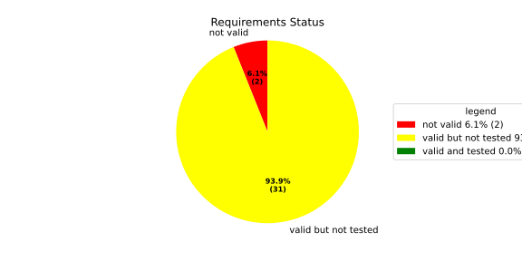
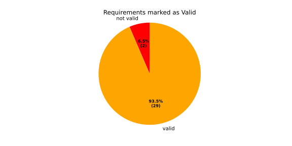
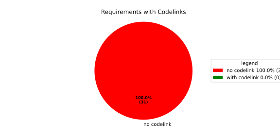
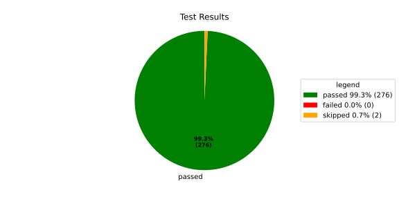
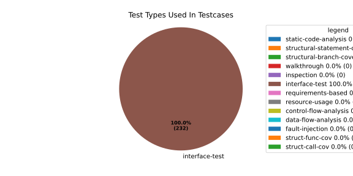
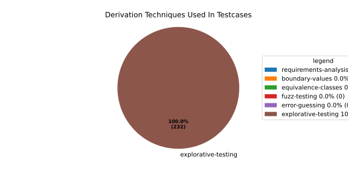

Verification Statistics#
Overview#

In Detail#



Failed Tests
Hint: This table should be empty. Before a PR can be merged all tests have to be successful.
No needs passed the filters
Skipped / Disabled Tests
testcase |
Result |
Fully Verifies |
Partially Verifies |
Test Type |
Derivation Technique |
link |
|---|---|---|---|---|---|---|
ValidateRangeTest/4__RejectsValueAboveMax |
skipped |
interface-test |
explorative-testing |
|||
ValidateRangeTest/4__RejectsValueBelowMin |
skipped |
interface-test |
explorative-testing |
All passed Tests#
testcase |
Result |
Fully Verifies |
Partially Verifies |
Test Type |
Derivation Technique |
link |
|---|---|---|---|---|---|---|
AliveImplTest__DoesNotThrowWhenInterfacePathEnvVarIsSet |
passed |
interface-test |
explorative-testing |
testcase__AliveImplTest__DoesNotThrowWhenInterfacePathEnvVarIsSet_xpewu |
||
AliveImplTest__ReportCheckpointSafeWhenNotConnected |
passed |
interface-test |
explorative-testing |
testcase__AliveImplTest__ReportCheckpointSafeWhenNotConnected_ppvuc |
||
AliveImplTest__ThrowsWhenInterfacePathEnvVarIsNotSet |
passed |
interface-test |
explorative-testing |
testcase__AliveImplTest__ThrowsWhenInterfacePathEnvVarIsNotSet_ekxfw |
||
AliveSupervisionTest__AliveDebouncesThroughFailedBeforeExpired |
passed |
interface-test |
explorative-testing |
testcase__AliveSupervisionTest__AliveDebouncesThroughFailedBeforeExpired_mlnbe |
||
AliveSupervisionTest__AliveReportsEnqueueFailureWhenRingBufferFull |
passed |
interface-test |
explorative-testing |
testcase__AliveSupervisionTest__AliveReportsEnqueueFailureWhenRingBufferFull_byhrd |
||
AliveSupervisionTest__AliveStaysOkWithCorrectHeartbeats |
passed |
interface-test |
explorative-testing |
testcase__AliveSupervisionTest__AliveStaysOkWithCorrectHeartbeats_vekof |
||
AliveSupervisionTest__AliveTransitionsOkToExpiredOnMissingHeartbeat |
passed |
interface-test |
explorative-testing |
testcase__AliveSupervisionTest__AliveTransitionsOkToExpiredOnMissingHeartbeat_jymxo |
||
AliveSupervisionTest__DeactivatesOnProcessCrash |
passed |
interface-test |
explorative-testing |
testcase__AliveSupervisionTest__DeactivatesOnProcessCrash_ypejs |
||
AliveSupervisionTest__DeactivatesOnProcessSigterm |
passed |
interface-test |
explorative-testing |
testcase__AliveSupervisionTest__DeactivatesOnProcessSigterm_hzaal |
||
AliveSupervisionTest__IgnoresIrrelevantProcessStates |
passed |
interface-test |
explorative-testing |
testcase__AliveSupervisionTest__IgnoresIrrelevantProcessStates_aolvb |
||
AliveSupervisionTest__MaxIndicationViolationExpires |
passed |
interface-test |
explorative-testing |
testcase__AliveSupervisionTest__MaxIndicationViolationExpires_whhhi |
||
AliveSupervisionTest__ReactivatesAfterCrash |
passed |
interface-test |
explorative-testing |
|||
ApplicationTypes/ApplicationTypeTest__ConvertsToExpectedValue/Native |
passed |
interface-test |
explorative-testing |
testcase__ApplicationTypes/ApplicationTypeTest__ConvertsToExpectedValue/Native_yxxcz |
||
ApplicationTypes/ApplicationTypeTest__ConvertsToExpectedValue/Reporting |
passed |
interface-test |
explorative-testing |
testcase__ApplicationTypes/ApplicationTypeTest__ConvertsToExpectedValue/Reporting_wcfwr |
||
ApplicationTypes/ApplicationTypeTest__ConvertsToExpectedValue/ReportingAndSupervised |
passed |
interface-test |
explorative-testing |
testcase__ApplicationTypes/ApplicationTypeTest__ConvertsToExpectedValue/ReportingAndSupervised_yxgad |
||
ApplicationTypes/ApplicationTypeTest__ConvertsToExpectedValue/StateManager |
passed |
interface-test |
explorative-testing |
testcase__ApplicationTypes/ApplicationTypeTest__ConvertsToExpectedValue/StateManager_ivuzc |
||
ConfigurationAdapterFallbackTest__FallbackRunTargetResolvesDependenciesRecursively |
passed |
interface-test |
explorative-testing |
testcase__ConfigurationAdapterFallbackTest__FallbackRunTargetResolvesDependenciesRecursively_qcvvz |
||
ConfigurationAdapterReadyConditionTest__DependencyDefaultsToRunningWhenTargetHasNoReadyCondition |
passed |
interface-test |
explorative-testing |
|||
ConfigurationAdapterReadyConditionTest__DependencyUsesTargetComponentReadyCondition |
passed |
interface-test |
explorative-testing |
testcase__ConfigurationAdapterReadyConditionTest__DependencyUsesTargetComponentReadyCondition_wvyyj |
||
ConfigurationAdapterTest__GetListOfProcessGroupsReturnsSingleImplicitGroup |
passed |
interface-test |
explorative-testing |
testcase__ConfigurationAdapterTest__GetListOfProcessGroupsReturnsSingleImplicitGroup_fthqq |
||
ConfigurationAdapterTest__GetMainPGStartupStateMapsToInitialRunTarget |
passed |
interface-test |
explorative-testing |
testcase__ConfigurationAdapterTest__GetMainPGStartupStateMapsToInitialRunTarget_wtcit |
||
ConfigurationAdapterTest__GetNameOfOffStateMapsToMainPGOff |
passed |
interface-test |
explorative-testing |
testcase__ConfigurationAdapterTest__GetNameOfOffStateMapsToMainPGOff_jczne |
||
ConfigurationAdapterTest__GetNameOfRecoveryStateMapsToFallbackRunTarget |
passed |
interface-test |
explorative-testing |
testcase__ConfigurationAdapterTest__GetNameOfRecoveryStateMapsToFallbackRunTarget_mxndq |
||
ConfigurationAdapterTest__GetNumberOfOsProcessesReturnsComponentCount |
passed |
interface-test |
explorative-testing |
testcase__ConfigurationAdapterTest__GetNumberOfOsProcessesReturnsComponentCount_eyzdp |
||
ConfigurationAdapterTest__GetOsProcessConfigurationInjectsAliveInterfaceForSupervised |
passed |
interface-test |
explorative-testing |
|||
ConfigurationAdapterTest__GetOsProcessConfigurationMapsComponentFields |
passed |
interface-test |
explorative-testing |
testcase__ConfigurationAdapterTest__GetOsProcessConfigurationMapsComponentFields_rszfk |
||
ConfigurationAdapterTest__GetOsProcessConfigurationNoAliveInterfaceForNative |
passed |
interface-test |
explorative-testing |
testcase__ConfigurationAdapterTest__GetOsProcessConfigurationNoAliveInterfaceForNative_cbsad |
||
ConfigurationAdapterTest__GetOsProcessConfigurationReturnsNulloptForInvalidIndex |
passed |
interface-test |
explorative-testing |
testcase__ConfigurationAdapterTest__GetOsProcessConfigurationReturnsNulloptForInvalidIndex_yoorg |
||
ConfigurationAdapterTest__GetOsProcessConfigurationReturnsNulloptForUnknownPG |
passed |
interface-test |
explorative-testing |
testcase__ConfigurationAdapterTest__GetOsProcessConfigurationReturnsNulloptForUnknownPG_ewqla |
||
ConfigurationAdapterTest__GetOsProcessDependenciesEmptyForComponentWithNoDeps |
passed |
interface-test |
explorative-testing |
testcase__ConfigurationAdapterTest__GetOsProcessDependenciesEmptyForComponentWithNoDeps_odxew |
||
ConfigurationAdapterTest__GetOsProcessDependenciesMapsComponentDependsOn |
passed |
interface-test |
explorative-testing |
testcase__ConfigurationAdapterTest__GetOsProcessDependenciesMapsComponentDependsOn_varth |
||
ConfigurationAdapterTest__GetProcessIndexesListResolvesRunTargetDependencies |
passed |
interface-test |
explorative-testing |
testcase__ConfigurationAdapterTest__GetProcessIndexesListResolvesRunTargetDependencies_otimf |
||
ConfigurationAdapterTest__GetProcessIndexesListResolvesTransitiveDependencies |
passed |
interface-test |
explorative-testing |
testcase__ConfigurationAdapterTest__GetProcessIndexesListResolvesTransitiveDependencies_iemgm |
||
ConfigurationAdapterTest__GetSoftwareClusterReturnsDefault |
passed |
interface-test |
explorative-testing |
testcase__ConfigurationAdapterTest__GetSoftwareClusterReturnsDefault_ixyoq |
||
ConfigurationAdapterTest__OffStateReturnsProcessIndexesListEmpty |
passed |
interface-test |
explorative-testing |
testcase__ConfigurationAdapterTest__OffStateReturnsProcessIndexesListEmpty_zngsc |
||
ConverterTest__ConvertAliveSupervisionMissingCycleReturnsError |
passed |
interface-test |
explorative-testing |
testcase__ConverterTest__ConvertAliveSupervisionMissingCycleReturnsError_bifzg |
||
ConverterTest__ConvertAliveSupervisionNullReturnsDefault |
passed |
interface-test |
explorative-testing |
testcase__ConverterTest__ConvertAliveSupervisionNullReturnsDefault_clyua |
||
ConverterTest__ConvertAliveSupervisionValid |
passed |
interface-test |
explorative-testing |
|||
ConverterTest__ConvertApplicationProfileMissingSelfTerminatingReturnsError |
passed |
interface-test |
explorative-testing |
testcase__ConverterTest__ConvertApplicationProfileMissingSelfTerminatingReturnsError_zddjb |
||
ConverterTest__ConvertApplicationProfileMissingTypeReturnsError |
passed |
interface-test |
explorative-testing |
testcase__ConverterTest__ConvertApplicationProfileMissingTypeReturnsError_zrfcs |
||
ConverterTest__ConvertApplicationProfileValid |
passed |
interface-test |
explorative-testing |
testcase__ConverterTest__ConvertApplicationProfileValid_oohxq |
||
ConverterTest__ConvertComponentAliveSupervisionBothIndicationsAbsentReturnsError |
passed |
interface-test |
explorative-testing |
testcase__ConverterTest__ConvertComponentAliveSupervisionBothIndicationsAbsentReturnsError_gvtfi |
||
ConverterTest__ConvertComponentAliveSupervisionMissingReportingCycleReturnsError |
passed |
interface-test |
explorative-testing |
testcase__ConverterTest__ConvertComponentAliveSupervisionMissingReportingCycleReturnsError_ajymy |
||
ConverterTest__ConvertComponentAliveSupervisionMissingToleranceReturnsError |
passed |
interface-test |
explorative-testing |
testcase__ConverterTest__ConvertComponentAliveSupervisionMissingToleranceReturnsError_lgrhj |
||
ConverterTest__ConvertComponentAliveSupervisionNullReturnsDefault |
passed |
interface-test |
explorative-testing |
testcase__ConverterTest__ConvertComponentAliveSupervisionNullReturnsDefault_xhaus |
||
ConverterTest__ConvertComponentAliveSupervisionOnlyMaxIndicationsPresent |
passed |
interface-test |
explorative-testing |
testcase__ConverterTest__ConvertComponentAliveSupervisionOnlyMaxIndicationsPresent_smwht |
||
ConverterTest__ConvertComponentAliveSupervisionOnlyMinIndicationsPresent |
passed |
interface-test |
explorative-testing |
testcase__ConverterTest__ConvertComponentAliveSupervisionOnlyMinIndicationsPresent_ybbrr |
||
ConverterTest__ConvertComponentAliveSupervisionValid |
passed |
interface-test |
explorative-testing |
testcase__ConverterTest__ConvertComponentAliveSupervisionValid_ijedh |
||
ConverterTest__ConvertComponentsValid |
passed |
interface-test |
explorative-testing |
|||
ConverterTest__ConvertComponentsWithInvalidComponentReturnsError |
passed |
interface-test |
explorative-testing |
testcase__ConverterTest__ConvertComponentsWithInvalidComponentReturnsError_wridc |
||
ConverterTest__ConvertComponentValid |
passed |
interface-test |
explorative-testing |
|||
ConverterTest__ConvertDeploymentConfigMissingReadyTimeoutReturnsError |
passed |
interface-test |
explorative-testing |
testcase__ConverterTest__ConvertDeploymentConfigMissingReadyTimeoutReturnsError_ljzfl |
||
ConverterTest__ConvertDeploymentConfigMissingShutdownTimeoutReturnsError |
passed |
interface-test |
explorative-testing |
testcase__ConverterTest__ConvertDeploymentConfigMissingShutdownTimeoutReturnsError_vyqye |
||
ConverterTest__ConvertDeploymentConfigValid |
passed |
interface-test |
explorative-testing |
|||
ConverterTest__ConvertEnvironmentalVariables |
passed |
interface-test |
explorative-testing |
testcase__ConverterTest__ConvertEnvironmentalVariables_fnhgo |
||
ConverterTest__ConvertEnvironmentalVariablesNullReturnsEmpty |
passed |
interface-test |
explorative-testing |
testcase__ConverterTest__ConvertEnvironmentalVariablesNullReturnsEmpty_vglrx |
||
ConverterTest__ConvertFallbackRunTargetMissingTimeoutReturnsError |
passed |
interface-test |
explorative-testing |
testcase__ConverterTest__ConvertFallbackRunTargetMissingTimeoutReturnsError_aevly |
||
ConverterTest__ConvertFallbackRunTargetValid |
passed |
interface-test |
explorative-testing |
testcase__ConverterTest__ConvertFallbackRunTargetValid_nexxj |
||
ConverterTest__ConvertReadyConditionMissingProcessStateReturnsError |
passed |
interface-test |
explorative-testing |
testcase__ConverterTest__ConvertReadyConditionMissingProcessStateReturnsError_ileav |
||
ConverterTest__ConvertReadyConditionValid |
passed |
interface-test |
explorative-testing |
|||
ConverterTest__ConvertRestartActionMissingFieldsReturnsError |
passed |
interface-test |
explorative-testing |
testcase__ConverterTest__ConvertRestartActionMissingFieldsReturnsError_aapjb |
||
ConverterTest__ConvertRestartActionNullReturnsNullopt |
passed |
interface-test |
explorative-testing |
testcase__ConverterTest__ConvertRestartActionNullReturnsNullopt_ifvyd |
||
ConverterTest__ConvertRestartActionValid |
passed |
interface-test |
explorative-testing |
|||
ConverterTest__ConvertRunTargetMissingTransitionTimeoutReturnsError |
passed |
interface-test |
explorative-testing |
testcase__ConverterTest__ConvertRunTargetMissingTransitionTimeoutReturnsError_ynekv |
||
ConverterTest__ConvertRunTargetsValid |
passed |
interface-test |
explorative-testing |
|||
ConverterTest__ConvertRunTargetsWithInvalidRunTargetReturnsError |
passed |
interface-test |
explorative-testing |
testcase__ConverterTest__ConvertRunTargetsWithInvalidRunTargetReturnsError_ldlox |
||
ConverterTest__ConvertRunTargetValid |
passed |
interface-test |
explorative-testing |
|||
ConverterTest__ConvertSandboxMissingGidReturnsError |
passed |
interface-test |
explorative-testing |
testcase__ConverterTest__ConvertSandboxMissingGidReturnsError_veeel |
||
ConverterTest__ConvertSandboxMissingSchedulingPolicyReturnsError |
passed |
interface-test |
explorative-testing |
testcase__ConverterTest__ConvertSandboxMissingSchedulingPolicyReturnsError_pkfts |
||
ConverterTest__ConvertSandboxMissingSchedulingPriorityReturnsError |
passed |
interface-test |
explorative-testing |
testcase__ConverterTest__ConvertSandboxMissingSchedulingPriorityReturnsError_xzdho |
||
ConverterTest__ConvertSandboxMissingUidReturnsError |
passed |
interface-test |
explorative-testing |
testcase__ConverterTest__ConvertSandboxMissingUidReturnsError_ogfku |
||
ConverterTest__ConvertSandboxSupplementaryGidOutOfRangeReturnsError |
passed |
interface-test |
explorative-testing |
testcase__ConverterTest__ConvertSandboxSupplementaryGidOutOfRangeReturnsError_zavpx |
||
ConverterTest__ConvertSandboxUidOutOfRangeReturnsError |
passed |
interface-test |
explorative-testing |
testcase__ConverterTest__ConvertSandboxUidOutOfRangeReturnsError_mcuaf |
||
ConverterTest__ConvertSandboxValid |
passed |
interface-test |
explorative-testing |
|||
ConverterTest__ConvertSwitchRunTargetActionNullReturnsNullopt |
passed |
interface-test |
explorative-testing |
testcase__ConverterTest__ConvertSwitchRunTargetActionNullReturnsNullopt_zmitx |
||
ConverterTest__ConvertSwitchRunTargetActionValid |
passed |
interface-test |
explorative-testing |
testcase__ConverterTest__ConvertSwitchRunTargetActionValid_tdklr |
||
ConverterTest__ConvertWatchdogMissingDeactivateReturnsError |
passed |
interface-test |
explorative-testing |
testcase__ConverterTest__ConvertWatchdogMissingDeactivateReturnsError_gzwjt |
||
ConverterTest__ConvertWatchdogMissingMagicCloseReturnsError |
passed |
interface-test |
explorative-testing |
testcase__ConverterTest__ConvertWatchdogMissingMagicCloseReturnsError_gexxk |
||
ConverterTest__ConvertWatchdogMissingMaxTimeoutReturnsError |
passed |
interface-test |
explorative-testing |
testcase__ConverterTest__ConvertWatchdogMissingMaxTimeoutReturnsError_lffxm |
||
ConverterTest__ConvertWatchdogNullReturnsNullopt |
passed |
interface-test |
explorative-testing |
testcase__ConverterTest__ConvertWatchdogNullReturnsNullopt_irsdk |
||
ConverterTest__ConvertWatchdogValid |
passed |
interface-test |
explorative-testing |
|||
DeadlineFixture__Start_AlreadyRunning |
passed |
interface-test |
explorative-testing |
|||
DeadlineFixture__Start_Succeeds |
passed |
interface-test |
explorative-testing |
|||
DeadlineMonitorBuilderFixture__AddDeadline_Succeeds |
passed |
interface-test |
explorative-testing |
testcase__DeadlineMonitorBuilderFixture__AddDeadline_Succeeds_nagke |
||
DeadlineMonitorBuilderFixture__New_Succeeds |
passed |
interface-test |
explorative-testing |
|||
DeadlineMonitorFixture__GetDeadline_Succeeds |
passed |
interface-test |
explorative-testing |
testcase__DeadlineMonitorFixture__GetDeadline_Succeeds_tmltf |
||
DeadlineMonitorFixture__GetDeadline_Unknown |
passed |
interface-test |
explorative-testing |
|||
EnumConversionTest__ConvertSchedulingPolicyUnsupported |
passed |
interface-test |
explorative-testing |
testcase__EnumConversionTest__ConvertSchedulingPolicyUnsupported_iavqm |
||
EnvironmentTest__AddIncreasesSize |
passed |
interface-test |
explorative-testing |
|||
EnvironmentTest__DefaultConstructedIsEmpty |
passed |
interface-test |
explorative-testing |
|||
EnvironmentTest__EmptyEnvironmentEnvpIsNullTerminated |
passed |
interface-test |
explorative-testing |
testcase__EnvironmentTest__EmptyEnvironmentEnvpIsNullTerminated_wwumw |
||
EnvironmentTest__EnvpReturnsNullTerminatedArray |
passed |
interface-test |
explorative-testing |
testcase__EnvironmentTest__EnvpReturnsNullTerminatedArray_aubkv |
||
EnvironmentTest__EnvpWithMultipleEntries |
passed |
interface-test |
explorative-testing |
|||
EnvironmentTest__MoveAssignmentPreservesEntries |
passed |
interface-test |
explorative-testing |
testcase__EnvironmentTest__MoveAssignmentPreservesEntries_vkydj |
||
EnvironmentTest__MoveConstructorPreservesEntries |
passed |
interface-test |
explorative-testing |
testcase__EnvironmentTest__MoveConstructorPreservesEntries_upclt |
||
EnvironmentTest__RangeBasedForLoopWorks |
passed |
interface-test |
explorative-testing |
|||
EnvironmentTest__ReserveAndAddAvoidReallocation |
passed |
interface-test |
explorative-testing |
testcase__EnvironmentTest__ReserveAndAddAvoidReallocation_lgzmu |
||
EnvironmentTest__SsoLengthStringSurvivesReallocation |
passed |
interface-test |
explorative-testing |
testcase__EnvironmentTest__SsoLengthStringSurvivesReallocation_jfmtl |
||
EnvironmentVariableTest__CStrReturnsKeyEqualsValue |
passed |
interface-test |
explorative-testing |
testcase__EnvironmentVariableTest__CStrReturnsKeyEqualsValue_rkwan |
||
EnvironmentVariableTest__EmptyValue |
passed |
interface-test |
explorative-testing |
|||
EnvironmentVariableTest__KeyAndValueAreAccessible |
passed |
interface-test |
explorative-testing |
testcase__EnvironmentVariableTest__KeyAndValueAreAccessible_kcrth |
||
EnvironmentVariableTest__ValueContainingEquals |
passed |
interface-test |
explorative-testing |
testcase__EnvironmentVariableTest__ValueContainingEquals_apzgz |
||
ExecErrorDomainTest__AllKnownCodesHaveDistinctMessages |
passed |
interface-test |
explorative-testing |
testcase__ExecErrorDomainTest__AllKnownCodesHaveDistinctMessages_qpoka |
||
ExecErrorDomainTest__AllKnownCodesReturnNonEmptyMessage |
passed |
interface-test |
explorative-testing |
testcase__ExecErrorDomainTest__AllKnownCodesReturnNonEmptyMessage_bawzg |
||
ExecErrorDomainTest__UnknownCodeReturnsNonEmptyMessage |
passed |
interface-test |
explorative-testing |
testcase__ExecErrorDomainTest__UnknownCodeReturnsNonEmptyMessage_kkwpr |
||
FlatbufferConfigLoaderTest__CorruptedBufferReturnsInvalidFormat |
passed |
interface-test |
explorative-testing |
testcase__FlatbufferConfigLoaderTest__CorruptedBufferReturnsInvalidFormat_twyac |
||
FlatbufferConfigLoaderTest__LoadAliveSupervision |
passed |
interface-test |
explorative-testing |
testcase__FlatbufferConfigLoaderTest__LoadAliveSupervision_hhuux |
||
FlatbufferConfigLoaderTest__LoadBufferFailsWithGenericErrorReturnsGeneralError |
passed |
interface-test |
explorative-testing |
testcase__FlatbufferConfigLoaderTest__LoadBufferFailsWithGenericErrorReturnsGeneralError_kmatm |
||
FlatbufferConfigLoaderTest__LoadBufferFailsWithNoSuchFileReturnsFileNotFound |
passed |
interface-test |
explorative-testing |
testcase__FlatbufferConfigLoaderTest__LoadBufferFailsWithNoSuchFileReturnsFileNotFound_yzlra |
||
FlatbufferConfigLoaderTest__LoadBufferFailsWithPermissionDeniedReturnsInsufficientPermission |
passed |
interface-test |
explorative-testing |
|||
FlatbufferConfigLoaderTest__LoadComponentAliveSupervision |
passed |
interface-test |
explorative-testing |
testcase__FlatbufferConfigLoaderTest__LoadComponentAliveSupervision_fwfad |
||
FlatbufferConfigLoaderTest__LoadEnvironmentalVariables |
passed |
interface-test |
explorative-testing |
testcase__FlatbufferConfigLoaderTest__LoadEnvironmentalVariables_wsosu |
||
FlatbufferConfigLoaderTest__LoadFallbackRunTarget |
passed |
interface-test |
explorative-testing |
testcase__FlatbufferConfigLoaderTest__LoadFallbackRunTarget_wduqm |
||
FlatbufferConfigLoaderTest__LoadMinimalConfig |
passed |
interface-test |
explorative-testing |
testcase__FlatbufferConfigLoaderTest__LoadMinimalConfig_hdkck |
||
FlatbufferConfigLoaderTest__LoadMultipleComponents |
passed |
interface-test |
explorative-testing |
testcase__FlatbufferConfigLoaderTest__LoadMultipleComponents_abpom |
||
FlatbufferConfigLoaderTest__LoadRestartRecoveryAction |
passed |
interface-test |
explorative-testing |
testcase__FlatbufferConfigLoaderTest__LoadRestartRecoveryAction_wyfqg |
||
FlatbufferConfigLoaderTest__LoadRunTargets |
passed |
interface-test |
explorative-testing |
|||
FlatbufferConfigLoaderTest__LoadSandbox |
passed |
interface-test |
explorative-testing |
|||
FlatbufferConfigLoaderTest__LoadSingleComponent |
passed |
interface-test |
explorative-testing |
testcase__FlatbufferConfigLoaderTest__LoadSingleComponent_yidty |
||
FlatbufferConfigLoaderTest__LoadSwitchRunTargetAction |
passed |
interface-test |
explorative-testing |
testcase__FlatbufferConfigLoaderTest__LoadSwitchRunTargetAction_uchgp |
||
FlatbufferConfigLoaderTest__LoadWatchdog |
passed |
interface-test |
explorative-testing |
|||
FlatbufferConfigLoaderTest__MissingSchemaVersionReturnsInvalidFormat |
passed |
interface-test |
explorative-testing |
testcase__FlatbufferConfigLoaderTest__MissingSchemaVersionReturnsInvalidFormat_qqmfn |
||
FlatbufferConfigLoaderTest__OptionalReadyConditionAbsent |
passed |
interface-test |
explorative-testing |
testcase__FlatbufferConfigLoaderTest__OptionalReadyConditionAbsent_lhddx |
||
FlatbufferConfigLoaderTest__OptionalWatchdogAbsent |
passed |
interface-test |
explorative-testing |
testcase__FlatbufferConfigLoaderTest__OptionalWatchdogAbsent_pkhkp |
||
FlatbufferConfigLoaderTest__WrongSchemaVersionReturnsUnsupportedVersion |
passed |
interface-test |
explorative-testing |
testcase__FlatbufferConfigLoaderTest__WrongSchemaVersionReturnsUnsupportedVersion_zrbjv |
||
HealthMonitor__GetDeadlineMonitor_Available |
passed |
|||||
HealthMonitor__GetDeadlineMonitor_Taken |
passed |
|||||
HealthMonitor__GetDeadlineMonitor_Unknown |
passed |
|||||
HealthMonitor__GetHeartbeatMonitor_Available |
passed |
testcase__HealthMonitor__GetHeartbeatMonitor_Available_aacat |
||||
HealthMonitor__GetHeartbeatMonitor_Taken |
passed |
|||||
HealthMonitor__GetHeartbeatMonitor_Unknown |
passed |
|||||
HealthMonitor__GetLogicMonitor_Available |
passed |
|||||
HealthMonitor__GetLogicMonitor_Taken |
passed |
|||||
HealthMonitor__GetLogicMonitor_Unknown |
passed |
|||||
HealthMonitor__Start_MonitorsNotTaken |
passed |
|||||
HealthMonitor__Start_Succeeds |
passed |
|||||
HealthMonitorBuilderFixture__Build_InvalidCycles |
passed |
interface-test |
explorative-testing |
testcase__HealthMonitorBuilderFixture__Build_InvalidCycles_pdigk |
||
HealthMonitorBuilderFixture__Build_NoMonitors |
passed |
interface-test |
explorative-testing |
testcase__HealthMonitorBuilderFixture__Build_NoMonitors_ktcve |
||
HealthMonitorBuilderFixture__Build_Succeeds |
passed |
interface-test |
explorative-testing |
|||
HealthMonitorBuilderFixture__New_Succeeds |
passed |
interface-test |
explorative-testing |
|||
HealthMonitorTest__Integrated |
passed |
interface-test |
explorative-testing |
|||
HeartbeatMonitor__Heartbeat_Succeeds |
passed |
interface-test |
explorative-testing |
|||
HeartbeatMonitorBuilder__New_Succeeds |
passed |
interface-test |
explorative-testing |
|||
IdentifierHashTest__IdentifierHash_default_created |
passed |
interface-test |
explorative-testing |
testcase__IdentifierHashTest__IdentifierHash_default_created_yhhvi |
||
IdentifierHashTest__IdentifierHash_EqualityOperators |
passed |
interface-test |
explorative-testing |
testcase__IdentifierHashTest__IdentifierHash_EqualityOperators_nnsuj |
||
IdentifierHashTest__IdentifierHash_invalid_hash_no_string_representation |
passed |
interface-test |
explorative-testing |
testcase__IdentifierHashTest__IdentifierHash_invalid_hash_no_string_representation_rxowr |
||
IdentifierHashTest__IdentifierHash_LessThanOperator |
passed |
interface-test |
explorative-testing |
testcase__IdentifierHashTest__IdentifierHash_LessThanOperator_rnbax |
||
IdentifierHashTest__IdentifierHash_no_dangling_pointer_after_source_string_dies |
passed |
interface-test |
explorative-testing |
testcase__IdentifierHashTest__IdentifierHash_no_dangling_pointer_after_source_string_dies_qsjin |
||
IdentifierHashTest__IdentifierHash_with_string_created |
passed |
interface-test |
explorative-testing |
testcase__IdentifierHashTest__IdentifierHash_with_string_created_aygdm |
||
IdentifierHashTest__IdentifierHash_with_string_view_created |
passed |
interface-test |
explorative-testing |
testcase__IdentifierHashTest__IdentifierHash_with_string_view_created_dbpol |
||
LogicMonitorBuilderFixture__AddState_Succeeds |
passed |
interface-test |
explorative-testing |
testcase__LogicMonitorBuilderFixture__AddState_Succeeds_axdxj |
||
LogicMonitorBuilderFixture__New_Succeeds |
passed |
interface-test |
explorative-testing |
|||
LogicMonitorFixture__State_Invalid |
passed |
interface-test |
explorative-testing |
|||
LogicMonitorFixture__State_Succeeds |
passed |
interface-test |
explorative-testing |
|||
LogicMonitorFixture__Transition_Invalid |
passed |
interface-test |
explorative-testing |
|||
LogicMonitorFixture__Transition_Succeeds |
passed |
interface-test |
explorative-testing |
|||
LogicMonitorFixture__Transition_Unknown |
passed |
interface-test |
explorative-testing |
|||
MonitorIfDaemonTest__Active_CheckpointDataForwarded |
passed |
interface-test |
explorative-testing |
testcase__MonitorIfDaemonTest__Active_CheckpointDataForwarded_evumz |
||
MonitorIfDaemonTest__Active_FutureTimestamp_NotForwardedInCurrentCycle |
passed |
interface-test |
explorative-testing |
testcase__MonitorIfDaemonTest__Active_FutureTimestamp_NotForwardedInCurrentCycle_oycau |
||
MonitorIfDaemonTest__Active_FutureTimestampCheckpoint_ConsumedInLaterCycle |
passed |
interface-test |
explorative-testing |
testcase__MonitorIfDaemonTest__Active_FutureTimestampCheckpoint_ConsumedInLaterCycle_veyyy |
||
MonitorIfDaemonTest__Active_MultipleCheckpointsInOneCycle_AllForwarded |
passed |
interface-test |
explorative-testing |
testcase__MonitorIfDaemonTest__Active_MultipleCheckpointsInOneCycle_AllForwarded_gmbms |
||
MonitorIfDaemonTest__Active_NonMatchingCheckpointId_NotForwarded |
passed |
interface-test |
explorative-testing |
testcase__MonitorIfDaemonTest__Active_NonMatchingCheckpointId_NotForwarded_bohck |
||
MonitorIfDaemonTest__Active_OverflowDetected_TransitionsToInactiveOverflow |
passed |
interface-test |
explorative-testing |
testcase__MonitorIfDaemonTest__Active_OverflowDetected_TransitionsToInactiveOverflow_ovitk |
||
MonitorIfDaemonTest__Active_TwoAttachedCheckpoints_RoutedByCheckpointId |
passed |
interface-test |
explorative-testing |
testcase__MonitorIfDaemonTest__Active_TwoAttachedCheckpoints_RoutedByCheckpointId_skqhd |
||
MonitorIfDaemonTest__GetInterfaceName_ReturnsNameGivenAtConstruction |
passed |
interface-test |
explorative-testing |
testcase__MonitorIfDaemonTest__GetInterfaceName_ReturnsNameGivenAtConstruction_iaemz |
||
MonitorIfDaemonTest__InactiveOverflow_NoProcessRestart_DoesNotRepeatNotification |
passed |
interface-test |
explorative-testing |
testcase__MonitorIfDaemonTest__InactiveOverflow_NoProcessRestart_DoesNotRepeatNotification_gdbxg |
||
MonitorIfDaemonTest__InactiveOverflow_ProcessRestartFlag_ClearedAfterNotification |
passed |
interface-test |
explorative-testing |
testcase__MonitorIfDaemonTest__InactiveOverflow_ProcessRestartFlag_ClearedAfterNotification_pqfyy |
||
MonitorIfDaemonTest__InactiveOverflow_ProcessRestarts_PushesOverflowNotificationAgain |
passed |
interface-test |
explorative-testing |
|||
MonitorIfDaemonTest__InitiallyInactive_CheckForNewData_DoesNotNotifyCheckpoint |
passed |
interface-test |
explorative-testing |
testcase__MonitorIfDaemonTest__InitiallyInactive_CheckForNewData_DoesNotNotifyCheckpoint_wjrfl |
||
MonitorIfDaemonTest__ProcessOff_DeactivatesMonitor_NoFurtherDataForwarded |
passed |
interface-test |
explorative-testing |
testcase__MonitorIfDaemonTest__ProcessOff_DeactivatesMonitor_NoFurtherDataForwarded_uialh |
||
MonitorIfDaemonTest__ProcessOffBeforeActivation_RemainsInactive |
passed |
interface-test |
explorative-testing |
testcase__MonitorIfDaemonTest__ProcessOffBeforeActivation_RemainsInactive_kzzyy |
||
MonitorIfDaemonTest__ProcessRunning_ActivatesMonitorOnNextCheckForNewData |
passed |
interface-test |
explorative-testing |
testcase__MonitorIfDaemonTest__ProcessRunning_ActivatesMonitorOnNextCheckForNewData_fkkmk |
||
MonitorIfDaemonTest__ProcessStarting_AlsoActivatesMonitor |
passed |
interface-test |
explorative-testing |
testcase__MonitorIfDaemonTest__ProcessStarting_AlsoActivatesMonitor_xdkbg |
||
MPMCConcurrentQueueTest_Basic__LvaluePushCopiesItem |
passed |
testcase__MPMCConcurrentQueueTest_Basic__LvaluePushCopiesItem_oysfc |
||||
MPMCConcurrentQueueTest_Basic__PopReturnsNulloptOnSemaphoreWaitFailure |
passed |
testcase__MPMCConcurrentQueueTest_Basic__PopReturnsNulloptOnSemaphoreWaitFailure_rgznm |
||||
MPMCConcurrentQueueTest_Basic__PushAndPopPreservesOrder |
passed |
testcase__MPMCConcurrentQueueTest_Basic__PushAndPopPreservesOrder_aijdb |
||||
MPMCConcurrentQueueTest_Basic__PushAndPopSingleItem |
passed |
testcase__MPMCConcurrentQueueTest_Basic__PushAndPopSingleItem_jrxwz |
||||
MPMCConcurrentQueueTest_Basic__RvaluePushWorksWithMoveOnlyType |
passed |
testcase__MPMCConcurrentQueueTest_Basic__RvaluePushWorksWithMoveOnlyType_cxxaj |
||||
MPMCConcurrentQueueTest_Blocking__PopBlocksUntilItemAvailable |
passed |
testcase__MPMCConcurrentQueueTest_Blocking__PopBlocksUntilItemAvailable_ttwcx |
||||
MPMCConcurrentQueueTest_Blocking__PushBlocksWhenFull |
passed |
testcase__MPMCConcurrentQueueTest_Blocking__PushBlocksWhenFull_ecujf |
||||
MPMCConcurrentQueueTest_Blocking__StopUnblocksBlockedConsumer |
passed |
testcase__MPMCConcurrentQueueTest_Blocking__StopUnblocksBlockedConsumer_snzyr |
||||
MPMCConcurrentQueueTest_Blocking__StopUnblocksBlockedProducer |
passed |
testcase__MPMCConcurrentQueueTest_Blocking__StopUnblocksBlockedProducer_inddu |
||||
MPMCConcurrentQueueTest_MPMC__AllItemsDelivered |
passed |
testcase__MPMCConcurrentQueueTest_MPMC__AllItemsDelivered_ztjqe |
||||
MPMCConcurrentQueueTest_Stop__ItemsAreDroppedAfterStop |
passed |
testcase__MPMCConcurrentQueueTest_Stop__ItemsAreDroppedAfterStop_ragzw |
||||
MPMCConcurrentQueueTest_Stop__PopReturnsNulloptWhenStoppedAndEmpty |
passed |
testcase__MPMCConcurrentQueueTest_Stop__PopReturnsNulloptWhenStoppedAndEmpty_cevga |
||||
MPMCConcurrentQueueTest_Stop__PushReturnsFalseAfterStop |
passed |
testcase__MPMCConcurrentQueueTest_Stop__PushReturnsFalseAfterStop_qqnhw |
||||
MPMCConcurrentQueueTest_Timeout__PushWithTimeoutReturnsFalseWhenFull |
passed |
testcase__MPMCConcurrentQueueTest_Timeout__PushWithTimeoutReturnsFalseWhenFull_aeips |
||||
MPMCConcurrentQueueTest_Timeout__PushWithTimeoutSucceedsWhenSlotAvailable |
passed |
testcase__MPMCConcurrentQueueTest_Timeout__PushWithTimeoutSucceedsWhenSlotAvailable_klzpo |
||||
OsHandlerTest__WaitReturnsError_OsHandlerSleepsAndDoesNotCallFindTerminated |
passed |
interface-test |
explorative-testing |
testcase__OsHandlerTest__WaitReturnsError_OsHandlerSleepsAndDoesNotCallFindTerminated_cibtr |
||
OsHandlerTest__WaitReturnsErrorThenProcessId_HandlerRecoversAndInvokesCallback |
passed |
interface-test |
explorative-testing |
testcase__OsHandlerTest__WaitReturnsErrorThenProcessId_HandlerRecoversAndInvokesCallback_nqstd |
||
OsHandlerTest__WaitReturnsProcessId_FindTerminatedIsCalled |
passed |
interface-test |
explorative-testing |
testcase__OsHandlerTest__WaitReturnsProcessId_FindTerminatedIsCalled_chlsq |
||
OsHandlerTest__WaitReturnsProcessIdBeforeRegistration_LaterRegistrationReceivesStoredTermination |
passed |
interface-test |
explorative-testing |
|||
OsHandlerTest__WaitReturnsUnknownPidWhenMapIsFull_OutOfResourcesPathDoesNotNotifyCallbacks |
passed |
interface-test |
explorative-testing |
|||
OsHandlerTest__WaitReturnsZeroPid_OsHandlerSleepsAndDoesNotCallFindTerminated |
passed |
interface-test |
explorative-testing |
testcase__OsHandlerTest__WaitReturnsZeroPid_OsHandlerSleepsAndDoesNotCallFindTerminated_rkttz |
||
ProcessStateClient_UT__ProcessStateClient_ConstructReceiver_Succeeds |
passed |
interface-test |
explorative-testing |
testcase__ProcessStateClient_UT__ProcessStateClient_ConstructReceiver_Succeeds_hodwy |
||
ProcessStateClient_UT__ProcessStateClient_QueueMaxNumberOfProcesses_Succeeds |
passed |
interface-test |
explorative-testing |
testcase__ProcessStateClient_UT__ProcessStateClient_QueueMaxNumberOfProcesses_Succeeds_qohom |
||
ProcessStateClient_UT__ProcessStateClient_QueueOneProcess_Succeeds |
passed |
interface-test |
explorative-testing |
testcase__ProcessStateClient_UT__ProcessStateClient_QueueOneProcess_Succeeds_tmzfz |
||
ProcessStateClient_UT__ProcessStateClient_QueueOneProcessTooMany_Fails |
passed |
interface-test |
explorative-testing |
testcase__ProcessStateClient_UT__ProcessStateClient_QueueOneProcessTooMany_Fails_sspoj |
||
ProcessStates/ProcessStateTest__ConvertsToExpectedValue/Running |
passed |
interface-test |
explorative-testing |
testcase__ProcessStates/ProcessStateTest__ConvertsToExpectedValue/Running_hinlr |
||
ProcessStates/ProcessStateTest__ConvertsToExpectedValue/Terminated |
passed |
interface-test |
explorative-testing |
testcase__ProcessStates/ProcessStateTest__ConvertsToExpectedValue/Terminated_zrytn |
||
RecoveryClientTest__FIFOOrdering |
passed |
interface-test |
explorative-testing |
|||
RecoveryClientTest__GetNextRequest |
passed |
interface-test |
explorative-testing |
|||
RecoveryClientTest__GetNextRequestEmpty |
passed |
interface-test |
explorative-testing |
|||
RecoveryClientTest__RingBufferFull |
passed |
interface-test |
explorative-testing |
|||
RecoveryClientTest__SendSingleRequest |
passed |
interface-test |
explorative-testing |
|||
RunTest__AsPosixProcessCreatesAndDestroysLifeCycleManager |
passed |
testcase__RunTest__AsPosixProcessCreatesAndDestroysLifeCycleManager_sooex |
||||
RunTest__AsPosixProcessForwardsConstructorArgsToApplication |
passed |
testcase__RunTest__AsPosixProcessForwardsConstructorArgsToApplication_dmeur |
||||
RunTest__AsPosixProcessForwardsNonZeroExitCode |
passed |
testcase__RunTest__AsPosixProcessForwardsNonZeroExitCode_lldqd |
||||
RunTest__AsPosixProcessPassesCorrectApplicationTypeToRun |
passed |
testcase__RunTest__AsPosixProcessPassesCorrectApplicationTypeToRun_ajqwz |
||||
RunTest__AsPosixProcessReturnsZeroExitCode |
passed |
|||||
RunTest__RunApplicationFreeFunctionDelegatesToAsPosixProcess |
passed |
testcase__RunTest__RunApplicationFreeFunctionDelegatesToAsPosixProcess_ccing |
||||
RunTest__RunConstructorPassesArgcArgvToApplicationContext |
passed |
testcase__RunTest__RunConstructorPassesArgcArgvToApplicationContext_agerd |
||||
SafeProcessMapTest__ConcurrentFindAndInsertFromMultipleThreads |
passed |
interface-test |
explorative-testing |
testcase__SafeProcessMapTest__ConcurrentFindAndInsertFromMultipleThreads_kzfyg |
||
SafeProcessMapTest__ConcurrentInsertAndFindFromMultipleThreads |
passed |
interface-test |
explorative-testing |
testcase__SafeProcessMapTest__ConcurrentInsertAndFindFromMultipleThreads_hnyqj |
||
SafeProcessMapTest__ConstructWithZeroCapacity |
passed |
interface-test |
explorative-testing |
testcase__SafeProcessMapTest__ConstructWithZeroCapacity_gjmqg |
||
SafeProcessMapTest__FindTerminatedInsertsEntryWhenPidNotPresent |
passed |
interface-test |
explorative-testing |
testcase__SafeProcessMapTest__FindTerminatedInsertsEntryWhenPidNotPresent_ixtlt |
||
SafeProcessMapTest__FindTerminatedMatchesExistingInsertAndCallsCallback |
passed |
interface-test |
explorative-testing |
testcase__SafeProcessMapTest__FindTerminatedMatchesExistingInsertAndCallsCallback_ehuzb |
||
SafeProcessMapTest__FindTerminatedSamePidTwiceYieldsUntilInsertResolves |
passed |
interface-test |
explorative-testing |
testcase__SafeProcessMapTest__FindTerminatedSamePidTwiceYieldsUntilInsertResolves_hsekx |
||
SafeProcessMapTest__FindTerminatedWithNegativePidReturnsInvalid |
passed |
interface-test |
explorative-testing |
testcase__SafeProcessMapTest__FindTerminatedWithNegativePidReturnsInvalid_dewoh |
||
SafeProcessMapTest__FindTerminatedWorksAtMaxTreeDepth |
passed |
interface-test |
explorative-testing |
testcase__SafeProcessMapTest__FindTerminatedWorksAtMaxTreeDepth_adtzi |
||
SafeProcessMapTest__InsertBeyondCapacityReturnsOutOfMemory |
passed |
interface-test |
explorative-testing |
testcase__SafeProcessMapTest__InsertBeyondCapacityReturnsOutOfMemory_qjnie |
||
SafeProcessMapTest__InsertIntoEmptyTreeReturnsZero |
passed |
interface-test |
explorative-testing |
testcase__SafeProcessMapTest__InsertIntoEmptyTreeReturnsZero_zfbaq |
||
SafeProcessMapTest__InsertMatchesExistingFindTerminatedEntry |
passed |
interface-test |
explorative-testing |
testcase__SafeProcessMapTest__InsertMatchesExistingFindTerminatedEntry_fuwrp |
||
SafeProcessMapTest__InsertMultipleNodesThenFindTerminatedRemovesAll |
passed |
interface-test |
explorative-testing |
testcase__SafeProcessMapTest__InsertMultipleNodesThenFindTerminatedRemovesAll_fvowh |
||
SafeProcessMapTest__InsertSamePidTwiceYieldsUntilFindTerminatedResolves |
passed |
interface-test |
explorative-testing |
testcase__SafeProcessMapTest__InsertSamePidTwiceYieldsUntilFindTerminatedResolves_wzwyb |
||
SchedulingPolicies/SchedulingPolicyTest__ConvertsToExpectedPosixValue/SCHED_FIFO |
passed |
interface-test |
explorative-testing |
testcase__SchedulingPolicies/SchedulingPolicyTest__ConvertsToExpectedPosixValue/SCHED_FIFO_soddq |
||
SchedulingPolicies/SchedulingPolicyTest__ConvertsToExpectedPosixValue/SCHED_OTHER |
passed |
interface-test |
explorative-testing |
testcase__SchedulingPolicies/SchedulingPolicyTest__ConvertsToExpectedPosixValue/SCHED_OTHER_oigmk |
||
SchedulingPolicies/SchedulingPolicyTest__ConvertsToExpectedPosixValue/SCHED_RR |
passed |
interface-test |
explorative-testing |
testcase__SchedulingPolicies/SchedulingPolicyTest__ConvertsToExpectedPosixValue/SCHED_RR_pcjci |
||
score/health_monitor/src/rust/test-510566969/tests |
passed |
testcase__score/health_monitor/src/rust/test-510566969/tests_kjjlw |
||||
score/health_monitor/src/rust/test-827801879/loom_tests |
passed |
testcase__score/health_monitor/src/rust/test-827801879/loom_tests_cpmix |
||||
SecondsToMsTest__ConvertsPositiveValue |
passed |
interface-test |
explorative-testing |
|||
SecondsToMsTest__ConvertsZero |
passed |
interface-test |
explorative-testing |
|||
SecondsToMsTest__RejectsNegativeValue |
passed |
interface-test |
explorative-testing |
|||
SecondsToMsTest__RejectsOverflow |
passed |
interface-test |
explorative-testing |
|||
SecondsToMsTest__RejectsSubMillisecond |
passed |
interface-test |
explorative-testing |
|||
StringHelperTest__ConvertGidVectorReturnsEmptyWhenNull |
passed |
interface-test |
explorative-testing |
testcase__StringHelperTest__ConvertGidVectorReturnsEmptyWhenNull_jmcsr |
||
StringHelperTest__ConvertStringVectorReturnsEmptyWhenNull |
passed |
interface-test |
explorative-testing |
testcase__StringHelperTest__ConvertStringVectorReturnsEmptyWhenNull_zsuvv |
||
StringHelperTest__SafeStringReturnsEmptyWhenNull |
passed |
interface-test |
explorative-testing |
testcase__StringHelperTest__SafeStringReturnsEmptyWhenNull_crelr |
||
StringHelperTest__SafeStringReturnsValueWhenNotNull |
passed |
interface-test |
explorative-testing |
testcase__StringHelperTest__SafeStringReturnsValueWhenNotNull_anbko |
||
test_complex_monitoring |
passed |
|||||
test_crash_on_startup |
passed |
|||||
test_incorrect_config_non_reporting |
passed |
|||||
test_process_crash_monitoring |
passed |
|||||
test_process_fd_leak |
passed |
|||||
test_process_launch_args |
passed |
|||||
test_process_wrong_binary_failure |
passed |
|||||
test_recovery_action_complex_rep_failure |
passed |
|||||
test_recovery_action_simple_rep_failure |
passed |
|||||
test_smoke |
passed |
|||||
test_switch_run_target |
passed |
|||||
TimeRangeFixture__MinMax |
passed |
interface-test |
explorative-testing |
|||
TimeRangeFixture__New_InvalidOrder |
passed |
interface-test |
explorative-testing |
|||
TimeRangeFixture__New_Succeeds |
passed |
interface-test |
explorative-testing |
|||
ValidateRangeTest/0__AcceptsMaxBoundary |
passed |
interface-test |
explorative-testing |
|||
ValidateRangeTest/0__AcceptsMinBoundary |
passed |
interface-test |
explorative-testing |
|||
ValidateRangeTest/0__AcceptsZero |
passed |
interface-test |
explorative-testing |
|||
ValidateRangeTest/0__RejectsValueAboveMax |
passed |
interface-test |
explorative-testing |
|||
ValidateRangeTest/0__RejectsValueBelowMin |
passed |
interface-test |
explorative-testing |
|||
ValidateRangeTest/1__AcceptsMaxBoundary |
passed |
interface-test |
explorative-testing |
|||
ValidateRangeTest/1__AcceptsMinBoundary |
passed |
interface-test |
explorative-testing |
|||
ValidateRangeTest/1__AcceptsZero |
passed |
interface-test |
explorative-testing |
|||
ValidateRangeTest/1__RejectsValueAboveMax |
passed |
interface-test |
explorative-testing |
|||
ValidateRangeTest/1__RejectsValueBelowMin |
passed |
interface-test |
explorative-testing |
|||
ValidateRangeTest/2__AcceptsMaxBoundary |
passed |
interface-test |
explorative-testing |
|||
ValidateRangeTest/2__AcceptsMinBoundary |
passed |
interface-test |
explorative-testing |
|||
ValidateRangeTest/2__AcceptsZero |
passed |
interface-test |
explorative-testing |
|||
ValidateRangeTest/2__RejectsValueAboveMax |
passed |
interface-test |
explorative-testing |
|||
ValidateRangeTest/2__RejectsValueBelowMin |
passed |
interface-test |
explorative-testing |
|||
ValidateRangeTest/3__AcceptsMaxBoundary |
passed |
interface-test |
explorative-testing |
|||
ValidateRangeTest/3__AcceptsMinBoundary |
passed |
interface-test |
explorative-testing |
|||
ValidateRangeTest/3__AcceptsZero |
passed |
interface-test |
explorative-testing |
|||
ValidateRangeTest/3__RejectsValueAboveMax |
passed |
interface-test |
explorative-testing |
|||
ValidateRangeTest/3__RejectsValueBelowMin |
passed |
interface-test |
explorative-testing |
|||
ValidateRangeTest/4__AcceptsMaxBoundary |
passed |
interface-test |
explorative-testing |
|||
ValidateRangeTest/4__AcceptsMinBoundary |
passed |
interface-test |
explorative-testing |
|||
ValidateRangeTest/4__AcceptsZero |
passed |
interface-test |
explorative-testing |
Details About Testcases#


Test Log Files#
tests-report/tests/integration/process_simple_rep_failure/process_simple_rep_failure/test.log
exec ${PAGER:-/usr/bin/less} "$0" || exit 1
Executing tests from //tests/integration/process_simple_rep_failure:process_simple_rep_failure
-----------------------------------------------------------------------------
============================= test session starts ==============================
platform linux -- Python 3.12.12, pytest-9.0.3, pluggy-1.5.0
rootdir: /home/runner/.bazel/sandbox/processwrapper-sandbox/923/execroot/_main/bazel-out/k8-fastbuild/bin/tests/integration/process_simple_rep_failure/process_simple_rep_failure.runfiles/score_itf+
configfile: pytest.ini
collected 1 item
../score_itf+::test_recovery_action_simple_rep_failure
-------------------------------- live log setup --------------------------------
[2026-07-14 14:37:40.438] [INFO] [score.itf.plugins.docker] Executing custom image bootstrap command: tests/utils/environments/x86_64-linux/x86_64-linux.sh
[2026-07-14 14:37:40.803] [DEBUG] [docker.utils.config] Trying paths: ['/home/runner/.docker/config.json', '/home/runner/.dockercfg']
[2026-07-14 14:37:40.803] [DEBUG] [docker.utils.config] Found file at path: /home/runner/.docker/config.json
[2026-07-14 14:37:40.803] [DEBUG] [docker.auth] Found 'auths' section
[2026-07-14 14:37:40.803] [DEBUG] [docker.auth] Found entry (registry='https://index.docker.io/v1/', username='githubactions')
[2026-07-14 14:37:40.820] [DEBUG] [urllib3.connectionpool] http://localhost:None "GET /version HTTP/1.1" 200 823
[2026-07-14 14:37:40.869] [DEBUG] [urllib3.connectionpool] http://localhost:None "POST /v1.48/containers/create HTTP/1.1" 201 88
[2026-07-14 14:37:40.872] [DEBUG] [urllib3.connectionpool] http://localhost:None "GET /v1.48/containers/9f9470975421b0ac92c216cc4a2a22de934070d03cb736e5d42c834d9e730d4a/json HTTP/1.1" 200 None
[2026-07-14 14:37:41.048] [DEBUG] [urllib3.connectionpool] http://localhost:None "POST /v1.48/containers/9f9470975421b0ac92c216cc4a2a22de934070d03cb736e5d42c834d9e730d4a/start HTTP/1.1" 204 0
[2026-07-14 14:37:41.049] [DEBUG] [docker.utils.config] Trying paths: ['/home/runner/.docker/config.json', '/home/runner/.dockercfg']
[2026-07-14 14:37:41.049] [DEBUG] [docker.utils.config] Found file at path: /home/runner/.docker/config.json
[2026-07-14 14:37:41.049] [DEBUG] [docker.auth] Found 'auths' section
[2026-07-14 14:37:41.049] [DEBUG] [docker.auth] Found entry (registry='https://index.docker.io/v1/', username='githubactions')
[2026-07-14 14:37:41.060] [DEBUG] [urllib3.connectionpool] http://localhost:None "GET /version HTTP/1.1" 200 823
[2026-07-14 14:37:41.271] [INFO] [tests.utils.testing_utils.setup_test] Test case setup finished
-------------------------------- live log call ---------------------------------
[2026-07-14 14:37:41.399] [INFO] [launch_manager] 2026/07/14 14:37:41.9861386 1845549 000 ECU1 LM LM log debug verbose 1 Launch Manager Started !!!!
[2026-07-14 14:37:41.399] [INFO] [launch_manager] 2026/07/14 14:37:41.9861386 1845552 000 ECU1 LM LM log debug verbose 1
[2026-07-14 14:37:41.399] [INFO] [launch_manager] Loading LCM Configurations...
[2026-07-14 14:37:41.400] [INFO] [launch_manager] 2026/07/14 14:37:41.9861386 1845553 000 ECU1 LM LM log debug verbose 1 ECUCFG_ENV_VAR_ROOTFOLDER set successfully
[2026-07-14 14:37:41.400] [INFO] [launch_manager] 2026/07/14 14:37:41.9861386 1845555 000 ECU1 LM LM log debug verbose 5 FlatBufferParser::getModeGroupPgName: MainPG ( IdentifierHash: 18079021346025578134 )
[2026-07-14 14:37:41.400] [INFO] [launch_manager] 2026/07/14 14:37:41.9861386 1845555 000 ECU1 LM LM log debug verbose 5
[2026-07-14 14:37:41.400] [INFO] [launch_manager] FlatBufferParser::getModeGroupPgStateName: MainPG/Startup ( IdentifierHash: 10504605499600661529 )
[2026-07-14 14:37:41.400] [INFO] [launch_manager] 2026/07/14 14:37:41.9861386 1845556 000 ECU1 LM LM log debug verbose 5
[2026-07-14 14:37:41.400] [INFO] [launch_manager] FlatBufferParser::getModeGroupPgStateName: MainPG/run_target_app_does_report_krunning_in_time ( IdentifierHash: 11934981641920773349 )
[2026-07-14 14:37:41.400] [INFO] [launch_manager] 2026/07/14 14:37:41.9861387 1845557 000 ECU1 LM LM log debug verbose 5
[2026-07-14 14:37:41.400] [INFO] [launch_manager] FlatBufferParser::getModeGroupPgStateName: MainPG/run_target_app_does_not_report_krunning_in_time ( IdentifierHash: 7672161913816744053 )
[2026-07-14 14:37:41.401] [INFO] [launch_manager] 2026/07/14 14:37:41.9861387 1845558 000 ECU1 LM LM log debug verbose 5
[2026-07-14 14:37:41.401] [INFO] [launch_manager] FlatBufferParser::getModeGroupPgStateName: MainPG/Off ( IdentifierHash: 15281793077830264047 )
[2026-07-14 14:37:41.401] [INFO] [launch_manager] 2026/07/14 14:37:41.9861387 1845559 000 ECU1 LM LM log debug verbose 5
[2026-07-14 14:37:41.405] [INFO] [launch_manager] FlatBufferParser::getModeGroupPgStateName: MainPG/fallback_run_target ( IdentifierHash: 4059409696722237352 )
[2026-07-14 14:37:41.406] [INFO] [launch_manager] 2026/07/14 14:37:41.9861387 1845560 000 ECU1 LM LM log debug verbose 4 parseProcessConfigurations: Process index: 0 executable_path_: /tmp/tests/process_simple_rep_failure/control_client_mock
[2026-07-14 14:37:41.406] [INFO] [launch_manager] 2026/07/14 14:37:41.9861387 1845561 000 ECU1 LM LM log debug verbose 3 Process control_client_mock is Reporting execution state
[2026-07-14 14:37:41.406] [INFO] [launch_manager] 2026/07/14 14:37:41.9861387 1845561 000 ECU1 LM LM log debug verbose 1 Process is STATE_MANAGEMENT function Cluster Affiliation
[2026-07-14 14:37:41.406] [INFO] [launch_manager] 2026/07/14 14:37:41.9861387 1845561 000 ECU1 LM LM log debug verbose 3 Process control_client_mock is Self terminating
[2026-07-14 14:37:41.406] [INFO] [launch_manager] 2026/07/14 14:37:41.9861387 1845561 000 ECU1 LM LM log debug verbose 4 ParseProcessProcessGroup: id:::pg_name_: MainPG , pg_state_name_: MainPG/Startup
[2026-07-14 14:37:41.406] [INFO] [launch_manager] 2026/07/14 14:37:41.9861387 1845562 000 ECU1 LM LM log debug verbose 4 ParseProcessProcessGroup: id:::pg_name_: MainPG , pg_state_name_: MainPG/run_target_app_does_report_krunning_in_time
[2026-07-14 14:37:41.407] [INFO] [launch_manager] 2026/07/14 14:37:41.9861387 1845562 000 ECU1 LM LM log debug verbose 4 ParseProcessProcessGroup: id:::pg_name_: MainPG , pg_state_name_: MainPG/run_target_app_does_not_report_krunning_in_time
[2026-07-14 14:37:41.407] [INFO] [launch_manager] 2026/07/14 14:37:41.9861387 1845562 000 ECU1 LM LM log debug verbose 4 ParseProcessProcessGroup: id:::pg_name_: MainPG , pg_state_name_: MainPG/fallback_run_target
[2026-07-14 14:37:41.407] [INFO] [launch_manager] 2026/07/14 14:37:41.9861387 1845563 000 ECU1 LM LM log debug verbose 4 parseProcessConfigurations: Process index: 1 executable_path_: /tmp/tests/process_simple_rep_failure/process_simple_reporting
[2026-07-14 14:37:41.407] [INFO] [launch_manager] 2026/07/14 14:37:41.9861387 1845563 000 ECU1 LM LM log debug verbose 3 Process component_does_report_krunning_in_time is Reporting execution state
[2026-07-14 14:37:41.407] [INFO] [launch_manager] 2026/07/14 14:37:41.9861387 1845563 000 ECU1 LM LM log debug verbose 1 Process is NOT associated with any function Cluster Affiliation
[2026-07-14 14:37:41.412] [INFO] [launch_manager] 2026/07/14 14:37:41.9861387 1845563 000 ECU1 LM LM log debug verbose 3 Process component_does_report_krunning_in_time is Self terminating
[2026-07-14 14:37:41.412] [INFO] [launch_manager] 2026/07/14 14:37:41.9861387 1845564 000 ECU1 LM LM log debug verbose 4 ParseProcessProcessGroup: id:::pg_name_: MainPG , pg_state_name_: MainPG/run_target_app_does_report_krunning_in_time
[2026-07-14 14:37:41.412] [INFO] [launch_manager] 2026/07/14 14:37:41.9861387 1845564 000 ECU1 LM LM log debug verbose 4 parseProcessConfigurations: Process index: 2 executable_path_: /tmp/tests/process_simple_rep_failure/process_simple_reporting
[2026-07-14 14:37:41.412] [INFO] [launch_manager] 2026/07/14 14:37:41.9861387 1845564 000 ECU1 LM LM log debug verbose 3 Process component_does_not_report_krunning_in_time is Reporting execution state
[2026-07-14 14:37:41.412] [INFO] [launch_manager] 2026/07/14 14:37:41.9861387 1845565 000 ECU1 LM LM log debug verbose 1 Process is NOT associated with any function Cluster Affiliation
[2026-07-14 14:37:41.412] [INFO] [launch_manager] 2026/07/14 14:37:41.9861387 1845565 000 ECU1 LM LM log debug verbose 3 Process component_does_not_report_krunning_in_time is Self terminating
[2026-07-14 14:37:41.412] [INFO] [launch_manager] 2026/07/14 14:37:41.9861387 1845565 000 ECU1 LM LM log debug verbose 4 ParseProcessProcessGroup: id:::pg_name_: MainPG , pg_state_name_: MainPG/run_target_app_does_not_report_krunning_in_time
[2026-07-14 14:37:41.412] [INFO] [launch_manager] 2026/07/14 14:37:41.9861387 1845566 000 ECU1 LM LM log debug verbose 4 parseProcessConfigurations: Process index: 3 executable_path_: /tmp/tests/process_simple_rep_failure/verification_process
[2026-07-14 14:37:41.412] [INFO] [launch_manager] 2026/07/14 14:37:41.9861387 1845566 000 ECU1 LM LM log debug verbose 3 Process verification_component is NOT Reporting execution state
[2026-07-14 14:37:41.412] [INFO] [launch_manager] 2026/07/14 14:37:41.9861387 1845566 000 ECU1 LM LM log debug verbose 1 Process is NOT associated with any function Cluster Affiliation
[2026-07-14 14:37:41.413] [INFO] [launch_manager] 2026/07/14 14:37:41.9861387 1845566 000 ECU1 LM LM log debug verbose 3 Process verification_component is Self terminating
[2026-07-14 14:37:41.413] [INFO] [launch_manager] 2026/07/14 14:37:41.9861388 1845567 000 ECU1 LM LM log debug verbose 4 ParseProcessProcessGroup: id:::pg_name_: MainPG , pg_state_name_: MainPG/fallback_run_target
[2026-07-14 14:37:41.413] [INFO] [launch_manager] 2026/07/14 14:37:41.9861388 1845567 000 ECU1 LM LM log debug verbose 3 Loading SWCL Nr. 0 Succeeded
[2026-07-14 14:37:41.413] [INFO] [launch_manager] 2026/07/14 14:37:41.9861388 1845567 000 ECU1 LM LM log debug verbose 2 1 process group(s)
[2026-07-14 14:37:41.413] [INFO] [launch_manager] 2026/07/14 14:37:41.9861388 1845567 000 ECU1 LM LM log debug verbose 3 Creating graph with 4 nodes
[2026-07-14 14:37:41.413] [INFO] [launch_manager] 2026/07/14 14:37:41.9861388 1845568 000 ECU1 LM LM log debug verbose 1 Process groups initialized successfully
[2026-07-14 14:37:41.413] [INFO] [launch_manager] 2026/07/14 14:37:41.9861388 1845568 000 ECU1 LM LM log debug verbose 1 Process Group initialization done
[2026-07-14 14:37:41.413] [INFO] [launch_manager] 2026/07/14 14:37:41.9861388 1845568 000 ECU1 LM LM log debug verbose 3 Creating Safe Process Map with 4 entries
[2026-07-14 14:37:41.413] [INFO] [launch_manager] 2026/07/14 14:37:41.9861388 1845568 000 ECU1 LM LM log debug verbose 2 Creating job queue with capacity 1024
[2026-07-14 14:37:41.413] [INFO] [launch_manager] 2026/07/14 14:37:41.9861388 1845569 000 ECU1 LM LM log debug verbose 1 Creating worker threads...
[2026-07-14 14:37:41.413] [INFO] [launch_manager] 2026/07/14 14:37:41.9861389 1845586 000 ECU1 LM LM log debug verbose 7
[2026-07-14 14:37:41.413] [INFO] [launch_manager] Process group index 0 (with name MainPG ) has 4 processes
[2026-07-14 14:37:41.414] [INFO] [launch_manager] 2026/07/14 14:37:41.9861390 1845587 000 ECU1 LM LM log debug verbose 2
[2026-07-14 14:37:41.414] [INFO] [launch_manager] Creating process node with id: 0
[2026-07-14 14:37:41.414] [INFO] [launch_manager] 2026/07/14 14:37:41.9861390 1845588 000 ECU1 LM LM log debug verbose 5
[2026-07-14 14:37:41.414] [INFO] [launch_manager] Process 0 has 0 start dependencies
[2026-07-14 14:37:41.414] [INFO] [launch_manager] 2026/07/14 14:37:41.9861390 1845589 000 ECU1 LM LM log debug verbose 2
[2026-07-14 14:37:41.414] [INFO] [launch_manager] Creating process node with id: 1
[2026-07-14 14:37:41.414] [INFO] [launch_manager] 2026/07/14 14:37:41.9861390 1845591 000 ECU1 LM LM log debug verbose 5
[2026-07-14 14:37:41.414] [INFO] [launch_manager] Process 1 has 0 start dependencies
[2026-07-14 14:37:41.414] [INFO] [launch_manager] 2026/07/14 14:37:41.9861390 1845592 000 ECU1 LM LM log debug verbose 2 Creating process node with id: 2
[2026-07-14 14:37:41.414] [INFO] [launch_manager] 2026/07/14 14:37:41.9861390 1845593 000 ECU1 LM LM log debug verbose 5 Process 2 has 0 start dependencies
[2026-07-14 14:37:41.414] [INFO] [launch_manager] 2026/07/14 14:37:41.9861390 1845594 000 ECU1 LM LM log debug verbose 2 Creating process node with id: 3
[2026-07-14 14:37:41.415] [INFO] [launch_manager] 2026/07/14 14:37:41.9861390 1845595 000 ECU1 LM LM log debug verbose 5
[2026-07-14 14:37:41.415] [INFO] [launch_manager] Process 3 has 0 start dependencies
[2026-07-14 14:37:41.415] [INFO] [launch_manager] 2026/07/14 14:37:41.9861390 1845596 000 ECU1 LM LM log debug verbose 3 Created 4 process nodes
[2026-07-14 14:37:41.415] [INFO] [launch_manager] 2026/07/14 14:37:41.9861391 1845597 000 ECU1 LM LM log debug verbose 2
[2026-07-14 14:37:41.415] [INFO] [launch_manager] Creating successor lists for process group MainPG
[2026-07-14 14:37:41.416] [INFO] [launch_manager] 2026/07/14 14:37:41.9861391 1845598 000 ECU1 LM LM log debug verbose 1 Graphs initialized
[2026-07-14 14:37:41.416] [INFO] [launch_manager] 2026/07/14 14:37:41.9861391 1845601 000 ECU1 LM LM log info verbose 2
[2026-07-14 14:37:41.416] [INFO] [launch_manager] Factory for FlatCfg MachineConfig: Loading of HM Machine Configuration succeeded.
[2026-07-14 14:37:41.416] [INFO] [launch_manager] 2026/07/14 14:37:41.9861391 1845602 000 ECU1 LM LM log debug verbose 3 Factory for FlatCfg MachineConfig: Alive Supervision buffer size: 100
[2026-07-14 14:37:41.416] [INFO] [launch_manager] 2026/07/14 14:37:41.9861391 1845603 000 ECU1 LM LM log debug verbose 3
[2026-07-14 14:37:41.416] [INFO] [launch_manager] Factory for FlatCfg MachineConfig: Monitor buffer size: 512
[2026-07-14 14:37:41.417] [INFO] [launch_manager] 2026/07/14 14:37:41.9861391 1845604 000 ECU1 LM LM log debug verbose 4 Factory for FlatCfg MachineConfig: Periodicity: 50000000 ns
[2026-07-14 14:37:41.417] [INFO] [launch_manager] 2026/07/14 14:37:41.9861391 1845605 000 ECU1 LM LM log debug verbose 3
[2026-07-14 14:37:41.417] [INFO] [launch_manager] Factory for FlatCfg MachineConfig: Configured watchdogs: 0
[2026-07-14 14:37:41.417] [INFO] [launch_manager] 2026/07/14 14:37:41.9861391 1845606 000 ECU1 LM LM log warn verbose 2 Factory for FlatCfg MachineConfig: No watchdog configured
[2026-07-14 14:37:41.417] [INFO] [launch_manager] 2026/07/14 14:37:41.9861392 1845607 000 ECU1 LM LM log debug verbose 2 Software Cluster Handler starts constructing workers: MainCluster
[2026-07-14 14:37:41.417] [INFO] [launch_manager] 2026/07/14 14:37:41.9861392 1845608 000 ECU1 LM LM log debug verbose 3
[2026-07-14 14:37:41.418] [INFO] [launch_manager] Factory for FlatCfg AR24-11: Successfully created Process States: control_client_mock
[2026-07-14 14:37:41.418] [INFO] [launch_manager] 2026/07/14 14:37:41.9861392 1845609 000 ECU1 LM LM log debug verbose 3 Factory for FlatCfg AR24-11: Number of constructed Process States: 1
[2026-07-14 14:37:41.418] [INFO] [launch_manager] 2026/07/14 14:37:41.9861392 1845611 000 ECU1 LM LM log debug verbose 3
[2026-07-14 14:37:41.418] [INFO] [launch_manager] Factory for FlatCfg AR24-11: Successfully created Alive interface IPC with path: lifecycle_health_control_client_mock
[2026-07-14 14:37:41.418] [INFO] [launch_manager] 2026/07/14 14:37:41.9861392 1845612 000 ECU1 LM LM log debug verbose 3 Factory for FlatCfg AR24-11: Number of constructed Alive interface IPCs: 1
[2026-07-14 14:37:41.419] [INFO] [launch_manager] 2026/07/14 14:37:41.9861392 1845613 000 ECU1 LM LM log debug verbose 3
[2026-07-14 14:37:41.419] [INFO] [launch_manager] Factory for FlatCfg AR24-11: Successfully created Alive Interface: /lifecycle_health_control_client_mock
[2026-07-14 14:37:41.419] [INFO] [launch_manager] 2026/07/14 14:37:41.9861392 1845614 000 ECU1 LM LM log debug verbose 3 Factory for FlatCfg AR24-11: Number of constructed Alive interfaces: 1
[2026-07-14 14:37:41.419] [INFO] [launch_manager] 2026/07/14 14:37:41.9861392 1845615 000 ECU1 LM LM log debug verbose 3
[2026-07-14 14:37:41.419] [INFO] [launch_manager] Factory for FlatCfg AR24-11: Successfully created supervision checkpoint: control_client_mock_checkpoint
[2026-07-14 14:37:41.420] [INFO] [launch_manager] 2026/07/14 14:37:41.9861392 1845616 000 ECU1 LM LM log debug verbose 3 Factory for FlatCfg AR24-11: Number of constructed supervision checkpoints: 1
[2026-07-14 14:37:41.420] [INFO] [launch_manager] 2026/07/14 14:37:41.9861393 1845617 000 ECU1 LM LM log debug verbose 3
[2026-07-14 14:37:41.420] [INFO] [launch_manager] Factory for FlatCfg AR24-11: Successfully created alive supervision worker object: control_client_mock_alive_supervision
[2026-07-14 14:37:41.420] [INFO] [launch_manager] 2026/07/14 14:37:41.9861393 1845618 000 ECU1 LM LM log debug verbose 3 Factory for FlatCfg AR24-11: Number of constructed alive supervisions: 1
[2026-07-14 14:37:41.420] [INFO] [launch_manager] 2026/07/14 14:37:41.9861393 1845619 000 ECU1 LM LM log info verbose 2
[2026-07-14 14:37:41.421] [INFO] [launch_manager] Phm Daemon: The (configured) periodicity in [ns] is set to: 50000000
[2026-07-14 14:37:41.421] [INFO] [launch_manager] 2026/07/14 14:37:41.9861393 1845620 000 ECU1 LM LM log debug verbose 2
[2026-07-14 14:37:41.421] [INFO] [launch_manager] Phm Daemon: The accuracy of the monotonic system clock in [ns] is: 1
[2026-07-14 14:37:41.421] [INFO] [launch_manager] 2026/07/14 14:37:41.9861393 1845621 000 ECU1 LM LM log debug verbose 3
[2026-07-14 14:37:41.422] [INFO] [launch_manager] AliveMonitor: Initialization took 2 ms
[2026-07-14 14:37:41.422] [INFO] [launch_manager] 2026/07/14 14:37:41.9861393 1845623 000 ECU1 LM LM log info verbose 1
[2026-07-14 14:37:41.422] [INFO] [launch_manager] LCM started successfully
[2026-07-14 14:37:41.422] [INFO] [launch_manager] 2026/07/14 14:37:41.9861393 1845625 000 ECU1 LM LM log debug verbose 3
[2026-07-14 14:37:41.422] [INFO] [launch_manager] clock() at run(): 38.664000 ms
[2026-07-14 14:37:41.422] [INFO] [launch_manager] 2026/07/14 14:37:41.9861394 1845627 000 ECU1 LM LM log debug verbose 1
[2026-07-14 14:37:41.422] [INFO] [launch_manager] =============STARTING MAINPG STARTUP STATE============
[2026-07-14 14:37:41.423] [INFO] [launch_manager] 2026/07/14 14:37:41.9861394 1845629 000 ECU1 LM LM log debug verbose 9
[2026-07-14 14:37:41.423] [INFO] [launch_manager] Graph::setState changes from kSuccess to kInTransition for PG 0 ( MainPG )
[2026-07-14 14:37:41.423] [INFO] [launch_manager] 2026/07/14 14:37:41.9861394 1845631 000 ECU1 LM LM log debug verbose 2
[2026-07-14 14:37:41.423] [INFO] [launch_manager] Stop Dependencies: 0
[2026-07-14 14:37:41.423] [INFO] [launch_manager] 2026/07/14 14:37:41.9861394 1845633 000 ECU1 LM LM log debug verbose 2
[2026-07-14 14:37:41.423] [INFO] [launch_manager] Stop Dependencies: 0
[2026-07-14 14:37:41.426] [INFO] [launch_manager] 2026/07/14 14:37:41.9861394 1845634 000 ECU1 LM LM log debug verbose 2
[2026-07-14 14:37:41.427] [INFO] [launch_manager] Stop Dependencies: 0
[2026-07-14 14:37:41.427] [INFO] [launch_manager] 2026/07/14 14:37:41.9861394 1845636 000 ECU1 LM LM log debug verbose 2
[2026-07-14 14:37:41.427] [INFO] [launch_manager] Stop Dependencies: 0
[2026-07-14 14:37:41.427] [INFO] [launch_manager] 2026/07/14 14:37:41.9861395 1845637 000 ECU1 LM LM log debug verbose 2
[2026-07-14 14:37:41.427] [INFO] [launch_manager] Start Dependencies: 0
[2026-07-14 14:37:41.427] [INFO] [launch_manager] 2026/07/14 14:37:41.9861395 1845638 000 ECU1 LM LM log debug verbose 2 Start Dependencies: 0
[2026-07-14 14:37:41.428] [INFO] [launch_manager] 2026/07/14 14:37:41.9861395 1845639 000 ECU1 LM LM log debug verbose 2
[2026-07-14 14:37:41.428] [INFO] [launch_manager] Start Dependencies: 0
[2026-07-14 14:37:41.428] [INFO] [launch_manager] 2026/07/14 14:37:41.9861395 1845641 000 ECU1 LM LM log debug verbose 2
[2026-07-14 14:37:41.428] [INFO] [launch_manager] Start Dependencies: 0
[2026-07-14 14:37:41.428] [INFO] [launch_manager] 2026/07/14 14:37:41.9861395 1845642 000 ECU1 LM LM log debug verbose 6
[2026-07-14 14:37:41.428] [INFO] [launch_manager] Starting process 0 ( control_client_mock ) from executable /tmp/tests/process_simple_rep_failure/control_client_mock
[2026-07-14 14:37:41.428] [INFO] [launch_manager] 2026/07/14 14:37:41.9861395 1845644 000 ECU1 LM LM log debug verbose 3
[2026-07-14 14:37:41.429] [INFO] [launch_manager] Initialize the control client for control_client_mock process
[2026-07-14 14:37:41.429] [INFO] [launch_manager] 2026/07/14 14:37:41.9861395 1845645 000 ECU1 LM LM log debug verbose 1 ControlClientChannel initialized
[2026-07-14 14:37:41.429] [INFO] [launch_manager] 2026/07/14 14:37:41.9861396 1845651 000 ECU1 LM LM log debug verbose 4
[2026-07-14 14:37:41.429] [INFO] [launch_manager] startProcess pid 68 received for process: control_client_mock
[2026-07-14 14:37:41.429] [INFO] [launch_manager] 2026/07/14 14:37:41.9861396 1845655 000 ECU1 LM LM log debug verbose 1
[2026-07-14 14:37:41.429] [INFO] [launch_manager] ControlClientChannel obtained from sync.
[2026-07-14 14:37:41.429] [INFO] [launch_manager] [==========] Running 1 test from 1 test suite.
[2026-07-14 14:37:41.429] [INFO] [launch_manager] [----------] Global test environment set-up.
[2026-07-14 14:37:41.430] [INFO] [launch_manager] [----------] 1 test from RecoveryActionSimpleRepFailure
[2026-07-14 14:37:41.430] [INFO] [launch_manager] [ RUN ] RecoveryActionSimpleRepFailure.ControlClientMock
[2026-07-14 14:37:41.430] [INFO] [launch_manager] [ STEP ] Report running from ControlClientMock
[2026-07-14 14:37:41.430] [INFO] [launch_manager] [ END STEP ] Report running from ControlClientMock
[2026-07-14 14:37:41.430] [INFO] [launch_manager] [ STEP ] Activate RunTarget run_target_app_does_report_krunning_in_time
[2026-07-14 14:37:41.430] [INFO] [launch_manager] 2026/07/14 14:37:41.9861402 1845708 000 ECU1 LM LM log debug verbose 1 Request sent. Waiting for acknowledgment...
[2026-07-14 14:37:41.430] [INFO] [launch_manager] 2026/07/14 14:37:41.9861402 1845709 000 ECU1 LM LM log debug verbose 8 ProcessGroupManager::ControlClientHandler: got request kSetStateRequest ( 16 ) re state MainPG/run_target_app_does_report_krunning_in_time of PG MainPG
[2026-07-14 14:37:41.430] [INFO] [launch_manager] 2026/07/14 14:37:41.9861402 1845709 000 ECU1 LM LM log debug verbose 6 Pending state for process group MainPG changed from to MainPG/run_target_app_does_report_krunning_in_time
[2026-07-14 14:37:41.430] [INFO] [launch_manager] 2026/07/14 14:37:41.9861402 1845709 000 ECU1 LM LM log debug verbose 9 Graph::setState changes from kInTransition to kCancelled for PG 0 ( MainPG )
[2026-07-14 14:37:41.430] [INFO] [launch_manager] 2026/07/14 14:37:41.9861402 1845710 000 ECU1 LM LM log debug verbose 1 Control Client handler nudged
[2026-07-14 14:37:41.430] [INFO] [launch_manager] 2026/07/14 14:37:41.9861402 1845710 000 ECU1 LM LM log debug verbose 1 Request acknowledged.
[2026-07-14 14:37:41.431] [INFO] [launch_manager] 2026/07/14 14:37:41.9861402 1845711 000 ECU1 LM LM log debug verbose 1
[2026-07-14 14:37:41.431] [INFO] [launch_manager] Request acknowledged.
[2026-07-14 14:37:41.431] [INFO] [launch_manager] 2026/07/14 14:37:41.9861403 1845723 000 ECU1 LM LM log debug verbose 8 Got kRunning for pid 68 ( control_client_mock ) process 0 of group MainPG
[2026-07-14 14:37:41.431] [INFO] [launch_manager] 2026/07/14 14:37:41.9861403 1845724 000 ECU1 LM LM log debug verbose 7 startProcess for MainPG process 0 ( control_client_mock ) done
[2026-07-14 14:37:41.431] [INFO] [launch_manager] 2026/07/14 14:37:41.9861403 1845725 000 ECU1 LM LM log debug verbose 1 Control Client handler nudged
[2026-07-14 14:37:41.431] [INFO] [launch_manager] 2026/07/14 14:37:41.9861403 1845725 000 ECU1 LM LM log fatal verbose 3 clock() at failed initial state transition: 40.533000 ms
[2026-07-14 14:37:41.431] [INFO] [launch_manager] 2026/07/14 14:37:41.9861403 1845725 000 ECU1 LM LM log debug verbose 9 Graph::setState changes from kCancelled to kUndefinedState for PG 0 ( MainPG )
[2026-07-14 14:37:41.431] [INFO] [launch_manager] 2026/07/14 14:37:41.9861403 1845726 000 ECU1 LM LM log debug verbose 1
[2026-07-14 14:37:41.431] [INFO] [launch_manager] Control Client handler nudged
[2026-07-14 14:37:41.432] [INFO] [launch_manager] 2026/07/14 14:37:41.9861404 1845731 000 ECU1 LM LM log debug verbose 6 Pending state for process group MainPG changed from MainPG/run_target_app_does_report_krunning_in_time to
[2026-07-14 14:37:41.432] [INFO] [launch_manager] 2026/07/14 14:37:41.9861404 1845732 000 ECU1 LM LM log debug verbose 4
[2026-07-14 14:37:41.432] [INFO] [launch_manager] Start transition to MainPG/run_target_app_does_report_krunning_in_time for PG MainPG
[2026-07-14 14:37:41.432] [INFO] [launch_manager] 2026/07/14 14:37:41.9861404 1845734 000 ECU1 LM LM log debug verbose 9 Graph::setState changes from kUndefinedState to kInTransition for PG 0 ( MainPG )
[2026-07-14 14:37:41.432] [INFO] [launch_manager] 2026/07/14 14:37:41.9861404 1845735 000 ECU1 LM LM log debug verbose 2 Stop Dependencies: 0
[2026-07-14 14:37:41.432] [INFO] [launch_manager] 2026/07/14 14:37:41.9861404 1845736 000 ECU1 LM LM log debug verbose 2 Stop Dependencies: 0
[2026-07-14 14:37:41.432] [INFO] [launch_manager] 2026/07/14 14:37:41.9861405 1845737 000 ECU1 LM LM log debug verbose 2
[2026-07-14 14:37:41.432] [INFO] [launch_manager] Stop Dependencies: 0
[2026-07-14 14:37:41.432] [INFO] [launch_manager] 2026/07/14 14:37:41.9861405 1845738 000 ECU1 LM LM log debug verbose 2
[2026-07-14 14:37:41.433] [INFO] [launch_manager] Stop Dependencies: 0
[2026-07-14 14:37:41.433] [INFO] [launch_manager] 2026/07/14 14:37:41.9861405 1845739 000 ECU1 LM LM log debug verbose 2
[2026-07-14 14:37:41.433] [INFO] [launch_manager] Start Dependencies: 0
[2026-07-14 14:37:41.433] [INFO] [launch_manager] 2026/07/14 14:37:41.9861405 1845741 000 ECU1 LM LM log debug verbose 2 Start Dependencies: 0
[2026-07-14 14:37:41.433] [INFO] [launch_manager] 2026/07/14 14:37:41.9861405 1845742 000 ECU1 LM LM log debug verbose 2 Start Dependencies: 0
[2026-07-14 14:37:41.433] [INFO] [launch_manager] 2026/07/14 14:37:41.9861405 1845743 000 ECU1 LM LM log debug verbose 2 Start Dependencies: 0
[2026-07-14 14:37:41.433] [INFO] [launch_manager] 2026/07/14 14:37:41.9861405 1845745 000 ECU1 LM LM log debug verbose 6
[2026-07-14 14:37:41.433] [INFO] [launch_manager] Starting process 1 ( component_does_report_krunning_in_time ) from executable /tmp/tests/process_simple_rep_failure/process_simple_reporting
[2026-07-14 14:37:41.434] [INFO] [launch_manager] 2026/07/14 14:37:41.9861407 1845766 000 ECU1 LM LM log debug verbose 4
[2026-07-14 14:37:41.434] [INFO] [launch_manager] startProcess pid 70 received for process: component_does_report_krunning_in_time
[2026-07-14 14:37:41.434] [INFO] [launch_manager] [==========] Running 1 test from 1 test suite.
[2026-07-14 14:37:41.434] [INFO] [launch_manager] [----------] Global test environment set-up.
[2026-07-14 14:37:41.434] [INFO] [launch_manager] [----------] 1 test from ProcessSimpleRepFailure
[2026-07-14 14:37:41.434] [INFO] [launch_manager] [ RUN ] ProcessSimpleRepFailure.ProcessSimpleReporting
[2026-07-14 14:37:41.434] [INFO] [launch_manager] [ STEP ] Check args
[2026-07-14 14:37:41.434] [INFO] [launch_manager] [ END STEP ] Check args
[2026-07-14 14:37:41.434] [INFO] [launch_manager] [ STEP ] Report running from ProcessSimpleReporting
[2026-07-14 14:37:41.445] [INFO] [launch_manager] 2026/07/14 14:37:41.9861443 1846124 000 ECU1 LM LM log debug verbose 6 Process with Id control_client_mock changed state PG MainPG/Startup PS 1
[2026-07-14 14:37:41.445] [INFO] [launch_manager] 2026/07/14 14:37:41.9861443 1846125 000 ECU1 LM LM log debug verbose 6 Process with Id control_client_mock changed state PG MainPG/Startup PS 2
[2026-07-14 14:37:41.445] [INFO] [launch_manager] 2026/07/14 14:37:41.9861443 1846125 000 ECU1 LM LM log debug verbose 6 Process with Id component_does_report_krunning_in_time changed state PG MainPG/run_target_app_does_report_krunning_in_time PS 1
[2026-07-14 14:37:41.445] [INFO] [launch_manager] 2026/07/14 14:37:41.9861443 1846125 000 ECU1 LM LM log info verbose 3 Alive Supervision ( control_client_mock_alive_supervision ) switched to OK.
[2026-07-14 14:37:41.462] [DEBUG] [tests.utils.testing_utils.run_until_file_deployed] Waiting for /tmp/tests/test_end
[2026-07-14 14:37:41.917] [INFO] [launch_manager] [ END STEP ] Report running from ProcessSimpleReporting
[2026-07-14 14:37:41.917] [INFO] [launch_manager] [ OK ] ProcessSimpleRepFailure.ProcessSimpleReporting (503 ms)
[2026-07-14 14:37:41.918] [INFO] [launch_manager] [----------] 1 test from ProcessSimpleRepFailure (503 ms total)
[2026-07-14 14:37:41.918] [INFO] [launch_manager] [----------] Global test environment tear-down
[2026-07-14 14:37:41.918] [INFO] [launch_manager] [==========] 1 test from 1 test suite ran. (503 ms total)
[2026-07-14 14:37:41.918] [INFO] [launch_manager] [ PASSED ] 1 test.
[2026-07-14 14:37:41.918] [INFO] [launch_manager] 2026/07/14 14:37:41.9861915 1850842 000 ECU1 LM LM log debug verbose 12 Child process 1 of MainPG pid 70 ( component_does_report_krunning_in_time ) for node True terminated with status 0
[2026-07-14 14:37:41.918] [INFO] [launch_manager] 2026/07/14 14:37:41.9861915 1850843 000 ECU1 LM LM log debug verbose 8
[2026-07-14 14:37:41.918] [INFO] [launch_manager] Got kRunning for pid 70 ( component_does_report_krunning_in_time ) process 1 of group MainPG
[2026-07-14 14:37:41.918] [INFO] [launch_manager] 2026/07/14 14:37:41.9861915 1850845 000 ECU1 LM LM log debug verbose 7 startProcess for MainPG process 1 ( component_does_report_krunning_in_time ) done
[2026-07-14 14:37:41.918] [INFO] [launch_manager] 2026/07/14 14:37:41.9861915 1850846 000 ECU1 LM LM log debug verbose 9
[2026-07-14 14:37:41.919] [INFO] [launch_manager] Graph::setState changes from kInTransition to kSuccess for PG 0 ( MainPG )
[2026-07-14 14:37:41.919] [INFO] [launch_manager] 2026/07/14 14:37:41.9861916 1850847 000 ECU1 LM LM log info verbose 7 Completed the request for PG MainPG to State MainPG/run_target_app_does_report_krunning_in_time in 513 ms
[2026-07-14 14:37:41.919] [INFO] [launch_manager] 2026/07/14 14:37:41.9861916 1850848 000 ECU1 LM LM log debug verbose 1
[2026-07-14 14:37:41.919] [INFO] [launch_manager] Control Client handler nudged
[2026-07-14 14:37:41.919] [INFO] [launch_manager] 2026/07/14 14:37:41.9861917 1850863 000 ECU1 LM LM log debug verbose 8 ProcessGroupManager::ControlClientHandler: Sending kSetStateSuccess ( 20 ) re state MainPG/run_target_app_does_report_krunning_in_time of PG MainPG
[2026-07-14 14:37:41.921] [INFO] [launch_manager] 2026/07/14 14:37:41.9861917 1850863 000 ECU1 LM LM log debug verbose 1 Response sent.
[2026-07-14 14:37:41.944] [INFO] [launch_manager] 2026/07/14 14:37:41.9861943 1851124 000 ECU1 LM LM log debug verbose 6
[2026-07-14 14:37:41.944] [INFO] [launch_manager] Process with Id component_does_report_krunning_in_time changed state PG MainPG/run_target_app_does_report_krunning_in_time PS 4
[2026-07-14 14:37:42.000] [INFO] [launch_manager] 2026/07/14 14:37:42.9862000 1851687 000 ECU1 LM LM log debug verbose 1 Response retrieved.
[2026-07-14 14:37:42.000] [INFO] [launch_manager] [ END STEP ] Activate RunTarget run_target_app_does_report_krunning_in_time
[2026-07-14 14:37:42.027] [DEBUG] [tests.utils.testing_utils.run_until_file_deployed] Waiting for /tmp/tests/test_end
[2026-07-14 14:37:42.605] [DEBUG] [tests.utils.testing_utils.run_until_file_deployed] Waiting for /tmp/tests/test_end
[2026-07-14 14:37:43.002] [INFO] [launch_manager] [ STEP ] Verify fallback run target has not been activated
[2026-07-14 14:37:43.003] [INFO] [launch_manager] [ END STEP ] Verify fallback run target has not been activated
[2026-07-14 14:37:43.003] [INFO] [launch_manager] [ STEP ] Activate RunTarget run_target_app_does_not_report_krunning_in_time
[2026-07-14 14:37:43.004] [INFO] [launch_manager] 2026/07/14 14:37:43.9863000 1861690 000 ECU1 LM LM log debug verbose 1 Request sent. Waiting for acknowledgment...
[2026-07-14 14:37:43.004] [INFO] [launch_manager] 2026/07/14 14:37:43.9863001 1861706 000 ECU1 LM LM log debug verbose 8 ProcessGroupManager::ControlClientHandler: got request kSetStateRequest ( 16 ) re state MainPG/run_target_app_does_not_report_krunning_in_time of PG MainPG
[2026-07-14 14:37:43.004] [INFO] [launch_manager] 2026/07/14 14:37:43.9863001 1861707 000 ECU1 LM LM log debug verbose 6 Pending state for process group MainPG changed from to MainPG/run_target_app_does_not_report_krunning_in_time
[2026-07-14 14:37:43.005] [INFO] [launch_manager] 2026/07/14 14:37:43.9863002 1861707 000 ECU1 LM LM log debug verbose 1 Request acknowledged.
[2026-07-14 14:37:43.005] [INFO] [launch_manager] 2026/07/14 14:37:43.9863002 1861707 000 ECU1 LM LM log debug verbose 6 Pending state for process group MainPG changed from MainPG/run_target_app_does_not_report_krunning_in_time to
[2026-07-14 14:37:43.005] [INFO] [launch_manager] 2026/07/14 14:37:43.9863002 1861707 000 ECU1 LM LM log debug verbose 4 Start transition to MainPG/run_target_app_does_not_report_krunning_in_time for PG MainPG
[2026-07-14 14:37:43.005] [INFO] [launch_manager] 2026/07/14 14:37:43.9863002 1861708 000 ECU1 LM LM log debug verbose 9 Graph::setState changes from kSuccess to kInTransition for PG 0 ( MainPG )
[2026-07-14 14:37:43.005] [INFO] [launch_manager] 2026/07/14 14:37:43.9863002 1861708 000 ECU1 LM LM log debug verbose 2 Stop Dependencies: 0
[2026-07-14 14:37:43.005] [INFO] [launch_manager] 2026/07/14 14:37:43.9863002 1861708 000 ECU1 LM LM log debug verbose 2 Stop Dependencies: 0
[2026-07-14 14:37:43.005] [INFO] [launch_manager] 2026/07/14 14:37:43.9863002 1861708 000 ECU1 LM LM log debug verbose 2 Stop Dependencies: 0
[2026-07-14 14:37:43.005] [INFO] [launch_manager] 2026/07/14 14:37:43.9863002 1861709 000 ECU1 LM LM log debug verbose 2 Stop Dependencies: 0
[2026-07-14 14:37:43.005] [INFO] [launch_manager] 2026/07/14 14:37:43.9863002 1861709 000 ECU1 LM LM log debug verbose 2 Start Dependencies: 0
[2026-07-14 14:37:43.006] [INFO] [launch_manager] 2026/07/14 14:37:43.9863002 1861709 000 ECU1 LM LM log debug verbose 2 Start Dependencies: 0
[2026-07-14 14:37:43.006] [INFO] [launch_manager] 2026/07/14 14:37:43.9863002 1861709 000 ECU1 LM LM log debug verbose 2 Start Dependencies: 0
[2026-07-14 14:37:43.006] [INFO] [launch_manager] 2026/07/14 14:37:43.9863002 1861709 000 ECU1 LM LM log debug verbose 2 Start Dependencies: 0
[2026-07-14 14:37:43.008] [INFO] [launch_manager] 2026/07/14 14:37:43.9863002 1861711 000 ECU1 LM LM log debug verbose 6 Starting process 2 ( component_does_not_report_krunning_in_time ) from executable /tmp/tests/process_simple_rep_failure/process_simple_reporting
[2026-07-14 14:37:43.008] [INFO] [launch_manager] 2026/07/14 14:37:43.9863002 1861712 000 ECU1 LM LM log debug verbose 1 Request acknowledged.
[2026-07-14 14:37:43.008] [INFO] [launch_manager] 2026/07/14 14:37:43.9863003 1861717 000 ECU1 LM LM log debug verbose 4 startProcess pid 89 received for process: component_does_not_report_krunning_in_time
[2026-07-14 14:37:43.008] [INFO] [launch_manager] [==========] Running 1 test from 1 test suite.
[2026-07-14 14:37:43.008] [INFO] [launch_manager] [----------] Global test environment set-up.
[2026-07-14 14:37:43.009] [INFO] [launch_manager] [----------] 1 test from ProcessSimpleRepFailure
[2026-07-14 14:37:43.009] [INFO] [launch_manager] [ RUN ] ProcessSimpleRepFailure.ProcessSimpleReporting
[2026-07-14 14:37:43.009] [INFO] [launch_manager] [ STEP ] Check args
[2026-07-14 14:37:43.010] [INFO] [launch_manager] [ END STEP ] Check args
[2026-07-14 14:37:43.010] [INFO] [launch_manager] [ STEP ] Report running from ProcessSimpleReporting
[2026-07-14 14:37:43.050] [INFO] [launch_manager] 2026/07/14 14:37:43.9863043 1862124 000 ECU1 LM LM log debug verbose 6 Process with Id component_does_not_report_krunning_in_time changed state PG MainPG/run_target_app_does_not_report_krunning_in_time PS 1
[2026-07-14 14:37:43.191] [DEBUG] [tests.utils.testing_utils.run_until_file_deployed] Waiting for /tmp/tests/test_end
[2026-07-14 14:37:43.757] [DEBUG] [tests.utils.testing_utils.run_until_file_deployed] Waiting for /tmp/tests/test_end
[2026-07-14 14:37:44.105] [INFO] [launch_manager] 2026/07/14 14:37:44.9864105 1872741 000 ECU1 LM LM log warn verbose 5 Got kRunning timeout for process 2 ( component_does_not_report_krunning_in_time )
[2026-07-14 14:37:44.106] [INFO] [launch_manager] 2026/07/14 14:37:44.9864105 1872741 000 ECU1 LM LM log debug verbose 5 terminating process 2 ( component_does_not_report_krunning_in_time )
[2026-07-14 14:37:44.106] [INFO] [launch_manager] 2026/07/14 14:37:44.9864105 1872741 000 ECU1 LM LM log debug verbose 9 Requesting termination of process 2 of MainPG pid 89 ( component_does_not_report_krunning_in_time )
[2026-07-14 14:37:44.106] [INFO] [launch_manager] 2026/07/14 14:37:44.9864105 1872742 000 ECU1 LM LM log debug verbose 2 Request termination received for 89
[2026-07-14 14:37:44.144] [INFO] [launch_manager] 2026/07/14 14:37:44.9864143 1873124 000 ECU1 LM LM log debug verbose 6 Process with Id component_does_not_report_krunning_in_time changed state PG MainPG/run_target_app_does_not_report_krunning_in_time PS 3
[2026-07-14 14:37:44.354] [DEBUG] [tests.utils.testing_utils.run_until_file_deployed] Waiting for /tmp/tests/test_end
[2026-07-14 14:37:44.510] [INFO] [launch_manager] [ END STEP ] Report running from ProcessSimpleReporting
[2026-07-14 14:37:44.510] [INFO] [launch_manager] [ OK ] ProcessSimpleRepFailure.ProcessSimpleReporting (1500 ms)
[2026-07-14 14:37:44.510] [INFO] [launch_manager] [----------] 1 test from ProcessSimpleRepFailure (1500 ms total)
[2026-07-14 14:37:44.511] [INFO] [launch_manager] [----------] Global test environment tear-down
[2026-07-14 14:37:44.511] [INFO] [launch_manager] [==========] 1 test from 1 test suite ran. (1500 ms total)
[2026-07-14 14:37:44.511] [INFO] [launch_manager] [ PASSED ] 1 test.
[2026-07-14 14:37:44.511] [INFO] [launch_manager] 2026/07/14 14:37:44.9864506 1876752 000 ECU1 LM LM log debug verbose 12 Child process 2 of MainPG pid 89 ( component_does_not_report_krunning_in_time ) for node True terminated with status 0
[2026-07-14 14:37:44.512] [INFO] [launch_manager] 2026/07/14 14:37:44.9864507 1876759 000 ECU1 LM LM log debug verbose 5 Queuing jobs after regular termination of process wait 2 ( component_does_not_report_krunning_in_time )
[2026-07-14 14:37:44.512] [INFO] [launch_manager] 2026/07/14 14:37:44.9864507 1876759 000 ECU1 LM LM log debug verbose 7 terminateProcess for MainPG process 2 ( component_does_not_report_krunning_in_time ) done
[2026-07-14 14:37:44.512] [INFO] [launch_manager] 2026/07/14 14:37:44.9864507 1876760 000 ECU1 LM LM log debug verbose 9 Graph::setState changes from kInTransition to kAborting for PG 0 ( MainPG )
[2026-07-14 14:37:44.513] [INFO] [launch_manager] 2026/07/14 14:37:44.9864507 1876761 000 ECU1 LM LM log debug verbose 7 startProcess for MainPG process 2 ( component_does_not_report_krunning_in_time ) done
[2026-07-14 14:37:44.513] [INFO] [launch_manager] 2026/07/14 14:37:44.9864507 1876761 000 ECU1 LM LM log debug verbose 9 Graph::setState changes from kAborting to kUndefinedState for PG 0 ( MainPG )
[2026-07-14 14:37:44.513] [INFO] [launch_manager] 2026/07/14 14:37:44.9864507 1876761 000 ECU1 LM LM log debug verbose 1 Control Client handler nudged
[2026-07-14 14:37:44.532] [INFO] [launch_manager] 2026/07/14 14:37:44.9864509 1876779 000 ECU1 LM LM log debug verbose 8 ProcessGroupManager::ControlClientHandler: Sending kSetStateFailed ( 19 ) re state MainPG/run_target_app_does_not_report_krunning_in_time of PG MainPG
[2026-07-14 14:37:44.532] [INFO] [launch_manager] 2026/07/14 14:37:44.9864509 1876779 000 ECU1 LM LM log debug verbose 1 Response sent.
[2026-07-14 14:37:44.532] [INFO] [launch_manager] 2026/07/14 14:37:44.9864509 1876779 000 ECU1 LM LM log warn verbose 3 Problem discovered in PG MainPG Activating Recovery state.
[2026-07-14 14:37:44.532] [INFO] [launch_manager] 2026/07/14 14:37:44.9864509 1876780 000 ECU1 LM LM log debug verbose 9 Graph::setState changes from kUndefinedState to kInTransition for PG 0 ( MainPG )
[2026-07-14 14:37:44.533] [INFO] [launch_manager] 2026/07/14 14:37:44.9864509 1876780 000 ECU1 LM LM log debug verbose 2 Stop Dependencies: 0
[2026-07-14 14:37:44.533] [INFO] [launch_manager] 2026/07/14 14:37:44.9864509 1876780 000 ECU1 LM LM log debug verbose 2 Stop Dependencies: 0
[2026-07-14 14:37:44.533] [INFO] [launch_manager] 2026/07/14 14:37:44.9864509 1876781 000 ECU1 LM LM log debug verbose 2 Stop Dependencies: 0
[2026-07-14 14:37:44.577] [INFO] [launch_manager] 2026/07/14 14:37:44.9864509 1876781 000 ECU1 LM LM log debug verbose 2 Stop Dependencies: 0
[2026-07-14 14:37:44.577] [INFO] [launch_manager] 2026/07/14 14:37:44.9864509 1876781 000 ECU1 LM LM log debug verbose 2 Start Dependencies: 0
[2026-07-14 14:37:44.578] [INFO] [launch_manager] 2026/07/14 14:37:44.9864509 1876781 000 ECU1 LM LM log debug verbose 2 Start Dependencies: 0
[2026-07-14 14:37:44.578] [INFO] [launch_manager] 2026/07/14 14:37:44.9864509 1876781 000 ECU1 LM LM log debug verbose 2 Start Dependencies: 0
[2026-07-14 14:37:44.578] [INFO] [launch_manager] 2026/07/14 14:37:44.9864509 1876782 000 ECU1 LM LM log debug verbose 2 Start Dependencies: 0
[2026-07-14 14:37:44.579] [INFO] [launch_manager] 2026/07/14 14:37:44.9864509 1876783 000 ECU1 LM LM log debug verbose 6 Starting process 3 ( verification_component ) from executable /tmp/tests/process_simple_rep_failure/verification_process
[2026-07-14 14:37:44.581] [INFO] [launch_manager] 2026/07/14 14:37:44.9864510 1876788 000 ECU1 LM LM log debug verbose 4 startProcess pid 109 received for process: verification_component
[2026-07-14 14:37:44.582] [INFO] [launch_manager] 2026/07/14 14:37:44.9864510 1876789 000 ECU1 LM LM log debug verbose 8 Considered kRunning for Non Reporting Process pid 109 ( verification_component ) process 3 of group MainPG
[2026-07-14 14:37:44.582] [INFO] [launch_manager] 2026/07/14 14:37:44.9864510 1876789 000 ECU1 LM LM log debug verbose 7 startProcess for MainPG process 3 ( verification_component ) done
[2026-07-14 14:37:44.583] [INFO] [launch_manager] 2026/07/14 14:37:44.9864510 1876789 000 ECU1 LM LM log debug verbose 9 Graph::setState changes from kInTransition to kSuccess for PG 0 ( MainPG )
[2026-07-14 14:37:44.585] [INFO] [launch_manager] 2026/07/14 14:37:44.9864510 1876790 000 ECU1 LM LM log info verbose 7 Completed the request for PG MainPG to State MainPG/fallback_run_target in 0 ms
[2026-07-14 14:37:44.586] [INFO] [launch_manager] 2026/07/14 14:37:44.9864510 1876790 000 ECU1 LM LM log debug verbose 1 Control Client handler nudged
[2026-07-14 14:37:44.587] [INFO] [launch_manager] 2026/07/14 14:37:44.9864511 1876803 000 ECU1 LM LM log debug verbose 8 ProcessGroupManager::ControlClientHandler: Sending kSetStateSuccess ( 20 ) re state MainPG/fallback_run_target of PG MainPG
[2026-07-14 14:37:44.591] [INFO] [launch_manager] 2026/07/14 14:37:44.9864511 1876803 000 ECU1 LM LM log debug verbose 1 Failed to send response: response is not empty.
[2026-07-14 14:37:44.591] [INFO] [launch_manager] 2026/07/14 14:37:44.9864511 1876804 000 ECU1 LM LM log debug verbose 1 Control Client handler nudged
[2026-07-14 14:37:44.591] [INFO] [launch_manager] 2026/07/14 14:37:44.9864511 1876804 000 ECU1 LM LM log debug verbose 8 ProcessGroupManager::ControlClientHandler: Sending kSetStateSuccess ( 20 ) re state MainPG/fallback_run_target of PG MainPG
[2026-07-14 14:37:44.591] [INFO] [launch_manager] 2026/07/14 14:37:44.9864511 1876804 000 ECU1 LM LM log debug verbose 1 Failed to send response: response is not empty.
[2026-07-14 14:37:44.592] [INFO] [launch_manager] 2026/07/14 14:37:44.9864511 1876804 000 ECU1 LM LM log debug verbose 1 Control Client handler nudged
[2026-07-14 14:37:44.592] [INFO] [launch_manager] 2026/07/14 14:37:44.9864511 1876805 000 ECU1 LM LM log debug verbose 8 ProcessGroupManager::ControlClientHandler: Sending kSetStateSuccess ( 20 ) re state MainPG/fallback_run_target of PG MainPG
[2026-07-14 14:37:44.592] [INFO] [launch_manager] 2026/07/14 14:37:44.9864511 1876805 000 ECU1 LM LM log debug verbose 1 Failed to send response: response is not empty.
[2026-07-14 14:37:44.592] [INFO] [launch_manager] 2026/07/14 14:37:44.9864511 1876805 000 ECU1 LM LM log debug verbose 1 Control Client handler nudged
[2026-07-14 14:37:44.592] [INFO] [launch_manager] 2026/07/14 14:37:44.9864511 1876806 000 ECU1 LM LM log debug verbose 8 ProcessGroupManager::ControlClientHandler: Sending kSetStateSuccess ( 20 ) re state MainPG/fallback_run_target of PG MainPG
[2026-07-14 14:37:44.592] [INFO] [launch_manager] 2026/07/14 14:37:44.9864511 1876806 000 ECU1 LM LM log debug verbose 1 Failed to send response: response is not empty.
[2026-07-14 14:37:44.592] [INFO] [launch_manager] 2026/07/14 14:37:44.9864511 1876806 000 ECU1 LM LM log debug verbose 1 Control Client handler nudged
[2026-07-14 14:37:44.592] [INFO] [launch_manager] 2026/07/14 14:37:44.9864511 1876806 000 ECU1 LM LM log debug verbose 8 ProcessGroupManager::ControlClientHandler: Sending kSetStateSuccess ( 20 ) re state MainPG/fallback_run_target of PG MainPG
[2026-07-14 14:37:44.592] [INFO] [launch_manager] 2026/07/14 14:37:44.9864511 1876806 000 ECU1 LM LM log debug verbose 1 Failed to send response: response is not empty.
[2026-07-14 14:37:44.592] [INFO] [launch_manager] 2026/07/14 14:37:44.9864512 1876807 000 ECU1 LM LM log debug verbose 1 Control Client handler nudged
[2026-07-14 14:37:44.593] [INFO] [launch_manager] 2026/07/14 14:37:44.9864512 1876807 000 ECU1 LM LM log debug verbose 8 ProcessGroupManager::ControlClientHandler: Sending kSetStateSuccess ( 20 ) re state MainPG/fallback_run_target of PG MainPG
[2026-07-14 14:37:44.593] [INFO] [launch_manager] 2026/07/14 14:37:44.9864512 1876807 000 ECU1 LM LM log debug verbose 1 Failed to send response: response is not empty.
[2026-07-14 14:37:44.593] [INFO] [launch_manager] 2026/07/14 14:37:44.9864512 1876807 000 ECU1 LM LM log debug verbose 1 Control Client handler nudged
[2026-07-14 14:37:44.605] [INFO] [launch_manager] 2026/07/14 14:37:44.9864512 1876808 000 ECU1 LM LM log debug verbose 8 ProcessGroupManager::ControlClientHandler: Sending kSetStateSuccess ( 20 ) re state MainPG/fallback_run_target of PG MainPG
[2026-07-14 14:37:44.605] [INFO] [launch_manager] 2026/07/14 14:37:44.9864512 1876808 000 ECU1 LM LM log debug verbose 1 Failed to send response: response is not empty.
[2026-07-14 14:37:44.605] [INFO] [launch_manager] 2026/07/14 14:37:44.9864512 1876808 000 ECU1 LM LM log debug verbose 1
[2026-07-14 14:37:44.605] [INFO] [launch_manager] Control Client handler nudged
[2026-07-14 14:37:44.606] [INFO] [launch_manager] 2026/07/14 14:37:44.9864512 1876808 000 ECU1 LM LM log debug verbose 8 ProcessGroupManager::ControlClientHandler: Sending kSetStateSuccess ( 20 ) re state MainPG/fallback_run_target of PG MainPG
[2026-07-14 14:37:44.606] [INFO] [launch_manager] 2026/07/14 14:37:44.9864512 1876808 000 ECU1 LM LM log debug verbose 1 Failed to send response: response is not empty.
[2026-07-14 14:37:44.606] [INFO] [launch_manager] 2026/07/14 14:37:44.9864512 1876809 000 ECU1 LM LM log debug verbose 1 Control Client handler nudged
[2026-07-14 14:37:44.606] [INFO] [launch_manager] 2026/07/14 14:37:44.9864512 1876809 000 ECU1 LM LM log debug verbose 8 ProcessGroupManager::ControlClientHandler: Sending kSetStateSuccess ( 20 ) re state MainPG/fallback_run_target of PG MainPG
[2026-07-14 14:37:44.621] [INFO] [launch_manager] 2026/07/14 14:37:44.9864512 1876809 000 ECU1 LM LM log debug verbose 1 Failed to send response: response is not empty.
[2026-07-14 14:37:44.621] [INFO] [launch_manager] 2026/07/14 14:37:44.9864512 1876809 000 ECU1 LM LM log debug verbose 1 Control Client handler nudged
[2026-07-14 14:37:44.621] [INFO] [launch_manager] 2026/07/14 14:37:44.9864512 1876810 000 ECU1 LM LM log debug verbose 8 ProcessGroupManager::ControlClientHandler: Sending kSetStateSuccess ( 20 ) re state MainPG/fallback_run_target of PG MainPG
[2026-07-14 14:37:44.622] [INFO] [launch_manager] 2026/07/14 14:37:44.9864512 1876810 000 ECU1 LM LM log debug verbose 1 Failed to send response: response is not empty.
[2026-07-14 14:37:44.622] [INFO] [launch_manager] 2026/07/14 14:37:44.9864512 1876810 000 ECU1 LM LM log debug verbose 1 Control Client handler nudged
[2026-07-14 14:37:44.622] [INFO] [launch_manager] 2026/07/14 14:37:44.9864512 1876811 000 ECU1 LM LM log debug verbose 8 ProcessGroupManager::ControlClientHandler: Sending kSetStateSuccess ( 20 ) re state MainPG/fallback_run_target of PG MainPG
[2026-07-14 14:37:44.622] [INFO] [launch_manager] 2026/07/14 14:37:44.9864512 1876811 000 ECU1 LM LM log debug verbose 1 Failed to send response: response is not empty.
[2026-07-14 14:37:44.622] [INFO] [launch_manager] 2026/07/14 14:37:44.9864512 1876811 000 ECU1 LM LM log debug verbose 1 Control Client handler nudged
[2026-07-14 14:37:44.622] [INFO] [launch_manager] 2026/07/14 14:37:44.9864512 1876811 000 ECU1 LM LM log debug verbose 8
[2026-07-14 14:37:44.622] [INFO] [launch_manager] ProcessGroupManager::ControlClientHandler: Sending kSetStateSuccess ( 20 ) re state MainPG/fallback_run_target of PG MainPG
[2026-07-14 14:37:44.622] [INFO] [launch_manager] 2026/07/14 14:37:44.9864512 1876811 000 ECU1 LM LM log debug verbose 1 Failed to send response: response is not empty.
[2026-07-14 14:37:44.622] [INFO] [launch_manager] 2026/07/14 14:37:44.9864512 1876811 000 ECU1 LM LM log debug verbose 1 Control Client handler nudged
[2026-07-14 14:37:44.623] [INFO] [launch_manager] 2026/07/14 14:37:44.9864513 1876820 000 ECU1 LM LM log debug verbose 8 ProcessGroupManager::ControlClientHandler: Sending kSetStateSuccess ( 20 ) re state MainPG/fallback_run_target of PG MainPG
[2026-07-14 14:37:44.623] [INFO] [launch_manager] 2026/07/14 14:37:44.9864513 1876821 000 ECU1 LM LM log debug verbose 1 Failed to send response: response is not empty.
[2026-07-14 14:37:44.623] [INFO] [launch_manager] 2026/07/14 14:37:44.9864513 1876821 000 ECU1 LM LM log debug verbose 1 Control Client handler nudged
[2026-07-14 14:37:44.623] [INFO] [launch_manager] 2026/07/14 14:37:44.9864513 1876821 000 ECU1 LM LM log debug verbose 8 ProcessGroupManager::ControlClientHandler: Sending kSetStateSuccess ( 20 ) re state MainPG/fallback_run_target of PG MainPG
[2026-07-14 14:37:44.623] [INFO] [launch_manager] 2026/07/14 14:37:44.9864513 1876822 000 ECU1 LM LM log debug verbose 12 Child process 3 of MainPG pid 109 ( verification_component ) for node True terminated with status 0
[2026-07-14 14:37:44.623] [INFO] [launch_manager] 2026/07/14 14:37:44.9864513 1876822 000 ECU1 LM LM log debug verbose 1 Failed to send response: response is not empty.
[2026-07-14 14:37:44.623] [INFO] [launch_manager] 2026/07/14 14:37:44.9864513 1876823 000 ECU1 LM LM log debug verbose 1 Control Client handler nudged
[2026-07-14 14:37:44.623] [INFO] [launch_manager] 2026/07/14 14:37:44.9864513 1876823 000 ECU1 LM LM log debug verbose 8 ProcessGroupManager::ControlClientHandler: Sending kSetStateSuccess ( 20 ) re state MainPG/fallback_run_target of PG MainPG
[2026-07-14 14:37:44.623] [INFO] [launch_manager] 2026/07/14 14:37:44.9864513 1876823 000 ECU1 LM LM log debug verbose 1 Failed to send response: response is not empty.
[2026-07-14 14:37:44.623] [INFO] [launch_manager] 2026/07/14 14:37:44.9864513 1876823 000 ECU1 LM LM log debug verbose 1 Control Client handler nudged
[2026-07-14 14:37:44.624] [INFO] [launch_manager] 2026/07/14 14:37:44.9864513 1876823 000 ECU1 LM LM log debug verbose 8 ProcessGroupManager::ControlClientHandler: Sending kSetStateSuccess ( 20 ) re state MainPG/fallback_run_target of PG MainPG
[2026-07-14 14:37:44.624] [INFO] [launch_manager] 2026/07/14 14:37:44.9864513 1876824 000 ECU1 LM LM log debug verbose 1 Failed to send response: response is not empty.
[2026-07-14 14:37:44.624] [INFO] [launch_manager] 2026/07/14 14:37:44.9864513 1876824 000 ECU1 LM LM log debug verbose 1 Control Client handler nudged
[2026-07-14 14:37:44.645] [INFO] [launch_manager] 2026/07/14 14:37:44.9864513 1876824 000 ECU1 LM LM log debug verbose 8 ProcessGroupManager::ControlClientHandler: Sending kSetStateSuccess ( 20 ) re state MainPG/fallback_run_target of PG MainPG
[2026-07-14 14:37:44.645] [INFO] [launch_manager] 2026/07/14 14:37:44.9864513 1876824 000 ECU1 LM LM log debug verbose 1 Failed to send response: response is not empty.
[2026-07-14 14:37:44.645] [INFO] [launch_manager] 2026/07/14 14:37:44.9864513 1876824 000 ECU1 LM LM log debug verbose 1 Control Client handler nudged
[2026-07-14 14:37:44.645] [INFO] [launch_manager] 2026/07/14 14:37:44.9864513 1876825 000 ECU1 LM LM log debug verbose 8 ProcessGroupManager::ControlClientHandler: Sending kSetStateSuccess ( 20 ) re state MainPG/fallback_run_target of PG MainPG
[2026-07-14 14:37:44.645] [INFO] [launch_manager] 2026/07/14 14:37:44.9864513 1876825 000 ECU1 LM LM log debug verbose 1 Failed to send response: response is not empty.
[2026-07-14 14:37:44.646] [INFO] [launch_manager] 2026/07/14 14:37:44.9864513 1876825 000 ECU1 LM LM log debug verbose 1 Control Client handler nudged
[2026-07-14 14:37:44.646] [INFO] [launch_manager] 2026/07/14 14:37:44.9864513 1876825 000 ECU1 LM LM log debug verbose 8 ProcessGroupManager::ControlClientHandler: Sending kSetStateSuccess ( 20 ) re state MainPG/fallback_run_target of PG MainPG
[2026-07-14 14:37:44.646] [INFO] [launch_manager] 2026/07/14 14:37:44.9864513 1876825 000 ECU1 LM LM log debug verbose 1 Failed to send response: response is not empty.
[2026-07-14 14:37:44.646] [INFO] [launch_manager] 2026/07/14 14:37:44.9864513 1876825 000 ECU1 LM LM log debug verbose 1 Control Client handler nudged
[2026-07-14 14:37:44.646] [INFO] [launch_manager] 2026/07/14 14:37:44.9864513 1876826 000 ECU1 LM LM log debug verbose 8 ProcessGroupManager::ControlClientHandler: Sending kSetStateSuccess ( 20 ) re state MainPG/fallback_run_target of PG MainPG
[2026-07-14 14:37:44.646] [INFO] [launch_manager] 2026/07/14 14:37:44.9864513 1876826 000 ECU1 LM LM log debug verbose 1 Failed to send response: response is not empty.
[2026-07-14 14:37:44.646] [INFO] [launch_manager] 2026/07/14 14:37:44.9864513 1876826 000 ECU1 LM LM log debug verbose 1 Control Client handler nudged
[2026-07-14 14:37:44.646] [INFO] [launch_manager] 2026/07/14 14:37:44.9864513 1876826 000 ECU1 LM LM log debug verbose 8 ProcessGroupManager::ControlClientHandler: Sending kSetStateSuccess ( 20 ) re state MainPG/fallback_run_target of PG MainPG
[2026-07-14 14:37:44.646] [INFO] [launch_manager] 2026/07/14 14:37:44.9864513 1876826 000 ECU1 LM LM log debug verbose 1 Failed to send response: response is not empty.
[2026-07-14 14:37:44.646] [INFO] [launch_manager] 2026/07/14 14:37:44.9864514 1876827 000 ECU1 LM LM log debug verbose 1 Control Client handler nudged
[2026-07-14 14:37:44.646] [INFO] [launch_manager] 2026/07/14 14:37:44.9864514 1876827 000 ECU1 LM LM log debug verbose 8 ProcessGroupManager::ControlClientHandler: Sending kSetStateSuccess ( 20 ) re state MainPG/fallback_run_target of PG MainPG
[2026-07-14 14:37:44.646] [INFO] [launch_manager] 2026/07/14 14:37:44.9864514 1876827 000 ECU1 LM LM log debug verbose 1 Failed to send response: response is not empty.
[2026-07-14 14:37:44.646] [INFO] [launch_manager] 2026/07/14 14:37:44.9864514 1876827 000 ECU1 LM LM log debug verbose 1 Control Client handler nudged
[2026-07-14 14:37:44.647] [INFO] [launch_manager] 2026/07/14 14:37:44.9864514 1876827 000 ECU1 LM LM log debug verbose 8 ProcessGroupManager::ControlClientHandler: Sending kSetStateSuccess ( 20 ) re state MainPG/fallback_run_target of PG MainPG
[2026-07-14 14:37:44.647] [INFO] [launch_manager] 2026/07/14 14:37:44.9864514 1876827 000 ECU1 LM LM log debug verbose 1 Failed to send response: response is not empty.
[2026-07-14 14:37:44.647] [INFO] [launch_manager] 2026/07/14 14:37:44.9864514 1876828 000 ECU1 LM LM log debug verbose 1 Control Client handler nudged
[2026-07-14 14:37:44.647] [INFO] [launch_manager] 2026/07/14 14:37:44.9864514 1876828 000 ECU1 LM LM log debug verbose 8 ProcessGroupManager::ControlClientHandler: Sending kSetStateSuccess ( 20 ) re state MainPG/fallback_run_target of PG MainPG
[2026-07-14 14:37:44.647] [INFO] [launch_manager] 2026/07/14 14:37:44.9864514 1876828 000 ECU1 LM LM log debug verbose 1 Failed to send response: response is not empty.
[2026-07-14 14:37:44.647] [INFO] [launch_manager] 2026/07/14 14:37:44.9864514 1876828 000 ECU1 LM LM log debug verbose 1 Control Client handler nudged
[2026-07-14 14:37:44.647] [INFO] [launch_manager] 2026/07/14 14:37:44.9864514 1876828 000 ECU1 LM LM log debug verbose 8 ProcessGroupManager::ControlClientHandler: Sending kSetStateSuccess ( 20 ) re state MainPG/fallback_run_target of PG MainPG
[2026-07-14 14:37:44.647] [INFO] [launch_manager] 2026/07/14 14:37:44.9864514 1876829 000 ECU1 LM LM log debug verbose 1 Failed to send response: response is not empty.
[2026-07-14 14:37:44.647] [INFO] [launch_manager] 2026/07/14 14:37:44.9864514 1876829 000 ECU1 LM LM log debug verbose 1 Control Client handler nudged
[2026-07-14 14:37:44.647] [INFO] [launch_manager] 2026/07/14 14:37:44.9864514 1876829 000 ECU1 LM LM log debug verbose 8 ProcessGroupManager::ControlClientHandler: Sending kSetStateSuccess ( 20 ) re state MainPG/fallback_run_target of PG MainPG
[2026-07-14 14:37:44.647] [INFO] [launch_manager] 2026/07/14 14:37:44.9864514 1876829 000 ECU1 LM LM log debug verbose 1 Failed to send response: response is not empty.
[2026-07-14 14:37:44.647] [INFO] [launch_manager] 2026/07/14 14:37:44.9864514 1876829 000 ECU1 LM LM log debug verbose 1 Control Client handler nudged
[2026-07-14 14:37:44.647] [INFO] [launch_manager] 2026/07/14 14:37:44.9864514 1876830 000 ECU1 LM LM log debug verbose 8 ProcessGroupManager::ControlClientHandler: Sending kSetStateSuccess ( 20 ) re state MainPG/fallback_run_target of PG MainPG
[2026-07-14 14:37:44.647] [INFO] [launch_manager] 2026/07/14 14:37:44.9864514 1876830 000 ECU1 LM LM log debug verbose 1 Failed to send response: response is not empty.
[2026-07-14 14:37:44.647] [INFO] [launch_manager] 2026/07/14 14:37:44.9864514 1876830 000 ECU1 LM LM log debug verbose 1 Control Client handler nudged
[2026-07-14 14:37:44.647] [INFO] [launch_manager] 2026/07/14 14:37:44.9864514 1876831 000 ECU1 LM LM log debug verbose 8 ProcessGroupManager::ControlClientHandler: Sending kSetStateSuccess ( 20 ) re state MainPG/fallback_run_target of PG MainPG
[2026-07-14 14:37:44.648] [INFO] [launch_manager] 2026/07/14 14:37:44.9864514 1876831 000 ECU1 LM LM log debug verbose 1 Failed to send response: response is not empty.
[2026-07-14 14:37:44.648] [INFO] [launch_manager] 2026/07/14 14:37:44.9864514 1876831 000 ECU1 LM LM log debug verbose 1 Control Client handler nudged
[2026-07-14 14:37:44.648] [INFO] [launch_manager] 2026/07/14 14:37:44.9864514 1876831 000 ECU1 LM LM log debug verbose 8 ProcessGroupManager::ControlClientHandler: Sending kSetStateSuccess ( 20 ) re state MainPG/fallback_run_target of PG MainPG
[2026-07-14 14:37:44.648] [INFO] [launch_manager] 2026/07/14 14:37:44.9864514 1876831 000 ECU1 LM LM log debug verbose 1 Failed to send response: response is not empty.
[2026-07-14 14:37:44.648] [INFO] [launch_manager] 2026/07/14 14:37:44.9864514 1876831 000 ECU1 LM LM log debug verbose 1 Control Client handler nudged
[2026-07-14 14:37:44.668] [INFO] [launch_manager] 2026/07/14 14:37:44.9864514 1876832 000 ECU1 LM LM log debug verbose 8 ProcessGroupManager::ControlClientHandler: Sending kSetStateSuccess ( 20 ) re state MainPG/fallback_run_target of PG MainPG
[2026-07-14 14:37:44.668] [INFO] [launch_manager] 2026/07/14 14:37:44.9864514 1876832 000 ECU1 LM LM log debug verbose 1 Failed to send response: response is not empty.
[2026-07-14 14:37:44.668] [INFO] [launch_manager] 2026/07/14 14:37:44.9864514 1876832 000 ECU1 LM LM log debug verbose 1 Control Client handler nudged
[2026-07-14 14:37:44.668] [INFO] [launch_manager] 2026/07/14 14:37:44.9864514 1876832 000 ECU1 LM LM log debug verbose 8 ProcessGroupManager::ControlClientHandler: Sending kSetStateSuccess ( 20 ) re state MainPG/fallback_run_target of PG MainPG
[2026-07-14 14:37:44.668] [INFO] [launch_manager] 2026/07/14 14:37:44.9864514 1876832 000 ECU1 LM LM log debug verbose 1 Failed to send response: response is not empty.
[2026-07-14 14:37:44.669] [INFO] [launch_manager] 2026/07/14 14:37:44.9864514 1876833 000 ECU1 LM LM log debug verbose 1 Control Client handler nudged
[2026-07-14 14:37:44.671] [INFO] [launch_manager] 2026/07/14 14:37:44.9864514 1876833 000 ECU1 LM LM log debug verbose 8 ProcessGroupManager::ControlClientHandler: Sending kSetStateSuccess ( 20 ) re state MainPG/fallback_run_target of PG MainPG
[2026-07-14 14:37:44.671] [INFO] [launch_manager] 2026/07/14 14:37:44.9864514 1876833 000 ECU1 LM LM log debug verbose 1 Failed to send response: response is not empty.
[2026-07-14 14:37:44.671] [INFO] [launch_manager] 2026/07/14 14:37:44.9864514 1876833 000 ECU1 LM LM log debug verbose 1 Control Client handler nudged
[2026-07-14 14:37:44.671] [INFO] [launch_manager] 2026/07/14 14:37:44.9864514 1876833 000 ECU1 LM LM log debug verbose 8 ProcessGroupManager::ControlClientHandler: Sending kSetStateSuccess ( 20 ) re state MainPG/fallback_run_target of PG MainPG
[2026-07-14 14:37:44.671] [INFO] [launch_manager] 2026/07/14 14:37:44.9864514 1876834 000 ECU1 LM LM log debug verbose 1 Failed to send response: response is not empty.
[2026-07-14 14:37:44.671] [INFO] [launch_manager] 2026/07/14 14:37:44.9864514 1876834 000 ECU1 LM LM log debug verbose 1 Control Client handler nudged
[2026-07-14 14:37:44.671] [INFO] [launch_manager] 2026/07/14 14:37:44.9864514 1876834 000 ECU1 LM LM log debug verbose 8 ProcessGroupManager::ControlClientHandler: Sending kSetStateSuccess ( 20 ) re state MainPG/fallback_run_target of PG MainPG
[2026-07-14 14:37:44.672] [INFO] [launch_manager] 2026/07/14 14:37:44.9864514 1876834 000 ECU1 LM LM log debug verbose 1 Failed to send response: response is not empty.
[2026-07-14 14:37:44.672] [INFO] [launch_manager] 2026/07/14 14:37:44.9864514 1876834 000 ECU1 LM LM log debug verbose 1 Control Client handler nudged
[2026-07-14 14:37:44.672] [INFO] [launch_manager] 2026/07/14 14:37:44.9864514 1876835 000 ECU1 LM LM log debug verbose 8 ProcessGroupManager::ControlClientHandler: Sending kSetStateSuccess ( 20 ) re state MainPG/fallback_run_target of PG MainPG
[2026-07-14 14:37:44.672] [INFO] [launch_manager] 2026/07/14 14:37:44.9864514 1876835 000 ECU1 LM LM log debug verbose 1 Failed to send response: response is not empty.
[2026-07-14 14:37:44.672] [INFO] [launch_manager] 2026/07/14 14:37:44.9864514 1876835 000 ECU1 LM LM log debug verbose 1 Control Client handler nudged
[2026-07-14 14:37:44.672] [INFO] [launch_manager] 2026/07/14 14:37:44.9864514 1876835 000 ECU1 LM LM log debug verbose 8 ProcessGroupManager::ControlClientHandler: Sending kSetStateSuccess ( 20 ) re state MainPG/fallback_run_target of PG MainPG
[2026-07-14 14:37:44.672] [INFO] [launch_manager] 2026/07/14 14:37:44.9864514 1876835 000 ECU1 LM LM log debug verbose 1 Failed to send response: response is not empty.
[2026-07-14 14:37:44.672] [INFO] [launch_manager] 2026/07/14 14:37:44.9864514 1876836 000 ECU1 LM LM log debug verbose 1 Control Client handler nudged
[2026-07-14 14:37:44.672] [INFO] [launch_manager] 2026/07/14 14:37:44.9864514 1876836 000 ECU1 LM LM log debug verbose 8 ProcessGroupManager::ControlClientHandler: Sending kSetStateSuccess ( 20 ) re state MainPG/fallback_run_target of PG MainPG
[2026-07-14 14:37:44.672] [INFO] [launch_manager] 2026/07/14 14:37:44.9864514 1876836 000 ECU1 LM LM log debug verbose 1 Failed to send response: response is not empty.
[2026-07-14 14:37:44.672] [INFO] [launch_manager] 2026/07/14 14:37:44.9864514 1876836 000 ECU1 LM LM log debug verbose 1 Control Client handler nudged
[2026-07-14 14:37:44.672] [INFO] [launch_manager] 2026/07/14 14:37:44.9864514 1876836 000 ECU1 LM LM log debug verbose 8 ProcessGroupManager::ControlClientHandler: Sending kSetStateSuccess ( 20 ) re state MainPG/fallback_run_target of PG MainPG
[2026-07-14 14:37:44.672] [INFO] [launch_manager] 2026/07/14 14:37:44.9864514 1876836 000 ECU1 LM LM log debug verbose 1 Failed to send response: response is not empty.
[2026-07-14 14:37:44.673] [INFO] [launch_manager] 2026/07/14 14:37:44.9864515 1876837 000 ECU1 LM LM log debug verbose 1 Control Client handler nudged
[2026-07-14 14:37:44.673] [INFO] [launch_manager] 2026/07/14 14:37:44.9864515 1876837 000 ECU1 LM LM log debug verbose 8 ProcessGroupManager::ControlClientHandler: Sending kSetStateSuccess ( 20 ) re state MainPG/fallback_run_target of PG MainPG
[2026-07-14 14:37:44.673] [INFO] [launch_manager] 2026/07/14 14:37:44.9864515 1876837 000 ECU1 LM LM log debug verbose 1 Failed to send response: response is not empty.
[2026-07-14 14:37:44.673] [INFO] [launch_manager] 2026/07/14 14:37:44.9864515 1876837 000 ECU1 LM LM log debug verbose 1 Control Client handler nudged
[2026-07-14 14:37:44.673] [INFO] [launch_manager] 2026/07/14 14:37:44.9864515 1876838 000 ECU1 LM LM log debug verbose 8 ProcessGroupManager::ControlClientHandler: Sending kSetStateSuccess ( 20 ) re state MainPG/fallback_run_target of PG MainPG
[2026-07-14 14:37:44.680] [INFO] [launch_manager] 2026/07/14 14:37:44.9864515 1876838 000 ECU1 LM LM log debug verbose 1 Failed to send response: response is not empty.
[2026-07-14 14:37:44.680] [INFO] [launch_manager] 2026/07/14 14:37:44.9864515 1876838 000 ECU1 LM LM log debug verbose 1 Control Client handler nudged
[2026-07-14 14:37:44.680] [INFO] [launch_manager] 2026/07/14 14:37:44.9864515 1876838 000 ECU1 LM LM log debug verbose 8 ProcessGroupManager::ControlClientHandler: Sending kSetStateSuccess ( 20 ) re state MainPG/fallback_run_target of PG MainPG
[2026-07-14 14:37:44.680] [INFO] [launch_manager] 2026/07/14 14:37:44.9864515 1876838 000 ECU1 LM LM log debug verbose 1 Failed to send response: response is not empty.
[2026-07-14 14:37:44.680] [INFO] [launch_manager] 2026/07/14 14:37:44.9864515 1876838 000 ECU1 LM LM log debug verbose 1 Control Client handler nudged
[2026-07-14 14:37:44.681] [INFO] [launch_manager] 2026/07/14 14:37:44.9864515 1876839 000 ECU1 LM LM log debug verbose 8 ProcessGroupManager::ControlClientHandler: Sending kSetStateSuccess ( 20 ) re state MainPG/fallback_run_target of PG MainPG
[2026-07-14 14:37:44.681] [INFO] [launch_manager] 2026/07/14 14:37:44.9864515 1876839 000 ECU1 LM LM log debug verbose 1 Failed to send response: response is not empty.
[2026-07-14 14:37:44.681] [INFO] [launch_manager] 2026/07/14 14:37:44.9864515 1876839 000 ECU1 LM LM log debug verbose 1 Control Client handler nudged
[2026-07-14 14:37:44.681] [INFO] [launch_manager] 2026/07/14 14:37:44.9864515 1876839 000 ECU1 LM LM log debug verbose 8 ProcessGroupManager::ControlClientHandler: Sending kSetStateSuccess ( 20 ) re state MainPG/fallback_run_target of PG MainPG
[2026-07-14 14:37:44.681] [INFO] [launch_manager] 2026/07/14 14:37:44.9864515 1876840 000 ECU1 LM LM log debug verbose 1 Failed to send response: response is not empty.
[2026-07-14 14:37:44.681] [INFO] [launch_manager] 2026/07/14 14:37:44.9864515 1876840 000 ECU1 LM LM log debug verbose 1 Control Client handler nudged
[2026-07-14 14:37:44.681] [INFO] [launch_manager] 2026/07/14 14:37:44.9864515 1876840 000 ECU1 LM LM log debug verbose 8 ProcessGroupManager::ControlClientHandler: Sending kSetStateSuccess ( 20 ) re state MainPG/fallback_run_target of PG MainPG
[2026-07-14 14:37:44.681] [INFO] [launch_manager] 2026/07/14 14:37:44.9864515 1876841 000 ECU1 LM LM log debug verbose 1 Failed to send response: response is not empty.
[2026-07-14 14:37:44.681] [INFO] [launch_manager] 2026/07/14 14:37:44.9864515 1876841 000 ECU1 LM LM log debug verbose 1 Control Client handler nudged
[2026-07-14 14:37:44.681] [INFO] [launch_manager] 2026/07/14 14:37:44.9864515 1876841 000 ECU1 LM LM log debug verbose 8
[2026-07-14 14:37:44.682] [INFO] [launch_manager] ProcessGroupManager::ControlClientHandler: Sending kSetStateSuccess ( 20 ) re state MainPG/fallback_run_target of PG MainPG
[2026-07-14 14:37:44.682] [INFO] [launch_manager] 2026/07/14 14:37:44.9864515 1876841 000 ECU1 LM LM log debug verbose 1 Failed to send response: response is not empty.
[2026-07-14 14:37:44.682] [INFO] [launch_manager] 2026/07/14 14:37:44.9864515 1876841 000 ECU1 LM LM log debug verbose 1 Control Client handler nudged
[2026-07-14 14:37:44.682] [INFO] [launch_manager] 2026/07/14 14:37:44.9864515 1876842 000 ECU1 LM LM log debug verbose 8
[2026-07-14 14:37:44.682] [INFO] [launch_manager] ProcessGroupManager::ControlClientHandler: Sending kSetStateSuccess ( 20 ) re state MainPG/fallback_run_target of PG MainPG
[2026-07-14 14:37:44.682] [INFO] [launch_manager] 2026/07/14 14:37:44.9864515 1876842 000 ECU1 LM LM log debug verbose 1
[2026-07-14 14:37:44.682] [INFO] [launch_manager] Failed to send response: response is not empty.
[2026-07-14 14:37:44.682] [INFO] [launch_manager] 2026/07/14 14:37:44.9864515 1876842 000 ECU1 LM LM log debug verbose 1 Control Client handler nudged
[2026-07-14 14:37:44.682] [INFO] [launch_manager] 2026/07/14 14:37:44.9864515 1876842 000 ECU1 LM LM log debug verbose 8 ProcessGroupManager::ControlClientHandler: Sending kSetStateSuccess ( 20 ) re state MainPG/fallback_run_target of PG MainPG
[2026-07-14 14:37:44.683] [INFO] [launch_manager] 2026/07/14 14:37:44.9864515 1876843 000 ECU1 LM LM log debug verbose 1 Failed to send response: response is not empty.
[2026-07-14 14:37:44.683] [INFO] [launch_manager] 2026/07/14 14:37:44.9864515 1876843 000 ECU1 LM LM log debug verbose 1 Control Client handler nudged
[2026-07-14 14:37:44.683] [INFO] [launch_manager] 2026/07/14 14:37:44.9864515 1876843 000 ECU1 LM LM log debug verbose 8 ProcessGroupManager::ControlClientHandler: Sending kSetStateSuccess ( 20 ) re state MainPG/fallback_run_target of PG MainPG
[2026-07-14 14:37:44.690] [INFO] [launch_manager] 2026/07/14 14:37:44.9864515 1876843 000 ECU1 LM LM log debug verbose 1 Failed to send response: response is not empty.
[2026-07-14 14:37:44.690] [INFO] [launch_manager] 2026/07/14 14:37:44.9864515 1876844 000 ECU1 LM LM log debug verbose 1 Control Client handler nudged
[2026-07-14 14:37:44.690] [INFO] [launch_manager] 2026/07/14 14:37:44.9864515 1876844 000 ECU1 LM LM log debug verbose 8 ProcessGroupManager::ControlClientHandler: Sending kSetStateSuccess ( 20 ) re state MainPG/fallback_run_target of PG MainPG
[2026-07-14 14:37:44.690] [INFO] [launch_manager] 2026/07/14 14:37:44.9864515 1876844 000 ECU1 LM LM log debug verbose 1 Failed to send response: response is not empty.
[2026-07-14 14:37:44.690] [INFO] [launch_manager] 2026/07/14 14:37:44.9864515 1876844 000 ECU1 LM LM log debug verbose 1 Control Client handler nudged
[2026-07-14 14:37:44.690] [INFO] [launch_manager] 2026/07/14 14:37:44.9864515 1876845 000 ECU1 LM LM log debug verbose 8 ProcessGroupManager::ControlClientHandler: Sending kSetStateSuccess ( 20 ) re state MainPG/fallback_run_target of PG MainPG
[2026-07-14 14:37:44.690] [INFO] [launch_manager] 2026/07/14 14:37:44.9864515 1876845 000 ECU1 LM LM log debug verbose 1 Failed to send response: response is not empty.
[2026-07-14 14:37:44.691] [INFO] [launch_manager] 2026/07/14 14:37:44.9864515 1876845 000 ECU1 LM LM log debug verbose 1 Control Client handler nudged
[2026-07-14 14:37:44.691] [INFO] [launch_manager] 2026/07/14 14:37:44.9864515 1876845 000 ECU1 LM LM log debug verbose 8 ProcessGroupManager::ControlClientHandler: Sending kSetStateSuccess ( 20 ) re state MainPG/fallback_run_target of PG MainPG
[2026-07-14 14:37:44.691] [INFO] [launch_manager] 2026/07/14 14:37:44.9864515 1876846 000 ECU1 LM LM log debug verbose 1 Failed to send response: response is not empty.
[2026-07-14 14:37:44.691] [INFO] [launch_manager] 2026/07/14 14:37:44.9864515 1876846 000 ECU1 LM LM log debug verbose 1 Control Client handler nudged
[2026-07-14 14:37:44.692] [INFO] [launch_manager] 2026/07/14 14:37:44.9864515 1876846 000 ECU1 LM LM log debug verbose 8 ProcessGroupManager::ControlClientHandler: Sending kSetStateSuccess ( 20 ) re state MainPG/fallback_run_target of PG MainPG
[2026-07-14 14:37:44.692] [INFO] [launch_manager] 2026/07/14 14:37:44.9864515 1876846 000 ECU1 LM LM log debug verbose 1 Failed to send response: response is not empty.
[2026-07-14 14:37:44.692] [INFO] [launch_manager] 2026/07/14 14:37:44.9864516 1876847 000 ECU1 LM LM log debug verbose 1 Control Client handler nudged
[2026-07-14 14:37:44.692] [INFO] [launch_manager] 2026/07/14 14:37:44.9864516 1876847 000 ECU1 LM LM log debug verbose 8
[2026-07-14 14:37:44.692] [INFO] [launch_manager] ProcessGroupManager::ControlClientHandler: Sending kSetStateSuccess ( 20 ) re state MainPG/fallback_run_target of PG MainPG
[2026-07-14 14:37:44.692] [INFO] [launch_manager] 2026/07/14 14:37:44.9864516 1876847 000 ECU1 LM LM log debug verbose 1 Failed to send response: response is not empty.
[2026-07-14 14:37:44.692] [INFO] [launch_manager] 2026/07/14 14:37:44.9864516 1876847 000 ECU1 LM LM log debug verbose 1 Control Client handler nudged
[2026-07-14 14:37:44.692] [INFO] [launch_manager] 2026/07/14 14:37:44.9864516 1876848 000 ECU1 LM LM log debug verbose 8 ProcessGroupManager::ControlClientHandler: Sending kSetStateSuccess ( 20 ) re state MainPG/fallback_run_target of PG MainPG
[2026-07-14 14:37:44.693] [INFO] [launch_manager] 2026/07/14 14:37:44.9864516 1876848 000 ECU1 LM LM log debug verbose 1 Failed to send response: response is not empty.
[2026-07-14 14:37:44.693] [INFO] [launch_manager] 2026/07/14 14:37:44.9864516 1876848 000 ECU1 LM LM log debug verbose 1 Control Client handler nudged
[2026-07-14 14:37:44.693] [INFO] [launch_manager] 2026/07/14 14:37:44.9864516 1876848 000 ECU1 LM LM log debug verbose 8 ProcessGroupManager::ControlClientHandler: Sending kSetStateSuccess ( 20 ) re state MainPG/fallback_run_target of PG MainPG
[2026-07-14 14:37:44.700] [INFO] [launch_manager] 2026/07/14 14:37:44.9864516 1876849 000 ECU1 LM LM log debug verbose 1 Failed to send response: response is not empty.
[2026-07-14 14:37:44.700] [INFO] [launch_manager] 2026/07/14 14:37:44.9864516 1876849 000 ECU1 LM LM log debug verbose 1 Control Client handler nudged
[2026-07-14 14:37:44.700] [INFO] [launch_manager] 2026/07/14 14:37:44.9864516 1876849 000 ECU1 LM LM log debug verbose 8 ProcessGroupManager::ControlClientHandler: Sending kSetStateSuccess ( 20 ) re state MainPG/fallback_run_target of PG MainPG
[2026-07-14 14:37:44.701] [INFO] [launch_manager] 2026/07/14 14:37:44.9864516 1876849 000 ECU1 LM LM log debug verbose 1 Failed to send response: response is not empty.
[2026-07-14 14:37:44.701] [INFO] [launch_manager] 2026/07/14 14:37:44.9864516 1876849 000 ECU1 LM LM log debug verbose 1 Control Client handler nudged
[2026-07-14 14:37:44.701] [INFO] [launch_manager] 2026/07/14 14:37:44.9864517 1876860 000 ECU1 LM LM log debug verbose 8 ProcessGroupManager::ControlClientHandler: Sending kSetStateSuccess ( 20 ) re state MainPG/fallback_run_target of PG MainPG
[2026-07-14 14:37:44.701] [INFO] [launch_manager] 2026/07/14 14:37:44.9864517 1876861 000 ECU1 LM LM log debug verbose 1 Failed to send response: response is not empty.
[2026-07-14 14:37:44.701] [INFO] [launch_manager] 2026/07/14 14:37:44.9864517 1876861 000 ECU1 LM LM log debug verbose 1 Control Client handler nudged
[2026-07-14 14:37:44.701] [INFO] [launch_manager] 2026/07/14 14:37:44.9864517 1876861 000 ECU1 LM LM log debug verbose 8 ProcessGroupManager::ControlClientHandler: Sending kSetStateSuccess ( 20 ) re state MainPG/fallback_run_target of PG MainPG
[2026-07-14 14:37:44.701] [INFO] [launch_manager] 2026/07/14 14:37:44.9864517 1876861 000 ECU1 LM LM log debug verbose 1 Failed to send response: response is not empty.
[2026-07-14 14:37:44.701] [INFO] [launch_manager] 2026/07/14 14:37:44.9864517 1876862 000 ECU1 LM LM log debug verbose 1 Control Client handler nudged
[2026-07-14 14:37:44.702] [INFO] [launch_manager] 2026/07/14 14:37:44.9864517 1876862 000 ECU1 LM LM log debug verbose 8 ProcessGroupManager::ControlClientHandler: Sending kSetStateSuccess ( 20 ) re state MainPG/fallback_run_target of PG MainPG
[2026-07-14 14:37:44.702] [INFO] [launch_manager] 2026/07/14 14:37:44.9864517 1876862 000 ECU1 LM LM log debug verbose 1 Failed to send response: response is not empty.
[2026-07-14 14:37:44.702] [INFO] [launch_manager] 2026/07/14 14:37:44.9864517 1876862 000 ECU1 LM LM log debug verbose 1 Control Client handler nudged
[2026-07-14 14:37:44.702] [INFO] [launch_manager] 2026/07/14 14:37:44.9864517 1876863 000 ECU1 LM LM log debug verbose 8 ProcessGroupManager::ControlClientHandler: Sending kSetStateSuccess ( 20 ) re state MainPG/fallback_run_target of PG MainPG
[2026-07-14 14:37:44.702] [INFO] [launch_manager] 2026/07/14 14:37:44.9864517 1876863 000 ECU1 LM LM log debug verbose 1
[2026-07-14 14:37:44.704] [INFO] [launch_manager] Failed to send response: response is not empty.
[2026-07-14 14:37:44.704] [INFO] [launch_manager] 2026/07/14 14:37:44.9864517 1876863 000 ECU1 LM LM log debug verbose 1 Control Client handler nudged
[2026-07-14 14:37:44.705] [INFO] [launch_manager] 2026/07/14 14:37:44.9864517 1876864 000 ECU1 LM LM log debug verbose 8 ProcessGroupManager::ControlClientHandler: Sending kSetStateSuccess ( 20 ) re state MainPG/fallback_run_target of PG MainPG
[2026-07-14 14:37:44.705] [INFO] [launch_manager] 2026/07/14 14:37:44.9864517 1876864 000 ECU1 LM LM log debug verbose 1 Failed to send response: response is not empty.
[2026-07-14 14:37:44.711] [INFO] [launch_manager] 2026/07/14 14:37:44.9864517 1876864 000 ECU1 LM LM log debug verbose 1 Control Client handler nudged
[2026-07-14 14:37:44.711] [INFO] [launch_manager] 2026/07/14 14:37:44.9864517 1876864 000 ECU1 LM LM log debug verbose 8 ProcessGroupManager::ControlClientHandler: Sending kSetStateSuccess ( 20 ) re state MainPG/fallback_run_target of PG MainPG
[2026-07-14 14:37:44.711] [INFO] [launch_manager] 2026/07/14 14:37:44.9864517 1876864 000 ECU1 LM LM log debug verbose 1 Failed to send response: response is not empty.
[2026-07-14 14:37:44.711] [INFO] [launch_manager] 2026/07/14 14:37:44.9864517 1876865 000 ECU1 LM LM log debug verbose 1 Control Client handler nudged
[2026-07-14 14:37:44.711] [INFO] [launch_manager] 2026/07/14 14:37:44.9864517 1876865 000 ECU1 LM LM log debug verbose 8 ProcessGroupManager::ControlClientHandler: Sending kSetStateSuccess ( 20 ) re state MainPG/fallback_run_target of PG MainPG
[2026-07-14 14:37:44.711] [INFO] [launch_manager] 2026/07/14 14:37:44.9864517 1876865 000 ECU1 LM LM log debug verbose 1 Failed to send response: response is not empty.
[2026-07-14 14:37:44.711] [INFO] [launch_manager] 2026/07/14 14:37:44.9864517 1876865 000 ECU1 LM LM log debug verbose 1 Control Client handler nudged
[2026-07-14 14:37:44.711] [INFO] [launch_manager] 2026/07/14 14:37:44.9864517 1876866 000 ECU1 LM LM log debug verbose 8 ProcessGroupManager::ControlClientHandler: Sending kSetStateSuccess ( 20 ) re state MainPG/fallback_run_target of PG MainPG
[2026-07-14 14:37:44.712] [INFO] [launch_manager] 2026/07/14 14:37:44.9864517 1876866 000 ECU1 LM LM log debug verbose 1 Failed to send response: response is not empty.
[2026-07-14 14:37:44.712] [INFO] [launch_manager] 2026/07/14 14:37:44.9864517 1876866 000 ECU1 LM LM log debug verbose 1 Control Client handler nudged
[2026-07-14 14:37:44.712] [INFO] [launch_manager] 2026/07/14 14:37:44.9864517 1876866 000 ECU1 LM LM log debug verbose 8 ProcessGroupManager::ControlClientHandler: Sending kSetStateSuccess ( 20 ) re state MainPG/fallback_run_target of PG MainPG
[2026-07-14 14:37:44.712] [INFO] [launch_manager] 2026/07/14 14:37:44.9864518 1876867 000 ECU1 LM LM log debug verbose 1 Failed to send response: response is not empty.
[2026-07-14 14:37:44.712] [INFO] [launch_manager] 2026/07/14 14:37:44.9864518 1876867 000 ECU1 LM LM log debug verbose 1 Control Client handler nudged
[2026-07-14 14:37:44.712] [INFO] [launch_manager] 2026/07/14 14:37:44.9864518 1876867 000 ECU1 LM LM log debug verbose 8 ProcessGroupManager::ControlClientHandler: Sending kSetStateSuccess ( 20 ) re state MainPG/fallback_run_target of PG MainPG
[2026-07-14 14:37:44.712] [INFO] [launch_manager] 2026/07/14 14:37:44.9864518 1876867 000 ECU1 LM LM log debug verbose 1 Failed to send response: response is not empty.
[2026-07-14 14:37:44.712] [INFO] [launch_manager] 2026/07/14 14:37:44.9864518 1876867 000 ECU1 LM LM log debug verbose 1 Control Client handler nudged
[2026-07-14 14:37:44.712] [INFO] [launch_manager] 2026/07/14 14:37:44.9864518 1876868 000 ECU1 LM LM log debug verbose 8 ProcessGroupManager::ControlClientHandler: Sending kSetStateSuccess ( 20 ) re state MainPG/fallback_run_target of PG MainPG
[2026-07-14 14:37:44.715] [INFO] [launch_manager] 2026/07/14 14:37:44.9864518 1876868 000 ECU1 LM LM log debug verbose 1 Failed to send response: response is not empty.
[2026-07-14 14:37:44.719] [INFO] [launch_manager] 2026/07/14 14:37:44.9864518 1876868 000 ECU1 LM LM log debug verbose 1 Control Client handler nudged
[2026-07-14 14:37:44.719] [INFO] [launch_manager] 2026/07/14 14:37:44.9864518 1876868 000 ECU1 LM LM log debug verbose 8 ProcessGroupManager::ControlClientHandler: Sending kSetStateSuccess ( 20 ) re state MainPG/fallback_run_target of PG MainPG
[2026-07-14 14:37:44.719] [INFO] [launch_manager] 2026/07/14 14:37:44.9864518 1876869 000 ECU1 LM LM log debug verbose 1 Failed to send response: response is not empty.
[2026-07-14 14:37:44.719] [INFO] [launch_manager] 2026/07/14 14:37:44.9864518 1876869 000 ECU1 LM LM log debug verbose 1 Control Client handler nudged
[2026-07-14 14:37:44.719] [INFO] [launch_manager] 2026/07/14 14:37:44.9864518 1876869 000 ECU1 LM LM log debug verbose 8 ProcessGroupManager::ControlClientHandler: Sending kSetStateSuccess ( 20 ) re state MainPG/fallback_run_target of PG MainPG
[2026-07-14 14:37:44.720] [INFO] [launch_manager] 2026/07/14 14:37:44.9864518 1876869 000 ECU1 LM LM log debug verbose 1 Failed to send response: response is not empty.
[2026-07-14 14:37:44.720] [INFO] [launch_manager] 2026/07/14 14:37:44.9864518 1876869 000 ECU1 LM LM log debug verbose 1 Control Client handler nudged
[2026-07-14 14:37:44.720] [INFO] [launch_manager] 2026/07/14 14:37:44.9864518 1876870 000 ECU1 LM LM log debug verbose 8 ProcessGroupManager::ControlClientHandler: Sending kSetStateSuccess ( 20 ) re state MainPG/fallback_run_target of PG MainPG
[2026-07-14 14:37:44.720] [INFO] [launch_manager] 2026/07/14 14:37:44.9864518 1876870 000 ECU1 LM LM log debug verbose 1 Failed to send response: response is not empty.
[2026-07-14 14:37:44.720] [INFO] [launch_manager] 2026/07/14 14:37:44.9864518 1876870 000 ECU1 LM LM log debug verbose 1 Control Client handler nudged
[2026-07-14 14:37:44.720] [INFO] [launch_manager] 2026/07/14 14:37:44.9864518 1876871 000 ECU1 LM LM log debug verbose 8 ProcessGroupManager::ControlClientHandler: Sending kSetStateSuccess ( 20 ) re state MainPG/fallback_run_target of PG MainPG
[2026-07-14 14:37:44.720] [INFO] [launch_manager] 2026/07/14 14:37:44.9864518 1876871 000 ECU1 LM LM log debug verbose 1 Failed to send response: response is not empty.
[2026-07-14 14:37:44.720] [INFO] [launch_manager] 2026/07/14 14:37:44.9864518 1876871 000 ECU1 LM LM log debug verbose 1 Control Client handler nudged
[2026-07-14 14:37:44.721] [INFO] [launch_manager] 2026/07/14 14:37:44.9864518 1876871 000 ECU1 LM LM log debug verbose 8 ProcessGroupManager::ControlClientHandler: Sending kSetStateSuccess ( 20 ) re state MainPG/fallback_run_target of PG MainPG
[2026-07-14 14:37:44.721] [INFO] [launch_manager] 2026/07/14 14:37:44.9864518 1876871 000 ECU1 LM LM log debug verbose 1 Failed to send response: response is not empty.
[2026-07-14 14:37:44.721] [INFO] [launch_manager] 2026/07/14 14:37:44.9864518 1876872 000 ECU1 LM LM log debug verbose 1 Control Client handler nudged
[2026-07-14 14:37:44.721] [INFO] [launch_manager] 2026/07/14 14:37:44.9864518 1876872 000 ECU1 LM LM log debug verbose 8 ProcessGroupManager::ControlClientHandler: Sending kSetStateSuccess ( 20 ) re state MainPG/fallback_run_target of PG MainPG
[2026-07-14 14:37:44.725] [INFO] [launch_manager] 2026/07/14 14:37:44.9864518 1876872 000 ECU1 LM LM log debug verbose 1 Failed to send response: response is not empty.
[2026-07-14 14:37:44.725] [INFO] [launch_manager] 2026/07/14 14:37:44.9864518 1876872 000 ECU1 LM LM log debug verbose 1 Control Client handler nudged
[2026-07-14 14:37:44.725] [INFO] [launch_manager] 2026/07/14 14:37:44.9864518 1876873 000 ECU1 LM LM log debug verbose 8 ProcessGroupManager::ControlClientHandler: Sending kSetStateSuccess ( 20 ) re state MainPG/fallback_run_target of PG MainPG
[2026-07-14 14:37:44.725] [INFO] [launch_manager] 2026/07/14 14:37:44.9864518 1876873 000 ECU1 LM LM log debug verbose 1 Failed to send response: response is not empty.
[2026-07-14 14:37:44.725] [INFO] [launch_manager] 2026/07/14 14:37:44.9864518 1876873 000 ECU1 LM LM log debug verbose 1 Control Client handler nudged
[2026-07-14 14:37:44.726] [INFO] [launch_manager] 2026/07/14 14:37:44.9864518 1876874 000 ECU1 LM LM log debug verbose 8 ProcessGroupManager::ControlClientHandler: Sending kSetStateSuccess ( 20 ) re state MainPG/fallback_run_target of PG MainPG
[2026-07-14 14:37:44.726] [INFO] [launch_manager] 2026/07/14 14:37:44.9864518 1876874 000 ECU1 LM LM log debug verbose 1 Failed to send response: response is not empty.
[2026-07-14 14:37:44.726] [INFO] [launch_manager] 2026/07/14 14:37:44.9864518 1876874 000 ECU1 LM LM log debug verbose 1 Control Client handler nudged
[2026-07-14 14:37:44.726] [INFO] [launch_manager] 2026/07/14 14:37:44.9864518 1876874 000 ECU1 LM LM log debug verbose 8 ProcessGroupManager::ControlClientHandler: Sending kSetStateSuccess ( 20 ) re state MainPG/fallback_run_target of PG MainPG
[2026-07-14 14:37:44.726] [INFO] [launch_manager] 2026/07/14 14:37:44.9864518 1876875 000 ECU1 LM LM log debug verbose 1 Failed to send response: response is not empty.
[2026-07-14 14:37:44.726] [INFO] [launch_manager] 2026/07/14 14:37:44.9864518 1876875 000 ECU1 LM LM log debug verbose 1 Control Client handler nudged
[2026-07-14 14:37:44.726] [INFO] [launch_manager] 2026/07/14 14:37:44.9864518 1876875 000 ECU1 LM LM log debug verbose 8 ProcessGroupManager::ControlClientHandler: Sending kSetStateSuccess ( 20 ) re state MainPG/fallback_run_target of PG MainPG
[2026-07-14 14:37:44.726] [INFO] [launch_manager] 2026/07/14 14:37:44.9864518 1876875 000 ECU1 LM LM log debug verbose 1 Failed to send response: response is not empty.
[2026-07-14 14:37:44.726] [INFO] [launch_manager] 2026/07/14 14:37:44.9864518 1876875 000 ECU1 LM LM log debug verbose 1 Control Client handler nudged
[2026-07-14 14:37:44.727] [INFO] [launch_manager] 2026/07/14 14:37:44.9864518 1876876 000 ECU1 LM LM log debug verbose 8 ProcessGroupManager::ControlClientHandler: Sending kSetStateSuccess ( 20 ) re state MainPG/fallback_run_target of PG MainPG
[2026-07-14 14:37:44.727] [INFO] [launch_manager] 2026/07/14 14:37:44.9864518 1876876 000 ECU1 LM LM log debug verbose 1 Failed to send response: response is not empty.
[2026-07-14 14:37:44.727] [INFO] [launch_manager] 2026/07/14 14:37:44.9864518 1876876 000 ECU1 LM LM log debug verbose 1 Control Client handler nudged
[2026-07-14 14:37:44.727] [INFO] [launch_manager] 2026/07/14 14:37:44.9864519 1876877 000 ECU1 LM LM log debug verbose 8 ProcessGroupManager::ControlClientHandler: Sending kSetStateSuccess ( 20 ) re state MainPG/fallback_run_target of PG MainPG
[2026-07-14 14:37:44.727] [INFO] [launch_manager] 2026/07/14 14:37:44.9864519 1876877 000 ECU1 LM LM log debug verbose 1 Failed to send response: response is not empty.
[2026-07-14 14:37:44.727] [INFO] [launch_manager] 2026/07/14 14:37:44.9864519 1876877 000 ECU1 LM LM log debug verbose 1 Control Client handler nudged
[2026-07-14 14:37:44.735] [INFO] [launch_manager] 2026/07/14 14:37:44.9864519 1876877 000 ECU1 LM LM log debug verbose 8 ProcessGroupManager::ControlClientHandler: Sending kSetStateSuccess ( 20 ) re state MainPG/fallback_run_target of PG MainPG
[2026-07-14 14:37:44.735] [INFO] [launch_manager] 2026/07/14 14:37:44.9864519 1876878 000 ECU1 LM LM log debug verbose 1 Failed to send response: response is not empty.
[2026-07-14 14:37:44.735] [INFO] [launch_manager] 2026/07/14 14:37:44.9864519 1876878 000 ECU1 LM LM log debug verbose 1 Control Client handler nudged
[2026-07-14 14:37:44.735] [INFO] [launch_manager] 2026/07/14 14:37:44.9864519 1876878 000 ECU1 LM LM log debug verbose 8 ProcessGroupManager::ControlClientHandler: Sending kSetStateSuccess ( 20 ) re state MainPG/fallback_run_target of PG MainPG
[2026-07-14 14:37:44.735] [INFO] [launch_manager] 2026/07/14 14:37:44.9864519 1876878 000 ECU1 LM LM log debug verbose 1 Failed to send response: response is not empty.
[2026-07-14 14:37:44.736] [INFO] [launch_manager] 2026/07/14 14:37:44.9864519 1876879 000 ECU1 LM LM log debug verbose 1 Control Client handler nudged
[2026-07-14 14:37:44.736] [INFO] [launch_manager] 2026/07/14 14:37:44.9864519 1876879 000 ECU1 LM LM log debug verbose 8 ProcessGroupManager::ControlClientHandler: Sending kSetStateSuccess ( 20 ) re state MainPG/fallback_run_target of PG MainPG
[2026-07-14 14:37:44.736] [INFO] [launch_manager] 2026/07/14 14:37:44.9864519 1876879 000 ECU1 LM LM log debug verbose 1 Failed to send response: response is not empty.
[2026-07-14 14:37:44.736] [INFO] [launch_manager] 2026/07/14 14:37:44.9864519 1876879 000 ECU1 LM LM log debug verbose 1 Control Client handler nudged
[2026-07-14 14:37:44.736] [INFO] [launch_manager] 2026/07/14 14:37:44.9864519 1876880 000 ECU1 LM LM log debug verbose 8 ProcessGroupManager::ControlClientHandler: Sending kSetStateSuccess ( 20 ) re state MainPG/fallback_run_target of PG MainPG
[2026-07-14 14:37:44.736] [INFO] [launch_manager] 2026/07/14 14:37:44.9864519 1876880 000 ECU1 LM LM log debug verbose 1 Failed to send response: response is not empty.
[2026-07-14 14:37:44.736] [INFO] [launch_manager] 2026/07/14 14:37:44.9864519 1876880 000 ECU1 LM LM log debug verbose 1 Control Client handler nudged
[2026-07-14 14:37:44.736] [INFO] [launch_manager] 2026/07/14 14:37:44.9864519 1876881 000 ECU1 LM LM log debug verbose 8 ProcessGroupManager::ControlClientHandler: Sending kSetStateSuccess ( 20 ) re state MainPG/fallback_run_target of PG MainPG
[2026-07-14 14:37:44.736] [INFO] [launch_manager] 2026/07/14 14:37:44.9864519 1876881 000 ECU1 LM LM log debug verbose 1 Failed to send response: response is not empty.
[2026-07-14 14:37:44.736] [INFO] [launch_manager] 2026/07/14 14:37:44.9864519 1876881 000 ECU1 LM LM log debug verbose 1 Control Client handler nudged
[2026-07-14 14:37:44.736] [INFO] [launch_manager] 2026/07/14 14:37:44.9864519 1876881 000 ECU1 LM LM log debug verbose 8 ProcessGroupManager::ControlClientHandler: Sending kSetStateSuccess ( 20 ) re state MainPG/fallback_run_target of PG MainPG
[2026-07-14 14:37:44.737] [INFO] [launch_manager] 2026/07/14 14:37:44.9864519 1876882 000 ECU1 LM LM log debug verbose 1 Failed to send response: response is not empty.
[2026-07-14 14:37:44.737] [INFO] [launch_manager] 2026/07/14 14:37:44.9864519 1876882 000 ECU1 LM LM log debug verbose 1 Control Client handler nudged
[2026-07-14 14:37:44.737] [INFO] [launch_manager] 2026/07/14 14:37:44.9864519 1876882 000 ECU1 LM LM log debug verbose 8 ProcessGroupManager::ControlClientHandler: Sending kSetStateSuccess ( 20 ) re state MainPG/fallback_run_target of PG MainPG
[2026-07-14 14:37:44.737] [INFO] [launch_manager] 2026/07/14 14:37:44.9864519 1876882 000 ECU1 LM LM log debug verbose 1 Failed to send response: response is not empty.
[2026-07-14 14:37:44.737] [INFO] [launch_manager] 2026/07/14 14:37:44.9864519 1876883 000 ECU1 LM LM log debug verbose 1 Control Client handler nudged
[2026-07-14 14:37:44.737] [INFO] [launch_manager] 2026/07/14 14:37:44.9864519 1876883 000 ECU1 LM LM log debug verbose 8 ProcessGroupManager::ControlClientHandler: Sending kSetStateSuccess ( 20 ) re state MainPG/fallback_run_target of PG MainPG
[2026-07-14 14:37:44.737] [INFO] [launch_manager] 2026/07/14 14:37:44.9864519 1876883 000 ECU1 LM LM log debug verbose 1 Failed to send response: response is not empty.
[2026-07-14 14:37:44.737] [INFO] [launch_manager] 2026/07/14 14:37:44.9864519 1876884 000 ECU1 LM LM log debug verbose 1 Control Client handler nudged
[2026-07-14 14:37:44.737] [INFO] [launch_manager] 2026/07/14 14:37:44.9864519 1876884 000 ECU1 LM LM log debug verbose 8 ProcessGroupManager::ControlClientHandler: Sending kSetStateSuccess ( 20 ) re state MainPG/fallback_run_target of PG MainPG
[2026-07-14 14:37:44.737] [INFO] [launch_manager] 2026/07/14 14:37:44.9864519 1876884 000 ECU1 LM LM log debug verbose 1 Failed to send response: response is not empty.
[2026-07-14 14:37:44.737] [INFO] [launch_manager] 2026/07/14 14:37:44.9864519 1876884 000 ECU1 LM LM log debug verbose 1 Control Client handler nudged
[2026-07-14 14:37:44.737] [INFO] [launch_manager] 2026/07/14 14:37:44.9864519 1876884 000 ECU1 LM LM log debug verbose 8
[2026-07-14 14:37:44.737] [INFO] [launch_manager] ProcessGroupManager::ControlClientHandler: Sending kSetStateSuccess ( 20 ) re state MainPG/fallback_run_target of PG MainPG
[2026-07-14 14:37:44.738] [INFO] [launch_manager] 2026/07/14 14:37:44.9864519 1876885 000 ECU1 LM LM log debug verbose 1 Failed to send response: response is not empty.
[2026-07-14 14:37:44.746] [INFO] [launch_manager] 2026/07/14 14:37:44.9864519 1876885 000 ECU1 LM LM log debug verbose 1 Control Client handler nudged
[2026-07-14 14:37:44.746] [INFO] [launch_manager] 2026/07/14 14:37:44.9864519 1876885 000 ECU1 LM LM log debug verbose 8 ProcessGroupManager::ControlClientHandler: Sending kSetStateSuccess ( 20 ) re state MainPG/fallback_run_target of PG MainPG
[2026-07-14 14:37:44.746] [INFO] [launch_manager] 2026/07/14 14:37:44.9864519 1876885 000 ECU1 LM LM log debug verbose 1 Failed to send response: response is not empty.
[2026-07-14 14:37:44.747] [INFO] [launch_manager] 2026/07/14 14:37:44.9864519 1876885 000 ECU1 LM LM log debug verbose 1 Control Client handler nudged
[2026-07-14 14:37:44.747] [INFO] [launch_manager] 2026/07/14 14:37:44.9864519 1876886 000 ECU1 LM LM log debug verbose 8 ProcessGroupManager::ControlClientHandler: Sending kSetStateSuccess ( 20 ) re state MainPG/fallback_run_target of PG MainPG
[2026-07-14 14:37:44.747] [INFO] [launch_manager] 2026/07/14 14:37:44.9864519 1876886 000 ECU1 LM LM log debug verbose 1 Failed to send response: response is not empty.
[2026-07-14 14:37:44.747] [INFO] [launch_manager] 2026/07/14 14:37:44.9864519 1876886 000 ECU1 LM LM log debug verbose 1 Control Client handler nudged
[2026-07-14 14:37:44.747] [INFO] [launch_manager] 2026/07/14 14:37:44.9864519 1876886 000 ECU1 LM LM log debug verbose 8 ProcessGroupManager::ControlClientHandler: Sending kSetStateSuccess ( 20 ) re state MainPG/fallback_run_target of PG MainPG
[2026-07-14 14:37:44.747] [INFO] [launch_manager] 2026/07/14 14:37:44.9864519 1876886 000 ECU1 LM LM log debug verbose 1 Failed to send response: response is not empty.
[2026-07-14 14:37:44.747] [INFO] [launch_manager] 2026/07/14 14:37:44.9864520 1876887 000 ECU1 LM LM log debug verbose 1 Control Client handler nudged
[2026-07-14 14:37:44.747] [INFO] [launch_manager] 2026/07/14 14:37:44.9864520 1876887 000 ECU1 LM LM log debug verbose 8 ProcessGroupManager::ControlClientHandler: Sending kSetStateSuccess ( 20 ) re state MainPG/fallback_run_target of PG MainPG
[2026-07-14 14:37:44.747] [INFO] [launch_manager] 2026/07/14 14:37:44.9864520 1876887 000 ECU1 LM LM log debug verbose 1 Failed to send response: response is not empty.
[2026-07-14 14:37:44.748] [INFO] [launch_manager] 2026/07/14 14:37:44.9864520 1876887 000 ECU1 LM LM log debug verbose 1 Control Client handler nudged
[2026-07-14 14:37:44.748] [INFO] [launch_manager] 2026/07/14 14:37:44.9864520 1876888 000 ECU1 LM LM log debug verbose 8 ProcessGroupManager::ControlClientHandler: Sending kSetStateSuccess ( 20 ) re state MainPG/fallback_run_target of PG MainPG
[2026-07-14 14:37:44.748] [INFO] [launch_manager] 2026/07/14 14:37:44.9864520 1876888 000 ECU1 LM LM log debug verbose 1 Failed to send response: response is not empty.
[2026-07-14 14:37:44.748] [INFO] [launch_manager] 2026/07/14 14:37:44.9864520 1876888 000 ECU1 LM LM log debug verbose 1 Control Client handler nudged
[2026-07-14 14:37:44.748] [INFO] [launch_manager] 2026/07/14 14:37:44.9864520 1876888 000 ECU1 LM LM log debug verbose 8 ProcessGroupManager::ControlClientHandler: Sending kSetStateSuccess ( 20 ) re state MainPG/fallback_run_target of PG MainPG
[2026-07-14 14:37:44.752] [INFO] [launch_manager] 2026/07/14 14:37:44.9864520 1876889 000 ECU1 LM LM log debug verbose 1 Failed to send response: response is not empty.
[2026-07-14 14:37:44.753] [INFO] [launch_manager] 2026/07/14 14:37:44.9864520 1876889 000 ECU1 LM LM log debug verbose 1 Control Client handler nudged
[2026-07-14 14:37:44.753] [INFO] [launch_manager] 2026/07/14 14:37:44.9864520 1876889 000 ECU1 LM LM log debug verbose 8 ProcessGroupManager::ControlClientHandler: Sending kSetStateSuccess ( 20 ) re state MainPG/fallback_run_target of PG MainPG
[2026-07-14 14:37:44.756] [INFO] [launch_manager] 2026/07/14 14:37:44.9864520 1876889 000 ECU1 LM LM log debug verbose 1 Failed to send response: response is not empty.
[2026-07-14 14:37:44.757] [INFO] [launch_manager] 2026/07/14 14:37:44.9864520 1876889 000 ECU1 LM LM log debug verbose 1 Control Client handler nudged
[2026-07-14 14:37:44.757] [INFO] [launch_manager] 2026/07/14 14:37:44.9864520 1876890 000 ECU1 LM LM log debug verbose 8 ProcessGroupManager::ControlClientHandler: Sending kSetStateSuccess ( 20 ) re state MainPG/fallback_run_target of PG MainPG
[2026-07-14 14:37:44.757] [INFO] [launch_manager] 2026/07/14 14:37:44.9864520 1876890 000 ECU1 LM LM log debug verbose 1 Failed to send response: response is not empty.
[2026-07-14 14:37:44.757] [INFO] [launch_manager] 2026/07/14 14:37:44.9864520 1876890 000 ECU1 LM LM log debug verbose 1 Control Client handler nudged
[2026-07-14 14:37:44.757] [INFO] [launch_manager] 2026/07/14 14:37:44.9864520 1876891 000 ECU1 LM LM log debug verbose 8 ProcessGroupManager::ControlClientHandler: Sending kSetStateSuccess ( 20 ) re state MainPG/fallback_run_target of PG MainPG
[2026-07-14 14:37:44.757] [INFO] [launch_manager] 2026/07/14 14:37:44.9864520 1876891 000 ECU1 LM LM log debug verbose 1 Failed to send response: response is not empty.
[2026-07-14 14:37:44.757] [INFO] [launch_manager] 2026/07/14 14:37:44.9864520 1876891 000 ECU1 LM LM log debug verbose 1 Control Client handler nudged
[2026-07-14 14:37:44.757] [INFO] [launch_manager] 2026/07/14 14:37:44.9864520 1876891 000 ECU1 LM LM log debug verbose 8 ProcessGroupManager::ControlClientHandler: Sending kSetStateSuccess ( 20 ) re state MainPG/fallback_run_target of PG MainPG
[2026-07-14 14:37:44.758] [INFO] [launch_manager] 2026/07/14 14:37:44.9864520 1876891 000 ECU1 LM LM log debug verbose 1 Failed to send response: response is not empty.
[2026-07-14 14:37:44.758] [INFO] [launch_manager] 2026/07/14 14:37:44.9864520 1876892 000 ECU1 LM LM log debug verbose 1 Control Client handler nudged
[2026-07-14 14:37:44.758] [INFO] [launch_manager] 2026/07/14 14:37:44.9864520 1876892 000 ECU1 LM LM log debug verbose 8 ProcessGroupManager::ControlClientHandler: Sending kSetStateSuccess ( 20 ) re state MainPG/fallback_run_target of PG MainPG
[2026-07-14 14:37:44.758] [INFO] [launch_manager] 2026/07/14 14:37:44.9864520 1876892 000 ECU1 LM LM log debug verbose 1 Failed to send response: response is not empty.
[2026-07-14 14:37:44.758] [INFO] [launch_manager] 2026/07/14 14:37:44.9864520 1876892 000 ECU1 LM LM log debug verbose 1 Control Client handler nudged
[2026-07-14 14:37:44.758] [INFO] [launch_manager] 2026/07/14 14:37:44.9864520 1876893 000 ECU1 LM LM log debug verbose 8 ProcessGroupManager::ControlClientHandler: Sending kSetStateSuccess ( 20 ) re state MainPG/fallback_run_target of PG MainPG
[2026-07-14 14:37:44.758] [INFO] [launch_manager] 2026/07/14 14:37:44.9864520 1876893 000 ECU1 LM LM log debug verbose 1 Failed to send response: response is not empty.
[2026-07-14 14:37:44.758] [INFO] [launch_manager] 2026/07/14 14:37:44.9864520 1876893 000 ECU1 LM LM log debug verbose 1 Control Client handler nudged
[2026-07-14 14:37:44.758] [INFO] [launch_manager] 2026/07/14 14:37:44.9864520 1876893 000 ECU1 LM LM log debug verbose 8 ProcessGroupManager::ControlClientHandler: Sending kSetStateSuccess ( 20 ) re state MainPG/fallback_run_target of PG MainPG
[2026-07-14 14:37:44.765] [INFO] [launch_manager] 2026/07/14 14:37:44.9864520 1876894 000 ECU1 LM LM log debug verbose 1 Failed to send response: response is not empty.
[2026-07-14 14:37:44.765] [INFO] [launch_manager] 2026/07/14 14:37:44.9864520 1876894 000 ECU1 LM LM log debug verbose 1 Control Client handler nudged
[2026-07-14 14:37:44.765] [INFO] [launch_manager] 2026/07/14 14:37:44.9864520 1876894 000 ECU1 LM LM log debug verbose 8 ProcessGroupManager::ControlClientHandler: Sending kSetStateSuccess ( 20 ) re state MainPG/fallback_run_target of PG MainPG
[2026-07-14 14:37:44.765] [INFO] [launch_manager] 2026/07/14 14:37:44.9864520 1876894 000 ECU1 LM LM log debug verbose 1 Failed to send response: response is not empty.
[2026-07-14 14:37:44.766] [INFO] [launch_manager] 2026/07/14 14:37:44.9864520 1876895 000 ECU1 LM LM log debug verbose 1 Control Client handler nudged
[2026-07-14 14:37:44.766] [INFO] [launch_manager] 2026/07/14 14:37:44.9864520 1876895 000 ECU1 LM LM log debug verbose 8 ProcessGroupManager::ControlClientHandler: Sending kSetStateSuccess ( 20 ) re state MainPG/fallback_run_target of PG MainPG
[2026-07-14 14:37:44.766] [INFO] [launch_manager] 2026/07/14 14:37:44.9864520 1876895 000 ECU1 LM LM log debug verbose 1 Failed to send response: response is not empty.
[2026-07-14 14:37:44.772] [INFO] [launch_manager] 2026/07/14 14:37:44.9864520 1876895 000 ECU1 LM LM log debug verbose 1 Control Client handler nudged
[2026-07-14 14:37:44.773] [INFO] [launch_manager] 2026/07/14 14:37:44.9864520 1876896 000 ECU1 LM LM log debug verbose 8 ProcessGroupManager::ControlClientHandler: Sending kSetStateSuccess ( 20 ) re state MainPG/fallback_run_target of PG MainPG
[2026-07-14 14:37:44.773] [INFO] [launch_manager] 2026/07/14 14:37:44.9864520 1876896 000 ECU1 LM LM log debug verbose 1 Failed to send response: response is not empty.
[2026-07-14 14:37:44.773] [INFO] [launch_manager] 2026/07/14 14:37:44.9864520 1876896 000 ECU1 LM LM log debug verbose 1 Control Client handler nudged
[2026-07-14 14:37:44.773] [INFO] [launch_manager] 2026/07/14 14:37:44.9864521 1876897 000 ECU1 LM LM log debug verbose 8 ProcessGroupManager::ControlClientHandler: Sending kSetStateSuccess ( 20 ) re state MainPG/fallback_run_target of PG MainPG
[2026-07-14 14:37:44.773] [INFO] [launch_manager] 2026/07/14 14:37:44.9864521 1876897 000 ECU1 LM LM log debug verbose 1 Failed to send response: response is not empty.
[2026-07-14 14:37:44.773] [INFO] [launch_manager] 2026/07/14 14:37:44.9864521 1876897 000 ECU1 LM LM log debug verbose 1 Control Client handler nudged
[2026-07-14 14:37:44.773] [INFO] [launch_manager] 2026/07/14 14:37:44.9864521 1876897 000 ECU1 LM LM log debug verbose 8 ProcessGroupManager::ControlClientHandler: Sending kSetStateSuccess ( 20 ) re state MainPG/fallback_run_target of PG MainPG
[2026-07-14 14:37:44.777] [INFO] [launch_manager] 2026/07/14 14:37:44.9864521 1876898 000 ECU1 LM LM log debug verbose 1 Failed to send response: response is not empty.
[2026-07-14 14:37:44.777] [INFO] [launch_manager] 2026/07/14 14:37:44.9864521 1876898 000 ECU1 LM LM log debug verbose 1 Control Client handler nudged
[2026-07-14 14:37:44.777] [INFO] [launch_manager] 2026/07/14 14:37:44.9864521 1876898 000 ECU1 LM LM log debug verbose 8 ProcessGroupManager::ControlClientHandler: Sending kSetStateSuccess ( 20 ) re state MainPG/fallback_run_target of PG MainPG
[2026-07-14 14:37:44.777] [INFO] [launch_manager] 2026/07/14 14:37:44.9864521 1876898 000 ECU1 LM LM log debug verbose 1 Failed to send response: response is not empty.
[2026-07-14 14:37:44.777] [INFO] [launch_manager] 2026/07/14 14:37:44.9864521 1876899 000 ECU1 LM LM log debug verbose 1
[2026-07-14 14:37:44.778] [INFO] [launch_manager] Control Client handler nudged
[2026-07-14 14:37:44.778] [INFO] [launch_manager] 2026/07/14 14:37:44.9864521 1876899 000 ECU1 LM LM log debug verbose 8 ProcessGroupManager::ControlClientHandler: Sending kSetStateSuccess ( 20 ) re state MainPG/fallback_run_target of PG MainPG
[2026-07-14 14:37:44.778] [INFO] [launch_manager] 2026/07/14 14:37:44.9864521 1876899 000 ECU1 LM LM log debug verbose 1 Failed to send response: response is not empty.
[2026-07-14 14:37:44.778] [INFO] [launch_manager] 2026/07/14 14:37:44.9864521 1876900 000 ECU1 LM LM log debug verbose 1 Control Client handler nudged
[2026-07-14 14:37:44.778] [INFO] [launch_manager] 2026/07/14 14:37:44.9864521 1876900 000 ECU1 LM LM log debug verbose 8 ProcessGroupManager::ControlClientHandler: Sending kSetStateSuccess ( 20 ) re state MainPG/fallback_run_target of PG MainPG
[2026-07-14 14:37:44.778] [INFO] [launch_manager] 2026/07/14 14:37:44.9864521 1876900 000 ECU1 LM LM log debug verbose 1 Failed to send response: response is not empty.
[2026-07-14 14:37:44.778] [INFO] [launch_manager] 2026/07/14 14:37:44.9864521 1876901 000 ECU1 LM LM log debug verbose 1 Control Client handler nudged
[2026-07-14 14:37:44.778] [INFO] [launch_manager] 2026/07/14 14:37:44.9864521 1876901 000 ECU1 LM LM log debug verbose 8 ProcessGroupManager::ControlClientHandler: Sending kSetStateSuccess ( 20 ) re state MainPG/fallback_run_target of PG MainPG
[2026-07-14 14:37:44.779] [INFO] [launch_manager] 2026/07/14 14:37:44.9864521 1876901 000 ECU1 LM LM log debug verbose 1 Failed to send response: response is not empty.
[2026-07-14 14:37:44.779] [INFO] [launch_manager] 2026/07/14 14:37:44.9864521 1876902 000 ECU1 LM LM log debug verbose 1 Control Client handler nudged
[2026-07-14 14:37:44.779] [INFO] [launch_manager] 2026/07/14 14:37:44.9864521 1876902 000 ECU1 LM LM log debug verbose 8 ProcessGroupManager::ControlClientHandler: Sending kSetStateSuccess ( 20 ) re state MainPG/fallback_run_target of PG MainPG
[2026-07-14 14:37:44.779] [INFO] [launch_manager] 2026/07/14 14:37:44.9864521 1876902 000 ECU1 LM LM log debug verbose 1 Failed to send response: response is not empty.
[2026-07-14 14:37:44.790] [INFO] [launch_manager] 2026/07/14 14:37:44.9864521 1876902 000 ECU1 LM LM log debug verbose 1 Control Client handler nudged
[2026-07-14 14:37:44.790] [INFO] [launch_manager] 2026/07/14 14:37:44.9864521 1876903 000 ECU1 LM LM log debug verbose 8 ProcessGroupManager::ControlClientHandler: Sending kSetStateSuccess ( 20 ) re state MainPG/fallback_run_target of PG MainPG
[2026-07-14 14:37:44.790] [INFO] [launch_manager] 2026/07/14 14:37:44.9864521 1876903 000 ECU1 LM LM log debug verbose 1 Failed to send response: response is not empty.
[2026-07-14 14:37:44.791] [INFO] [launch_manager] 2026/07/14 14:37:44.9864521 1876903 000 ECU1 LM LM log debug verbose 1 Control Client handler nudged
[2026-07-14 14:37:44.791] [INFO] [launch_manager] 2026/07/14 14:37:44.9864521 1876903 000 ECU1 LM LM log debug verbose 8 ProcessGroupManager::ControlClientHandler: Sending kSetStateSuccess ( 20 ) re state MainPG/fallback_run_target of PG MainPG
[2026-07-14 14:37:44.791] [INFO] [launch_manager] 2026/07/14 14:37:44.9864521 1876903 000 ECU1 LM LM log debug verbose 1 Failed to send response: response is not empty.
[2026-07-14 14:37:44.791] [INFO] [launch_manager] 2026/07/14 14:37:44.9864521 1876904 000 ECU1 LM LM log debug verbose 1
[2026-07-14 14:37:44.791] [INFO] [launch_manager] Control Client handler nudged
[2026-07-14 14:37:44.791] [INFO] [launch_manager] 2026/07/14 14:37:44.9864521 1876904 000 ECU1 LM LM log debug verbose 8 ProcessGroupManager::ControlClientHandler: Sending kSetStateSuccess ( 20 ) re state MainPG/fallback_run_target of PG MainPG
[2026-07-14 14:37:44.791] [INFO] [launch_manager] 2026/07/14 14:37:44.9864521 1876904 000 ECU1 LM LM log debug verbose 1 Failed to send response: response is not empty.
[2026-07-14 14:37:44.791] [INFO] [launch_manager] 2026/07/14 14:37:44.9864521 1876904 000 ECU1 LM LM log debug verbose 1 Control Client handler nudged
[2026-07-14 14:37:44.791] [INFO] [launch_manager] 2026/07/14 14:37:44.9864521 1876905 000 ECU1 LM LM log debug verbose 8 ProcessGroupManager::ControlClientHandler: Sending kSetStateSuccess ( 20 ) re state MainPG/fallback_run_target of PG MainPG
[2026-07-14 14:37:44.791] [INFO] [launch_manager] 2026/07/14 14:37:44.9864521 1876905 000 ECU1 LM LM log debug verbose 1 Failed to send response: response is not empty.
[2026-07-14 14:37:44.792] [INFO] [launch_manager] 2026/07/14 14:37:44.9864521 1876905 000 ECU1 LM LM log debug verbose 1 Control Client handler nudged
[2026-07-14 14:37:44.792] [INFO] [launch_manager] 2026/07/14 14:37:44.9864521 1876905 000 ECU1 LM LM log debug verbose 8 ProcessGroupManager::ControlClientHandler: Sending kSetStateSuccess ( 20 ) re state MainPG/fallback_run_target of PG MainPG
[2026-07-14 14:37:44.792] [INFO] [launch_manager] 2026/07/14 14:37:44.9864521 1876906 000 ECU1 LM LM log debug verbose 1 Failed to send response: response is not empty.
[2026-07-14 14:37:44.792] [INFO] [launch_manager] 2026/07/14 14:37:44.9864521 1876906 000 ECU1 LM LM log debug verbose 1 Control Client handler nudged
[2026-07-14 14:37:44.792] [INFO] [launch_manager] 2026/07/14 14:37:44.9864521 1876906 000 ECU1 LM LM log debug verbose 8 ProcessGroupManager::ControlClientHandler: Sending kSetStateSuccess ( 20 ) re state MainPG/fallback_run_target of PG MainPG
[2026-07-14 14:37:44.798] [INFO] [launch_manager] 2026/07/14 14:37:44.9864521 1876906 000 ECU1 LM LM log debug verbose 1 Failed to send response: response is not empty.
[2026-07-14 14:37:44.799] [INFO] [launch_manager] 2026/07/14 14:37:44.9864521 1876907 000 ECU1 LM LM log debug verbose 1 Control Client handler nudged
[2026-07-14 14:37:44.799] [INFO] [launch_manager] 2026/07/14 14:37:44.9864522 1876907 000 ECU1 LM LM log debug verbose 8 ProcessGroupManager::ControlClientHandler: Sending kSetStateSuccess ( 20 ) re state MainPG/fallback_run_target of PG MainPG
[2026-07-14 14:37:44.799] [INFO] [launch_manager] 2026/07/14 14:37:44.9864522 1876907 000 ECU1 LM LM log debug verbose 1 Failed to send response: response is not empty.
[2026-07-14 14:37:44.799] [INFO] [launch_manager] 2026/07/14 14:37:44.9864522 1876907 000 ECU1 LM LM log debug verbose 1 Control Client handler nudged
[2026-07-14 14:37:44.799] [INFO] [launch_manager] 2026/07/14 14:37:44.9864522 1876907 000 ECU1 LM LM log debug verbose 8 ProcessGroupManager::ControlClientHandler: Sending kSetStateSuccess ( 20 ) re state MainPG/fallback_run_target of PG MainPG
[2026-07-14 14:37:44.799] [INFO] [launch_manager] 2026/07/14 14:37:44.9864522 1876908 000 ECU1 LM LM log debug verbose 1 Failed to send response: response is not empty.
[2026-07-14 14:37:44.799] [INFO] [launch_manager] 2026/07/14 14:37:44.9864522 1876908 000 ECU1 LM LM log debug verbose 1 Control Client handler nudged
[2026-07-14 14:37:44.799] [INFO] [launch_manager] 2026/07/14 14:37:44.9864522 1876908 000 ECU1 LM LM log debug verbose 8 ProcessGroupManager::ControlClientHandler: Sending kSetStateSuccess ( 20 ) re state MainPG/fallback_run_target of PG MainPG
[2026-07-14 14:37:44.799] [INFO] [launch_manager] 2026/07/14 14:37:44.9864522 1876908 000 ECU1 LM LM log debug verbose 1 Failed to send response: response is not empty.
[2026-07-14 14:37:44.800] [INFO] [launch_manager] 2026/07/14 14:37:44.9864522 1876908 000 ECU1 LM LM log debug verbose 1 Control Client handler nudged
[2026-07-14 14:37:44.800] [INFO] [launch_manager] 2026/07/14 14:37:44.9864522 1876909 000 ECU1 LM LM log debug verbose 8 ProcessGroupManager::ControlClientHandler: Sending kSetStateSuccess ( 20 ) re state MainPG/fallback_run_target of PG MainPG
[2026-07-14 14:37:44.800] [INFO] [launch_manager] 2026/07/14 14:37:44.9864522 1876909 000 ECU1 LM LM log debug verbose 1 Failed to send response: response is not empty.
[2026-07-14 14:37:44.800] [INFO] [launch_manager] 2026/07/14 14:37:44.9864522 1876909 000 ECU1 LM LM log debug verbose 1 Control Client handler nudged
[2026-07-14 14:37:44.800] [INFO] [launch_manager] 2026/07/14 14:37:44.9864522 1876909 000 ECU1 LM LM log debug verbose 8 ProcessGroupManager::ControlClientHandler: Sending kSetStateSuccess ( 20 ) re state MainPG/fallback_run_target of PG MainPG
[2026-07-14 14:37:44.800] [INFO] [launch_manager] 2026/07/14 14:37:44.9864522 1876910 000 ECU1 LM LM log debug verbose 1 Failed to send response: response is not empty.
[2026-07-14 14:37:44.800] [INFO] [launch_manager] 2026/07/14 14:37:44.9864523 1876920 000 ECU1 LM LM log debug verbose 1 Control Client handler nudged
[2026-07-14 14:37:44.807] [INFO] [launch_manager] 2026/07/14 14:37:44.9864523 1876921 000 ECU1 LM LM log debug verbose 8 ProcessGroupManager::ControlClientHandler: Sending kSetStateSuccess ( 20 ) re state MainPG/fallback_run_target of PG MainPG
[2026-07-14 14:37:44.811] [INFO] [launch_manager] 2026/07/14 14:37:44.9864523 1876921 000 ECU1 LM LM log debug verbose 1 Failed to send response: response is not empty.
[2026-07-14 14:37:44.811] [INFO] [launch_manager] 2026/07/14 14:37:44.9864523 1876921 000 ECU1 LM LM log debug verbose 1 Control Client handler nudged
[2026-07-14 14:37:44.811] [INFO] [launch_manager] 2026/07/14 14:37:44.9864523 1876921 000 ECU1 LM LM log debug verbose 8 ProcessGroupManager::ControlClientHandler: Sending kSetStateSuccess ( 20 ) re state MainPG/fallback_run_target of PG MainPG
[2026-07-14 14:37:44.811] [INFO] [launch_manager] 2026/07/14 14:37:44.9864523 1876921 000 ECU1 LM LM log debug verbose 1 Failed to send response: response is not empty.
[2026-07-14 14:37:44.812] [INFO] [launch_manager] 2026/07/14 14:37:44.9864523 1876922 000 ECU1 LM LM log debug verbose 1 Control Client handler nudged
[2026-07-14 14:37:44.812] [INFO] [launch_manager] 2026/07/14 14:37:44.9864523 1876922 000 ECU1 LM LM log debug verbose 8 ProcessGroupManager::ControlClientHandler: Sending kSetStateSuccess ( 20 ) re state MainPG/fallback_run_target of PG MainPG
[2026-07-14 14:37:44.812] [INFO] [launch_manager] 2026/07/14 14:37:44.9864523 1876922 000 ECU1 LM LM log debug verbose 1 Failed to send response: response is not empty.
[2026-07-14 14:37:44.812] [INFO] [launch_manager] 2026/07/14 14:37:44.9864523 1876922 000 ECU1 LM LM log debug verbose 1 Control Client handler nudged
[2026-07-14 14:37:44.812] [INFO] [launch_manager] 2026/07/14 14:37:44.9864523 1876923 000 ECU1 LM LM log debug verbose 8 ProcessGroupManager::ControlClientHandler: Sending kSetStateSuccess ( 20 ) re state MainPG/fallback_run_target of PG MainPG
[2026-07-14 14:37:44.812] [INFO] [launch_manager] 2026/07/14 14:37:44.9864523 1876923 000 ECU1 LM LM log debug verbose 1 Failed to send response: response is not empty.
[2026-07-14 14:37:44.812] [INFO] [launch_manager] 2026/07/14 14:37:44.9864523 1876923 000 ECU1 LM LM log debug verbose 1 Control Client handler nudged
[2026-07-14 14:37:44.812] [INFO] [launch_manager] 2026/07/14 14:37:44.9864523 1876923 000 ECU1 LM LM log debug verbose 8 ProcessGroupManager::ControlClientHandler: Sending kSetStateSuccess ( 20 ) re state MainPG/fallback_run_target of PG MainPG
[2026-07-14 14:37:44.812] [INFO] [launch_manager] 2026/07/14 14:37:44.9864523 1876924 000 ECU1 LM LM log debug verbose 1 Failed to send response: response is not empty.
[2026-07-14 14:37:44.812] [INFO] [launch_manager] 2026/07/14 14:37:44.9864523 1876924 000 ECU1 LM LM log debug verbose 1 Control Client handler nudged
[2026-07-14 14:37:44.812] [INFO] [launch_manager] 2026/07/14 14:37:44.9864523 1876924 000 ECU1 LM LM log debug verbose 8 ProcessGroupManager::ControlClientHandler: Sending kSetStateSuccess ( 20 ) re state MainPG/fallback_run_target of PG MainPG
[2026-07-14 14:37:44.813] [INFO] [launch_manager] 2026/07/14 14:37:44.9864523 1876924 000 ECU1 LM LM log debug verbose 1 Failed to send response: response is not empty.
[2026-07-14 14:37:44.813] [INFO] [launch_manager] 2026/07/14 14:37:44.9864523 1876924 000 ECU1 LM LM log debug verbose 1 Control Client handler nudged
[2026-07-14 14:37:44.813] [INFO] [launch_manager] 2026/07/14 14:37:44.9864523 1876925 000 ECU1 LM LM log debug verbose 8 ProcessGroupManager::ControlClientHandler: Sending kSetStateSuccess ( 20 ) re state MainPG/fallback_run_target of PG MainPG
[2026-07-14 14:37:44.813] [INFO] [launch_manager] 2026/07/14 14:37:44.9864523 1876925 000 ECU1 LM LM log debug verbose 1 Failed to send response: response is not empty.
[2026-07-14 14:37:44.813] [INFO] [launch_manager] 2026/07/14 14:37:44.9864523 1876925 000 ECU1 LM LM log debug verbose 1 Control Client handler nudged
[2026-07-14 14:37:44.821] [INFO] [launch_manager] 2026/07/14 14:37:44.9864523 1876925 000 ECU1 LM LM log debug verbose 8 ProcessGroupManager::ControlClientHandler: Sending kSetStateSuccess ( 20 ) re state MainPG/fallback_run_target of PG MainPG
[2026-07-14 14:37:44.822] [INFO] [launch_manager] 2026/07/14 14:37:44.9864523 1876926 000 ECU1 LM LM log debug verbose 1 Failed to send response: response is not empty.
[2026-07-14 14:37:44.822] [INFO] [launch_manager] 2026/07/14 14:37:44.9864523 1876926 000 ECU1 LM LM log debug verbose 1 Control Client handler nudged
[2026-07-14 14:37:44.822] [INFO] [launch_manager] 2026/07/14 14:37:44.9864523 1876926 000 ECU1 LM LM log debug verbose 8 ProcessGroupManager::ControlClientHandler: Sending kSetStateSuccess ( 20 ) re state MainPG/fallback_run_target of PG MainPG
[2026-07-14 14:37:44.822] [INFO] [launch_manager] 2026/07/14 14:37:44.9864524 1876927 000 ECU1 LM LM log debug verbose 1 Failed to send response: response is not empty.
[2026-07-14 14:37:44.822] [INFO] [launch_manager] 2026/07/14 14:37:44.9864524 1876927 000 ECU1 LM LM log debug verbose 1 Control Client handler nudged
[2026-07-14 14:37:44.822] [INFO] [launch_manager] 2026/07/14 14:37:44.9864524 1876927 000 ECU1 LM LM log debug verbose 8 ProcessGroupManager::ControlClientHandler: Sending kSetStateSuccess ( 20 ) re state MainPG/fallback_run_target of PG MainPG
[2026-07-14 14:37:44.822] [INFO] [launch_manager] 2026/07/14 14:37:44.9864524 1876928 000 ECU1 LM LM log debug verbose 1 Failed to send response: response is not empty.
[2026-07-14 14:37:44.822] [INFO] [launch_manager] 2026/07/14 14:37:44.9864524 1876928 000 ECU1 LM LM log debug verbose 1 Control Client handler nudged
[2026-07-14 14:37:44.822] [INFO] [launch_manager] 2026/07/14 14:37:44.9864524 1876928 000 ECU1 LM LM log debug verbose 8 ProcessGroupManager::ControlClientHandler: Sending kSetStateSuccess ( 20 ) re state MainPG/fallback_run_target of PG MainPG
[2026-07-14 14:37:44.822] [INFO] [launch_manager] 2026/07/14 14:37:44.9864524 1876928 000 ECU1 LM LM log debug verbose 1 Failed to send response: response is not empty.
[2026-07-14 14:37:44.823] [INFO] [launch_manager] 2026/07/14 14:37:44.9864524 1876928 000 ECU1 LM LM log debug verbose 1 Control Client handler nudged
[2026-07-14 14:37:44.823] [INFO] [launch_manager] 2026/07/14 14:37:44.9864524 1876929 000 ECU1 LM LM log debug verbose 8 ProcessGroupManager::ControlClientHandler: Sending kSetStateSuccess ( 20 ) re state MainPG/fallback_run_target of PG MainPG
[2026-07-14 14:37:44.823] [INFO] [launch_manager] 2026/07/14 14:37:44.9864524 1876929 000 ECU1 LM LM log debug verbose 1 Failed to send response: response is not empty.
[2026-07-14 14:37:44.823] [INFO] [launch_manager] 2026/07/14 14:37:44.9864524 1876929 000 ECU1 LM LM log debug verbose 1 Control Client handler nudged
[2026-07-14 14:37:44.823] [INFO] [launch_manager] 2026/07/14 14:37:44.9864524 1876929 000 ECU1 LM LM log debug verbose 8 ProcessGroupManager::ControlClientHandler: Sending kSetStateSuccess ( 20 ) re state MainPG/fallback_run_target of PG MainPG
[2026-07-14 14:37:44.823] [INFO] [launch_manager] 2026/07/14 14:37:44.9864524 1876930 000 ECU1 LM LM log debug verbose 1 Failed to send response: response is not empty.
[2026-07-14 14:37:44.823] [INFO] [launch_manager] 2026/07/14 14:37:44.9864524 1876930 000 ECU1 LM LM log debug verbose 1 Control Client handler nudged
[2026-07-14 14:37:44.823] [INFO] [launch_manager] 2026/07/14 14:37:44.9864524 1876931 000 ECU1 LM LM log debug verbose 8 ProcessGroupManager::ControlClientHandler: Sending kSetStateSuccess ( 20 ) re state MainPG/fallback_run_target of PG MainPG
[2026-07-14 14:37:44.823] [INFO] [launch_manager] 2026/07/14 14:37:44.9864524 1876931 000 ECU1 LM LM log debug verbose 1 Failed to send response: response is not empty.
[2026-07-14 14:37:44.823] [INFO] [launch_manager] 2026/07/14 14:37:44.9864524 1876931 000 ECU1 LM LM log debug verbose 1 Control Client handler nudged
[2026-07-14 14:37:44.823] [INFO] [launch_manager] 2026/07/14 14:37:44.9864524 1876932 000 ECU1 LM LM log debug verbose 8 ProcessGroupManager::ControlClientHandler: Sending kSetStateSuccess ( 20 ) re state MainPG/fallback_run_target of PG MainPG
[2026-07-14 14:37:44.828] [INFO] [launch_manager] 2026/07/14 14:37:44.9864524 1876932 000 ECU1 LM LM log debug verbose 1 Failed to send response: response is not empty.
[2026-07-14 14:37:44.828] [INFO] [launch_manager] 2026/07/14 14:37:44.9864524 1876932 000 ECU1 LM LM log debug verbose 1 Control Client handler nudged
[2026-07-14 14:37:44.828] [INFO] [launch_manager] 2026/07/14 14:37:44.9864524 1876932 000 ECU1 LM LM log debug verbose 8 ProcessGroupManager::ControlClientHandler: Sending kSetStateSuccess ( 20 ) re state MainPG/fallback_run_target of PG MainPG
[2026-07-14 14:37:44.828] [INFO] [launch_manager] 2026/07/14 14:37:44.9864524 1876933 000 ECU1 LM LM log debug verbose 1 Failed to send response: response is not empty.
[2026-07-14 14:37:44.828] [INFO] [launch_manager] 2026/07/14 14:37:44.9864524 1876933 000 ECU1 LM LM log debug verbose 1 Control Client handler nudged
[2026-07-14 14:37:44.828] [INFO] [launch_manager] 2026/07/14 14:37:44.9864524 1876933 000 ECU1 LM LM log debug verbose 8 ProcessGroupManager::ControlClientHandler: Sending kSetStateSuccess ( 20 ) re state MainPG/fallback_run_target of PG MainPG
[2026-07-14 14:37:44.828] [INFO] [launch_manager] 2026/07/14 14:37:44.9864524 1876933 000 ECU1 LM LM log debug verbose 1 Failed to send response: response is not empty.
[2026-07-14 14:37:44.829] [INFO] [launch_manager] 2026/07/14 14:37:44.9864524 1876934 000 ECU1 LM LM log debug verbose 1 Control Client handler nudged
[2026-07-14 14:37:44.829] [INFO] [launch_manager] 2026/07/14 14:37:44.9864524 1876934 000 ECU1 LM LM log debug verbose 8 ProcessGroupManager::ControlClientHandler: Sending kSetStateSuccess ( 20 ) re state MainPG/fallback_run_target of PG MainPG
[2026-07-14 14:37:44.829] [INFO] [launch_manager] 2026/07/14 14:37:44.9864524 1876934 000 ECU1 LM LM log debug verbose 1 Failed to send response: response is not empty.
[2026-07-14 14:37:44.838] [INFO] [launch_manager] 2026/07/14 14:37:44.9864524 1876935 000 ECU1 LM LM log debug verbose 1 Control Client handler nudged
[2026-07-14 14:37:44.838] [INFO] [launch_manager] 2026/07/14 14:37:44.9864524 1876935 000 ECU1 LM LM log debug verbose 8 ProcessGroupManager::ControlClientHandler: Sending kSetStateSuccess ( 20 ) re state MainPG/fallback_run_target of PG MainPG
[2026-07-14 14:37:44.838] [INFO] [launch_manager] 2026/07/14 14:37:44.9864524 1876935 000 ECU1 LM LM log debug verbose 1 Failed to send response: response is not empty.
[2026-07-14 14:37:44.838] [INFO] [launch_manager] 2026/07/14 14:37:44.9864524 1876936 000 ECU1 LM LM log debug verbose 1 Control Client handler nudged
[2026-07-14 14:37:44.839] [INFO] [launch_manager] 2026/07/14 14:37:44.9864524 1876936 000 ECU1 LM LM log debug verbose 8 ProcessGroupManager::ControlClientHandler: Sending kSetStateSuccess ( 20 ) re state MainPG/fallback_run_target of PG MainPG
[2026-07-14 14:37:44.839] [INFO] [launch_manager] 2026/07/14 14:37:44.9864524 1876937 000 ECU1 LM LM log debug verbose 1 Failed to send response: response is not empty.
[2026-07-14 14:37:44.839] [INFO] [launch_manager] 2026/07/14 14:37:44.9864525 1876937 000 ECU1 LM LM log debug verbose 1 Control Client handler nudged
[2026-07-14 14:37:44.839] [INFO] [launch_manager] 2026/07/14 14:37:44.9864525 1876937 000 ECU1 LM LM log debug verbose 8 ProcessGroupManager::ControlClientHandler: Sending kSetStateSuccess ( 20 ) re state MainPG/fallback_run_target of PG MainPG
[2026-07-14 14:37:44.839] [INFO] [launch_manager] 2026/07/14 14:37:44.9864525 1876937 000 ECU1 LM LM log debug verbose 1 Failed to send response: response is not empty.
[2026-07-14 14:37:44.839] [INFO] [launch_manager] 2026/07/14 14:37:44.9864525 1876937 000 ECU1 LM LM log debug verbose 1 Control Client handler nudged
[2026-07-14 14:37:44.839] [INFO] [launch_manager] 2026/07/14 14:37:44.9864525 1876938 000 ECU1 LM LM log debug verbose 8 ProcessGroupManager::ControlClientHandler: Sending kSetStateSuccess ( 20 ) re state MainPG/fallback_run_target of PG MainPG
[2026-07-14 14:37:44.839] [INFO] [launch_manager] 2026/07/14 14:37:44.9864525 1876938 000 ECU1 LM LM log debug verbose 1 Failed to send response: response is not empty.
[2026-07-14 14:37:44.839] [INFO] [launch_manager] 2026/07/14 14:37:44.9864525 1876938 000 ECU1 LM LM log debug verbose 1 Control Client handler nudged
[2026-07-14 14:37:44.839] [INFO] [launch_manager] 2026/07/14 14:37:44.9864525 1876938 000 ECU1 LM LM log debug verbose 8 ProcessGroupManager::ControlClientHandler: Sending kSetStateSuccess ( 20 ) re state MainPG/fallback_run_target of PG MainPG
[2026-07-14 14:37:44.839] [INFO] [launch_manager] 2026/07/14 14:37:44.9864525 1876939 000 ECU1 LM LM log debug verbose 1 Failed to send response: response is not empty.
[2026-07-14 14:37:44.839] [INFO] [launch_manager] 2026/07/14 14:37:44.9864525 1876939 000 ECU1 LM LM log debug verbose 1 Control Client handler nudged
[2026-07-14 14:37:44.840] [INFO] [launch_manager] 2026/07/14 14:37:44.9864525 1876939 000 ECU1 LM LM log debug verbose 8 ProcessGroupManager::ControlClientHandler: Sending kSetStateSuccess ( 20 ) re state MainPG/fallback_run_target of PG MainPG
[2026-07-14 14:37:44.840] [INFO] [launch_manager] 2026/07/14 14:37:44.9864525 1876939 000 ECU1 LM LM log debug verbose 1 Failed to send response: response is not empty.
[2026-07-14 14:37:44.840] [INFO] [launch_manager] 2026/07/14 14:37:44.9864525 1876939 000 ECU1 LM LM log debug verbose 1 Control Client handler nudged
[2026-07-14 14:37:44.840] [INFO] [launch_manager] 2026/07/14 14:37:44.9864525 1876940 000 ECU1 LM LM log debug verbose 8 ProcessGroupManager::ControlClientHandler: Sending kSetStateSuccess ( 20 ) re state MainPG/fallback_run_target of PG MainPG
[2026-07-14 14:37:44.840] [INFO] [launch_manager] 2026/07/14 14:37:44.9864525 1876940 000 ECU1 LM LM log debug verbose 1 Failed to send response: response is not empty.
[2026-07-14 14:37:44.843] [INFO] [launch_manager] 2026/07/14 14:37:44.9864525 1876940 000 ECU1 LM LM log debug verbose 1 Control Client handler nudged
[2026-07-14 14:37:44.843] [INFO] [launch_manager] 2026/07/14 14:37:44.9864525 1876941 000 ECU1 LM LM log debug verbose 8 ProcessGroupManager::ControlClientHandler: Sending kSetStateSuccess ( 20 ) re state MainPG/fallback_run_target of PG MainPG
[2026-07-14 14:37:44.844] [INFO] [launch_manager] 2026/07/14 14:37:44.9864525 1876941 000 ECU1 LM LM log debug verbose 1 Failed to send response: response is not empty.
[2026-07-14 14:37:44.844] [INFO] [launch_manager] 2026/07/14 14:37:44.9864525 1876941 000 ECU1 LM LM log debug verbose 1 Control Client handler nudged
[2026-07-14 14:37:44.844] [INFO] [launch_manager] 2026/07/14 14:37:44.9864525 1876942 000 ECU1 LM LM log debug verbose 8 ProcessGroupManager::ControlClientHandler: Sending kSetStateSuccess ( 20 ) re state MainPG/fallback_run_target of PG MainPG
[2026-07-14 14:37:44.853] [INFO] [launch_manager] 2026/07/14 14:37:44.9864525 1876942 000 ECU1 LM LM log debug verbose 1 Failed to send response: response is not empty.
[2026-07-14 14:37:44.853] [INFO] [launch_manager] 2026/07/14 14:37:44.9864525 1876942 000 ECU1 LM LM log debug verbose 1 Control Client handler nudged
[2026-07-14 14:37:44.853] [INFO] [launch_manager] 2026/07/14 14:37:44.9864525 1876943 000 ECU1 LM LM log debug verbose 8 ProcessGroupManager::ControlClientHandler: Sending kSetStateSuccess ( 20 ) re state MainPG/fallback_run_target of PG MainPG
[2026-07-14 14:37:44.853] [INFO] [launch_manager] 2026/07/14 14:37:44.9864525 1876943 000 ECU1 LM LM log debug verbose 1 Failed to send response: response is not empty.
[2026-07-14 14:37:44.853] [INFO] [launch_manager] 2026/07/14 14:37:44.9864525 1876943 000 ECU1 LM LM log debug verbose 1 Control Client handler nudged
[2026-07-14 14:37:44.853] [INFO] [launch_manager] 2026/07/14 14:37:44.9864525 1876943 000 ECU1 LM LM log debug verbose 8 ProcessGroupManager::ControlClientHandler: Sending kSetStateSuccess ( 20 ) re state MainPG/fallback_run_target of PG MainPG
[2026-07-14 14:37:44.853] [INFO] [launch_manager] 2026/07/14 14:37:44.9864525 1876943 000 ECU1 LM LM log debug verbose 1 Failed to send response: response is not empty.
[2026-07-14 14:37:44.853] [INFO] [launch_manager] 2026/07/14 14:37:44.9864525 1876944 000 ECU1 LM LM log debug verbose 1 Control Client handler nudged
[2026-07-14 14:37:44.854] [INFO] [launch_manager] 2026/07/14 14:37:44.9864525 1876944 000 ECU1 LM LM log debug verbose 8 ProcessGroupManager::ControlClientHandler: Sending kSetStateSuccess ( 20 ) re state MainPG/fallback_run_target of PG MainPG
[2026-07-14 14:37:44.854] [INFO] [launch_manager] 2026/07/14 14:37:44.9864525 1876944 000 ECU1 LM LM log debug verbose 1 Failed to send response: response is not empty.
[2026-07-14 14:37:44.854] [INFO] [launch_manager] 2026/07/14 14:37:44.9864525 1876944 000 ECU1 LM LM log debug verbose 1 Control Client handler nudged
[2026-07-14 14:37:44.854] [INFO] [launch_manager] 2026/07/14 14:37:44.9864525 1876945 000 ECU1 LM LM log debug verbose 8 ProcessGroupManager::ControlClientHandler: Sending kSetStateSuccess ( 20 ) re state MainPG/fallback_run_target of PG MainPG
[2026-07-14 14:37:44.854] [INFO] [launch_manager] 2026/07/14 14:37:44.9864525 1876945 000 ECU1 LM LM log debug verbose 1 Failed to send response: response is not empty.
[2026-07-14 14:37:44.854] [INFO] [launch_manager] 2026/07/14 14:37:44.9864525 1876945 000 ECU1 LM LM log debug verbose 1 Control Client handler nudged
[2026-07-14 14:37:44.854] [INFO] [launch_manager] 2026/07/14 14:37:44.9864525 1876946 000 ECU1 LM LM log debug verbose 8 ProcessGroupManager::ControlClientHandler: Sending kSetStateSuccess ( 20 ) re state MainPG/fallback_run_target of PG MainPG
[2026-07-14 14:37:44.854] [INFO] [launch_manager] 2026/07/14 14:37:44.9864525 1876946 000 ECU1 LM LM log debug verbose 1 Failed to send response: response is not empty.
[2026-07-14 14:37:44.854] [INFO] [launch_manager] 2026/07/14 14:37:44.9864525 1876946 000 ECU1 LM LM log debug verbose 1 Control Client handler nudged
[2026-07-14 14:37:44.854] [INFO] [launch_manager] 2026/07/14 14:37:44.9864526 1876947 000 ECU1 LM LM log debug verbose 8 ProcessGroupManager::ControlClientHandler: Sending kSetStateSuccess ( 20 ) re state MainPG/fallback_run_target of PG MainPG
[2026-07-14 14:37:44.854] [INFO] [launch_manager] 2026/07/14 14:37:44.9864526 1876947 000 ECU1 LM LM log debug verbose 1 Failed to send response: response is not empty.
[2026-07-14 14:37:44.854] [INFO] [launch_manager] 2026/07/14 14:37:44.9864526 1876947 000 ECU1 LM LM log debug verbose 1 Control Client handler nudged
[2026-07-14 14:37:44.855] [INFO] [launch_manager] 2026/07/14 14:37:44.9864526 1876948 000 ECU1 LM LM log debug verbose 8 ProcessGroupManager::ControlClientHandler: Sending kSetStateSuccess ( 20 ) re state MainPG/fallback_run_target of PG MainPG
[2026-07-14 14:37:44.855] [INFO] [launch_manager] 2026/07/14 14:37:44.9864526 1876948 000 ECU1 LM LM log debug verbose 1 Failed to send response: response is not empty.
[2026-07-14 14:37:44.855] [INFO] [launch_manager] 2026/07/14 14:37:44.9864526 1876948 000 ECU1 LM LM log debug verbose 1 Control Client handler nudged
[2026-07-14 14:37:44.857] [INFO] [launch_manager] 2026/07/14 14:37:44.9864526 1876948 000 ECU1 LM LM log debug verbose 8 ProcessGroupManager::ControlClientHandler: Sending kSetStateSuccess ( 20 ) re state MainPG/fallback_run_target of PG MainPG
[2026-07-14 14:37:44.865] [INFO] [launch_manager] 2026/07/14 14:37:44.9864526 1876948 000 ECU1 LM LM log debug verbose 1 Failed to send response: response is not empty.
[2026-07-14 14:37:44.865] [INFO] [launch_manager] 2026/07/14 14:37:44.9864526 1876949 000 ECU1 LM LM log debug verbose 1 Control Client handler nudged
[2026-07-14 14:37:44.865] [INFO] [launch_manager] 2026/07/14 14:37:44.9864526 1876949 000 ECU1 LM LM log debug verbose 8 ProcessGroupManager::ControlClientHandler: Sending kSetStateSuccess ( 20 ) re state MainPG/fallback_run_target of PG MainPG
[2026-07-14 14:37:44.865] [INFO] [launch_manager] 2026/07/14 14:37:44.9864526 1876949 000 ECU1 LM LM log debug verbose 1 Failed to send response: response is not empty.
[2026-07-14 14:37:44.865] [INFO] [launch_manager] 2026/07/14 14:37:44.9864526 1876949 000 ECU1 LM LM log debug verbose 1 Control Client handler nudged
[2026-07-14 14:37:44.865] [INFO] [launch_manager] 2026/07/14 14:37:44.9864526 1876950 000 ECU1 LM LM log debug verbose 8 ProcessGroupManager::ControlClientHandler: Sending kSetStateSuccess ( 20 ) re state MainPG/fallback_run_target of PG MainPG
[2026-07-14 14:37:44.866] [INFO] [launch_manager] 2026/07/14 14:37:44.9864526 1876950 000 ECU1 LM LM log debug verbose 1 Failed to send response: response is not empty.
[2026-07-14 14:37:44.866] [INFO] [launch_manager] 2026/07/14 14:37:44.9864526 1876950 000 ECU1 LM LM log debug verbose 1 Control Client handler nudged
[2026-07-14 14:37:44.866] [INFO] [launch_manager] 2026/07/14 14:37:44.9864526 1876951 000 ECU1 LM LM log debug verbose 8 ProcessGroupManager::ControlClientHandler: Sending kSetStateSuccess ( 20 ) re state MainPG/fallback_run_target of PG MainPG
[2026-07-14 14:37:44.866] [INFO] [launch_manager] 2026/07/14 14:37:44.9864526 1876951 000 ECU1 LM LM log debug verbose 1 Failed to send response: response is not empty.
[2026-07-14 14:37:44.866] [INFO] [launch_manager] 2026/07/14 14:37:44.9864526 1876951 000 ECU1 LM LM log debug verbose 1 Control Client handler nudged
[2026-07-14 14:37:44.866] [INFO] [launch_manager] 2026/07/14 14:37:44.9864526 1876952 000 ECU1 LM LM log debug verbose 8 ProcessGroupManager::ControlClientHandler: Sending kSetStateSuccess ( 20 ) re state MainPG/fallback_run_target of PG MainPG
[2026-07-14 14:37:44.866] [INFO] [launch_manager] 2026/07/14 14:37:44.9864526 1876952 000 ECU1 LM LM log debug verbose 1 Failed to send response: response is not empty.
[2026-07-14 14:37:44.866] [INFO] [launch_manager] 2026/07/14 14:37:44.9864526 1876952 000 ECU1 LM LM log debug verbose 1 Control Client handler nudged
[2026-07-14 14:37:44.866] [INFO] [launch_manager] 2026/07/14 14:37:44.9864526 1876953 000 ECU1 LM LM log debug verbose 8 ProcessGroupManager::ControlClientHandler: Sending kSetStateSuccess ( 20 ) re state MainPG/fallback_run_target of PG MainPG
[2026-07-14 14:37:44.866] [INFO] [launch_manager] 2026/07/14 14:37:44.9864526 1876953 000 ECU1 LM LM log debug verbose 1 Failed to send response: response is not empty.
[2026-07-14 14:37:44.866] [INFO] [launch_manager] 2026/07/14 14:37:44.9864526 1876953 000 ECU1 LM LM log debug verbose 1 Control Client handler nudged
[2026-07-14 14:37:44.866] [INFO] [launch_manager] 2026/07/14 14:37:44.9864526 1876953 000 ECU1 LM LM log debug verbose 8 ProcessGroupManager::ControlClientHandler: Sending kSetStateSuccess ( 20 ) re state MainPG/fallback_run_target of PG MainPG
[2026-07-14 14:37:44.867] [INFO] [launch_manager] 2026/07/14 14:37:44.9864526 1876954 000 ECU1 LM LM log debug verbose 1 Failed to send response: response is not empty.
[2026-07-14 14:37:44.867] [INFO] [launch_manager] 2026/07/14 14:37:44.9864526 1876954 000 ECU1 LM LM log debug verbose 1 Control Client handler nudged
[2026-07-14 14:37:44.867] [INFO] [launch_manager] 2026/07/14 14:37:44.9864526 1876954 000 ECU1 LM LM log debug verbose 8 ProcessGroupManager::ControlClientHandler: Sending kSetStateSuccess ( 20 ) re state MainPG/fallback_run_target of PG MainPG
[2026-07-14 14:37:44.867] [INFO] [launch_manager] 2026/07/14 14:37:44.9864526 1876954 000 ECU1 LM LM log debug verbose 1 Failed to send response: response is not empty.
[2026-07-14 14:37:44.867] [INFO] [launch_manager] 2026/07/14 14:37:44.9864526 1876954 000 ECU1 LM LM log debug verbose 1 Control Client handler nudged
[2026-07-14 14:37:44.867] [INFO] [launch_manager] 2026/07/14 14:37:44.9864526 1876955 000 ECU1 LM LM log debug verbose 8 ProcessGroupManager::ControlClientHandler: Sending kSetStateSuccess ( 20 ) re state MainPG/fallback_run_target of PG MainPG
[2026-07-14 14:37:44.867] [INFO] [launch_manager] 2026/07/14 14:37:44.9864526 1876955 000 ECU1 LM LM log debug verbose 1 Failed to send response: response is not empty.
[2026-07-14 14:37:44.867] [INFO] [launch_manager] 2026/07/14 14:37:44.9864526 1876955 000 ECU1 LM LM log debug verbose 1 Control Client handler nudged
[2026-07-14 14:37:44.876] [INFO] [launch_manager] 2026/07/14 14:37:44.9864526 1876955 000 ECU1 LM LM log debug verbose 8 ProcessGroupManager::ControlClientHandler: Sending kSetStateSuccess ( 20 ) re state MainPG/fallback_run_target of PG MainPG
[2026-07-14 14:37:44.876] [INFO] [launch_manager] 2026/07/14 14:37:44.9864526 1876956 000 ECU1 LM LM log debug verbose 1 Failed to send response: response is not empty.
[2026-07-14 14:37:44.876] [INFO] [launch_manager] 2026/07/14 14:37:44.9864526 1876956 000 ECU1 LM LM log debug verbose 1 Control Client handler nudged
[2026-07-14 14:37:44.876] [INFO] [launch_manager] 2026/07/14 14:37:44.9864526 1876956 000 ECU1 LM LM log debug verbose 8 ProcessGroupManager::ControlClientHandler: Sending kSetStateSuccess ( 20 ) re state MainPG/fallback_run_target of PG MainPG
[2026-07-14 14:37:44.876] [INFO] [launch_manager] 2026/07/14 14:37:44.9864526 1876956 000 ECU1 LM LM log debug verbose 1 Failed to send response: response is not empty.
[2026-07-14 14:37:44.876] [INFO] [launch_manager] 2026/07/14 14:37:44.9864526 1876956 000 ECU1 LM LM log debug verbose 1 Control Client handler nudged
[2026-07-14 14:37:44.876] [INFO] [launch_manager] 2026/07/14 14:37:44.9864527 1876957 000 ECU1 LM LM log debug verbose 8 ProcessGroupManager::ControlClientHandler: Sending kSetStateSuccess ( 20 ) re state MainPG/fallback_run_target of PG MainPG
[2026-07-14 14:37:44.876] [INFO] [launch_manager] 2026/07/14 14:37:44.9864527 1876957 000 ECU1 LM LM log debug verbose 1 Failed to send response: response is not empty.
[2026-07-14 14:37:44.876] [INFO] [launch_manager] 2026/07/14 14:37:44.9864527 1876957 000 ECU1 LM LM log debug verbose 1 Control Client handler nudged
[2026-07-14 14:37:44.877] [INFO] [launch_manager] 2026/07/14 14:37:44.9864527 1876957 000 ECU1 LM LM log debug verbose 8 ProcessGroupManager::ControlClientHandler: Sending kSetStateSuccess ( 20 ) re state MainPG/fallback_run_target of PG MainPG
[2026-07-14 14:37:44.877] [INFO] [launch_manager] 2026/07/14 14:37:44.9864527 1876958 000 ECU1 LM LM log debug verbose 1 Failed to send response: response is not empty.
[2026-07-14 14:37:44.877] [INFO] [launch_manager] 2026/07/14 14:37:44.9864527 1876958 000 ECU1 LM LM log debug verbose 1 Control Client handler nudged
[2026-07-14 14:37:44.877] [INFO] [launch_manager] 2026/07/14 14:37:44.9864527 1876958 000 ECU1 LM LM log debug verbose 8 ProcessGroupManager::ControlClientHandler: Sending kSetStateSuccess ( 20 ) re state MainPG/fallback_run_target of PG MainPG
[2026-07-14 14:37:44.877] [INFO] [launch_manager] 2026/07/14 14:37:44.9864527 1876958 000 ECU1 LM LM log debug verbose 1 Failed to send response: response is not empty.
[2026-07-14 14:37:44.877] [INFO] [launch_manager] 2026/07/14 14:37:44.9864527 1876958 000 ECU1 LM LM log debug verbose 1 Control Client handler nudged
[2026-07-14 14:37:44.877] [INFO] [launch_manager] 2026/07/14 14:37:44.9864527 1876959 000 ECU1 LM LM log debug verbose 8 ProcessGroupManager::ControlClientHandler: Sending kSetStateSuccess ( 20 ) re state MainPG/fallback_run_target of PG MainPG
[2026-07-14 14:37:44.877] [INFO] [launch_manager] 2026/07/14 14:37:44.9864527 1876959 000 ECU1 LM LM log debug verbose 1 Failed to send response: response is not empty.
[2026-07-14 14:37:44.877] [INFO] [launch_manager] 2026/07/14 14:37:44.9864527 1876959 000 ECU1 LM LM log debug verbose 1 Control Client handler nudged
[2026-07-14 14:37:44.877] [INFO] [launch_manager] 2026/07/14 14:37:44.9864527 1876959 000 ECU1 LM LM log debug verbose 8 ProcessGroupManager::ControlClientHandler: Sending kSetStateSuccess ( 20 ) re state MainPG/fallback_run_target of PG MainPG
[2026-07-14 14:37:44.877] [INFO] [launch_manager] 2026/07/14 14:37:44.9864527 1876960 000 ECU1 LM LM log debug verbose 1 Failed to send response: response is not empty.
[2026-07-14 14:37:44.877] [INFO] [launch_manager] 2026/07/14 14:37:44.9864528 1876970 000 ECU1 LM LM log debug verbose 1 Control Client handler nudged
[2026-07-14 14:37:44.878] [INFO] [launch_manager] 2026/07/14 14:37:44.9864528 1876971 000 ECU1 LM LM log debug verbose 8 ProcessGroupManager::ControlClientHandler: Sending kSetStateSuccess ( 20 ) re state MainPG/fallback_run_target of PG MainPG
[2026-07-14 14:37:44.882] [INFO] [launch_manager] 2026/07/14 14:37:44.9864528 1876971 000 ECU1 LM LM log debug verbose 1 Failed to send response: response is not empty.
[2026-07-14 14:37:44.886] [INFO] [launch_manager] 2026/07/14 14:37:44.9864528 1876971 000 ECU1 LM LM log debug verbose 1 Control Client handler nudged
[2026-07-14 14:37:44.886] [INFO] [launch_manager] 2026/07/14 14:37:44.9864528 1876971 000 ECU1 LM LM log debug verbose 8 ProcessGroupManager::ControlClientHandler: Sending kSetStateSuccess ( 20 ) re state MainPG/fallback_run_target of PG MainPG
[2026-07-14 14:37:44.886] [INFO] [launch_manager] 2026/07/14 14:37:44.9864528 1876971 000 ECU1 LM LM log debug verbose 1 Failed to send response: response is not empty.
[2026-07-14 14:37:44.886] [INFO] [launch_manager] 2026/07/14 14:37:44.9864528 1876972 000 ECU1 LM LM log debug verbose 1 Control Client handler nudged
[2026-07-14 14:37:44.886] [INFO] [launch_manager] 2026/07/14 14:37:44.9864528 1876972 000 ECU1 LM LM log debug verbose 8 ProcessGroupManager::ControlClientHandler: Sending kSetStateSuccess ( 20 ) re state MainPG/fallback_run_target of PG MainPG
[2026-07-14 14:37:44.887] [INFO] [launch_manager] 2026/07/14 14:37:44.9864528 1876972 000 ECU1 LM LM log debug verbose 1 Failed to send response: response is not empty.
[2026-07-14 14:37:44.887] [INFO] [launch_manager] 2026/07/14 14:37:44.9864528 1876972 000 ECU1 LM LM log debug verbose 1 Control Client handler nudged
[2026-07-14 14:37:44.889] [INFO] [launch_manager] 2026/07/14 14:37:44.9864528 1876972 000 ECU1 LM LM log debug verbose 8 ProcessGroupManager::ControlClientHandler: Sending kSetStateSuccess ( 20 ) re state MainPG/fallback_run_target of PG MainPG
[2026-07-14 14:37:44.889] [INFO] [launch_manager] 2026/07/14 14:37:44.9864528 1876973 000 ECU1 LM LM log debug verbose 1 Failed to send response: response is not empty.
[2026-07-14 14:37:44.889] [INFO] [launch_manager] 2026/07/14 14:37:44.9864528 1876973 000 ECU1 LM LM log debug verbose 1 Control Client handler nudged
[2026-07-14 14:37:44.889] [INFO] [launch_manager] 2026/07/14 14:37:44.9864528 1876973 000 ECU1 LM LM log debug verbose 8 ProcessGroupManager::ControlClientHandler: Sending kSetStateSuccess ( 20 ) re state MainPG/fallback_run_target of PG MainPG
[2026-07-14 14:37:44.892] [INFO] [launch_manager] 2026/07/14 14:37:44.9864528 1876973 000 ECU1 LM LM log debug verbose 1 Failed to send response: response is not empty.
[2026-07-14 14:37:44.892] [INFO] [launch_manager] 2026/07/14 14:37:44.9864528 1876973 000 ECU1 LM LM log debug verbose 1 Control Client handler nudged
[2026-07-14 14:37:44.892] [INFO] [launch_manager] 2026/07/14 14:37:44.9864528 1876974 000 ECU1 LM LM log debug verbose 8 ProcessGroupManager::ControlClientHandler: Sending kSetStateSuccess ( 20 ) re state MainPG/fallback_run_target of PG MainPG
[2026-07-14 14:37:44.894] [INFO] [launch_manager] 2026/07/14 14:37:44.9864528 1876974 000 ECU1 LM LM log debug verbose 1 Failed to send response: response is not empty.
[2026-07-14 14:37:44.894] [INFO] [launch_manager] 2026/07/14 14:37:44.9864528 1876974 000 ECU1 LM LM log debug verbose 1 Control Client handler nudged
[2026-07-14 14:37:44.894] [INFO] [launch_manager] 2026/07/14 14:37:44.9864528 1876975 000 ECU1 LM LM log debug verbose 8 ProcessGroupManager::ControlClientHandler: Sending kSetStateSuccess ( 20 ) re state MainPG/fallback_run_target of PG MainPG
[2026-07-14 14:37:44.896] [INFO] [launch_manager] 2026/07/14 14:37:44.9864528 1876975 000 ECU1 LM LM log debug verbose 1 Failed to send response: response is not empty.
[2026-07-14 14:37:44.896] [INFO] [launch_manager] 2026/07/14 14:37:44.9864528 1876975 000 ECU1 LM LM log debug verbose 1 Control Client handler nudged
[2026-07-14 14:37:44.896] [INFO] [launch_manager] 2026/07/14 14:37:44.9864528 1876975 000 ECU1 LM LM log debug verbose 8 ProcessGroupManager::ControlClientHandler: Sending kSetStateSuccess ( 20 ) re state MainPG/fallback_run_target of PG MainPG
[2026-07-14 14:37:44.896] [INFO] [launch_manager] 2026/07/14 14:37:44.9864528 1876976 000 ECU1 LM LM log debug verbose 1 Failed to send response: response is not empty.
[2026-07-14 14:37:44.896] [INFO] [launch_manager] 2026/07/14 14:37:44.9864528 1876976 000 ECU1 LM LM log debug verbose 1 Control Client handler nudged
[2026-07-14 14:37:44.896] [INFO] [launch_manager] 2026/07/14 14:37:44.9864528 1876976 000 ECU1 LM LM log debug verbose 8 ProcessGroupManager::ControlClientHandler: Sending kSetStateSuccess ( 20 ) re state MainPG/fallback_run_target of PG MainPG
[2026-07-14 14:37:44.902] [INFO] [launch_manager] 2026/07/14 14:37:44.9864529 1876977 000 ECU1 LM LM log debug verbose 1 Failed to send response: response is not empty.
[2026-07-14 14:37:44.902] [INFO] [launch_manager] 2026/07/14 14:37:44.9864529 1876977 000 ECU1 LM LM log debug verbose 1 Control Client handler nudged
[2026-07-14 14:37:44.902] [INFO] [launch_manager] 2026/07/14 14:37:44.9864529 1876977 000 ECU1 LM LM log debug verbose 8 ProcessGroupManager::ControlClientHandler: Sending kSetStateSuccess ( 20 ) re state MainPG/fallback_run_target of PG MainPG
[2026-07-14 14:37:44.902] [INFO] [launch_manager] 2026/07/14 14:37:44.9864529 1876977 000 ECU1 LM LM log debug verbose 1 Failed to send response: response is not empty.
[2026-07-14 14:37:44.902] [INFO] [launch_manager] 2026/07/14 14:37:44.9864529 1876978 000 ECU1 LM LM log debug verbose 1 Control Client handler nudged
[2026-07-14 14:37:44.902] [INFO] [launch_manager] 2026/07/14 14:37:44.9864529 1876978 000 ECU1 LM LM log debug verbose 8 ProcessGroupManager::ControlClientHandler: Sending kSetStateSuccess ( 20 ) re state MainPG/fallback_run_target of PG MainPG
[2026-07-14 14:37:44.902] [INFO] [launch_manager] 2026/07/14 14:37:44.9864529 1876978 000 ECU1 LM LM log debug verbose 1 Failed to send response: response is not empty.
[2026-07-14 14:37:44.902] [INFO] [launch_manager] 2026/07/14 14:37:44.9864529 1876978 000 ECU1 LM LM log debug verbose 1 Control Client handler nudged
[2026-07-14 14:37:44.903] [INFO] [launch_manager] 2026/07/14 14:37:44.9864529 1876979 000 ECU1 LM LM log debug verbose 8 ProcessGroupManager::ControlClientHandler: Sending kSetStateSuccess ( 20 ) re state MainPG/fallback_run_target of PG MainPG
[2026-07-14 14:37:44.903] [INFO] [launch_manager] 2026/07/14 14:37:44.9864529 1876979 000 ECU1 LM LM log debug verbose 1 Failed to send response: response is not empty.
[2026-07-14 14:37:44.908] [INFO] [launch_manager] 2026/07/14 14:37:44.9864529 1876979 000 ECU1 LM LM log debug verbose 1 Control Client handler nudged
[2026-07-14 14:37:44.908] [INFO] [launch_manager] 2026/07/14 14:37:44.9864529 1876979 000 ECU1 LM LM log debug verbose 8 ProcessGroupManager::ControlClientHandler: Sending kSetStateSuccess ( 20 ) re state MainPG/fallback_run_target of PG MainPG
[2026-07-14 14:37:44.908] [INFO] [launch_manager] 2026/07/14 14:37:44.9864529 1876980 000 ECU1 LM LM log debug verbose 1 Failed to send response: response is not empty.
[2026-07-14 14:37:44.908] [INFO] [launch_manager] 2026/07/14 14:37:44.9864529 1876980 000 ECU1 LM LM log debug verbose 1 Control Client handler nudged
[2026-07-14 14:37:44.908] [INFO] [launch_manager] 2026/07/14 14:37:44.9864529 1876980 000 ECU1 LM LM log debug verbose 8 ProcessGroupManager::ControlClientHandler: Sending kSetStateSuccess ( 20 ) re state MainPG/fallback_run_target of PG MainPG
[2026-07-14 14:37:44.908] [INFO] [launch_manager] 2026/07/14 14:37:44.9864529 1876980 000 ECU1 LM LM log debug verbose 1 Failed to send response: response is not empty.
[2026-07-14 14:37:44.909] [INFO] [launch_manager] 2026/07/14 14:37:44.9864529 1876981 000 ECU1 LM LM log debug verbose 1 Control Client handler nudged
[2026-07-14 14:37:44.909] [INFO] [launch_manager] 2026/07/14 14:37:44.9864529 1876981 000 ECU1 LM LM log debug verbose 8 ProcessGroupManager::ControlClientHandler: Sending kSetStateSuccess ( 20 ) re state MainPG/fallback_run_target of PG MainPG
[2026-07-14 14:37:44.909] [INFO] [launch_manager] 2026/07/14 14:37:44.9864529 1876981 000 ECU1 LM LM log debug verbose 1 Failed to send response: response is not empty.
[2026-07-14 14:37:44.909] [INFO] [launch_manager] 2026/07/14 14:37:44.9864529 1876981 000 ECU1 LM LM log debug verbose 1 Control Client handler nudged
[2026-07-14 14:37:44.909] [INFO] [launch_manager] 2026/07/14 14:37:44.9864529 1876982 000 ECU1 LM LM log debug verbose 8 ProcessGroupManager::ControlClientHandler: Sending kSetStateSuccess ( 20 ) re state MainPG/fallback_run_target of PG MainPG
[2026-07-14 14:37:44.911] [INFO] [launch_manager] 2026/07/14 14:37:44.9864529 1876982 000 ECU1 LM LM log debug verbose 1 Failed to send response: response is not empty.
[2026-07-14 14:37:44.911] [INFO] [launch_manager] 2026/07/14 14:37:44.9864529 1876982 000 ECU1 LM LM log debug verbose 1 Control Client handler nudged
[2026-07-14 14:37:44.911] [INFO] [launch_manager] 2026/07/14 14:37:44.9864529 1876982 000 ECU1 LM LM log debug verbose 8 ProcessGroupManager::ControlClientHandler: Sending kSetStateSuccess ( 20 ) re state MainPG/fallback_run_target of PG MainPG
[2026-07-14 14:37:44.911] [INFO] [launch_manager] 2026/07/14 14:37:44.9864529 1876982 000 ECU1 LM LM log debug verbose 1 Failed to send response: response is not empty.
[2026-07-14 14:37:44.912] [INFO] [launch_manager] 2026/07/14 14:37:44.9864529 1876983 000 ECU1 LM LM log debug verbose 1 Control Client handler nudged
[2026-07-14 14:37:44.912] [INFO] [launch_manager] 2026/07/14 14:37:44.9864529 1876983 000 ECU1 LM LM log debug verbose 8 ProcessGroupManager::ControlClientHandler: Sending kSetStateSuccess ( 20 ) re state MainPG/fallback_run_target of PG MainPG
[2026-07-14 14:37:44.912] [INFO] [launch_manager] 2026/07/14 14:37:44.9864529 1876983 000 ECU1 LM LM log debug verbose 1 Failed to send response: response is not empty.
[2026-07-14 14:37:44.912] [INFO] [launch_manager] 2026/07/14 14:37:44.9864529 1876984 000 ECU1 LM LM log debug verbose 1 Control Client handler nudged
[2026-07-14 14:37:44.917] [INFO] [launch_manager] 2026/07/14 14:37:44.9864529 1876984 000 ECU1 LM LM log debug verbose 8 ProcessGroupManager::ControlClientHandler: Sending kSetStateSuccess ( 20 ) re state MainPG/fallback_run_target of PG MainPG
[2026-07-14 14:37:44.918] [INFO] [launch_manager] 2026/07/14 14:37:44.9864529 1876984 000 ECU1 LM LM log debug verbose 1 Failed to send response: response is not empty.
[2026-07-14 14:37:44.918] [INFO] [launch_manager] 2026/07/14 14:37:44.9864529 1876984 000 ECU1 LM LM log debug verbose 1 Control Client handler nudged
[2026-07-14 14:37:44.918] [INFO] [launch_manager] 2026/07/14 14:37:44.9864529 1876984 000 ECU1 LM LM log debug verbose 8 ProcessGroupManager::ControlClientHandler: Sending kSetStateSuccess ( 20 ) re state MainPG/fallback_run_target of PG MainPG
[2026-07-14 14:37:44.918] [INFO] [launch_manager] 2026/07/14 14:37:44.9864529 1876985 000 ECU1 LM LM log debug verbose 1 Failed to send response: response is not empty.
[2026-07-14 14:37:44.918] [INFO] [launch_manager] 2026/07/14 14:37:44.9864529 1876985 000 ECU1 LM LM log debug verbose 1 Control Client handler nudged
[2026-07-14 14:37:44.918] [INFO] [launch_manager] 2026/07/14 14:37:44.9864529 1876985 000 ECU1 LM LM log debug verbose 8 ProcessGroupManager::ControlClientHandler: Sending kSetStateSuccess ( 20 ) re state MainPG/fallback_run_target of PG MainPG
[2026-07-14 14:37:44.918] [INFO] [launch_manager] 2026/07/14 14:37:44.9864529 1876986 000 ECU1 LM LM log debug verbose 1 Failed to send response: response is not empty.
[2026-07-14 14:37:44.918] [INFO] [launch_manager] 2026/07/14 14:37:44.9864529 1876986 000 ECU1 LM LM log debug verbose 1 Control Client handler nudged
[2026-07-14 14:37:44.918] [INFO] [launch_manager] 2026/07/14 14:37:44.9864529 1876986 000 ECU1 LM LM log debug verbose 8 ProcessGroupManager::ControlClientHandler: Sending kSetStateSuccess ( 20 ) re state MainPG/fallback_run_target of PG MainPG
[2026-07-14 14:37:44.918] [INFO] [launch_manager] 2026/07/14 14:37:44.9864529 1876986 000 ECU1 LM LM log debug verbose 1 Failed to send response: response is not empty.
[2026-07-14 14:37:44.918] [INFO] [launch_manager] 2026/07/14 14:37:44.9864529 1876986 000 ECU1 LM LM log debug verbose 1 Control Client handler nudged
[2026-07-14 14:37:44.919] [INFO] [launch_manager] 2026/07/14 14:37:44.9864530 1876987 000 ECU1 LM LM log debug verbose 8 ProcessGroupManager::ControlClientHandler: Sending kSetStateSuccess ( 20 ) re state MainPG/fallback_run_target of PG MainPG
[2026-07-14 14:37:44.919] [INFO] [launch_manager] 2026/07/14 14:37:44.9864530 1876987 000 ECU1 LM LM log debug verbose 1 Failed to send response: response is not empty.
[2026-07-14 14:37:44.919] [INFO] [launch_manager] 2026/07/14 14:37:44.9864530 1876987 000 ECU1 LM LM log debug verbose 1 Control Client handler nudged
[2026-07-14 14:37:44.919] [INFO] [launch_manager] 2026/07/14 14:37:44.9864530 1876988 000 ECU1 LM LM log debug verbose 8 ProcessGroupManager::ControlClientHandler: Sending kSetStateSuccess ( 20 ) re state MainPG/fallback_run_target of PG MainPG
[2026-07-14 14:37:44.919] [INFO] [launch_manager] 2026/07/14 14:37:44.9864530 1876988 000 ECU1 LM LM log debug verbose 1 Failed to send response: response is not empty.
[2026-07-14 14:37:44.919] [INFO] [launch_manager] 2026/07/14 14:37:44.9864530 1876988 000 ECU1 LM LM log debug verbose 1 Control Client handler nudged
[2026-07-14 14:37:44.919] [INFO] [launch_manager] 2026/07/14 14:37:44.9864530 1876988 000 ECU1 LM LM log debug verbose 8 ProcessGroupManager::ControlClientHandler: Sending kSetStateSuccess ( 20 ) re state MainPG/fallback_run_target of PG MainPG
[2026-07-14 14:37:44.919] [INFO] [launch_manager] 2026/07/14 14:37:44.9864530 1876989 000 ECU1 LM LM log debug verbose 1 Failed to send response: response is not empty.
[2026-07-14 14:37:44.919] [INFO] [launch_manager] 2026/07/14 14:37:44.9864530 1876989 000 ECU1 LM LM log debug verbose 1 Control Client handler nudged
[2026-07-14 14:37:44.924] [INFO] [launch_manager] 2026/07/14 14:37:44.9864530 1876989 000 ECU1 LM LM log debug verbose 8 ProcessGroupManager::ControlClientHandler: Sending kSetStateSuccess ( 20 ) re state MainPG/fallback_run_target of PG MainPG
[2026-07-14 14:37:44.927] [INFO] [launch_manager] 2026/07/14 14:37:44.9864530 1876990 000 ECU1 LM LM log debug verbose 1 Failed to send response: response is not empty.
[2026-07-14 14:37:44.927] [INFO] [launch_manager] 2026/07/14 14:37:44.9864530 1876990 000 ECU1 LM LM log debug verbose 1 Control Client handler nudged
[2026-07-14 14:37:44.927] [INFO] [launch_manager] 2026/07/14 14:37:44.9864530 1876990 000 ECU1 LM LM log debug verbose 8 ProcessGroupManager::ControlClientHandler: Sending kSetStateSuccess ( 20 ) re state MainPG/fallback_run_target of PG MainPG
[2026-07-14 14:37:44.927] [INFO] [launch_manager] 2026/07/14 14:37:44.9864530 1876991 000 ECU1 LM LM log debug verbose 1 Failed to send response: response is not empty.
[2026-07-14 14:37:44.927] [INFO] [launch_manager] 2026/07/14 14:37:44.9864530 1876991 000 ECU1 LM LM log debug verbose 1 Control Client handler nudged
[2026-07-14 14:37:44.927] [INFO] [launch_manager] 2026/07/14 14:37:44.9864530 1876991 000 ECU1 LM LM log debug verbose 8 ProcessGroupManager::ControlClientHandler: Sending kSetStateSuccess ( 20 ) re state MainPG/fallback_run_target of PG MainPG
[2026-07-14 14:37:44.927] [INFO] [launch_manager] 2026/07/14 14:37:44.9864530 1876991 000 ECU1 LM LM log debug verbose 1 Failed to send response: response is not empty.
[2026-07-14 14:37:44.927] [INFO] [launch_manager] 2026/07/14 14:37:44.9864530 1876991 000 ECU1 LM LM log debug verbose 1 Control Client handler nudged
[2026-07-14 14:37:44.927] [INFO] [launch_manager] 2026/07/14 14:37:44.9864530 1876992 000 ECU1 LM LM log debug verbose 8 ProcessGroupManager::ControlClientHandler: Sending kSetStateSuccess ( 20 ) re state MainPG/fallback_run_target of PG MainPG
[2026-07-14 14:37:44.928] [INFO] [launch_manager] 2026/07/14 14:37:44.9864530 1876992 000 ECU1 LM LM log debug verbose 1 Failed to send response: response is not empty.
[2026-07-14 14:37:44.928] [INFO] [launch_manager] 2026/07/14 14:37:44.9864530 1876992 000 ECU1 LM LM log debug verbose 1 Control Client handler nudged
[2026-07-14 14:37:44.928] [INFO] [launch_manager] 2026/07/14 14:37:44.9864530 1876993 000 ECU1 LM LM log debug v
[2026-07-14 14:37:44.928] [INFO] [launch_manager] erbose 8 ProcessGroupManager::ControlClientHandler: Sending kSetStateSuccess ( 20 ) re state MainPG/fallback_run_target of PG MainPG
[2026-07-14 14:37:44.928] [INFO] [launch_manager] 2026/07/14 14:37:44.9864530 1876993 000 ECU1 LM LM log debug verbose 1 Failed to send response: response is not empty.
[2026-07-14 14:37:44.928] [INFO] [launch_manager] 2026/07/14 14:37:44.9864530 1876993 000 ECU1 LM LM log debug verbose 1 Control Client handler nudged
[2026-07-14 14:37:44.928] [INFO] [launch_manager] 2026/07/14 14:37:44.9864530 1876993 000 ECU1 LM LM log debug verbose 8 ProcessGroupManager::ControlClientHandler: Sending kSetStateSuccess ( 20 ) re state MainPG/fallback_run_target of PG MainPG
[2026-07-14 14:37:44.928] [INFO] [launch_manager] 2026/07/14 14:37:44.9864530 1876993 000 ECU1 LM LM log debug verbose 1 Failed to send response: response is not empty.
[2026-07-14 14:37:44.928] [INFO] [launch_manager] 2026/07/14 14:37:44.9864530 1876994 000 ECU1 LM LM log debug verbose 1 Control Client handler nudged
[2026-07-14 14:37:44.928] [INFO] [launch_manager] 2026/07/14 14:37:44.9864530 1876994 000 ECU1 LM LM log debug verbose 8 ProcessGroupManager::ControlClientHandler: Sending kSetStateSuccess ( 20 ) re state MainPG/fallback_run_target of PG MainPG
[2026-07-14 14:37:44.938] [INFO] [launch_manager] 2026/07/14 14:37:44.9864530 1876994 000 ECU1 LM LM log debug verbose 1 Failed to send response: response is not empty.
[2026-07-14 14:37:44.938] [INFO] [launch_manager] 2026/07/14 14:37:44.9864530 1876994 000 ECU1 LM LM log debug verbose 1 Control Client handler nudged
[2026-07-14 14:37:44.938] [INFO] [launch_manager] 2026/07/14 14:37:44.9864530 1876994 000 ECU1 LM LM log debug verbose 8 ProcessGroupManager::ControlClientHandler: Sending kSetStateSuccess ( 20 ) re state MainPG/fallback_run_target of PG MainPG
[2026-07-14 14:37:44.938] [INFO] [launch_manager] 2026/07/14 14:37:44.9864530 1876995 000 ECU1 LM LM log debug verbose 1 Failed to send response: response is not empty.
[2026-07-14 14:37:44.942] [INFO] [launch_manager] 2026/07/14 14:37:44.9864530 1876995 000 ECU1 LM LM log debug verbose 1 Control Client handler nudged
[2026-07-14 14:37:44.943] [INFO] [launch_manager] 2026/07/14 14:37:44.9864530 1876995 000 ECU1 LM LM log debug verbose 8 ProcessGroupManager::ControlClientHandler: Sending kSetStateSuccess ( 20 ) re state MainPG/fallback_run_target of PG MainPG
[2026-07-14 14:37:44.943] [INFO] [launch_manager] 2026/07/14 14:37:44.9864530 1876995 000 ECU1 LM LM log debug verbose 1 Failed to send response: response is not empty.
[2026-07-14 14:37:44.943] [INFO] [launch_manager] 2026/07/14 14:37:44.9864530 1876995 000 ECU1 LM LM log debug verbose 1 Control Client handler nudged
[2026-07-14 14:37:44.943] [INFO] [launch_manager] 2026/07/14 14:37:44.9864530 1876996 000 ECU1 LM LM log debug verbose 8 ProcessGroupManager::ControlClientHandler: Sending kSetStateSuccess ( 20 ) re state MainPG/fallback_run_target of PG MainPG
[2026-07-14 14:37:44.943] [INFO] [launch_manager] 2026/07/14 14:37:44.9864530 1876996 000 ECU1 LM LM log debug verbose 1 Failed to send response: response is not empty.
[2026-07-14 14:37:44.943] [INFO] [launch_manager] 2026/07/14 14:37:44.9864530 1876996 000 ECU1 LM LM log debug verbose 1 Control Client handler nudged
[2026-07-14 14:37:44.943] [INFO] [launch_manager] 2026/07/14 14:37:44.9864530 1876996 000 ECU1 LM LM log debug verbose 8 ProcessGroupManager::ControlClientHandler: Sending kSetStateSuccess ( 20 ) re state MainPG/fallback_run_target of PG MainPG
[2026-07-14 14:37:44.943] [INFO] [launch_manager] 2026/07/14 14:37:44.9864530 1876996 000 ECU1 LM LM log debug verbose 1 Failed to send response: response is not empty.
[2026-07-14 14:37:44.943] [INFO] [launch_manager] 2026/07/14 14:37:44.9864531 1876997 000 ECU1 LM LM log debug verbose 1 Control Client handler nudged
[2026-07-14 14:37:44.943] [INFO] [launch_manager] 2026/07/14 14:37:44.9864531 1876997 000 ECU1 LM LM log debug verbose 8 ProcessGroupManager::ControlClientHandler: Sending kSetStateSuccess ( 20 ) re state MainPG/fallback_run_target of PG MainPG
[2026-07-14 14:37:44.944] [INFO] [launch_manager] 2026/07/14 14:37:44.9864531 1876997 000 ECU1 LM LM log debug verbose 1 Failed to send response: response is not empty.
[2026-07-14 14:37:44.944] [INFO] [launch_manager] 2026/07/14 14:37:44.9864531 1876997 000 ECU1 LM LM log debug verbose 1 Control Client handler nudged
[2026-07-14 14:37:44.944] [INFO] [launch_manager] 2026/07/14 14:37:44.9864531 1876998 000 ECU1 LM LM log debug verbose 8 ProcessGroupManager::ControlClientHandler: Sending kSetStateSuccess ( 20 ) re state MainPG/fallback_run_target of PG MainPG
[2026-07-14 14:37:44.944] [INFO] [launch_manager] 2026/07/14 14:37:44.9864531 1876998 000 ECU1 LM LM log debug verbose 1 Failed to send response: response is not empty.
[2026-07-14 14:37:44.944] [INFO] [launch_manager] 2026/07/14 14:37:44.9864531 1876998 000 ECU1 LM LM log debug verbose 1 Control Client handler nudged
[2026-07-14 14:37:44.944] [INFO] [launch_manager] 2026/07/14 14:37:44.9864531 1876998 000 ECU1 LM LM log debug verbose 8 ProcessGroupManager::ControlClientHandler: Sending kSetStateSuccess ( 20 ) re state MainPG/fallback_run_target of PG MainPG
[2026-07-14 14:37:44.944] [INFO] [launch_manager] 2026/07/14 14:37:44.9864531 1876998 000 ECU1 LM LM log debug verbose 1 Failed to send response: response is not empty.
[2026-07-14 14:37:44.944] [INFO] [launch_manager] 2026/07/14 14:37:44.9864531 1876999 000 ECU1 LM LM log debug verbose 1 Control Client handler nudged
[2026-07-14 14:37:44.944] [INFO] [launch_manager] 2026/07/14 14:37:44.9864531 1876999 000 ECU1 LM LM log debug verbose 8 ProcessGroupManager::ControlClientHandler: Sending kSetStateSuccess ( 20 ) re state MainPG/fallback_run_target of PG MainPG
[2026-07-14 14:37:44.944] [INFO] [launch_manager] 2026/07/14 14:37:44.9864531 1876999 000 ECU1 LM LM log debug verbose 1 Failed to send response: response is not empty.
[2026-07-14 14:37:44.949] [DEBUG] [tests.utils.testing_utils.run_until_file_deployed] Waiting for /tmp/tests/test_end
[2026-07-14 14:37:44.957] [INFO] [launch_manager] 2026/07/14 14:37:44.9864531 1876999 000 ECU1 LM LM log debug verbose 1 Control Client handler nudged
[2026-07-14 14:37:44.957] [INFO] [launch_manager] 2026/07/14 14:37:44.9864531 1877000 000 ECU1 LM LM log debug verbose 8 ProcessGroupManager::ControlClientHandler: Sending kSetStateSuccess ( 20 ) re state MainPG/fallback_run_target of PG MainPG
[2026-07-14 14:37:44.957] [INFO] [launch_manager] 2026/07/14 14:37:44.9864531 1877000 000 ECU1 LM LM log debug verbose 1 Failed to send response: response is not empty.
[2026-07-14 14:37:44.957] [INFO] [launch_manager] 2026/07/14 14:37:44.9864531 1877000 000 ECU1 LM LM log debug verbose 1 Control Client handler nudged
[2026-07-14 14:37:44.957] [INFO] [launch_manager] 2026/07/14 14:37:44.9864531 1877000 000 ECU1 LM LM log debug verbose 8 ProcessGroupManager::ControlClientHandler: Sending kSetStateSuccess ( 20 ) re state MainPG/fallback_run_target of PG MainPG
[2026-07-14 14:37:44.957] [INFO] [launch_manager] 2026/07/14 14:37:44.9864531 1877001 000 ECU1 LM LM log debug verbose 1 Failed to send response: response is not empty.
[2026-07-14 14:37:44.958] [INFO] [launch_manager] 2026/07/14 14:37:44.9864531 1877001 000 ECU1 LM LM log debug verbose 1 Control Client handler nudged
[2026-07-14 14:37:44.958] [INFO] [launch_manager] 2026/07/14 14:37:44.9864531 1877001 000 ECU1 LM LM log debug verbose 8 ProcessGroupManager::ControlClientHandler: Sending kSetStateSuccess ( 20 ) re state MainPG/fallback_run_target of PG MainPG
[2026-07-14 14:37:44.958] [INFO] [launch_manager] 2026/07/14 14:37:44.9864531 1877001 000 ECU1 LM LM log debug verbose 1 Failed to send response: response is not empty.
[2026-07-14 14:37:44.958] [INFO] [launch_manager] 2026/07/14 14:37:44.9864531 1877001 000 ECU1 LM LM log debug verbose 1 Control Client handler nudged
[2026-07-14 14:37:44.958] [INFO] [launch_manager] 2026/07/14 14:37:44.9864531 1877002 000 ECU1 LM LM log debug verbose 8 ProcessGroupManager::ControlClientHandler: Sending kSetStateSuccess ( 20 ) re state MainPG/fallback_run_target of PG MainPG
[2026-07-14 14:37:44.958] [INFO] [launch_manager] 2026/07/14 14:37:44.9864531 1877002 000 ECU1 LM LM log debug verbose 1 Failed to send response: response is not empty.
[2026-07-14 14:37:44.958] [INFO] [launch_manager] 2026/07/14 14:37:44.9864531 1877002 000 ECU1 LM LM log debug verbose 1 Control Client handler nudged
[2026-07-14 14:37:44.958] [INFO] [launch_manager] 2026/07/14 14:37:44.9864531 1877002 000 ECU1 LM LM log debug verbose 8 ProcessGroupManager::ControlClientHandler: Sending kSetStateSuccess ( 20 ) re state MainPG/fallback_run_target of PG MainPG
[2026-07-14 14:37:44.958] [INFO] [launch_manager] 2026/07/14 14:37:44.9864531 1877002 000 ECU1 LM LM log debug verbose 1 Failed to send response: response is not empty.
[2026-07-14 14:37:44.958] [INFO] [launch_manager] 2026/07/14 14:37:44.9864531 1877003 000 ECU1 LM LM log debug verbose 1 Control Client handler nudged
[2026-07-14 14:37:44.958] [INFO] [launch_manager] 2026/07/14 14:37:44.9864531 1877003 000 ECU1 LM LM log debug verbose 8 ProcessGroupManager::ControlClientHandler: Sending kSetStateSuccess ( 20 ) re state MainPG/fallback_run_target of PG MainPG
[2026-07-14 14:37:44.958] [INFO] [launch_manager] 2026/07/14 14:37:44.9864531 1877003 000 ECU1 LM LM log debug verbose 1 Failed to send response: response is not empty.
[2026-07-14 14:37:44.958] [INFO] [launch_manager] 2026/07/14 14:37:44.9864531 1877003 000 ECU1 LM LM log debug verbose 1 Control Client handler nudged
[2026-07-14 14:37:44.958] [INFO] [launch_manager] 2026/07/14 14:37:44.9864531 1877003 000 ECU1 LM LM log debug verbose 8 ProcessGroupManager::ControlClientHandler: Sending kSetStateSuccess ( 20 ) re state MainPG/fallback_run_target of PG MainPG
[2026-07-14 14:37:44.958] [INFO] [launch_manager] 2026/07/14 14:37:44.9864531 1877004 000 ECU1 LM LM log debug verbose 1 Failed to send response: response is not empty.
[2026-07-14 14:37:44.958] [INFO] [launch_manager] 2026/07/14 14:37:44.9864531 1877004 000 ECU1 LM LM log debug verbose 1 Control Client handler nudged
[2026-07-14 14:37:44.959] [INFO] [launch_manager] 2026/07/14 14:37:44.9864531 1877004 000 ECU1 LM LM log debug verbose 8 ProcessGroupManager::ControlClientHandler: Sending kSetStateSuccess ( 20 ) re state MainPG/fallback_run_target of PG MainPG
[2026-07-14 14:37:44.959] [INFO] [launch_manager] 2026/07/14 14:37:44.9864531 1877004 000 ECU1 LM LM log debug verbose 1 Failed to send response: response is not empty.
[2026-07-14 14:37:44.959] [INFO] [launch_manager] 2026/07/14 14:37:44.9864531 1877004 000 ECU1 LM LM log debug verbose 1 Control Client handler nudged
[2026-07-14 14:37:44.959] [INFO] [launch_manager] 2026/07/14 14:37:44.9864531 1877005 000 ECU1 LM LM log debug verbose 8 ProcessGroupManager::ControlClientHandler: Sending kSetStateSuccess ( 20 ) re state MainPG/fallback_run_target of PG MainPG
[2026-07-14 14:37:44.959] [INFO] [launch_manager] 2026/07/14 14:37:44.9864531 1877005 000 ECU1 LM LM log debug verbose 1 Failed to send response: response is not empty.
[2026-07-14 14:37:44.959] [INFO] [launch_manager] 2026/07/14 14:37:44.9864531 1877005 000 ECU1 LM LM log debug verbose 1 Control Client handler nudged
[2026-07-14 14:37:44.959] [INFO] [launch_manager] 2026/07/14 14:37:44.9864531 1877005 000 ECU1 LM LM log debug verbose 8 ProcessGroupManager::ControlClientHandler: Sending kSetStateSuccess ( 20 ) re state MainPG/fallback_run_target of PG MainPG
[2026-07-14 14:37:44.959] [INFO] [launch_manager] 2026/07/14 14:37:44.9864531 1877006 000 ECU1 LM LM log debug verbose 1 Failed to send response: response is not empty.
[2026-07-14 14:37:44.959] [INFO] [launch_manager] 2026/07/14 14:37:44.9864531 1877006 000 ECU1 LM LM log debug verbose 1 Control Client handler nudged
[2026-07-14 14:37:44.959] [INFO] [launch_manager] 2026/07/14 14:37:44.9864531 1877006 000 ECU1 LM LM log debug verbose 8 ProcessGroupManager::ControlClientHandler: Sending kSetStateSuccess ( 20 ) re state MainPG/fallback_run_target of PG MainPG
[2026-07-14 14:37:44.960] [INFO] [launch_manager] 2026/07/14 14:37:44.9864531 1877006 000 ECU1 LM LM log debug verbose 1 Failed to send response: response is not empty.
[2026-07-14 14:37:44.960] [INFO] [launch_manager] 2026/07/14 14:37:44.9864531 1877006 000 ECU1 LM LM log debug verbose 1 Control Client handler nudged
[2026-07-14 14:37:44.960] [INFO] [launch_manager] 2026/07/14 14:37:44.9864532 1877007 000 ECU1 LM LM log debug verbose 8 ProcessGroupManager::ControlClientHandler: Sending kSetStateSuccess ( 20 ) re state MainPG/fallback_run_target of PG MainPG
[2026-07-14 14:37:44.960] [INFO] [launch_manager] 2026/07/14 14:37:44.9864532 1877007 000 ECU1 LM LM log debug verbose 1 Failed to send response: response is not empty.
[2026-07-14 14:37:44.960] [INFO] [launch_manager] 2026/07/14 14:37:44.9864532 1877007 000 ECU1 LM LM log debug verbose 1 Control Client handler nudged
[2026-07-14 14:37:44.960] [INFO] [launch_manager] 2026/07/14 14:37:44.9864532 1877007 000 ECU1 LM LM log debug verbose 8 ProcessGroupManager::ControlClientHandler: Sending kSetStateSuccess ( 20 ) re state MainPG/fallback_run_target of PG MainPG
[2026-07-14 14:37:44.960] [INFO] [launch_manager] 2026/07/14 14:37:44.9864532 1877007 000 ECU1 LM LM log debug verbose 1 Failed to send response: response is not empty.
[2026-07-14 14:37:44.960] [INFO] [launch_manager] 2026/07/14 14:37:44.9864532 1877008 000 ECU1 LM LM log debug verbose 1 Control Client handler nudged
[2026-07-14 14:37:44.961] [INFO] [launch_manager] 2026/07/14 14:37:44.9864532 1877008 000 ECU1 LM LM log debug verbose 8 ProcessGroupManager::ControlClientHandler: Sending kSetStateSuccess ( 20 ) re state MainPG/fallback_run_target of PG MainPG
[2026-07-14 14:37:44.961] [INFO] [launch_manager] 2026/07/14 14:37:44.9864532 1877008 000 ECU1 LM LM log debug verbose 1 Failed to send response: response is not empty.
[2026-07-14 14:37:44.961] [INFO] [launch_manager] 2026/07/14 14:37:44.9864532 1877008 000 ECU1 LM LM log debug verbose 1 Control Client handler nudged
[2026-07-14 14:37:44.970] [INFO] [launch_manager] 2026/07/14 14:37:44.9864532 1877008 000 ECU1 LM LM log debug verbose 8 ProcessGroupManager::ControlClientHandler: Sending kSetStateSuccess ( 20 ) re state MainPG/fallback_run_target of PG MainPG
[2026-07-14 14:37:44.970] [INFO] [launch_manager] 2026/07/14 14:37:44.9864532 1877009 000 ECU1 LM LM log debug verbose 1 Failed to send response: response is not empty.
[2026-07-14 14:37:44.970] [INFO] [launch_manager] 2026/07/14 14:37:44.9864532 1877009 000 ECU1 LM LM log debug verbose 1 Control Client handler nudged
[2026-07-14 14:37:44.970] [INFO] [launch_manager] 2026/07/14 14:37:44.9864532 1877009 000 ECU1 LM LM log debug verbose 8 ProcessGroupManager::ControlClientHandler: Sending kSetStateSuccess ( 20 ) re state MainPG/fallback_run_target of PG MainPG
[2026-07-14 14:37:44.970] [INFO] [launch_manager] 2026/07/14 14:37:44.9864532 1877009 000 ECU1 LM LM log debug verbose 1 Failed to send response: response is not empty.
[2026-07-14 14:37:44.970] [INFO] [launch_manager] 2026/07/14 14:37:44.9864532 1877009 000 ECU1 LM LM log debug verbose 1 Control Client handler nudged
[2026-07-14 14:37:44.970] [INFO] [launch_manager] 2026/07/14 14:37:44.9864532 1877020 000 ECU1 LM LM log debug verbose 8 ProcessGroupManager::ControlClientHandler: Sending kSetStateSuccess ( 20 ) re state MainPG/fallback_run_target of PG MainPG
[2026-07-14 14:37:44.970] [INFO] [launch_manager] 2026/07/14 14:37:44.9864533 1877020 000 ECU1 LM LM log debug verbose 1 Failed to send response: response is not empty.
[2026-07-14 14:37:44.970] [INFO] [launch_manager] 2026/07/14 14:37:44.9864533 1877021 000 ECU1 LM LM log debug verbose 1 Control Client handler nudged
[2026-07-14 14:37:44.971] [INFO] [launch_manager] 2026/07/14 14:37:44.9864533 1877021 000 ECU1 LM LM log debug verbose 8 ProcessGroupManager::ControlClientHandler: Sending kSetStateSuccess ( 20 ) re state MainPG/fallback_run_target of PG MainPG
[2026-07-14 14:37:44.971] [INFO] [launch_manager] 2026/07/14 14:37:44.9864533 1877021 000 ECU1 LM LM log debug verbose 1 Failed to send response: response is not empty.
[2026-07-14 14:37:44.971] [INFO] [launch_manager] 2026/07/14 14:37:44.9864533 1877021 000 ECU1 LM LM log debug verbose 1 Control Client handler nudged
[2026-07-14 14:37:44.971] [INFO] [launch_manager] 2026/07/14 14:37:44.9864533 1877022 000 ECU1 LM LM log debug verbose 8 ProcessGroupManager::ControlClientHandler: Sending kSetStateSuccess ( 20 ) re state MainPG/fallback_run_target of PG MainPG
[2026-07-14 14:37:44.971] [INFO] [launch_manager] 2026/07/14 14:37:44.9864533 1877022 000 ECU1 LM LM log debug verbose 1 Failed to send response: response is not empty.
[2026-07-14 14:37:44.971] [INFO] [launch_manager] 2026/07/14 14:37:44.9864533 1877022 000 ECU1 LM LM log debug verbose 1 Control Client handler nudged
[2026-07-14 14:37:44.971] [INFO] [launch_manager] 2026/07/14 14:37:44.9864533 1877023 000 ECU1 LM LM log debug verbose 8 ProcessGroupManager::ControlClientHandler: Sending kSetStateSuccess ( 20 ) re state MainPG/fallback_run_target of PG MainPG
[2026-07-14 14:37:44.971] [INFO] [launch_manager] 2026/07/14 14:37:44.9864533 1877023 000 ECU1 LM LM log debug verbose 1 Failed to send response: response is not empty.
[2026-07-14 14:37:44.971] [INFO] [launch_manager] 2026/07/14 14:37:44.9864533 1877023 000 ECU1 LM LM log debug verbose 1 Control Client handler nudged
[2026-07-14 14:37:44.971] [INFO] [launch_manager] 2026/07/14 14:37:44.9864533 1877023 000 ECU1 LM LM log debug verbose 8 ProcessGroupManager::ControlClientHandler: Sending kSetStateSuccess ( 20 ) re state MainPG/fallback_run_target of PG MainPG
[2026-07-14 14:37:44.971] [INFO] [launch_manager] 2026/07/14 14:37:44.9864533 1877024 000 ECU1 LM LM log debug verbose 1 Failed to send response: response is not empty.
[2026-07-14 14:37:44.972] [INFO] [launch_manager] 2026/07/14 14:37:44.9864533 1877024 000 ECU1 LM LM log debug verbose 1 Control Client handler nudged
[2026-07-14 14:37:44.974] [INFO] [launch_manager] 2026/07/14 14:37:44.9864533 1877024 000 ECU1 LM LM log debug verbose 8 ProcessGroupManager::ControlClientHandler: Sending kSetStateSuccess ( 20 ) re state MainPG/fallback_run_target of PG MainPG
[2026-07-14 14:37:44.974] [INFO] [launch_manager] 2026/07/14 14:37:44.9864533 1877025 000 ECU1 LM LM log debug verbose 1 Failed to send response: response is not empty.
[2026-07-14 14:37:44.974] [INFO] [launch_manager] 2026/07/14 14:37:44.9864533 1877025 000 ECU1 LM LM log debug verbose 1 Control Client handler nudged
[2026-07-14 14:37:44.974] [INFO] [launch_manager] 2026/07/14 14:37:44.9864533 1877025 000 ECU1 LM LM log debug verbose 8 ProcessGroupManager::ControlClientHandler: Sending kSetStateSuccess ( 20 ) re state MainPG/fallback_run_target of PG MainPG
[2026-07-14 14:37:44.974] [INFO] [launch_manager] 2026/07/14 14:37:44.9864533 1877025 000 ECU1 LM LM log debug verbose 1 Failed to send response: response is not empty.
[2026-07-14 14:37:44.974] [INFO] [launch_manager] 2026/07/14 14:37:44.9864533 1877025 000 ECU1 LM LM log debug verbose 1 Control Client handler nudged
[2026-07-14 14:37:44.974] [INFO] [launch_manager] 2026/07/14 14:37:44.9864533 1877026 000 ECU1 LM LM log debug verbose 8 ProcessGroupManager::ControlClientHandler: Sending kSetStateSuccess ( 20 ) re state MainPG/fallback_run_target of PG MainPG
[2026-07-14 14:37:44.974] [INFO] [launch_manager] 2026/07/14 14:37:44.9864533 1877026 000 ECU1 LM LM log debug verbose 1 Failed to send response: response is not empty.
[2026-07-14 14:37:44.974] [INFO] [launch_manager] 2026/07/14 14:37:44.9864533 1877026 000 ECU1 LM LM log debug verbose 1 Control Client handler nudged
[2026-07-14 14:37:44.974] [INFO] [launch_manager] 2026/07/14 14:37:44.9864533 1877026 000 ECU1 LM LM log debug verbose 8 ProcessGroupManager::ControlClientHandler: Sending kSetStateSuccess ( 20 ) re state MainPG/fallback_run_target of PG MainPG
[2026-07-14 14:37:44.974] [INFO] [launch_manager] 2026/07/14 14:37:44.9864534 1877027 000 ECU1 LM LM log debug verbose 1 Failed to send response: response is not empty.
[2026-07-14 14:37:44.975] [INFO] [launch_manager] 2026/07/14 14:37:44.9864534 1877027 000 ECU1 LM LM log debug verbose 1 Control Client handler nudged
[2026-07-14 14:37:44.975] [INFO] [launch_manager] 2026/07/14 14:37:44.9864534 1877027 000 ECU1 LM LM log debug verbose 8 ProcessGroupManager::ControlClientHandler: Sending kSetStateSuccess ( 20 ) re state MainPG/fallback_run_target of PG MainPG
[2026-07-14 14:37:44.975] [INFO] [launch_manager] 2026/07/14 14:37:44.9864534 1877027 000 ECU1 LM LM log debug verbose 1 Failed to send response: response is not empty.
[2026-07-14 14:37:44.975] [INFO] [launch_manager] 2026/07/14 14:37:44.9864534 1877028 000 ECU1 LM LM log debug verbose 1 Control Client handler nudged
[2026-07-14 14:37:44.975] [INFO] [launch_manager] 2026/07/14 14:37:44.9864534 1877028 000 ECU1 LM LM log debug verbose 8 ProcessGroupManager::ControlClientHandler: Sending kSetStateSuccess ( 20 ) re state MainPG/fallback_run_target of PG MainPG
[2026-07-14 14:37:44.984] [INFO] [launch_manager] 2026/07/14 14:37:44.9864534 1877028 000 ECU1 LM LM log debug verbose 1 Failed to send response: response is not empty.
[2026-07-14 14:37:44.984] [INFO] [launch_manager] 2026/07/14 14:37:44.9864534 1877028 000 ECU1 LM LM log debug verbose 1 Control Client handler nudged
[2026-07-14 14:37:44.984] [INFO] [launch_manager] 2026/07/14 14:37:44.9864534 1877028 000 ECU1 LM LM log debug verbose 8 ProcessGroupManager::ControlClientHandler: Sending kSetStateSuccess ( 20 ) re state MainPG/fallback_run_target of PG MainPG
[2026-07-14 14:37:44.985] [INFO] [launch_manager] 2026/07/14 14:37:44.9864534 1877029 000 ECU1 LM LM log debug verbose 1 Failed to send response: response is not empty.
[2026-07-14 14:37:44.985] [INFO] [launch_manager] 2026/07/14 14:37:44.9864534 1877029 000 ECU1 LM LM log debug verbose 1 Control Client handler nudged
[2026-07-14 14:37:44.985] [INFO] [launch_manager] 2026/07/14 14:37:44.9864534 1877029 000 ECU1 LM LM log debug verbose 8 ProcessGroupManager::ControlClientHandler: Sending kSetStateSuccess ( 20 ) re state MainPG/fallback_run_target of PG MainPG
[2026-07-14 14:37:44.985] [INFO] [launch_manager] 2026/07/14 14:37:44.9864534 1877029 000 ECU1 LM LM log debug verbose 1 Failed to send response: response is not empty.
[2026-07-14 14:37:44.985] [INFO] [launch_manager] 2026/07/14 14:37:44.9864534 1877030 000 ECU1 LM LM log debug verbose 1 Control Client handler nudged
[2026-07-14 14:37:44.985] [INFO] [launch_manager] 2026/07/14 14:37:44.9864534 1877030 000 ECU1 LM LM log debug verbose 8 ProcessGroupManager::ControlClientHandler: Sending kSetStateSuccess ( 20 ) re state MainPG/fallback_run_target of PG MainPG
[2026-07-14 14:37:44.985] [INFO] [launch_manager] 2026/07/14 14:37:44.9864534 1877030 000 ECU1 LM LM log debug verbose 1 Failed to send response: response is not empty.
[2026-07-14 14:37:44.985] [INFO] [launch_manager] 2026/07/14 14:37:44.9864534 1877031 000 ECU1 LM LM log debug verbose 1 Control Client handler nudged
[2026-07-14 14:37:44.985] [INFO] [launch_manager] 2026/07/14 14:37:44.9864534 1877031 000 ECU1 LM LM log debug verbose 8 ProcessGroupManager::ControlClientHandler: Sending kSetStateSuccess ( 20 ) re state MainPG/fallback_run_target of PG MainPG
[2026-07-14 14:37:44.985] [INFO] [launch_manager] 2026/07/14 14:37:44.9864534 1877031 000 ECU1 LM LM log debug verbose 1 Failed to send response: response is not empty.
[2026-07-14 14:37:44.985] [INFO] [launch_manager] 2026/07/14 14:37:44.9864534 1877031 000 ECU1 LM LM log debug verbose 1 Control Client handler nudged
[2026-07-14 14:37:44.986] [INFO] [launch_manager] 2026/07/14 14:37:44.9864534 1877032 000 ECU1 LM LM log debug verbose 8 ProcessGroupManager::ControlClientHandler: Sending kSetStateSuccess ( 20 ) re state MainPG/fallback_run_target of PG MainPG
[2026-07-14 14:37:44.986] [INFO] [launch_manager] 2026/07/14 14:37:44.9864534 1877032 000 ECU1 LM LM log debug verbose 1 Failed to send response: response is not empty.
[2026-07-14 14:37:44.986] [INFO] [launch_manager] 2026/07/14 14:37:44.9864534 1877032 000 ECU1 LM LM log debug verbose 1 Control Client handler nudged
[2026-07-14 14:37:44.986] [INFO] [launch_manager] 2026/07/14 14:37:44.9864534 1877032 000 ECU1 LM LM log debug verbose 8 ProcessGroupManager::ControlClientHandler: Sending kSetStateSuccess ( 20 ) re state MainPG/fallback_run_target of PG MainPG
[2026-07-14 14:37:44.986] [INFO] [launch_manager] 2026/07/14 14:37:44.9864534 1877033 000 ECU1 LM LM log debug verbose 1 Failed to send response: response is not empty.
[2026-07-14 14:37:44.986] [INFO] [launch_manager] 2026/07/14 14:37:44.9864534 1877033 000 ECU1 LM LM log debug verbose 1 Control Client handler nudged
[2026-07-14 14:37:44.986] [INFO] [launch_manager] 2026/07/14 14:37:44.9864534 1877033 000 ECU1 LM LM log debug verbose 8 ProcessGroupManager::ControlClientHandler: Sending kSetStateSuccess ( 20 ) re state MainPG/fallback_run_target of PG MainPG
[2026-07-14 14:37:44.986] [INFO] [launch_manager] 2026/07/14 14:37:44.9864534 1877033 000 ECU1 LM LM log debug verbose 1 Failed to send response: response is not empty.
[2026-07-14 14:37:44.986] [INFO] [launch_manager] 2026/07/14 14:37:44.9864534 1877034 000 ECU1 LM LM log debug verbose 1 Control Client handler nudged
[2026-07-14 14:37:44.986] [INFO] [launch_manager] 2026/07/14 14:37:44.9864534 1877034 000 ECU1 LM LM log debug verbose 8 ProcessGroupManager::ControlClientHandler: Sending kSetStateSuccess ( 20 ) re state MainPG/fallback_run_target of PG MainPG
[2026-07-14 14:37:44.990] [INFO] [launch_manager] 2026/07/14 14:37:44.9864534 1877034 000 ECU1 LM LM log debug verbose 1 Failed to send response: response is not empty.
[2026-07-14 14:37:44.990] [INFO] [launch_manager] 2026/07/14 14:37:44.9864534 1877034 000 ECU1 LM LM log debug verbose 1 Control Client handler nudged
[2026-07-14 14:37:44.990] [INFO] [launch_manager] 2026/07/14 14:37:44.9864534 1877035 000 ECU1 LM LM log debug verbose 8 ProcessGroupManager::ControlClientHandler: Sending kSetStateSuccess ( 20 ) re state MainPG/fallback_run_target of PG MainPG
[2026-07-14 14:37:44.990] [INFO] [launch_manager] 2026/07/14 14:37:44.9864534 1877035 000 ECU1 LM LM log debug verbose 1 Failed to send response: response is not empty.
[2026-07-14 14:37:44.990] [INFO] [launch_manager] 2026/07/14 14:37:44.9864534 1877035 000 ECU1 LM LM log debug verbose 1 Control Client handler nudged
[2026-07-14 14:37:44.997] [INFO] [launch_manager] 2026/07/14 14:37:44.9864534 1877035 000 ECU1 LM LM log debug verbose 8 ProcessGroupManager::ControlClientHandler: Sending kSetStateSuccess ( 20 ) re state MainPG/fallback_run_target of PG MainPG
[2026-07-14 14:37:44.997] [INFO] [launch_manager] 2026/07/14 14:37:44.9864534 1877036 000 ECU1 LM LM log debug verbose 1 Failed to send response: response is not empty.
[2026-07-14 14:37:44.997] [INFO] [launch_manager] 2026/07/14 14:37:44.9864534 1877036 000 ECU1 LM LM log debug verbose 1 Control Client handler nudged
[2026-07-14 14:37:44.997] [INFO] [launch_manager] 2026/07/14 14:37:44.9864534 1877036 000 ECU1 LM LM log debug verbose 8 ProcessGroupManager::ControlClientHandler: Sending kSetStateSuccess ( 20 ) re state MainPG/fallback_run_target of PG MainPG
[2026-07-14 14:37:44.997] [INFO] [launch_manager] 2026/07/14 14:37:44.9864534 1877036 000 ECU1 LM LM log debug verbose 1 Failed to send response: response is not empty.
[2026-07-14 14:37:44.997] [INFO] [launch_manager] 2026/07/14 14:37:44.9864535 1877037 000 ECU1 LM LM log debug verbose 1 Control Client handler nudged
[2026-07-14 14:37:44.997] [INFO] [launch_manager] 2026/07/14 14:37:44.9864535 1877037 000 ECU1 LM LM log debug verbose 8 ProcessGroupManager::ControlClientHandler: Sending kSetStateSuccess ( 20 ) re state MainPG/fallback_run_target of PG MainPG
[2026-07-14 14:37:44.998] [INFO] [launch_manager] 2026/07/14 14:37:44.9864535 1877037 000 ECU1 LM LM log debug verbose 1 Failed to send response: response is not empty.
[2026-07-14 14:37:44.998] [INFO] [launch_manager] 2026/07/14 14:37:44.9864535 1877037 000 ECU1 LM LM log debug verbose 1 Control Client handler nudged
[2026-07-14 14:37:44.998] [INFO] [launch_manager] 2026/07/14 14:37:44.9864535 1877038 000 ECU1 LM LM log debug verbose 8 ProcessGroupManager::ControlClientHandler: Sending kSetStateSuccess ( 20 ) re state MainPG/fallback_run_target of PG MainPG
[2026-07-14 14:37:44.998] [INFO] [launch_manager] 2026/07/14 14:37:44.9864535 1877038 000 ECU1 LM LM log debug verbose 1 Failed to send response: response is not empty.
[2026-07-14 14:37:44.998] [INFO] [launch_manager] 2026/07/14 14:37:44.9864535 1877038 000 ECU1 LM LM log debug verbose 1 Control Client handler nudged
[2026-07-14 14:37:44.998] [INFO] [launch_manager] 2026/07/14 14:37:44.9864535 1877038 000 ECU1 LM LM log debug verbose 8 ProcessGroupManager::ControlClientHandler: Sending kSetStateSuccess ( 20 ) re state MainPG/fallback_run_target of PG MainPG
[2026-07-14 14:37:44.998] [INFO] [launch_manager] 2026/07/14 14:37:44.9864535 1877039 000 ECU1 LM LM log debug verbose 1 Failed to send response: response is not empty.
[2026-07-14 14:37:44.998] [INFO] [launch_manager] 2026/07/14 14:37:44.9864535 1877039 000 ECU1 LM LM log debug verbose 1 Control Client handler nudged
[2026-07-14 14:37:44.998] [INFO] [launch_manager] 2026/07/14 14:37:44.9864535 1877039 000 ECU1 LM LM log debug verbose 8 ProcessGroupManager::ControlClientHandler: Sending kSetStateSuccess ( 20 ) re state MainPG/fallback_run_target of PG MainPG
[2026-07-14 14:37:44.998] [INFO] [launch_manager] 2026/07/14 14:37:44.9864535 1877039 000 ECU1 LM LM log debug verbose 1 Failed to send response: response is not empty.
[2026-07-14 14:37:44.998] [INFO] [launch_manager] 2026/07/14 14:37:44.9864535 1877039 000 ECU1 LM LM log debug verbose 1 Control Client handler nudged
[2026-07-14 14:37:44.999] [INFO] [launch_manager] 2026/07/14 14:37:44.9864535 1877040 000 ECU1 LM LM log debug verbose 8 ProcessGroupManager::ControlClientHandler: Sending kSetStateSuccess ( 20 ) re state MainPG/fallback_run_target of PG MainPG
[2026-07-14 14:37:44.999] [INFO] [launch_manager] 2026/07/14 14:37:44.9864535 1877040 000 ECU1 LM LM log debug verbose 1 Failed to send response: response is not empty.
[2026-07-14 14:37:45.004] [INFO] [launch_manager] 2026/07/14 14:37:44.9864535 1877040 000 ECU1 LM LM log debug verbose 1 Control Client handler nudged
[2026-07-14 14:37:45.004] [INFO] [launch_manager] 2026/07/14 14:37:44.9864535 1877041 000 ECU1 LM LM log debug verbose 8 ProcessGroupManager::ControlClientHandler: Sending kSetStateSuccess ( 20 ) re state MainPG/fallback_run_target of PG MainPG
[2026-07-14 14:37:45.004] [INFO] [launch_manager] 2026/07/14 14:37:44.9864535 1877041 000 ECU1 LM LM log debug verbose 1 Failed to send response: response is not empty.
[2026-07-14 14:37:45.004] [INFO] [launch_manager] 2026/07/14 14:37:44.9864535 1877041 000 ECU1 LM LM log debug verbose 1 Control Client handler nudged
[2026-07-14 14:37:45.004] [INFO] [launch_manager] 2026/07/14 14:37:44.9864535 1877041 000 ECU1 LM LM log debug verbose 8 ProcessGroupManager::ControlClientHandler: Sending kSetStateSuccess ( 20 ) re state MainPG/fallback_run_target of PG MainPG
[2026-07-14 14:37:45.004] [INFO] [launch_manager] 2026/07/14 14:37:44.9864535 1877041 000 ECU1 LM LM log debug verbose 1 Failed to send response: response is not empty.
[2026-07-14 14:37:45.004] [INFO] [launch_manager] 2026/07/14 14:37:44.9864535 1877041 000 ECU1 LM LM log debug verbose 1 Control Client handler nudged
[2026-07-14 14:37:45.005] [INFO] [launch_manager] 2026/07/14 14:37:44.9864535 1877042 000 ECU1 LM LM log debug verbose 8 ProcessGroupManager::ControlClientHandler: Sending kSetStateSuccess ( 20 ) re state MainPG/fallback_run_target of PG MainPG
[2026-07-14 14:37:45.005] [INFO] [launch_manager] 2026/07/14 14:37:44.9864535 1877042 000 ECU1 LM LM log debug verbose 1 Failed to send response: response is not empty.
[2026-07-14 14:37:45.005] [INFO] [launch_manager] 2026/07/14 14:37:44.9864535 1877042 000 ECU1 LM LM log debug verbose 1 Control Client handler nudged
[2026-07-14 14:37:45.005] [INFO] [launch_manager] 2026/07/14 14:37:44.9864535 1877042 000 ECU1 LM LM log debug verbose 8 ProcessGroupManager::ControlClientHandler: Sending kSetStateSuccess ( 20 ) re state MainPG/fallback_run_target of PG MainPG
[2026-07-14 14:37:45.009] [INFO] [launch_manager] 2026/07/14 14:37:44.9864535 1877043 000 ECU1 LM LM log debug verbose 1 Failed to send response: response is not empty.
[2026-07-14 14:37:45.009] [INFO] [launch_manager] 2026/07/14 14:37:44.9864535 1877043 000 ECU1 LM LM log debug verbose 1 Control Client handler nudged
[2026-07-14 14:37:45.009] [INFO] [launch_manager] 2026/07/14 14:37:44.9864535 1877043 000 ECU1 LM LM log debug verbose 8 ProcessGroupManager::ControlClientHandler: Sending kSetStateSuccess ( 20 ) re state MainPG/fallback_run_target of PG MainPG
[2026-07-14 14:37:45.009] [INFO] [launch_manager] 2026/07/14 14:37:44.9864535 1877043 000 ECU1 LM LM log debug verbose 1 Failed to send response: response is not empty.
[2026-07-14 14:37:45.010] [INFO] [launch_manager] 2026/07/14 14:37:44.9864535 1877043 000 ECU1 LM LM log debug verbose 1 Control Client handler nudged
[2026-07-14 14:37:45.010] [INFO] [launch_manager] 2026/07/14 14:37:44.9864535 1877044 000 ECU1 LM LM log debug verbose 8 ProcessGroupManager::ControlClientHandler: Sending kSetStateSuccess ( 20 ) re state MainPG/fallback_run_target of PG MainPG
[2026-07-14 14:37:45.010] [INFO] [launch_manager] 2026/07/14 14:37:44.9864535 1877044 000 ECU1 LM LM log debug verbose 1 Failed to send response: response is not empty.
[2026-07-14 14:37:45.010] [INFO] [launch_manager] 2026/07/14 14:37:44.9864535 1877044 000 ECU1 LM LM log debug verbose 1 Control Client handler nudged
[2026-07-14 14:37:45.010] [INFO] [launch_manager] 2026/07/14 14:37:44.9864535 1877044 000 ECU1 LM LM log debug verbose 8 ProcessGroupManager::ControlClientHandler: Sending kSetStateSuccess ( 20 ) re state MainPG/fallback_run_target of PG MainPG
[2026-07-14 14:37:45.010] [INFO] [launch_manager] 2026/07/14 14:37:44.9864535 1877044 000 ECU1 LM LM log debug verbose 1 Failed to send response: response is not empty.
[2026-07-14 14:37:45.010] [INFO] [launch_manager] 2026/07/14 14:37:44.9864535 1877045 000 ECU1 LM LM log debug verbose 1 Control Client handler nudged
[2026-07-14 14:37:45.010] [INFO] [launch_manager] 2026/07/14 14:37:44.9864535 1877045 000 ECU1 LM LM log debug verbose 8 ProcessGroupManager::ControlClientHandler: Sending kSetStateSuccess ( 20 ) re state MainPG/fallback_run_target of PG MainPG
[2026-07-14 14:37:45.010] [INFO] [launch_manager] 2026/07/14 14:37:44.9864535 1877045 000 ECU1 LM LM log debug verbose 1 Failed to send response: response is not empty.
[2026-07-14 14:37:45.010] [INFO] [launch_manager] 2026/07/14 14:37:44.9864535 1877045 000 ECU1 LM LM log debug verbose 1 Control Client handler nudged
[2026-07-14 14:37:45.010] [INFO] [launch_manager] 2026/07/14 14:37:44.9864535 1877045 000 ECU1 LM LM log debug verbose 8 ProcessGroupManager::ControlClientHandler: Sending kSetStateSuccess ( 20 ) re state MainPG/fallback_run_target of PG MainPG
[2026-07-14 14:37:45.010] [INFO] [launch_manager] 2026/07/14 14:37:44.9864535 1877046 000 ECU1 LM LM log debug verbose 1 Failed to send response: response is not empty.
[2026-07-14 14:37:45.010] [INFO] [launch_manager] 2026/07/14 14:37:44.9864535 1877046 000 ECU1 LM LM log debug verbose 1 Control Client handler nudged
[2026-07-14 14:37:45.010] [INFO] [launch_manager] 2026/07/14 14:37:44.9864535 1877046 000 ECU1 LM LM log debug verbose 8 ProcessGroupManager::ControlClientHandler: Sending kSetStateSuccess ( 20 ) re state MainPG/fallback_run_target of PG MainPG
[2026-07-14 14:37:45.011] [INFO] [launch_manager] 2026/07/14 14:37:44.9864535 1877046 000 ECU1 LM LM log debug verbose 1 Failed to send response: response is not empty.
[2026-07-14 14:37:45.011] [INFO] [launch_manager] 2026/07/14 14:37:44.9864535 1877046 000 ECU1 LM LM log debug verbose 1 Control Client handler nudged
[2026-07-14 14:37:45.011] [INFO] [launch_manager] 2026/07/14 14:37:44.9864536 1877047 000 ECU1 LM LM log debug verbose 8 ProcessGroupManager::ControlClientHandler: Sending kSetStateSuccess ( 20 ) re state MainPG/fallback_run_target of PG MainPG
[2026-07-14 14:37:45.011] [INFO] [launch_manager] 2026/07/14 14:37:44.9864536 1877047 000 ECU1 LM LM log debug verbose 1 Failed to send response: response is not empty.
[2026-07-14 14:37:45.011] [INFO] [launch_manager] 2026/07/14 14:37:44.9864536 1877047 000 ECU1 LM LM log debug verbose 1 Control Client handler nudged
[2026-07-14 14:37:45.011] [INFO] [launch_manager] 2026/07/14 14:37:44.9864536 1877047 000 ECU1 LM LM log debug verbose 8 ProcessGroupManager::ControlClientHandler: Sending kSetStateSuccess ( 20 ) re state MainPG/fallback_run_target of PG MainPG
[2026-07-14 14:37:45.016] [INFO] [launch_manager] 2026/07/14 14:37:44.9864536 1877047 000 ECU1 LM LM log debug verbose 1 Failed to send response: response is not empty.
[2026-07-14 14:37:45.016] [INFO] [launch_manager] 2026/07/14 14:37:44.9864536 1877048 000 ECU1 LM LM log debug verbose 1 Control Client handler nudged
[2026-07-14 14:37:45.016] [INFO] [launch_manager] 2026/07/14 14:37:44.9864536 1877048 000 ECU1 LM LM log debug verbose 8 ProcessGroupManager::ControlClientHandler: Sending kSetStateSuccess ( 20 ) re state MainPG/fallback_run_target of PG MainPG
[2026-07-14 14:37:45.016] [INFO] [launch_manager] 2026/07/14 14:37:44.9864536 1877048 000 ECU1 LM LM log debug verbose 1 Failed to send response: response is not empty.
[2026-07-14 14:37:45.016] [INFO] [launch_manager] 2026/07/14 14:37:44.9864536 1877048 000 ECU1 LM LM log debug verbose 1 Control Client handler nudged
[2026-07-14 14:37:45.017] [INFO] [launch_manager] 2026/07/14 14:37:44.9864536 1877049 000 ECU1 LM LM log debug verbose 8 ProcessGroupManager::ControlClientHandler: Sending kSetStateSuccess ( 20 ) re state MainPG/fallback_run_target of PG MainPG
[2026-07-14 14:37:45.017] [INFO] [launch_manager] 2026/07/14 14:37:44.9864536 1877049 000 ECU1 LM LM log debug verbose 1 Failed to send response: response is not empty.
[2026-07-14 14:37:45.027] [INFO] [launch_manager] 2026/07/14 14:37:44.9864536 1877049 000 ECU1 LM LM log debug verbose 1 Control Client handler nudged
[2026-07-14 14:37:45.027] [INFO] [launch_manager] 2026/07/14 14:37:44.9864536 1877049 000 ECU1 LM LM log debug verbose 8 ProcessGroupManager::ControlClientHandler: Sending kSetStateSuccess ( 20 ) re state MainPG/fallback_run_target of PG MainPG
[2026-07-14 14:37:45.027] [INFO] [launch_manager] 2026/07/14 14:37:44.9864536 1877049 000 ECU1 LM LM log debug verbose 1 Failed to send response: response is not empty.
[2026-07-14 14:37:45.027] [INFO] [launch_manager] 2026/07/14 14:37:44.9864536 1877049 000 ECU1 LM LM log debug verbose 1 Control Client handler nudged
[2026-07-14 14:37:45.027] [INFO] [launch_manager] 2026/07/14 14:37:44.9864536 1877050 000 ECU1 LM LM log debug verbose 8 ProcessGroupManager::ControlClientHandler: Sending kSetStateSuccess ( 20 ) re state MainPG/fallback_run_target of PG MainPG
[2026-07-14 14:37:45.027] [INFO] [launch_manager] 2026/07/14 14:37:44.9864536 1877050 000 ECU1 LM LM log debug verbose 1 Failed to send response: response is not empty.
[2026-07-14 14:37:45.027] [INFO] [launch_manager] 2026/07/14 14:37:44.9864536 1877050 000 ECU1 LM LM log debug verbose 1 Control Client handler nudged
[2026-07-14 14:37:45.028] [INFO] [launch_manager] 2026/07/14 14:37:44.9864536 1877051 000 ECU1 LM LM log debug verbose 8 ProcessGroupManager::ControlClientHandler: Sending kSetStateSuccess ( 20 ) re state MainPG/fallback_run_target of PG MainPG
[2026-07-14 14:37:45.028] [INFO] [launch_manager] 2026/07/14 14:37:44.9864536 1877051 000 ECU1 LM LM log debug verbose 1 Failed to send response: response is not empty.
[2026-07-14 14:37:45.028] [INFO] [launch_manager] 2026/07/14 14:37:44.9864536 1877051 000 ECU1 LM LM log debug verbose 1 Control Client handler nudged
[2026-07-14 14:37:45.028] [INFO] [launch_manager] 2026/07/14 14:37:44.9864536 1877051 000 ECU1 LM LM log debug verbose 8 ProcessGroupManager::ControlClientHandler: Sending kSetStateSuccess ( 20 ) re state MainPG/fallback_run_target of PG MainPG
[2026-07-14 14:37:45.028] [INFO] [launch_manager] 2026/07/14 14:37:44.9864536 1877051 000 ECU1 LM LM log debug verbose 1 Failed to send response: response is not empty.
[2026-07-14 14:37:45.028] [INFO] [launch_manager] 2026/07/14 14:37:44.9864536 1877052 000 ECU1 LM LM log debug verbose 1 Control Client handler nudged
[2026-07-14 14:37:45.028] [INFO] [launch_manager] 2026/07/14 14:37:44.9864536 1877052 000 ECU1 LM LM log debug verbose 8 ProcessGroupManager::ControlClientHandler: Sending kSetStateSuccess ( 20 ) re state MainPG/fallback_run_target of PG MainPG
[2026-07-14 14:37:45.028] [INFO] [launch_manager] 2026/07/14 14:37:44.9864536 1877052 000 ECU1 LM LM log debug verbose 1 Failed to send response: response is not empty.
[2026-07-14 14:37:45.028] [INFO] [launch_manager] 2026/07/14 14:37:44.9864536 1877053 000 ECU1 LM LM log debug verbose 1 Control Client handler nudged
[2026-07-14 14:37:45.028] [INFO] [launch_manager] 2026/07/14 14:37:44.9864536 1877053 000 ECU1 LM LM log debug verbose 8 ProcessGroupManager::ControlClientHandler: Sending kSetStateSuccess ( 20 ) re state MainPG/fallback_run_target of PG MainPG
[2026-07-14 14:37:45.028] [INFO] [launch_manager] 2026/07/14 14:37:44.9864536 1877053 000 ECU1 LM LM log debug verbose 1 Failed to send response: response is not empty.
[2026-07-14 14:37:45.029] [INFO] [launch_manager] 2026/07/14 14:37:44.9864536 1877053 000 ECU1 LM LM log debug verbose 1 Control Client handler nudged
[2026-07-14 14:37:45.029] [INFO] [launch_manager] 2026/07/14 14:37:44.9864536 1877054 000 ECU1 LM LM log debug verbose 8 ProcessGroupManager::ControlClientHandler: Sending kSetStateSuccess ( 20 ) re state MainPG/fallback_run_target of PG MainPG
[2026-07-14 14:37:45.029] [INFO] [launch_manager] 2026/07/14 14:37:44.9864536 1877054 000 ECU1 LM LM log debug verbose 1 Failed to send response: response is not empty.
[2026-07-14 14:37:45.029] [INFO] [launch_manager] 2026/07/14 14:37:44.9864536 1877054 000 ECU1 LM LM log debug verbose 1 Control Client handler nudged
[2026-07-14 14:37:45.029] [INFO] [launch_manager] 2026/07/14 14:37:44.9864536 1877055 000 ECU1 LM LM log debug verbose 8 ProcessGroupManager::ControlClientHandler: Sending kSetStateSuccess ( 20 ) re state MainPG/fallback_run_target of PG MainPG
[2026-07-14 14:37:45.029] [INFO] [launch_manager] 2026/07/14 14:37:44.9864536 1877055 000 ECU1 LM LM log debug verbose 1 Failed to send response: response is not empty.
[2026-07-14 14:37:45.029] [INFO] [launch_manager] 2026/07/14 14:37:44.9864536 1877055 000 ECU1 LM LM log debug verbose 1 Control Client handler nudged
[2026-07-14 14:37:45.029] [INFO] [launch_manager] 2026/07/14 14:37:44.9864536 1877056 000 ECU1 LM LM log debug verbose 8 ProcessGroupManager::ControlClientHandler: Sending kSetStateSuccess ( 20 ) re state MainPG/fallback_run_target of PG MainPG
[2026-07-14 14:37:45.029] [INFO] [launch_manager] 2026/07/14 14:37:44.9864536 1877056 000 ECU1 LM LM log debug verbose 1 Failed to send response: response is not empty.
[2026-07-14 14:37:45.029] [INFO] [launch_manager] 2026/07/14 14:37:44.9864536 1877056 000 ECU1 LM LM log debug verbose 1 Control Client handler nudged
[2026-07-14 14:37:45.029] [INFO] [launch_manager] 2026/07/14 14:37:44.9864536 1877056 000 ECU1 LM LM log debug verbose 8 ProcessGroupManager::ControlClientHandler: Sending kSetStateSuccess ( 20 ) re state MainPG/fallback_run_target of PG MainPG
[2026-07-14 14:37:45.030] [INFO] [launch_manager] 2026/07/14 14:37:44.9864537 1877057 000 ECU1 LM LM log debug verbose 1 Failed to send response: response is not empty.
[2026-07-14 14:37:45.030] [INFO] [launch_manager] 2026/07/14 14:37:44.9864537 1877057 000 ECU1 LM LM log debug verbose 1 Control Client handler nudged
[2026-07-14 14:37:45.030] [INFO] [launch_manager] 2026/07/14 14:37:44.9864537 1877057 000 ECU1 LM LM log debug verbose 8 ProcessGroupManager::ControlClientHandler: Sending kSetStateSuccess ( 20 ) re state MainPG/fallback_run_target of PG MainPG
[2026-07-14 14:37:45.040] [INFO] [launch_manager] 2026/07/14 14:37:44.9864537 18
[2026-07-14 14:37:45.041] [INFO] [launch_manager] 77057 000 ECU1 LM LM log debug verbose 1 Failed to send response: response is not empty.
[2026-07-14 14:37:45.041] [INFO] [launch_manager] 2026/07/14 14:37:44.9864537 1877058 000 ECU1 LM LM log debug verbose 1 Control Client handler nudged
[2026-07-14 14:37:45.041] [INFO] [launch_manager] 2026/07/14 14:37:44.9864537 1877058 000 ECU1 LM LM log debug verbose 8 ProcessGroupManager::ControlClientHandler: Sending kSetStateSuccess ( 20 ) re state MainPG/fallback_run_target of PG MainPG
[2026-07-14 14:37:45.041] [INFO] [launch_manager] 2026/07/14 14:37:44.9864537 1877058 000 ECU1 LM LM log debug verbose 1 Failed to send response: response is not empty.
[2026-07-14 14:37:45.041] [INFO] [launch_manager] 2026/07/14 14:37:44.9864537 1877058 000 ECU1 LM LM log debug verbose 1 Control Client handler nudged
[2026-07-14 14:37:45.041] [INFO] [launch_manager] 2026/07/14 14:37:44.9864537 1877059 000 ECU1 LM LM log debug verbose 8 ProcessGroupManager::ControlClientHandler: Sending kSetStateSuccess ( 20 ) re state MainPG/fallback_run_target of PG MainPG
[2026-07-14 14:37:45.041] [INFO] [launch_manager] 2026/07/14 14:37:44.9864537 1877059 000 ECU1 LM LM log debug verbose 1 Failed to send response: response is not empty.
[2026-07-14 14:37:45.041] [INFO] [launch_manager] 2026/07/14 14:37:44.9864537 1877059 000 ECU1 LM LM log debug verbose 1 Control Client handler nudged
[2026-07-14 14:37:45.042] [INFO] [launch_manager] 2026/07/14 14:37:44.9864537 1877080 000 ECU1 LM LM log debug verbose 8 ProcessGroupManager::ControlClientHandler: Sending kSetStateSuccess ( 20 ) re state MainPG/fallback_run_target of PG MainPG
[2026-07-14 14:37:45.042] [INFO] [launch_manager] 2026/07/14 14:37:44.9864539 1877080 000 ECU1 LM LM log debug verbose 1 Failed to send response: response is not empty.
[2026-07-14 14:37:45.042] [INFO] [launch_manager] 2026/07/14 14:37:44.9864539 1877081 000 ECU1 LM LM log debug verbose 1 Control Client handler nudged
[2026-07-14 14:37:45.042] [INFO] [launch_manager] 2026/07/14 14:37:44.9864539 1877081 000 ECU1 LM LM log debug verbose 8 ProcessGroupManager::ControlClientHandler: Sending kSetStateSuccess ( 20 ) re state MainPG/fallback_run_target of PG MainPG
[2026-07-14 14:37:45.042] [INFO] [launch_manager] 2026/07/14 14:37:44.9864539 1877081 000 ECU1 LM LM log debug verbose 1 Failed to send response: response is not empty.
[2026-07-14 14:37:45.042] [INFO] [launch_manager] 2026/07/14 14:37:44.9864539 1877082 000 ECU1 LM LM log debug verbose 1 Control Client handler nudged
[2026-07-14 14:37:45.042] [INFO] [launch_manager] 2026/07/14 14:37:44.9864539 1877082 000 ECU1 LM LM log debug verbose 8 ProcessGroupManager::ControlClientHandler: Sending kSetStateSuccess ( 20 ) re state MainPG/fallback_run_target of PG MainPG
[2026-07-14 14:37:45.042] [INFO] [launch_manager] 2026/07/14 14:37:44.9864539 1877082 000 ECU1 LM LM log debug verbose 1 Failed to send response: response is not empty.
[2026-07-14 14:37:45.042] [INFO] [launch_manager] 2026/07/14 14:37:44.9864539 1877082 000 ECU1 LM LM log debug verbose 1 Control Client handler nudged
[2026-07-14 14:37:45.042] [INFO] [launch_manager] 2026/07/14 14:37:44.9864539 1877083 000 ECU1 LM LM log debug verbose 8 ProcessGroupManager::ControlClientHandler: Sending kSetStateSuccess ( 20 ) re state MainPG/fallback_run_target of PG MainPG
[2026-07-14 14:37:45.042] [INFO] [launch_manager] 2026/07/14 14:37:44.9864539 1877083 000 ECU1 LM LM log debug verbose 1 Failed to send response: response is not empty.
[2026-07-14 14:37:45.047] [INFO] [launch_manager] 2026/07/14 14:37:44.9864539 1877083 000 ECU1 LM LM log debug verbose 1 Control Client handler nudged
[2026-07-14 14:37:45.047] [INFO] [launch_manager] 2026/07/14 14:37:44.9864539 1877083 000 ECU1 LM LM log debug verbose 8 ProcessGroupManager::ControlClientHandler: Sending kSetStateSuccess ( 20 ) re state MainPG/fallback_run_target of PG MainPG
[2026-07-14 14:37:45.052] [INFO] [launch_manager] 2026/07/14 14:37:44.9864539 1877084 000 ECU1 LM LM log debug verbose 1 Failed to send response: response is not empty.
[2026-07-14 14:37:45.052] [INFO] [launch_manager] 2026/07/14 14:37:44.9864539 1877084 000 ECU1 LM LM log debug verbose 1 Control Client handler nudged
[2026-07-14 14:37:45.052] [INFO] [launch_manager] 2026/07/14 14:37:44.9864539 1877084 000 ECU1 LM LM log debug verbose 8 ProcessGroupManager::ControlClientHandler: Sending kSetStateSuccess ( 20 ) re state MainPG/fallback_run_target of PG MainPG
[2026-07-14 14:37:45.052] [INFO] [launch_manager] 2026/07/14 14:37:44.9864539 1877084 000 ECU1 LM LM log debug verbose 1 Failed to send response: response is not empty.
[2026-07-14 14:37:45.052] [INFO] [launch_manager] 2026/07/14 14:37:44.9864539 1877085 000 ECU1 LM LM log debug verbose 1 Control Client handler nudged
[2026-07-14 14:37:45.052] [INFO] [launch_manager] 2026/07/14 14:37:44.9864539 1877085 000 ECU1 LM LM log debug verbose 8 ProcessGroupManager::ControlClientHandler: Sending kSetStateSuccess ( 20 ) re state MainPG/fallback_run_target of PG MainPG
[2026-07-14 14:37:45.052] [INFO] [launch_manager] 2026/07/14 14:37:44.9864539 1877085 000 ECU1 LM LM log debug verbose 1 Failed to send response: response is not empty.
[2026-07-14 14:37:45.053] [INFO] [launch_manager] 2026/07/14 14:37:44.9864539 1877085 000 ECU1 LM LM log debug verbose 1 Control Client handler nudged
[2026-07-14 14:37:45.053] [INFO] [launch_manager] 2026/07/14 14:37:44.9864539 1877086 000 ECU1 LM LM log debug verbose 8 ProcessGroupManager::ControlClientHandler: Sending kSetStateSuccess ( 20 ) re state MainPG/fallback_run_target of PG MainPG
[2026-07-14 14:37:45.053] [INFO] [launch_manager] 2026/07/14 14:37:44.9864539 1877086 000 ECU1 LM LM log debug verbose 1 Failed to send response: response is not empty.
[2026-07-14 14:37:45.053] [INFO] [launch_manager] 2026/07/14 14:37:44.9864539 1877086 000 ECU1 LM LM log debug verbose 1 Control Client handler nudged
[2026-07-14 14:37:45.053] [INFO] [launch_manager] 2026/07/14 14:37:44.9864539 1877086 000 ECU1 LM LM log debug verbose 8 ProcessGroupManager::ControlClientHandler: Sending kSetStateSuccess ( 20 ) re state MainPG/fallback_run_target of PG MainPG
[2026-07-14 14:37:45.053] [INFO] [launch_manager] 2026/07/14 14:37:44.9864539 1877086 000 ECU1 LM LM log debug verbose 1 Failed to send response: response is not empty.
[2026-07-14 14:37:45.053] [INFO] [launch_manager] 2026/07/14 14:37:44.9864539 1877087 000 ECU1 LM LM log debug verbose 1 Control Client handler nudged
[2026-07-14 14:37:45.053] [INFO] [launch_manager] 2026/07/14 14:37:44.9864540 1877087 000 ECU1 LM LM log debug verbose 8 ProcessGroupManager::ControlClientHandler: Sending kSetStateSuccess ( 20 ) re state MainPG/fallback_run_target of PG MainPG
[2026-07-14 14:37:45.053] [INFO] [launch_manager] 2026/07/14 14:37:44.9864540 1877087 000 ECU1 LM LM log debug verbose 1 Failed to send response: response is not empty.
[2026-07-14 14:37:45.053] [INFO] [launch_manager] 2026/07/14 14:37:44.9864540 1877087 000 ECU1 LM LM log debug verbose 1 Control Client handler nudged
[2026-07-14 14:37:45.053] [INFO] [launch_manager] 2026/07/14 14:37:44.9864540 1877088 000 ECU1 LM LM log debug verbose 8 ProcessGroupManager::ControlClientHandler: Sending kSetStateSuccess ( 20 ) re state MainPG/fallback_run_target of PG MainPG
[2026-07-14 14:37:45.053] [INFO] [launch_manager] 2026/07/14 14:37:44.9864540 1877088 000 ECU1 LM LM log debug verbose 1 Failed to send response: response is not empty.
[2026-07-14 14:37:45.054] [INFO] [launch_manager] 2026/07/14 14:37:44.9864540 1877088 000 ECU1 LM LM log debug verbose 1 Control Client handler nudged
[2026-07-14 14:37:45.054] [INFO] [launch_manager] 2026/07/14 14:37:44.9864540 1877088 000 ECU1 LM LM log debug verbose 8 ProcessGroupManager::ControlClientHandler: Sending kSetStateSuccess ( 20 ) re state MainPG/fallback_run_target of PG MainPG
[2026-07-14 14:37:45.054] [INFO] [launch_manager] 2026/07/14 14:37:44.9864540 1877088 000 ECU1 LM LM log debug verbose 1 Failed to send response: response is not empty.
[2026-07-14 14:37:45.054] [INFO] [launch_manager] 2026/07/14 14:37:44.9864540 1877089 000 ECU1 LM LM log debug verbose 1 Control Client handler nudged
[2026-07-14 14:37:45.054] [INFO] [launch_manager] 2026/07/14 14:37:44.9864540 1877089 000 ECU1 LM LM log debug verbose 8 ProcessGroupManager::ControlClientHandler: Sending kSetStateSuccess ( 20 ) re state MainPG/fallback_run_target of PG MainPG
[2026-07-14 14:37:45.054] [INFO] [launch_manager] 2026/07/14 14:37:44.9864540 1877089 000 ECU1 LM LM log debug verbose 1 Failed to send response: response is not empty.
[2026-07-14 14:37:45.054] [INFO] [launch_manager] 2026/07/14 14:37:44.9864540 1877089 000 ECU1 LM LM log debug verbose 1 Control Client handler nudged
[2026-07-14 14:37:45.054] [INFO] [launch_manager] 2026/07/14 14:37:44.9864540 1877090 000 ECU1 LM LM log debug verbose 8 ProcessGroupManager::ControlClientHandler: Sending kSetStateSuccess ( 20 ) re state MainPG/fallback_run_target of PG MainPG
[2026-07-14 14:37:45.054] [INFO] [launch_manager] 2026/07/14 14:37:44.9864540 1877090 000 ECU1 LM LM log debug verbose 1 Failed to send response: response is not empty.
[2026-07-14 14:37:45.054] [INFO] [launch_manager] 2026/07/14 14:37:44.9864540 1877090 000 ECU1 LM LM log debug verbose 1 Control Client handler nudged
[2026-07-14 14:37:45.054] [INFO] [launch_manager] 2026/07/14 14:37:44.9864540 1877090 000 ECU1 LM LM log debug verbose 8 ProcessGroupManager::ControlClientHandler: Sending kSetStateSuccess ( 20 ) re state MainPG/fallback_run_target of PG MainPG
[2026-07-14 14:37:45.055] [INFO] [launch_manager] 2026/07/14 14:37:44.9864540 1877091 000 ECU1 LM LM log debug verbose 1 Failed to send response: response is not empty.
[2026-07-14 14:37:45.055] [INFO] [launch_manager] 2026/07/14 14:37:44.9864540 1877091 000 ECU1 LM LM log debug verbose 1 Control Client handler nudged
[2026-07-14 14:37:45.055] [INFO] [launch_manager] 2026/07/14 14:37:44.9864540 1877091 000 ECU1 LM LM log debug verbose 8 ProcessGroupManager::ControlClientHandler: Sending kSetStateSuccess ( 20 ) re state MainPG/fallback_run_target of PG MainPG
[2026-07-14 14:37:45.055] [INFO] [launch_manager] 2026/07/14 14:37:44.9864540 1877091 000 ECU1 LM LM log debug verbose 1 Failed to send response: response is not empty.
[2026-07-14 14:37:45.066] [INFO] [launch_manager] 2026/07/14 14:37:44.9864540 1877091 000 ECU1 LM LM log debug verbose 1 Control Client handler nudged
[2026-07-14 14:37:45.066] [INFO] [launch_manager] 2026/07/14 14:37:44.9864540 1877092 000 ECU1 LM LM log debug verbose 8 ProcessGroupManager::ControlClientHandler: Sending kSetStateSuccess ( 20 ) re state MainPG/fallback_run_target of PG MainPG
[2026-07-14 14:37:45.066] [INFO] [launch_manager] 2026/07/14 14:37:44.9864540 1877092 000 ECU1 LM LM log debug verbose 1 Failed to send response: response is not empty.
[2026-07-14 14:37:45.066] [INFO] [launch_manager] 2026/07/14 14:37:44.9864540 1877092 000 ECU1 LM LM log debug verbose 1 Control Client handler nudged
[2026-07-14 14:37:45.066] [INFO] [launch_manager] 2026/07/14 14:37:44.9864540 1877092 000 ECU1 LM LM log debug verbose 8 ProcessGroupManager::ControlClientHandler: Sending kSetStateSuccess ( 20 ) re state MainPG/fallback_run_target of PG MainPG
[2026-07-14 14:37:45.066] [INFO] [launch_manager] 2026/07/14 14:37:44.9864540 1877093 000 ECU1 LM LM log debug verbose 1 Failed to send response: response is not empty.
[2026-07-14 14:37:45.066] [INFO] [launch_manager] 2026/07/14 14:37:44.9864540 1877093 000 ECU1 LM LM log debug verbose 1 Control Client handler nudged
[2026-07-14 14:37:45.067] [INFO] [launch_manager] 2026/07/14 14:37:44.9864540 1877093 000 ECU1 LM LM log debug verbose 8 ProcessGroupManager::ControlClientHandler: Sending kSetStateSuccess ( 20 ) re state MainPG/fallback_run_target of PG MainPG
[2026-07-14 14:37:45.067] [INFO] [launch_manager] 2026/07/14 14:37:44.9864540 1877093 000 ECU1 LM LM log debug verbose 1 Failed to send response: response is not empty.
[2026-07-14 14:37:45.067] [INFO] [launch_manager] 2026/07/14 14:37:44.9864540 1877094 000 ECU1 LM LM log debug verbose 1 Control Client handler nudged
[2026-07-14 14:37:45.067] [INFO] [launch_manager] 2026/07/14 14:37:44.9864540 1877094 000 ECU1 LM LM log debug verbose 8 ProcessGroupManager::ControlClientHandler: Sending kSetStateSuccess ( 20 ) re state MainPG/fallback_run_target of PG MainPG
[2026-07-14 14:37:45.067] [INFO] [launch_manager] 2026/07/14 14:37:44.9864540 1877094 000 ECU1 LM LM log debug verbose 1 Failed to send response: response is not empty.
[2026-07-14 14:37:45.067] [INFO] [launch_manager] 2026/07/14 14:37:44.9864540 1877094 000 ECU1 LM LM log debug verbose 1 Control Client handler nudged
[2026-07-14 14:37:45.067] [INFO] [launch_manager] 2026/07/14 14:37:44.9864540 1877095 000 ECU1 LM LM log debug verbose 8 ProcessGroupManager::ControlClientHandler: Sending kSetStateSuccess ( 20 ) re state MainPG/fallback_run_target of PG MainPG
[2026-07-14 14:37:45.067] [INFO] [launch_manager] 2026/07/14 14:37:44.9864540 1877095 000 ECU1 LM LM log debug verbose 1 Failed to send response: response is not empty.
[2026-07-14 14:37:45.067] [INFO] [launch_manager] 2026/07/14 14:37:44.9864540 1877095 000 ECU1 LM LM log debug verbose 1 Control Client handler nudged
[2026-07-14 14:37:45.067] [INFO] [launch_manager] 2026/07/14 14:37:44.9864540 1877095 000 ECU1 LM LM log debug verbose 8 ProcessGroupManager::ControlClientHandler: Sending kSetStateSuccess ( 20 ) re state MainPG/fallback_run_target of PG MainPG
[2026-07-14 14:37:45.067] [INFO] [launch_manager] 2026/07/14 14:37:44.9864540 1877095 000 ECU1 LM LM log debug verbose 1 Failed to send response: response is not empty.
[2026-07-14 14:37:45.070] [INFO] [launch_manager] 2026/07/14 14:37:44.9864540 1877096 000 ECU1 LM LM log debug verbose 1 Control Client handler nudged
[2026-07-14 14:37:45.070] [INFO] [launch_manager] 2026/07/14 14:37:44.9864540 1877096 000 ECU1 LM LM log debug verbose 8 ProcessGroupManager::ControlClientHandler: Sending kSetStateSuccess ( 20 ) re state MainPG/fallback_run_target of PG MainPG
[2026-07-14 14:37:45.070] [INFO] [launch_manager] 2026/07/14 14:37:44.9864540 1877096 000 ECU1 LM LM log debug verbose 1 Failed to send response: response is not empty.
[2026-07-14 14:37:45.070] [INFO] [launch_manager] 2026/07/14 14:37:44.9864540 1877096 000 ECU1 LM LM log debug verbose 1 Control Client handler nudged
[2026-07-14 14:37:45.070] [INFO] [launch_manager] 2026/07/14 14:37:44.9864541 1877097 000 ECU1 LM LM log debug verbose 8 ProcessGroupManager::ControlClientHandler: Sending kSetStateSuccess ( 20 ) re state MainPG/fallback_run_target of PG MainPG
[2026-07-14 14:37:45.070] [INFO] [launch_manager] 2026/07/14 14:37:44.9864541 1877097 000 ECU1 LM LM log debug verbose 1 Failed to send response: response is not empty.
[2026-07-14 14:37:45.070] [INFO] [launch_manager] 2026/07/14 14:37:44.9864541 1877097 000 ECU1 LM LM log debug verbose 1 Control Client handler nudged
[2026-07-14 14:37:45.070] [INFO] [launch_manager] 2026/07/14 14:37:44.9864541 1877097 000 ECU1 LM LM log debug verbose 8 ProcessGroupManager::ControlClientHandler: Sending kSetStateSuccess ( 20 ) re state MainPG/fallback_run_target of PG MainPG
[2026-07-14 14:37:45.070] [INFO] [launch_manager] 2026/07/14 14:37:44.9864541 1877097 000 ECU1 LM LM log debug verbose 1 Failed to send response: response is not empty.
[2026-07-14 14:37:45.070] [INFO] [launch_manager] 2026/07/14 14:37:44.9864541 1877098 000 ECU1 LM LM log debug verbose 1 Control Client handler nudged
[2026-07-14 14:37:45.070] [INFO] [launch_manager] 2026/07/14 14:37:44.9864541 1877098 000 ECU1 LM LM log debug verbose 8 ProcessGroupManager::ControlClientHandler: Sending kSetStateSuccess ( 20 ) re state MainPG/fallback_run_target of PG MainPG
[2026-07-14 14:37:45.070] [INFO] [launch_manager] 2026/07/14 14:37:44.9864541 1877098 000 ECU1 LM LM log debug verbose 1 Failed to send response: response is not empty.
[2026-07-14 14:37:45.070] [INFO] [launch_manager] 2026/07/14 14:37:44.9864541 1877098 000 ECU1 LM LM log debug verbose 1 Control Client handler nudged
[2026-07-14 14:37:45.071] [INFO] [launch_manager] 2026/07/14 14:37:44.9864541 1877099 000 ECU1 LM LM log debug verbose 8 ProcessGroupManager::ControlClientHandler: Sending kSetStateSuccess ( 20 ) re state MainPG/fallback_run_target of PG MainPG
[2026-07-14 14:37:45.071] [INFO] [launch_manager] 2026/07/14 14:37:44.9864541 1877099 000 ECU1 LM LM log debug verbose 1 Failed to send response: response is not empty.
[2026-07-14 14:37:45.071] [INFO] [launch_manager] 2026/07/14 14:37:44.9864541 1877099 000 ECU1 LM LM log debug verbose 1 Control Client handler nudged
[2026-07-14 14:37:45.071] [INFO] [launch_manager] 2026/07/14 14:37:44.9864541 1877099 000 ECU1 LM LM log debug verbose 8 ProcessGroupManager::ControlClientHandler: Sending kSetStateSuccess ( 20 ) re state MainPG/fallback_run_target of PG MainPG
[2026-07-14 14:37:45.071] [INFO] [launch_manager] 2026/07/14 14:37:44.9864541 1877099 000 ECU1 LM LM log debug verbose 1 Failed to send response: response is not empty.
[2026-07-14 14:37:45.076] [INFO] [launch_manager] 2026/07/14 14:37:44.9864541 1877100 000 ECU1 LM LM log debug verbose 1 Control Client handler nudged
[2026-07-14 14:37:45.076] [INFO] [launch_manager] 2026/07/14 14:37:44.9864541 1877100 000 ECU1 LM LM log debug verbose 8 ProcessGroupManager::ControlClientHandler: Sending kSetStateSuccess ( 20 ) re state MainPG/fallback_run_target of PG MainPG
[2026-07-14 14:37:45.076] [INFO] [launch_manager] 2026/07/14 14:37:44.9864541 1877101 000 ECU1 LM LM log debug verbose 1 Failed to send response: response is not empty.
[2026-07-14 14:37:45.076] [INFO] [launch_manager] 2026/07/14 14:37:44.9864541 1877101 000 ECU1 LM LM log debug verbose 1 Control Client handler nudged
[2026-07-14 14:37:45.076] [INFO] [launch_manager] 2026/07/14 14:37:44.9864541 1877101 000 ECU1 LM LM log debug verbose 8 ProcessGroupManager::ControlClientHandler: Sending kSetStateSuccess ( 20 ) re state MainPG/fallback_run_target of PG MainPG
[2026-07-14 14:37:45.076] [INFO] [launch_manager] 2026/07/14 14:37:44.9864541 1877101 000 ECU1 LM LM log debug verbose 1 Failed to send response: response is not empty.
[2026-07-14 14:37:45.076] [INFO] [launch_manager] 2026/07/14 14:37:44.9864541 1877102 000 ECU1 LM LM log debug verbose 1 Control Client handler nudged
[2026-07-14 14:37:45.077] [INFO] [launch_manager] 2026/07/14 14:37:44.9864541 1877102 000 ECU1 LM LM log debug verbose 8 ProcessGroupManager::ControlClientHandler: Sending kSetStateSuccess ( 20 ) re state MainPG/fallback_run_target of PG MainPG
[2026-07-14 14:37:45.077] [INFO] [launch_manager] 2026/07/14 14:37:44.9864541 1877102 000 ECU1 LM LM log debug verbose 1 Failed to send response: response is not empty.
[2026-07-14 14:37:45.077] [INFO] [launch_manager] 2026/07/14 14:37:44.9864541 1877102 000 ECU1 LM LM log debug verbose 1 Control Client handler nudged
[2026-07-14 14:37:45.077] [INFO] [launch_manager] 2026/07/14 14:37:44.9864541 1877103 000 ECU1 LM LM log debug verbose 8 ProcessGroupManager::ControlClientHandler: Sending kSetStateSuccess ( 20 ) re state MainPG/fallback_run_target of PG MainPG
[2026-07-14 14:37:45.077] [INFO] [launch_manager] 2026/07/14 14:37:44.9864541 1877103 000 ECU1 LM LM log debug verbose 1 Failed to send response: response is not empty.
[2026-07-14 14:37:45.077] [INFO] [launch_manager] 2026/07/14 14:37:44.9864541 1877103 000 ECU1 LM LM log debug verbose 1 Control Client handler nudged
[2026-07-14 14:37:45.077] [INFO] [launch_manager] 2026/07/14 14:37:44.9864541 1877104 000 ECU1 LM LM log debug verbose 8 ProcessGroupManager::ControlClientHandler: Sending kSetStateSuccess ( 20 ) re state MainPG/fallback_run_target of PG MainPG
[2026-07-14 14:37:45.077] [INFO] [launch_manager] 2026/07/14 14:37:44.9864541 1877104 000 ECU1 LM LM log debug verbose 1 Failed to send response: response is not empty.
[2026-07-14 14:37:45.077] [INFO] [launch_manager] 2026/07/14 14:37:44.9864541 1877104 000 ECU1 LM LM log debug verbose 1 Control Client handler nudged
[2026-07-14 14:37:45.077] [INFO] [launch_manager] 2026/07/14 14:37:44.9864541 1877104 000 ECU1 LM LM log debug verbose 8 ProcessGroupManager::ControlClientHandler: Sending kSetStateSuccess ( 20 ) re state MainPG/fallback_run_target of PG MainPG
[2026-07-14 14:37:45.077] [INFO] [launch_manager] 2026/07/14 14:37:44.9864541 1877105 000 ECU1 LM LM log debug verbose 1 Failed to send response: response is not empty.
[2026-07-14 14:37:45.078] [INFO] [launch_manager] 2026/07/14 14:37:44.9864541 1877105 000 ECU1 LM LM log debug verbose 1 Control Client handler nudged
[2026-07-14 14:37:45.078] [INFO] [launch_manager] 2026/07/14 14:37:44.9864541 1877105 000 ECU1 LM LM log debug verbose 8 ProcessGroupManager::ControlClientHandler: Sending kSetStateSuccess ( 20 ) re state MainPG/fallback_run_target of PG MainPG
[2026-07-14 14:37:45.078] [INFO] [launch_manager] 2026/07/14 14:37:44.9864541 1877106 000 ECU1 LM LM log debug verbose 1 Failed to send response: response is not empty.
[2026-07-14 14:37:45.078] [INFO] [launch_manager] 2026/07/14 14:37:44.9864541 1877106 000 ECU1 LM LM log debug verbose 1 Control Client handler nudged
[2026-07-14 14:37:45.078] [INFO] [launch_manager] 2026/07/14 14:37:44.9864541 1877106 000 ECU1 LM LM log debug verbose 8 ProcessGroupManager::ControlClientHandler: Sending kSetStateSuccess ( 20 ) re state MainPG/fallback_run_target of PG MainPG
[2026-07-14 14:37:45.086] [INFO] [launch_manager] 2026/07/14 14:37:44.9864542 1877107 000 ECU1 LM LM log debug verbose 1 Failed to send response: response is not empty.
[2026-07-14 14:37:45.086] [INFO] [launch_manager] 2026/07/14 14:37:44.9864542 1877107 000 ECU1 LM LM log debug verbose 1 Control Client handler nudged
[2026-07-14 14:37:45.086] [INFO] [launch_manager] 2026/07/14 14:37:44.9864542 1877107 000 ECU1 LM LM log debug verbose 8 ProcessGroupManager::ControlClientHandler: Sending kSetStateSuccess ( 20 ) re state MainPG/fallback_run_target of PG MainPG
[2026-07-14 14:37:45.086] [INFO] [launch_manager] 2026/07/14 14:37:44.9864542 1877107 000 ECU1 LM LM log debug verbose 1 Failed to send response: response is not empty.
[2026-07-14 14:37:45.086] [INFO] [launch_manager] 2026/07/14 14:37:44.9864542 1877108 000 ECU1 LM LM log debug verbose 1 Control Client handler nudged
[2026-07-14 14:37:45.086] [INFO] [launch_manager] 2026/07/14 14:37:44.9864542 1877108 000 ECU1 LM LM log debug verbose 8 ProcessGroupManager::ControlClientHandler: Sending kSetStateSuccess ( 20 ) re state MainPG/fallback_run_target of PG MainPG
[2026-07-14 14:37:45.087] [INFO] [launch_manager] 2026/07/14 14:37:44.9864542 1877108 000 ECU1 LM LM log debug verbose 1 Failed to send response: response is not empty.
[2026-07-14 14:37:45.087] [INFO] [launch_manager] 2026/07/14 14:37:44.9864542 1877108 000 ECU1 LM LM log debug verbose 1 Control Client handler nudged
[2026-07-14 14:37:45.087] [INFO] [launch_manager] 2026/07/14 14:37:44.9864542 1877109 000 ECU1 LM LM log debug verbose 8 ProcessGroupManager::ControlClientHandler: Sending kSetStateSuccess ( 20 ) re state MainPG/fallback_run_target of PG MainPG
[2026-07-14 14:37:45.087] [INFO] [launch_manager] 2026/07/14 14:37:44.9864542 1877109 000 ECU1 LM LM log debug verbose 1 Failed to send response: response is not empty.
[2026-07-14 14:37:45.087] [INFO] [launch_manager] 2026/07/14 14:37:44.9864542 1877109 000 ECU1 LM LM log debug verbose 1 Control Client handler nudged
[2026-07-14 14:37:45.087] [INFO] [launch_manager] 2026/07/14 14:37:44.9864542 1877110 000 ECU1 LM LM log debug verbose 8 ProcessGroupManager::ControlClientHandler: Sending kSetStateSuccess ( 20 ) re state MainPG/fallback_run_target of PG MainPG
[2026-07-14 14:37:45.087] [INFO] [launch_manager] 2026/07/14 14:37:44.9864542 1877110 000 ECU1 LM LM log debug verbose 1 Failed to send response: response is not empty.
[2026-07-14 14:37:45.088] [INFO] [launch_manager] 2026/07/14 14:37:44.9864542 1877110 000 ECU1 LM LM log debug verbose 1 Control Client handler nudged
[2026-07-14 14:37:45.089] [INFO] [launch_manager] 2026/07/14 14:37:44.9864542 1877111 000 ECU1 LM LM log debug verbose 8 ProcessGroupManager::ControlClientHandler: Sending kSetStateSuccess ( 20 ) re state MainPG/fallback_run_target of PG MainPG
[2026-07-14 14:37:45.089] [INFO] [launch_manager] 2026/07/14 14:37:44.9864542 1877111 000 ECU1 LM LM log debug verbose 1 Failed to send response: response is not empty.
[2026-07-14 14:37:45.089] [INFO] [launch_manager] 2026/07/14 14:37:44.9864542 1877111 000 ECU1 LM LM log debug verbose 1 Control Client handler nudged
[2026-07-14 14:37:45.089] [INFO] [launch_manager] 2026/07/14 14:37:44.9864542 1877112 000 ECU1 LM LM log debug verbose 8 ProcessGroupManager::ControlClientHandler: Sending kSetStateSuccess ( 20 ) re state MainPG/fallback_run_target of PG MainPG
[2026-07-14 14:37:45.091] [INFO] [launch_manager] 2026/07/14 14:37:44.9864542 1877112 000 ECU1 LM LM log debug verbose 1 Failed to send response: response is not empty.
[2026-07-14 14:37:45.091] [INFO] [launch_manager] 2026/07/14 14:37:44.9864542 1877112 000 ECU1 LM LM log debug verbose 1 Control Client handler nudged
[2026-07-14 14:37:45.091] [INFO] [launch_manager] 2026/07/14 14:37:44.9864542 1877113 000 ECU1 LM LM log debug verbose 8 ProcessGroupManager::ControlClientHandler: Sending kSetStateSuccess ( 20 ) re state MainPG/fallback_run_target of PG MainPG
[2026-07-14 14:37:45.091] [INFO] [launch_manager] 2026/07/14 14:37:44.9864542 1877113 000 ECU1 LM LM log debug verbose 1 Failed to send response: response is not empty.
[2026-07-14 14:37:45.091] [INFO] [launch_manager] 2026/07/14 14:37:44.9864542 1877113 000 ECU1 LM LM log debug verbose 1 Control Client handler nudged
[2026-07-14 14:37:45.091] [INFO] [launch_manager] 2026/07/14 14:37:44.9864542 1877113 000 ECU1 LM LM log debug verbose 8 ProcessGroupManager::ControlClientHandler: Sending kSetStateSuccess ( 20 ) re state MainPG/fallback_run_target of PG MainPG
[2026-07-14 14:37:45.091] [INFO] [launch_manager] 2026/07/14 14:37:44.9864542 1877113 000 ECU1 LM LM log debug verbose 1 Failed to send response: response is not empty.
[2026-07-14 14:37:45.092] [INFO] [launch_manager] 2026/07/14 14:37:44.9864542 1877114 000 ECU1 LM LM log debug verbose 1 Control Client handler nudged
[2026-07-14 14:37:45.092] [INFO] [launch_manager] 2026/07/14 14:37:44.9864542 1877114 000 ECU1 LM LM log debug verbose 8 ProcessGroupManager::ControlClientHandler: Sending kSetStateSuccess ( 20 ) re state MainPG/fallback_run_target of PG MainPG
[2026-07-14 14:37:45.092] [INFO] [launch_manager] 2026/07/14 14:37:44.9864542 1877114 000 ECU1 LM LM log debug verbose 1 Failed to send response: response is not empty.
[2026-07-14 14:37:45.092] [INFO] [launch_manager] 2026/07/14 14:37:44.9864542 1877114 000 ECU1 LM LM log debug verbose 1 Control Client handler nudged
[2026-07-14 14:37:45.096] [INFO] [launch_manager] 2026/07/14 14:37:44.9864542 1877115 000 ECU1 LM LM log debug verbose 8 ProcessGroupManager::ControlClientHandler: Sending kSetStateSuccess ( 20 ) re state MainPG/fallback_run_target of PG MainPG
[2026-07-14 14:37:45.096] [INFO] [launch_manager] 2026/07/14 14:37:44.9864542 1877115 000 ECU1 LM LM log debug verbose 1 Failed to send response: response is not empty.
[2026-07-14 14:37:45.096] [INFO] [launch_manager] 2026/07/14 14:37:44.9864542 1877115 000 ECU1 LM LM log debug verbose 1 Control Client handler nudged
[2026-07-14 14:37:45.096] [INFO] [launch_manager] 2026/07/14 14:37:44.9864542 1877116 000 ECU1 LM LM log debug verbose 8 ProcessGroupManager::ControlClientHandler: Sending kSetStateSuccess ( 20 ) re state MainPG/fallback_run_target of PG MainPG
[2026-07-14 14:37:45.096] [INFO] [launch_manager] 2026/07/14 14:37:44.9864542 1877116 000 ECU1 LM LM log debug verbose 1 Failed to send response: response is not empty.
[2026-07-14 14:37:45.096] [INFO] [launch_manager] 2026/07/14 14:37:44.9864542 1877116 000 ECU1 LM LM log debug verbose 1 Control Client handler nudged
[2026-07-14 14:37:45.096] [INFO] [launch_manager] 2026/07/14 14:37:44.9864542 1877116 000 ECU1 LM LM log debug verbose 8 ProcessGroupManager::ControlClientHandler: Sending kSetStateSuccess ( 20 ) re state MainPG/fallback_run_target of PG MainPG
[2026-07-14 14:37:45.096] [INFO] [launch_manager] 2026/07/14 14:37:44.9864543 1877117 000 ECU1 LM LM log debug verbose 1 Failed to send response: response is not empty.
[2026-07-14 14:37:45.097] [INFO] [launch_manager] 2026/07/14 14:37:44.9864543 1877117 000 ECU1 LM LM log debug verbose 1 Control Client handler nudged
[2026-07-14 14:37:45.097] [INFO] [launch_manager] 2026/07/14 14:37:44.9864543 1877117 000 ECU1 LM LM log debug verbose 8 ProcessGroupManager::ControlClientHandler: Sending kSetStateSuccess ( 20 ) re state MainPG/fallback_run_target of PG MainPG
[2026-07-14 14:37:45.097] [INFO] [launch_manager] 2026/07/14 14:37:44.9864543 1877118 000 ECU1 LM LM log debug verbose 1 Failed to send response: response is not empty.
[2026-07-14 14:37:45.097] [INFO] [launch_manager] 2026/07/14 14:37:44.9864543 1877118 000 ECU1 LM LM log debug verbose 1 Control Client handler nudged
[2026-07-14 14:37:45.097] [INFO] [launch_manager] 2026/07/14 14:37:44.9864543 1877118 000 ECU1 LM LM log debug verbose 8 ProcessGroupManager::ControlClientHandler: Sending kSetStateSuccess ( 20 ) re state MainPG/fallback_run_target of PG MainPG
[2026-07-14 14:37:45.097] [INFO] [launch_manager] 2026/07/14 14:37:44.9864543 1877119 000 ECU1 LM LM log debug verbose 1 Failed to send response: response is not empty.
[2026-07-14 14:37:45.097] [INFO] [launch_manager] 2026/07/14 14:37:44.9864543 1877119 000 ECU1 LM LM log debug verbose 1 Control Client handler nudged
[2026-07-14 14:37:45.097] [INFO] [launch_manager] 2026/07/14 14:37:44.9864543 1877119 000 ECU1 LM LM log debug verbose 8 ProcessGroupManager::ControlClientHandler: Sending kSetStateSuccess ( 20 ) re state MainPG/fallback_run_target of PG MainPG
[2026-07-14 14:37:45.097] [INFO] [launch_manager] 2026/07/14 14:37:44.9864543 1877119 000 ECU1 LM LM log debug verbose 1 Failed to send response: response is not empty.
[2026-07-14 14:37:45.097] [INFO] [launch_manager] 2026/07/14 14:37:44.9864543 1877120 000 ECU1 LM LM log debug verbose 1 Control Client handler nudged
[2026-07-14 14:37:45.097] [INFO] [launch_manager] 2026/07/14 14:37:44.9864543 1877120 000 ECU1 LM LM log debug verbose 8 ProcessGroupManager::ControlClientHandler: Sending kSetStateSuccess ( 20 ) re state MainPG/fallback_run_target of PG MainPG
[2026-07-14 14:37:45.097] [INFO] [launch_manager] 2026/07/14 14:37:44.9864543 1877120 000 ECU1 LM LM log debug verbose 1 Failed to send response: response is not empty.
[2026-07-14 14:37:45.097] [INFO] [launch_manager] 2026/07/14 14:37:44.9864543 1877120 000 ECU1 LM LM log debug verbose 1 Control Client handler nudged
[2026-07-14 14:37:45.098] [INFO] [launch_manager] 2026/07/14 14:37:44.9864543 1877121 000 ECU1 LM LM log debug verbose 8 ProcessGroupManager::ControlClientHandler: Sending kSetStateSuccess ( 20 ) re state MainPG/fallback_run_target of PG MainPG
[2026-07-14 14:37:45.098] [INFO] [launch_manager] 2026/07/14 14:37:44.9864543 1877121 000 ECU1 LM LM log debug verbose 1 Failed to send response: response is not empty.
[2026-07-14 14:37:45.098] [INFO] [launch_manager] 2026/07/14 14:37:44.9864543 1877121 000 ECU1 LM LM log debug verbose 1 Control Client handler nudged
[2026-07-14 14:37:45.098] [INFO] [launch_manager] 2026/07/14 14:37:44.9864543 1877121 000 ECU1 LM LM log debug verbose 8 ProcessGroupManager::ControlClientHandler: Sending kSetStateSuccess ( 20 ) re state MainPG/fallback_run_target of PG MainPG
[2026-07-14 14:37:45.098] [INFO] [launch_manager] 2026/07/14 14:37:44.9864543 1877122 000 ECU1 LM LM log debug verbose 1 Failed to send response: response is not empty.
[2026-07-14 14:37:45.098] [INFO] [launch_manager] 2026/07/14 14:37:44.9864543 1877122 000 ECU1 LM LM log debug verbose 1 Control Client handler nudged
[2026-07-14 14:37:45.098] [INFO] [launch_manager] 2026/07/14 14:37:44.9864543 1877122 000 ECU1 LM LM log debug verbose 8 ProcessGroupManager::ControlClientHandler: Sending kSetStateSuccess ( 20 ) re state MainPG/fallback_run_target of PG MainPG
[2026-07-14 14:37:45.098] [INFO] [launch_manager] 2026/07/14 14:37:44.9864543 1877122 000 ECU1 LM LM log debug verbose 1 Failed to send response: response is not empty.
[2026-07-14 14:37:45.098] [INFO] [launch_manager] 2026/07/14 14:37:44.9864543 1877123 000 ECU1 LM LM log debug verbose 1 Control Client handler nudged
[2026-07-14 14:37:45.098] [INFO] [launch_manager] 2026/07/14 14:37:44.9864543 1877123 000 ECU1 LM LM log debug verbose 8 ProcessGroupManager::ControlClientHandler: Sending kSetStateSuccess ( 20 ) re state MainPG/fallback_run_target of PG MainPG
[2026-07-14 14:37:45.098] [INFO] [launch_manager] 2026/07/14 14:37:44.9864543 1877123 000 ECU1 LM LM log debug verbose 1 Failed to send response: response is not empty.
[2026-07-14 14:37:45.098] [INFO] [launch_manager] 2026/07/14 14:37:44.9864543 1877123 000 ECU1 LM LM log debug verbose 1 Control Client handler nudged
[2026-07-14 14:37:45.098] [INFO] [launch_manager] 2026/07/14 14:37:44.9864543 1877124 000 ECU1 LM LM log debug verbose 8 ProcessGroupManager::ControlClientHandler: Sending kSetStateSuccess ( 20 ) re state MainPG/fallback_run_target of PG MainPG
[2026-07-14 14:37:45.098] [INFO] [launch_manager] 2026/07/14 14:37:44.9864543 1877124 000 ECU1 LM LM log debug verbose 1 Failed to send response: response is not empty.
[2026-07-14 14:37:45.099] [INFO] [launch_manager] 2026/07/14 14:37:44.9864543 1877124 000 ECU1 LM LM log debug verbose 1 Control Client handler nudged
[2026-07-14 14:37:45.099] [INFO] [launch_manager] 2026/07/14 14:37:44.9864543 1877124 000 ECU1 LM LM log debug verbose 8 ProcessGroupManager::ControlClientHandler: Sending kSetStateSuccess ( 20 ) re state MainPG/fallback_run_target of PG MainPG
[2026-07-14 14:37:45.099] [INFO] [launch_manager] 2026/07/14 14:37:44.9864543 1877125 000 ECU1 LM LM log debug verbose 1 Failed to send response: response is not empty.
[2026-07-14 14:37:45.099] [INFO] [launch_manager] 2026/07/14 14:37:44.9864543 1877125 000 ECU1 LM LM log debug verbose 1 Control Client handler nudged
[2026-07-14 14:37:45.109] [INFO] [launch_manager] 2026/07/14 14:37:44.9864543 1877125 000 ECU1 LM LM log debug verbose 8 ProcessGroupManager::ControlClientHandler: Sending kSetStateSuccess ( 20 ) re state MainPG/fallback_run_target of PG MainPG
[2026-07-14 14:37:45.109] [INFO] [launch_manager] 2026/07/14 14:37:44.9864543 1877125 000 ECU1 LM LM log debug verbose 1 Failed to send response: response is not empty.
[2026-07-14 14:37:45.110] [INFO] [launch_manager] 2026/07/14 14:37:44.9864543 1877126 000 ECU1 LM LM log debug verbose 1 Control Client handler nudged
[2026-07-14 14:37:45.110] [INFO] [launch_manager] 2026/07/14 14:37:44.9864543 1877126 000 ECU1 LM LM log debug verbose 8 ProcessGroupManager::ControlClientHandler: Sending kSetStateSuccess ( 20 ) re state MainPG/fallback_run_target of PG MainPG
[2026-07-14 14:37:45.110] [INFO] [launch_manager] 2026/07/14 14:37:44.9864543 1877126 000 ECU1 LM LM log debug verbose 1 Failed to send response: response is not empty.
[2026-07-14 14:37:45.110] [INFO] [launch_manager] 2026/07/14 14:37:44.9864543 1877126 000 ECU1 LM LM log debug verbose 1 Control Client handler nudged
[2026-07-14 14:37:45.110] [INFO] [launch_manager] 2026/07/14 14:37:44.9864544 1877127 000 ECU1 LM LM log debug verbose 8 ProcessGroupManager::ControlClientHandler: Sending kSetStateSuccess ( 20 ) re state MainPG/fallback_run_target of PG MainPG
[2026-07-14 14:37:45.110] [INFO] [launch_manager] 2026/07/14 14:37:44.9864544 1877127 000 ECU1 LM LM log debug verbose 1 Failed to send response: response is not empty.
[2026-07-14 14:37:45.110] [INFO] [launch_manager] 2026/07/14 14:37:44.9864544 1877127 000 ECU1 LM LM log debug verbose 1 Control Client handler nudged
[2026-07-14 14:37:45.110] [INFO] [launch_manager] 2026/07/14 14:37:44.9864544 1877127 000 ECU1 LM LM log debug verbose 8 ProcessGroupManager::ControlClientHandler: Sending kSetStateSuccess ( 20 ) re state MainPG/fallback_run_target of PG MainPG
[2026-07-14 14:37:45.110] [INFO] [launch_manager] 2026/07/14 14:37:44.9864544 1877128 000 ECU1 LM LM log debug verbose 1 Failed to send response: response is not empty.
[2026-07-14 14:37:45.110] [INFO] [launch_manager] 2026/07/14 14:37:44.9864544 1877128 000 ECU1 LM LM log debug verbose 1 Control Client handler nudged
[2026-07-14 14:37:45.110] [INFO] [launch_manager] 2026/07/14 14:37:44.9864544 1877128 000 ECU1 LM LM log debug verbose 8 ProcessGroupManager::ControlClientHandler: Sending kSetStateSuccess ( 20 ) re state MainPG/fallback_run_target of PG MainPG
[2026-07-14 14:37:45.110] [INFO] [launch_manager] 2026/07/14 14:37:44.9864544 1877128 000 ECU1 LM LM log debug verbose 1 Failed to send response: response is not empty.
[2026-07-14 14:37:45.111] [INFO] [launch_manager] 2026/07/14 14:37:44.9864544 1877129 000 ECU1 LM LM log debug verbose 1 Control Client handler nudged
[2026-07-14 14:37:45.111] [INFO] [launch_manager] 2026/07/14 14:37:44.9864544 1877129 000 ECU1 LM LM log debug verbose 8 ProcessGroupManager::ControlClientHandler: Sending kSetStateSuccess ( 20 ) re state MainPG/fallback_run_target of PG MainPG
[2026-07-14 14:37:45.111] [INFO] [launch_manager] 2026/07/14 14:37:44.9864544 1877129 000 ECU1 LM LM log debug verbose 1 Failed to send response: response is not empty.
[2026-07-14 14:37:45.111] [INFO] [launch_manager] 2026/07/14 14:37:44.9864544 1877129 000 ECU1 LM LM log debug verbose 1 Control Client handler nudged
[2026-07-14 14:37:45.111] [INFO] [launch_manager] 2026/07/14 14:37:44.9864544 1877130 000 ECU1 LM LM log debug verbose 8 ProcessGroupManager::ControlClientHandler: Sending kSetStateSuccess ( 20 ) re state MainPG/fallback_run_target of PG MainPG
[2026-07-14 14:37:45.111] [INFO] [launch_manager] 2026/07/14 14:37:44.9864544 1877131 000 ECU1 LM LM log debug verbose 6 Process with Id component_does_not_report_krunning_in_time changed state PG MainPG/run_target_app_does_not_report_krunning_in_time PS 4
[2026-07-14 14:37:45.111] [INFO] [launch_manager] 2026/07/14 14:37:44.9864544 1877131 000 ECU1 LM LM log debug verbose 1 Failed to send response: response is not empty.
[2026-07-14 14:37:45.111] [INFO] [launch_manager] 2026/07/14 14:37:44.9864544 1877132 000 ECU1 LM LM log debug verbose 1 Control Client handler nudged
[2026-07-14 14:37:45.111] [INFO] [launch_manager] 2026/07/14 14:37:44.9864544 1877132 000 ECU1 LM LM log debug verbose 8 ProcessGroupManager::ControlClientHandler: Sending kSetStateSuccess ( 20 ) re state MainPG/fallback_run_target of PG MainPG
[2026-07-14 14:37:45.111] [INFO] [launch_manager] 2026/07/14 14:37:44.9864544 1877132 000 ECU1 LM LM log debug verbose 1 Failed to send response: response is not empty.
[2026-07-14 14:37:45.111] [INFO] [launch_manager] 2026/07/14 14:37:44.9864544 1877132 000 ECU1 LM LM log debug verbose 1 Control Client handler nudged
[2026-07-14 14:37:45.118] [INFO] [launch_manager] 2026/07/14 14:37:44.9864544 1877133 000 ECU1 LM LM log debug verbose 8 ProcessGroupManager::ControlClientHandler: Sending kSetStateSuccess ( 20 ) re state MainPG/fallback_run_target of PG MainPG
[2026-07-14 14:37:45.118] [INFO] [launch_manager] 2026/07/14 14:37:44.9864544 1877133 000 ECU1 LM LM log debug verbose 1 Failed to send response: response is not empty.
[2026-07-14 14:37:45.122] [INFO] [launch_manager] 2026/07/14 14:37:44.9864544 1877133 000 ECU1 LM LM log debug verbose 1 Control Client handler nudged
[2026-07-14 14:37:45.122] [INFO] [launch_manager] 2026/07/14 14:37:44.9864544 1877133 000 ECU1 LM LM log debug verbose 8 ProcessGroupManager::ControlClientHandler: Sending kSetStateSuccess ( 20 ) re state MainPG/fallback_run_target of PG MainPG
[2026-07-14 14:37:45.122] [INFO] [launch_manager] 2026/07/14 14:37:44.9864544 1877134 000 ECU1 LM LM log debug verbose 1 Failed to send response: response is not empty.
[2026-07-14 14:37:45.122] [INFO] [launch_manager] 2026/07/14 14:37:44.9864544 1877134 000 ECU1 LM LM log debug verbose 1 Control Client handler nudged
[2026-07-14 14:37:45.122] [INFO] [launch_manager] 2026/07/14 14:37:44.9864544 1877134 000 ECU1 LM LM log debug verbose 8 ProcessGroupManager::ControlClientHandler: Sending kSetStateSuccess ( 20 ) re state MainPG/fallback_run_target of PG MainPG
[2026-07-14 14:37:45.122] [INFO] [launch_manager] 2026/07/14 14:37:44.9864544 1877134 000 ECU1 LM LM log debug verbose 1 Failed to send response: response is not empty.
[2026-07-14 14:37:45.123] [INFO] [launch_manager] 2026/07/14 14:37:44.9864544 1877134 000 ECU1 LM LM log debug verbose 1 Control Client handler nudged
[2026-07-14 14:37:45.123] [INFO] [launch_manager] 2026/07/14 14:37:44.9864544 1877135 000 ECU1 LM LM log debug verbose 8 ProcessGroupManager::ControlClientHandler: Sending kSetStateSuccess ( 20 ) re state MainPG/fallback_run_target of PG MainPG
[2026-07-14 14:37:45.123] [INFO] [launch_manager] 2026/07/14 14:37:44.9864544 1877135 000 ECU1 LM LM log debug verbose 1 Failed to send response: response is not empty.
[2026-07-14 14:37:45.123] [INFO] [launch_manager] 2026/07/14 14:37:44.9864544 1877135 000 ECU1 LM LM log debug verbose 1 Control Client handler nudged
[2026-07-14 14:37:45.123] [INFO] [launch_manager] 2026/07/14 14:37:44.9864544 1877135 000 ECU1 LM LM log debug verbose 8 ProcessGroupManager::ControlClientHandler: Sending kSetStateSuccess ( 20 ) re state MainPG/fallback_run_target of PG MainPG
[2026-07-14 14:37:45.123] [INFO] [launch_manager] 2026/07/14 14:37:44.9864544 1877136 000 ECU1 LM LM log debug verbose 1 Failed to send response: response is not empty.
[2026-07-14 14:37:45.126] [INFO] [launch_manager] 2026/07/14 14:37:44.9864544 1877136 000 ECU1 LM LM log debug verbose 1 Control Client handler nudged
[2026-07-14 14:37:45.126] [INFO] [launch_manager] 2026/07/14 14:37:44.9864544 1877136 000 ECU1 LM LM log debug verbose 8 ProcessGroupManager::ControlClientHandler: Sending kSetStateSuccess ( 20 ) re state MainPG/fallback_run_target of PG MainPG
[2026-07-14 14:37:45.126] [INFO] [launch_manager] 2026/07/14 14:37:44.9864545 1877137 000 ECU1 LM LM log debug verbose 1 Failed to send response: response is not empty.
[2026-07-14 14:37:45.126] [INFO] [launch_manager] 2026/07/14 14:37:44.9864545 1877137 000 ECU1 LM LM log debug verbose 1 Control Client handler nudged
[2026-07-14 14:37:45.126] [INFO] [launch_manager] 2026/07/14 14:37:44.9864545 1877137 000 ECU1 LM LM log debug verbose 8 ProcessGroupManager::ControlClientHandler: Sending kSetStateSuccess ( 20 ) re state MainPG/fallback_run_target of PG MainPG
[2026-07-14 14:37:45.126] [INFO] [launch_manager] 2026/07/14 14:37:44.9864545 1877137 000 ECU1 LM LM log debug verbose 1 Failed to send response: response is not empty.
[2026-07-14 14:37:45.126] [INFO] [launch_manager] 2026/07/14 14:37:44.9864545 1877138 000 ECU1 LM LM log debug verbose 1 Control Client handler nudged
[2026-07-14 14:37:45.126] [INFO] [launch_manager] 2026/07/14 14:37:44.9864545 1877138 000 ECU1 LM LM log debug verbose 8 ProcessGroupManager::ControlClientHandler: Sending kSetStateSuccess ( 20 ) re state MainPG/fallback_run_target of PG MainPG
[2026-07-14 14:37:45.127] [INFO] [launch_manager] 2026/07/14 14:37:44.9864545 1877138 000 ECU1 LM LM log debug verbose 1 Failed to send response: response is not empty.
[2026-07-14 14:37:45.127] [INFO] [launch_manager] 2026/07/14 14:37:44.9864545 1877138 000 ECU1 LM LM log debug verbose 1 Control Client handler nudged
[2026-07-14 14:37:45.127] [INFO] [launch_manager] 2026/07/14 14:37:44.9864545 1877139 000 ECU1 LM LM log debug verbose 8 ProcessGroupManager::ControlClientHandler: Sending kSetStateSuccess ( 20 ) re state MainPG/fallback_run_target of PG MainPG
[2026-07-14 14:37:45.127] [INFO] [launch_manager] 2026/07/14 14:37:44.9864545 1877139 000 ECU1 LM LM log debug verbose 1 Failed to send response: response is not empty.
[2026-07-14 14:37:45.127] [INFO] [launch_manager] 2026/07/14 14:37:44.9864545 1877139 000 ECU1 LM LM log debug verbose 1 Control Client handler nudged
[2026-07-14 14:37:45.127] [INFO] [launch_manager] 2026/07/14 14:37:44.9864545 1877140 000 ECU1 LM LM log debug verbose 8 ProcessGroupManager::ControlClientHandler: Sending kSetStateSuccess ( 20 ) re state MainPG/fallback_run_target
[2026-07-14 14:37:45.135] [INFO] [launch_manager] of PG MainPG
[2026-07-14 14:37:45.135] [INFO] [launch_manager] 2026/07/14 14:37:44.9864545 1877140 000 ECU1 LM LM log debug verbose 1 Failed to send response: response is not empty.
[2026-07-14 14:37:45.135] [INFO] [launch_manager] 2026/07/14 14:37:44.9864545 1877140 000 ECU1 LM LM log debug verbose 1 Control Client handler nudged
[2026-07-14 14:37:45.135] [INFO] [launch_manager] 2026/07/14 14:37:44.9864545 1877141 000 ECU1 LM LM log debug verbose 8 ProcessGroupManager::ControlClientHandler: Sending kSetStateSuccess ( 20 ) re state MainPG/fallback_run_target of PG MainPG
[2026-07-14 14:37:45.135] [INFO] [launch_manager] 2026/07/14 14:37:44.9864545 1877141 000 ECU1 LM LM log debug verbose 1 Failed to send response: response is not empty.
[2026-07-14 14:37:45.135] [INFO] [launch_manager] 2026/07/14 14:37:44.9864545 1877141 000 ECU1 LM LM log debug verbose 1 Control Client handler nudged
[2026-07-14 14:37:45.135] [INFO] [launch_manager] 2026/07/14 14:37:44.9864545 1877142 000 ECU1 LM LM log debug verbose 8 ProcessGroupManager::ControlClientHandler: Sending kSetStateSuccess ( 20 ) re state MainPG/fallback_run_target of PG MainPG
[2026-07-14 14:37:45.135] [INFO] [launch_manager] 2026/07/14 14:37:44.9864545 1877142 000 ECU1 LM LM log debug verbose 1 Failed to send response: response is not empty.
[2026-07-14 14:37:45.135] [INFO] [launch_manager] 2026/07/14 14:37:44.9864545 1877142 000 ECU1 LM LM log debug verbose 1 Control Client handler nudged
[2026-07-14 14:37:45.136] [INFO] [launch_manager] 2026/07/14 14:37:44.9864545 1877142 000 ECU1 LM LM log debug verbose 8 ProcessGroupManager::ControlClientHandler: Sending kSetStateSuccess ( 20 ) re state MainPG/fallback_run_target of PG MainPG
[2026-07-14 14:37:45.136] [INFO] [launch_manager] 2026/07/14 14:37:44.9864545 1877143 000 ECU1 LM LM log debug verbose 1 Failed to send response: response is not empty.
[2026-07-14 14:37:45.136] [INFO] [launch_manager] 2026/07/14 14:37:44.9864545 1877143 000 ECU1 LM LM log debug verbose 1 Control Client handler nudged
[2026-07-14 14:37:45.136] [INFO] [launch_manager] 2026/07/14 14:37:44.9864545 1877143 000 ECU1 LM LM log debug verbose 8 ProcessGroupManager::ControlClientHandler: Sending kSetStateSuccess ( 20 ) re state MainPG/fallback_run_target of PG MainPG
[2026-07-14 14:37:45.136] [INFO] [launch_manager] 2026/07/14 14:37:44.9864545 1877143 000 ECU1 LM LM log debug verbose 1 Failed to send response: response is not empty.
[2026-07-14 14:37:45.136] [INFO] [launch_manager] 2026/07/14 14:37:44.9864545 1877144 000 ECU1 LM LM log debug verbose 1 Control Client handler nudged
[2026-07-14 14:37:45.136] [INFO] [launch_manager] 2026/07/14 14:37:44.9864545 1877144 000 ECU1 LM LM log debug verbose 8 ProcessGroupManager::ControlClientHandler: Sending kSetStateSuccess ( 20 ) re state MainPG/fallback_run_target of PG MainPG
[2026-07-14 14:37:45.136] [INFO] [launch_manager] 2026/07/14 14:37:44.9864545 1877144 000 ECU1 LM LM log debug verbose 1 Failed to send response: response is not empty.
[2026-07-14 14:37:45.136] [INFO] [launch_manager] 2026/07/14 14:37:44.9864545 1877144 000 ECU1 LM LM log debug verbose 1 Control Client handler nudged
[2026-07-14 14:37:45.136] [INFO] [launch_manager] 2026/07/14 14:37:44.9864545 1877145 000 ECU1 LM LM log debug verbose 8 ProcessGroupManager::ControlClientHandler: Sending kSetStateSuccess ( 20 ) re state MainPG/fallback_run_target of PG MainPG
[2026-07-14 14:37:45.141] [INFO] [launch_manager] 2026/07/14 14:37:44.9864545 1877145 000 ECU1 LM LM log debug verbose 1 Failed to send response: response is not empty.
[2026-07-14 14:37:45.141] [INFO] [launch_manager] 2026/07/14 14:37:44.9864545 1877145 000 ECU1 LM LM log debug verbose 1 Control Client handler nudged
[2026-07-14 14:37:45.145] [INFO] [launch_manager] 2026/07/14 14:37:44.9864545 1877145 000 ECU1 LM LM log debug verbose 8 ProcessGroupManager::ControlClientHandler: Sending kSetStateSuccess ( 20 ) re state MainPG/fallback_run_target of PG MainPG
[2026-07-14 14:37:45.145] [INFO] [launch_manager] 2026/07/14 14:37:44.9864545 1877145 000 ECU1 LM LM log debug verbose 1 Failed to send response: response is not empty.
[2026-07-14 14:37:45.145] [INFO] [launch_manager] 2026/07/14 14:37:44.9864545 1877146 000 ECU1 LM LM log debug verbose 1 Control Client handler nudged
[2026-07-14 14:37:45.145] [INFO] [launch_manager] 2026/07/14 14:37:44.9864545 1877146 000 ECU1 LM LM log debug verbose 8 ProcessGroupManager::ControlClientHandler: Sending kSetStateSuccess ( 20 ) re state MainPG/fallback_run_target of PG MainPG
[2026-07-14 14:37:45.145] [INFO] [launch_manager] 2026/07/14 14:37:44.9864545 1877146 000 ECU1 LM LM log debug verbose 1 Failed to send response: response is not empty.
[2026-07-14 14:37:45.145] [INFO] [launch_manager] 2026/07/14 14:37:44.9864545 1877146 000 ECU1 LM LM log debug verbose 1 Control Client handler nudged
[2026-07-14 14:37:45.145] [INFO] [launch_manager] 2026/07/14 14:37:44.9864546 1877147 000 ECU1 LM LM log debug verbose 8 ProcessGroupManager::ControlClientHandler: Sending kSetStateSuccess ( 20 ) re state MainPG/fallback_run_target of PG MainPG
[2026-07-14 14:37:45.145] [INFO] [launch_manager] 2026/07/14 14:37:44.9864546 1877147 000 ECU1 LM LM log debug verbose 1 Failed to send response: response is not empty.
[2026-07-14 14:37:45.146] [INFO] [launch_manager] 2026/07/14 14:37:44.9864546 1877147 000 ECU1 LM LM log debug verbose 1 Control Client handler nudged
[2026-07-14 14:37:45.146] [INFO] [launch_manager] 2026/07/14 14:37:44.9864546 1877147 000 ECU1 LM LM log debug verbose 8 ProcessGroupManager::ControlClientHandler: Sending kSetStateSuccess ( 20 ) re state MainPG/fallback_run_target of PG MainPG
[2026-07-14 14:37:45.146] [INFO] [launch_manager] 2026/07/14 14:37:44.9864546 1877147 000 ECU1 LM LM log debug verbose 1 Failed to send response: response is not empty.
[2026-07-14 14:37:45.146] [INFO] [launch_manager] 2026/07/14 14:37:44.9864546 1877148 000 ECU1 LM LM log debug verbose 1 Control Client handler nudged
[2026-07-14 14:37:45.146] [INFO] [launch_manager] 2026/07/14 14:37:44.9864546 1877148 000 ECU1 LM LM log debug verbose 8 ProcessGroupManager::ControlClientHandler: Sending kSetStateSuccess ( 20 ) re state MainPG/fallback_run_target of PG MainPG
[2026-07-14 14:37:45.146] [INFO] [launch_manager] 2026/07/14 14:37:44.9864546 1877148 000 ECU1 LM LM log debug verbose 1 Failed to send response: response is not empty.
[2026-07-14 14:37:45.146] [INFO] [launch_manager] 2026/07/14 14:37:44.9864546 1877148 000 ECU1 LM LM log debug verbose 1 Control Client handler nudged
[2026-07-14 14:37:45.146] [INFO] [launch_manager] 2026/07/14 14:37:44.9864546 1877149 000 ECU1 LM LM log debug verbose 8 ProcessGroupManager::ControlClientHandler: Sending kSetStateSuccess ( 20 ) re state MainPG/fallback_run_target of PG MainPG
[2026-07-14 14:37:45.146] [INFO] [launch_manager] 2026/07/14 14:37:44.9864546 1877149 000 ECU1 LM LM log debug verbose 1 Failed to send response: response is not empty.
[2026-07-14 14:37:45.146] [INFO] [launch_manager] 2026/07/14 14:37:44.9864546 1877149 000 ECU1 LM LM log debug verbose 1 Control Client handler nudged
[2026-07-14 14:37:45.146] [INFO] [launch_manager] 2026/07/14 14:37:44.9864546 1877150 000 ECU1 LM LM log debug verbose 8 ProcessGroupManager::ControlClientHandler: Sending kSetStateSuccess ( 20 ) re state MainPG/fallback_run_target of PG MainPG
[2026-07-14 14:37:45.146] [INFO] [launch_manager] 2026/07/14 14:37:44.9864546 1877150 000 ECU1 LM LM log debug verbose 1 Failed to send response: response is not empty.
[2026-07-14 14:37:45.147] [INFO] [launch_manager] 2026/07/14 14:37:44.9864546 1877150 000 ECU1 LM LM log debug verbose 1 Control Client handler nudged
[2026-07-14 14:37:45.147] [INFO] [launch_manager] 2026/07/14 14:37:44.9864546 1877151 000 ECU1 LM LM log debug verbose 8 ProcessGroupManager::ControlClientHandler: Sending kSetStateSuccess ( 20 ) re state MainPG/fallback_run_target of PG MainPG
[2026-07-14 14:37:45.147] [INFO] [launch_manager] 2026/07/14 14:37:44.9864546 1877151 000 ECU1 LM LM log debug verbose 1 Failed to send response: response is not empty.
[2026-07-14 14:37:45.147] [INFO] [launch_manager] 2026/07/14 14:37:44.9864546 1877151 000 ECU1 LM LM log debug verbose 1 Control Client handler nudged
[2026-07-14 14:37:45.153] [INFO] [launch_manager] 2026/07/14 14:37:44.9864546 1877151 000 ECU1 LM LM log debug verbose 8 ProcessGroupManager::ControlClientHandler: Sending kSetStateSuccess ( 20 ) re state MainPG/fallback_run_target of PG MainPG
[2026-07-14 14:37:45.153] [INFO] [launch_manager] 2026/07/14 14:37:44.9864546 1877152 000 ECU1 LM LM log debug verbose 1 Failed to send response: response is not empty.
[2026-07-14 14:37:45.153] [INFO] [launch_manager] 2026/07/14 14:37:44.9864546 1877152 000 ECU1 LM LM log debug verbose 1 Control Client handler nudged
[2026-07-14 14:37:45.153] [INFO] [launch_manager] 2026/07/14 14:37:44.9864546 1877152 000 ECU1 LM LM log debug verbose 8 ProcessGroupManager::ControlClientHandler: Sending kSetStateSuccess ( 20 ) re state MainPG/fallback_run_target of PG MainPG
[2026-07-14 14:37:45.154] [INFO] [launch_manager] 2026/07/14 14:37:44.9864546 1877152 000 ECU1 LM LM log debug verbose 1 Failed to send response: response is not empty.
[2026-07-14 14:37:45.154] [INFO] [launch_manager] 2026/07/14 14:37:44.9864546 1877153 000 ECU1 LM LM log debug verbose 1 Control Client handler nudged
[2026-07-14 14:37:45.154] [INFO] [launch_manager] 2026/07/14 14:37:44.9864546 1877153 000 ECU1 LM LM log debug verbose 8 ProcessGroupManager::ControlClientHandler: Sending kSetStateSuccess ( 20 ) re state MainPG/fallback_run_target of PG MainPG
[2026-07-14 14:37:45.154] [INFO] [launch_manager] 2026/07/14 14:37:44.9864546 1877153 000 ECU1 LM LM log debug verbose 1 Failed to send response: response is not empty.
[2026-07-14 14:37:45.161] [INFO] [launch_manager] 2026/07/14 14:37:44.9864546 1877154 000 ECU1 LM LM log debug verbose 1 Control Client handler nudged
[2026-07-14 14:37:45.161] [INFO] [launch_manager] 2026/07/14 14:37:44.9864546 1877154 000 ECU1 LM LM log debug verbose 8 ProcessGroupManager::ControlClientHandler: Sending kSetStateSuccess ( 20 ) re state MainPG/fallback_run_target of PG MainPG
[2026-07-14 14:37:45.161] [INFO] [launch_manager] 2026/07/14 14:37:44.9864546 1877154 000 ECU1 LM LM log debug verbose 1 Failed to send response: response is not empty.
[2026-07-14 14:37:45.161] [INFO] [launch_manager] 2026/07/14 14:37:44.9864546 1877154 000 ECU1 LM LM log debug verbose 1 Control Client handler nudged
[2026-07-14 14:37:45.161] [INFO] [launch_manager] 2026/07/14 14:37:44.9864546 1877155 000 ECU1 LM LM log debug verbose 8 ProcessGroupManager::ControlClientHandler: Sending kSetStateSuccess ( 20 ) re state MainPG/fallback_run_target of PG MainPG
[2026-07-14 14:37:45.161] [INFO] [launch_manager] 2026/07/14 14:37:44.9864546 1877155 000 ECU1 LM LM log debug verbose 1 Failed to send response: response is not empty.
[2026-07-14 14:37:45.161] [INFO] [launch_manager] 2026/07/14 14:37:44.9864546 1877155 000 ECU1 LM LM log debug verbose 1 Control Client handler nudged
[2026-07-14 14:37:45.161] [INFO] [launch_manager] 2026/07/14 14:37:44.9864546 1877155 000 ECU1 LM LM log debug verbose 8 ProcessGroupManager::ControlClientHandler: Sending kSetStateSuccess ( 20 ) re state MainPG/fallback_run_target of PG MainPG
[2026-07-14 14:37:45.162] [INFO] [launch_manager] 2026/07/14 14:37:44.9864546 1877156 000 ECU1 LM LM log debug verbose 1 Failed to send response: response is not empty.
[2026-07-14 14:37:45.162] [INFO] [launch_manager] 2026/07/14 14:37:44.9864546 1877156 000 ECU1 LM LM log debug verbose 1 Control Client handler nudged
[2026-07-14 14:37:45.162] [INFO] [launch_manager] 2026/07/14 14:37:44.9864546 1877156 000 ECU1 LM LM log debug verbose 8 ProcessGroupManager::ControlClientHandler: Sending kSetStateSuccess ( 20 ) re state MainPG/fallback_run_target of PG MainPG
[2026-07-14 14:37:45.162] [INFO] [launch_manager] 2026/07/14 14:37:44.9864546 1877156 000 ECU1 LM LM log debug verbose 1 Failed to send response: response is not empty.
[2026-07-14 14:37:45.162] [INFO] [launch_manager] 2026/07/14 14:37:44.9864546 1877156 000 ECU1 LM LM log debug verbose 1 Control Client handler nudged
[2026-07-14 14:37:45.162] [INFO] [launch_manager] 2026/07/14 14:37:44.9864547 1877157 000 ECU1 LM LM log debug verbose 8 ProcessGroupManager::ControlClientHandler: Sending kSetStateSuccess ( 20 ) re state MainPG/fallback_run_target of PG MainPG
[2026-07-14 14:37:45.162] [INFO] [launch_manager] 2026/07/14 14:37:44.9864547 1877157 000 ECU1 LM LM log debug verbose 1 Failed to send response: response is not empty.
[2026-07-14 14:37:45.162] [INFO] [launch_manager] 2026/07/14 14:37:44.9864547 1877157 000 ECU1 LM LM log debug verbose 1 Control Client handler nudged
[2026-07-14 14:37:45.162] [INFO] [launch_manager] 2026/07/14 14:37:44.9864547 1877157 000 ECU1 LM LM log debug verbose 8 ProcessGroupManager::ControlClientHandler: Sending kSetStateSuccess ( 20 ) re state MainPG/fallback_run_target of PG MainPG
[2026-07-14 14:37:45.162] [INFO] [launch_manager] 2026/07/14 14:37:44.9864547 1877157 000 ECU1 LM LM log debug verbose 1 Failed to send response: response is not empty.
[2026-07-14 14:37:45.162] [INFO] [launch_manager] 2026/07/14 14:37:44.9864547 1877158 000 ECU1 LM LM log debug verbose 1 Control Client handler nudged
[2026-07-14 14:37:45.162] [INFO] [launch_manager] 2026/07/14 14:37:44.9864547 1877158 000 ECU1 LM LM log debug verbose 8 ProcessGroupManager::ControlClientHandler: Sending kSetStateSuccess ( 20 ) re state MainPG/fallback_run_target of PG MainPG
[2026-07-14 14:37:45.162] [INFO] [launch_manager] 2026/07/14 14:37:44.9864547 1877158 000 ECU1 LM LM log debug verbose 1 Failed to send response: response is not empty.
[2026-07-14 14:37:45.162] [INFO] [launch_manager] 2026/07/14 14:37:44.9864547 1877158 000 ECU1 LM LM log debug verbose 1 Control Client handler nudged
[2026-07-14 14:37:45.162] [INFO] [launch_manager] 2026/07/14 14:37:44.9864547 1877159 000 ECU1 LM LM log debug verbose 8 ProcessGroupManager::ControlClientHandler: Sending kSetStateSuccess ( 20 ) re state MainPG/fallback_run_target of PG MainPG
[2026-07-14 14:37:45.162] [INFO] [launch_manager] 2026/07/14 14:37:44.9864547 1877159 000 ECU1 LM LM log debug verbose 1 Failed to send response: response is not empty.
[2026-07-14 14:37:45.163] [INFO] [launch_manager] 2026/07/14 14:37:44.9864547 1877159 000 ECU1 LM LM log debug verbose 1 Control Client handler nudged
[2026-07-14 14:37:45.163] [INFO] [launch_manager] 2026/07/14 14:37:44.9864547 1877159 000 ECU1 LM LM log debug verbose 8 ProcessGroupManager::ControlClientHandler: Sending kSetStateSuccess ( 20 ) re state MainPG/fallback_run_target of PG MainPG
[2026-07-14 14:37:45.163] [INFO] [launch_manager] 2026/07/14 14:37:44.9864547 1877160 000 ECU1 LM LM log debug verbose 1 Failed to send response: response is not empty.
[2026-07-14 14:37:45.163] [INFO] [launch_manager] 2026/07/14 14:37:44.9864547 1877160 000 ECU1 LM LM log debug verbose 1 Control Client handler nudged
[2026-07-14 14:37:45.163] [INFO] [launch_manager] 2026/07/14 14:37:44.9864547 1877160 000 ECU1 LM LM log debug verbose 8 ProcessGroupManager::ControlClientHandler: Sending kSetStateSuccess ( 20 ) re state MainPG/fallback_run_target of PG MainPG
[2026-07-14 14:37:45.163] [INFO] [launch_manager] 2026/07/14 14:37:44.9864547 1877160 000 ECU1 LM LM log debug verbose 1 Failed to send response: response is not empty.
[2026-07-14 14:37:45.163] [INFO] [launch_manager] 2026/07/14 14:37:44.9864547 1877161 000 ECU1 LM LM log debug verbose 1 Control Client handler nudged
[2026-07-14 14:37:45.163] [INFO] [launch_manager] 2026/07/14 14:37:44.9864547 1877161 000 ECU1 LM LM log debug verbose 8 ProcessGroupManager::ControlClientHandler: Sending kSetStateSuccess ( 20 ) re state MainPG/fallback_run_target of PG MainPG
[2026-07-14 14:37:45.163] [INFO] [launch_manager] 2026/07/14 14:37:44.9864547 1877161 000 ECU1 LM LM log debug verbose 1 Failed to send response: response is not empty.
[2026-07-14 14:37:45.163] [INFO] [launch_manager] 2026/07/14 14:37:44.9864547 1877161 000 ECU1 LM LM log debug verbose 1 Control Client handler nudged
[2026-07-14 14:37:45.163] [INFO] [launch_manager] 2026/07/14 14:37:44.9864547 1877162 000 ECU1 LM LM log debug verbose 8 ProcessGroupManager::ControlClientHandler: Sending kSetStateSuccess ( 20 ) re state MainPG/fallback_run_target of PG MainPG
[2026-07-14 14:37:45.163] [INFO] [launch_manager] 2026/07/14 14:37:44.9864547 1877162 000 ECU1 LM LM log debug verbose 1 Failed to send response: response is not empty.
[2026-07-14 14:37:45.163] [INFO] [launch_manager] 2026/07/14 14:37:44.9864547 1877162 000 ECU1 LM LM log debug verbose 1 Control Client handler nudged
[2026-07-14 14:37:45.163] [INFO] [launch_manager] 2026/07/14 14:37:44.9864547 1877162 000 ECU1 LM LM log debug verbose 8 ProcessGroupManager::ControlClientHandler: Sending kSetStateSuccess ( 20 ) re state MainPG/fallback_run_target of PG MainPG
[2026-07-14 14:37:45.163] [INFO] [launch_manager] 2026/07/14 14:37:44.9864547 1877162 000 ECU1 LM LM log debug verbose 1 Failed to send response: response is not empty.
[2026-07-14 14:37:45.163] [INFO] [launch_manager] 2026/07/14 14:37:44.9864547 1877163 000 ECU1 LM LM log debug verbose 1 Control Client handler nudged
[2026-07-14 14:37:45.163] [INFO] [launch_manager] 2026/07/14 14:37:44.9864547 1877163 000 ECU1 LM LM log debug verbose 8 ProcessGroupManager::ControlClientHandler: Sending kSetStateSuccess ( 20 ) re state MainPG/fallback_run_target of PG MainPG
[2026-07-14 14:37:45.174] [INFO] [launch_manager] 2026/07/14 14:37:44.9864547 1877163 000 ECU1 LM LM log debug verbose 1 Failed to send response: response is not empty.
[2026-07-14 14:37:45.174] [INFO] [launch_manager] 2026/07/14 14:37:44.9864547 1877163 000 ECU1 LM LM log debug verbose 1 Control Client handler nudged
[2026-07-14 14:37:45.174] [INFO] [launch_manager] 2026/07/14 14:37:44.9864547 1877164 000 ECU1 LM LM log debug verbose 8 ProcessGroupManager::ControlClientHandler: Sending kSetStateSuccess ( 20 ) re state MainPG/fallback_run_target of PG MainPG
[2026-07-14 14:37:45.174] [INFO] [launch_manager] 2026/07/14 14:37:44.9864547 1877164 000 ECU1 LM LM log debug verbose 1 Failed to send response: response is not empty.
[2026-07-14 14:37:45.174] [INFO] [launch_manager] 2026/07/14 14:37:44.9864547 1877164 000 ECU1 LM LM log debug verbose 1 Control Client handler nudged
[2026-07-14 14:37:45.174] [INFO] [launch_manager] 2026/07/14 14:37:44.9864547 1877164 000 ECU1 LM LM log debug verbose 8 ProcessGroupManager::ControlClientHandler: Sending kSetStateSuccess ( 20 ) re state MainPG/fallback_run_target of PG MainPG
[2026-07-14 14:37:45.174] [INFO] [launch_manager] 2026/07/14 14:37:44.9864547 1877164 000 ECU1 LM LM log debug verbose 1 Failed to send response: response is not empty.
[2026-07-14 14:37:45.174] [INFO] [launch_manager] 2026/07/14 14:37:44.9864547 1877165 000 ECU1 LM LM log debug verbose 1 Control Client handler nudged
[2026-07-14 14:37:45.174] [INFO] [launch_manager] 2026/07/14 14:37:44.9864547 1877165 000 ECU1 LM LM log debug verbose 8 ProcessGroupManager::ControlClientHandler: Sending kSetStateSuccess ( 20 ) re state MainPG/fallback_run_target of PG MainPG
[2026-07-14 14:37:45.175] [INFO] [launch_manager] 2026/07/14 14:37:44.9864547 1877165 000 ECU1 LM LM log debug verbose 1 Failed to send response: response is not empty.
[2026-07-14 14:37:45.175] [INFO] [launch_manager] 2026/07/14 14:37:44.9864547 1877165 000 ECU1 LM LM log debug verbose 1 Control Client handler nudged
[2026-07-14 14:37:45.175] [INFO] [launch_manager] 2026/07/14 14:37:44.9864547 1877165 000 ECU1 LM LM log debug verbose 8 ProcessGroupManager::ControlClientHandler: Sending kSetStateSuccess ( 20 ) re state MainPG/fallback_run_target of PG MainPG
[2026-07-14 14:37:45.175] [INFO] [launch_manager] 2026/07/14 14:37:44.9864547 1877166 000 ECU1 LM LM log debug verbose 1 Failed to send response: response is not empty.
[2026-07-14 14:37:45.175] [INFO] [launch_manager] 2026/07/14 14:37:44.9864547 1877166 000 ECU1 LM LM log debug verbose 1 Control Client handler nudged
[2026-07-14 14:37:45.175] [INFO] [launch_manager] 2026/07/14 14:37:44.9864547 1877166 000 ECU1 LM LM log debug verbose 8 ProcessGroupManager::ControlClientHandler: Sending kSetStateSuccess ( 20 ) re state MainPG/fallback_run_target of PG MainPG
[2026-07-14 14:37:45.175] [INFO] [launch_manager] 2026/07/14 14:37:44.9864547 1877166 000 ECU1 LM LM log debug verbose 1 Failed to send response: response is not empty.
[2026-07-14 14:37:45.175] [INFO] [launch_manager] 2026/07/14 14:37:44.9864547 1877166 000 ECU1 LM LM log debug verbose 1 Control Client handler nudged
[2026-07-14 14:37:45.175] [INFO] [launch_manager] 2026/07/14 14:37:44.9864548 1877167 000 ECU1 LM LM log debug verbose 8 ProcessGroupManager::ControlClientHandler: Sending kSetStateSuccess ( 20 ) re state MainPG/fallback_run_target of PG MainPG
[2026-07-14 14:37:45.175] [INFO] [launch_manager] 2026/07/14 14:37:44.9864548 1877167 000 ECU1 LM LM log debug verbose 1 Failed to send response: response is not empty.
[2026-07-14 14:37:45.175] [INFO] [launch_manager] 2026/07/14 14:37:44.9864548 1877167 000 ECU1 LM LM log debug verbose 1 Control Client handler nudged
[2026-07-14 14:37:45.175] [INFO] [launch_manager] 2026/07/14 14:37:44.9864548 1877167 000 ECU1 LM LM log debug verbose 8 ProcessGroupManager::ControlClientHandler: Sending kSetStateSuccess ( 20 ) re state MainPG/fallback_run_target of PG MainPG
[2026-07-14 14:37:45.175] [INFO] [launch_manager] 2026/07/14 14:37:44.9864548 1877168 000 ECU1 LM LM log debug verbose 1 Failed to send response: response is not empty.
[2026-07-14 14:37:45.175] [INFO] [launch_manager] 2026/07/14 14:37:44.9864548 1877168 000 ECU1 LM LM log debug verbose 1 Control Client handler nudged
[2026-07-14 14:37:45.175] [INFO] [launch_manager] 2026/07/14 14:37:44.9864548 1877168 000 ECU1 LM LM log debug verbose 8 ProcessGroupManager::ControlClientHandler: Sending kSetStateSuccess ( 20 ) re state MainPG/fallback_run_target of PG MainPG
[2026-07-14 14:37:45.175] [INFO] [launch_manager] 2026/07/14 14:37:44.9864548 1877168 000 ECU1 LM LM log debug verbose 1 Failed to send response: response is not empty.
[2026-07-14 14:37:45.176] [INFO] [launch_manager] 2026/07/14 14:37:44.9864548 1877168 000 ECU1 LM LM log debug verbose 1 Control Client handler nudged
[2026-07-14 14:37:45.176] [INFO] [launch_manager] 2026/07/14 14:37:44.9864548 1877169 000 ECU1 LM LM log debug verbose 8 ProcessGroupManager::ControlClientHandler: Sending kSetStateSuccess ( 20 ) re state MainPG/fallback_run_target of PG MainPG
[2026-07-14 14:37:45.176] [INFO] [launch_manager] 2026/07/14 14:37:44.9864548 1877169 000 ECU1 LM LM log debug verbose 1 Failed to send response: response is not empty.
[2026-07-14 14:37:45.176] [INFO] [launch_manager] 2026/07/14 14:37:44.9864548 1877169 000 ECU1 LM LM log debug verbose 1 Control Client handler nudged
[2026-07-14 14:37:45.176] [INFO] [launch_manager] 2026/07/14 14:37:44.9864548 1877169 000 ECU1 LM LM log debug verbose 8 ProcessGroupManager::ControlClientHandler: Sending kSetStateSuccess ( 20 ) re state MainPG/fallback_run_target of PG MainPG
[2026-07-14 14:37:45.176] [INFO] [launch_manager] 2026/07/14 14:37:44.9864548 1877169 000 ECU1 LM LM log debug verbose 1 Failed to send response: response is not empty.
[2026-07-14 14:37:45.187] [INFO] [launch_manager] 2026/07/14 14:37:44.9864548 1877170 000 ECU1 LM LM log debug verbose 1 Control Client handler nudged
[2026-07-14 14:37:45.187] [INFO] [launch_manager] 2026/07/14 14:37:44.9864548 1877170 000 ECU1 LM LM log debug verbose 8 ProcessGroupManager::ControlClientHandler: Sending kSetStateSuccess ( 20 ) re state MainPG/fallback_run_target of PG MainPG
[2026-07-14 14:37:45.187] [INFO] [launch_manager] 2026/07/14 14:37:44.9864548 1877170 000 ECU1 LM LM log debug verbose 1 Failed to send response: response is not empty.
[2026-07-14 14:37:45.187] [INFO] [launch_manager] 2026/07/14 14:37:44.9864548 1877171 000 ECU1 LM LM log debug verbose 1 Control Client handler nudged
[2026-07-14 14:37:45.187] [INFO] [launch_manager] 2026/07/14 14:37:44.9864548 1877171 000 ECU1 LM LM log debug verbose 8 ProcessGroupManager::ControlClientHandler: Sending kSetStateSuccess ( 20 ) re state MainPG/fallback_run_target of PG MainPG
[2026-07-14 14:37:45.187] [INFO] [launch_manager] 2026/07/14 14:37:44.9864548 1877171 000 ECU1 LM LM log debug verbose 1 Failed to send response: response is not empty.
[2026-07-14 14:37:45.187] [INFO] [launch_manager] 2026/07/14 14:37:44.9864548 1877171 000 ECU1 LM LM log debug verbose 1 Control Client handler nudged
[2026-07-14 14:37:45.187] [INFO] [launch_manager] 2026/07/14 14:37:44.9864548 1877172 000 ECU1 LM LM log debug verbose 8 ProcessGroupManager::ControlClientHandler: Sending kSetStateSuccess ( 20 ) re state MainPG/fallback_run_target of PG MainPG
[2026-07-14 14:37:45.187] [INFO] [launch_manager] 2026/07/14 14:37:44.9864548 1877172 000 ECU1 LM LM log debug verbose 1 Failed to send response: response is not empty.
[2026-07-14 14:37:45.187] [INFO] [launch_manager] 2026/07/14 14:37:44.9864548 1877172 000 ECU1 LM LM log debug verbose 1 Control Client handler nudged
[2026-07-14 14:37:45.187] [INFO] [launch_manager] 2026/07/14 14:37:44.9864548 1877172 000 ECU1 LM LM log debug verbose 8 ProcessGroupManager::ControlClientHandler: Sending kSetStateSuccess ( 20 ) re state MainPG/fallback_run_target of PG MainPG
[2026-07-14 14:37:45.187] [INFO] [launch_manager] 2026/07/14 14:37:44.9864548 1877172 000 ECU1 LM LM log debug verbose 1 Failed to send response: response is not empty.
[2026-07-14 14:37:45.188] [INFO] [launch_manager] 2026/07/14 14:37:44.9864548 1877173 000 ECU1 LM LM log debug verbose 1 Control Client handler nudged
[2026-07-14 14:37:45.188] [INFO] [launch_manager] 2026/07/14 14:37:44.9864548 1877173 000 ECU1 LM LM log debug verbose 8 ProcessGroupManager::ControlClientHandler: Sending kSetStateSuccess ( 20 ) re state MainPG/fallback_run_target of PG MainPG
[2026-07-14 14:37:45.188] [INFO] [launch_manager] 2026/07/14 14:37:44.9864548 1877173 000 ECU1 LM LM log debug verbose 1 Failed to send response: response is not empty.
[2026-07-14 14:37:45.188] [INFO] [launch_manager] 2026/07/14 14:37:44.9864548 1877173 000 ECU1 LM LM log debug verbose 1 Control Client handler nudged
[2026-07-14 14:37:45.188] [INFO] [launch_manager] 2026/07/14 14:37:44.9864548 1877174 000 ECU1 LM LM log debug verbose 8 ProcessGroupManager::ControlClientHandler: Sending kSetStateSuccess ( 20 ) re state MainPG/fallback_run_target of PG MainPG
[2026-07-14 14:37:45.188] [INFO] [launch_manager] 2026/07/14 14:37:44.9864548 1877174 000 ECU1 LM LM log debug verbose 1 Failed to send response: response is not empty.
[2026-07-14 14:37:45.188] [INFO] [launch_manager] 2026/07/14 14:37:44.9864548 1877174 000 ECU1 LM LM log debug verbose 1 Control Client handler nudged
[2026-07-14 14:37:45.188] [INFO] [launch_manager] 2026/07/14 14:37:44.9864548 1877174 000 ECU1 LM LM log debug verbose 8 ProcessGroupManager::ControlClientHandler: Sending kSetStateSuccess ( 20 ) re state MainPG/fallback_run_target of PG MainPG
[2026-07-14 14:37:45.188] [INFO] [launch_manager] 2026/07/14 14:37:44.9864548 1877175 000 ECU1 LM LM log debug verbose 1 Failed to send response: response is not empty.
[2026-07-14 14:37:45.188] [INFO] [launch_manager] 2026/07/14 14:37:44.9864548 1877175 000 ECU1 LM LM log debug verbose 1 Control Client handler nudged
[2026-07-14 14:37:45.188] [INFO] [launch_manager] 2026/07/14 14:37:44.9864548 1877175 000 ECU1 LM LM log debug verbose 8 ProcessGroupManager::ControlClientHandler: Sending kSetStateSuccess ( 20 ) re state MainPG/fallback_run_target of PG MainPG
[2026-07-14 14:37:45.188] [INFO] [launch_manager] 2026/07/14 14:37:44.9864548 1877175 000 ECU1 LM LM log debug verbose 1 Failed to send response: response is not empty.
[2026-07-14 14:37:45.191] [INFO] [launch_manager] 2026/07/14 14:37:44.9864548 1877175 000 ECU1 LM LM log debug verbose 1 Control Client handler nudged
[2026-07-14 14:37:45.191] [INFO] [launch_manager] 2026/07/14 14:37:44.9864548 1877176 000 ECU1 LM LM log debug verbose 8 ProcessGroupManager::ControlClientHandler: Sending kSetStateSuccess ( 20 ) re state MainPG/fallback_run_target of PG MainPG
[2026-07-14 14:37:45.191] [INFO] [launch_manager] 2026/07/14 14:37:44.9864548 1877176 000 ECU1 LM LM log debug verbose 1 Failed to send response: response is not empty.
[2026-07-14 14:37:45.191] [INFO] [launch_manager] 2026/07/14 14:37:44.9864548 1877176 000 ECU1 LM LM log debug verbose 1 Control Client handler nudged
[2026-07-14 14:37:45.191] [INFO] [launch_manager] 2026/07/14 14:37:44.9864548 1877176 000 ECU1 LM LM log debug verbose 8 ProcessGroupManager::ControlClientHandler: Sending kSetStateSuccess ( 20 ) re state MainPG/fallback_run_target of PG MainPG
[2026-07-14 14:37:45.191] [INFO] [launch_manager] 2026/07/14 14:37:44.9864548 1877176 000 ECU1 LM LM log debug verbose 1 Failed to send response: response is not empty.
[2026-07-14 14:37:45.191] [INFO] [launch_manager] 2026/07/14 14:37:44.9864549 1877177 000 ECU1 LM LM log debug verbose 1 Control Client handler nudged
[2026-07-14 14:37:45.191] [INFO] [launch_manager] 2026/07/14 14:37:44.9864549 1877177 000 ECU1 LM LM log debug verbose 8 ProcessGroupManager::ControlClientHandler: Sending kSetStateSuccess ( 20 ) re state MainPG/fallback_run_target of PG MainPG
[2026-07-14 14:37:45.192] [INFO] [launch_manager] 2026/07/14 14:37:44.9864549 1877177 000 ECU1 LM LM log debug verbose 1 Failed to send response: response is not empty.
[2026-07-14 14:37:45.192] [INFO] [launch_manager] 2026/07/14 14:37:44.9864549 1877177 000 ECU1 LM LM log debug verbose 1 Control Client handler nudged
[2026-07-14 14:37:45.192] [INFO] [launch_manager] 2026/07/14 14:37:44.9864549 1877177 000 ECU1 LM LM log debug verbose 8 ProcessGroupManager::ControlClientHandler: Sending kSetStateSuccess ( 20 ) re state MainPG/fallback_run_target of PG MainPG
[2026-07-14 14:37:45.192] [INFO] [launch_manager] 2026/07/14 14:37:44.9864549 1877178 000 ECU1 LM LM log debug verbose 1 Failed to send response: response is not empty.
[2026-07-14 14:37:45.200] [INFO] [launch_manager] 2026/07/14 14:37:44.9864549 1877178 000 ECU1 LM LM log debug verbose 1 Control Client handler nudged
[2026-07-14 14:37:45.200] [INFO] [launch_manager] 2026/07/14 14:37:44.9864549 1877178 000 ECU1 LM LM log debug verbose 8 ProcessGroupManager::ControlClientHandler: Sending kSetStateSuccess ( 20 ) re state MainPG/fallback_run_target of PG MainPG
[2026-07-14 14:37:45.200] [INFO] [launch_manager] 2026/07/14 14:37:44.9864549 1877178 000 ECU1 LM LM log debug verbose 1 Failed to send response: response is not empty.
[2026-07-14 14:37:45.200] [INFO] [launch_manager] 2026/07/14 14:37:44.9864549 1877178 000 ECU1 LM LM log debug verbose 1 Control Client handler nudged
[2026-07-14 14:37:45.200] [INFO] [launch_manager] 2026/07/14 14:37:44.9864549 1877179 000 ECU1 LM LM log debug verbose 8 ProcessGroupManager::ControlClientHandler: Sending kSetStateSuccess ( 20 ) re state MainPG/fallback_run_target of PG MainPG
[2026-07-14 14:37:45.200] [INFO] [launch_manager] 2026/07/14 14:37:44.9864549 1877179 000 ECU1 LM LM log debug verbose 1 Failed to send response: response is not empty.
[2026-07-14 14:37:45.201] [INFO] [launch_manager] 2026/07/14 14:37:44.9864549 1877179 000 ECU1 LM LM log debug verbose 1 Control Client handler nudged
[2026-07-14 14:37:45.201] [INFO] [launch_manager] 2026/07/14 14:37:44.9864549 1877179 000 ECU1 LM LM log debug verbose 8 ProcessGroupManager::ControlClientHandler: Sending kSetStateSuccess ( 20 ) re state MainPG/fallback_run_target of PG MainPG
[2026-07-14 14:37:45.201] [INFO] [launch_manager] 2026/07/14 14:37:44.9864549 1877180 000 ECU1 LM LM log debug verbose 1 Failed to send response: response is not empty.
[2026-07-14 14:37:45.201] [INFO] [launch_manager] 2026/07/14 14:37:44.9864549 1877180 000 ECU1 LM LM log debug verbose 1 Control Client handler nudged
[2026-07-14 14:37:45.201] [INFO] [launch_manager] 2026/07/14 14:37:44.9864549 1877180 000 ECU1 LM LM log debug verbose 8 ProcessGroupManager::ControlClientHandler: Sending kSetStateSuccess ( 20 ) re state MainPG/fallback_run_target of PG MainPG
[2026-07-14 14:37:45.201] [INFO] [launch_manager] 2026/07/14 14:37:44.9864549 1877181 000 ECU1 LM LM log debug verbose 1 Failed to send response: response is not empty.
[2026-07-14 14:37:45.201] [INFO] [launch_manager] 2026/07/14 14:37:44.9864549 1877181 000 ECU1 LM LM log debug verbose 1 Control Client handler nudged
[2026-07-14 14:37:45.201] [INFO] [launch_manager] 2026/07/14 14:37:44.9864549 1877181 000 ECU1 LM LM log debug verbose 8 ProcessGroupManager::ControlClientHandler: Sending kSetStateSuccess ( 20 ) re state MainPG/fallback_run_target of PG MainPG
[2026-07-14 14:37:45.201] [INFO] [launch_manager] 2026/07/14 14:37:44.9864549 1877181 000 ECU1 LM LM log debug verbose 1 Failed to send response: response is not empty.
[2026-07-14 14:37:45.201] [INFO] [launch_manager] 2026/07/14 14:37:44.9864549 1877181 000 ECU1 LM LM log debug verbose 1 Control Client handler nudged
[2026-07-14 14:37:45.201] [INFO] [launch_manager] 2026/07/14 14:37:44.9864549 1877182 000 ECU1 LM LM log debug verbose 8 ProcessGroupManager::ControlClientHandler: Sending kSetStateSuccess ( 20 ) re state MainPG/fallback_run_target of PG MainPG
[2026-07-14 14:37:45.201] [INFO] [launch_manager] 2026/07/14 14:37:44.9864549 1877182 000 ECU1 LM LM log debug verbose 1 Failed to send response: response is not empty.
[2026-07-14 14:37:45.202] [INFO] [launch_manager] 2026/07/14 14:37:44.9864549 1877182 000 ECU1 LM LM log debug verbose 1 Control Client handler nudged
[2026-07-14 14:37:45.202] [INFO] [launch_manager] 2026/07/14 14:37:44.9864549 1877183 000 ECU1 LM LM log debug verbose 8 ProcessGroupManager::ControlClientHandler: Sending kSetStateSuccess ( 20 ) re state MainPG/fallback_run_target of PG MainPG
[2026-07-14 14:37:45.202] [INFO] [launch_manager] 2026/07/14 14:37:44.9864549 1877183 000 ECU1 LM LM log debug verbose 1 Failed to send response: response is not empty.
[2026-07-14 14:37:45.202] [INFO] [launch_manager] 2026/07/14 14:37:44.9864549 1877183 000 ECU1 LM LM log debug verbose 1 Control Client handler nudged
[2026-07-14 14:37:45.202] [INFO] [launch_manager] 2026/07/14 14:37:44.9864549 1877183 000 ECU1 LM LM log debug verbose 8 ProcessGroupManager::ControlClientHandler: Sending kSetStateSuccess ( 20 ) re state MainPG/fallback_run_target of PG MainPG
[2026-07-14 14:37:45.202] [INFO] [launch_manager] 2026/07/14 14:37:44.9864549 1877184 000 ECU1 LM LM log debug verbose 1 Failed to send response: response is not empty.
[2026-07-14 14:37:45.202] [INFO] [launch_manager] 2026/07/14 14:37:44.9864549 1877184 000 ECU1 LM LM log debug verbose 1 Control Client handler nudged
[2026-07-14 14:37:45.202] [INFO] [launch_manager] 2026/07/14 14:37:44.9864549 1877184 000 ECU1 LM LM log debug verbose 8 ProcessGroupManager::ControlClientHandler: Sending kSetStateSuccess ( 20 ) re state MainPG/fallback_run_target of PG MainPG
[2026-07-14 14:37:45.202] [INFO] [launch_manager] 2026/07/14 14:37:44.9864549 1877185 000 ECU1 LM LM log debug verbose 1 Failed to send response: response is not empty.
[2026-07-14 14:37:45.202] [INFO] [launch_manager] 2026/07/14 14:37:44.9864549 1877185 000 ECU1 LM LM log debug verbose 1 Control Client handler nudged
[2026-07-14 14:37:45.202] [INFO] [launch_manager] 2026/07/14 14:37:44.9864549 1877185 000 ECU1 LM LM log debug verbose 8 ProcessGroupManager::ControlClientHandler: Sending kSetStateSuccess ( 20 ) re state MainPG/fallback_run_target of PG MainPG
[2026-07-14 14:37:45.202] [INFO] [launch_manager] 2026/07/14 14:37:44.9864549 1877185 000 ECU1 LM LM log debug verbose 1 Failed to send response: response is not empty.
[2026-07-14 14:37:45.202] [INFO] [launch_manager] 2026/07/14 14:37:44.9864549 1877186 000 ECU1 LM LM log debug verbose 1 Control Client handler nudged
[2026-07-14 14:37:45.202] [INFO] [launch_manager] 2026/07/14 14:37:44.9864549 1877186 000 ECU1 LM LM log debug verbose 8 ProcessGroupManager::ControlClientHandler: Sending kSetStateSuccess ( 20 ) re state MainPG/fallback_run_target of PG MainPG
[2026-07-14 14:37:45.202] [INFO] [launch_manager] 2026/07/14 14:37:44.9864549 1877186 000 ECU1 LM LM log debug verbose 1 Failed to send response: response is not empty.
[2026-07-14 14:37:45.203] [INFO] [launch_manager] 2026/07/14 14:37:44.9864550 1877187 000 ECU1 LM LM log debug verbose 1 Control Client handler nudged
[2026-07-14 14:37:45.203] [INFO] [launch_manager] 2026/07/14 14:37:44.9864550 1877187 000 ECU1 LM LM log debug verbose 8 ProcessGroupManager::ControlClientHandler: Sending kSetStateSuccess ( 20 ) re state MainPG/fallback_run_target of PG MainPG
[2026-07-14 14:37:45.203] [INFO] [launch_manager] 2026/07/14 14:37:44.9864550 1877187 000 ECU1 LM LM log debug verbose 1 Failed to send response: response is not empty.
[2026-07-14 14:37:45.203] [INFO] [launch_manager] 2026/07/14 14:37:44.9864550 1877187 000 ECU1 LM LM log debug verbose 1 Control Client handler nudged
[2026-07-14 14:37:45.212] [INFO] [launch_manager] 2026/07/14 14:37:44.9864550 1877188 000 ECU1 LM LM log debug verbose 8 ProcessGroupManager::ControlClientHandler: Sending kSetStateSuccess ( 20 ) re state MainPG/fallback_run_target of PG MainPG
[2026-07-14 14:37:45.212] [INFO] [launch_manager] 2026/07/14 14:37:44.9864550 1877188 000 ECU1 LM LM log debug verbose 1 Failed to send response: response is not empty.
[2026-07-14 14:37:45.212] [INFO] [launch_manager] 2026/07/14 14:37:44.9864550 1877188 000 ECU1 LM LM log debug verbose 1 Control Client handler nudged
[2026-07-14 14:37:45.212] [INFO] [launch_manager] 2026/07/14 14:37:44.9864550 1877189 000 ECU1 LM LM log debug verbose 8 ProcessGroupManager::ControlClientHandler: Sending kSetStateSuccess ( 20 ) re state MainPG/fallback_run_target of PG MainPG
[2026-07-14 14:37:45.212] [INFO] [launch_manager] 2026/07/14 14:37:44.9864550 1877189 000 ECU1 LM LM log debug verbose 1 Failed to send response: response is not empty.
[2026-07-14 14:37:45.212] [INFO] [launch_manager] 2026/07/14 14:37:44.9864550 1877189 000 ECU1 LM LM log debug verbose 1 Control Client handler nudged
[2026-07-14 14:37:45.212] [INFO] [launch_manager] 2026/07/14 14:37:44.9864550 1877189 000 ECU1 LM LM log debug verbose 8 ProcessGroupManager::ControlClientHandler: Sending kSetStateSuccess ( 20 ) re state MainPG/fallback_run_target of PG MainPG
[2026-07-14 14:37:45.212] [INFO] [launch_manager] 2026/07/14 14:37:44.9864550 1877190 000 ECU1 LM LM log debug verbose 1 Failed to send response: response is not empty.
[2026-07-14 14:37:45.213] [INFO] [launch_manager] 2026/07/14 14:37:44.9864550 1877190 000 ECU1 LM LM log debug verbose 1 Control Client handler nudged
[2026-07-14 14:37:45.213] [INFO] [launch_manager] 2026/07/14 14:37:44.9864550 1877191 000 ECU1 LM LM log debug verbose 8 ProcessGroupManager::ControlClientHandler: Sending kSetStateSuccess ( 20 ) re state MainPG/fallback_run_target of PG MainPG
[2026-07-14 14:37:45.213] [INFO] [launch_manager] 2026/07/14 14:37:44.9864550 1877191 000 ECU1 LM LM log debug verbose 1 Failed to send response: response is not empty.
[2026-07-14 14:37:45.213] [INFO] [launch_manager] 2026/07/14 14:37:44.9864550 1877191 000 ECU1 LM LM log debug verbose 1 Control Client handler nudged
[2026-07-14 14:37:45.213] [INFO] [launch_manager] 2026/07/14 14:37:44.9864550 1877191 000 ECU1 LM LM log debug verbose 8 ProcessGroupManager::ControlClientHandler: Sending kSetStateSuccess ( 20 ) re state MainPG/fallback_run_target of PG MainPG
[2026-07-14 14:37:45.213] [INFO] [launch_manager] 2026/07/14 14:37:44.9864550 1877192 000 ECU1 LM LM log debug verbose 1 Failed to send response: response is not empty.
[2026-07-14 14:37:45.213] [INFO] [launch_manager] 2026/07/14 14:37:44.9864550 1877192 000 ECU1 LM LM log debug verbose 1 Control Client handler nudged
[2026-07-14 14:37:45.213] [INFO] [launch_manager] 2026/07/14 14:37:44.9864550 1877192 000 ECU1 LM LM log debug verbose 8 ProcessGroupManager::ControlClientHandler: Sending kSetStateSuccess ( 20 ) re state MainPG/fallback_run_target of PG MainPG
[2026-07-14 14:37:45.213] [INFO] [launch_manager] 2026/07/14 14:37:44.9864550 1877192 000 ECU1 LM LM log debug verbose 1 Failed to send response: response is not empty.
[2026-07-14 14:37:45.213] [INFO] [launch_manager] 2026/07/14 14:37:44.9864550 1877193 000 ECU1 LM LM log debug verbose 1 Control Client handler nudged
[2026-07-14 14:37:45.213] [INFO] [launch_manager] 2026/07/14 14:37:44.9864550 1877193 000 ECU1 LM LM log debug verbose 8 ProcessGroupManager::ControlClientHandler: Sending kSetStateSuccess ( 20 ) re state MainPG/fallback_run_target of PG MainPG
[2026-07-14 14:37:45.213] [INFO] [launch_manager] 2026/07/14 14:37:44.9864550 1877193 000 ECU1 LM LM log debug verbose 1 Failed to send response: response is not empty.
[2026-07-14 14:37:45.213] [INFO] [launch_manager] 2026/07/14 14:37:44.9864550 1877193 000 ECU1 LM LM log debug verbose 1 Control Client handler nudged
[2026-07-14 14:37:45.213] [INFO] [launch_manager] 2026/07/14 14:37:44.9864550 1877194 000 ECU1 LM LM log debug verbose 8 ProcessGroupManager::ControlClientHandler: Sending kSetStateSuccess ( 20 ) re state MainPG/fallback_run_target of PG MainPG
[2026-07-14 14:37:45.214] [INFO] [launch_manager] 2026/07/14 14:37:44.9864550 1877194 000 ECU1 LM LM log debug verbose 1 Failed to send response: response is not empty.
[2026-07-14 14:37:45.220] [INFO] [launch_manager] 2026/07/14 14:37:44.9864550 1877194 000 ECU1 LM LM log debug verbose 1 Control Client handler nudged
[2026-07-14 14:37:45.220] [INFO] [launch_manager] 2026/07/14 14:37:44.9864550 1877194 000 ECU1 LM LM log debug verbose 8 ProcessGroupManager::ControlClientHandler: Sending kSetStateSuccess ( 20 ) re state MainPG/fallback_run_target of PG MainPG
[2026-07-14 14:37:45.220] [INFO] [launch_manager] 2026/07/14 14:37:44.9864550 1877195 000 ECU1 LM LM log debug verbose 1 Failed to send response: response is not empty.
[2026-07-14 14:37:45.220] [INFO] [launch_manager] 2026/07/14 14:37:44.9864550 1877195 000 ECU1 LM LM log debug verbose 1 Control Client handler nudged
[2026-07-14 14:37:45.220] [INFO] [launch_manager] 2026/07/14 14:37:44.9864550 1877195 000 ECU1 LM LM log debug verbose 8 ProcessGroupManager::ControlClientHandler: Sending kSetStateSuccess ( 20 ) re state MainPG/fallback_run_target of PG MainPG
[2026-07-14 14:37:45.220] [INFO] [launch_manager] 2026/07/14 14:37:44.9864550 1877195 000 ECU1 LM LM log debug verbose 1 Failed to send response: response is not empty.
[2026-07-14 14:37:45.220] [INFO] [launch_manager] 2026/07/14 14:37:44.9864550 1877195 000 ECU1 LM LM log debug verbose 1 Control Client handler nudged
[2026-07-14 14:37:45.220] [INFO] [launch_manager] 2026/07/14 14:37:44.9864550 1877196 000 ECU1 LM LM log debug verbose 8 ProcessGroupManager::ControlClientHandler: Sending kSetStateSuccess ( 20 ) re state MainPG/fallback_run_target of PG MainPG
[2026-07-14 14:37:45.221] [INFO] [launch_manager] 2026/07/14 14:37:44.9864550 1877196 000 ECU1 LM LM log debug verbose 1 Failed to send response: response is not empty.
[2026-07-14 14:37:45.221] [INFO] [launch_manager] 2026/07/14 14:37:44.9864550 1877196 000 ECU1 LM LM log debug verbose 1 Control Client handler nudged
[2026-07-14 14:37:45.221] [INFO] [launch_manager] 2026/07/14 14:37:44.9864550 1877196 000 ECU1 LM LM log debug verbose 8 ProcessGroupManager::ControlClientHandler: Sending kSetStateSuccess ( 20 ) re state MainPG/fallback_run_target of PG MainPG
[2026-07-14 14:37:45.221] [INFO] [launch_manager] 2026/07/14 14:37:44.9864551 1877197 000 ECU1 LM LM log debug verbose 1 Failed to send response: response is not empty.
[2026-07-14 14:37:45.226] [INFO] [launch_manager] 2026/07/14 14:37:44.9864551 1877197 000 ECU1 LM LM log debug verbose 1 Control Client handler nudged
[2026-07-14 14:37:45.226] [INFO] [launch_manager] 2026/07/14 14:37:44.9864551 1877197 000 ECU1 LM LM log debug verbose 8 ProcessGroupManager::ControlClientHandler: Sending kSetStateSuccess ( 20 ) re state MainPG/fallback_run_target of PG MainPG
[2026-07-14 14:37:45.226] [INFO] [launch_manager] 2026/07/14 14:37:44.9864551 1877197 000 ECU1 LM LM log debug verbose 1 Failed to send response: response is not empty.
[2026-07-14 14:37:45.226] [INFO] [launch_manager] 2026/07/14 14:37:44.9864551 18
[2026-07-14 14:37:45.227] [INFO] [launch_manager] 77198 000 ECU1 LM LM log debug verbose 1 Control Client handler nudged
[2026-07-14 14:37:45.227] [INFO] [launch_manager] 2026/07/14 14:37:44.9864551 1877198 000 ECU1 LM LM log debug verbose 8 ProcessGroupManager::ControlClientHandler: Sending kSetStateSuccess ( 20 ) re state MainPG/fallback_run_target of PG MainPG
[2026-07-14 14:37:45.227] [INFO] [launch_manager] 2026/07/14 14:37:44.9864551 1877198 000 ECU1 LM LM log debug verbose 1 Failed to send response: response is not empty.
[2026-07-14 14:37:45.227] [INFO] [launch_manager] 2026/07/14 14:37:44.9864551 1877198 000 ECU1 LM LM log debug verbose 1 Control Client handler nudged
[2026-07-14 14:37:45.227] [INFO] [launch_manager] 2026/07/14 14:37:44.9864551 1877198 000 ECU1 LM LM log debug verbose 8 ProcessGroupManager::ControlClientHandler: Sending kSetStateSuccess ( 20 ) re state MainPG/fallback_run_target of PG MainPG
[2026-07-14 14:37:45.227] [INFO] [launch_manager] 2026/07/14 14:37:44.9864551 1877199 000 ECU1 LM LM log debug verbose 1 Failed to send response: response is not empty.
[2026-07-14 14:37:45.227] [INFO] [launch_manager] 2026/07/14 14:37:44.9864551 1877199 000 ECU1 LM LM log debug verbose 1 Control Client handler nudged
[2026-07-14 14:37:45.227] [INFO] [launch_manager] 2026/07/14 14:37:44.9864551 1877199 000 ECU1 LM LM log debug verbose 8 ProcessGroupManager::ControlClientHandler: Sending kSetStateSuccess ( 20 ) re state MainPG/fallback_run_target of PG MainPG
[2026-07-14 14:37:45.227] [INFO] [launch_manager] 2026/07/14 14:37:44.9864551 1877199 000 ECU1 LM LM log debug verbose 1 Failed to send response: response is not empty.
[2026-07-14 14:37:45.227] [INFO] [launch_manager] 2026/07/14 14:37:44.9864551 1877199 000 ECU1 LM LM log debug verbose 1 Control Client handler nudged
[2026-07-14 14:37:45.227] [INFO] [launch_manager] 2026/07/14 14:37:44.9864551 1877200 000 ECU1 LM LM log debug verbose 8 ProcessGroupManager::ControlClientHandler: Sending kSetStateSuccess ( 20 ) re state MainPG/fallback_run_target of PG MainPG
[2026-07-14 14:37:45.228] [INFO] [launch_manager] 2026/07/14 14:37:44.9864551 1877200 000 ECU1 LM LM log debug verbose 1 Failed to send response: response is not empty.
[2026-07-14 14:37:45.228] [INFO] [launch_manager] 2026/07/14 14:37:44.9864551 1877200 000 ECU1 LM LM log debug verbose 1 Control Client handler nudged
[2026-07-14 14:37:45.228] [INFO] [launch_manager] 2026/07/14 14:37:44.9864551 1877201 000 ECU1 LM LM log debug verbose 8 ProcessGroupManager::ControlClientHandler: Sending kSetStateSuccess ( 20 ) re state MainPG/fallback_run_target of PG MainPG
[2026-07-14 14:37:45.228] [INFO] [launch_manager] 2026/07/14 14:37:44.9864551 1877201 000 ECU1 LM LM log debug verbose 1 Failed to send response: response is not empty.
[2026-07-14 14:37:45.228] [INFO] [launch_manager] 2026/07/14 14:37:44.9864551 1877201 000 ECU1 LM LM log debug verbose 1 Control Client handler nudged
[2026-07-14 14:37:45.228] [INFO] [launch_manager] 2026/07/14 14:37:44.9864551 1877201 000 ECU1 LM LM log debug verbose 8 ProcessGroupManager::ControlClientHandler: Sending kSetStateSuccess ( 20 ) re state MainPG/fallback_run_target of PG MainPG
[2026-07-14 14:37:45.228] [INFO] [launch_manager] 2026/07/14 14:37:44.9864551 1877202 000 ECU1 LM LM log debug verbose 1 Failed to send response: response is not empty.
[2026-07-14 14:37:45.228] [INFO] [launch_manager] 2026/07/14 14:37:44.9864551 1877202 000 ECU1 LM LM log debug verbose 1 Control Client handler nudged
[2026-07-14 14:37:45.228] [INFO] [launch_manager] 2026/07/14 14:37:44.9864551 1877202 000 ECU1 LM LM log debug verbose 8 ProcessGroupManager::ControlClientHandler: Sending kSetStateSuccess ( 20 ) re state MainPG/fallback_run_target of PG MainPG
[2026-07-14 14:37:45.228] [INFO] [launch_manager] 2026/07/14 14:37:44.9864551 1877202 000 ECU1 LM LM log debug verbose 1 Failed to send response: response is not empty.
[2026-07-14 14:37:45.235] [INFO] [launch_manager] 2026/07/14 14:37:44.9864551 1877203 000 ECU1 LM LM log debug verbose 1 Control Client handler nudged
[2026-07-14 14:37:45.235] [INFO] [launch_manager] 2026/07/14 14:37:44.9864551 1877203 000 ECU1 LM LM log debug verbose 8 ProcessGroupManager::ControlClientHandler: Sending kSetStateSuccess ( 20 ) re state MainPG/fallback_run_target of PG MainPG
[2026-07-14 14:37:45.235] [INFO] [launch_manager] 2026/07/14 14:37:44.9864551 1877203 000 ECU1 LM LM log debug verbose 1 Failed to send response: response is not empty.
[2026-07-14 14:37:45.239] [INFO] [launch_manager] 2026/07/14 14:37:44.9864551 1877203 000 ECU1 LM LM log debug verbose 1 Control Client handler nudged
[2026-07-14 14:37:45.239] [INFO] [launch_manager] 2026/07/14 14:37:44.9864551 1877204 000 ECU1 LM LM log debug verbose 8 ProcessGroupManager::ControlClientHandler: Sending kSetStateSuccess ( 20 ) re state MainPG/fallback_run_target of PG MainPG
[2026-07-14 14:37:45.239] [INFO] [launch_manager] 2026/07/14 14:37:44.9864551 1877204 000 ECU1 LM LM log debug verbose 1 Failed to send response: response is not empty.
[2026-07-14 14:37:45.239] [INFO] [launch_manager] 2026/07/14 14:37:44.9864551 1877204 000 ECU1 LM LM log debug verbose 1 Control Client handler nudged
[2026-07-14 14:37:45.239] [INFO] [launch_manager] 2026/07/14 14:37:44.9864551 1877205 000 ECU1 LM LM log debug verbose 8 ProcessGroupManager::ControlClientHandler: Sending kSetStateSuccess ( 20 ) re state MainPG/fallback_run_target of PG MainPG
[2026-07-14 14:37:45.239] [INFO] [launch_manager] 2026/07/14 14:37:44.9864551 1877205 000 ECU1 LM LM log debug verbose 1 Failed to send response: response is not empty.
[2026-07-14 14:37:45.239] [INFO] [launch_manager] 2026/07/14 14:37:44.9864551 1877205 000 ECU1 LM LM log debug verbose 1 Control Client handler nudged
[2026-07-14 14:37:45.239] [INFO] [launch_manager] 2026/07/14 14:37:44.9864551 1877205 000 ECU1 LM LM log debug verbose 8 ProcessGroupManager::ControlClientHandler: Sending kSetStateSuccess ( 20 ) re state MainPG/fallback_run_target of PG MainPG
[2026-07-14 14:37:45.239] [INFO] [launch_manager] 2026/07/14 14:37:44.9864551 1877205 000 ECU1 LM LM log debug verbose 1 Failed to send response: response is not empty.
[2026-07-14 14:37:45.239] [INFO] [launch_manager] 2026/07/14 14:37:44.9864551 1877206 000 ECU1 LM LM log debug verbose 1 Control Client handler nudged
[2026-07-14 14:37:45.239] [INFO] [launch_manager] 2026/07/14 14:37:44.9864551 1877206 000 ECU1 LM LM log debug verbose 8 ProcessGroupManager::ControlClientHandler: Sending kSetStateSuccess ( 20 ) re state MainPG/fallback_run_target of PG MainPG
[2026-07-14 14:37:45.240] [INFO] [launch_manager] 2026/07/14 14:37:44.9864551 1877206 000 ECU1 LM LM log debug verbose 1 Failed to send response: response is not empty.
[2026-07-14 14:37:45.240] [INFO] [launch_manager] 2026/07/14 14:37:44.9864551 1877206 000 ECU1 LM LM log debug verbose 1 Control Client handler nudged
[2026-07-14 14:37:45.240] [INFO] [launch_manager] 2026/07/14 14:37:44.9864552 1877207 000 ECU1 LM LM log debug verbose 8 ProcessGroupManager::ControlClientHandler: Sending kSetStateSuccess ( 20 ) re state MainPG/fallback_run_target of PG MainPG
[2026-07-14 14:37:45.240] [INFO] [launch_manager] 2026/07/14 14:37:44.9864552 1877207 000 ECU1 LM LM log debug verbose 1 Failed to send response: response is not empty.
[2026-07-14 14:37:45.240] [INFO] [launch_manager] 2026/07/14 14:37:44.9864552 1877207 000 ECU1 LM LM log debug verbose 1 Control Client handler nudged
[2026-07-14 14:37:45.240] [INFO] [launch_manager] 2026/07/14 14:37:44.9864552 1877207 000 ECU1 LM LM log debug verbose 8 ProcessGroupManager::ControlClientHandler: Sending kSetStateSuccess ( 20 ) re state MainPG/fallback_run_target of PG MainPG
[2026-07-14 14:37:45.240] [INFO] [launch_manager] 2026/07/14 14:37:44.9864552 1877207 000 ECU1 LM LM log debug verbose 1 Failed to send response: response is not empty.
[2026-07-14 14:37:45.240] [INFO] [launch_manager] 2026/07/14 14:37:44.9864552 1877208 000 ECU1 LM LM log debug verbose 1 Control Client handler nudged
[2026-07-14 14:37:45.240] [INFO] [launch_manager] 2026/07/14 14:37:44.9864552 1877208 000 ECU1 LM LM log debug verbose 8 ProcessGroupManager::ControlClientHandler: Sending kSetStateSuccess ( 20 ) re state MainPG/fallback_run_target of PG MainPG
[2026-07-14 14:37:45.240] [INFO] [launch_manager] 2026/07/14 14:37:44.9864552 1877208 000 ECU1 LM LM log debug verbose 1 Failed to send response: response is not empty.
[2026-07-14 14:37:45.240] [INFO] [launch_manager] 2026/07/14 14:37:44.9864552 1877208 000 ECU1 LM LM log debug verbose 1 Control Client handler nudged
[2026-07-14 14:37:45.240] [INFO] [launch_manager] 2026/07/14 14:37:44.9864552 1877209 000 ECU1 LM LM log debug verbose 8 ProcessGroupManager::ControlClientHandler: Sending kSetStateSuccess ( 20 ) re state MainPG/fallback_run_target of PG MainPG
[2026-07-14 14:37:45.240] [INFO] [launch_manager] 2026/07/14 14:37:44.9864552 1877209 000 ECU1 LM LM log debug verbose 1 Failed to send response: response is not empty.
[2026-07-14 14:37:45.240] [INFO] [launch_manager] 2026/07/14 14:37:44.9864552 1877209 000 ECU1 LM LM log debug verbose 1 Control Client handler nudged
[2026-07-14 14:37:45.240] [INFO] [launch_manager] 2026/07/14 14:37:44.9864552 1877209 000 ECU1 LM LM log debug verbose 8 ProcessGroupManager::ControlClientHandler: Sending kSetStateSuccess ( 20 ) re state MainPG/fallback_run_target of PG MainPG
[2026-07-14 14:37:45.241] [INFO] [launch_manager] 2026/07/14 14:37:44.9864554 1877230 000 ECU1 LM LM log debug verbose 1 Failed to send response: response is not empty.
[2026-07-14 14:37:45.241] [INFO] [launch_manager] 2026/07/14 14:37:44.9864554 1877230 000 ECU1 LM LM log debug verbose 1 Control Client handler nudged
[2026-07-14 14:37:45.241] [INFO] [launch_manager] 2026/07/14 14:37:44.9864554 1877231 000 ECU1 LM LM log debug verbose 8 ProcessGroupManager::ControlClientHandler: Sending kSetStateSuccess ( 20 ) re state MainPG/fallback_run_target of PG MainPG
[2026-07-14 14:37:45.247] [INFO] [launch_manager] 2026/07/14 14:37:44.9864554 1877231 000 ECU1 LM LM log debug verbose 1 Failed to send response: response is not empty.
[2026-07-14 14:37:45.247] [INFO] [launch_manager] 2026/07/14 14:37:44.9864554 1877231 000 ECU1 LM LM log debug verbose 1 Control Client handler nudged
[2026-07-14 14:37:45.247] [INFO] [launch_manager] 2026/07/14 14:37:44.9864554 1877231 000 ECU1 LM LM log debug verbose 8 ProcessGroupManager::ControlClientHandler: Sending kSetStateSuccess ( 20 ) re state MainPG/fallback_run_target of PG MainPG
[2026-07-14 14:37:45.247] [INFO] [launch_manager] 2026/07/14 14:37:44.9864554 1877232 000 ECU1 LM LM log debug verbose 1 Failed to send response: response is not empty.
[2026-07-14 14:37:45.247] [INFO] [launch_manager] 2026/07/14 14:37:44.9864554 1877232 000 ECU1 LM LM log debug verbose 1 Control Client handler nudged
[2026-07-14 14:37:45.247] [INFO] [launch_manager] 2026/07/14 14:37:44.9864554 1877232 000 ECU1 LM LM log debug verbose 8 ProcessGroupManager::ControlClientHandler: Sending kSetStateSuccess ( 20 ) re state MainPG/fallback_run_target of PG MainPG
[2026-07-14 14:37:45.248] [INFO] [launch_manager] 2026/07/14 14:37:44.9864554 1877232 000 ECU1 LM LM log debug verbose 1 Failed to send response: response is not empty.
[2026-07-14 14:37:45.248] [INFO] [launch_manager] 2026/07/14 14:37:44.9864554 1877232 000 ECU1 LM LM log debug verbose 1 Control Client handler nudged
[2026-07-14 14:37:45.248] [INFO] [launch_manager] 2026/07/14 14:37:44.9864554 1877233 000 ECU1 LM LM log debug verbose 8 ProcessGroupManager::ControlClientHandler: Sending kSetStateSuccess ( 20 ) re state MainPG/fallback_run_target of PG MainPG
[2026-07-14 14:37:45.248] [INFO] [launch_manager] 2026/07/14 14:37:44.9864554 1877233 000 ECU1 LM LM log debug verbose 1 Failed to send response: response is not empty.
[2026-07-14 14:37:45.248] [INFO] [launch_manager] 2026/07/14 14:37:44.9864554 1877233 000 ECU1 LM LM log debug verbose 1 Control Client handler nudged
[2026-07-14 14:37:45.254] [INFO] [launch_manager] 2026/07/14 14:37:44.9864554 1877233 000 ECU1 LM LM log debug verbose 8 ProcessGroupManager::ControlClientHandler: Sending kSetStateSuccess ( 20 ) re state MainPG/fallback_run_target of PG MainPG
[2026-07-14 14:37:45.254] [INFO] [launch_manager] 2026/07/14 14:37:44.9864554 1877233 000 ECU1 LM LM log debug verbose 1 Failed to send response: response is not empty.
[2026-07-14 14:37:45.254] [INFO] [launch_manager] 2026/07/14 14:37:44.9864554 1877234 000 ECU1 LM LM log debug verbose 1 Control Client handler nudged
[2026-07-14 14:37:45.254] [INFO] [launch_manager] 2026/07/14 14:37:44.9864554 1877234 000 ECU1 LM LM log debug verbose 8 ProcessGroupManager::ControlClientHandler: Sending kSetStateSuccess ( 20 ) re state MainPG/fallback_run_target of PG MainPG
[2026-07-14 14:37:45.254] [INFO] [launch_manager] 2026/07/14 14:37:44.9864554 1877234 000 ECU1 LM LM log debug verbose 1 Failed to send response: response is not empty.
[2026-07-14 14:37:45.254] [INFO] [launch_manager] 2026/07/14 14:37:44.9864554 1877234 000 ECU1 LM LM log debug verbose 1 Control Client handler nudged
[2026-07-14 14:37:45.254] [INFO] [launch_manager] 2026/07/14 14:37:44.9864554 1877235 000 ECU1 LM LM log debug verbose 8 ProcessGroupManager::ControlClientHandler: Sending kSetStateSuccess ( 20 ) re state MainPG/fallback_run_target of PG MainPG
[2026-07-14 14:37:45.255] [INFO] [launch_manager] 2026/07/14 14:37:44.9864554 1877235 000 ECU1 LM LM log debug verbose 1 Failed to send response: response is not empty.
[2026-07-14 14:37:45.255] [INFO] [launch_manager] 2026/07/14 14:37:44.9864554 1877235 000 ECU1 LM LM log debug verbose 1 Control Client handler nudged
[2026-07-14 14:37:45.255] [INFO] [launch_manager] 2026/07/14 14:37:44.9864554 1877235 000 ECU1 LM LM log debug verbose 8 ProcessGroupManager::ControlClientHandler: Sending kSetStateSuccess ( 20 ) re state MainPG/fallback_run_target of PG MainPG
[2026-07-14 14:37:45.255] [INFO] [launch_manager] 2026/07/14 14:37:44.9864554 1877235 000 ECU1 LM LM log debug verbose 1 Failed to send response: response is not empty.
[2026-07-14 14:37:45.255] [INFO] [launch_manager] 2026/07/14 14:37:44.9864554 1877236 000 ECU1 LM LM log debug verbose 1 Control Client handler nudged
[2026-07-14 14:37:45.255] [INFO] [launch_manager] 2026/07/14 14:37:44.9864554 1877236 000 ECU1 LM LM log debug verbose 8 ProcessGroupManager::ControlClientHandler: Sending kSetStateSuccess ( 20 ) re state MainPG/fallback_run_target of PG MainPG
[2026-07-14 14:37:45.259] [INFO] [launch_manager] 2026/07/14 14:37:44.9864554 1877236 000 ECU1 LM LM log debug verbose 1 Failed to send response: response is not empty.
[2026-07-14 14:37:45.259] [INFO] [launch_manager] 2026/07/14 14:37:44.9864554 1877236 000 ECU1 LM LM log debug verbose 1 Control Client handler nudged
[2026-07-14 14:37:45.259] [INFO] [launch_manager] 2026/07/14 14:37:44.9864554 1877236 000 ECU1 LM LM log debug verbose 8 ProcessGroupManager::ControlClientHandler: Sending kSetStateSuccess ( 20 ) re state MainPG/fallback_run_target of PG MainPG
[2026-07-14 14:37:45.259] [INFO] [launch_manager] 2026/07/14 14:37:44.9864555 1877237 000 ECU1 LM LM log debug verbose 1 Failed to send response: response is not empty.
[2026-07-14 14:37:45.259] [INFO] [launch_manager] 2026/07/14 14:37:44.9864555 1877237 000 ECU1 LM LM log debug verbose 1 Control Client handler nudged
[2026-07-14 14:37:45.262] [INFO] [launch_manager] 2026/07/14 14:37:44.9864555 1877237 000 ECU1 LM LM log debug verbose 8 ProcessGroupManager::ControlClientHandler: Sending kSetStateSuccess ( 20 ) re state MainPG/fallback_run_target of PG MainPG
[2026-07-14 14:37:45.262] [INFO] [launch_manager] 2026/07/14 14:37:44.9864555 1877237 000 ECU1 LM LM log debug verbose 1 Failed to send response: response is not empty.
[2026-07-14 14:37:45.262] [INFO] [launch_manager] 2026/07/14 14:37:44.9864555 1877237 000 ECU1 LM LM log debug verbose 1 Control Client handler nudged
[2026-07-14 14:37:45.265] [INFO] [launch_manager] 2026/07/14 14:37:44.9864555 1877238 000 ECU1 LM LM log debug verbose 8 ProcessGroupManager::ControlClientHandler: Sending kSetStateSuccess ( 20 ) re state MainPG/fallback_run_target of PG MainPG
[2026-07-14 14:37:45.265] [INFO] [launch_manager] 2026/07/14 14:37:44.9864555 1877238 000 ECU1 LM LM log debug verbose 1 Failed to send response: response is not empty.
[2026-07-14 14:37:45.265] [INFO] [launch_manager] 2026/07/14 14:37:44.9864555 1877238 000 ECU1 LM LM log debug verbose 1 Control Client handler nudged
[2026-07-14 14:37:45.265] [INFO] [launch_manager] 2026/07/14 14:37:44.9864555 1877238 000 ECU1 LM LM log debug verbose 8 ProcessGroupManager::ControlClientHandler: Sending kSetStateSuccess ( 20 ) re state MainPG/fallback_run_target of PG MainPG
[2026-07-14 14:37:45.265] [INFO] [launch_manager] 2026/07/14 14:37:44.9864555 1877239 000 ECU1 LM LM log debug verbose 1 Failed to send response: response is not empty.
[2026-07-14 14:37:45.265] [INFO] [launch_manager] 2026/07/14 14:37:44.9864555 1877239 000 ECU1 LM LM log debug verbose 1 Control Client handler nudged
[2026-07-14 14:37:45.265] [INFO] [launch_manager] 2026/07/14 14:37:44.9864555 1877239 000 ECU1 LM LM log debug verbose 8 ProcessGroupManager::ControlClientHandler: Sending kSetStateSuccess ( 20 ) re state MainPG/fallback_run_target of PG MainPG
[2026-07-14 14:37:45.265] [INFO] [launch_manager] 2026/07/14 14:37:44.9864555 1877239 000 ECU1 LM LM log debug verbose 1 Failed to send response: response is not empty.
[2026-07-14 14:37:45.266] [INFO] [launch_manager] 2026/07/14 14:37:44.9864555 1877239 000 ECU1 LM LM log debug verbose 1 Control Client handler nudged
[2026-07-14 14:37:45.266] [INFO] [launch_manager] 2026/07/14 14:37:44.9864555 1877240 000 ECU1 LM LM log debug verbose 8 ProcessGroupManager::ControlClientHandler: Sending kSetStateSuccess ( 20 ) re state MainPG/fallback_run_target of PG MainPG
[2026-07-14 14:37:45.266] [INFO] [launch_manager] 2026/07/14 14:37:44.9864555 1877240 000 ECU1 LM LM log debug verbose 1 Failed to send response: response is not empty.
[2026-07-14 14:37:45.267] [INFO] [launch_manager] 2026/07/14 14:37:44.9864555 1877240 000 ECU1 LM LM log debug verbose 1 Control Client handler nudged
[2026-07-14 14:37:45.267] [INFO] [launch_manager] 2026/07/14 14:37:44.9864555 1877241 000 ECU1 LM LM log debug verbose 8 ProcessGroupManager::ControlClientHandler: Sending kSetStateSuccess ( 20 ) re state MainPG/fallback_run_target of PG MainPG
[2026-07-14 14:37:45.267] [INFO] [launch_manager] 2026/07/14 14:37:44.9864555 1877241 000 ECU1 LM LM log debug verbose 1 Failed to send response: response is not empty.
[2026-07-14 14:37:45.267] [INFO] [launch_manager] 2026/07/14 14:37:44.9864555 1877241 000 ECU1 LM LM log debug verbose 1 Control Client handler nudged
[2026-07-14 14:37:45.267] [INFO] [launch_manager] 2026/07/14 14:37:44.9864555 1877241 000 ECU1 LM LM log debug verbose 8 ProcessGroupManager::ControlClientHandler: Sending kSetStateSuccess ( 20 ) re state MainPG/fallback_run_target of PG MainPG
[2026-07-14 14:37:45.267] [INFO] [launch_manager] 2026/07/14 14:37:44.9864555 1877242 000 ECU1 LM LM log debug verbose 1 Failed to send response: response is not empty.
[2026-07-14 14:37:45.267] [INFO] [launch_manager] 2026/07/14 14:37:44.9864555 1877242 000 ECU1 LM LM log debug verbose 1 Control Client handler nudged
[2026-07-14 14:37:45.268] [INFO] [launch_manager] 2026/07/14 14:37:44.9864555 1877242 000 ECU1 LM LM log debug verbose 8 ProcessGroupManager::ControlClientHandler: Sending kSetStateSuccess ( 20 ) re state MainPG/fallback_run_target of PG MainPG
[2026-07-14 14:37:45.268] [INFO] [launch_manager] 2026/07/14 14:37:44.9864555 1877242 000 ECU1 LM LM log debug verbose 1 Failed to send response: response is not empty.
[2026-07-14 14:37:45.268] [INFO] [launch_manager] 2026/07/14 14:37:44.9864555 1877242 000 ECU1 LM LM log debug verbose 1 Control Client handler nudged
[2026-07-14 14:37:45.272] [INFO] [launch_manager] 2026/07/14 14:37:44.9864555 1877243 000 ECU1 LM LM log debug verbose 8 ProcessGroupManager::ControlClientHandler: Sending kSetStateSuccess ( 20 ) re state MainPG/fallback_run_target of PG MainPG
[2026-07-14 14:37:45.272] [INFO] [launch_manager] 2026/07/14 14:37:44.9864555 1877243 000 ECU1 LM LM log debug verbose 1 Failed to send response: response is not empty.
[2026-07-14 14:37:45.272] [INFO] [launch_manager] 2026/07/14 14:37:44.9864555 1877243 000 ECU1 LM LM log debug verbose 1 Control Client handler nudged
[2026-07-14 14:37:45.272] [INFO] [launch_manager] 2026/07/14 14:37:44.9864555 1877244 000 ECU1 LM LM log debug verbose 8 ProcessGroupManager::ControlClientHandler: Sending kSetStateSuccess ( 20 ) re state MainPG/fallback_run_target of PG MainPG
[2026-07-14 14:37:45.272] [INFO] [launch_manager] 2026/07/14 14:37:44.9864555 1877244 000 ECU1 LM LM log debug verbose 1 Failed to send response: response is not empty.
[2026-07-14 14:37:45.272] [INFO] [launch_manager] 2026/07/14 14:37:44.9864555 1877244 000 ECU1 LM LM log debug verbose 1 Control Client handler nudged
[2026-07-14 14:37:45.272] [INFO] [launch_manager] 2026/07/14 14:37:44.9864555 1877245 000 ECU1 LM LM log debug verbose 8 ProcessGroupManager::ControlClientHandler: Sending kSetStateSuccess ( 20 ) re state MainPG/fallback_run_target of PG MainPG
[2026-07-14 14:37:45.273] [INFO] [launch_manager] 2026/07/14 14:37:44.9864555 1877245 000 ECU1 LM LM log debug verbose 1 Failed to send response: response is not empty.
[2026-07-14 14:37:45.273] [INFO] [launch_manager] 2026/07/14 14:37:44.9864555 1877245 000 ECU1 LM LM log debug verbose 1 Control Client handler nudged
[2026-07-14 14:37:45.273] [INFO] [launch_manager] 2026/07/14 14:37:44.9864555 1877245 000 ECU1 LM LM log debug verbose 8 ProcessGroupManager::ControlClientHandler: Sending kSetStateSuccess ( 20 ) re state MainPG/fallback_run_target of PG MainPG
[2026-07-14 14:37:45.273] [INFO] [launch_manager] 2026/07/14 14:37:44.9864555 1877246 000 ECU1 LM LM log debug verbose 1 Failed to send response: response is not empty.
[2026-07-14 14:37:45.273] [INFO] [launch_manager] 2026/07/14 14:37:44.9864555 1877246 000 ECU1 LM LM log debug verbose 1 Control Client handler nudged
[2026-07-14 14:37:45.280] [INFO] [launch_manager] 2026/07/14 14:37:44.9864555 1877246 000 ECU1 LM LM log debug verbose 8 ProcessGroupManager::ControlClientHandler: Sending kSetStateSuccess ( 20 ) re state MainPG/fallback_run_target of PG MainPG
[2026-07-14 14:37:45.281] [INFO] [launch_manager] 2026/07/14 14:37:44.9864555 1877246 000 ECU1 LM LM log debug verbose 1 Failed to send response: response is not empty.
[2026-07-14 14:37:45.281] [INFO] [launch_manager] 2026/07/14 14:37:44.9864556 1877247 000 ECU1 LM LM log debug verbose 1 Control Client handler nudged
[2026-07-14 14:37:45.281] [INFO] [launch_manager] 2026/07/14 14:37:44.9864556 1877247 000 ECU1 LM LM log debug verbose 8 ProcessGroupManager::ControlClientHandler: Sending kSetStateSuccess ( 20 ) re state MainPG/fallback_run_target of PG MainPG
[2026-07-14 14:37:45.281] [INFO] [launch_manager] 2026/07/14 14:37:44.9864556 1877247 000 ECU1 LM LM log debug verbose 1 Failed to send response: response is not empty.
[2026-07-14 14:37:45.281] [INFO] [launch_manager] 2026/07/14 14:37:44.9864556 1877247 000 ECU1 LM LM log debug verbose 1 Control Client handler nudged
[2026-07-14 14:37:45.281] [INFO] [launch_manager] 2026/07/14 14:37:44.9864556 1877248 000 ECU1 LM LM log debug verbose 8 ProcessGroupManager::ControlClientHandler: Sending kSetStateSuccess ( 20 ) re state MainPG/fallback_run_target of PG MainPG
[2026-07-14 14:37:45.281] [INFO] [launch_manager] 2026/07/14 14:37:44.9864556 1877248 000 ECU1 LM LM log debug verbose 1 Failed to send response: response is not empty.
[2026-07-14 14:37:45.281] [INFO] [launch_manager] 2026/07/14 14:37:44.9864556 1877248 000 ECU1 LM LM log debug verbose 1 Control Client handler nudged
[2026-07-14 14:37:45.281] [INFO] [launch_manager] 2026/07/14 14:37:44.9864556 1877248 000 ECU1 LM LM log debug verbose 8 ProcessGroupManager::ControlClientHandler: Sending kSetStateSuccess ( 20 ) re state MainPG/fallback_run_target of PG MainPG
[2026-07-14 14:37:45.281] [INFO] [launch_manager] 2026/07/14 14:37:44.9864556 1877248 000 ECU1 LM LM log debug verbose 1 Failed to send response: response is not empty.
[2026-07-14 14:37:45.281] [INFO] [launch_manager] 2026/07/14 14:37:44.9864556 1877249 000 ECU1 LM LM log debug verbose 1 Control Client handler nudged
[2026-07-14 14:37:45.282] [INFO] [launch_manager] 2026/07/14 14:37:44.9864556 1877249 000 ECU1 LM LM log debug verbose 8 ProcessGroupManager::ControlClientHandler: Sending kSetStateSuccess ( 20 ) re state MainPG/fallback_run_target of PG MainPG
[2026-07-14 14:37:45.282] [INFO] [launch_manager] 2026/07/14 14:37:44.9864556 1877249 000 ECU1 LM LM log debug verbose 1 Failed to send response: response is not empty.
[2026-07-14 14:37:45.282] [INFO] [launch_manager] 2026/07/14 14:37:44.9864556 1877249 000 ECU1 LM LM log debug verbose 1 Control Client handler nudged
[2026-07-14 14:37:45.282] [INFO] [launch_manager] 2026/07/14 14:37:44.9864556 1877250 000 ECU1 LM LM log debug verbose 8 ProcessGroupManager::ControlClientHandler: Sending kSetStateSuccess ( 20 ) re state MainPG/fallback_run_target of PG MainPG
[2026-07-14 14:37:45.282] [INFO] [launch_manager] 2026/07/14 14:37:44.9864556 1877250 000 ECU1 LM LM log debug verbose 1 Failed to send response: response is not empty.
[2026-07-14 14:37:45.282] [INFO] [launch_manager] 2026/07/14 14:37:44.9864556 1877250 000 ECU1 LM LM log debug verbose 1 Control Client handler nudged
[2026-07-14 14:37:45.282] [INFO] [launch_manager] 2026/07/14 14:37:44.9864556 1877251 000 ECU1 LM LM log debug verbose 8 ProcessGroupManager::ControlClientHandler: Sending kSetStateSuccess ( 20 ) re state MainPG/fallback_run_target of PG MainPG
[2026-07-14 14:37:45.282] [INFO] [launch_manager] 2026/07/14 14:37:44.9864556 1877251 000 ECU1 LM LM log debug verbose 1 Failed to send response: response is not empty.
[2026-07-14 14:37:45.282] [INFO] [launch_manager] 2026/07/14 14:37:44.9864556 1877251 000 ECU1 LM LM log debug verbose 1 Control Client handler nudged
[2026-07-14 14:37:45.282] [INFO] [launch_manager] 2026/07/14 14:37:44.9864556 1877252 000 ECU1 LM LM log debug verbose 8 ProcessGroupManager::ControlClientHandler: Sending kSetStateSuccess ( 20 ) re state MainPG/fallback_run_target of PG MainPG
[2026-07-14 14:37:45.291] [INFO] [launch_manager] 2026/07/14 14:37:44.9864556 1877252 000 ECU1 LM LM log debug verbose 1 Failed to send response: response is not empty.
[2026-07-14 14:37:45.291] [INFO] [launch_manager] 2026/07/14 14:37:44.9864556 1877252 000 ECU1 LM LM log debug verbose 1 Control Client handler nudged
[2026-07-14 14:37:45.291] [INFO] [launch_manager] 2026/07/14 14:37:44.9864556 1877252 000 ECU1 LM LM log debug verbose 8 ProcessGroupManager::ControlClientHandler: Sending kSetStateSuccess ( 20 ) re state MainPG/fallback_run_target of PG MainPG
[2026-07-14 14:37:45.291] [INFO] [launch_manager] 2026/07/14 14:37:44.9864556 1877253 000 ECU1 LM LM log debug verbose 1 Failed to send response: response is not empty.
[2026-07-14 14:37:45.291] [INFO] [launch_manager] 2026/07/14 14:37:44.9864556 1877253 000 ECU1 LM LM log debug verbose 1 Control Client handler nudged
[2026-07-14 14:37:45.292] [INFO] [launch_manager] 2026/07/14 14:37:44.9864556 1877253 000 ECU1 LM LM log debug verbose 8 ProcessGroupManager::ControlClientHandler: Sending kSetStateSuccess ( 20 ) re state MainPG/fallback_run_target of PG MainPG
[2026-07-14 14:37:45.292] [INFO] [launch_manager] 2026/07/14 14:37:44.9864556 1877253 000 ECU1 LM LM log debug verbose 1 Failed to send response: response is not empty.
[2026-07-14 14:37:45.292] [INFO] [launch_manager] 2026/07/14 14:37:44.9864556 1877253 000 ECU1 LM LM log debug verbose 1 Control Client handler nudged
[2026-07-14 14:37:45.292] [INFO] [launch_manager] 2026/07/14 14:37:44.9864556 1877254 000 ECU1 LM LM log debug verbose 8 ProcessGroupManager::ControlClientHandler: Sending kSetStateSuccess ( 20 ) re state MainPG/fallback_run_target of PG MainPG
[2026-07-14 14:37:45.292] [INFO] [launch_manager] 2026/07/14 14:37:44.9864556 1877254 000 ECU1 LM LM log debug verbose 1 Failed to send response: response is not empty.
[2026-07-14 14:37:45.292] [INFO] [launch_manager] 2026/07/14 14:37:44.9864556 1877254 000 ECU1 LM LM log debug verbose 1 Control Client handler nudged
[2026-07-14 14:37:45.292] [INFO] [launch_manager] 2026/07/14 14:37:44.9864556 1877254 000 ECU1 LM LM log debug verbose 8 ProcessGroupManager::ControlClientHandler: Sending kSetStateSuccess ( 20 ) re state MainPG/fallback_run_target of PG MainPG
[2026-07-14 14:37:45.292] [INFO] [launch_manager] 2026/07/14 14:37:44.9864556 1877255 000 ECU1 LM LM log debug verbose 1 Failed to send response: response is not empty.
[2026-07-14 14:37:45.292] [INFO] [launch_manager] 2026/07/14 14:37:44.9864556 1877255 000 ECU1 LM LM log debug verbose 1 Control Client handler nudged
[2026-07-14 14:37:45.292] [INFO] [launch_manager] 2026/07/14 14:37:44.9864556 1877255 000 ECU1 LM LM log debug verbose 8 ProcessGroupManager::ControlClientHandler: Sending kSetStateSuccess ( 20 ) re state MainPG/fallback_run_target of PG MainPG
[2026-07-14 14:37:45.292] [INFO] [launch_manager] 2026/07/14 14:37:44.9864556 1877256 000 ECU1 LM LM log debug verbose 1 Failed to send response: response is not empty.
[2026-07-14 14:37:45.292] [INFO] [launch_manager] 2026/07/14 14:37:44.9864556 1877256 000 ECU1 LM LM log debug verbose 1 Control Client handler nudged
[2026-07-14 14:37:45.293] [INFO] [launch_manager] 2026/07/14 14:37:44.9864556 1877256 000 ECU1 LM LM log debug verbose 8 ProcessGroupManager::ControlClientHandler: Sending kSetStateSuccess ( 20 ) re state MainPG/fallback_run_target of PG MainPG
[2026-07-14 14:37:45.293] [INFO] [launch_manager] 2026/07/14 14:37:44.9864556 1877256 000 ECU1 LM LM log debug verbose 1 Failed to send response: response is not empty.
[2026-07-14 14:37:45.293] [INFO] [launch_manager] 2026/07/14 14:37:44.9864557 1877257 000 ECU1 LM LM log debug verbose 1 Control Client handler nudged
[2026-07-14 14:37:45.293] [INFO] [launch_manager] 2026/07/14 14:37:44.9864557 1877257 000 ECU1 LM LM log debug verbose 8 ProcessGroupManager::ControlClientHandler: Sending kSetStateSuccess ( 20 ) re state MainPG/fallback_run_target of PG MainPG
[2026-07-14 14:37:45.298] [INFO] [launch_manager] 2026/07/14 14:37:44.9864557 1877257 000 ECU1 LM LM log debug verbose 1 Failed to send response: response is not empty.
[2026-07-14 14:37:45.298] [INFO] [launch_manager] 2026/07/14 14:37:44.9864557 1877257 000 ECU1 LM LM log debug verbose 1 Control Client handler nudged
[2026-07-14 14:37:45.298] [INFO] [launch_manager] 2026/07/14 14:37:44.9864557 1877258 000 ECU1 LM LM log debug verbose 8 ProcessGroupManager::ControlClientHandler: Sending kSetStateSuccess ( 20 ) re state MainPG/fallback_run_target of PG MainPG
[2026-07-14 14:37:45.298] [INFO] [launch_manager] 2026/07/14 14:37:44.9864557 1877258 000 ECU1 LM LM log debug verbose 1 Failed to send response: response is not empty.
[2026-07-14 14:37:45.298] [INFO] [launch_manager] 2026/07/14 14:37:44.9864557 1877258 000 ECU1 LM LM log debug verbose 1 Control Client handler nudged
[2026-07-14 14:37:45.298] [INFO] [launch_manager] 2026/07/14 14:37:44.9864557 1877259 000 ECU1 LM LM log debug verbose 8 ProcessGroupManager::ControlClientHandler: Sending kSetStateSuccess ( 20 ) re state MainPG/fallback_run_target of PG MainPG
[2026-07-14 14:37:45.298] [INFO] [launch_manager] 2026/07/14 14:37:44.9864557 1877259 000 ECU1 LM LM log debug verbose 1 Failed to send response: response is not empty.
[2026-07-14 14:37:45.298] [INFO] [launch_manager] 2026/07/14 14:37:44.9864557 1877259 000 ECU1 LM LM log debug verbose 1 Control Client handler nudged
[2026-07-14 14:37:45.299] [INFO] [launch_manager] 2026/07/14 14:37:44.9864557 1877259 000 ECU1 LM LM log debug verbose 8 ProcessGroupManager::ControlClientHandler: Sending kSetStateSuccess ( 20 ) re state MainPG/fallback_run_target of PG MainPG
[2026-07-14 14:37:45.299] [INFO] [launch_manager] 2026/07/14 14:37:44.9864557 1877259 000 ECU1 LM LM log debug verbose 1 Failed to send response: response is not empty.
[2026-07-14 14:37:45.299] [INFO] [launch_manager] 2026/07/14 14:37:44.9864557 1877260 000 ECU1 LM LM log debug verbose 1 Control Client handler nudged
[2026-07-14 14:37:45.299] [INFO] [launch_manager] 2026/07/14 14:37:44.9864557 1877260 000 ECU1 LM LM log debug verbose 8 ProcessGroupManager::ControlClientHandler: Sending kSetStateSuccess ( 20 ) re state MainPG/fallback_run_target of PG MainPG
[2026-07-14 14:37:45.306] [INFO] [launch_manager] 2026/07/14 14:37:44.9864557 1877260 000 ECU1 LM LM log debug verbose 1 Failed to send response: response is not empty.
[2026-07-14 14:37:45.306] [INFO] [launch_manager] 2026/07/14 14:37:44.9864557 1877261 000 ECU1 LM LM log debug verbose 1 Control Client handler nudged
[2026-07-14 14:37:45.306] [INFO] [launch_manager] 2026/07/14 14:37:44.9864557 1877261 000 ECU1 LM LM log debug verbose 8 ProcessGroupManager::ControlClientHandler: Sending kSetStateSuccess ( 20 ) re state MainPG/fallback_run_target of PG MainPG
[2026-07-14 14:37:45.306] [INFO] [launch_manager] 2026/07/14 14:37:44.9864557 1877261 000 ECU1 LM LM log debug verbose 1 Failed to send response: response is not empty.
[2026-07-14 14:37:45.306] [INFO] [launch_manager] 2026/07/14 14:37:44.9864557 1877261 000 ECU1 LM LM log debug verbose 1 Control Client handler nudged
[2026-07-14 14:37:45.306] [INFO] [launch_manager] 2026/07/14 14:37:44.9864557 1877262 000 ECU1 LM LM log debug verbose 8 ProcessGroupManager::ControlClientHandler: Sending kSetStateSuccess ( 20 ) re state MainPG/fallback_run_target of PG MainPG
[2026-07-14 14:37:45.306] [INFO] [launch_manager] 2026/07/14 14:37:44.9864557 1877262 000 ECU1 LM LM log debug verbose 1 Failed to send response: response is not empty.
[2026-07-14 14:37:45.306] [INFO] [launch_manager] 2026/07/14 14:37:44.9864557 1877262 000 ECU1 LM LM log debug verbose 1 Control Client handler nudged
[2026-07-14 14:37:45.307] [INFO] [launch_manager] 2026/07/14 14:37:44.9864557 1877262 000 ECU1 LM LM log debug verbose 8 ProcessGroupManager::ControlClientHandler: Sending kSetStateSuccess ( 20 ) re state MainPG/fallback_run_target of PG MainPG
[2026-07-14 14:37:45.307] [INFO] [launch_manager] 2026/07/14 14:37:44.9864557 1877262 000 ECU1 LM LM log debug verbose 1 Failed to send response: response is not empty.
[2026-07-14 14:37:45.307] [INFO] [launch_manager] 2026/07/14 14:37:44.9864557 1877263 000 ECU1 LM LM log debug verbose 1 Control Client handler nudged
[2026-07-14 14:37:45.307] [INFO] [launch_manager] 2026/07/14 14:37:44.9864557 1877263 000 ECU1 LM LM log debug verbose 8 ProcessGroupManager::ControlClientHandler: Sending kSetStateSuccess ( 20 ) re state MainPG/fallback_run_target of PG MainPG
[2026-07-14 14:37:45.307] [INFO] [launch_manager] 2026/07/14 14:37:44.9864557 1877263 000 ECU1 LM LM log debug verbose 1 Failed to send response: response is not empty.
[2026-07-14 14:37:45.307] [INFO] [launch_manager] 2026/07/14 14:37:44.9864557 1877263 000 ECU1 LM LM log debug verbose 1 Control Client handler nudged
[2026-07-14 14:37:45.307] [INFO] [launch_manager] 2026/07/14 14:37:44.9864557 1877263 000 ECU1 LM LM log debug verbose 8 ProcessGroupManager::ControlClientHandler: Sending kSetStateSuccess ( 20 ) re state MainPG/fallback_run_target of PG MainPG
[2026-07-14 14:37:45.307] [INFO] [launch_manager] 2026/07/14 14:37:44.9864557 1877264 000 ECU1 LM LM log debug verbose 1 Failed to send response: response is not empty.
[2026-07-14 14:37:45.307] [INFO] [launch_manager] 2026/07/14 14:37:44.9864557 1877264 000 ECU1 LM LM log debug verbose 1 Control Client handler nudged
[2026-07-14 14:37:45.307] [INFO] [launch_manager] 2026/07/14 14:37:44.9864557 1877264 000 ECU1 LM LM log debug verbose 8 ProcessGroupManager::ControlClientHandler: Sending kSetStateSuccess ( 20 ) re state MainPG/fallback_run_target of PG MainPG
[2026-07-14 14:37:45.307] [INFO] [launch_manager] 2026/07/14 14:37:44.9864557 1877264 000 ECU1 LM LM log debug verbose 1 Failed to send response: response is not empty.
[2026-07-14 14:37:45.307] [INFO] [launch_manager] 2026/07/14 14:37:44.9864557 1877264 000 ECU1 LM LM log debug verbose 1 Control Client handler nudged
[2026-07-14 14:37:45.307] [INFO] [launch_manager] 2026/07/14 14:37:44.9864557 1877265 000 ECU1 LM LM log debug verbose 8 ProcessGroupManager::ControlClientHandler: Sending kSetStateSuccess ( 20 ) re state MainPG/fallback_run_target of PG MainPG
[2026-07-14 14:37:45.307] [INFO] [launch_manager] 2026/07/14 14:37:44.9864557 1877265 000 ECU1 LM LM log debug verbose 1 Failed to send response: response is not empty.
[2026-07-14 14:37:45.312] [INFO] [launch_manager] 2026/07/14 14:37:44.9864557 1877265 000 ECU1 LM LM log debug verbose 1 Control Client handler nudged
[2026-07-14 14:37:45.312] [INFO] [launch_manager] 2026/07/14 14:37:44.9864557 1877266 000 ECU1 LM LM log debug verbose 8 ProcessGroupManager::ControlClientHandler: Sending kSetStateSuccess ( 20 ) re state MainPG/fallback_run_target of PG MainPG
[2026-07-14 14:37:45.312] [INFO] [launch_manager] 2026/07/14 14:37:44.9864557 1877266 000 ECU1 LM LM log debug verbose 1 Failed to send response: response is not empty.
[2026-07-14 14:37:45.312] [INFO] [launch_manager] 2026/07/14 14:37:44.9864557 1877266 000 ECU1 LM LM log debug verbose 1 Control Client handler nudged
[2026-07-14 14:37:45.312] [INFO] [launch_manager] 2026/07/14 14:37:44.9864557 1877266 000 ECU1 LM LM log debug verbose 8 ProcessGroupManager::ControlClientHandler: Sending kSetStateSuccess ( 20 ) re state MainPG/fallback_run_target of PG MainPG
[2026-07-14 14:37:45.312] [INFO] [launch_manager] 2026/07/14 14:37:44.9864557 1877266 000 ECU1 LM LM log debug verbose 1 Failed to send response: response is not empty.
[2026-07-14 14:37:45.312] [INFO] [launch_manager] 2026/07/14 14:37:44.9864558 1877267 000 ECU1 LM LM log debug verbose 1 Control Client handler nudged
[2026-07-14 14:37:45.312] [INFO] [launch_manager] 2026/07/14 14:37:44.9864558 1877267 000 ECU1 LM LM log debug verbose 8 ProcessGroupManager::ControlClientHandler: Sending kSetStateSuccess ( 20 ) re state MainPG/fallback_run_target of PG MainPG
[2026-07-14 14:37:45.312] [INFO] [launch_manager] 2026/07/14 14:37:44.9864558 1877267 000 ECU1 LM LM log debug verbose 1 Failed to send response: response is not empty.
[2026-07-14 14:37:45.313] [INFO] [launch_manager] 2026/07/14 14:37:44.9864558 1877268 000 ECU1 LM LM log debug verbose 1 Control Client handler nudged
[2026-07-14 14:37:45.313] [INFO] [launch_manager] 2026/07/14 14:37:44.9864558 1877268 000 ECU1 LM LM log debug verbose 8 ProcessGroupManager::ControlClientHandler: Sending kSetStateSuccess ( 20 ) re state MainPG/fallback_run_target of PG MainPG
[2026-07-14 14:37:45.313] [INFO] [launch_manager] 2026/07/14 14:37:44.9864558 1877268 000 ECU1 LM LM log debug verbose 1 Failed to send response: response is not empty.
[2026-07-14 14:37:45.313] [INFO] [launch_manager] 2026/07/14 14:37:44.9864558 1877268 000 ECU1 LM LM log debug verbose 1 Control Client handler nudged
[2026-07-14 14:37:45.320] [INFO] [launch_manager] 2026/07/14 14:37:44.9864558 1877269 000 ECU1 LM LM log debug verbose 8 ProcessGroupManager::ControlClientHandler: Sending kSetStateSuccess ( 20 ) re state MainPG/fallback_run_target of PG MainPG
[2026-07-14 14:37:45.320] [INFO] [launch_manager] 2026/07/14 14:37:44.9864558 1877269 000 ECU1 LM LM log debug verbose 1 Failed to send response: response is not empty.
[2026-07-14 14:37:45.320] [INFO] [launch_manager] 2026/07/14 14:37:44.9864558 1877269 000 ECU1 LM LM log debug verbose 1 Control Client handler nudged
[2026-07-14 14:37:45.320] [INFO] [launch_manager] 2026/07/14 14:37:44.9864558 1877270 000 ECU1 LM LM log debug verbose 8 ProcessGroupManager::ControlClientHandler: Sending kSetStateSuccess ( 20 ) re state MainPG/fallback_run_target of PG MainPG
[2026-07-14 14:37:45.320] [INFO] [launch_manager] 2026/07/14 14:37:44.9864558 1877270 000 ECU1 LM LM log debug verbose 1 Failed to send response: response is not empty.
[2026-07-14 14:37:45.320] [INFO] [launch_manager] 2026/07/14 14:37:44.9864558 1877270 000 ECU1 LM LM log debug verbose 1 Control Client handler nudged
[2026-07-14 14:37:45.320] [INFO] [launch_manager] 2026/07/14 14:37:44.9864558 1877271 000 ECU1 LM LM log debug verbose 8 ProcessGroupManager::ControlClientHandler: Sending kSetStateSuccess ( 20 ) re state MainPG/fallback_run_target of PG MainPG
[2026-07-14 14:37:45.321] [INFO] [launch_manager] 2026/07/14 14:37:44.9864558 1877271 000 ECU1 LM LM log debug verbose 1 Failed to send response: response is not empty.
[2026-07-14 14:37:45.321] [INFO] [launch_manager] 2026/07/14 14:37:44.9864558 1877271 000 ECU1 LM LM log debug verbose 1 Control Client handler nudged
[2026-07-14 14:37:45.321] [INFO] [launch_manager] 2026/07/14 14:37:44.9864558 1877271 000 ECU1 LM LM log debug verbose 8 ProcessGroupManager::ControlClientHandler: Sending kSetStateSuccess ( 20 ) re state MainPG/fallback_run_target of PG MainPG
[2026-07-14 14:37:45.321] [INFO] [launch_manager] 2026/07/14 14:37:44.9864558 1877272 000 ECU1 LM LM log debug verbose 1 Failed to send response: response is not empty.
[2026-07-14 14:37:45.321] [INFO] [launch_manager] 2026/07/14 14:37:44.9864558 1877272 000 ECU1 LM LM log debug verbose 1 Control Client handler nudged
[2026-07-14 14:37:45.321] [INFO] [launch_manager] 2026/07/14 14:37:44.9864558 1877272 000 ECU1 LM LM log debug verbose 8 ProcessGroupManager::ControlClientHandler: Sending kSetStateSuccess ( 20 ) re state MainPG/fallback_run_target of PG MainPG
[2026-07-14 14:37:45.321] [INFO] [launch_manager] 2026/07/14 14:37:44.9864558 1877272 000 ECU1 LM LM log debug verbose 1 Failed to send response: response is not empty.
[2026-07-14 14:37:45.321] [INFO] [launch_manager] 2026/07/14 14:37:44.9864558 1877273 000 ECU1 LM LM log debug verbose 1 Control Client handler nudged
[2026-07-14 14:37:45.321] [INFO] [launch_manager] 2026/07/14 14:37:44.9864558 1877273 000 ECU1 LM LM log debug verbose 8 ProcessGroupManager::ControlClientHandler: Sending kSetStateSuccess ( 20 ) re state MainPG/fallback_run_target of PG MainPG
[2026-07-14 14:37:45.321] [INFO] [launch_manager] 2026/07/14 14:37:44.9864558 1877273 000 ECU1 LM LM log debug verbose 1 Failed to send response: response is not empty.
[2026-07-14 14:37:45.321] [INFO] [launch_manager] 2026/07/14 14:37:44.9864558 1877273 000 ECU1 LM LM log debug verbose 1 Control Client handler nudged
[2026-07-14 14:37:45.321] [INFO] [launch_manager] 2026/07/14 14:37:44.9864558 1877274 000 ECU1 LM LM log debug verbose 8 ProcessGroupManager::ControlClientHandler: Sending kSetStateSuccess ( 20 ) re state MainPG/fallback_run_target of PG MainPG
[2026-07-14 14:37:45.321] [INFO] [launch_manager] 2026/07/14 14:37:44.9864558 1877274 000 ECU1 LM LM log debug verbose 1 Failed to send response: response is not empty.
[2026-07-14 14:37:45.321] [INFO] [launch_manager] 2026/07/14 14:37:44.9864558 1877274 000 ECU1 LM LM log debug verbose 1 Control Client handler nudged
[2026-07-14 14:37:45.322] [INFO] [launch_manager] 2026/07/14 14:37:44.9864558 1877274 000 ECU1 LM LM log debug verbose 8 ProcessGroupManager::ControlClientHandler: Sending kSetStateSuccess ( 20 ) re state MainPG/fallback_run_target of PG MainPG
[2026-07-14 14:37:45.322] [INFO] [launch_manager] 2026/07/14 14:37:44.9864558 1877275 000 ECU1 LM LM log debug verbose 1 Failed to send response: response is not empty.
[2026-07-14 14:37:45.322] [INFO] [launch_manager] 2026/07/14 14:37:44.9864558 1877275 000 ECU1 LM LM log debug verbose 1 Control Client handler nudged
[2026-07-14 14:37:45.322] [INFO] [launch_manager] 2026/07/14 14:37:44.9864558 1877275 000 ECU1 LM LM log debug verbose 8 ProcessGroupManager::ControlClientHandler: Sending kSetStateSuccess ( 20 ) re state MainPG/fallback_run_target of PG MainPG
[2026-07-14 14:37:45.322] [INFO] [launch_manager] 2026/07/14 14:37:44.9864558 1877275 000 ECU1 LM LM log debug verbose 1 Failed to send response: response is not empty.
[2026-07-14 14:37:45.322] [INFO] [launch_manager] 2026/07/14 14:37:44.9864558 1877276 000 ECU1 LM LM log debug verbose 1 Control Client handler nudged
[2026-07-14 14:37:45.322] [INFO] [launch_manager] 2026/07/14 14:37:44.9864558 1877276 000 ECU1 LM LM log debug verbose 8 ProcessGroupManager::
[2026-07-14 14:37:45.330] [INFO] [launch_manager] ControlClientHandler: Sending kSetStateSuccess ( 20 ) re state MainPG/fallback_run_target of PG MainPG
[2026-07-14 14:37:45.330] [INFO] [launch_manager] 2026/07/14 14:37:44.9864558 1877276 000 ECU1 LM LM log debug verbose 1 Failed to send response: response is not empty.
[2026-07-14 14:37:45.330] [INFO] [launch_manager] 2026/07/14 14:37:44.9864558 1877276 000 ECU1 LM LM log debug verbose 1 Control Client handler nudged
[2026-07-14 14:37:45.330] [INFO] [launch_manager] 2026/07/14 14:37:44.9864559 1877277 000 ECU1 LM LM log debug verbose 8 ProcessGroupManager::ControlClientHandler: Sending kSetStateSuccess ( 20 ) re state MainPG/fallback_run_target of PG MainPG
[2026-07-14 14:37:45.331] [INFO] [launch_manager] 2026/07/14 14:37:44.9864559 1877277 000 ECU1 LM LM log debug verbose 1 Failed to send response: response is not empty.
[2026-07-14 14:37:45.331] [INFO] [launch_manager] 2026/07/14 14:37:44.9864559 1877277 000 ECU1 LM LM log debug verbose 1 Control Client handler nudged
[2026-07-14 14:37:45.331] [INFO] [launch_manager] 2026/07/14 14:37:44.9864559 1877277 000 ECU1 LM LM log debug verbose 8 ProcessGroupManager::ControlClientHandler: Sending kSetStateSuccess ( 20 ) re state MainPG/fallback_run_target of PG MainPG
[2026-07-14 14:37:45.331] [INFO] [launch_manager] 2026/07/14 14:37:44.9864559 1877278 000 ECU1 LM LM log debug verbose 1 Failed to send response: response is not empty.
[2026-07-14 14:37:45.331] [INFO] [launch_manager] 2026/07/14 14:37:44.9864559 1877278 000 ECU1 LM LM log debug verbose 1 Control Client handler nudged
[2026-07-14 14:37:45.331] [INFO] [launch_manager] 2026/07/14 14:37:44.9864559 1877278 000 ECU1 LM LM log debug verbose 8 ProcessGroupManager::ControlClientHandler: Sending kSetStateSuccess ( 20 ) re state MainPG/fallback_run_target of PG MainPG
[2026-07-14 14:37:45.331] [INFO] [launch_manager] 2026/07/14 14:37:44.9864559 1877278 000 ECU1 LM LM log debug verbose 1 Failed to send response: response is not empty.
[2026-07-14 14:37:45.331] [INFO] [launch_manager] 2026/07/14 14:37:44.9864559 1877279 000 ECU1 LM LM log debug verbose 1 Control Client handler nudged
[2026-07-14 14:37:45.331] [INFO] [launch_manager] 2026/07/14 14:37:44.9864559 1877279 000 ECU1 LM LM log debug verbose 8 ProcessGroupManager::ControlClientHandler: Sending kSetStateSuccess ( 20 ) re state MainPG/fallback_run_target of PG MainPG
[2026-07-14 14:37:45.331] [INFO] [launch_manager] 2026/07/14 14:37:44.9864559 1877279 000 ECU1 LM LM log debug verbose 1 Failed to send response: response is not empty.
[2026-07-14 14:37:45.331] [INFO] [launch_manager] 2026/07/14 14:37:44.9864559 1877279 000 ECU1 LM LM log debug verbose 1 Control Client handler nudged
[2026-07-14 14:37:45.332] [INFO] [launch_manager] 2026/07/14 14:37:44.9864559 1877280 000 ECU1 LM LM log debug verbose 8 ProcessGroupManager::ControlClientHandler: Sending kSetStateSuccess ( 20 ) re state MainPG/fallback_run_target of PG MainPG
[2026-07-14 14:37:45.332] [INFO] [launch_manager] 2026/07/14 14:37:44.9864559 1877280 000 ECU1 LM LM log debug verbose 1 Failed to send response: response is not empty.
[2026-07-14 14:37:45.332] [INFO] [launch_manager] 2026/07/14 14:37:44.9864559 1877280 000 ECU1 LM LM log debug verbose 1 Control Client handler nudged
[2026-07-14 14:37:45.332] [INFO] [launch_manager] 2026/07/14 14:37:44.9864559 1877281 000 ECU1 LM LM log debug verbose 8 ProcessGroupManager::ControlClientHandler: Sending kSetStateSuccess ( 20 ) re state MainPG/fallback_run_target of PG MainPG
[2026-07-14 14:37:45.332] [INFO] [launch_manager] 2026/07/14 14:37:44.9864559 1877281 000 ECU1 LM LM log debug verbose 1 Failed to send response: response is not empty.
[2026-07-14 14:37:45.332] [INFO] [launch_manager] 2026/07/14 14:37:44.9864559 1877281 000 ECU1 LM LM log debug verbose 1 Control Client handler nudged
[2026-07-14 14:37:45.332] [INFO] [launch_manager] 2026/07/14 14:37:44.9864559 1877282 000 ECU1 LM LM log debug verbose 8 ProcessGroupManager::ControlClientHandler: Sending kSetStateSuccess ( 20 ) re state MainPG/fallback_run_target of PG MainPG
[2026-07-14 14:37:45.332] [INFO] [launch_manager] 2026/07/14 14:37:44.9864559 1877282 000 ECU1 LM LM log debug verbose 1 Failed to send response: response is not empty.
[2026-07-14 14:37:45.332] [INFO] [launch_manager] 2026/07/14 14:37:44.9864559 1877282 000 ECU1 LM LM log debug verbose 1 Control Client handler nudged
[2026-07-14 14:37:45.332] [INFO] [launch_manager] 2026/07/14 14:37:44.9864559 1877282 000 ECU1 LM LM log debug verbose 8 ProcessGroupManager::ControlClientHandler: Sending kSetStateSuccess ( 20 ) re state MainPG/fallback_run_target of PG MainPG
[2026-07-14 14:37:45.332] [INFO] [launch_manager] 2026/07/14 14:37:44.9864559 1877283 000 ECU1 LM LM log debug verbose 1 Failed to send response: response is not empty.
[2026-07-14 14:37:45.333] [INFO] [launch_manager] 2026/07/14 14:37:44.9864559 1877283 000 ECU1 LM LM log debug verbose 1 Control Client handler nudged
[2026-07-14 14:37:45.333] [INFO] [launch_manager] 2026/07/14 14:37:44.9864559 1877283 000 ECU1 LM LM log debug verbose 8 ProcessGroupManager::ControlClientHandler: Sending kSetStateSuccess ( 20 ) re state MainPG/fallback_run_target of PG MainPG
[2026-07-14 14:37:45.333] [INFO] [launch_manager] 2026/07/14 14:37:44.9864559 1877283 000 ECU1 LM LM log debug verbose 1 Failed to send response: response is not empty.
[2026-07-14 14:37:45.333] [INFO] [launch_manager] 2026/07/14 14:37:44.9864559 1877283 000 ECU1 LM LM log debug verbose 1 Control Client handler nudged
[2026-07-14 14:37:45.342] [INFO] [launch_manager] 2026/07/14 14:37:44.9864559 1877284 000 ECU1 LM LM log debug verbose 8 ProcessGroupManager::ControlClientHandler: Sending kSetStateSuccess ( 20 ) re state MainPG/fallback_run_target of PG MainPG
[2026-07-14 14:37:45.342] [INFO] [launch_manager] 2026/07/14 14:37:44.9864559 1877284 000 ECU1 LM LM log debug verbose 1 Failed to send response: response is not empty.
[2026-07-14 14:37:45.342] [INFO] [launch_manager] 2026/07/14 14:37:44.9864559 1877284 000 ECU1 LM LM log debug verbose 1 Control Client handler nudged
[2026-07-14 14:37:45.342] [INFO] [launch_manager] 2026/07/14 14:37:44.9864559 1877285 000 ECU1 LM LM log debug verbose 8 ProcessGroupManager::ControlClientHandler: Sending kSetStateSuccess ( 20 ) re state MainPG/fallback_run_target of PG MainPG
[2026-07-14 14:37:45.342] [INFO] [launch_manager] 2026/07/14 14:37:44.9864559 1877285 000 ECU1 LM LM log debug verbose 1 Failed to send response: response is not empty.
[2026-07-14 14:37:45.342] [INFO] [launch_manager] 2026/07/14 14:37:44.9864559 1877285 000 ECU1 LM LM log debug verbose 1 Control Client handler nudged
[2026-07-14 14:37:45.343] [INFO] [launch_manager] 2026/07/14 14:37:44.9864559 1877285 000 ECU1 LM LM log debug verbose 8 ProcessGroupManager::ControlClientHandler: Sending kSetStateSuccess ( 20 ) re state MainPG/fallback_run_target of PG MainPG
[2026-07-14 14:37:45.343] [INFO] [launch_manager] 2026/07/14 14:37:44.9864559 1877285 000 ECU1 LM LM log debug verbose 1 Failed to send response: response is not empty.
[2026-07-14 14:37:45.343] [INFO] [launch_manager] 2026/07/14 14:37:44.9864559 1877286 000 ECU1 LM LM log debug verbose 1 Control Client handler nudged
[2026-07-14 14:37:45.343] [INFO] [launch_manager] 2026/07/14 14:37:44.9864559 1877286 000 ECU1 LM LM log debug verbose 8 ProcessGroupManager::ControlClientHandler: Sending kSetStateSuccess ( 20 ) re state MainPG/fallback_run_target of PG MainPG
[2026-07-14 14:37:45.343] [INFO] [launch_manager] 2026/07/14 14:37:44.9864559 1877286 000 ECU1 LM LM log debug verbose 1 Failed to send response: response is not empty.
[2026-07-14 14:37:45.343] [INFO] [launch_manager] 2026/07/14 14:37:44.9864559 1877286 000 ECU1 LM LM log debug verbose 1 Control Client handler nudged
[2026-07-14 14:37:45.343] [INFO] [launch_manager] 2026/07/14 14:37:44.9864560 1877287 000 ECU1 LM LM log debug verbose 8 ProcessGroupManager::ControlClientHandler: Sending kSetStateSuccess ( 20 ) re state MainPG/fallback_run_target of PG MainPG
[2026-07-14 14:37:45.343] [INFO] [launch_manager] 2026/07/14 14:37:44.9864560 1877287 000 ECU1 LM LM log debug verbose 1 Failed to send response: response is not empty.
[2026-07-14 14:37:45.343] [INFO] [launch_manager] 2026/07/14 14:37:44.9864560 1877287 000 ECU1 LM LM log debug verbose 1 Control Client handler nudged
[2026-07-14 14:37:45.343] [INFO] [launch_manager] 2026/07/14 14:37:44.9864560 1877287 000 ECU1 LM LM log debug verbose 8 ProcessGroupManager::ControlClientHandler: Sending kSetStateSuccess ( 20 ) re state MainPG/fallback_run_target of PG MainPG
[2026-07-14 14:37:45.343] [INFO] [launch_manager] 2026/07/14 14:37:44.9864560 1877288 000 ECU1 LM LM log debug verbose 1 Failed to send response: response is not empty.
[2026-07-14 14:37:45.344] [INFO] [launch_manager] 2026/07/14 14:37:44.9864560 1877288 000 ECU1 LM LM log debug verbose 1 Control Client handler nudged
[2026-07-14 14:37:45.344] [INFO] [launch_manager] 2026/07/14 14:37:44.9864560 1877288 000 ECU1 LM LM log debug verbose 8 ProcessGroupManager::ControlClientHandler: Sending kSetStateSuccess ( 20 ) re state MainPG/fallback_run_target of PG MainPG
[2026-07-14 14:37:45.344] [INFO] [launch_manager] 2026/07/14 14:37:44.9864560 1877288 000 ECU1 LM LM log debug verbose 1 Failed to send response: response is not empty.
[2026-07-14 14:37:45.344] [INFO] [launch_manager] 2026/07/14 14:37:44.9864560 1877289 000 ECU1 LM LM log debug verbose 1 Control Client handler nudged
[2026-07-14 14:37:45.344] [INFO] [launch_manager] 2026/07/14 14:37:44.9864560 1877289 000 ECU1 LM LM log debug verbose 8 ProcessGroupManager::ControlClientHandler: Sending kSetStateSuccess ( 20 ) re state MainPG/fallback_run_target of PG MainPG
[2026-07-14 14:37:45.344] [INFO] [launch_manager] 2026/07/14 14:37:44.9864560 1877289 000 ECU1 LM LM log debug verbose 1 Failed to send response: response is not empty.
[2026-07-14 14:37:45.344] [INFO] [launch_manager] 2026/07/14 14:37:44.9864560 1877289 000 ECU1 LM LM log debug verbose 1 Control Client handler nudged
[2026-07-14 14:37:45.344] [INFO] [launch_manager] 2026/07/14 14:37:44.9864560 1877289 000 ECU1 LM LM log debug verbose 8 ProcessGroupManager::ControlClientHandler: Sending kSetStateSuccess ( 20 ) re state MainPG/fallback_run_target of PG MainPG
[2026-07-14 14:37:45.344] [INFO] [launch_manager] 2026/07/14 14:37:44.9864560 1877290 000 ECU1 LM LM log debug verbose 1 Failed to send response: response is not empty.
[2026-07-14 14:37:45.344] [INFO] [launch_manager] 2026/07/14 14:37:44.9864560 1877290 000 ECU1 LM LM log debug verbose 1 Control Client handler nudged
[2026-07-14 14:37:45.344] [INFO] [launch_manager] 2026/07/14 14:37:44.9864560 1877290 000 ECU1 LM LM log debug verbose 8 ProcessGroupManager::ControlClientHandler: Sending kSetStateSuccess ( 20 ) re state MainPG/fallback_run_target of PG MainPG
[2026-07-14 14:37:45.344] [INFO] [launch_manager] 2026/07/14 14:37:44.9864560 1877291 000 ECU1 LM LM log debug verbose 1 Failed to send response: response is not empty.
[2026-07-14 14:37:45.345] [INFO] [launch_manager] 2026/07/14 14:37:44.9864560 1877291 000 ECU1 LM LM log debug verbose 1 Control Client handler nudged
[2026-07-14 14:37:45.345] [INFO] [launch_manager] 2026/07/14 14:37:44.9864560 1877291 000 ECU1 LM LM log debug verbose 8 ProcessGroupManager::ControlClientHandler: Sending kSetStateSuccess ( 20 ) re state MainPG/fallback_run_target of PG MainPG
[2026-07-14 14:37:45.345] [INFO] [launch_manager] 2026/07/14 14:37:44.9864560 1877291 000 ECU1 LM LM log debug verbose 1 Failed to send response: response is not empty.
[2026-07-14 14:37:45.345] [INFO] [launch_manager] 2026/07/14 14:37:44.9864560 1877291 000 ECU1 LM LM log debug verbose 1 Control Client handler nudged
[2026-07-14 14:37:45.354] [INFO] [launch_manager] 2026/07/14 14:37:44.9864560 1877292 000 ECU1 LM LM log debug verbose 8 ProcessGroupManager::ControlClientHandler: Sending kSetStateSuccess ( 20 ) re state MainPG/fallback_run_target of PG MainPG
[2026-07-14 14:37:45.354] [INFO] [launch_manager] 2026/07/14 14:37:44.9864560 1877292 000 ECU1 LM LM log debug verbose 1 Failed to send response: response is not empty.
[2026-07-14 14:37:45.354] [INFO] [launch_manager] 2026/07/14 14:37:44.9864560 1877292 000 ECU1 LM LM log debug verbose 1 Control Client handler nudged
[2026-07-14 14:37:45.354] [INFO] [launch_manager] 2026/07/14 14:37:44.9864560 1877292 000 ECU1 LM LM log debug verbose 8 ProcessGroupManager::ControlClientHandler: Sending kSetStateSuccess ( 20 ) re state MainPG/fallback_run_target of PG MainPG
[2026-07-14 14:37:45.354] [INFO] [launch_manager] 2026/07/14 14:37:44.9864560 1877293 000 ECU1 LM LM log debug verbose 1 Failed to send response: response is not empty.
[2026-07-14 14:37:45.355] [INFO] [launch_manager] 2026/07/14 14:37:44.9864560 1877293 000 ECU1 LM LM log debug verbose 1 Control Client handler nudged
[2026-07-14 14:37:45.355] [INFO] [launch_manager] 2026/07/14 14:37:44.9864560 1877293 000 ECU1 LM LM log debug verbose 8 ProcessGroupManager::ControlClientHandler: Sending kSetStateSuccess ( 20 ) re state MainPG/fallback_run_target of PG MainPG
[2026-07-14 14:37:45.355] [INFO] [launch_manager] 2026/07/14 14:37:44.9864560 1877293 000 ECU1 LM LM log debug verbose 1 Failed to send response: response is not empty.
[2026-07-14 14:37:45.355] [INFO] [launch_manager] 2026/07/14 14:37:44.9864560 1877293 000 ECU1 LM LM log debug verbose 1 Control Client handler nudged
[2026-07-14 14:37:45.355] [INFO] [launch_manager] 2026/07/14 14:37:44.9864560 1877294 000 ECU1 LM LM log debug verbose 8 ProcessGroupManager::ControlClientHandler: Sending kSetStateSuccess ( 20 ) re state MainPG/fallback_run_target of PG MainPG
[2026-07-14 14:37:45.355] [INFO] [launch_manager] 2026/07/14 14:37:44.9864560 1877294 000 ECU1 LM LM log debug verbose 1 Failed to send response: response is not empty.
[2026-07-14 14:37:45.355] [INFO] [launch_manager] 2026/07/14 14:37:44.9864560 1877294 000 ECU1 LM LM log debug verbose 1 Control Client handler nudged
[2026-07-14 14:37:45.355] [INFO] [launch_manager] 2026/07/14 14:37:44.9864560 1877294 000 ECU1 LM LM log debug verbose 8 ProcessGroupManager::ControlClientHandler: Sending kSetStateSuccess ( 20 ) re state MainPG/fallback_run_target of PG MainPG
[2026-07-14 14:37:45.355] [INFO] [launch_manager] 2026/07/14 14:37:44.9864560 1877294 000 ECU1 LM LM log debug verbose 1 Failed to send response: response is not empty.
[2026-07-14 14:37:45.355] [INFO] [launch_manager] 2026/07/14 14:37:44.9864560 1877294 000 ECU1 LM LM log debug verbose 1 Control Client handler nudged
[2026-07-14 14:37:45.355] [INFO] [launch_manager] 2026/07/14 14:37:44.9864560 1877295 000 ECU1 LM LM log debug verbose 8 ProcessGroupManager::ControlClientHandler: Sending kSetStateSuccess ( 20 ) re state MainPG/fallback_run_target of PG MainPG
[2026-07-14 14:37:45.355] [INFO] [launch_manager] 2026/07/14 14:37:44.9864560 1877295 000 ECU1 LM LM log debug verbose 1 Failed to send response: response is not empty.
[2026-07-14 14:37:45.356] [INFO] [launch_manager] 2026/07/14 14:37:44.9864560 1877295 000 ECU1 LM LM log debug verbose 1 Control Client handler nudged
[2026-07-14 14:37:45.356] [INFO] [launch_manager] 2026/07/14 14:37:44.9864560 1877295 000 ECU1 LM LM log debug verbose 8 ProcessGroupManager::ControlClientHandler: Sending kSetStateSuccess ( 20 ) re state MainPG/fallback_run_target of PG MainPG
[2026-07-14 14:37:45.356] [INFO] [launch_manager] 2026/07/14 14:37:44.9864560 1877295 000 ECU1 LM LM log debug verbose 1 Failed to send response: response is not empty.
[2026-07-14 14:37:45.356] [INFO] [launch_manager] 2026/07/14 14:37:44.9864560 1877296 000 ECU1 LM LM log debug verbose 1 Control Client handler nudged
[2026-07-14 14:37:45.356] [INFO] [launch_manager] 2026/07/14 14:37:44.9864560 1877296 000 ECU1 LM LM log debug verbose 8 ProcessGroupManager::ControlClientHandler: Sending kSetStateSuccess ( 20 ) re state MainPG/fallback_run_target of PG MainPG
[2026-07-14 14:37:45.356] [INFO] [launch_manager] 2026/07/14 14:37:44.9864560 1877296 000 ECU1 LM LM log debug verbose 1 Failed to send response: response is not empty.
[2026-07-14 14:37:45.356] [INFO] [launch_manager] 2026/07/14 14:37:44.9864560 1877296 000 ECU1 LM LM log debug verbose 1 Control Client handler nudged
[2026-07-14 14:37:45.356] [INFO] [launch_manager] 2026/07/14 14:37:44.9864560 1877297 000 ECU1 LM LM log debug verbose 8 ProcessGroupManager::ControlClientHandler: Sending kSetStateSuccess ( 20 ) re state MainPG/fallback_run_target of PG MainPG
[2026-07-14 14:37:45.356] [INFO] [launch_manager] 2026/07/14 14:37:44.9864561 1877297 000 ECU1 LM LM log debug verbose 1 Failed to send response: response is not empty.
[2026-07-14 14:37:45.356] [INFO] [launch_manager] 2026/07/14 14:37:44.9864561 1877297 000 ECU1 LM LM log debug verbose 1 Control Client handler nudged
[2026-07-14 14:37:45.356] [INFO] [launch_manager] 2026/07/14 14:37:44.9864561 1877297 000 ECU1 LM LM log debug verbose 8 ProcessGroupManager::ControlClientHandler: Sending kSetStateSuccess ( 20 ) re state MainPG/fallback_run_target of PG MainPG
[2026-07-14 14:37:45.356] [INFO] [launch_manager] 2026/07/14 14:37:44.9864561 1877297 000 ECU1 LM LM log debug verbose 1 Failed to send response: response is not empty.
[2026-07-14 14:37:45.357] [INFO] [launch_manager] 2026/07/14 14:37:44.9864561 1877297 000 ECU1 LM LM log debug verbose 1 Control Client handler nudged
[2026-07-14 14:37:45.357] [INFO] [launch_manager] 2026/07/14 14:37:44.9864561 1877298 000 ECU1 LM LM log debug verbose 8 ProcessGroupManager::ControlClientHandler: Sending kSetStateSuccess ( 20 ) re state MainPG/fallback_run_target of PG MainPG
[2026-07-14 14:37:45.357] [INFO] [launch_manager] 2026/07/14 14:37:44.9864561 1877298 000 ECU1 LM LM log debug verbose 1 Failed to send response: response is not empty.
[2026-07-14 14:37:45.357] [INFO] [launch_manager] 2026/07/14 14:37:44.9864561 1877298 000 ECU1 LM LM log debug verbose 1 Control Client handler nudged
[2026-07-14 14:37:45.366] [INFO] [launch_manager] 2026/07/14 14:37:44.9864561 1877298 000 ECU1 LM LM log debug verbose 8 ProcessGroupManager::ControlClientHandler: Sending kSetStateSuccess ( 20 ) re state MainPG/fallback_run_target of PG MainPG
[2026-07-14 14:37:45.366] [INFO] [launch_manager] 2026/07/14 14:37:44.9864561 1877298 000 ECU1 LM LM log debug verbose 1 Failed to send response: response is not empty.
[2026-07-14 14:37:45.366] [INFO] [launch_manager] 2026/07/14 14:37:44.9864561 1877299 000 ECU1 LM LM log debug verbose 1 Control Client handler nudged
[2026-07-14 14:37:45.366] [INFO] [launch_manager] 2026/07/14 14:37:44.9864561 1877299 000 ECU1 LM LM log debug verbose 8 ProcessGroupManager::ControlClientHandler: Sending kSetStateSuccess ( 20 ) re state MainPG/fallback_run_target of PG MainPG
[2026-07-14 14:37:45.366] [INFO] [launch_manager] 2026/07/14 14:37:44.9864561 1877299 000 ECU1 LM LM log debug verbose 1 Failed to send response: response is not empty.
[2026-07-14 14:37:45.366] [INFO] [launch_manager] 2026/07/14 14:37:44.9864561 1877299 000 ECU1 LM LM log debug verbose 1 Control Client handler nudged
[2026-07-14 14:37:45.367] [INFO] [launch_manager] 2026/07/14 14:37:44.9864561 1877300 000 ECU1 LM LM log debug verbose 8 ProcessGroupManager::ControlClientHandler: Sending kSetStateSuccess ( 20 ) re state MainPG/fallback_run_target of PG MainPG
[2026-07-14 14:37:45.367] [INFO] [launch_manager] 2026/07/14 14:37:44.9864561 1877300 000 ECU1 LM LM log debug verbose 1 Failed to send response: response is not empty.
[2026-07-14 14:37:45.367] [INFO] [launch_manager] 2026/07/14 14:37:44.9864561 1877300 000 ECU1 LM LM log debug verbose 1 Control Client handler nudged
[2026-07-14 14:37:45.367] [INFO] [launch_manager] 2026/07/14 14:37:44.9864561 1877300 000 ECU1 LM LM log debug verbose 8 ProcessGroupManager::ControlClientHandler: Sending kSetStateSuccess ( 20 ) re state MainPG/fallback_run_target of PG MainPG
[2026-07-14 14:37:45.367] [INFO] [launch_manager] 2026/07/14 14:37:44.9864561 1877301 000 ECU1 LM LM log debug verbose 1 Failed to send response: response is not empty.
[2026-07-14 14:37:45.367] [INFO] [launch_manager] 2026/07/14 14:37:44.9864561 1877301 000 ECU1 LM LM log debug verbose 1 Control Client handler nudged
[2026-07-14 14:37:45.367] [INFO] [launch_manager] 2026/07/14 14:37:44.9864561 1877301 000 ECU1 LM LM log debug verbose 8 ProcessGroupManager::ControlClientHandler: Sending kSetStateSuccess ( 20 ) re state MainPG/fallback_run_target of PG MainPG
[2026-07-14 14:37:45.367] [INFO] [launch_manager] 2026/07/14 14:37:44.9864561 1877301 000 ECU1 LM LM log debug verbose 1 Failed to send response: response is not empty.
[2026-07-14 14:37:45.367] [INFO] [launch_manager] 2026/07/14 14:37:44.9864561 1877301 000 ECU1 LM LM log debug verbose 1 Control Client handler nudged
[2026-07-14 14:37:45.367] [INFO] [launch_manager] 2026/07/14 14:37:44.9864561 1877301 000 ECU1 LM LM log debug verbose 8 ProcessGroupManager::ControlClientHandler: Sending kSetStateSuccess ( 20 ) re state MainPG/fallback_run_target of PG MainPG
[2026-07-14 14:37:45.367] [INFO] [launch_manager] 2026/07/14 14:37:44.9864561 1877302 000 ECU1 LM LM log debug verbose 1 Failed to send response: response is not empty.
[2026-07-14 14:37:45.367] [INFO] [launch_manager] 2026/07/14 14:37:44.9864561 1877302 000 ECU1 LM LM log debug verbose 1 Control Client handler nudged
[2026-07-14 14:37:45.368] [INFO] [launch_manager] 2026/07/14 14:37:44.9864561 1877302 000 ECU1 LM LM log debug verbose 8 ProcessGroupManager::ControlClientHandler: Sending kSetStateSuccess ( 20 ) re state MainPG/fallback_run_target of PG MainPG
[2026-07-14 14:37:45.368] [INFO] [launch_manager] 2026/07/14 14:37:44.9864561 1877302 000 ECU1 LM LM log debug verbose 1 Failed to send response: response is not empty.
[2026-07-14 14:37:45.368] [INFO] [launch_manager] 2026/07/14 14:37:44.9864561 1877302 000 ECU1 LM LM log debug verbose 1 Control Client handler nudged
[2026-07-14 14:37:45.368] [INFO] [launch_manager] 2026/07/14 14:37:44.9864561 1877303 000 ECU1 LM LM log debug verbose 8 ProcessGroupManager::ControlClientHandler: Sending kSetStateSuccess ( 20 ) re state MainPG/fallback_run_target of PG MainPG
[2026-07-14 14:37:45.368] [INFO] [launch_manager] 2026/07/14 14:37:44.9864561 1877303 000 ECU1 LM LM log debug verbose 1 Failed to send response: response is not empty.
[2026-07-14 14:37:45.368] [INFO] [launch_manager] 2026/07/14 14:37:44.9864561 1877303 000 ECU1 LM LM log debug verbose 1 Control Client handler nudged
[2026-07-14 14:37:45.368] [INFO] [launch_manager] 2026/07/14 14:37:44.9864561 1877303 000 ECU1 LM LM log debug verbose 8 ProcessGroupManager::ControlClientHandler: Sending kSetStateSuccess ( 20 ) re state MainPG/fallback_run_target of PG MainPG
[2026-07-14 14:37:45.368] [INFO] [launch_manager] 2026/07/14 14:37:44.9864561 1877303 000 ECU1 LM LM log debug verbose 1 Failed to send response: response is not empty.
[2026-07-14 14:37:45.368] [INFO] [launch_manager] 2026/07/14 14:37:44.9864561 1877303 000 ECU1 LM LM log debug verbose 1 Control Client handler nudged
[2026-07-14 14:37:45.368] [INFO] [launch_manager] 2026/07/14 14:37:44.9864561 1877304 000 ECU1 LM LM log debug verbose 8 ProcessGroupManager::ControlClientHandler: Sending kSetStateSuccess ( 20 ) re state MainPG/fallback_run_target of PG MainPG
[2026-07-14 14:37:45.368] [INFO] [launch_manager] 2026/07/14 14:37:44.9864561 1877304 000 ECU1 LM LM log debug verbose 1 Failed to send response: response is not empty.
[2026-07-14 14:37:45.368] [INFO] [launch_manager] 2026/07/14 14:37:44.9864561 1877304 000 ECU1 LM LM log debug verbose 1 Control Client handler nudged
[2026-07-14 14:37:45.369] [INFO] [launch_manager] 2026/07/14 14:37:44.9864561 1877304 000 ECU1 LM LM log debug verbose 8 ProcessGroupManager::ControlClientHandler: Sending kSetStateSuccess ( 20 ) re state MainPG/fallback_run_target of PG MainPG
[2026-07-14 14:37:45.369] [INFO] [launch_manager] 2026/07/14 14:37:44.9864561 1877304 000 ECU1 LM LM log debug verbose 1 Failed to send response: response is not empty.
[2026-07-14 14:37:45.369] [INFO] [launch_manager] 2026/07/14 14:37:44.9864561 1877305 000 ECU1 LM LM log debug verbose 1 Control Client handler nudged
[2026-07-14 14:37:45.369] [INFO] [launch_manager] 2026/07/14 14:37:44.9864561 1877305 000 ECU1 LM LM log debug verbose 8 ProcessGroupManager::ControlClientHandler: Sending kSetStateSuccess ( 20 ) re state MainPG/fallback_run_target of PG MainPG
[2026-07-14 14:37:45.378] [INFO] [launch_manager] 2026/07/14 14:37:44.9864561 1877305 000 ECU1 LM LM log debug verbose 1 Failed to send response: response is not empty.
[2026-07-14 14:37:45.378] [INFO] [launch_manager] 2026/07/14 14:37:44.9864561 1877305 000 ECU1 LM LM log debug verbose 1 Control Client handler nudged
[2026-07-14 14:37:45.378] [INFO] [launch_manager] 2026/07/14 14:37:44.9864561 1877305 000 ECU1 LM LM log debug verbose 8 ProcessGroupManager::ControlClientHandler: Sending kSetStateSuccess ( 20 ) re state MainPG/fallback_run_target of PG MainPG
[2026-07-14 14:37:45.378] [INFO] [launch_manager] 2026/07/14 14:37:44.9864561 1877306 000 ECU1 LM LM log debug verbose 1 Failed to send response: response is not empty.
[2026-07-14 14:37:45.378] [INFO] [launch_manager] 2026/07/14 14:37:44.9864561 1877306 000 ECU1 LM LM log debug verbose 1 Control Client handler nudged
[2026-07-14 14:37:45.378] [INFO] [launch_manager] 2026/07/14 14:37:44.9864561 1877306 000 ECU1 LM LM log debug verbose 8 ProcessGroupManager::ControlClientHandler: Sending kSetStateSuccess ( 20 ) re state MainPG/fallback_run_target of PG MainPG
[2026-07-14 14:37:45.379] [INFO] [launch_manager] 2026/07/14 14:37:44.9864561 1877306 000 ECU1 LM LM log debug verbose 1 Failed to send response: response is not empty.
[2026-07-14 14:37:45.379] [INFO] [launch_manager] 2026/07/14 14:37:44.9864561 1877306 000 ECU1 LM LM log debug verbose 1 Control Client handler nudged
[2026-07-14 14:37:45.379] [INFO] [launch_manager] 2026/07/14 14:37:44.9864562 1877307 000 ECU1 LM LM log debug verbose 8 ProcessGroupManager::ControlClientHandler: Sending kSetStateSuccess ( 20 ) re state MainPG/fallback_run_target of PG MainPG
[2026-07-14 14:37:45.379] [INFO] [launch_manager] 2026/07/14 14:37:44.9864562 1877307 000 ECU1 LM LM log debug verbose 1 Failed to send response: response is not empty.
[2026-07-14 14:37:45.379] [INFO] [launch_manager] 2026/07/14 14:37:44.9864562 1877307 000 ECU1 LM LM log debug verbose 1 Control Client handler nudged
[2026-07-14 14:37:45.379] [INFO] [launch_manager] 2026/07/14 14:37:44.9864562 1877307 000 ECU1 LM LM log debug verbose 8 ProcessGroupManager::ControlClientHandler: Sending kSetStateSuccess ( 20 ) re state MainPG/fallback_run_target of PG MainPG
[2026-07-14 14:37:45.379] [INFO] [launch_manager] 2026/07/14 14:37:44.9864562 1877307 000 ECU1 LM LM log debug verbose 1 Failed to send response: response is not empty.
[2026-07-14 14:37:45.379] [INFO] [launch_manager] 2026/07/14 14:37:44.9864562 1877307 000 ECU1 LM LM log debug verbose 1 Control Client handler nudged
[2026-07-14 14:37:45.379] [INFO] [launch_manager] 2026/07/14 14:37:44.9864562 1877308 000 ECU1 LM LM log debug verbose 8 ProcessGroupManager::ControlClientHandler: Sending kSetStateSuccess ( 20 ) re state MainPG/fallback_run_target of PG MainPG
[2026-07-14 14:37:45.379] [INFO] [launch_manager] 2026/07/14 14:37:44.9864562 1877308 000 ECU1 LM LM log debug verbose 1 Failed to send response: response is not empty.
[2026-07-14 14:37:45.379] [INFO] [launch_manager] 2026/07/14 14:37:44.9864562 1877308 000 ECU1 LM LM log debug verbose 1 Control Client handler nudged
[2026-07-14 14:37:45.380] [INFO] [launch_manager] 2026/07/14 14:37:44.9864562 1877308 000 ECU1 LM LM log debug verbose 8 ProcessGroupManager::ControlClientHandler: Sending kSetStateSuccess ( 20 ) re state MainPG/fallback_run_target of PG MainPG
[2026-07-14 14:37:45.380] [INFO] [launch_manager] 2026/07/14 14:37:44.9864562 1877308 000 ECU1 LM LM log debug verbose 1 Failed to send response: response is not empty.
[2026-07-14 14:37:45.380] [INFO] [launch_manager] 2026/07/14 14:37:44.9864562 1877309 000 ECU1 LM LM log debug verbose 1 Control Client handler nudged
[2026-07-14 14:37:45.380] [INFO] [launch_manager] 2026/07/14 14:37:44.9864562 1877309 000 ECU1 LM LM log debug verbose 8 ProcessGroupManager::ControlClientHandler: Sending kSetStateSuccess ( 20 ) re state MainPG/fallback_run_target of PG MainPG
[2026-07-14 14:37:45.380] [INFO] [launch_manager] 2026/07/14 14:37:44.9864562 1877309 000 ECU1 LM LM log debug verbose 1 Failed to send response: response is not empty.
[2026-07-14 14:37:45.380] [INFO] [launch_manager] 2026/07/14 14:37:44.9864562 1877309 000 ECU1 LM LM log debug verbose 1 Control Client handler nudged
[2026-07-14 14:37:45.380] [INFO] [launch_manager] 2026/07/14 14:37:44.9864562 1877309 000 ECU1 LM LM log debug verbose 8 ProcessGroupManager::ControlClientHandler: Sending kSetStateSuccess ( 20 ) re state MainPG/fallback_run_target of PG MainPG
[2026-07-14 14:37:45.380] [INFO] [launch_manager] 2026/07/14 14:37:44.9864562 1877309 000 ECU1 LM LM log debug verbose 1 Failed to send response: response is not empty.
[2026-07-14 14:37:45.380] [INFO] [launch_manager] 2026/07/14 14:37:44.9864562 1877310 000 ECU1 LM LM log debug verbose 1 Control Client handler nudged
[2026-07-14 14:37:45.380] [INFO] [launch_manager] 2026/07/14 14:37:44.9864562 1877310 000 ECU1 LM LM log debug verbose 8 ProcessGroupManager::ControlClientHandler: Sending kSetStateSuccess ( 20 ) re state MainPG/fallback_run_target of PG MainPG
[2026-07-14 14:37:45.380] [INFO] [launch_manager] 2026/07/14 14:37:44.9864562 1877310 000 ECU1 LM LM log debug verbose 1 Failed to send response: response is not empty.
[2026-07-14 14:37:45.380] [INFO] [launch_manager] 2026/07/14 14:37:44.9864562 1877311 000 ECU1 LM LM log debug verbose 1 Control Client handler nudged
[2026-07-14 14:37:45.380] [INFO] [launch_manager] 2026/07/14 14:37:44.9864562 1877311 000 ECU1 LM LM log debug verbose 8 ProcessGroupManager::ControlClientHandler: Sending kSetStateSuccess ( 20 ) re state MainPG/fallback_run_target of PG MainPG
[2026-07-14 14:37:45.381] [INFO] [launch_manager] 2026/07/14 14:37:44.9864562 1877311 000 ECU1 LM LM log debug verbose 1 Failed to send response: response is not empty.
[2026-07-14 14:37:45.381] [INFO] [launch_manager] 2026/07/14 14:37:44.9864562 1877311 000 ECU1 LM LM log debug verbose 1 Control Client handler nudged
[2026-07-14 14:37:45.381] [INFO] [launch_manager] 2026/07/14 14:37:44.9864562 1877312 000 ECU1 LM LM log debug verbose 8 ProcessGroupManager::ControlClientHandler: Sending kSetStateSuccess ( 20 ) re state MainPG/fallback_run_target of PG MainPG
[2026-07-14 14:37:45.381] [INFO] [launch_manager] 2026/07/14 14:37:44.9864562 1877312 000 ECU1 LM LM log debug verbose 1 Failed to send response: response is not empty.
[2026-07-14 14:37:45.388] [INFO] [launch_manager] 2026/07/14 14:37:44.9864562 1877312 000 ECU1 LM LM log debug verbose 1 Control Client handler nudged
[2026-07-14 14:37:45.388] [INFO] [launch_manager] 2026/07/14 14:37:44.9864562 1877312 000 ECU1 LM LM log debug verbose 8 ProcessGroupManager::ControlClientHandler: Sending kSetStateSuccess ( 20 ) re state MainPG/fallback_run_target of PG MainPG
[2026-07-14 14:37:45.388] [INFO] [launch_manager] 2026/07/14 14:37:44.9864562 1877312 000 ECU1 LM LM log debug verbose 1 Failed to send response: response is not empty.
[2026-07-14 14:37:45.388] [INFO] [launch_manager] 2026/07/14 14:37:44.9864562 1877313 000 ECU1 LM LM log debug verbose 1 Control Client handler nudged
[2026-07-14 14:37:45.388] [INFO] [launch_manager] 2026/07/14 14:37:44.9864562 1877313 000 ECU1 LM LM log debug verbose 8 ProcessGroupManager::ControlClientHandler: Sending kSetStateSuccess ( 20 ) re state MainPG/fallback_run_target of PG MainPG
[2026-07-14 14:37:45.388] [INFO] [launch_manager] 2026/07/14 14:37:44.9864562 1877313 000 ECU1 LM LM log debug verbose 1 Failed to send response: response is not empty.
[2026-07-14 14:37:45.388] [INFO] [launch_manager] 2026/07/14 14:37:44.9864562 1877313 000 ECU1 LM LM log debug verbose 1 Control Client handler nudged
[2026-07-14 14:37:45.388] [INFO] [launch_manager] 2026/07/14 14:37:44.9864562 1877313 000 ECU1 LM LM log debug verbose 8 ProcessGroupManager::ControlClientHandler: Sending kSetStateSuccess ( 20 ) re state MainPG/fallback_run_target of PG MainPG
[2026-07-14 14:37:45.389] [INFO] [launch_manager] 2026/07/14 14:37:44.9864562 1877314 000 ECU1 LM LM log debug verbose 1 Failed to send response: response is not empty.
[2026-07-14 14:37:45.389] [INFO] [launch_manager] 2026/07/14 14:37:44.9864562 1877314 000 ECU1 LM LM log debug verbose 1 Control Client handler nudged
[2026-07-14 14:37:45.389] [INFO] [launch_manager] 2026/07/14 14:37:44.9864562 1877314 000 ECU1 LM LM log debug verbose 8 ProcessGroupManager::ControlClientHandler: Sending kSetStateSuccess ( 20 ) re state MainPG/fallback_run_target of PG MainPG
[2026-07-14 14:37:45.389] [INFO] [launch_manager] 2026/07/14 14:37:44.9864562 1877314 000 ECU1 LM LM log debug verbose 1 Failed to send response: response is not empty.
[2026-07-14 14:37:45.389] [INFO] [launch_manager] 2026/07/14 14:37:44.9864562 1877315 000 ECU1 LM LM log debug verbose 1 Control Client handler nudged
[2026-07-14 14:37:45.389] [INFO] [launch_manager] 2026/07/14 14:37:44.9864562 1877315 000 ECU1 LM LM log debug verbose 8 ProcessGroupManager::ControlClientHandler: Sending kSetStateSuccess ( 20 ) re state MainPG/fallback_run_target of PG MainPG
[2026-07-14 14:37:45.389] [INFO] [launch_manager] 2026/07/14 14:37:44.9864562 1877315 000 ECU1 LM LM log debug verbose 1 Failed to send response: response is not empty.
[2026-07-14 14:37:45.389] [INFO] [launch_manager] 2026/07/14 14:37:44.9864562 1877315 000 ECU1 LM LM log debug verbose 1 Control Client handler nudged
[2026-07-14 14:37:45.389] [INFO] [launch_manager] 2026/07/14 14:37:44.9864562 1877315 000 ECU1 LM LM log debug verbose 8 ProcessGroupManager::ControlClientHandler: Sending kSetStateSuccess ( 20 ) re state MainPG/fallback_run_target of PG MainPG
[2026-07-14 14:37:45.389] [INFO] [launch_manager] 2026/07/14 14:37:44.9864562 1877316 000 ECU1 LM LM log debug verbose 1 Failed to send response: response is not empty.
[2026-07-14 14:37:45.389] [INFO] [launch_manager] 2026/07/14 14:37:44.9864562 1877316 000 ECU1 LM LM log debug verbose 1 Control Client handler nudged
[2026-07-14 14:37:45.389] [INFO] [launch_manager] 2026/07/14 14:37:44.9864562 1877316 000 ECU1 LM LM log debug verbose 8 ProcessGroupManager::ControlClientHandler: Sending kSetStateSuccess ( 20 ) re state MainPG/fallback_run_target of PG MainPG
[2026-07-14 14:37:45.390] [INFO] [launch_manager] 2026/07/14 14:37:44.9864562 1877316 000 ECU1 LM LM log debug verbose 1 Failed to send response: response is not empty.
[2026-07-14 14:37:45.390] [INFO] [launch_manager] 2026/07/14 14:37:44.9864562 1877316 000 ECU1 LM LM log debug verbose 1 Control Client handler nudged
[2026-07-14 14:37:45.390] [INFO] [launch_manager] 2026/07/14 14:37:44.9864563 1877317 000 ECU1 LM LM log debug verbose 8 ProcessGroupManager::ControlClientHandler: Sending kSetStateSuccess ( 20 ) re state MainPG/fallback_run_target of PG MainPG
[2026-07-14 14:37:45.390] [INFO] [launch_manager] 2026/07/14 14:37:44.9864563 1877317 000 ECU1 LM LM log debug verbose 1 Failed to send response: response is not empty.
[2026-07-14 14:37:45.396] [INFO] [launch_manager] 2026/07/14 14:37:44.9864563 1877317 000 ECU1 LM LM log debug verbose 1 Control Client handler nudged
[2026-07-14 14:37:45.396] [INFO] [launch_manager] 2026/07/14 14:37:44.9864563 1877318 000 ECU1 LM LM log debug verbose 8 ProcessGroupManager::ControlClientHandler: Sending kSetStateSuccess ( 20 ) re state MainPG/fallback_run_target of PG MainPG
[2026-07-14 14:37:45.396] [INFO] [launch_manager] 2026/07/14 14:37:44.9864563 1877318 000 ECU1 LM LM log debug verbose 1 Failed to send response: response is not empty.
[2026-07-14 14:37:45.396] [INFO] [launch_manager] 2026/07/14 14:37:44.9864563 1877318 000 ECU1 LM LM log debug verbose 1 Control Client handler nudged
[2026-07-14 14:37:45.396] [INFO] [launch_manager] 2026/07/14 14:37:44.9864563 1877318 000 ECU1 LM LM log debug verbose 8 ProcessGroupManager::ControlClientHandler: Sending kSetStateSuccess ( 20 ) re state MainPG/fallback_run_target of PG MainPG
[2026-07-14 14:37:45.396] [INFO] [launch_manager] 2026/07/14 14:37:44.9864563 1877318 000 ECU1 LM LM log debug verbose 1 Failed to send response: response is not empty.
[2026-07-14 14:37:45.397] [INFO] [launch_manager] 2026/07/14 14:37:44.9864563 1877319 000 ECU1 LM LM log debug verbose 1 Control Client handler nudged
[2026-07-14 14:37:45.397] [INFO] [launch_manager] 2026/07/14 14:37:44.9864563 1877319 000 ECU1 LM LM log debug verbose 8 ProcessGroupManager::ControlClientHandler: Sending kSetStateSuccess ( 20 ) re state MainPG/fallback_run_target of PG MainPG
[2026-07-14 14:37:45.397] [INFO] [launch_manager] 2026/07/14 14:37:44.9864563 1877319 000 ECU1 LM LM log debug verbose 1 Failed to send response: response is not empty.
[2026-07-14 14:37:45.397] [INFO] [launch_manager] 2026/07/14 14:37:44.9864563 1877319 000 ECU1 LM LM log debug verbose 1 Control Client handler nudged
[2026-07-14 14:37:45.397] [INFO] [launch_manager] 2026/07/14 14:37:44.9864563 1877320 000 ECU1 LM LM log debug verbose 8 ProcessGroupManager::ControlClientHandler: Sending kSetStateSuccess ( 20 ) re state MainPG/fallback_run_target of PG MainPG
[2026-07-14 14:37:45.397] [INFO] [launch_manager] 2026/07/14 14:37:44.9864563 1877320 000 ECU1 LM LM log debug verbose 1 Failed to send response: response is not empty.
[2026-07-14 14:37:45.397] [INFO] [launch_manager] 2026/07/14 14:37:44.9864563 1877320 000 ECU1 LM LM log debug verbose 1 Control Client handler nudged
[2026-07-14 14:37:45.397] [INFO] [launch_manager] 2026/07/14 14:37:44.9864563 1877321 000 ECU1 LM LM log debug verbose 8 ProcessGroupManager::ControlClientHandler: Sending kSetStateSuccess ( 20 ) re state MainPG/fallback_run_target of PG MainPG
[2026-07-14 14:37:45.397] [INFO] [launch_manager] 2026/07/14 14:37:44.9864563 1877321 000 ECU1 LM LM log debug verbose 1 Failed to send response: response is not empty.
[2026-07-14 14:37:45.397] [INFO] [launch_manager] 2026/07/14 14:37:44.9864563 1877321 000 ECU1 LM LM log debug verbose 1 Control Client handler nudged
[2026-07-14 14:37:45.397] [INFO] [launch_manager] 2026/07/14 14:37:44.9864563 1877321 000 ECU1 LM LM log debug verbose 8 ProcessGroupManager::ControlClientHandler: Sending kSetStateSuccess ( 20 ) re state MainPG/fallback_run_target of PG MainPG
[2026-07-14 14:37:45.397] [INFO] [launch_manager] 2026/07/14 14:37:44.9864563 1877322 000 ECU1 LM LM log debug verbose 1 Failed to send response: response is not empty.
[2026-07-14 14:37:45.398] [INFO] [launch_manager] 2026/07/14 14:37:44.9864563 1877322 000 ECU1 LM LM log debug verbose 1 Control Client handler nudged
[2026-07-14 14:37:45.398] [INFO] [launch_manager] 2026/07/14 14:37:44.9864563 1877322 000 ECU1 LM LM log debug verbose 8 ProcessGroupManager::ControlClientHandler: Sending kSetStateSuccess ( 20 ) re state MainPG/fallback_run_target of PG MainPG
[2026-07-14 14:37:45.398] [INFO] [launch_manager] 2026/07/14 14:37:44.9864563 1877322 000 ECU1 LM LM log debug verbose 1 Failed to send response: response is not empty.
[2026-07-14 14:37:45.398] [INFO] [launch_manager] 2026/07/14 14:37:44.9864563 1877323 000 ECU1 LM LM log debug verbose 1 Control Client handler nudged
[2026-07-14 14:37:45.398] [INFO] [launch_manager] 2026/07/14 14:37:44.9864563 1877323 000 ECU1 LM LM log debug verbose 8 ProcessGroupManager::ControlClientHandler: Sending kSetStateSuccess ( 20 ) re state MainPG/fallback_run_target of PG MainPG
[2026-07-14 14:37:45.398] [INFO] [launch_manager] 2026/07/14 14:37:44.9864563 1877323 000 ECU1 LM LM log debug verbose 1 Failed to send response: response is not empty.
[2026-07-14 14:37:45.398] [INFO] [launch_manager] 2026/07/14 14:37:44.9864563 1877323 000 ECU1 LM LM log debug verbose 1 Control Client handler nudged
[2026-07-14 14:37:45.398] [INFO] [launch_manager] 2026/07/14 14:37:44.9864563 1877324 000 ECU1 LM LM log debug verbose 8 ProcessGroupManager::ControlClientHandler: Sending kSetStateSuccess ( 20 ) re state MainPG/fallback_run_target of PG MainPG
[2026-07-14 14:37:45.398] [INFO] [launch_manager] 2026/07/14 14:37:44.9864563 1877324 000 ECU1 LM LM log debug verbose 1 Failed to send response: response is not empty.
[2026-07-14 14:37:45.398] [INFO] [launch_manager] 2026/07/14 14:37:44.9864563 1877324 000 ECU1 LM LM log debug verbose 1 Control Client handler nudged
[2026-07-14 14:37:45.398] [INFO] [launch_manager] 2026/07/14 14:37:44.9864563 1877325 000 ECU1 LM LM log debug verbose 8 ProcessGroupManager::ControlClientHandler: Sending kSetStateSuccess ( 20 ) re state MainPG/fallback_run_target of PG MainPG
[2026-07-14 14:37:45.398] [INFO] [launch_manager] 2026/07/14 14:37:44.9864563 1877325 000 ECU1 LM LM log debug verbose 1 Failed to send response: response is not empty.
[2026-07-14 14:37:45.399] [INFO] [launch_manager] 2026/07/14 14:37:44.9864563 1877325 000 ECU1 LM LM log debug verbose 1 Control Client handler nudged
[2026-07-14 14:37:45.399] [INFO] [launch_manager] 2026/07/14 14:37:44.9864563 1877325 000 ECU1 LM LM log debug verbose 8 ProcessGroupManager::ControlClientHandler: Sending kSetStateSuccess ( 20 ) re state MainPG/fallback_run_target of PG MainPG
[2026-07-14 14:37:45.399] [INFO] [launch_manager] 2026/07/14 14:37:44.9864563 1877325 000 ECU1 LM LM log debug verbose 1 Failed to send response: response is not empty.
[2026-07-14 14:37:45.399] [INFO] [launch_manager] 2026/07/14 14:37:44.9864563 1877326 000 ECU1 LM LM log debug verbose 1 Control Client handler nudged
[2026-07-14 14:37:45.405] [INFO] [launch_manager] 2026/07/14 14:37:44.9864563 1877326 000 ECU1 LM LM log debug verbose 8 ProcessGroupManager::ControlClientHandler: Sending kSetStateSuccess ( 20 ) re state MainPG/fallback_run_target of PG MainPG
[2026-07-14 14:37:45.405] [INFO] [launch_manager] 2026/07/14 14:37:44.9864563 1877326 000 ECU1 LM LM log debug verbose 1 Failed to send response: response is not empty.
[2026-07-14 14:37:45.405] [INFO] [launch_manager] 2026/07/14 14:37:44.9864563 1877326 000 ECU1 LM LM log debug verbose 1 Control Client handler nudged
[2026-07-14 14:37:45.405] [INFO] [launch_manager] 2026/07/14 14:37:44.9864564 1877327 000 ECU1 LM LM log debug verbose 8 ProcessGroupManager::ControlClientHandler: Sending kSetStateSuccess ( 20 ) re state MainPG/fallback_run_target of PG MainPG
[2026-07-14 14:37:45.405] [INFO] [launch_manager] 2026/07/14 14:37:44.9864564 1877327 000 ECU1 LM LM log debug verbose 1 Failed to send response: response is not empty.
[2026-07-14 14:37:45.405] [INFO] [launch_manager] 2026/07/14 14:37:44.9864564 1877327 000 ECU1 LM LM log debug verbose 1 Control Client handler nudged
[2026-07-14 14:37:45.406] [INFO] [launch_manager] 2026/07/14 14:37:44.9864564 1877328 000 ECU1 LM LM log debug verbose 8 ProcessGroupManager::ControlClientHandler: Sending kSetStateSuccess ( 20 ) re state MainPG/fallback_run_target of PG MainPG
[2026-07-14 14:37:45.406] [INFO] [launch_manager] 2026/07/14 14:37:44.9864564 1877328 000 ECU1 LM LM log debug verbose 1 Failed to send response: response is not empty.
[2026-07-14 14:37:45.406] [INFO] [launch_manager] 2026/07/14 14:37:44.9864564 1877328 000 ECU1 LM LM log debug verbose 1 Control Client handler nudged
[2026-07-14 14:37:45.406] [INFO] [launch_manager] 2026/07/14 14:37:44.9864564 1877328 000 ECU1 LM LM log debug verbose 8 ProcessGroupManager::ControlClientHandler: Sending kSetStateSuccess ( 20 ) re state MainPG/fallback_run_target of PG MainPG
[2026-07-14 14:37:45.406] [INFO] [launch_manager] 2026/07/14 14:37:44.9864564 1877329 000 ECU1 LM LM log debug verbose 1 Failed to send response: response is not empty.
[2026-07-14 14:37:45.406] [INFO] [launch_manager] 2026/07/14 14:37:44.9864564 1877329 000 ECU1 LM LM log debug verbose 1 Control Client handler nudged
[2026-07-14 14:37:45.406] [INFO] [launch_manager] 2026/07/14 14:37:44.9864564 1877329 000 ECU1 LM LM log debug verbose 8 ProcessGroupManager::ControlClientHandler: Sending kSetStateSuccess ( 20 ) re state MainPG/fallback_run_target of PG MainPG
[2026-07-14 14:37:45.406] [INFO] [launch_manager] 2026/07/14 14:37:44.9864564 1877329 000 ECU1 LM LM log debug
[2026-07-14 14:37:45.406] [INFO] [launch_manager] verbose 1 Failed to send response: response is not empty.
[2026-07-14 14:37:45.407] [INFO] [launch_manager] 2026/07/14 14:37:44.9864564 1877329 000 ECU1 LM LM log debug verbose 1 Control Client handler nudged
[2026-07-14 14:37:45.407] [INFO] [launch_manager] 2026/07/14 14:37:44.9864564 1877330 000 ECU1 LM LM log debug verbose 8 ProcessGroupManager::ControlClientHandler: Sending kSetStateSuccess ( 20 ) re state MainPG/fallback_run_target of PG MainPG
[2026-07-14 14:37:45.407] [INFO] [launch_manager] 2026/07/14 14:37:44.9864564 1877330 000 ECU1 LM LM log debug verbose 1 Failed to send response: response is not empty.
[2026-07-14 14:37:45.407] [INFO] [launch_manager] 2026/07/14 14:37:44.9864564 1877330 000 ECU1 LM LM log debug verbose 1 Control Client handler nudged
[2026-07-14 14:37:45.407] [INFO] [launch_manager] 2026/07/14 14:37:44.9864564 1877331 000 ECU1 LM LM log debug verbose 8 ProcessGroupManager::ControlClientHandler: Sending kSetStateSuccess ( 20 ) re state MainPG/fallback_run_target of PG MainPG
[2026-07-14 14:37:45.407] [INFO] [launch_manager] 2026/07/14 14:37:44.9864564 1877331 000 ECU1 LM LM log debug verbose 1 Failed to send response: response is not empty.
[2026-07-14 14:37:45.407] [INFO] [launch_manager] 2026/07/14 14:37:44.9864564 1877331 000 ECU1 LM LM log debug verbose 1 Control Client handler nudged
[2026-07-14 14:37:45.407] [INFO] [launch_manager] 2026/07/14 14:37:44.9864564 1877331 000 ECU1 LM LM log debug verbose 8 ProcessGroupManager::ControlClientHandler: Sending kSetStateSuccess ( 20 ) re state MainPG/fallback_run_target of PG MainPG
[2026-07-14 14:37:45.407] [INFO] [launch_manager] 2026/07/14 14:37:44.9864564 1877332 000 ECU1 LM LM log debug verbose 1 Failed to send response: response is not empty.
[2026-07-14 14:37:45.407] [INFO] [launch_manager] 2026/07/14 14:37:44.9864564 1877332 000 ECU1 LM LM log debug verbose 1 Control Client handler nudged
[2026-07-14 14:37:45.407] [INFO] [launch_manager] 2026/07/14 14:37:44.9864564 1877332 000 ECU1 LM LM log debug verbose 8 ProcessGroupManager::ControlClientHandler: Sending kSetStateSuccess ( 20 ) re state MainPG/fallback_run_target of PG MainPG
[2026-07-14 14:37:45.408] [INFO] [launch_manager] 2026/07/14 14:37:44.9864564 1877332 000 ECU1 LM LM log debug verbose 1 Failed to send response: response is not empty.
[2026-07-14 14:37:45.408] [INFO] [launch_manager] 2026/07/14 14:37:44.9864564 1877332 000 ECU1 LM LM log debug verbose 1 Control Client handler nudged
[2026-07-14 14:37:45.408] [INFO] [launch_manager] 2026/07/14 14:37:44.9864564 1877333 000 ECU1 LM LM log debug verbose 8 ProcessGroupManager::ControlClientHandler: Sending kSetStateSuccess ( 20 ) re state MainPG/fallback_run_target of PG MainPG
[2026-07-14 14:37:45.414] [INFO] [launch_manager] 2026/07/14 14:37:44.9864564 1877333 000 ECU1 LM LM log debug verbose 1 Failed to send response: response is not empty.
[2026-07-14 14:37:45.414] [INFO] [launch_manager] 2026/07/14 14:37:44.9864564 1877333 000 ECU1 LM LM log debug verbose 1 Control Client handler nudged
[2026-07-14 14:37:45.414] [INFO] [launch_manager] 2026/07/14 14:37:44.9864564 1877333 000 ECU1 LM LM log debug verbose 8 ProcessGroupManager::ControlClientHandler: Sending kSetStateSuccess ( 20 ) re state MainPG/fallback_run_target of PG MainPG
[2026-07-14 14:37:45.414] [INFO] [launch_manager] 2026/07/14 14:37:44.9864564 1877334 000 ECU1 LM LM log debug verbose 1 Failed to send response: response is not empty.
[2026-07-14 14:37:45.414] [INFO] [launch_manager] 2026/07/14 14:37:44.9864564 1877334 000 ECU1 LM LM log debug verbose 1 Control Client handler nudged
[2026-07-14 14:37:45.414] [INFO] [launch_manager] 2026/07/14 14:37:44.9864564 1877334 000 ECU1 LM LM log debug verbose 8 ProcessGroupManager::ControlClientHandler: Sending kSetStateSuccess ( 20 ) re state MainPG/fallback_run_target of PG MainPG
[2026-07-14 14:37:45.415] [INFO] [launch_manager] 2026/07/14 14:37:44.9864564 1877334 000 ECU1 LM LM log debug verbose 1 Failed to send response: response is not empty.
[2026-07-14 14:37:45.415] [INFO] [launch_manager] 2026/07/14 14:37:44.9864564 1877335 000 ECU1 LM LM log debug verbose 1 Control Client handler nudged
[2026-07-14 14:37:45.415] [INFO] [launch_manager] 2026/07/14 14:37:44.9864564 1877335 000 ECU1 LM LM log debug verbose 8 ProcessGroupManager::ControlClientHandler: Sending kSetStateSuccess ( 20 ) re state MainPG/fallback_run_target of PG MainPG
[2026-07-14 14:37:45.415] [INFO] [launch_manager] 2026/07/14 14:37:44.9864564 1877335 000 ECU1 LM LM log debug verbose 1 Failed to send response: response is not empty.
[2026-07-14 14:37:45.415] [INFO] [launch_manager] 2026/07/14 14:37:44.9864564 1877335 000 ECU1 LM LM log debug verbose 1 Control Client handler nudged
[2026-07-14 14:37:45.415] [INFO] [launch_manager] 2026/07/14 14:37:44.9864564 1877336 000 ECU1 LM LM log debug verbose 8 ProcessGroupManager::ControlClientHandler: Sending kSetStateSuccess ( 20 ) re state MainPG/fallback_run_target of PG MainPG
[2026-07-14 14:37:45.415] [INFO] [launch_manager] 2026/07/14 14:37:44.9864564 1877336 000 ECU1 LM LM log debug verbose 1 Failed to send response: response is not empty.
[2026-07-14 14:37:45.415] [INFO] [launch_manager] 2026/07/14 14:37:44.9864564 1877336 000 ECU1 LM LM log debug verbose 1 Control Client handler nudged
[2026-07-14 14:37:45.415] [INFO] [launch_manager] 2026/07/14 14:37:44.9864565 1877337 000 ECU1 LM LM log debug verbose 8 ProcessGroupManager::ControlClientHandler: Sending kSetStateSuccess ( 20 ) re state MainPG/fallback_run_target of PG MainPG
[2026-07-14 14:37:45.415] [INFO] [launch_manager] 2026/07/14 14:37:44.9864565 1877337 000 ECU1 LM LM log debug verbose 1 Failed to send response: response is not empty.
[2026-07-14 14:37:45.415] [INFO] [launch_manager] 2026/07/14 14:37:44.9864565 1877337 000 ECU1 LM LM log debug verbose 1 Control Client handler nudged
[2026-07-14 14:37:45.416] [INFO] [launch_manager] 2026/07/14 14:37:44.9864565 1877337 000 ECU1 LM LM log debug verbose 8 ProcessGroupManager::ControlClientHandler: Sending kSetStateSuccess ( 20 ) re state MainPG/fallback_run_target of PG MainPG
[2026-07-14 14:37:45.416] [INFO] [launch_manager] 2026/07/14 14:37:44.9864565 1877338 000 ECU1 LM LM log debug verbose 1 Failed to send response: response is not empty.
[2026-07-14 14:37:45.416] [INFO] [launch_manager] 2026/07/14 14:37:44.9864565 1877338 000 ECU1 LM LM log debug verbose 1 Control Client handler nudged
[2026-07-14 14:37:45.416] [INFO] [launch_manager] 2026/07/14 14:37:44.9864565 1877338 000 ECU1 LM LM log debug verbose 8 ProcessGroupManager::ControlClientHandler: Sending kSetStateSuccess ( 20 ) re state MainPG/fallback_run_target of PG MainPG
[2026-07-14 14:37:45.416] [INFO] [launch_manager] 2026/07/14 14:37:44.9864565 1877338 000 ECU1 LM LM log debug verbose 1 Failed to send response: response is not empty.
[2026-07-14 14:37:45.416] [INFO] [launch_manager] 2026/07/14 14:37:44.9864565 1877338 000 ECU1 LM LM log debug verbose 1 Control Client handler nudged
[2026-07-14 14:37:45.416] [INFO] [launch_manager] 2026/07/14 14:37:44.9864565 1877339 000 ECU1 LM LM log debug verbose 8 ProcessGroupManager::ControlClientHandler: Sending kSetStateSuccess ( 20 ) re state MainPG/fallback_run_target of PG MainPG
[2026-07-14 14:37:45.416] [INFO] [launch_manager] 2026/07/14 14:37:44.9864565 1877339 000 ECU1 LM LM log debug verbose 1 Failed to send response: response is not empty.
[2026-07-14 14:37:45.416] [INFO] [launch_manager] 2026/07/14 14:37:44.9864565 1877339 000 ECU1 LM LM log debug verbose 1 Control Client handler nudged
[2026-07-14 14:37:45.416] [INFO] [launch_manager] 2026/07/14 14:37:44.9864565 1877339 000 ECU1 LM LM log debug verbose 8 ProcessGroupManager::ControlClientHandler: Sending kSetStateSuccess ( 20 ) re state MainPG/fallback_run_target of PG MainPG
[2026-07-14 14:37:45.416] [INFO] [launch_manager] 2026/07/14 14:37:44.9864565 1877340 000 ECU1 LM LM log debug verbose 1 Failed to send response: response is not empty.
[2026-07-14 14:37:45.416] [INFO] [launch_manager] 2026/07/14 14:37:44.9864565 1877340 000 ECU1 LM LM log debug verbose 1 Control Client handler nudged
[2026-07-14 14:37:45.417] [INFO] [launch_manager] 2026/07/14 14:37:44.9864565 1877340 000 ECU1 LM LM log debug verbose 8 ProcessGroupManager::ControlClientHandler: Sending kSetStateSuccess ( 20 ) re state MainPG/fallback_run_target of PG MainPG
[2026-07-14 14:37:45.417] [INFO] [launch_manager] 2026/07/14 14:37:44.9864565 1877341 000 ECU1 LM LM log debug verbose 1 Failed to send response: response is not empty.
[2026-07-14 14:37:45.417] [INFO] [launch_manager] 2026/07/14 14:37:44.9864565 1877341 000 ECU1 LM LM log debug verbose 1 Control Client handler nudged
[2026-07-14 14:37:45.423] [INFO] [launch_manager] 2026/07/14 14:37:44.9864565 1877341 000 ECU1 LM LM log debug verbose 8 ProcessGroupManager::ControlClientHandler: Sending kSetStateSuccess ( 20 ) re state MainPG/fallback_run_target of PG MainPG
[2026-07-14 14:37:45.423] [INFO] [launch_manager] 2026/07/14 14:37:44.9864565 1877341 000 ECU1 LM LM log debug verbose 1 Failed to send response: response is not empty.
[2026-07-14 14:37:45.423] [INFO] [launch_manager] 2026/07/14 14:37:44.9864565 1877341 000 ECU1 LM LM log debug verbose 1 Control Client handler nudged
[2026-07-14 14:37:45.423] [INFO] [launch_manager] 2026/07/14 14:37:44.9864565 1877342 000 ECU1 LM LM log debug verbose 8 ProcessGroupManager::ControlClientHandler: Sending kSetStateSuccess ( 20 ) re state MainPG/fallback_run_target of PG MainPG
[2026-07-14 14:37:45.423] [INFO] [launch_manager] 2026/07/14 14:37:44.9864565 1877342 000 ECU1 LM LM log debug verbose 1 Failed to send response: response is not empty.
[2026-07-14 14:37:45.423] [INFO] [launch_manager] 2026/07/14 14:37:44.9864565 1877342 000 ECU1 LM LM log debug verbose 1 Control Client handler nudged
[2026-07-14 14:37:45.423] [INFO] [launch_manager] 2026/07/14 14:37:44.9864565 1877342 000 ECU1 LM LM log debug verbose 8 ProcessGroupManager::ControlClientHandler: Sending kSetStateSuccess ( 20 ) re state MainPG/fallback_run_target of PG MainPG
[2026-07-14 14:37:45.424] [INFO] [launch_manager] 2026/07/14 14:37:44.9864565 1877343 000 ECU1 LM LM log debug verbose 1 Failed to send response: response is not empty.
[2026-07-14 14:37:45.424] [INFO] [launch_manager] 2026/07/14 14:37:44.9864565 1877343 000 ECU1 LM LM log debug verbose 1 Control Client handler nudged
[2026-07-14 14:37:45.424] [INFO] [launch_manager] 2026/07/14 14:37:44.9864565 1877343 000 ECU1 LM LM log debug verbose 8 ProcessGroupManager::ControlClientHandler: Sending kSetStateSuccess ( 20 ) re state MainPG/fallback_run_target of PG MainPG
[2026-07-14 14:37:45.424] [INFO] [launch_manager] 2026/07/14 14:37:44.9864565 1877343 000 ECU1 LM LM log debug verbose 1 Failed to send response: response is not empty.
[2026-07-14 14:37:45.424] [INFO] [launch_manager] 2026/07/14 14:37:44.9864565 1877343 000 ECU1 LM LM log debug verbose 1 Control Client handler nudged
[2026-07-14 14:37:45.424] [INFO] [launch_manager] 2026/07/14 14:37:44.9864565 1877344 000 ECU1 LM LM log debug verbose 8 ProcessGroupManager::ControlClientHandler: Sending kSetStateSuccess ( 20 ) re state MainPG/fallback_run_target of PG MainPG
[2026-07-14 14:37:45.424] [INFO] [launch_manager] 2026/07/14 14:37:44.9864565 1877344 000 ECU1 LM LM log debug verbose 1 Failed to send response: response is not empty.
[2026-07-14 14:37:45.424] [INFO] [launch_manager] 2026/07/14 14:37:44.9864565 1877344 000 ECU1 LM LM log debug verbose 1 Control Client handler nudged
[2026-07-14 14:37:45.424] [INFO] [launch_manager] 2026/07/14 14:37:44.9864565 1877344 000 ECU1 LM LM log debug verbose 8 ProcessGroupManager::ControlClientHandler: Sending kSetStateSuccess ( 20 ) re state MainPG/fallback_run_target of PG MainPG
[2026-07-14 14:37:45.424] [INFO] [launch_manager] 2026/07/14 14:37:44.9864565 1877345 000 ECU1 LM LM log debug verbose 1 Failed to send response: response is not empty.
[2026-07-14 14:37:45.424] [INFO] [launch_manager] 2026/07/14 14:37:44.9864565 1877345 000 ECU1 LM LM log debug verbose 1 Control Client handler nudged
[2026-07-14 14:37:45.425] [INFO] [launch_manager] 2026/07/14 14:37:44.9864565 1877345 000 ECU1 LM LM log debug verbose 8 ProcessGroupManager::ControlClientHandler: Sending kSetStateSuccess ( 20 ) re state MainPG/fallback_run_target of PG MainPG
[2026-07-14 14:37:45.425] [INFO] [launch_manager] 2026/07/14 14:37:44.9864565 1877345 000 ECU1 LM LM log debug verbose 1 Failed to send response: response is not empty.
[2026-07-14 14:37:45.425] [INFO] [launch_manager] 2026/07/14 14:37:44.9864565 1877345 000 ECU1 LM LM log debug verbose 1 Control Client handler nudged
[2026-07-14 14:37:45.425] [INFO] [launch_manager] 2026/07/14 14:37:44.9864565 1877346 000 ECU1 LM LM log debug verbose 8 ProcessGroupManager::ControlClientHandler: Sending kSetStateSuccess ( 20 ) re state MainPG/fallback_run_target of PG MainPG
[2026-07-14 14:37:45.425] [INFO] [launch_manager] 2026/07/14 14:37:44.9864565 1877346 000 ECU1 LM LM log debug verbose 1 Failed to send response: response is not empty.
[2026-07-14 14:37:45.425] [INFO] [launch_manager] 2026/07/14 14:37:44.9864565 1877346 000 ECU1 LM LM log debug verbose 1 Control Client handler nudged
[2026-07-14 14:37:45.425] [INFO] [launch_manager] 2026/07/14 14:37:44.9864566 1877347 000 ECU1 LM LM log debug verbose 8 ProcessGroupManager::ControlClientHandler: Sending kSetStateSuccess ( 20 ) re state MainPG/fallback_run_target of PG MainPG
[2026-07-14 14:37:45.425] [INFO] [launch_manager] 2026/07/14 14:37:44.9864566 1877347 000 ECU1 LM LM log debug verbose 1 Failed to send response: response is not empty.
[2026-07-14 14:37:45.425] [INFO] [launch_manager] 2026/07/14 14:37:44.9864566 1877347 000 ECU1 LM LM log debug verbose 1 Control Client handler nudged
[2026-07-14 14:37:45.425] [INFO] [launch_manager] 2026/07/14 14:37:44.9864566 1877347 000 ECU1 LM LM log debug verbose 8 ProcessGroupManager::ControlClientHandler: Sending kSetStateSuccess ( 20 ) re state MainPG/fallback_run_target of PG MainPG
[2026-07-14 14:37:45.425] [INFO] [launch_manager] 2026/07/14 14:37:44.9864566 1877348 000 ECU1 LM LM log debug verbose 1 Failed to send response: response is not empty.
[2026-07-14 14:37:45.426] [INFO] [launch_manager] 2026/07/14 14:37:44.9864566 1877348 000 ECU1 LM LM log debug verbose 1 Control Client handler nudged
[2026-07-14 14:37:45.426] [INFO] [launch_manager] 2026/07/14 14:37:44.9864566 1877348 000 ECU1 LM LM log debug verbose 8 ProcessGroupManager::ControlClientHandler: Sending kSetStateSuccess ( 20 ) re state MainPG/fallback_run_target of PG MainPG
[2026-07-14 14:37:45.426] [INFO] [launch_manager] 2026/07/14 14:37:44.9864566 1877349 000 ECU1 LM LM log debug verbose 1 Failed to send response: response is not empty.
[2026-07-14 14:37:45.426] [INFO] [launch_manager] 2026/07/14 14:37:44.9864566 1877349 000 ECU1 LM LM log debug verbose 1 Control Client handler nudged
[2026-07-14 14:37:45.438] [INFO] [launch_manager] 2026/07/14 14:37:44.9864566 1877349 000 ECU1 LM LM log debug verbose 8 ProcessGroupManager::ControlClientHandler: Sending kSetStateSuccess ( 20 ) re state MainPG/fallback_run_target of PG MainPG
[2026-07-14 14:37:45.438] [INFO] [launch_manager] 2026/07/14 14:37:44.9864566 1877349 000 ECU1 LM LM log debug verbose 1 Failed to send response: response is not empty.
[2026-07-14 14:37:45.439] [INFO] [launch_manager] 2026/07/14 14:37:44.9864567 1877360 000 ECU1 LM LM log debug verbose 1 Control Client handler nudged
[2026-07-14 14:37:45.439] [INFO] [launch_manager] 2026/07/14 14:37:44.9864567 1877361 000 ECU1 LM LM log debug verbose 8 ProcessGroupManager::ControlClientHandler: Sending kSetStateSuccess ( 20 ) re state MainPG/fallback_run_target of PG MainPG
[2026-07-14 14:37:45.439] [INFO] [launch_manager] 2026/07/14 14:37:44.9864567 1877361 000 ECU1 LM LM log debug verbose 1 Failed to send response: response is not empty.
[2026-07-14 14:37:45.439] [INFO] [launch_manager] 2026/07/14 14:37:44.9864567 1877361 000 ECU1 LM LM log debug verbose 1 Control Client handler nudged
[2026-07-14 14:37:45.439] [INFO] [launch_manager] 2026/07/14 14:37:44.9864567 1877361 000 ECU1 LM LM log debug verbose 8 ProcessGroupManager::ControlClientHandler: Sending kSetStateSuccess ( 20 ) re state MainPG/fallback_run_target of PG MainPG
[2026-07-14 14:37:45.439] [INFO] [launch_manager] 2026/07/14 14:37:44.9864567 1877362 000 ECU1 LM LM log debug verbose 1 Failed to send response: response is not empty.
[2026-07-14 14:37:45.439] [INFO] [launch_manager] 2026/07/14 14:37:44.9864567 1877362 000 ECU1 LM LM log debug verbose 1 Control Client handler nudged
[2026-07-14 14:37:45.439] [INFO] [launch_manager] 2026/07/14 14:37:44.9864567 1877362 000 ECU1 LM LM log debug verbose 8 ProcessGroupManager::ControlClientHandler: Sending kSetStateSuccess ( 20 ) re state MainPG/fallback_run_target of PG MainPG
[2026-07-14 14:37:45.439] [INFO] [launch_manager] 2026/07/14 14:37:44.9864567 1877362 000 ECU1 LM LM log debug verbose 1 Failed to send response: response is not empty.
[2026-07-14 14:37:45.439] [INFO] [launch_manager] 2026/07/14 14:37:44.9864567 1877362 000 ECU1 LM LM log debug verbose 1 Control Client handler nudged
[2026-07-14 14:37:45.439] [INFO] [launch_manager] 2026/07/14 14:37:44.9864567 1877363 000 ECU1 LM LM log debug verbose 8 ProcessGroupManager::ControlClientHandler: Sending kSetStateSuccess ( 20 ) re state MainPG/fallback_run_target of PG MainPG
[2026-07-14 14:37:45.439] [INFO] [launch_manager] 2026/07/14 14:37:44.9864567 1877363 000 ECU1 LM LM log debug verbose 1 Failed to send response: response is not empty.
[2026-07-14 14:37:45.439] [INFO] [launch_manager] 2026/07/14 14:37:44.9864567 1877363 000 ECU1 LM LM log debug verbose 1 Control Client handler nudged
[2026-07-14 14:37:45.440] [INFO] [launch_manager] 2026/07/14 14:37:44.9864567 1877363 000 ECU1 LM LM log debug verbose 8 ProcessGroupManager::ControlClientHandler: Sending kSetStateSuccess ( 20 ) re state MainPG/fallback_run_target of PG MainPG
[2026-07-14 14:37:45.440] [INFO] [launch_manager] 2026/07/14 14:37:44.9864567 1877363 000 ECU1 LM LM log debug verbose 1 Failed to send response: response is not empty.
[2026-07-14 14:37:45.440] [INFO] [launch_manager] 2026/07/14 14:37:44.9864567 1877364 000 ECU1 LM LM log debug verbose 1 Control Client handler nudged
[2026-07-14 14:37:45.440] [INFO] [launch_manager] 2026/07/14 14:37:44.9864567 1877364 000 ECU1 LM LM log debug verbose 8 ProcessGroupManager::ControlClientHandler: Sending kSetStateSuccess ( 20 ) re state MainPG/fallback_run_target of PG MainPG
[2026-07-14 14:37:45.440] [INFO] [launch_manager] 2026/07/14 14:37:44.9864567 1877364 000 ECU1 LM LM log debug verbose 1 Failed to send response: response is not empty.
[2026-07-14 14:37:45.440] [INFO] [launch_manager] 2026/07/14 14:37:44.9864567 1877364 000 ECU1 LM LM log debug verbose 1 Control Client handler nudged
[2026-07-14 14:37:45.440] [INFO] [launch_manager] 2026/07/14 14:37:44.9864567 1877365 000 ECU1 LM LM log debug verbose 8 ProcessGroupManager::ControlClientHandler: Sending kSetStateSuccess ( 20 ) re state MainPG/fallback_run_target of PG MainPG
[2026-07-14 14:37:45.440] [INFO] [launch_manager] 2026/07/14 14:37:44.9864567 1877365 000 ECU1 LM LM log debug verbose 1 Failed to send response: response is not empty.
[2026-07-14 14:37:45.440] [INFO] [launch_manager] 2026/07/14 14:37:44.9864567 1877365 000 ECU1 LM LM log debug verbose 1 Control Client handler nudged
[2026-07-14 14:37:45.440] [INFO] [launch_manager] 2026/07/14 14:37:44.9864567 1877366 000 ECU1 LM LM log debug verbose 8 ProcessGroupManager::ControlClientHandler: Sending kSetStateSuccess ( 20 ) re state MainPG/fallback_run_target of PG MainPG
[2026-07-14 14:37:45.440] [INFO] [launch_manager] 2026/07/14 14:37:44.9864567 1877366 000 ECU1 LM LM log debug verbose 1 Failed to send response: response is not empty.
[2026-07-14 14:37:45.440] [INFO] [launch_manager] 2026/07/14 14:37:44.9864567 1877366 000 ECU1 LM LM log debug verbose 1 Control Client handler nudged
[2026-07-14 14:37:45.440] [INFO] [launch_manager] 2026/07/14 14:37:44.9864567 1877366 000 ECU1 LM LM log debug verbose 8 ProcessGroupManager::ControlClientHandler: Sending kSetStateSuccess ( 20 ) re state MainPG/fallback_run_target of PG MainPG
[2026-07-14 14:37:45.441] [INFO] [launch_manager] 2026/07/14 14:37:44.9864567 1877366 000 ECU1 LM LM log debug verbose 1 Failed to send response: response is not empty.
[2026-07-14 14:37:45.441] [INFO] [launch_manager] 2026/07/14 14:37:44.9864567 1877366 000 ECU1 LM LM log debug verbose 1 Control Client handler nudged
[2026-07-14 14:37:45.441] [INFO] [launch_manager] 2026/07/14 14:37:44.9864568 1877367 000 ECU1 LM LM log debug verbose 8 ProcessGroupManager::ControlClientHandler: Sending kSetStateSuccess ( 20 ) re state MainPG/fallback_run_target of PG MainPG
[2026-07-14 14:37:45.441] [INFO] [launch_manager] 2026/07/14 14:37:44.9864568 1877367 000 ECU1 LM LM log debug verbose 1 Failed to send response: response is not empty.
[2026-07-14 14:37:45.441] [INFO] [launch_manager] 2026/07/14 14:37:44.9864568 1877367 000 ECU1 LM LM log debug verbose 1 Control Client handler nudged
[2026-07-14 14:37:45.453] [INFO] [launch_manager] 2026/07/14 14:37:44.9864568 1877368 000 ECU1 LM LM log debug verbose 8 ProcessGroupManager::ControlClientHandler: Sending kSetStateSuccess ( 20 ) re state MainPG/fallback_run_target of PG MainPG
[2026-07-14 14:37:45.453] [INFO] [launch_manager] 2026/07/14 14:37:44.9864568 1877368 000 ECU1 LM LM log debug verbose 1 Failed to send response: response is not empty.
[2026-07-14 14:37:45.453] [INFO] [launch_manager] 2026/07/14 14:37:44.9864568 1877368 000 ECU1 LM LM log debug verbose 1 Control Client handler nudged
[2026-07-14 14:37:45.453] [INFO] [launch_manager] 2026/07/14 14:37:44.9864568 1877369 000 ECU1 LM LM log debug verbose 8 ProcessGroupManager::ControlClientHandler: Sending kSetStateSuccess ( 20 ) re state MainPG/fallback_run_target of PG MainPG
[2026-07-14 14:37:45.453] [INFO] [launch_manager] 2026/07/14 14:37:44.9864568 1877369 000 ECU1 LM LM log debug verbose 1 Failed to send response: response is not empty.
[2026-07-14 14:37:45.453] [INFO] [launch_manager] 2026/07/14 14:37:44.9864568 1877369 000 ECU1 LM LM log debug verbose 1 Control Client handler nudged
[2026-07-14 14:37:45.453] [INFO] [launch_manager] 2026/07/14 14:37:44.9864568 1877369 000 ECU1 LM LM log debug verbose 8 ProcessGroupManager::ControlClientHandler: Sending kSetStateSuccess ( 20 ) re state MainPG/fallback_run_target of PG MainPG
[2026-07-14 14:37:45.453] [INFO] [launch_manager] 2026/07/14 14:37:44.9864568 1877370 000 ECU1 LM LM log debug verbose 1 Failed to send response: response is not empty.
[2026-07-14 14:37:45.453] [INFO] [launch_manager] 2026/07/14 14:37:44.9864568 1877370 000 ECU1 LM LM log debug verbose 1 Control Client handler nudged
[2026-07-14 14:37:45.454] [INFO] [launch_manager] 2026/07/14 14:37:44.9864568 1877370 000 ECU1 LM LM log debug verbose 8 ProcessGroupManager::ControlClientHandler: Sending kSetStateSuccess ( 20 ) re state MainPG/fallback_run_target of PG MainPG
[2026-07-14 14:37:45.454] [INFO] [launch_manager] 2026/07/14 14:37:44.9864568 1877370 000 ECU1 LM LM log debug verbose 1 Failed to send response: response is not empty.
[2026-07-14 14:37:45.454] [INFO] [launch_manager] 2026/07/14 14:37:44.9864568 1877370 000 ECU1 LM LM log debug verbose 1 Control Client handler nudged
[2026-07-14 14:37:45.454] [INFO] [launch_manager] 2026/07/14 14:37:44.9864568 1877371 000 ECU1 LM LM log debug verbose 8 ProcessGroupManager::ControlClientHandler: Sending kSetStateSuccess ( 20 ) re state MainPG/fallback_run_target of PG MainPG
[2026-07-14 14:37:45.454] [INFO] [launch_manager] 2026/07/14 14:37:44.9864568 1877371 000 ECU1 LM LM log debug verbose 1 Failed to send response: response is not empty.
[2026-07-14 14:37:45.454] [INFO] [launch_manager] 2026/07/14 14:37:44.9864568 1877371 000 ECU1 LM LM log debug verbose 1 Control Client handler nudged
[2026-07-14 14:37:45.454] [INFO] [launch_manager] 2026/07/14 14:37:44.9864568 1877371 000 ECU1 LM LM log debug verbose 8 ProcessGroupManager::ControlClientHandler: Sending kSetStateSuccess ( 20 ) re state MainPG/fallback_run_target of PG MainPG
[2026-07-14 14:37:45.454] [INFO] [launch_manager] 2026/07/14 14:37:44.9864568 1877372 000 ECU1 LM LM log debug verbose 1 Failed to send response: response is not empty.
[2026-07-14 14:37:45.454] [INFO] [launch_manager] 2026/07/14 14:37:44.9864568 1877372 000 ECU1 LM LM log debug verbose 1 Control Client handler nudged
[2026-07-14 14:37:45.454] [INFO] [launch_manager] 2026/07/14 14:37:44.9864568 1877372 000 ECU1 LM LM log debug verbose 8 ProcessGroupManager::ControlClientHandler: Sending kSetStateSuccess ( 20 ) re state MainPG/fallback_run_target of PG MainPG
[2026-07-14 14:37:45.454] [INFO] [launch_manager] 2026/07/14 14:37:44.9864568 1877372 000 ECU1 LM LM log debug verbose 1 Failed to send response: response is not empty.
[2026-07-14 14:37:45.454] [INFO] [launch_manager] 2026/07/14 14:37:44.9864568 1877373 000 ECU1 LM LM log debug verbose 1 Control Client handler nudged
[2026-07-14 14:37:45.454] [INFO] [launch_manager] 2026/07/14 14:37:44.9864568 1877373 000 ECU1 LM LM log debug verbose 8 ProcessGroupManager::ControlClientHandler: Sending kSetStateSuccess ( 20 ) re state MainPG/fallback_run_target of PG MainPG
[2026-07-14 14:37:45.454] [INFO] [launch_manager] 2026/07/14 14:37:44.9864568 1877373 000 ECU1 LM LM log debug verbose 1 Failed to send response: response is not empty.
[2026-07-14 14:37:45.455] [INFO] [launch_manager] 2026/07/14 14:37:44.9864568 1877373 000 ECU1 LM LM log debug verbose 1 Control Client handler nudged
[2026-07-14 14:37:45.455] [INFO] [launch_manager] 2026/07/14 14:37:44.9864568 1877373 000 ECU1 LM LM log debug verbose 8 ProcessGroupManager::ControlClientHandler: Sending kSetStateSuccess ( 20 ) re state MainPG/fallback_run_target of PG MainPG
[2026-07-14 14:37:45.455] [INFO] [launch_manager] 2026/07/14 14:37:44.9864568 1877374 000 ECU1 LM LM log debug verbose 1 Failed to send response: response is not empty.
[2026-07-14 14:37:45.455] [INFO] [launch_manager] 2026/07/14 14:37:44.9864568 1877374 000 ECU1 LM LM log debug verbose 1 Control Client handler nudged
[2026-07-14 14:37:45.467] [INFO] [launch_manager] 2026/07/14 14:37:44.9864568 1877374 000 ECU1 LM LM log debug verbose 8 ProcessGroupManager::ControlClientHandler: Sending kSetStateSuccess ( 20 ) re state MainPG/fallback_run_target of PG MainPG
[2026-07-14 14:37:45.467] [INFO] [launch_manager] 2026/07/14 14:37:44.9864568 1877374 000 ECU1 LM LM log debug verbose 1 Failed to send response: response is not empty.
[2026-07-14 14:37:45.467] [INFO] [launch_manager] 2026/07/14 14:37:44.9864568 1877374 000 ECU1 LM LM log debug verbose 1 Control Client handler nudged
[2026-07-14 14:37:45.467] [INFO] [launch_manager] 2026/07/14 14:37:44.9864568 1877375 000 ECU1 LM LM log debug verbose 8 ProcessGroupManager::ControlClientHandler: Sending kSetStateSuccess ( 20 ) re state MainPG/fallback_run_target of PG MainPG
[2026-07-14 14:37:45.467] [INFO] [launch_manager] 2026/07/14 14:37:44.9864568 1877375 000 ECU1 LM LM log debug verbose 1 Failed to send response: response is not empty.
[2026-07-14 14:37:45.467] [INFO] [launch_manager] 2026/07/14 14:37:44.9864568 1877375 000 ECU1 LM LM log debug verbose 1 Control Client handler nudged
[2026-07-14 14:37:45.467] [INFO] [launch_manager] 2026/07/14 14:37:44.9864568 1877375 000 ECU1 LM LM log debug verbose 8 ProcessGroupManager::ControlClientHandler: Sending kSetStateSuccess ( 20 ) re state MainPG/fallback_run_target of PG MainPG
[2026-07-14 14:37:45.468] [INFO] [launch_manager] 2026/07/14 14:37:44.9864568 1877376 000 ECU1 LM LM log debug verbose 1 Failed to send response: response is not empty.
[2026-07-14 14:37:45.468] [INFO] [launch_manager] 2026/07/14 14:37:44.9864568 1877376 000 ECU1 LM LM log debug verbose 1 Control Client handler nudged
[2026-07-14 14:37:45.468] [INFO] [launch_manager] 2026/07/14 14:37:44.9864568 1877376 000 ECU1 LM LM log debug verbose 8 ProcessGroupManager::ControlClientHandler: Sending kSetStateSuccess ( 20 ) re state MainPG/fallback_run_target of PG MainPG
[2026-07-14 14:37:45.468] [INFO] [launch_manager] 2026/07/14 14:37:44.9864568 1877377 000 ECU1 LM LM log debug verbose 1 Failed to send response: response is not empty.
[2026-07-14 14:37:45.468] [INFO] [launch_manager] 2026/07/14 14:37:44.9864569 1877377 000 ECU1 LM LM log debug verbose 1 Control Client handler nudged
[2026-07-14 14:37:45.468] [INFO] [launch_manager] 2026/07/14 14:37:44.9864569 1877377 000 ECU1 LM LM log debug verbose 8 ProcessGroupManager::ControlClientHandler: Sending kSetStateSuccess ( 20 ) re state MainPG/fallback_run_target of PG MainPG
[2026-07-14 14:37:45.468] [INFO] [launch_manager] 2026/07/14 14:37:44.9864569 1877377 000 ECU1 LM LM log debug verbose 1 Failed to send response: response is not empty.
[2026-07-14 14:37:45.468] [INFO] [launch_manager] 2026/07/14 14:37:44.9864569 1877378 000 ECU1 LM LM log debug verbose 1 Control Client handler nudged
[2026-07-14 14:37:45.468] [INFO] [launch_manager] 2026/07/14 14:37:44.9864569 1877378 000 ECU1 LM LM log debug verbose 8 ProcessGroupManager::ControlClientHandler: Sending kSetStateSuccess ( 20 ) re state MainPG/fallback_run_target of PG MainPG
[2026-07-14 14:37:45.468] [INFO] [launch_manager] 2026/07/14 14:37:44.9864569 1877378 000 ECU1 LM LM log debug verbose 1 Failed to send response: response is not empty.
[2026-07-14 14:37:45.468] [INFO] [launch_manager] 2026/07/14 14:37:44.9864569 1877378 000 ECU1 LM LM log debug verbose 1 Control Client handler nudged
[2026-07-14 14:37:45.468] [INFO] [launch_manager] 2026/07/14 14:37:44.9864569 1877379 000 ECU1 LM LM log debug verbose 8 ProcessGroupManager::ControlClientHandler: Sending kSetStateSuccess ( 20 ) re state MainPG/fallback_run_target of PG MainPG
[2026-07-14 14:37:45.469] [INFO] [launch_manager] 2026/07/14 14:37:44.9864569 1877379 000 ECU1 LM LM log debug verbose 1 Failed to send response: response is not empty.
[2026-07-14 14:37:45.469] [INFO] [launch_manager] 2026/07/14 14:37:44.9864569 1877379 000 ECU1 LM LM log debug verbose 1 Control Client handler nudged
[2026-07-14 14:37:45.469] [INFO] [launch_manager] 2026/07/14 14:37:44.9864569 1877380 000 ECU1 LM LM log debug verbose 8 ProcessGroupManager::ControlClientHandler: Sending kSetStateSuccess ( 20 ) re state MainPG/fallback_run_target of PG MainPG
[2026-07-14 14:37:45.469] [INFO] [launch_manager] 2026/07/14 14:37:44.9864569 1877380 000 ECU1 LM LM log debug verbose 1 Failed to send response: response is not empty.
[2026-07-14 14:37:45.483] [INFO] [launch_manager] 2026/07/14 14:37:44.9864569 1877380 000 ECU1 LM LM log debug verbose 1 Control Client handler nudged
[2026-07-14 14:37:45.484] [INFO] [launch_manager] 2026/07/14 14:37:44.9864569 1877381 000 ECU1 LM LM log debug verbose 8 ProcessGroupManager::ControlClientHandler: Sending kSetStateSuccess ( 20 ) re state MainPG/fallback_run_target of PG MainPG
[2026-07-14 14:37:45.484] [INFO] [launch_manager] 2026/07/14 14:37:44.9864569 1877381 000 ECU1 LM LM log debug verbose 1 Failed to send response: response is not empty.
[2026-07-14 14:37:45.484] [INFO] [launch_manager] 2026/07/14 14:37:44.9864569 1877381 000 ECU1 LM LM log debug verbose 1 Control Client handler nudged
[2026-07-14 14:37:45.484] [INFO] [launch_manager] 2026/07/14 14:37:44.9864569 1877381 000 ECU1 LM LM log debug verbose 8 ProcessGroupManager::ControlClientHandler: Sending kSetStateSuccess ( 20 ) re state MainPG/fallback_run_target of PG MainPG
[2026-07-14 14:37:45.484] [INFO] [launch_manager] 2026/07/14 14:37:44.9864569 1877382 000 ECU1 LM LM log debug verbose 1 Failed to send response: response is not empty.
[2026-07-14 14:37:45.484] [INFO] [launch_manager] 2026/07/14 14:37:44.9864569 1877382 000 ECU1 LM LM log debug verbose 1 Control Client handler nudged
[2026-07-14 14:37:45.485] [INFO] [launch_manager] 2026/07/14 14:37:44.9864569 1877382 000 ECU1 LM LM log debug verbose 8 ProcessGroupManager::ControlClientHandler: Sending kSetStateSuccess ( 20 ) re state MainPG/fallback_run_target of PG MainPG
[2026-07-14 14:37:45.485] [INFO] [launch_manager] 2026/07/14 14:37:44.9864569 1877383 000 ECU1 LM LM log debug verbose 1 Failed to send response: response is not empty.
[2026-07-14 14:37:45.485] [INFO] [launch_manager] 2026/07/14 14:37:44.9864569 1877383 000 ECU1 LM LM log debug verbose 1 Control Client handler nudged
[2026-07-14 14:37:45.485] [INFO] [launch_manager] 2026/07/14 14:37:44.9864569 1877383 000 ECU1 LM LM log debug verbose 8 ProcessGroupManager::ControlClientHandler: Sending kSetStateSuccess ( 20 ) re state MainPG/fallback_run_target of PG MainPG
[2026-07-14 14:37:45.486] [INFO] [launch_manager] 2026/07/14 14:37:44.9864569 1877383 000 ECU1 LM LM log debug verbose 1 Failed to send response: response is not empty.
[2026-07-14 14:37:45.486] [INFO] [launch_manager] 2026/07/14 14:37:44.9864569 1877384 000 ECU1 LM LM log debug verbose 1 Control Client handler nudged
[2026-07-14 14:37:45.486] [INFO] [launch_manager] 2026/07/14 14:37:44.9864569 1877384 000 ECU1 LM LM log debug verbose 8 ProcessGroupManager::ControlClientHandler: Sending kSetStateSuccess ( 20 ) re state MainPG/fallback_run_target of PG MainPG
[2026-07-14 14:37:45.486] [INFO] [launch_manager] 2026/07/14 14:37:44.9864569 1877384 000 ECU1 LM LM log debug verbose 1 Failed to send response: response is not empty.
[2026-07-14 14:37:45.486] [INFO] [launch_manager] 2026/07/14 14:37:44.9864569 1877384 000 ECU1 LM LM log debug verbose 1 Control Client handler nudged
[2026-07-14 14:37:45.486] [INFO] [launch_manager] 2026/07/14 14:37:44.9864569 1877385 000 ECU1 LM LM log debug verbose 8 ProcessGroupManager::ControlClientHandler: Sending kSetStateSuccess ( 20 ) re state MainPG/fallback_run_target of PG MainPG
[2026-07-14 14:37:45.486] [INFO] [launch_manager] 2026/07/14 14:37:44.9864569 1877385 000 ECU1 LM LM log debug verbose 1 Failed to send response: response is not empty.
[2026-07-14 14:37:45.486] [INFO] [launch_manager] 2026/07/14 14:37:44.9864569 1877385 000 ECU1 LM LM log debug verbose 1 Control Client handler nudged
[2026-07-14 14:37:45.486] [INFO] [launch_manager] 2026/07/14 14:37:44.9864569 1877385 000 ECU1 LM LM log debug verbose 8 ProcessGroupManager::ControlClientHandler: Sending kSetStateSuccess ( 20 ) re state MainPG/fallback_run_target of PG MainPG
[2026-07-14 14:37:45.486] [INFO] [launch_manager] 2026/07/14 14:37:44.9864569 1877385 000 ECU1 LM LM log debug verbose 1 Failed to send response: response is not empty.
[2026-07-14 14:37:45.486] [INFO] [launch_manager] 2026/07/14 14:37:44.9864569 1877386 000 ECU1 LM LM log debug verbose 1 Control Client handler nudged
[2026-07-14 14:37:45.486] [INFO] [launch_manager] 2026/07/14 14:37:44.9864569 1877386 000 ECU1 LM LM log debug verbose 8 ProcessGroupManager::ControlClientHandler: Sending kSetStateSuccess ( 20 ) re state MainPG/fallback_run_target of PG MainPG
[2026-07-14 14:37:45.487] [INFO] [launch_manager] 2026/07/14 14:37:44.9864569 1877386 000 ECU1 LM LM log debug verbose 1 Failed to send response: response is not empty.
[2026-07-14 14:37:45.487] [INFO] [launch_manager] 2026/07/14 14:37:44.9864569 1877386 000 ECU1 LM LM log debug verbose 1 Control Client handler nudged
[2026-07-14 14:37:45.487] [INFO] [launch_manager] 2026/07/14 14:37:44.9864570 1877387 000 ECU1 LM LM log debug verbose 8 ProcessGroupManager::ControlClientHandler: Sending kSetStateSuccess ( 20 ) re state MainPG/fallback_run_target of PG MainPG
[2026-07-14 14:37:45.487] [INFO] [launch_manager] 2026/07/14 14:37:44.9864570 1877387 000 ECU1 LM LM log debug verbose 1 Failed to send response: response is not empty.
[2026-07-14 14:37:45.487] [INFO] [launch_manager] 2026/07/14 14:37:44.9864570 1877387 000 ECU1 LM LM log debug verbose 1 Control Client handler nudged
[2026-07-14 14:37:45.487] [INFO] [launch_manager] 2026/07/14 14:37:44.9864570 1877388 000 ECU1 LM LM log debug verbose 8 ProcessGroupManager::ControlClientHandler: Sending kSetStateSuccess ( 20 ) re state MainPG/fallback_run_target of PG MainPG
[2026-07-14 14:37:45.487] [INFO] [launch_manager] 2026/07/14 14:37:44.9864570 1877388 000 ECU1 LM LM log debug verbose 1 Failed to send response: response is not empty.
[2026-07-14 14:37:45.487] [INFO] [launch_manager] 2026/07/14 14:37:44.9864570 1877389 000 ECU1 LM LM log debug verbose 1 Control Client handler nudged
[2026-07-14 14:37:45.487] [INFO] [launch_manager] 2026/07/14 14:37:44.9864570 1877389 000 ECU1 LM LM log debug verbose 8 ProcessGroupManager::ControlClientHandler: Sending kSetStateSuccess ( 20 ) re state MainPG/fallback_run_target of PG MainPG
[2026-07-14 14:37:45.487] [INFO] [launch_manager] 2026/07/14 14:37:44.9864570 1877389 000 ECU1 LM LM log debug verbose 1 Failed to send response: response is not empty.
[2026-07-14 14:37:45.487] [INFO] [launch_manager] 2026/07/14 14:37:44.9864570 1877389 000 ECU1 LM LM log debug verbose 1 Control Client handler nudged
[2026-07-14 14:37:45.487] [INFO] [launch_manager] 2026/07/14 14:37:44.9864573 1877420 000 ECU1 LM LM log debug verbose 8 ProcessGroupManager::ControlClientHandler: Sending kSetStateSuccess ( 20 ) re state MainPG/fallback_run_target of PG MainPG
[2026-07-14 14:37:45.488] [INFO] [launch_manager] 2026/07/14 14:37:44.9864573 1877420 000 ECU1 LM LM log debug verbose 1 Failed to send response: response is not empty.
[2026-07-14 14:37:45.488] [INFO] [launch_manager] 2026/07/14 14:37:44.9864573 1877421 000 ECU1 LM LM log debug verbose 1 Control Client handler nudged
[2026-07-14 14:37:45.488] [INFO] [launch_manager] 2026/07/14 14:37:44.9864573 1877421 000 ECU1 LM LM log debug verbose 8 ProcessGroupManager::ControlClientHandler: Sending kSetStateSuccess ( 20 ) re state MainPG/fallback_run_target of PG MainPG
[2026-07-14 14:37:45.488] [INFO] [launch_manager] 2026/07/14 14:37:44.9864573 1877421 000 ECU1 LM LM log debug verbose 1 Failed to send response: response is not empty.
[2026-07-14 14:37:45.494] [INFO] [launch_manager] 2026/07/14 14:37:44.9864573 1877421 000 ECU1 LM LM log debug verbose 1 Control Client handler nudged
[2026-07-14 14:37:45.494] [INFO] [launch_manager] 2026/07/14 14:37:44.9864573 1877422 000 ECU1 LM LM log debug verbose 8 ProcessGroupManager::ControlClientHandler: Sending kSetStateSuccess ( 20 ) re state MainPG/fallback_run_target of PG MainPG
[2026-07-14 14:37:45.494] [INFO] [launch_manager] 2026/07/14 14:37:44.9864573 1877422 000 ECU1 LM LM log debug verbose 1 Failed to send response: response is not empty.
[2026-07-14 14:37:45.494] [INFO] [launch_manager] 2026/07/14 14:37:44.9864573 1877422 000 ECU1 LM LM log debug verbose 1 Control Client handler nudged
[2026-07-14 14:37:45.494] [INFO] [launch_manager] 2026/07/14 14:37:44.9864573 1877422 000 ECU1 LM LM log debug verbose 8 ProcessGroupManager::ControlClientHandler: Sending kSetStateSuccess ( 20 ) re state MainPG/fallback_run_target of PG MainPG
[2026-07-14 14:37:45.495] [INFO] [launch_manager] 2026/07/14 14:37:44.9864573 1877422 000 ECU1 LM LM log debug verbose 1 Failed to send response: response is not empty.
[2026-07-14 14:37:45.495] [INFO] [launch_manager] 2026/07/14 14:37:44.9864573 1877423 000 ECU1 LM LM log debug verbose 1 Control Client handler nudged
[2026-07-14 14:37:45.495] [INFO] [launch_manager] 2026/07/14 14:37:44.9864573 1877423 000 ECU1 LM LM log debug verbose 8 ProcessGroupManager::ControlClientHandler: Sending kSetStateSuccess ( 20 ) re state MainPG/fallback_run_target of PG MainPG
[2026-07-14 14:37:45.495] [INFO] [launch_manager] 2026/07/14 14:37:44.9864573 1877423 000 ECU1 LM LM log debug verbose 1 Failed to send response: response is not empty.
[2026-07-14 14:37:45.495] [INFO] [launch_manager] 2026/07/14 14:37:44.9864573 1877423 000 ECU1 LM LM log debug verbose 1 Control Client handler nudged
[2026-07-14 14:37:45.495] [INFO] [launch_manager] 2026/07/14 14:37:44.9864573 1877423 000 ECU1 LM LM log debug verbose 8 ProcessGroupManager::ControlClientHandler: Sending kSetStateSuccess ( 20 ) re state MainPG/fallback_run_target of PG MainPG
[2026-07-14 14:37:45.495] [INFO] [launch_manager] 2026/07/14 14:37:44.9864573 1877424 000 ECU1 LM LM log debug verbose 1 Failed to send response: response is not empty.
[2026-07-14 14:37:45.495] [INFO] [launch_manager] 2026/07/14 14:37:44.9864573 1877424 000 ECU1 LM LM log debug verbose 1 Control Client handler nudged
[2026-07-14 14:37:45.499] [INFO] [launch_manager] 2026/07/14 14:37:44.9864573 1877424 000 ECU1 LM LM log debug verbose 8 ProcessGroupManager::ControlClientHandler: Sending kSetStateSuccess ( 20 ) re state MainPG/fallback_run_target of PG MainPG
[2026-07-14 14:37:45.502] [INFO] [launch_manager] 2026/07/14 14:37:44.9864573 1877424 000 ECU1 LM LM log debug verbose 1 Failed to send response: response is not empty.
[2026-07-14 14:37:45.502] [INFO] [launch_manager] 2026/07/14 14:37:44.9864573 1877424 000 ECU1 LM LM log debug verbose 1 Control Client handler nudged
[2026-07-14 14:37:45.502] [INFO] [launch_manager] 2026/07/14 14:37:44.9864573 1877425 000 ECU1 LM LM log debug verbose 8 ProcessGroupManager::ControlClientHandler: Sending kSetStateSuccess ( 20 ) re state MainPG/fallback_run_target of PG MainPG
[2026-07-14 14:37:45.502] [INFO] [launch_manager] 2026/07/14 14:37:44.9864573 1877425 000 ECU1 LM LM log debug verbose 1 Failed to send response: response is not empty.
[2026-07-14 14:37:45.502] [INFO] [launch_manager] 2026/07/14 14:37:44.9864573 1877425 000 ECU1 LM LM log debug verbose 1 Control Client handler nudged
[2026-07-14 14:37:45.502] [INFO] [launch_manager] 2026/07/14 14:37:44.9864573 1877425 000 ECU1 LM LM log debug verbose 8 ProcessGroupManager::ControlClientHandler: Sending kSetStateSuccess ( 20 ) re state MainPG/fallback_run_target of PG MainPG
[2026-07-14 14:37:45.502] [INFO] [launch_manager] 2026/07/14 14:37:44.9864573 1877426 000 ECU1 LM LM log debug verbose 1 Failed to send response: response is not empty.
[2026-07-14 14:37:45.503] [INFO] [launch_manager] 2026/07/14 14:37:44.9864573 1877426 000 ECU1 LM LM log debug verbose 1 Control Client handler nudged
[2026-07-14 14:37:45.503] [INFO] [launch_manager] 2026/07/14 14:37:44.9864573 1877426 000 ECU1 LM LM log debug verbose 8 ProcessGroupManager::ControlClientHandler: Sending kSetStateSuccess ( 20 ) re state MainPG/fallback_run_target of PG MainPG
[2026-07-14 14:37:45.503] [INFO] [launch_manager] 2026/07/14 14:37:44.9864573 1877426 000 ECU1 LM LM log debug verbose 1 Failed to send response: response is not empty.
[2026-07-14 14:37:45.503] [INFO] [launch_manager] 2026/07/14 14:37:44.9864573 1877426 000 ECU1 LM LM log debug verbose 1 Control Client handler nudged
[2026-07-14 14:37:45.507] [INFO] [launch_manager] 2026/07/14 14:37:44.9864574 1877427 000 ECU1 LM LM log debug verbose 8 ProcessGroupManager::ControlClientHandler: Sending kSetStateSuccess ( 20 ) re state MainPG/fallback_run_target of PG MainPG
[2026-07-14 14:37:45.508] [INFO] [launch_manager] 2026/07/14 14:37:44.9864574 1877427 000 ECU1 LM LM log debug verbose 1 Failed to send response: response is not empty.
[2026-07-14 14:37:45.508] [INFO] [launch_manager] 2026/07/14 14:37:44.9864574 1877427 000 ECU1 LM LM log debug verbose 1 Control Client handler nudged
[2026-07-14 14:37:45.508] [INFO] [launch_manager] 2026/07/14 14:37:44.9864574 1877427 000 ECU1 LM LM log debug verbose 8 ProcessGroupManager::ControlClientHandler: Sending kSetStateSuccess ( 20 ) re state MainPG/fallback_run_target of PG MainPG
[2026-07-14 14:37:45.508] [INFO] [launch_manager] 2026/07/14 14:37:44.9864574 1877427 000 ECU1 LM LM log debug verbose 1 Failed to send response: response is not empty.
[2026-07-14 14:37:45.508] [INFO] [launch_manager] 2026/07/14 14:37:44.9864574 1877428 000 ECU1 LM LM log debug verbose 1 Control Client handler nudged
[2026-07-14 14:37:45.508] [INFO] [launch_manager] 2026/07/14 14:37:44.9864574 1877428 000 ECU1 LM LM log debug verbose 8 ProcessGroupManager::ControlClientHandler: Sending kSetStateSuccess ( 20 ) re state MainPG/fallback_run_target of PG MainPG
[2026-07-14 14:37:45.508] [INFO] [launch_manager] 2026/07/14 14:37:44.9864574 1877428 000 ECU1 LM LM log debug verbose 1 Failed to send response: response is not empty.
[2026-07-14 14:37:45.508] [INFO] [launch_manager] 2026/07/14 14:37:44.9864574 1877428 000 ECU1 LM LM log debug verbose 1 Control Client handler nudged
[2026-07-14 14:37:45.509] [INFO] [launch_manager] 20
[2026-07-14 14:37:45.510] [INFO] [launch_manager] 26/07/14 14:37:44.9864574 1877428 000 ECU1 LM LM log debug verbose 8 ProcessGroupManager::ControlClientHandler: Sending kSetStateSuccess ( 20 ) re state MainPG/fallback_run_target of PG MainPG
[2026-07-14 14:37:45.511] [INFO] [launch_manager] 2026/07/14 14:37:44.9864574 1877429 000 ECU1 LM LM log debug verbose 1 Failed to send response: response is not empty.
[2026-07-14 14:37:45.512] [INFO] [launch_manager] 2026/07/14 14:37:44.9864574 1877429 000 ECU1 LM LM log debug verbose 1 Control Client handler nudged
[2026-07-14 14:37:45.513] [INFO] [launch_manager] 2026/07/14 14:37:44.9864574 1877429 000 ECU1 LM LM log debug verbose 8 ProcessGroupManager::ControlClientHandler: Sending kSetStateSuccess ( 20 ) re state MainPG/fallback_run_target of PG MainPG
[2026-07-14 14:37:45.514] [INFO] [launch_manager] 2026/07/14 14:37:44.9864574 1877429 000 ECU1 LM LM log debug verbose 1 Failed to send response: response is not empty.
[2026-07-14 14:37:45.515] [INFO] [launch_manager] 2026/07/14 14:37:44.9864574 1877429 000 ECU1 LM LM log debug verbose 1 Control Client handler nudged
[2026-07-14 14:37:45.515] [INFO] [launch_manager] 2026/07/14 14:37:44.9864574 1877430 000 ECU1 LM LM log debug verbose 8 ProcessGroupManager::ControlClientHandler: Sending kSetStateSuccess ( 20 ) re state MainPG/fallback_run_target of PG MainPG
[2026-07-14 14:37:45.519] [INFO] [launch_manager] 2026/07/14 14:37:44.9864574 1877430 000 ECU1 LM LM log debug verbose 1 Failed to send response: response is not empty.
[2026-07-14 14:37:45.519] [INFO] [launch_manager] 2026/07/14 14:37:44.9864574 1877430 000 ECU1 LM LM log debug verbose 1 Control Client handler nudged
[2026-07-14 14:37:45.519] [INFO] [launch_manager] 2026/07/14 14:37:44.9864574 1877431 000 ECU1 LM LM log debug verbose 8 ProcessGroupManager::ControlClientHandler: Sending kSetStateSuccess ( 20 ) re state MainPG/fallback_run_target of PG MainPG
[2026-07-14 14:37:45.519] [INFO] [launch_manager] 2026/07/14 14:37:44.9864574 1877431 000 ECU1 LM LM log debug verbose 1 Failed to send response: response is not empty.
[2026-07-14 14:37:45.519] [INFO] [launch_manager] 2026/07/14 14:37:44.9864574 1877431 000 ECU1 LM LM log debug verbose 1 Control Client handler nudged
[2026-07-14 14:37:45.519] [INFO] [launch_manager] 2026/07/14 14:37:44.9864574 1877431 000 ECU1 LM LM log debug verbose 8 ProcessGroupManager::ControlClientHandler: Sending kSetStateSuccess ( 20 ) re state MainPG/fallback_run_target of PG MainPG
[2026-07-14 14:37:45.519] [INFO] [launch_manager] 2026/07/14 14:37:44.9864574 1877431 000 ECU1 LM LM log debug verbose 1 Failed to send response: response is not empty.
[2026-07-14 14:37:45.519] [INFO] [launch_manager] 2026/07/14 14:37:44.9864574 1877432 000 ECU1 LM LM log debug verbose 1 Control Client handler nudged
[2026-07-14 14:37:45.520] [INFO] [launch_manager] 2026/07/14 14:37:44.9864574 1877432 000 ECU1 LM LM log debug verbose 8 ProcessGroupManager::ControlClientHandler: Sending kSetStateSuccess ( 20 ) re state MainPG/fallback_run_target of PG MainPG
[2026-07-14 14:37:45.520] [INFO] [launch_manager] 2026/07/14 14:37:44.9864574 1877432 000 ECU1 LM LM log debug verbose 1 Failed to send response: response is not empty.
[2026-07-14 14:37:45.520] [INFO] [launch_manager] 2026/07/14 14:37:44.9864574 1877432 000 ECU1 LM LM log debug verbose 1 Control Client handler nudged
[2026-07-14 14:37:45.527] [INFO] [launch_manager] 2026/07/14 14:37:44.9864574 1877433 000 ECU1 LM LM log debug verbose 8 ProcessGroupManager::ControlClientHandler: Sending kSetStateSuccess ( 20 ) re state MainPG/fallback_run_target of PG MainPG
[2026-07-14 14:37:45.547] [INFO] [launch_manager] 2026/07/14 14:37:44.9864574 1877433 000 ECU1 LM LM log debug verbose 1 Failed to send response: response is not empty.
[2026-07-14 14:37:45.547] [INFO] [launch_manager] 2026/07/14 14:37:44.9864574 1877433 000 ECU1 LM LM log debug verbose 1 Control Client handler nudged
[2026-07-14 14:37:45.547] [INFO] [launch_manager] 2026/07/14 14:37:44.9864574 1877433 000 ECU1 LM LM log debug verbose 8 ProcessGroupManager::ControlClientHandler: Sending kSetStateSuccess ( 20 ) re state MainPG/fallback_run_target of PG MainPG
[2026-07-14 14:37:45.547] [INFO] [launch_manager] 2026/07/14 14:37:44.9864574 1877433 000 ECU1 LM LM log debug verbose 1 Failed to send response: response is not empty.
[2026-07-14 14:37:45.548] [INFO] [launch_manager] 2026/07/14 14:37:44.9864574 1877434 000 ECU1 LM LM log debug verbose 1 Control Client handler nudged
[2026-07-14 14:37:45.548] [INFO] [launch_manager] 2026/07/14 14:37:44.9864574 1877434 000 ECU1 LM LM log debug verbose 8 ProcessGroupManager::ControlClientHandler: Sending kSetStateSuccess ( 20 ) re state MainPG/fallback_run_target of PG MainPG
[2026-07-14 14:37:45.548] [INFO] [launch_manager] 2026/07/14 14:37:44.9864574 1877434 000 ECU1 LM LM log debug verbose 1 Failed to send response: response is not empty.
[2026-07-14 14:37:45.569] [INFO] [launch_manager] 2026/07/14 14:37:44.9864574 1877434 000 ECU1 LM LM log debug verbose 1 Control Client handler nudged
[2026-07-14 14:37:45.570] [INFO] [launch_manager] 2026/07/14 14:37:44.9864574 1877434 000 ECU1 LM LM log debug verbose 8 ProcessGroupManager::ControlClientHandler: Sending kSetStateSuccess ( 20 ) re state MainPG/fallback_run_target of PG MainPG
[2026-07-14 14:37:45.570] [INFO] [launch_manager] 2026/07/14 14:37:44.9864574 1877435 000 ECU1 LM LM log debug verbose 1 Failed to send response: response is not empty.
[2026-07-14 14:37:45.570] [INFO] [launch_manager] 2026/07/14 14:37:44.9864574 1877435 000 ECU1 LM LM log debug verbose 1 Control Client handler nudged
[2026-07-14 14:37:45.570] [INFO] [launch_manager] 2026/07/14 14:37:44.9864574 1877435 000 ECU1 LM LM log debug verbose 8 ProcessGroupManager::ControlClientHandler: Sending kSetStateSuccess ( 20 ) re state MainPG/fallback_run_target of PG MainPG
[2026-07-14 14:37:45.570] [INFO] [launch_manager] 2026/07/14 14:37:44.9864574 1877435 000 ECU1 LM LM log debug verbose 1 Failed to send response: response is not empty.
[2026-07-14 14:37:45.570] [INFO] [launch_manager] 2026/07/14 14:37:44.9864574 1877435 000 ECU1 LM LM log debug verbose 1 Control Client handler nudged
[2026-07-14 14:37:45.570] [INFO] [launch_manager] 2026/07/14 14:37:44.9864574 1877436 000 ECU1 LM LM log debug verbose 8 ProcessGroupManager::ControlClientHandler: Sending kSetStateSuccess ( 20 ) re state MainPG/fallback_run_target of PG MainPG
[2026-07-14 14:37:45.570] [INFO] [launch_manager] 2026/07/14 14:37:44.9864574 1877436 000 ECU1 LM LM log debug verbose 1 Failed to send response: response is not empty.
[2026-07-14 14:37:45.570] [INFO] [launch_manager] 2026/07/14 14:37:44.9864574 1877436 000 ECU1 LM LM log debug verbose 1 Control Client handler nudged
[2026-07-14 14:37:45.570] [INFO] [launch_manager] 2026/07/14 14:37:44.9864574 1877436 000 ECU1 LM LM log debug verbose 8 ProcessGroupManager::ControlClientHandler: Sending kSetStateSuccess ( 20 ) re state MainPG/fallback_run_target of PG MainPG
[2026-07-14 14:37:45.571] [INFO] [launch_manager] 2026/07/14 14:37:44.9864575 1877437 000 ECU1 LM LM log debug verbose 1 Failed to send response: response is not empty.
[2026-07-14 14:37:45.571] [INFO] [launch_manager] 2026/07/14 14:37:44.9864575 1877437 000 ECU1 LM LM log debug verbose 1 Control Client handler nudged
[2026-07-14 14:37:45.571] [INFO] [launch_manager] 2026/07/14 14:37:44.9864575 1877437 000 ECU1 LM LM log debug verbose 8 ProcessGroupManager::ControlClientHandler: Sending kSetStateSuccess ( 20 ) re state MainPG/fallback_run_target of PG MainPG
[2026-07-14 14:37:45.571] [INFO] [launch_manager] 2026/07/14 14:37:44.9864575 1877437 000 ECU1 LM LM log debug verbose 1 Failed to send response: response is not empty.
[2026-07-14 14:37:45.571] [INFO] [launch_manager] 2026/07/14 14:37:44.9864575 1877438 000 ECU1 LM LM log debug verbose 1 Control Client handler nudged
[2026-07-14 14:37:45.571] [INFO] [launch_manager] 2026/07/14 14:37:44.9864575 1877438 000 ECU1 LM LM log debug verbose 8 ProcessGroupManager::ControlClientHandler: Sending kSetStateSuccess ( 20 ) re state MainPG/fallback_run_target of PG MainPG
[2026-07-14 14:37:45.571] [INFO] [launch_manager] 2026/07/14 14:37:44.9864575 1877438 000 ECU1 LM LM log debug verbose 1 Failed to send response: response is not empty.
[2026-07-14 14:37:45.571] [INFO] [launch_manager] 2026/07/14 14:37:44.9864575 1877438 000 ECU1 LM LM log debug verbose 1 Control Client handler nudged
[2026-07-14 14:37:45.571] [INFO] [launch_manager] 2026/07/14 14:37:44.9864575 1877438 000 ECU1 LM LM log debug verbose 8 ProcessGroupManager::ControlClientHandler: Sending kSetStateSuccess ( 20 ) re state MainPG/fallback_run_target of PG MainPG
[2026-07-14 14:37:45.571] [INFO] [launch_manager] 2026/07/14 14:37:44.9864575 1877439 000 ECU1 LM LM log debug verbose 1 Failed to send response: response is not empty.
[2026-07-14 14:37:45.571] [INFO] [launch_manager] 2026/07/14 14:37:44.9864575 1877439 000 ECU1 LM LM log debug verbose 1 Control Client handler nudged
[2026-07-14 14:37:45.571] [INFO] [launch_manager] 2026/07/14 14:37:44.9864575 1877439 000 ECU1 LM LM log debug verbose 8 ProcessGroupManager::ControlClientHandler: Sending kSetStateSuccess ( 20 ) re state MainPG/fallback_run_target of PG MainPG
[2026-07-14 14:37:45.571] [INFO] [launch_manager] 2026/07/14 14:37:44.9864575 1877439 000 ECU1 LM LM log debug verbose 1 Failed to send response: response is not empty.
[2026-07-14 14:37:45.572] [INFO] [launch_manager] 2026/07/14 14:37:44.9864575 1877440 000 ECU1 LM LM log debug verbose 1 Control Client handler nudged
[2026-07-14 14:37:45.572] [INFO] [launch_manager] 2026/07/14 14:37:44.9864575 1877440 000 ECU1 LM LM log debug verbose 8 ProcessGroupManager::ControlClientHandler: Sending kSetStateSuccess ( 20 ) re state MainPG/fallback_run_target of PG MainPG
[2026-07-14 14:37:45.572] [INFO] [launch_manager] 2026/07/14 14:37:44.9864575 1877440 000 ECU1 LM LM log debug verbose 1 Failed to send response: response is not empty.
[2026-07-14 14:37:45.574] [INFO] [launch_manager] 2026/07/14 14:37:44.9864575 1877440 000 ECU1 LM LM log debug verbose 1 Control Client handler nudged
[2026-07-14 14:37:45.574] [INFO] [launch_manager] 2026/07/14 14:37:44.9864575 1877441 000 ECU1 LM LM log debug verbose 8 ProcessGroupManager::ControlClientHandler: Sending kSetStateSuccess ( 20 ) re state MainPG/fallback_run_target of PG MainPG
[2026-07-14 14:37:45.574] [INFO] [launch_manager] 2026/07/14 14:37:44.9864575 1877441 000 ECU1 LM LM log debug verbose 1 Failed to send response: response is not empty.
[2026-07-14 14:37:45.575] [INFO] [launch_manager] 2026/07/14 14:37:44.9864575 1877441 000 ECU1 LM LM log debug verbose 1 Control Client handler nudged
[2026-07-14 14:37:45.575] [INFO] [launch_manager] 2026/07/14 14:37:44.9864575 1877441 000 ECU1 LM LM log debug verbose 8 ProcessGroupManager::ControlClientHandler: Sending kSetStateSuccess ( 20 ) re state MainPG/fallback_run_target of PG MainPG
[2026-07-14 14:37:45.576] [INFO] [launch_manager] 2026/07/14 14:37:44.9864575 1877442 000 ECU1 LM LM log debug verbose 1 Failed to send response: response is not empty.
[2026-07-14 14:37:45.576] [INFO] [launch_manager] 2026/07/14 14:37:44.9864575 1877442 000 ECU1 LM LM log debug verbose 1 Control Client handler nudged
[2026-07-14 14:37:45.576] [INFO] [launch_manager] 2026/07/14 14:37:44.9864575 1877442 000 ECU1 LM LM log debug verbose 8 ProcessGroupManager::ControlClientHandler: Sending kSetStateSuccess ( 20 ) re state MainPG/fallback_run_target of PG MainPG
[2026-07-14 14:37:45.576] [INFO] [launch_manager] 2026/07/14 14:37:44.9864575 1877442 000 ECU1 LM LM log debug verbose 1 Failed to send response: response is not empty.
[2026-07-14 14:37:45.576] [INFO] [launch_manager] 2026/07/14 14:37:44.9864575 1877442 000 ECU1 LM LM log debug verbose 1 Control Client handler nudged
[2026-07-14 14:37:45.576] [INFO] [launch_manager] 2026/07/14 14:37:44.9864575 1877443 000 ECU1 LM LM log debug verbose 8 ProcessGroupManager::ControlClientHandler: Sending kSetStateSuccess ( 20 ) re state MainPG/fallback_run_target of PG MainPG
[2026-07-14 14:37:45.576] [INFO] [launch_manager] 2026/07/14 14:37:44.9864575 1877443 000 ECU1 LM LM log debug verbose 1 Failed to send response: response is not empty.
[2026-07-14 14:37:45.576] [INFO] [launch_manager] 2026/07/14 14:37:44.9864575 1877443 000 ECU1 LM LM log debug verbose 1 Control Client handler nudged
[2026-07-14 14:37:45.576] [INFO] [launch_manager] 2026/07/14 14:37:44.9864575 1877444 000 ECU1 LM LM log debug verbose 8 ProcessGroupManager::ControlClientHandler: Sending kSetStateSuccess ( 20 ) re state MainPG/fallback_run_target of PG MainPG
[2026-07-14 14:37:45.577] [INFO] [launch_manager] 2026/07/14 14:37:44.9864575 1877444 000 ECU1 LM LM log debug verbose 1 Failed to send response: response is not empty.
[2026-07-14 14:37:45.577] [INFO] [launch_manager] 2026/07/14 14:37:44.9864575 1877444 000 ECU1 LM LM log debug verbose 1 Control Client handler nudged
[2026-07-14 14:37:45.577] [INFO] [launch_manager] 2026/07/14 14:37:44.9864575 1877444 000 ECU1 LM LM log debug verbose 8 ProcessGroupManager::ControlClientHandler: Sending kSetStateSuccess ( 20 ) re state MainPG/fallback_run_target of PG MainPG
[2026-07-14 14:37:45.577] [INFO] [launch_manager] 2026/07/14 14:37:44.9864575 1877444 000 ECU1 LM LM log debug verbose 1 Failed to send response: response is not empty.
[2026-07-14 14:37:45.577] [INFO] [launch_manager] 2026/07/14 14:37:44.9864575 1877445 000 ECU1 LM LM log debug verbose 1 Control Client handler nudged
[2026-07-14 14:37:45.577] [INFO] [launch_manager] 2026/07/14 14:37:44.9864575 1877445 000 ECU1 LM LM log debug verbose 8 ProcessGroupManager::ControlClientHandler: Sending kSetStateSuccess ( 20 ) re state MainPG/fallback_run_target of PG MainPG
[2026-07-14 14:37:45.577] [INFO] [launch_manager] 2026/07/14 14:37:44.9864575 1877445 000 ECU1 LM LM log debug verbose 1 Failed to send response: response is not empty.
[2026-07-14 14:37:45.577] [INFO] [launch_manager] 2026/07/14 14:37:44.9864575 1877445 000 ECU1 LM LM log debug verbose 1 Control Client handler nudged
[2026-07-14 14:37:45.577] [INFO] [launch_manager] 2026/07/14 14:37:44.9864575 1877445 000 ECU1 LM LM log debug verbose 8 ProcessGroupManager::ControlClientHandler: Sending kSetStateSuccess ( 20 ) re state MainPG/fallback_run_target of PG MainPG
[2026-07-14 14:37:45.577] [INFO] [launch_manager] 2026/07/14 14:37:44.9864575 1877446 000 ECU1 LM LM log debug verbose 1 Failed to send response: response is not empty.
[2026-07-14 14:37:45.577] [INFO] [launch_manager] 2026/07/14 14:37:44.9864575 1877446 000 ECU1 LM LM log debug verbose 1 Control Client handler nudged
[2026-07-14 14:37:45.577] [INFO] [launch_manager] 2026/07/14 14:37:44.9864575 1877446 000 ECU1 LM LM log debug verbose 8 ProcessGroupManager::ControlClientHandler: Sending kSetStateSuccess ( 20 ) re state MainPG/fallback_run_target of PG MainPG
[2026-07-14 14:37:45.578] [INFO] [launch_manager] 2026/07/14 14:37:44.9864576 1877447 000 ECU1 LM LM log debug verbose 1 Failed to send response: response is not empty.
[2026-07-14 14:37:45.578] [INFO] [launch_manager] 2026/07/14 14:37:44.9864576 1877447 000 ECU1 LM LM log debug verbose 1 Control Client handler nudged
[2026-07-14 14:37:45.578] [INFO] [launch_manager] 2026/07/14 14:37:44.9864576 1877447 000 ECU1 LM LM log debug verbose 8 ProcessGroupManager::ControlClientHandler: Sending kSetStateSuccess ( 20 ) re state MainPG/fallback_run_target of PG MainPG
[2026-07-14 14:37:45.578] [INFO] [launch_manager] 2026/07/14 14:37:44.9864576 1877447 000 ECU1 LM LM log debug verbose 1 Failed to send response: response is not empty.
[2026-07-14 14:37:45.576] [DEBUG] [tests.utils.testing_utils.run_until_file_deployed] Waiting for /tmp/tests/test_end
[2026-07-14 14:37:45.580] [INFO] [launch_manager] 2026/07/14 14:37:44.9864576 1877447 000 ECU1 LM LM log debug verbose 1 Control Client handler nudged
[2026-07-14 14:37:45.583] [INFO] [launch_manager] 2026/07/14 14:37:44.9864576 1877448 000 ECU1 LM LM log debug verbose 8 ProcessGroupManager::ControlClientHandler: Sending kSetStateSuccess ( 20 ) re state MainPG/fallback_run_target of PG MainPG
[2026-07-14 14:37:45.583] [INFO] [launch_manager] 2026/07/14 14:37:44.9864576 1877448 000 ECU1 LM LM log debug verbose 1 Failed to send response: response is not empty.
[2026-07-14 14:37:45.583] [INFO] [launch_manager] 2026/07/14 14:37:44.9864576 1877448 000 ECU1 LM LM log debug verbose 1 Control Client handler nudged
[2026-07-14 14:37:45.583] [INFO] [launch_manager] 2026/07/14 14:37:44.9864576 1877448 000 ECU1 LM LM log debug verbose 8 ProcessGroupManager::ControlClientHandler: Sending kSetStateSuccess ( 20 ) re state MainPG/fallback_run_target of PG MainPG
[2026-07-14 14:37:45.583] [INFO] [launch_manager] 2026/07/14 14:37:44.9864576 1877448 000 ECU1 LM LM log debug verbose 1 Failed to send response: response is not empty.
[2026-07-14 14:37:45.583] [INFO] [launch_manager] 2026/07/14 14:37:44.9864576 1877449 000 ECU1 LM LM log debug verbose 1 Control Client handler nudged
[2026-07-14 14:37:45.583] [INFO] [launch_manager] 2026/07/14 14:37:44.9864576 1877449 000 ECU1 LM LM log debug verbose 8 ProcessGroupManager::ControlClientHandler: Sending kSetStateSuccess ( 20 ) re state MainPG/fallback_run_target of PG MainPG
[2026-07-14 14:37:45.583] [INFO] [launch_manager] 2026/07/14 14:37:44.9864576 1877449 000 ECU1 LM LM log debug verbose 1 Failed to send response: response is not empty.
[2026-07-14 14:37:45.583] [INFO] [launch_manager] 2026/07/14 14:37:44.9864576 1877449 000 ECU1 LM LM log debug verbose 1 Control Client handler nudged
[2026-07-14 14:37:45.584] [INFO] [launch_manager] 2026/07/14 14:37:44.9864576 1877450 000 ECU1 LM LM log debug verbose 8 ProcessGroupManager::ControlClientHandler: Sending kSetStateSuccess ( 20 ) re state MainPG/fallback_run_target of PG MainPG
[2026-07-14 14:37:45.584] [INFO] [launch_manager] 2026/07/14 14:37:44.9864576 1877450 000 ECU1 LM LM log debug verbose 1 Failed to send response: response is not empty.
[2026-07-14 14:37:45.584] [INFO] [launch_manager] 2026/07/14 14:37:44.9864576 1877450 000 ECU1 LM LM log debug verbose 1 Control Client handler nudged
[2026-07-14 14:37:45.584] [INFO] [launch_manager] 2026/07/14 14:37:44.9864576 1877451 000 ECU1 LM LM log debug verbose 8 ProcessGroupManager::ControlClientHandler: Sending kSetStateSuccess ( 20 ) re state MainPG/fallback_run_target of PG MainPG
[2026-07-14 14:37:45.584] [INFO] [launch_manager] 2026/07/14 14:37:44.9864576 1877451 000 ECU1 LM LM log debug verbose 1 Failed to send response: response is not empty.
[2026-07-14 14:37:45.584] [INFO] [launch_manager] 2026/07/14 14:37:44.9864576 1877451 000 ECU1 LM LM log debug verbose 1 Control Client handler nudged
[2026-07-14 14:37:45.584] [INFO] [launch_manager] 2026/07/14 14:37:44.9864576 1877452 000 ECU1 LM LM log debug verbose 8 ProcessGroupManager::ControlClientHandler: Sending kSetStateSuccess ( 20 ) re state MainPG/fallback_run_target of PG MainPG
[2026-07-14 14:37:45.584] [INFO] [launch_manager] 2026/07/14 14:37:44.9864576 1877452 000 ECU1 LM LM log debug verbose 1 Failed to send response: response is not empty.
[2026-07-14 14:37:45.584] [INFO] [launch_manager] 2026/07/14 14:37:44.9864576 1877452 000 ECU1 LM LM log debug verbose 1 Control Client handler nudged
[2026-07-14 14:37:45.584] [INFO] [launch_manager] 2026/07/14 14:37:44.9864576 1877452 000 ECU1 LM LM log debug verbose 8 ProcessGroupManager::ControlClientHandler: Sending kSetStateSuccess ( 20 ) re state MainPG/fallback_run_target of PG MainPG
[2026-07-14 14:37:45.584] [INFO] [launch_manager] 2026/07/14 14:37:44.9864576 1877453 000 ECU1 LM LM log debug verbose 1 Failed to send response: response is not empty.
[2026-07-14 14:37:45.584] [INFO] [launch_manager] 2026/07/14 14:37:44.9864576 1877453 000 ECU1 LM LM log debug verbose 1 Control Client handler nudged
[2026-07-14 14:37:45.584] [INFO] [launch_manager] 2026/07/14 14:37:44.9864576 1877453 000 ECU1 LM LM log debug verbose 8 ProcessGroupManager::ControlClientHandler: Sending kSetStateSuccess ( 20 ) re state MainPG/fallback_run_target of PG MainPG
[2026-07-14 14:37:45.584] [INFO] [launch_manager] 2026/07/14 14:37:44.9864576 1877453 000 ECU1 LM LM log debug verbose 1 Failed to send response: response is not empty.
[2026-07-14 14:37:45.584] [INFO] [launch_manager] 2026/07/14 14:37:44.9864576 1877454 000 ECU1 LM LM log debug verbose 1 Control Client handler nudged
[2026-07-14 14:37:45.585] [INFO] [launch_manager] 2026/07/14 14:37:44.9864576 1877454 000 ECU1 LM LM log debug verbose 8 ProcessGroupManager::ControlClientHandler: Sending kSetStateSuccess ( 20 ) re state MainPG/fallback_run_target of PG MainPG
[2026-07-14 14:37:45.585] [INFO] [launch_manager] 2026/07/14 14:37:44.9864576 1877454 000 ECU1 LM LM log debug verbose 1 Failed to send response: response is not empty.
[2026-07-14 14:37:45.585] [INFO] [launch_manager] 2026/07/14 14:37:44.9864576 1877454 000 ECU1 LM LM log debug verbose 1 Control Client handler nudged
[2026-07-14 14:37:45.585] [INFO] [launch_manager] 2026/07/14 14:37:44.9864576 1877455 000 ECU1 LM LM log debug verbose 8 ProcessGroupManager::ControlClientHandler: Sending kSetStateSuccess ( 20 ) re state MainPG/fallback_run_target of PG MainPG
[2026-07-14 14:37:45.585] [INFO] [launch_manager] 2026/07/14 14:37:44.9864576 1877455 000 ECU1 LM LM log debug verbose 1 Failed to send response: response is not empty.
[2026-07-14 14:37:45.588] [INFO] [launch_manager] 2026/07/14 14:37:44.9864576 1877455 000 ECU1 LM LM log debug verbose 1 Control Client handler nudged
[2026-07-14 14:37:45.588] [INFO] [launch_manager] 2026/07/14 14:37:44.9864576 1877455 000 ECU1 LM LM log debug verbose 8 ProcessGroupManager::ControlClientHandler: Sending kSetStateSuccess ( 20 ) re state MainPG/fallback_run_target of PG MainPG
[2026-07-14 14:37:45.588] [INFO] [launch_manager] 2026/07/14 14:37:44.9864576 1877455 000 ECU1 LM LM log debug verbose 1 Failed to send response: response is not empty.
[2026-07-14 14:37:45.588] [INFO] [launch_manager] 2026/07/14 14:37:44.9864576 1877456 000 ECU1 LM LM log debug verbose 1 Control Client handler nudged
[2026-07-14 14:37:45.588] [INFO] [launch_manager] 2026/07/14 14:37:44.9864576 1877456 000 ECU1 LM LM log debug verbose 8 ProcessGroupManager::ControlClientHandler: Sending kSetStateSuccess ( 20 ) re state MainPG/fallback_run_target of PG MainPG
[2026-07-14 14:37:45.588] [INFO] [launch_manager] 2026/07/14 14:37:44.9864576 1877456 000 ECU1 LM LM log debug verbose 1 Failed to send response: response is not empty.
[2026-07-14 14:37:45.589] [INFO] [launch_manager] 2026/07/14 14:37:44.9864576 1877456 000 ECU1 LM LM log debug verbose 1 Control Client handler nudged
[2026-07-14 14:37:45.589] [INFO] [launch_manager] 2026/07/14 14:37:44.9864577 1877457 000 ECU1 LM LM log debug verbose 8 ProcessGroupManager::ControlClientHandler: Sending kSetStateSuccess ( 20 ) re state MainPG/fallback_run_target of PG MainPG
[2026-07-14 14:37:45.589] [INFO] [launch_manager] 2026/07/14 14:37:44.9864577 1877457 000 ECU1 LM LM log debug verbose 1 Failed to send response: response is not empty.
[2026-07-14 14:37:45.589] [INFO] [launch_manager] 2026/07/14 14:37:44.9864577 1877457 000 ECU1 LM LM log debug verbose 1 Control Client handler nudged
[2026-07-14 14:37:45.589] [INFO] [launch_manager] 2026/07/14 14:37:44.9864577 1877457 000 ECU1 LM LM log debug verbose 8 ProcessGroupManager::ControlClientHandler: Sending kSetStateSuccess ( 20 ) re state MainPG/fallback_run_target of PG MainPG
[2026-07-14 14:37:45.589] [INFO] [launch_manager] 2026/07/14 14:37:44.9864577 1877457 000 ECU1 LM LM log debug verbose 1 Failed to send response: response is not empty.
[2026-07-14 14:37:45.589] [INFO] [launch_manager] 2026/07/14 14:37:44.9864577 1877458 000 ECU1 LM LM log debug verbose 1 Control Client handler nudged
[2026-07-14 14:37:45.589] [INFO] [launch_manager] 2026/07/14 14:37:44.9864577 1877458 000 ECU1 LM LM log debug verbose 8 ProcessGroupManager::ControlClientHandler: Sending kSetStateSuccess ( 20 ) re state MainPG/fallback_run_target of PG MainPG
[2026-07-14 14:37:45.589] [INFO] [launch_manager] 2026/07/14 14:37:44.9864577 1877458 000 ECU1 LM LM log debug verbose 1 Failed to send response: response is not empty.
[2026-07-14 14:37:45.589] [INFO] [launch_manager] 2026/07/14 14:37:44.9864577 1877458 000 ECU1 LM LM log debug verbose 1 Control Client handler nudged
[2026-07-14 14:37:45.589] [INFO] [launch_manager] 2026/07/14 14:37:44.9864577 1877459 000 ECU1 LM LM log debug verbose 8 ProcessGroupManager::ControlClientHandler: Sending kSetStateSuccess ( 20 ) re state MainPG/fallback_run_target of PG MainPG
[2026-07-14 14:37:45.589] [INFO] [launch_manager] 2026/07/14 14:37:44.9864577 1877459 000 ECU1 LM LM log debug verbose 1 Failed to send response: response is not empty.
[2026-07-14 14:37:45.590] [INFO] [launch_manager] 2026/07/14 14:37:44.9864577 1877459 000 ECU1 LM LM log debug verbose 1 Control Client handler nudged
[2026-07-14 14:37:45.590] [INFO] [launch_manager] 2026/07/14 14:37:44.9864577 1877459 000 ECU1 LM LM log debug verbose 8 ProcessGroupManager::ControlClientHandler: Sending kSetStateSuccess ( 20 ) re state MainPG/fallback_run_target of PG MainPG
[2026-07-14 14:37:45.590] [INFO] [launch_manager] 2026/07/14 14:37:44.9864577 1877460 000 ECU1 LM LM log debug verbose 1 Failed to send response: response is not empty.
[2026-07-14 14:37:45.590] [INFO] [launch_manager] 2026/07/14 14:37:44.9864577 1877460 000 ECU1 LM LM log debug verbose 1 Control Client handler nudged
[2026-07-14 14:37:45.590] [INFO] [launch_manager] 2026/07/14 14:37:44.9864577 1877460 000 ECU1 LM LM log debug verbose 8 ProcessGroupManager::ControlClientHandler: Sending kSetStateSuccess ( 20 ) re state MainPG/fallback_run_target of PG MainPG
[2026-07-14 14:37:45.590] [INFO] [launch_manager] 2026/07/14 14:37:44.9864577 1877461 000 ECU1 LM LM log debug verbose 1 Failed to send response: response is not empty.
[2026-07-14 14:37:45.590] [INFO] [launch_manager] 2026/07/14 14:37:44.9864577 1877461 000 ECU1 LM LM log debug verbose 1 Control Client handler nudged
[2026-07-14 14:37:45.590] [INFO] [launch_manager] 2026/07/14 14:37:44.9864577 1877461 000 ECU1 LM LM log debug verbose 8 ProcessGroupManager::ControlClientHandler: Sending kSetStateSuccess ( 20 ) re state MainPG/fallback_run_target of PG MainPG
[2026-07-14 14:37:45.590] [INFO] [launch_manager] 2026/07/14 14:37:44.9864577 1877461 000 ECU1 LM LM log debug verbose 1 Failed to send response: response is not empty.
[2026-07-14 14:37:45.590] [INFO] [launch_manager] 2026/07/14 14:37:44.9864577 1877462 000 ECU1 LM LM log debug verbose 1 Control Client handler nudged
[2026-07-14 14:37:45.590] [INFO] [launch_manager] 2026/07/14 14:37:44.9864577 1877462 000 ECU1 LM LM log debug verbose 8 ProcessGroupManager::ControlClientHandler: Sending kSetStateSuccess ( 20 ) re state MainPG/fallback_run_target of PG MainPG
[2026-07-14 14:37:45.591] [INFO] [launch_manager] 2026/07/14 14:37:44.9864577 1877462 000 ECU1 LM LM log debug verbose 1 Failed to send response: response is not empty.
[2026-07-14 14:37:45.591] [INFO] [launch_manager] 2026/07/14 14:37:44.9864577 1877462 000 ECU1 LM LM log debug verbose 1 Control Client handler nudged
[2026-07-14 14:37:45.591] [INFO] [launch_manager] 2026/07/14 14:37:44.9864577 1877463 000 ECU1 LM LM log debug verbose 8 ProcessGroupManager::ControlClientHandler: Sending kSetStateSuccess ( 20 ) re state MainPG/fallback_run_target of PG MainPG
[2026-07-14 14:37:45.591] [INFO] [launch_manager] 2026/07/14 14:37:44.9864577 1877463 000 ECU1 LM LM log debug verbose 1 Failed to send response: response is not empty.
[2026-07-14 14:37:45.594] [INFO] [launch_manager] 2026/07/14 14:37:44.9864577 1877463 000 ECU1 LM LM log debug verbose 1 Control Client handler nudged
[2026-07-14 14:37:45.594] [INFO] [launch_manager] 2026/07/14 14:37:44.9864577 1877463 000 ECU1 LM LM log debug verbose 8 ProcessGroupManager::ControlClientHandler: Sending kSetStateSuccess ( 20 ) re state MainPG/fallback_run_target of PG MainPG
[2026-07-14 14:37:45.594] [INFO] [launch_manager] 2026/07/14 14:37:44.9864577 1877464 000 ECU1 LM LM log debug verbose 1 Failed to send response: response is not empty.
[2026-07-14 14:37:45.594] [INFO] [launch_manager] 2026/07/14 14:37:44.9864577 1877464 000 ECU1 LM LM log debug verbose 1 Control Client handler nudged
[2026-07-14 14:37:45.594] [INFO] [launch_manager] 2026/07/14 14:37:44.9864577 1877464 000 ECU1 LM LM log debug verbose 8 ProcessGroupManager::ControlClientHandler: Sending kSetStateSuccess ( 20 ) re state MainPG/fallback_run_target of PG MainPG
[2026-07-14 14:37:45.594] [INFO] [launch_manager] 2026/07/14 14:37:44.9864577 1877464 000 ECU1 LM LM log debug verbose 1 Failed to send response: response is not empty.
[2026-07-14 14:37:45.594] [INFO] [launch_manager] 2026/07/14 14:37:44.9864577 1877464 000 ECU1 LM LM log debug verbose 1 Control Client handler nudged
[2026-07-14 14:37:45.594] [INFO] [launch_manager] 2026/07/14 14:37:44.9864577 1877465 000 ECU1 LM LM log debug verbose 8 ProcessGroupManager::ControlClientHandler: Sending kSetStateSuccess ( 20 ) re state MainPG/fallback_run_target of PG MainPG
[2026-07-14 14:37:45.595] [INFO] [launch_manager] 2026/07/14 14:37:44.9864577 1877465 000 ECU1 LM LM log debug verbose 1 Failed to send response: response is not empty.
[2026-07-14 14:37:45.595] [INFO] [launch_manager] 2026/07/14 14:37:44.9864577 1877465 000 ECU1 LM LM log debug verbose 1 Control Client handler nudged
[2026-07-14 14:37:45.595] [INFO] [launch_manager] 2026/07/14 14:37:44.9864577 1877466 000 ECU1 LM LM log debug verbose 8 ProcessGroupManager::ControlClientHandler: Sending kSetStateSuccess ( 20 ) re state MainPG/fallback_run_target of PG MainPG
[2026-07-14 14:37:45.595] [INFO] [launch_manager] 2026/07/14 14:37:44.9864577 1877466 000 ECU1 LM LM log debug verbose 1 Failed to send response: response is not empty.
[2026-07-14 14:37:45.595] [INFO] [launch_manager] 2026/07/14 14:37:44.9864577 1877466 000 ECU1 LM LM log debug verbose 1 Control Client handler nudged
[2026-07-14 14:37:45.595] [INFO] [launch_manager] 2026/07/14 14:37:44.9864577 1877466 000 ECU1 LM LM log debug verbose 8 ProcessGroupManager::ControlClientHandler: Sending kSetStateSuccess ( 20 ) re state MainPG/fallback_run_target of PG MainPG
[2026-07-14 14:37:45.595] [INFO] [launch_manager] 2026/07/14 14:37:44.9864578 1877467 000 ECU1 LM LM log debug verbose 1 Failed to send response: response is not empty.
[2026-07-14 14:37:45.595] [INFO] [launch_manager] 2026/07/14 14:37:44.9864578 1877467 000 ECU1 LM LM log debug verbose 1 Control Client handler nudged
[2026-07-14 14:37:45.595] [INFO] [launch_manager] 2026/07/14 14:37:44.9864578 1877467 000 ECU1 LM LM log debug verbose 8 ProcessGroupManager::ControlClientHandler: Sending kSetStateSuccess ( 20 ) re state MainPG/fallback_run_target of PG MainPG
[2026-07-14 14:37:45.595] [INFO] [launch_manager] 2026/07/14 14:37:44.9864578 1877467 000 ECU1 LM LM log debug verbose 1 Failed to send response: response is not empty.
[2026-07-14 14:37:45.595] [INFO] [launch_manager] 2026/07/14 14:37:44.9864578 1877468 000 ECU1 LM LM log debug verbose 1 Control Client handler nudged
[2026-07-14 14:37:45.595] [INFO] [launch_manager] 2026/07/14 14:37:44.9864578 1877468 000 ECU1 LM LM log debug verbose 8 ProcessGroupManager::ControlClientHandler: Sending kSetStateSuccess ( 20 ) re state MainPG/fallback_run_target of PG MainPG
[2026-07-14 14:37:45.595] [INFO] [launch_manager] 2026/07/14 14:37:44.9864578 1877468 000 ECU1 LM LM log debug verbose 1 Failed to send response: response is not empty.
[2026-07-14 14:37:45.596] [INFO] [launch_manager] 2026/07/14 14:37:44.9864578 1877468 000 ECU1 LM LM log debug verbose 1 Control Client handler nudged
[2026-07-14 14:37:45.596] [INFO] [launch_manager] 2026/07/14 14:37:44.9864578 1877469 000 ECU1 LM LM log debug verbose 8 ProcessGroupManager::ControlClientHandler: Sending kSetStateSuccess ( 20 ) re state MainPG/fallback_run_target of PG MainPG
[2026-07-14 14:37:45.596] [INFO] [launch_manager] 2026/07/14 14:37:44.9864578 1877469 000 ECU1 LM LM log debug verbose 1 Failed to send response: response is not empty.
[2026-07-14 14:37:45.596] [INFO] [launch_manager] 2026/07/14 14:37:44.9864578 1877469 000 ECU1 LM LM log debug verbose 1 Control Client handler nudged
[2026-07-14 14:37:45.596] [INFO] [launch_manager] 2026/07/14 14:37:44.9864578 1877470 000 ECU1 LM LM log debug verbose 8 ProcessGroupManager::ControlClientHandler: Sending kSetStateSuccess ( 20 ) re state MainPG/fallback_run_target of PG MainPG
[2026-07-14 14:37:45.596] [INFO] [launch_manager] 2026/07/14 14:37:44.9864578 1877470 000 ECU1 LM LM log debug verbose 1 Failed to send response: response is not empty.
[2026-07-14 14:37:45.596] [INFO] [launch_manager] 2026/07/14 14:37:44.9864578 1877470 000 ECU1 LM LM log debug verbose 1 Control Client handler nudged
[2026-07-14 14:37:45.596] [INFO] [launch_manager] 2026/07/14 14:37:44.9864578 1877471 000 ECU1 LM LM log debug verbose 8 ProcessGroupManager::ControlClientHandler: Sending kSetStateSuccess ( 20 ) re state MainPG/fallback_run_target of PG MainPG
[2026-07-14 14:37:45.596] [INFO] [launch_manager] 2026/07/14 14:37:44.9864578 1877471 000 ECU1 LM LM log debug verbose 1 Failed to send response: response is not empty.
[2026-07-14 14:37:45.596] [INFO] [launch_manager] 2026/07/14 14:37:44.9864578 1877471 000 ECU1 LM LM log debug verbose 1 Control Client handler nudged
[2026-07-14 14:37:45.596] [INFO] [launch_manager] 2026/07/14 14:37:44.9864578 1877472 000 ECU1 LM LM log debug verbose 8 ProcessGroupManager::ControlClientHandler: Sending kSetStateSuccess ( 20 ) re state MainPG/fallback_run_target of PG MainPG
[2026-07-14 14:37:45.596] [INFO] [launch_manager] 2026/07/14 14:37:44.9864578 1877472 000 ECU1 LM LM log debug verbose 1 Failed to send response: response is not empty.
[2026-07-14 14:37:45.596] [INFO] [launch_manager] 2026/07/14 14:37:44.9864578 1877472 000 ECU1 LM LM log debug verbose 1 Control Client handler nudged
[2026-07-14 14:37:45.597] [INFO] [launch_manager] 2026/07/14 14:37:44.9864578 1877473 000 ECU1 LM LM log debug verbose 8 ProcessGroupManager::ControlClientHandler: Sending kSetStateSuccess ( 20 ) re state MainPG/fallback_run_target of PG MainPG
[2026-07-14 14:37:45.597] [INFO] [launch_manager] 2026/07/14 14:37:44.9864578 1877473 000 ECU1 LM LM log debug verbose 1 Failed to send response: response is not empty.
[2026-07-14 14:37:45.597] [INFO] [launch_manager] 2026/07/14 14:37:44.9864578 1877473 000 ECU1 LM LM log debug verbose 1 Control Client handler nudged
[2026-07-14 14:37:45.597] [INFO] [launch_manager] 2026/07/14 14:37:44.9864578 1877474 000 ECU1 LM LM log debug verbose 8 ProcessGroupManager::ControlClientHandler: Sending kSetStateSuccess ( 20 ) re state MainPG/fallback_run_target of PG MainPG
[2026-07-14 14:37:45.600] [INFO] [launch_manager] 2026/07/14 14:37:44.9864578 1877474 000 ECU1 LM LM log debug verbose 1 Failed to send response: response is not empty.
[2026-07-14 14:37:45.600] [INFO] [launch_manager] 2026/07/14 14:37:44.9864578 1877474 000 ECU1 LM LM log debug verbose 1 Control Client handler nudged
[2026-07-14 14:37:45.600] [INFO] [launch_manager] 2026/07/14 14:37:44.9864578 1877475 000 ECU1 LM LM log debug verbose 8 ProcessGroupManager::ControlClientHandler: Sending kSetStateSuccess ( 20 ) re state MainPG/fallback_run_target of PG MainPG
[2026-07-14 14:37:45.600] [INFO] [launch_manager] 2026/07/14 14:37:44.9864578 1877475 000 ECU1 LM LM log debug verbose 1 Failed to send response: response is not empty.
[2026-07-14 14:37:45.600] [INFO] [launch_manager] 2026/07/14 14:37:44.9864578 1877475 000 ECU1 LM LM log debug verbose 1 Control Client handler nudged
[2026-07-14 14:37:45.600] [INFO] [launch_manager] 2026/07/14 14:37:44.9864578 1877475 000 ECU1 LM LM log debug verbose 8 ProcessGroupManager::ControlClientHandler: Sending kSetStateSuccess ( 20 ) re state MainPG/fallback_run_target of PG MainPG
[2026-07-14 14:37:45.600] [INFO] [launch_manager] 2026/07/14 14:37:44.9864578 1877476 000 ECU1 LM LM log debug verbose 1 Failed to send response: response is not empty.
[2026-07-14 14:37:45.601] [INFO] [launch_manager] 2026/07/14 14:37:44.9864578 1877476 000 ECU1 LM LM log debug verbose 1 Control Client handler nudged
[2026-07-14 14:37:45.601] [INFO] [launch_manager] 2026/07/14 14:37:44.9864578 1877476 000 ECU1 LM LM log debug verbose 8 ProcessGroupManager::ControlClientHandler: Sending kSetStateSuccess ( 20 ) re state MainPG/fallback_run_target of PG MainPG
[2026-07-14 14:37:45.601] [INFO] [launch_manager] 2026/07/14 14:37:44.9864578 1877476 000 ECU1 LM LM log debug verbose 1 Failed to send response: response is not empty.
[2026-07-14 14:37:45.601] [INFO] [launch_manager] 2026/07/14 14:37:44.9864578 1877476 000 ECU1 LM LM log debug verbose 1 Control Client handler nudged
[2026-07-14 14:37:45.601] [INFO] [launch_manager] 2026/07/14 14:37:44.9864579 1877477 000 ECU1 LM LM log debug verbose 8 ProcessGroupManager::ControlClientHandler: Sending kSetStateSuccess ( 20 ) re state MainPG/fallback_run_target of PG MainPG
[2026-07-14 14:37:45.601] [INFO] [launch_manager] 2026/07/14 14:37:44.9864579 1877477 000 ECU1 LM LM log debug verbose 1 Failed to send response: response is not empty.
[2026-07-14 14:37:45.601] [INFO] [launch_manager] 2026/07/14 14:37:44.9864579 1877477 000 ECU1 LM LM log debug verbose 1 Control Client handler nudged
[2026-07-14 14:37:45.601] [INFO] [launch_manager] 2026/07/14 14:37:44.9864579 1877477 000 ECU1 LM LM log debug verbose 8 ProcessGroupManager::ControlClientHandler: Sending kSetStateSuccess ( 20 ) re state MainPG/fallback_run_target of PG MainPG
[2026-07-14 14:37:45.601] [INFO] [launch_manager] 2026/07/14 14:37:44.9864579 1877478 000 ECU1 LM LM log debug verbose 1 Failed to send response: response is not empty.
[2026-07-14 14:37:45.601] [INFO] [launch_manager] 2026/07/14 14:37:44.9864579 1877478 000 ECU1 LM LM log debug verbose 1 Control Client handler nudged
[2026-07-14 14:37:45.601] [INFO] [launch_manager] 2026/07/14 14:37:44.9864579 1877478 000 ECU1 LM LM log debug verbose 8 ProcessGroupManager::ControlClientHandler: Sending kSetStateSuccess ( 20 ) re state MainPG/fallback_run_target of PG MainPG
[2026-07-14 14:37:45.602] [INFO] [launch_manager] 2026/07/14 14:37:44.9864579 1877478 000 ECU1 LM LM log debug verbose 1 Failed to send response: response is not empty.
[2026-07-14 14:37:45.602] [INFO] [launch_manager] 2026/07/14 14:37:44.9864579 1877479 000 ECU1 LM LM log debug verbose 1 Control Client handler nudged
[2026-07-14 14:37:45.602] [INFO] [launch_manager] 2026/07/14 14:37:44.9864579 1877479 000 ECU1 LM LM log debug verbose 8 ProcessGroupManager::ControlClientHandler: Sending kSetStateSuccess ( 20 ) re state MainPG/fallback_run_target of PG MainPG
[2026-07-14 14:37:45.602] [INFO] [launch_manager] 2026/07/14 14:37:44.9864579 1877479 000 ECU1 LM LM log debug verbose 1 Failed to send response: response is not empty.
[2026-07-14 14:37:45.602] [INFO] [launch_manager] 2026/07/14 14:37:44.9864579 1877479 000 ECU1 LM LM log debug verbose 1 Control Client handler nudged
[2026-07-14 14:37:45.602] [INFO] [launch_manager] 2026/07/14 14:37:44.9864579 1877480 000 ECU1 LM LM log debug verbose 8 ProcessGroupManager::ControlClientHandler: Sending kSetStateSuccess ( 20 ) re state MainPG/fallback_run_target of PG MainPG
[2026-07-14 14:37:45.602] [INFO] [launch_manager] 2026/07/14 14:37:44.9864579 1877480 000 ECU1 LM LM log debug verbose 1 Failed to send response: response is not empty.
[2026-07-14 14:37:45.603] [INFO] [launch_manager] 2026/07/14 14:37:44.9864579 1877480 000 ECU1 LM LM log debug verbose 1 Control Client handler nudged
[2026-07-14 14:37:45.603] [INFO] [launch_manager] 2026/07/14 14:37:44.9864579 1877481 000 ECU1 LM LM log debug verbose 8 ProcessGroupManager::ControlClientHandler: Sending kSetStateSuccess ( 20 ) re state MainPG/fallback_run_target of PG MainPG
[2026-07-14 14:37:45.603] [INFO] [launch_manager] 2026/07/14 14:37:44.9864579 1877481 000 ECU1 LM LM log debug verbose 1 Failed to send response: response is not empty.
[2026-07-14 14:37:45.603] [INFO] [launch_manager] 2026/07/14 14:37:44.9864579 1877481 000 ECU1 LM LM log debug verbose 1 Control Client handler nudged
[2026-07-14 14:37:45.603] [INFO] [launch_manager] 2026/07/14 14:37:44.9864579 1877482 000 ECU1 LM LM log debug verbose 8 ProcessGroupManager::ControlClientHandler: Sending kSetStateSuccess ( 20 ) re state MainPG/fallback_run_target of PG MainPG
[2026-07-14 14:37:45.603] [INFO] [launch_manager] 2026/07/14 14:37:44.9864579 1877482 000 ECU1 LM LM log debug verbose 1 Failed to send response: response is not empty.
[2026-07-14 14:37:45.603] [INFO] [launch_manager] 2026/07/14 14:37:44.9864579 1877482 000 ECU1 LM LM log debug verbose 1 Control Client handler nudged
[2026-07-14 14:37:45.603] [INFO] [launch_manager] 2026/07/14 14:37:44.9864579 1877482 000 ECU1 LM LM log debug verbose 8 ProcessGroupManager::ControlClientHandler: Sending kSetStateSuccess ( 20 ) re state MainPG/fallback_run_target of PG MainPG
[2026-07-14 14:37:45.604] [INFO] [launch_manager] 2026/07/14 14:37:44.9864579 1877483 000 ECU1 LM LM log debug verbose 1 Failed to send response: response is not empty.
[2026-07-14 14:37:45.604] [INFO] [launch_manager] 2026/07/14 14:37:44.9864579 1877483 000 ECU1 LM LM log debug verbose 1 Control Client handler nudged
[2026-07-14 14:37:45.604] [INFO] [launch_manager] 2026/07/14 14:37:44.9864579 1877483 000 ECU1 LM LM log debug verbose 8 ProcessGroupManager::ControlClientHandler: Sending kSetStateSuccess ( 20 ) re state MainPG/fallback_run_target of PG MainPG
[2026-07-14 14:37:45.604] [INFO] [launch_manager] 2026/07/14 14:37:44.9864579 1877484 000 ECU1 LM LM log debug verbose 1 Failed to send response: response is not empty.
[2026-07-14 14:37:45.604] [INFO] [launch_manager] 2026/07/14 14:37:44.9864579 1877484 000 ECU1 LM LM log debug verbose 1 Control Client handler nudged
[2026-07-14 14:37:45.604] [INFO] [launch_manager] 2026/07/14 14:37:44.9864579 1877484 000 ECU1 LM LM log debug verbose 8 ProcessGroupManager::ControlClientHandler: Sending kSetStateSuccess ( 20 ) re state MainPG/fallback_run_target of PG MainPG
[2026-07-14 14:37:45.604] [INFO] [launch_manager] 2026/07/14 14:37:44.9864579 1877484 000 ECU1 LM LM log debug verbose 1 Failed to send response: response is not empty.
[2026-07-14 14:37:45.604] [INFO] [launch_manager] 2026/07/14 14:37:44.9864579 1877485 000 ECU1 LM LM log debug verbose 1 Control Client handler nudged
[2026-07-14 14:37:45.607] [INFO] [launch_manager] 2026/07/14 14:37:44.9864579 1877485 000 ECU1 LM LM log debug verbose 8 ProcessGroupManager::ControlClientHandler: Sending kSetStateSuccess ( 20 ) re state MainPG/fallback_run_target of PG MainPG
[2026-07-14 14:37:45.607] [INFO] [launch_manager] 2026/07/14 14:37:44.9864579 1877485 000 ECU1 LM LM log debug verbose 1 Failed to send response: response is not empty.
[2026-07-14 14:37:45.607] [INFO] [launch_manager] 2026/07/14 14:37:44.9864579 1877485 000 ECU1 LM LM log debug verbose 1 Control Client handler nudged
[2026-07-14 14:37:45.607] [INFO] [launch_manager] 2026/07/14 14:37:44.9864579 1877486 000 ECU1 LM LM log debug verbose 8 ProcessGroupManager::ControlClientHandler: Sending kSetStateSuccess ( 20 ) re state MainPG/fallback_run_target of PG MainPG
[2026-07-14 14:37:45.607] [INFO] [launch_manager] 2026/07/14 14:37:44.9864579 1877486 000 ECU1 LM LM log debug verbose 1 Failed to send response: response is not empty.
[2026-07-14 14:37:45.607] [INFO] [launch_manager] 2026/07/14 14:37:44.9864579 1877486 000 ECU1 LM LM log debug verbose 1 Control Client handler nudged
[2026-07-14 14:37:45.607] [INFO] [launch_manager] 2026/07/14 14:37:44.9864580 1877487 000 ECU1 LM LM log debug verbose 8 ProcessGroupManager::ControlClientHandler: Sending kSetStateSuccess ( 20 ) re state MainPG/fallback_run_target of PG MainPG
[2026-07-14 14:37:45.607] [INFO] [launch_manager] 2026/07/14 14:37:44.9864580 1877487 000 ECU1 LM LM log debug verbose 1 Failed to send response: response is not empty.
[2026-07-14 14:37:45.608] [INFO] [launch_manager] 2026/07/14 14:37:44.9864580 1877487 000 ECU1 LM LM log debug verbose 1 Control Client handler nudged
[2026-07-14 14:37:45.608] [INFO] [launch_manager] 2026/07/14 14:37:44.9864580 1877487 000 ECU1 LM LM log debug verbose 8 ProcessGroupManager::ControlClientHandler: Sending kSetStateSuccess ( 20 ) re state MainPG/fall
[2026-07-14 14:37:45.608] [INFO] [launch_manager] back_run_target of PG MainPG
[2026-07-14 14:37:45.608] [INFO] [launch_manager] 2026/07/14 14:37:44.9864580 1877488 000 ECU1 LM LM log debug verbose 1 Failed to send response: response is not empty.
[2026-07-14 14:37:45.608] [INFO] [launch_manager] 2026/07/14 14:37:44.9864580 1877488 000 ECU1 LM LM log debug verbose 1 Control Client handler nudged
[2026-07-14 14:37:45.608] [INFO] [launch_manager] 2026/07/14 14:37:44.9864580 1877488 000 ECU1 LM LM log debug verbose 8 ProcessGroupManager::ControlClientHandler: Sending kSetStateSuccess ( 20 ) re state MainPG/fallback_run_target of PG MainPG
[2026-07-14 14:37:45.608] [INFO] [launch_manager] 2026/07/14 14:37:44.9864580 1877488 000 ECU1 LM LM log debug verbose 1 Failed to send response: response is not empty.
[2026-07-14 14:37:45.608] [INFO] [launch_manager] 2026/07/14 14:37:44.9864580 1877489 000 ECU1 LM LM log debug verbose 1 Control Client handler nudged
[2026-07-14 14:37:45.608] [INFO] [launch_manager] 2026/07/14 14:37:44.9864580 1877489 000 ECU1 LM LM log debug verbose 8 ProcessGroupManager::ControlClientHandler: Sending kSetStateSuccess ( 20 ) re state MainPG/fallback_run_target of PG MainPG
[2026-07-14 14:37:45.609] [INFO] [launch_manager] 2026/07/14 14:37:44.9864580 1877489 000 ECU1 LM LM log debug verbose 1 Failed to send response: response is not empty.
[2026-07-14 14:37:45.609] [INFO] [launch_manager] 2026/07/14 14:37:44.9864580 1877489 000 ECU1 LM LM log debug verbose 1 Control Client handler nudged
[2026-07-14 14:37:45.609] [INFO] [launch_manager] 2026/07/14 14:37:44.9864580 1877490 000 ECU1 LM LM log debug verbose 8 ProcessGroupManager::ControlClientHandler: Sending kSetStateSuccess ( 20 ) re state MainPG/fallback_run_target of PG MainPG
[2026-07-14 14:37:45.609] [INFO] [launch_manager] 2026/07/14 14:37:44.9864580 1877490 000 ECU1 LM LM log debug verbose 1 Failed to send response: response is not empty.
[2026-07-14 14:37:45.609] [INFO] [launch_manager] 2026/07/14 14:37:44.9864580 1877490 000 ECU1 LM LM log debug verbose 1 Control Client handler nudged
[2026-07-14 14:37:45.609] [INFO] [launch_manager] 2026/07/14 14:37:44.9864580 1877491 000 ECU1 LM LM log debug verbose 8 ProcessGroupManager::ControlClientHandler: Sending kSetStateSuccess ( 20 ) re state MainPG/fallback_run_target of PG MainPG
[2026-07-14 14:37:45.609] [INFO] [launch_manager] 2026/07/14 14:37:44.9864580 1877491 000 ECU1 LM LM log debug verbose 1 Failed to send response: response is not empty.
[2026-07-14 14:37:45.609] [INFO] [launch_manager] 2026/07/14 14:37:44.9864580 1877491 000 ECU1 LM LM log debug verbose 1 Control Client handler nudged
[2026-07-14 14:37:45.609] [INFO] [launch_manager] 2026/07/14 14:37:44.9864580 1877491 000 ECU1 LM LM log debug verbose 8 ProcessGroupManager::ControlClientHandler: Sending kSetStateSuccess ( 20 ) re state MainPG/fallback_run_target of PG MainPG
[2026-07-14 14:37:45.609] [INFO] [launch_manager] 2026/07/14 14:37:44.9864580 1877491 000 ECU1 LM LM log debug verbose 1 Failed to send response: response is not empty.
[2026-07-14 14:37:45.609] [INFO] [launch_manager] 2026/07/14 14:37:44.9864580 1877491 000 ECU1 LM LM log debug verbose 1 Control Client handler nudged
[2026-07-14 14:37:45.610] [INFO] [launch_manager] 2026/07/14 14:37:44.9864580 1877492 000 ECU1 LM LM log debug verbose 8 ProcessGroupManager::ControlClientHandler: Sending kSetStateSuccess ( 20 ) re state MainPG/fallback_run_target of PG MainPG
[2026-07-14 14:37:45.610] [INFO] [launch_manager] 2026/07/14 14:37:44.9864580 1877492 000 ECU1 LM LM log debug verbose 1 Failed to send response: response is not empty.
[2026-07-14 14:37:45.610] [INFO] [launch_manager] 2026/07/14 14:37:44.9864580 1877492 000 ECU1 LM LM log debug verbose 1 Control Client handler nudged
[2026-07-14 14:37:45.610] [INFO] [launch_manager] 2026/07/14 14:37:44.9864580 1877492 000 ECU1 LM LM log debug verbose 8 ProcessGroupManager::ControlClientHandler: Sending kSetStateSuccess ( 20 ) re state MainPG/fallback_run_target of PG MainPG
[2026-07-14 14:37:45.610] [INFO] [launch_manager] 2026/07/14 14:37:44.9864580 1877492 000 ECU1 LM LM log debug verbose 1 Failed to send response: response is not empty.
[2026-07-14 14:37:45.613] [INFO] [launch_manager] 2026/07/14 14:37:44.9864580 1877493 000 ECU1 LM LM log debug verbose 1 Control Client handler nudged
[2026-07-14 14:37:45.613] [INFO] [launch_manager] 2026/07/14 14:37:44.9864580 1877493 000 ECU1 LM LM log debug verbose 8 ProcessGroupManager::ControlClientHandler: Sending kSetStateSuccess ( 20 ) re state MainPG/fallback_run_target of PG MainPG
[2026-07-14 14:37:45.613] [INFO] [launch_manager] 2026/07/14 14:37:44.9864580 1877493 000 ECU1 LM LM log debug verbose 1 Failed to send response: response is not empty.
[2026-07-14 14:37:45.613] [INFO] [launch_manager] 2026/07/14 14:37:44.9864580 1877493 000 ECU1 LM LM log debug verbose 1 Control Client handler nudged
[2026-07-14 14:37:45.613] [INFO] [launch_manager] 2026/07/14 14:37:44.9864580 1877494 000 ECU1 LM LM log debug verbose 8 ProcessGroupManager::ControlClientHandler: Sending kSetStateSuccess ( 20 ) re state MainPG/fallback_run_target of PG MainPG
[2026-07-14 14:37:45.613] [INFO] [launch_manager] 2026/07/14 14:37:44.9864580 1877494 000 ECU1 LM LM log debug verbose 1 Failed to send response: response is not empty.
[2026-07-14 14:37:45.614] [INFO] [launch_manager] 2026/07/14 14:37:44.9864580 1877494 000 ECU1 LM LM log debug verbose 1 Control Client handler nudged
[2026-07-14 14:37:45.614] [INFO] [launch_manager] 2026/07/14 14:37:44.9864580 1877494 000 ECU1 LM LM log debug verbose 8 ProcessGroupManager::ControlClientHandler: Sending kSetStateSuccess ( 20 ) re state MainPG/fallback_run_target of PG MainPG
[2026-07-14 14:37:45.614] [INFO] [launch_manager] 2026/07/14 14:37:44.9864580 1877494 000 ECU1 LM LM log debug verbose 1 Failed to send response: response is not empty.
[2026-07-14 14:37:45.614] [INFO] [launch_manager] 2026/07/14 14:37:44.9864580 1877494 000 ECU1 LM LM log debug verbose 1 Control Client handler nudged
[2026-07-14 14:37:45.615] [INFO] [launch_manager] 2026/07/14 14:37:44.9864580 1877495 000 ECU1 LM LM log debug verbose 8 ProcessGroupManager::ControlClientHandler: Sending kSetStateSuccess ( 20 ) re state MainPG/fallback_run_target of PG MainPG
[2026-07-14 14:37:45.615] [INFO] [launch_manager] 2026/07/14 14:37:44.9864580 1877495 000 ECU1 LM LM log debug verbose 1 Failed to send response: response is not empty.
[2026-07-14 14:37:45.615] [INFO] [launch_manager] 2026/07/14 14:37:44.9864580 1877495 000 ECU1 LM LM log debug verbose 1 Control Client handler nudged
[2026-07-14 14:37:45.615] [INFO] [launch_manager] 2026/07/14 14:37:44.9864580 1877495 000 ECU1 LM LM log debug verbose 8 ProcessGroupManager::ControlClientHandler: Sending kSetStateSuccess ( 20 ) re state MainPG/fallback_run_target of PG MainPG
[2026-07-14 14:37:45.615] [INFO] [launch_manager] 2026/07/14 14:37:44.9864580 1877495 000 ECU1 LM LM log debug verbose 1 Failed to send response: response is not empty.
[2026-07-14 14:37:45.615] [INFO] [launch_manager] 2026/07/14 14:37:44.9864580 1877496 000 ECU1 LM LM log debug verbose 1 Control Client handler nudged
[2026-07-14 14:37:45.615] [INFO] [launch_manager] 2026/07/14 14:37:44.9864580 1877496 000 ECU1 LM LM log debug verbose 8 ProcessGroupManager::ControlClientHandler: Sending kSetStateSuccess ( 20 ) re state MainPG/fallback_run_target of PG MainPG
[2026-07-14 14:37:45.615] [INFO] [launch_manager] 2026/07/14 14:37:44.9864580 1877496 000 ECU1 LM LM log debug verbose 1 Failed to send response: response is not empty.
[2026-07-14 14:37:45.615] [INFO] [launch_manager] 2026/07/14 14:37:44.9864580 1877496 000 ECU1 LM LM log debug verbose 1 Control Client handler nudged
[2026-07-14 14:37:45.615] [INFO] [launch_manager] 2026/07/14 14:37:44.9864581 1877497 000 ECU1 LM LM log debug verbose 8 ProcessGroupManager::ControlClientHandler: Sending kSetStateSuccess ( 20 ) re state MainPG/fallback_run_target of PG MainPG
[2026-07-14 14:37:45.615] [INFO] [launch_manager] 2026/07/14 14:37:44.9864581 1877497 000 ECU1 LM LM log debug verbose 1 Failed to send response: response is not empty.
[2026-07-14 14:37:45.616] [INFO] [launch_manager] 2026/07/14 14:37:44.9864581 1877497 000 ECU1 LM LM log debug verbose 1 Control Client handler nudged
[2026-07-14 14:37:45.616] [INFO] [launch_manager] 2026/07/14 14:37:44.9864581 1877497 000 ECU1 LM LM log debug verbose 8 ProcessGroupManager::ControlClientHandler: Sending kSetStateSuccess ( 20 ) re state MainPG/fallback_run_target of PG MainPG
[2026-07-14 14:37:45.616] [INFO] [launch_manager] 2026/07/14 14:37:44.9864581 1877497 000 ECU1 LM LM log debug verbose 1 Failed to send response: response is not empty.
[2026-07-14 14:37:45.616] [INFO] [launch_manager] 2026/07/14 14:37:44.9864581 1877497 000 ECU1 LM LM log debug verbose 1 Control Client handler nudged
[2026-07-14 14:37:45.619] [INFO] [launch_manager] 2026/07/14 14:37:44.9864581 1877498 000 ECU1 LM LM log debug verbose 8 ProcessGroupManager::ControlClientHandler: Sending kSetStateSuccess ( 20 ) re state MainPG/fallback_run_target of PG MainPG
[2026-07-14 14:37:45.619] [INFO] [launch_manager] 2026/07/14 14:37:44.9864581 1877498 000 ECU1 LM LM log debug verbose 1 Failed to send response: response is not empty.
[2026-07-14 14:37:45.619] [INFO] [launch_manager] 2026/07/14 14:37:44.9864581 1877498 000 ECU1 LM LM log debug verbose 1 Control Client handler nudged
[2026-07-14 14:37:45.619] [INFO] [launch_manager] 2026/07/14 14:37:44.9864581 1877498 000 ECU1 LM LM log debug verbose 8 ProcessGroupManager::ControlClientHandler: Sending kSetStateSuccess ( 20 ) re state MainPG/fallback_run_target of PG MainPG
[2026-07-14 14:37:45.619] [INFO] [launch_manager] 2026/07/14 14:37:44.9864581 1877499 000 ECU1 LM LM log debug verbose 1 Failed to send response: response is not empty.
[2026-07-14 14:37:45.619] [INFO] [launch_manager] 2026/07/14 14:37:44.9864581 1877499 000 ECU1 LM LM log debug verbose 1 Control Client handler nudged
[2026-07-14 14:37:45.619] [INFO] [launch_manager] 2026/07/14 14:37:44.9864581 1877499 000 ECU1 LM LM log debug verbose 8 ProcessGroupManager::ControlClientHandler: Sending kSetStateSuccess ( 20 ) re state MainPG/fallback_run_target of PG MainPG
[2026-07-14 14:37:45.620] [INFO] [launch_manager] 2026/07/14 14:37:44.9864581 1877499 000 ECU1 LM LM log debug verbose 1 Failed to send response: response is not empty.
[2026-07-14 14:37:45.620] [INFO] [launch_manager] 2026/07/14 14:37:44.9864581 1877499 000 ECU1 LM LM log debug verbose 1 Control Client handler nudged
[2026-07-14 14:37:45.620] [INFO] [launch_manager] 2026/07/14 14:37:44.9864581 1877500 000 ECU1 LM LM log debug verbose 8 ProcessGroupManager::ControlClientHandler: Sending kSetStateSuccess ( 20 ) re state MainPG/fallback_run_target of PG MainPG
[2026-07-14 14:37:45.620] [INFO] [launch_manager] 2026/07/14 14:37:44.9864581 1877500 000 ECU1 LM LM log debug verbose 1 Failed to send response: response is not empty.
[2026-07-14 14:37:45.623] [INFO] [launch_manager] 2026/07/14 14:37:44.9864581 1877500 000 ECU1 LM LM log debug verbose 1 Control Client handler nudged
[2026-07-14 14:37:45.623] [INFO] [launch_manager] 2026/07/14 14:37:44.9864581 1877501 000 ECU1 LM LM log debug verbose 8 ProcessGroupManager::ControlClientHandler: Sending kSetStateSuccess ( 20 ) re state MainPG/fallback_run_target of PG MainPG
[2026-07-14 14:37:45.623] [INFO] [launch_manager] 2026/07/14 14:37:44.9864581 1877501 000 ECU1 LM LM log debug verbose 1 Failed to send response: response is not empty.
[2026-07-14 14:37:45.623] [INFO] [launch_manager] 2026/07/14 14:37:44.9864581 1877501 000 ECU1 LM LM log debug verbose 1 Control Client handler nudged
[2026-07-14 14:37:45.623] [INFO] [launch_manager] 2026/07/14 14:37:44.9864581 1877501 000 ECU1 LM LM log debug verbose 8 ProcessGroupManager::ControlClientHandler: Sending kSetStateSuccess ( 20 ) re state MainPG/fallback_run_target of PG MainPG
[2026-07-14 14:37:45.623] [INFO] [launch_manager] 2026/07/14 14:37:44.9864581 1877501 000 ECU1 LM LM log debug verbose 1 Failed to send response: response is not empty.
[2026-07-14 14:37:45.623] [INFO] [launch_manager] 2026/07/14 14:37:44.9864581 1877502 000 ECU1 LM LM log debug verbose 1 Control Client handler nudged
[2026-07-14 14:37:45.623] [INFO] [launch_manager] 2026/07/14 14:37:44.9864581 1877502 000 ECU1 LM LM log debug verbose 8 ProcessGroupManager::ControlClientHandler: Sending kSetStateSuccess ( 20 ) re state MainPG/fallback_run_target of PG MainPG
[2026-07-14 14:37:45.624] [INFO] [launch_manager] 2026/07/14 14:37:44.9864581 1877502 000 ECU1 LM LM log debug verbose 1 Failed to send response: response is not empty.
[2026-07-14 14:37:45.624] [INFO] [launch_manager] 2026/07/14 14:37:44.9864581 1877502 000 ECU1 LM LM log debug verbose 1 Control Client handler nudged
[2026-07-14 14:37:45.624] [INFO] [launch_manager] 2026/07/14 14:37:44.9864581 1877503 000 ECU1 LM LM log debug verbose 8 ProcessGroupManager::ControlClientHandler: Sending kSetStateSuccess ( 20 ) re state MainPG/fallback_run_target of PG MainPG
[2026-07-14 14:37:45.624] [INFO] [launch_manager] 2026/07/14 14:37:44.9864581 1877503 000 ECU1 LM LM log debug verbose 1 Failed to send response: response is not empty.
[2026-07-14 14:37:45.624] [INFO] [launch_manager] 2026/07/14 14:37:44.9864581 1877503 000 ECU1 LM LM log debug verbose 1 Control Client handler nudged
[2026-07-14 14:37:45.624] [INFO] [launch_manager] 2026/07/14 14:37:44.9864581 1877503 000 ECU1 LM LM log debug verbose 8 ProcessGroupManager::ControlClientHandler: Sending kSetStateSuccess ( 20 ) re state MainPG/fallback_run_target of PG MainPG
[2026-07-14 14:37:45.624] [INFO] [launch_manager] 2026/07/14 14:37:44.9864581 1877504 000 ECU1 LM LM log debug verbose 1 Failed to send response: response is not empty.
[2026-07-14 14:37:45.624] [INFO] [launch_manager] 2026/07/14 14:37:44.9864581 1877504 000 ECU1 LM LM log debug verbose 1 Control Client handler nudged
[2026-07-14 14:37:45.624] [INFO] [launch_manager] 2026/07/14 14:37:44.9864581 1877504 000 ECU1 LM LM log debug verbose 8 ProcessGroupManager::ControlClientHandler: Sending kSetStateSuccess ( 20 ) re state MainPG/fallback_run_target of PG MainPG
[2026-07-14 14:37:45.625] [INFO] [launch_manager] 2026/07/14 14:37:44.9864581 1877504 000 ECU1 LM LM log debug verbose 1 Failed to send response: response is not empty.
[2026-07-14 14:37:45.625] [INFO] [launch_manager] 2026/07/14 14:37:44.9864581 1877505 000 ECU1 LM LM log debug verbose 1 Control Client handler nudged
[2026-07-14 14:37:45.625] [INFO] [launch_manager] 2026/07/14 14:37:44.9864581 1877505 000 ECU1 LM LM log debug verbose 8 ProcessGroupManager::ControlClientHandler: Sending kSetStateSuccess ( 20 ) re state MainPG/fallback_run_target of PG MainPG
[2026-07-14 14:37:45.625] [INFO] [launch_manager] 2026/07/14 14:37:44.9864581 1877505 000 ECU1 LM LM log debug verbose 1 Failed to send response: response is not empty.
[2026-07-14 14:37:45.625] [INFO] [launch_manager] 2026/07/14 14:37:44.9864581 1877505 000 ECU1 LM LM log debug verbose 1 Control Client handler nudged
[2026-07-14 14:37:45.625] [INFO] [launch_manager] 2026/07/14 14:37:44.9864581 1877506 000 ECU1 LM LM log debug verbose 8 ProcessGroupManager::ControlClientHandler: Sending kSetStateSuccess ( 20 ) re state MainPG/fallback_run_target of PG MainPG
[2026-07-14 14:37:45.625] [INFO] [launch_manager] 2026/07/14 14:37:44.9864581 1877506 000 ECU1 LM LM log debug verbose 1 Failed to send response: response is not empty.
[2026-07-14 14:37:45.625] [INFO] [launch_manager] 2026/07/14 14:37:44.9864581 1877506 000 ECU1 LM LM log debug verbose 1 Control Client handler nudged
[2026-07-14 14:37:45.625] [INFO] [launch_manager] 2026/07/14 14:37:44.9864582 1877507 000 ECU1 LM LM log debug verbose 8 ProcessGroupManager::ControlClientHandler: Sending kSetStateSuccess ( 20 ) re state MainPG/fallback_run_target of PG MainPG
[2026-07-14 14:37:45.625] [INFO] [launch_manager] 2026/07/14 14:37:44.9864582 1877507 000 ECU1 LM LM log debug verbose 1 Failed to send response: response is not empty.
[2026-07-14 14:37:45.625] [INFO] [launch_manager] 2026/07/14 14:37:44.9864582 1877507 000 ECU1 LM LM log debug verbose 1 Control Client handler nudged
[2026-07-14 14:37:45.626] [INFO] [launch_manager] 2026/07/14 14:37:44.9864582 1877507 000 ECU1 LM LM log debug verbose 8 ProcessGroupManager::ControlClientHandler: Sending kSetStateSuccess ( 20 ) re state MainPG/fallback_run_target of PG MainPG
[2026-07-14 14:37:45.626] [INFO] [launch_manager] 2026/07/14 14:37:44.9864582 1877508 000 ECU1 LM LM log debug verbose 1 Failed to send response: response is not empty.
[2026-07-14 14:37:45.626] [INFO] [launch_manager] 2026/07/14 14:37:44.9864582 1877508 000 ECU1 LM LM log debug verbose 1 Control Client handler nudged
[2026-07-14 14:37:45.626] [INFO] [launch_manager] 2026/07/14 14:37:44.9864582 1877508 000 ECU1 LM LM log debug verbose 8 ProcessGroupManager::ControlClientHandler: Sending kSetStateSuccess ( 20 ) re state MainPG/fallback_run_target of PG MainPG
[2026-07-14 14:37:45.626] [INFO] [launch_manager] 2026/07/14 14:37:44.9864582 1877508 000 ECU1 LM LM log debug verbose 1 Failed to send response: response is not empty.
[2026-07-14 14:37:45.626] [INFO] [launch_manager] 2026/07/14 14:37:44.9864582 1877509 000 ECU1 LM LM log debug verbose 1 Control Client handler nudged
[2026-07-14 14:37:45.626] [INFO] [launch_manager] 2026/07/14 14:37:44.9864582 1877509 000 ECU1 LM LM log debug verbose 8 ProcessGroupManager::ControlClientHandler: Sending kSetStateSuccess ( 20 ) re state MainPG/fallback_run_target of PG MainPG
[2026-07-14 14:37:45.626] [INFO] [launch_manager] 2026/07/14 14:37:44.9864582 1877509 000 ECU1 LM LM log debug verbose 1 Failed to send response: response is not empty.
[2026-07-14 14:37:45.626] [INFO] [launch_manager] 2026/07/14 14:37:44.9864582 1877509 000 ECU1 LM LM log debug verbose 1 Control Client handler nudged
[2026-07-14 14:37:45.626] [INFO] [launch_manager] 2026/07/14 14:37:44.9864582 1877510 000 ECU1 LM LM log debug verbose 8 ProcessGroupManager::ControlClientHandler: Sending kSetStateSuccess ( 20 ) re state MainPG/fallback_run_target of PG MainPG
[2026-07-14 14:37:45.626] [INFO] [launch_manager] 2026/07/14 14:37:44.9864582 1877510 000 ECU1 LM LM log debug verbose 1 Failed to send response: response is not empty.
[2026-07-14 14:37:45.626] [INFO] [launch_manager] 2026/07/14 14:37:44.9864582 1877511 000 ECU1 LM LM log debug verbose 1 Control Client handler nudged
[2026-07-14 14:37:45.626] [INFO] [launch_manager] 2026/07/14 14:37:44.9864582 1877511 000 ECU1 LM LM log debug verbose 8 ProcessGroupManager::ControlClientHandler: Sending kSetStateSuccess ( 20 ) re state MainPG/fallback_run_target of PG MainPG
[2026-07-14 14:37:45.627] [INFO] [launch_manager] 2026/07/14 14:37:44.9864582 1877511 000 ECU1 LM LM log debug verbose 1 Failed to send response: response is not empty.
[2026-07-14 14:37:45.627] [INFO] [launch_manager] 2026/07/14 14:37:44.9864582 1877511 000 ECU1 LM LM log debug verbose 1 Control Client handler nudged
[2026-07-14 14:37:45.627] [INFO] [launch_manager] 2026/07/14 14:37:44.9864582 1877512 000 ECU1 LM LM log debug verbose 8 ProcessGroupManager::ControlClientHandler: Sending kSetStateSuccess ( 20 ) re state MainPG/fallback_run_target of PG MainPG
[2026-07-14 14:37:45.627] [INFO] [launch_manager] 2026/07/14 14:37:44.9864582 1877512 000 ECU1 LM LM log debug verbose 1 Failed to send response: response is not empty.
[2026-07-14 14:37:45.630] [INFO] [launch_manager] 2026/07/14 14:37:44.9864582 1877512 000 ECU1 LM LM log debug verbose 1 Control Client handler nudged
[2026-07-14 14:37:45.630] [INFO] [launch_manager] 2026/07/14 14:37:44.9864582 1877512 000 ECU1 LM LM log debug verbose 8 ProcessGroupManager::ControlClientHandler: Sending kSetStateSuccess ( 20 ) re state MainPG/fallback_run_target of PG MainPG
[2026-07-14 14:37:45.630] [INFO] [launch_manager] 2026/07/14 14:37:44.9864582 1877513 000 ECU1 LM LM log debug verbose 1 Failed to send response: response is not empty.
[2026-07-14 14:37:45.630] [INFO] [launch_manager] 2026/07/14 14:37:44.9864582 1877513 000 ECU1 LM LM log debug verbose 1 Control Client handler nudged
[2026-07-14 14:37:45.630] [INFO] [launch_manager] 2026/07/14 14:37:44.9864582 1877513 000 ECU1 LM LM log debug verbose 8 ProcessGroupManager::ControlClientHandler: Sending kSetStateSuccess ( 20 ) re state MainPG/fallback_run_target of PG MainPG
[2026-07-14 14:37:45.630] [INFO] [launch_manager] 2026/07/14 14:37:44.9864582 1877514 000 ECU1 LM LM log debug verbose 1 Failed to send response: response is not empty.
[2026-07-14 14:37:45.630] [INFO] [launch_manager] 2026/07/14 14:37:44.9864582 1877514 000 ECU1 LM LM log debug verbose 1 Control Client handler nudged
[2026-07-14 14:37:45.631] [INFO] [launch_manager] 2026/07/14 14:37:44.9864582 1877514 000 ECU1 LM LM log debug verbose 8 ProcessGroupManager::ControlClientHandler: Sending kSetStateSuccess ( 20 ) re state MainPG/fallback_run_target of PG MainPG
[2026-07-14 14:37:45.631] [INFO] [launch_manager] 2026/07/14 14:37:44.9864582 1877514 000 ECU1 LM LM log debug verbose 1 Failed to send response: response is not empty.
[2026-07-14 14:37:45.631] [INFO] [launch_manager] 2026/07/14 14:37:44.9864582 1877515 000 ECU1 LM LM log debug verbose 1 Control Client handler nudged
[2026-07-14 14:37:45.631] [INFO] [launch_manager] 2026/07/14 14:37:44.9864582 1877515 000 ECU1 LM LM log debug verbose 8 ProcessGroupManager::ControlClientHandler: Sending kSetStateSuccess ( 20 ) re state MainPG/fallback_run_target of PG MainPG
[2026-07-14 14:37:45.631] [INFO] [launch_manager] 2026/07/14 14:37:44.9864582 1877515 000 ECU1 LM LM log debug verbose 1 Failed to send response: response is not empty.
[2026-07-14 14:37:45.631] [INFO] [launch_manager] 2026/07/14 14:37:44.9864582 1877516 000 ECU1 LM LM log debug verbose 1 Control Client handler nudged
[2026-07-14 14:37:45.631] [INFO] [launch_manager] 2026/07/14 14:37:44.9864582 1877516 000 ECU1 LM LM log debug verbose 8 ProcessGroupManager::ControlClientHandler: Sending kSetStateSuccess ( 20 ) re state MainPG/fallback_run_target of PG MainPG
[2026-07-14 14:37:45.631] [INFO] [launch_manager] 2026/07/14 14:37:44.9864582 1877516 000 ECU1 LM LM log debug verbose 1 Failed to send response: response is not empty.
[2026-07-14 14:37:45.631] [INFO] [launch_manager] 2026/07/14 14:37:44.9864582 1877516 000 ECU1 LM LM log debug verbose 1 Control Client handler nudged
[2026-07-14 14:37:45.631] [INFO] [launch_manager] 2026/07/14 14:37:44.9864583 1877517 000 ECU1 LM LM log debug verbose 8 ProcessGroupManager::ControlClientHandler: Sending kSetStateSuccess ( 20 ) re state MainPG/fallback_run_target of PG MainPG
[2026-07-14 14:37:45.631] [INFO] [launch_manager] 2026/07/14 14:37:44.9864583 1877517 000 ECU1 LM LM log debug verbose 1 Failed to send response: response is not empty.
[2026-07-14 14:37:45.631] [INFO] [launch_manager] 2026/07/14 14:37:44.9864583 1877517 000 ECU1 LM LM log debug verbose 1 Control Client handler nudged
[2026-07-14 14:37:45.632] [INFO] [launch_manager] 2026/07/14 14:37:44.9864583 1877517 000 ECU1 LM LM log debug verbose 8 ProcessGroupManager::ControlClientHandler: Sending kSetStateSuccess ( 20 ) re state MainPG/fallback_run_target of PG MainPG
[2026-07-14 14:37:45.632] [INFO] [launch_manager] 2026/07/14 14:37:44.9864583 1877518 000 ECU1 LM LM log debug verbose 1 Failed to send response: response is not empty.
[2026-07-14 14:37:45.632] [INFO] [launch_manager] 2026/07/14 14:37:44.9864583 1877518 000 ECU1 LM LM log debug verbose 1 Control Client handler nudged
[2026-07-14 14:37:45.632] [INFO] [launch_manager] 2026/07/14 14:37:44.9864583 1877518 000 ECU1 LM LM log debug verbose 8 ProcessGroupManager::ControlClientHandler: Sending kSetStateSuccess ( 20 ) re state MainPG/fallback_run_target of PG MainPG
[2026-07-14 14:37:45.632] [INFO] [launch_manager] 2026/07/14 14:37:44.9864583 1877518 000 ECU1 LM LM log debug verbose 1 Failed to send response: response is not empty.
[2026-07-14 14:37:45.632] [INFO] [launch_manager] 2026/07/14 14:37:44.9864583 1877518 000 ECU1 LM LM log debug verbose 1 Control Client handler nudged
[2026-07-14 14:37:45.632] [INFO] [launch_manager] 2026/07/14 14:37:44.9864583 1877519 000 ECU1 LM LM log debug verbose 8 ProcessGroupManager::ControlClientHandler: Sending kSetStateSuccess ( 20 ) re state MainPG/fallback_run_target of PG MainPG
[2026-07-14 14:37:45.632] [INFO] [launch_manager] 2026/07/14 14:37:44.9864583 1877519 000 ECU1 LM LM log debug verbose 1 Failed to send response: response is not empty.
[2026-07-14 14:37:45.632] [INFO] [launch_manager] 2026/07/14 14:37:44.9864583 1877519 000 ECU1 LM LM log debug verbose 1 Control Client handler nudged
[2026-07-14 14:37:45.632] [INFO] [launch_manager] 2026/07/14 14:37:44.9864583 1877519 000 ECU1 LM LM log debug verbose 8 ProcessGroupManager::ControlClientHandler: Sending kSetStateSuccess ( 20 ) re state MainPG/fallback_run_target of PG MainPG
[2026-07-14 14:37:45.632] [INFO] [launch_manager] 2026/07/14 14:37:44.9864583 1877520 000 ECU1 LM LM log debug verbose 1 Failed to send response: response is not empty.
[2026-07-14 14:37:45.632] [INFO] [launch_manager] 2026/07/14 14:37:44.9864583 1877520 000 ECU1 LM LM log debug verbose 1 Control Client handler nudged
[2026-07-14 14:37:45.632] [INFO] [launch_manager] 2026/07/14 14:37:44.9864583 1877521 000 ECU1 LM LM log debug verbose 8 ProcessGroupManager::ControlClientHandler: Sending kSetStateSuccess ( 20 ) re state MainPG/fallback_run_target of PG MainPG
[2026-07-14 14:37:45.632] [INFO] [launch_manager] 2026/07/14 14:37:44.9864583 1877521 000 ECU1 LM LM log debug verbose 1 Failed to send response: response is not empty.
[2026-07-14 14:37:45.633] [INFO] [launch_manager] 2026/07/14 14:37:44.9864583 1877521 000 ECU1 LM LM log debug verbose 1 Control Client handler nudged
[2026-07-14 14:37:45.633] [INFO] [launch_manager] 2026/07/14 14:37:44.9864583 1877522 000 ECU1 LM LM log debug verbose 8 ProcessGroupManager::ControlClientHandler: Sending kSetStateSuccess ( 20 ) re state MainPG/fallback_run_target of PG MainPG
[2026-07-14 14:37:45.633] [INFO] [launch_manager] 2026/07/14 14:37:44.9864583 1877522 000 ECU1 LM LM log debug verbose 1 Failed to send response: response is not empty.
[2026-07-14 14:37:45.633] [INFO] [launch_manager] 2026/07/14 14:37:44.9864583 1877522 000 ECU1 LM LM log debug verbose 1 Control Client handler nudged
[2026-07-14 14:37:45.636] [INFO] [launch_manager] 2026/07/14 14:37:44.9864583 1877522 000 ECU1 LM LM log debug verbose 8 ProcessGroupManager::ControlClientHandler: Sending kSetStateSuccess ( 20 ) re state MainPG/fallback_run_target of PG MainPG
[2026-07-14 14:37:45.636] [INFO] [launch_manager] 2026/07/14 14:37:44.9864583 1877523 000 ECU1 LM LM log debug verbose 1 Failed to send response: response is not empty.
[2026-07-14 14:37:45.636] [INFO] [launch_manager] 2026/07/14 14:37:44.9864583 1877523 000 ECU1 LM LM log debug verbose 1 Control Client handler nudged
[2026-07-14 14:37:45.636] [INFO] [launch_manager] 2026/07/14 14:37:44.9864583 1877523 000 ECU1 LM LM log debug verbose 8 ProcessGroupManager::ControlClientHandler: Sending kSetStateSuccess ( 20 ) re state MainPG/fallback_run_target of PG MainPG
[2026-07-14 14:37:45.636] [INFO] [launch_manager] 2026/07/14 14:37:44.9864583 1877523 000 ECU1 LM LM log debug verbose 1 Failed to send response: response is not empty.
[2026-07-14 14:37:45.636] [INFO] [launch_manager] 2026/07/14 14:37:44.9864583 1877524 000 ECU1 LM LM log debug verbose 1 Control Client handler nudged
[2026-07-14 14:37:45.636] [INFO] [launch_manager] 2026/07/14 14:37:44.9864583 1877524 000 ECU1 LM LM log debug verbose 8 ProcessGroupManager::ControlClientHandler: Sending kSetStateSuccess ( 20 ) re state MainPG/fallback_run_target of PG MainPG
[2026-07-14 14:37:45.636] [INFO] [launch_manager] 2026/07/14 14:37:44.9864583 1877524 000 ECU1 LM LM log debug verbose 1 Failed to send response: response is not empty.
[2026-07-14 14:37:45.637] [INFO] [launch_manager] 2026/07/14 14:37:44.9864583 1877524 000 ECU1 LM LM log debug verbose 1 Control Client handler nudged
[2026-07-14 14:37:45.637] [INFO] [launch_manager] 2026/07/14 14:37:44.9864583 1877525 000 ECU1 LM LM log debug verbose 8 ProcessGroupManager::ControlClientHandler: Sending kSetStateSuccess ( 20 ) re state MainPG/fallback_run_target of PG MainPG
[2026-07-14 14:37:45.637] [INFO] [launch_manager] 2026/07/14 14:37:44.9864583 1877525 000 ECU1 LM LM log debug verbose 1 Failed to send response: response is not empty.
[2026-07-14 14:37:45.637] [INFO] [launch_manager] 2026/07/14 14:37:44.9864583 1877525 000 ECU1 LM LM log debug verbose 1 Control Client handler nudged
[2026-07-14 14:37:45.637] [INFO] [launch_manager] 2026/07/14 14:37:44.9864583 1877525 000 ECU1 LM LM log debug verbose 8 ProcessGroupManager::ControlClientHandler: Sending kSetStateSuccess ( 20 ) re state MainPG/fallback_run_target of PG MainPG
[2026-07-14 14:37:45.637] [INFO] [launch_manager] 2026/07/14 14:37:44.9864583 1877525 000 ECU1 LM LM log debug verbose 1 Failed to send response: response is not empty.
[2026-07-14 14:37:45.637] [INFO] [launch_manager] 2026/07/14 14:37:44.9864583 1877526 000 ECU1 LM LM log debug verbose 1 Control Client handler nudged
[2026-07-14 14:37:45.637] [INFO] [launch_manager] 2026/07/14 14:37:44.9864583 1877526 000 ECU1 LM LM log debug verbose 8 ProcessGroupManager::ControlClientHandler: Sending kSetStateSuccess ( 20 ) re state MainPG/fallback_run_target of PG MainPG
[2026-07-14 14:37:45.637] [INFO] [launch_manager] 2026/07/14 14:37:44.9864583 1877526 000 ECU1 LM LM log debug verbose 1 Failed to send response: response is not empty.
[2026-07-14 14:37:45.637] [INFO] [launch_manager] 2026/07/14 14:37:44.9864583 1877526 000 ECU1 LM LM log debug verbose 1 Control Client handler nudged
[2026-07-14 14:37:45.637] [INFO] [launch_manager] 2026/07/14 14:37:44.9864584 1877527 000 ECU1 LM LM log debug verbose 8 ProcessGroupManager::ControlClientHandler: Sending kSetStateSuccess ( 20 ) re state MainPG/fallback_run_target of PG MainPG
[2026-07-14 14:37:45.638] [INFO] [launch_manager] 2026/07/14 14:37:44.9864584 1877527 000 ECU1 LM LM log debug verbose 1 Failed to send response: response is not empty.
[2026-07-14 14:37:45.638] [INFO] [launch_manager] 2026/07/14 14:37:44.9864584 1877527 000 ECU1 LM LM log debug verbose 1 Control Client handler nudged
[2026-07-14 14:37:45.638] [INFO] [launch_manager] 2026/07/14 14:37:44.9864584 1877528 000 ECU1 LM LM log debug verbose 8 ProcessGroupManager::ControlClientHandler: Sending kSetStateSuccess ( 20 ) re state MainPG/fallback_run_target of PG MainPG
[2026-07-14 14:37:45.638] [INFO] [launch_manager] 2026/07/14 14:37:44.9864584 1877528 000 ECU1 LM LM log debug verbose 1 Failed to send response: response is not empty.
[2026-07-14 14:37:45.638] [INFO] [launch_manager] 2026/07/14 14:37:44.9864584 1877528 000 ECU1 LM LM log debug verbose 1 Control Client handler nudged
[2026-07-14 14:37:45.638] [INFO] [launch_manager] 2026/07/14 14:37:44.9864584 1877528 000 ECU1 LM LM log debug verbose 8 ProcessGroupManager::ControlClientHandler: Sending kSetStateSuccess ( 20 ) re state MainPG/fallback_run_target of PG MainPG
[2026-07-14 14:37:45.638] [INFO] [launch_manager] 2026/07/14 14:37:44.9864584 1877529 000 ECU1 LM LM log debug verbose 1 Failed to send response: response is not empty.
[2026-07-14 14:37:45.638] [INFO] [launch_manager] 2026/07/14 14:37:44.9864584 1877529 000 ECU1 LM LM log debug verbose 1 Control Client handler nudged
[2026-07-14 14:37:45.638] [INFO] [launch_manager] 2026/07/14 14:37:44.9864584 1877529 000 ECU1 LM LM log debug verbose 8 ProcessGroupManager::ControlClientHandler: Sending kSetStateSuccess ( 20 ) re state MainPG/fallback_run_target of PG MainPG
[2026-07-14 14:37:45.638] [INFO] [launch_manager] 2026/07/14 14:37:44.9864584 1877529 000 ECU1 LM LM log debug verbose 1 Failed to send response: response is not empty.
[2026-07-14 14:37:45.638] [INFO] [launch_manager] 2026/07/14 14:37:44.9864584 1877530 000 ECU1 LM LM log debug verbose 1 Control Client handler nudged
[2026-07-14 14:37:45.638] [INFO] [launch_manager] 2026/07/14 14:37:44.9864584 1877530 000 ECU1 LM LM log debug verbose 8 ProcessGroupManager::ControlClientHandler: Sending kSetStateSuccess ( 20 ) re state MainPG/fallback_run_target of PG MainPG
[2026-07-14 14:37:45.639] [INFO] [launch_manager] 2026/07/14 14:37:44.9864584 1877530 000 ECU1 LM LM log debug verbose 1 Failed to send response: response is not empty.
[2026-07-14 14:37:45.639] [INFO] [launch_manager] 2026/07/14 14:37:44.9864584 1877531 000 ECU1 LM LM log debug verbose 1 Control Client handler nudged
[2026-07-14 14:37:45.639] [INFO] [launch_manager] 2026/07/14 14:37:44.9864584 1877531 000 ECU1 LM LM log debug verbose 8 ProcessGroupManager::ControlClientHandler: Sending kSetStateSuccess ( 20 ) re state MainPG/fallback_run_target of PG MainPG
[2026-07-14 14:37:45.639] [INFO] [launch_manager] 2026/07/14 14:37:44.9864584 1877531 000 ECU1 LM LM log debug verbose 1 Failed to send response: response is not empty.
[2026-07-14 14:37:45.642] [INFO] [launch_manager] 2026/07/14 14:37:44.9864584 1877531 000 ECU1 LM LM log debug verbose 1 Control Client handler nudged
[2026-07-14 14:37:45.642] [INFO] [launch_manager] 2026/07/14 14:37:44.9864584 1877532 000 ECU1 LM LM log debug verbose 8 ProcessGroupManager::ControlClientHandler: Sending kSetStateSuccess ( 20 ) re state MainPG/fallback_run_target of PG MainPG
[2026-07-14 14:37:45.642] [INFO] [launch_manager] 2026/07/14 14:37:44.9864584 1877532 000 ECU1 LM LM log debug verbose 1 Failed to send response: response is not empty.
[2026-07-14 14:37:45.642] [INFO] [launch_manager] 2026/07/14 14:37:44.9864584 1877532 000 ECU1 LM LM log debug verbose 1 Control Client handler nudged
[2026-07-14 14:37:45.642] [INFO] [launch_manager] 2026/07/14 14:37:44.9864584 1877532 000 ECU1 LM LM log debug verbose 8 ProcessGroupManager::ControlClientHandler: Sending kSetStateSuccess ( 20 ) re state MainPG/fallback_run_target of PG MainPG
[2026-07-14 14:37:45.642] [INFO] [launch_manager] 2026/07/14 14:37:44.9864584 1877533 000 ECU1 LM LM log debug verbose 1 Failed to send response: response is not empty.
[2026-07-14 14:37:45.642] [INFO] [launch_manager] 2026/07/14 14:37:44.9864584 1877533 000 ECU1 LM LM log debug verbose 1 Control Client handler nudged
[2026-07-14 14:37:45.643] [INFO] [launch_manager] 2026/07/14 14:37:44.9864584 1877533 000 ECU1 LM LM log debug verbose 8 ProcessGroupManager::ControlClientHandler: Sending kSetStateSuccess ( 20 ) re state MainPG/fallback_run_target of PG MainPG
[2026-07-14 14:37:45.643] [INFO] [launch_manager] 2026/07/14 14:37:44.9864584 1877533 000 ECU1 LM LM log debug verbose 1 Failed to send response: response is not empty.
[2026-07-14 14:37:45.643] [INFO] [launch_manager] 2026/07/14 14:37:44.9864584 1877534 000 ECU1 LM LM log debug verbose 1 Control Client handler nudged
[2026-07-14 14:37:45.643] [INFO] [launch_manager] 2026/07/14 14:37:44.9864584 1877534 000 ECU1 LM LM log debug verbose 8 ProcessGroupManager::ControlClientHandler: Sending kSetStateSuccess ( 20 ) re state MainPG/fallback_run_target of PG MainPG
[2026-07-14 14:37:45.643] [INFO] [launch_manager] 2026/07/14 14:37:44.9864584 1877534 000 ECU1 LM LM log debug verbose 1 Failed to send response: response is not empty.
[2026-07-14 14:37:45.643] [INFO] [launch_manager] 2026/07/14 14:37:44.9864584 1877535 000 ECU1 LM LM log debug verbose 1 Control Client handler nudged
[2026-07-14 14:37:45.643] [INFO] [launch_manager] 2026/07/14 14:37:44.9864584 1877535 000 ECU1 LM LM log debug verbose 8 ProcessGroupManager::ControlClientHandler: Sending kSetStateSuccess ( 20 ) re state MainPG/fallback_run_target of PG MainPG
[2026-07-14 14:37:45.643] [INFO] [launch_manager] 2026/07/14 14:37:44.9864584 1877535 000 ECU1 LM LM log debug verbose 1 Failed to send response: response is not empty.
[2026-07-14 14:37:45.643] [INFO] [launch_manager] 2026/07/14 14:37:44.9864584 1877535 000 ECU1 LM LM log debug verbose 1 Control Client handler nudged
[2026-07-14 14:37:45.644] [INFO] [launch_manager] 2026/07/14 14:37:44.9864584 1877536 000 ECU1 LM LM log debug verbose 8 ProcessGroupManager::ControlClientHandler: Sending kSetStateSuccess ( 20 ) re state MainPG/fallback_run_target of PG MainPG
[2026-07-14 14:37:45.644] [INFO] [launch_manager] 2026/07/14 14:37:44.9864584 1877536 000 ECU1 LM LM log debug verbose 1 Failed to send response: response is not empty.
[2026-07-14 14:37:45.644] [INFO] [launch_manager] 2026/07/14 14:37:44.9864584 1877536 000 ECU1 LM LM log debug verbose 1 Control Client handler nudged
[2026-07-14 14:37:45.644] [INFO] [launch_manager] 2026/07/14 14:37:44.9864584 1877537 000 ECU1 LM LM log debug verbose 8 ProcessGroupManager::ControlClientHandler: Sending kSetStateSuccess ( 20 ) re state MainPG/fallback_run_target of PG MainPG
[2026-07-14 14:37:45.644] [INFO] [launch_manager] 2026/07/14 14:37:44.9864585 1877537 000 ECU1 LM LM log debug verbose 1 Failed to send response: response is not empty.
[2026-07-14 14:37:45.644] [INFO] [launch_manager] 2026/07/14 14:37:44.9864585 1877537 000 ECU1 LM LM log debug verbose 1 Control Client handler nudged
[2026-07-14 14:37:45.644] [INFO] [launch_manager] 2026/07/14 14:37:44.9864585 1877537 000 ECU1 LM LM log debug verbose 8 ProcessGroupManager::ControlClientHandler: Sending kSetStateSuccess ( 20 ) re state MainPG/fallback_run_target of PG MainPG
[2026-07-14 14:37:45.644] [INFO] [launch_manager] 2026/07/14 14:37:44.9864585 1877538 000 ECU1 LM LM log debug verbose 1 Failed to send response: response is not empty.
[2026-07-14 14:37:45.644] [INFO] [launch_manager] 2026/07/14 14:37:44.9864585 1877538 000 ECU1 LM LM log debug verbose 1 Control Client handler nudged
[2026-07-14 14:37:45.644] [INFO] [launch_manager] 2026/07/14 14:37:44.9864585 1877538 000 ECU1 LM LM log debug verbose 8 ProcessGroupManager::ControlClientHandler: Sending kSetStateSuccess ( 20 ) re state MainPG/fallback_run_target of PG MainPG
[2026-07-14 14:37:45.645] [INFO] [launch_manager] 2026/07/14 14:37:44.9864585 1877538 000 ECU1 LM LM log debug verbose 1 Failed to send response: response is not empty.
[2026-07-14 14:37:45.645] [INFO] [launch_manager] 2026/07/14 14:37:44.9864585 1877539 000 ECU1 LM LM log debug verbose 1 Control Client handler nudged
[2026-07-14 14:37:45.645] [INFO] [launch_manager] 2026/07/14 14:37:44.9864585 1877539 000 ECU1 LM LM log debug verbose 8 ProcessGroupManager::ControlClientHandler: Sending kSetStateSuccess ( 20 ) re state MainPG/fallback_run_target of PG MainPG
[2026-07-14 14:37:45.645] [INFO] [launch_manager] 2026/07/14 14:37:44.9864585 1877539 000 ECU1 LM LM log debug verbose 1 Failed to send response: response is not empty.
[2026-07-14 14:37:45.648] [INFO] [launch_manager] 2026/07/14 14:37:44.9864585 1877539 000 ECU1 LM LM log debug verbose 1 Control Client handler nudged
[2026-07-14 14:37:45.648] [INFO] [launch_manager] 2026/07/14 14:37:44.9864585 1877540 000 ECU1 LM LM log debug verbose 8 ProcessGroupManager::ControlClientHandler: Sending kSetStateSuccess ( 20 ) re state MainPG/fallback_run_target of PG MainPG
[2026-07-14 14:37:45.648] [INFO] [launch_manager] 2026/07/14 14:37:44.9864585 1877540 000 ECU1 LM LM log debug verbose 1 Failed to send response: response is not empty.
[2026-07-14 14:37:45.648] [INFO] [launch_manager] 2026/07/14 14:37:44.9864585 1877540 000 ECU1 LM LM log debug verbose 1 Control Client handler nudged
[2026-07-14 14:37:45.648] [INFO] [launch_manager] 2026/07/14 14:37:44.9864585 1877541 000 ECU1 LM LM log debug verbose 8 ProcessGroupManager::ControlClientHandler: Sending kSetStateSuccess ( 20 ) re state MainPG/fallback_run_target of PG MainPG
[2026-07-14 14:37:45.648] [INFO] [launch_manager] 2026/07/14 14:37:44.9864585 1877541 000 ECU1 LM LM log debug verbose 1 Failed to send response: response is not empty.
[2026-07-14 14:37:45.649] [INFO] [launch_manager] 2026/07/14 14:37:44.9864585 1877541 000 ECU1 LM LM log debug verbose 1 Control Client handler nudged
[2026-07-14 14:37:45.649] [INFO] [launch_manager] 2026/07/14 14:37:44.9864585 1877541 000 ECU1 LM LM log debug verbose 8 ProcessGroupManager::ControlClientHandler: Sending kSetStateSuccess ( 20 ) re state MainPG/fallback_run_target of PG MainPG
[2026-07-14 14:37:45.649] [INFO] [launch_manager] 2026/07/14 14:37:44.9864585 1877542 000 ECU1 LM LM log debug verbose 1 Failed to send response: response is not empty.
[2026-07-14 14:37:45.649] [INFO] [launch_manager] 2026/07/14 14:37:44.9864585 1877542 000 ECU1 LM LM log debug verbose 1 Control Client handler nudged
[2026-07-14 14:37:45.649] [INFO] [launch_manager] 2026/07/14 14:37:44.9864585 1877542 000 ECU1 LM LM log debug verbose 8 ProcessGroupManager::ControlClientHandler: Sending kSetStateSuccess ( 20 ) re state MainPG/fallback_run_target of PG MainPG
[2026-07-14 14:37:45.649] [INFO] [launch_manager] 2026/07/14 14:37:44.9864585 1877542 000 ECU1 LM LM log debug verbose 1 Failed to send response: response is not empty.
[2026-07-14 14:37:45.649] [INFO] [launch_manager] 2026/07/14 14:37:44.9864585 1877542 000 ECU1 LM LM log debug verbose 1 Control Client handler nudged
[2026-07-14 14:37:45.649] [INFO] [launch_manager] 2026/07/14 14:37:44.9864585 1877543 000 ECU1 LM LM log debug verbose 8 ProcessGroupManager::ControlClientHandler: Sending kSetStateSuccess ( 20 ) re state MainPG/fallback_run_target of PG MainPG
[2026-07-14 14:37:45.649] [INFO] [launch_manager] 2026/07/14 14:37:44.9864585 1877543 000 ECU1 LM LM log debug verbose 1 Failed to send response: response is not empty.
[2026-07-14 14:37:45.649] [INFO] [launch_manager] 2026/07/14 14:37:44.9864585 1877543 000 ECU1 LM LM log debug verbose 1 Control Client handler nudged
[2026-07-14 14:37:45.649] [INFO] [launch_manager] 2026/07/14 14:37:44.9864585 1877544 000 ECU1 LM LM log debug verbose 8 ProcessGroupManager::ControlClientHandler: Sending kSetStateSuccess ( 20 ) re state MainPG/fallback_run_target of PG MainPG
[2026-07-14 14:37:45.649] [INFO] [launch_manager] 2026/07/14 14:37:44.9864585 1877544 000 ECU1 LM LM log debug verbose 1 Failed to send response: response is not empty.
[2026-07-14 14:37:45.650] [INFO] [launch_manager] 2026/07/14 14:37:44.9864585 1877544 000 ECU1 LM LM log debug verbose 1 Control Client handler nudged
[2026-07-14 14:37:45.650] [INFO] [launch_manager] 2026/07/14 14:37:44.9864585 1877544 000 ECU1 LM LM log debug verbose 8 ProcessGroupManager::ControlClientHandler: Sending kSetStateSuccess ( 20 ) re state MainPG/fallback_run_target of PG MainPG
[2026-07-14 14:37:45.650] [INFO] [launch_manager] 2026/07/14 14:37:44.9864585 1877544 000 ECU1 LM LM log debug verbose 1 Failed to send response: response is not empty.
[2026-07-14 14:37:45.650] [INFO] [launch_manager] 2026/07/14 14:37:44.9864585 1877544 000 ECU1 LM LM log debug verbose 1 Control Client handler nudged
[2026-07-14 14:37:45.650] [INFO] [launch_manager] 2026/07/14 14:37:44.9864585 1877545 000 ECU1 LM LM log debug verbose 8 ProcessGroupManager::ControlClientHandler: Sending kSetStateSuccess ( 20 ) re state MainPG/fallback_run_target of PG MainPG
[2026-07-14 14:37:45.650] [INFO] [launch_manager] 2026/07/14 14:37:44.9864585 1877545 000 ECU1 LM LM log debug verbose 1 Failed to send response: response is not empty.
[2026-07-14 14:37:45.650] [INFO] [launch_manager] 2026/07/14 14:37:44.9864585 1877545 000 ECU1 LM LM log debug verbose 1 Control Client handler nudged
[2026-07-14 14:37:45.650] [INFO] [launch_manager] 2026/07/14 14:37:44.9864585 1877546 000 ECU1 LM LM log debug verbose 8 ProcessGroupManager::ControlClientHandler: Sending kSetStateSuccess ( 20 ) re state MainPG/fallback_run_target of PG MainPG
[2026-07-14 14:37:45.650] [INFO] [launch_manager] 2026/07/14 14:37:44.9864585 1877546 000 ECU1 LM LM log debug verbose 1 Failed to send response: response is not empty.
[2026-07-14 14:37:45.650] [INFO] [launch_manager] 2026/07/14 14:37:44.9864585 1877546 000 ECU1 LM LM log debug verbose 1 Control Client handler nudged
[2026-07-14 14:37:45.650] [INFO] [launch_manager] 2026/07/14 14:37:44.9864586 1877547 000 ECU1 LM LM log debug verbose 8 ProcessGroupManager::ControlClientHandler: Sending kSetStateSuccess ( 20 ) re state MainPG/fallback_run_target of PG MainPG
[2026-07-14 14:37:45.651] [INFO] [launch_manager] 2026/07/14 14:37:44.9864586 1877547 000 ECU1 LM LM log debug verbose 1 Failed to send response: response is not empty.
[2026-07-14 14:37:45.651] [INFO] [launch_manager] 2026/07/14 14:
[2026-07-14 14:37:45.654] [INFO] [launch_manager] 37:44.9864586 1877547 000 ECU1 LM LM log debug verbose 1 Control Client handler nudged
[2026-07-14 14:37:45.654] [INFO] [launch_manager] 2026/07/14 14:37:44.9864586 1877547 000 ECU1 LM LM log debug verbose 8 ProcessGroupManager::ControlClientHandler: Sending kSetStateSuccess ( 20 ) re state MainPG/fallback_run_target of PG MainPG
[2026-07-14 14:37:45.654] [INFO] [launch_manager] 2026/07/14 14:37:44.9864586 1877548 000 ECU1 LM LM log debug verbose 1 Failed to send response: response is not empty.
[2026-07-14 14:37:45.654] [INFO] [launch_manager] 2026/07/14 14:37:44.9864586 1877548 000 ECU1 LM LM log debug verbose 1 Control Client handler nudged
[2026-07-14 14:37:45.654] [INFO] [launch_manager] 2026/07/14 14:37:44.9864586 1877548 000 ECU1 LM LM log debug verbose 8 ProcessGroupManager::ControlClientHandler: Sending kSetStateSuccess ( 20 ) re state MainPG/fallback_run_target of PG MainPG
[2026-07-14 14:37:45.654] [INFO] [launch_manager] 2026/07/14 14:37:44.9864586 1877548 000 ECU1 LM LM log debug verbose 1 Failed to send response: response is not empty.
[2026-07-14 14:37:45.655] [INFO] [launch_manager] 2026/07/14 14:37:44.9864586 1877549 000 ECU1 LM LM log debug verbose 1 Control Client handler nudged
[2026-07-14 14:37:45.655] [INFO] [launch_manager] 2026/07/14 14:37:44.9864586 1877549 000 ECU1 LM LM log debug verbose 8 ProcessGroupManager::ControlClientHandler: Sending kSetStateSuccess ( 20 ) re state MainPG/fallback_run_target of PG MainPG
[2026-07-14 14:37:45.655] [INFO] [launch_manager] 2026/07/14 14:37:44.9864586 1877549 000 ECU1 LM LM log debug verbose 1 Failed to send response: response is not empty.
[2026-07-14 14:37:45.655] [INFO] [launch_manager] 2026/07/14 14:37:44.9864586 1877549 000 ECU1 LM LM log debug verbose 1 Control Client handler nudged
[2026-07-14 14:37:45.655] [INFO] [launch_manager] 2026/07/14 14:37:44.9864586 1877550 000 ECU1 LM LM log debug verbose 8 ProcessGroupManager::ControlClientHandler: Sending kSetStateSuccess ( 20 ) re state MainPG/fallback_run_target of PG MainPG
[2026-07-14 14:37:45.655] [INFO] [launch_manager] 2026/07/14 14:37:44.9864586 1877550 000 ECU1 LM LM log debug verbose 1 Failed to send response: response is not empty.
[2026-07-14 14:37:45.655] [INFO] [launch_manager] 2026/07/14 14:37:44.9864586 1877550 000 ECU1 LM LM log debug verbose 1 Control Client handler nudged
[2026-07-14 14:37:45.655] [INFO] [launch_manager] 2026/07/14 14:37:44.9864586 1877551 000 ECU1 LM LM log debug verbose 8 ProcessGroupManager::ControlClientHandler: Sending kSetStateSuccess ( 20 ) re state MainPG/fallback_run_target of PG MainPG
[2026-07-14 14:37:45.655] [INFO] [launch_manager] 2026/07/14 14:37:44.9864586 1877551 000 ECU1 LM LM log debug verbose 1 Failed to send response: response is not empty.
[2026-07-14 14:37:45.655] [INFO] [launch_manager] 2026/07/14 14:37:44.9864586 1877551 000 ECU1 LM LM log debug verbose 1 Control Client handler nudged
[2026-07-14 14:37:45.655] [INFO] [launch_manager] 2026/07/14 14:37:44.9864586 1877551 000 ECU1 LM LM log debug verbose 8 ProcessGroupManager::ControlClientHandler: Sending kSetStateSuccess ( 20 ) re state MainPG/fallback_run_target of PG MainPG
[2026-07-14 14:37:45.656] [INFO] [launch_manager] 2026/07/14 14:37:44.9864586 1877552 000 ECU1 LM LM log debug verbose 1 Failed to send response: response is not empty.
[2026-07-14 14:37:45.656] [INFO] [launch_manager] 2026/07/14 14:37:44.9864586 1877552 000 ECU1 LM LM log debug verbose 1 Control Client handler nudged
[2026-07-14 14:37:45.656] [INFO] [launch_manager] 2026/07/14 14:37:44.9864586 1877552 000 ECU1 LM LM log debug verbose 8 ProcessGroupManager::ControlClientHandler: Sending kSetStateSuccess ( 20 ) re state MainPG/fallback_run_target of PG MainPG
[2026-07-14 14:37:45.656] [INFO] [launch_manager] 2026/07/14 14:37:44.9864586 1877552 000 ECU1 LM LM log debug verbose 1 Failed to send response: response is not empty.
[2026-07-14 14:37:45.656] [INFO] [launch_manager] 2026/07/14 14:37:44.9864586 1877552 000 ECU1 LM LM log debug verbose 1 Control Client handler nudged
[2026-07-14 14:37:45.656] [INFO] [launch_manager] 2026/07/14 14:37:44.9864586 1877553 000 ECU1 LM LM log debug verbose 8 ProcessGroupManager::ControlClientHandler: Sending kSetStateSuccess ( 20 ) re state MainPG/fallback_run_target of PG MainPG
[2026-07-14 14:37:45.656] [INFO] [launch_manager] 2026/07/14 14:37:44.9864586 1877553 000 ECU1 LM LM log debug verbose 1 Failed to send response: response is not empty.
[2026-07-14 14:37:45.656] [INFO] [launch_manager] 2026/07/14 14:37:44.9864586 1877553 000 ECU1 LM LM log debug verbose 1 Control Client handler nudged
[2026-07-14 14:37:45.656] [INFO] [launch_manager] 2026/07/14 14:37:44.9864586 1877554 000 ECU1 LM LM log debug verbose 8 ProcessGroupManager::ControlClientHandler: Sending kSetStateSuccess ( 20 ) re state MainPG/fallback_run_target of PG MainPG
[2026-07-14 14:37:45.656] [INFO] [launch_manager] 2026/07/14 14:37:44.9864586 1877554 000 ECU1 LM LM log debug verbose 1 Failed to send response: response is not empty.
[2026-07-14 14:37:45.656] [INFO] [launch_manager] 2026/07/14 14:37:44.9864586 1877554 000 ECU1 LM LM log debug verbose 1 Control Client handler nudged
[2026-07-14 14:37:45.657] [INFO] [launch_manager] 2026/07/14 14:37:44.9864586 1877554 000 ECU1 LM LM log debug verbose 8 ProcessGroupManager::ControlClientHandler: Sending kSetStateSuccess ( 20 ) re state MainPG/fallback_run_target of PG MainPG
[2026-07-14 14:37:45.657] [INFO] [launch_manager] 2026/07/14 14:37:44.9864586 1877554 000 ECU1 LM LM log debug verbose 1 Failed to send response: response is not empty.
[2026-07-14 14:37:45.657] [INFO] [launch_manager] 2026/07/14 14:37:44.9864586 1877555 000 ECU1 LM LM log debug verbose 1 Control Client handler nudged
[2026-07-14 14:37:45.657] [INFO] [launch_manager] 2026/07/14 14:37:44.9864586 1877555 000 ECU1 LM LM log debug verbose 8 ProcessGroupManager::ControlClientHandler: Sending kSetStateSuccess ( 20 ) re state MainPG/fallback_run_target of PG MainPG
[2026-07-14 14:37:45.666] [INFO] [launch_manager] 2026/07/14 14:37:44.9864586 1877555 000 ECU1 LM LM log debug verbose 1 Failed to send response: response is not empty.
[2026-07-14 14:37:45.666] [INFO] [launch_manager] 2026/07/14 14:37:44.9864586 1877555 000 ECU1 LM LM log debug verbose 1 Control Client handler nudged
[2026-07-14 14:37:45.666] [INFO] [launch_manager] 2026/07/14 14:37:44.9864586 1877556 000 ECU1 LM LM log debug verbose 8 ProcessGroupManager::ControlClientHandler: Sending kSetStateSuccess ( 20 ) re state MainPG/fallback_run_target of PG MainPG
[2026-07-14 14:37:45.666] [INFO] [launch_manager] 2026/07/14 14:37:44.9864586 1877556 000 ECU1 LM LM log debug verbose 1 Failed to send response: response is not empty.
[2026-07-14 14:37:45.666] [INFO] [launch_manager] 2026/07/14 14:37:44.9864586 1877556 000 ECU1 LM LM log debug verbose 1 Control Client handler nudged
[2026-07-14 14:37:45.666] [INFO] [launch_manager] 2026/07/14 14:37:44.9864587 1877557 000 ECU1 LM LM log debug verbose 8 ProcessGroupManager::ControlClientHandler: Sending kSetStateSuccess ( 20 ) re state MainPG/fallback_run_target of PG MainPG
[2026-07-14 14:37:45.667] [INFO] [launch_manager] 2026/07/14 14:37:44.9864587 1877557 000 ECU1 LM LM log debug verbose 1 Failed to send response: response is not empty.
[2026-07-14 14:37:45.667] [INFO] [launch_manager] 2026/07/14 14:37:44.9864587 1877557 000 ECU1 LM LM log debug verbose 1 Control Client handler nudged
[2026-07-14 14:37:45.667] [INFO] [launch_manager] 2026/07/14 14:37:44.9864587 1877557 000 ECU1 LM LM log debug verbose 8 ProcessGroupManager::ControlClientHandler: Sending kSetStateSuccess ( 20 ) re state MainPG/fallback_run_target of PG MainPG
[2026-07-14 14:37:45.667] [INFO] [launch_manager] 2026/07/14 14:37:44.9864587 1877558 000 ECU1 LM LM log debug verbose 1 Failed to send response: response is not empty.
[2026-07-14 14:37:45.667] [INFO] [launch_manager] 2026/07/14 14:37:44.9864587 1877558 000 ECU1 LM LM log debug verbose 1 Control Client handler nudged
[2026-07-14 14:37:45.667] [INFO] [launch_manager] 2026/07/14 14:37:44.9864587 1877558 000 ECU1 LM LM log debug verbose 8 ProcessGroupManager::ControlClientHandler: Sending kSetStateSuccess ( 20 ) re state MainPG/fallback_run_target of PG MainPG
[2026-07-14 14:37:45.667] [INFO] [launch_manager] 2026/07/14 14:37:44.9864587 1877558 000 ECU1 LM LM log debug verbose 1 Failed to send response: response is not empty.
[2026-07-14 14:37:45.667] [INFO] [launch_manager] 2026/07/14 14:37:44.9864587 1877559 000 ECU1 LM LM log debug verbose 1 Control Client handler nudged
[2026-07-14 14:37:45.667] [INFO] [launch_manager] 2026/07/14 14:37:44.9864587 1877559 000 ECU1 LM LM log debug verbose 8 ProcessGroupManager::ControlClientHandler: Sending kSetStateSuccess ( 20 ) re state MainPG/fallback_run_target of PG MainPG
[2026-07-14 14:37:45.667] [INFO] [launch_manager] 2026/07/14 14:37:44.9864587 1877559 000 ECU1 LM LM log debug verbose 1 Failed to send response: response is not empty.
[2026-07-14 14:37:45.667] [INFO] [launch_manager] 2026/07/14 14:37:44.9864587 1877560 000 ECU1 LM LM log debug verbose 1 Control Client handler nudged
[2026-07-14 14:37:45.668] [INFO] [launch_manager] 2026/07/14 14:37:44.9864587 1877560 000 ECU1 LM LM log debug verbose 8 ProcessGroupManager::ControlClientHandler: Sending kSetStateSuccess ( 20 ) re state MainPG/fallback_run_target of PG MainPG
[2026-07-14 14:37:45.668] [INFO] [launch_manager] 2026/07/14 14:37:44.9864587 1877561 000 ECU1 LM LM log debug verbose 1 Failed to send response: response is not empty.
[2026-07-14 14:37:45.668] [INFO] [launch_manager] 2026/07/14 14:37:44.9864587 1877561 000 ECU1 LM LM log debug verbose 1 Control Client handler nudged
[2026-07-14 14:37:45.668] [INFO] [launch_manager] 2026/07/14 14:37:44.9864587 1877561 000 ECU1 LM LM log debug verbose 8 ProcessGroupManager::ControlClientHandler: Sending kSetStateSuccess ( 20 ) re state MainPG/fallback_run_target of PG MainPG
[2026-07-14 14:37:45.668] [INFO] [launch_manager] 2026/07/14 14:37:44.9864587 1877561 000 ECU1 LM LM log debug verbose 1 Failed to send response: response is not empty.
[2026-07-14 14:37:45.668] [INFO] [launch_manager] 2026/07/14 14:37:44.9864587 1877561 000 ECU1 LM LM log debug verbose 1 Control Client handler nudged
[2026-07-14 14:37:45.668] [INFO] [launch_manager] 2026/07/14 14:37:44.9864587 1877562 000 ECU1 LM LM log debug verbose 8 ProcessGroupManager::ControlClientHandler: Sending kSetStateSuccess ( 20 ) re state MainPG/fallback_run_target of PG MainPG
[2026-07-14 14:37:45.668] [INFO] [launch_manager] 2026/07/14 14:37:44.9864587 1877562 000 ECU1 LM LM log debug verbose 1 Failed to send response: response is not empty.
[2026-07-14 14:37:45.668] [INFO] [launch_manager] 2026/07/14 14:37:44.9864587 1877562 000 ECU1 LM LM log debug verbose 1 Control Client handler nudged
[2026-07-14 14:37:45.668] [INFO] [launch_manager] 2026/07/14 14:37:44.9864587 1877562 000 ECU1 LM LM log debug verbose 8 ProcessGroupManager::ControlClientHandler: Sending kSetStateSuccess ( 20 ) re state MainPG/fallback_run_target of PG MainPG
[2026-07-14 14:37:45.668] [INFO] [launch_manager] 2026/07/14 14:37:44.9864587 1877563 000 ECU1 LM LM log debug verbose 1 Failed to send response: response is not empty.
[2026-07-14 14:37:45.669] [INFO] [launch_manager] 2026/07/14 14:37:44.9864587 1877563 000 ECU1 LM LM log debug verbose 1 Control Client handler nudged
[2026-07-14 14:37:45.669] [INFO] [launch_manager] 2026/07/14 14:37:44.9864587 1877563 000 ECU1 LM LM log debug verbose 8 ProcessGroupManager::ControlClientHandler: Sending kSetStateSuccess ( 20 ) re state MainPG/fallback_run_target of PG MainPG
[2026-07-14 14:37:45.669] [INFO] [launch_manager] 2026/07/14 14:37:44.9864587 1877563 000 ECU1 LM LM log debug verbose 1 Failed to send response: response is not empty.
[2026-07-14 14:37:45.669] [INFO] [launch_manager] 2026/07/14 14:37:44.9864587 1877563 000 ECU1 LM LM log debug verbose 1 Control Client handler nudged
[2026-07-14 14:37:45.675] [INFO] [launch_manager] 2026/07/14 14:37:44.9864587 1877564 000 ECU1 LM LM log debug verbose 8 ProcessGroupManager::ControlClientHandler: Sending kSetStateSuccess ( 20 ) re state MainPG/fallback_run_target of PG MainPG
[2026-07-14 14:37:45.675] [INFO] [launch_manager] 2026/07/14 14:37:44.9864587 1877564 000 ECU1 LM LM log debug verbose 1 Failed to send response: response is not empty.
[2026-07-14 14:37:45.675] [INFO] [launch_manager] 2026/07/14 14:37:44.9864587 1877564 000 ECU1 LM LM log debug verbose 1 Control Client handler nudged
[2026-07-14 14:37:45.675] [INFO] [launch_manager] 2026/07/14 14:37:44.9864587 1877564 000 ECU1 LM LM log debug verbose 8 ProcessGroupManager::ControlClientHandler: Sending kSetStateSuccess ( 20 ) re state MainPG/fallback_run_target of PG MainPG
[2026-07-14 14:37:45.675] [INFO] [launch_manager] 2026/07/14 14:37:44.9864587 1877565 000 ECU1 LM LM log debug verbose 1 Failed to send response: response is not empty.
[2026-07-14 14:37:45.675] [INFO] [launch_manager] 2026/07/14 14:37:44.9864587 1877565 000 ECU1 LM LM log debug verbose 1 Control Client handler nudged
[2026-07-14 14:37:45.676] [INFO] [launch_manager] 2026/07/14 14:37:44.9864587 1877565 000 ECU1 LM LM log debug verbose 8 ProcessGroupManager::ControlClientHandler: Sending kSetStateSuccess ( 20 ) re state MainPG/fallback_run_target of PG MainPG
[2026-07-14 14:37:45.676] [INFO] [launch_manager] 2026/07/14 14:37:44.9864587 1877566 000 ECU1 LM LM log debug verbose 1 Failed to send response: response is not empty.
[2026-07-14 14:37:45.676] [INFO] [launch_manager] 2026/07/14 14:37:44.9864587 1877566 000 ECU1 LM LM log debug verbose 1 Control Client handler nudged
[2026-07-14 14:37:45.676] [INFO] [launch_manager] 2026/07/14 14:37:44.9864587 1877566 000 ECU1 LM LM log debug verbose 8 ProcessGroupManager::ControlClientHandler: Sending kSetStateSuccess ( 20 ) re state MainPG/fallback_run_target of PG MainPG
[2026-07-14 14:37:45.676] [INFO] [launch_manager] 2026/07/14 14:37:44.9864587 1877566 000 ECU1 LM LM log debug verbose 1 Failed to send response: response is not empty.
[2026-07-14 14:37:45.676] [INFO] [launch_manager] 2026/07/14 14:37:44.9864587 1877566 000 ECU1 LM LM log debug verbose 1 Control Client handler nudged
[2026-07-14 14:37:45.676] [INFO] [launch_manager] 2026/07/14 14:37:44.9864588 1877567 000 ECU1 LM LM log debug verbose 8 ProcessGroupManager::ControlClientHandler: Sending kSetStateSuccess ( 20 ) re state MainPG/fallback_run_target of PG MainPG
[2026-07-14 14:37:45.676] [INFO] [launch_manager] 2026/07/14 14:37:44.9864588 1877567 000 ECU1 LM LM log debug verbose 1 Failed to send response: response is not empty.
[2026-07-14 14:37:45.676] [INFO] [launch_manager] 2026/07/14 14:37:44.9864588 1877567 000 ECU1 LM LM log debug verbose 1 Control Client handler nudged
[2026-07-14 14:37:45.676] [INFO] [launch_manager] 2026/07/14 14:37:44.9864588 1877568 000 ECU1 LM LM log debug verbose 8 ProcessGroupManager::ControlClientHandler: Sending kSetStateSuccess ( 20 ) re state MainPG/fallback_run_target of PG MainPG
[2026-07-14 14:37:45.676] [INFO] [launch_manager] 2026/07/14 14:37:44.9864588 1877568 000 ECU1 LM LM log debug verbose 1 Failed to send response: response is not empty.
[2026-07-14 14:37:45.676] [INFO] [launch_manager] 2026/07/14 14:37:44.9864588 1877568 000 ECU1 LM LM log debug verbose 1 Control Client handler nudged
[2026-07-14 14:37:45.676] [INFO] [launch_manager] 2026/07/14 14:37:44.9864588 1877569 000 ECU1 LM LM log debug verbose 8 ProcessGroupManager::ControlClientHandler: Sending kSetStateSuccess ( 20 ) re state MainPG/fallback_run_target of PG MainPG
[2026-07-14 14:37:45.676] [INFO] [launch_manager] 2026/07/14 14:37:44.9864588 1877569 000 ECU1 LM LM log debug verbose 1 Failed to send response: response is not empty.
[2026-07-14 14:37:45.677] [INFO] [launch_manager] 2026/07/14 14:37:44.9864588 1877569 000 ECU1 LM LM log debug verbose 1 Control Client handler nudged
[2026-07-14 14:37:45.677] [INFO] [launch_manager] 2026/07/14 14:37:44.9864588 1877569 000 ECU1 LM LM log debug verbose 8 ProcessGroupManager::ControlClientHandler: Sending kSetStateSuccess ( 20 ) re state MainPG/fallback_run_target of PG MainPG
[2026-07-14 14:37:45.677] [INFO] [launch_manager] 2026/07/14 14:37:44.9864588 1877570 000 ECU1 LM LM log debug verbose 1 Failed to send response: response is not empty.
[2026-07-14 14:37:45.677] [INFO] [launch_manager] 2026/07/14 14:37:44.9864588 1877570 000 ECU1 LM LM log debug verbose 1 Control Client handler nudged
[2026-07-14 14:37:45.677] [INFO] [launch_manager] 2026/07/14 14:37:44.9864588 1877570 000 ECU1 LM LM log debug verbose 8 ProcessGroupManager::ControlClientHandler: Sending kSetStateSuccess ( 20 ) re state MainPG/fallback_run_target of PG MainPG
[2026-07-14 14:37:45.677] [INFO] [launch_manager] 2026/07/14 14:37:44.9864588 1877571 000 ECU1 LM LM log debug verbose 1 Failed to send response: response is not empty.
[2026-07-14 14:37:45.677] [INFO] [launch_manager] 2026/07/14 14:37:44.9864588 1877571 000 ECU1 LM LM log debug verbose 1 Control Client handler nudged
[2026-07-14 14:37:45.677] [INFO] [launch_manager] 2026/07/14 14:37:44.9864588 1877571 000 ECU1 LM LM log debug verbose 8 ProcessGroupManager::ControlClientHandler: Sending kSetStateSuccess ( 20 ) re state MainPG/fallback_run_target of PG MainPG
[2026-07-14 14:37:45.677] [INFO] [launch_manager] 2026/07/14 14:37:44.9864588 1877572 000 ECU1 LM LM log debug verbose 1 Failed to send response: response is not empty.
[2026-07-14 14:37:45.677] [INFO] [launch_manager] 2026/07/14 14:37:44.9864588 1877572 000 ECU1 LM LM log debug verbose 1 Control Client handler nudged
[2026-07-14 14:37:45.677] [INFO] [launch_manager] 2026/07/14 14:37:44.9864588 1877572 000 ECU1 LM LM log debug verbose 8 ProcessGroupManager::ControlClientHandler: Sending kSetStateSuccess ( 20 ) re state MainPG/fallback_run_target of PG MainPG
[2026-07-14 14:37:45.677] [INFO] [launch_manager] 2026/07/14 14:37:44.9864588 1877572 000 ECU1 LM LM log debug verbose 1 Failed to send response: response is not empty.
[2026-07-14 14:37:45.677] [INFO] [launch_manager] 2026/07/14 14:37:44.9864588 1877573 000 ECU1 LM LM log debug verbose 1 Control Client handler nudged
[2026-07-14 14:37:45.677] [INFO] [launch_manager] 2026/07/14 14:37:44.9864588 1877573 000 ECU1 LM LM log debug verbose 8 ProcessGroupManager::ControlClientHandler: Sending kSetStateSuccess ( 20 ) re state MainPG/fallback_run_target of PG MainPG
[2026-07-14 14:37:45.678] [INFO] [launch_manager] 2026/07/14 14:37:44.9864588 1877573 000 ECU1 LM LM log debug verbose 1 Failed to send response: response is not empty.
[2026-07-14 14:37:45.678] [INFO] [launch_manager] 2026/07/14 14:37:44.9864588 1877573 000 ECU1 LM LM log debug verbose 1 Control Client handler nudged
[2026-07-14 14:37:45.678] [INFO] [launch_manager] 2026/07/14 14:37:44.9864588 1877574 000 ECU1 LM LM log debug verbose 8 ProcessGroupManager::ControlClientHandler: Sending kSetStateSuccess ( 20 ) re state MainPG/fallback_run_target of PG MainPG
[2026-07-14 14:37:45.684] [INFO] [launch_manager] 2026/07/14 14:37:44.9864588 1877574 000 ECU1 LM LM log debug verbose 1 Failed to send response: response is not empty.
[2026-07-14 14:37:45.684] [INFO] [launch_manager] 2026/07/14 14:37:44.9864588 1877574 000 ECU1 LM LM log debug verbose 1 Control Client handler nudged
[2026-07-14 14:37:45.684] [INFO] [launch_manager] 2026/07/14 14:37:44.9864588 1877575 000 ECU1 LM LM log debug verbose 8 ProcessGroupManager::ControlClientHandler: Sending kSetStateSuccess ( 20 ) re state MainPG/fallback_run_target of PG MainPG
[2026-07-14 14:37:45.684] [INFO] [launch_manager] 2026/07/14 14:37:44.9864588 1877575 000 ECU1 LM LM log debug verbose 1 Failed to send response: response is not empty.
[2026-07-14 14:37:45.684] [INFO] [launch_manager] 2026/07/14 14:37:44.9864588 1877575 000 ECU1 LM LM log debug verbose 1 Control Client handler nudged
[2026-07-14 14:37:45.684] [INFO] [launch_manager] 2026/07/14 14:37:44.9864588 1877575 000 ECU1 LM LM log debug verbose 8 ProcessGroupManager::ControlClientHandler: Sending kSetStateSuccess ( 20 ) re state MainPG/fallback_run_target of PG MainPG
[2026-07-14 14:37:45.684] [INFO] [launch_manager] 2026/07/14 14:37:44.9864588 1877575 000 ECU1 LM LM log debug verbose 1 Failed to send response: response is not empty.
[2026-07-14 14:37:45.685] [INFO] [launch_manager] 2026/07/14 14:37:44.9864588 1877576 000 ECU1 LM LM log debug verbose 1 Control Client handler nudged
[2026-07-14 14:37:45.685] [INFO] [launch_manager] 2026/07/14 14:37:44.9864588 1877576 000 ECU1 LM LM log debug verbose 8 ProcessGroupManager::ControlClientHandler: Sending kSetStateSuccess ( 20 ) re state MainPG/fallback_run_target of PG MainPG
[2026-07-14 14:37:45.685] [INFO] [launch_manager] 2026/07/14 14:37:44.9864588 1877576 000 ECU1 LM LM log debug verbose 1 Failed to send response: response is not empty.
[2026-07-14 14:37:45.685] [INFO] [launch_manager] 2026/07/14 14:37:44.9864588 1877576 000 ECU1 LM LM log debug verbose 1 Control Client handler nudged
[2026-07-14 14:37:45.685] [INFO] [launch_manager] 2026/07/14 14:37:44.9864589 1877577 000 ECU1 LM LM log debug verbose 8 ProcessGroupManager::ControlClientHandler: Sending kSetStateSuccess ( 20 ) re state MainPG/fallback_run_target of PG MainPG
[2026-07-14 14:37:45.685] [INFO] [launch_manager] 2026/07/14 14:37:44.9864589 1877577 000 ECU1 LM LM log debug verbose 1 Failed to send response: response is not empty.
[2026-07-14 14:37:45.685] [INFO] [launch_manager] 2026/07/14 14:37:44.9864589 1877577 000 ECU1 LM LM log debug verbose 1 Control Client handler nudged
[2026-07-14 14:37:45.685] [INFO] [launch_manager] 2026/07/14 14:37:44.9864589 1877577 000 ECU1 LM LM log debug verbose 8 ProcessGroupManager::ControlClientHandler: Sending kSetStateSuccess ( 20 ) re state MainPG/fallback_run_target of PG MainPG
[2026-07-14 14:37:45.685] [INFO] [launch_manager] 2026/07/14 14:37:44.9864589 1877577 000 ECU1 LM LM log debug verbose 1 Failed to send response: response is not empty.
[2026-07-14 14:37:45.685] [INFO] [launch_manager] 2026/07/14 14:37:44.9864589 1877577 000 ECU1 LM LM log debug verbose 1 Control Client handler nudged
[2026-07-14 14:37:45.685] [INFO] [launch_manager] 2026/07/14 14:37:44.9864589 1877578 000 ECU1 LM LM log debug verbose 8 ProcessGroupManager::ControlClientHandler: Sending kSetStateSuccess ( 20 ) re state MainPG/fallback_run_target of PG MainPG
[2026-07-14 14:37:45.686] [INFO] [launch_manager] 2026/07/14 14:37:44.9864589 1877578 000 ECU1 LM LM log debug verbose 1 Failed to send response: response is not empty.
[2026-07-14 14:37:45.686] [INFO] [launch_manager] 2026/07/14 14:37:44.9864589 1877578 000 ECU1 LM LM log debug verbose 1 Control Client handler nudged
[2026-07-14 14:37:45.686] [INFO] [launch_manager] 2026/07/14 14:37:44.9864589 1877579 000 ECU1 LM LM log debug verbose 8 ProcessGroupManager::ControlClientHandler: Sending kSetStateSuccess ( 20 ) re state MainPG/fallback_run_target of PG MainPG
[2026-07-14 14:37:45.686] [INFO] [launch_manager] 2026/07/14 14:37:44.9864589 1877579 000 ECU1 LM LM log debug verbose 1 Failed to send response: response is not empty.
[2026-07-14 14:37:45.686] [INFO] [launch_manager] 2026/07/14 14:37:44.9864589 1877579 000 ECU1 LM LM log debug verbose 1 Control Client handler nudged
[2026-07-14 14:37:45.686] [INFO] [launch_manager] 2026/07/14 14:37:44.9864589 1877579 000 ECU1 LM LM log debug verbose 8 ProcessGroupManager::ControlClientHandler: Sending kSetStateSuccess ( 20 ) re state MainPG/fallback_run_target of PG MainPG
[2026-07-14 14:37:45.686] [INFO] [launch_manager] 2026/07/14 14:37:44.9864589 1877580 000 ECU1 LM LM log debug verbose 1 Failed to send response: response is not empty.
[2026-07-14 14:37:45.686] [INFO] [launch_manager] 2026/07/14 14:37:44.9864589 1877580 000 ECU1 LM LM log debug verbose 1 Control Client handler nudged
[2026-07-14 14:37:45.686] [INFO] [launch_manager] 2026/07/14 14:37:44.9864589 1877580 000 ECU1 LM LM log debug verbose 8 ProcessGroupManager::ControlClientHandler: Sending kSetStateSuccess ( 20 ) re state MainPG/fallback_run_target of PG MainPG
[2026-07-14 14:37:45.686] [INFO] [launch_manager] 2026/07/14 14:37:44.9864589 1877581 000 ECU1 LM LM log debug verbose 1 Failed to send response: response is not empty.
[2026-07-14 14:37:45.686] [INFO] [launch_manager] 2026/07/14 14:37:44.9864589 1877581 000 ECU1 LM LM log debug verbose 1 Control Client handler nudged
[2026-07-14 14:37:45.687] [INFO] [launch_manager] 2026/07/14 14:37:44.9864589 1877581 000 ECU1 LM LM log debug verbose 8 ProcessGroupManager::ControlClientHandler: Sending kSetStateSuccess ( 20 ) re state MainPG/fallback_run_target of PG MainPG
[2026-07-14 14:37:45.687] [INFO] [launch_manager] 2026/07/14 14:37:44.9864589 1877581 000 ECU1 LM LM log debug verbose 1 Failed to send response: response is not empty.
[2026-07-14 14:37:45.687] [INFO] [launch_manager] 2026/07/14 14:37:44.9864589 1877581 000 ECU1 LM LM log debug verbose 1 Control Client handler nudged
[2026-07-14 14:37:45.687] [INFO] [launch_manager] 2026/07/14 14:37:44.9864589 1877582 000 ECU1 LM LM log debug verbose 8 ProcessGroupManager::ControlClientHandler: Sending kSetStateSuccess ( 20 ) re state MainPG/fallback_run_target of PG MainPG
[2026-07-14 14:37:45.693] [INFO] [launch_manager] 2026/07/14 14:37:44.9864589 1877582 000 ECU1 LM LM log debug verbose 1 Failed to send response: response is not empty.
[2026-07-14 14:37:45.693] [INFO] [launch_manager] 2026/07/14 14:37:44.9864589 1877582 000 ECU1 LM LM log debug verbose 1 Control Client handler nudged
[2026-07-14 14:37:45.693] [INFO] [launch_manager] 2026/07/14 14:37:44.9864589 1877582 000 ECU1 LM LM log debug verbose 8 ProcessGroupManager::ControlClientHandler: Sending kSetStateSuccess ( 20 ) re state MainPG/fallback_run_target of PG MainPG
[2026-07-14 14:37:45.693] [INFO] [launch_manager] 2026/07/14 14:37:44.9864589 1877583 000 ECU1 LM LM log debug verbose 1 Failed to send response: response is not empty.
[2026-07-14 14:37:45.693] [INFO] [launch_manager] 2026/07/14 14:37:44.9864589 1877583 000 ECU1 LM LM log debug verbose 1 Control Client handler nudged
[2026-07-14 14:37:45.693] [INFO] [launch_manager] 2026/07/14 14:37:44.9864589 1877583 000 ECU1 LM LM log debug verbose 8 ProcessGroupManager::ControlClientHandler: Sending kSetStateSuccess ( 20 ) re state MainPG/fallback_run_target of PG MainPG
[2026-07-14 14:37:45.693] [INFO] [launch_manager] 2026/07/14 14:37:44.9864589 1877583 000 ECU1 LM LM log debug verbose 1 Failed to send response: response is not empty.
[2026-07-14 14:37:45.694] [INFO] [launch_manager] 2026/07/14 14:37:44.9864589 1877584 000 ECU1 LM LM log debug verbose 1 Control Client handler nudged
[2026-07-14 14:37:45.694] [INFO] [launch_manager] 2026/07/14 14:37:44.9864589 1877584 000 ECU1 LM LM log debug verbose 8 ProcessGroupManager::ControlClientHandler: Sending kSetStateSuccess ( 20 ) re state MainPG/fallback_run_target of PG MainPG
[2026-07-14 14:37:45.694] [INFO] [launch_manager] 2026/07/14 14:37:44.9864589 1877584 000 ECU1 LM LM log debug verbose 1 Failed to send response: response is not empty.
[2026-07-14 14:37:45.694] [INFO] [launch_manager] 2026/07/14 14:37:44.9864589 1877585 000 ECU1 LM LM log debug verbose 1 Control Client handler nudged
[2026-07-14 14:37:45.694] [INFO] [launch_manager] 2026/07/14 14:37:44.9864589 1877585 000 ECU1 LM LM log debug verbose 8 ProcessGroupManager::ControlClientHandler: Sending kSetStateSuccess ( 20 ) re state MainPG/fallback_run_target of PG MainPG
[2026-07-14 14:37:45.694] [INFO] [launch_manager] 2026/07/14 14:37:44.9864589 1877585 000 ECU1 LM LM log debug verbose 1 Failed to send response: response is not empty.
[2026-07-14 14:37:45.694] [INFO] [launch_manager] 2026/07/14 14:37:44.9864589 1877586 000 ECU1 LM LM log debug verbose 1 Control Client handler nudged
[2026-07-14 14:37:45.694] [INFO] [launch_manager] 2026/07/14 14:37:44.9864589 1877586 000 ECU1 LM LM log debug verbose 8 ProcessGroupManager::ControlClientHandler: Sending kSetStateSuccess ( 20 ) re state MainPG/fallback_run_target of PG MainPG
[2026-07-14 14:37:45.694] [INFO] [launch_manager] 2026/07/14 14:37:44.9864589 1877586 000 ECU1 LM LM log debug verbose 1 Failed to send response: response is not empty.
[2026-07-14 14:37:45.694] [INFO] [launch_manager] 2026/07/14 14:37:44.9864589 1877586 000 ECU1 LM LM log debug verbose 1 Control Client handler nudged
[2026-07-14 14:37:45.694] [INFO] [launch_manager] 2026/07/14 14:37:44.9864590 1877587 000 ECU1 LM LM log debug verbose 8 ProcessGroupManager::ControlClientHandler: Sending kSetStateSuccess ( 20 ) re state MainPG/fallback_run_target of PG MainPG
[2026-07-14 14:37:45.694] [INFO] [launch_manager] 2026/07/14 14:37:44.9864590 1877587 000 ECU1 LM LM log debug verbose 1 Failed to send response: response is not empty.
[2026-07-14 14:37:45.695] [INFO] [launch_manager] 2026/07/14 14:37:44.9864590 1877587 000 ECU1 LM LM log debug verbose 1 Control Client handler nudged
[2026-07-14 14:37:45.695] [INFO] [launch_manager] 2026/07/14 14:37:44.9864590 1877588 000 ECU1 LM LM log debug verbose 8 ProcessGroupManager::ControlClientHandler: Sending kSetStateSuccess ( 20 ) re state MainPG/fallback_run_target of PG MainPG
[2026-07-14 14:37:45.695] [INFO] [launch_manager] 2026/07/14 14:37:44.9864590 1877588 000 ECU1 LM LM log debug verbose 1 Failed to send response: response is not empty.
[2026-07-14 14:37:45.695] [INFO] [launch_manager] 2026/07/14 14:37:44.9864590 1877588 000 ECU1 LM LM log debug verbose 1 Control Client handler nudged
[2026-07-14 14:37:45.695] [INFO] [launch_manager] 2026/07/14 14:37:44.9864590 1877588 000 ECU1 LM LM log debug verbose 8 ProcessGroupManager::ControlClientHandler: Sending kSetStateSuccess ( 20 ) re state MainPG/fallback_run_target of PG MainPG
[2026-07-14 14:37:45.695] [INFO] [launch_manager] 2026/07/14 14:37:44.9864590 1877589 000 ECU1 LM LM log debug verbose 1 Failed to send response: response is not empty.
[2026-07-14 14:37:45.695] [INFO] [launch_manager] 2026/07/14 14:37:44.9864590 1877589 000 ECU1 LM LM log debug verbose 1 Control Client handler nudged
[2026-07-14 14:37:45.695] [INFO] [launch_manager] 2026/07/14 14:37:44.9864590 1877589 000 ECU1 LM LM log debug verbose 8 ProcessGroupManager::ControlClientHandler: Sending kSetStateSuccess ( 20 ) re state MainPG/fallback_run_target of PG MainPG
[2026-07-14 14:37:45.695] [INFO] [launch_manager] 2026/07/14 14:37:44.9864590 1877589 000 ECU1 LM LM log debug verbose 1 Failed to send response: response is not empty.
[2026-07-14 14:37:45.695] [INFO] [launch_manager] 2026/07/14 14:37:44.9864590 1877590 000 ECU1 LM LM log debug verbose 1 Control Client handler nudged
[2026-07-14 14:37:45.695] [INFO] [launch_manager] 2026/07/14 14:37:44.9864590 1877590 000 ECU1 LM LM log debug verbose 8 ProcessGroupManager::ControlClientHandler: Sending kSetStateSuccess ( 20 ) re state MainPG/fallback_run_target of PG MainPG
[2026-07-14 14:37:45.695] [INFO] [launch_manager] 2026/07/14 14:37:44.9864590 1877591 000 ECU1 LM LM log debug verbose 1 Failed to send response: response is not empty.
[2026-07-14 14:37:45.696] [INFO] [launch_manager] 2026/07/14 14:37:44.9864590 1877591 000 ECU1 LM LM log debug verbose 1 Control Client handler nudged
[2026-07-14 14:37:45.696] [INFO] [launch_manager] 2026/07/14 14:37:44.9864590 1877591 000 ECU1 LM LM log debug verbose 8 ProcessGroupManager::ControlClientHandler: Sending kSetStateSuccess ( 20 ) re state MainPG/fallback_run_target of PG MainPG
[2026-07-14 14:37:45.696] [INFO] [launch_manager] 2026/07/14 14:37:44.9864590 1877591 000 ECU1 LM LM log debug verbose 1 Failed to send response: response is not empty.
[2026-07-14 14:37:45.696] [INFO] [launch_manager] 2026/07/14 14:37:44.9864590 1877592 000 ECU1 LM LM log debug verbose 1 Control Client handler nudged
[2026-07-14 14:37:45.702] [INFO] [launch_manager] 2026/07/14 14:37:44.9864590 1877592 000 ECU1 LM LM log debug verbose 8 ProcessGroupManager::ControlClientHandler: Sending kSetStateSuccess ( 20 ) re state MainPG/fallback_run_target of PG MainPG
[2026-07-14 14:37:45.702] [INFO] [launch_manager] 2026/07/14 14:37:44.9864590 1877592 000 ECU1 LM LM log debug verbose 1 Failed to send response: response is not empty.
[2026-07-14 14:37:45.702] [INFO] [launch_manager] 2026/07/14 14:37:44.9864590 1877592 000 ECU1 LM LM log debug verbose 1 Control Client handler nudged
[2026-07-14 14:37:45.702] [INFO] [launch_manager] 2026/07/14 14:37:44.9864590 1877593 000 ECU1 LM LM log debug verbose 8 ProcessGroupManager::ControlClientHandler: Sending kSetStateSuccess ( 20 ) re state MainPG/fallback_run_target of PG MainPG
[2026-07-14 14:37:45.702] [INFO] [launch_manager] 2026/07/14 14:37:44.9864590 1877593 000 ECU1 LM LM log debug verbose 1 Failed to send response: response is not empty.
[2026-07-14 14:37:45.702] [INFO] [launch_manager] 2026/07/14 14:37:44.9864590 1877593 000 ECU1 LM LM log debug verbose 1 Control Client handler nudged
[2026-07-14 14:37:45.703] [INFO] [launch_manager] 2026/07/14 14:37:44.9864590 1877594 000 ECU1 LM LM log debug verbose 8 ProcessGroupManager::ControlClientHandler: Sending kSetStateSuccess ( 20 ) re state MainPG/fallback_run_target of PG MainPG
[2026-07-14 14:37:45.703] [INFO] [launch_manager] 2026/07/14 14:37:44.9864590 1877594 000 ECU1 LM LM log debug verbose 1 Failed to send response: response is not empty.
[2026-07-14 14:37:45.703] [INFO] [launch_manager] 2026/07/14 14:37:44.9864590 1877594 000 ECU1 LM LM log debug verbose 1 Control Client handler nudged
[2026-07-14 14:37:45.703] [INFO] [launch_manager] 2026/07/14 14:37:44.9864590 1877594 000 ECU1 LM LM log debug verbose 8 ProcessGroupManager::ControlClientHandler: Sending kSetStateSuccess ( 20 ) re state MainPG/fallback_run_target of PG MainPG
[2026-07-14 14:37:45.703] [INFO] [launch_manager] 2026/07/14 14:37:44.9864590 1877594 000 ECU1 LM LM log debug verbose 1 Failed to send response: response is not empty.
[2026-07-14 14:37:45.703] [INFO] [launch_manager] 2026/07/14 14:37:44.9864590 1877595 000 ECU1 LM LM log debug verbose 1 Control Client handler nudged
[2026-07-14 14:37:45.706] [INFO] [launch_manager] 2026/07/14 14:37:44.9864590 1877595 000 ECU1 LM LM log debug verbose 8 ProcessGroupManager::ControlClientHandler: Sending kSetStateSuccess ( 20 ) re state MainPG/fallback_run_target of PG MainPG
[2026-07-14 14:37:45.706] [INFO] [launch_manager] 2026/07/14 14:37:44.9864590 1877595 000 ECU1 LM LM log debug verbose 1 Failed to send response: response is not empty.
[2026-07-14 14:37:45.706] [INFO] [launch_manager] 2026/07/14 14:37:44.9864590 1877595 000 ECU1 LM LM log debug verbose 1 Control Client handler nudged
[2026-07-14 14:37:45.706] [INFO] [launch_manager] 2026/07/14 14:37:44.9864590 1877596 000 ECU1 LM LM log debug verbose 8 ProcessGroupManager::ControlClientHandler: Sending kSetStateSuccess ( 20 ) re state MainPG/fallback_run_target of PG MainPG
[2026-07-14 14:37:45.706] [INFO] [launch_manager] 2026/07/14 14:37:44.9864590 1877596 000 ECU1 LM LM log debug verbose 1 Failed to send response: response is not empty.
[2026-07-14 14:37:45.706] [INFO] [launch_manager] 2026/07/14 14:37:44.9864590 1877596 000 ECU1 LM LM log debug verbose 1 Control Client handler nudged
[2026-07-14 14:37:45.706] [INFO] [launch_manager] 2026/07/14 14:37:44.9864590 1877597 000 ECU1 LM LM log debug verbose 8 ProcessGroupManager::ControlClientHandler: Sending kSetStateSuccess ( 20 ) re state MainPG/fallback_run_target of PG MainPG
[2026-07-14 14:37:45.706] [INFO] [launch_manager] 2026/07/14 14:37:44.9864591 1877597 000 ECU1 LM LM log debug verbose 1 Failed to send response: response is not empty.
[2026-07-14 14:37:45.706] [INFO] [launch_manager] 2026/07/14 14:37:44.9864591 1877597 000 ECU1 LM LM log debug verbose 1 Control Client handler nudged
[2026-07-14 14:37:45.707] [INFO] [launch_manager] 2026/07/14 14:37:44.9864591 1877597 000 ECU1 LM LM log debug verbose 8 ProcessGroupManager::ControlClientHandler: Sending kSetStateSuccess ( 20 ) re state MainPG/fallback_run_target of PG MainPG
[2026-07-14 14:37:45.707] [INFO] [launch_manager] 2026/07/14 14:37:44.9864591 1877597 000 ECU1 LM LM log debug verbose 1 Failed to send response: response is not empty.
[2026-07-14 14:37:45.707] [INFO] [launch_manager] 2026/07/14 14:37:44.9864591 1877597 000 ECU1 LM LM log debug verbose 1 Control Client handler nudged
[2026-07-14 14:37:45.707] [INFO] [launch_manager] 2026/07/14 14:37:44.9864591 1877598 000 ECU1 LM LM log debug verbose 8 ProcessGroupManager::ControlClientHandler: Sending kSetStateSuccess ( 20 ) re state MainPG/fallback_run_target of PG MainPG
[2026-07-14 14:37:45.710] [INFO] [launch_manager] 2026/07/14 14:37:44.9864591 1877598 000 ECU1 LM LM log debug verbose 1 Failed to send response: response is not empty.
[2026-07-14 14:37:45.710] [INFO] [launch_manager] 2026/07/14 14:37:44.9864591 1877598 000 ECU1 LM LM log debug verbose 1 Control Client handler nudged
[2026-07-14 14:37:45.710] [INFO] [launch_manager] 2026/07/14 14:37:44.9864591 1877598 000 ECU1 LM LM log debug verbose 8 ProcessGroupManager::ControlClientHandler: Sending kSetStateSuccess ( 20 ) re state MainPG/fallback_run_target of PG MainPG
[2026-07-14 14:37:45.710] [INFO] [launch_manager] 2026/07/14 14:37:44.9864591 1877598 000 ECU1 LM LM log debug verbose 1 Failed to send response: response is not empty.
[2026-07-14 14:37:45.710] [INFO] [launch_manager] 2026/07/14 14:37:44.9864591 1877599 000 ECU1 LM LM log debug verbose 1 Control Client handler nudged
[2026-07-14 14:37:45.710] [INFO] [launch_manager] 2026/07/14 14:37:44.9864591 1877599 000 ECU1 LM LM log debug verbose 8 ProcessGroupManager::ControlClientHandler: Sending kSetStateSuccess ( 20 ) re state MainPG/fallback_run_target of PG MainPG
[2026-07-14 14:37:45.710] [INFO] [launch_manager] 2026/07/14 14:37:44.9864591 1877599 000 ECU1 LM LM log debug verbose 1 Failed to send response: response is not empty.
[2026-07-14 14:37:45.710] [INFO] [launch_manager] 2026/07/14 14:37:44.9864591 1877599 000 ECU1 LM LM log debug verbose 1 Control Client handler nudged
[2026-07-14 14:37:45.711] [INFO] [launch_manager] 2026/07/14 14:37:44.9864591 1877600 000 ECU1 LM LM log debug verbose 8 ProcessGroupManager::ControlClientHandler: Sending kSetStateSuccess ( 20 ) re state MainPG/fallback_run_target of PG MainPG
[2026-07-14 14:37:45.711] [INFO] [launch_manager] 2026/07/14 14:37:44.9864591 1877600 000 ECU1 LM LM log debug verbose 1 Failed to send response: response is not empty.
[2026-07-14 14:37:45.711] [INFO] [launch_manager] 2026/07/14 14:37:44.9864591 1877600 000 ECU1 LM LM log debug verbose 1 Control Client handler nudged
[2026-07-14 14:37:45.711] [INFO] [launch_manager] 2026/07/14 14:37:44.9864591 1877601 000 ECU1 LM LM log debug verbose 8 ProcessGroupManager::ControlClientHandler: Sending kSetStateSuccess ( 20 ) re state MainPG/fallback_run_target of PG MainPG
[2026-07-14 14:37:45.711] [INFO] [launch_manager] 2026/07/14 14:37:44.9864591 1877601 000 ECU1 LM LM log debug verbose 1 Failed to send response: response is not empty.
[2026-07-14 14:37:45.711] [INFO] [launch_manager] 2026/07/14 14:37:44.9864591 1877601 000 ECU1 LM LM log debug verbose 1 Control Client handler nudged
[2026-07-14 14:37:45.711] [INFO] [launch_manager] 2026/07/14 14:37:44.9864591 1877601 000 ECU1 LM LM log debug verbose 8 ProcessGroupManager::ControlClientHandler: Sending kSetStateSuccess ( 20 ) re state MainPG/fallback_run_target of PG MainPG
[2026-07-14 14:37:45.711] [INFO] [launch_manager] 2026/07/14 14:37:44.9864591 1877602 000 ECU1 LM LM log debug verbose 1 Failed to send response: response is not empty.
[2026-07-14 14:37:45.711] [INFO] [launch_manager] 2026/07/14 14:37:44.9864591 1877602 000 ECU1 LM LM log debug verbose 1 Control Client handler nudged
[2026-07-14 14:37:45.711] [INFO] [launch_manager] 2026/07/14 14:37:44.9864591 1877602 000 ECU1 LM LM log debug verbose 8 ProcessGroupManager::ControlClientHandler: Sending kSetStateSuccess ( 20 ) re state MainPG/fallback_run_target of PG MainPG
[2026-07-14 14:37:45.712] [INFO] [launch_manager] 2026/07/14 14:37:44.9864591 1877602 000 ECU1 LM LM log debug verbose 1 Failed to send response: response is not empty.
[2026-07-14 14:37:45.712] [INFO] [launch_manager] 2026/07/14 14:37:44.9864591 1877602 000 ECU1 LM LM log debug verbose 1 Control Client handler nudged
[2026-07-14 14:37:45.712] [INFO] [launch_manager] 2026/07/14 14:37:44.9864591 1877603 000 ECU1 LM LM log debug verbose 8 ProcessGroupManager::ControlClientHandler: Sending kSetStateSuccess ( 20 ) re state MainPG/fallback_run_target of PG MainPG
[2026-07-14 14:37:45.712] [INFO] [launch_manager] 2026/07/14 14:37:44.9864591 1877603 000 ECU1 LM LM log debug verbose 1 Failed to send response: response is not empty.
[2026-07-14 14:37:45.712] [INFO] [launch_manager] 2026/07/14 14:37:44.9864591 1877603 000 ECU1 LM LM log debug verbose 1 Control Client handler nudged
[2026-07-14 14:37:45.712] [INFO] [launch_manager] 2026/07/14 14:37:44.9864591 1877604 000 ECU1 LM LM log debug verbose 8 ProcessGroupManager::ControlClientHandler: Sending kSetStateSuccess ( 20 ) re state MainPG/fallback_run_target of PG MainPG
[2026-07-14 14:37:45.712] [INFO] [launch_manager] 2026/07/14 14:37:44.9864591 1877604 000 ECU1 LM LM log debug verbose 1 Failed to send response: response is not empty.
[2026-07-14 14:37:45.712] [INFO] [launch_manager] 2026/07/14 14:37:44.9864591 1877604 000 ECU1 LM LM log debug verbose 1 Control Client handler nudged
[2026-07-14 14:37:45.712] [INFO] [launch_manager] 2026/07/14 14:37:44.9864591 1877604 000 ECU1 LM LM log debug verbose 8 ProcessGroupManager::ControlClientHandler: Sending kSetStateSuccess ( 20 ) re state MainPG/fallback_run_target of PG MainPG
[2026-07-14 14:37:45.712] [INFO] [launch_manager] 2026/07/14 14:37:44.9864591 1877605 000 ECU1 LM LM log debug verbose 1 Failed to send response: response is not empty.
[2026-07-14 14:37:45.712] [INFO] [launch_manager] 2026/07/14 14:37:44.9864591 1877605 000 ECU1 LM LM log debug verbose 1 Control Client handler nudged
[2026-07-14 14:37:45.713] [INFO] [launch_manager] 2026/07/14 14:37:44.9864591 1877605 000 ECU1 LM LM log debug verbose 8 ProcessGroupManager::ControlClientHandler: Sending kSetStateSuccess ( 20 ) re state MainPG/fallback_run_target of PG MainPG
[2026-07-14 14:37:45.713] [INFO] [launch_manager] 2026/07/14 14:37:44.9864591 1877605 000 ECU1 LM LM log debug verbose 1 Failed to send response: response is not empty.
[2026-07-14 14:37:45.713] [INFO] [launch_manager] 2026/07/14 14:37:44.9864591 1877605 000 ECU1 LM LM log debug verbose 1 Control Client handler nudged
[2026-07-14 14:37:45.713] [INFO] [launch_manager] 2026/07/14 14:37:44.9864591 1877606 000 ECU1 LM LM log debug verbose 8 ProcessGroupManager::ControlClientHandler: Sending kSetStateSuccess ( 20 ) re state MainPG/fallback_run_target of PG MainPG
[2026-07-14 14:37:45.717] [INFO] [launch_manager] 2026/07/14 14:37:44.9864591 1877606 000 ECU1 LM LM log debug verbose 1 Failed to send response: response is not empty.
[2026-07-14 14:37:45.717] [INFO] [launch_manager] 2026/07/14 14:37:44.9864591 1877606 000 ECU1 LM LM log debug verbose 1 Control Client handler nudged
[2026-07-14 14:37:45.717] [INFO] [launch_manager] 2026/07/14 14:37:44.9864592 1877607 000 ECU1 LM LM log debug verbose 8 ProcessGroupManager::ControlClientHandler: Sending kSetStateSuccess ( 20 ) re state MainPG/fallback_run_target of PG MainPG
[2026-07-14 14:37:45.717] [INFO] [launch_manager] 2026/07/14 14:37:44.9864592 1877607 000 ECU1 LM LM log debug verbose 1 Failed to send response: response is not empty.
[2026-07-14 14:37:45.717] [INFO] [launch_manager] 2026/07/14 14:37:44.9864592 1877607 000 ECU1 LM LM log debug verbose 1 Control Client handler nudged
[2026-07-14 14:37:45.717] [INFO] [launch_manager] 2026/07/14 14:37:44.9864592 1877607 000 ECU1 LM LM log debug verbose 8 ProcessGroupManager::ControlClientHandler: Sending kSetStateSuccess ( 20 ) re state MainPG/fallback_run_target of PG MainPG
[2026-07-14 14:37:45.717] [INFO] [launch_manager] 2026/07/14 14:37:44.9864592 1877608 000 ECU1 LM LM log debug verbose 1 Failed to send response: response is not empty.
[2026-07-14 14:37:45.718] [INFO] [launch_manager] 2026/07/14 14:37:44.9864592 1877608 000 ECU1 LM LM log debug verbose 1 Control Client handler nudged
[2026-07-14 14:37:45.718] [INFO] [launch_manager] 2026/07/14 14:37:44.9864592 1877608 000 ECU1 LM LM log debug verbose 8 Proce
[2026-07-14 14:37:45.719] [INFO] [launch_manager] ssGroupManager::ControlClientHandler: Sending kSetStateSuccess ( 20 ) re state MainPG/fallback_run_target of PG MainPG
[2026-07-14 14:37:45.719] [INFO] [launch_manager] 2026/07/14 14:37:44.9864592 1877608 000 ECU1 LM LM log debug verbose 1 Failed to send response: response is not empty.
[2026-07-14 14:37:45.719] [INFO] [launch_manager] 2026/07/14 14:37:44.9864592 1877609 000 ECU1 LM LM log debug verbose 1 Control Client handler nudged
[2026-07-14 14:37:45.719] [INFO] [launch_manager] 2026/07/14 14:37:44.9864592 1877609 000 ECU1 LM LM log debug verbose 8 ProcessGroupManager::ControlClientHandler: Sending kSetStateSuccess ( 20 ) re state MainPG/fallback_run_target of PG MainPG
[2026-07-14 14:37:45.719] [INFO] [launch_manager] 2026/07/14 14:37:44.9864592 1877609 000 ECU1 LM LM log debug verbose 1 Failed to send response: response is not empty.
[2026-07-14 14:37:45.719] [INFO] [launch_manager] 2026/07/14 14:37:44.9864592 1877609 000 ECU1 LM LM log debug verbose 1 Control Client handler nudged
[2026-07-14 14:37:45.720] [INFO] [launch_manager] 2026/07/14 14:37:44.9864592 1877610 000 ECU1 LM LM log debug verbose 8 ProcessGroupManager::ControlClientHandler: Sending kSetStateSuccess ( 20 ) re state MainPG/fallback_run_target of PG MainPG
[2026-07-14 14:37:45.720] [INFO] [launch_manager] 2026/07/14 14:37:44.9864592 1877610 000 ECU1 LM LM log debug verbose 1 Failed to send response: response is not empty.
[2026-07-14 14:37:45.720] [INFO] [launch_manager] 2026/07/14 14:37:44.9864592 1877610 000 ECU1 LM LM log debug verbose 1 Control Client handler nudged
[2026-07-14 14:37:45.720] [INFO] [launch_manager] 2026/07/14 14:37:44.9864592 1877611 000 ECU1 LM LM log debug verbose 8 ProcessGroupManager::ControlClientHandler: Sending kSetStateSuccess ( 20 ) re state MainPG/fallback_run_target of PG MainPG
[2026-07-14 14:37:45.720] [INFO] [launch_manager] 2026/07/14 14:37:44.9864592 1877611 000 ECU1 LM LM log debug verbose 1 Failed to send response: response is not empty.
[2026-07-14 14:37:45.720] [INFO] [launch_manager] 2026/07/14 14:37:44.9864592 1877611 000 ECU1 LM LM log debug verbose 1 Control Client handler nudged
[2026-07-14 14:37:45.720] [INFO] [launch_manager] 2026/07/14 14:37:44.9864592 1877612 000 ECU1 LM LM log debug verbose 8 ProcessGroupManager::ControlClientHandler: Sending kSetStateSuccess ( 20 ) re state MainPG/fallback_run_target of PG MainPG
[2026-07-14 14:37:45.720] [INFO] [launch_manager] 2026/07/14 14:37:44.9864592 1877612 000 ECU1 LM LM log debug verbose 1 Failed to send response: response is not empty.
[2026-07-14 14:37:45.720] [INFO] [launch_manager] 2026/07/14 14:37:44.9864592 1877612 000 ECU1 LM LM log debug verbose 1 Control Client handler nudged
[2026-07-14 14:37:45.720] [INFO] [launch_manager] 2026/07/14 14:37:44.9864592 1877612 000 ECU1 LM LM log debug verbose 8 ProcessGroupManager::ControlClientHandler: Sending kSetStateSuccess ( 20 ) re state MainPG/fallback_run_target of PG MainPG
[2026-07-14 14:37:45.720] [INFO] [launch_manager] 2026/07/14 14:37:44.9864592 1877612 000 ECU1 LM LM log debug verbose 1 Failed to send response: response is not empty.
[2026-07-14 14:37:45.721] [INFO] [launch_manager] 2026/07/14 14:37:44.9864592 1877613 000 ECU1 LM LM log debug verbose 1 Control Client handler nudged
[2026-07-14 14:37:45.721] [INFO] [launch_manager] 2026/07/14 14:37:44.9864592 1877613 000 ECU1 LM LM log debug verbose 8 ProcessGroupManager::ControlClientHandler: Sending kSetStateSuccess ( 20 ) re state MainPG/fallback_run_target of PG MainPG
[2026-07-14 14:37:45.721] [INFO] [launch_manager] 2026/07/14 14:37:44.9864592 1877613 000 ECU1 LM LM log debug verbose 1 Failed to send response: response is not empty.
[2026-07-14 14:37:45.721] [INFO] [launch_manager] 2026/07/14 14:37:44.9864592 1877613 000 ECU1 LM LM log debug verbose 1 Control Client handler nudged
[2026-07-14 14:37:45.728] [INFO] [launch_manager] 2026/07/14 14:37:44.9864592 1877614 000 ECU1 LM LM log debug verbose 8 ProcessGroupManager::ControlClientHandler: Sending kSetStateSuccess ( 20 ) re state MainPG/fallback_run_target of PG MainPG
[2026-07-14 14:37:45.728] [INFO] [launch_manager] 2026/07/14 14:37:44.9864592 1877614 000 ECU1 LM LM log debug verbose 1 Failed to send response: response is not empty.
[2026-07-14 14:37:45.728] [INFO] [launch_manager] 2026/07/14 14:37:44.9864592 1877614 000 ECU1 LM LM log debug verbose 1 Control Client handler nudged
[2026-07-14 14:37:45.728] [INFO] [launch_manager] 2026/07/14 14:37:44.9864592 1877615 000 ECU1 LM LM log debug verbose 8 ProcessGroupManager::ControlClientHandler: Sending kSetStateSuccess ( 20 ) re state MainPG/fallback_run_target of PG MainPG
[2026-07-14 14:37:45.728] [INFO] [launch_manager] 2026/07/14 14:37:44.9864592 1877615 000 ECU1 LM LM log debug verbose 1 Failed to send response: response is not empty.
[2026-07-14 14:37:45.728] [INFO] [launch_manager] 2026/07/14 14:37:44.9864592 1877615 000 ECU1 LM LM log debug verbose 1 Control Client handler nudged
[2026-07-14 14:37:45.728] [INFO] [launch_manager] 2026/07/14 14:37:44.9864592 1877615 000 ECU1 LM LM log debug verbose 8 ProcessGroupManager::ControlClientHandler: Sending kSetStateSuccess ( 20 ) re state MainPG/fallback_run_target of PG MainPG
[2026-07-14 14:37:45.729] [INFO] [launch_manager] 2026/07/14 14:37:44.9864592 1877616 000 ECU1 LM LM log debug verbose 1 Failed to send response: response is not empty.
[2026-07-14 14:37:45.729] [INFO] [launch_manager] 2026/07/14 14:37:44.9864592 1877616 000 ECU1 LM LM log debug verbose 1 Control Client handler nudged
[2026-07-14 14:37:45.729] [INFO] [launch_manager] 2026/07/14 14:37:44.9864592 1877616 000 ECU1 LM LM log debug verbose 8 ProcessGroupManager::ControlClientHandler: Sending kSetStateSuccess ( 20 ) re state MainPG/fallback_run_target of PG MainPG
[2026-07-14 14:37:45.729] [INFO] [launch_manager] 2026/07/14 14:37:44.9864592 1877616 000 ECU1 LM LM log debug verbose 1 Failed to send response: response is not empty.
[2026-07-14 14:37:45.729] [INFO] [launch_manager] 2026/07/14 14:37:44.9864593 1877617 000 ECU1 LM LM log debug verbose 1 Control Client handler nudged
[2026-07-14 14:37:45.729] [INFO] [launch_manager] 2026/07/14 14:37:44.9864593 1877617 000 ECU1 LM LM log debug verbose 8 ProcessGroupManager::ControlClientHandler: Sending kSetStateSuccess ( 20 ) re state MainPG/fallback_run_target of PG MainPG
[2026-07-14 14:37:45.729] [INFO] [launch_manager] 2026/07/14 14:37:44.9864593 1877617 000 ECU1 LM LM log debug verbose 1 Failed to send response: response is not empty.
[2026-07-14 14:37:45.729] [INFO] [launch_manager] 2026/07/14 14:37:44.9864593 1877617 000 ECU1 LM LM log debug verbose 1 Control Client handler nudged
[2026-07-14 14:37:45.729] [INFO] [launch_manager] 2026/07/14 14:37:44.9864593 1877618 000 ECU1 LM LM log debug verbose 8 ProcessGroupManager::ControlClientHandler: Sending kSetStateSuccess ( 20 ) re state MainPG/fallback_run_target of PG MainPG
[2026-07-14 14:37:45.729] [INFO] [launch_manager] 2026/07/14 14:37:44.9864593 1877618 000 ECU1 LM LM log debug verbose 1 Failed to send response: response is not empty.
[2026-07-14 14:37:45.729] [INFO] [launch_manager] 2026/07/14 14:37:44.9864593 1877618 000 ECU1 LM LM log debug verbose 1 Control Client handler nudged
[2026-07-14 14:37:45.729] [INFO] [launch_manager] 2026/07/14 14:37:44.9864593 1877618 000 ECU1 LM LM log debug verbose 8 ProcessGroupManager::ControlClientHandler: Sending kSetStateSuccess ( 20 ) re state MainPG/fallback_run_target of PG MainPG
[2026-07-14 14:37:45.730] [INFO] [launch_manager] 2026/07/14 14:37:44.9864593 1877619 000 ECU1 LM LM log debug verbose 1 Failed to send response: response is not empty.
[2026-07-14 14:37:45.730] [INFO] [launch_manager] 2026/07/14 14:37:44.9864593 1877619 000 ECU1 LM LM log debug verbose 1 Control Client handler nudged
[2026-07-14 14:37:45.730] [INFO] [launch_manager] 2026/07/14 14:37:44.9864593 1877619 000 ECU1 LM LM log debug verbose 8 ProcessGroupManager::ControlClientHandler: Sending kSetStateSuccess ( 20 ) re state MainPG/fallback_run_target of PG MainPG
[2026-07-14 14:37:45.730] [INFO] [launch_manager] 2026/07/14 14:37:44.9864593 1877619 000 ECU1 LM LM log debug verbose 1 Failed to send response: response is not empty.
[2026-07-14 14:37:45.730] [INFO] [launch_manager] 2026/07/14 14:37:44.9864593 1877620 000 ECU1 LM LM log debug verbose 1 Control Client handler nudged
[2026-07-14 14:37:45.730] [INFO] [launch_manager] 2026/07/14 14:37:44.9864593 1877620 000 ECU1 LM LM log debug verbose 8 ProcessGroupManager::ControlClientHandler: Sending kSetStateSuccess ( 20 ) re state MainPG/fallback_run_target of PG MainPG
[2026-07-14 14:37:45.730] [INFO] [launch_manager] 2026/07/14 14:37:44.9864593 1877621 000 ECU1 LM LM log debug verbose 1 Failed to send response: response is not empty.
[2026-07-14 14:37:45.730] [INFO] [launch_manager] 2026/07/14 14:37:44.9864593 1877621 000 ECU1 LM LM log debug verbose 1 Control Client handler nudged
[2026-07-14 14:37:45.730] [INFO] [launch_manager] 2026/07/14 14:37:44.9864593 1877621 000 ECU1 LM LM log debug verbose 8 ProcessGroupManager::ControlClientHandler: Sending kSetStateSuccess ( 20 ) re state MainPG/fallback_run_target of PG MainPG
[2026-07-14 14:37:45.730] [INFO] [launch_manager] 2026/07/14 14:37:44.9864593 1877621 000 ECU1 LM LM log debug verbose 1 Failed to send response: response is not empty.
[2026-07-14 14:37:45.730] [INFO] [launch_manager] 2026/07/14 14:37:44.9864593 1877621 000 ECU1 LM LM log debug verbose 1 Control Client handler nudged
[2026-07-14 14:37:45.730] [INFO] [launch_manager] 2026/07/14 14:37:44.9864593 1877622 000 ECU1 LM LM log debug verbose 8 ProcessGroupManager::ControlClientHandler: Sending kSetStateSuccess ( 20 ) re state MainPG/fallback_run_target of PG MainPG
[2026-07-14 14:37:45.730] [INFO] [launch_manager] 2026/07/14 14:37:44.9864593 1877622 000 ECU1 LM LM log debug verbose 1 Failed to send response: response is not empty.
[2026-07-14 14:37:45.730] [INFO] [launch_manager] 2026/07/14 14:37:44.9864593 1877622 000 ECU1 LM LM log debug verbose 1 Control Client handler nudged
[2026-07-14 14:37:45.731] [INFO] [launch_manager] 2026/07/14 14:37:44.9864593 1877622 000 ECU1 LM LM log debug verbose 8 ProcessGroupManager::ControlClientHandler: Sending kSetStateSuccess ( 20 ) re state MainPG/fallback_run_target of PG MainPG
[2026-07-14 14:37:45.731] [INFO] [launch_manager] 2026/07/14 14:37:44.9864593 1877623 000 ECU1 LM LM log debug verbose 1 Failed to send response: response is not empty.
[2026-07-14 14:37:45.731] [INFO] [launch_manager] 2026/07/14 14:37:44.9864593 1877623 000 ECU1 LM LM log debug verbose 1 Control Client handler nudged
[2026-07-14 14:37:45.731] [INFO] [launch_manager] 2026/07/14 14:37:44.9864593 1877624 000 ECU1 LM LM log debug verbose 8 ProcessGroupManager::ControlClientHandler: Sending kSetStateSuccess ( 20 ) re state MainPG/fallback_run_target of PG MainPG
[2026-07-14 14:37:45.731] [INFO] [launch_manager] 2026/07/14 14:37:44.9864593 1877624 000 ECU1 LM LM log debug verbose 1 Failed to send response: response is not empty.
[2026-07-14 14:37:45.737] [INFO] [launch_manager] 2026/07/14 14:37:44.9864593 1877624 000 ECU1 LM LM log debug verbose 1 Control Client handler nudged
[2026-07-14 14:37:45.737] [INFO] [launch_manager] 2026/07/14 14:37:44.9864593 1877625 000 ECU1 LM LM log debug verbose 8 ProcessGroupManager::ControlClientHandler: Sending kSetStateSuccess ( 20 ) re state MainPG/fallback_run_target of PG MainPG
[2026-07-14 14:37:45.737] [INFO] [launch_manager] 2026/07/14 14:37:44.9864593 1877625 000 ECU1 LM LM log debug verbose 1 Failed to send response: response is not empty.
[2026-07-14 14:37:45.737] [INFO] [launch_manager] 2026/07/14 14:37:44.9864593 1877625 000 ECU1 LM LM log debug verbose 1 Control Client handler nudged
[2026-07-14 14:37:45.737] [INFO] [launch_manager] 2026/07/14 14:37:44.9864593 1877626 000 ECU1 LM LM log debug verbose 8 ProcessGroupManager::ControlClientHandler: Sending kSetStateSuccess ( 20 ) re state MainPG/fallback_run_target of PG MainPG
[2026-07-14 14:37:45.737] [INFO] [launch_manager] 2026/07/14 14:37:44.9864593 1877626 000 ECU1 LM LM log debug verbose 1 Failed to send response: response is not empty.
[2026-07-14 14:37:45.738] [INFO] [launch_manager] 2026/07/14 14:37:44.9864593 1877626 000 ECU1 LM LM log debug verbose 1 Control Client handler nudged
[2026-07-14 14:37:45.738] [INFO] [launch_manager] 2026/07/14 14:37:44.9864593 1877626 000 ECU1 LM LM log debug verbose 8 ProcessGroupManager::ControlClientHandler: Sending kSetStateSuccess ( 20 ) re state MainPG/fallback_run_target of PG MainPG
[2026-07-14 14:37:45.738] [INFO] [launch_manager] 2026/07/14 14:37:44.9864594 1877627 000 ECU1 LM LM log debug verbose 1 Failed to send response: response is not empty.
[2026-07-14 14:37:45.738] [INFO] [launch_manager] 2026/07/14 14:37:44.9864594 1877627 000 ECU1 LM LM log debug verbose 1 Control Client handler nudged
[2026-07-14 14:37:45.738] [INFO] [launch_manager] 2026/07/14 14:37:44.9864594 1877627 000 ECU1 LM LM log debug verbose 8 ProcessGroupManager::ControlClientHandler: Sending kSetStateSuccess ( 20 ) re state MainPG/fallback_run_target of PG MainPG
[2026-07-14 14:37:45.738] [INFO] [launch_manager] 2026/07/14 14:37:44.9864594 1877627 000 ECU1 LM LM log debug verbose 1 Failed to send response: response is not empty.
[2026-07-14 14:37:45.738] [INFO] [launch_manager] 2026/07/14 14:37:44.9864594 1877627 000 ECU1 LM LM log debug verbose 1 Control Client handler nudged
[2026-07-14 14:37:45.738] [INFO] [launch_manager] 2026/07/14 14:37:44.9864594 1877628 000 ECU1 LM LM log debug verbose 8 ProcessGroupManager::ControlClientHandler: Sending kSetStateSuccess ( 20 ) re state MainPG/fallback_run_target of PG MainPG
[2026-07-14 14:37:45.738] [INFO] [launch_manager] 2026/07/14 14:37:44.9864594 1877628 000 ECU1 LM LM log debug verbose 1 Failed to send response: response is not empty.
[2026-07-14 14:37:45.738] [INFO] [launch_manager] 2026/07/14 14:37:44.9864594 1877628 000 ECU1 LM LM log debug verbose 1 Control Client handler nudged
[2026-07-14 14:37:45.738] [INFO] [launch_manager] 2026/07/14 14:37:44.9864594 1877628 000 ECU1 LM LM log debug verbose 8 ProcessGroupManager::ControlClientHandler: Sending kSetStateSuccess ( 20 ) re state MainPG/fallback_run_target of PG MainPG
[2026-07-14 14:37:45.738] [INFO] [launch_manager] 2026/07/14 14:37:44.9864594 1877628 000 ECU1 LM LM log debug verbose 1 Failed to send response: response is not empty.
[2026-07-14 14:37:45.739] [INFO] [launch_manager] 2026/07/14 14:37:44.9864594 1877629 000 ECU1 LM LM log debug verbose 1 Control Client handler nudged
[2026-07-14 14:37:45.739] [INFO] [launch_manager] 2026/07/14 14:37:44.9864594 1877629 000 ECU1 LM LM log debug verbose 8 ProcessGroupManager::ControlClientHandler: Sending kSetStateSuccess ( 20 ) re state MainPG/fallback_run_target of PG MainPG
[2026-07-14 14:37:45.739] [INFO] [launch_manager] 2026/07/14 14:37:44.9864594 1877629 000 ECU1 LM LM log debug verbose 1 Failed to send response: response is not empty.
[2026-07-14 14:37:45.739] [INFO] [launch_manager] 2026/07/14 14:37:44.9864594 1877629 000 ECU1 LM LM log debug verbose 1 Control Client handler nudged
[2026-07-14 14:37:45.739] [INFO] [launch_manager] 2026/07/14 14:37:44.9864594 1877636 000 ECU1 LM LM log debug verbose 8 ProcessGroupManager::ControlClientHandler: Sending kSetStateSuccess ( 20 ) re state MainPG/fallback_run_target of PG MainPG
[2026-07-14 14:37:45.739] [INFO] [launch_manager] 2026/07/14 14:37:44.9864595 1877637 000 ECU1 LM LM log debug verbose 1 Failed to send response: response is not empty.
[2026-07-14 14:37:45.739] [INFO] [launch_manager] 2026/07/14 14:37:44.9864595 1877637 000 ECU1 LM LM log debug verbose 1 Control Client handler nudged
[2026-07-14 14:37:45.739] [INFO] [launch_manager] 2026/07/14 14:37:44.9864595 1877637 000 ECU1 LM LM log debug verbose 8 ProcessGroupManager::ControlClientHandler: Sending kSetStateSuccess ( 20 ) re state MainPG/fallback_run_target of PG MainPG
[2026-07-14 14:37:45.739] [INFO] [launch_manager] 2026/07/14 14:37:44.9864595 1877638 000 ECU1 LM LM log debug verbose 1 Failed to send response: response is not empty.
[2026-07-14 14:37:45.739] [INFO] [launch_manager] 2026/07/14 14:37:44.9864595 1877638 000 ECU1 LM LM log debug verbose 1 Control Client handler nudged
[2026-07-14 14:37:45.739] [INFO] [launch_manager] 2026/07/14 14:37:44.9864595 1877638 000 ECU1 LM LM log debug verbose 8 ProcessGroupManager::ControlClientHandler: Sending kSetStateSuccess ( 20 ) re state MainPG/fallback_run_target of PG MainPG
[2026-07-14 14:37:45.739] [INFO] [launch_manager] 2026/07/14 14:37:44.9864595 1877638 000 ECU1 LM LM log debug verbose 1 Failed to send response: response is not empty.
[2026-07-14 14:37:45.740] [INFO] [launch_manager] 2026/07/14 14:37:44.9864595 1877639 000 ECU1 LM LM log debug verbose 1 Control Client handler nudged
[2026-07-14 14:37:45.740] [INFO] [launch_manager] 2026/07/14 14:37:44.9864595 1877639 000 ECU1 LM LM log debug verbose 8 ProcessGroupManager::ControlClientHandler: Sending kSetStateSuccess ( 20 ) re state MainPG/fallback_run_target of PG MainPG
[2026-07-14 14:37:45.740] [INFO] [launch_manager] 2026/07/14 14:37:44.9864595 1877639 000 ECU1 LM LM log debug verbose 1 Failed to send response: response is not empty.
[2026-07-14 14:37:45.740] [INFO] [launch_manager] 2026/07/14 14:37:44.9864595 1877639 000 ECU1 LM LM log debug verbose 1 Control Client handler nudged
[2026-07-14 14:37:45.749] [INFO] [launch_manager] 2026/07/14 14:37:44.9864595 1877640 000 ECU1 LM LM log debug verbose 8 ProcessGroupManager::ControlClientHandler: Sending kSetStateSuccess ( 20 ) re state MainPG/fallback_run_target of PG MainPG
[2026-07-14 14:37:45.749] [INFO] [launch_manager] 2026/07/14 14:37:44.9864595 1877640 000 ECU1 LM LM log debug verbose 1 Failed to send response: response is not empty.
[2026-07-14 14:37:45.749] [INFO] [launch_manager] 2026/07/14 14:37:44.9864595 1877640 000 ECU1 LM LM log debug verbose 1 Control Client handler nudged
[2026-07-14 14:37:45.749] [INFO] [launch_manager] 2026/07/14 14:37:44.9864595 1877641 000 ECU1 LM LM log debug verbose 8 ProcessGroupManager::ControlClientHandler: Sending kSetStateSuccess ( 20 ) re state MainPG/fallback_run_target of PG MainPG
[2026-07-14 14:37:45.749] [INFO] [launch_manager] 2026/07/14 14:37:44.9864595 1877641 000 ECU1 LM LM log debug verbose 1 Failed to send response: response is not empty.
[2026-07-14 14:37:45.749] [INFO] [launch_manager] 2026/07/14 14:37:44.9864595 1877641 000 ECU1 LM LM log debug verbose 1 Control Client handler nudged
[2026-07-14 14:37:45.750] [INFO] [launch_manager] 2026/07/14 14:37:44.9864595 1877641 000 ECU1 LM LM log debug verbose 8 ProcessGroupManager::ControlClientHandler: Sending kSetStateSuccess ( 20 ) re state MainPG/fallback_run_target of PG MainPG
[2026-07-14 14:37:45.750] [INFO] [launch_manager] 2026/07/14 14:37:44.9864595 1877641 000 ECU1 LM LM log debug verbose 1 Failed to send response: response is not empty.
[2026-07-14 14:37:45.750] [INFO] [launch_manager] 2026/07/14 14:37:44.9864595 1877642 000 ECU1 LM LM log debug verbose 1 Control Client handler nudged
[2026-07-14 14:37:45.750] [INFO] [launch_manager] 2026/07/14 14:37:44.9864595 1877642 000 ECU1 LM LM log debug verbose 8 ProcessGroupManager::ControlClientHandler: Sending kSetStateSuccess ( 20 ) re state MainPG/fallback_run_target of PG MainPG
[2026-07-14 14:37:45.750] [INFO] [launch_manager] 2026/07/14 14:37:44.9864595 1877642 000 ECU1 LM LM log debug verbose 1 Failed to send response: response is not empty.
[2026-07-14 14:37:45.750] [INFO] [launch_manager] 2026/07/14 14:37:44.9864595 1877642 000 ECU1 LM LM log debug verbose 1 Control Client handler nudged
[2026-07-14 14:37:45.750] [INFO] [launch_manager] 2026/07/14 14:37:44.9864595 1877643 000 ECU1 LM LM log debug verbose 8 ProcessGroupManager::ControlClientHandler: Sending kSetStateSuccess ( 20 ) re state MainPG/fallback_run_target of PG MainPG
[2026-07-14 14:37:45.750] [INFO] [launch_manager] 2026/07/14 14:37:44.9864595 1877643 000 ECU1 LM LM log debug verbose 1 Failed to send response: response is not empty.
[2026-07-14 14:37:45.750] [INFO] [launch_manager] 2026/07/14 14:37:44.9864595 1877643 000 ECU1 LM LM log debug verbose 1 Control Client handler nudged
[2026-07-14 14:37:45.750] [INFO] [launch_manager] 2026/07/14 14:37:44.9864595 1877643 000 ECU1 LM LM log debug verbose 8 ProcessGroupManager::ControlClientHandler: Sending kSetStateSuccess ( 20 ) re state MainPG/fallback_run_target of PG MainPG
[2026-07-14 14:37:45.750] [INFO] [launch_manager] 2026/07/14 14:37:44.9864595 1877643 000 ECU1 LM LM log debug verbose 1 Failed to send response: response is not empty.
[2026-07-14 14:37:45.751] [INFO] [launch_manager] 2026/07/14 14:37:44.9864595 1877644 000 ECU1 LM LM log debug verbose 1 Control Client handler nudged
[2026-07-14 14:37:45.751] [INFO] [launch_manager] 2026/07/14 14:37:44.9864595 1877644 000 ECU1 LM LM log debug verbose 8 ProcessGroupManager::ControlClientHandler: Sending kSetStateSuccess ( 20 ) re state MainPG/fallback_run_target of PG MainPG
[2026-07-14 14:37:45.751] [INFO] [launch_manager] 2026/07/14 14:37:44.9864595 1877644 000 ECU1 LM LM log debug verbose 1 Failed to send response: response is not empty.
[2026-07-14 14:37:45.751] [INFO] [launch_manager] 2026/07/14 14:37:44.9864595 1877644 000 ECU1 LM LM log debug verbose 1 Control Client handler nudged
[2026-07-14 14:37:45.751] [INFO] [launch_manager] 2026/07/14 14:37:44.9864595 1877645 000 ECU1 LM LM log debug verbose 8 ProcessGroupManager::ControlClientHandler: Sending kSetStateSuccess ( 20 ) re state MainPG/fallback_run_target of PG MainPG
[2026-07-14 14:37:45.751] [INFO] [launch_manager] 2026/07/14 14:37:44.9864595 1877645 000 ECU1 LM LM log debug verbose 1 Failed to send response: response is not empty.
[2026-07-14 14:37:45.751] [INFO] [launch_manager] 2026/07/14 14:37:44.9864595 1877645 000 ECU1 LM LM log debug verbose 1 Control Client handler nudged
[2026-07-14 14:37:45.751] [INFO] [launch_manager] 2026/07/14 14:37:44.9864595 1877645 000 ECU1 LM LM log debug verbose 8 ProcessGroupManager::ControlClientHandler: Sending kSetStateSuccess ( 20 ) re state MainPG/fallback_run_target of PG MainPG
[2026-07-14 14:37:45.751] [INFO] [launch_manager] 2026/07/14 14:37:44.9864595 1877646 000 ECU1 LM LM log debug verbose 1 Failed to send response: response is not empty.
[2026-07-14 14:37:45.751] [INFO] [launch_manager] 2026/07/14 14:37:44.9864595 1877646 000 ECU1 LM LM log debug verbose 1 Control Client handler nudged
[2026-07-14 14:37:45.751] [INFO] [launch_manager] 2026/07/14 14:37:44.9864595 1877646 000 ECU1 LM LM log debug verbose 8 ProcessGroupManager::ControlClientHandler: Sending kSetStateSuccess ( 20 ) re state MainPG/fallback_run_target of PG MainPG
[2026-07-14 14:37:45.751] [INFO] [launch_manager] 2026/07/14 14:37:44.9864595 1877647 000 ECU1 LM LM log debug verbose 1 Failed to send response: response is not empty.
[2026-07-14 14:37:45.752] [INFO] [launch_manager] 2026/07/14 14:37:44.9864596 1877647 000 ECU1 LM LM log debug verbose 1 Control Client handler nudged
[2026-07-14 14:37:45.752] [INFO] [launch_manager] 2026/07/14 14:37:44.9864596 1877647 000 ECU1 LM LM log debug verbose 8 ProcessGroupManager::ControlClientHandler: Sending kSetStateSuccess ( 20 ) re state MainPG/fallback_run_target of PG MainPG
[2026-07-14 14:37:45.752] [INFO] [launch_manager] 2026/07/14 14:37:44.9864596 1877647 000 ECU1 LM LM log debug verbose 1 Failed to send response: response is not empty.
[2026-07-14 14:37:45.752] [INFO] [launch_manager] 2026/07/14 14:37:44.9864596 1877647 000 ECU1 LM LM log debug verbose 1 Control Client handler nudged
[2026-07-14 14:37:45.761] [INFO] [launch_manager] 2026/07/14 14:37:44.9864596 1877648 000 ECU1 LM LM log debug verbose 8 ProcessGroupManager::ControlClientHandler: Sending kSetStateSuccess ( 20 ) re state MainPG/fallback_run_target of PG MainPG
[2026-07-14 14:37:45.761] [INFO] [launch_manager] 2026/07/14 14:37:44.9864596 1877648 000 ECU1 LM LM log debug verbose 1 Failed to send response: response is not empty.
[2026-07-14 14:37:45.761] [INFO] [launch_manager] 2026/07/14 14:37:44.9864596 1877648 000 ECU1 LM LM log debug verbose 1 Control Client handler nudged
[2026-07-14 14:37:45.761] [INFO] [launch_manager] 2026/07/14 14:37:44.9864596 1877648 000 ECU1 LM LM log debug verbose 8 ProcessGroupManager::ControlClientHandler: Sending kSetStateSuccess ( 20 ) re state MainPG/fallback_run_target of PG MainPG
[2026-07-14 14:37:45.761] [INFO] [launch_manager] 2026/07/14 14:37:44.9864596 1877649 000 ECU1 LM LM log debug verbose 1 Failed to send response: response is not empty.
[2026-07-14 14:37:45.762] [INFO] [launch_manager] 2026/07/14 14:37:44.9864596 1877649 000 ECU1 LM LM log debug verbose 1 Control Client handler nudged
[2026-07-14 14:37:45.762] [INFO] [launch_manager] 2026/07/14 14:37:44.9864596 1877649 000 ECU1 LM LM log debug verbose 8 ProcessGroupManager::ControlClientHandler: Sending kSetStateSuccess ( 20 ) re state MainPG/fallback_run_target of PG MainPG
[2026-07-14 14:37:45.762] [INFO] [launch_manager] 2026/07/14 14:37:44.9864596 1877649 000 ECU1 LM LM log debug verbose 1 Failed to send response: response is not empty.
[2026-07-14 14:37:45.762] [INFO] [launch_manager] 2026/07/14 14:37:44.9864596 1877650 000 ECU1 LM LM log debug verbose 1 Control Client handler nudged
[2026-07-14 14:37:45.762] [INFO] [launch_manager] 2026/07/14 14:37:44.9864596 1877650 000 ECU1 LM LM log debug verbose 8 ProcessGroupManager::ControlClientHandler: Sending kSetStateSuccess ( 20 ) re state MainPG/fallback_run_target of PG MainPG
[2026-07-14 14:37:45.762] [INFO] [launch_manager] 2026/07/14 14:37:44.9864596 1877650 000 ECU1 LM LM log debug verbose 1 Failed to send response: response is not empty.
[2026-07-14 14:37:45.762] [INFO] [launch_manager] 2026/07/14 14:37:44.9864596 1877651 000 ECU1 LM LM log debug verbose 1 Control Client handler nudged
[2026-07-14 14:37:45.762] [INFO] [launch_manager] 2026/07/14 14:37:44.9864596 1877651 000 ECU1 LM LM log debug verbose 8 ProcessGroupManager::ControlClientHandler: Sending kSetStateSuccess ( 20 ) re state MainPG/fallback_run_target of PG MainPG
[2026-07-14 14:37:45.762] [INFO] [launch_manager] 2026/07/14 14:37:44.9864596 1877651 000 ECU1 LM LM log debug verbose 1 Failed to send response: response is not empty.
[2026-07-14 14:37:45.762] [INFO] [launch_manager] 2026/07/14 14:37:44.9864596 1877651 000 ECU1 LM LM log debug verbose 1 Control Client handler nudged
[2026-07-14 14:37:45.762] [INFO] [launch_manager] 2026/07/14 14:37:44.9864596 1877652 000 ECU1 LM LM log debug verbose 8 ProcessGroupManager::ControlClientHandler: Sending kSetStateSuccess ( 20 ) re state MainPG/fallback_run_target of PG MainPG
[2026-07-14 14:37:45.762] [INFO] [launch_manager] 2026/07/14 14:37:44.9864596 1877652 000 ECU1 LM LM log debug verbose 1 Failed to send response: response is not empty.
[2026-07-14 14:37:45.763] [INFO] [launch_manager] 2026/07/14 14:37:44.9864596 1877652 000 ECU1 LM LM log debug verbose 1 Control Client handler nudged
[2026-07-14 14:37:45.763] [INFO] [launch_manager] 2026/07/14 14:37:44.9864596 1877652 000 ECU1 LM LM log debug verbose 8 ProcessGroupManager::ControlClientHandler: Sending kSetStateSuccess ( 20 ) re state MainPG/fallback_run_target of PG MainPG
[2026-07-14 14:37:45.763] [INFO] [launch_manager] 2026/07/14 14:37:44.9864596 1877652 000 ECU1 LM LM log debug verbose 1 Failed to send response: response is not empty.
[2026-07-14 14:37:45.763] [INFO] [launch_manager] 2026/07/14 14:37:44.9864596 1877653 000 ECU1 LM LM log debug verbose 1 Control Client handler nudged
[2026-07-14 14:37:45.763] [INFO] [launch_manager] 2026/07/14 14:37:44.9864596 1877653 000 ECU1 LM LM log debug verbose 8 ProcessGroupManager::ControlClientHandler: Sending kSetStateSuccess ( 20 ) re state MainPG/fallback_run_target of PG MainPG
[2026-07-14 14:37:45.763] [INFO] [launch_manager] 2026/07/14 14:37:44.9864596 1877653 000 ECU1 LM LM log debug verbose 1 Failed to send response: response is not empty.
[2026-07-14 14:37:45.763] [INFO] [launch_manager] 2026/07/14 14:37:44.9864596 1877653 000 ECU1 LM LM log debug verbose 1 Control Client handler nudged
[2026-07-14 14:37:45.763] [INFO] [launch_manager] 2026/07/14 14:37:44.9864596 1877653 000 ECU1 LM LM log debug verbose 8 ProcessGroupManager::ControlClientHandler: Sending kSetStateSuccess ( 20 ) re state MainPG/fallback_run_target of PG MainPG
[2026-07-14 14:37:45.763] [INFO] [launch_manager] 2026/07/14 14:37:44.9864596 1877654 000 ECU1 LM LM log debug verbose 1 Failed to send response: response is not empty.
[2026-07-14 14:37:45.763] [INFO] [launch_manager] 2026/07/14 14:37:44.9864596 1877654 000 ECU1 LM LM log debug verbose 1 Control Client handler nudged
[2026-07-14 14:37:45.763] [INFO] [launch_manager] 2026/07/14 14:37:44.9864596 1877654 000 ECU1 LM LM log debug verbose 8 ProcessGroupManager::ControlClientHandler: Sending kSetStateSuccess ( 20 ) re state MainPG/fallback_run_target of PG MainPG
[2026-07-14 14:37:45.763] [INFO] [launch_manager] 2026/07/14 14:37:44.9864596 1877654 000 ECU1 LM LM log debug verbose 1 Failed to send response: response is not empty.
[2026-07-14 14:37:45.764] [INFO] [launch_manager] 2026/07/14 14:37:44.9864596 1877654 000 ECU1 LM LM log debug verbose 1 Control Client handler nudged
[2026-07-14 14:37:45.764] [INFO] [launch_manager] 2026/07/14 14:37:44.9864596 1877655 000 ECU1 LM LM log debug verbose 8 ProcessGroupManager::ControlClientHandler: Sending kSetStateSuccess ( 20 ) re state MainPG/fallback_run_target of PG MainPG
[2026-07-14 14:37:45.764] [INFO] [launch_manager] 2026/07/14 14:37:44.9864596 1877655 000 ECU1 LM LM log debug verbose 1 Failed to send response: response is not empty.
[2026-07-14 14:37:45.764] [INFO] [launch_manager] 2026/07/14 14:37:44.9864596 1877655 000 ECU1 LM LM log debug verbose 1 Control Client handler nudged
[2026-07-14 14:37:45.764] [INFO] [launch_manager] 2026/07/14 14:37:44.9864596 1877655 000 ECU1 LM LM log debug verbose 8 ProcessGroupManager::ControlClientHandler: Sending kSetStateSuccess ( 20 ) re state MainPG/fallback_run_target of PG MainPG
[2026-07-14 14:37:45.773] [INFO] [launch_manager] 2026/07/14 14:37:44.9864596 1877655 000 ECU1 LM LM log debug verbose 1 Failed to send response: response is not empty.
[2026-07-14 14:37:45.773] [INFO] [launch_manager] 2026/07/14 14:37:44.9864596 1877656 000 ECU1 LM LM log debug verbose 1 Control Client handler nudged
[2026-07-14 14:37:45.773] [INFO] [launch_manager] 2026/07/14 14:37:44.9864596 1877656 000 ECU1 LM LM log debug verbose 8 ProcessGroupManager::ControlClientHandler: Sending kSetStateSuccess ( 20 ) re state MainPG/fallback_run_target of PG MainPG
[2026-07-14 14:37:45.773] [INFO] [launch_manager] 2026/07/14 14:37:44.9864596 1877656 000 ECU1 LM LM log debug verbose 1 Failed to send response: response is not empty.
[2026-07-14 14:37:45.773] [INFO] [launch_manager] 2026/07/14 14:37:44.9864596 1877656 000 ECU1 LM LM log debug verbose 1 Control Client handler nudged
[2026-07-14 14:37:45.774] [INFO] [launch_manager] 2026/07/14 14:37:44.9864597 1877657 000 ECU1 LM LM log debug verbose 8 ProcessGroupManager::ControlClientHandler: Sending kSetStateSuccess ( 20 ) re state MainPG/fallback_run_target of PG MainPG
[2026-07-14 14:37:45.774] [INFO] [launch_manager] 2026/07/14 14:37:44.9864597 1877657 000 ECU1 LM LM log debug verbose 1 Failed to send response: response is not empty.
[2026-07-14 14:37:45.774] [INFO] [launch_manager] 2026/07/14 14:37:44.9864597 1877657 000 ECU1 LM LM log debug verbose 1 Control Client handler nudged
[2026-07-14 14:37:45.774] [INFO] [launch_manager] 2026/07/14 14:37:44.9864597 1877658 000 ECU1 LM LM log debug verbose 8 ProcessGroupManager::ControlClientHandler: Sending kSetStateSuccess ( 20 ) re state MainPG/fallback_run_target of PG MainPG
[2026-07-14 14:37:45.774] [INFO] [launch_manager] 2026/07/14 14:37:44.9864597 1877658 000 ECU1 LM LM log debug verbose 1 Failed to send response: response is not empty.
[2026-07-14 14:37:45.774] [INFO] [launch_manager] 2026/07/14 14:37:44.9864597 1877658 000 ECU1 LM LM log debug verbose 1 Control Client handler nudged
[2026-07-14 14:37:45.774] [INFO] [launch_manager] 2026/07/14 14:37:44.9864597 1877658 000 ECU1 LM LM log debug verbose 8 ProcessGroupManager::ControlClientHandler: Sending kSetStateSuccess ( 20 ) re state MainPG/fallback_run_target of PG MainPG
[2026-07-14 14:37:45.774] [INFO] [launch_manager] 2026/07/14 14:37:44.9864597 1877659 000 ECU1 LM LM log debug verbose 1 Failed to send response: response is not empty.
[2026-07-14 14:37:45.774] [INFO] [launch_manager] 2026/07/14 14:37:44.9864597 1877659 000 ECU1 LM LM log debug verbose 1 Control Client handler nudged
[2026-07-14 14:37:45.774] [INFO] [launch_manager] 2026/07/14 14:37:44.9864597 1877659 000 ECU1 LM LM log debug verbose 8 ProcessGroupManager::ControlClientHandler: Sending kSetStateSuccess ( 20 ) re state MainPG/fallback_run_target of PG MainPG
[2026-07-14 14:37:45.774] [INFO] [launch_manager] 2026/07/14 14:37:44.9864597 1877659 000 ECU1 LM LM log debug verbose 1 Failed to send response: response is not empty.
[2026-07-14 14:37:45.774] [INFO] [launch_manager] 2026/07/14 14:37:44.9864597 1877660 000 ECU1 LM LM log debug verbose 1 Control Client handler nudged
[2026-07-14 14:37:45.775] [INFO] [launch_manager] 2026/07/14 14:37:44.9864597 1877660 000 ECU1 LM LM log debug verbose 8 ProcessGroupManager::ControlClientHandler: Sending kSetStateSuccess ( 20 ) re state MainPG/fallback_run_target of PG MainPG
[2026-07-14 14:37:45.775] [INFO] [launch_manager] 2026/07/14 14:37:44.9864597 1877660 000 ECU1 LM LM log debug verbose 1 Failed to send response: response is not empty.
[2026-07-14 14:37:45.775] [INFO] [launch_manager] 2026/07/14 14:37:44.9864597 1877661 000 ECU1 LM LM log debug verbose 1 Control Client handler nudged
[2026-07-14 14:37:45.775] [INFO] [launch_manager] 2026/07/14 14:37:44.9864597 1877661 000 ECU1 LM LM log debug verbose 8 ProcessGroupManager::ControlClientHandler: Sending kSetStateSuccess ( 20 ) re state MainPG/fallback_run_target of PG MainPG
[2026-07-14 14:37:45.775] [INFO] [launch_manager] 2026/07/14 14:37:44.9864597 1877661 000 ECU1 LM LM log debug verbose 1 Failed to send response: response is not empty.
[2026-07-14 14:37:45.775] [INFO] [launch_manager] 2026/07/14 14:37:44.9864597 1877661 000 ECU1 LM LM log debug verbose 1 Control Client handler nudged
[2026-07-14 14:37:45.775] [INFO] [launch_manager] 2026/07/14 14:37:44.9864597 1877662 000 ECU1 LM LM log debug verbose 8 ProcessGroupManager::ControlClientHandler: Sending kSetStateSuccess ( 20 ) re state MainPG/fallback_run_target of PG MainPG
[2026-07-14 14:37:45.775] [INFO] [launch_manager] 2026/07/14 14:37:44.9864597 1877662 000 ECU1 LM LM log debug verbose 1 Failed to send response: response is not empty.
[2026-07-14 14:37:45.775] [INFO] [launch_manager] 2026/07/14 14:37:44.9864597 1877662 000 ECU1 LM LM log debug verbose 1 Control Client handler nudged
[2026-07-14 14:37:45.775] [INFO] [launch_manager] 2026/07/14 14:37:44.9864597 1877662 000 ECU1 LM LM log debug verbose 8 ProcessGroupManager::ControlClientHandler: Sending kSetStateSuccess ( 20 ) re state MainPG/fallback_run_target of PG MainPG
[2026-07-14 14:37:45.776] [INFO] [launch_manager] 2026/07/14 14:37:44.9864597 1877662 000 ECU1 LM LM log debug verbose 1 Failed to send response: response is not empty.
[2026-07-14 14:37:45.776] [INFO] [launch_manager] 2026/07/14 14:37:44.9864597 1877663 000 ECU1 LM LM log debug verbose 1 Control Client handler nudged
[2026-07-14 14:37:45.776] [INFO] [launch_manager] 2026/07/14 14:37:44.9864597 1877663 000 ECU1 LM LM log debug verbose 8 ProcessGroupManager::ControlClientHandler: Sending kSetStateSuccess ( 20 ) re state MainPG/fallback_run_target of PG MainPG
[2026-07-14 14:37:45.776] [INFO] [launch_manager] 2026/07/14 14:37:44.9864597 1877663 000 ECU1 LM LM log debug verbose 1 Failed to send response: response is not empty.
[2026-07-14 14:37:45.785] [INFO] [launch_manager] 2026/07/14 14:37:44.9864597 1877663 000 ECU1 LM LM log debug verbose 1 Control Client handler nudged
[2026-07-14 14:37:45.785] [INFO] [launch_manager] 2026/07/14 14:37:44.9864597 1877664 000 ECU1 LM LM log debug verbose 8 ProcessGroupManager::ControlClientHandler: Sending kSetStateSuccess ( 20 ) re state MainPG/fallback_run_target of PG MainPG
[2026-07-14 14:37:45.785] [INFO] [launch_manager] 2026/07/14 14:37:44.9864597 1877664 000 ECU1 LM LM log debug verbose 1 Failed to send response: response is not empty.
[2026-07-14 14:37:45.785] [INFO] [launch_manager] 2026/07/14 14:37:44.9864597 1877664 000 ECU1 LM LM log debug verbose 1 Control Client handler nudged
[2026-07-14 14:37:45.785] [INFO] [launch_manager] 2026/07/14 14:37:44.9864597 1877665 000 ECU1 LM LM log debug verbose 8 ProcessGroupManager::ControlClientHandler: Sending kSetStateSuccess ( 20 ) re state MainPG/fallback_run_target of PG MainPG
[2026-07-14 14:37:45.785] [INFO] [launch_manager] 2026/07/14 14:37:44.9864597 1877665 000 ECU1 LM LM log debug verbose 1 Failed to send response: response is not empty.
[2026-07-14 14:37:45.786] [INFO] [launch_manager] 2026/07/14 14:37:44.9864597 1877665 000 ECU1 LM LM log debug verbose 1 Control Client handler nudged
[2026-07-14 14:37:45.786] [INFO] [launch_manager] 2026/07/14 14:37:44.9864597 1877665 000 ECU1 LM LM log debug verbose 8 ProcessGroupManager::ControlClientHandler: Sending kSetStateSuccess ( 20 ) re state MainPG/fallback_run_target of PG MainPG
[2026-07-14 14:37:45.786] [INFO] [launch_manager] 2026/07/14 14:37:44.9864597 1877666 000 ECU1 LM LM log debug verbose 1 Failed to send response: response is not empty.
[2026-07-14 14:37:45.786] [INFO] [launch_manager] 2026/07/14 14:37:44.9864597 1877666 000 ECU1 LM LM log debug verbose 1 Control Client handler nudged
[2026-07-14 14:37:45.786] [INFO] [launch_manager] 2026/07/14 14:37:44.9864597 1877666 000 ECU1 LM LM log debug verbose 8 ProcessGroupManager::ControlClientHandler: Sending kSetStateSuccess ( 20 ) re state MainPG/fallback_run_target of PG MainPG
[2026-07-14 14:37:45.786] [INFO] [launch_manager] 2026/07/14 14:37:44.9864597 1877666 000 ECU1 LM LM log debug verbose 1 Failed to send response: response is not empty.
[2026-07-14 14:37:45.786] [INFO] [launch_manager] 2026/07/14 14:37:44.9864598 1877667 000 ECU1 LM LM log debug verbose 1 Control Client handler nudged
[2026-07-14 14:37:45.786] [INFO] [launch_manager] 2026/07/14 14:37:44.9864598 1877667 000 ECU1 LM LM log debug verbose 8 ProcessGroupManager::ControlClientHandler: Sending kSetStateSuccess ( 20 ) re state MainPG/fallback_run_target of PG MainPG
[2026-07-14 14:37:45.786] [INFO] [launch_manager] 2026/07/14 14:37:44.9864598 1877667 000 ECU1 LM LM log debug verbose 1 Failed to send response: response is not empty.
[2026-07-14 14:37:45.786] [INFO] [launch_manager] 2026/07/14 14:37:44.9864598 1877667 000 ECU1 LM LM log debug verbose 1 Control Client handler nudged
[2026-07-14 14:37:45.786] [INFO] [launch_manager] 2026/07/14 14:37:44.9864598 1877668 000 ECU1 LM LM log debug verbose 8 ProcessGroupManager::ControlClientHandler: Sending kSetStateSuccess ( 20 ) re state MainPG/fallback_run_target of PG MainPG
[2026-07-14 14:37:45.786] [INFO] [launch_manager] 2026/07/14 14:37:44.9864598 1877668 000 ECU1 LM LM log debug verbose 1 Failed to send response: response is not empty.
[2026-07-14 14:37:45.786] [INFO] [launch_manager] 2026/07/14 14:37:44.9864598 1877668 000 ECU1 LM LM log debug verbose 1 Control Client handler nudged
[2026-07-14 14:37:45.787] [INFO] [launch_manager] 2026/07/14 14:37:44.9864598 1877668 000 ECU1 LM LM log debug verbose 8 ProcessGroupManager::ControlClientHandler: Sending kSetStateSuccess ( 20 ) re state MainPG/fallback_run_target of PG MainPG
[2026-07-14 14:37:45.787] [INFO] [launch_manager] 2026/07/14 14:37:44.9864598 1877669 000 ECU1 LM LM log debug verbose 1 Failed to send response: response is not empty.
[2026-07-14 14:37:45.787] [INFO] [launch_manager] 2026/07/14 14:37:44.9864598 1877669 000 ECU1 LM LM log debug verbose 1 Control Client handler nudged
[2026-07-14 14:37:45.787] [INFO] [launch_manager] 2026/07/14 14:37:44.9864598 1877669 000 ECU1 LM LM log debug verbose 8 ProcessGroupManager::ControlClientHandler: Sending kSetStateSuccess ( 20 ) re state MainPG/fallback_run_target of PG MainPG
[2026-07-14 14:37:45.787] [INFO] [launch_manager] 2026/07/14 14:37:44.9864598 1877670 000 ECU1 LM LM log debug verbose 1 Failed to send response: response is not empty.
[2026-07-14 14:37:45.787] [INFO] [launch_manager] 2026/07/14 14:37:44.9864600 1877690 000 ECU1 LM LM log debug verbose 1 Control Client handler nudged
[2026-07-14 14:37:45.787] [INFO] [launch_manager] 2026/07/14 14:37:44.9864600 1877691 000 ECU1 LM LM log debug verbose 8 ProcessGroupManager::ControlClientHandler: Sending kSetStateSuccess ( 20 ) re state MainPG/fallback_run_target of PG MainPG
[2026-07-14 14:37:45.787] [INFO] [launch_manager] 2026/07/14 14:37:44.9864600 1877691 000 ECU1 LM LM log debug verbose 1 Failed to send response: response is not empty.
[2026-07-14 14:37:45.787] [INFO] [launch_manager] 2026/07/14 14:37:44.9864600 1877691 000 ECU1 LM LM log debug verbose 1 Control Client handler nudged
[2026-07-14 14:37:45.787] [INFO] [launch_manager] 2026/07/14 14:37:44.9864600 1877691 000 ECU1 LM LM log debug verbose 8 ProcessGroupManager::ControlClientHandler: Sending kSetStateSuccess ( 20 ) re state MainPG/fallback_run_target of PG MainPG
[2026-07-14 14:37:45.787] [INFO] [launch_manager] 2026/07/14 14:37:44.9864600 1877692 000 ECU1 LM LM log debug verbose 1 Failed to send response: response is not empty.
[2026-07-14 14:37:45.787] [INFO] [launch_manager] 2026/07/14 14:37:44.9864600 1877692 000 ECU1 LM LM log debug verbose 1 Control Client handler nudged
[2026-07-14 14:37:45.788] [INFO] [launch_manager] 2026/07/14 14:37:44.9864600 1877692 000 ECU1 LM LM log debug verbose 8 ProcessGroupManager::ControlClientHandler: Sending kSetStateSuccess ( 20 ) re state MainPG/fallback_run_target of PG MainPG
[2026-07-14 14:37:45.788] [INFO] [launch_manager] 2026/07/14 14:37:44.9864600 1877693 000 ECU1 LM LM log debug verbose 1 Failed to send response: response is not empty.
[2026-07-14 14:37:45.788] [INFO] [launch_manager] 2026/07/14 14:37:44.9864600 1877693 000 ECU1 LM LM log debug verbose 1 Control Client handler nudged
[2026-07-14 14:37:45.797] [INFO] [launch_manager] 2026/07/14 14:37:44.9864600 1877693 000 ECU1 LM LM log debug verbose 8 ProcessGroupManager::ControlClientHandler: Sending kSetStateSuccess ( 20 ) re state MainPG/fallback_run_target of PG MainPG
[2026-07-14 14:37:45.797] [INFO] [launch_manager] 2026/07/14 14:37:44.9864600 1877693 000 ECU1 LM LM log debug verbose 1 Failed to send response: response is not empty.
[2026-07-14 14:37:45.797] [INFO] [launch_manager] 2026/07/14 14:37:44.9864600 1877694 000 ECU1 LM LM log debug verbose 1 Control Client handler nudged
[2026-07-14 14:37:45.797] [INFO] [launch_manager] 2026/07/14 14:37:44.9864600 1877694 000 ECU1 LM LM log debug verbose 8 ProcessGroupManager::ControlClientHandler: Sending kSetStateSuccess ( 20 ) re state MainPG/fallback_run_target of PG MainPG
[2026-07-14 14:37:45.797] [INFO] [launch_manager] 2026/07/14 14:37:44.9864600 1877694 000 ECU1 LM LM log debug verbose 1 Failed to send response: response is not empty.
[2026-07-14 14:37:45.797] [INFO] [launch_manager] 2026/07/14 14:37:44.9864600 1877695 000 ECU1 LM LM log debug verbose 1 Control Client handler nudged
[2026-07-14 14:37:45.798] [INFO] [launch_manager] 2026/07/14 14:37:44.9864600 1877695 000 ECU1 LM LM log debug verbose 8 ProcessGroupManager::ControlClientHandler: Sending kSetStateSuccess ( 20 ) re state MainPG/fallback_run_target of PG MainPG
[2026-07-14 14:37:45.798] [INFO] [launch_manager] 2026/07/14 14:37:44.9864600 1877695 000 ECU1 LM LM log debug verbose 1 Failed to send response: response is not empty.
[2026-07-14 14:37:45.798] [INFO] [launch_manager] 2026/07/14 14:37:44.9864600 1877695 000 ECU1 LM LM log debug verbose 1 Control Client handler nudged
[2026-07-14 14:37:45.798] [INFO] [launch_manager] 2026/07/14 14:37:44.9864600 1877696 000 ECU1 LM LM log debug verbose 8 ProcessGroupManager::ControlClientHandler: Sending kSetStateSuccess ( 20 ) re state MainPG/fallback_run_target of PG MainPG
[2026-07-14 14:37:45.798] [INFO] [launch_manager] 2026/07/14 14:37:44.9864600 1877696 000 ECU1
[2026-07-14 14:37:45.801] [INFO] [launch_manager] LM LM log debug verbose 1 Failed to send response: response is not empty.
[2026-07-14 14:37:45.801] [INFO] [launch_manager] 2026/07/14 14:37:44.9864600 1877696 000 ECU1 LM LM log debug verbose 1 Control Client handler nudged
[2026-07-14 14:37:45.801] [INFO] [launch_manager] 2026/07/14 14:37:44.9864600 1877696 000 ECU1 LM LM log debug verbose 8 ProcessGroupManager::ControlClientHandler: Sending kSetStateSuccess ( 20 ) re state MainPG/fallback_run_target of PG MainPG
[2026-07-14 14:37:45.801] [INFO] [launch_manager] 2026/07/14 14:37:44.9864600 1877696 000 ECU1 LM LM log debug verbose 1 Failed to send response: response is not empty.
[2026-07-14 14:37:45.801] [INFO] [launch_manager] 2026/07/14 14:37:44.9864601 1877697 000 ECU1 LM LM log debug verbose 1 Control Client handler nudged
[2026-07-14 14:37:45.801] [INFO] [launch_manager] 2026/07/14 14:37:44.9864601 1877697 000 ECU1 LM LM log debug verbose 8 ProcessGroupManager::ControlClientHandler: Sending kSetStateSuccess ( 20 ) re state MainPG/fallback_run_target of PG MainPG
[2026-07-14 14:37:45.801] [INFO] [launch_manager] 2026/07/14 14:37:44.9864601 1877697 000 ECU1 LM LM log debug verbose 1 Failed to send response: response is not empty.
[2026-07-14 14:37:45.802] [INFO] [launch_manager] 2026/07/14 14:37:44.9864601 1877697 000 ECU1 LM LM log debug verbose 1 Control Client handler nudged
[2026-07-14 14:37:45.802] [INFO] [launch_manager] 2026/07/14 14:37:44.9864601 1877698 000 ECU1 LM LM log debug verbose 8 ProcessGroupManager::ControlClientHandler: Sending kSetStateSuccess ( 20 ) re state MainPG/fallback_run_target of PG MainPG
[2026-07-14 14:37:45.802] [INFO] [launch_manager] 2026/07/14 14:37:44.9864601 1877698 000 ECU1 LM LM log debug verbose 1 Failed to send response: response is not empty.
[2026-07-14 14:37:45.802] [INFO] [launch_manager] 2026/07/14 14:37:44.9864601 1877698 000 ECU1 LM LM log debug verbose 1 Control Client handler nudged
[2026-07-14 14:37:45.805] [INFO] [launch_manager] 2026/07/14 14:37:44.9864601 1877698 000 ECU1 LM LM log debug verbose 8 ProcessGroupManager::ControlClientHandler: Sending kSetStateSuccess ( 20 ) re state MainPG/fallback_run_target of PG MainPG
[2026-07-14 14:37:45.805] [INFO] [launch_manager] 2026/07/14 14:37:44.9864601 1877699 000 ECU1 LM LM log debug verbose 1 Failed to send response: response is not empty.
[2026-07-14 14:37:45.805] [INFO] [launch_manager] 2026/07/14 14:37:44.9864601 1877699 000 ECU1 LM LM log debug verbose 1 Control Client handler nudged
[2026-07-14 14:37:45.805] [INFO] [launch_manager] 2026/07/14 14:37:44.9864601 1877699 000 ECU1 LM LM log debug verbose 8 ProcessGroupManager::ControlClientHandler: Sending kSetStateSuccess ( 20 ) re state MainPG/fallback_run_target of PG MainPG
[2026-07-14 14:37:45.805] [INFO] [launch_manager] 2026/07/14 14:37:44.9864601 1877699 000 ECU1 LM LM log debug verbose 1 Failed to send response: response is not empty.
[2026-07-14 14:37:45.805] [INFO] [launch_manager] 2026/07/14 14:37:44.9864601 1877699 000 ECU1 LM LM log debug verbose 1 Control Client handler nudged
[2026-07-14 14:37:45.806] [INFO] [launch_manager] 2026/07/14 14:37:44.9864601 1877700 000 ECU1 LM LM log debug verbose 8 ProcessGroupManager::ControlClientHandler: Sending kSetStateSuccess ( 20 ) re state MainPG/fallback_run_target of PG MainPG
[2026-07-14 14:37:45.806] [INFO] [launch_manager] 2026/07/14 14:37:44.9864601 1877700 000 ECU1 LM LM log debug verbose 1 Failed to send response: response is not empty.
[2026-07-14 14:37:45.806] [INFO] [launch_manager] 2026/07/14 14:37:44.9864601 1877700 000 ECU1 LM LM log debug verbose 1 Control Client handler nudged
[2026-07-14 14:37:45.806] [INFO] [launch_manager] 2026/07/14 14:37:44.9864601 1877701 000 ECU1 LM LM log debug verbose 8 ProcessGroupManager::ControlClientHandler: Sending kSetStateSuccess ( 20 ) re state MainPG/fallback_run_target of PG MainPG
[2026-07-14 14:37:45.806] [INFO] [launch_manager] 2026/07/14 14:37:44.9864601 1877701 000 ECU1 LM LM log debug verbose 1 Failed to send response: response is not empty.
[2026-07-14 14:37:45.806] [INFO] [launch_manager] 2026/07/14 14:37:44.9864601 1877701 000 ECU1 LM LM log debug verbose 1 Control Client handler nudged
[2026-07-14 14:37:45.806] [INFO] [launch_manager] 2026/07/14 14:37:44.9864601 1877701 000 ECU1 LM LM log debug verbose 8 ProcessGroupManager::ControlClientHandler: Sending kSetStateSuccess ( 20 ) re state MainPG/fallback_run_target of PG MainPG
[2026-07-14 14:37:45.806] [INFO] [launch_manager] 2026/07/14 14:37:44.9864601 1877702 000 ECU1 LM LM log debug verbose 1 Failed to send response: response is not empty.
[2026-07-14 14:37:45.806] [INFO] [launch_manager] 2026/07/14 14:37:44.9864601 1877702 000 ECU1 LM LM log debug verbose 1 Control Client handler nudged
[2026-07-14 14:37:45.806] [INFO] [launch_manager] 2026/07/14 14:37:44.9864601 1877702 000 ECU1 LM LM log debug verbose 8 ProcessGroupManager::ControlClientHandler: Sending kSetStateSuccess ( 20 ) re state MainPG/fallback_run_target of PG MainPG
[2026-07-14 14:37:45.806] [INFO] [launch_manager] 2026/07/14 14:37:44.9864601 1877702 000 ECU1 LM LM log debug verbose 1 Failed to send response: response is not empty.
[2026-07-14 14:37:45.806] [INFO] [launch_manager] 2026/07/14 14:37:44.9864601 1877702 000 ECU1 LM LM log debug verbose 1 Control Client handler nudged
[2026-07-14 14:37:45.807] [INFO] [launch_manager] 2026/07/14 14:37:44.9864601 1877703 000 ECU1 LM LM log debug verbose 8 ProcessGroupManager::ControlClientHandler: Sending kSetStateSuccess ( 20 ) re state MainPG/fallback_run_target of PG MainPG
[2026-07-14 14:37:45.807] [INFO] [launch_manager] 2026/07/14 14:37:44.9864601 1877703 000 ECU1 LM LM log debug verbose 1 Failed to send response: response is not empty.
[2026-07-14 14:37:45.807] [INFO] [launch_manager] 2026/07/14 14:37:44.9864601 1877703 000 ECU1 LM LM log debug verbose 1 Control Client handler nudged
[2026-07-14 14:37:45.807] [INFO] [launch_manager] 2026/07/14 14:37:44.9864601 1877703 000 ECU1 LM LM log debug verbose 8 ProcessGroupManager::ControlClientHandler: Sending kSetStateSuccess ( 20 ) re state MainPG/fallback_run_target of PG MainPG
[2026-07-14 14:37:45.807] [INFO] [launch_manager] 2026/07/14 14:37:44.9864601 1877703 000 ECU1 LM LM log debug verbose 1 Failed to send response: response is not empty.
[2026-07-14 14:37:45.807] [INFO] [launch_manager] 2026/07/14 14:37:44.9864601 1877704 000 ECU1 LM LM log debug verbose 1 Control Client handler nudged
[2026-07-14 14:37:45.807] [INFO] [launch_manager] 2026/07/14 14:37:44.9864601 1877704 000 ECU1 LM LM log debug verbose 8 ProcessGroupManager::ControlClientHandler: Sending kSetStateSuccess ( 20 ) re state MainPG/fallback_run_target of PG MainPG
[2026-07-14 14:37:45.807] [INFO] [launch_manager] 2026/07/14 14:37:44.9864601 1877704 000 ECU1 LM LM log debug verbose 1 Failed to send response: response is not empty.
[2026-07-14 14:37:45.807] [INFO] [launch_manager] 2026/07/14 14:37:44.9864601 1877704 000 ECU1 LM LM log debug verbose 1 Control Client handler nudged
[2026-07-14 14:37:45.807] [INFO] [launch_manager] 2026/07/14 14:37:44.9864601 1877704 000 ECU1 LM LM log debug verbose 8 ProcessGroupManager::ControlClientHandler: Sending kSetStateSuccess ( 20 ) re state MainPG/fallback_run_target of PG MainPG
[2026-07-14 14:37:45.807] [INFO] [launch_manager] 2026/07/14 14:37:44.9864601 1877705 000 ECU1 LM LM log debug verbose 1 Failed to send response: response is not empty.
[2026-07-14 14:37:45.807] [INFO] [launch_manager] 2026/07/14 14:37:44.9864601 1877705 000 ECU1 LM LM log debug verbose 1 Control Client handler nudged
[2026-07-14 14:37:45.807] [INFO] [launch_manager] 2026/07/14 14:37:44.9864601 1877705 000 ECU1 LM LM log debug verbose 8 ProcessGroupManager::ControlClientHandler: Sending kSetStateSuccess ( 20 ) re state MainPG/fallback_run_target of PG MainPG
[2026-07-14 14:37:45.808] [INFO] [launch_manager] 2026/07/14 14:37:44.9864601 1877705 000 ECU1 LM LM log debug verbose 1 Failed to send response: response is not empty.
[2026-07-14 14:37:45.808] [INFO] [launch_manager] 2026/07/14 14:37:44.9864601 1877705 000 ECU1 LM LM log debug verbose 1 Control Client handler nudged
[2026-07-14 14:37:45.808] [INFO] [launch_manager] 2026/07/14 14:37:44.9864601 1877706 000 ECU1 LM LM log debug verbose 8 ProcessGroupManager::ControlClientHandler: Sending kSetStateSuccess ( 20 ) re state MainPG/fallback_run_target of PG MainPG
[2026-07-14 14:37:45.808] [INFO] [launch_manager] 2026/07/14 14:37:44.9864601 1877706 000 ECU1 LM LM log debug verbose 1 Failed to send response: response is not empty.
[2026-07-14 14:37:45.817] [INFO] [launch_manager] 2026/07/14 14:37:44.9864601 1877706 000 ECU1 LM LM log debug verbose 1 Control Client handler nudged
[2026-07-14 14:37:45.817] [INFO] [launch_manager] 2026/07/14 14:37:44.9864601 1877706 000 ECU1 LM LM log debug verbose 8 ProcessGroupManager::ControlClientHandler: Sending kSetStateSuccess ( 20 ) re state MainPG/fallback_run_target of PG MainPG
[2026-07-14 14:37:45.817] [INFO] [launch_manager] 2026/07/14 14:37:44.9864602 1877707 000 ECU1 LM LM log debug verbose 1 Failed to send response: response is not empty.
[2026-07-14 14:37:45.817] [INFO] [launch_manager] 2026/07/14 14:37:44.9864602 1877707 000 ECU1 LM LM log debug verbose 1 Control Client handler nudged
[2026-07-14 14:37:45.817] [INFO] [launch_manager] 2026/07/14 14:37:44.9864602 1877707 000 ECU1 LM LM log debug verbose 8 ProcessGroupManager::ControlClientHandler: Sending kSetStateSuccess ( 20 ) re state MainPG/fallback_run_target of PG MainPG
[2026-07-14 14:37:45.818] [INFO] [launch_manager] 2026/07/14 14:37:44.9864602 1877707 000 ECU1 LM LM log debug verbose 1 Failed to send response: response is not empty.
[2026-07-14 14:37:45.818] [INFO] [launch_manager] 2026/07/14 14:37:44.9864602 1877707 000 ECU1 LM LM log debug verbose 1 Control Client handler nudged
[2026-07-14 14:37:45.818] [INFO] [launch_manager] 2026/07/14 14:37:44.9864602 1877708 000 ECU1 LM LM log debug verbose 8 ProcessGroupManager::ControlClientHandler: Sending kSetStateSuccess ( 20 ) re state MainPG/fallback_run_target of PG MainPG
[2026-07-14 14:37:45.818] [INFO] [launch_manager] 2026/07/14 14:37:44.9864602 1877708 000 ECU1 LM LM log debug verbose 1 Failed to send response: response is not empty.
[2026-07-14 14:37:45.818] [INFO] [launch_manager] 2026/07/14 14:37:44.9864602 1877708 000 ECU1 LM LM log debug verbose 1 Control Client handler nudged
[2026-07-14 14:37:45.818] [INFO] [launch_manager] 2026/07/14 14:37:44.9864602 1877708 000 ECU1 LM LM log debug verbose 8 ProcessGroupManager::ControlClientHandler: Sending kSetStateSuccess ( 20 ) re state MainPG/fallback_run_target of PG MainPG
[2026-07-14 14:37:45.818] [INFO] [launch_manager] 2026/07/14 14:37:44.9864602 1877709 000 ECU1 LM LM log debug verbose 1 Failed to send response: response is not empty.
[2026-07-14 14:37:45.818] [INFO] [launch_manager] 2026/07/14 14:37:44.9864602 1877709 000 ECU1 LM LM log debug verbose 1 Control Client handler nudged
[2026-07-14 14:37:45.818] [INFO] [launch_manager] 2026/07/14 14:37:44.9864602 1877709 000 ECU1 LM LM log debug verbose 8 ProcessGroupManager::ControlClientHandler: Sending kSetStateSuccess ( 20 ) re state MainPG/fallback_run_target of PG MainPG
[2026-07-14 14:37:45.818] [INFO] [launch_manager] 2026/07/14 14:37:44.9864602 1877709 000 ECU1 LM LM log debug verbose 1 Failed to send response: response is not empty.
[2026-07-14 14:37:45.818] [INFO] [launch_manager] 2026/07/14 14:37:44.9864602 1877710 000 ECU1 LM LM log debug verbose 1 Control Client handler nudged
[2026-07-14 14:37:45.818] [INFO] [launch_manager] 2026/07/14 14:37:44.9864602 1877710 000 ECU1 LM LM log debug verbose 8 ProcessGroupManager::ControlClientHandler: Sending kSetStateSuccess ( 20 ) re state MainPG/fallback_run_target of PG MainPG
[2026-07-14 14:37:45.819] [INFO] [launch_manager] 2026/07/14 14:37:44.9864602 1877711 000 ECU1 LM LM log debug verbose 1 Failed to send response: response is not empty.
[2026-07-14 14:37:45.819] [INFO] [launch_manager] 2026/07/14 14:37:44.9864602 1877711 000 ECU1 LM LM log debug verbose 1 Control Client handler nudged
[2026-07-14 14:37:45.819] [INFO] [launch_manager] 2026/07/14 14:37:44.9864602 1877711 000 ECU1 LM LM log debug verbose 8 ProcessGroupManager::ControlClientHandler: Sending kSetStateSuccess ( 20 ) re state MainPG/fallback_run_target of PG MainPG
[2026-07-14 14:37:45.819] [INFO] [launch_manager] 2026/07/14 14:37:44.9864602 1877711 000 ECU1 LM LM log debug verbose 1 Response sent.
[2026-07-14 14:37:45.825] [INFO] [launch_manager] 2026/07/14 14:37:44.9864602 1877711 000 ECU1 LM LM log debug verbose 1 Response retrieved.
[2026-07-14 14:37:45.825] [INFO] [launch_manager] [ END STEP ] Activate RunTarget run_target_app_does_not_report_krunning_in_time
[2026-07-14 14:37:45.825] [INFO] [launch_manager] 2026/07/14 14:37:44.9864702 1878713 000 ECU1 LM LM log debug verbose 1 Response retrieved.
[2026-07-14 14:37:45.828] [INFO] [launch_manager] [ STEP ] Verify fallback run target was activated
[2026-07-14 14:37:45.828] [INFO] [launch_manager] [ END STEP ] Verify fallback run target was activated
[2026-07-14 14:37:45.828] [INFO] [launch_manager] [ STEP ] Activate RunTarget Off
[2026-07-14 14:37:45.828] [INFO] [launch_manager] 2026/07/14 14:37:45.9865602 1887714 000 ECU1 LM LM log debug verbose 1 Request sent. Waiting for acknowledgment...
[2026-07-14 14:37:45.828] [INFO] [launch_manager] 2026/07/14 14:37:45.9865604 1887733 000 ECU1 LM LM log debug verbose 8 ProcessGroupManager::ControlClientHandler: got request kSetStateRequest ( 16 ) re state MainPG/Off of PG MainPG
[2026-07-14 14:37:45.828] [INFO] [launch_manager] 2026/07/14 14:37:45.9865604 1887733 000 ECU1 LM LM log debug verbose 6 Pending state for process group MainPG changed from to MainPG/Off
[2026-07-14 14:37:45.828] [INFO] [launch_manager] 2026/07/14 14:37:45.9865604 1887733 000 ECU1 LM LM log debug verbose 1 Request acknowledged.
[2026-07-14 14:37:45.828] [INFO] [launch_manager] 2026/07/14 14:37:45.9865604 1887734 000 ECU1 LM LM log debug verbose 6 Pending state for process group MainPG changed from MainPG/Off to
[2026-07-14 14:37:45.829] [INFO] [launch_manager] 2026/07/14 14:37:45.9865604 1887734 000 ECU1 LM LM log debug verbose 4 Start transition to MainPG/Off for PG MainPG
[2026-07-14 14:37:45.829] [INFO] [launch_manager] 2026/07/14 14:37:45.9865604 1887734 000 ECU1 LM LM log debug verbose 9 Graph::setState changes from kSuccess to kInTransition for PG 0 ( MainPG )
[2026-07-14 14:37:45.829] [INFO] [launch_manager] 2026/07/14 14:37:45.9865604 1887735 000 ECU1 LM LM log debug verbose 2 Stop Dependencies: 0
[2026-07-14 14:37:45.829] [INFO] [launch_manager] 2026/07/14 14:37:45.9865604 1887735 000 ECU1 LM LM log debug verbose 2 Stop Dependencies: 0
[2026-07-14 14:37:45.829] [INFO] [launch_manager] 2026/07/14 14:37:45.9865604 1887735 000 ECU1 LM LM log debug verbose 2 Stop Dependencies: 0
[2026-07-14 14:37:45.829] [INFO] [launch_manager] 2026/07/14 14:37:45.9865604 1887735 000 ECU1 LM LM log debug verbose 2 Stop Dependencies: 0
[2026-07-14 14:37:45.829] [INFO] [launch_manager] 2026/07/14 14:37:45.9865604 1887737 000 ECU1 LM LM log debug verbose 5 terminating process 0 ( control_client_mock )
[2026-07-14 14:37:45.829] [INFO] [launch_manager] 2026/07/14 14:37:45.9865605 1887737 000 ECU1 LM LM log debug verbose 1 Request acknowledged.
[2026-07-14 14:37:45.829] [INFO] [launch_manager] [ END STEP ] Activate RunTarget Off
[2026-07-14 14:37:45.829] [INFO] [launch_manager] 2026/07/14 14:37:45.9865605 1887737 000 ECU1 LM LM log debug verbose 9 Requesting termination of process 0 of MainPG pid 68 ( control_client_mock )
[2026-07-14 14:37:45.829] [INFO] [launch_manager] 2026/07/14 14:37:45.9865605 1887737 000 ECU1 LM LM log debug verbose 2 Request termination received for 68
[2026-07-14 14:37:45.829] [INFO] [launch_manager] 2026/07/14 14:37:45.9865643 1888124 000 ECU1 LM LM log debug verbose 6 Process with Id control_client_mock changed state PG MainPG/Off PS 3
[2026-07-14 14:37:45.829] [INFO] [launch_manager] 2026/07/14 14:37:45.9865643 1888125 000 ECU1 LM LM log debug verbose 3 Alive Supervision ( control_client_mock_alive_supervision ) switched to DEACTIVATED.
[2026-07-14 14:37:45.832] [INFO] [launch_manager] [ OK ] RecoveryActionSimpleRepFailure.ControlClientMock (4305 ms)
[2026-07-14 14:37:45.832] [INFO] [launch_manager] [----------] 1 test from RecoveryActionSimpleRepFailure (4305 ms total)
[2026-07-14 14:37:45.832] [INFO] [launch_manager] [----------] Global test environment tear-down
[2026-07-14 14:37:45.832] [INFO] [launch_manager] [==========] 1 test from 1 test suite ran. (4305 ms total)
[2026-07-14 14:37:45.832] [INFO] [launch_manager] [ PASSED ] 1 test.
[2026-07-14 14:37:45.832] [INFO] [launch_manager] 2026/07/14 14:37:45.9865705 1888739 000 ECU1 LM LM log debug verbose 12 Child process 0 of MainPG pid 68 ( control_client_mock ) for node True terminated with status 0
[2026-07-14 14:37:45.838] [INFO] [launch_manager] 2026/07/14 14:37:45.9865705 1888742 000 ECU1 LM LM log debug verbose 5 Queuing jobs after regular termination of process wait 0 ( control_client_mock )
[2026-07-14 14:37:45.838] [INFO] [launch_manager] 2026/07/14 14:37:45.9865705 1888742 000 ECU1 LM LM log debug verbose 7 terminateProcess for MainPG process 0 ( control_client_mock ) done
[2026-07-14 14:37:45.838] [INFO] [launch_manager] 2026/07/14 14:37:45.9865705 1888743 000 ECU1 LM LM log debug verbose 2 Start Dependencies: 0
[2026-07-14 14:37:45.838] [INFO] [launch_manager] 2026/07/14 14:37:45.9865705 1888743 000 ECU1 LM LM log debug verbose 2 Start Dependencies: 0
[2026-07-14 14:37:45.838] [INFO] [launch_manager] 2026/07/14 14:37:45.9865705 1888744 000 ECU1 LM LM log debug verbose 2
[2026-07-14 14:37:45.839] [INFO] [launch_manager] Start Dependencies: 0
[2026-07-14 14:37:45.839] [INFO] [launch_manager] 2026/07/14 14:37:45.9865705 1888745 000 ECU1 LM LM log debug verbose 2 Start Dependencies: 0
[2026-07-14 14:37:45.839] [INFO] [launch_manager] 2026/07/14 14:37:45.9865705 1888745 000 ECU1 LM LM log debug verbose 9 Graph::setState changes from kInTransition to kSuccess for PG 0 ( MainPG )
[2026-07-14 14:37:45.839] [INFO] [launch_manager] 2026/07/14 14:37:45.9865705 1888746 000 ECU1 LM LM log info verbose 7 Completed the request for PG MainPG to State MainPG/Off in 101 ms
[2026-07-14 14:37:45.839] [INFO] [launch_manager] 2026/07/14 14:37:45.9865706 1888747 000 ECU1 LM LM log debug verbose 1 Control Client handler nudged
[2026-07-14 14:37:45.842] [INFO] [launch_manager] 2026/07/14 14:37:45.9865743 1889124 000 ECU1 LM LM log debug verbose 6 Process with Id control_client_mock changed state PG MainPG/Off PS 4
[2026-07-14 14:37:46.316] [INFO] [launch_manager] 2026/07/14 14:37:46.9866312 1894813 000 ECU1 LM LM log debug verbose 1 Cancel all process group transitions
[2026-07-14 14:37:46.316] [INFO] [launch_manager] 2026/07/14 14:37:46.9866312 1894813 000 ECU1 LM LM log debug verbose 9
[2026-07-14 14:37:46.316] [INFO] [launch_manager] Graph::setState changes from kSuccess to kUndefinedState for PG 0 ( MainPG )
[2026-07-14 14:37:46.316] [INFO] [launch_manager] 2026/07/14 14:37:46.9866312 1894814 000 ECU1 LM LM log debug verbose 1 Wait for process group cancellations
[2026-07-14 14:37:46.317] [INFO] [launch_manager] 2026/07/14 14:37:46.9866312 1894814 000 ECU1 LM LM log debug verbose 1 Start transitioning process groups to Off state
[2026-07-14 14:37:46.317] [INFO] [launch_manager] 2026/07/14 14:37:46.9866312 1894814 000 ECU1 LM LM log debug verbose 9 Graph::setState changes from kUndefinedState to kInTransition for PG 0 ( MainPG )
[2026-07-14 14:37:46.317] [INFO] [launch_manager] 2026/07/14 14:37:46.9866312 1894814 000 ECU1 LM LM log debug verbose 2 Stop Dependencies: 0
[2026-07-14 14:37:46.317] [INFO] [launch_manager] 2026/07/14 14:37:46.9866312 1894815 000 ECU1 LM LM log debug verbose 2 Stop Dependencies: 0
[2026-07-14 14:37:46.317] [INFO] [launch_manager] 2026/07/14 14:37:46.9866312 1894815 000 ECU1 LM LM log debug verbose 2 Stop Dependencies: 0
[2026-07-14 14:37:46.317] [INFO] [launch_manager] 2026/07/14 14:37:46.9866312 1894815 000 ECU1 LM LM log debug verbose 2 Stop Dependencies: 0
[2026-07-14 14:37:46.317] [INFO] [launch_manager] 2026/07/14 14:37:46.9866312 1894815 000 ECU1 LM LM log debug verbose 2
[2026-07-14 14:37:46.317] [INFO] [launch_manager] Start Dependencies: 0
[2026-07-14 14:37:46.317] [INFO] [launch_manager] 2026/07/14 14:37:46.9866312 1894815 000 ECU1 LM LM log debug verbose 2
[2026-07-14 14:37:46.318] [INFO] [launch_manager] Start Dependencies: 0
[2026-07-14 14:37:46.318] [INFO] [launch_manager] 2026/07/14 14:37:46.9866312 1894816 000 ECU1 LM LM log debug verbose 2
[2026-07-14 14:37:46.318] [INFO] [launch_manager] Start Dependencies: 0
[2026-07-14 14:37:46.318] [INFO] [launch_manager] 2026/07/14 14:37:46.9866312 1894816 000 ECU1 LM LM log debug verbose 2 Start Dependencies: 0
[2026-07-14 14:37:46.318] [INFO] [launch_manager] 2026/07/14 14:37:46.9866312 1894816 000 ECU1 LM LM log debug verbose 9 Graph::setState changes from kInTransition to kSuccess for PG 0 ( MainPG )
[2026-07-14 14:37:46.318] [INFO] [launch_manager] 2026/07/14 14:37:46.9866312 1894816 000 ECU1 LM LM log info verbose 7
[2026-07-14 14:37:46.318] [INFO] [launch_manager] Completed the request for PG MainPG to State MainPG/Off in 0 ms
[2026-07-14 14:37:46.318] [INFO] [launch_manager] 2026/07/14 14:37:46.9866313 1894817 000 ECU1 LM LM log debug verbose 1 Control Client handler nudged
[2026-07-14 14:37:46.318] [INFO] [launch_manager] 2026/07/14 14:37:46.9866313 1894817 000 ECU1 LM LM log debug verbose 1 Wait for all process groups to complete the transition
[2026-07-14 14:37:46.413] [INFO] [launch_manager] 2026/07/14 14:37:46.9866406 1895749 000 ECU1 LM LM log debug verbose 1 LCM run successfully
[2026-07-14 14:37:46.444] [INFO] [launch_manager] 2026/07/14 14:37:46.9866443 1896124 000 ECU1 LM LM log info verbose 1 Phm Daemon: Received termination request - shutting down
[2026-07-14 14:37:46.445] [INFO] [launch_manager] 2026/07/14 14:37:46.9866445 1896142 000 ECU1 LM LM log debug verbose 1 Graph destroyed
[2026-07-14 14:37:46.446] [INFO] [launch_manager] 2026/07/14 14:37:46.9866445 1896143 000 ECU1 LM LM log info verbose 2 Launch Manager completed with exit code value: 0
PASSED [100%]
- generated xml file: /home/runner/.bazel/sandbox/processwrapper-sandbox/923/execroot/_main/bazel-out/k8-fastbuild/testlogs/tests/integration/process_simple_rep_failure/process_simple_rep_failure/test.xml -
============================== 1 passed in 6.93s ===============================
tests-report/tests/integration/process_wrong_binary_failure/process_wrong_binary_failure/test.log
exec ${PAGER:-/usr/bin/less} "$0" || exit 1
Executing tests from //tests/integration/process_wrong_binary_failure:process_wrong_binary_failure
-----------------------------------------------------------------------------
============================= test session starts ==============================
platform linux -- Python 3.12.12, pytest-9.0.3, pluggy-1.5.0
rootdir: /home/runner/.bazel/sandbox/processwrapper-sandbox/832/execroot/_main/bazel-out/k8-fastbuild/bin/tests/integration/process_wrong_binary_failure/process_wrong_binary_failure.runfiles/score_itf+
configfile: pytest.ini
collected 1 item
../score_itf+::test_process_wrong_binary_failure
-------------------------------- live log setup --------------------------------
[2026-07-14 14:37:16.308] [INFO] [score.itf.plugins.docker] Executing custom image bootstrap command: tests/utils/environments/x86_64-linux/x86_64-linux.sh
[2026-07-14 14:37:19.010] [DEBUG] [docker.utils.config] Trying paths: ['/home/runner/.docker/config.json', '/home/runner/.dockercfg']
[2026-07-14 14:37:19.010] [DEBUG] [docker.utils.config] Found file at path: /home/runner/.docker/config.json
[2026-07-14 14:37:19.010] [DEBUG] [docker.auth] Found 'auths' section
[2026-07-14 14:37:19.011] [DEBUG] [docker.auth] Found entry (registry='https://index.docker.io/v1/', username='githubactions')
[2026-07-14 14:37:19.129] [DEBUG] [urllib3.connectionpool] http://localhost:None "GET /version HTTP/1.1" 200 823
[2026-07-14 14:37:20.178] [DEBUG] [urllib3.connectionpool] http://localhost:None "POST /v1.48/containers/create HTTP/1.1" 201 88
[2026-07-14 14:37:20.180] [DEBUG] [urllib3.connectionpool] http://localhost:None "GET /v1.48/containers/2904bf56cb939f67db6c78877515a53183f93d1d1e736989235734a749688818/json HTTP/1.1" 200 None
[2026-07-14 14:37:20.445] [DEBUG] [urllib3.connectionpool] http://localhost:None "POST /v1.48/containers/2904bf56cb939f67db6c78877515a53183f93d1d1e736989235734a749688818/start HTTP/1.1" 204 0
[2026-07-14 14:37:20.446] [DEBUG] [docker.utils.config] Trying paths: ['/home/runner/.docker/config.json', '/home/runner/.dockercfg']
[2026-07-14 14:37:20.446] [DEBUG] [docker.utils.config] Found file at path: /home/runner/.docker/config.json
[2026-07-14 14:37:20.446] [DEBUG] [docker.auth] Found 'auths' section
[2026-07-14 14:37:20.446] [DEBUG] [docker.auth] Found entry (registry='https://index.docker.io/v1/', username='githubactions')
[2026-07-14 14:37:20.455] [DEBUG] [urllib3.connectionpool] http://localhost:None "GET /version HTTP/1.1" 200 823
[2026-07-14 14:37:20.646] [INFO] [tests.utils.testing_utils.setup_test] Test case setup finished
-------------------------------- live log call ---------------------------------
[2026-07-14 14:37:20.767] [INFO] [launch_manager] 2026/07/14 14:37:20.9840765 1639347 000 ECU1 LM LM log debug verbose 1 Launch Manager Started !!!!
[2026-07-14 14:37:20.771] [INFO] [launch_manager] 2026/07/14 14:37:20.9840766 1639350 000 ECU1 LM LM log debug verbose 1 Loading LCM Configurations...
[2026-07-14 14:37:20.771] [INFO] [launch_manager] 2026/07/14 14:37:20.9840766 1639351 000 ECU1 LM LM log debug verbose 1 ECUCFG_ENV_VAR_ROOTFOLDER set successfully
[2026-07-14 14:37:20.771] [INFO] [launch_manager] 2026/07/14 14:37:20.9840766 1639352 000 ECU1 LM LM log debug verbose 5 FlatBufferParser::getModeGroupPgName: MainPG ( IdentifierHash: 18079021346025578134 )
[2026-07-14 14:37:20.771] [INFO] [launch_manager] 2026/07/14 14:37:20.9840766 1639352 000 ECU1 LM LM log debug verbose 5 FlatBufferParser::getModeGroupPgStateName: MainPG/Startup ( IdentifierHash: 10504605499600661529 )
[2026-07-14 14:37:20.772] [INFO] [launch_manager] 2026/07/14 14:37:20.9840766 1639352 000 ECU1 LM LM log debug verbose 5 FlatBufferParser::getModeGroupPgStateName: MainPG/run_target_with_missing_binary ( IdentifierHash: 13113169863542733312 )
[2026-07-14 14:37:20.772] [INFO] [launch_manager] 2026/07/14 14:37:20.9840766 1639353 000 ECU1 LM LM log debug verbose 5 FlatBufferParser::getModeGroupPgStateName: MainPG/Off ( IdentifierHash: 15281793077830264047 )
[2026-07-14 14:37:20.772] [INFO] [launch_manager] 2026/07/14 14:37:20.9840766 1639353 000 ECU1 LM LM log debug verbose 5 FlatBufferParser::getModeGroupPgStateName: MainPG/fallback_run_target ( IdentifierHash: 4059409696722237352 )
[2026-07-14 14:37:20.772] [INFO] [launch_manager] 2026/07/14 14:37:20.9840766 1639354 000 ECU1 LM LM log debug verbose 4 parseProcessConfigurations: Process index: 0 executable_path_: /tmp/tests/process_wrong_binary_failure/control_client_mock
[2026-07-14 14:37:20.772] [INFO] [launch_manager] 2026/07/14 14:37:20.9840766 1639354 000 ECU1 LM LM log debug verbose 3 Process control_client_mock is Reporting execution state
[2026-07-14 14:37:20.773] [INFO] [launch_manager] 2026/07/14 14:37:20.9840766 1639354 000 ECU1 LM LM log debug verbose 1 Process is STATE_MANAGEMENT function Cluster Affiliation
[2026-07-14 14:37:20.773] [INFO] [launch_manager] 2026/07/14 14:37:20.9840766 1639355 000 ECU1 LM LM log debug verbose 3 Process control_client_mock is Self terminating
[2026-07-14 14:37:20.773] [INFO] [launch_manager] 2026/07/14 14:37:20.9840766 1639355 000 ECU1 LM LM log debug verbose 4 ParseProcessProcessGroup: id:::pg_name_: MainPG , pg_state_name_: MainPG/Startup
[2026-07-14 14:37:20.773] [INFO] [launch_manager] 2026/07/14 14:37:20.9840766 1639355 000 ECU1 LM LM log debug verbose 4 ParseProcessProcessGroup: id:::pg_name_: MainPG , pg_state_name_: MainPG/run_target_with_missing_binary
[2026-07-14 14:37:20.773] [INFO] [launch_manager] 2026/07/14 14:37:20.9840766 1639356 000 ECU1 LM LM log debug verbose 4 ParseProcessProcessGroup: id:::pg_name_: MainPG , pg_state_name_: MainPG/fallback_run_target
[2026-07-14 14:37:20.774] [INFO] [launch_manager] 2026/07/14 14:37:20.9840766 1639356 000 ECU1 LM LM log debug verbose 4 parseProcessConfigurations: Process index: 1 executable_path_: /tmp/tests/process_wrong_binary_failure/abc_complex_reporting_process
[2026-07-14 14:37:20.774] [INFO] [launch_manager] 2026/07/14 14:37:20.9840767 1639357 000 ECU1 LM LM log debug verbose 3 Process component_with_missing_binary is Reporting execution state
[2026-07-14 14:37:20.774] [INFO] [launch_manager] 2026/07/14 14:37:20.9840767 1639357 000 ECU1 LM LM log debug verbose 1 Process is NOT associated with any function Cluster Affiliation
[2026-07-14 14:37:20.774] [INFO] [launch_manager] 2026/07/14 14:37:20.9840767 1639357 000 ECU1 LM LM log debug verbose 3 Process component_with_missing_binary is Self terminating
[2026-07-14 14:37:20.774] [INFO] [launch_manager] 2026/07/14 14:37:20.9840767 1639357 000 ECU1 LM LM log debug verbose 4 ParseProcessProcessGroup: id:::pg_name_: MainPG , pg_state_name_: MainPG/run_target_with_missing_binary
[2026-07-14 14:37:20.774] [INFO] [launch_manager] 2026/07/14 14:37:20.9840767 1639358 000 ECU1 LM LM log debug verbose 4 parseProcessConfigurations: Process index: 2 executable_path_: /tmp/tests/process_wrong_binary_failure/verification_process
[2026-07-14 14:37:20.774] [INFO] [launch_manager] 2026/07/14 14:37:20.9840767 1639358 000 ECU1 LM LM log debug verbose 3 Process verification_component is NOT Reporting execution state
[2026-07-14 14:37:20.775] [INFO] [launch_manager] 2026/07/14 14:37:20.9840767 1639358 000 ECU1 LM LM log debug verbose 1 Process is NOT associated with any function Cluster Affiliation
[2026-07-14 14:37:20.775] [INFO] [launch_manager] 2026/07/14 14:37:20.9840767 1639359 000 ECU1 LM LM log debug verbose 3 Process verification_component is Self terminating
[2026-07-14 14:37:20.775] [INFO] [launch_manager] 2026/07/14 14:37:20.9840767 1639359 000 ECU1 LM LM log debug verbose 4 ParseProcessProcessGroup: id:::pg_name_: MainPG , pg_state_name_: MainPG/fallback_run_target
[2026-07-14 14:37:20.775] [INFO] [launch_manager] 2026/07/14 14:37:20.9840767 1639359 000 ECU1 LM LM log debug verbose 3 Loading SWCL Nr. 0 Succeeded
[2026-07-14 14:37:20.775] [INFO] [launch_manager] 2026/07/14 14:37:20.9840767 1639360 000 ECU1 LM LM log debug verbose 2 1 process group(s)
[2026-07-14 14:37:20.775] [INFO] [launch_manager] 2026/07/14 14:37:20.9840767 1639360 000 ECU1 LM LM log debug verbose 3 Creating graph with 3 nodes
[2026-07-14 14:37:20.775] [INFO] [launch_manager] 2026/07/14 14:37:20.9840767 1639361 000 ECU1 LM LM log debug verbose 1 Process groups initialized successfully
[2026-07-14 14:37:20.775] [INFO] [launch_manager] 2026/07/14 14:37:20.9840767 1639361 000 ECU1 LM LM log debug verbose 1 Process Group initialization done
[2026-07-14 14:37:20.775] [INFO] [launch_manager] 2026/07/14 14:37:20.9840767 1639361 000 ECU1 LM LM log debug verbose 3 Creating Safe Process Map with 3 entries
[2026-07-14 14:37:20.776] [INFO] [launch_manager] 2026/07/14 14:37:20.9840767 1639361 000 ECU1 LM LM log debug verbose 2 Creating job queue with capacity 1024
[2026-07-14 14:37:20.776] [INFO] [launch_manager] 2026/07/14 14:37:20.9840767 1639362 000 ECU1 LM LM log debug verbose 1 Creating worker threads...
[2026-07-14 14:37:20.776] [INFO] [launch_manager] 2026/07/14 14:37:20.9840769 1639381 000 ECU1 LM LM log debug verbose 7 Process group index 0 (with name MainPG ) has 3 processes
[2026-07-14 14:37:20.776] [INFO] [launch_manager] 2026/07/14 14:37:20.9840769 1639382 000 ECU1 LM LM log debug verbose 2 Creating process node with id: 0
[2026-07-14 14:37:20.776] [INFO] [launch_manager] 2026/07/14 14:37:20.9840769 1639383 000 ECU1 LM LM log debug verbose 5 Process 0 has 0 start dependencies
[2026-07-14 14:37:20.777] [INFO] [launch_manager] 2026/07/14 14:37:20.9840769 1639384 000 ECU1 LM LM log debug verbose 2
[2026-07-14 14:37:20.777] [INFO] [launch_manager] Creating process node with id: 1
[2026-07-14 14:37:20.777] [INFO] [launch_manager] 2026/07/14 14:37:20.9840769 1639386 000 ECU1 LM LM log debug verbose 5
[2026-07-14 14:37:20.777] [INFO] [launch_manager] Process 1 has 0 start dependencies
[2026-07-14 14:37:20.778] [INFO] [launch_manager] 2026/07/14 14:37:20.9840770 1639387 000 ECU1 LM LM log debug verbose 2
[2026-07-14 14:37:20.778] [INFO] [launch_manager] Creating process node with id: 2
[2026-07-14 14:37:20.778] [INFO] [launch_manager] 2026/07/14 14:37:20.9840770 1639389 000 ECU1 LM LM log debug verbose 5
[2026-07-14 14:37:20.778] [INFO] [launch_manager] Process 2 has 0 start dependencies
[2026-07-14 14:37:20.779] [INFO] [launch_manager] 2026/07/14 14:37:20.9840770 1639390 000 ECU1 LM LM log debug verbose 3
[2026-07-14 14:37:20.779] [INFO] [launch_manager] Created 3 process nodes
[2026-07-14 14:37:20.782] [INFO] [launch_manager] 2026/07/14 14:37:20.9840770 1639392 000 ECU1 LM LM log debug verbose 2
[2026-07-14 14:37:20.782] [INFO] [launch_manager] Creating successor lists for process group MainPG
[2026-07-14 14:37:20.783] [INFO] [launch_manager] 2026/07/14 14:37:20.9840770 1639395 000 ECU1 LM LM log debug verbose 1
[2026-07-14 14:37:20.783] [INFO] [launch_manager] Graphs initialized
[2026-07-14 14:37:20.783] [INFO] [launch_manager] 2026/07/14 14:37:20.9840774 1639430 000 ECU1 LM LM log info verbose 2
[2026-07-14 14:37:20.784] [INFO] [launch_manager] Factory for FlatCfg MachineConfig: Loading of HM Machine Configuration succeeded.
[2026-07-14 14:37:20.785] [INFO] [launch_manager] 2026/07/14 14:37:20.9840774 1639434 000 ECU1 LM LM log debug verbose 3
[2026-07-14 14:37:20.785] [INFO] [launch_manager] Factory for FlatCfg MachineConfig: Alive Supervision buffer size: 100
[2026-07-14 14:37:20.785] [INFO] [launch_manager] 2026/07/14 14:37:20.9840774 1639436 000 ECU1 LM LM log debug verbose 3
[2026-07-14 14:37:20.785] [INFO] [launch_manager] Factory for FlatCfg MachineConfig: Monitor buffer size: 512
[2026-07-14 14:37:20.785] [INFO] [launch_manager] 2026/07/14 14:37:20.9840775 1639438 000 ECU1 LM LM log debug verbose 4
[2026-07-14 14:37:20.786] [INFO] [launch_manager] Factory for FlatCfg MachineConfig: Periodicity: 50000000 ns
[2026-07-14 14:37:20.786] [INFO] [launch_manager] 2026/07/14 14:37:20.9840775 1639440 000 ECU1 LM LM log debug verbose 3
[2026-07-14 14:37:20.792] [INFO] [launch_manager] Factory for FlatCfg MachineConfig: Configured watchdogs: 0
[2026-07-14 14:37:20.792] [INFO] [launch_manager] 2026/07/14 14:37:20.9840775 1639443 000 ECU1 LM LM log warn verbose 2
[2026-07-14 14:37:20.792] [INFO] [launch_manager] Factory for FlatCfg MachineConfig: No watchdog configured
[2026-07-14 14:37:20.792] [INFO] [launch_manager] 2026/07/14 14:37:20.9840775 1639445 000 ECU1 LM LM log debug verbose 2
[2026-07-14 14:37:20.793] [INFO] [launch_manager] Software Cluster Handler starts constructing workers: MainCluster
[2026-07-14 14:37:20.793] [INFO] [launch_manager] 2026/07/14 14:37:20.9840776 1639447 000 ECU1 LM LM log debug verbose 3
[2026-07-14 14:37:20.793] [INFO] [launch_manager] Factory for FlatCfg AR24-11: Successfully created Process States: control_client_mock
[2026-07-14 14:37:20.793] [INFO] [launch_manager] 2026/07/14 14:37:20.9840776 1639450 000 ECU1 LM LM log debug verbose 3
[2026-07-14 14:37:20.794] [INFO] [launch_manager] Factory for FlatCfg AR24-11: Number of constructed Process States: 1
[2026-07-14 14:37:20.794] [INFO] [launch_manager] 2026/07/14 14:37:20.9840776 1639453 000 ECU1 LM LM log debug verbose 3
[2026-07-14 14:37:20.794] [INFO] [launch_manager] Factory for FlatCfg AR24-11: Successfully created Alive interface IPC with path: lifecycle_health_control_client_mock
[2026-07-14 14:37:20.819] [INFO] [launch_manager] 2026/07/14 14:37:20.9840776 1639456 000 ECU1 LM LM log debug verbose 3
[2026-07-14 14:37:20.820] [INFO] [launch_manager] Factory for FlatCfg AR24-11: Number of constructed Alive interface IPCs: 1
[2026-07-14 14:37:20.822] [INFO] [launch_manager] 2026/07/14 14:37:20.9840777 1639458 000 ECU1 LM LM log debug verbose 3
[2026-07-14 14:37:20.822] [INFO] [launch_manager] Factory for FlatCfg AR24-11: Successfully created Alive Interface: /lifecycle_health_control_client_mock
[2026-07-14 14:37:20.822] [INFO] [launch_manager] 2026/07/14 14:37:20.9840777 1639459 000 ECU1 LM LM log debug verbose 3
[2026-07-14 14:37:20.823] [INFO] [launch_manager] Factory for FlatCfg AR24-11: Number of constructed Alive interfaces: 1
[2026-07-14 14:37:20.823] [INFO] [launch_manager] 2026/07/14 14:37:20.9840777 1639462 000 ECU1 LM LM log debug verbose 3
[2026-07-14 14:37:20.823] [INFO] [launch_manager] Factory for FlatCfg AR24-11: Successfully created supervision checkpoint: control_client_mock_checkpoint
[2026-07-14 14:37:20.823] [INFO] [launch_manager] 2026/07/14 14:37:20.9840777 1639465 000 ECU1 LM LM log debug verbose 3
[2026-07-14 14:37:20.824] [INFO] [launch_manager] Factory for FlatCfg AR24-11: Number of constructed supervision checkpoints: 1
[2026-07-14 14:37:20.825] [INFO] [launch_manager] 2026/07/14 14:37:20.9840778 1639467 000 ECU1 LM LM log debug verbose 3
[2026-07-14 14:37:20.826] [INFO] [launch_manager] Factory for FlatCfg AR24-11: Successfully created alive supervision worker object: control_client_mock_alive_supervision
[2026-07-14 14:37:20.827] [DEBUG] [tests.utils.testing_utils.run_until_file_deployed] Waiting for /tmp/tests/test_end
[2026-07-14 14:37:20.829] [INFO] [launch_manager] 2026/07/14 14:37:20.9840778 1639469 000 ECU1 LM LM log debug verbose 3
[2026-07-14 14:37:20.829] [INFO] [launch_manager] Factory for FlatCfg AR24-11: Number of constructed alive supervisions: 1
[2026-07-14 14:37:20.829] [INFO] [launch_manager] 2026/07/14 14:37:20.9840778 1639472 000 ECU1 LM LM log info verbose 2
[2026-07-14 14:37:20.829] [INFO] [launch_manager] Phm Daemon: The (configured) periodicity in [ns] is set to: 50000000
[2026-07-14 14:37:20.829] [INFO] [launch_manager] 2026/07/14 14:37:20.9840780 1639489 000 ECU1 LM LM log debug verbose 2
[2026-07-14 14:37:20.829] [INFO] [launch_manager] Phm Daemon: The accuracy of the monotonic system clock in [ns] is: 1
[2026-07-14 14:37:20.830] [INFO] [launch_manager] 2026/07/14 14:37:20.9840780 1639492 000 ECU1 LM LM log debug verbose 3
[2026-07-14 14:37:20.830] [INFO] [launch_manager] AliveMonitor: Initialization took 6 ms
[2026-07-14 14:37:20.830] [INFO] [launch_manager] 2026/07/14 14:37:20.9840780 1639495 000 ECU1 LM LM log info verbose 1
[2026-07-14 14:37:20.830] [INFO] [launch_manager] LCM started successfully
[2026-07-14 14:37:20.830] [INFO] [launch_manager] 2026/07/14 14:37:20.9840781 1639498 000 ECU1 LM LM log debug verbose 3
[2026-07-14 14:37:20.830] [INFO] [launch_manager] clock() at run(): 39.823000 ms
[2026-07-14 14:37:20.830] [INFO] [launch_manager] 2026/07/14 14:37:20.9840781 1639502 000 ECU1 LM LM log debug verbose 1
[2026-07-14 14:37:20.830] [INFO] [launch_manager] =============STARTING MAINPG STARTUP STATE============
[2026-07-14 14:37:20.831] [INFO] [launch_manager] 2026/07/14 14:37:20.9840781 1639505 000 ECU1 LM LM log debug verbose 9
[2026-07-14 14:37:20.831] [INFO] [launch_manager] Graph::setState changes from kSuccess to kInTransition for PG 0 ( MainPG )
[2026-07-14 14:37:20.831] [INFO] [launch_manager] 2026/07/14 14:37:20.9840782 1639507 000 ECU1 LM LM log debug verbose 2
[2026-07-14 14:37:20.831] [INFO] [launch_manager] Stop Dependencies: 0
[2026-07-14 14:37:20.831] [INFO] [launch_manager] 2026/07/14 14:37:20.9840782 1639510 000 ECU1 LM LM log debug verbose 2
[2026-07-14 14:37:20.831] [INFO] [launch_manager] Stop Dependencies: 0
[2026-07-14 14:37:20.831] [INFO] [launch_manager] 2026/07/14 14:37:20.9840785 1639559 000 ECU1 LM LM log debug verbose 2
[2026-07-14 14:37:20.831] [INFO] [launch_manager] Stop Dependencies: 0
[2026-07-14 14:37:20.831] [INFO] [launch_manager] 2026/07/14 14:37:20.9840787 1639562 000 ECU1 LM LM log debug verbose 2
[2026-07-14 14:37:20.831] [INFO] [launch_manager] Start Dependencies: 0
[2026-07-14 14:37:20.831] [INFO] [launch_manager] 2026/07/14 14:37:20.9840787 1639565 000 ECU1 LM LM log debug verbose 2
[2026-07-14 14:37:20.831] [INFO] [launch_manager] Start Dependencies: 0
[2026-07-14 14:37:20.832] [INFO] [launch_manager] 2026/07/14 14:37:20.9840787 1639566 000 ECU1 LM LM log debug verbose 2
[2026-07-14 14:37:20.832] [INFO] [launch_manager] Start Dependencies: 0
[2026-07-14 14:37:20.832] [INFO] [launch_manager] 2026/07/14 14:37:20.9840788 1639570 000 ECU1 LM LM log debug verbose 6
[2026-07-14 14:37:20.832] [INFO] [launch_manager] Starting process 0 ( control_client_mock ) from executable /tmp/tests/process_wrong_binary_failure/control_client_mock
[2026-07-14 14:37:20.832] [INFO] [launch_manager] 2026/07/14 14:37:20.9840788 1639574 000 ECU1 LM LM log debug verbose 3
[2026-07-14 14:37:20.832] [INFO] [launch_manager] Initialize the control client for control_client_mock process
[2026-07-14 14:37:20.832] [INFO] [launch_manager] 2026/07/14 14:37:20.9840789 1639577 000 ECU1 LM LM log debug verbose 1
[2026-07-14 14:37:20.832] [INFO] [launch_manager] ControlClientChannel initialized
[2026-07-14 14:37:20.832] [INFO] [launch_manager] 2026/07/14 14:37:20.9840789 1639585 000 ECU1 LM LM log debug verbose 4
[2026-07-14 14:37:20.833] [INFO] [launch_manager] startProcess pid 75 received for process: control_client_mock
[2026-07-14 14:37:20.833] [INFO] [launch_manager] 2026/07/14 14:37:20.9840790 1639588 000 ECU1 LM LM log debug verbose 1
[2026-07-14 14:37:20.833] [INFO] [launch_manager] ControlClientChannel obtained from sync.
[2026-07-14 14:37:20.833] [INFO] [launch_manager] [==========] Running 1 test from 1 test suite.
[2026-07-14 14:37:20.833] [INFO] [launch_manager] [----------] Global test environment set-up.
[2026-07-14 14:37:20.834] [INFO] [launch_manager] [----------] 1 test from MissingBinaryFailure
[2026-07-14 14:37:20.834] [INFO] [launch_manager] [ RUN ] MissingBinaryFailure.ControlClientMock
[2026-07-14 14:37:20.834] [INFO] [launch_manager] [ STEP ] Report kRunning from ControlClientMock
[2026-07-14 14:37:20.834] [INFO] [launch_manager] [ END STEP ] Report kRunning from ControlClientMock
[2026-07-14 14:37:20.834] [INFO] [launch_manager] [ STEP ] Activate RunTarget containing a component with a missing binary
[2026-07-14 14:37:20.834] [INFO] [launch_manager] 2026/07/14 14:37:20.9840795 1639646 000 ECU1 LM LM log debug verbose 1 Request sent. Waiting for acknowledgment...
[2026-07-14 14:37:20.834] [INFO] [launch_manager] 2026/07/14 14:37:20.9840797 1639657 000 ECU1 LM LM log debug verbose 8 Got kRunning for pid 75 ( control_client_mock ) process 0 of group MainPG
[2026-07-14 14:37:20.834] [INFO] [launch_manager] 2026/07/14 14:37:20.9840797 1639657 000 ECU1 LM LM log debug verbose 7 startProcess for MainPG process 0 ( control_client_mock ) done
[2026-07-14 14:37:20.835] [INFO] [launch_manager] 2026/07/14 14:37:20.9840797 1639657 000 ECU1 LM LM log debug verbose 1 Control Client handler nudged
[2026-07-14 14:37:20.835] [INFO] [launch_manager] 2026/07/14 14:37:20.9840797 1639658 000 ECU1 LM LM log debug verbose 3 clock() at successful initial state transition: 41.741000 ms
[2026-07-14 14:37:20.835] [INFO] [launch_manager] 2026/07/14 14:37:20.9840797 1639658 000 ECU1 LM LM log debug verbose 9 Graph::setState changes from kInTransition to kSuccess for PG 0 ( MainPG )
[2026-07-14 14:37:20.835] [INFO] [launch_manager] 2026/07/14 14:37:20.9840797 1639658 000 ECU1 LM LM log info verbose 7 Completed the request for PG MainPG to State MainPG/Startup in 15 ms
[2026-07-14 14:37:20.835] [INFO] [launch_manager] 2026/07/14 14:37:20.9840797 1639659 000 ECU1 LM LM log debug verbose 1 Control Client handler nudged
[2026-07-14 14:37:20.835] [INFO] [launch_manager] 2026/07/14 14:37:20.9840797 1639659 000 ECU1 LM LM log debug verbose 8 ProcessGroupManager::ControlClientHandler: got request kSetStateRequest ( 16 ) re state MainPG/run_target_with_missing_binary of PG MainPG
[2026-07-14 14:37:20.835] [INFO] [launch_manager] 2026/07/14 14:37:20.9840797 1639660 000 ECU1 LM LM log debug verbose 6 Pending state for process group MainPG changed from to MainPG/run_target_with_missing_binary
[2026-07-14 14:37:20.835] [INFO] [launch_manager] 2026/07/14 14:37:20.9840797 1639660 000 ECU1 LM LM log debug verbose 1 Request acknowledged.
[2026-07-14 14:37:20.836] [INFO] [launch_manager] 2026/07/14 14:37:20.9840797 1639660 000 ECU1 LM LM log debug verbose 6 Pending state for process group MainPG changed from MainPG/run_target_with_missing_binary to
[2026-07-14 14:37:20.836] [INFO] [launch_manager] 2026/07/14 14:37:20.9840797 1639661 000 ECU1 LM LM log debug verbose 4 Start transition to MainPG/run_target_with_missing_binary for PG MainPG
[2026-07-14 14:37:20.836] [INFO] [launch_manager] 2026/07/14 14:37:20.9840797 1639661 000 ECU1 LM LM log debug verbose 9 Graph::setState changes from kSuccess to kInTransition for PG 0 ( MainPG )
[2026-07-14 14:37:20.836] [INFO] [launch_manager] 2026/07/14 14:37:20.9840797 1639661 000 ECU1 LM LM log debug verbose 2 Stop Dependencies: 0
[2026-07-14 14:37:20.836] [INFO] [launch_manager] 2026/07/14 14:37:20.9840797 1639661 000 ECU1 LM LM log debug verbose 2 Stop Dependencies: 0
[2026-07-14 14:37:20.836] [INFO] [launch_manager] 2026/07/14 14:37:20.9840797 1639662 000 ECU1 LM LM log debug verbose 2 Stop Dependencies: 0
[2026-07-14 14:37:20.836] [INFO] [launch_manager] 2026/07/14 14:37:20.9840797 1639662 000 ECU1 LM LM log debug verbose 2 Start Dependencies: 0
[2026-07-14 14:37:20.836] [INFO] [launch_manager] 2026/07/14 14:37:20.9840797 1639662 000 ECU1 LM LM log debug verbose 2 Start Dependencies: 0
[2026-07-14 14:37:20.837] [INFO] [launch_manager] 2026/07/14 14:37:20.9840797 1639662 000 ECU1 LM LM log debug verbose 2 Start Dependencies: 0
[2026-07-14 14:37:20.837] [INFO] [launch_manager] 2026/07/14 14:37:20.9840797 1639663 000 ECU1 LM LM log debug verbose 6 Starting process 1 ( component_with_missing_binary ) from executable /tmp/tests/process_wrong_binary_failure/abc_complex_reporting_process
[2026-07-14 14:37:20.837] [INFO] [launch_manager] 2026/07/14 14:37:20.9840797 1639664 000 ECU1 LM LM log error verbose 2 File does not exist or is not executable: /tmp/tests/process_wrong_binary_failure/abc_complex_reporting_process
[2026-07-14 14:37:20.837] [INFO] [launch_manager] 2026/07/14 14:37:20.9840797 1639664 000 ECU1 LM LM log debug verbose 9 Graph::setState changes from kInTransition to kAborting for PG 0 ( MainPG )
[2026-07-14 14:37:20.837] [INFO] [launch_manager] 2026/07/14 14:37:20.9840797 1639664 000 ECU1 LM LM log debug verbose 7 startProcess for MainPG process 1 ( component_with_missing_binary ) done
[2026-07-14 14:37:20.837] [INFO] [launch_manager] 2026/07/14 14:37:20.9840797 1639665 000 ECU1 LM LM log debug verbose 9 Graph::setState changes from kAborting to kUndefinedState for PG 0 ( MainPG )
[2026-07-14 14:37:20.837] [INFO] [launch_manager] 2026/07/14 14:37:20.9840797 1639665 000 ECU1 LM LM log debug verbose 1 Control Client handler nudged
[2026-07-14 14:37:20.837] [INFO] [launch_manager] 2026/07/14 14:37:20.9840798 1639670 000 ECU1 LM LM log debug verbose 1 Request acknowledged.
[2026-07-14 14:37:20.838] [INFO] [launch_manager] 2026/07/14 14:37:20.9840799 1639684 000 ECU1 LM LM log debug verbose 8 ProcessGroupManager::ControlClientHandler: Sending kSetStateFailed ( 19 ) re state MainPG/run_target_with_missing_binary of PG MainPG
[2026-07-14 14:37:20.838] [INFO] [launch_manager] 2026/07/14 14:37:20.9840799 1639684 000 ECU1 LM LM log debug verbose 1 Response sent.
[2026-07-14 14:37:20.838] [INFO] [launch_manager] 2026/07/14 14:37:20.9840799 1639684 000 ECU1 LM LM log warn verbose 3 Problem discovered in PG MainPG Activating Recovery state.
[2026-07-14 14:37:20.838] [INFO] [launch_manager] 2026/07/14 14:37:20.9840799 1639685 000 ECU1 LM LM log debug verbose 9 Graph::setState changes from kUndefinedState to kInTransition for PG 0 ( MainPG )
[2026-07-14 14:37:20.838] [INFO] [launch_manager] 2026/07/14 14:37:20.9840799 1639685 000 ECU1 LM LM log debug verbose 2 Stop Dependencies: 0
[2026-07-14 14:37:20.838] [INFO] [launch_manager] 2026/07/14 14:37:20.9840799 1639685 000 ECU1 LM LM log debug verbose 2 Stop Dependencies: 0
[2026-07-14 14:37:20.838] [INFO] [launch_manager] 2026/07/14 14:37:20.9840799 1639685 000 ECU1 LM LM log debug verbose 2 Stop Dependencies: 0
[2026-07-14 14:37:20.839] [INFO] [launch_manager] 2026/07/14 14:37:20.9840799 1639686 000 ECU1 LM LM log debug verbose 2 Start Dependencies: 0
[2026-07-14 14:37:20.839] [INFO] [launch_manager] 2026/07/14 14:37:20.9840799 1639686 000 ECU1 LM LM log debug verbose 2 Start Dependencies: 0
[2026-07-14 14:37:20.839] [INFO] [launch_manager] 2026/07/14 14:37:20.9840799 1639686 000 ECU1 LM LM log debug verbose 2 Start Dependencies: 0
[2026-07-14 14:37:20.839] [INFO] [launch_manager] 2026/07/14 14:37:20.9840800 1639687 000 ECU1 LM LM log debug verbose 6 Starting process 2 ( verification_component ) from executable /tmp/tests/process_wrong_binary_failure/verification_process
[2026-07-14 14:37:20.839] [INFO] [launch_manager] 2026/07/14 14:37:20.9840800 1639693 000 ECU1 LM LM log debug verbose 4 startProcess pid 77 received for process: verification_component
[2026-07-14 14:37:20.839] [INFO] [launch_manager] 2026/07/14 14:37:20.9840800 1639693 000 ECU1 LM LM log debug verbose 8 Considered kRunning for Non Reporting Process pid 77 ( verification_component ) process 2 of group MainPG
[2026-07-14 14:37:20.839] [INFO] [launch_manager] 2026/07/14 14:37:20.9840800 1639693 000 ECU1 LM LM log debug verbose 7 startProcess for MainPG process 2 ( verification_component ) done
[2026-07-14 14:37:20.839] [INFO] [launch_manager] 2026/07/14 14:37:20.9840800 1639694 000 ECU1 LM LM log debug verbose 9 Graph::setState changes from kInTransition to kSuccess for PG 0 ( MainPG )
[2026-07-14 14:37:20.839] [INFO] [launch_manager] 2026/07/14 14:37:20.9840800 1639694 000 ECU1 LM LM log info verbose 7 Completed the request for PG MainPG to State MainPG/fallback_run_target in 0 ms
[2026-07-14 14:37:20.840] [INFO] [launch_manager] 2026/07/14 14:37:20.9840800 1639694 000 ECU1 LM LM log debug verbose 1 Control Client handler nudged
[2026-07-14 14:37:20.840] [INFO] [launch_manager] 2026/07/14 14:37:20.9840802 1639708 000 ECU1 LM LM log debug verbose 8 ProcessGroupManager::ControlClientHandler: Sending kSetStateSuccess ( 20 ) re state MainPG/fallback_run_target of PG MainPG
[2026-07-14 14:37:20.840] [INFO] [launch_manager] 2026/07/14 14:37:20.9840802 1639708 000 ECU1 LM LM log debug verbose 1 Failed to send response: response is not empty.
[2026-07-14 14:37:20.841] [INFO] [launch_manager] 2026/07/14 14:37:20.9840802 1639708 000 ECU1 LM LM log debug verbose 1 Control Client handler nudged
[2026-07-14 14:37:20.841] [INFO] [launch_manager] 2026/07/14 14:37:20.9840802 1639708 000 ECU1 LM LM log debug verbose 8 ProcessGroupManager::ControlClientHandler: Sending kSetStateSuccess ( 20 ) re state MainPG/fallback_run_target of PG MainPG
[2026-07-14 14:37:20.841] [INFO] [launch_manager] 2026/07/14 14:37:20.9840802 1639709 000 ECU1 LM LM log debug verbose 1 Failed to send response: response is not empty.
[2026-07-14 14:37:20.842] [INFO] [launch_manager] 2026/07/14 14:37:20.9840802 1639709 000 ECU1 LM LM log debug verbose 1 Control Client handler nudged
[2026-07-14 14:37:20.842] [INFO] [launch_manager] 2026/07/14 14:37:20.9840802 1639709 000 ECU1 LM LM log debug verbose 8 ProcessGroupManager::ControlClientHandler: Sending kSetStateSuccess ( 20 ) re state MainPG/fallback_run_target of PG MainPG
[2026-07-14 14:37:20.842] [INFO] [launch_manager] 2026/07/14 14:37:20.9840802 1639709 000 ECU1 LM LM log debug verbose 1 Failed to send response: response is not empty.
[2026-07-14 14:37:20.842] [INFO] [launch_manager] 2026/07/14 14:37:20.9840802 1639710 000 ECU1 LM LM log debug verbose 1 Control Client handler nudged
[2026-07-14 14:37:20.842] [INFO] [launch_manager] 2026/07/14 14:37:20.9840802 1639710 000 ECU1 LM LM log debug verbose 8 ProcessGroupManager::ControlClientHandler: Sending kSetStateSuccess ( 20 ) re state MainPG/fallback_run_target of PG MainPG
[2026-07-14 14:37:20.842] [INFO] [launch_manager] 2026/07/14 14:37:20.9840802 1639710 000 ECU1 LM LM log debug verbose 1 Failed to send response: response is not empty.
[2026-07-14 14:37:20.842] [INFO] [launch_manager] 2026/07/14 14:37:20.9840802 1639711 000 ECU1 LM LM log debug verbose 1 Control Client handler nudged
[2026-07-14 14:37:20.843] [INFO] [launch_manager] 2026/07/14 14:37:20.9840802 1639711 000 ECU1 LM LM log debug verbose 8 ProcessGroupManager::ControlClientHandler: Sending kSetStateSuccess ( 20 ) re state MainPG/fallback_run_target of PG MainPG
[2026-07-14 14:37:20.843] [INFO] [launch_manager] 2026/07/14 14:37:20.9840802 1639711 000 ECU1 LM LM log debug verbose 1 Failed to send response: response is not empty.
[2026-07-14 14:37:20.843] [INFO] [launch_manager] 2026/07/14 14:37:20.9840802 1639711 000 ECU1 LM LM log debug verbose 1 Control Client handler nudged
[2026-07-14 14:37:20.843] [INFO] [launch_manager] 2026/07/14 14:37:20.9840802 1639712 000 ECU1 LM LM log debug verbose 8 ProcessGroupManager::ControlClientHandler: Sending kSetStateSuccess ( 20 ) re state MainPG/fallback_run_target of PG MainPG
[2026-07-14 14:37:20.843] [INFO] [launch_manager] 2026/07/14 14:37:20.9840802 1639712 000 ECU1 LM LM log debug verbose 1 Failed to send response: response is not empty.
[2026-07-14 14:37:20.843] [INFO] [launch_manager] 2026/07/14 14:37:20.9840802 1639712 000 ECU1 LM LM log debug verbose 1 Control Client handler nudged
[2026-07-14 14:37:20.843] [INFO] [launch_manager] 2026/07/14 14:37:20.9840802 1639712 000 ECU1 LM LM log debug verbose 8 ProcessGroupManager::ControlClientHandler: Sending kSetStateSuccess ( 20 ) re state MainPG/fallback_run_target of PG MainPG
[2026-07-14 14:37:20.844] [INFO] [launch_manager] 2026/07/14 14:37:20.9840802 1639713 000 ECU1 LM LM log debug verbose 1 Failed to send response: response is not empty.
[2026-07-14 14:37:20.844] [INFO] [launch_manager] 2026/07/14 14:37:20.9840802 1639713 000 ECU1 LM LM log debug verbose 1 Control Client handler nudged
[2026-07-14 14:37:20.844] [INFO] [launch_manager] 2026/07/14 14:37:20.9840802 1639713 000 ECU1 LM LM log debug verbose 8 ProcessGroupManager::ControlClientHandler: Sending kSetStateSuccess ( 20 ) re state MainPG/fallback_run_target of PG MainPG
[2026-07-14 14:37:20.844] [INFO] [launch_manager] 2026/07/14 14:37:20.9840802 1639713 000 ECU1 LM LM log debug verbose 1 Failed to send response: response is not empty.
[2026-07-14 14:37:20.844] [INFO] [launch_manager] 2026/07/14 14:37:20.9840802 1639713 000 ECU1 LM LM log debug verbose 1 Control Client handler nudged
[2026-07-14 14:37:20.844] [INFO] [launch_manager] 2026/07/14 14:37:20.9840802 1639714 000 ECU1 LM LM log debug verbose 8 ProcessGroupManager::ControlClientHandler: Sending kSetStateSuccess ( 20 ) re state MainPG/fallback_run_target of PG MainPG
[2026-07-14 14:37:20.845] [INFO] [launch_manager] 2026/07/14 14:37:20.9840802 1639714 000 ECU1 LM LM log debug verbose 1 Failed to send response: response is not empty.
[2026-07-14 14:37:20.845] [INFO] [launch_manager] 2026/07/14 14:37:20.9840802 1639714 000 ECU1 LM LM log debug verbose 1 Control Client handler nudged
[2026-07-14 14:37:20.845] [INFO] [launch_manager] 2026/07/14 14:37:20.9840802 1639714 000 ECU1 LM LM log debug verbose 8 ProcessGroupManager::ControlClientHandler: Sending kSetStateSuccess ( 20 ) re state MainPG/fallback_run_target of PG MainPG
[2026-07-14 14:37:20.845] [INFO] [launch_manager] 2026/07/14 14:37:20.9840802 1639714 000 ECU1 LM LM log debug verbose 1 Failed to send response: response is not empty.
[2026-07-14 14:37:20.845] [INFO] [launch_manager] 2026/07/14 14:37:20.9840802 1639715 000 ECU1 LM LM log debug verbose 1 Control Client handler nudged
[2026-07-14 14:37:20.845] [INFO] [launch_manager] 2026/07/14 14:37:20.9840802 1639715 000 ECU1 LM LM log debug verbose 8 ProcessGroupManager::ControlClientHandler: Sending kSetStateSuccess ( 20 ) re state MainPG/fallback_run_target of PG MainPG
[2026-07-14 14:37:20.846] [INFO] [launch_manager] 2026/07/14 14:37:20.9840802 1639715 000 ECU1 LM LM log debug verbose 1 Failed to send response: response is not empty.
[2026-07-14 14:37:20.846] [INFO] [launch_manager] 2026/07/14 14:37:20.9840802 1639715 000 ECU1 LM LM log debug verbose 1 Control Client handler nudged
[2026-07-14 14:37:20.846] [INFO] [launch_manager] 2026/07/14 14:37:20.9840802 1639716 000 ECU1 LM LM log debug verbose 8 ProcessGroupManager::ControlClientHandler: Sending kSetStateSuccess ( 20 ) re state MainPG/fallback_run_target of PG MainPG
[2026-07-14 14:37:20.846] [INFO] [launch_manager] 2026/07/14 14:37:20.9840802 1639716 000 ECU1 LM LM log debug verbose 1 Failed to send response: response is not empty.
[2026-07-14 14:37:20.846] [INFO] [launch_manager] 2026/07/14 14:37:20.9840802 1639716 000 ECU1 LM LM log debug verbose 1 Control Client handler nudged
[2026-07-14 14:37:20.846] [INFO] [launch_manager] 2026/07/14 14:37:20.9840802 1639716 000 ECU1 LM LM log debug verbose 8 ProcessGroupManager::ControlClientHandler: Sending kSetStateSuccess ( 20 ) re state MainPG/fallback_run_target of PG MainPG
[2026-07-14 14:37:20.846] [INFO] [launch_manager] 2026/07/14 14:37:20.9840802 1639716 000 ECU1 LM LM log debug verbose 1 Failed to send response: response is not empty.
[2026-07-14 14:37:20.846] [INFO] [launch_manager] 2026/07/14 14:37:20.9840803 1639717 000 ECU1 LM LM log debug verbose 1 Control Client handler nudged
[2026-07-14 14:37:20.846] [INFO] [launch_manager] 2026/07/14 14:37:20.9840803 1639717 000 ECU1 LM LM log debug verbose 8 ProcessGroupManager::ControlClientHandler: Sending kSetStateSuccess ( 20 ) re state MainPG/fallback_run_target of PG MainPG
[2026-07-14 14:37:20.846] [INFO] [launch_manager] 2026/07/14 14:37:20.9840803 1639717 000 ECU1 LM LM log debug verbose 1 Failed to send response: response is not empty.
[2026-07-14 14:37:20.846] [INFO] [launch_manager] 2026/07/14 14:37:20.9840803 1639717 000 ECU1 LM LM log debug verbose 1 Control Client handler nudged
[2026-07-14 14:37:20.847] [INFO] [launch_manager] 2026/07/14 14:37:20.9840803 1639718 000 ECU1 LM LM log debug verbose 8 ProcessGroupManager::ControlClientHandler: Sending kSetStateSuccess ( 20 ) re state MainPG/fallback_run_target of PG MainPG
[2026-07-14 14:37:20.847] [INFO] [launch_manager] 2026/07/14 14:37:20.9840803 1639718 000 ECU1 LM LM log debug verbose 1 Failed to send response: response is not empty.
[2026-07-14 14:37:20.847] [INFO] [launch_manager] 2026/07/14 14:37:20.9840803 1639718 000 ECU1 LM LM log debug verbose 1 Control Client handler nudged
[2026-07-14 14:37:20.847] [INFO] [launch_manager] 2026/07/14 14:37:20.9840803 1639718 000 ECU1 LM LM log debug verbose 8 ProcessGroupManager::ControlClientHandler: Sending kSetStateSuccess ( 20 ) re state MainPG/fallback_run_target of PG MainPG
[2026-07-14 14:37:20.847] [INFO] [launch_manager] 2026/07/14 14:37:20.9840803 1639718 000 ECU1 LM LM log debug verbose 1 Failed to send response: response is not empty.
[2026-07-14 14:37:20.847] [INFO] [launch_manager] 2026/07/14 14:37:20.9840803 1639719 000 ECU1 LM LM log debug verbose 1 Control Client handler nudged
[2026-07-14 14:37:20.847] [INFO] [launch_manager] 2026/07/14 14:37:20.9840803 1639719 000 ECU1 LM LM log debug verbose 8 ProcessGroupManager::ControlClientHandler: Sending kSetStateSuccess ( 20 ) re state MainPG/fallback_run_target of PG MainPG
[2026-07-14 14:37:20.847] [INFO] [launch_manager] 2026/07/14 14:37:20.9840803 1639719 000 ECU1 LM LM log debug verbose 1 Failed to send response: response is not empty.
[2026-07-14 14:37:20.847] [INFO] [launch_manager] 2026/07/14 14:37:20.9840803 1639719 000 ECU1 LM LM log debug verbose 1 Control Client handler nudged
[2026-07-14 14:37:20.848] [INFO] [launch_manager] 2026/07/14 14:37:20.9840803 1639720 000 ECU1 LM LM log debug verbose 8 ProcessGroupManager::ControlClientHandler: Sending kSetStateSuccess ( 20 ) re state MainPG/fallback_run_target of PG MainPG
[2026-07-14 14:37:20.848] [INFO] [launch_manager] 2026/07/14 14:37:20.9840803 1639720 000 ECU1 LM LM log debug verbose 1 Failed to send response: response is not empty.
[2026-07-14 14:37:20.848] [INFO] [launch_manager] 2026/07/14 14:37:20.9840803 1639720 000 ECU1 LM LM log debug verbose 1 Control Client handler nudged
[2026-07-14 14:37:20.848] [INFO] [launch_manager] 2026/07/14 14:37:20.9840803 1639721 000 ECU1 LM LM log debug verbose 8 ProcessGroupManager::ControlClientHandler: Sending kSetStateSuccess ( 20 ) re state MainPG/fallback_run_target of PG MainPG
[2026-07-14 14:37:20.848] [INFO] [launch_manager] 2026/07/14 14:37:20.9840803 1639721 000 ECU1 LM LM log debug verbose 1 Failed to send response: response is not empty.
[2026-07-14 14:37:20.849] [INFO] [launch_manager] 2026/07/14 14:37:20.9840803 1639721 000 ECU1 LM LM log debug verbose 1 Control Client handler nudged
[2026-07-14 14:37:20.849] [INFO] [launch_manager] 2026/07/14 14:37:20.9840803 1639721 000 ECU1 LM LM log debug verbose 8 ProcessGroupManager::ControlClientHandler: Sending kSetStateSuccess ( 20 ) re state MainPG/fallback_run_target of PG MainPG
[2026-07-14 14:37:20.849] [INFO] [launch_manager] 2026/07/14 14:37:20.9840803 1639722 000 ECU1 LM LM log debug verbose 1 Failed to send response: response is not empty.
[2026-07-14 14:37:20.849] [INFO] [launch_manager] 2026/07/14 14:37:20.9840803 1639722 000 ECU1 LM LM log debug verbose 1 Control Client handler nudged
[2026-07-14 14:37:20.849] [INFO] [launch_manager] 2026/07/14 14:37:20.9840803 1639722 000 ECU1 LM LM log debug verbose 8 ProcessGroupManager::ControlClientHandler: Sending kSetStateSuccess ( 20 ) re state MainPG/fallback_run_target of PG MainPG
[2026-07-14 14:37:20.849] [INFO] [launch_manager] 2026/07/14 14:37:20.9840803 1639722 000 ECU1 LM LM log debug verbose 1 Failed to send response: response is not empty.
[2026-07-14 14:37:20.850] [INFO] [launch_manager] 2026/07/14 14:37:20.9840803 1639722 000 ECU1 LM LM log debug verbose 1 Control Client handler nudged
[2026-07-14 14:37:20.850] [INFO] [launch_manager] 2026/07/14 14:37:20.9840803 1639723 000 ECU1 LM LM log debug verbose 8 ProcessGroupManager::ControlClientHandler: Sending kSetStateSuccess ( 20 ) re state MainPG/fallback_run_target of PG MainPG
[2026-07-14 14:37:20.850] [INFO] [launch_manager] 2026/07/14 14:37:20.9840803 1639723 000 ECU1 LM LM log debug verbose 1 Failed to send response: response is not empty.
[2026-07-14 14:37:20.850] [INFO] [launch_manager] 2026/07/14 14:37:20.9840803 1639723 000 ECU1 LM LM log debug verbose 1 Control Client handler nudged
[2026-07-14 14:37:20.851] [INFO] [launch_manager] 2026/07/14 14:37:20.9840803 1639723 000 ECU1 LM LM log debug verbose 8 ProcessGroupManager::ControlClientHandler: Sending kSetStateSuccess ( 20 ) re state MainPG/fallback_run_target of PG MainPG
[2026-07-14 14:37:20.852] [INFO] [launch_manager] 2026/07/14 14:37:20.9840803 1639724 000 ECU1 LM LM log debug verbose 1 Failed to send response: response is not empty.
[2026-07-14 14:37:20.852] [INFO] [launch_manager] 2026/07/14 14:37:20.9840803 1639724 000 ECU1 LM LM log debug verbose 1 Control Client handler nudged
[2026-07-14 14:37:20.852] [INFO] [launch_manager] 2026/07/14 14:37:20.9840803 1639724 000 ECU1 LM LM log debug verbose 8 ProcessGroupManager::ControlClientHandler: Sending kSetStateSuccess ( 20 ) re state MainPG/fallback_run_target of PG MainPG
[2026-07-14 14:37:20.852] [INFO] [launch_manager] 2026/07/14 14:37:20.9840803 1639724 000 ECU1 LM LM log debug verbose 1 Failed to send response: response is not empty.
[2026-07-14 14:37:20.852] [INFO] [launch_manager] 2026/07/14 14:37:20.9840803 1639725 000 ECU1 LM LM log debug verbose 1 Control Client handler nudged
[2026-07-14 14:37:20.852] [INFO] [launch_manager] 2026/07/14 14:37:20.9840803 1639725 000 ECU1 LM LM log debug verbose 8 ProcessGroupManager::ControlClientHandler: Sending kSetStateSuccess ( 20 ) re state MainPG/fallback_run_target of PG MainPG
[2026-07-14 14:37:20.852] [INFO] [launch_manager] 2026/07/14 14:37:20.9840803 1639725 000 ECU1 LM LM log debug verbose 1 Failed to send response: response is not empty.
[2026-07-14 14:37:20.852] [INFO] [launch_manager] 2026/07/14 14:37:20.9840803 1639725 000 ECU1 LM LM log debug verbose 1 Control Client handler nudged
[2026-07-14 14:37:20.852] [INFO] [launch_manager] 2026/07/14 14:37:20.9840803 1639726 000 ECU1 LM LM log debug verbose 8 ProcessGroupManager::ControlClientHandler: Sending kSetStateSuccess ( 20 ) re state MainPG/fallback_run_target of PG MainPG
[2026-07-14 14:37:20.852] [INFO] [launch_manager] 2026/07/14 14:37:20.9840803 1639726 000 ECU1 LM LM log debug verbose 1 Failed to send response: response is not empty.
[2026-07-14 14:37:20.852] [INFO] [launch_manager] 2026/07/14 14:37:20.9840803 1639726 000 ECU1 LM LM log debug verbose 1 Control Client handler nudged
[2026-07-14 14:37:20.852] [INFO] [launch_manager] 2026/07/14 14:37:20.9840803 1639726 000 ECU1 LM LM log debug verbose 8 ProcessGroupManager::ControlClientHandler: Sending kSetStateSuccess ( 20 ) re state MainPG/fallback_run_target of PG MainPG
[2026-07-14 14:37:20.852] [INFO] [launch_manager] 2026/07/14 14:37:20.9840804 1639727 000 ECU1 LM LM log debug verbose 1 Failed to send response: response is not empty.
[2026-07-14 14:37:20.852] [INFO] [launch_manager] 2026/07/14 14:37:20.9840804 1639727 000 ECU1 LM LM log debug verbose 1 Control Client handler nudged
[2026-07-14 14:37:20.853] [INFO] [launch_manager] 2026/07/14 14:37:20.9840804 1639727 000 ECU1 LM LM log debug verbose 8 ProcessGroupManager::ControlClientHandler: Sending kSetStateSuccess ( 20 ) re state MainPG/fallback_run_target of PG MainPG
[2026-07-14 14:37:20.853] [INFO] [launch_manager] 2026/07/14 14:37:20.9840804 1639727 000 ECU1 LM LM log debug verbose 1 Failed to send response: response is not empty.
[2026-07-14 14:37:20.853] [INFO] [launch_manager] 2026/07/14 14:37:20.9840804 1639727 000 ECU1 LM LM log debug verbose 1 Control Client handler nudged
[2026-07-14 14:37:20.853] [INFO] [launch_manager] 2026/07/14 14:37:20.9840804 1639728 000 ECU1 LM LM log debug verbose 8 ProcessGroupManager::ControlClientHandler: Sending kSetStateSuccess ( 20 ) re state MainPG/fallback_run_target of PG MainPG
[2026-07-14 14:37:20.853] [INFO] [launch_manager] 2026/07/14 14:37:20.9840804 1639728 000 ECU1 LM LM log debug verbose 1 Failed to send response: response is not empty.
[2026-07-14 14:37:20.853] [INFO] [launch_manager] 2026/07/14 14:37:20.9840804 1639728 000 ECU1 LM LM log debug verbose 1 Control Client handler nudged
[2026-07-14 14:37:20.853] [INFO] [launch_manager] 2026/07/14 14:37:20.9840804 1639728 000 ECU1 LM LM log debug verbose 8 ProcessGroupManager::ControlClientHandler: Sending kSetStateSuccess ( 20 ) re state MainPG/fallback_run_target of PG MainPG
[2026-07-14 14:37:20.853] [INFO] [launch_manager] 2026/07/14 14:37:20.9840804 1639729 000 ECU1 LM LM log debug verbose 1 Failed to send response: response is not empty.
[2026-07-14 14:37:20.853] [INFO] [launch_manager] 2026/07/14 14:37:20.9840804 1639729 000 ECU1 LM LM log debug verbose 1 Control Client handler nudged
[2026-07-14 14:37:20.853] [INFO] [launch_manager] 2026/07/14 14:37:20.9840804 1639729 000 ECU1 LM LM log debug verbose 8 ProcessGroupManager::ControlClientHandler: Sending kSetStateSuccess ( 20 ) re state MainPG/fallback_run_target of PG MainPG
[2026-07-14 14:37:20.853] [INFO] [launch_manager] 2026/07/14 14:37:20.9840804 1639729 000 ECU1 LM LM log debug verbose 1 Failed to send response: response is not empty.
[2026-07-14 14:37:20.854] [INFO] [launch_manager] 2026/07/14 14:37:20.9840804 1639730 000 ECU1 LM LM log debug verbose 1 Control Client handler nudged
[2026-07-14 14:37:20.854] [INFO] [launch_manager] 2026/07/14 14:37:20.9840804 1639730 000 ECU1 LM LM log debug verbose 8 ProcessGroupManager::ControlClientHandler: Sending kSetStateSuccess ( 20 ) re state MainPG/fallback_run_target of PG MainPG
[2026-07-14 14:37:20.854] [INFO] [launch_manager] 2026/07/14 14:37:20.9840804 1639730 000 ECU1 LM LM log debug verbose 1 Failed to send response: response is not empty.
[2026-07-14 14:37:20.854] [INFO] [launch_manager] 2026/07/14 14:37:20.9840804 1639731 000 ECU1 LM LM log debug verbose 1 Control Client handler nudged
[2026-07-14 14:37:20.854] [INFO] [launch_manager] 2026/07/14 14:37:20.9840804 1639731 000 ECU1 LM LM log debug verbose 8 ProcessGroupManager::ControlClientHandler: Sending kSetStateSuccess ( 20 ) re state MainPG/fallback_run_target of PG MainPG
[2026-07-14 14:37:20.854] [INFO] [launch_manager] 2026/07/14 14:37:20.9840804 1639731 000 ECU1 LM LM log debug verbose 1 Failed to send response: response is not empty.
[2026-07-14 14:37:20.854] [INFO] [launch_manager] 2026/07/14 14:37:20.9840804 1639731 000 ECU1 LM LM log debug verbose 1 Control Client handler nudged
[2026-07-14 14:37:20.854] [INFO] [launch_manager] 2026/07/14 14:37:20.9840804 1639732 000 ECU1 LM LM log debug verbose 8 ProcessGroupManager::ControlClientHandler: Sending kSetStateSuccess ( 20 ) re state MainPG/fallback_run_target of PG MainPG
[2026-07-14 14:37:20.854] [INFO] [launch_manager] 2026/07/14 14:37:20.9840804 1639732 000 ECU1 LM LM log debug verbose 1 Failed to send response: response is not empty.
[2026-07-14 14:37:20.854] [INFO] [launch_manager] 2026/07/14 14:37:20.9840804 1639732 000 ECU1 LM LM log debug verbose 1 Control Client handler nudged
[2026-07-14 14:37:20.854] [INFO] [launch_manager] 2026/07/14 14:37:20.9840804 1639732 000 ECU1 LM LM log debug verbose 8 ProcessGroupManager::ControlClientHandler: Sending kSetStateSuccess ( 20 ) re state MainPG/fallback_run_target of PG MainPG
[2026-07-14 14:37:20.855] [INFO] [launch_manager] 2026/07/14 14:37:20.9840804 1639733 000 ECU1 LM LM log debug verbose 1 Failed to send response: response is not empty.
[2026-07-14 14:37:20.855] [INFO] [launch_manager] 2026/07/14 14:37:20.9840804 1639733 000 ECU1 LM LM log debug verbose 1 Control Client handler nudged
[2026-07-14 14:37:20.855] [INFO] [launch_manager] 2026/07/14 14:37:20.9840804 1639733 000 ECU1 LM LM log debug verbose 8 ProcessGroupManager::ControlClientHandler: Sending kSetStateSuccess ( 20 ) re state MainPG/fallback_run_target of PG MainPG
[2026-07-14 14:37:20.855] [INFO] [launch_manager] 2026/07/14 14:37:20.9840804 1639733 000 ECU1 LM LM log debug verbose 1 Failed to send response: response is not empty.
[2026-07-14 14:37:20.855] [INFO] [launch_manager] 2026/07/14 14:37:20.9840804 1639734 000 ECU1 LM LM log debug verbose 1 Control Client handler nudged
[2026-07-14 14:37:20.855] [INFO] [launch_manager] 2026/07/14 14:37:20.9840804 1639734 000 ECU1 LM LM log debug verbose 8 ProcessGroupManager::ControlClientHandler: Sending kSetStateSuccess ( 20 ) re state MainPG/fallback_run_target of PG MainPG
[2026-07-14 14:37:20.855] [INFO] [launch_manager] 2026/07/14 14:37:20.9840804 1639734 000 ECU1 LM LM log debug verbose 1 Failed to send response: response is not empty.
[2026-07-14 14:37:20.855] [INFO] [launch_manager] 2026/07/14 14:37:20.9840804 1639734 000 ECU1 LM LM log debug verbose 1 Control Client handler nudged
[2026-07-14 14:37:20.855] [INFO] [launch_manager] 2026/07/14 14:37:20.9840804 1639735 000 ECU1 LM LM log debug verbose 8 ProcessGroupManager::ControlClientHandler: Sending kSetStateSuccess ( 20 ) re state MainPG/fallback_run_target of PG MainPG
[2026-07-14 14:37:20.855] [INFO] [launch_manager] 2026/07/14 14:37:20.9840804 1639735 000 ECU1 LM LM log debug verbose 1 Failed to send response: response is not empty.
[2026-07-14 14:37:20.855] [INFO] [launch_manager] 2026/07/14 14:37:20.9840804 1639735 000 ECU1 LM LM log debug verbose 1 Control Client handler nudged
[2026-07-14 14:37:20.855] [INFO] [launch_manager] 2026/07/14 14:37:20.9840804 1639735 000 ECU1 LM LM log debug verbose 8 ProcessGroupManager::ControlClientHandler: Sending kSetStateSuccess ( 20 ) re state MainPG/fallback_run_target of PG MainPG
[2026-07-14 14:37:20.856] [INFO] [launch_manager] 2026/07/14 14:37:20.9840804 1639735 000 ECU1 LM LM log debug verbose 1 Failed to send response: response is not empty.
[2026-07-14 14:37:20.856] [INFO] [launch_manager] 2026/07/14 14:37:20.9840804 1639736 000 ECU1 LM LM log debug verbose 1 Control Client handler nudged
[2026-07-14 14:37:20.856] [INFO] [launch_manager] 2026/07/14 14:37:20.9840804 1639736 000 ECU1 LM LM log debug verbose 8 ProcessGroupManager::ControlClientHandler: Sending kSetStateSuccess ( 20 ) re state MainPG/fallback_run_target of PG MainPG
[2026-07-14 14:37:20.856] [INFO] [launch_manager] 2026/07/14 14:37:20.9840804 1639736 000 ECU1 LM LM log debug verbose 1 Failed to send response: response is not empty.
[2026-07-14 14:37:20.856] [INFO] [launch_manager] 2026/07/14 14:37:20.9840804 1639736 000 ECU1 LM LM log debug verbose 1 Control Client handler nudged
[2026-07-14 14:37:20.856] [INFO] [launch_manager] 2026/07/14 14:37:20.9840805 1639737 000 ECU1 LM LM log debug verbose 8 ProcessGroupManager::ControlClientHandler: Sending kSetStateSuccess ( 20 ) re state MainPG/fallback_run_target of PG MainPG
[2026-07-14 14:37:20.856] [INFO] [launch_manager] 2026/07/14 14:37:20.9840805 1639737 000 ECU1 LM LM log debug verbose 1 Failed to send response: response is not empty.
[2026-07-14 14:37:20.857] [INFO] [launch_manager] 2026/07/14 14:37:20.9840805 1639737 000 ECU1 LM LM log debug verbose 1 Control Client handler nudged
[2026-07-14 14:37:20.857] [INFO] [launch_manager] 2026/07/14 14:37:20.9840805 1639737 000 ECU1 LM LM log debug verbose 8 ProcessGroupManager::ControlClientHandler: Sending kSetStateSuccess ( 20 ) re state MainPG/fallback_run_target of PG MainPG
[2026-07-14 14:37:20.857] [INFO] [launch_manager] 2026/07/14 14:37:20.9840805 1639738 000 ECU1 LM LM log debug verbose 1 Failed to send response: response is not empty.
[2026-07-14 14:37:20.857] [INFO] [launch_manager] 2026/07/14 14:37:20.9840805 1639738 000 ECU1 LM LM log debug verbose 1 Control Client handler nudged
[2026-07-14 14:37:20.857] [INFO] [launch_manager] 2026/07/14 14:37:20.9840805 1639738 000 ECU1 LM LM log debug verbose 8 ProcessGroupManager::ControlClientHandler: Sending kSetStateSuccess ( 20 ) re state MainPG/fallback_run_target of PG MainPG
[2026-07-14 14:37:20.857] [INFO] [launch_manager] 2026/07/14 14:37:20.9840805 1639738 000 ECU1 LM LM log debug verbose 1 Failed to send response: response is not empty.
[2026-07-14 14:37:20.857] [INFO] [launch_manager] 2026/07/14 14:37:20.9840805 1639739 000 ECU1 LM LM log debug verbose 1 Control Client handler nudged
[2026-07-14 14:37:20.857] [INFO] [launch_manager] 2026/07/14 14:37:20.9840805 1639739 000 ECU1 LM LM log debug verbose 8 ProcessGroupManager::ControlClientHandler: Sending kSetStateSuccess ( 20 ) re state MainPG/fallback_run_target of PG MainPG
[2026-07-14 14:37:20.857] [INFO] [launch_manager] 2026/07/14 14:37:20.9840805 1639739 000 ECU1 LM LM log debug verbose 1 Failed to send response: response is not empty.
[2026-07-14 14:37:20.857] [INFO] [launch_manager] 2026/07/14 14:37:20.9840805 1639739 000 ECU1 LM LM log debug verbose 1 Control Client handler nudged
[2026-07-14 14:37:20.858] [INFO] [launch_manager] 2026/07/14 14:37:20.9840805 1639740 000 ECU1 LM LM log debug verbose 8 ProcessGroupManager::ControlClientHandler: Sending kSetStateSuccess ( 20 ) re state MainPG/fallback_run_target of PG MainPG
[2026-07-14 14:37:20.858] [INFO] [launch_manager] 2026/07/14 14:37:20.9840805 1639740 000 ECU1 LM LM log debug verbose 1 Failed to send response: response is not empty.
[2026-07-14 14:37:20.858] [INFO] [launch_manager] 2026/07/14 14:37:20.9840805 1639740 000 ECU1 LM LM log debug verbose 1 Control Client handler nudged
[2026-07-14 14:37:20.858] [INFO] [launch_manager] 2026/07/14 14:37:20.9840805 1639741 000 ECU1 LM LM log debug verbose 8 ProcessGroupManager::ControlClientHandler: Sending kSetStateSuccess ( 20 ) re state MainPG/fallback_run_target of PG MainPG
[2026-07-14 14:37:20.858] [INFO] [launch_manager] 2026/07/14 14:37:20.9840805 1639741 000 ECU1 LM LM log debug verbose 1 Failed to send response: response is not empty.
[2026-07-14 14:37:20.858] [INFO] [launch_manager] 2026/07/14 14:37:20.9840805 1639741 000 ECU1 LM LM log debug verbose 1 Control Client handler nudged
[2026-07-14 14:37:20.858] [INFO] [launch_manager] 2026/07/14 14:37:20.9840805 1639741 000 ECU1 LM LM log debug verbose 8 ProcessGroupManager::ControlClientHandler: Sending kSetStateSuccess ( 20 ) re state MainPG/fallback_run_target of PG MainPG
[2026-07-14 14:37:20.858] [INFO] [launch_manager] 2026/07/14 14:37:20.9840805 1639742 000 ECU1 LM LM log debug verbose 1 Failed to send response: response is not empty.
[2026-07-14 14:37:20.859] [INFO] [launch_manager] 2026/07/14 14:37:20.9840805 1639742 000 ECU1 LM LM log debug verbose 1 Control Client handler nudged
[2026-07-14 14:37:20.859] [INFO] [launch_manager] 2026/07/14 14:37:20.9840805 1639742 000 ECU1 LM LM log debug verbose 8 ProcessGroupManager::ControlClientHandler: Sending kSetStateSuccess ( 20 ) re state MainPG/fallback_run_target of PG MainPG
[2026-07-14 14:37:20.859] [INFO] [launch_manager] 2026/07/14 14:37:20.9840805 1639742 000 ECU1 LM LM log debug verbose 1 Failed to send response: response is not empty.
[2026-07-14 14:37:20.859] [INFO] [launch_manager] 2026/07/14 14:37:20.9840805 1639743 000 ECU1 LM LM log debug verbose 1 Control Client handler nudged
[2026-07-14 14:37:20.859] [INFO] [launch_manager] 2026/07/14 14:37:20.9840805 1639743 000 ECU1 LM LM log debug verbose 8 ProcessGroupManager::ControlClientHandler: Sending kSetStateSuccess ( 20 ) re state MainPG/fallback_run_target of PG MainPG
[2026-07-14 14:37:20.859] [INFO] [launch_manager] 2026/07/14 14:37:20.9840805 1639743 000 ECU1 LM LM log debug verbose 1 Failed to send response: response is not empty.
[2026-07-14 14:37:20.859] [INFO] [launch_manager] 2026/07/14 14:37:20.9840805 1639743 000 ECU1 LM LM log debug verbose 1 Control Client handler nudged
[2026-07-14 14:37:20.859] [INFO] [launch_manager] 2026/07/14 14:37:20.9840805 1639744 000 ECU1 LM LM log debug verbose 8 ProcessGroupManager::ControlClientHandler: Sending kSetStateSuccess ( 20 ) re state MainPG/fallback_run_target of PG MainPG
[2026-07-14 14:37:20.859] [INFO] [launch_manager] 2026/07/14 14:37:20.9840805 1639744 000 ECU1 LM LM log debug verbose 1 Failed to send response: response is not empty.
[2026-07-14 14:37:20.860] [INFO] [launch_manager] 2026/07/14 14:37:20.9840805 1639744 000 ECU1 LM LM log debug verbose 1 Control Client handler nudged
[2026-07-14 14:37:20.860] [INFO] [launch_manager] 2026/07/14 14:37:20.9840805 1639744 000 ECU1 LM LM log debug verbose 8 ProcessGroupManager::ControlClientHandler: Sending kSetStateSuccess ( 20 ) re state MainPG/fallback_run_target of PG MainPG
[2026-07-14 14:37:20.860] [INFO] [launch_manager] 2026/07/14 14:37:20.9840805 1639745 000 ECU1 LM LM log debug verbose 1 Failed to send response: response is not empty.
[2026-07-14 14:37:20.860] [INFO] [launch_manager] 2026/07/14 14:37:20.9840805 1639745 000 ECU1 LM LM log debug verbose 1 Control Client handler nudged
[2026-07-14 14:37:20.860] [INFO] [launch_manager] 2026/07/14 14:37:20.9840805 1639745 000 ECU1 LM LM log debug verbose 8 ProcessGroupManager::ControlClientHandler: Sending kSetStateSuccess ( 20 ) re state MainPG/fallback_run_target of PG MainPG
[2026-07-14 14:37:20.860] [INFO] [launch_manager] 2026/07/14 14:37:20.9840805 1639745 000 ECU1 LM LM log debug verbose 1 Failed to send response: response is not empty.
[2026-07-14 14:37:20.860] [INFO] [launch_manager] 2026/07/14 14:37:20.9840805 1639746 000 ECU1 LM LM log debug verbose 1 Control Client handler nudged
[2026-07-14 14:37:20.861] [INFO] [launch_manager] 2026/07/14 14:37:20.9840805 1639746 000 ECU1 LM LM log debug verbose 8 ProcessGroupManager::ControlClientHandler: Sending kSetStateSuccess ( 20 ) re state MainPG/fallback_run_target of PG MainPG
[2026-07-14 14:37:20.861] [INFO] [launch_manager] 2026/07/14 14:37:20.9840805 1639746 000 ECU1 LM LM log debug verbose 1 Failed to send response: response is not empty.
[2026-07-14 14:37:20.861] [INFO] [launch_manager] 2026/07/14 14:37:20.9840805 1639746 000 ECU1 LM LM log debug verbose 1 Control Client handler nudged
[2026-07-14 14:37:20.861] [INFO] [launch_manager] 2026/07/14 14:37:20.9840806 1639747 000 ECU1 LM LM log debug verbose 8 ProcessGroupManager::ControlClientHandler: Sending kSetStateSuccess ( 20 ) re state MainPG/fallback_run_target of PG MainPG
[2026-07-14 14:37:20.861] [INFO] [launch_manager] 2026/07/14 14:37:20.9840806 1639748 000 ECU1 LM LM log debug verbose 1 Failed to send response: response is not empty.
[2026-07-14 14:37:20.861] [INFO] [launch_manager] 2026/07/14 14:37:20.9840806 1639748 000 ECU1 LM LM log debug verbose 1 Control Client handler nudged
[2026-07-14 14:37:20.861] [INFO] [launch_manager] 2026/07/14 14:37:20.9840806 1639748 000 ECU1 LM LM log debug verbose 8 ProcessGroupManager::ControlClientHandler: Sending kSetStateSuccess ( 20 ) re state MainPG/fallback_run_target of PG MainPG
[2026-07-14 14:37:20.861] [INFO] [launch_manager] 2026/07/14 14:37:20.9840806 1639749 000 ECU1 LM LM log debug verbose 1 Failed to send response: response is not empty.
[2026-07-14 14:37:20.862] [INFO] [launch_manager] 2026/07/14 14:37:20.9840806 1639749 000 ECU1 LM LM log debug verbose 1 Control Client handler nudged
[2026-07-14 14:37:20.862] [INFO] [launch_manager] 2026/07/14 14:37:20.9840806 1639749 000 ECU1 LM LM log debug verbose 8 ProcessGroupManager::ControlClientHandler: Sending kSetStateSuccess ( 20 ) re state MainPG/fallback_run_target of PG MainPG
[2026-07-14 14:37:20.862] [INFO] [launch_manager] 2026/07/14 14:37:20.9840806 1639749 000 ECU1 LM LM log debug verbose 1 Failed to send response: response is not empty.
[2026-07-14 14:37:20.862] [INFO] [launch_manager] 2026/07/14 14:37:20.9840806 1639749 000 ECU1 LM LM log debug verbose 1 Control Client handler nudged
[2026-07-14 14:37:20.862] [INFO] [launch_manager] 2026/07/14 14:37:20.9840806 1639750 000 ECU1 LM LM log debug verbose 8 ProcessGroupManager::ControlClientHandler: Sending kSetStateSuccess ( 20 ) re state MainPG/fallback_run_target of PG MainPG
[2026-07-14 14:37:20.862] [INFO] [launch_manager] 2026/07/14 14:37:20.9840806 1639750 000 ECU1 LM LM log debug verbose 1 Failed to send response: response is not empty.
[2026-07-14 14:37:20.862] [INFO] [launch_manager] 2026/07/14 14:37:20.9840806 1639751 000 ECU1 LM LM log debug verbose 1 Control Client handler nudged
[2026-07-14 14:37:20.862] [INFO] [launch_manager] 2026/07/14 14:37:20.9840806 1639751 000 ECU1 LM LM log debug verbose 8 ProcessGroupManager::ControlClientHandler: Sending kSetStateSuccess ( 20 ) re state MainPG/fallback_run_target of PG MainPG
[2026-07-14 14:37:20.862] [INFO] [launch_manager] 2026/07/14 14:37:20.9840806 1639751 000 ECU1 LM LM log debug verbose 1 Failed to send response: response is not empty.
[2026-07-14 14:37:20.863] [INFO] [launch_manager] 2026/07/14 14:37:20.9840806 1639751 000 ECU1 LM LM log debug verbose 1 Control Client handler nudged
[2026-07-14 14:37:20.863] [INFO] [launch_manager] 2026/07/14 14:37:20.9840806 1639752 000 ECU1 LM LM log debug verbose 8 ProcessGroupManager::ControlClientHandler: Sending kSetStateSuccess ( 20 ) re state MainPG/fallback_run_target of PG MainPG
[2026-07-14 14:37:20.863] [INFO] [launch_manager] 2026/07/14 14:37:20.9840806 1639752 000 ECU1 LM LM log debug verbose 1 Failed to send response: response is not empty.
[2026-07-14 14:37:20.863] [INFO] [launch_manager] 2026/07/14 14:37:20.9840806 1639752 000 ECU1 LM LM log debug verbose 1 Control Client handler nudged
[2026-07-14 14:37:20.863] [INFO] [launch_manager] 2026/07/14 14:37:20.9840806 1639752 000 ECU1 LM LM log debug verbose 8 ProcessGroupManager::ControlClientHandler: Sending kSetStateSuccess ( 20 ) re state MainPG/fallback_run_target of PG MainPG
[2026-07-14 14:37:20.863] [INFO] [launch_manager] 2026/07/14 14:37:20.9840806 1639753 000 ECU1 LM LM log debug verbose 1 Failed to send response: response is not empty.
[2026-07-14 14:37:20.863] [INFO] [launch_manager] 2026/07/14 14:37:20.9840806 1639753 000 ECU1 LM LM log debug verbose 1 Control Client handler nudged
[2026-07-14 14:37:20.863] [INFO] [launch_manager] 2026/07/14 14:37:20.9840806 1639753 000 ECU1 LM LM log debug verbose 8 ProcessGroupManager::ControlClientHandler: Sending kSetStateSuccess ( 20 ) re state MainPG/fallback_run_target of PG MainPG
[2026-07-14 14:37:20.863] [INFO] [launch_manager] 2026/07/14 14:37:20.9840806 1639753 000 ECU1 LM LM log debug verbose 1 Failed to send response: response is not empty.
[2026-07-14 14:37:20.863] [INFO] [launch_manager] 2026/07/14 14:37:20.9840806 1639753 000 ECU1 LM LM log debug verbose 1 Control Client handler nudged
[2026-07-14 14:37:20.863] [INFO] [launch_manager] 2026/07/14 14:37:20.9840806 1639754 000 ECU1 LM LM log debug verbose 8 ProcessGroupManager::ControlClientHandler: Sending kSetStateSuccess ( 20 ) re state MainPG/fallback_run_target of PG MainPG
[2026-07-14 14:37:20.864] [INFO] [launch_manager] 2026/07/14 14:37:20.9840806 1639754 000 ECU1 LM LM log debug verbose 1 Failed to send response: response is not empty.
[2026-07-14 14:37:20.864] [INFO] [launch_manager] 2026/07/14 14:37:20.9840806 1639754 000 ECU1 LM LM log debug verbose 1 Control Client handler nudged
[2026-07-14 14:37:20.864] [INFO] [launch_manager] 2026/07/14 14:37:20.9840806 1639754 000 ECU1 LM LM log debug verbose 8 ProcessGroupManager::ControlClientHandler: Sending kSetStateSuccess ( 20 ) re state MainPG/fallback_run_target of PG MainPG
[2026-07-14 14:37:20.864] [INFO] [launch_manager] 2026/07/14 14:37:20.9840806 1639755 000 ECU1 LM LM log debug verbose 1 Failed to send response: response is not empty.
[2026-07-14 14:37:20.864] [INFO] [launch_manager] 2026/07/14 14:37:20.9840806 1639755 000 ECU1 LM LM log debug verbose 1 Control Client handler nudged
[2026-07-14 14:37:20.864] [INFO] [launch_manager] 2026/07/14 14:37:20.9840806 1639755 000 ECU1 LM LM log debug verbose 8 ProcessGroupManager::ControlClientHandler: Sending kSetStateSuccess ( 20 ) re state MainPG/fallback_run_target of PG MainPG
[2026-07-14 14:37:20.864] [INFO] [launch_manager] 2026/07/14 14:37:20.9840806 1639755 000 ECU1 LM LM log debug verbose 1 Failed to send response: response is not empty.
[2026-07-14 14:37:20.864] [INFO] [launch_manager] 2026/07/14 14:37:20
[2026-07-14 14:37:20.864] [INFO] [launch_manager] .9840806 1639756 000 ECU1 LM LM log debug verbose 1 Control Client handler nudged
[2026-07-14 14:37:20.864] [INFO] [launch_manager] 2026/07/14 14:37:20.9840806 1639756 000 ECU1 LM LM log debug verbose 8 ProcessGroupManager::ControlClientHandler: Sending kSetStateSuccess ( 20 ) re state MainPG/fallback_run_target of PG MainPG
[2026-07-14 14:37:20.864] [INFO] [launch_manager] 2026/07/14 14:37:20.9840806 1639756 000 ECU1 LM LM log debug verbose 1 Failed to send response: response is not empty.
[2026-07-14 14:37:20.865] [INFO] [launch_manager] 2026/07/14 14:37:20.9840806 1639756 000 ECU1 LM LM log debug verbose 1 Control Client handler nudged
[2026-07-14 14:37:20.865] [INFO] [launch_manager] 2026/07/14 14:37:20.9840807 1639757 000 ECU1 LM LM log debug verbose 8 ProcessGroupManager::ControlClientHandler: Sending kSetStateSuccess ( 20 ) re state MainPG/fallback_run_target of PG MainPG
[2026-07-14 14:37:20.865] [INFO] [launch_manager] 2026/07/14 14:37:20.9840807 1639757 000 ECU1 LM LM log debug verbose 1 Failed to send response: response is not empty.
[2026-07-14 14:37:20.865] [INFO] [launch_manager] 2026/07/14 14:37:20.9840807 1639757 000 ECU1 LM LM log debug verbose 1 Control Client handler nudged
[2026-07-14 14:37:20.865] [INFO] [launch_manager] 2026/07/14 14:37:20.9840807 1639759 000 ECU1 LM LM log debug verbose 8 ProcessGroupManager::ControlClientHandler: Sending kSetStateSuccess ( 20 ) re state MainPG/fallback_run_target of PG MainPG
[2026-07-14 14:37:20.865] [INFO] [launch_manager] 2026/07/14 14:37:20.9840807 1639759 000 ECU1 LM LM log debug verbose 1 Failed to send response: response is not empty.
[2026-07-14 14:37:20.865] [INFO] [launch_manager] 2026/07/14 14:37:20.9840807 1639760 000 ECU1 LM LM log debug verbose 1 Control Client handler nudged
[2026-07-14 14:37:20.865] [INFO] [launch_manager] 2026/07/14 14:37:20.9840807 1639760 000 ECU1 LM LM log debug verbose 8 ProcessGroupManager::ControlClientHandler: Sending kSetStateSuccess ( 20 ) re state MainPG/fallback_run_target of PG MainPG
[2026-07-14 14:37:20.865] [INFO] [launch_manager] 2026/07/14 14:37:20.9840807 1639761 000 ECU1 LM LM log debug verbose 1 Failed to send response: response is not empty.
[2026-07-14 14:37:20.865] [INFO] [launch_manager] 2026/07/14 14:37:20.9840807 1639761 000 ECU1 LM LM log debug verbose 1 Control Client handler nudged
[2026-07-14 14:37:20.865] [INFO] [launch_manager] 2026/07/14 14:37:20.9840807 1639761 000 ECU1 LM LM log debug verbose 8 ProcessGroupManager::ControlClientHandler: Sending kSetStateSuccess ( 20 ) re state MainPG/fallback_run_target of PG MainPG
[2026-07-14 14:37:20.866] [INFO] [launch_manager] 2026/07/14 14:37:20.9840807 1639761 000 ECU1 LM LM log debug verbose 1 Failed to send response: response is not empty.
[2026-07-14 14:37:20.866] [INFO] [launch_manager] 2026/07/14 14:37:20.9840807 1639761 000 ECU1 LM LM log debug verbose 1 Control Client handler nudged
[2026-07-14 14:37:20.866] [INFO] [launch_manager] 2026/07/14 14:37:20.9840807 1639762 000 ECU1 LM LM log debug verbose 8 ProcessGroupManager::ControlClientHandler: Sending kSetStateSuccess ( 20 ) re state MainPG/fallback_run_target of PG MainPG
[2026-07-14 14:37:20.866] [INFO] [launch_manager] 2026/07/14 14:37:20.9840807 1639762 000 ECU1 LM LM log debug verbose 1 Failed to send response: response is not empty.
[2026-07-14 14:37:20.866] [INFO] [launch_manager] 2026/07/14 14:37:20.9840807 1639762 000 ECU1 LM LM log debug verbose 1 Control Client handler nudged
[2026-07-14 14:37:20.866] [INFO] [launch_manager] 2026/07/14 14:37:20.9840807 1639763 000 ECU1 LM LM log debug verbose 8 ProcessGroupManager::ControlClientHandler: Sending kSetStateSuccess ( 20 ) re state MainPG/fallback_run_target of PG MainPG
[2026-07-14 14:37:20.866] [INFO] [launch_manager] 2026/07/14 14:37:20.9840807 1639763 000 ECU1 LM LM log debug verbose 1 Failed to send response: response is not empty.
[2026-07-14 14:37:20.866] [INFO] [launch_manager] 2026/07/14 14:37:20.9840807 1639763 000 ECU1 LM LM log debug verbose 1 Control Client handler nudged
[2026-07-14 14:37:20.866] [INFO] [launch_manager] 2026/07/14 14:37:20.9840807 1639763 000 ECU1 LM LM log debug verbose 8 ProcessGroupManager::ControlClientHandler: Sending kSetStateSuccess ( 20 ) re state MainPG/fallback_run_target of PG MainPG
[2026-07-14 14:37:20.866] [INFO] [launch_manager] 2026/07/14 14:37:20.9840807 1639764 000 ECU1 LM LM log debug verbose 1 Failed to send response: response is not empty.
[2026-07-14 14:37:20.866] [INFO] [launch_manager] 2026/07/14 14:37:20.9840807 1639764 000 ECU1 LM LM log debug verbose 1 Control Client handler nudged
[2026-07-14 14:37:20.866] [INFO] [launch_manager] 2026/07/14 14:37:20.9840807 1639764 000 ECU1 LM LM log debug verbose 8 ProcessGroupManager::ControlClientHandler: Sending kSetStateSuccess ( 20 ) re state MainPG/fallback_run_target of PG MainPG
[2026-07-14 14:37:20.867] [INFO] [launch_manager] 2026/07/14 14:37:20.9840807 1639764 000 ECU1 LM LM log debug verbose 1 Failed to send response: response is not empty.
[2026-07-14 14:37:20.867] [INFO] [launch_manager] 2026/07/14 14:37:20.9840807 1639764 000 ECU1 LM LM log debug verbose 1 Control Client handler nudged
[2026-07-14 14:37:20.867] [INFO] [launch_manager] 2026/07/14 14:37:20.9840807 1639765 000 ECU1 LM LM log debug verbose 8 ProcessGroupManager::ControlClientHandler: Sending kSetStateSuccess ( 20 ) re state MainPG/fallback_run_target of PG MainPG
[2026-07-14 14:37:20.867] [INFO] [launch_manager] 2026/07/14 14:37:20.9840807 1639765 000 ECU1 LM LM log debug verbose 1 Failed to send response: response is not empty.
[2026-07-14 14:37:20.867] [INFO] [launch_manager] 2026/07/14 14:37:20.9840807 1639765 000 ECU1 LM LM log debug verbose 1 Control Client handler nudged
[2026-07-14 14:37:20.867] [INFO] [launch_manager] 2026/07/14 14:37:20.9840807 1639766 000 ECU1 LM LM log debug verbose 8 ProcessGroupManager::ControlClientHandler: Sending kSetStateSuccess ( 20 ) re state MainPG/fallback_run_target of PG MainPG
[2026-07-14 14:37:20.867] [INFO] [launch_manager] 2026/07/14 14:37:20.9840807 1639766 000 ECU1 LM LM log debug verbose 1 Failed to send response: response is not empty.
[2026-07-14 14:37:20.867] [INFO] [launch_manager] 2026/07/14 14:37:20.9840807 1639766 000 ECU1 LM LM log debug verbose 1 Control Client handler nudged
[2026-07-14 14:37:20.867] [INFO] [launch_manager] 2026/07/14 14:37:20.9840807 1639766 000 ECU1 LM LM log debug verbose 8 ProcessGroupManager::ControlClientHandler: Sending kSetStateSuccess ( 20 ) re state MainPG/fallback_run_target of PG MainPG
[2026-07-14 14:37:20.867] [INFO] [launch_manager] 2026/07/14 14:37:20.9840807 1639767 000 ECU1 LM LM log debug verbose 1 Failed to send response: response is not empty.
[2026-07-14 14:37:20.867] [INFO] [launch_manager] 2026/07/14 14:37:20.9840808 1639767 000 ECU1 LM LM log debug verbose 1 Control Client handler nudged
[2026-07-14 14:37:20.868] [INFO] [launch_manager] 2026/07/14 14:37:20.9840808 1639767 000 ECU1 LM LM log debug verbose 8 ProcessGroupManager::ControlClientHandler: Sending kSetStateSuccess ( 20 ) re state MainPG/fallback_run_target of PG MainPG
[2026-07-14 14:37:20.868] [INFO] [launch_manager] 2026/07/14 14:37:20.9840808 1639767 000 ECU1 LM LM log debug verbose 1 Failed to send response: response is not empty.
[2026-07-14 14:37:20.868] [INFO] [launch_manager] 2026/07/14 14:37:20.9840808 1639767 000 ECU1 LM LM log debug verbose 1 Control Client handler nudged
[2026-07-14 14:37:20.868] [INFO] [launch_manager] 2026/07/14 14:37:20.9840808 1639768 000 ECU1 LM LM log debug verbose 8 ProcessGroupManager::ControlClientHandler: Sending kSetStateSuccess ( 20 ) re state MainPG/fallback_run_target of PG MainPG
[2026-07-14 14:37:20.868] [INFO] [launch_manager] 2026/07/14 14:37:20.9840808 1639768 000 ECU1 LM LM log debug verbose 1 Failed to send response: response is not empty.
[2026-07-14 14:37:20.868] [INFO] [launch_manager] 2026/07/14 14:37:20.9840808 1639768 000 ECU1 LM LM log debug verbose 1 Control Client handler nudged
[2026-07-14 14:37:20.868] [INFO] [launch_manager] 2026/07/14 14:37:20.9840808 1639769 000 ECU1 LM LM log debug verbose 8 ProcessGroupManager::ControlClientHandler: Sending kSetStateSuccess ( 20 ) re state MainPG/fallback_run_target of PG MainPG
[2026-07-14 14:37:20.868] [INFO] [launch_manager] 2026/07/14 14:37:20.9840808 1639769 000 ECU1 LM LM log debug verbose 1 Failed to send response: response is not empty.
[2026-07-14 14:37:20.868] [INFO] [launch_manager] 2026/07/14 14:37:20.9840808 1639769 000 ECU1 LM LM log debug verbose 1 Control Client handler nudged
[2026-07-14 14:37:20.868] [INFO] [launch_manager] 2026/07/14 14:37:20.9840808 1639769 000 ECU1 LM LM log debug verbose 8 ProcessGroupManager::ControlClientHandler: Sending kSetStateSuccess ( 20 ) re state MainPG/fallback_run_target of PG MainPG
[2026-07-14 14:37:20.868] [INFO] [launch_manager] 2026/07/14 14:37:20.9840808 1639770 000 ECU1 LM LM log debug verbose 1 Failed to send response: response is not empty.
[2026-07-14 14:37:20.868] [INFO] [launch_manager] 2026/07/14 14:37:20.9840808 1639770 000 ECU1 LM LM log debug verbose 1 Control Client handler nudged
[2026-07-14 14:37:20.868] [INFO] [launch_manager] 2026/07/14 14:37:20.9840808 1639770 000 ECU1 LM LM log debug verbose 8 ProcessGroupManager::ControlClientHandler: Sending kSetStateSuccess ( 20 ) re state MainPG/fallback_run_target of PG MainPG
[2026-07-14 14:37:20.868] [INFO] [launch_manager] 2026/07/14 14:37:20.9840808 1639771 000 ECU1 LM LM log debug verbose 1 Failed to send response: response is not empty.
[2026-07-14 14:37:20.869] [INFO] [launch_manager] 2026/07/14 14:37:20.9840808 1639771 000 ECU1 LM LM log debug verbose 1 Control Client handler nudged
[2026-07-14 14:37:20.869] [INFO] [launch_manager] 2026/07/14 14:37:20.9840808 1639771 000 ECU1 LM LM log debug verbose 8 ProcessGroupManager::ControlClientHandler: Sending kSetStateSuccess ( 20 ) re state MainPG/fallback_run_target of PG MainPG
[2026-07-14 14:37:20.869] [INFO] [launch_manager] 2026/07/14 14:37:20.9840808 1639771 000 ECU1 LM LM log debug verbose 1 Failed to send response: response is not empty.
[2026-07-14 14:37:20.869] [INFO] [launch_manager] 2026/07/14 14:37:20.9840808 1639772 000 ECU1 LM LM log debug verbose 1 Control Client handler nudged
[2026-07-14 14:37:20.869] [INFO] [launch_manager] 2026/07/14 14:37:20.9840808 1639772 000 ECU1 LM LM log debug verbose 8 ProcessGroupManager::ControlClientHandler: Sending kSetStateSuccess ( 20 ) re state MainPG/fallback_run_target of PG MainPG
[2026-07-14 14:37:20.869] [INFO] [launch_manager] 2026/07/14 14:37:20.9840808 1639772 000 ECU1 LM LM log debug verbose 1 Failed to send response: response is not empty.
[2026-07-14 14:37:20.869] [INFO] [launch_manager] 2026/07/14 14:37:20.9840808 1639772 000 ECU1 LM LM log debug verbose 1 Control Client handler nudged
[2026-07-14 14:37:20.869] [INFO] [launch_manager] 2026/07/14 14:37:20.9840808 1639773 000 ECU1 LM LM log debug verbose 8 ProcessGroupManager::ControlClientHandler: Sending kSetStateSuccess ( 20 ) re state MainPG/fallback_run_target of PG MainPG
[2026-07-14 14:37:20.869] [INFO] [launch_manager] 2026/07/14 14:37:20.9840808 1639773 000 ECU1 LM LM log debug verbose 1 Failed to send response: response is not empty.
[2026-07-14 14:37:20.869] [INFO] [launch_manager] 2026/07/14 14:37:20.9840808 1639773 000 ECU1 LM LM log debug verbose 1 Control Client handler nudged
[2026-07-14 14:37:20.869] [INFO] [launch_manager] 2026/07/14 14:37:20.9840808 1639773 000 ECU1 LM LM log debug verbose 8 ProcessGroupManager::ControlClientHandler: Sending kSetStateSuccess ( 20 ) re state MainPG/fallback_run_target of PG MainPG
[2026-07-14 14:37:20.869] [INFO] [launch_manager] 2026/07/14 14:37:20.9840808 1639773 000 ECU1 LM LM log debug verbose 1 Failed to send response: response is not empty.
[2026-07-14 14:37:20.869] [INFO] [launch_manager] 2026/07/14 14:37:20.9840808 1639774 000 ECU1 LM LM log debug verbose 1 Control Client handler nudged
[2026-07-14 14:37:20.869] [INFO] [launch_manager] 2026/07/14 14:37:20.9840808 1639774 000 ECU1 LM LM log debug verbose 8 ProcessGroupManager::ControlClientHandler: Sending kSetStateSuccess ( 20 ) re state MainPG/fallback_run_target of PG MainPG
[2026-07-14 14:37:20.869] [INFO] [launch_manager] 2026/07/14 14:37:20.9840808 1639774 000 ECU1 LM LM log debug verbose 1 Failed to send response: response is not empty.
[2026-07-14 14:37:20.869] [INFO] [launch_manager] 2026/07/14 14:37:20.9840808 1639774 000 ECU1 LM LM log debug verbose 1 Control Client handler nudged
[2026-07-14 14:37:20.869] [INFO] [launch_manager] 2026/07/14 14:37:20.9840808 1639775 000 ECU1 LM LM log debug verbose 8 ProcessGroupManager::ControlClientHandler: Sending kSetStateSuccess ( 20 ) re state MainPG/fallback_run_target of PG MainPG
[2026-07-14 14:37:20.869] [INFO] [launch_manager] 2026/07/14 14:37:20.9840808 1639775 000 ECU1 LM LM log debug verbose 1 Failed to send response: response is not empty.
[2026-07-14 14:37:20.870] [INFO] [launch_manager] 2026/07/14 14:37:20.9840808 1639775 000 ECU1 LM LM log debug verbose 1 Control Client handler nudged
[2026-07-14 14:37:20.870] [INFO] [launch_manager] 2026/07/14 14:37:20.9840808 1639776 000 ECU1 LM LM log debug verbose 8 ProcessGroupManager::ControlClientHandler: Sending kSetStateSuccess ( 20 ) re state MainPG/fallback_run_target of PG MainPG
[2026-07-14 14:37:20.870] [INFO] [launch_manager] 2026/07/14 14:37:20.9840808 1639776 000 ECU1 LM LM log debug verbose 1 Failed to send response: response is not empty.
[2026-07-14 14:37:20.870] [INFO] [launch_manager] 2026/07/14 14:37:20.9840808 1639776 000 ECU1 LM LM log debug verbose 1 Control Client handler nudged
[2026-07-14 14:37:20.870] [INFO] [launch_manager] 2026/07/14 14:37:20.9840808 1639776 000 ECU1 LM LM log debug verbose 8 ProcessGroupManager::ControlClientHandler: Sending kSetStateSuccess ( 20 ) re state MainPG/fallback_run_target of PG MainPG
[2026-07-14 14:37:20.870] [INFO] [launch_manager] 2026/07/14 14:37:20.9840808 1639776 000 ECU1 LM LM log debug verbose 1 Failed to send response: response is not empty.
[2026-07-14 14:37:20.870] [INFO] [launch_manager] 2026/07/14 14:37:20.9840809 1639777 000 ECU1 LM LM log debug verbose 1 Control Client handler nudged
[2026-07-14 14:37:20.870] [INFO] [launch_manager] 2026/07/14 14:37:20.9840809 1639777 000 ECU1 LM LM log debug verbose 8 ProcessGroupManager::ControlClientHandler: Sending kSetStateSuccess ( 20 ) re state MainPG/fallback_run_target of PG MainPG
[2026-07-14 14:37:20.870] [INFO] [launch_manager] 2026/07/14 14:37:20.9840809 1639777 000 ECU1 LM LM log debug verbose 1 Failed to send response: response is not empty.
[2026-07-14 14:37:20.870] [INFO] [launch_manager] 2026/07/14 14:37:20.9840809 1639777 000 ECU1 LM LM log debug verbose 1 Control Client handler nudged
[2026-07-14 14:37:20.870] [INFO] [launch_manager] 2026/07/14 14:37:20.9840809 1639777 000 ECU1 LM LM log debug verbose 8 ProcessGroupManager::ControlClientHandler: Sending kSetStateSuccess ( 20 ) re state MainPG/fallback_run_target of PG MainPG
[2026-07-14 14:37:20.870] [INFO] [launch_manager] 2026/07/14 14:37:20.9840809 1639778 000 ECU1 LM LM log debug verbose 1 Failed to send response: response is not empty.
[2026-07-14 14:37:20.870] [INFO] [launch_manager] 2026/07/14 14:37:20.9840809 1639778 000 ECU1 LM LM log debug verbose 1 Control Client handler nudged
[2026-07-14 14:37:20.870] [INFO] [launch_manager] 2026/07/14 14:37:20.9840809 1639778 000 ECU1 LM LM log debug verbose 8 ProcessGroupManager::ControlClientHandler: Sending kSetStateSuccess ( 20 ) re state MainPG/fallback_run_target of PG MainPG
[2026-07-14 14:37:20.871] [INFO] [launch_manager] 2026/07/14 14:37:20.9840809 1639778 000 ECU1 LM LM log debug verbose 1 Failed to send response: response is not empty.
[2026-07-14 14:37:20.871] [INFO] [launch_manager] 2026/07/14 14:37:20.9840809 1639778 000 ECU1 LM LM log debug verbose 1 Control Client handler nudged
[2026-07-14 14:37:20.871] [INFO] [launch_manager] 2026/07/14 14:37:20.9840809 1639779 000 ECU1 LM LM log debug verbose 8 ProcessGroupManager::ControlClientHandler: Sending kSetStateSuccess ( 20 ) re state MainPG/fallback_run_target of PG MainPG
[2026-07-14 14:37:20.871] [INFO] [launch_manager] 2026/07/14 14:37:20.9840809 1639779 000 ECU1 LM LM log debug verbose 1 Failed to send response: response is not empty.
[2026-07-14 14:37:20.871] [INFO] [launch_manager] 2026/07/14 14:37:20.9840809 1639779 000 ECU1 LM LM log debug verbose 1 Control Client handler nudged
[2026-07-14 14:37:20.871] [INFO] [launch_manager] 2026/07/14 14:37:20.9840809 1639779 000 ECU1 LM LM log debug verbose 8 ProcessGroupManager::ControlClientHandler: Sending kSetStateSuccess ( 20 ) re state MainPG/fallback_run_target of PG MainPG
[2026-07-14 14:37:20.871] [INFO] [launch_manager] 2026/07/14 14:37:20.9840809 1639779 000 ECU1 LM LM log debug verbose 1 Failed to send response: response is not empty.
[2026-07-14 14:37:20.871] [INFO] [launch_manager] 2026/07/14 14:37:20.9840809 1639780 000 ECU1 LM LM log debug verbose 1 Control Client handler nudged
[2026-07-14 14:37:20.871] [INFO] [launch_manager] 2026/07/14 14:37:20.9840809 1639780 000 ECU1 LM LM log debug verbose 8 ProcessGroupManager::ControlClientHandler: Sending kSetStateSuccess ( 20 ) re state MainPG/fallback_run_target of PG MainPG
[2026-07-14 14:37:20.871] [INFO] [launch_manager] 2026/07/14 14:37:20.9840809 1639780 000 ECU1 LM LM log debug verbose 1 Failed to send response: response is not empty.
[2026-07-14 14:37:20.871] [INFO] [launch_manager] 2026/07/14 14:37:20.9840809 1639780 000 ECU1 LM LM log debug verbose 1 Control Client handler nudged
[2026-07-14 14:37:20.871] [INFO] [launch_manager] 2026/07/14 14:37:20.9840809 1639781 000 ECU1 LM LM log debug verbose 8 ProcessGroupManager::ControlClientHandler: Sending kSetStateSuccess ( 20 ) re state MainPG/fallback_run_target of PG MainPG
[2026-07-14 14:37:20.872] [INFO] [launch_manager] 2026/07/14 14:37:20.9840809 1639781 000 ECU1 LM LM log debug verbose 1 Failed to send response: response is not empty.
[2026-07-14 14:37:20.872] [INFO] [launch_manager] 2026/07/14 14:37:20.9840809 1639781 000 ECU1 LM LM log debug verbose 1 Control Client handler nudged
[2026-07-14 14:37:20.872] [INFO] [launch_manager] 2026/07/14 14:37:20.9840809 1639781 000 ECU1 LM LM log debug verbose 8 ProcessGroupManager::ControlClientHandler: Sending kSetStateSuccess ( 20 ) re state MainPG/fallback_run_target of PG MainPG
[2026-07-14 14:37:20.872] [INFO] [launch_manager] 2026/07/14 14:37:20.9840809 1639781 000 ECU1 LM LM log debug verbose 1 Failed to send response: response is not empty.
[2026-07-14 14:37:20.872] [INFO] [launch_manager] 2026/07/14 14:37:20.9840809 1639782 000 ECU1 LM LM log debug verbose 1 Control Client handler nudged
[2026-07-14 14:37:20.872] [INFO] [launch_manager] 2026/07/14 14:37:20.9840809 1639782 000 ECU1 LM LM log debug verbose 8 ProcessGroupManager::ControlClientHandler: Sending kSetStateSuccess ( 20 ) re state MainPG/fallback_run_target of PG MainPG
[2026-07-14 14:37:20.872] [INFO] [launch_manager] 2026/07/14 14:37:20.9840809 1639782 000 ECU1 LM LM log debug verbose 1 Failed to send response: response is not empty.
[2026-07-14 14:37:20.872] [INFO] [launch_manager] 2026/07/14 14:37:20.9840809 1639782 000 ECU1 LM LM log debug verbose 1 Control Client handler nudged
[2026-07-14 14:37:20.872] [INFO] [launch_manager] 2026/07/14 14:37:20.9840809 1639782 000 ECU1 LM LM log debug verbose 8 ProcessGroupManager::ControlClientHandler: Sending kSetStateSuccess ( 20 ) re state MainPG/fallback_run_target of PG MainPG
[2026-07-14 14:37:20.872] [INFO] [launch_manager] 2026/07/14 14:37:20.9840809 1639783 000 ECU1 LM LM log debug verbose 1 Failed to send response: response is not empty.
[2026-07-14 14:37:20.872] [INFO] [launch_manager] 2026/07/14 14:37:20.9840809 1639783 000 ECU1 LM LM log debug verbose 1 Control Client handler nudged
[2026-07-14 14:37:20.873] [INFO] [launch_manager] 2026/07/14 14:37:20.9840809 1639783 000 ECU1 LM LM log debug verbose 8 ProcessGroupManager::ControlClientHandler: Sending kSetStateSuccess ( 20 ) re state MainPG/fallback_run_target of PG MainPG
[2026-07-14 14:37:20.873] [INFO] [launch_manager] 2026/07/14 14:37:20.9840809 1639783 000 ECU1 LM LM log debug verbose 1 Failed to send response: response is not empty.
[2026-07-14 14:37:20.873] [INFO] [launch_manager] 2026/07/14 14:37:20.9840809 1639783 000 ECU1 LM LM log debug verbose 1 Control Client handler nudged
[2026-07-14 14:37:20.873] [INFO] [launch_manager] 2026/07/14 14:37:20.9840809 1639784 000 ECU1 LM LM log debug verbose 8 ProcessGroupManager::ControlClientHandler: Sending kSetStateSuccess ( 20 ) re state MainPG/fallback_run_target of PG MainPG
[2026-07-14 14:37:20.873] [INFO] [launch_manager] 2026/07/14 14:37:20.9840809 1639784 000 ECU1 LM LM log debug verbose 1 Failed to send response: response is not empty.
[2026-07-14 14:37:20.873] [INFO] [launch_manager] 2026/07/14 14:37:20.9840809 1639784 000 ECU1 LM LM log debug verbose 1 Control Client handler nudged
[2026-07-14 14:37:20.873] [INFO] [launch_manager] 2026/07/14 14:37:20.9840809 1639784 000 ECU1 LM LM log debug verbose 8 ProcessGroupManager::ControlClientHandler: Sending kSetStateSuccess ( 20 ) re state MainPG/fallback_run_target of PG MainPG
[2026-07-14 14:37:20.873] [INFO] [launch_manager] 2026/07/14 14:37:20.9840809 1639784 000 ECU1 LM LM log debug verbose 1 Failed to send response: response is not empty.
[2026-07-14 14:37:20.873] [INFO] [launch_manager] 2026/07/14 14:37:20.9840809 1639785 000 ECU1 LM LM log debug verbose 1 Control Client handler nudged
[2026-07-14 14:37:20.873] [INFO] [launch_manager] 2026/07/14 14:37:20.9840809 1639785 000 ECU1 LM LM log debug verbose 8 ProcessGroupManager::ControlClientHandler: Sending kSetStateSuccess ( 20 ) re state MainPG/fallback_run_target of PG MainPG
[2026-07-14 14:37:20.873] [INFO] [launch_manager] 2026/07/14 14:37:20.9840809 1639785 000 ECU1 LM LM log debug verbose 1 Failed to send response: response is not empty.
[2026-07-14 14:37:20.874] [INFO] [launch_manager] 2026/07/14 14:37:20.9840809 1639785 000 ECU1 LM LM log debug verbose 1 Control Client handler nudged
[2026-07-14 14:37:20.874] [INFO] [launch_manager] 2026/07/14 14:37:20.9840809 1639785 000 ECU1 LM LM log debug verbose 8 ProcessGroupManager::ControlClientHandler: Sending kSetStateSuccess ( 20 ) re state MainPG/fallback_run_target of PG MainPG
[2026-07-14 14:37:20.874] [INFO] [launch_manager] 2026/07/14 14:37:20.9840809 1639786 000 ECU1 LM LM log debug verbose 1 Failed to send response: response is not empty.
[2026-07-14 14:37:20.874] [INFO] [launch_manager] 2026/07/14 14:37:20.9840809 1639786 000 ECU1 LM LM log debug verbose 1 Control Client handler nudged
[2026-07-14 14:37:20.874] [INFO] [launch_manager] 2026/07/14 14:37:20.9840809 1639786 000 ECU1 LM LM log debug verbose 8 ProcessGroupManager::ControlClientHandler: Sending kSetStateSuccess ( 20 ) re state MainPG/fallback_run_target of PG MainPG
[2026-07-14 14:37:20.874] [INFO] [launch_manager] 2026/07/14 14:37:20.9840809 1639786 000 ECU1 LM LM log debug verbose 1 Failed to send response: response is not empty.
[2026-07-14 14:37:20.874] [INFO] [launch_manager] 2026/07/14 14:37:20.9840809 1639786 000 ECU1 LM LM log debug verbose 1 Control Client handler nudged
[2026-07-14 14:37:20.874] [INFO] [launch_manager] 2026/07/14 14:37:20.9840810 1639787 000 ECU1 LM LM log debug verbose 8 ProcessGroupManager::ControlClientHandler: Sending kSetStateSuccess ( 20 ) re state MainPG/fallback_run_target of PG MainPG
[2026-07-14 14:37:20.874] [INFO] [launch_manager] 2026/07/14 14:37:20.9840810 1639787 000 ECU1 LM LM log debug verbose 1 Failed to send response: response is not empty.
[2026-07-14 14:37:20.874] [INFO] [launch_manager] 2026/07/14 14:37:20.9840810 1639787 000 ECU1 LM LM log debug verbose 1 Control Client handler nudged
[2026-07-14 14:37:20.874] [INFO] [launch_manager] 2026/07/14 14:37:20.9840810 1639787 000 ECU1 LM LM log debug verbose 8 ProcessGroupManager::ControlClientHandler: Sending kSetStateSuccess ( 20 ) re state MainPG/fallback_run_target of PG MainPG
[2026-07-14 14:37:20.875] [INFO] [launch_manager] 2026/07/14 14:37:20.9840810 1639787 000 ECU1 LM LM log debug verbose 1 Failed to send response: response is not empty.
[2026-07-14 14:37:20.875] [INFO] [launch_manager] 2026/07/14 14:37:20.9840810 1639788 000 ECU1 LM LM log debug verbose 1 Control Client handler nudged
[2026-07-14 14:37:20.875] [INFO] [launch_manager] 2026/07/14 14:37:20.9840810 1639788 000 ECU1 LM LM log debug verbose 8 ProcessGroupManager::ControlClientHandler: Sending kSetStateSuccess ( 20 ) re state MainPG/fallback_run_target of PG MainPG
[2026-07-14 14:37:20.875] [INFO] [launch_manager] 2026/07/14 14:37:20.9840810 1639788 000 ECU1 LM LM log debug verbose 1 Failed to send response: response is not empty.
[2026-07-14 14:37:20.875] [INFO] [launch_manager] 2026/07/14 14:37:20.9840810 1639788 000 ECU1 LM LM log debug verbose 1 Control Client handler nudged
[2026-07-14 14:37:20.875] [INFO] [launch_manager] 2026/07/14 14:37:20.9840810 1639789 000 ECU1 LM LM log debug verbose 8 ProcessGroupManager::ControlClientHandler: Sending kSetStateSuccess ( 20 ) re state MainPG/fallback_run_target of PG MainPG
[2026-07-14 14:37:20.875] [INFO] [launch_manager] 2026/07/14 14:37:20.9840810 1639789 000 ECU1 LM LM log debug verbose 1 Failed to send response: response is not empty.
[2026-07-14 14:37:20.875] [INFO] [launch_manager] 2026/07/14 14:37:20.9840810 1639789 000 ECU1 LM LM log debug verbose 1 Control Client handler nudged
[2026-07-14 14:37:20.875] [INFO] [launch_manager] 2026/07/14 14:37:20.9840810 1639789 000 ECU1 LM LM log debug verbose 8 ProcessGroupManager::ControlClientHandler: Sending kSetStateSuccess ( 20 ) re state MainPG/fallback_run_target of PG MainPG
[2026-07-14 14:37:20.875] [INFO] [launch_manager] 2026/07/14 14:37:20.9840810 1639789 000 ECU1 LM LM log debug verbose 1 Failed to send response: response is not empty.
[2026-07-14 14:37:20.875] [INFO] [launch_manager] 2026/07/14 14:37:20.9840810 1639790 000 ECU1 LM LM log debug verbose 1 Control Client handler nudged
[2026-07-14 14:37:20.875] [INFO] [launch_manager] 2026/07/14 14:37:20.9840812 1639811 000 ECU1 LM LM log debug verbose 8 ProcessGroupManager::ControlClientHandler: Sending kSetStateSuccess ( 20 ) re state MainPG/fallback_run_target of PG MainPG
[2026-07-14 14:37:20.876] [INFO] [launch_manager] 2026/07/14 14:37:20.9840812 1639811 000 ECU1 LM LM log debug verbose 1 Failed to send response: response is not empty.
[2026-07-14 14:37:20.876] [INFO] [launch_manager] 2026/07/14 14:37:20.9840812 1639811 000 ECU1 LM LM log debug verbose 1 Control Client handler nudged
[2026-07-14 14:37:20.879] [INFO] [launch_manager] 2026/07/14 14:37:20.9840812 1639811 000 ECU1 LM LM log debug verbose 8 ProcessGroupManager::ControlClientHandler: Sending kSetStateSuccess ( 20 ) re state MainPG/fallback_run_target of PG MainPG
[2026-07-14 14:37:20.879] [INFO] [launch_manager] 2026/07/14 14:37:20.9840812 1639812 000 ECU1 LM LM log debug verbose 1 Failed to send response: response is not empty.
[2026-07-14 14:37:20.879] [INFO] [launch_manager] 2026/07/14 14:37:20.9840812 1639812 000 ECU1 LM LM log debug verbose 1 Control Client handler nudged
[2026-07-14 14:37:20.879] [INFO] [launch_manager] 2026/07/14 14:37:20.9840812 1639812 000 ECU1 LM LM log debug verbose 8 ProcessGroupManager::ControlClientHandler: Sending kSetStateSuccess ( 20 ) re state MainPG/fallback_run_target of PG MainPG
[2026-07-14 14:37:20.879] [INFO] [launch_manager] 2026/07/14 14:37:20.9840812 1639812 000 ECU1 LM LM log debug verbose 1 Failed to send response: response is not empty.
[2026-07-14 14:37:20.879] [INFO] [launch_manager] 2026/07/14 14:37:20.9840812 1639813 000 ECU1 LM LM log debug verbose 1 Control Client handler nudged
[2026-07-14 14:37:20.879] [INFO] [launch_manager] 2026/07/14 14:37:20.9840812 1639813 000 ECU1 LM LM log debug verbose 8 ProcessGroupManager::ControlClientHandler: Sending kSetStateSuccess ( 20 ) re state MainPG/fallback_run_target of PG MainPG
[2026-07-14 14:37:20.879] [INFO] [launch_manager] 2026/07/14 14:37:20.9840812 1639813 000 ECU1 LM LM log debug verbose 1 Failed to send response: response is not empty.
[2026-07-14 14:37:20.879] [INFO] [launch_manager] 2026/07/14 14:37:20.9840812 1639813 000 ECU1 LM LM log debug verbose 1 Control Client handler nudged
[2026-07-14 14:37:20.879] [INFO] [launch_manager] 2026/07/14 14:37:20.9840812 1639814 000 ECU1 LM LM log debug verbose 8 ProcessGroupManager::ControlClientHandler: Sending kSetStateSuccess ( 20 ) re state MainPG/fallback_run_target of PG MainPG
[2026-07-14 14:37:20.879] [INFO] [launch_manager] 2026/07/14 14:37:20.9840812 1639814 000 ECU1 LM LM log debug verbose 1 Failed to send response: response is not empty.
[2026-07-14 14:37:20.880] [INFO] [launch_manager] 2026/07/14 14:37:20.9840812 1639814 000 ECU1 LM LM log debug verbose 1 Control Client handler nudged
[2026-07-14 14:37:20.880] [INFO] [launch_manager] 2026/07/14 14:37:20.9840812 1639815 000 ECU1 LM LM log debug verbose 8 ProcessGroupManager::ControlClientHandler: Sending kSetStateSuccess ( 20 ) re state MainPG/fallback_run_target of PG MainPG
[2026-07-14 14:37:20.880] [INFO] [launch_manager] 2026/07/14 14:37:20.9840812 1639815 000 ECU1 LM LM log debug verbose 1 Failed to send response: response is not empty.
[2026-07-14 14:37:20.880] [INFO] [launch_manager] 2026/07/14 14:37:20.9840812 1639815 000 ECU1 LM LM log debug verbose 1 Control Client handler nudged
[2026-07-14 14:37:20.880] [INFO] [launch_manager] 2026/07/14 14:37:20.9840812 1639815 000 ECU1 LM LM log debug verbose 8 ProcessGroupManager::ControlClientHandler: Sending kSetStateSuccess ( 20 ) re state MainPG/fallback_run_target of PG MainPG
[2026-07-14 14:37:20.880] [INFO] [launch_manager] 2026/07/14 14:37:20.9840812 1639816 000 ECU1 LM LM log debug verbose 1 Failed to send response: response is not empty.
[2026-07-14 14:37:20.880] [INFO] [launch_manager] 2026/07/14 14:37:20.9840812 1639816 000 ECU1 LM LM log debug verbose 1 Control Client handler nudged
[2026-07-14 14:37:20.880] [INFO] [launch_manager] 2026/07/14 14:37:20.9840812 1639816 000 ECU1 LM LM log debug verbose 8 ProcessGroupManager::ControlClientHandler: Sending kSetStateSuccess ( 20 ) re state MainPG/fallback_run_target of PG MainPG
[2026-07-14 14:37:20.880] [INFO] [launch_manager] 2026/07/14 14:37:20.9840812 1639816 000 ECU1 LM LM log debug verbose 1 Failed to send response: response is not empty.
[2026-07-14 14:37:20.880] [INFO] [launch_manager] 2026/07/14 14:37:20.9840812 1639817 000 ECU1 LM LM log debug verbose 1 Control Client handler nudged
[2026-07-14 14:37:20.880] [INFO] [launch_manager] 2026/07/14 14:37:20.9840813 1639817 000 ECU1 LM LM log debug verbose 8 ProcessGroupManager::ControlClientHandler: Sending kSetStateSuccess ( 20 ) re state MainPG/fallback_run_target of PG MainPG
[2026-07-14 14:37:20.881] [INFO] [launch_manager] 2026/07/14 14:37:20.9840813 1639817 000 ECU1 LM LM log debug verbose 1 Failed to send response: response is not empty.
[2026-07-14 14:37:20.881] [INFO] [launch_manager] 2026/07/14 14:37:20.9840813 1639817 000 ECU1 LM LM log debug verbose 1 Control Client handler nudged
[2026-07-14 14:37:20.881] [INFO] [launch_manager] 2026/07/14 14:37:20.9840813 1639818 000 ECU1 LM LM log debug verbose 8 ProcessGroupManager::ControlClientHandler: Sending kSetStateSuccess ( 20 ) re state MainPG/fallback_run_target of PG MainPG
[2026-07-14 14:37:20.881] [INFO] [launch_manager] 2026/07/14 14:37:20.9840813 1639818 000 ECU1 LM LM log debug verbose 1 Failed to send response: response is not empty.
[2026-07-14 14:37:20.881] [INFO] [launch_manager] 2026/07/14 14:37:20.9840813 1639818 000 ECU1 LM LM log debug verbose 1 Control Client handler nudged
[2026-07-14 14:37:20.881] [INFO] [launch_manager] 2026/07/14 14:37:20.9840813 1639818 000 ECU1 LM LM log debug verbose 8 ProcessGroupManager::ControlClientHandler: Sending kSetStateSuccess ( 20 ) re state MainPG/fallback_run_target of PG MainPG
[2026-07-14 14:37:20.881] [INFO] [launch_manager] 2026/07/14 14:37:20.9840813 1639819 000 ECU1 LM LM log debug verbose 1 Failed to send response: response is not empty.
[2026-07-14 14:37:20.881] [INFO] [launch_manager] 2026/07/14 14:37:20.9840813 1639819 000 ECU1 LM LM log debug verbose 1 Control Client handler nudged
[2026-07-14 14:37:20.881] [INFO] [launch_manager] 2026/07/14 14:37:20.9840813 1639819 000 ECU1 LM LM log debug verbose 8 ProcessGroupManager::ControlClientHandler: Sending kSetStateSuccess ( 20 ) re state MainPG/fallback_run_target of PG MainPG
[2026-07-14 14:37:20.881] [INFO] [launch_manager] 2026/07/14 14:37:20.9840813 1639819 000 ECU1 LM LM log debug verbose 1 Failed to send response: response is not empty.
[2026-07-14 14:37:20.881] [INFO] [launch_manager] 2026/07/14 14:37:20.9840813 1639820 000 ECU1 LM LM log debug verbose 1 Control Client handler nudged
[2026-07-14 14:37:20.882] [INFO] [launch_manager] 2026/07/14 14:37:20.9840813 1639820 000 ECU1 LM LM log debug verbose 8 ProcessGroupManager::ControlClientHandler: Sending kSetStateSuccess ( 20 ) re state MainPG/fallback_run_target of PG MainPG
[2026-07-14 14:37:20.882] [INFO] [launch_manager] 2026/07/14 14:37:20.9840813 1639820 000 ECU1 LM LM log debug verbose 1 Failed to send response: response is not empty.
[2026-07-14 14:37:20.882] [INFO] [launch_manager] 2026/07/14 14:37:20.9840813 1639821 000 ECU1 LM LM log debug verbose 1 Control Client handler nudged
[2026-07-14 14:37:20.882] [INFO] [launch_manager] 2026/07/14 14:37:20.9840813 1639821 000 ECU1 LM LM log debug verbose 8 ProcessGroupManager::ControlClientHandler: Sending kSetStateSuccess ( 20 ) re state MainPG/fallback_run_target of PG MainPG
[2026-07-14 14:37:20.882] [INFO] [launch_manager] 2026/07/14 14:37:20.9840813 1639821 000 ECU1 LM LM log debug verbose 1 Failed to send response: response is not empty.
[2026-07-14 14:37:20.882] [INFO] [launch_manager] 2026/07/14 14:37:20.9840813 1639821 000 ECU1 LM LM log debug verbose 1 Control Client handler nudged
[2026-07-14 14:37:20.882] [INFO] [launch_manager] 2026/07/14 14:37:20.9840813 1639822 000 ECU1 LM LM log debug verbose 8 ProcessGroupManager::ControlClientHandler: Sending kSetStateSuccess ( 20 ) re state MainPG/fallback_run_target of PG MainPG
[2026-07-14 14:37:20.882] [INFO] [launch_manager] 2026/07/14 14:37:20.9840813 1639822 000 ECU1 LM LM log debug verbose 1 Failed to send response: response is not empty.
[2026-07-14 14:37:20.882] [INFO] [launch_manager] 2026/07/14 14:37:20.9840813 1639822 000 ECU1 LM LM log debug verbose 1 Control Client handler nudged
[2026-07-14 14:37:20.882] [INFO] [launch_manager] 2026/07/14 14:37:20.9840813 1639822 000 ECU1 LM LM log debug verbose 8 ProcessGroupManager::ControlClientHandler: Sending kSetStateSuccess ( 20 ) re state MainPG/fallback_run_target of PG MainPG
[2026-07-14 14:37:20.882] [INFO] [launch_manager] 2026/07/14 14:37:20.9840813 1639823 000 ECU1 LM LM log debug verbose 1 Failed to send response: response is not empty.
[2026-07-14 14:37:20.883] [INFO] [launch_manager] 2026/07/14 14:37:20.9840813 1639823 000 ECU1 LM LM log debug verbose 1 Control Client handler nudged
[2026-07-14 14:37:20.883] [INFO] [launch_manager] 2026/07/14 14:37:20.9840813 1639823 000 ECU1 LM LM log debug verbose 8 ProcessGroupManager::ControlClientHandler: Sending kSetStateSuccess ( 20 ) re state MainPG/fallback_run_target of PG MainPG
[2026-07-14 14:37:20.883] [INFO] [launch_manager] 2026/07/14 14:37:20.9840813 1639823 000 ECU1 LM LM log debug verbose 1 Failed to send response: response is not empty.
[2026-07-14 14:37:20.883] [INFO] [launch_manager] 2026/07/14 14:37:20.9840813 1639824 000 ECU1 LM LM log debug verbose 1 Control Client handler nudged
[2026-07-14 14:37:20.883] [INFO] [launch_manager] 2026/07/14 14:37:20.9840813 1639824 000 ECU1 LM LM log debug verbose 8 ProcessGroupManager::ControlClientHandler: Sending kSetStateSuccess ( 20 ) re state MainPG/fallback_run_target of PG MainPG
[2026-07-14 14:37:20.883] [INFO] [launch_manager] 2026/07/14 14:37:20.9840813 1639824 000 ECU1 LM LM log debug verbose 1 Failed to send response: response is not empty.
[2026-07-14 14:37:20.883] [INFO] [launch_manager] 2026/07/14 14:37:20.9840813 1639824 000 ECU1 LM LM log debug verbose 1 Control Client handler nudged
[2026-07-14 14:37:20.883] [INFO] [launch_manager] 2026/07/14 14:37:20.9840813 1639825 000 ECU1 LM LM log debug verbose 8 ProcessGroupManager::ControlClientHandler: Sending kSetStateSuccess ( 20 ) re state MainPG/fallback_run_target of PG MainPG
[2026-07-14 14:37:20.883] [INFO] [launch_manager] 2026/07/14 14:37:20.9840813 1639825 000 ECU1 LM LM log debug verbose 1 Failed to send response: response is not empty.
[2026-07-14 14:37:20.883] [INFO] [launch_manager] 2026/07/14 14:37:20.9840813 1639825 000 ECU1 LM LM log debug verbose 1 Control Client handler nudged
[2026-07-14 14:37:20.884] [INFO] [launch_manager] 2026/07/14 14:37:20.9840813 1639825 000 ECU1 LM LM log debug verbose 8 ProcessGroupManager::ControlClientHandler: Sending kSetStateSuccess ( 20 ) re state MainPG/fallback_run_target of PG MainPG
[2026-07-14 14:37:20.884] [INFO] [launch_manager] 2026/07/14 14:37:20.9840813 1639826 000 ECU1 LM LM log debug verbose 1 Failed to send response: response is not empty.
[2026-07-14 14:37:20.884] [INFO] [launch_manager] 2026/07/14 14:37:20.9840813 1639826 000 ECU1 LM LM log debug verbose 1 Control Client handler nudged
[2026-07-14 14:37:20.884] [INFO] [launch_manager] 2026/07/14 14:37:20.9840813 1639826 000 ECU1 LM LM log debug verbose 8 ProcessGroupManager::ControlClientHandler: Sending kSetStateSuccess ( 20 ) re state MainPG/fallback_run_target of PG MainPG
[2026-07-14 14:37:20.884] [INFO] [launch_manager] 2026/07/14 14:37:20.9840813 1639826 000 ECU1 LM LM log debug verbose 1 Failed to send response: response is not empty.
[2026-07-14 14:37:20.884] [INFO] [launch_manager] 2026/07/14 14:37:20.9840813 1639826 000 ECU1 LM LM log debug verbose 1 Control Client handler nudged
[2026-07-14 14:37:20.884] [INFO] [launch_manager] 2026/07/14 14:37:20.9840814 1639827 000 ECU1 LM LM log debug verbose 8 ProcessGroupManager::ControlClientHandler: Sending kSetStateSuccess ( 20 ) re state MainPG/fallback_run_target of PG MainPG
[2026-07-14 14:37:20.884] [INFO] [launch_manager] 2026/07/14 14:37:20.9840814 1639827 000 ECU1 LM LM log debug verbose 1 Failed to send response: response is not empty.
[2026-07-14 14:37:20.884] [INFO] [launch_manager] 2026/07/14 14:37:20.9840814 1639827 000 ECU1 LM LM log debug verbose 1 Control Client handler nudged
[2026-07-14 14:37:20.884] [INFO] [launch_manager] 2026/07/14 14:37:20.9840814 1639828 000 ECU1 LM LM log debug verbose 8 ProcessGroupManager::ControlClientHandler: Sending kSetStateSuccess ( 20 ) re state MainPG/fallback_run_target of PG MainPG
[2026-07-14 14:37:20.884] [INFO] [launch_manager] 2026/07/14 14:37:20.9840814 1639828 000 ECU1 LM LM log debug verbose 1 Failed to send response: response is not empty.
[2026-07-14 14:37:20.884] [INFO] [launch_manager] 2026/07/14 14:37:20.9840814 1639828 000 ECU1 LM LM log debug verbose 1 Control Client handler nudged
[2026-07-14 14:37:20.885] [INFO] [launch_manager] 2026/07/14 14:37:20.9840814 1639828 000 ECU1 LM LM log debug verbose 8 ProcessGroupManager::ControlClientHandler: Sending kSetStateSuccess ( 20 ) re state MainPG/fallback_run_target of PG MainPG
[2026-07-14 14:37:20.885] [INFO] [launch_manager] 2026/07/14 14:37:20.9840814 1639829 000 ECU1 LM LM log debug verbose 1 Failed to send response: response is not empty.
[2026-07-14 14:37:20.885] [INFO] [launch_manager] 2026/07/14 14:37:20.9840814 1639829 000 ECU1 LM LM log debug verbose 1 Control Client handler nudged
[2026-07-14 14:37:20.885] [INFO] [launch_manager] 2026/07/14 14:37:20.9840814 1639829 000 ECU1 LM LM log debug verbose 8 ProcessGroupManager::ControlClientHandler: Sending kSetStateSuccess ( 20 ) re state MainPG/fallback_run_target of PG MainPG
[2026-07-14 14:37:20.885] [INFO] [launch_manager] 2026/07/14 14:37:20.9840814 1639829 000 ECU1 LM LM log debug verbose 1 Failed to send response: response is not empty.
[2026-07-14 14:37:20.885] [INFO] [launch_manager] 2026/07/14 14:37:20.9840814 1639829 000 ECU1 LM LM log debug verbose 1 Control Client handler nudged
[2026-07-14 14:37:20.885] [INFO] [launch_manager] 2026/07/14 14:37:20.9840832 1640014 000 ECU1 LM LM log debug verbose 8
[2026-07-14 14:37:20.885] [INFO] [launch_manager] ProcessGroupManager::ControlClientHandler: Sending kSetStateSuccess ( 20 ) re state MainPG/fallback_run_target of PG MainPG
[2026-07-14 14:37:20.885] [INFO] [launch_manager] 2026/07/14 14:37:20.9840833 1640017 000 ECU1 LM LM log debug verbose 6
[2026-07-14 14:37:20.886] [INFO] [launch_manager] Process with Id control_client_mock changed state PG MainPG/Startup PS 1
[2026-07-14 14:37:20.886] [INFO] [launch_manager] 2026/07/14 14:37:20.9840833 1640019 000 ECU1 LM LM log debug verbose 6
[2026-07-14 14:37:20.886] [INFO] [launch_manager] Process with Id control_client_mock changed state PG MainPG/Startup PS 2
[2026-07-14 14:37:20.886] [INFO] [launch_manager] 2026/07/14 14:37:20.9840833 1640021 000 ECU1 LM LM log debug verbose 1
[2026-07-14 14:37:20.886] [INFO] [launch_manager] Failed to send response: response is not empty.
[2026-07-14 14:37:20.886] [INFO] [launch_manager] 2026/07/14 14:37:20.9840833 1640024 000 ECU1 LM LM log debug verbose 6
[2026-07-14 14:37:20.886] [INFO] [launch_manager] Process with Id component_with_missing_binary changed state PG MainPG/run_target_with_missing_binary PS 1
[2026-07-14 14:37:20.886] [INFO] [launch_manager] 2026/07/14 14:37:20.9840833 1640026 000 ECU1 LM LM log debug verbose 1
[2026-07-14 14:37:20.887] [INFO] [launch_manager] Control Client handler nudged
[2026-07-14 14:37:20.887] [INFO] [launch_manager] 2026/07/14 14:37:20.9840834 1640028 000 ECU1 LM LM log debug verbose 6
[2026-07-14 14:37:20.887] [INFO] [launch_manager] Process with Id component_with_missing_binary changed state PG MainPG/run_target_with_missing_binary PS 4
[2026-07-14 14:37:20.887] [INFO] [launch_manager] 2026/07/14 14:37:20.9840834 1640034 000 ECU1 LM LM log debug verbose 8 ProcessGroupManager::ControlClientHandler: Sending kSetStateSuccess ( 20 ) re state MainPG/fallback_run_target of PG MainPG
[2026-07-14 14:37:20.887] [INFO] [launch_manager] 2026/07/14 14:37:20.9840835 1640040 000 ECU1 LM LM log info verbose 3
[2026-07-14 14:37:20.887] [INFO] [launch_manager] Alive Supervision ( control_client_mock_alive_supervision ) switched to OK.
[2026-07-14 14:37:20.887] [INFO] [launch_manager] 2026/07/14 14:37:20.9840835 1640042 000 ECU1 LM LM log debug verbose 1
[2026-07-14 14:37:20.888] [INFO] [launch_manager] Failed to send response: response is not empty.
[2026-07-14 14:37:20.888] [INFO] [launch_manager] 2026/07/14 14:37:20.9840835 1640045 000 ECU1 LM LM log debug verbose 1
[2026-07-14 14:37:20.888] [INFO] [launch_manager] Control Client handler nudged
[2026-07-14 14:37:20.888] [INFO] [launch_manager] 2026/07/14 14:37:20.9840836 1640051 000 ECU1 LM LM log debug verbose 8
[2026-07-14 14:37:20.888] [INFO] [launch_manager] ProcessGroupManager::ControlClientHandler: Sending kSetStateSuccess ( 20 ) re state MainPG/fallback_run_target of PG MainPG
[2026-07-14 14:37:20.888] [INFO] [launch_manager] 2026/07/14 14:37:20.9840836 1640054 000 ECU1 LM LM log debug verbose 1
[2026-07-14 14:37:20.888] [INFO] [launch_manager] Failed to send response: response is not empty.
[2026-07-14 14:37:20.888] [INFO] [launch_manager] 2026/07/14 14:37:20.9840836 1640056 000 ECU1 LM LM log debug verbose 1
[2026-07-14 14:37:20.889] [INFO] [launch_manager] Control Client handler nudged
[2026-07-14 14:37:20.889] [INFO] [launch_manager] 2026/07/14 14:37:20.9840837 1640059 000 ECU1 LM LM log debug verbose 8
[2026-07-14 14:37:20.889] [INFO] [launch_manager] ProcessGroupManager::ControlClientHandler: Sending kSetStateSuccess ( 20 ) re state MainPG/fallback_run_target of PG MainPG
[2026-07-14 14:37:20.889] [INFO] [launch_manager] 2026/07/14 14:37:20.9840837 1640062 000 ECU1 LM LM log debug verbose 1
[2026-07-14 14:37:20.889] [INFO] [launch_manager] Failed to send response: response is not empty.
[2026-07-14 14:37:20.889] [INFO] [launch_manager] 2026/07/14 14:37:20.9840837 1640064 000 ECU1 LM LM log debug verbose 1
[2026-07-14 14:37:20.889] [INFO] [launch_manager] Control Client handler nudged
[2026-07-14 14:37:20.889] [INFO] [launch_manager] 2026/07/14 14:37:20.9840837 1640066 000 ECU1 LM LM log debug verbose 8
[2026-07-14 14:37:20.890] [INFO] [launch_manager] ProcessGroupManager::ControlClientHandler: Sending kSetStateSuccess ( 20 ) re state MainPG/fallback_run_target of PG MainPG
[2026-07-14 14:37:20.890] [INFO] [launch_manager] 2026/07/14 14:37:20.9840838 1640069 000 ECU1 LM LM log debug verbose 1
[2026-07-14 14:37:20.890] [INFO] [launch_manager] Failed to send response: response is not empty.
[2026-07-14 14:37:20.890] [INFO] [launch_manager] 2026/07/14 14:37:20.9840838 1640071 000 ECU1 LM LM log debug verbose 1
[2026-07-14 14:37:20.890] [INFO] [launch_manager] Control Client handler nudged
[2026-07-14 14:37:20.890] [INFO] [launch_manager] 2026/07/14 14:37:20.9840838 1640073 000 ECU1 LM LM log debug verbose 8
[2026-07-14 14:37:20.890] [INFO] [launch_manager] ProcessGroupManager::ControlClientHandler: Sending kSetStateSuccess ( 20 ) re state MainPG/fallback_run_target of PG MainPG
[2026-07-14 14:37:20.890] [INFO] [launch_manager] 2026/07/14 14:37:20.9840838 1640076 000 ECU1 LM LM log debug verbose 1
[2026-07-14 14:37:20.890] [INFO] [launch_manager] Failed to send response: response is not empty.
[2026-07-14 14:37:20.891] [INFO] [launch_manager] 2026/07/14 14:37:20.9840839 1640079 000 ECU1 LM LM log debug verbose 1
[2026-07-14 14:37:20.891] [INFO] [launch_manager] Control Client handler nudged
[2026-07-14 14:37:20.891] [INFO] [launch_manager] 2026/07/14 14:37:20.9840839 1640081 000 ECU1 LM LM log debug verbose 8 ProcessGroupManager::ControlClientHandler: Sending kSetStateSuccess ( 20 ) re state MainPG/fallback_run_target of PG MainPG
[2026-07-14 14:37:20.891] [INFO] [launch_manager] 2026/07/14 14:37:20.9840855 1640241 000 ECU1 LM LM log debug verbose 1 Failed to send response: response is not empty.
[2026-07-14 14:37:20.891] [INFO] [launch_manager] 2026/07/14 14:37:20.9840855 1640243 000 ECU1 LM LM log debug verbose 1 Control Client handler nudged
[2026-07-14 14:37:20.891] [INFO] [launch_manager] 2026/07/14 14:37:20.9840855 1640244 000 ECU1 LM LM log debug verbose 8 ProcessGroupManager::ControlClientHandler: Sending kSetStateSuccess ( 20 ) re state MainPG/fallback_run_target of PG MainPG
[2026-07-14 14:37:20.891] [INFO] [launch_manager] 2026/07/14 14:37:20.9840855 1640245 000 ECU1 LM LM log debug verbose 1
[2026-07-14 14:37:20.891] [INFO] [launch_manager] Failed to send response: response is not empty.
[2026-07-14 14:37:20.892] [INFO] [launch_manager] 2026/07/14 14:37:20.9840855 1640246 000 ECU1 LM LM log debug verbose 1
[2026-07-14 14:37:20.892] [INFO] [launch_manager] Control Client handler nudged
[2026-07-14 14:37:20.892] [INFO] [launch_manager] 2026/07/14 14:37:20.9840856 1640248 000 ECU1 LM LM log debug verbose 8
[2026-07-14 14:37:20.892] [INFO] [launch_manager] ProcessGroupManager::ControlClientHandler: Sending kSetStateSuccess ( 20 ) re state MainPG/fallback_run_target of PG MainPG
[2026-07-14 14:37:20.892] [INFO] [launch_manager] 2026/07/14 14:37:20.9840856 1640270 000 ECU1 LM LM log debug verbose 1
[2026-07-14 14:37:20.892] [INFO] [launch_manager] Failed to send response: response is not empty.
[2026-07-14 14:37:20.892] [INFO] [launch_manager] 2026/07/14 14:37:20.9840858 1640275 000 ECU1 LM LM log debug verbose 1
[2026-07-14 14:37:20.892] [INFO] [launch_manager] Control Client handler nudged
[2026-07-14 14:37:20.892] [INFO] [launch_manager] 2026/07/14 14:37:20.9840859 1640279 000 ECU1 LM LM log debug verbose 8
[2026-07-14 14:37:20.893] [INFO] [launch_manager] ProcessGroupManager::ControlClientHandler: Sending kSetStateSuccess ( 20 ) re state MainPG/fallback_run_target of PG MainPG
[2026-07-14 14:37:20.893] [INFO] [launch_manager] 2026/07/14 14:37:20.9840859 1640281 000 ECU1 LM LM log debug verbose 1
[2026-07-14 14:37:20.893] [INFO] [launch_manager] Failed to send response: response is not empty.
[2026-07-14 14:37:20.893] [INFO] [launch_manager] 2026/07/14 14:37:20.9840859 1640283 000 ECU1 LM LM log debug verbose 1
[2026-07-14 14:37:20.893] [INFO] [launch_manager] Control Client handler nudged
[2026-07-14 14:37:20.893] [INFO] [launch_manager] 2026/07/14 14:37:20.9840859 1640286 000 ECU1 LM LM log debug verbose 8
[2026-07-14 14:37:20.894] [INFO] [launch_manager] ProcessGroupManager::ControlClientHandler: Sending kSetStateSuccess ( 20 ) re state MainPG/fallback_run_target of PG MainPG
[2026-07-14 14:37:20.894] [INFO] [launch_manager] 2026/07/14 14:37:20.9840860 1640287 000 ECU1 LM LM log debug verbose 1
[2026-07-14 14:37:20.894] [INFO] [launch_manager] Failed to send response: response is not empty.
[2026-07-14 14:37:20.894] [INFO] [launch_manager] 2026/07/14 14:37:20.9840860 1640290 000 ECU1 LM LM log debug verbose 1
[2026-07-14 14:37:20.894] [INFO] [launch_manager] Control Client handler nudged
[2026-07-14 14:37:20.894] [INFO] [launch_manager] 2026/07/14 14:37:20.9840860 1640291 000 ECU1 LM LM log debug verbose 8 ProcessGroupManager::ControlClientHandler: Sending kSetStateSuccess ( 20 ) re state MainPG/fallback_run_target of PG MainPG
[2026-07-14 14:37:20.894] [INFO] [launch_manager] 2026/07/14 14:37:20.9840860 1640292 000 ECU1 LM LM log debug verbose 1 Failed to send response: response is not empty.
[2026-07-14 14:37:20.894] [INFO] [launch_manager] 2026/07/14 14:37:20.9840860 1640292 000 ECU1 LM LM log debug verbose 1 Control Client handler nudged
[2026-07-14 14:37:20.894] [INFO] [launch_manager] 2026/07/14 14:37:20.9840860 1640292 000 ECU1 LM LM log debug verbose 8 ProcessGroupManager::ControlClientHandler: Sending kSetStateSuccess ( 20 ) re state MainPG/fallback_run_target of PG MainPG
[2026-07-14 14:37:20.895] [INFO] [launch_manager] 2026/07/14 14:37:20.9840860 1640293 000 ECU1 LM LM log debug verbose 1 Failed to send response: response is not empty.
[2026-07-14 14:37:20.895] [INFO] [launch_manager] 2026/07/14 14:37:20.9840860 1640293 000 ECU1 LM LM log debug verbose 1 Control Client handler nudged
[2026-07-14 14:37:20.895] [INFO] [launch_manager] 2026/07/14 14:37:20.9840860 1640293 000 ECU1 LM LM log debug verbose 8 ProcessGroupManager::ControlClientHandler: Sending kSetStateSuccess ( 20 ) re state MainPG/fallback_run_target of PG MainPG
[2026-07-14 14:37:20.895] [INFO] [launch_manager] 2026/07/14 14:37:20.9840860 1640293 000 ECU1 LM LM log debug verbose 1 Failed to send response: response is not empty.
[2026-07-14 14:37:20.895] [INFO] [launch_manager] 2026/07/14 14:37:20.9840860 1640293 000 ECU1 LM LM log debug verbose 1 Control Client handler nudged
[2026-07-14 14:37:20.895] [INFO] [launch_manager] 2026/07/14 14:37:20.9840860 1640294 000 ECU1 LM LM log debug verbose 8 ProcessGroupManager::ControlClientHandler: Sending kSetStateSuccess ( 20 ) re state MainPG/fallback_run_target of PG MainPG
[2026-07-14 14:37:20.895] [INFO] [launch_manager] 2026/07/14 14:37:20.9840860 1640294 000 ECU1 LM LM log debug verbose 1 Failed to send response: response is not empty.
[2026-07-14 14:37:20.895] [INFO] [launch_manager] 2026/07/14 14:37:20.9840860 1640294 000 ECU1 LM LM log debug verbose 1 Control Client handler nudged
[2026-07-14 14:37:20.895] [INFO] [launch_manager] 2026/07/14 14:37:20.9840860 1640295 000 ECU1 LM LM log debug verbose 8 ProcessGroupManager::ControlClientHandler: Sending kSetStateSuccess ( 20 ) re state MainPG/fallback_run_target of PG MainPG
[2026-07-14 14:37:20.895] [INFO] [launch_manager] 2026/07/14 14:37:20.9840860 1640295 000 ECU1 LM LM log debug verbose 1 Failed to send response: response is not empty.
[2026-07-14 14:37:20.895] [INFO] [launch_manager] 2026/07/14 14:37:20.9840860 1640295 000 ECU1 LM LM log debug verbose 1 Control Client handler nudged
[2026-07-14 14:37:20.896] [INFO] [launch_manager] 2026/07/14 14:37:20.9840860 1640295 000 ECU1 LM LM log debug verbose 8 ProcessGroupManager::ControlClientHandler: Sending kSetStateSuccess ( 20 ) re state MainPG/fallback_run_target of PG MainPG
[2026-07-14 14:37:20.896] [INFO] [launch_manager] 2026/07/14 14:37:20.9840860 1640296 000 ECU1 LM LM log debug verbose 1 Failed to send response: response is not empty.
[2026-07-14 14:37:20.896] [INFO] [launch_manager] 2026/07/14 14:37:20.9840860 1640296 000 ECU1 LM LM log debug verbose 1 Control Client handler nudged
[2026-07-14 14:37:20.896] [INFO] [launch_manager] 2026/07/14 14:37:20.9840860 1640296 000 ECU1 LM LM log debug verbose 8 ProcessGroupManager::ControlClientHandler: Sending kSetStateSuccess ( 20 ) re state MainPG/fallback_run_target of PG MainPG
[2026-07-14 14:37:20.896] [INFO] [launch_manager] 2026/07/14 14:37:20.9840860 1640296 000 ECU1 LM LM log debug verbose 1 Failed to send response: response is not empty.
[2026-07-14 14:37:20.896] [INFO] [launch_manager] 2026/07/14 14:37:20.9840860 1640297 000 ECU1 LM LM log debug verbose 1 Control Client handler nudged
[2026-07-14 14:37:20.896] [INFO] [launch_manager] 2026/07/14 14:37:20.9840861 1640297 000 ECU1 LM LM log debug verbose 8 ProcessGroupManager::ControlClientHandler: Sending kSetStateSuccess ( 20 ) re state MainPG/fallback_run_target of PG MainPG
[2026-07-14 14:37:20.896] [INFO] [launch_manager] 2026/07/14 14:37:20.9840861 1640297 000 ECU1 LM LM log debug verbose 1 Failed to send response: response is not empty.
[2026-07-14 14:37:20.896] [INFO] [launch_manager] 2026/07/14 14:37:20.9840861 1640297 000 ECU1 LM LM log debug verbose 1 Control Client handler nudged
[2026-07-14 14:37:20.896] [INFO] [launch_manager] 2026/07/14 14:37:20.9840861 1640297 000 ECU1 LM LM log debug verbose 8 ProcessGroupManager::ControlClientHandler: Sending kSetStateSuccess ( 20 ) re state MainPG/fallback_run_target of PG MainPG
[2026-07-14 14:37:20.896] [INFO] [launch_manager] 2026/07/14 14:37:20.9840861 1640298 000 ECU1 LM LM log debug verbose 1 Failed to send response: response is not empty.
[2026-07-14 14:37:20.896] [INFO] [launch_manager] 2026/07/14 14:37:20.9840861 1640298 000 ECU1 LM LM log debug verbose 1 Control Client handler nudged
[2026-07-14 14:37:20.896] [INFO] [launch_manager] 2026/07/14 14:37:20.9840862 1640310 000 ECU1 LM LM log debug verbose 8
[2026-07-14 14:37:20.897] [INFO] [launch_manager] ProcessGroupManager::ControlClientHandler: Sending kSetStateSuccess ( 20 ) re state MainPG/fallback_run_target of PG MainPG
[2026-07-14 14:37:20.897] [INFO] [launch_manager] 2026/07/14 14:37:20.9840862 1640312 000 ECU1 LM LM log debug verbose 1
[2026-07-14 14:37:20.897] [INFO] [launch_manager] Failed to send response: response is not empty.
[2026-07-14 14:37:20.897] [INFO] [launch_manager] 2026/07/14 14:37:20.9840862 1640315 000 ECU1 LM LM log debug verbose 1
[2026-07-14 14:37:20.897] [INFO] [launch_manager] Control Client handler nudged
[2026-07-14 14:37:20.897] [INFO] [launch_manager] 2026/07/14 14:37:20.9840863 1640322 000 ECU1 LM LM log debug verbose 8
[2026-07-14 14:37:20.897] [INFO] [launch_manager] ProcessGroupManager::ControlClientHandler: Sending kSetStateSuccess ( 20 ) re state MainPG/fallback_run_target of PG MainPG
[2026-07-14 14:37:20.897] [INFO] [launch_manager] 2026/07/14 14:37:20.9840863 1640324 000 ECU1 LM LM log debug verbose 1
[2026-07-14 14:37:20.898] [INFO] [launch_manager] Failed to send response: response is not empty.
[2026-07-14 14:37:20.898] [INFO] [launch_manager] 2026/07/14 14:37:20.9840863 1640340 000 ECU1 LM LM log debug verbose 1
[2026-07-14 14:37:20.898] [INFO] [launch_manager] Control Client handler nudged
[2026-07-14 14:37:20.898] [INFO] [launch_manager] 2026/07/14 14:37:20.9840865 1640343 000 ECU1 LM LM log debug verbose 8
[2026-07-14 14:37:20.898] [INFO] [launch_manager] ProcessGroupManager::ControlClientHandler: Sending kSetStateSuccess ( 20 ) re state MainPG/fallback_run_target of PG MainPG
[2026-07-14 14:37:20.898] [INFO] [launch_manager] 2026/07/14 14:37:20.9840865 1640345 000 ECU1 LM LM log debug verbose 1
[2026-07-14 14:37:20.898] [INFO] [launch_manager] Failed to send response: response is not empty.
[2026-07-14 14:37:20.898] [INFO] [launch_manager] 2026/07/14 14:37:20.9840865 1640347 000 ECU1 LM LM log debug verbose 1
[2026-07-14 14:37:20.898] [INFO] [launch_manager] Control Client handler nudged
[2026-07-14 14:37:20.899] [INFO] [launch_manager] 2026/07/14 14:37:20.9840866 1640349 000 ECU1 LM LM log debug verbose 8
[2026-07-14 14:37:20.899] [INFO] [launch_manager] ProcessGroupManager::ControlClientHandler: Sending kSetStateSuccess ( 20 ) re state MainPG/fallback_run_target of PG MainPG
[2026-07-14 14:37:20.899] [INFO] [launch_manager] 2026/07/14 14:37:20.9840866 1640351 000 ECU1 LM LM log debug verbose 1
[2026-07-14 14:37:20.899] [INFO] [launch_manager] Failed to send response: response is not empty.
[2026-07-14 14:37:20.899] [INFO] [launch_manager] 2026/07/14 14:37:20.9840866 1640353 000 ECU1 LM LM log debug verbose 1
[2026-07-14 14:37:20.899] [INFO] [launch_manager] Control Client handler nudged
[2026-07-14 14:37:20.899] [INFO] [launch_manager] 2026/07/14 14:37:20.9840866 1640355 000 ECU1 LM LM log debug verbose 8
[2026-07-14 14:37:20.899] [INFO] [launch_manager] ProcessGroupManager::ControlClientHandler: Sending kSetStateSuccess ( 20 ) re state MainPG/fallback_run_target of PG MainPG
[2026-07-14 14:37:20.899] [INFO] [launch_manager] 2026/07/14 14:37:20.9840867 1640357 000 ECU1 LM LM log debug verbose 1
[2026-07-14 14:37:20.900] [INFO] [launch_manager] Failed to send response: response is not empty.
[2026-07-14 14:37:20.900] [INFO] [launch_manager] 2026/07/14 14:37:20.9840867 1640359 000 ECU1 LM LM log debug verbose 1
[2026-07-14 14:37:20.900] [INFO] [launch_manager] Control Client handler nudged
[2026-07-14 14:37:20.900] [INFO] [launch_manager] 2026/07/14 14:37:20.9840867 1640363 000 ECU1 LM LM log debug verbose 8
[2026-07-14 14:37:20.900] [INFO] [launch_manager] ProcessGroupManager::ControlClientHandler: Sending kSetStateSuccess ( 20 ) re state MainPG/fallback_run_target of PG MainPG
[2026-07-14 14:37:20.900] [INFO] [launch_manager] 2026/07/14 14:37:20.9840868 1640367 000 ECU1 LM LM log debug verbose 1
[2026-07-14 14:37:20.900] [INFO] [launch_manager] Failed to send response: response is not empty.
[2026-07-14 14:37:20.900] [INFO] [launch_manager] 2026/07/14 14:37:20.9840868 1640370 000 ECU1 LM LM log debug verbose 1
[2026-07-14 14:37:20.901] [INFO] [launch_manager] Control Client handler nudged
[2026-07-14 14:37:20.901] [INFO] [launch_manager] 2026/07/14 14:37:20.9840869 1640382 000 ECU1 LM LM log debug verbose 8
[2026-07-14 14:37:20.901] [INFO] [launch_manager] ProcessGroupManager::ControlClientHandler: Sending kSetStateSuccess ( 20 ) re state MainPG/fallback_run_target of PG MainPG
[2026-07-14 14:37:20.901] [INFO] [launch_manager] 2026/07/14 14:37:20.9840869 1640385 000 ECU1 LM LM log debug verbose 1
[2026-07-14 14:37:20.901] [INFO] [launch_manager] Failed to send response: response is not empty.
[2026-07-14 14:37:20.901] [INFO] [launch_manager] 2026/07/14 14:37:20.9840869 1640386 000 ECU1 LM LM log debug verbose 1
[2026-07-14 14:37:20.901] [INFO] [launch_manager] Control Client handler nudged
[2026-07-14 14:37:20.901] [INFO] [launch_manager] 2026/07/14 14:37:20.9840870 1640388 000 ECU1 LM LM log debug verbose 8
[2026-07-14 14:37:20.902] [INFO] [launch_manager] ProcessGroupManager::ControlClientHandler: Sending kSetStateSuccess ( 20 ) re state MainPG/fallback_run_target of PG MainPG
[2026-07-14 14:37:20.902] [INFO] [launch_manager] 2026/07/14 14:37:20.9840870 1640390 000 ECU1 LM LM log debug verbose 1
[2026-07-14 14:37:20.902] [INFO] [launch_manager] Failed to send response: response is not empty.
[2026-07-14 14:37:20.902] [INFO] [launch_manager] 2026/07/14 14:37:20.9840870 1640392 000 ECU1 LM LM log debug verbose 1
[2026-07-14 14:37:20.902] [INFO] [launch_manager] Control Client handler nudged
[2026-07-14 14:37:20.902] [INFO] [launch_manager] 2026/07/14 14:37:20.9840870 1640394 000 ECU1 LM LM log debug verbose 8
[2026-07-14 14:37:20.902] [INFO] [launch_manager] ProcessGroupManager::ControlClientHandler: Sending kSetStateSuccess ( 20 ) re state MainPG/fallback_run_target of PG MainPG
[2026-07-14 14:37:20.903] [INFO] [launch_manager] 2026/07/14 14:37:20.9840870 1640396 000 ECU1 LM LM log debug verbose 1
[2026-07-14 14:37:20.903] [INFO] [launch_manager] Failed to send response: response is not empty.
[2026-07-14 14:37:20.903] [INFO] [launch_manager] 2026/07/14 14:37:20.9840871 1640398 000 ECU1 LM LM log debug verbose 1
[2026-07-14 14:37:20.903] [INFO] [launch_manager] Control Client handler nudged
[2026-07-14 14:37:20.903] [INFO] [launch_manager] 2026/07/14 14:37:20.9840871 1640400 000 ECU1 LM LM log debug verbose 8
[2026-07-14 14:37:20.903] [INFO] [launch_manager] ProcessGroupManager::ControlClientHandler: Sending kSetStateSuccess ( 20 ) re state MainPG/fallback_run_target of PG MainPG
[2026-07-14 14:37:20.903] [INFO] [launch_manager] 2026/07/14 14:37:20.9840871 1640402 000 ECU1 LM LM log debug verbose 1
[2026-07-14 14:37:20.903] [INFO] [launch_manager] Failed to send response: response is not empty.
[2026-07-14 14:37:20.904] [INFO] [launch_manager] 2026/07/14 14:37:20.9840871 1640404 000 ECU1 LM LM log debug verbose 1
[2026-07-14 14:37:20.904] [INFO] [launch_manager] Control Client handler nudged
[2026-07-14 14:37:20.904] [INFO] [launch_manager] 2026/07/14 14:37:20.9840871 1640406 000 ECU1 LM LM log debug verbose 8
[2026-07-14 14:37:20.904] [INFO] [launch_manager] ProcessGroupManager::ControlClientHandler: Sending kSetStateSuccess ( 20 ) re state MainPG/fallback_run_target of PG MainPG
[2026-07-14 14:37:20.904] [INFO] [launch_manager] 2026/07/14 14:37:20.9840872 1640407 000 ECU1 LM LM log debug verbose 1
[2026-07-14 14:37:20.904] [INFO] [launch_manager] Failed to send response: response is not empty.
[2026-07-14 14:37:20.904] [INFO] [launch_manager] 2026/07/14 14:37:20.9840872 1640410 000 ECU1 LM LM log debug verbose 1
[2026-07-14 14:37:20.904] [INFO] [launch_manager] Control Client handler nudged
[2026-07-14 14:37:20.904] [INFO] [launch_manager] 2026/07/14 14:37:20.9840872 1640412 000 ECU1 LM LM log debug verbose 8
[2026-07-14 14:37:20.905] [INFO] [launch_manager] ProcessGroupManager::ControlClientHandler: Sending kSetStateSuccess ( 20 ) re state MainPG/fallback_run_target of PG MainPG
[2026-07-14 14:37:20.905] [INFO] [launch_manager] 2026/07/14 14:37:20.9840872 1640414 000 ECU1 LM LM log debug verbose 1
[2026-07-14 14:37:20.905] [INFO] [launch_manager] Failed to send response: response is not empty.
[2026-07-14 14:37:20.905] [INFO] [launch_manager] 2026/07/14 14:37:20.9840872 1640416 000 ECU1 LM LM log debug verbose 1
[2026-07-14 14:37:20.905] [INFO] [launch_manager] Control Client handler nudged
[2026-07-14 14:37:20.905] [INFO] [launch_manager] 2026/07/14 14:37:20.9840873 1640419 000 ECU1 LM LM log debug verbose 8
[2026-07-14 14:37:20.905] [INFO] [launch_manager] ProcessGroupManager::ControlClientHandler: Sending kSetStateSuccess ( 20 ) re state MainPG/fallback_run_target of PG MainPG
[2026-07-14 14:37:20.905] [INFO] [launch_manager] 2026/07/14 14:37:20.9840873 1640421 000 ECU1 LM LM log debug verbose 1
[2026-07-14 14:37:20.905] [INFO] [launch_manager] Failed to send response: response is not empty.
[2026-07-14 14:37:20.906] [INFO] [launch_manager] 2026/07/14 14:37:20.9840873 1640423 000 ECU1 LM LM log debug verbose 1
[2026-07-14 14:37:20.906] [INFO] [launch_manager] Control Client handler nudged
[2026-07-14 14:37:20.906] [INFO] [launch_manager] 2026/07/14 14:37:20.9840873 1640424 000 ECU1 LM LM log debug verbose 8
[2026-07-14 14:37:20.906] [INFO] [launch_manager] ProcessGroupManager::ControlClientHandler: Sending kSetStateSuccess ( 20 ) re state MainPG/fallback_run_target of PG MainPG
[2026-07-14 14:37:20.906] [INFO] [launch_manager] 2026/07/14 14:37:20.9840873 1640426 000 ECU1 LM LM log debug verbose 1
[2026-07-14 14:37:20.906] [INFO] [launch_manager] Failed to send response: response is not empty.
[2026-07-14 14:37:20.906] [INFO] [launch_manager] 2026/07/14 14:37:20.9840874 1640429 000 ECU1 LM LM log debug verbose 1
[2026-07-14 14:37:20.907] [INFO] [launch_manager] Control Client handler nudged
[2026-07-14 14:37:20.907] [INFO] [launch_manager] 2026/07/14 14:37:20.9840874 1640431 000 ECU1 LM LM log debug verbose 8
[2026-07-14 14:37:20.907] [INFO] [launch_manager] ProcessGroupManager::ControlClientHandler: Sending kSetStateSuccess ( 20 ) re state MainPG/fallback_run_target of PG MainPG
[2026-07-14 14:37:20.907] [INFO] [launch_manager] 2026/07/14 14:37:20.9840874 1640433 000 ECU1 LM LM log debug verbose 1
[2026-07-14 14:37:20.907] [INFO] [launch_manager] Failed to send response: response is not empty.
[2026-07-14 14:37:20.907] [INFO] [launch_manager] 2026/07/14 14:37:20.9840874 1640435 000 ECU1 LM LM log debug verbose 1
[2026-07-14 14:37:20.907] [INFO] [launch_manager] Control Client handler nudged
[2026-07-14 14:37:20.908] [INFO] [launch_manager] 2026/07/14 14:37:20.9840875 1640437 000 ECU1 LM LM log debug verbose 8
[2026-07-14 14:37:20.908] [INFO] [launch_manager] ProcessGroupManager::ControlClientHandler: Sending kSetStateSuccess ( 20 ) re state MainPG/fallback_run_target of PG MainPG
[2026-07-14 14:37:20.908] [INFO] [launch_manager] 2026/07/14 14:37:20.9840875 1640439 000 ECU1 LM LM log debug verbose 1
[2026-07-14 14:37:20.908] [INFO] [launch_manager] Failed to send response: response is not empty.
[2026-07-14 14:37:20.908] [INFO] [launch_manager] 2026/07/14 14:37:20.9840876 1640456 000 ECU1 LM LM log debug verbose 1 Control Client handler nudged
[2026-07-14 14:37:20.908] [INFO] [launch_manager] 2026/07/14 14:37:20.9840876 1640456 000 ECU1 LM LM log debug verbose 8 ProcessGroupManager::ControlClientHandler: Sending kSetStateSuccess ( 20 ) re state MainPG/fallback_run_target of PG MainPG
[2026-07-14 14:37:20.908] [INFO] [launch_manager] 2026/07/14 14:37:20.9840876 1640456 000 ECU1 LM LM log debug verbose 1 Failed to send response: response is not empty.
[2026-07-14 14:37:20.908] [INFO] [launch_manager] 2026/07/14 14:37:20.9840876 1640456 000 ECU1 LM LM log debug verbose 1 Control Client handler nudged
[2026-07-14 14:37:20.908] [INFO] [launch_manager] 2026/07/14 14:37:20.9840877 1640457 000 ECU1 LM LM log debug verbose 8 ProcessGroupManager::ControlClientHandler: Sending kSetStateSuccess ( 20 ) re state MainPG/fallback_run_target of PG MainPG
[2026-07-14 14:37:20.908] [INFO] [launch_manager] 2026/07/14 14:37:20.9840877 1640458 000 ECU1 LM LM log debug verbose 1
[2026-07-14 14:37:20.909] [INFO] [launch_manager] Failed to send response: response is not empty.
[2026-07-14 14:37:20.909] [INFO] [launch_manager] 2026/07/14 14:37:20.9840877 1640459 000 ECU1 LM LM log debug verbose 1
[2026-07-14 14:37:20.909] [INFO] [launch_manager] Control Client handler nudged
[2026-07-14 14:37:20.909] [INFO] [launch_manager] 2026/07/14 14:37:20.9840877 1640461 000 ECU1 LM LM log debug verbose 8
[2026-07-14 14:37:20.909] [INFO] [launch_manager] ProcessGroupManager::ControlClientHandler: Sending kSetStateSuccess ( 20 ) re state MainPG/fallback_run_target of PG MainPG
[2026-07-14 14:37:20.909] [INFO] [launch_manager] 2026/07/14 14:37:20.9840877 1640462 000 ECU1 LM LM log debug verbose 1
[2026-07-14 14:37:20.909] [INFO] [launch_manager] Failed to send response: response is not empty.
[2026-07-14 14:37:20.909] [INFO] [launch_manager] 2026/07/14 14:37:20.9840877 1640463 000 ECU1 LM LM log debug verbose 1
[2026-07-14 14:37:20.909] [INFO] [launch_manager] Control Client handler nudged
[2026-07-14 14:37:20.910] [INFO] [launch_manager] 2026/07/14 14:37:20.9840877 1640464 000 ECU1 LM LM log debug verbose 8
[2026-07-14 14:37:20.910] [INFO] [launch_manager] ProcessGroupManager::ControlClientHandler: Sending kSetStateSuccess ( 20 ) re state MainPG/fallback_run_target of PG MainPG
[2026-07-14 14:37:20.910] [INFO] [launch_manager] 2026/07/14 14:37:20.9840877 1640465 000 ECU1 LM LM log debug verbose 1
[2026-07-14 14:37:20.910] [INFO] [launch_manager] Failed to send response: response is not empty.
[2026-07-14 14:37:20.910] [INFO] [launch_manager] 2026/07/14 14:37:20.9840877 1640466 000 ECU1 LM LM log debug verbose 1 Control Client handler nudged
[2026-07-14 14:37:20.910] [INFO] [launch_manager] 2026/07/14 14:37:20.9840878 1640467 000 ECU1 LM LM log debug verbose 8
[2026-07-14 14:37:20.910] [INFO] [launch_manager] ProcessGroupManager::ControlClientHandler: Sending kSetStateSuccess ( 20 ) re state MainPG/fallback_run_target of PG MainPG
[2026-07-14 14:37:20.910] [INFO] [launch_manager] 2026/07/14 14:37:20.9840878 1640468 000 ECU1 LM LM log debug verbose 1
[2026-07-14 14:37:20.911] [INFO] [launch_manager] Failed to send response: response is not empty.
[2026-07-14 14:37:20.911] [INFO] [launch_manager] 2026/07/14 14:37:20.9840878 1640469 000 ECU1 LM LM log debug verbose 1
[2026-07-14 14:37:20.911] [INFO] [launch_manager] Control Client handler nudged
[2026-07-14 14:37:20.911] [INFO] [launch_manager] 2026/07/14 14:37:20.9840878 1640471 000 ECU1 LM LM log debug verbose 8
[2026-07-14 14:37:20.911] [INFO] [launch_manager] ProcessGroupManager::ControlClientHandler: Sending kSetStateSuccess ( 20 ) re state MainPG/fallback_run_target of PG MainPG
[2026-07-14 14:37:20.911] [INFO] [launch_manager] 2026/07/14 14:37:20.9840878 1640473 000 ECU1 LM LM log debug verbose 1 Failed to send response: response is not empty.
[2026-07-14 14:37:20.911] [INFO] [launch_manager] 2026/07/14 14:37:20.9840878 1640474 000 ECU1 LM LM log debug verbose 1
[2026-07-14 14:37:20.911] [INFO] [launch_manager] Control Client handler nudged
[2026-07-14 14:37:20.911] [INFO] [launch_manager] 2026/07/14 14:37:20.9840878 1640476 000 ECU1 LM LM log debug verbose 8
[2026-07-14 14:37:20.911] [INFO] [launch_manager] ProcessGroupManager::ControlClientHandler: Sending kSetStateSuccess ( 20 ) re state MainPG/fallback_run_target of PG MainPG
[2026-07-14 14:37:20.911] [INFO] [launch_manager] 2026/07/14 14:37:20.9840879 1640477 000 ECU1 LM LM log debug verbose 1
[2026-07-14 14:37:20.911] [INFO] [launch_manager] Failed to send response: response is not empty.
[2026-07-14 14:37:20.911] [INFO] [launch_manager] 2026/07/14 14:37:20.9840879 1640481 000 ECU1 LM LM log debug verbose 1
[2026-07-14 14:37:20.911] [INFO] [launch_manager] Control Client handler nudged
[2026-07-14 14:37:20.911] [INFO] [launch_manager] 2026/07/14 14:37:20.9840879 1640484 000 ECU1 LM LM log debug verbose 8
[2026-07-14 14:37:20.912] [INFO] [launch_manager] ProcessGroupManager::ControlClientHandler: Sending kSetStateSuccess ( 20 ) re state MainPG/fallback_run_target of PG MainPG
[2026-07-14 14:37:20.912] [INFO] [launch_manager] 2026/07/14 14:37:20.9840880 1640491 000 ECU1 LM LM log debug verbose 1
[2026-07-14 14:37:20.912] [INFO] [launch_manager] Failed to send response: response is not empty.
[2026-07-14 14:37:20.912] [INFO] [launch_manager] 2026/07/14 14:37:20.9840880 1640493 000 ECU1 LM LM log debug verbose 1
[2026-07-14 14:37:20.912] [INFO] [launch_manager] Control Client handler nudged
[2026-07-14 14:37:20.912] [INFO] [launch_manager] 2026/07/14 14:37:20.9840880 1640495 000 ECU1 LM LM log debug verbose 8
[2026-07-14 14:37:20.912] [INFO] [launch_manager] ProcessGroupManager::ControlClientHandler: Sending kSetStateSuccess ( 20 ) re state MainPG/fallback_run_target of PG MainPG
[2026-07-14 14:37:20.912] [INFO] [launch_manager] 2026/07/14 14:37:20.9840881 1640497 000 ECU1 LM LM log debug verbose 1
[2026-07-14 14:37:20.912] [INFO] [launch_manager] Failed to send response: response is not empty.
[2026-07-14 14:37:20.912] [INFO] [launch_manager] 2026/07/14 14:37:20.9840881 1640499 000 ECU1 LM LM log debug verbose 1
[2026-07-14 14:37:20.912] [INFO] [launch_manager] Control Client handler nudged
[2026-07-14 14:37:20.912] [INFO] [launch_manager] 2026/07/14 14:37:20.9840881 1640501 000 ECU1 LM LM log debug verbose 8
[2026-07-14 14:37:20.912] [INFO] [launch_manager] ProcessGroupManager::ControlClientHandler: Sending kSetStateSuccess ( 20 ) re state MainPG/fallback_run_target of PG MainPG
[2026-07-14 14:37:20.912] [INFO] [launch_manager] 2026/07/14 14:37:20.9840881 1640502 000 ECU1 LM LM log debug verbose 1
[2026-07-14 14:37:20.912] [INFO] [launch_manager] Failed to send response: response is not empty.
[2026-07-14 14:37:20.913] [INFO] [launch_manager] 2026/07/14 14:37:20.9840881 1640503 000 ECU1 LM LM log debug verbose 1
[2026-07-14 14:37:20.913] [INFO] [launch_manager] Control Client handler nudged
[2026-07-14 14:37:20.913] [INFO] [launch_manager] 2026/07/14 14:37:20.9840881 1640506 000 ECU1 LM LM log debug verbose 12
[2026-07-14 14:37:20.913] [INFO] [launch_manager] Child process 2 of MainPG pid 77 ( verification_component ) for node True terminated with status 0
[2026-07-14 14:37:20.913] [INFO] [launch_manager] 2026/07/14 14:37:20.9840882 1640507 000 ECU1 LM LM log debug verbose 8
[2026-07-14 14:37:20.913] [INFO] [launch_manager] ProcessGroupManager::ControlClientHandler: Sending kSetStateSuccess ( 20 ) re state MainPG/fallback_run_target of PG MainPG
[2026-07-14 14:37:20.913] [INFO] [launch_manager] 2026/07/14 14:37:20.9840882 1640509 000 ECU1 LM LM log debug verbose 1
[2026-07-14 14:37:20.913] [INFO] [launch_manager] Failed to send response: response is not empty.
[2026-07-14 14:37:20.913] [INFO] [launch_manager] 2026/07/14 14:37:20.9840882 1640510 000 ECU1 LM LM log debug verbose 1 Control Client handler nudged
[2026-07-14 14:37:20.913] [INFO] [launch_manager] 2026/07/14 14:37:20.9840882 1640510 000 ECU1 LM LM log debug verbose 8 ProcessGroupManager::ControlClientHandler: Sending kSetStateSuccess ( 20 ) re state MainPG/fallback_run_target of PG MainPG
[2026-07-14 14:37:20.913] [INFO] [launch_manager] 2026/07/14 14:37:20.9840882 1640510 000 ECU1 LM LM log debug verbose 1 Failed to send response: response is not empty.
[2026-07-14 14:37:20.913] [INFO] [launch_manager] 2026/07/14 14:37:20.9840882 1640511 000 ECU1 LM LM log debug verbose 1 Control Client handler nudged
[2026-07-14 14:37:20.913] [INFO] [launch_manager] 2026/07/14 14:37:20.9840882 1640511 000 ECU1 LM LM log debug verbose 8 ProcessGroupManager::ControlClientHandler: Sending kSetStateSuccess ( 20 ) re state MainPG/fallback_run_target of PG MainPG
[2026-07-14 14:37:20.913] [INFO] [launch_manager] 2026/07/14 14:37:20.9840882 1640511 000 ECU1 LM LM log debug verbose 1 Failed to send response: response is not empty.
[2026-07-14 14:37:20.913] [INFO] [launch_manager] 2026/07/14 14:37:20.9840882 1640511 000 ECU1 LM LM log debug verbose 1 Control Client handler nudged
[2026-07-14 14:37:20.913] [INFO] [launch_manager] 2026/07/14 14:37:20.9840882 1640512 000 ECU1 LM LM log debug verbose 8 ProcessGroupManager::ControlClientHandler: Sending kSetStateSuccess ( 20 ) re state MainPG/fallback_run_target of PG MainPG
[2026-07-14 14:37:20.913] [INFO] [launch_manager] 2026/07/14 14:37:20.9840882 1640512 000 ECU1 LM LM log debug verbose 1 Failed to send response: response is not empty.
[2026-07-14 14:37:20.913] [INFO] [launch_manager] 2026/07/14 14:37:20.9840882 1640512 000 ECU1 LM LM log debug verbose 1 Control Client handler nudged
[2026-07-14 14:37:20.913] [INFO] [launch_manager] 2026/07/14 14:37:20.9840882 1640512 000 ECU1 LM LM log debug verbose 8 ProcessGroupManager::ControlClientHandler: Sending kSetStateSuccess ( 20 ) re state MainPG/fallback_run_target of PG MainPG
[2026-07-14 14:37:20.914] [INFO] [launch_manager] 2026/07/14 14:37:20.9840882 1640512 000 ECU1 LM LM log debug verbose 1 Failed to send response: response is not empty.
[2026-07-14 14:37:20.914] [INFO] [launch_manager] 2026/07/14 14:37:20.9840882 1640513 000 ECU1 LM LM log debug verbose 1 Control Client handler nudged
[2026-07-14 14:37:20.914] [INFO] [launch_manager] 2026/07/14 14:37:20.9840882 1640513 000 ECU1 LM LM log debug verbose 8 ProcessGroupManager::ControlClientHandler: Sending kSetStateSuccess ( 20 ) re state MainPG/fallback_run_target of PG MainPG
[2026-07-14 14:37:20.914] [INFO] [launch_manager] 2026/07/14 14:37:20.9840882 1640513 000 ECU1 LM LM log debug verbose 1 Failed to send response: response is not empty.
[2026-07-14 14:37:20.914] [INFO] [launch_manager] 2026/07/14 14:37:20.9840882 1640513 000 ECU1 LM LM log debug verbose 1 Control Client handler nudged
[2026-07-14 14:37:20.914] [INFO] [launch_manager] 2026/07/14 14:37:20.9840882 1640514 000 ECU1 LM LM log debug verbose 8 ProcessGroupManager::ControlClientHandler: Sending kSetStateSuccess ( 20 ) re state MainPG/fallback_run_target of PG MainPG
[2026-07-14 14:37:20.914] [INFO] [launch_manager] 2026/07/14 14:37:20.9840882 1640514 000 ECU1 LM LM log debug verbose 1 Failed to send response: response is not empty.
[2026-07-14 14:37:20.914] [INFO] [launch_manager] 2026/07/14 14:37:20.9840882 1640514 000 ECU1 LM LM log debug verbose 1 Control Client handler nudged
[2026-07-14 14:37:20.914] [INFO] [launch_manager] 2026/07/14 14:37:20.9840882 1640514 000 ECU1 LM LM log debug verbose 8 ProcessGroupManager::ControlClientHandler: Sending kSetStateSuccess ( 20 ) re state MainPG/fallback_run_target of PG MainPG
[2026-07-14 14:37:20.914] [INFO] [launch_manager] 2026/07/14 14:37:20.9840882 1640515 000 ECU1 LM LM log debug verbose 1 Failed to send response: response is not empty.
[2026-07-14 14:37:20.914] [INFO] [launch_manager] 2026/07/14 14:37:20.9840882 1640515 000 ECU1 LM LM log debug verbose 1 Control Client handler nudged
[2026-07-14 14:37:20.914] [INFO] [launch_manager] 2026/07/14 14:37:20.9840882 1640515 000 ECU1 LM LM log debug verbose 8 ProcessGroupManager::ControlClientHandler: Sending kSetStateSuccess ( 20 ) re state MainPG/fallback_run_target of PG MainPG
[2026-07-14 14:37:20.914] [INFO] [launch_manager] 2026/07/14 14:37:20.9840882 1640515 000 ECU1 LM LM log debug verbose 1 Failed to send response: response is not empty.
[2026-07-14 14:37:20.914] [INFO] [launch_manager] 2026/07/14 14:37:20.9840882 1640515 000 ECU1 LM LM log debug verbose 1 Control Client handler nudged
[2026-07-14 14:37:20.914] [INFO] [launch_manager] 2026/07/14 14:37:20.9840882 1640516 000 ECU1 LM LM log debug verbose 8 ProcessGroupManager::ControlClientHandler: Sending kSetStateSuccess ( 20 ) re state MainPG/fallback_run_target of PG MainPG
[2026-07-14 14:37:20.914] [INFO] [launch_manager] 2026/07/14 14:37:20.9840882 1640516 000 ECU1 LM LM log debug verbose 1 Failed to send response: response is not empty.
[2026-07-14 14:37:20.914] [INFO] [launch_manager] 2026/07/14 14:37:20.9840882 1640516 000 ECU1 LM LM log debug verbose 1 Control Client handler nudged
[2026-07-14 14:37:20.914] [INFO] [launch_manager] 2026/07/14 14:37:20.9840882 1640516 000 ECU1 LM LM log debug verbose 8 ProcessGroupManager::ControlClientHandler: Sending kSetStateSuccess ( 20 ) re state MainPG/fallback_run_target of PG MainPG
[2026-07-14 14:37:20.914] [INFO] [launch_manager] 2026/07/14 14:37:20.9840883 1640517 000 ECU1 LM LM log debug verbose 1 Failed to send response: response is not empty.
[2026-07-14 14:37:20.914] [INFO] [launch_manager] 2026/07/14 14:37:20.9840883 1640517 000 ECU1 LM LM log debug verbose 1 Control Client handler nudged
[2026-07-14 14:37:20.914] [INFO] [launch_manager] 2026/07/14 14:37:20.9840883 1640517 000 ECU1 LM LM log debug verbose 8 ProcessGroupManager::ControlClientHandler: Sending kSetStateSuccess ( 20 ) re state MainPG/fallback_run_target of PG MainPG
[2026-07-14 14:37:20.914] [INFO] [launch_manager] 2026/07/14 14:37:20.9840883 1640517 000 ECU1 LM LM log debug verbose 1 Failed to send response: response is not empty.
[2026-07-14 14:37:20.914] [INFO] [launch_manager] 2026/07/14 14:37:20.9840883 1640517 000 ECU1 LM LM log debug verbose 1 Control Client handler nudged
[2026-07-14 14:37:20.915] [INFO] [launch_manager] 2026/07/14 14:37:20.9840883 1640518 000 ECU1 LM LM log debug verbose 8 ProcessGroupManager::ControlClientHandler: Sending kSetStateSuccess ( 20 ) re state MainPG/fallback_run_target of PG MainPG
[2026-07-14 14:37:20.915] [INFO] [launch_manager] 2026/07/14 14:37:20.9840883 1640518 000 ECU1 LM LM log debug verbose 1 Failed to send response: response is not empty.
[2026-07-14 14:37:20.915] [INFO] [launch_manager] 2026/07/14 14:37:20.9840883 1640518 000 ECU1 LM LM log debug verbose 1 Control Client handler nudged
[2026-07-14 14:37:20.915] [INFO] [launch_manager] 2026/07/14 14:37:20.9840883 1640518 000 ECU1 LM LM log debug verbose 8 ProcessGroupManager::ControlClientHandler: Sending kSetStateSuccess ( 20 ) re state MainPG/fallback_run_target of PG MainPG
[2026-07-14 14:37:20.915] [INFO] [launch_manager] 2026/07/14 14:37:20.9840883 1640519 000 ECU1 LM LM log debug verbose 1 Failed to send response: response is not empty.
[2026-07-14 14:37:20.915] [INFO] [launch_manager] 2026/07/14 14:37:20.9840883 1640519 000 ECU1 LM LM log debug verbose 1 Control Client handler nudged
[2026-07-14 14:37:20.915] [INFO] [launch_manager] 2026/07/14 14:37:20.9840883 1640519 000 ECU1 LM LM log debug verbose 8 ProcessGroupManager::ControlClientHandler: Sending kSetStateSuccess ( 20 ) re state MainPG/fallback_run_target of PG MainPG
[2026-07-14 14:37:20.915] [INFO] [launch_manager] 2026/07/14 14:37:20.9840883 1640519 000 ECU1 LM LM log debug verbose 1 Failed to send response: response is not empty.
[2026-07-14 14:37:20.915] [INFO] [launch_manager] 2026/07/14 14:37:20.9840883 1640520 000 ECU1 LM LM log debug verbose 1
[2026-07-14 14:37:20.915] [INFO] [launch_manager] Control Client handler nudged
[2026-07-14 14:37:20.915] [INFO] [launch_manager] 2026/07/14 14:37:20.9840883 1640522 000 ECU1 LM LM log debug verbose 8
[2026-07-14 14:37:20.915] [INFO] [launch_manager] ProcessGroupManager::ControlClientHandler: Sending kSetStateSuccess ( 20 ) re state MainPG/fallback_run_target of PG MainPG
[2026-07-14 14:37:20.915] [INFO] [launch_manager] 2026/07/14 14:37:20.9840883 1640523 000 ECU1 LM LM log debug verbose 1 Failed to send response: response is not empty.
[2026-07-14 14:37:20.915] [INFO] [launch_manager] 2026/07/14 14:37:20.9840883 1640523 000 ECU1 LM LM log debug verbose 1 Control Client handler nudged
[2026-07-14 14:37:20.915] [INFO] [launch_manager] 2026/07/14 14:37:20.9840883 1640524 000 ECU1 LM LM log debug verbose 8 ProcessGroupManager::ControlClientHandler: Sending kSetStateSuccess ( 20 ) re state MainPG/fallback_run_target of PG MainPG
[2026-07-14 14:37:20.915] [INFO] [launch_manager] 2026/07/14 14:37:20.9840883 1640525 000 ECU1 LM LM log debug verbose 1 Failed to send response: response is not empty.
[2026-07-14 14:37:20.915] [INFO] [launch_manager] 2026/07/14 14:37:20.9840883 1640525 000 ECU1 LM LM log debug verbose 1 Control Client handler nudged
[2026-07-14 14:37:20.915] [INFO] [launch_manager] 2026/07/14 14:37:20.9840883 1640525 000 ECU1 LM LM log debug verbose 8 ProcessGroupManager::ControlClientHandler: Sending kSetStateSuccess ( 20 ) re state MainPG/fallback_run_target of PG MainPG
[2026-07-14 14:37:20.915] [INFO] [launch_manager] 2026/07/14 14:37:20.9840883 1640525 000 ECU1 LM LM log debug verbose 1 Failed to send response: response is not empty.
[2026-07-14 14:37:20.915] [INFO] [launch_manager] 2026/07/14 14:37:20.9840883 1640526 000 ECU1 LM LM log debug verbose 1 Control Client handler nudged
[2026-07-14 14:37:20.915] [INFO] [launch_manager] 2026/07/14 14:37:20.9840883 1640526 000 ECU1 LM LM log debug verbose 8 ProcessGroupManager::ControlClientHandler: Sending kSetStateSuccess ( 20 ) re state MainPG/fallback_run_target of PG MainPG
[2026-07-14 14:37:20.916] [INFO] [launch_manager] 2026/07/14 14:37:20.9840883 1640526 000 ECU1 LM LM log debug verbose 1 Failed to send response: response is not empty.
[2026-07-14 14:37:20.916] [INFO] [launch_manager] 2026/07/14 14:37:20.9840883 1640526 000 ECU1 LM LM log debug verbose 1 Control Client handler nudged
[2026-07-14 14:37:20.916] [INFO] [launch_manager] 2026/07/14 14:37:20.9840884 1640527 000 ECU1 LM LM log debug verbose 8 ProcessGroupManager::ControlClientHandler: Sending kSetStateSuccess ( 20 ) re state MainPG/fallback_run_target of PG MainPG
[2026-07-14 14:37:20.916] [INFO] [launch_manager] 2026/07/14 14:37:20.9840884 1640527 000 ECU1 LM LM log debug verbose 1 Failed to send response: response is not empty.
[2026-07-14 14:37:20.916] [INFO] [launch_manager] 2026/07/14 14:37:20.9840884 1640527 000 ECU1 LM LM log debug verbose 1 Control Client handler nudged
[2026-07-14 14:37:20.916] [INFO] [launch_manager] 2026/07/14 14:37:20.9840884 1640527 000 ECU1 LM LM log debug verbose 8 ProcessGroupManager::ControlClientHandler: Sending kSetStateSuccess ( 20 ) re state MainPG/fallback_run_target of PG MainPG
[2026-07-14 14:37:20.916] [INFO] [launch_manager] 2026/07/14 14:37:20.9840884 1640527 000 ECU1 LM LM log debug verbose 1 Failed to send response: response is not empty.
[2026-07-14 14:37:20.916] [INFO] [launch_manager] 2026/07/14 14:37:20.9840884 1640528 000 ECU1 LM LM log debug verbose 1 Control Client handler nudged
[2026-07-14 14:37:20.916] [INFO] [launch_manager] 2026/07/14 14:37:20.9840884 1640528 000 ECU1 LM LM log debug verbose 8 ProcessGroupManager::ControlClientHandler: Sending kSetStateSuccess ( 20 ) re state MainPG/fallback_run_target of PG MainPG
[2026-07-14 14:37:20.916] [INFO] [launch_manager] 2026/07/14 14:37:20.9840884 1640528 000 ECU1 LM LM log debug verbose 1 Failed to send response: response is not empty.
[2026-07-14 14:37:20.916] [INFO] [launch_manager] 2026/07/14 14:37:20.9840884 1640528 000 ECU1 LM LM log debug verbose 1 Control Client handler nudged
[2026-07-14 14:37:20.916] [INFO] [launch_manager] 2026/07/14 14:37:20.9840884 1640529 000 ECU1 LM LM log debug verbose 8 ProcessGroupManager::ControlClientHandler: Sending kSetStateSuccess ( 20 ) re state MainPG/fallback_run_target of PG MainPG
[2026-07-14 14:37:20.916] [INFO] [launch_manager] 2026/07/14 14:37:20.9840884 1640529 000 ECU1 LM LM log debug verbose 1 Failed to send response: response is not empty.
[2026-07-14 14:37:20.916] [INFO] [launch_manager] 2026/07/14 14:37:20.9840884 1640529 000 ECU1 LM LM log debug verbose 1 Control Client handler nudged
[2026-07-14 14:37:20.916] [INFO] [launch_manager] 2026/07/14 14:37:20.9840884 1640529 000 ECU1 LM LM log debug verbose 8 ProcessGroupManager::ControlClientHandler: Sending kSetStateSuccess ( 20 ) re state MainPG/fallback_run_target of PG MainPG
[2026-07-14 14:37:20.916] [INFO] [launch_manager] 2026/07/14 14:37:20.9840884 1640529 000 ECU1 LM LM log debug verbose 1 Failed to send response: response is not empty.
[2026-07-14 14:37:20.916] [INFO] [launch_manager] 2026/07/14 14:37:20.9840884 1640530 000 ECU1 LM LM log debug verbose 1 Control Client handler nudged
[2026-07-14 14:37:20.916] [INFO] [launch_manager] 2026/07/14 14:37:20.9840884 1640530 000 ECU1 LM LM log debug verbose 8 ProcessGroupManager::ControlClientHandler: Sending kSetStateSuccess ( 20 ) re state MainPG/fallback_run_target of PG MainPG
[2026-07-14 14:37:20.916] [INFO] [launch_manager] 2026/07/14 14:37:20.9840884 1640530 000 ECU1 LM LM log debug verbose 1 Failed to send response: response is not empty.
[2026-07-14 14:37:20.916] [INFO] [launch_manager] 2026/07/14 14:37:20.9840884 1640531 000 ECU1 LM LM log debug verbose 1 Control Client handler nudged
[2026-07-14 14:37:20.916] [INFO] [launch_manager] 2026/07/14 14:37:20.9840884 1640531 000 ECU1 LM LM log debug verbose 8 ProcessGroupManager::ControlClientHandler: Sending kSetStateSuccess ( 20 ) re state MainPG/fallback_run_target of PG MainPG
[2026-07-14 14:37:20.916] [INFO] [launch_manager] 2026/07/14 14:37:20.9840884 1640531 000 ECU1 LM LM log debug verbose 1 Failed to send response: response is not empty.
[2026-07-14 14:37:20.916] [INFO] [launch_manager] 2026/07/14 14:37:20.9840884 1640531 000 ECU1 LM LM log debug verbose 1 Control Client handler nudged
[2026-07-14 14:37:20.917] [INFO] [launch_manager] 2026/07/14 14:37:20.9840884 1640531 000 ECU1 LM LM log debug verbose 8 ProcessGroupManager::ControlClientHandler: Sending kSetStateSuccess ( 20 ) re state MainPG/fallback_run_target of PG MainPG
[2026-07-14 14:37:20.917] [INFO] [launch_manager] 2026/07/14 14:37:20.9840884 1640532 000 ECU1 LM LM log debug verbose 1 Failed to send response: response is not empty.
[2026-07-14 14:37:20.917] [INFO] [launch_manager] 2026/07/14 14:37:20.9840884 1640532 000 ECU1 LM LM log debug verbose 1 Control Client handler nudged
[2026-07-14 14:37:20.917] [INFO] [launch_manager] 2026/07/14 14:37:20.9840884 1640532 000 ECU1 LM LM log debug verbose 8 ProcessGroupManager::ControlClientHandler: Sending kSetStateSuccess ( 20 ) re state MainPG/fallback_run_target of PG MainPG
[2026-07-14 14:37:20.917] [INFO] [launch_manager] 2026/07/14 14:37:20.9840884 1640532 000 ECU1 LM LM log debug verbose 1 Failed to send response: response is not empty.
[2026-07-14 14:37:20.917] [INFO] [launch_manager] 2026/07/14 14:37:20.9840884 1640532 000 ECU1 LM LM log debug verbose 1 Control Client handler nudged
[2026-07-14 14:37:20.917] [INFO] [launch_manager] 2026/07/14 14:37:20.9840884 1640533 000 ECU1 LM LM log debug verbose 8 ProcessGroupManager::ControlClientHandler: Sending kSetStateSuccess ( 20 ) re state MainPG/fallback_run_target of PG MainPG
[2026-07-14 14:37:20.917] [INFO] [launch_manager] 2026/07/14 14:37:20.9840884 1640533 000 ECU1 LM LM log debug verbose 1 Failed to send response: response is not empty.
[2026-07-14 14:37:20.917] [INFO] [launch_manager] 2026/07/14 14:37:20.9840884 1640533 000 ECU1 LM LM log debug verbose 1 Control Client handler nudged
[2026-07-14 14:37:20.917] [INFO] [launch_manager] 2026/07/14 14:37:20.9840884 1640533 000 ECU1 LM LM log debug verbose 8 ProcessGroupManager::ControlClientHandler: Sending kSetStateSuccess ( 20 ) re state MainPG/fallback_run_target of PG MainPG
[2026-07-14 14:37:20.917] [INFO] [launch_manager] 2026/07/14 14:37:20.9840884 1640533 000 ECU1 LM LM log debug verbose 1 Failed to send response: response is not empty.
[2026-07-14 14:37:20.917] [INFO] [launch_manager] 2026/07/14 14:37:20.9840884 1640534 000 ECU1 LM LM log debug verbose 1 Control Client handler nudged
[2026-07-14 14:37:20.917] [INFO] [launch_manager] 2026/07/14 14:37:20.9840884 1640534 000 ECU1 LM LM log debug verbose 8 ProcessGroupManager::ControlClientHandler: Sending kSetStateSuccess ( 20 ) re state MainPG/fallback_run_target of PG MainPG
[2026-07-14 14:37:20.917] [INFO] [launch_manager] 2026/07/14 14:37:20.9840884 1640534 000 ECU1 LM LM log debug verbose 1 Failed to send response: response is not empty.
[2026-07-14 14:37:20.917] [INFO] [launch_manager] 2026/07/14 14:37:20.9840884 1640534 000 ECU1 LM LM log debug verbose 1 Control Client handler nudged
[2026-07-14 14:37:20.917] [INFO] [launch_manager] 2026/07/14 14:37:20.9840884 1640534 000 ECU1 LM LM log debug verbose 8 ProcessGroupManager::ControlClientHandler: Sending kSetStateSuccess ( 20 ) re state MainPG/fallback_run_target of PG MainPG
[2026-07-14 14:37:20.917] [INFO] [launch_manager] 2026/07/14 14:37:20.9840884 1640535 000 ECU1 LM LM log debug verbose 1 Failed to send response: response is not empty.
[2026-07-14 14:37:20.917] [INFO] [launch_manager] 2026/07/14 14:37:20.9840884 1640535 000 ECU1 LM LM log debug verbose 1 Control Client handler nudged
[2026-07-14 14:37:20.917] [INFO] [launch_manager] 2026/07/14 14:37:20.9840884 1640535 000 ECU1 LM LM log debug verbose 8 ProcessGroupManager::ControlClientHandler: Sending kSetStateSuccess ( 20 ) re state MainPG/fallback_run_target of PG MainPG
[2026-07-14 14:37:20.917] [INFO] [launch_manager] 2026/07/14 14:37:20.9840884 1640535 000 ECU1 LM LM log debug verbose 1 Failed to send response: response is not empty.
[2026-07-14 14:37:20.917] [INFO] [launch_manager] 2026/07/14 14:37:20.9840884 1640535 000 ECU1 LM LM log debug verbose 1 Control Client handler nudged
[2026-07-14 14:37:20.917] [INFO] [launch_manager] 2026/07/14 14:37:20.9840884 1640536 000 ECU1 LM LM log debug verbose 8 ProcessGroupManager::ControlClientHandler: Sending kSetStateSuccess ( 20 ) re state MainPG/fallback_run_target of PG MainPG
[2026-07-14 14:37:20.917] [INFO] [launch_manager] 2026/07/14 14:37:20.9840884 1640536 000 ECU1 LM LM log debug verbose 1 Failed to send response: response is not empty.
[2026-07-14 14:37:20.917] [INFO] [launch_manager] 2026/07/14 14:37:20.9840884 1640536 000 ECU1 LM LM log debug verbose 1 Control Client handler nudged
[2026-07-14 14:37:20.917] [INFO] [launch_manager] 2026/07/14 14:37:20.9840884 1640536 000 ECU1 LM LM log debug verbose 8 ProcessGroupManager::ControlClientHandler: Sending kSetStateSuccess ( 20 ) re state MainPG/fallback_run_target of PG MainPG
[2026-07-14 14:37:20.918] [INFO] [launch_manager] 2026/07/14 14:37:20.9840884 1640536 000 ECU1 LM LM log debug verbose 1 Failed to send response: response is not empty.
[2026-07-14 14:37:20.918] [INFO] [launch_manager] 2026/07/14 14:37:20.9840885 1640537 000 ECU1 LM LM log debug verbose 1 Control Client handler nudged
[2026-07-14 14:37:20.918] [INFO] [launch_manager] 2026/07/14 14:37:20.9840885 1640537 000 ECU1 LM LM log debug verbose 8 ProcessGroupManager::ControlClientHandler: Sending kSetStateSuccess ( 20 ) re state MainPG/fallback_run_target of PG MainPG
[2026-07-14 14:37:20.918] [INFO] [launch_manager] 2026/07/14 14:37:20.9840885 1640537 000 ECU1 LM LM log debug verbose 1 Failed to send response: response is not empty.
[2026-07-14 14:37:20.918] [INFO] [launch_manager] 2026/07/14 14:37:20.9840885 1640537 000 ECU1 LM LM log debug verbose 1 Control Client handler nudged
[2026-07-14 14:37:20.918] [INFO] [launch_manager] 2026/07/14 14:37:20.9840885 1640537 000 ECU1 LM LM log debug verbose 8 ProcessGroupManager::ControlClientHandler: Sending kSetStateSuccess ( 20 ) re state MainPG/fallback_run_target of PG MainPG
[2026-07-14 14:37:20.918] [INFO] [launch_manager] 2026/07/14 14:37:20.9840885 1640538 000 ECU1 LM LM log debug verbose 1 Failed to send response: response is not empty.
[2026-07-14 14:37:20.918] [INFO] [launch_manager] 2026/07/14 14:37:20.9840885 1640538 000 ECU1 LM LM log debug verbose 1 Control Client handler nudged
[2026-07-14 14:37:20.918] [INFO] [launch_manager] 2026/07/14 14:37:20.9840885 1640538 000 ECU1 LM LM log debug verbose 8 ProcessGroupManager::ControlClientHandler: Sending kSetStateSuccess ( 20 ) re state MainPG/fallback_run_target of PG MainPG
[2026-07-14 14:37:20.918] [INFO] [launch_manager] 2026/07/14 14:37:20.9840885 1640538 000 ECU1 LM LM log debug verbose 1 Failed to send response: response is not empty.
[2026-07-14 14:37:20.918] [INFO] [launch_manager] 2026/07/14 14:37:20.9840885 1640538 000 ECU1 LM LM log debug verbose 1 Control Client handler nudged
[2026-07-14 14:37:20.918] [INFO] [launch_manager] 2026/07/14 14:37:20.9840885 1640539 000 ECU1 LM LM log debug verbose 8 ProcessGroupManager::ControlClientHandler: Sending kSetStateSuccess ( 20 ) re state MainPG/fallback_run_target of PG MainPG
[2026-07-14 14:37:20.918] [INFO] [launch_manager] 2026/07/14 14:37:20.9840885 1640539 000 ECU1 LM LM log debug verbose 1 Failed to send response: response is not empty.
[2026-07-14 14:37:20.918] [INFO] [launch_manager] 2026/07/14 14:37:20.9840885 1640539 000 ECU1 LM LM log debug verbose 1 Control Client handler nudged
[2026-07-14 14:37:20.918] [INFO] [launch_manager] 2026/07/14 14:37:20.9840885 1640539 000 ECU1 LM LM log debug verbose 8 ProcessGroupManager::ControlClientHandler: Sending kSetStateSuccess ( 20 ) re state MainPG/fallback_run_target of PG MainPG
[2026-07-14 14:37:20.918] [INFO] [launch_manager] 2026/07/14 14:37:20.9840885 1640539 000 ECU1 LM LM log debug verbose 1 Failed to send response: response is not empty.
[2026-07-14 14:37:20.918] [INFO] [launch_manager] 2026/07/14 14:37:20.9840885 1640540 000 ECU1 LM LM log debug verbose 1
[2026-07-14 14:37:20.918] [INFO] [launch_manager] Control Client handler nudged
[2026-07-14 14:37:20.918] [INFO] [launch_manager] 2026/07/14 14:37:20.9840885 1640542 000 ECU1 LM LM log debug verbose 8
[2026-07-14 14:37:20.918] [INFO] [launch_manager] ProcessGroupManager::ControlClientHandler: Sending kSetStateSuccess ( 20 ) re state MainPG/fallback_run_target of PG MainPG
[2026-07-14 14:37:20.918] [INFO] [launch_manager] 2026/07/14 14:37:20.9840885 1640543 000 ECU1 LM LM log debug verbose 1
[2026-07-14 14:37:20.919] [INFO] [launch_manager] Failed to send response: response is not empty.
[2026-07-14 14:37:20.919] [INFO] [launch_manager] 2026/07/14 14:37:20.9840885 1640545 000 ECU1 LM LM log debug verbose 1
[2026-07-14 14:37:20.919] [INFO] [launch_manager] Control Client handler nudged
[2026-07-14 14:37:20.919] [INFO] [launch_manager] 2026/07/14 14:37:20.9840885 1640546 000 ECU1 LM LM log debug verbose 8
[2026-07-14 14:37:20.919] [INFO] [launch_manager] ProcessGroupManager::ControlClientHandler: Sending kSetStateSuccess ( 20 ) re state MainPG/fallback_run_target of PG MainPG
[2026-07-14 14:37:20.919] [INFO] [launch_manager] 2026/07/14 14:37:20.9840886 1640548 000 ECU1 LM LM log debug verbose 1
[2026-07-14 14:37:20.919] [INFO] [launch_manager] Failed to send response: response is not empty.
[2026-07-14 14:37:20.919] [INFO] [launch_manager] 2026/07/14 14:37:20.9840886 1640549 000 ECU1 LM LM log debug verbose 1 Control Client handler nudged
[2026-07-14 14:37:20.919] [INFO] [launch_manager] 2026/07/14 14:37:20.9840886 1640551 000 ECU1 LM LM log debug verbose 8
[2026-07-14 14:37:20.919] [INFO] [launch_manager] ProcessGroupManager::ControlClientHandler: Sending kSetStateSuccess ( 20 ) re state MainPG/fallback_run_target of PG MainPG
[2026-07-14 14:37:20.919] [INFO] [launch_manager] 2026/07/14 14:37:20.9840886 1640552 000 ECU1 LM LM log debug verbose 1
[2026-07-14 14:37:20.919] [INFO] [launch_manager] Failed to send response: response is not empty.
[2026-07-14 14:37:20.919] [INFO] [launch_manager] 2026/07/14 14:37:20.9840886 1640555 000 ECU1 LM LM log debug verbose 1
[2026-07-14 14:37:20.920] [INFO] [launch_manager] Control Client handler nudged
[2026-07-14 14:37:20.920] [INFO] [launch_manager] 2026/07/14 14:37:20.9840886 1640556 000 ECU1 LM LM log debug verbose 8
[2026-07-14 14:37:20.920] [INFO] [launch_manager] ProcessGroupManager::ControlClientHandler: Sending kSetStateSuccess ( 20 ) re state MainPG/fallback_run_target of PG MainPG
[2026-07-14 14:37:20.920] [INFO] [launch_manager] 2026/07/14 14:37:20.9840887 1640559 000 ECU1 LM LM log debug verbose 1
[2026-07-14 14:37:20.920] [INFO] [launch_manager] Failed to send response: response is not empty.
[2026-07-14 14:37:20.920] [INFO] [launch_manager] 2026/07/14 14:37:20.9840887 1640560 000 ECU1 LM LM log debug verbose 1
[2026-07-14 14:37:20.920] [INFO] [launch_manager] Control Client handler nudged
[2026-07-14 14:37:20.920] [INFO] [launch_manager] 2026/07/14 14:37:20.9840887 1640563 000 ECU1 LM LM log debug verbose 8
[2026-07-14 14:37:20.920] [INFO] [launch_manager] ProcessGroupManager::ControlClientHandler: Sending kSetStateSuccess ( 20 ) re state MainPG/fallback_run_target of PG MainPG
[2026-07-14 14:37:20.920] [INFO] [launch_manager] 2026/07/14 14:37:20.9840888 1640571 000 ECU1 LM LM log debug verbose 1
[2026-07-14 14:37:20.920] [INFO] [launch_manager] Failed to send response: response is not empty.
[2026-07-14 14:37:20.920] [INFO] [launch_manager] 2026/07/14 14:37:20.9840888 1640572 000 ECU1 LM LM log debug verbose 1
[2026-07-14 14:37:20.921] [INFO] [launch_manager] Control Client handler nudged
[2026-07-14 14:37:20.921] [INFO] [launch_manager] 2026/07/14 14:37:20.9840888 1640574 000 ECU1 LM LM log debug verbose 8
[2026-07-14 14:37:20.921] [INFO] [launch_manager] ProcessGroupManager::ControlClientHandler: Sending kSetStateSuccess ( 20 ) re state MainPG/fallback_run_target of PG MainPG
[2026-07-14 14:37:20.921] [INFO] [launch_manager] 2026/07/14 14:37:20.9840888 1640575 000 ECU1 LM LM log debug verbose 1
[2026-07-14 14:37:20.921] [INFO] [launch_manager] Failed to send response: response is not empty.
[2026-07-14 14:37:20.921] [INFO] [launch_manager] 2026/07/14 14:37:20.9840888 1640576 000 ECU1 LM LM log debug verbose 1
[2026-07-14 14:37:20.921] [INFO] [launch_manager] Control Client handler nudged
[2026-07-14 14:37:20.921] [INFO] [launch_manager] 2026/07/14 14:37:20.9840889 1640578 000 ECU1 LM LM log debug verbose 8
[2026-07-14 14:37:20.921] [INFO] [launch_manager] ProcessGroupManager::ControlClientHandler: Sending kSetStateSuccess ( 20 ) re state MainPG/fallback_run_target of PG MainPG
[2026-07-14 14:37:20.921] [INFO] [launch_manager] 2026/07/14 14:37:20.9840889 1640579 000 ECU1 LM LM log debug verbose 1
[2026-07-14 14:37:20.921] [INFO] [launch_manager] Failed to send response: response is not empty.
[2026-07-14 14:37:20.921] [INFO] [launch_manager] 2026/07/14 14:37:20.9840889 1640581 000 ECU1 LM LM log debug verbose 1
[2026-07-14 14:37:20.921] [INFO] [launch_manager] Control Client handler nudged
[2026-07-14 14:37:20.922] [INFO] [launch_manager] 2026/07/14 14:37:20.9840889 1640583 000 ECU1 LM LM log debug verbose 8
[2026-07-14 14:37:20.922] [INFO] [launch_manager] ProcessGroupManager::ControlClientHandler: Sending kSetStateSuccess ( 20 ) re state MainPG/fallback_run_target of PG MainPG
[2026-07-14 14:37:20.922] [INFO] [launch_manager] 2026/07/14 14:37:20.9840889 1640584 000 ECU1 LM LM log debug verbose 1
[2026-07-14 14:37:20.922] [INFO] [launch_manager] Failed to send response: response is not empty.
[2026-07-14 14:37:20.922] [INFO] [launch_manager] 2026/07/14 14:37:20.9840889 1640585 000 ECU1 LM LM log debug verbose 1
[2026-07-14 14:37:20.922] [INFO] [launch_manager] Control Client handler nudged
[2026-07-14 14:37:20.922] [INFO] [launch_manager] 2026/07/14 14:37:20.9840889 1640586 000 ECU1 LM LM log debug verbose 8
[2026-07-14 14:37:20.922] [INFO] [launch_manager] ProcessGroupManager::ControlClientHandler: Sending kSetStateSuccess ( 20 ) re state MainPG/fallback_run_target of PG MainPG
[2026-07-14 14:37:20.922] [INFO] [launch_manager] 2026/07/14 14:37:20.9840890 1640588 000 ECU1 LM LM log debug verbose 1
[2026-07-14 14:37:20.922] [INFO] [launch_manager] Failed to send response: response is not empty.
[2026-07-14 14:37:20.922] [INFO] [launch_manager] 2026/07/14 14:37:20.9840890 1640589 000 ECU1 LM LM log debug verbose 1
[2026-07-14 14:37:20.923] [INFO] [launch_manager] Control Client handler nudged
[2026-07-14 14:37:20.923] [INFO] [launch_manager] 2026/07/14 14:37:20.9840890 1640592 000 ECU1 LM LM log debug verbose 8
[2026-07-14 14:37:20.923] [INFO] [launch_manager] ProcessGroupManager::ControlClientHandler: Sending kSetStateSuccess ( 20 ) re state MainPG/fallback_run_target of PG MainPG
[2026-07-14 14:37:20.923] [INFO] [launch_manager] 2026/07/14 14:37:20.9840890 1640594 000 ECU1 LM LM log debug verbose 1
[2026-07-14 14:37:20.923] [INFO] [launch_manager] Failed to send response: response is not empty.
[2026-07-14 14:37:20.923] [INFO] [launch_manager] 2026/07/14 14:37:20.9840890 1640596 000 ECU1 LM LM log debug verbose 1
[2026-07-14 14:37:20.923] [INFO] [launch_manager] Control Client handler nudged
[2026-07-14 14:37:20.923] [INFO] [launch_manager] 2026/07/14 14:37:20.9840892 1640610 000 ECU1 LM LM log debug verbose 8
[2026-07-14 14:37:20.923] [INFO] [launch_manager] ProcessGroupManager::ControlClientHandler: Sending kSetStateSuccess ( 20 ) re state MainPG/fallback_run_target of PG MainPG
[2026-07-14 14:37:20.923] [INFO] [launch_manager] 2026/07/14 14:37:20.9840892 1640612 000 ECU1 LM LM log debug verbose 1
[2026-07-14 14:37:20.923] [INFO] [launch_manager] Failed to send response: response is not empty.
[2026-07-14 14:37:20.923] [INFO] [launch_manager] 2026/07/14 14:37:20.9840892 1640614 000 ECU1 LM LM log debug verbose 1
[2026-07-14 14:37:20.923] [INFO] [launch_manager] Control Client handler nudged
[2026-07-14 14:37:20.924] [INFO] [launch_manager] 2026/07/14 14:37:20.9840892 1640615 000 ECU1 LM LM log debug verbose 8
[2026-07-14 14:37:20.924] [INFO] [launch_manager] ProcessGroupManager::ControlClientHandler: Sending kSetStateSuccess ( 20 ) re state MainPG/fallback_run_target of PG MainPG
[2026-07-14 14:37:20.924] [INFO] [launch_manager] 2026/07/14 14:37:20.9840893 1640617 000 ECU1 LM LM log debug verbose 1
[2026-07-14 14:37:20.924] [INFO] [launch_manager] Failed to send response: response is not empty.
[2026-07-14 14:37:20.924] [INFO] [launch_manager] 2026/07/14 14:37:20.9840893 1640618 000 ECU1 LM LM log debug verbose 1
[2026-07-14 14:37:20.924] [INFO] [launch_manager] Control Client handler nudged
[2026-07-14 14:37:20.924] [INFO] [launch_manager] 2026/07/14 14:37:20.9840893 1640620 000 ECU1 LM LM log debug verbose 8
[2026-07-14 14:37:20.924] [INFO] [launch_manager] ProcessGroupManager::ControlClientHandler: Sending kSetStateSuccess ( 20 ) re state MainPG/fallback_run_target of PG MainPG
[2026-07-14 14:37:20.924] [INFO] [launch_manager] 2026/07/14 14:37:20.9840893 1640622 000 ECU1 LM LM log debug verbose 1 Response retrieved.
[2026-07-14 14:37:20.924] [INFO] [launch_manager] 2026/07/14 14:37:20.9840893 1640622 000 ECU1 LM LM log debug verbose 1 Response sent.
[2026-07-14 14:37:20.924] [INFO] [launch_manager] [ END STEP ] Activate RunTarget containing a component with a missing binary
[2026-07-14 14:37:20.994] [INFO] [launch_manager] 2026/07/14 14:37:20.9840994 1641630 000 ECU1 LM LM log debug verbose 1 Response retrieved.
[2026-07-14 14:37:21.389] [DEBUG] [tests.utils.testing_utils.run_until_file_deployed] Waiting for /tmp/tests/test_end
[2026-07-14 14:37:21.896] [INFO] [launch_manager] [ STEP ] Verify fallback run target was activated
[2026-07-14 14:37:21.896] [INFO] [launch_manager] [ END STEP ] Verify fallback run target was activated
[2026-07-14 14:37:21.896] [INFO] [launch_manager] [ STEP ] Activate RunTarget Off
[2026-07-14 14:37:21.896] [INFO] [launch_manager] 2026/07/14 14:37:21.9841896 1650650 000 ECU1 LM LM log debug verbose 1 Request sent. Waiting for acknowledgment...
[2026-07-14 14:37:21.899] [INFO] [launch_manager] 2026/07/14 14:37:21.9841898 1650667 000 ECU1 LM LM log debug verbose 8 ProcessGroupManager::ControlClientHandler: got request kSetStateRequest ( 16 ) re state MainPG/Off of PG MainPG
[2026-07-14 14:37:21.901] [INFO] [launch_manager] 2026/07/14 14:37:21.9841898 1650667 000 ECU1 LM LM log debug verbose 6 Pending state for process group MainPG changed from to MainPG/Off
[2026-07-14 14:37:21.901] [INFO] [launch_manager] 2026/07/14 14:37:21.9841898 1650668 000 ECU1 LM LM log debug verbose 1 Request acknowledged.
[2026-07-14 14:37:21.901] [INFO] [launch_manager] 2026/07/14 14:37:21.9841898 1650668 000 ECU1 LM LM log debug verbose 6 Pending state for process group MainPG changed from MainPG/Off to
[2026-07-14 14:37:21.901] [INFO] [launch_manager] 2026/07/14 14:37:21.9841898 1650668 000 ECU1 LM LM log debug verbose 4 Start transition to MainPG/Off for PG MainPG
[2026-07-14 14:37:21.901] [INFO] [launch_manager] 2026/07/14 14:37:21.9841898 1650669 000 ECU1 LM LM log debug verbose 9 Graph::setState changes from kSuccess to kInTransition for PG 0 ( MainPG )
[2026-07-14 14:37:21.902] [INFO] [launch_manager] 2026/07/14 14:37:21.9841898 1650669 000 ECU1 LM LM log debug verbose 2 Stop Dependencies: 0
[2026-07-14 14:37:21.902] [INFO] [launch_manager] 2026/07/14 14:37:21.9841898 1650670 000 ECU1 LM LM log debug verbose 2 Stop Dependencies: 0
[2026-07-14 14:37:21.902] [INFO] [launch_manager] 2026/07/14 14:37:21.9841898 1650670 000 ECU1 LM LM log debug verbose 2 Stop Dependencies: 0
[2026-07-14 14:37:21.902] [INFO] [launch_manager] 2026/07/14 14:37:21.9841898 1650671 000 ECU1 LM LM log debug verbose 5 terminating process 0 ( control_client_mock )
[2026-07-14 14:37:21.902] [INFO] [launch_manager] 2026/07/14 14:37:21.9841898 1650672 000 ECU1 LM LM log debug verbose 9 Requesting termination of process 0 of MainPG pid 75 ( control_client_mock )
[2026-07-14 14:37:21.902] [INFO] [launch_manager] 2026/07/14 14:37:21.9841898 1650672 000 ECU1 LM LM log debug verbose 2 Request termination received for 75
[2026-07-14 14:37:21.902] [INFO] [launch_manager] 2026/07/14 14:37:21.9841898 1650673 000 ECU1 LM LM log debug verbose 1 Request acknowledged.
[2026-07-14 14:37:21.903] [INFO] [launch_manager] [ END STEP ] Activate RunTarget Off
[2026-07-14 14:37:21.932] [INFO] [launch_manager] 2026/07/14 14:37:21.9841930 1650996 000 ECU1 LM LM log debug verbose 6
[2026-07-14 14:37:21.932] [INFO] [launch_manager] Process with Id control_client_mock changed state PG MainPG/Off PS 3
[2026-07-14 14:37:21.932] [INFO] [launch_manager] 2026/07/14 14:37:21.9841931 1651006 000 ECU1 LM LM log debug verbose 3 Alive Supervision ( control_client_mock_alive_supervision ) switched to DEACTIVATED.
[2026-07-14 14:37:21.956] [DEBUG] [tests.utils.testing_utils.run_until_file_deployed] Waiting for /tmp/tests/test_end
[2026-07-14 14:37:22.001] [INFO] [launch_manager] [ OK ] MissingBinaryFailure.ControlClientMock (1204 ms)
[2026-07-14 14:37:22.001] [INFO] [launch_manager] [----------] 1 test from MissingBinaryFailure (1204 ms total)
[2026-07-14 14:37:22.001] [INFO] [launch_manager] [----------] Global test environment tear-down
[2026-07-14 14:37:22.001] [INFO] [launch_manager] [==========] 1 test from 1 test suite ran. (1204 ms total)
[2026-07-14 14:37:22.001] [INFO] [launch_manager] [ PASSED ] 1 test.
[2026-07-14 14:37:22.001] [INFO] [launch_manager] 2026/07/14 14:37:21.9841997 1651657 000 ECU1 LM LM log debug verbose 12 Child process 0 of MainPG pid 75 ( control_client_mock ) for node True terminated with status 0
[2026-07-14 14:37:22.002] [INFO] [launch_manager] 2026/07/14 14:37:22.9842001 1651700 000 ECU1 LM LM log debug verbose 5 Queuing jobs after regular termination of process wait 0 ( control_client_mock )
[2026-07-14 14:37:22.002] [INFO] [launch_manager] 2026/07/14 14:37:22.9842001 1651701 000 ECU1 LM LM log debug verbose 7 terminateProcess for MainPG process 0 ( control_client_mock ) done
[2026-07-14 14:37:22.002] [INFO] [launch_manager] 2026/07/14 14:37:22.9842001 1651701 000 ECU1 LM LM log debug verbose 2 Start Dependencies: 0
[2026-07-14 14:37:22.002] [INFO] [launch_manager] 2026/07/14 14:37:22.9842001 1651701 000 ECU1 LM LM log debug verbose 2 Start Dependencies: 0
[2026-07-14 14:37:22.002] [INFO] [launch_manager] 2026/07/14 14:37:22.9842001 1651701 000 ECU1 LM LM log debug verbose 2 Start Dependencies: 0
[2026-07-14 14:37:22.002] [INFO] [launch_manager] 2026/07/14 14:37:22.9842001 1651702 000 ECU1 LM LM log debug verbose 9 Graph::setState changes from kInTransition to kSuccess for PG 0 ( MainPG )
[2026-07-14 14:37:22.002] [INFO] [launch_manager] 2026/07/14 14:37:22.9842001 1651702 000 ECU1 LM LM log info verbose 7 Completed the request for PG MainPG to State MainPG/Off in 103 ms
[2026-07-14 14:37:22.002] [INFO] [launch_manager] 2026/07/14 14:37:22.9842001 1651702 000 ECU1 LM LM log debug verbose 1 Control Client handler nudged
[2026-07-14 14:37:22.034] [INFO] [launch_manager] 2026/07/14 14:37:22.9842030 1651996 000 ECU1 LM LM log debug verbose 6 Process with Id control_client_mock changed state PG MainPG/Off PS 4
[2026-07-14 14:37:22.612] [INFO] [launch_manager] 2026/07/14 14:37:22.9842609 1657783 000 ECU1 LM LM log debug verbose 1 Cancel all process group transitions
[2026-07-14 14:37:22.612] [INFO] [launch_manager] 2026/07/14 14:37:22.9842609 1657786 000 ECU1 LM LM log debug verbose 9 Graph::setState changes from kSuccess to kUndefinedState for PG 0 ( MainPG )
[2026-07-14 14:37:22.612] [INFO] [launch_manager] 2026/07/14 14:37:22.9842610 1657787 000 ECU1 LM LM log debug verbose 1 Wait for process group cancellations
[2026-07-14 14:37:22.612] [INFO] [launch_manager] 2026/07/14 14:37:22.9842610 1657788 000 ECU1 LM LM log debug verbose 1 Start transitioning process groups to Off state
[2026-07-14 14:37:22.612] [INFO] [launch_manager] 2026/07/14 14:37:22.9842610 1657788 000 ECU1 LM LM log debug verbose 9 Graph::setState changes from kUndefinedState to kInTransition for PG 0 ( MainPG )
[2026-07-14 14:37:22.612] [INFO] [launch_manager] 2026/07/14 14:37:22.9842610 1657789 000 ECU1 LM LM log debug verbose 2 Stop Dependencies: 0
[2026-07-14 14:37:22.612] [INFO] [launch_manager] 2026/07/14 14:37:22.9842610 1657790 000 ECU1 LM LM log debug verbose 2 Stop Dependencies: 0
[2026-07-14 14:37:22.612] [INFO] [launch_manager] 2026/07/14 14:37:22.9842610 1657791 000 ECU1 LM LM log debug verbose 2 Stop Dependencies: 0
[2026-07-14 14:37:22.612] [INFO] [launch_manager] 2026/07/14 14:37:22.9842610 1657792 000 ECU1 LM LM log debug verbose 2 Start Dependencies: 0
[2026-07-14 14:37:22.612] [INFO] [launch_manager] 2026/07/14 14:37:22.9842610 1657793 000 ECU1 LM LM log debug verbose 2 Start Dependencies: 0
[2026-07-14 14:37:22.613] [INFO] [launch_manager] 2026/07/14 14:37:22.9842610 1657794 000 ECU1 LM LM log debug verbose 2 Start Dependencies: 0
[2026-07-14 14:37:22.613] [INFO] [launch_manager] 2026/07/14 14:37:22.9842611 1657798 000 ECU1 LM LM log debug verbose 9
[2026-07-14 14:37:22.613] [INFO] [launch_manager] Graph::setState changes from kInTransition to kSuccess for PG 0 ( MainPG )
[2026-07-14 14:37:22.613] [INFO] [launch_manager] 2026/07/14 14:37:22.9842611 1657799 000 ECU1 LM LM log info verbose 7
[2026-07-14 14:37:22.613] [INFO] [launch_manager] Completed the request for PG MainPG to State MainPG/Off in 1 ms
[2026-07-14 14:37:22.613] [INFO] [launch_manager] 2026/07/14 14:37:22.9842611 1657800 000 ECU1 LM LM log debug verbose 1
[2026-07-14 14:37:22.613] [INFO] [launch_manager] Control Client handler nudged
[2026-07-14 14:37:22.613] [INFO] [launch_manager] 2026/07/14 14:37:22.9842611 1657801 000 ECU1 LM LM log debug verbose 1
[2026-07-14 14:37:22.614] [INFO] [launch_manager] Wait for all process groups to complete the transition
[2026-07-14 14:37:22.698] [INFO] [launch_manager] 2026/07/14 14:37:22.9842698 1658670 000 ECU1 LM LM log debug verbose 1 LCM run successfully
[2026-07-14 14:37:22.731] [INFO] [launch_manager] 2026/07/14 14:37:22.9842730 1658996 000 ECU1 LM LM log info verbose 1 Phm Daemon: Received termination request - shutting down
[2026-07-14 14:37:22.733] [INFO] [launch_manager] 2026/07/14 14:37:22.9842732 1659015 000 ECU1 LM LM log debug verbose 1 Graph destroyed
[2026-07-14 14:37:22.733] [INFO] [launch_manager] 2026/07/14 14:37:22.9842732 1659015 000 ECU1 LM LM log info verbose 2 Launch Manager completed with exit code value: 0
PASSED [100%]
- generated xml file: /home/runner/.bazel/sandbox/processwrapper-sandbox/832/execroot/_main/bazel-out/k8-fastbuild/testlogs/tests/integration/process_wrong_binary_failure/process_wrong_binary_failure/test.xml -
============================== 1 passed in 7.09s ===============================
tests-report/tests/integration/process_complex_rep_failure/process_complex_rep_failure/test.log
exec ${PAGER:-/usr/bin/less} "$0" || exit 1
Executing tests from //tests/integration/process_complex_rep_failure:process_complex_rep_failure
-----------------------------------------------------------------------------
============================= test session starts ==============================
platform linux -- Python 3.12.12, pytest-9.0.3, pluggy-1.5.0
rootdir: /home/runner/.bazel/sandbox/processwrapper-sandbox/878/execroot/_main/bazel-out/k8-fastbuild/bin/tests/integration/process_complex_rep_failure/process_complex_rep_failure.runfiles/score_itf+
configfile: pytest.ini
collected 1 item
../score_itf+::test_recovery_action_complex_rep_failure
-------------------------------- live log setup --------------------------------
[2026-07-14 14:37:26.407] [INFO] [score.itf.plugins.docker] Executing custom image bootstrap command: tests/utils/environments/x86_64-linux/x86_64-linux.sh
[2026-07-14 14:37:26.692] [DEBUG] [docker.utils.config] Trying paths: ['/home/runner/.docker/config.json', '/home/runner/.dockercfg']
[2026-07-14 14:37:26.692] [DEBUG] [docker.utils.config] Found file at path: /home/runner/.docker/config.json
[2026-07-14 14:37:26.693] [DEBUG] [docker.auth] Found 'auths' section
[2026-07-14 14:37:26.693] [DEBUG] [docker.auth] Found entry (registry='https://index.docker.io/v1/', username='githubactions')
[2026-07-14 14:37:26.711] [DEBUG] [urllib3.connectionpool] http://localhost:None "GET /version HTTP/1.1" 200 823
[2026-07-14 14:37:26.783] [DEBUG] [urllib3.connectionpool] http://localhost:None "POST /v1.48/containers/create HTTP/1.1" 201 88
[2026-07-14 14:37:26.787] [DEBUG] [urllib3.connectionpool] http://localhost:None "GET /v1.48/containers/b34a5367bf1cb8db537c900256e6d26ddebaa2eb00953b2e230d7c83e82dddc2/json HTTP/1.1" 200 None
[2026-07-14 14:37:26.931] [DEBUG] [urllib3.connectionpool] http://localhost:None "POST /v1.48/containers/b34a5367bf1cb8db537c900256e6d26ddebaa2eb00953b2e230d7c83e82dddc2/start HTTP/1.1" 204 0
[2026-07-14 14:37:26.932] [DEBUG] [docker.utils.config] Trying paths: ['/home/runner/.docker/config.json', '/home/runner/.dockercfg']
[2026-07-14 14:37:26.932] [DEBUG] [docker.utils.config] Found file at path: /home/runner/.docker/config.json
[2026-07-14 14:37:26.932] [DEBUG] [docker.auth] Found 'auths' section
[2026-07-14 14:37:26.932] [DEBUG] [docker.auth] Found entry (registry='https://index.docker.io/v1/', username='githubactions')
[2026-07-14 14:37:26.951] [DEBUG] [urllib3.connectionpool] http://localhost:None "GET /version HTTP/1.1" 200 823
[2026-07-14 14:37:27.267] [INFO] [tests.utils.testing_utils.setup_test] Test case setup finished
-------------------------------- live log call ---------------------------------
[2026-07-14 14:37:27.405] [INFO] [launch_manager] 2026/07/14 14:37:27.9847399 1705684 000 ECU1 LM LM log debug verbose 1
[2026-07-14 14:37:27.406] [INFO] [launch_manager] Launch Manager Started !!!!
[2026-07-14 14:37:27.406] [INFO] [launch_manager] 2026/07/14 14:37:27.9847400 1705693 000 ECU1 LM LM log debug verbose 1 Loading LCM Configurations...
[2026-07-14 14:37:27.406] [INFO] [launch_manager] 2026/07/14 14:37:27.9847400 1705694 000 ECU1 LM LM log debug verbose 1 ECUCFG_ENV_VAR_ROOTFOLDER set successfully
[2026-07-14 14:37:27.406] [INFO] [launch_manager] 2026/07/14 14:37:27.9847400 1705696 000 ECU1 LM LM log debug verbose 5 FlatBufferParser::getModeGroupPgName: MainPG ( IdentifierHash: 18079021346025578134 )
[2026-07-14 14:37:27.406] [INFO] [launch_manager] 2026/07/14 14:37:27.9847400 1705697 000 ECU1 LM LM log debug verbose 5 FlatBufferParser::getModeGroupPgStateName: MainPG/Startup ( IdentifierHash: 10504605499600661529 )
[2026-07-14 14:37:27.406] [INFO] [launch_manager] 2026/07/14 14:37:27.9847401 1705697 000 ECU1 LM LM log debug verbose 5
[2026-07-14 14:37:27.407] [INFO] [launch_manager] FlatBufferParser::getModeGroupPgStateName: MainPG/run_target_app_does_report_krunning_in_time ( IdentifierHash: 11934981641920773349 )
[2026-07-14 14:37:27.407] [INFO] [launch_manager] 2026/07/14 14:37:27.9847401 1705698 000 ECU1 LM LM log debug verbose 5 FlatBufferParser::getModeGroupPgStateName: MainPG/run_target_app_does_not_report_krunning_in_time ( IdentifierHash: 7672161913816744053 )
[2026-07-14 14:37:27.408] [INFO] [launch_manager] 2026/07/14 14:37:27.9847401 1705699 000 ECU1 LM LM log debug verbose 5 FlatBufferParser::getModeGroupPgStateName: MainPG/Off ( IdentifierHash: 15281793077830264047 )
[2026-07-14 14:37:27.408] [INFO] [launch_manager] 2026/07/14 14:37:27.9847401 1705700 000 ECU1 LM LM log debug verbose 5
[2026-07-14 14:37:27.410] [INFO] [launch_manager] FlatBufferParser::getModeGroupPgStateName: MainPG/fallback_run_target ( IdentifierHash: 4059409696722237352 )
[2026-07-14 14:37:27.410] [INFO] [launch_manager] 2026/07/14 14:37:27.9847403 1705721 000 ECU1 LM LM log debug verbose 4
[2026-07-14 14:37:27.410] [INFO] [launch_manager] parseProcessConfigurations: Process index: 0 executable_path_: /tmp/tests/process_complex_rep_failure/control_client_mock
[2026-07-14 14:37:27.410] [INFO] [launch_manager] 2026/07/14 14:37:27.9847403 1705722 000 ECU1 LM LM log debug verbose 3 Process control_client_mock is Reporting execution state
[2026-07-14 14:37:27.412] [INFO] [launch_manager] 2026/07/14 14:37:27.9847403 1705723 000 ECU1 LM LM log debug verbose 1 Process is STATE_MANAGEMENT function Cluster Affiliation
[2026-07-14 14:37:27.412] [INFO] [launch_manager] 2026/07/14 14:37:27.9847403 1705723 000 ECU1 LM LM log debug verbose 3 Process control_client_mock is Self terminating
[2026-07-14 14:37:27.412] [INFO] [launch_manager] 2026/07/14 14:37:27.9847403 1705724 000 ECU1 LM LM log debug verbose 4 ParseProcessProcessGroup: id:::pg_name_: MainPG , pg_state_name_: MainPG/Startup
[2026-07-14 14:37:27.412] [INFO] [launch_manager] 2026/07/14 14:37:27.9847403 1705725 000 ECU1 LM LM log debug verbose 4 ParseProcessProcessGroup: id:::pg_name_: MainPG , pg_state_name_: MainPG/run_target_app_does_report_krunning_in_time
[2026-07-14 14:37:27.412] [INFO] [launch_manager] 2026/07/14 14:37:27.9847403 1705726 000 ECU1 LM LM log debug verbose 4 ParseProcessProcessGroup: id:::pg_name_: MainPG , pg_state_name_: MainPG/run_target_app_does_not_report_krunning_in_time
[2026-07-14 14:37:27.412] [INFO] [launch_manager] 2026/07/14 14:37:27.9847404 1705727 000 ECU1 LM LM log debug verbose 4 ParseProcessProcessGroup: id:::pg_name_: MainPG , pg_state_name_: MainPG/fallback_run_target
[2026-07-14 14:37:27.412] [INFO] [launch_manager] 2026/07/14 14:37:27.9847404 1705728 000 ECU1 LM LM log debug verbose 4 parseProcessConfigurations: Process index: 1 executable_path_: /tmp/tests/process_complex_rep_failure/complex_reporting_process
[2026-07-14 14:37:27.412] [INFO] [launch_manager] 2026/07/14 14:37:27.9847404 1705728 000 ECU1 LM LM log debug verbose 3 Process component_does_report_krunning_in_time is Reporting execution state
[2026-07-14 14:37:27.412] [INFO] [launch_manager] 2026/07/14 14:37:27.9847404 1705729 000 ECU1 LM LM log debug verbose 1
[2026-07-14 14:37:27.414] [INFO] [launch_manager] Process is NOT associated with any function Cluster Affiliation
[2026-07-14 14:37:27.414] [INFO] [launch_manager] 2026/07/14 14:37:27.9847404 1705729 000 ECU1 LM LM log debug verbose 3 Process component_does_report_krunning_in_time is Self terminating
[2026-07-14 14:37:27.414] [INFO] [launch_manager] 2026/07/14 14:37:27.9847404 1705731 000 ECU1 LM LM log debug verbose 4
[2026-07-14 14:37:27.417] [INFO] [launch_manager] ParseProcessProcessGroup: id:::pg_name_: MainPG , pg_state_name_: MainPG/run_target_app_does_report_krunning_in_time
[2026-07-14 14:37:27.419] [INFO] [launch_manager] 2026/07/14 14:37:27.9847404 1705732 000 ECU1 LM LM log debug verbose 4 parseProcessConfigurations: Process index: 2 executable_path_: /tmp/tests/process_complex_rep_failure/complex_reporting_process
[2026-07-14 14:37:27.419] [INFO] [launch_manager] 2026/07/14 14:37:27.9847404 1705732 000 ECU1 LM LM log debug verbose 3 Process component_does_not_report_krunning_in_time is Reporting execution state
[2026-07-14 14:37:27.420] [INFO] [launch_manager] 2026/07/14 14:37:27.9847404 1705733 000 ECU1 LM LM log debug verbose 1
[2026-07-14 14:37:27.420] [INFO] [launch_manager] Process is NOT associated with any function Cluster Affiliation
[2026-07-14 14:37:27.420] [INFO] [launch_manager] 2026/07/14 14:37:27.9847404 1705733 000 ECU1 LM LM log debug verbose 3 Process component_does_not_report_krunning_in_time is Self terminating
[2026-07-14 14:37:27.420] [INFO] [launch_manager] 2026/07/14 14:37:27.9847404 1705734 000 ECU1 LM LM log debug verbose 4
[2026-07-14 14:37:27.420] [INFO] [launch_manager] ParseProcessProcessGroup: id:::pg_name_: MainPG , pg_state_name_: MainPG/run_target_app_does_not_report_krunning_in_time
[2026-07-14 14:37:27.420] [INFO] [launch_manager] 2026/07/14 14:37:27.9847404 1705735 000 ECU1 LM LM log debug verbose 4 parseProcessConfigurations: Process index: 3 executable_path_: /tmp/tests/process_complex_rep_failure/verification_process
[2026-07-14 14:37:27.420] [INFO] [launch_manager] 2026/07/14 14:37:27.9847404 1705736 000 ECU1 LM LM log debug verbose 3 Process verification_component is NOT Reporting execution state
[2026-07-14 14:37:27.420] [INFO] [launch_manager] 2026/07/14 14:37:27.9847405 1705737 000 ECU1 LM LM log debug verbose 1
[2026-07-14 14:37:27.421] [INFO] [launch_manager] Process is NOT associated with any function Cluster Affiliation
[2026-07-14 14:37:27.421] [INFO] [launch_manager] 2026/07/14 14:37:27.9847405 1705737 000 ECU1 LM LM log debug verbose 3
[2026-07-14 14:37:27.421] [INFO] [launch_manager] Process verification_component is Self terminating
[2026-07-14 14:37:27.421] [INFO] [launch_manager] 2026/07/14 14:37:27.9847405 1705738 000 ECU1 LM LM log debug verbose 4 ParseProcessProcessGroup: id:::pg_name_: MainPG , pg_state_name_: MainPG/fallback_run_target
[2026-07-14 14:37:27.421] [INFO] [launch_manager] 2026/07/14 14:37:27.9847405 1705739 000 ECU1 LM LM log debug verbose 3 Loading SWCL Nr. 0 Succeeded
[2026-07-14 14:37:27.421] [INFO] [launch_manager] 2026/07/14 14:37:27.9847405 1705739 000 ECU1 LM LM log debug verbose 2 1 process group(s)
[2026-07-14 14:37:27.421] [INFO] [launch_manager] 2026/07/14 14:37:27.9847405 1705740 000 ECU1 LM LM log debug verbose 3 Creating graph with 4 nodes
[2026-07-14 14:37:27.422] [INFO] [launch_manager] 2026/07/14 14:37:27.9847405 1705741 000 ECU1 LM LM log debug verbose 1
[2026-07-14 14:37:27.422] [INFO] [launch_manager] Process groups initialized successfully
[2026-07-14 14:37:27.422] [INFO] [launch_manager] 2026/07/14 14:37:27.9847405 1705742 000 ECU1 LM LM log debug verbose 1 Process Group initialization done
[2026-07-14 14:37:27.422] [INFO] [launch_manager] 2026/07/14 14:37:27.9847405 1705742 000 ECU1 LM LM log debug verbose 3
[2026-07-14 14:37:27.422] [INFO] [launch_manager] Creating Safe Process Map with 4 entries
[2026-07-14 14:37:27.422] [INFO] [launch_manager] 2026/07/14 14:37:27.9847405 1705743 000 ECU1 LM LM log debug verbose 2 Creating job queue with capacity 1024
[2026-07-14 14:37:27.423] [INFO] [launch_manager] 2026/07/14 14:37:27.9847405 1705744 000 ECU1 LM LM log debug verbose 1 Creating worker threads...
[2026-07-14 14:37:27.423] [INFO] [launch_manager] 2026/07/14 14:37:27.9847407 1705757 000 ECU1 LM LM log debug verbose 7 Process group index 0 (with name MainPG ) has 4 processes
[2026-07-14 14:37:27.423] [INFO] [launch_manager] 2026/07/14 14:37:27.9847407 1705758 000 ECU1 LM LM log debug verbose 2 Creating process node with id: 0
[2026-07-14 14:37:27.423] [INFO] [launch_manager] 2026/07/14 14:37:27.9847407 1705759 000 ECU1 LM LM log debug verbose 5
[2026-07-14 14:37:27.423] [INFO] [launch_manager] Process 0 has 0 start dependencies
[2026-07-14 14:37:27.423] [INFO] [launch_manager] 2026/07/14 14:37:27.9847407 1705761 000 ECU1 LM LM log debug verbose 2
[2026-07-14 14:37:27.423] [INFO] [launch_manager] Creating process node with id: 1
[2026-07-14 14:37:27.423] [INFO] [launch_manager] 2026/07/14 14:37:27.9847407 1705761 000 ECU1 LM LM log debug verbose 5 Process 1 has 0 start dependencies
[2026-07-14 14:37:27.424] [INFO] [launch_manager] 2026/07/14 14:37:27.9847407 1705762 000 ECU1 LM LM log debug verbose 2 Creating process node with id: 2
[2026-07-14 14:37:27.424] [INFO] [launch_manager] 2026/07/14 14:37:27.9847407 1705763 000 ECU1 LM LM log debug verbose 5 Process 2 has 0 start dependencies
[2026-07-14 14:37:27.424] [INFO] [launch_manager] 2026/07/14 14:37:27.9847407 1705764 000 ECU1 LM LM log debug verbose 2
[2026-07-14 14:37:27.424] [INFO] [launch_manager] Creating process node with id: 3
[2026-07-14 14:37:27.424] [INFO] [launch_manager] 2026/07/14 14:37:27.9847407 1705765 000 ECU1 LM LM log debug verbose 5
[2026-07-14 14:37:27.424] [INFO] [launch_manager] Process 3 has 0 start dependencies
[2026-07-14 14:37:27.424] [INFO] [launch_manager] 2026/07/14 14:37:27.9847407 1705765 000 ECU1 LM LM log debug verbose 3
[2026-07-14 14:37:27.425] [INFO] [launch_manager] Created 4 process nodes
[2026-07-14 14:37:27.425] [INFO] [launch_manager] 2026/07/14 14:37:27.9847407 1705766 000 ECU1 LM LM log debug verbose 2
[2026-07-14 14:37:27.425] [INFO] [launch_manager] Creating successor lists for process group MainPG
[2026-07-14 14:37:27.425] [INFO] [launch_manager] 2026/07/14 14:37:27.9847408 1705767 000 ECU1 LM LM log debug verbose 1 Graphs initialized
[2026-07-14 14:37:27.425] [INFO] [launch_manager] 2026/07/14 14:37:27.9847408 1705771 000 ECU1 LM LM log info verbose 2 Factory for FlatCfg MachineConfig: Loading of HM Machine Configuration succeeded.
[2026-07-14 14:37:27.425] [INFO] [launch_manager] 2026/07/14 14:37:27.9847408 1705771 000 ECU1 LM LM log debug verbose 3 Factory for FlatCfg MachineConfig: Alive Supervision buffer size: 100
[2026-07-14 14:37:27.426] [INFO] [launch_manager] 2026/07/14 14:37:27.9847408 1705772 000 ECU1 LM LM log debug verbose 3 Factory for FlatCfg MachineConfig: Monitor buffer size: 512
[2026-07-14 14:37:27.426] [INFO] [launch_manager] 2026/07/14 14:37:27.9847408 1705772 000 ECU1 LM LM log debug verbose 4 Factory for FlatCfg MachineConfig: Periodicity: 50000000 ns
[2026-07-14 14:37:27.426] [INFO] [launch_manager] 2026/07/14 14:37:27.9847408 1705773 000 ECU1 LM LM log debug verbose 3 Factory for FlatCfg MachineConfig: Configured watchdogs: 0
[2026-07-14 14:37:27.426] [INFO] [launch_manager] 2026/07/14 14:37:27.9847408 1705773 000 ECU1 LM LM log warn verbose 2 Factory for FlatCfg MachineConfig: No watchdog configured
[2026-07-14 14:37:27.426] [INFO] [launch_manager] 2026/07/14 14:37:27.9847408 1705774 000 ECU1 LM LM log debug verbose 2 Software Cluster Handler starts constructing workers: MainCluster
[2026-07-14 14:37:27.426] [INFO] [launch_manager] 2026/07/14 14:37:27.9847408 1705775 000 ECU1 LM LM log debug verbose 3 Factory for FlatCfg AR24-11: Successfully created Process States: control_client_mock
[2026-07-14 14:37:27.426] [INFO] [launch_manager] 2026/07/14 14:37:27.9847408 1705775 000 ECU1 LM LM log debug verbose 3 Factory for FlatCfg AR24-11: Number of constructed Process States: 1
[2026-07-14 14:37:27.426] [INFO] [launch_manager] 2026/07/14 14:37:27.9847409 1705778 000 ECU1 LM LM log debug verbose 3 Factory for FlatCfg AR24-11: Successfully created Alive interface IPC with path: lifecycle_health_control_client_mock
[2026-07-14 14:37:27.427] [INFO] [launch_manager] 2026/07/14 14:37:27.9847409 1705778 000 ECU1 LM LM log debug verbose 3 Factory for FlatCfg AR24-11: Number of constructed Alive interface IPCs: 1
[2026-07-14 14:37:27.427] [INFO] [launch_manager] 2026/07/14 14:37:27.9847409 1705779 000 ECU1 LM LM log debug verbose 3 Factory for FlatCfg AR24-11: Successfully created Alive Interface: /lifecycle_health_control_client_mock
[2026-07-14 14:37:27.427] [INFO] [launch_manager] 2026/07/14 14:37:27.9847409 1705779 000 ECU1 LM LM log debug verbose 3 Factory for FlatCfg AR24-11: Number of constructed Alive interfaces: 1
[2026-07-14 14:37:27.427] [INFO] [launch_manager] 2026/07/14 14:37:27.9847409 1705779 000 ECU1 LM LM log debug verbose 3 Factory for FlatCfg AR24-11: Successfully created supervision checkpoint: control_client_mock_checkpoint
[2026-07-14 14:37:27.427] [INFO] [launch_manager] 2026/07/14 14:37:27.9847409 1705780 000 ECU1 LM LM log debug verbose 3 Factory for FlatCfg AR24-11: Number of constructed supervision checkpoints: 1
[2026-07-14 14:37:27.427] [INFO] [launch_manager] 2026/07/14 14:37:27.9847409 1705782 000 ECU1 LM LM log debug verbose 3 Factory for FlatCfg AR24-11: Successfully created alive supervision worker object: control_client_mock_alive_supervision
[2026-07-14 14:37:27.427] [INFO] [launch_manager] 2026/07/14 14:37:27.9847409 1705782 000 ECU1 LM LM log debug verbose 3 Factory for FlatCfg AR24-11: Number of constructed alive supervisions: 1
[2026-07-14 14:37:27.427] [INFO] [launch_manager] 2026/07/14 14:37:27.9847409 1705783 000 ECU1 LM LM log info verbose 2 Phm Daemon: The (configured) periodicity in [ns] is set to: 50000000
[2026-07-14 14:37:27.428] [INFO] [launch_manager] 2026/07/14 14:37:27.9847409 1705783 000 ECU1 LM LM log debug verbose 2 Phm Daemon: The accuracy of the monotonic system clock in [ns] is: 1
[2026-07-14 14:37:27.428] [INFO] [launch_manager] 2026/07/14 14:37:27.9847409 1705783 000 ECU1 LM LM log debug verbose 3 AliveMonitor: Initialization took 1 ms
[2026-07-14 14:37:27.428] [INFO] [launch_manager] 2026/07/14 14:37:27.9847409 1705784 000 ECU1 LM LM log info verbose 1 LCM started successfully
[2026-07-14 14:37:27.428] [INFO] [launch_manager] 2026/07/14 14:37:27.9847409 1705785 000 ECU1 LM LM log debug verbose 3 clock() at run(): 40.809000 ms
[2026-07-14 14:37:27.428] [INFO] [launch_manager] 2026/07/14 14:37:27.9847409 1705786 000 ECU1 LM LM log debug verbose 1 =============STARTING MAINPG STARTUP STATE============
[2026-07-14 14:37:27.428] [INFO] [launch_manager] 2026/07/14 14:37:27.9847409 1705786 000 ECU1 LM LM log debug verbose 9 Graph::setState changes from kSuccess to kInTransition for PG 0 ( MainPG )
[2026-07-14 14:37:27.428] [INFO] [launch_manager] 2026/07/14 14:37:27.9847409 1705786 000 ECU1 LM LM log debug verbose 2 Stop Dependencies: 0
[2026-07-14 14:37:27.428] [INFO] [launch_manager] 2026/07/14 14:37:27.9847410 1705787 000 ECU1 LM LM log debug verbose 2 Stop Dependencies: 0
[2026-07-14 14:37:27.428] [INFO] [launch_manager] 2026/07/14 14:37:27.9847410 1705787 000 ECU1 LM LM log debug verbose 2 Stop Dependencies: 0
[2026-07-14 14:37:27.428] [INFO] [launch_manager] 2026/07/14 14:37:27.9847410 1705787 000 ECU1 LM LM log debug verbose 2 Stop Dependencies: 0
[2026-07-14 14:37:27.429] [INFO] [launch_manager] 2026/07/14 14:37:27.9847410 1705787 000 ECU1 LM LM log debug verbose 2 Start Dependencies: 0
[2026-07-14 14:37:27.429] [INFO] [launch_manager] 2026/07/14 14:37:27.9847410 1705787 000 ECU1 LM LM log debug verbose 2 Start Dependencies: 0
[2026-07-14 14:37:27.429] [INFO] [launch_manager] 2026/07/14 14:37:27.9847410 1705788 000 ECU1 LM LM log debug verbose 2 Start Dependencies: 0
[2026-07-14 14:37:27.431] [INFO] [launch_manager] 2026/07/14 14:37:27.9847410 1705788 000 ECU1 LM LM log debug verbose 2 Start Dependencies: 0
[2026-07-14 14:37:27.432] [INFO] [launch_manager] 2026/07/14 14:37:27.9847410 1705789 000 ECU1 LM LM log debug verbose 6 Starting process 0 ( control_client_mock ) from executable /tmp/tests/process_complex_rep_failure/control_client_mock
[2026-07-14 14:37:27.432] [INFO] [launch_manager] 2026/07/14 14:37:27.9847410 1705790 000 ECU1 LM LM log debug verbose 3 Initialize the control client for control_client_mock process
[2026-07-14 14:37:27.432] [INFO] [launch_manager] 2026/07/14 14:37:27.9847410 1705791 000 ECU1 LM LM log debug verbose 1 ControlClientChannel initialized
[2026-07-14 14:37:27.432] [INFO] [launch_manager] 2026/07/14 14:37:27.9847410 1705795 000 ECU1 LM LM log debug verbose 4 startProcess pid 71 received for process: control_client_mock
[2026-07-14 14:37:27.432] [INFO] [launch_manager] 2026/07/14 14:37:27.9847410 1705795 000 ECU1 LM LM log debug verbose 1 ControlClientChannel obtained from sync.
[2026-07-14 14:37:27.433] [INFO] [launch_manager] [==========] Running 1 test from 1 test suite.
[2026-07-14 14:37:27.433] [INFO] [launch_manager] [----------] Global test environment set-up.
[2026-07-14 14:37:27.433] [INFO] [launch_manager] [----------] 1 test from RecoveryActionComplexRepFailure
[2026-07-14 14:37:27.433] [INFO] [launch_manager] [ RUN ] RecoveryActionComplexRepFailure.ControlClientMock
[2026-07-14 14:37:27.433] [INFO] [launch_manager] [ STEP ] Report running from ControlClientMock
[2026-07-14 14:37:27.434] [INFO] [launch_manager] [ END STEP ] Report running from ControlClientMock
[2026-07-14 14:37:27.434] [INFO] [launch_manager] [ STEP ] Activate RunTarget run_target_app_does_report_krunning_in_time
[2026-07-14 14:37:27.434] [INFO] [launch_manager] 2026/07/14 14:37:27.9847433 1706023 000 ECU1 LM LM log debug verbose 1 Request sent. Waiting for acknowledgment...
[2026-07-14 14:37:27.435] [INFO] [launch_manager] 2026/07/14 14:37:27.9847435 1706037 000 ECU1 LM LM log debug verbose 8
[2026-07-14 14:37:27.436] [INFO] [launch_manager] Got kRunning for pid 71 ( control_client_mock ) process 0 of group MainPG
[2026-07-14 14:37:27.468] [INFO] [launch_manager] 2026/07/14 14:37:27.9847440 1706090 000 ECU1 LM LM log debug verbose 8 ProcessGroupManager::ControlClientHandler: got request kSetStateRequest ( 16 ) re state MainPG/run_target_app_does_report_krunning_in_time of PG MainPG
[2026-07-14 14:37:27.468] [INFO] [launch_manager] 2026/07/14 14:37:27.9847440 1706091 000 ECU1 LM LM log debug verbose 6 Pending state for process group MainPG changed from to MainPG/run_target_app_does_report_krunning_in_time
[2026-07-14 14:37:27.468] [INFO] [launch_manager] 2026/07/14 14:37:27.9847440 1706091 000 ECU1 LM LM log debug verbose 9 Graph::setState changes from kInTransition to kCancelled for PG 0 ( MainPG )
[2026-07-14 14:37:27.468] [INFO] [launch_manager] 2026/07/14 14:37:27.9847440 1706091 000 ECU1 LM LM log debug verbose 1 Control Client handler nudged
[2026-07-14 14:37:27.468] [INFO] [launch_manager] 2026/07/14 14:37:27.9847440 1706091 000 ECU1 LM LM log debug verbose 1 Request acknowledged.
[2026-07-14 14:37:27.468] [INFO] [launch_manager] 2026/07/14 14:37:27.9847440 1706092 000 ECU1 LM LM log debug verbose 7 startProcess for MainPG process 0 ( control_client_mock ) done
[2026-07-14 14:37:27.469] [INFO] [launch_manager] 2026/07/14 14:37:27.9847440 1706092 000 ECU1 LM LM log debug verbose 1 Control Client handler nudged
[2026-07-14 14:37:27.469] [INFO] [launch_manager] 2026/07/14 14:37:27.9847440 1706093 000 ECU1 LM LM log fatal verbose 3 clock() at failed initial state transition: 42.471000 ms
[2026-07-14 14:37:27.469] [INFO] [launch_manager] 2026/07/14 14:37:27.9847440 1706093 000 ECU1 LM LM log debug verbose 9 Graph::setState changes from kCancelled to kUndefinedState for PG 0 ( MainPG )
[2026-07-14 14:37:27.469] [INFO] [launch_manager] 2026/07/14 14:37:27.9847440 1706093 000 ECU1 LM LM log debug verbose 1 Control Client handler nudged
[2026-07-14 14:37:27.469] [INFO] [launch_manager] 2026/07/14 14:37:27.9847443 1706125 000 ECU1 LM LM log debug verbose 6 Pending state for process group MainPG changed from MainPG/run_target_app_does_report_krunning_in_time to
[2026-07-14 14:37:27.469] [INFO] [launch_manager] 2026/07/14 14:37:27.9847443 1706125 000 ECU1 LM LM log debug verbose 4 Start transition to MainPG/run_target_app_does_report_krunning_in_time for PG MainPG
[2026-07-14 14:37:27.469] [INFO] [launch_manager] 2026/07/14 14:37:27.9847443 1706126 000 ECU1 LM LM log debug verbose 9 Graph::setState changes from kUndefinedState to kInTransition for PG 0 ( MainPG )
[2026-07-14 14:37:27.469] [INFO] [launch_manager] 2026/07/14 14:37:27.9847443 1706126 000 ECU1 LM LM log debug verbose 2 Stop Dependencies: 0
[2026-07-14 14:37:27.469] [INFO] [launch_manager] 2026/07/14 14:37:27.9847443 1706126 000 ECU1 LM LM log debug verbose 2 Stop Dependencies: 0
[2026-07-14 14:37:27.469] [INFO] [launch_manager] 2026/07/14 14:37:27.9847444 1706127 000 ECU1 LM LM log debug verbose 2 Stop Dependencies: 0
[2026-07-14 14:37:27.469] [INFO] [launch_manager] 2026/07/14 14:37:27.9847444 1706127 000 ECU1 LM LM log debug verbose 2 Stop Dependencies: 0
[2026-07-14 14:37:27.469] [INFO] [launch_manager] 2026/07/14 14:37:27.9847444 1706127 000 ECU1 LM LM log debug verbose 2 Start Dependencies: 0
[2026-07-14 14:37:27.469] [INFO] [launch_manager] 2026/07/14 14:37:27.9847444 1706127 000 ECU1 LM LM log debug verbose 2 Start Dependencies: 0
[2026-07-14 14:37:27.470] [INFO] [launch_manager] 2026/07/14 14:37:27.9847444 1706127 000 ECU1 LM LM log debug verbose 2 Start Dependencies: 0
[2026-07-14 14:37:27.470] [INFO] [launch_manager] 2026/07/14 14:37:27.9847444 1706127 000 ECU1 LM LM log debug verbose 2 Start Dependencies: 0
[2026-07-14 14:37:27.470] [INFO] [launch_manager] 2026/07/14 14:37:27.9847444 1706129 000 ECU1 LM LM log debug verbose 6 Starting process 1 ( component_does_report_krunning_in_time ) from executable /tmp/tests/process_complex_rep_failure/complex_reporting_process
[2026-07-14 14:37:27.470] [INFO] [launch_manager] 2026/07/14 14:37:27.9847444 1706135 000 ECU1 LM LM log debug verbose 4 startProcess pid 80 received for process: component_does_report_krunning_in_time
[2026-07-14 14:37:27.470] [INFO] [launch_manager] 2026/07/14 14:37:27.9847459 1706286 000 ECU1 LM LM log debug verbose 6 Process with Id control_client_mock changed state PG MainPG/Startup PS 1
[2026-07-14 14:37:27.472] [INFO] [launch_manager] 2026/07/14 14:37:27.9847459 1706286 000 ECU1 LM LM log debug verbose 6 Process with Id control_client_mock changed state PG MainPG/Startup PS 2
[2026-07-14 14:37:27.472] [INFO] [launch_manager] 2026/07/14 14:37:27.9847459 1706286 000 ECU1 LM LM log debug verbose 6 Process with Id component_does_report_krunning_in_time changed state PG MainPG/run_target_app_does_report_krunning_in_time PS 1
[2026-07-14 14:37:27.472] [INFO] [launch_manager] 2026/07/14 14:37:27.9847460 1706287 000 ECU1 LM LM log info verbose 3 Alive Supervision ( control_client_mock_alive_supervision ) switched to OK.
[2026-07-14 14:37:27.472] [INFO] [launch_manager] [==========] Running 1 test from 1 test suite.
[2026-07-14 14:37:27.472] [INFO] [launch_manager] [----------] Global test environment set-up.
[2026-07-14 14:37:27.472] [INFO] [launch_manager] [----------] 1 test from ComplexReportingProcess
[2026-07-14 14:37:27.473] [INFO] [launch_manager] [ RUN ] ComplexReportingProcess.ReportsRunning
[2026-07-14 14:37:27.473] [INFO] [launch_manager] [ STEP ] Check args
[2026-07-14 14:37:27.473] [INFO] [launch_manager] [ END STEP ] Check args
[2026-07-14 14:37:27.473] [INFO] [launch_manager] [ STEP ] Report running from ProcessComplexReporting
[2026-07-14 14:37:27.477] [INFO] [launch_manager] 2026/07/14 14:37:27.9847477 1706461 000 ECU1 LM LM log debug verbose 1 Request acknowledged.
[2026-07-14 14:37:27.478] [DEBUG] [tests.utils.testing_utils.run_until_file_deployed] Waiting for /tmp/tests/test_end
[2026-07-14 14:37:27.964] [INFO] [launch_manager] 2026/07/14 14:37:27.9847960 1711297 000 ECU1 LM DFLT log info verbose 1 Initializing LifeCycleManager
[2026-07-14 14:37:27.964] [INFO] [launch_manager] 2026/07/14 14:37:27.9847961 1711298 000 ECU1 LM DFLT log info verbose 1 LifeCycleManager started
[2026-07-14 14:37:27.965] [INFO] [launch_manager] 2026/07/14 14:37:27.9847961 1711298 000 ECU1 LM DFLT log info verbose 1 Running Application
[2026-07-14 14:37:27.965] [INFO] [launch_manager] 2026/07/14 14:37:27.9847961 1711298 000 ECU1 LM DFLT log info verbose 1 Reporting kRunning to Launch Manager
[2026-07-14 14:37:27.965] [INFO] [launch_manager] 2026/07/14 14:37:27.9847961 1711299 000 ECU1 LM DFLT log info verbose 1 Signal handler started
[2026-07-14 14:37:27.967] [INFO] [launch_manager] 2026/07/14 14:37:27.9847963 1711320 000 ECU1 LM DFLT log info verbose 1 Shutting down Application
[2026-07-14 14:37:27.967] [INFO] [launch_manager] 2026/07/14 14:37:27.9847963 1711320 000 ECU1 LM DFLT log info verbose 4 Application /tmp/tests/process_complex_rep_failure/complex_reporting_process run finished with 0
[2026-07-14 14:37:27.967] [INFO] [launch_manager] 2026/07/14 14:37:27.9847963 1711321 000 ECU1 LM DFLT log info verbose 1 Signal SIGTERM received, requesting to stop the app
[2026-07-14 14:37:27.970] [INFO] [launch_manager] [ END STEP ] Report running from ProcessComplexReporting
[2026-07-14 14:37:27.970] [INFO] [launch_manager] [ OK ] ComplexReportingProcess.ReportsRunning (503 ms)
[2026-07-14 14:37:27.970] [INFO] [launch_manager] [----------] 1 test from ComplexReportingProcess (503 ms total)
[2026-07-14 14:37:27.970] [INFO] [launch_manager] [----------] Global test environment tear-down
[2026-07-14 14:37:27.970] [INFO] [launch_manager] [==========] 1 test from 1 test suite ran. (503 ms total)
[2026-07-14 14:37:27.970] [INFO] [launch_manager] [ PASSED ] 1 test.
[2026-07-14 14:37:27.971] [INFO] [launch_manager] 2026/07/14 14:37:27.9847964 1711331 000 ECU1 LM LM log debug verbose 12 Child process 1 of MainPG pid 80 ( component_does_report_krunning_in_time ) for node True terminated with status 0
[2026-07-14 14:37:27.971] [INFO] [launch_manager] 2026/07/14 14:37:27.9847965 1711338 000 ECU1 LM LM log debug verbose 8 Got kRunning for pid 80 ( component_does_report_krunning_in_time ) process 1 of group MainPG
[2026-07-14 14:37:27.971] [INFO] [launch_manager] 2026/07/14 14:37:27.9847965 1711338 000 ECU1 LM LM log debug verbose 7 startProcess for MainPG process 1 ( component_does_report_krunning_in_time ) done
[2026-07-14 14:37:27.980] [INFO] [launch_manager] 2026/07/14 14:37:27.9847965 1711339 000 ECU1 LM LM log debug verbose 9 Graph::setState changes from kInTransition to kSuccess for PG 0 ( MainPG )
[2026-07-14 14:37:27.980] [INFO] [launch_manager] 2026/07/14 14:37:27.9847965 1711339 000 ECU1 LM LM log info verbose 7 Completed the request for PG MainPG to State MainPG/run_target_app_does_report_krunning_in_time in 524 ms
[2026-07-14 14:37:27.980] [INFO] [launch_manager] 2026/07/14 14:37:27.9847965 1711339 000 ECU1 LM LM log debug verbose 1 Control Client handler nudged
[2026-07-14 14:37:27.980] [INFO] [launch_manager] 2026/07/14 14:37:27.9847967 1711359 000 ECU1 LM LM log debug verbose 8 ProcessGroupManager::ControlClientHandler: Sending kSetStateSuccess ( 20 ) re state MainPG/run_target_app_does_report_krunning_in_time of PG MainPG
[2026-07-14 14:37:27.980] [INFO] [launch_manager] 2026/07/14 14:37:27.9847967 1711360 000 ECU1 LM LM log debug verbose 1
[2026-07-14 14:37:27.981] [INFO] [launch_manager] Response sent.
[2026-07-14 14:37:28.012] [INFO] [launch_manager] 2026/07/14 14:37:28.9848009 1711786 000 ECU1 LM LM log debug verbose 6 Process with Id component_does_report_krunning_in_time changed state PG MainPG/run_target_app_does_report_krunning_in_time PS 4
[2026-07-14 14:37:28.035] [INFO] [launch_manager] 2026/07/14 14:37:28.9848032 1712015 000 ECU1 LM LM log debug verbose 1 Response retrieved.
[2026-07-14 14:37:28.035] [INFO] [launch_manager] [ END STEP ] Activate RunTarget run_target_app_does_report_krunning_in_time
[2026-07-14 14:37:28.045] [DEBUG] [tests.utils.testing_utils.run_until_file_deployed] Waiting for /tmp/tests/test_end
[2026-07-14 14:37:28.607] [DEBUG] [tests.utils.testing_utils.run_until_file_deployed] Waiting for /tmp/tests/test_end
[2026-07-14 14:37:29.033] [INFO] [launch_manager] [ STEP ] Verify fallback run target has not been activated
[2026-07-14 14:37:29.033] [INFO] [launch_manager] [ END STEP ] Verify fallback run target has not been activated
[2026-07-14 14:37:29.033] [INFO] [launch_manager] [ STEP ] Activate RunTarget run_target_app_does_not_report_krunning_in_time
[2026-07-14 14:37:29.034] [INFO] [launch_manager] 2026/07/14 14:37:29.9849033 1722018 000 ECU1 LM LM log debug verbose 1
[2026-07-14 14:37:29.034] [INFO] [launch_manager] Request sent. Waiting for acknowledgment...
[2026-07-14 14:37:29.035] [INFO] [launch_manager] 2026/07/14 14:37:29.9849035 1722040 000 ECU1 LM LM log debug verbose 8 ProcessGroupManager::ControlClientHandler: got request kSetStateRequest ( 16 ) re state MainPG/run_target_app_does_not_report_krunning_in_time of PG MainPG
[2026-07-14 14:37:29.036] [INFO] [launch_manager] 2026/07/14 14:37:29.9849035 1722041 000 ECU1 LM LM log debug verbose 6 Pending state for process group MainPG changed from to MainPG/run_target_app_does_not_report_krunning_in_time
[2026-07-14 14:37:29.036] [INFO] [launch_manager] 2026/07/14 14:37:29.9849035 1722041 000 ECU1 LM LM log debug verbose 1 Request acknowledged.
[2026-07-14 14:37:29.036] [INFO] [launch_manager] 2026/07/14 14:37:29.9849035 1722041 000 ECU1 LM LM log debug verbose 6 Pending state for process group MainPG changed from MainPG/run_target_app_does_not_report_krunning_in_time to
[2026-07-14 14:37:29.036] [INFO] [launch_manager] 2026/07/14 14:37:29.9849035 1722041 000 ECU1 LM LM log debug verbose 4 Start transition to MainPG/run_target_app_does_not_report_krunning_in_time for PG MainPG
[2026-07-14 14:37:29.038] [INFO] [launch_manager] 2026/07/14 14:37:29.9849035 1722042 000 ECU1 LM LM log debug verbose 1 Request acknowledged.
[2026-07-14 14:37:29.038] [INFO] [launch_manager] 2026/07/14 14:37:29.9849035 1722042 000 ECU1 LM LM log debug verbose 9 Graph::setState changes from kSuccess to kInTransition for PG 0 ( MainPG )
[2026-07-14 14:37:29.038] [INFO] [launch_manager] 2026/07/14 14:37:29.9849035 1722042 000 ECU1 LM LM log debug verbose 2 Stop Dependencies: 0
[2026-07-14 14:37:29.038] [INFO] [launch_manager] 2026/07/14 14:37:29.9849035 1722042 000 ECU1 LM LM log debug verbose 2 Stop Dependencies: 0
[2026-07-14 14:37:29.038] [INFO] [launch_manager] 2026/07/14 14:37:29.9849035 1722042 000 ECU1 LM LM log debug verbose 2 Stop Dependencies: 0
[2026-07-14 14:37:29.041] [INFO] [launch_manager] 2026/07/14 14:37:29.9849035 1722043 000 ECU1 LM LM log debug verbose 2 Stop Dependencies: 0
[2026-07-14 14:37:29.041] [INFO] [launch_manager] 2026/07/14 14:37:29.9849038 1722067 000 ECU1 LM LM log debug verbose 2 Start Dependencies: 0
[2026-07-14 14:37:29.041] [INFO] [launch_manager] 2026/07/14 14:37:29.9849038 1722067 000 ECU1 LM LM log debug verbose 2 Start Dependencies: 0
[2026-07-14 14:37:29.041] [INFO] [launch_manager] 2026/07/14 14:37:29.9849038 1722067 000 ECU1 LM LM log debug verbose 2 Start Dependencies: 0
[2026-07-14 14:37:29.041] [INFO] [launch_manager] 2026/07/14 14:37:29.9849038 1722068 000 ECU1 LM LM log debug verbose 2 Start Dependencies: 0
[2026-07-14 14:37:29.042] [INFO] [launch_manager] 2026/07/14 14:37:29.9849038 1722068 000 ECU1 LM LM log debug verbose 6 Starting process 2 ( component_does_not_report_krunning_in_time ) from executable /tmp/tests/process_complex_rep_failure/complex_reporting_process
[2026-07-14 14:37:29.042] [INFO] [launch_manager] 2026/07/14 14:37:29.9849038 1722076 000 ECU1 LM LM log debug verbose 4
[2026-07-14 14:37:29.042] [INFO] [launch_manager] startProcess pid 94 received for process: component_does_not_report_krunning_in_time
[2026-07-14 14:37:29.042] [INFO] [launch_manager] [==========] Running 1 test from 1 test suite.
[2026-07-14 14:37:29.042] [INFO] [launch_manager] [----------] Global test environment set-up.
[2026-07-14 14:37:29.042] [INFO] [launch_manager] [----------] 1 test from ComplexReportingProcess
[2026-07-14 14:37:29.042] [INFO] [launch_manager] [ RUN ] ComplexReportingProcess.ReportsRunning
[2026-07-14 14:37:29.042] [INFO] [launch_manager] [ STEP ] Check args
[2026-07-14 14:37:29.043] [INFO] [launch_manager] [ END STEP ] Check args
[2026-07-14 14:37:29.043] [INFO] [launch_manager] [ STEP ] Report running from ProcessComplexReporting
[2026-07-14 14:37:29.060] [INFO] [launch_manager] 2026/07/14 14:37:29.9849059 1722286 000 ECU1 LM LM log debug verbose 6 Process with Id component_does_not_report_krunning_in_time changed state PG MainPG/run_target_app_does_not_report_krunning_in_time PS 1
[2026-07-14 14:37:29.178] [DEBUG] [tests.utils.testing_utils.run_until_file_deployed] Waiting for /tmp/tests/test_end
[2026-07-14 14:37:29.756] [DEBUG] [tests.utils.testing_utils.run_until_file_deployed] Waiting for /tmp/tests/test_end
[2026-07-14 14:37:30.143] [INFO] [launch_manager] 2026/07/14 14:37:30.9850143 1733120 000 ECU1 LM LM log warn verbose 5
[2026-07-14 14:37:30.145] [INFO] [launch_manager] Got kRunning timeout for process 2 ( component_does_not_report_krunning_in_time )
[2026-07-14 14:37:30.145] [INFO] [launch_manager] 2026/07/14 14:37:30.9850144 1733129 000 ECU1 LM LM log debug verbose 5
[2026-07-14 14:37:30.145] [INFO] [launch_manager] terminating process 2 ( component_does_not_report_krunning_in_time )
[2026-07-14 14:37:30.145] [INFO] [launch_manager] 2026/07/14 14:37:30.9850144 1733131 000 ECU1 LM LM log debug verbose 9
[2026-07-14 14:37:30.145] [INFO] [launch_manager] Requesting termination of process 2 of MainPG pid 94 ( component_does_not_report_krunning_in_time )
[2026-07-14 14:37:30.145] [INFO] [launch_manager] 2026/07/14 14:37:30.9850144 1733134 000 ECU1 LM LM log debug verbose 2
[2026-07-14 14:37:30.146] [INFO] [launch_manager] Request termination received for 94
[2026-07-14 14:37:30.160] [INFO] [launch_manager] 2026/07/14 14:37:30.9850159 1733285 000 ECU1 LM LM log debug verbose 6
[2026-07-14 14:37:30.160] [INFO] [launch_manager] Process with Id component_does_not_report_krunning_in_time changed state PG MainPG/run_target_app_does_not_report_krunning_in_time PS 3
[2026-07-14 14:37:30.316] [DEBUG] [tests.utils.testing_utils.run_until_file_deployed] Waiting for /tmp/tests/test_end
[2026-07-14 14:37:30.543] [INFO] [launch_manager] 2026/07/14 14:37:30.9850541 1737104 000 ECU1 LM DFLT log info verbose 1 Initializing LifeCycleManager
[2026-07-14 14:37:30.543] [INFO] [launch_manager] 2026/07/14 14:37:30.9850541 1737106 000 ECU1 LM DFLT log info verbose 1 LifeCycleManager started
[2026-07-14 14:37:30.543] [INFO] [launch_manager] 2026/07/14 14:37:30.9850541 1737106 000 ECU1 LM DFLT log info verbose 1 Running Application
[2026-07-14 14:37:30.544] [INFO] [launch_manager] 2026/07/14 14:37:30.9850542 1737107 000 ECU1 LM DFLT log info verbose 1 Signal handler started
[2026-07-14 14:37:30.544] [INFO] [launch_manager] 2026/07/14 14:37:30.9850542 1737107 000 ECU1 LM DFLT log info verbose 1 Reporting kRunning to Launch Manager
[2026-07-14 14:37:30.544] [INFO] [launch_manager] 2026/07/14 14:37:30.9850542 1737108 000 ECU1 LM DFLT log info verbose 1 Shutting down Application
[2026-07-14 14:37:30.544] [INFO] [launch_manager] 2026/07/14 14:37:30.9850542 1737108 000 ECU1 LM DFLT log info verbose 4 Application /tmp/tests/process_complex_rep_failure/complex_reporting_process run finished with 0
[2026-07-14 14:37:30.544] [INFO] [launch_manager] 2026/07/14 14:37:30.9850542 1737109 000 ECU1 LM DFLT log info verbose 1 Signal SIGTERM received, requesting to stop the app
[2026-07-14 14:37:30.544] [INFO] [launch_manager] [ END STEP ] Report running from ProcessComplexReporting
[2026-07-14 14:37:30.544] [INFO] [launch_manager] [ OK ] ComplexReportingProcess.ReportsRunning (1501 ms)
[2026-07-14 14:37:30.544] [INFO] [launch_manager] [----------] 1 test from ComplexReportingProcess (1501 ms total)
[2026-07-14 14:37:30.544] [INFO] [launch_manager] [----------] Global test environment tear-down
[2026-07-14 14:37:30.544] [INFO] [launch_manager] [==========] 1 test from 1 test suite ran. (1501 ms total)
[2026-07-14 14:37:30.544] [INFO] [launch_manager] [ PASSED ] 1 test.
[2026-07-14 14:37:30.545] [INFO] [launch_manager] 2026/07/14 14:37:30.9850543 1737118 000 ECU1 LM LM log debug verbose 12 Child process 2 of MainPG pid 94 ( component_does_not_report_krunning_in_time ) for node True terminated with status 0
[2026-07-14 14:37:30.548] [INFO] [launch_manager] 2026/07/14 14:37:30.9850545 1737139 000 ECU1 LM LM log debug verbose 5 Queuing jobs after regular termination of process wait 2 ( component_does_not_report_krunning_in_time )
[2026-07-14 14:37:30.548] [INFO] [launch_manager] 2026/07/14 14:37:30.9850545 1737139 000 ECU1 LM LM log debug verbose 7 terminateProcess for MainPG process 2 ( component_does_not_report_krunning_in_time ) done
[2026-07-14 14:37:30.548] [INFO] [launch_manager] 2026/07/14 14:37:30.9850545 1737140 000 ECU1 LM LM log debug verbose 9
[2026-07-14 14:37:30.548] [INFO] [launch_manager] Graph::setState changes from kInTransition to kAborting for PG 0 ( MainPG )
[2026-07-14 14:37:30.549] [INFO] [launch_manager] 2026/07/14 14:37:30.9850545 1737141 000 ECU1 LM LM log debug verbose 7 startProcess for MainPG process 2 ( component_does_not_report_krunning_in_time ) done
[2026-07-14 14:37:30.549] [INFO] [launch_manager] 2026/07/14 14:37:30.9850545 1737142 000 ECU1 LM LM log debug verbose 9 Graph::setState changes from kAborting to kUndefinedState for PG 0 ( MainPG )
[2026-07-14 14:37:30.550] [INFO] [launch_manager] 2026/07/14 14:37:30.9850545 1737143 000 ECU1 LM LM log debug verbose 1
[2026-07-14 14:37:30.550] [INFO] [launch_manager] Control Client handler nudged
[2026-07-14 14:37:30.550] [INFO] [launch_manager] 2026/07/14 14:37:30.9850546 1737157 000 ECU1 LM LM log debug verbose 8 ProcessGroupManager::ControlClientHandler: Sending kSetStateFailed ( 19 ) re state MainPG/run_target_app_does_not_report_krunning_in_time of PG MainPG
[2026-07-14 14:37:30.551] [INFO] [launch_manager] 2026/07/14 14:37:30.9850547 1737158 000 ECU1 LM LM log debug verbose 1
[2026-07-14 14:37:30.551] [INFO] [launch_manager] Response sent.
[2026-07-14 14:37:30.551] [INFO] [launch_manager] 2026/07/14 14:37:30.9850547 1737158 000 ECU1 LM LM log warn verbose 3 Problem discovered in PG MainPG Activating Recovery state.
[2026-07-14 14:37:30.551] [INFO] [launch_manager] 2026/07/14 14:37:30.9850547 1737159 000 ECU1 LM LM log debug verbose 9
[2026-07-14 14:37:30.551] [INFO] [launch_manager] Graph::setState changes from kUndefinedState to kInTransition for PG 0 ( MainPG )
[2026-07-14 14:37:30.551] [INFO] [launch_manager] 2026/07/14 14:37:30.9850547 1737160 000 ECU1 LM LM log debug verbose 2 Stop Dependencies: 0
[2026-07-14 14:37:30.551] [INFO] [launch_manager] 2026/07/14 14:37:30.9850547 1737161 000 ECU1 LM LM log debug verbose 2 Stop Dependencies: 0
[2026-07-14 14:37:30.552] [INFO] [launch_manager] 2026/07/14 14:37:30.9850547 1737162 000 ECU1 LM LM log debug verbose 2 Stop Dependencies: 0
[2026-07-14 14:37:30.552] [INFO] [launch_manager] 2026/07/14 14:37:30.9850547 1737162 000 ECU1 LM LM log debug verbose 2
[2026-07-14 14:37:30.552] [INFO] [launch_manager] Stop Dependencies: 0
[2026-07-14 14:37:30.599] [INFO] [launch_manager] 2026/07/14 14:37:30.9850547 1737163 000 ECU1 LM LM log debug verbose 2 Start Dependencies: 0
[2026-07-14 14:37:30.599] [INFO] [launch_manager] 2026/07/14 14:37:30.9850547 1737164 000 ECU1 LM LM log debug verbose 2
[2026-07-14 14:37:30.599] [INFO] [launch_manager] Start Dependencies: 0
[2026-07-14 14:37:30.600] [INFO] [launch_manager] 2026/07/14 14:37:30.9850549 1737181 000 ECU1 LM LM log debug verbose 2
[2026-07-14 14:37:30.600] [INFO] [launch_manager] Start Dependencies: 0
[2026-07-14 14:37:30.600] [INFO] [launch_manager] 2026/07/14 14:37:30.9850549 1737181 000 ECU1 LM LM log debug verbose 2
[2026-07-14 14:37:30.600] [INFO] [launch_manager] Start Dependencies: 0
[2026-07-14 14:37:30.600] [INFO] [launch_manager] 2026/07/14 14:37:30.9850549 1737183 000 ECU1 LM LM log debug verbose 6 Starting process 3 ( verification_component ) from executable /tmp/tests/process_complex_rep_failure/verification_process
[2026-07-14 14:37:30.600] [INFO] [launch_manager] 2026/07/14 14:37:30.9850550 1737189 000 ECU1 LM LM log debug verbose 4 startProcess pid 113 received for process: verification_component
[2026-07-14 14:37:30.600] [INFO] [launch_manager] 2026/07/14 14:37:30.9850550 1737189 000 ECU1 LM LM log debug verbose 8 Considered kRunning for Non Reporting Process pid 113 ( verification_component ) process 3 of group MainPG
[2026-07-14 14:37:30.600] [INFO] [launch_manager] 2026/07/14 14:37:30.9850550 1737190 000 ECU1 LM LM log debug verbose 7
[2026-07-14 14:37:30.600] [INFO] [launch_manager] startProcess for MainPG process 3 ( verification_component ) done
[2026-07-14 14:37:30.601] [INFO] [launch_manager] 2026/07/14 14:37:30.9850552 1737211 000 ECU1 LM LM log debug verbose 9 Graph::setState changes from kInTransition to kSuccess for PG 0 ( MainPG )
[2026-07-14 14:37:30.601] [INFO] [launch_manager] 2026/07/14 14:37:30.9850552 1737212 000 ECU1 LM LM log info verbose 7
[2026-07-14 14:37:30.601] [INFO] [launch_manager] Completed the request for PG MainPG to State MainPG/fallback_run_target in 5 ms
[2026-07-14 14:37:30.601] [INFO] [launch_manager] 2026/07/14 14:37:30.9850552 1737213 000 ECU1 LM LM log debug verbose 1 Control Client handler nudged
[2026-07-14 14:37:30.601] [INFO] [launch_manager] 2026/07/14 14:37:30.9850553 1737224 000 ECU1 LM LM log debug verbose 8 ProcessGroupManager::ControlClientHandler: Sending kSetStateSuccess ( 20 ) re state MainPG/fallback_run_target of PG MainPG
[2026-07-14 14:37:30.601] [INFO] [launch_manager] 2026/07/14 14:37:30.9850553 1737225 000 ECU1 LM LM log debug verbose 1 Failed to send response: response is not empty.
[2026-07-14 14:37:30.601] [INFO] [launch_manager] 2026/07/14 14:37:30.9850553 1737225 000 ECU1 LM LM log debug verbose 1 Control Client handler nudged
[2026-07-14 14:37:30.601] [INFO] [launch_manager] 2026/07/14 14:37:30.9850553 1737225 000 ECU1 LM LM log debug verbose 8 ProcessGroupManager::ControlClientHandler: Sending kSetStateSuccess ( 20 ) re state MainPG/fallback_run_target of PG MainPG
[2026-07-14 14:37:30.601] [INFO] [launch_manager] 2026/07/14 14:37:30.9850553 1737226 000 ECU1 LM LM log debug verbose 1
[2026-07-14 14:37:30.602] [INFO] [launch_manager] Failed to send response: response is not empty.
[2026-07-14 14:37:30.602] [INFO] [launch_manager] 2026/07/14 14:37:30.9850553 1737226 000 ECU1 LM LM log debug verbose 1
[2026-07-14 14:37:30.602] [INFO] [launch_manager] Control Client handler nudged
[2026-07-14 14:37:30.611] [INFO] [launch_manager] 2026/07/14 14:37:30.9850554 1737227 000 ECU1 LM LM log debug verbose 8 ProcessGroupManager::ControlClientHandler: Sending kSetStateSuccess ( 20 ) re state MainPG/fallback_run_target of PG MainPG
[2026-07-14 14:37:30.611] [INFO] [launch_manager] 2026/07/14 14:37:30.9850554 1737228 000 ECU1 LM LM log debug verbose 1 Failed to send response: response is not empty.
[2026-07-14 14:37:30.611] [INFO] [launch_manager] 2026/07/14 14:37:30.9850554 1737229 000 ECU1 LM LM log debug verbose 1
[2026-07-14 14:37:30.611] [INFO] [launch_manager] Control Client handler nudged
[2026-07-14 14:37:30.611] [INFO] [launch_manager] 2026/07/14 14:37:30.9850554 1737229 000 ECU1 LM LM log debug verbose 8 ProcessGroupManager::ControlClientHandler: Sending kSetStateSuccess ( 20 ) re state MainPG/fallback_run_target of PG MainPG
[2026-07-14 14:37:30.612] [INFO] [launch_manager] 2026/07/14 14:37:30.9850554 1737230 000 ECU1 LM LM log debug verbose 1
[2026-07-14 14:37:30.612] [INFO] [launch_manager] Failed to send response: response is not empty.
[2026-07-14 14:37:30.612] [INFO] [launch_manager] 2026/07/14 14:37:30.9850554 1737231 000 ECU1 LM LM log debug verbose 12 Child process 3 of MainPG pid 113 ( verification_component ) for node True terminated with status 0
[2026-07-14 14:37:30.612] [INFO] [launch_manager] 2026/07/14 14:37:30.9850554 1737232 000 ECU1 LM LM log debug verbose 1 Control Client handler nudged
[2026-07-14 14:37:30.612] [INFO] [launch_manager] 2026/07/14 14:37:30.9850554 1737233 000 ECU1 LM LM log debug verbose 8
[2026-07-14 14:37:30.612] [INFO] [launch_manager] ProcessGroupManager::ControlClientHandler: Sending kSetStateSuccess ( 20 ) re state MainPG/fallback_run_target of PG MainPG
[2026-07-14 14:37:30.612] [INFO] [launch_manager] 2026/07/14 14:37:30.9850554 1737234 000 ECU1 LM LM log debug verbose 1 Failed to send response: response is not empty.
[2026-07-14 14:37:30.612] [INFO] [launch_manager] 2026/07/14 14:37:30.9850554 1737234 000 ECU1 LM LM log debug verbose 1 Control Client handler nudged
[2026-07-14 14:37:30.613] [INFO] [launch_manager] 2026/07/14 14:37:30.9850554 1737235 000 ECU1 LM LM log debug verbose 8 ProcessGroupManager::ControlClientHandler: Sending kSetStateSuccess ( 20 ) re state MainPG/fallback_run_target of PG MainPG
[2026-07-14 14:37:30.613] [INFO] [launch_manager] 2026/07/14 14:37:30.9850554 1737235 000 ECU1 LM LM log debug verbose 1 Failed to send response: response is not empty.
[2026-07-14 14:37:30.613] [INFO] [launch_manager] 2026/07/14 14:37:30.9850554 1737236 000 ECU1 LM LM log debug verbose 1 Control Client handler nudged
[2026-07-14 14:37:30.613] [INFO] [launch_manager] 2026/07/14 14:37:30.9850554 1737237 000 ECU1 LM LM log debug verbose 8 ProcessGroupManager::ControlClientHandler: Sending kSetStateSuccess ( 20 ) re state MainPG/fallback_run_target of PG MainPG
[2026-07-14 14:37:30.613] [INFO] [launch_manager] 2026/07/14 14:37:30.9850555 1737237 000 ECU1 LM LM log debug verbose 1 Failed to send response: response is not empty.
[2026-07-14 14:37:30.613] [INFO] [launch_manager] 2026/07/14 14:37:30.9850555 1737237 000 ECU1 LM LM log debug verbose 1 Control Client handler nudged
[2026-07-14 14:37:30.613] [INFO] [launch_manager] 2026/07/14 14:37:30.9850555 1737238 000 ECU1 LM LM log debug verbose 8 ProcessGroupManager::ControlClientHandler: Sending kSetStateSuccess ( 20 ) re state MainPG/fallback_run_target of PG MainPG
[2026-07-14 14:37:30.613] [INFO] [launch_manager] 2026/07/14 14:37:30.9850555 1737238 000 ECU1 LM LM log debug verbose 1 Failed to send response: response is not empty.
[2026-07-14 14:37:30.613] [INFO] [launch_manager] 2026/07/14 14:37:30.9850555 1737239 000 ECU1 LM LM log debug verbose 1 Control Client handler nudged
[2026-07-14 14:37:30.614] [INFO] [launch_manager] 2026/07/14 14:37:30.9850555 1737240 000 ECU1 LM LM log debug verbose 8
[2026-07-14 14:37:30.614] [INFO] [launch_manager] ProcessGroupManager::ControlClientHandler: Sending kSetStateSuccess ( 20 ) re state MainPG/fallback_run_target of PG MainPG
[2026-07-14 14:37:30.623] [INFO] [launch_manager] 2026/07/14 14:37:30.9850555 1737242 000 ECU1 LM LM log debug verbose 1 Failed to send response: response is not empty.
[2026-07-14 14:37:30.623] [INFO] [launch_manager] 2026/07/14 14:37:30.9850555 1737243 000 ECU1 LM LM log debug verbose 1
[2026-07-14 14:37:30.623] [INFO] [launch_manager] Control Client handler nudged
[2026-07-14 14:37:30.623] [INFO] [launch_manager] 2026/07/14 14:37:30.9850555 1737245 000 ECU1 LM LM log debug verbose 8
[2026-07-14 14:37:30.624] [INFO] [launch_manager] ProcessGroupManager::ControlClientHandler: Sending kSetStateSuccess ( 20 ) re state MainPG/fallback_run_target of PG MainPG
[2026-07-14 14:37:30.624] [INFO] [launch_manager] 2026/07/14 14:37:30.9850555 1737246 000 ECU1 LM LM log debug verbose 1
[2026-07-14 14:37:30.624] [INFO] [launch_manager] Failed to send response: response is not empty.
[2026-07-14 14:37:30.624] [INFO] [launch_manager] 2026/07/14 14:37:30.9850556 1737248 000 ECU1 LM LM log debug verbose 1
[2026-07-14 14:37:30.624] [INFO] [launch_manager] Control Client handler nudged
[2026-07-14 14:37:30.625] [INFO] [launch_manager] 2026/07/14 14:37:30.9850556 1737250 000 ECU1 LM LM log debug verbose 8
[2026-07-14 14:37:30.625] [INFO] [launch_manager] ProcessGroupManager::ControlClientHandler: Sending kSetStateSuccess ( 20 ) re state MainPG/fallback_run_target of PG MainPG
[2026-07-14 14:37:30.625] [INFO] [launch_manager] 2026/07/14 14:37:30.9850556 1737251 000 ECU1 LM LM log debug verbose 1
[2026-07-14 14:37:30.625] [INFO] [launch_manager] Failed to send response: response is not empty.
[2026-07-14 14:37:30.625] [INFO] [launch_manager] 2026/07/14 14:37:30.9850556 1737252 000 ECU1 LM LM log debug verbose 1
[2026-07-14 14:37:30.627] [INFO] [launch_manager] Control Client handler nudged
[2026-07-14 14:37:30.627] [INFO] [launch_manager] 2026/07/14 14:37:30.9850556 1737254 000 ECU1 LM LM log debug verbose 8
[2026-07-14 14:37:30.628] [INFO] [launch_manager] ProcessGroupManager::ControlClientHandler: Sending kSetStateSuccess ( 20 ) re state MainPG/fallback_run_target of PG MainPG
[2026-07-14 14:37:30.628] [INFO] [launch_manager] 2026/07/14 14:37:30.9850556 1737255 000 ECU1 LM LM log debug verbose 1 Failed to send response: response is not empty.
[2026-07-14 14:37:30.628] [INFO] [launch_manager] 2026/07/14 14:37:30.9850557 1737257 000 ECU1 LM LM log debug verbose 1
[2026-07-14 14:37:30.630] [INFO] [launch_manager] Control Client handler nudged
[2026-07-14 14:37:30.630] [INFO] [launch_manager] 2026/07/14 14:37:30.9850557 1737259 000 ECU1 LM LM log debug verbose 8 ProcessGroupManager::ControlClientHandler: Sending kSetStateSuccess ( 20 ) re state MainPG/fallback_run_target of PG MainPG
[2026-07-14 14:37:30.632] [INFO] [launch_manager] 2026/07/14 14:37:30.9850557 1737260 000 ECU1 LM LM log debug verbose 1
[2026-07-14 14:37:30.632] [INFO] [launch_manager] Failed to send response: response is not empty.
[2026-07-14 14:37:30.632] [INFO] [launch_manager] 2026/07/14 14:37:30.9850557 1737262 000 ECU1 LM LM log debug verbose 1
[2026-07-14 14:37:30.633] [INFO] [launch_manager] Control Client handler nudged
[2026-07-14 14:37:30.634] [INFO] [launch_manager] 2026/07/14 14:37:30.9850557 1737263 000 ECU1 LM LM log debug verbose 8
[2026-07-14 14:37:30.637] [INFO] [launch_manager] ProcessGroupManager::ControlClientHandler: Sending kSetStateSuccess ( 20 ) re state MainPG/fallback_run_target of PG MainPG
[2026-07-14 14:37:30.638] [INFO] [launch_manager] 2026/07/14 14:37:30.9850557 1737265 000 ECU1 LM LM log debug verbose 1 Failed to send response: response is not empty.
[2026-07-14 14:37:30.638] [INFO] [launch_manager] 2026/07/14 14:37:30.9850557 1737266 000 ECU1 LM LM log debug verbose 1
[2026-07-14 14:37:30.638] [INFO] [launch_manager] Control Client handler nudged
[2026-07-14 14:37:30.638] [INFO] [launch_manager] 2026/07/14 14:37:30.9850558 1737268 000 ECU1 LM LM log debug verbose 8 ProcessGroupManager::ControlClientHandler: Sending kSetStateSuccess ( 20 ) re state MainPG/fallback_run_target of PG MainPG
[2026-07-14 14:37:30.639] [INFO] [launch_manager] 2026/07/14 14:37:30.9850558 1737270 000 ECU1 LM LM log debug verbose 1
[2026-07-14 14:37:30.641] [INFO] [launch_manager] Failed to send response: response is not empty.
[2026-07-14 14:37:30.641] [INFO] [launch_manager] 2026/07/14 14:37:30.9850558 1737271 000 ECU1 LM LM log debug verbose 1
[2026-07-14 14:37:30.641] [INFO] [launch_manager] Control Client handler nudged
[2026-07-14 14:37:30.641] [INFO] [launch_manager] 2026/07/14 14:37:30.9850558 1737273 000 ECU1 LM LM log debug verbose 8
[2026-07-14 14:37:30.641] [INFO] [launch_manager] ProcessGroupManager::ControlClientHandler: Sending kSetStateSuccess ( 20 ) re state MainPG/fallback_run_target of PG MainPG
[2026-07-14 14:37:30.642] [INFO] [launch_manager] 2026/07/14 14:37:30.9850558 1737274 000 ECU1 LM LM log debug verbose 1
[2026-07-14 14:37:30.642] [INFO] [launch_manager] Failed to send response: response is not empty.
[2026-07-14 14:37:30.642] [INFO] [launch_manager] 2026/07/14 14:37:30.9850558 1737276 000 ECU1 LM LM log debug verbose 1 Control Client handler nudged
[2026-07-14 14:37:30.642] [INFO] [launch_manager] 2026/07/14 14:37:30.9850559 1737277 000 ECU1 LM LM log debug verbose 8 ProcessGroupManager::ControlClientHandler: Sending kSetStateSuccess ( 20 ) re state MainPG/fallback_run_target of PG MainPG
[2026-07-14 14:37:30.642] [INFO] [launch_manager] 2026/07/14 14:37:30.9850559 1737279 000 ECU1 LM LM log debug verbose 1 Failed to send response: response is not empty.
[2026-07-14 14:37:30.642] [INFO] [launch_manager] 2026/07/14 14:37:30.9850559 1737280 000 ECU1 LM LM log debug verbose 1 Control Client handler nudged
[2026-07-14 14:37:30.642] [INFO] [launch_manager] 2026/07/14 14:37:30.9850559 1737282 000 ECU1 LM LM log debug verbose 8 ProcessGroupManager::ControlClientHandler: Sending kSetStateSuccess ( 20 ) re state MainPG/fallback_run_target of PG MainPG
[2026-07-14 14:37:30.642] [INFO] [launch_manager] 2026/07/14 14:37:30.9850559 1737283 000 ECU1 LM LM log debug verbose 1
[2026-07-14 14:37:30.642] [INFO] [launch_manager] Failed to send response: response is not empty.
[2026-07-14 14:37:30.643] [INFO] [launch_manager] 2026/07/14 14:37:30.9850559 1737284 000 ECU1 LM LM log debug verbose 1
[2026-07-14 14:37:30.643] [INFO] [launch_manager] Control Client handler nudged
[2026-07-14 14:37:30.646] [INFO] [launch_manager] 2026/07/14 14:37:30.9850559 1737286 000 ECU1 LM LM log debug verbose 8
[2026-07-14 14:37:30.646] [INFO] [launch_manager] ProcessGroupManager::ControlClientHandler: Sending kSetStateSuccess ( 20 ) re state MainPG/fallback_run_target of PG MainPG
[2026-07-14 14:37:30.646] [INFO] [launch_manager] 2026/07/14 14:37:30.9850560 1737288 000 ECU1 LM LM log debug verbose 6
[2026-07-14 14:37:30.646] [INFO] [launch_manager] Process with Id component_does_not_report_krunning_in_time changed state PG MainPG/run_target_app_does_not_report_krunning_in_time PS 4
[2026-07-14 14:37:30.646] [INFO] [launch_manager] 2026/07/14 14:37:30.9850560 1737289 000 ECU1 LM LM log debug verbose 1
[2026-07-14 14:37:30.647] [INFO] [launch_manager] Failed to send response: response is not empty.
[2026-07-14 14:37:30.647] [INFO] [launch_manager] 2026/07/14 14:37:30.9850560 1737292 000 ECU1 LM LM log debug verbose 1
[2026-07-14 14:37:30.647] [INFO] [launch_manager] Control Client handler nudged
[2026-07-14 14:37:30.647] [INFO] [launch_manager] 2026/07/14 14:37:30.9850560 1737294 000 ECU1 LM LM log debug verbose 8
[2026-07-14 14:37:30.647] [INFO] [launch_manager] ProcessGroupManager::ControlClientHandler: Sending kSetStateSuccess ( 20 ) re state MainPG/fallback_run_target of PG MainPG
[2026-07-14 14:37:30.647] [INFO] [launch_manager] 2026/07/14 14:37:30.9850560 1737295 000 ECU1 LM LM log debug verbose 1
[2026-07-14 14:37:30.647] [INFO] [launch_manager] Failed to send response: response is not empty.
[2026-07-14 14:37:30.647] [INFO] [launch_manager] 2026/07/14 14:37:30.9850561 1737297 000 ECU1 LM LM log debug verbose 1
[2026-07-14 14:37:30.648] [INFO] [launch_manager] Control Client handler nudged
[2026-07-14 14:37:30.648] [INFO] [launch_manager] 2026/07/14 14:37:30.9850561 1737298 000 ECU1 LM LM log debug verbose 8 ProcessGroupManager::ControlClientHandler: Sending kSetStateSuccess ( 20 ) re state MainPG/fallback_run_target of PG MainPG
[2026-07-14 14:37:30.648] [INFO] [launch_manager] 2026/07/14 14:37:30.9850561 1737300 000 ECU1 LM LM log debug verbose 1
[2026-07-14 14:37:30.648] [INFO] [launch_manager] Failed to send response: response is not empty.
[2026-07-14 14:37:30.648] [INFO] [launch_manager] 2026/07/14 14:37:30.9850561 1737302 000 ECU1 LM LM log debug verbose 1 Control Client handler nudged
[2026-07-14 14:37:30.648] [INFO] [launch_manager] 2026/07/14 14:37:30.9850561 1737303 000 ECU1 LM LM log debug verbose 8 ProcessGroupManager::ControlClientHandler: Sending kSetStateSuccess ( 20 ) re state MainPG/fallback_run_target of PG MainPG
[2026-07-14 14:37:30.648] [INFO] [launch_manager] 2026/07/14 14:37:30.9850561 1737303 000 ECU1 LM LM log debug verbose 1 Failed to send response: response is not empty.
[2026-07-14 14:37:30.648] [INFO] [launch_manager] 2026/07/14 14:37:30.9850561 1737303 000 ECU1 LM LM log debug verbose 1 Control Client handler nudged
[2026-07-14 14:37:30.648] [INFO] [launch_manager] 2026/07/14 14:37:30.9850561 1737304 000 ECU1 LM LM log debug verbose 8 ProcessGroupManager::ControlClientHandler: Sending kSetStateSuccess ( 20 ) re state MainPG/fallback_run_target of PG MainPG
[2026-07-14 14:37:30.648] [INFO] [launch_manager] 2026/07/14 14:37:30.9850561 1737304 000 ECU1 LM LM log debug verbose 1 Failed to send response: response is not empty.
[2026-07-14 14:37:30.649] [INFO] [launch_manager] 2026/07/14 14:37:30.9850561 1737304 000 ECU1 LM LM log debug verbose 1 Control Client handler nudged
[2026-07-14 14:37:30.649] [INFO] [launch_manager] 2026/07/14 14:37:30.9850561 1737304 000 ECU1 LM LM log debug verbose 8 ProcessGroupManager::ControlClientHandler: Sending kSetStateSuccess ( 20 ) re state MainPG/fallback_run_target of PG MainPG
[2026-07-14 14:37:30.649] [INFO] [launch_manager] 2026/07/14 14:37:30.9850561 1737305 000 ECU1 LM LM log debug verbose 1 Failed to send response: response is not empty.
[2026-07-14 14:37:30.649] [INFO] [launch_manager] 2026/07/14 14:37:30.9850561 1737305 000 ECU1 LM LM log debug verbose 1 Control Client handler nudged
[2026-07-14 14:37:30.652] [INFO] [launch_manager] 2026/07/14 14:37:30.9850561 1737305 000 ECU1 LM LM log debug verbose 8 ProcessGroupManager::ControlClientHandler: Sending kSetStateSuccess ( 20 ) re state MainPG/fallback_run_target of PG MainPG
[2026-07-14 14:37:30.652] [INFO] [launch_manager] 2026/07/14 14:37:30.9850561 1737305 000 ECU1 LM LM log debug verbose 1 Failed to send response: response is not empty.
[2026-07-14 14:37:30.652] [INFO] [launch_manager] 2026/07/14 14:37:30.9850561 1737305 000 ECU1 LM LM log debug verbose 1 Control Client handler nudged
[2026-07-14 14:37:30.652] [INFO] [launch_manager] 2026/07/14 14:37:30.9850561 1737306 000 ECU1 LM LM log debug verbose 8 ProcessGroupManager::ControlClientHandler: Sending kSetStateSuccess ( 20 ) re state MainPG/fallback_run_target of PG MainPG
[2026-07-14 14:37:30.652] [INFO] [launch_manager] 2026/07/14 14:37:30.9850561 1737306 000 ECU1 LM LM log debug verbose 1 Failed to send response: response is not empty.
[2026-07-14 14:37:30.652] [INFO] [launch_manager] 2026/07/14 14:37:30.9850561 1737306 000 ECU1 LM LM log debug verbose 1 Control Client handler nudged
[2026-07-14 14:37:30.652] [INFO] [launch_manager] 2026/07/14 14:37:30.9850561 1737306 000 ECU1 LM LM log debug verbose 8 ProcessGroupManager::ControlClientHandler: Sending kSetStateSuccess ( 20 ) re state MainPG/fallback_run_target of PG MainPG
[2026-07-14 14:37:30.652] [INFO] [launch_manager] 2026/07/14 14:37:30.9850561 1737306 000 ECU1 LM LM log debug verbose 1 Failed to send response: response is not empty.
[2026-07-14 14:37:30.653] [INFO] [launch_manager] 2026/07/14 14:37:30.9850562 1737307 000 ECU1 LM LM log debug verbose 1 Control Client handler nudged
[2026-07-14 14:37:30.653] [INFO] [launch_manager] 2026/07/14 14:37:30.9850562 1737307 000 ECU1 LM LM log debug verbose 8 ProcessGroupManager::ControlClientHandler: Sending kSetStateSuccess ( 20 ) re state MainPG/fallback_run_target of PG MainPG
[2026-07-14 14:37:30.653] [INFO] [launch_manager] 2026/07/14 14:37:30.9850562 1737307 000 ECU1 LM LM log debug verbose 1 Failed to send response: response is not empty.
[2026-07-14 14:37:30.653] [INFO] [launch_manager] 2026/07/14 14:37:30.9850562 1737307 000 ECU1 LM LM log debug verbose 1 Control Client handler nudged
[2026-07-14 14:37:30.653] [INFO] [launch_manager] 2026/07/14 14:37:30.9850562 1737308 000 ECU1 LM LM log debug verbose 8 ProcessGroupManager::ControlClientHandler: Sending kSetStateSuccess ( 20 ) re state MainPG/fallback_run_target of PG MainPG
[2026-07-14 14:37:30.653] [INFO] [launch_manager] 2026/07/14 14:37:30.9850562 1737308 000 ECU1 LM LM log debug verbose 1 Failed to send response: response is not empty.
[2026-07-14 14:37:30.653] [INFO] [launch_manager] 2026/07/14 14:37:30.9850562 1737308 000 ECU1 LM LM log debug verbose 1 Control Client handler nudged
[2026-07-14 14:37:30.653] [INFO] [launch_manager] 2026/07/14 14:37:30.9850562 1737308 000 ECU1 LM LM log debug verbose 8 ProcessGroupManager::ControlClientHandler: Sending kSetStateSuccess ( 20 ) re state MainPG/fallback_run_target of PG MainPG
[2026-07-14 14:37:30.653] [INFO] [launch_manager] 2026/07/14 14:37:30.9850562 1737308 000 ECU1 LM LM log debug verbose 1 Failed to send response: response is not empty.
[2026-07-14 14:37:30.653] [INFO] [launch_manager] 2026/07/14 14:37:30.9850562 1737309 000 ECU1 LM LM log debug verbose 1 Control Client handler nudged
[2026-07-14 14:37:30.653] [INFO] [launch_manager] 2026/07/14 14:37:30.9850562 1737309 000 ECU1 LM LM log debug verbose 8 ProcessGroupManager::ControlClientHandler: Sending kSetStateSuccess ( 20 ) re state MainPG/fallback_run_target of PG MainPG
[2026-07-14 14:37:30.654] [INFO] [launch_manager] 2026/07/14 14:37:30.9850562 1737309 000 ECU1 LM LM log debug verbose 1 Failed to send response: response is not empty.
[2026-07-14 14:37:30.654] [INFO] [launch_manager] 2026/07/14 14:37:30.9850562 1737309 000 ECU1 LM LM log debug verbose 1 Control Client handler nudged
[2026-07-14 14:37:30.654] [INFO] [launch_manager] 2026/07/14 14:37:30.9850562 1737310 000 ECU1 LM LM log debug verbose 8 ProcessGroupManager::ControlClientHandler: Sending kSetStateSuccess ( 20 ) re state MainPG/fallback_run_target of PG MainPG
[2026-07-14 14:37:30.654] [INFO] [launch_manager] 2026/07/14 14:37:30.9850562 1737310 000 ECU1 LM LM log debug verbose 1 Failed to send response: response is not empty.
[2026-07-14 14:37:30.654] [INFO] [launch_manager] 2026/07/14 14:37:30.9850562 1737310 000 ECU1 LM LM log debug verbose 1 Control Client handler nudged
[2026-07-14 14:37:30.654] [INFO] [launch_manager] 2026/07/14 14:37:30.9850562 1737310 000 ECU1 LM LM log debug verbose 8 ProcessGroupManager::ControlClientHandler: Sending kSetStateSuccess ( 20 ) re state MainPG/fallback_run_target of PG MainPG
[2026-07-14 14:37:30.654] [INFO] [launch_manager] 2026/07/14 14:37:30.9850562 1737311 000 ECU1 LM LM log debug verbose 1 Failed to send response: response is not empty.
[2026-07-14 14:37:30.654] [INFO] [launch_manager] 2026/07/14 14:37:30.9850562 1737311 000 ECU1 LM LM log debug verbose 1 Control Client handler nudged
[2026-07-14 14:37:30.654] [INFO] [launch_manager] 2026/07/14 14:37:30.9850562 1737311 000 ECU1 LM LM log debug verbose 8 ProcessGroupManager::ControlClientHandler: Sending kSetStateSuccess ( 20 ) re state MainPG/fallback_run_target of PG MainPG
[2026-07-14 14:37:30.654] [INFO] [launch_manager] 2026/07/14 14:37:30.9850562 1737311 000 ECU1 LM LM log debug verbose 1 Failed to send response: response is not empty.
[2026-07-14 14:37:30.655] [INFO] [launch_manager] 2026/07/14 14:37:30.9850562 1737311 000 ECU1 LM LM log debug verbose 1 Control Client handler nudged
[2026-07-14 14:37:30.655] [INFO] [launch_manager] 2026/07/14 14:37:30.9850562 1737312 000 ECU1 LM LM log debug verbose 8 ProcessGroupManager::ControlClientHandler: Sending kSetStateSuccess ( 20 ) re state MainPG/fallback_run_target of PG MainPG
[2026-07-14 14:37:30.655] [INFO] [launch_manager] 2026/07/14 14:37:30.9850562 1737312 000 ECU1 LM LM log debug verbose 1 Failed to send response: response is not empty.
[2026-07-14 14:37:30.655] [INFO] [launch_manager] 2026/07/14 14:37:30.9850562 1737312 000 ECU1 LM LM log debug verbose 1 Control Client handler nudged
[2026-07-14 14:37:30.658] [INFO] [launch_manager] 2026/07/14 14:37:30.9850562 1737312 000 ECU1 LM LM log debug verbose 8 ProcessGroupManager::ControlClientHandler: Sending kSetStateSuccess ( 20 ) re state MainPG/fallback_run_target of PG MainPG
[2026-07-14 14:37:30.658] [INFO] [launch_manager] 2026/07/14 14:37:30.9850562 1737313 000 ECU1 LM LM log debug verbose 1 Failed to send response: response is not empty.
[2026-07-14 14:37:30.658] [INFO] [launch_manager] 2026/07/14 14:37:30.9850562 1737313 000 ECU1 LM LM log debug verbose 1 Control Client handler nudged
[2026-07-14 14:37:30.658] [INFO] [launch_manager] 2026/07/14 14:37:30.9850562 1737313 000 ECU1 LM LM log debug verbose 8 ProcessGroupManager::ControlClientHandler: Sending kSetStateSuccess ( 20 ) re state MainPG/fallback_run_target of PG MainPG
[2026-07-14 14:37:30.658] [INFO] [launch_manager] 2026/07/14 14:37:30.9850562 1737313 000 ECU1 LM LM log debug verbose 1 Failed to send response: response is not empty.
[2026-07-14 14:37:30.658] [INFO] [launch_manager] 2026/07/14 14:37:30.9850562 1737313 000 ECU1 LM LM log debug verbose 1 Control Client handler nudged
[2026-07-14 14:37:30.658] [INFO] [launch_manager] 2026/07/14 14:37:30.9850562 1737314 000 ECU1 LM LM log debug verbose 8 ProcessGroupManager::ControlClientHandler: Sending kSetStateSuccess ( 20 ) re state MainPG/fallback_run_target of PG MainPG
[2026-07-14 14:37:30.659] [INFO] [launch_manager] 2026/07/14 14:37:30.9850562 1737314 000 ECU1 LM LM log debug verbose 1 Failed to send response: response is not empty.
[2026-07-14 14:37:30.659] [INFO] [launch_manager] 2026/07/14 14:37:30.9850562 1737314 000 ECU1 LM LM log debug verbose 1 Control Client handler nudged
[2026-07-14 14:37:30.659] [INFO] [launch_manager] 2026/07/14 14:37:30.9850562 1737314 000 ECU1 LM LM log debug verbose 8 ProcessGroupManager::ControlClientHandler: Sending kSetStateSuccess ( 20 ) re state MainPG/fallback_run_target of PG MainPG
[2026-07-14 14:37:30.659] [INFO] [launch_manager] 2026/07/14 14:37:30.9850562 1737314 000 ECU1 LM LM log debug verbose 1 Failed to send response: response is not empty.
[2026-07-14 14:37:30.659] [INFO] [launch_manager] 2026/07/14 14:37:30.9850562 1737314 000 ECU1 LM LM log debug verbose 1 Control Client handler nudged
[2026-07-14 14:37:30.659] [INFO] [launch_manager] 2026/07/14 14:37:30.9850562 1737315 000 ECU1 LM LM log debug verbose 8 ProcessGroupManager::ControlClientHandler: Sending kSetStateSuccess ( 20 ) re state MainPG/fallback_run_target of PG MainPG
[2026-07-14 14:37:30.659] [INFO] [launch_manager] 2026/07/14 14:37:30.9850562 1737315 000 ECU1 LM LM log debug verbose 1 Failed to send response: response is not empty.
[2026-07-14 14:37:30.659] [INFO] [launch_manager] 2026/07/14 14:37:30.9850562 1737315 000 ECU1 LM LM log debug verbose 1 Control Client handler nudged
[2026-07-14 14:37:30.659] [INFO] [launch_manager] 2026/07/14 14:37:30.9850562 1737315 000 ECU1 LM LM log debug verbose 8 ProcessGroupManager::ControlClientHandler: Sending kSetStateSuccess ( 20 ) re state MainPG/fallback_run_target of PG MainPG
[2026-07-14 14:37:30.659] [INFO] [launch_manager] 2026/07/14 14:37:30.9850562 1737316 000 ECU1 LM LM log debug verbose 1 Failed to send response: response is not empty.
[2026-07-14 14:37:30.659] [INFO] [launch_manager] 2026/07/14 14:37:30.9850562 1737316 000 ECU1 LM LM log debug verbose 1 Control Client handler nudged
[2026-07-14 14:37:30.660] [INFO] [launch_manager] 2026/07/14 14:37:30.9850562 1737316 000 ECU1 LM LM log debug verbose 8 ProcessGroupManager::ControlClientHandler: Sending kSetStateSuccess ( 20 ) re state MainPG/fallback_run_target of PG MainPG
[2026-07-14 14:37:30.660] [INFO] [launch_manager] 2026/07/14 14:37:30.9850562 1737316 000 ECU1 LM LM log debug verbose 1 Failed to send response: response is not empty.
[2026-07-14 14:37:30.660] [INFO] [launch_manager] 2026/07/14 14:37:30.9850562 1737316 000 ECU1 LM LM log debug verbose 1 Control Client handler nudged
[2026-07-14 14:37:30.660] [INFO] [launch_manager] 2026/07/14 14:37:30.9850563 1737317 000 ECU1 LM LM log debug verbose 8 ProcessGroupManager::ControlClientHandler: Sending kSetStateSuccess ( 20 ) re state MainPG/fallback_run_target of PG MainPG
[2026-07-14 14:37:30.660] [INFO] [launch_manager] 2026/07/14 14:37:30.9850563 1737317 000 ECU1 LM LM log debug verbose 1 Failed to send response: response is not empty.
[2026-07-14 14:37:30.660] [INFO] [launch_manager] 2026/07/14 14:37:30.9850563 1737317 000 ECU1 LM LM log debug verbose 1 Control Client handler nudged
[2026-07-14 14:37:30.660] [INFO] [launch_manager] 2026/07/14 14:37:30.9850563 1737317 000 ECU1 LM LM log debug verbose 8 ProcessGroupManager::ControlClientHandler: Sending kSetStateSuccess ( 20 ) re state MainPG/fallback_run_target of PG MainPG
[2026-07-14 14:37:30.660] [INFO] [launch_manager] 2026/07/14 14:37:30.9850563 1737317 000 ECU1 LM LM log debug verbose 1 Failed to send response: response is not empty.
[2026-07-14 14:37:30.660] [INFO] [launch_manager] 2026/07/14 14:37:30.9850563 1737318 000 ECU1 LM LM log debug verbose 1 Control Client handler nudged
[2026-07-14 14:37:30.660] [INFO] [launch_manager] 2026/07/14 14:37:30.9850563 1737318 000 ECU1 LM LM log debug verbose 8 ProcessGroupManager::ControlClientHandler: Sending kSetStateSuccess ( 20 ) re state MainPG/fallback_run_target of PG MainPG
[2026-07-14 14:37:30.660] [INFO] [launch_manager] 2026/07/14 14:37:30.9850563 1737318 000 ECU1 LM LM log debug verbose 1 Failed to send response: response is not empty.
[2026-07-14 14:37:30.660] [INFO] [launch_manager] 2026/07/14 14:37:30.9850563 1737318 000 ECU1 LM LM log debug verbose 1 Control Client handler nudged
[2026-07-14 14:37:30.660] [INFO] [launch_manager] 2026/07/14 14:37:30.9850563 1737318 000 ECU1 LM LM log debug verbose 8 ProcessGroupManager::ControlClientHandler: Sending kSetStateSuccess ( 20 ) re state MainPG/fallback_run_target of PG MainPG
[2026-07-14 14:37:30.661] [INFO] [launch_manager] 2026/07/14 14:37:30.9850563 1737319 000 ECU1 LM LM log debug verbose 1 Failed to send response: response is not empty.
[2026-07-14 14:37:30.661] [INFO] [launch_manager] 2026/07/14 14:37:30.9850563 1737319 000 ECU1 LM LM log debug verbose 1 Control Client handler nudged
[2026-07-14 14:37:30.661] [INFO] [launch_manager] 2026/07/14 14:37:30.9850563 1737319 000 ECU1 LM LM log debug verbose 8 ProcessGroupManager::ControlClientHandler: Sending kSetStateSuccess ( 20 ) re state MainPG/fallback_run_target of PG MainPG
[2026-07-14 14:37:30.661] [INFO] [launch_manager] 2026/07/14 14:37:30.9850563 1737319 000 ECU1 LM LM log debug verbose 1 Failed to send response: response is not empty.
[2026-07-14 14:37:30.664] [INFO] [launch_manager] 2026/07/14 14:37:30.9850563 1737319 000 ECU1 LM LM log debug verbose 1 Control Client handler nudged
[2026-07-14 14:37:30.664] [INFO] [launch_manager] 2026/07/14 14:37:30.9850563 1737322 000 ECU1 LM LM log debug verbose 8 ProcessGroupManager::ControlClientHandler: Sending kSetStateSuccess ( 20 ) re state MainPG/fallback_run_target of PG MainPG
[2026-07-14 14:37:30.664] [INFO] [launch_manager] 2026/07/14 14:37:30.9850563 1737322 000 ECU1 LM LM log debug verbose 1 Failed to send response: response is not empty.
[2026-07-14 14:37:30.664] [INFO] [launch_manager] 2026/07/14 14:37:30.9850563 1737322 000 ECU1 LM LM log debug verbose 1 Control Client handler nudged
[2026-07-14 14:37:30.664] [INFO] [launch_manager] 2026/07/14 14:37:30.9850563 1737323 000 ECU1 LM LM log debug verbose 8 ProcessGroupManager::ControlClientHandler: Sending kSetStateSuccess ( 20 ) re state MainPG/fallback_run_target of PG MainPG
[2026-07-14 14:37:30.664] [INFO] [launch_manager] 2026/07/14 14:37:30.9850563 1737323 000 ECU1 LM LM log debug verbose 1 Failed to send response: response is not empty.
[2026-07-14 14:37:30.664] [INFO] [launch_manager] 2026/07/14 14:37:30.9850563 1737323 000 ECU1 LM LM log debug verbose 1 Control Client handler nudged
[2026-07-14 14:37:30.665] [INFO] [launch_manager] 2026/07/14 14:37:30.9850563 1737323 000 ECU1 LM LM log debug verbose 8 ProcessGroupManager::ControlClientHandler: Sending kSetStateSuccess ( 20 ) re state MainPG/fallback_run_target of PG MainPG
[2026-07-14 14:37:30.665] [INFO] [launch_manager] 2026/07/14 14:37:30.9850563 1737324 000 ECU1 LM LM log debug verbose 1 Failed to send response: response is not empty.
[2026-07-14 14:37:30.665] [INFO] [launch_manager] 2026/07/14 14:37:30.9850563 1737324 000 ECU1 LM LM log debug verbose 1 Control Client handler nudged
[2026-07-14 14:37:30.665] [INFO] [launch_manager] 2026/07/14 14:37:30.9850563 1737324 000 ECU1 LM LM log debug verbose 8 ProcessGroupManager::ControlClientHandler: Sending kSetStateSuccess ( 20 ) re state MainPG/fallback_run_target of PG MainPG
[2026-07-14 14:37:30.665] [INFO] [launch_manager] 2026/07/14 14:37:30.9850563 1737324 000 ECU1 LM LM log debug verbose 1 Failed to send response: response is not empty.
[2026-07-14 14:37:30.665] [INFO] [launch_manager] 2026/07/14 14:37:30.9850563 1737325 000 ECU1 LM LM log debug verbose 1 Control Client handler nudged
[2026-07-14 14:37:30.665] [INFO] [launch_manager] 2026/07/14 14:37:30.9850563 1737325 000 ECU1 LM LM log debug verbose 8 ProcessGroupManager::ControlClientHandler: Sending kSetStateSuccess ( 20 ) re state MainPG/fallback_run_target of PG MainPG
[2026-07-14 14:37:30.665] [INFO] [launch_manager] 2026/07/14 14:37:30.9850563 1737325 000 ECU1 LM LM log debug verbose 1 Failed to send response: response is not empty.
[2026-07-14 14:37:30.665] [INFO] [launch_manager] 2026/07/14 14:37:30.9850563 1737325 000 ECU1 LM LM log debug verbose 1 Control Client handler nudged
[2026-07-14 14:37:30.665] [INFO] [launch_manager] 2026/07/14 14:37:30.9850563 1737326 000 ECU1 LM LM log debug verbose 8 ProcessGroupManager::ControlClientHandler: Sending kSetStateSuccess ( 20 ) re state MainPG/fallback_run_target of PG MainPG
[2026-07-14 14:37:30.665] [INFO] [launch_manager] 2026/07/14 14:37:30.9850563 1737326 000 ECU1 LM LM log debug verbose 1 Failed to send response: response is not empty.
[2026-07-14 14:37:30.665] [INFO] [launch_manager] 2026/07/14 14:37:30.9850563 1737326 000 ECU1 LM LM log debug verbose 1 Control Client handler nudged
[2026-07-14 14:37:30.665] [INFO] [launch_manager] 2026/07/14 14:37:30.9850563 1737326 000 ECU1 LM LM log debug verbose 8 ProcessGroupManager::ControlClientHandler: Sending kSetStateSuccess ( 20 ) re state MainPG/fallback_run_target of PG MainPG
[2026-07-14 14:37:30.665] [INFO] [launch_manager] 2026/07/14 14:37:30.9850564 1737327 000 ECU1 LM LM log debug verbose 1 Failed to send response: response is not empty.
[2026-07-14 14:37:30.665] [INFO] [launch_manager] 2026/07/14 14:37:30.9850564 1737327 000 ECU1 LM LM log debug verbose 1 Control Client handler nudged
[2026-07-14 14:37:30.666] [INFO] [launch_manager] 2026/07/14 14:37:30.9850564 1737327 000 ECU1 LM LM log debug verbose 8 ProcessGroupManager::ControlClientHandler: Sending kSetStateSuccess ( 20 ) re state MainPG/fallback_run_target of PG MainPG
[2026-07-14 14:37:30.666] [INFO] [launch_manager] 2026/07/14 14:37:30.9850564 1737327 000 ECU1 LM LM log debug verbose 1 Failed to send response: response is not empty.
[2026-07-14 14:37:30.666] [INFO] [launch_manager] 2026/07/14 14:37:30.9850564 1737328 000 ECU1 LM LM log debug verbose 1 Control Client handler nudged
[2026-07-14 14:37:30.666] [INFO] [launch_manager] 2026/07/14 14:37:30.9850564 1737328 000 ECU1 LM LM log debug verbose 8 ProcessGroupManager::ControlClientHandler: Sending kSetStateSuccess ( 20 ) re state MainPG/fallback_run_target of PG MainPG
[2026-07-14 14:37:30.666] [INFO] [launch_manager] 2026/07/14 14:37:30.9850564 1737328 000 ECU1 LM LM log debug verbose 1 Failed to send response: response is not empty.
[2026-07-14 14:37:30.666] [INFO] [launch_manager] 2026/07/14 14:37:30.9850564 1737328 000 ECU1 LM LM log debug verbose 1 Control Client handler nudged
[2026-07-14 14:37:30.666] [INFO] [launch_manager] 2026/07/14 14:37:30.9850564 1737329 000 ECU1 LM LM log debug verbose 8 ProcessGroupManager::ControlClientHandler: Sending kSetStateSuccess ( 20 ) re state MainPG/fallback_run_target of PG MainPG
[2026-07-14 14:37:30.666] [INFO] [launch_manager] 2026/07/14 14:37:30.9850564 1737329 000 ECU1 LM LM log debug verbose 1 Failed to send response: response is not empty.
[2026-07-14 14:37:30.666] [INFO] [launch_manager] 2026/07/14 14:37:30.9850564 1737329 000 ECU1 LM LM log debug verbose 1 Control Client handler nudged
[2026-07-14 14:37:30.666] [INFO] [launch_manager] 2026/07/14 14:37:30.9850564 1737329 000 ECU1 LM LM log debug verbose 8 ProcessGroupManager::ControlClientHandler: Sending kSetStateSuccess ( 20 ) re state MainPG/fallback_run_target of PG MainPG
[2026-07-14 14:37:30.666] [INFO] [launch_manager] 2026/07/14 14:37:30.9850564 1737329 000 ECU1 LM LM log debug verbose 1 Failed to send response: response is not empty.
[2026-07-14 14:37:30.666] [INFO] [launch_manager] 2026/07/14 14:37:30.9850564 1737330 000 ECU1 LM LM log debug verbose 1 Control Client handler nudged
[2026-07-14 14:37:30.666] [INFO] [launch_manager] 2026/07/14 14:37:30.9850564 1737330 000 ECU1 LM LM log debug verbose 8 ProcessGroupManager::ControlClientHandler: Sending kSetStateSuccess ( 20 ) re state MainPG/fallback_run_target of PG MainPG
[2026-07-14 14:37:30.667] [INFO] [launch_manager] 2026/07/14 14:37:30.9850564 1737331 000 ECU1 LM LM log debug verbose 1 Failed to send response: response is not empty.
[2026-07-14 14:37:30.667] [INFO] [launch_manager] 2026/07/14 14:37:30.9850564 1737331 000 ECU1 LM LM log debug verbose 1 Control Client handler nudged
[2026-07-14 14:37:30.667] [INFO] [launch_manager] 2026/07/14 14:37:30.9850564 1737331 000 ECU1 LM LM log debug verbose 8 ProcessGroupManager::ControlClientHandler: Sending kSetStateSuccess ( 20 ) re state MainPG/fallback_run_target of PG MainPG
[2026-07-14 14:37:30.670] [INFO] [launch_manager] 2026/07/14 14:37:30.9850564 1737331 000 ECU1 LM LM log debug verbose 1 Failed to send response: response is not empty.
[2026-07-14 14:37:30.670] [INFO] [launch_manager] 2026/07/14 14:37:30.9850564 1737332 000 ECU1 LM LM log debug verbose 1 Control Client handler nudged
[2026-07-14 14:37:30.670] [INFO] [launch_manager] 2026/07/14 14:37:30.9850564 1737332 000 ECU1 LM LM log debug verbose 8 ProcessGroupManager::ControlClientHandler: Sending kSetStateSuccess ( 20 ) re state MainPG/fallback_run_target of PG MainPG
[2026-07-14 14:37:30.670] [INFO] [launch_manager] 2026/07/14 14:37:30.9850564 1737332 000 ECU1 LM LM log debug verbose 1 Failed to send response: response is not empty.
[2026-07-14 14:37:30.670] [INFO] [launch_manager] 2026/07/14 14:37:30.9850564 1737332 000 ECU1 LM LM log debug verbose 1 Control Client handler nudged
[2026-07-14 14:37:30.670] [INFO] [launch_manager] 2026/07/14 14:37:30.9850564 1737333 000 ECU1 LM LM log debug verbose 8 ProcessGroupManager::ControlClientHandler: Sending kSetStateSuccess ( 20 ) re state MainPG/fallback_run_target of PG MainPG
[2026-07-14 14:37:30.670] [INFO] [launch_manager] 2026/07/14 14:37:30.9850564 1737333 000 ECU1 LM LM log debug verbose 1 Failed to send response: response is not empty.
[2026-07-14 14:37:30.671] [INFO] [launch_manager] 2026/07/14 14:37:30.9850564 1737333 000 ECU1 LM LM log debug verbose 1 Control Client handler nudged
[2026-07-14 14:37:30.671] [INFO] [launch_manager] 2026/07/14 14:37:30.9850564 1737334 000 ECU1 LM LM log debug verbose 8 ProcessGroupManager::ControlClientHandler: Sending kSetStateSuccess ( 20 ) re state MainPG/fallback_run_target of PG MainPG
[2026-07-14 14:37:30.671] [INFO] [launch_manager] 2026/07/14 14:37:30.9850564 1737334 000 ECU1 LM LM log debug verbose 1 Failed to send response: response is not empty.
[2026-07-14 14:37:30.671] [INFO] [launch_manager] 2026/07/14 14:37:30.9850564 1737334 000 ECU1 LM LM log debug verbose 1 Control Client handler nudged
[2026-07-14 14:37:30.671] [INFO] [launch_manager] 2026/07/14 14:37:30.9850564 1737334 000 ECU1 LM LM log debug verbose 8 ProcessGroupManager::ControlClientHandler: Sending kSetStateSuccess ( 20 ) re state MainPG/fallback_run_target of PG MainPG
[2026-07-14 14:37:30.671] [INFO] [launch_manager] 2026/07/14 14:37:30.9850564 1737335 000 ECU1 LM LM log debug verbose 1 Failed to send response: response is not empty.
[2026-07-14 14:37:30.671] [INFO] [launch_manager] 2026/07/14 14:37:30.9850564 1737335 000 ECU1 LM LM log debug verbose 1 Control Client handler nudged
[2026-07-14 14:37:30.671] [INFO] [launch_manager] 2026/07/14 14:37:30.9850564 1737335 000 ECU1 LM LM log debug verbose 8 ProcessGroupManager::ControlClientHandler: Sending kSetStateSuccess ( 20 ) re state MainPG/fallback_run_target of PG MainPG
[2026-07-14 14:37:30.671] [INFO] [launch_manager] 2026/07/14 14:37:30.9850564 1737335 000 ECU1 LM LM log debug verbose 1 Failed to send response: response is not empty.
[2026-07-14 14:37:30.671] [INFO] [launch_manager] 2026/07/14 14:37:30.9850564 1737336 000 ECU1 LM LM log debug verbose 1 Control Client handler nudged
[2026-07-14 14:37:30.671] [INFO] [launch_manager] 2026/07/14 14:37:30.9850564 1737336 000 ECU1 LM LM log debug verbose 8 ProcessGroupManager::ControlClientHandler: Sending kSetStateSuccess ( 20 ) re state MainPG/fallback_run_target of PG MainPG
[2026-07-14 14:37:30.671] [INFO] [launch_manager] 2026/07/14 14:37:30.9850564 1737336 000 ECU1 LM LM log debug verbose 1 Failed to send response: response is not empty.
[2026-07-14 14:37:30.672] [INFO] [launch_manager] 2026/07/14 14:37:30.9850564 1737336 000 ECU1 LM LM log debug verbose 1 Control Client handler nudged
[2026-07-14 14:37:30.672] [INFO] [launch_manager] 2026/07/14 14:37:30.9850565 1737337 000 ECU1 LM LM log debug verbose 8 ProcessGroupManager::ControlClientHandler: Sending kSetStateSuccess ( 20 ) re state MainPG/fallback_run_target of PG MainPG
[2026-07-14 14:37:30.672] [INFO] [launch_manager] 2026/07/14 14:37:30.9850565 1737337 000 ECU1 LM LM log debug verbose 1 Failed to send response: response is not empty.
[2026-07-14 14:37:30.672] [INFO] [launch_manager] 2026/07/14 14:37:30.9850565 1737337 000 ECU1 LM LM log debug verbose 1 Control Client handler nudged
[2026-07-14 14:37:30.672] [INFO] [launch_manager] 2026/07/14 14:37:30.9850565 1737338 000 ECU1 LM LM log debug verbose 8 ProcessGroupManager::ControlClientHandler: Sending kSetStateSuccess ( 20 ) re state MainPG/fallback_run_target of PG MainPG
[2026-07-14 14:37:30.672] [INFO] [launch_manager] 2026/07/14 14:37:30.9850565 1737338 000 ECU1 LM LM log debug verbose 1 Failed to send response: response is not empty.
[2026-07-14 14:37:30.672] [INFO] [launch_manager] 2026/07/14 14:37:30.9850565 1737338 000 ECU1 LM LM log debug verbose 1 Control Client handler nudged
[2026-07-14 14:37:30.672] [INFO] [launch_manager] 2026/07/14 14:37:30.9850565 1737338 000 ECU1 LM LM log debug verbose 8 ProcessGroupManager::ControlClientHandler: Sending kSetStateSuccess ( 20 ) re state MainPG/fallback_run_target of PG MainPG
[2026-07-14 14:37:30.672] [INFO] [launch_manager] 2026/07/14 14:37:30.9850565 1737338 000 ECU1 LM LM log debug verbose 1 Failed to send response: response is not empty.
[2026-07-14 14:37:30.672] [INFO] [launch_manager] 2026/07/14 14:37:30.9850565 1737339 000 ECU1 LM LM log debug verbose 1 Control Client handler nudged
[2026-07-14 14:37:30.672] [INFO] [launch_manager] 2026/07/14 14:37:30.9850565 1737339 000 ECU1 LM LM log debug verbose 8 ProcessGroupManager::ControlClientHandler: Sending kSetStateSuccess ( 20 ) re state MainPG/fallback_run_target of PG MainPG
[2026-07-14 14:37:30.672] [INFO] [launch_manager] 2026/07/14 14:37:30.9850565 1737339 000 ECU1 LM LM log debug verbose 1 Failed to send response: response is not empty.
[2026-07-14 14:37:30.673] [INFO] [launch_manager] 2026/07/14 14:37:30.9850565 1737339 000 ECU1 LM LM log debug verbose 1 Control Client handler nudged
[2026-07-14 14:37:30.673] [INFO] [launch_manager] 2026/07/14 14:37:30.9850565 1737340 000 ECU1 LM LM log debug verbose 8 ProcessGroupManager::ControlClientHandler: Sending kSetStateSuccess ( 20 ) re state MainPG/fallback_run_target of PG MainPG
[2026-07-14 14:37:30.673] [INFO] [launch_manager] 2026/07/14 14:37:30.9850565 1737340 000 ECU1 LM LM log debug verbose 1 Failed to send response: response is not empty.
[2026-07-14 14:37:30.676] [INFO] [launch_manager] 2026/07/14 14:37:30.9850565 1737340 000 ECU1 LM LM log debug verbose 1 Control Client handler nudged
[2026-07-14 14:37:30.676] [INFO] [launch_manager] 2026/07/14 14:37:30.9850565 1737341 000 ECU1 LM LM log debug verbose 8 ProcessGroupManager::ControlClientHandler: Sending kSetStateSuccess ( 20 ) re state MainPG/fallback_run_target of PG MainPG
[2026-07-14 14:37:30.676] [INFO] [launch_manager] 2026/07/14 14:37:30.9850565 1737341 000 ECU1 LM LM log debug verbose 1 Failed to send response: response is not empty.
[2026-07-14 14:37:30.676] [INFO] [launch_manager] 2026/07/14 14:37:30.9850565 1737341 000 ECU1 LM LM log debug verbose 1 Control Client handler nudged
[2026-07-14 14:37:30.676] [INFO] [launch_manager] 2026/07/14 14:37:30.9850565 1737342 000 ECU1 LM LM log debug verbose 8 ProcessGroupManager::ControlClientHandler: Sending kSetStateSuccess ( 20 ) re state MainPG/fallback_run_target of PG MainPG
[2026-07-14 14:37:30.676] [INFO] [launch_manager] 2026/07/14 14:37:30.9850565 1737342 000 ECU1 LM LM log debug verbose 1 Failed to send response: response is not empty.
[2026-07-14 14:37:30.676] [INFO] [launch_manager] 2026/07/14 14:37:30.9850565 1737342 000 ECU1 LM LM log debug verbose 1 Control Client handler nudged
[2026-07-14 14:37:30.676] [INFO] [launch_manager] 2026/07/14 14:37:30.9850565 1737342 000 ECU1 LM LM log debug verbose 8 ProcessGroupManager::ControlClientHandler: Sending kSetStateSuccess ( 20 ) re state MainPG/fallback_run_target of PG MainPG
[2026-07-14 14:37:30.677] [INFO] [launch_manager] 2026/07/14 14:37:30.9850565 1737343 000 ECU1 LM LM log debug verbose 1 Failed to send response: response is not empty.
[2026-07-14 14:37:30.677] [INFO] [launch_manager] 2026/07/14 14:37:30.9850565 1737343 000 ECU1 LM LM log debug verbose 1 Control Client handler nudged
[2026-07-14 14:37:30.677] [INFO] [launch_manager] 2026/07/14 14:37:30.9850565 1737343 000 ECU1 LM LM log debug verbose 8 ProcessGroupManager::ControlClientHandler: Sending kSetStateSuccess ( 20 ) re state MainPG/fallback_run_target of PG MainPG
[2026-07-14 14:37:30.677] [INFO] [launch_manager] 2026/07/14 14:37:30.9850565 1737343 000 ECU1 LM LM log debug verbose 1 Failed to send response: response is not empty.
[2026-07-14 14:37:30.677] [INFO] [launch_manager] 2026/07/14 14:37:30.9850565 1737344 000 ECU1 LM LM log debug verbose 1 Control Client handler nudged
[2026-07-14 14:37:30.677] [INFO] [launch_manager] 2026/07/14 14:37:30.9850565 1737344 000 ECU1 LM LM log debug verbose 8 ProcessGroupManager::ControlClientHandler: Sending kSetStateSuccess ( 20 ) re state MainPG/fallback_run_target of PG MainPG
[2026-07-14 14:37:30.677] [INFO] [launch_manager] 2026/07/14 14:37:30.9850565 1737344 000 ECU1 LM LM log debug verbose 1 Failed to send response: response is not empty.
[2026-07-14 14:37:30.677] [INFO] [launch_manager] 2026/07/14 14:37:30.9850565 1737344 000 ECU1 LM LM log debug verbose 1 Control Client handler nudged
[2026-07-14 14:37:30.677] [INFO] [launch_manager] 2026/07/14 14:37:30.9850565 1737345 000 ECU1 LM LM log debug verbose 8 ProcessGroupManager::ControlClientHandler: Sending kSetStateSuccess ( 20 ) re state MainPG/fallback_run_target of PG MainPG
[2026-07-14 14:37:30.677] [INFO] [launch_manager] 2026/07/14 14:37:30.9850565 1737345 000 ECU1 LM LM log debug verbose 1 Failed to send response: response is not empty.
[2026-07-14 14:37:30.677] [INFO] [launch_manager] 2026/07/14 14:37:30.9850565 1737345 000 ECU1 LM LM log debug verbose 1 Control Client handler nudged
[2026-07-14 14:37:30.677] [INFO] [launch_manager] 2026/07/14 14:37:30.9850565 1737345 000 ECU1 LM LM log debug verbose 8 ProcessGroupManager::ControlClientHandler: Sending kSetStateSuccess ( 20 ) re state MainPG/fallback_run_target of PG MainPG
[2026-07-14 14:37:30.677] [INFO] [launch_manager] 2026/07/14 14:37:30.9850565 1737346 000 ECU1 LM LM log debug verbose 1 Failed to send response: response is not empty.
[2026-07-14 14:37:30.677] [INFO] [launch_manager] 2026/07/14 14:37:30.9850565 1737346 000 ECU1 LM LM log debug verbose 1 Control Client handler nudged
[2026-07-14 14:37:30.677] [INFO] [launch_manager] 2026/07/14 14:37:30.9850565 1737346 000 ECU1 LM LM log debug verbose 8 ProcessGroupManager::ControlClientHandler: Sending kSetStateSuccess ( 20 ) re state MainPG/fallback_run_target of PG MainPG
[2026-07-14 14:37:30.678] [INFO] [launch_manager] 2026/07/14 14:37:30.9850565 1737346 000 ECU1 LM LM log debug verbose 1 Failed to send response: response is not empty.
[2026-07-14 14:37:30.678] [INFO] [launch_manager] 2026/07/14 14:37:30.9850566 1737347 000 ECU1 LM LM log debug verbose 1 Control Client handler nudged
[2026-07-14 14:37:30.678] [INFO] [launch_manager] 2026/07/14 14:37:30.9850566 1737347 000 ECU1 LM LM log debug verbose 8 ProcessGroupManager::ControlClientHandler: Sending kSetStateSuccess ( 20 ) re state MainPG/fallback_run_target of PG MainPG
[2026-07-14 14:37:30.678] [INFO] [launch_manager] 2026/07/14 14:37:30.9850566 1737347 000 ECU1 LM LM log debug verbose 1 Failed to send response: response is not empty.
[2026-07-14 14:37:30.678] [INFO] [launch_manager] 2026/07/14 14:37:30.9850566 1737347 000 ECU1 LM LM log debug verbose 1 Control Client handler nudged
[2026-07-14 14:37:30.678] [INFO] [launch_manager] 2026/07/14 14:37:30.9850566 1737348 000 ECU1 LM LM log debug verbose 8 ProcessGroupManager::ControlClientHandler: Sending kSetStateSuccess ( 20 ) re state MainPG/fallback_run_target of PG MainPG
[2026-07-14 14:37:30.678] [INFO] [launch_manager] 2026/07/14 14:37:30.9850566 1737348 000 ECU1 LM LM log debug verbose 1 Failed to send response: response is not empty.
[2026-07-14 14:37:30.678] [INFO] [launch_manager] 2026/07/14 14:37:30.9850566 1737348 000 ECU1 LM LM log debug verbose 1 Control Client handler nudged
[2026-07-14 14:37:30.678] [INFO] [launch_manager] 2026/07/14 14:37:30.9850566 1737349 000 ECU1 LM LM log debug verbose 8 ProcessGroupManager::ControlClientHandler: Sending kSetStateSuccess ( 20 ) re state MainPG/fallback_run_target of PG MainPG
[2026-07-14 14:37:30.678] [INFO] [launch_manager] 2026/07/14 14:37:30.9850566 1737349 000 ECU1 LM LM log debug verbose 1 Failed to send response: response is not empty.
[2026-07-14 14:37:30.678] [INFO] [launch_manager] 2026/07/14 14:37:30.9850566 1737349 000 ECU1 LM LM log debug verbose 1 Control Client handler nudged
[2026-07-14 14:37:30.678] [INFO] [launch_manager] 2026/07/14 14:37:30.9850566 1737349 000 ECU1 LM LM log debug verbose 8 ProcessGroupManager::ControlClientHandler: Sending kSetStateSuccess ( 20 ) re state MainPG/fallback_run_target of PG MainPG
[2026-07-14 14:37:30.679] [INFO] [launch_manager] 2026/07/14 14:37:30.9850566 1737349 000 ECU1 LM LM log debug verbose 1
[2026-07-14 14:37:30.679] [INFO] [launch_manager] Failed to send response: response is not empty.
[2026-07-14 14:37:30.679] [INFO] [launch_manager] 2026/07/14 14:37:30.9850566 1737351 000 ECU1 LM LM log debug verbose 1 Control Client handler nudged
[2026-07-14 14:37:30.682] [INFO] [launch_manager] 2026/07/14 14:37:30.9850566 1737351 000 ECU1 LM LM log debug verbose 8 ProcessGroupManager::ControlClientHandler: Sending kSetStateSuccess ( 20 ) re state MainPG/fallback_run_target of PG MainPG
[2026-07-14 14:37:30.682] [INFO] [launch_manager] 2026/07/14 14:37:30.9850566 1737352 000 ECU1 LM LM log debug verbose 1 Failed to send response: response is not empty.
[2026-07-14 14:37:30.682] [INFO] [launch_manager] 2026/07/14 14:37:30.9850566 1737352 000 ECU1 LM LM log debug verbose 1 Control Client handler nudged
[2026-07-14 14:37:30.682] [INFO] [launch_manager] 2026/07/14 14:37:30.9850566 1737353 000 ECU1 LM LM log debug verbose 8 ProcessGroupManager::ControlClientHandler: Sending kSetStateSuccess ( 20 ) re state MainPG/fallback_run_target of PG MainPG
[2026-07-14 14:37:30.682] [INFO] [launch_manager] 2026/07/14 14:37:30.9850566 1737353 000 ECU1 LM LM log debug verbose 1 Failed to send response: response is not empty.
[2026-07-14 14:37:30.682] [INFO] [launch_manager] 2026/07/14 14:37:30.9850566 1737353 000 ECU1 LM LM log debug verbose 1 Control Client handler nudged
[2026-07-14 14:37:30.683] [INFO] [launch_manager] 2026/07/14 14:37:30.9850566 1737353 000 ECU1 LM LM log debug verbose 8 ProcessGroupManager::ControlClientHandler: Sending kSetStateSuccess ( 20 ) re state MainPG/fallback_run_target of PG MainPG
[2026-07-14 14:37:30.683] [INFO] [launch_manager] 2026/07/14 14:37:30.9850566 1737354 000 ECU1 LM LM log debug verbose 1 Failed to send response: response is not empty.
[2026-07-14 14:37:30.683] [INFO] [launch_manager] 2026/07/14 14:37:30.9850566 1737354 000 ECU1 LM LM log debug verbose 1 Control Client handler nudged
[2026-07-14 14:37:30.683] [INFO] [launch_manager] 2026/07/14 14:37:30.9850566 1737354 000 ECU1 LM LM log debug verbose 8 ProcessGroupManager::ControlClientHandler: Sending kSetStateSuccess ( 20 ) re state MainPG/fallback_run_target of PG MainPG
[2026-07-14 14:37:30.683] [INFO] [launch_manager] 2026/07/14 14:37:30.9850566 1737354 000 ECU1 LM LM log debug verbose 1 Failed to send response: response is not empty.
[2026-07-14 14:37:30.683] [INFO] [launch_manager] 2026/07/14 14:37:30.9850566 1737354 000 ECU1 LM LM log debug verbose 1 Control Client handler nudged
[2026-07-14 14:37:30.683] [INFO] [launch_manager] 2026/07/14 14:37:30.9850566 1737355 000 ECU1 LM LM log debug verbose 8 ProcessGroupManager::ControlClientHandler: Sending kSetStateSuccess ( 20 ) re state MainPG/fallback_run_target of PG MainPG
[2026-07-14 14:37:30.683] [INFO] [launch_manager] 2026/07/14 14:37:30.9850566 1737355 000 ECU1 LM LM log debug verbose 1 Failed to send response: response is not empty.
[2026-07-14 14:37:30.683] [INFO] [launch_manager] 2026/07/14 14:37:30.9850566 1737355 000 ECU1 LM LM log debug verbose 1 Control Client handler nudged
[2026-07-14 14:37:30.683] [INFO] [launch_manager] 2026/07/14 14:37:30.9850566 1737355 000 ECU1 LM LM log debug verbose 8 ProcessGroupManager::ControlClientHandler: Sending kSetStateSuccess ( 20 ) re state MainPG/fallback_run_target of PG MainPG
[2026-07-14 14:37:30.683] [INFO] [launch_manager] 2026/07/14 14:37:30.9850566 1737356 000 ECU1 LM LM log debug verbose 1 Failed to send response: response is not empty.
[2026-07-14 14:37:30.684] [INFO] [launch_manager] 2026/07/14 14:37:30.9850566 1737356 000 ECU1 LM LM log debug verbose 1 Control Client handler nudged
[2026-07-14 14:37:30.684] [INFO] [launch_manager] 2026/07/14 14:37:30.9850566 1737356 000 ECU1 LM LM log debug verbose 8 ProcessGroupManager::ControlClientHandler: Sending kSetStateSuccess ( 20 ) re state MainPG/fallback_run_target of PG MainPG
[2026-07-14 14:37:30.684] [INFO] [launch_manager] 2026/07/14 14:37:30.9850566 1737356 000 ECU1 LM LM log debug verbose 1 Failed to send response: response is not empty.
[2026-07-14 14:37:30.684] [INFO] [launch_manager] 2026/07/14 14:37:30.9850566 1737356 000 ECU1 LM LM log debug verbose 1 Control Client handler nudged
[2026-07-14 14:37:30.684] [INFO] [launch_manager] 2026/07/14 14:37:30.9850567 1737357 000 ECU1 LM LM log debug verbose 8 ProcessGroupManager::ControlClientHandler: Sending kSetStateSuccess ( 20 ) re state MainPG/fallback_run_target of PG MainPG
[2026-07-14 14:37:30.684] [INFO] [launch_manager] 2026/07/14 14:37:30.9850567 1737357 000 ECU1 LM LM log debug verbose 1 Failed to send response: response is not empty.
[2026-07-14 14:37:30.684] [INFO] [launch_manager] 2026/07/14 14:37:30.9850567 1737357 000 ECU1 LM LM log debug verbose 1 Control Client handler nudged
[2026-07-14 14:37:30.684] [INFO] [launch_manager] 2026/07/14 14:37:30.9850567 1737357 000 ECU1 LM LM log debug verbose 8 ProcessGroupManager::ControlClientHandler: Sending kSetStateSuccess ( 20 ) re state MainPG/fallback_run_target of PG MainPG
[2026-07-14 14:37:30.684] [INFO] [launch_manager] 2026/07/14 14:37:30.9850567 1737358 000 ECU1 LM LM log debug verbose 1 Failed to send response: response is not empty.
[2026-07-14 14:37:30.684] [INFO] [launch_manager] 2026/07/14 14:37:30.9850567 1737358 000 ECU1 LM LM log debug verbose 1 Control Client handler nudged
[2026-07-14 14:37:30.684] [INFO] [launch_manager] 2026/07/14 14:37:30.9850567 1737358 000 ECU1 LM LM log debug verbose 8 ProcessGroupManager::ControlClientHandler: Sending kSetStateSuccess ( 20 ) re state MainPG/fallback_run_target of PG MainPG
[2026-07-14 14:37:30.685] [INFO] [launch_manager] 2026/07/14 14:37:30.9850567 1737358 000 ECU1 LM LM log debug verbose 1 Failed to send response: response is not empty.
[2026-07-14 14:37:30.685] [INFO] [launch_manager] 2026/07/14 14:37:30.9850567 1737359 000 ECU1 LM LM log debug verbose 1 Control Client handler nudged
[2026-07-14 14:37:30.685] [INFO] [launch_manager] 2026/07/14 14:37:30.9850567 1737359 000 ECU1 LM LM log debug verbose 8 ProcessGroupManager::ControlClientHandler: Sending kSetStateSuccess ( 20 ) re state MainPG/fallback_run_target of PG MainPG
[2026-07-14 14:37:30.688] [INFO] [launch_manager] 2026/07/14 14:37:30.9850567 1737359 000 ECU1 LM LM log debug verbose 1 Failed to send response: response is not empty.
[2026-07-14 14:37:30.688] [INFO] [launch_manager] 2026/07/14 14:37:30.9850567 1737359 000 ECU1 LM LM log debug verbose 1 Control Client handler nudged
[2026-07-14 14:37:30.688] [INFO] [launch_manager] 2026/07/14 14:37:30.9850567 1737360 000 ECU1 LM LM log debug verbose 8 ProcessGroupManager::ControlClientHandler: Sending kSetStateSuccess ( 20 ) re state MainPG/fallback_run_target of PG MainPG
[2026-07-14 14:37:30.688] [INFO] [launch_manager] 2026/07/14 14:37:30.9850567 1737360 000 ECU1 LM LM log debug verbose 1 Failed to send response: response is not empty.
[2026-07-14 14:37:30.688] [INFO] [launch_manager] 2026/07/14 14:37:30.9850567 1737360 000 ECU1 LM LM log debug verbose 1 Control Client handler nudged
[2026-07-14 14:37:30.688] [INFO] [launch_manager] 2026/07/14 14:37:30.9850567 1737361 000 ECU1 LM LM log debug verbose 8 ProcessGroupManager::ControlClientHandler: Sending kSetStateSuccess ( 20 ) re state MainPG/fallback_run_target of PG MainPG
[2026-07-14 14:37:30.689] [INFO] [launch_manager] 2026/07/14 14:37:30.9850567 1737361 000 ECU1 LM LM log debug verbose 1 Failed to send response: response is not empty.
[2026-07-14 14:37:30.689] [INFO] [launch_manager] 2026/07/14 14:37:30.9850567 1737361 000 ECU1 LM LM log debug verbose 1 Control Client handler nudged
[2026-07-14 14:37:30.689] [INFO] [launch_manager] 2026/07/14 14:37:30.9850567 1737361 000 ECU1 LM LM log debug verbose 8 ProcessGroupManager::ControlClientHandler: Sending kSetStateSuccess ( 20 ) re state MainPG/fallback_run_target of PG MainPG
[2026-07-14 14:37:30.689] [INFO] [launch_manager] 2026/07/14 14:37:30.9850567 1737362 000 ECU1 LM LM log debug verbose 1 Failed to send response: response is not empty.
[2026-07-14 14:37:30.689] [INFO] [launch_manager] 2026/07/14 14:37:30.9850567 1737362 000 ECU1 LM LM log debug verbose 1 Control Client handler nudged
[2026-07-14 14:37:30.689] [INFO] [launch_manager] 2026/07/14 14:37:30.9850567 1737362 000 ECU1 LM LM log debug verbose 8 ProcessGroupManager::ControlClientHandler: Sending kSetStateSuccess ( 20 ) re state MainPG/fallback_run_target of PG MainPG
[2026-07-14 14:37:30.689] [INFO] [launch_manager] 2026/07/14 14:37:30.9850567 1737362 000 ECU1 LM LM log debug verbose 1 Failed to send response: response is not empty.
[2026-07-14 14:37:30.689] [INFO] [launch_manager] 2026/07/14 14:37:30.9850567 1737362 000 ECU1 LM LM log debug verbose 1 Control Client handler nudged
[2026-07-14 14:37:30.689] [INFO] [launch_manager] 2026/07/14 14:37:30.9850567 1737363 000 ECU1 LM LM log debug verbose 8 ProcessGroupManager::ControlClientHandler: Sending kSetStateSuccess ( 20 ) re state MainPG/fallback_run_target of PG MainPG
[2026-07-14 14:37:30.689] [INFO] [launch_manager] 2026/07/14 14:37:30.9850567 1737363 000 ECU1 LM LM log debug verbose 1 Failed to send response: response is not empty.
[2026-07-14 14:37:30.689] [INFO] [launch_manager] 2026/07/14 14:37:30.9850567 1737363 000 ECU1 LM LM log debug verbose 1 Control Client handler nudged
[2026-07-14 14:37:30.689] [INFO] [launch_manager] 2026/07/14 14:37:30.9850567 1737363 000 ECU1 LM LM log debug verbose 8 ProcessGroupManager::ControlClientHandler: Sending kSetStateSuccess ( 20 ) re state MainPG/fallback_run_target of PG MainPG
[2026-07-14 14:37:30.690] [INFO] [launch_manager] 2026/07/14 14:37:30.9850567 1737363 000 ECU1 LM LM log debug verbose 1 Failed to send response: response is not empty.
[2026-07-14 14:37:30.690] [INFO] [launch_manager] 2026/07/14 14:37:30.9850567 1737364 000 ECU1 LM LM log debug verbose 1 Control Client handler nudged
[2026-07-14 14:37:30.690] [INFO] [launch_manager] 2026/07/14 14:37:30.9850567 1737364 000 ECU1 LM LM log debug verbose 8 ProcessGroupManager::ControlClientHandler: Sending kSetStateSuccess ( 20 ) re state MainPG/fallback_run_target of PG MainPG
[2026-07-14 14:37:30.690] [INFO] [launch_manager] 2026/07/14 14:37:30.9850567 1737364 000 ECU1 LM LM log debug verbose 1 Failed to send response: response is not empty.
[2026-07-14 14:37:30.690] [INFO] [launch_manager] 2026/07/14 14:37:30.9850567 1737364 000 ECU1 LM LM log debug verbose 1 Control Client handler nudged
[2026-07-14 14:37:30.690] [INFO] [launch_manager] 2026/07/14 14:37:30.9850567 1737365 000 ECU1 LM LM log debug verbose 8 ProcessGroupManager::ControlClientHandler: Sending kSetStateSuccess ( 20 ) re state MainPG/fallback_run_target of PG MainPG
[2026-07-14 14:37:30.690] [INFO] [launch_manager] 2026/07/14 14:37:30.9850567 1737365 000 ECU1 LM LM log debug verbose 1 Failed to send response: response is not empty.
[2026-07-14 14:37:30.690] [INFO] [launch_manager] 2026/07/14 14:37:30.9850567 1737365 000 ECU1 LM LM log debug verbose 1 Control Client handler nudged
[2026-07-14 14:37:30.690] [INFO] [launch_manager] 2026/07/14 14:37:30.9850567 1737365 000 ECU1 LM LM log debug verbose 8 ProcessGroupManager::ControlClientHandler: Sending kSetStateSuccess ( 20 ) re state MainPG/fallback_run_target of PG MainPG
[2026-07-14 14:37:30.690] [INFO] [launch_manager] 2026/07/14 14:37:30.9850567 1737365 000 ECU1 LM LM log debug verbose 1 Failed to send response: response is not empty.
[2026-07-14 14:37:30.690] [INFO] [launch_manager] 2026/07/14 14:37:30.9850567 1737366 000 ECU1 LM LM log debug verbose 1 Control Client handler nudged
[2026-07-14 14:37:30.691] [INFO] [launch_manager] 2026/07/14 14:37:30.9850567 1737366 000 ECU1 LM LM log debug verbose 8 ProcessGroupManager::ControlClientHandler: Sending kSetStateSuccess ( 20 ) re state MainPG/fallback_run_target of PG MainPG
[2026-07-14 14:37:30.691] [INFO] [launch_manager] 2026/07/14 14:37:30.9850567 1737366 000 ECU1 LM LM log debug verbose 1 Failed to send response: response is not empty.
[2026-07-14 14:37:30.691] [INFO] [launch_manager] 2026/07/14 14:37:30.9850567 1737366 000 ECU1 LM LM log debug verbose 1 Control Client handler nudged
[2026-07-14 14:37:30.694] [INFO] [launch_manager] 2026/07/14 14:37:30.9850567 1737367 000 ECU1 LM LM log debug verbose 8 ProcessGroupManager::ControlClientHandler: Sending kSetStateSuccess ( 20 ) re state MainPG/fallback_run_target of PG MainPG
[2026-07-14 14:37:30.694] [INFO] [launch_manager] 2026/07/14 14:37:30.9850568 1737367 000 ECU1 LM LM log debug verbose 1 Failed to send response: response is not empty.
[2026-07-14 14:37:30.694] [INFO] [launch_manager] 2026/07/14 14:37:30.9850568 1737367 000 ECU1 LM LM log debug verbose 1 Control Client handler nudged
[2026-07-14 14:37:30.694] [INFO] [launch_manager] 2026/07/14 14:37:30.9850568 1737367 000 ECU1 LM LM log debug verbose 8 ProcessGroupManager::ControlClientHandler: Sending kSetStateSuccess ( 20 ) re state MainPG/fallback_run_target of PG MainPG
[2026-07-14 14:37:30.694] [INFO] [launch_manager] 2026/07/14 14:37:30.9850568 1737367 000 ECU1 LM LM log debug verbose 1 Failed to send response: response is not empty.
[2026-07-14 14:37:30.694] [INFO] [launch_manager] 2026/07/14 14:37:30.9850568 1737368 000 ECU1 LM LM log debug verbose 1 Control Client handler nudged
[2026-07-14 14:37:30.694] [INFO] [launch_manager] 2026/07/14 14:37:30.9850568 1737368 000 ECU1 LM LM log debug verbose 8 ProcessGroupManager::ControlClientHandler: Sending kSetStateSuccess ( 20 ) re state MainPG/fallback_run_target of PG MainPG
[2026-07-14 14:37:30.695] [INFO] [launch_manager] 2026/07/14 14:37:30.9850568 1737368 000 ECU1 LM LM log debug verbose 1 Failed to send response: response is not empty.
[2026-07-14 14:37:30.695] [INFO] [launch_manager] 2026/07/14 14:37:30.9850568 1737368 000 ECU1 LM LM log debug verbose 1 Control Client handler nudged
[2026-07-14 14:37:30.695] [INFO] [launch_manager] 2026/07/14 14:37:30.9850568 1737368 000 ECU1 LM LM log debug verbose 8 ProcessGroupManager::ControlClientHandler: Sending kSetStateSuccess ( 20 ) re state MainPG/fallback_run_target of PG MainPG
[2026-07-14 14:37:30.695] [INFO] [launch_manager] 2026/07/14 14:37:30.9850568 1737369 000 ECU1 LM LM log debug verbose 1 Failed to send response: response is not empty.
[2026-07-14 14:37:30.695] [INFO] [launch_manager] 2026/07/14 14:37:30.9850568 1737369 000 ECU1 LM LM log debug verbose 1 Control Client handler nudged
[2026-07-14 14:37:30.695] [INFO] [launch_manager] 2026/07/14 14:37:30.9850568 1737369 000 ECU1 LM LM log debug verbose 8 ProcessGroupManager::ControlClientHandler: Sending kSetStateSuccess ( 20 ) re state MainPG/fallback_run_target of PG MainPG
[2026-07-14 14:37:30.695] [INFO] [launch_manager] 2026/07/14 14:37:30.9850568 1737369 000 ECU1 LM LM log debug verbose 1 Failed to send response: response is not empty.
[2026-07-14 14:37:30.695] [INFO] [launch_manager] 2026/07/14 14:37:30.9850568 1737369 000 ECU1 LM LM log debug verbose 1 Control Client handler nudged
[2026-07-14 14:37:30.695] [INFO] [launch_manager] 2026/07/14 14:37:30.9850568 1737370 000 ECU1 LM LM log debug verbose 8 ProcessGroupManager::ControlClientHandler: Sending kSetStateSuccess ( 20 ) re state MainPG/fallback_run_target of PG MainPG
[2026-07-14 14:37:30.695] [INFO] [launch_manager] 2026/07/14 14:37:30.9850568 1737370 000 ECU1 LM LM log debug verbose 1 Failed to send response: response is not empty.
[2026-07-14 14:37:30.695] [INFO] [launch_manager] 2026/07/14 14:37:30.9850568 1737370 000 ECU1 LM LM log debug verbose 1 Control Client handler nudged
[2026-07-14 14:37:30.696] [INFO] [launch_manager] 2026/07/14 14:37:30.9850568 1737371 000 ECU1 LM LM log debug verbose 8 ProcessGroupManager::ControlClientHandler: Sending kSetStateSuccess ( 20 ) re state MainPG/fallback_run_target of PG MainPG
[2026-07-14 14:37:30.696] [INFO] [launch_manager] 2026/07/14 14:37:30.9850568 1737371 000 ECU1 LM LM log debug verbose 1 Failed to send response: response is not empty.
[2026-07-14 14:37:30.696] [INFO] [launch_manager] 2026/07/14 14:37:30.9850568 1737371 000 ECU1 LM LM log debug verbose 1 Control Client handler nudged
[2026-07-14 14:37:30.696] [INFO] [launch_manager] 2026/07/14 14:37:30.9850568 1737371 000 ECU1 LM LM log debug verbose 8 ProcessGroupManager::ControlClientHandler: Sending kSetStateSuccess ( 20 ) re state MainPG/fallback_run_target of PG MainPG
[2026-07-14 14:37:30.696] [INFO] [launch_manager] 2026/07/14 14:37:30.9850568 1737371 000 ECU1 LM LM log debug verbose 1 Failed to send response: response is not empty.
[2026-07-14 14:37:30.696] [INFO] [launch_manager] 2026/07/14 14:37:30.9850568 1737372 000 ECU1 LM LM log debug verbose 1 Control Client handler nudged
[2026-07-14 14:37:30.696] [INFO] [launch_manager] 2026/07/14 14:37:30.9850568 1737372 000 ECU1 LM LM log debug verbose 8 ProcessGroupManager::ControlClientHandler: Sending kSetStateSuccess ( 20 ) re state MainPG/fallback_run_target of PG MainPG
[2026-07-14 14:37:30.696] [INFO] [launch_manager] 2026/07/14 14:37:30.9850568 1737372 000 ECU1 LM LM log debug verbose 1 Failed to send response: response is not empty.
[2026-07-14 14:37:30.696] [INFO] [launch_manager] 2026/07/14 14:37:30.9850568 1737372 000 ECU1 LM LM log debug verbose 1 Control Client handler nudged
[2026-07-14 14:37:30.696] [INFO] [launch_manager] 2026/07/14 14:37:30.9850568 1737373 000 ECU1 LM LM log debug verbose 8 ProcessGroupManager::ControlClientHandler: Sending kSetStateSuccess ( 20 ) re state MainPG/fallback_run_target of PG MainPG
[2026-07-14 14:37:30.696] [INFO] [launch_manager] 2026/07/14 14:37:30.9850568 1737373 000 ECU1 LM LM log debug verbose 1 Failed to send response: response is not empty.
[2026-07-14 14:37:30.696] [INFO] [launch_manager] 2026/07/14 14:37:30.9850568 1737373 000 ECU1 LM LM log debug verbose 1 Control Client handler nudged
[2026-07-14 14:37:30.697] [INFO] [launch_manager] 2026/07/14 14:37:30.9850568 1737373 000 ECU1 LM LM log debug verbose 8 ProcessGroupManager::ControlClientHandler: Sending kSetStateSuccess ( 20 ) re state MainPG/fallback_run_target of PG MainPG
[2026-07-14 14:37:30.697] [INFO] [launch_manager] 2026/07/14 14:37:30.9850568 1737373 000 ECU1 LM LM log debug verbose 1 Failed to send response: response is not empty.
[2026-07-14 14:37:30.697] [INFO] [launch_manager] 2026/07/14 14:37:30.9850568 1737374 000 ECU1 LM LM log debug verbose 1 Control Client handler nudged
[2026-07-14 14:37:30.697] [INFO] [launch_manager] 2026/07/14 14:37:30.9850568 1737374 000 ECU1 LM LM log debug verbose 8 ProcessGroupManager::ControlClientHandler: Sending kSetStateSuccess ( 20 ) re state MainPG/fallback_run_target of PG MainPG
[2026-07-14 14:37:30.700] [INFO] [launch_manager] 2026/07/14 14:37:30.9850568 1737374 000 ECU1 LM LM log debug verbose 1 Failed to send response: response is not empty.
[2026-07-14 14:37:30.700] [INFO] [launch_manager] 2026/07/14 14:37:30.9850568 1737374 000 ECU1 LM LM log debug verbose 1 Control Client handler nudged
[2026-07-14 14:37:30.700] [INFO] [launch_manager] 2026/07/14 14:37:30.9850568 1737374 000 ECU1 LM LM log debug verbose 8 ProcessGroupManager::ControlClientHandler: Sending kSetStateSuccess ( 20 ) re state MainPG/fallback_run_target of PG MainPG
[2026-07-14 14:37:30.700] [INFO] [launch_manager] 2026/07/14 14:37:30.9850568 1737375 000 ECU1 LM LM log debug verbose 1 Failed to send response: response is not empty.
[2026-07-14 14:37:30.700] [INFO] [launch_manager] 2026/07/14 14:37:30.9850568 1737375 000 ECU1 LM LM log debug verbose 1 Control Client handler nudged
[2026-07-14 14:37:30.700] [INFO] [launch_manager] 2026/07/14 14:37:30.9850568 1737375 000 ECU1 LM LM log debug verbose 8 ProcessGroupManager::ControlClientHandler: Sending kSetStateSuccess ( 20 ) re state MainPG/fallback_run_target of PG MainPG
[2026-07-14 14:37:30.700] [INFO] [launch_manager] 2026/07/14 14:37:30.9850568 1737375 000 ECU1 LM LM log debug verbose 1 Failed to send response: response is not empty.
[2026-07-14 14:37:30.701] [INFO] [launch_manager] 2026/07/14 14:37:30.9850568 1737375 000 ECU1 LM LM log debug verbose 1 Control Client handler nudged
[2026-07-14 14:37:30.701] [INFO] [launch_manager] 2026/07/14 14:37:30.9850568 1737376 000 ECU1 LM LM log debug verbose 8 ProcessGroupManager::ControlClientHandler: Sending kSetStateSuccess ( 20 ) re state MainPG/fallback_run_target of PG MainPG
[2026-07-14 14:37:30.701] [INFO] [launch_manager] 2026/07/14 14:37:30.9850568 1737376 000 ECU1 LM LM log debug verbose 1 Failed to send response: response is not empty.
[2026-07-14 14:37:30.701] [INFO] [launch_manager] 2026/07/14 14:37:30.9850568 1737376 000 ECU1 LM LM log debug verbose 1 Control Client handler nudged
[2026-07-14 14:37:30.701] [INFO] [launch_manager] 2026/07/14 14:37:30.9850568 1737376 000 ECU1 LM LM log debug verbose 8 ProcessGroupManager::ControlClientHandler: Sending kSetStateSuccess ( 20 ) re state MainPG/fallback_run_target of PG MainPG
[2026-07-14 14:37:30.701] [INFO] [launch_manager] 2026/07/14 14:37:30.9850568 1737376 000 ECU1 LM LM log debug verbose 1 Failed to send response: response is not empty.
[2026-07-14 14:37:30.701] [INFO] [launch_manager] 2026/07/14 14:37:30.9850569 1737377 000 ECU1 LM LM log debug verbose 1 Control Client handler nudged
[2026-07-14 14:37:30.701] [INFO] [launch_manager] 2026/07/14 14:37:30.9850569 1737377 000 ECU1 LM LM log debug verbose 8 ProcessGroupManager::ControlClientHandler: Sending kSetStateSuccess ( 20 ) re state MainPG/fallback_run_target of PG MainPG
[2026-07-14 14:37:30.701] [INFO] [launch_manager] 2026/07/14 14:37:30.9850569 1737377 000 ECU1 LM LM log debug verbose 1 Failed to send response: response is not empty.
[2026-07-14 14:37:30.701] [INFO] [launch_manager] 2026/07/14 14:37:30.9850569 1737377 000 ECU1 LM LM log debug verbose 1 Control Client handler nudged
[2026-07-14 14:37:30.701] [INFO] [launch_manager] 2026/07/14 14:37:30.9850569 1737378 000 ECU1 LM LM log debug verbose 8 ProcessGroupManager::ControlClientHandler: Sending kSetStateSuccess ( 20 ) re state MainPG/fallback_run_target of PG MainPG
[2026-07-14 14:37:30.701] [INFO] [launch_manager] 2026/07/14 14:37:30.9850569 1737378 000 ECU1 LM LM log debug verbose 1 Failed to send response: response is not empty.
[2026-07-14 14:37:30.702] [INFO] [launch_manager] 2026/07/14 14:37:30.9850569 1737378 000 ECU1 LM LM log debug verbose 1 Control Client handler nudged
[2026-07-14 14:37:30.702] [INFO] [launch_manager] 2026/07/14 14:37:30.9850569 1737378 000 ECU1 LM LM log debug verbose 8 ProcessGroupManager::ControlClientHandler: Sending kSetStateSuccess ( 20 ) re state MainPG/fallback_run_target of PG MainPG
[2026-07-14 14:37:30.702] [INFO] [launch_manager] 2026/07/14 14:37:30.9850569 1737378 000 ECU1 LM LM log debug verbose 1 Failed to send response: response is not empty.
[2026-07-14 14:37:30.702] [INFO] [launch_manager] 2026/07/14 14:37:30.9850569 1737379 000 ECU1 LM LM log debug verbose 1 Control Client handler nudged
[2026-07-14 14:37:30.702] [INFO] [launch_manager] 2026/07/14 14:37:30.9850569 1737379 000 ECU1 LM LM log debug verbose 8 ProcessGroupManager::ControlClientHandler: Sending kSetStateSuccess ( 20 ) re state MainPG/fallback_run_target of PG MainPG
[2026-07-14 14:37:30.702] [INFO] [launch_manager] 2026/07/14 14:37:30.9850569 1737379 000 ECU1 LM LM log debug verbose 1 Failed to send response: response is not empty.
[2026-07-14 14:37:30.702] [INFO] [launch_manager] 2026/07/14 14:37:30.9850569 1737379 000 ECU1 LM LM log debug verbose 1 Control Client handler nudged
[2026-07-14 14:37:30.702] [INFO] [launch_manager] 2026/07/14 14:37:30.9850569 1737379 000 ECU1 LM LM log debug verbose 8 ProcessGroupManager::ControlClientHandler: Sending kSetStateSuccess ( 20 ) re state MainPG/fallback_run_target of PG MainPG
[2026-07-14 14:37:30.702] [INFO] [launch_manager] 2026/07/14 14:37:30.9850569 1737381 000 ECU1 LM LM log debug verbose 1
[2026-07-14 14:37:30.702] [INFO] [launch_manager] Failed to send response: response is not empty.
[2026-07-14 14:37:30.703] [INFO] [launch_manager] 2026/07/14 14:37:30.9850569 1737384 000 ECU1 LM LM log debug verbose 1
[2026-07-14 14:37:30.703] [INFO] [launch_manager] Control Client handler nudged
[2026-07-14 14:37:30.703] [INFO] [launch_manager] 2026/07/14 14:37:30.9850569 1737386 000 ECU1 LM LM log debug verbose 8
[2026-07-14 14:37:30.706] [INFO] [launch_manager] ProcessGroupManager::ControlClientHandler: Sending kSetStateSuccess ( 20 ) re state MainPG/fallback_run_target of PG MainPG
[2026-07-14 14:37:30.706] [INFO] [launch_manager] 2026/07/14 14:37:30.9850570 1737389 000 ECU1 LM LM log debug verbose 1
[2026-07-14 14:37:30.706] [INFO] [launch_manager] Failed to send response: response is not empty.
[2026-07-14 14:37:30.706] [INFO] [launch_manager] 2026/07/14 14:37:30.9850570 1737391 000 ECU1 LM LM log debug verbose 1 Control Client handler nudged
[2026-07-14 14:37:30.707] [INFO] [launch_manager] 2026/07/14 14:37:30.9850570 1737392 000 ECU1 LM LM log debug verbose 8 ProcessGroupManager::ControlClientHandler: Sending kSetStateSuccess ( 20 ) re state MainPG/fallback_run_target of PG MainPG
[2026-07-14 14:37:30.707] [INFO] [launch_manager] 2026/07/14 14:37:30.9850570 1737392 000 ECU1 LM LM log debug verbose 1 Failed to send response: response is not empty.
[2026-07-14 14:37:30.707] [INFO] [launch_manager] 2026/07/14 14:37:30.9850570 1737392 000 ECU1 LM LM log debug verbose 1 Control Client handler nudged
[2026-07-14 14:37:30.707] [INFO] [launch_manager] 2026/07/14 14:37:30.9850570 1737393 000 ECU1 LM LM log debug verbose 8 ProcessGroupManager::ControlClientHandler: Sending kSetStateSuccess ( 20 ) re state MainPG/fallback_run_target of PG MainPG
[2026-07-14 14:37:30.707] [INFO] [launch_manager] 2026/07/14 14:37:30.9850570 1737393 000 ECU1 LM LM log debug verbose 1 Failed to send response: response is not empty.
[2026-07-14 14:37:30.707] [INFO] [launch_manager] 2026/07/14 14:37:30.9850570 1737393 000 ECU1 LM LM log debug verbose 1 Control Client handler nudged
[2026-07-14 14:37:30.707] [INFO] [launch_manager] 2026/07/14 14:37:30.9850570 1737393 000 ECU1 LM LM log debug verbose 8 ProcessGroupManager::ControlClientHandler: Sending kSetStateSuccess ( 20 ) re state MainPG/fallback_run_target of PG MainPG
[2026-07-14 14:37:30.707] [INFO] [launch_manager] 2026/07/14 14:37:30.9850570 1737394 000 ECU1 LM LM log debug verbose 1 Failed to send response: response is not empty.
[2026-07-14 14:37:30.707] [INFO] [launch_manager] 2026/07/14 14:37:30.9850570 1737394 000 ECU1 LM LM log debug verbose 1 Control Client handler nudged
[2026-07-14 14:37:30.707] [INFO] [launch_manager] 2026/07/14 14:37:30.9850570 1737394 000 ECU1 LM LM log debug verbose 8 ProcessGroupManager::ControlClientHandler: Sending kSetStateSuccess ( 20 ) re state MainPG/fallback_run_target of PG MainPG
[2026-07-14 14:37:30.707] [INFO] [launch_manager] 2026/07/14 14:37:30.9850570 1737394 000 ECU1 LM LM log debug verbose 1 Failed to send response: response is not empty.
[2026-07-14 14:37:30.707] [INFO] [launch_manager] 2026/07/14 14:37:30.9850570 1737395 000 ECU1 LM LM log debug verbose 1 Control Client handler nudged
[2026-07-14 14:37:30.708] [INFO] [launch_manager] 2026/07/14 14:37:30.9850570 1737395 000 ECU1 LM LM log debug verbose 8 ProcessGroupManager::ControlClientHandler: Sending kSetStateSuccess ( 20 ) re state MainPG/fallback_run_target of PG MainPG
[2026-07-14 14:37:30.708] [INFO] [launch_manager] 2026/07/14 14:37:30.9850570 1737395 000 ECU1 LM LM log debug verbose 1 Failed to send response: response is not empty.
[2026-07-14 14:37:30.708] [INFO] [launch_manager] 2026/07/14 14:37:30.9850570 1737395 000 ECU1 LM LM log debug verbose 1 Control Client handler nudged
[2026-07-14 14:37:30.708] [INFO] [launch_manager] 2026/07/14 14:37:30.9850570 1737396 000 ECU1 LM LM log debug verbose 8 ProcessGroupManager::ControlClientHandler: Sending kSetStateSuccess ( 20 ) re state MainPG/fallback_run_target of PG MainPG
[2026-07-14 14:37:30.708] [INFO] [launch_manager] 2026/07/14 14:37:30.9850570 1737396 000 ECU1 LM LM log debug verbose 1 Failed to send response: response is not empty.
[2026-07-14 14:37:30.708] [INFO] [launch_manager] 2026/07/14 14:37:30.9850570 1737396 000 ECU1 LM LM log debug verbose 1 Control Client handler nudged
[2026-07-14 14:37:30.708] [INFO] [launch_manager] 2026/07/14 14:37:30.9850570 1737397 000 ECU1 LM LM log debug verbose 8 ProcessGroupManager::ControlClientHandler: Sending kSetStateSuccess ( 20 ) re state MainPG/fallback_run_target of PG MainPG
[2026-07-14 14:37:30.708] [INFO] [launch_manager] 2026/07/14 14:37:30.9850571 1737397 000 ECU1 LM LM log debug verbose 1 Failed to send response: response is not empty.
[2026-07-14 14:37:30.708] [INFO] [launch_manager] 2026/07/14 14:37:30.9850571 1737397 000 ECU1 LM LM log debug verbose 1 Control Client handler nudged
[2026-07-14 14:37:30.708] [INFO] [launch_manager] 2026/07/14 14:37:30.9850571 1737397 000 ECU1 LM LM log debug verbose 8 ProcessGroupManager::ControlClientHandler: Sending kSetStateSuccess ( 20 ) re state MainPG/fallback_run_target of PG MainPG
[2026-07-14 14:37:30.708] [INFO] [launch_manager] 2026/07/14 14:37:30.9850571 1737398 000 ECU1 LM LM log debug verbose 1 Failed to send response: response is not empty.
[2026-07-14 14:37:30.708] [INFO] [launch_manager] 2026/07/14 14:37:30.9850571 1737398 000 ECU1 LM LM log debug verbose 1 Control Client handler nudged
[2026-07-14 14:37:30.709] [INFO] [launch_manager] 2026/07/14 14:37:30.9850571 1737398 000 ECU1 LM LM log debug verbose 8 ProcessGroupManager::ControlClientHandler: Sending kSetStateSuccess ( 20 ) re state MainPG/fallback_run_target of PG MainPG
[2026-07-14 14:37:30.709] [INFO] [launch_manager] 2026/07/14 14:37:30.9850571 1737398 000 ECU1 LM LM log debug verbose 1 Failed to send response: response is not empty.
[2026-07-14 14:37:30.709] [INFO] [launch_manager] 2026/07/14 14:37:30.9850571 1737399 000 ECU1 LM LM log debug verbose 1 Control Client handler nudged
[2026-07-14 14:37:30.712] [INFO] [launch_manager] 2026/07/14 14:37:30.9850571 1737399 000 ECU1 LM LM log debug verbose 8 ProcessGroupManager::ControlClientHandler: Sending kSetStateSuccess ( 20 ) re state MainPG/fallback_run_target of PG MainPG
[2026-07-14 14:37:30.712] [INFO] [launch_manager] 2026/07/14 14:37:30.9850571 1737399 000 ECU1 LM LM log debug verbose 1 Failed to send response: response is not empty.
[2026-07-14 14:37:30.712] [INFO] [launch_manager] 2026/07/14 14:37:30.9850571 1737399 000 ECU1 LM LM log debug verbose 1 Control Client handler nudged
[2026-07-14 14:37:30.712] [INFO] [launch_manager] 2026/07/14 14:37:30.9850571 1737400 000 ECU1 LM LM log debug verbose 8 ProcessGroupManager::ControlClientHandler: Sending kSetStateSuccess ( 20 ) re state MainPG/fallback_run_target of PG MainPG
[2026-07-14 14:37:30.712] [INFO] [launch_manager] 2026/07/14 14:37:30.9850571 1737400 000 ECU1 LM LM log debug verbose 1 Failed to send response: response is not empty.
[2026-07-14 14:37:30.712] [INFO] [launch_manager] 2026/07/14 14:37:30.9850571 1737400 000 ECU1 LM LM log debug verbose 1 Control Client handler nudged
[2026-07-14 14:37:30.712] [INFO] [launch_manager] 2026/07/14 14:37:30.9850571 1737401 000 ECU1 LM LM log debug verbose 8 ProcessGroupManager::ControlClientHandler: Sending kSetStateSuccess ( 20 ) re state MainPG/fallback_run_target of PG MainPG
[2026-07-14 14:37:30.713] [INFO] [launch_manager] 2026/07/14 14:37:30.9850571 1737401 000 ECU1 LM LM log debug verbose 1 Failed to send response: response is not empty.
[2026-07-14 14:37:30.713] [INFO] [launch_manager] 2026/07/14 14:37:30.9850571 1737401 000 ECU1 LM LM log debug verbose 1 Control Client handler nudged
[2026-07-14 14:37:30.713] [INFO] [launch_manager] 2026/07/14 14:37:30.9850571 1737402 000 ECU1 LM LM log debug verbose 8 ProcessGroupManager::ControlClientHandler: Sending kSetStateSuccess ( 20 ) re state MainPG/fallback_run_target of PG MainPG
[2026-07-14 14:37:30.713] [INFO] [launch_manager] 2026/07/14 14:37:30.9850571 1737402 000 ECU1 LM LM log debug verbose 1 Failed to send response: response is not empty.
[2026-07-14 14:37:30.713] [INFO] [launch_manager] 2026/07/14 14:37:30.9850571 1737402 000 ECU1 LM LM log debug verbose 1 Control Client handler nudged
[2026-07-14 14:37:30.713] [INFO] [launch_manager] 2026/07/14 14:37:30.9850571 1737402 000 ECU1 LM LM log debug verbose 8 ProcessGroupManager::ControlClientHandler: Sending kSetStateSuccess ( 20 ) re state MainPG/fallback_run_target of PG MainPG
[2026-07-14 14:37:30.713] [INFO] [launch_manager] 2026/07/14 14:37:30.9850571 1737403 000 ECU1 LM LM log debug verbose 1 Failed to send response: response is not empty.
[2026-07-14 14:37:30.713] [INFO] [launch_manager] 2026/07/14 14:37:30.9850571 1737403 000 ECU1 LM LM log debug verbose 1 Control Client handler nudged
[2026-07-14 14:37:30.713] [INFO] [launch_manager] 2026/07/14 14:37:30.9850571 1737403 000 ECU1 LM LM log debug verbose 8 ProcessGroupManager::ControlClientHandler: Sending kSetStateSuccess ( 20 ) re state MainPG/fallback_run_target of PG MainPG
[2026-07-14 14:37:30.713] [INFO] [launch_manager] 2026/07/14 14:37:30.9850571 1737403 000 ECU1 LM LM log debug verbose 1 Failed to send response: response is not empty.
[2026-07-14 14:37:30.713] [INFO] [launch_manager] 2026/07/14 14:37:30.9850571 1737404 000 ECU1 LM LM log debug verbose 1 Control Client handler nudged
[2026-07-14 14:37:30.714] [INFO] [launch_manager] 2026/07/14 14:37:30.9850571 1737404 000 ECU1 LM LM log debug verbose 8 ProcessGroupManager::ControlClientHandler: Sending kSetStateSuccess ( 20 ) re state MainPG/fallback_run_target of PG MainPG
[2026-07-14 14:37:30.714] [INFO] [launch_manager] 2026/07/14 14:37:30.9850571 1737404 000 ECU1 LM LM log debug verbose 1 Failed to send response: response is not empty.
[2026-07-14 14:37:30.714] [INFO] [launch_manager] 2026/07/14 14:37:30.9850571 1737404 000 ECU1 LM LM log debug verbose 1 Control Client handler nudged
[2026-07-14 14:37:30.714] [INFO] [launch_manager] 2026/07/14 14:37:30.9850571 1737405 000 ECU1 LM LM log debug verbose 8 ProcessGroupManager::ControlClientHandler: Sending kSetStateSuccess ( 20 ) re state MainPG/fallback_run_target of PG MainPG
[2026-07-14 14:37:30.714] [INFO] [launch_manager] 2026/07/14 14:37:30.9850571 1737405 000 ECU1 LM LM log debug verbose 1 Failed to send response: response is not empty.
[2026-07-14 14:37:30.714] [INFO] [launch_manager] 2026/07/14 14:37:30.9850571 1737405 000 ECU1 LM LM log debug verbose 1 Control Client handler nudged
[2026-07-14 14:37:30.714] [INFO] [launch_manager] 2026/07/14 14:37:30.9850571 1737405 000 ECU1 LM LM log debug verbose 8 ProcessGroupManager::ControlClientHandler: Sending kSetStateSuccess ( 20 ) re state MainPG/fallback_run_target of PG MainPG
[2026-07-14 14:37:30.714] [INFO] [launch_manager] 2026/07/14 14:37:30.9850571 1737406 000 ECU1 LM LM log debug verbose 1 Failed to send response: response is not empty.
[2026-07-14 14:37:30.714] [INFO] [launch_manager] 2026/07/14 14:37:30.9850571 1737406 000 ECU1 LM LM log debug verbose 1 Control Client handler nudged
[2026-07-14 14:37:30.714] [INFO] [launch_manager] 2026/07/14 14:37:30.9850571 1737406 000 ECU1 LM LM log debug verbose 8 ProcessGroupManager::ControlClientHandler: Sending kSetStateSuccess ( 20 ) re state MainPG/fallback_run_target of PG MainPG
[2026-07-14 14:37:30.714] [INFO] [launch_manager] 2026/07/14 14:37:30.9850571 1737406 000 ECU1 LM LM log debug verbose 1 Failed to send response: response is not empty.
[2026-07-14 14:37:30.715] [INFO] [launch_manager] 2026/07/14 14:37:30.9850572 1737407 000 ECU1 LM LM log debug verbose 1 Control Client handler nudged
[2026-07-14 14:37:30.715] [INFO] [launch_manager] 2026/07/14 14:37:30.9850572 1737407 000 ECU1 LM LM log debug verbose 8 ProcessGroupManager::ControlClientHandler: Sending kSetStateSuccess ( 20 ) re state MainPG/fallback_run_target of PG MainPG
[2026-07-14 14:37:30.715] [INFO] [launch_manager] 2026/07/14 14:37:30.9850572 1737407 000 ECU1 LM LM log debug verbose 1 Failed to send response: response is not empty.
[2026-07-14 14:37:30.717] [INFO] [launch_manager] 2026/07/14 14:37:30.9850572 1737407 000 ECU1 LM LM log debug verbose 1 Control Client handler nudged
[2026-07-14 14:37:30.717] [INFO] [launch_manager] 2026/07/14 14:37:30.9850572 1737408 000 ECU1 LM LM log debug verbose 8 ProcessGroupManager::ControlClientHandler: Sending kSetStateSuccess ( 20 ) re state MainPG/fallback_run_target of PG MainPG
[2026-07-14 14:37:30.717] [INFO] [launch_manager] 2026/07/14 14:37:30.9850572 1737408 000 ECU1 LM LM log debug verbose 1 Failed to send response: response is not empty.
[2026-07-14 14:37:30.717] [INFO] [launch_manager] 2026/07/14 14:37:30.9850572 1737408 000 ECU1 LM LM log debug verbose 1 Control Client handler nudged
[2026-07-14 14:37:30.717] [INFO] [launch_manager] 2026/07/14 14:37:30.9850572 1737409 000 ECU1 LM LM log debug verbose 8 ProcessGroupManager::ControlClientHandler: Sending kSetStateSuccess ( 20 ) re state MainPG/fallback_run_target of PG MainPG
[2026-07-14 14:37:30.717] [INFO] [launch_manager] 2026/07/14 14:37:30.9850572 1737409 000 ECU1 LM LM log debug verbose 1 Failed to send response: response is not empty.
[2026-07-14 14:37:30.717] [INFO] [launch_manager] 2026/07/14 14:37:30.9850572 1737409 000 ECU1 LM LM log debug verbose 1 Control Client handler nudged
[2026-07-14 14:37:30.718] [INFO] [launch_manager] 2026/07/14 14:37:30.9850572 1737409 000 ECU1 LM LM log debug verbose 8 ProcessGroupManager::ControlClientHandler: Sending kSetStateSuccess ( 20 ) re state MainPG/fallback_run_target of PG MainPG
[2026-07-14 14:37:30.718] [INFO] [launch_manager] 2026/07/14 14:37:30.9850572 1737409 000 ECU1 LM LM log debug verbose 1
[2026-07-14 14:37:30.718] [INFO] [launch_manager] Failed to send response: response is not empty.
[2026-07-14 14:37:30.719] [INFO] [launch_manager] 2026/07/14 14:37:30.9850572 1737411 000 ECU1 LM LM log debug verbose 1
[2026-07-14 14:37:30.719] [INFO] [launch_manager] Control Client handler nudged
[2026-07-14 14:37:30.719] [INFO] [launch_manager] 2026/07/14 14:37:30.9850572 1737414 000 ECU1 LM LM log debug verbose 8
[2026-07-14 14:37:30.719] [INFO] [launch_manager] ProcessGroupManager::ControlClientHandler: Sending kSetStateSuccess ( 20 ) re state MainPG/fallback_run_target of PG MainPG
[2026-07-14 14:37:30.720] [INFO] [launch_manager] 2026/07/14 14:37:30.9850572 1737416 000 ECU1 LM LM log debug verbose 1 Failed to send response: response is not empty.
[2026-07-14 14:37:30.720] [INFO] [launch_manager] 2026/07/14 14:37:30.9850572 1737416 000 ECU1 LM LM log debug verbose 1 Control Client handler nudged
[2026-07-14 14:37:30.720] [INFO] [launch_manager] 2026/07/14 14:37:30.9850572 1737417 000 ECU1 LM LM log debug verbose 8 ProcessGroupManager::ControlClientHandler: Sending kSetStateSuccess ( 20 ) re state MainPG/fallback_run_target of PG MainPG
[2026-07-14 14:37:30.720] [INFO] [launch_manager] 2026/07/14 14:37:30.9850573 1737417 000 ECU1 LM LM log debug verbose 1 Failed to send response: response is not empty.
[2026-07-14 14:37:30.720] [INFO] [launch_manager] 2026/07/14 14:37:30.9850573 1737417 000 ECU1 LM LM log debug verbose 1 Control Client handler nudged
[2026-07-14 14:37:30.720] [INFO] [launch_manager] 2026/07/14 14:37:30.9850573 1737417 000 ECU1 LM LM log debug verbose 8 ProcessGroupManager::ControlClientHandler: Sending kSetStateSuccess ( 20 ) re state MainPG/fallback_run_target of PG MainPG
[2026-07-14 14:37:30.720] [INFO] [launch_manager] 2026/07/14 14:37:30.9850573 1737417 000 ECU1 LM LM log debug verbose 1 Failed to send response: response is not empty.
[2026-07-14 14:37:30.721] [INFO] [launch_manager] 2026/07/14 14:37:30.9850573 1737417 000 ECU1 LM LM log debug verbose 1 Control Client handler nudged
[2026-07-14 14:37:30.721] [INFO] [launch_manager] 2026/07/14 14:37:30.9850573 1737418 000 ECU1 LM LM log debug verbose 8 ProcessGroupManager::ControlClientHandler: Sending kSetStateSuccess ( 20 ) re state MainPG/fallback_run_target of PG MainPG
[2026-07-14 14:37:30.721] [INFO] [launch_manager] 2026/07/14 14:37:30.9850573 1737418 000 ECU1 LM LM log debug verbose 1 Failed to send response: response is not empty.
[2026-07-14 14:37:30.721] [INFO] [launch_manager] 2026/07/14 14:37:30.9850573 1737418 000 ECU1 LM LM log debug verbose 1 Control Client handler nudged
[2026-07-14 14:37:30.721] [INFO] [launch_manager] 2026/07/14 14:37:30.9850573 1737418 000 ECU1 LM LM log debug verbose 8 ProcessGroupManager::ControlClientHandler: Sending kSetStateSuccess ( 20 ) re state MainPG/fallback_run_target of PG MainPG
[2026-07-14 14:37:30.721] [INFO] [launch_manager] 2026/07/14 14:37:30.9850573 1737419 000 ECU1 LM LM log debug verbose 1 Failed to send response: response is not empty.
[2026-07-14 14:37:30.721] [INFO] [launch_manager] 2026/07/14 14:37:30.9850573 1737419 000 ECU1 LM LM log debug verbose 1 Control Client handler nudged
[2026-07-14 14:37:30.721] [INFO] [launch_manager] 2026/07/14 14:37:30.9850573 1737419 000 ECU1 LM LM log debug verbose 8 ProcessGroupManager::ControlClientHandler: Sending kSetStateSuccess ( 20 ) re state MainPG/fallback_run_target of PG MainPG
[2026-07-14 14:37:30.721] [INFO] [launch_manager] 2026/07/14 14:37:30.9850573 1737419 000 ECU1 LM LM log debug verbose 1 Failed to send response: response is not empty.
[2026-07-14 14:37:30.721] [INFO] [launch_manager] 2026/07/14 14:37:30.9850573 1737419 000 ECU1 LM LM log debug verbose 1 Control Client handler nudged
[2026-07-14 14:37:30.721] [INFO] [launch_manager] 2026/07/14 14:37:30.9850573 1737420 000 ECU1 LM LM log debug verbose 8 ProcessGroupManager::ControlClientHandler: Sending kSetStateSuccess ( 20 ) re state MainPG/fallback_run_target of PG MainPG
[2026-07-14 14:37:30.722] [INFO] [launch_manager] 2026/07/14 14:37:30.9850573 1737420 000 ECU1 LM LM log debug verbose 1 Failed to send response: response is not empty.
[2026-07-14 14:37:30.722] [INFO] [launch_manager] 2026/07/14 14:37:30.9850573 1737420 000 ECU1 LM LM log debug verbose 1 Control Client handler nudged
[2026-07-14 14:37:30.722] [INFO] [launch_manager] 2026/07/14 14:37:30.9850573 1737421 000 ECU1 LM LM log debug verbose 8 ProcessGroupManager::ControlClientHandler: Sending kSetStateSuccess ( 20 ) re state MainPG/fallback_run_target of PG MainPG
[2026-07-14 14:37:30.722] [INFO] [launch_manager] 2026/07/14 14:37:30.9850573 1737421 000 ECU1 LM LM log debug verbose 1 Failed to send response: response is not empty.
[2026-07-14 14:37:30.722] [INFO] [launch_manager] 2026/07/14 14:37:30.9850573 1737421 000 ECU1 LM LM log debug verbose 1 Control Client handler nudged
[2026-07-14 14:37:30.722] [INFO] [launch_manager] 2026/07/14 14:37:30.9850573 1737421 000 ECU1 LM LM log debug verbose 8 ProcessGroupManager::ControlClientHandler: Sending kSetStateSuccess ( 20 ) re state MainPG/fallback_run_target of PG MainPG
[2026-07-14 14:37:30.722] [INFO] [launch_manager] 2026/07/14 14:37:30.9850573 1737422 000 ECU1 LM LM log debug verbose 1 Failed to send response: response is not empty.
[2026-07-14 14:37:30.722] [INFO] [launch_manager] 2026/07/14 14:37:30.9850573 1737422 000 ECU1 LM LM log debug verbose 1 Control Client handler nudged
[2026-07-14 14:37:30.722] [INFO] [launch_manager] 2026/07/14 14:37:30.9850573 1737422 000 ECU1 LM LM log debug verbose 8 ProcessGroupManager::ControlClientHandler: Sending kSetStateSuccess ( 20 ) re state MainPG/fallback_run_target of PG MainPG
[2026-07-14 14:37:30.722] [INFO] [launch_manager] 2026/07/14 14:37:30.9850573 1737422 000 ECU1 LM LM log debug verbose 1 Failed to send response: response is not empty.
[2026-07-14 14:37:30.722] [INFO] [launch_manager] 2026/07/14 14:37:30.9850573 1737423 000 ECU1 LM LM log debug verbose 1 Control Client handler nudged
[2026-07-14 14:37:30.723] [INFO] [launch_manager] 2026/07/14 14:37:30.9850573 1737423 000 ECU1 LM LM log debug verbose 8 ProcessGroupManager::ControlClientHandler: Sending kSetStateSuccess ( 20 ) re state MainPG/fallback_run_target of PG MainPG
[2026-07-14 14:37:30.723] [INFO] [launch_manager] 2026/07/14 14:37:30.9850573 1737423 000 ECU1 LM LM log debug verbose 1 Failed to send response: response is not empty.
[2026-07-14 14:37:30.723] [INFO] [launch_manager] 2026/07/14 14:37:30.9850573 1737423 000 ECU1 LM LM log debug verbose 1 Control Client handler nudged
[2026-07-14 14:37:30.723] [INFO] [launch_manager] 2026/07/14 14:37:30.9850573 1737424 000 ECU1 LM LM log debug verbose 8 ProcessGroupManager::ControlClientHandler: Sending kSetStateSuccess ( 20 ) re state MainPG/fallback_run_target of PG MainPG
[2026-07-14 14:37:30.723] [INFO] [launch_manager] 2026/07/14 14:37:30.9850573 1737424 000 ECU1 LM LM log debug verbose 1 Failed to send response: response is not empty.
[2026-07-14 14:37:30.723] [INFO] [launch_manager] 2026/07/14 14:37:30.9850573 1737424 000 ECU1 LM LM log debug verbose 1 Control Client handler nudged
[2026-07-14 14:37:30.723] [INFO] [launch_manager] 2026/07/14 14:37:30.9850573 1737424 000 ECU1 LM LM log debug verbose 8 ProcessGroupManager::ControlClientHandler: Sending kSetStateSuccess ( 20 ) re state MainPG/fallback_run_target of PG MainPG
[2026-07-14 14:37:30.723] [INFO] [launch_manager] 2026/07/14 14:37:30.9850573 1737425 000 ECU1 LM LM log debug verbose 1 Failed to send response: response is not empty.
[2026-07-14 14:37:30.723] [INFO] [launch_manager] 2026/07/14 14:37:30.9850573 1737425 000 ECU1 LM LM log debug verbose 1 Control Client handler nudged
[2026-07-14 14:37:30.723] [INFO] [launch_manager] 2026/07/14 14:37:30.9850573 1737425 000 ECU1 LM LM log debug verbose 8 ProcessGroupManager::ControlClientHandler: Sending kSetStateSuccess ( 20 ) re state MainPG/fallback_run_target of PG MainPG
[2026-07-14 14:37:30.723] [INFO] [launch_manager] 2026/07/14 14:37:30.9850573 1737425 000 ECU1 LM LM log debug verbose 1 Failed to send response: response is not empty.
[2026-07-14 14:37:30.724] [INFO] [launch_manager] 2026/07/14 14:37:30.9850573 1737425 000 ECU1 LM LM log debug verbose 1 Control Client handler nudged
[2026-07-14 14:37:30.724] [INFO] [launch_manager] 2026/07/14 14:37:30.9850573 1737426 000 ECU1 LM LM log debug verbose 8 ProcessGroupManager::ControlClientHandler: Sending kSetStateSuccess ( 20 ) re state MainPG/fallback_run_target of PG MainPG
[2026-07-14 14:37:30.724] [INFO] [launch_manager] 2026/07/14 14:37:30.9850573 1737426 000 ECU1 LM LM log debug verbose 1 Failed to send response: response is not empty.
[2026-07-14 14:37:30.724] [INFO] [launch_manager] 2026/07/14 14:37:30.9850573 1737426 000 ECU1 LM LM log debug verbose 1 Control Client handler nudged
[2026-07-14 14:37:30.724] [INFO] [launch_manager] 2026/07/14 14:37:30.9850573 1737426 000 ECU1 LM LM log debug verbose 8 ProcessGroupManager::ControlClientHandler: Sending kSetStateSuccess ( 20 ) re state MainPG/fallback_run_target of PG MainPG
[2026-07-14 14:37:30.724] [INFO] [launch_manager] 2026/07/14 14:37:30.9850573 1737426 000 ECU1 LM LM log debug verbose 1 Failed to send response: response is not empty.
[2026-07-14 14:37:30.724] [INFO] [launch_manager] 2026/07/14 14:37:30.9850574 1737427 000 ECU1 LM LM log debug verbose 1 Control Client handler nudged
[2026-07-14 14:37:30.724] [INFO] [launch_manager] 2026/07/14 14:37:30.9850574 1737427 000 ECU1 LM LM log debug verbose 8 ProcessGroupManager::ControlClientHandler: Sending kSetStateSuccess ( 20 ) re state MainPG/fallback_run_target of PG MainPG
[2026-07-14 14:37:30.724] [INFO] [launch_manager] 2026/07/14 14:37:30.9850574 1737427 000 ECU1 LM LM log debug verbose 1 Failed to send response: response is not empty.
[2026-07-14 14:37:30.724] [INFO] [launch_manager] 2026/07/14 14:37:30.9850574 1737427 000 ECU1 LM LM log debug verbose 1 Control Client handler nudged
[2026-07-14 14:37:30.724] [INFO] [launch_manager] 2026/07/14 14:37:30.9850574 1737428 000 ECU1 LM LM log debug verbose 8 ProcessGroupManager::ControlClientHandler: Sending kSetStateSuccess ( 20 ) re state MainPG/fallback_run_target of PG MainPG
[2026-07-14 14:37:30.725] [INFO] [launch_manager] 2026/07/14 14:37:30.9850574 1737428 000 ECU1 LM LM log debug verbose 1 Failed to send response: response is not empty.
[2026-07-14 14:37:30.725] [INFO] [launch_manager] 2026/07/14 14:37:30.9850574 1737428 000 ECU1 LM LM log debug verbose 1 Control Client handler nudged
[2026-07-14 14:37:30.725] [INFO] [launch_manager] 2026/07/14 14:37:30.9850574 1737428 000 ECU1 LM LM log debug verbose 8 ProcessGroupManager::ControlClientHandler: Sending kSetStateSuccess ( 20 ) re state MainPG/fallback_run_target of PG MainPG
[2026-07-14 14:37:30.725] [INFO] [launch_manager] 2026/07/14 14:37:30.9850574 1737428 000 ECU1 LM LM log debug verbose 1 Failed to send response: response is not empty.
[2026-07-14 14:37:30.725] [INFO] [launch_manager] 2026/07/14 14:37:30.9850574 1737428 000 ECU1 LM LM log debug verbose 1 Control Client handler nudged
[2026-07-14 14:37:30.725] [INFO] [launch_manager] 2026/07/14 14:37:30.9850574 1737429 000 ECU1 LM LM log debug verbose 8 ProcessGroupManager::ControlClientHandler: Sending kSetStateSuccess ( 20 ) re state MainPG/fallback_run_target of PG MainPG
[2026-07-14 14:37:30.725] [INFO] [launch_manager] 2026/07/14 14:37:30.9850574 1737429 000 ECU1 LM LM log debug verbose 1 Failed to send response: response is not empty.
[2026-07-14 14:37:30.725] [INFO] [launch_manager] 2026/07/14 14:37:30.9850574 1737429 000 ECU1 LM LM log debug verbose 1 Control Client handler nudged
[2026-07-14 14:37:30.725] [INFO] [launch_manager] 2026/07/14 14:37:30.9850574 1737429 000 ECU1 LM LM log debug verbose 8 ProcessGroupManager::ControlClientHandler: Sending kSetStateSuccess ( 20 ) re state MainPG/fallback_run_target of PG MainPG
[2026-07-14 14:37:30.725] [INFO] [launch_manager] 2026/07/14 14:37:30.9850574 1737430 000 ECU1 LM LM log debug verbose 1 Failed to send response: response is not empty.
[2026-07-14 14:37:30.725] [INFO] [launch_manager] 2026/07/14 14:37:30.9850574 1737430 000 ECU1 LM LM log debug verbose 1 Control Client handler nudged
[2026-07-14 14:37:30.726] [INFO] [launch_manager] 2026/07/14 14:37:30.9850574 1737430 000 ECU1 LM LM log debug verbose 8 ProcessGroupManager::ControlClientHandler: Sending kSetStateSuccess ( 20 ) re state MainPG/fallback_run_target of PG MainPG
[2026-07-14 14:37:30.726] [INFO] [launch_manager] 2026/07/14 14:37:30.9850574 1737431 000 ECU1 LM LM log debug verbose 1 Failed to send response: response is not empty.
[2026-07-14 14:37:30.726] [INFO] [launch_manager] 2026/07/14 14:37:30.9850574 1737431 000 ECU1 LM LM log debug verbose 1 Control Client handler nudged
[2026-07-14 14:37:30.726] [INFO] [launch_manager] 2026/07/14 14:37:30.9850574 1737431 000 ECU1 LM LM log debug verbose 8 ProcessGroupManager::ControlClientHandler: Sending kSetStateSuccess ( 20 ) re state MainPG/fallback_run_target of PG MainPG
[2026-07-14 14:37:30.726] [INFO] [launch_manager] 2026/07/14 14:37:30.9850574 1737431 000 ECU1 LM LM log debug verbose 1 Failed to send response: response is not empty.
[2026-07-14 14:37:30.726] [INFO] [launch_manager] 2026/07/14 14:37:30.9850574 1737431 000 ECU1 LM LM log debug verbose 1 Control Client handler nudged
[2026-07-14 14:37:30.726] [INFO] [launch_manager] 2026/07/14 14:37:30.9850574 1737432 000 ECU1 LM LM log debug verbose 8 ProcessGroupManager::ControlClientHandler: Sending kSetStateSuccess ( 20 ) re state MainPG/fallback_run_target of PG MainPG
[2026-07-14 14:37:30.726] [INFO] [launch_manager] 2026/07/14 14:37:30.9850574 1737432 000 ECU1 LM LM log debug verbose 1 Failed to send response: response is not empty.
[2026-07-14 14:37:30.726] [INFO] [launch_manager] 2026/07/14 14:37:30.9850574 1737432 000 ECU1 LM LM log debug verbose 1 Control Client handler nudged
[2026-07-14 14:37:30.726] [INFO] [launch_manager] 2026/07/14 14:37:30.9850574 1737432 000 ECU1 LM LM log debug verbose 8 ProcessGroupManager::ControlClientHandler: Sending kSetStateSuccess ( 20 ) re state MainPG/fallback_run_target of PG MainPG
[2026-07-14 14:37:30.726] [INFO] [launch_manager] 2026/07/14 14:37:30.9850574 1737432 000 ECU1 LM LM log debug verbose 1 Failed to send response: response is not empty.
[2026-07-14 14:37:30.727] [INFO] [launch_manager] 2026/07/14 14:37:30.9850574 1737433 000 ECU1 LM LM log debug verbose 1 Control Client handler nudged
[2026-07-14 14:37:30.727] [INFO] [launch_manager] 2026/07/14 14:37:30.9850574 1737433 000 ECU1 LM LM log debug verbose 8 ProcessGroupManager::ControlClientHandler: Sending kSetStateSuccess ( 20 ) re state MainPG/fallback_run_target of PG MainPG
[2026-07-14 14:37:30.727] [INFO] [launch_manager] 2026/07/14 14:37:30.9850574 1737433 000 ECU1 LM LM log debug verbose 1 Failed to send response: response is not empty.
[2026-07-14 14:37:30.727] [INFO] [launch_manager] 2026/07/14 14:37:30.9850574 1737433 000 ECU1 LM LM log debug verbose 1 Control Client handler nudged
[2026-07-14 14:37:30.727] [INFO] [launch_manager] 2026/07/14 14:37:30.9850574 1737433 000 ECU1 LM LM log debug verbose 8 ProcessGroupManager::ControlClientHandler: Sending kSetStateSuccess ( 20 ) re state MainPG/fallback_run_target of PG MainPG
[2026-07-14 14:37:30.727] [INFO] [launch_manager] 2026/07/14 14:37:30.9850574 1737434 000 ECU1 LM LM log debug verbose 1 Failed to send response: response is not empty.
[2026-07-14 14:37:30.727] [INFO] [launch_manager] 2026/07/14 14:37:30.9850574 1737434 000 ECU1 LM LM log debug verbose 1 Control Client handler nudged
[2026-07-14 14:37:30.727] [INFO] [launch_manager] 2026/07/14 14:37:30.9850574 1737434 000 ECU1 LM LM log debug verbose 8 ProcessGroupManager::ControlClientHandler: Sending kSetStateSuccess ( 20 ) re state MainPG/fallback_run_target of PG MainPG
[2026-07-14 14:37:30.727] [INFO] [launch_manager] 2026/07/14 14:37:30.9850574 1737434 000 ECU1 LM LM log debug verbose 1 Failed to send response: response is not empty.
[2026-07-14 14:37:30.727] [INFO] [launch_manager] 2026/07/14 14:37:30.9850574 1737434 000 ECU1 LM LM log debug verbose 1 Control Client handler nudged
[2026-07-14 14:37:30.728] [INFO] [launch_manager] 2026/07/14 14:37:30.9850574 1737435 000 ECU1 LM LM log debug verbose 8 ProcessGroupManager::ControlClientHandler: Sending kSetStateSuccess ( 20 ) re state MainPG/fallback_run_target of PG MainPG
[2026-07-14 14:37:30.728] [INFO] [launch_manager] 2026/07/14 14:37:30.9850574 1737435 000 ECU1 LM LM log debug verbose 1 Failed to send response: response is not empty.
[2026-07-14 14:37:30.728] [INFO] [launch_manager] 2026/07/14 14:37:30.9850574 1737435 000 ECU1 LM LM log debug verbose 1 Control Client handler nudged
[2026-07-14 14:37:30.728] [INFO] [launch_manager] 2026/07/14 14:37:30.9850574 1737435 000 ECU1 LM LM log debug verbose 8 ProcessGroupManager::ControlClientHandler: Sending kSetStateSuccess ( 20 ) re state MainPG/fallback_run_target of PG MainPG
[2026-07-14 14:37:30.728] [INFO] [launch_manager] 2026/07/14 14:37:30.9850574 1737435 000 ECU1 LM LM log debug verbose 1 Failed to send response: response is not empty.
[2026-07-14 14:37:30.728] [INFO] [launch_manager] 2026/07/14 14:37:30.9850574 1737436 000 ECU1 LM LM log debug verbose 1 Control Client handler nudged
[2026-07-14 14:37:30.728] [INFO] [launch_manager] 2026/07/14 14:37:30.9850574 1737436 000 ECU1 LM LM log debug verbose 8 ProcessGroupManager::ControlClientHandler: Sending kSetStateSuccess ( 20 ) re state MainPG/fallback_run_target of PG MainPG
[2026-07-14 14:37:30.728] [INFO] [launch_manager] 2026/07/14 14:37:30.9850574 1737436 000 ECU1 LM LM log debug verbose 1 Failed to send response: response is not empty.
[2026-07-14 14:37:30.728] [INFO] [launch_manager] 2026/07/14 14:37:30.9850574 1737436 000 ECU1 LM LM log debug verbose 1 Control Client handler nudged
[2026-07-14 14:37:30.728] [INFO] [launch_manager] 2026/07/14 14:37:30.9850575 1737437 000 ECU1 LM LM log debug verbose 8 ProcessGroupManager::ControlClientHandler: Sending kSetStateSuccess ( 20 ) re state MainPG/fallback_run_target of PG MainPG
[2026-07-14 14:37:30.728] [INFO] [launch_manager] 2026/07/14 14:37:30.9850575 1737437 000 ECU1 LM LM log debug verbose 1 Failed to send response: response is not empty.
[2026-07-14 14:37:30.729] [INFO] [launch_manager] 2026/07/14 14:37:30.9850575 1737437 000 ECU1 LM LM log debug verbose 1 Control Client handler nudged
[2026-07-14 14:37:30.729] [INFO] [launch_manager] 2026/07/14 14:37:30.9850575 1737437 000 ECU1 LM LM log debug verbose 8 ProcessGroupManager::ControlClientHandler: Sending kSetStateSuccess ( 20 ) re state MainPG/fallback_run_target of PG MainPG
[2026-07-14 14:37:30.729] [INFO] [launch_manager] 2026/07/14 14:37:30.9850575 1737437 000 ECU1 LM LM log debug verbose 1 Failed to send response: response is not empty.
[2026-07-14 14:37:30.729] [INFO] [launch_manager] 2026/07/14 14:37:30.9850575 1737438 000 ECU1 LM LM log debug verbose 1 Control Client handler nudged
[2026-07-14 14:37:30.729] [INFO] [launch_manager] 2026/07/14 14:37:30.9850575 1737438 000 ECU1 LM LM log debug verbose 8 ProcessGroupManager::ControlClientHandler: Sending kSetStateSuccess ( 20 ) re state MainPG/fallback_run_target of PG MainPG
[2026-07-14 14:37:30.729] [INFO] [launch_manager] 2026/07/14 14:37:30.9850575 1737438 000 ECU1 LM LM log debug verbose 1 Failed to send response: response is not empty.
[2026-07-14 14:37:30.729] [INFO] [launch_manager] 2026/07/14 14:37:30.9850575 1737438 000 ECU1 LM LM log debug verbose 1 Control Client handler nudged
[2026-07-14 14:37:30.729] [INFO] [launch_manager] 2026/07/14 14:37:30.9850575 1737438 000 ECU1 LM LM log debug verbose 8 ProcessGroupManager::ControlClientHandler: Sending kSetStateSuccess ( 20 ) re state MainPG/fallback_run_target of PG MainPG
[2026-07-14 14:37:30.729] [INFO] [launch_manager] 2026/07/14 14:37:30.9850575 1737439 000 ECU1 LM LM log debug verbose 1 Failed to send response: response is not empty.
[2026-07-14 14:37:30.729] [INFO] [launch_manager] 2026/07/14 14:37:30.9850575 1737439 000 ECU1 LM LM log debug verbose 1 Control Client handler nudged
[2026-07-14 14:37:30.729] [INFO] [launch_manager] 2026/07/14 14:37:30.9850575 1737439 000 ECU1 LM LM log debug verbose 8 ProcessGroupManager::ControlClientHandler: Sending kSetStateSuccess ( 20 ) re state MainPG/fallback_run_target of PG MainPG
[2026-07-14 14:37:30.730] [INFO] [launch_manager] 2026/07/14 14:37:30.9850575 1737439 000 ECU1 LM LM log debug verbose 1 Failed to send response: response is not empty.
[2026-07-14 14:37:30.730] [INFO] [launch_manager] 2026/07/14 14:37:30.9850575 1737439 000 ECU1 LM LM log debug verbose 1
[2026-07-14 14:37:30.730] [INFO] [launch_manager] Control Client handler nudged
[2026-07-14 14:37:30.730] [INFO] [launch_manager] 2026/07/14 14:37:30.9850575 1737442 000 ECU1 LM LM log debug verbose 8
[2026-07-14 14:37:30.730] [INFO] [launch_manager] ProcessGroupManager::ControlClientHandler: Sending kSetStateSuccess ( 20 ) re state MainPG/fallback_run_target of PG MainPG
[2026-07-14 14:37:30.730] [INFO] [launch_manager] 2026/07/14 14:37:30.9850575 1737444 000 ECU1 LM LM log debug verbose 1
[2026-07-14 14:37:30.730] [INFO] [launch_manager] Failed to send response: response is not empty.
[2026-07-14 14:37:30.730] [INFO] [launch_manager] 2026/07/14 14:37:30.9850575 1737446 000 ECU1 LM LM log debug verbose 1
[2026-07-14 14:37:30.731] [INFO] [launch_manager] Control Client handler nudged
[2026-07-14 14:37:30.731] [INFO] [launch_manager] 2026/07/14 14:37:30.9850576 1737448 000 ECU1 LM LM log debug verbose 8
[2026-07-14 14:37:30.731] [INFO] [launch_manager] ProcessGroupManager::ControlClientHandler: Sending kSetStateSuccess ( 20 ) re state MainPG/fallback_run_target of PG MainPG
[2026-07-14 14:37:30.731] [INFO] [launch_manager] 2026/07/14 14:37:30.9850576 1737450 000 ECU1 LM LM log debug verbose 1
[2026-07-14 14:37:30.731] [INFO] [launch_manager] Failed to send response: response is not empty.
[2026-07-14 14:37:30.731] [INFO] [launch_manager] 2026/07/14 14:37:30.9850576 1737452 000 ECU1 LM LM log debug verbose 1
[2026-07-14 14:37:30.731] [INFO] [launch_manager] Control Client handler nudged
[2026-07-14 14:37:30.731] [INFO] [launch_manager] 2026/07/14 14:37:30.9850576 1737454 000 ECU1 LM LM log debug verbose 8
[2026-07-14 14:37:30.732] [INFO] [launch_manager] ProcessGroupManager::ControlClientHandler: Sending kSetStateSuccess ( 20 ) re state MainPG/fallback_run_target of PG MainPG
[2026-07-14 14:37:30.732] [INFO] [launch_manager] 2026/07/14 14:37:30.9850577 1737457 000 ECU1 LM LM log debug verbose 1
[2026-07-14 14:37:30.732] [INFO] [launch_manager] Failed to send response: response is not empty.
[2026-07-14 14:37:30.732] [INFO] [launch_manager] 2026/07/14 14:37:30.9850577 1737459 000 ECU1 LM LM log debug verbose 1 Control Client handler nudged
[2026-07-14 14:37:30.732] [INFO] [launch_manager] 2026/07/14 14:37:30.9850577 1737459 000 ECU1 LM LM log debug verbose 8 ProcessGroupManager::ControlClientHandler: Sending kSetStateSuccess ( 20 ) re state MainPG/fallback_run_target of PG MainPG
[2026-07-14 14:37:30.732] [INFO] [launch_manager] 2026/07/14 14:37:30.9850577 1737459 000 ECU1 LM LM log debug verbose 1 Failed to send response: response is not empty.
[2026-07-14 14:37:30.732] [INFO] [launch_manager] 2026/07/14 14:37:30.9850577 1737460 000 ECU1 LM LM log debug verbose 1 Control Client handler nudged
[2026-07-14 14:37:30.733] [INFO] [launch_manager] 2026/07/14 14:37:30.9850577 1737460 000 ECU1 LM LM log debug verbose 8 ProcessGroupManager::ControlClientHandler: Sending kSetStateSuccess ( 20 ) re state MainPG/fallback_run_target of PG MainPG
[2026-07-14 14:37:30.733] [INFO] [launch_manager] 2026/07/14 14:37:30.9850577 1737460 000 ECU1 LM LM log debug verbose 1 Failed to send response: response is not empty.
[2026-07-14 14:37:30.733] [INFO] [launch_manager] 2026/07/14 14:37:30.9850577 1737461 000 ECU1 LM LM log debug verbose 1 Control Client handler nudged
[2026-07-14 14:37:30.733] [INFO] [launch_manager] 2026/07/14 14:37:30.9850577 1737461 000 ECU1 LM LM log debug verbose 8 ProcessGroupManager::ControlClientHandler: Sending kSetStateSuccess ( 20 ) re state MainPG/fallback_run_target of PG MainPG
[2026-07-14 14:37:30.733] [INFO] [launch_manager] 2026/07/14 14:37:30.9850577 1737461 000 ECU1 LM LM log debug verbose 1 Failed to send response: response is not empty.
[2026-07-14 14:37:30.733] [INFO] [launch_manager] 2026/07/14 14:37:30.9850577 1737461 000 ECU1 LM LM log debug verbose 1 Control Client handler nudged
[2026-07-14 14:37:30.733] [INFO] [launch_manager] 2026/07/14 14:37:30.9850577 1737462 000 ECU1 LM LM log debug verbose 8 ProcessGroupManager::ControlClientHandler: Sending kSetStateSuccess ( 20 ) re state MainPG/fallback_run_target of PG MainPG
[2026-07-14 14:37:30.733] [INFO] [launch_manager] 2026/07/14 14:37:30.9850577 1737462 000 ECU1 LM LM log debug verbose 1 Failed to send response: response is not empty.
[2026-07-14 14:37:30.733] [INFO] [launch_manager] 2026/07/14 14:37:30.9850577 1737462 000 ECU1 LM LM log debug verbose 1 Control Client handler nudged
[2026-07-14 14:37:30.733] [INFO] [launch_manager] 2026/07/14 14:37:30.9850577 1737462 000 ECU1 LM LM log debug verbose 8 ProcessGroupManager::ControlClientHandler: Sending kSetStateSuccess ( 20 ) re state MainPG/fallback_run_target of PG MainPG
[2026-07-14 14:37:30.734] [INFO] [launch_manager] 2026/07/14 14:37:30.9850577 1737463 000 ECU1 LM LM log debug verbose 1 Failed to send response: response is not empty.
[2026-07-14 14:37:30.734] [INFO] [launch_manager] 2026/07/14 14:37:30.9850577 1737463 000 ECU1 LM LM log debug verbose 1 Control Client handler nudged
[2026-07-14 14:37:30.734] [INFO] [launch_manager] 2026/07/14 14:37:30.9850577 1737463 000 ECU1 LM LM log debug verbose 8 ProcessGroupManager::ControlClientHandler: Sending kSetStateSuccess ( 20 ) re state MainPG/fallback_run_target of PG MainPG
[2026-07-14 14:37:30.734] [INFO] [launch_manager] 2026/07/14 14:37:30.9850577 1737463 000 ECU1 LM LM log debug verbose 1 Failed to send response: response is not empty.
[2026-07-14 14:37:30.734] [INFO] [launch_manager] 2026/07/14 14:37:30.9850577 1737464 000 ECU1 LM LM log debug verbose 1 Control Client handler nudged
[2026-07-14 14:37:30.734] [INFO] [launch_manager] 2026/07/14 14:37:30.9850577 1737464 000 ECU1 LM LM log debug verbose 8 ProcessGroupManager::ControlClientHandler: Sending kSetStateSuccess ( 20 ) re state MainPG/fallback_run_target of PG MainPG
[2026-07-14 14:37:30.734] [INFO] [launch_manager] 2026/07/14 14:37:30.9850577 1737464 000 ECU1 LM LM log debug verbose 1 Failed to send response: response is not empty.
[2026-07-14 14:37:30.734] [INFO] [launch_manager] 2026/07/14 14:37:30.9850577 1737464 000 ECU1 LM LM log debug verbose 1 Control Client handler nudged
[2026-07-14 14:37:30.734] [INFO] [launch_manager] 2026/07/14 14:37:30.9850577 1737465 000 ECU1 LM LM log debug verbose 8 ProcessGroupManager::ControlClientHandler: Sending kSetStateSuccess ( 20 ) re state MainPG/fallback_run_target of PG MainPG
[2026-07-14 14:37:30.734] [INFO] [launch_manager] 2026/07/14 14:37:30.9850577 1737465 000 ECU1 LM LM log debug verbose 1 Failed to send response: response is not empty.
[2026-07-14 14:37:30.734] [INFO] [launch_manager] 2026/07/14 14:37:30.9850577 1737465 000 ECU1 LM LM log debug verbose 1 Control Client handler nudged
[2026-07-14 14:37:30.735] [INFO] [launch_manager] 2026/07/14 14:37:30.9850577 1737465 000 ECU1 LM LM log debug verbose 8 ProcessGroupManager::ControlClientHandler: Sending kSetStateSuccess ( 20 ) re state MainPG/fallback_run_target of PG MainPG
[2026-07-14 14:37:30.735] [INFO] [launch_manager] 2026/07/14 14:37:30.9850577 1737465 000 ECU1 LM LM log debug verbose 1 Failed to send response: response is not empty.
[2026-07-14 14:37:30.735] [INFO] [launch_manager] 2026/07/14 14:37:30.9850577 1737466 000 ECU1 LM LM log debug verbose 1 Control Client handler nudged
[2026-07-14 14:37:30.735] [INFO] [launch_manager] 2026/07/14 14:37:30.9850577 1737466 000 ECU1 LM LM log debug verbose 8 ProcessGroupManager::ControlClientHandler: Sending kSetStateSuccess ( 20 ) re state MainPG/fallback_run_target of PG MainPG
[2026-07-14 14:37:30.735] [INFO] [launch_manager] 2026/07/14 14:37:30.9850577 1737466 000 ECU1 LM LM log debug verbose 1 Failed to send response: response is not empty.
[2026-07-14 14:37:30.735] [INFO] [launch_manager] 2026/07/14 14:37:30.9850577 1737466 000 ECU1 LM LM log debug verbose 1 Control Client handler nudged
[2026-07-14 14:37:30.735] [INFO] [launch_manager] 2026/07/14 14:37:30.9850578 1737467 000 ECU1 LM LM log debug verbose 8 ProcessGroupManager::ControlClientHandler: Sending kSetStateSuccess ( 20 ) re state MainPG/fallback_run_target of PG MainPG
[2026-07-14 14:37:30.735] [INFO] [launch_manager] 2026/07/14 14:37:30.9850578 1737467 000 ECU1 LM LM log debug verbose 1 Failed to send response: response is not empty.
[2026-07-14 14:37:30.735] [INFO] [launch_manager] 2026/07/14 14:37:30.9850578 1737467 000 ECU1 LM LM log debug verbose 1 Control Client handler nudged
[2026-07-14 14:37:30.735] [INFO] [launch_manager] 2026/07/14 14:37:30.9850578 1737468 000 ECU1 LM LM log debug verbose 8 ProcessGroupManager::ControlClientHandler: Sending kSetStateSuccess ( 20 ) re state MainPG/fallback_run_target of PG MainPG
[2026-07-14 14:37:30.735] [INFO] [launch_manager] 2026/07/14 14:37:30.9850578 1737468 000 ECU1 LM LM log debug verbose 1 Failed to send response: response is not empty.
[2026-07-14 14:37:30.735] [INFO] [launch_manager] 2026/07/14 14:37:30.9850578 1737468 000 ECU1 LM LM log debug verbose 1 Control Client handler nudged
[2026-07-14 14:37:30.736] [INFO] [launch_manager] 2026/07/14 14:37:30.9850578 1737468 000 ECU1 LM LM log debug verbose 8 ProcessGroupManager::ControlClientHandler: Sending kSetStateSuccess ( 20 ) re state MainPG/fallback_run_target of PG MainPG
[2026-07-14 14:37:30.736] [INFO] [launch_manager] 2026/07/14 14:37:30.9850578 1737469 000 ECU1 LM LM log debug verbose 1 Failed to send response: response is not empty.
[2026-07-14 14:37:30.736] [INFO] [launch_manager] 2026/07/14 14:37:30.9850578 1737469 000 ECU1 LM LM log debug verbose 1 Control Client handler nudged
[2026-07-14 14:37:30.736] [INFO] [launch_manager] 2026/07/14 14:37:30.9850578 1737469 000 ECU1 LM LM log debug verbose 8 ProcessGroupManager::ControlClientHandler: Sending kSetStateSuccess ( 20 ) re state MainPG/fallback_run_target of PG MainPG
[2026-07-14 14:37:30.736] [INFO] [launch_manager] 2026/07/14 14:37:30.9850578 1737469 000 ECU1 LM LM log debug verbose 1 Failed to send response: response is not empty.
[2026-07-14 14:37:30.736] [INFO] [launch_manager] 2026/07/14 14:37:30.9850578 1737470 000 ECU1 LM LM log debug verbose 1 Control Client handler nudged
[2026-07-14 14:37:30.736] [INFO] [launch_manager] 2026/07/14 14:37:30.9850578 1737470 000 ECU1 LM LM log debug verbose 8 ProcessGroupManager::ControlClientHandler: Sending kSetStateSuccess ( 20 ) re state MainPG/fallback_run_target of PG MainPG
[2026-07-14 14:37:30.736] [INFO] [launch_manager] 2026/07/14 14:37:30.9850578 1737470 000 ECU1 LM LM log debug verbose 1 Failed to send response: response is not empty.
[2026-07-14 14:37:30.736] [INFO] [launch_manager] 2026/07/14 14:37:30.9850578 1737471 000 ECU1 LM LM log debug verbose 1 Control Client handler nudged
[2026-07-14 14:37:30.736] [INFO] [launch_manager] 2026/07/14 14:37:30.9850578 1737471 000 ECU1 LM LM log debug verbose 8 ProcessGroupManager::ControlClientHandler: Sending kSetStateSuccess ( 20 ) re state MainPG/fallback_run_target of PG MainPG
[2026-07-14 14:37:30.736] [INFO] [launch_manager] 2026/07/14 14:37:30.9850578 1737471 000 ECU1 LM LM log debug verbose 1 Failed to send response: response is not empty.
[2026-07-14 14:37:30.736] [INFO] [launch_manager] 2026/07/14 14:37:30.9850578 1737471 000 ECU1 LM LM log debug verbose 1 Control Client handler nudged
[2026-07-14 14:37:30.737] [INFO] [launch_manager] 2026/07/14 14:37:30.9850578 1737472 000 ECU1 LM LM log debug verbose 8 ProcessGroupManager::ControlClientHandler: Sending kSetStateSuccess ( 20 ) re state MainPG/fallback_run_target of PG MainPG
[2026-07-14 14:37:30.737] [INFO] [launch_manager] 2026/07/14 14:37:30.9850578 1737472 000 ECU1 LM LM log debug verbose 1 Failed to send response: response is not empty.
[2026-07-14 14:37:30.737] [INFO] [launch_manager] 2026/07/14 14:37:30.9850578 1737472 000 ECU1 LM LM log debug verbose 1 Control Client handler nudged
[2026-07-14 14:37:30.737] [INFO] [launch_manager] 2026/07/14 14:37:30.9850578 1737472 000 ECU1 LM LM log debug verbose 8 ProcessGroupManager::ControlClientHandler: Sending kSetStateSuccess ( 20 ) re state MainPG/fallback_run_target of PG MainPG
[2026-07-14 14:37:30.737] [INFO] [launch_manager] 2026/07/14 14:37:30.9850578 1737473 000 ECU1 LM LM log debug verbose 1 Failed to send response: response is not empty.
[2026-07-14 14:37:30.737] [INFO] [launch_manager] 2026/07/14 14:37:30.9850578 1737473 000 ECU1 LM LM log debug verbose 1 Control Client handler nudged
[2026-07-14 14:37:30.737] [INFO] [launch_manager] 2026/07/14 14:37:30.9850578 1737473 000 ECU1 LM LM log debug verbose 8 ProcessGroupManager::ControlClientHandler: Sending kSetStateSuccess ( 20 ) re state MainPG/fallback_run_target of PG MainPG
[2026-07-14 14:37:30.737] [INFO] [launch_manager] 2026/07/14 14:37:30.9850578 1737473 000 ECU1 LM LM log debug verbose 1 Failed to send response: response is not empty.
[2026-07-14 14:37:30.737] [INFO] [launch_manager] 2026/07/14 14:37:30.9850578 1737474 000 ECU1 LM LM log debug verbose 1 Control Client handler nudged
[2026-07-14 14:37:30.737] [INFO] [launch_manager] 2026/07/14 14:37:30.9850578 1737474 000 ECU1 LM LM log debug verbose 8 ProcessGroupManager::ControlClientHandler: Sending kSetStateSuccess ( 20 ) re state MainPG/fallback_run_target of PG MainPG
[2026-07-14 14:37:30.738] [INFO] [launch_manager] 2026/07/14 14:37:30.9850578 1737474 000 ECU1 LM LM log debug verbose 1 Failed to send response: response is not empty.
[2026-07-14 14:37:30.738] [INFO] [launch_manager] 2026/07/14 14:37:30.9850578 1737474 000 ECU1 LM LM log debug verbose 1 Control Client handler nudged
[2026-07-14 14:37:30.738] [INFO] [launch_manager] 2026/07/14 14:37:30.9850578 1737475 000 ECU1 LM LM log debug verbose 8 ProcessGroupManager::ControlClientHandler: Sending kSetStateSuccess ( 20 ) re state MainPG/fallback_run_target of PG MainPG
[2026-07-14 14:37:30.738] [INFO] [launch_manager] 2026/07/14 14:37:30.9850578 1737475 000 ECU1 LM LM log debug verbose 1 Failed to send response: response is not empty.
[2026-07-14 14:37:30.738] [INFO] [launch_manager] 2026/07/14 14:37:30.9850578 1737475 000 ECU1 LM LM log debug verbose 1 Control Client handler nudged
[2026-07-14 14:37:30.738] [INFO] [launch_manager] 2026/07/14 14:37:30.9850578 1737476 000 ECU1 LM LM log debug verbose 8 ProcessGroupManager::ControlClientHandler: Sending kSetStateSuccess ( 20 ) re state MainPG/fallback_run_target of PG MainPG
[2026-07-14 14:37:30.738] [INFO] [launch_manager] 2026/07/14 14:37:30.9850578 1737476 000 ECU1 LM LM log debug verbose 1 Failed to send response: response is not empty.
[2026-07-14 14:37:30.738] [INFO] [launch_manager] 2026/07/14 14:37:30.9850578 1737476 000 ECU1 LM LM log debug verbose 1 Control Client handler nudged
[2026-07-14 14:37:30.738] [INFO] [launch_manager] 2026/07/14 14:37:30.9850578 1737476 000 ECU1 LM LM log debug verbose 8 ProcessGroupManager::ControlClientHandler: Sending kSetStateSuccess ( 20 ) re state MainPG/fallback_run_target of PG MainPG
[2026-07-14 14:37:30.738] [INFO] [launch_manager] 2026/07/14 14:37:30.9850579 1737477 000 ECU1 LM LM log debug verbose 1 Failed to send response: response is not empty.
[2026-07-14 14:37:30.738] [INFO] [launch_manager] 2026/07/14 14:37:30.9850579 1737477 000 ECU1 LM LM log debug verbose 1 Control Client handler nudged
[2026-07-14 14:37:30.739] [INFO] [launch_manager] 2026/07/14 14:37:30.9850579 1737477 000 ECU1 LM LM log debug verbose 8 ProcessGroupManager::ControlClientHandler: Sending kSetStateSuccess ( 20 ) re state MainPG/fallback_run_target of PG MainPG
[2026-07-14 14:37:30.739] [INFO] [launch_manager] 2026/07/14 14:37:30.9850579 1737477 000 ECU1 LM LM log debug verbose 1 Failed to send response: response is not empty.
[2026-07-14 14:37:30.739] [INFO] [launch_manager] 2026/07/14 14:37:30.9850579 1737478 000 ECU1 LM LM log debug verbose 1 Control Client handler nudged
[2026-07-14 14:37:30.739] [INFO] [launch_manager] 2026/07/14 14:37:30.9850579 1737478 000 ECU1 LM LM log debug verbose 8 ProcessGroupManager::ControlClientHandler: Sending kSetStateSuccess ( 20 ) re state MainPG/fallback_run_target of PG MainPG
[2026-07-14 14:37:30.739] [INFO] [launch_manager] 2026/07/14 14:37:30.9850579 1737478 000 ECU1 LM LM log debug verbose 1 Failed to send response: response is not empty.
[2026-07-14 14:37:30.739] [INFO] [launch_manager] 2026/07/14 14:37:30.9850579 1737478 000 ECU1 LM LM log debug verbose 1 Control Client handler nudged
[2026-07-14 14:37:30.739] [INFO] [launch_manager] 2026/07/14 14:37:30.9850579 1737479 000 ECU1 LM LM log debug verbose 8 ProcessGroupManager::ControlClientHandler: Sending kSetStateSuccess ( 20 ) re state MainPG/fallback_run_target of PG MainPG
[2026-07-14 14:37:30.740] [INFO] [launch_manager] 2026/07/14 14:37:30.9850579 1737479 000 ECU1 LM LM log debug verbose 1 Failed to send response: response is not empty.
[2026-07-14 14:37:30.740] [INFO] [launch_manager] 2026/07/14 14:37:30.9850579 1737479 000 ECU1 LM LM log debug verbose 1 Control Client handler nudged
[2026-07-14 14:37:30.740] [INFO] [launch_manager] 2026/07/14 14:37:30.9850579 1737481 000 ECU1 LM LM log debug verbose 8 ProcessGroupManager::ControlClientHandler: Sending kSetStateSuccess ( 20 ) re state MainPG/fallback_run_target of PG MainPG
[2026-07-14 14:37:30.740] [INFO] [launch_manager] 2026/07/14 14:37:30.9850579 1737482 000 ECU1 LM LM log debug verbose 1
[2026-07-14 14:37:30.740] [INFO] [launch_manager] Failed to send response: response is not empty.
[2026-07-14 14:37:30.740] [INFO] [launch_manager] 2026/07/14 14:37:30.9850579 1737484 000 ECU1 LM LM log debug verbose 1
[2026-07-14 14:37:30.740] [INFO] [launch_manager] Control Client handler nudged
[2026-07-14 14:37:30.740] [INFO] [launch_manager] 2026/07/14 14:37:30.9850580 1737487 000 ECU1 LM LM log debug verbose 8
[2026-07-14 14:37:30.741] [INFO] [launch_manager] ProcessGroupManager::ControlClientHandler: Sending kSetStateSuccess ( 20 ) re state MainPG/fallback_run_target of PG MainPG
[2026-07-14 14:37:30.741] [INFO] [launch_manager] 2026/07/14 14:37:30.9850580 1737489 000 ECU1 LM LM log debug verbose 1
[2026-07-14 14:37:30.741] [INFO] [launch_manager] Failed to send response: response is not empty.
[2026-07-14 14:37:30.741] [INFO] [launch_manager] 2026/07/14 14:37:30.9850580 1737492 000 ECU1 LM LM log debug verbose 1
[2026-07-14 14:37:30.741] [INFO] [launch_manager] Control Client handler nudged
[2026-07-14 14:37:30.741] [INFO] [launch_manager] 2026/07/14 14:37:30.9850580 1737494 000 ECU1 LM LM log debug verbose 8
[2026-07-14 14:37:30.741] [INFO] [launch_manager] ProcessGroupManager::ControlClientHandler: Sending kSetStateSuccess ( 20 ) re state MainPG/fallback_run_target of PG MainPG
[2026-07-14 14:37:30.741] [INFO] [launch_manager] 2026/07/14 14:37:30.9850580 1737496 000 ECU1 LM LM log debug verbose 1
[2026-07-14 14:37:30.742] [INFO] [launch_manager] Failed to send response: response is not empty.
[2026-07-14 14:37:30.742] [INFO] [launch_manager] 2026/07/14 14:37:30.9850581 1737499 000 ECU1 LM LM log debug verbose 1
[2026-07-14 14:37:30.742] [INFO] [launch_manager] Control Client handler nudged
[2026-07-14 14:37:30.742] [INFO] [launch_manager] 2026/07/14 14:37:30.9850581 1737501 000 ECU1 LM LM log debug verbose 8 ProcessGroupManager::ControlClientHandler: Sending kSetStateSuccess ( 20 ) re state MainPG/fallback_run_target of PG MainPG
[2026-07-14 14:37:30.742] [INFO] [launch_manager] 2026/07/14 14:37:30.9850581 1737502 000 ECU1 LM LM log debug verbose 1 Failed to send response: response is not empty.
[2026-07-14 14:37:30.742] [INFO] [launch_manager] 2026/07/14 14:37:30.9850581 1737502 000 ECU1 LM LM log debug verbose 1 Control Client handler nudged
[2026-07-14 14:37:30.742] [INFO] [launch_manager] 2026/07/14 14:37:30.9850581 1737504 000 ECU1 LM LM log debug verbose 8 ProcessGroupManager::ControlClientHandler: Sending kSetStateSuccess ( 20 ) re state MainPG/fallback_run_target of PG MainPG
[2026-07-14 14:37:30.742] [INFO] [launch_manager] 2026/07/14 14:37:30.9850581 1737505 000 ECU1 LM LM log debug verbose 1 Failed to send response: response is not empty.
[2026-07-14 14:37:30.743] [INFO] [launch_manager] 2026/07/14 14:37:30.9850581 1737506 000 ECU1 LM LM log debug verbose 1 Control Client handler nudged
[2026-07-14 14:37:30.743] [INFO] [launch_manager] 2026/07/14 14:37:30.9850582 1737508 000 ECU1 LM LM log debug verbose 8 ProcessGroupManager::ControlClientHandler: Sending kSetStateSuccess ( 20 ) re state MainPG/fallback_run_target of PG MainPG
[2026-07-14 14:37:30.743] [INFO] [launch_manager] 2026/07/14 14:37:30.9850582 1737509 000 ECU1 LM LM log debug verbose 1 Failed to send response: response is not empty.
[2026-07-14 14:37:30.743] [INFO] [launch_manager] 2026/07/14 14:37:30.9850582 1737509 000 ECU1 LM LM log debug verbose 1 Control Client handler nudged
[2026-07-14 14:37:30.743] [INFO] [launch_manager] 2026/07/14 14:37:30.9850582 1737511 000 ECU1 LM LM log debug verbose 8 ProcessGroupManager::ControlClientHandler: Sending kSetStateSuccess ( 20 ) re state MainPG/fallback_run_target of PG MainPG
[2026-07-14 14:37:30.743] [INFO] [launch_manager] 2026/07/14 14:37:30.9850582 1737511 000 ECU1 LM LM log debug verbose 1 Failed to send response: response is not empty.
[2026-07-14 14:37:30.743] [INFO] [launch_manager] 2026/07/14 14:37:30.9850582 1737512 000 ECU1 LM LM log debug verbose 1 Control Client handler nudged
[2026-07-14 14:37:30.743] [INFO] [launch_manager] 2026/07/14 14:37:30.9850582 1737514 000 ECU1 LM LM log debug verbose 8 ProcessGroupManager::ControlClientHandler: Sending kSetStateSuccess ( 20 ) re state MainPG/fallback_run_target of PG MainPG
[2026-07-14 14:37:30.743] [INFO] [launch_manager] 2026/07/14 14:37:30.9850582 1737515 000 ECU1 LM LM log debug verbose 1 Failed to send response: response is not empty.
[2026-07-14 14:37:30.743] [INFO] [launch_manager] 2026/07/14 14:37:30.9850582 1737516 000 ECU1 LM LM log debug verbose 1 Control Client handler nudged
[2026-07-14 14:37:30.743] [INFO] [launch_manager] 2026/07/14 14:37:30.9850583 1737518 000 ECU1 LM LM log debug verbose 8 ProcessGroupManager::ControlClientHandler: Sending kSetStateSuccess ( 20 ) re state MainPG/fallback_run_target of PG MainPG
[2026-07-14 14:37:30.744] [INFO] [launch_manager] 2026/07/14 14:37:30.9850583 1737519 000 ECU1 LM LM log debug verbose 1 Failed to send response: response is not empty.
[2026-07-14 14:37:30.744] [INFO] [launch_manager] 2026/07/14 14:37:30.9850583 1737520 000 ECU1 LM LM log debug verbose 1 Control Client handler nudged
[2026-07-14 14:37:30.744] [INFO] [launch_manager] 2026/07/14 14:37:30.9850583 1737522 000 ECU1 LM LM log debug verbose 8 ProcessGroupManager::ControlClientHandler: Sending kSetStateSuccess ( 20 ) re state MainPG/fallback_run_target of PG MainPG
[2026-07-14 14:37:30.744] [INFO] [launch_manager] 2026/07/14 14:37:30.9850583 1737523 000 ECU1 LM LM log debug verbose 1 Failed to send response: response is not empty.
[2026-07-14 14:37:30.744] [INFO] [launch_manager] 2026/07/14 14:37:30.9850583 1737524 000 ECU1 LM LM log debug verbose 1 Control Client handler nudged
[2026-07-14 14:37:30.744] [INFO] [launch_manager] 2026/07/14 14:37:30.9850583 1737524 000 ECU1 LM LM log debug verbose 8 ProcessGroupManager::ControlClientHandler: Sending kSetStateSuccess ( 20 ) re state MainPG/fallback_run_target of PG MainPG
[2026-07-14 14:37:30.744] [INFO] [launch_manager] 2026/07/14 14:37:30.9850583 1737524 000 ECU1 LM LM log debug verbose 1 Failed to send response: response is not empty.
[2026-07-14 14:37:30.744] [INFO] [launch_manager] 2026/07/14 14:37:30.9850583 1737524 000 ECU1 LM LM log debug verbose 1 Control Client handler nudged
[2026-07-14 14:37:30.744] [INFO] [launch_manager] 2026/07/14 14:37:30.9850583 1737525 000 ECU1 LM LM log debug verbose 8 ProcessGroupManager::ControlClientHandler: Sending kSetStateSuccess ( 20 ) re state MainPG/fallback_run_target of PG MainPG
[2026-07-14 14:37:30.744] [INFO] [launch_manager] 2026/07/14 14:37:30.9850583 1737525 000 ECU1 LM LM log debug verbose 1 Failed to send response: response is not empty.
[2026-07-14 14:37:30.744] [INFO] [launch_manager] 2026/07/14 14:37:30.9850583 1737525 000 ECU1 LM LM log debug verbose 1 Control Client handler nudged
[2026-07-14 14:37:30.745] [INFO] [launch_manager] 2026/07/14 14:37:30.9850583 1737525 000 ECU1 LM LM log debug verbose 8 ProcessGroupManager::ControlClientHandler: Sending kSetStateSuccess ( 20 ) re state MainPG/fallback_run_target of PG MainPG
[2026-07-14 14:37:30.745] [INFO] [launch_manager] 2026/07/14 14:37:30.9850583 1737525 000 ECU1 LM LM log debug verbose 1 Failed to send response: response is not empty.
[2026-07-14 14:37:30.745] [INFO] [launch_manager] 2026/07/14 14:37:30.9850583 1737526 000 ECU1 LM LM log debug verbose 1 Control Client handler nudged
[2026-07-14 14:37:30.745] [INFO] [launch_manager] 2026/07/14 14:37:30.9850583 1737526 000 ECU1 LM LM log debug verbose 8 ProcessGroupManager::ControlClientHandler: Sending kSetStateSuccess ( 20 ) re state MainPG/fallback_run_target of PG MainPG
[2026-07-14 14:37:30.745] [INFO] [launch_manager] 2026/07/14 14:37:30.9850583 1737526 000 ECU1 LM LM log debug verbose 1 Failed to send response: response is not empty.
[2026-07-14 14:37:30.745] [INFO] [launch_manager] 2026/07/14 14:37:30.9850583 1737526 000 ECU1 LM LM log debug verbose 1 Control Client handler nudged
[2026-07-14 14:37:30.745] [INFO] [launch_manager] 2026/07/14 14:37:30.9850583 1737527 000 ECU1 LM LM log debug verbose 8 ProcessGroupManager::ControlClientHandler: Sending kSetStateSuccess ( 20 ) re state MainPG/fallback_run_target of PG MainPG
[2026-07-14 14:37:30.745] [INFO] [launch_manager] 2026/07/14 14:37:30.9850584 1737527 000 ECU1 LM LM log debug verbose 1 Failed to send response: response is not empty.
[2026-07-14 14:37:30.745] [INFO] [launch_manager] 2026/07/14 14:37:30.9850584 1737527 000 ECU1 LM LM log debug verbose 1 Control Client handler nudged
[2026-07-14 14:37:30.745] [INFO] [launch_manager] 2026/07/14 14:37:30.9850584 1737527 000 ECU1 LM LM log debug verbose 8 ProcessGroupManager::ControlClientHandler: Sending kSetStateSuccess ( 20 ) re state MainPG/fallback_run_target of PG MainPG
[2026-07-14 14:37:30.745] [INFO] [launch_manager] 2026/07/14 14:37:30.9850584 1737527 000 ECU1 LM LM log debug verbose 1 Failed to send response: response is not empty.
[2026-07-14 14:37:30.746] [INFO] [launch_manager] 2026/07/14 14:37:30.9850584 1737527 000 ECU1 LM LM log debug verbose 1 Control Client handler nudged
[2026-07-14 14:37:30.746] [INFO] [launch_manager] 2026/07/14 14:37:30.9850584 1737528 000 ECU1 LM LM log debug verbose 8 ProcessGroupManager::ControlClientHandler: Sending kSetStateSuccess ( 20 ) re state MainPG/fallback_run_target of PG MainPG
[2026-07-14 14:37:30.746] [INFO] [launch_manager] 2026/07/14 14:37:30.9850584 1737528 000 ECU1 LM LM log debug verbose 1 Failed to send response: response is not empty.
[2026-07-14 14:37:30.746] [INFO] [launch_manager] 2026/07/14 14:37:30.9850584 1737528 000 ECU1 LM LM log debug verbose 1 Control Client handler nudged
[2026-07-14 14:37:30.746] [INFO] [launch_manager] 2026/07/14 14:37:30.9850584 1737528 000 ECU1 LM LM log debug verbose 8 ProcessGroupManager::ControlClientHandler: Sending kSetStateSuccess ( 20 ) re state MainPG/fallback_run_target of PG MainPG
[2026-07-14 14:37:30.746] [INFO] [launch_manager] 2026/07/14 14:37:30.9850584 1737529 000 ECU1 LM LM log debug verbose 1 Failed to send response: response is not empty.
[2026-07-14 14:37:30.746] [INFO] [launch_manager] 2026/07/14 14:37:30.9850584 1737529 000 ECU1 LM LM log debug verbose 1 Control Client handler nudged
[2026-07-14 14:37:30.746] [INFO] [launch_manager] 2026/07/14 14:37:30.9850584 1737529 000 ECU1 LM LM log debug verbose 8 ProcessGroupManager::ControlClientHandler: Sending kSetStateSuccess ( 20 ) re state MainPG/fallback_run_target of PG MainPG
[2026-07-14 14:37:30.746] [INFO] [launch_manager] 2026/07/14 14:37:30.9850584 1737529 000 ECU1 LM LM log debug verbose 1 Failed to send response: response is not empty.
[2026-07-14 14:37:30.746] [INFO] [launch_manager] 2026/07/14 14:37:30.9850584 1737529 000 ECU1 LM LM log debug verbose 1 Control Client handler nudged
[2026-07-14 14:37:30.746] [INFO] [launch_manager] 2026/07/14 14:37:30.9850584 1737530 000 ECU1 LM LM log debug verbose 8 ProcessGroupManager::ControlClientHandler: Sending kSetStateSuccess ( 20 ) re state MainPG/fallback_run_target of PG MainPG
[2026-07-14 14:37:30.747] [INFO] [launch_manager] 2026/07/14 14:37:30.9850584 1737530 000 ECU1 LM LM log debug verbose 1 Failed to send response: response is not empty.
[2026-07-14 14:37:30.747] [INFO] [launch_manager] 2026/07/14 14:37:30.9850584 1737530 000 ECU1 LM LM log debug verbose 1 Control Client handler nudged
[2026-07-14 14:37:30.747] [INFO] [launch_manager] 2026/07/14 14:37:30.9850584 1737531 000 ECU1 LM LM log debug verbose 8 ProcessGroupManager::ControlClientHandler: Sending kSetStateSuccess ( 20 ) re state MainPG/fallback_run_target of PG MainPG
[2026-07-14 14:37:30.747] [INFO] [launch_manager] 2026/07/14 14:37:30.9850584 1737531 000 ECU1 LM LM log debug verbose 1 Failed to send response: response is not empty.
[2026-07-14 14:37:30.747] [INFO] [launch_manager] 2026/07/14 14:37:30.9850584 1737531 000 ECU1 LM LM log debug verbose 1 Control Client handler nudged
[2026-07-14 14:37:30.747] [INFO] [launch_manager] 2026/07/14 14:37:30.9850584 1737531 000 ECU1 LM LM log debug verbose 8 ProcessGroupManager::ControlClientHandler: Sending kSetStateSuccess ( 20 ) re state MainPG/fallback_run_target of PG MainPG
[2026-07-14 14:37:30.747] [INFO] [launch_manager] 2026/07/14 14:37:30.9850584 1737531 000 ECU1 LM LM log debug verbose 1 Failed to send response: response is not empty.
[2026-07-14 14:37:30.747] [INFO] [launch_manager] 2026/07/14 14:37:30.9850584 1737532 000 ECU1 LM LM log debug verbose 1 Control Client handler nudged
[2026-07-14 14:37:30.747] [INFO] [launch_manager] 2026/07/14 14:37:30.9850584 1737532 000 ECU1 LM LM log debug verbose 8 ProcessGroupManager::ControlClientHandler: Sending kSetStateSuccess ( 20 ) re state MainPG/fallback_run_target of PG MainPG
[2026-07-14 14:37:30.747] [INFO] [launch_manager] 2026/07/14 14:37:30.9850584 1737532 000 ECU1 LM LM log debug verbose 1 Failed to send response: response is not empty.
[2026-07-14 14:37:30.748] [INFO] [launch_manager] 2026/07/14 14:37:30.9850584 1737532 000 ECU1 LM LM log debug verbose 1 Control Client handler nudged
[2026-07-14 14:37:30.748] [INFO] [launch_manager] 2026/07/14 14:37:30.9850584 1737533 000 ECU1 LM LM log debug verbose 8 ProcessGroupManager::ControlClientHandler: Sending kSetStateSuccess ( 20 ) re state MainPG/fallback_run_target of PG MainPG
[2026-07-14 14:37:30.748] [INFO] [launch_manager] 2026/07/14 14:37:30.9850584 1737533 000 ECU1 LM LM log debug verbose 1 Failed to send response: response is not empty.
[2026-07-14 14:37:30.748] [INFO] [launch_manager] 2026/07/14 14:37:30.9850584 1737533 000 ECU1 LM LM log debug verbose 1 Control Client handler nudged
[2026-07-14 14:37:30.748] [INFO] [launch_manager] 2026/07/14 14:37:30.9850584 1737534 000 ECU1 LM LM log debug verbose 8 ProcessGroupManager::ControlClientHandler: Sending kSetStateSuccess ( 20 ) re state MainPG/fallback_run_target of PG MainPG
[2026-07-14 14:37:30.748] [INFO] [launch_manager] 2026/07/14 14:37:30.9850584 1737534 000 ECU1 LM LM log debug verbose 1 Failed to send response: response is not empty.
[2026-07-14 14:37:30.748] [INFO] [launch_manager] 2026/07/14 14:37:30.9850584 1737534 000 ECU1 LM LM log debug verbose 1 Control Client handler nudged
[2026-07-14 14:37:30.748] [INFO] [launch_manager] 2026/07/14 14:37:30.9850584 1737534 000 ECU1 LM LM log debug verbose 8 ProcessGroupManager::ControlClientHandler: Sending kSetStateSuccess ( 20 ) re state MainPG/fallback_run_target of PG MainPG
[2026-07-14 14:37:30.748] [INFO] [launch_manager] 2026/07/14 14:37:30.9850584 1737534 000 ECU1 LM LM log debug verbose 1 Failed to send response: response is not empty.
[2026-07-14 14:37:30.748] [INFO] [launch_manager] 2026/07/14 14:37:30.9850584 1737535 000 ECU1 LM LM log debug verbose 1 Control Client handler nudged
[2026-07-14 14:37:30.748] [INFO] [launch_manager] 2026/07/14 14:37:30.9850584 1737535 000 ECU1 LM LM log debug verbose 8 ProcessGroupManager::ControlClientHandler: Sending kSetStateSuccess ( 20 ) re state MainPG/fallback_run_target of PG MainPG
[2026-07-14 14:37:30.748] [INFO] [launch_manager] 2026/07/14 14:37:30.9850584 1737535 000 ECU1 LM LM log debug verbose 1 Failed to send response: response is not empty.
[2026-07-14 14:37:30.749] [INFO] [launch_manager] 2026/07/14 14:37:30.9850584 1737535 000 ECU1 LM LM log debug verbose 1 Control Client handler nudged
[2026-07-14 14:37:30.749] [INFO] [launch_manager] 2026/07/14 14:37:30.9850584 1737536 000 ECU1 LM LM log debug verbose 8 ProcessGroupManager::ControlClientHandler: Sending kSetStateSuccess ( 20 ) re state MainPG/fallback_run_target of PG MainPG
[2026-07-14 14:37:30.749] [INFO] [launch_manager] 2026/07/14 14:37:30.9850584 1737536 000 ECU1 LM LM log debug verbose 1 Failed to send response: response is not empty.
[2026-07-14 14:37:30.749] [INFO] [launch_manager] 2026/07/14 14:37:30.9850584 1737536 000 ECU1 LM LM log debug verbose 1 Control Client handler nudged
[2026-07-14 14:37:30.749] [INFO] [launch_manager] 2026/07/14 14:37:30.9850584 1737536 000 ECU1 LM LM log debug verbose 8 ProcessGroupManager::ControlClientHandler: Sending kSetStateSuccess ( 20 ) re state MainPG/fallback_run_target of PG MainPG
[2026-07-14 14:37:30.749] [INFO] [launch_manager] 2026/07/14 14:37:30.9850585 1737537 000 ECU1 LM LM log debug verbose 1 Failed to send response: response is not empty.
[2026-07-14 14:37:30.749] [INFO] [launch_manager] 2026/07/14 14:37:30.9850585 1737537 000 ECU1 LM LM log debug verbose 1 Control Client handler nudged
[2026-07-14 14:37:30.749] [INFO] [launch_manager] 2026/07/14 14:37:30.9850585 1737537 000 ECU1 LM LM log debug verbose 8 ProcessGroupManager::ControlClientHandler: Sending kSetStateSuccess ( 20 ) re state MainPG/fallback_run_target of PG MainPG
[2026-07-14 14:37:30.749] [INFO] [launch_manager] 2026/07/14 14:37:30.9850585 1737537 000 ECU1 LM LM log debug verbose 1 Failed to send response: response is not empty.
[2026-07-14 14:37:30.749] [INFO] [launch_manager] 2026/07/14 14:37:30.9850585 1737538 000 ECU1 LM LM log debug verbose 1 Control Client handler nudged
[2026-07-14 14:37:30.749] [INFO] [launch_manager] 2026/07/14 14:37:30.9850585 1737538 000 ECU1 LM LM log debug verbose 8 ProcessGroupManager::ControlClientHandler: Sending kSetStateSuccess ( 20 ) re state MainPG/fallback_run_target of PG MainPG
[2026-07-14 14:37:30.749] [INFO] [launch_manager] 2026/07/14 14:37:30.9850585 1737538 000 ECU1 LM LM log debug verbose 1 Failed to send response: response is not empty.
[2026-07-14 14:37:30.750] [INFO] [launch_manager] 2026/07/14 14:37:30.9850585 1737538 000 ECU1 LM LM log debug verbose 1 Control Client handler nudged
[2026-07-14 14:37:30.750] [INFO] [launch_manager] 2026/07/14 14:37:30.9850585 1737539 000 ECU1 LM LM log debug verbose 8 ProcessGroupManager::ControlClientHandler: Sending kSetStateSuccess ( 20 ) re state MainPG/fallback_run_target of PG MainPG
[2026-07-14 14:37:30.750] [INFO] [launch_manager] 2026/07/14 14:37:30.9850585 1737539 000 ECU1 LM LM log debug verbose 1 Failed to send response: response is not empty.
[2026-07-14 14:37:30.750] [INFO] [launch_manager] 2026/07/14 14:37:30.9850585 1737539 000 ECU1 LM LM log debug verbose 1 Control Client handler nudged
[2026-07-14 14:37:30.750] [INFO] [launch_manager] 2026/07/14 14:37:30.9850585 1737539 000 ECU1 LM LM log debug verbose 8 ProcessGroupManager::ControlClientHandler: Sending kSetStateSuccess ( 20 ) re state MainPG/fallback_run_target of PG MainPG
[2026-07-14 14:37:30.750] [INFO] [launch_manager] 2026/07/14 14:37:30.9850585 1737541 000 ECU1 LM LM log debug verbose 1 Failed to send response: response is not empty.
[2026-07-14 14:37:30.750] [INFO] [launch_manager] 2026/07/14 14:37:30.9850585 1737542 000 ECU1 LM LM log debug verbose 1 Control Client handler nudged
[2026-07-14 14:37:30.750] [INFO] [launch_manager] 2026/07/14 14:37:30.9850585 1737544 000 ECU1 LM LM log debug verbose 8 ProcessGroupManager::ControlClientHandler: Sending kSetStateSuccess ( 20 ) re state MainPG/fallback_run_target of PG MainPG
[2026-07-14 14:37:30.750] [INFO] [launch_manager] 2026/07/14 14:37:30.9850585 1737546 000 ECU1 LM LM log debug verbose 1 Failed to send response: response is not empty.
[2026-07-14 14:37:30.750] [INFO] [launch_manager] 2026/07/14 14:37:30.9850586 1737548 000 ECU1 LM LM log debug verbose 1 Control Client handler nudged
[2026-07-14 14:37:30.750] [INFO] [launch_manager] 2026/07/14 14:37:30.9850586 1737549 000 ECU1 LM LM log debug verbose 8 ProcessGroupManager::ControlClientHandler: Sending kSetStateSuccess ( 20 ) re state MainPG/fallback_run_target of PG MainPG
[2026-07-14 14:37:30.750] [INFO] [launch_manager] 2026/07/14 14:37:30.9850586 1737550 000 ECU1 LM LM log debug verbose 1 Failed to send response: response is not empty.
[2026-07-14 14:37:30.751] [INFO] [launch_manager] 2026/07/14 14:37:30.9850586 1737550 000 ECU1 LM LM log debug verbose 1 Control Client handler nudged
[2026-07-14 14:37:30.751] [INFO] [launch_manager] 2026/07/14 14:37:30.9850586 1737551 000 ECU1 LM LM log debug verbose 8 ProcessGroupManager::ControlClientHandler: Sending kSetStateSuccess ( 20 ) re state MainPG/fallback_run_target of PG MainPG
[2026-07-14 14:37:30.751] [INFO] [launch_manager] 2026/07/14 14:37:30.9850586 1737551 000 ECU1 LM LM log debug verbose 1 Failed to send response: response is not empty.
[2026-07-14 14:37:30.751] [INFO] [launch_manager] 2026/07/14 14:37:30.9850586 1737551 000 ECU1 LM LM log debug verbose 1 Control Client handler nudged
[2026-07-14 14:37:30.751] [INFO] [launch_manager] 2026/07/14 14:37:30.9850586 1737551 000 ECU1 LM LM log debug verbose 8 ProcessGroupManager::ControlClientHandler: Sending kSetStateSuccess ( 20 ) re state MainPG/fallback_run_target of PG MainPG
[2026-07-14 14:37:30.751] [INFO] [launch_manager] 2026/07/14 14:37:30.9850586 1737551 000 ECU1 LM LM log debug verbose 1 Failed to send response: response is not empty.
[2026-07-14 14:37:30.751] [INFO] [launch_manager] 2026/07/14 14:37:30.9850586 1737552 000 ECU1 LM LM log debug verbose 1 Control Client handler nudged
[2026-07-14 14:37:30.751] [INFO] [launch_manager] 2026/07/14 14:37:30.9850586 1737552 000 ECU1 LM LM log debug verbose 8 ProcessGroupManager::ControlClientHandler: Sending kSetStateSuccess ( 20 ) re state MainPG/fallback_run_target of PG MainPG
[2026-07-14 14:37:30.751] [INFO] [launch_manager] 2026/07/14 14:37:30.9850586 1737552 000 ECU1 LM LM log debug verbose 1 Failed to send response: response is not empty.
[2026-07-14 14:37:30.751] [INFO] [launch_manager] 2026/07/14 14:37:30.9850586 1737552 000 ECU1 LM LM log debug verbose 1 Control Client handler nudged
[2026-07-14 14:37:30.751] [INFO] [launch_manager] 2026/07/14 14:37:30.9850586 1737553 000 ECU1 LM LM log debug verbose 8 ProcessGroupManager::ControlClientHandler: Sending kSetStateSuccess ( 20 ) re state MainPG/fallback_run_target of PG MainPG
[2026-07-14 14:37:30.752] [INFO] [launch_manager] 2026/07/14 14:37:30.9850586 1737553 000 ECU1 LM LM log debug verbose 1 Failed to send response: response is not empty.
[2026-07-14 14:37:30.752] [INFO] [launch_manager] 2026/07/14 14:37:30.9850586 1737553 000 ECU1 LM LM log debug verbose 1 Control Client handler nudged
[2026-07-14 14:37:30.752] [INFO] [launch_manager] 2026/07/14 14:37:30.9850586 1737553 000 ECU1 LM LM log debug verbose 8 ProcessGroupManager::ControlClientHandler: Sending kSetStateSuccess ( 20 ) re state MainPG/fallback_run_target of PG MainPG
[2026-07-14 14:37:30.752] [INFO] [launch_manager] 2026/07/14 14:37:30.9850586 1737554 000 ECU1 LM LM log debug verbose 1 Failed to send response: response is not empty.
[2026-07-14 14:37:30.752] [INFO] [launch_manager] 2026/07/14 14:37:30.9850586 1737554 000 ECU1 LM LM log debug verbose 1 Control Client handler nudged
[2026-07-14 14:37:30.752] [INFO] [launch_manager] 2026/07/14 14:37:30.9850586 1737554 000 ECU1 LM LM log debug verbose 8 ProcessGroupManager::ControlClientHandler: Sending kSetStateSuccess ( 20 ) re state MainPG/fallback_run_target of PG MainPG
[2026-07-14 14:37:30.752] [INFO] [launch_manager] 2026/07/14 14:37:30.9850586 1737554 000 ECU1 LM LM log debug verbose 1 Failed to send response: response is not empty.
[2026-07-14 14:37:30.752] [INFO] [launch_manager] 2026/07/14 14:37:30.9850586 1737555 000 ECU1 LM LM log debug verbose 1 Control Client handler nudged
[2026-07-14 14:37:30.752] [INFO] [launch_manager] 2026/07/14 14:37:30.9850586 1737555 000 ECU1 LM LM log debug verbose 8 ProcessGroupManager::ControlClientHandler: Sending kSetStateSuccess ( 20 ) re state MainPG/fallback_run_target of PG MainPG
[2026-07-14 14:37:30.753] [INFO] [launch_manager] 2026/07/14 14:37:30.9850586 1737555 000 ECU1 LM LM log debug verbose 1 Failed to send response: response is not empty.
[2026-07-14 14:37:30.753] [INFO] [launch_manager] 2026/07/14 14:37:30.9850586 1737555 000 ECU1 LM LM log debug verbose 1 Control Client handler nudged
[2026-07-14 14:37:30.753] [INFO] [launch_manager] 2026/07/14 14:37:30.9850586 1737556 000 ECU1 LM LM log debug verbose 8 ProcessGroupManager::ControlClientHandler: Sending kSetStateSuccess ( 20 ) re state MainPG/fallback_run_target of PG MainPG
[2026-07-14 14:37:30.753] [INFO] [launch_manager] 2026/07/14 14:37:30.9850586 1737556 000 ECU1 LM LM log debug verbose 1 Failed to send response: response is not empty.
[2026-07-14 14:37:30.753] [INFO] [launch_manager] 2026/07/14 14:37:30.9850586 1737556 000 ECU1 LM LM log debug verbose 1 Control Client handler nudged
[2026-07-14 14:37:30.753] [INFO] [launch_manager] 2026/07/14 14:37:30.9850586 1737556 000 ECU1 LM LM log debug verbose 8 ProcessGroupManager::ControlClientHandler: Sending kSetStateSuccess ( 20 ) re state MainPG/fallback_run_target of PG MainPG
[2026-07-14 14:37:30.753] [INFO] [launch_manager] 2026/07/14 14:37:30.9850587 1737557 000 ECU1 LM LM log debug verbose 1 Failed to send response: response is not empty.
[2026-07-14 14:37:30.753] [INFO] [launch_manager] 2026/07/14 14:37:30.9850587 1737557 000 ECU1 LM LM log debug verbose 1 Control Client handler nudged
[2026-07-14 14:37:30.753] [INFO] [launch_manager] 2026/07/14 14:37:30.9850587 1737557 000 ECU1 LM LM log debug verbose 8 ProcessGroupManager::ControlClientHandler: Sending kSetStateSuccess ( 20 ) re state MainPG/fallback_run_target of PG MainPG
[2026-07-14 14:37:30.753] [INFO] [launch_manager] 2026/07/14 14:37:30.9850587 1737557 000 ECU1 LM LM log debug verbose 1 Failed to send response: response is not empty.
[2026-07-14 14:37:30.753] [INFO] [launch_manager] 2026/07/14 14:37:30.9850587 1737558 000 ECU1 LM LM log debug verbose 1 Control Client handler nudged
[2026-07-14 14:37:30.754] [INFO] [launch_manager] 2026/07/14 14:37:30.9850587 1737558 000 ECU1 LM LM log debug verbose 8 ProcessGroupManager::ControlClientHandler: Sending kSetStateSuccess ( 20 ) re state MainPG/fallback_run_target of PG MainPG
[2026-07-14 14:37:30.754] [INFO] [launch_manager] 2026/07/14 14:37:30.9850587 1737558 000 ECU1 LM LM log debug verbose 1 Failed to send response: response is not empty.
[2026-07-14 14:37:30.754] [INFO] [launch_manager] 2026/07/14 14:37:30.9850587 1737558 000 ECU1 LM LM log debug verbose 1 Control Client handler nudged
[2026-07-14 14:37:30.754] [INFO] [launch_manager] 2026/07/14 14:37:30.9850587 1737559 000 ECU1 LM LM log debug verbose 8 ProcessGroupManager::ControlClientHandler: Sending kSetStateSuccess ( 20 ) re state MainPG/fallback_run_target of PG MainPG
[2026-07-14 14:37:30.754] [INFO] [launch_manager] 2026/07/14 14:37:30.9850587 1737559 000 ECU1 LM LM log debug verbose 1 Failed to send response: response is not empty.
[2026-07-14 14:37:30.754] [INFO] [launch_manager] 2026/07/14 14:37:30.9850587 1737559 000 ECU1 LM LM log debug verbose 1 Control Client handler nudged
[2026-07-14 14:37:30.754] [INFO] [launch_manager] 2026/07/14 14:37:30.9850587 1737559 000 ECU1 LM LM log debug verbose 8 ProcessGroupManager::ControlClientHandler: Sending kSetStateSuccess ( 20 ) re state MainPG/fallback_run_target of PG MainPG
[2026-07-14 14:37:30.754] [INFO] [launch_manager] 2026/07/14 14:37:30.9850587 1737560 000 ECU1 LM LM log debug verbose 1 Failed to send response: response is not empty.
[2026-07-14 14:37:30.754] [INFO] [launch_manager] 2026/07/14 14:37:30.9850587 1737560 000 ECU1 LM LM log debug verbose 1 Control Client handler nudged
[2026-07-14 14:37:30.754] [INFO] [launch_manager] 2026/07/14 14:37:30.9850587 1737561 000 ECU1 LM LM log debug verbose 8 ProcessGroupManager::ControlClientHandler: Sending kSetStateSuccess ( 20 ) re state MainPG/fallback_run_target of PG MainPG
[2026-07-14 14:37:30.755] [INFO] [launch_manager] 2026/07/14 14:37:30.9850587 1737561 000 ECU1 LM LM log debug verbose 1 Failed to send response: response is not empty.
[2026-07-14 14:37:30.755] [INFO] [launch_manager] 2026/07/14 14:37:30.9850587 1737561 000 ECU1 LM LM log debug verbose 1 Control Client handler nudged
[2026-07-14 14:37:30.755] [INFO] [launch_manager] 2026/07/14 14:37:30.9850587 1737561 000 ECU1 LM LM log debug verbose 8 ProcessGroupManager::ControlClientHandler: Sending kSetStateSuccess ( 20 ) re state MainPG/fallback_run_target of PG MainPG
[2026-07-14 14:37:30.755] [INFO] [launch_manager] 2026/07/14 14:37:30.9850587 1737561 000 ECU1 LM LM log debug verbose 1 Failed to send response: response is not empty.
[2026-07-14 14:37:30.755] [INFO] [launch_manager] 2026/07/14 14:37:30.9850587 1737562 000 ECU1 LM LM log debug verbose 1 Control Client handler nudged
[2026-07-14 14:37:30.755] [INFO] [launch_manager] 2026/07/14 14:37:30.9850587 1737562 000 ECU1 LM LM log debug verbose 8 ProcessGroupManager::ControlClientHandler: Sending kSetStateSuccess ( 20 ) re state MainPG/fallback_run_target of PG MainPG
[2026-07-14 14:37:30.755] [INFO] [launch_manager] 2026/07/14 14:37:30.9850587 1737562 000 ECU1 LM LM log debug verbose 1 Failed to send response: response is not empty.
[2026-07-14 14:37:30.755] [INFO] [launch_manager] 2026/07/14 14:37:30.9850587 1737562 000 ECU1 LM LM log debug verbose 1 Control Client handler nudged
[2026-07-14 14:37:30.755] [INFO] [launch_manager] 2026/07/14 14:37:30.9850587 1737563 000 ECU1 LM LM log debug verbose 8 ProcessGroupManager::ControlClientHandler: Sending kSetStateSuccess ( 20 ) re state MainPG/fallback_run_target of PG MainPG
[2026-07-14 14:37:30.755] [INFO] [launch_manager] 2026/07/14 14:37:30.9850587 1737563 000 ECU1 LM LM log debug verbose 1 Failed to send response: response is not empty.
[2026-07-14 14:37:30.755] [INFO] [launch_manager] 2026/07/14 14:37:30.9850587 1737563 000 ECU1 LM LM log debug verbose 1 Control Client handler nudged
[2026-07-14 14:37:30.755] [INFO] [launch_manager] 2026/07/14 14:37:30.9850587 1737563 000 ECU1 LM LM log debug verbose 8 ProcessGroupManager::ControlClientHandler: Sending kSetStateSuccess ( 20 ) re state MainPG/fallback_run_target of PG MainPG
[2026-07-14 14:37:30.756] [INFO] [launch_manager] 2026/07/14 14:37:30.9850587 1737564 000 ECU1 LM LM log debug verbose 1 Failed to send response: response is not empty.
[2026-07-14 14:37:30.756] [INFO] [launch_manager] 2026/07/14 14:37:30.9850587 1737564 000 ECU1 LM LM log debug verbose 1 Control Client handler nudged
[2026-07-14 14:37:30.756] [INFO] [launch_manager] 2026/07/14 14:37:30.9850587 1737564 000 ECU1 LM LM log debug verbose 8 ProcessGroupManager::ControlClientHandler: Sending kSetStateSuccess ( 20 ) re state MainPG/fallback_run_target of PG MainPG
[2026-07-14 14:37:30.756] [INFO] [launch_manager] 2026/07/14 14:37:30.9850587 1737564 000 ECU1 LM LM log debug verbose 1 Failed to send response: response is not empty.
[2026-07-14 14:37:30.756] [INFO] [launch_manager] 2026/07/14 14:37:30.9850587 1737565 000 ECU1 LM LM log debug verbose 1 Control Client handler nudged
[2026-07-14 14:37:30.756] [INFO] [launch_manager] 2026/07/14 14:37:30.9850587 1737565 000 ECU1 LM LM log debug verbose 8 ProcessGroupManager::ControlClientHandler: Sending kSetStateSuccess ( 20 ) re state MainPG/fallback_run_target of PG MainPG
[2026-07-14 14:37:30.756] [INFO] [launch_manager] 2026/07/14 14:37:30.9850587 1737565 000 ECU1 LM LM log debug verbose 1 Failed to send response: response is not empty.
[2026-07-14 14:37:30.756] [INFO] [launch_manager] 2026/07/14 14:37:30.9850587 1737565 000 ECU1 LM LM log debug verbose 1 Control Client handler nudged
[2026-07-14 14:37:30.756] [INFO] [launch_manager] 2026/07/14 14:37:30.9850587 1737566 000 ECU1 LM LM log debug verbose 8 ProcessGroupManager::ControlClientHandler: Sending kSetStateSuccess ( 20 ) re state MainPG/fallback_run_target of PG MainPG
[2026-07-14 14:37:30.756] [INFO] [launch_manager] 2026/07/14 14:37:30.9850587 1737566 000 ECU1 LM LM log debug verbose 1 Failed to send response: response is not empty.
[2026-07-14 14:37:30.756] [INFO] [launch_manager] 2026/07/14 14:37:30.9850587 1737566 000 ECU1 LM LM log debug verbose 1 Control Client handler nudged
[2026-07-14 14:37:30.757] [INFO] [launch_manager] 2026/07/14 14:37:30.9850588 1737567 000 ECU1 LM LM log debug verbose 8 ProcessGroupManager::ControlClientHandler: Sending kSetStateSuccess ( 20 ) re state MainPG/fallback_run_target of PG MainPG
[2026-07-14 14:37:30.757] [INFO] [launch_manager] 2026/07/14 14:37:30.9850588 1737567 000 ECU1 LM LM log debug verbose 1 Failed to send response: response is not empty.
[2026-07-14 14:37:30.757] [INFO] [launch_manager] 2026/07/14 14:37:30.9850588 1737567 000 ECU1 LM LM log debug verbose 1 Control Client handler nudged
[2026-07-14 14:37:30.757] [INFO] [launch_manager] 2026/07/14 14:37:30.9850588 1737567 000 ECU1 LM LM log debug verbose 8 ProcessGroupManager::ControlClientHandler: Sending kSetStateSuccess ( 20 ) re state MainPG/fallback_run_target of PG MainPG
[2026-07-14 14:37:30.757] [INFO] [launch_manager] 2026/07/14 14:37:30.9850588 1737568 000 ECU1 LM LM log debug verbose 1 Failed to send response: response is not empty.
[2026-07-14 14:37:30.757] [INFO] [launch_manager] 2026/07/14 14:37:30.9850588 1737568 000 ECU1 LM LM log debug verbose 1 Control Client handler nudged
[2026-07-14 14:37:30.757] [INFO] [launch_manager] 2026/07/14 14:37:30.9850588 1737568 000 ECU1 LM LM log debug verbose 8 ProcessGroupManager::ControlClientHandler: Sending kSetStateSuccess ( 20 ) re state MainPG/fallback_run_target of PG MainPG
[2026-07-14 14:37:30.757] [INFO] [launch_manager] 2026/07/14 14:37:30.9850588 1737568 000 ECU1 LM LM log debug verbose 1 Failed to send response: response is not empty.
[2026-07-14 14:37:30.757] [INFO] [launch_manager] 2026/07/14 14:37:30.9850588 1737569 000 ECU1 LM LM log debug verbose 1 Control Client handler nudged
[2026-07-14 14:37:30.757] [INFO] [launch_manager] 2026/07/14 14:37:30.9850588 1737569 000 ECU1 LM LM log debug verbose 8 ProcessGroupManager::ControlClientHandler: Sending kSetStateSuccess ( 20 ) re state MainPG/fallback_run_target of PG MainPG
[2026-07-14 14:37:30.757] [INFO] [launch_manager] 2026/07/14 14:37:30.9850588 1737569 000 ECU1 LM LM log debug verbose 1 Failed to send response: response is not empty.
[2026-07-14 14:37:30.758] [INFO] [launch_manager] 2026/07/14 14:37:30.9850588 1737569 000 ECU1 LM LM log debug verbose 1 Control Client handler nudged
[2026-07-14 14:37:30.758] [INFO] [launch_manager] 2026/07/14 14:37:30.9850588 1737571 000 ECU1 LM LM log debug verbose 8 ProcessGroupManager::ControlClientHandler: Sending kSetStateSuccess ( 20 ) re state MainPG/fallback_run_target of PG MainPG
[2026-07-14 14:37:30.758] [INFO] [launch_manager] 2026/07/14 14:37:30.9850588 1737573 000 ECU1 LM LM log debug verbose 1 Failed to send response: response is not empty.
[2026-07-14 14:37:30.758] [INFO] [launch_manager] 2026/07/14 14:37:30.9850588 1737575 000 ECU1 LM LM log debug verbose 1 Control Client handler nudged
[2026-07-14 14:37:30.758] [INFO] [launch_manager] 2026/07/14 14:37:30.9850589 1737577 000 ECU1 LM LM log debug verbose 8 ProcessGroupManager::ControlClientHandler: Sending kSetStateSuccess ( 20 ) re state MainPG/fallback_run_target of PG MainPG
[2026-07-14 14:37:30.758] [INFO] [launch_manager] 2026/07/14 14:37:30.9850589 1737578 000 ECU1 LM LM log debug verbose 1 Failed to send response: response is not empty.
[2026-07-14 14:37:30.758] [INFO] [launch_manager] 2026/07/14 14:37:30.9850589 1737580 000 ECU1 LM LM log debug verbose 1 Control Client handler nudged
[2026-07-14 14:37:30.758] [INFO] [launch_manager] 2026/07/14 14:37:30.9850589 1737582 000 ECU1 LM LM log debug verbose 8 ProcessGroupManager::ControlClientHandler: Sending kSetStateSuccess ( 20 ) re state MainPG/fallback_run_target of PG MainPG
[2026-07-14 14:37:30.758] [INFO] [launch_manager] 2026/07/14 14:37:30.9850589 1737584 000 ECU1 LM LM log debug verbose 1 Failed to send response: response is not empty.
[2026-07-14 14:37:30.758] [INFO] [launch_manager] 2026/07/14 14:37:30.9850589 1737585 000 ECU1 LM LM log debug verbose 1 Control Client handler nudged
[2026-07-14 14:37:30.758] [INFO] [launch_manager] 2026/07/14 14:37:30.9850589 1737586 000 ECU1 LM LM log debug verbose 8 ProcessGroupManager::ControlClientHandler: Sending kSetStateSuccess ( 20 ) re state MainPG/fallback_run_target of PG MainPG
[2026-07-14 14:37:30.759] [INFO] [launch_manager] 2026/07/14 14:37:30.9850589 1737586 000 ECU1 LM LM log debug verbose 1 Failed to send response: response is not empty.
[2026-07-14 14:37:30.759] [INFO] [launch_manager] 2026/07/14 14:37:30.9850589 1737586 000 ECU1 LM LM log debug verbose 1 Control Client handler nudged
[2026-07-14 14:37:30.759] [INFO] [launch_manager] 2026/07/14 14:37:30.9850590 1737587 000 ECU1 LM LM log debug verbose 8 ProcessGroupManager::ControlClientHandler: Sending kSetStateSuccess ( 20 ) re state MainPG/fallback_run_target of PG MainPG
[2026-07-14 14:37:30.759] [INFO] [launch_manager] 2026/07/14 14:37:30.9850590 1737587 000 ECU1 LM LM log debug verbose 1 Failed to send response: response is not empty.
[2026-07-14 14:37:30.759] [INFO] [launch_manager] 2026/07/14 14:37:30.9850590 1737587 000 ECU1 LM LM log debug verbose 1 Control Client handler nudged
[2026-07-14 14:37:30.759] [INFO] [launch_manager] 2026/07/14 14:37:30.9850590 1737588 000 ECU1 LM LM log debug verbose 8 ProcessGroupManager::ControlClientHandler: Sending kSetStateSuccess ( 20 ) re state MainPG/fallback_run_target of PG MainPG
[2026-07-14 14:37:30.759] [INFO] [launch_manager] 2026/07/14 14:37:30.9850590 1737588 000 ECU1 LM LM log debug verbose 1 Failed to send response: response is not empty.
[2026-07-14 14:37:30.759] [INFO] [launch_manager] 2026/07/14 14:37:30.9850590 1737588 000 ECU1 LM LM log debug verbose 1 Control Client handler nudged
[2026-07-14 14:37:30.759] [INFO] [launch_manager] 2026/07/14 14:37:30.9850590 1737588 000 ECU1 LM LM log debug verbose 8 ProcessGroupManager::ControlClientHandler: Sending kSetStateSuccess ( 20 ) re state MainPG/fallback_run_target of PG MainPG
[2026-07-14 14:37:30.760] [INFO] [launch_manager] 2026/07/14 14:37:30.9850590 1737589 000 ECU1 LM LM log debug verbose 1 Failed to send response: response is not empty.
[2026-07-14 14:37:30.760] [INFO] [launch_manager] 2026/07/14 14:37:30.9850590 1737589 000 ECU1 LM LM log debug verbose 1 Control Client handler nudged
[2026-07-14 14:37:30.760] [INFO] [launch_manager] 2026/07/14 14:37:30.9850590 1737589 000 ECU1 LM LM log debug verbose 8 ProcessGroupManager::ControlClientHandler: Sending kSetStateSuccess ( 20 ) re state MainPG/fallback_run_target of PG MainPG
[2026-07-14 14:37:30.760] [INFO] [launch_manager] 2026/07/14 14:37:30.9850590 1737589 000 ECU1 LM LM log debug verbose 1 Failed to send response: response is not empty.
[2026-07-14 14:37:30.760] [INFO] [launch_manager] 2026/07/14 14:37:30.9850590 1737590 000 ECU1 LM LM log debug verbose 1 Control Client handler nudged
[2026-07-14 14:37:30.760] [INFO] [launch_manager] 2026/07/14 14:37:30.9850590 1737590 000 ECU1 LM LM log debug verbose 8 ProcessGroupManager::ControlClientHandler: Sending kSetStateSuccess ( 20 ) re state MainPG/fallback_run_target of PG MainPG
[2026-07-14 14:37:30.760] [INFO] [launch_manager] 2026/07/14 14:37:30.9850590 1737590 000 ECU1 LM LM log debug verbose 1 Failed to send response: response is not empty.
[2026-07-14 14:37:30.760] [INFO] [launch_manager] 2026/07/14 14:37:30.9850590 1737590 000 ECU1 LM LM log debug verbose 1 Control Client handler nudged
[2026-07-14 14:37:30.760] [INFO] [launch_manager] 2026/07/14 14:37:30.9850590 1737591 000 ECU1 LM LM log debug verbose 8 ProcessGroupManager::ControlClientHandler: Sending kSetStateSuccess ( 20 ) re state MainPG/fallback_run_target of PG MainPG
[2026-07-14 14:37:30.760] [INFO] [launch_manager] 2026/07/14 14:37:30.9850590 1737591 000 ECU1 LM LM log debug verbose 1 Failed to send response: response is not empty.
[2026-07-14 14:37:30.760] [INFO] [launch_manager] 2026/07/14 14:37:30.9850590 1737591 000 ECU1 LM LM log debug verbose 1 Control Client handler nudged
[2026-07-14 14:37:30.761] [INFO] [launch_manager] 2026/07/14 14:37:30.9850590 1737591 000 ECU1 LM LM log debug verbose 8 ProcessGroupManager::ControlClientHandler: Sending kSetStateSuccess ( 20 ) re state MainPG/fallback_run_target of PG MainPG
[2026-07-14 14:37:30.761] [INFO] [launch_manager] 2026/07/14 14:37:30.9850590 1737592 000 ECU1 LM LM log debug verbose 1 Failed to send response: response is not empty.
[2026-07-14 14:37:30.761] [INFO] [launch_manager] 2026/07/14 14:37:30.9850590 1737592 000 ECU1 LM LM log debug verbose 1 Control Client handler nudged
[2026-07-14 14:37:30.761] [INFO] [launch_manager] 2026/07/14 14:37:30.9850590 1737592 000 ECU1 LM LM log debug verbose 8 ProcessGroupManager::ControlClientHandler: Sending kSetStateSuccess ( 20 ) re state MainPG/fallback_run_target of PG MainPG
[2026-07-14 14:37:30.761] [INFO] [launch_manager] 2026/07/14 14:37:30.9850590 1737592 000 ECU1 LM LM log debug verbose 1 Failed to send response: response is not empty.
[2026-07-14 14:37:30.761] [INFO] [launch_manager] 2026/07/14 14:37:30.9850590 1737592 000 ECU1 LM LM log debug verbose 1 Control Client handler nudged
[2026-07-14 14:37:30.761] [INFO] [launch_manager] 2026/07/14 14:37:30.9850590 1737593 000 ECU1 LM LM log debug verbose 8 ProcessGroupManager::ControlClientHandler: Sending kSetStateSuccess ( 20 ) re state MainPG/fallback_run_target of PG MainPG
[2026-07-14 14:37:30.761] [INFO] [launch_manager] 2026/07/14 14:37:30.9850590 1737593 000 ECU1 LM LM log debug verbose 1 Failed to send response: response is not empty.
[2026-07-14 14:37:30.761] [INFO] [launch_manager] 2026/07/14 14:37:30.9850590 1737593 000 ECU1 LM LM log debug verbose 1 Control Client handler nudged
[2026-07-14 14:37:30.761] [INFO] [launch_manager] 2026/07/14 14:37:30.9850590 1737593 000 ECU1 LM LM log debug verbose 8 ProcessGroupManager::ControlClientHandler: Sending kSetStateSuccess ( 20 ) re state MainPG/fallback_run_target of PG MainPG
[2026-07-14 14:37:30.761] [INFO] [launch_manager] 2026/07/14 14:37:30.9850590 1737593 000 ECU1 LM LM log debug verbose 1 Failed to send response: response is not empty.
[2026-07-14 14:37:30.762] [INFO] [launch_manager] 2026/07/14 14:37:30.9850590 1737594 000 ECU1 LM LM log debug verbose 1 Control Client handler nudged
[2026-07-14 14:37:30.762] [INFO] [launch_manager] 2026/07/14 14:37:30.9850590 1737594 000 ECU1 LM LM log debug verbose 8 ProcessGroupManager::ControlClientHandler: Sending kSetStateSuccess ( 20 ) re state MainPG/fallback_run_target of PG MainPG
[2026-07-14 14:37:30.762] [INFO] [launch_manager] 2026/07/14 14:37:30.9850590 1737594 000 ECU1 LM LM log debug verbose 1 Failed to send response: response is not empty.
[2026-07-14 14:37:30.762] [INFO] [launch_manager] 2026/07/14 14:37:30.9850590 1737594 000 ECU1 LM LM log debug verbose 1 Control Client handler nudged
[2026-07-14 14:37:30.762] [INFO] [launch_manager] 2026/07/14 14:37:30.9850590 1737594 000 ECU1 LM LM log debug verbose 8 ProcessGroupManager::ControlClientHandler: Sending kSetStateSuccess ( 20 ) re state MainPG/fallback_run_target of PG MainPG
[2026-07-14 14:37:30.762] [INFO] [launch_manager] 2026/07/14 14:37:30.9850590 1737595 000 ECU1 LM LM log debug verbose 1 Failed to send response: response is not empty.
[2026-07-14 14:37:30.762] [INFO] [launch_manager] 2026/07/14 14:37:30.9850590 1737595 000 ECU1 LM LM log debug verbose 1 Control Client handler nudged
[2026-07-14 14:37:30.762] [INFO] [launch_manager] 2026/07/14 14:37:30.9850590 1737595 000 ECU1 LM LM log debug verbose 8 ProcessGroupManager::ControlClientHandler: Sending kSetStateSuccess ( 20 ) re state MainPG/fallback_run_target of PG MainPG
[2026-07-14 14:37:30.762] [INFO] [launch_manager] 2026/07/14 14:37:30.9850590 1737595 000 ECU1 LM LM log debug verbose 1 Failed to send response: response is not empty.
[2026-07-14 14:37:30.762] [INFO] [launch_manager] 2026/07/14 14:37:30.9850590 1737595 000 ECU1 LM LM log debug verbose 1 Control Client handler nudged
[2026-07-14 14:37:30.763] [INFO] [launch_manager] 2026/07/14 14:37:30.9850590 1737596 000 ECU1 LM LM log debug verbose 8 ProcessGroupManager::ControlClientHandler: Sending kSetStateSuccess ( 20 ) re state MainPG/fallback_run_target of PG MainPG
[2026-07-14 14:37:30.763] [INFO] [launch_manager] 2026/07/14 14:37:30.9850590 1737596 000 ECU1 LM LM log debug verbose 1 Failed to send response: response is not empty.
[2026-07-14 14:37:30.763] [INFO] [launch_manager] 2026/07/14 14:37:30.9850590 1737596 000 ECU1 LM LM log debug verbose 1 Control Client handler nudged
[2026-07-14 14:37:30.763] [INFO] [launch_manager] 2026/07/14 14:37:30.9850590 1737596 000 ECU1 LM LM log debug verbose 8 ProcessGroupManager::ControlClientHandler: Sending kSetStateSuccess ( 20 ) re state MainPG/fallback_run_target of PG MainPG
[2026-07-14 14:37:30.763] [INFO] [launch_manager] 2026/07/14 14:37:30.9850590 1737596 000 ECU1 LM LM log debug verbose 1 Failed to send response: response is not empty.
[2026-07-14 14:37:30.763] [INFO] [launch_manager] 2026/07/14 14:37:30.9850590 1737596 000 ECU1 LM LM log debug verbose 1 Control Client handler nudged
[2026-07-14 14:37:30.763] [INFO] [launch_manager] 2026/07/14 14:37:30.9850591 1737597 000 ECU1 LM LM log debug verbose 8 ProcessGroupManager::ControlClientHandler: Sending kSetStateSuccess ( 20 ) re state MainPG/fallback_run_target of PG MainPG
[2026-07-14 14:37:30.763] [INFO] [launch_manager] 2026/07/14 14:37:30.9850591 1737597 000 ECU1 LM LM log debug verbose 1 Failed to send response: response is not empty.
[2026-07-14 14:37:30.763] [INFO] [launch_manager] 2026/07/14 14:37:30.9850591 1737597 000 ECU1 LM LM log debug verbose 1 Control Client handler nudged
[2026-07-14 14:37:30.763] [INFO] [launch_manager] 2026/07/14 14:37:30.9850591 1737597 000 ECU1 LM LM log debug verbose 8 ProcessGroupManager::ControlClientHandler: Sending kSetStateSuccess ( 20 ) re state MainPG/fallback_run_target of PG MainPG
[2026-07-14 14:37:30.763] [INFO] [launch_manager] 2026/07/14 14:37:30.9850591 1737598 000 ECU1 LM LM log debug verbose 1 Failed to send response: response is not empty.
[2026-07-14 14:37:30.763] [INFO] [launch_manager] 2026/07/14 14:37:30.9850591 1737598 000 ECU1 LM LM log debug verbose 1 Control Client handler nudged
[2026-07-14 14:37:30.763] [INFO] [launch_manager] 2026/07/14 14:37:30.9850591 1737598 000 ECU1 LM LM log debug verbose 8 ProcessGroupManager::ControlClientHandler: Sending kSetStateSu
[2026-07-14 14:37:30.764] [INFO] [launch_manager] ccess ( 20 ) re state MainPG/fallback_run_target of PG MainPG
[2026-07-14 14:37:30.764] [INFO] [launch_manager] 2026/07/14 14:37:30.9850591 1737598 000 ECU1 LM LM log debug verbose 1 Failed to send response: response is not empty.
[2026-07-14 14:37:30.764] [INFO] [launch_manager] 2026/07/14 14:37:30.9850591 1737598 000 ECU1 LM LM log debug verbose 1 Control Client handler nudged
[2026-07-14 14:37:30.764] [INFO] [launch_manager] 2026/07/14 14:37:30.9850591 1737599 000 ECU1 LM LM log debug verbose 8 ProcessGroupManager::ControlClientHandler: Sending kSetStateSuccess ( 20 ) re state MainPG/fallback_run_target of PG MainPG
[2026-07-14 14:37:30.764] [INFO] [launch_manager] 2026/07/14 14:37:30.9850591 1737599 000 ECU1 LM LM log debug verbose 1 Failed to send response: response is not empty.
[2026-07-14 14:37:30.764] [INFO] [launch_manager] 2026/07/14 14:37:30.9850591 1737599 000 ECU1 LM LM log debug verbose 1 Control Client handler nudged
[2026-07-14 14:37:30.764] [INFO] [launch_manager] 2026/07/14 14:37:30.9850591 1737599 000 ECU1 LM LM log debug verbose 8 ProcessGroupManager::ControlClientHandler: Sending kSetStateSuccess ( 20 ) re state MainPG/fallback_run_target of PG MainPG
[2026-07-14 14:37:30.765] [INFO] [launch_manager] 2026/07/14 14:37:30.9850591 1737599 000 ECU1 LM LM log debug verbose 1 Failed to send response: response is not empty.
[2026-07-14 14:37:30.765] [INFO] [launch_manager] 2026/07/14 14:37:30.9850591 1737600 000 ECU1 LM LM log debug verbose 1 Control Client handler nudged
[2026-07-14 14:37:30.765] [INFO] [launch_manager] 2026/07/14 14:37:30.9850591 1737600 000 ECU1 LM LM log debug verbose 8 ProcessGroupManager::ControlClientHandler: Sending kSetStateSuccess ( 20 ) re state MainPG/fallback_run_target of PG MainPG
[2026-07-14 14:37:30.765] [INFO] [launch_manager] 2026/07/14 14:37:30.9850591 1737600 000 ECU1 LM LM log debug verbose 1 Failed to send response: response is not empty.
[2026-07-14 14:37:30.765] [INFO] [launch_manager] 2026/07/14 14:37:30.9850591 1737601 000 ECU1 LM LM log debug verbose 1 Control Client handler nudged
[2026-07-14 14:37:30.765] [INFO] [launch_manager] 2026/07/14 14:37:30.9850591 1737601 000 ECU1 LM LM log debug verbose 8 ProcessGroupManager::ControlClientHandler: Sending kSetStateSuccess ( 20 ) re state MainPG/fallback_run_target of PG MainPG
[2026-07-14 14:37:30.765] [INFO] [launch_manager] 2026/07/14 14:37:30.9850591 1737601 000 ECU1 LM LM log debug verbose 1 Failed to send response: response is not empty.
[2026-07-14 14:37:30.765] [INFO] [launch_manager] 2026/07/14 14:37:30.9850591 1737601 000 ECU1 LM LM log debug verbose 1 Control Client handler nudged
[2026-07-14 14:37:30.765] [INFO] [launch_manager] 2026/07/14 14:37:30.9850591 1737601 000 ECU1 LM LM log debug verbose 8 ProcessGroupManager::ControlClientHandler: Sending kSetStateSuccess ( 20 ) re state MainPG/fallback_run_target of PG MainPG
[2026-07-14 14:37:30.765] [INFO] [launch_manager] 2026/07/14 14:37:30.9850591 1737602 000 ECU1 LM LM log debug verbose 1 Failed to send response: response is not empty.
[2026-07-14 14:37:30.766] [INFO] [launch_manager] 2026/07/14 14:37:30.9850591 1737602 000 ECU1 LM LM log debug verbose 1 Control Client handler nudged
[2026-07-14 14:37:30.766] [INFO] [launch_manager] 2026/07/14 14:37:30.9850591 1737602 000 ECU1 LM LM log debug verbose 8 ProcessGroupManager::ControlClientHandler: Sending kSetStateSuccess ( 20 ) re state MainPG/fallback_run_target of PG MainPG
[2026-07-14 14:37:30.766] [INFO] [launch_manager] 2026/07/14 14:37:30.9850591 1737602 000 ECU1 LM LM log debug verbose 1 Failed to send response: response is not empty.
[2026-07-14 14:37:30.766] [INFO] [launch_manager] 2026/07/14 14:37:30.9850591 1737602 000 ECU1 LM LM log debug verbose 1 Control Client handler nudged
[2026-07-14 14:37:30.766] [INFO] [launch_manager] 2026/07/14 14:37:30.9850591 1737603 000 ECU1 LM LM log debug verbose 8 ProcessGroupManager::ControlClientHandler: Sending kSetStateSuccess ( 20 ) re state MainPG/fallback_run_target of PG MainPG
[2026-07-14 14:37:30.766] [INFO] [launch_manager] 2026/07/14 14:37:30.9850591 1737603 000 ECU1 LM LM log debug verbose 1 Failed to send response: response is not empty.
[2026-07-14 14:37:30.766] [INFO] [launch_manager] 2026/07/14 14:37:30.9850591 1737603 000 ECU1 LM LM log debug verbose 1 Control Client handler nudged
[2026-07-14 14:37:30.766] [INFO] [launch_manager] 2026/07/14 14:37:30.9850591 1737603 000 ECU1 LM LM log debug verbose 8 ProcessGroupManager::ControlClientHandler: Sending kSetStateSuccess ( 20 ) re state MainPG/fallback_run_target of PG MainPG
[2026-07-14 14:37:30.766] [INFO] [launch_manager] 2026/07/14 14:37:30.9850591 1737603 000 ECU1 LM LM log debug verbose 1 Failed to send response: response is not empty.
[2026-07-14 14:37:30.766] [INFO] [launch_manager] 2026/07/14 14:37:30.9850591 1737604 000 ECU1 LM LM log debug verbose 1 Control Client handler nudged
[2026-07-14 14:37:30.766] [INFO] [launch_manager] 2026/07/14 14:37:30.9850591 1737604 000 ECU1 LM LM log debug verbose 8 ProcessGroupManager::ControlClientHandler: Sending kSetStateSuccess ( 20 ) re state MainPG/fallback_run_target of PG MainPG
[2026-07-14 14:37:30.767] [INFO] [launch_manager] 2026/07/14 14:37:30.9850591 1737604 000 ECU1 LM LM log debug verbose 1 Failed to send response: response is not empty.
[2026-07-14 14:37:30.767] [INFO] [launch_manager] 2026/07/14 14:37:30.9850591 1737604 000 ECU1 LM LM log debug verbose 1 Control Client handler nudged
[2026-07-14 14:37:30.767] [INFO] [launch_manager] 2026/07/14 14:37:30.9850591 1737604 000 ECU1 LM LM log debug verbose 8 ProcessGroupManager::ControlClientHandler: Sending kSetStateSuccess ( 20 ) re state MainPG/fallback_run_target of PG MainPG
[2026-07-14 14:37:30.767] [INFO] [launch_manager] 2026/07/14 14:37:30.9850591 1737605 000 ECU1 LM LM log debug verbose 1 Failed to send response: response is not empty.
[2026-07-14 14:37:30.767] [INFO] [launch_manager] 2026/07/14 14:37:30.9850591 1737605 000 ECU1 LM LM log debug verbose 1 Control Client handler nudged
[2026-07-14 14:37:30.767] [INFO] [launch_manager] 2026/07/14 14:37:30.9850591 1737605 000 ECU1 LM LM log debug verbose 8 ProcessGroupManager::ControlClientHandler: Sending kSetStateSuccess ( 20 ) re state MainPG/fallback_run_target of PG MainPG
[2026-07-14 14:37:30.767] [INFO] [launch_manager] 2026/07/14 14:37:30.9850591 1737605 000 ECU1 LM LM log debug verbose 1 Failed to send response: response is not empty.
[2026-07-14 14:37:30.767] [INFO] [launch_manager] 2026/07/14 14:37:30.9850591 1737606 000 ECU1 LM LM log debug verbose 1 Control Client handler nudged
[2026-07-14 14:37:30.767] [INFO] [launch_manager] 2026/07/14 14:37:30.9850591 1737606 000 ECU1 LM LM log debug verbose 8 ProcessGroupManager::ControlClientHandler: Sending kSetStateSuccess ( 20 ) re state MainPG/fallback_run_target of PG MainPG
[2026-07-14 14:37:30.767] [INFO] [launch_manager] 2026/07/14 14:37:30.9850591 1737606 000 ECU1 LM LM log debug verbose 1 Failed to send response: response is not empty.
[2026-07-14 14:37:30.767] [INFO] [launch_manager] 2026/07/14 14:37:30.9850591 1737606 000 ECU1 LM LM log debug verbose 1 Control Client handler nudged
[2026-07-14 14:37:30.768] [INFO] [launch_manager] 2026/07/14 14:37:30.9850591 1737606 000 ECU1 LM LM log debug verbose 8 ProcessGroupManager::ControlClientHandler: Sending kSetStateSuccess ( 20 ) re state MainPG/fallback_run_target of PG MainPG
[2026-07-14 14:37:30.768] [INFO] [launch_manager] 2026/07/14 14:37:30.9850592 1737607 000 ECU1 LM LM log debug verbose 1 Failed to send response: response is not empty.
[2026-07-14 14:37:30.768] [INFO] [launch_manager] 2026/07/14 14:37:30.9850592 1737607 000 ECU1 LM LM log debug verbose 1 Control Client handler nudged
[2026-07-14 14:37:30.768] [INFO] [launch_manager] 2026/07/14 14:37:30.9850592 1737607 000 ECU1 LM LM log debug verbose 8 ProcessGroupManager::ControlClientHandler: Sending kSetStateSuccess ( 20 ) re state MainPG/fallback_run_target of PG MainPG
[2026-07-14 14:37:30.768] [INFO] [launch_manager] 2026/07/14 14:37:30.9850592 1737607 000 ECU1 LM LM log debug verbose 1 Failed to send response: response is not empty.
[2026-07-14 14:37:30.768] [INFO] [launch_manager] 2026/07/14 14:37:30.9850592 1737607 000 ECU1 LM LM log debug verbose 1 Control Client handler nudged
[2026-07-14 14:37:30.768] [INFO] [launch_manager] 2026/07/14 14:37:30.9850592 1737608 000 ECU1 LM LM log debug verbose 8 ProcessGroupManager::ControlClientHandler: Sending kSetStateSuccess ( 20 ) re state MainPG/fallback_run_target of PG MainPG
[2026-07-14 14:37:30.768] [INFO] [launch_manager] 2026/07/14 14:37:30.9850592 1737608 000 ECU1 LM LM log debug verbose 1 Failed to send response: response is not empty.
[2026-07-14 14:37:30.768] [INFO] [launch_manager] 2026/07/14 14:37:30.9850592 1737608 000 ECU1 LM LM log debug verbose 1 Control Client handler nudged
[2026-07-14 14:37:30.768] [INFO] [launch_manager] 2026/07/14 14:37:30.9850592 1737608 000 ECU1 LM LM log debug verbose 8 ProcessGroupManager::ControlClientHandler: Sending kSetStateSuccess ( 20 ) re state MainPG/fallback_run_target of PG MainPG
[2026-07-14 14:37:30.768] [INFO] [launch_manager] 2026/07/14 14:37:30.9850592 1737608 000 ECU1 LM LM log debug verbose 1 Failed to send response: response is not empty.
[2026-07-14 14:37:30.768] [INFO] [launch_manager] 2026/07/14 14:37:30.9850592 1737609 000 ECU1 LM LM log debug verbose 1 Control Client handler nudged
[2026-07-14 14:37:30.769] [INFO] [launch_manager] 2026/07/14 14:37:30.9850592 1737609 000 ECU1 LM LM log debug verbose 8 ProcessGroupManager::ControlClientHandler: Sending kSetStateSuccess ( 20 ) re state MainPG/fallback_run_target of PG MainPG
[2026-07-14 14:37:30.769] [INFO] [launch_manager] 2026/07/14 14:37:30.9850592 1737609 000 ECU1 LM LM log debug verbose 1 Failed to send response: response is not empty.
[2026-07-14 14:37:30.769] [INFO] [launch_manager] 2026/07/14 14:37:30.9850592 1737609 000 ECU1 LM LM log debug verbose 1 Control Client handler nudged
[2026-07-14 14:37:30.769] [INFO] [launch_manager] 2026/07/14 14:37:30.9850592 1737610 000 ECU1 LM LM log debug verbose 8 ProcessGroupManager::ControlClientHandler: Sending kSetStateSuccess ( 20 ) re state MainPG/fallback_run_target of PG MainPG
[2026-07-14 14:37:30.769] [INFO] [launch_manager] 2026/07/14 14:37:30.9850592 1737611 000 ECU1 LM LM log debug verbose 1 Failed to send response: response is not empty.
[2026-07-14 14:37:30.769] [INFO] [launch_manager] 2026/07/14 14:37:30.9850592 1737613 000 ECU1 LM LM log debug verbose 1 Control Client handler nudged
[2026-07-14 14:37:30.769] [INFO] [launch_manager] 2026/07/14 14:37:30.9850592 1737614 000 ECU1 LM LM log debug verbose 8 ProcessGroupManager::ControlClientHandler: Sending kSetStateSuccess ( 20 ) re state MainPG/fallback_run_target of PG MainPG
[2026-07-14 14:37:30.769] [INFO] [launch_manager] 2026/07/14 14:37:30.9850592 1737616 000 ECU1 LM LM log debug verbose 1 Failed to send response: response is not empty.
[2026-07-14 14:37:30.769] [INFO] [launch_manager] 2026/07/14 14:37:30.9850593 1737617 000 ECU1 LM LM log debug verbose 1 Control Client handler nudged
[2026-07-14 14:37:30.769] [INFO] [launch_manager] 2026/07/14 14:37:30.9850593 1737619 000 ECU1 LM LM log debug verbose 8 ProcessGroupManager::ControlClientHandler: Sending kSetStateSuccess ( 20 ) re state MainPG/fallback_run_target of PG MainPG
[2026-07-14 14:37:30.769] [INFO] [launch_manager] 2026/07/14 14:37:30.9850593 1737620 000 ECU1 LM LM log debug verbose 1 Failed to send response: response is not empty.
[2026-07-14 14:37:30.769] [INFO] [launch_manager] 2026/07/14 14:37:30.9850593 1737622 000 ECU1 LM LM log debug verbose 1 Control Client handler nudged
[2026-07-14 14:37:30.769] [INFO] [launch_manager] 2026/07/14 14:37:30.9850593 1737623 000 ECU1 LM LM log debug verbose 8 ProcessGroupManager::ControlClientHandler: Sending kSetStateSuccess ( 20 ) re state MainPG/fallback_run_target of PG MainPG
[2026-07-14 14:37:30.769] [INFO] [launch_manager] 2026/07/14 14:37:30.9850593 1737624 000 ECU1 LM LM log debug verbose 1 Failed to send response: response is not empty.
[2026-07-14 14:37:30.770] [INFO] [launch_manager] 2026/07/14 14:37:30.9850593 1737624 000 ECU1 LM LM log debug verbose 1 Control Client handler nudged
[2026-07-14 14:37:30.770] [INFO] [launch_manager] 2026/07/14 14:37:30.9850593 1737625 000 ECU1 LM LM log debug verbose 8 ProcessGroupManager::ControlClientHandler: Sending kSetStateSuccess ( 20 ) re state MainPG/fallback_run_target of PG MainPG
[2026-07-14 14:37:30.770] [INFO] [launch_manager] 2026/07/14 14:37:30.9850593 1737625 000 ECU1 LM LM log debug verbose 1 Failed to send response: response is not empty.
[2026-07-14 14:37:30.770] [INFO] [launch_manager] 2026/07/14 14:37:30.9850593 1737625 000 ECU1 LM LM log debug verbose 1 Control Client handler nudged
[2026-07-14 14:37:30.770] [INFO] [launch_manager] 2026/07/14 14:37:30.9850593 1737625 000 ECU1 LM LM log debug verbose 8 ProcessGroupManager::ControlClientHandler: Sending kSetStateSuccess ( 20 ) re state MainPG/fallback_run_target of PG MainPG
[2026-07-14 14:37:30.770] [INFO] [launch_manager] 2026/07/14 14:37:30.9850593 1737626 000 ECU1 LM LM log debug verbose 1 Failed to send response: response is not empty.
[2026-07-14 14:37:30.770] [INFO] [launch_manager] 2026/07/14 14:37:30.9850593 1737626 000 ECU1 LM LM log debug verbose 1 Control Client handler nudged
[2026-07-14 14:37:30.770] [INFO] [launch_manager] 2026/07/14 14:37:30.9850593 1737626 000 ECU1 LM LM log debug verbose 8 ProcessGroupManager::ControlClientHandler: Sending kSetStateSuccess ( 20 ) re state MainPG/fallback_run_target of PG MainPG
[2026-07-14 14:37:30.770] [INFO] [launch_manager] 2026/07/14 14:37:30.9850593 1737626 000 ECU1 LM LM log debug verbose 1 Failed to send response: response is not empty.
[2026-07-14 14:37:30.770] [INFO] [launch_manager] 2026/07/14 14:37:30.9850594 1737627 000 ECU1 LM LM log debug verbose 1 Control Client handler nudged
[2026-07-14 14:37:30.770] [INFO] [launch_manager] 2026/07/14 14:37:30.9850594 1737627 000 ECU1 LM LM log debug verbose 8 ProcessGroupManager::ControlClientHandler: Sending kSetStateSuccess ( 20 ) re state MainPG/fallback_run_target of PG MainPG
[2026-07-14 14:37:30.771] [INFO] [launch_manager] 2026/07/14 14:37:30.9850594 1737627 000 ECU1 LM LM log debug verbose 1 Failed to send response: response is not empty.
[2026-07-14 14:37:30.771] [INFO] [launch_manager] 2026/07/14 14:37:30.9850594 1737627 000 ECU1 LM LM log debug verbose 1 Control Client handler nudged
[2026-07-14 14:37:30.771] [INFO] [launch_manager] 2026/07/14 14:37:30.9850594 1737628 000 ECU1 LM LM log debug verbose 8 ProcessGroupManager::ControlClientHandler: Sending kSetStateSuccess ( 20 ) re state MainPG/fallback_run_target of PG MainPG
[2026-07-14 14:37:30.771] [INFO] [launch_manager] 2026/07/14 14:37:30.9850594 1737628 000 ECU1 LM LM log debug verbose 1 Failed to send response: response is not empty.
[2026-07-14 14:37:30.771] [INFO] [launch_manager] 2026/07/14 14:37:30.9850594 1737628 000 ECU1 LM LM log debug verbose 1 Control Client handler nudged
[2026-07-14 14:37:30.771] [INFO] [launch_manager] 2026/07/14 14:37:30.9850594 1737628 000 ECU1 LM LM log debug verbose 8 ProcessGroupManager::ControlClientHandler: Sending kSetStateSuccess ( 20 ) re state MainPG/fallback_run_target of PG MainPG
[2026-07-14 14:37:30.771] [INFO] [launch_manager] 2026/07/14 14:37:30.9850594 1737629 000 ECU1 LM LM log debug verbose 1 Failed to send response: response is not empty.
[2026-07-14 14:37:30.771] [INFO] [launch_manager] 2026/07/14 14:37:30.9850594 1737629 000 ECU1 LM LM log debug verbose 1 Control Client handler nudged
[2026-07-14 14:37:30.771] [INFO] [launch_manager] 2026/07/14 14:37:30.9850594 1737629 000 ECU1 LM LM log debug verbose 8 ProcessGroupManager::ControlClientHandler: Sending kSetStateSuccess ( 20 ) re state MainPG/fallback_run_target of PG MainPG
[2026-07-14 14:37:30.771] [INFO] [launch_manager] 2026/07/14 14:37:30.9850594 1737629 000 ECU1 LM LM log debug verbose 1 Failed to send response: response is not empty.
[2026-07-14 14:37:30.771] [INFO] [launch_manager] 2026/07/14 14:37:30.9850594 1737630 000 ECU1 LM LM log debug verbose 1 Control Client handler nudged
[2026-07-14 14:37:30.771] [INFO] [launch_manager] 2026/07/14 14:37:30.9850594 1737630 000 ECU1 LM LM log debug verbose 8 ProcessGroupManager::ControlClientHandler: Sending kSetStateSuccess ( 20 ) re state MainPG/fallback_run_target of PG MainPG
[2026-07-14 14:37:30.772] [INFO] [launch_manager] 2026/07/14 14:37:30.9850594 1737630 000 ECU1 LM LM log debug verbose 1 Failed to send response: response is not empty.
[2026-07-14 14:37:30.772] [INFO] [launch_manager] 2026/07/14 14:37:30.9850594 1737631 000 ECU1 LM LM log debug verbose 1 Control Client handler nudged
[2026-07-14 14:37:30.772] [INFO] [launch_manager] 2026/07/14 14:37:30.9850594 1737631 000 ECU1 LM LM log debug verbose 8 ProcessGroupManager::ControlClientHandler: Sending kSetStateSuccess ( 20 ) re state MainPG/fallback_run_target of PG MainPG
[2026-07-14 14:37:30.772] [INFO] [launch_manager] 2026/07/14 14:37:30.9850594 1737631 000 ECU1 LM LM log debug verbose 1 Failed to send response: response is not empty.
[2026-07-14 14:37:30.772] [INFO] [launch_manager] 2026/07/14 14:37:30.9850594 1737631 000 ECU1 LM LM log debug verbose 1 Control Client handler nudged
[2026-07-14 14:37:30.772] [INFO] [launch_manager] 2026/07/14 14:37:30.9850594 1737632 000 ECU1 LM LM log debug verbose 8 ProcessGroupManager::ControlClientHandler: Sending kSetStateSuccess ( 20 ) re state MainPG/fallback_run_target of PG MainPG
[2026-07-14 14:37:30.772] [INFO] [launch_manager] 2026/07/14 14:37:30.9850594 1737632 000 ECU1 LM LM log debug verbose 1 Failed to send response: response is not empty.
[2026-07-14 14:37:30.772] [INFO] [launch_manager] 2026/07/14 14:37:30.9850594 1737632 000 ECU1 LM LM log debug verbose 1 Control Client handler nudged
[2026-07-14 14:37:30.772] [INFO] [launch_manager] 2026/07/14 14:37:30.9850594 1737632 000 ECU1 LM LM log debug verbose 8 ProcessGroupManager::ControlClientHandler: Sending kSetStateSuccess ( 20 ) re state MainPG/fallback_run_target of PG MainPG
[2026-07-14 14:37:30.772] [INFO] [launch_manager] 2026/07/14 14:37:30.9850594 1737632 000 ECU1 LM LM log debug verbose 1 Failed to send response: response is not empty.
[2026-07-14 14:37:30.773] [INFO] [launch_manager] 2026/07/14 14:37:30.9850594 1737633 000 ECU1 LM LM log debug verbose 1 Control Client handler nudged
[2026-07-14 14:37:30.773] [INFO] [launch_manager] 2026/07/14 14:37:30.9850594 1737633 000 ECU1 LM LM log debug verbose 8 ProcessGroupManager::ControlClientHandler: Sending kSetStateSuccess ( 20 ) re state MainPG/fallback_run_target of PG MainPG
[2026-07-14 14:37:30.773] [INFO] [launch_manager] 2026/07/14 14:37:30.9850594 1737633 000 ECU1 LM LM log debug verbose 1 Failed to send response: response is not empty.
[2026-07-14 14:37:30.773] [INFO] [launch_manager] 2026/07/14 14:37:30.9850594 1737633 000 ECU1 LM LM log debug verbose 1 Control Client handler nudged
[2026-07-14 14:37:30.773] [INFO] [launch_manager] 2026/07/14 14:37:30.9850594 1737634 000 ECU1 LM LM log debug verbose 8 ProcessGroupManager::ControlClientHandler: Sending kSetStateSuccess ( 20 ) re state MainPG/fallback_run_target of PG MainPG
[2026-07-14 14:37:30.773] [INFO] [launch_manager] 2026/07/14 14:37:30.9850594 1737634 000 ECU1 LM LM log debug verbose 1 Failed to send response: response is not empty.
[2026-07-14 14:37:30.773] [INFO] [launch_manager] 2026/07/14 14:37:30.9850594 1737634 000 ECU1 LM LM log debug verbose 1 Control Client handler nudged
[2026-07-14 14:37:30.773] [INFO] [launch_manager] 2026/07/14 14:37:30.9850594 1737635 000 ECU1 LM LM log debug verbose 8 ProcessGroupManager::ControlClientHandler: Sending kSetStateSuccess ( 20 ) re state MainPG/fallback_run_target of PG MainPG
[2026-07-14 14:37:30.773] [INFO] [launch_manager] 2026/07/14 14:37:30.9850594 1737635 000 ECU1 LM LM log debug verbose 1 Failed to send response: response is not empty.
[2026-07-14 14:37:30.773] [INFO] [launch_manager] 2026/07/14 14:37:30.9850594 1737635 000 ECU1 LM LM log debug verbose 1 Control Client handler nudged
[2026-07-14 14:37:30.773] [INFO] [launch_manager] 2026/07/14 14:37:30.9850594 1737635 000 ECU1 LM LM log debug verbose 8 ProcessGroupManager::ControlClientHandler: Sending kSetStateSuccess ( 20 ) re state MainPG/fallback_run_target of PG MainPG
[2026-07-14 14:37:30.773] [INFO] [launch_manager] 2026/07/14 14:37:30.9850594 1737636 000 ECU1 LM LM log debug verbose 1 Failed to send response: response is not empty.
[2026-07-14 14:37:30.774] [INFO] [launch_manager] 2026/07/14 14:37:30.9850594 1737636 000 ECU1 LM LM log debug verbose 1 Control Client handler nudged
[2026-07-14 14:37:30.774] [INFO] [launch_manager] 2026/07/14 14:37:30.9850594 1737636 000 ECU1 LM LM log debug verbose 8 ProcessGroupManager::ControlClientHandler: Sending kSetStateSuccess ( 20 ) re state MainPG/fallback_run_target of PG MainPG
[2026-07-14 14:37:30.774] [INFO] [launch_manager] 2026/07/14 14:37:30.9850594 1737636 000 ECU1 LM LM log debug verbose 1 Failed to send response: response is not empty.
[2026-07-14 14:37:30.774] [INFO] [launch_manager] 2026/07/14 14:37:30.9850594 1737636 000 ECU1 LM LM log debug verbose 1 Control Client handler nudged
[2026-07-14 14:37:30.774] [INFO] [launch_manager] 2026/07/14 14:37:30.9850595 1737637 000 ECU1 LM LM log debug verbose 8 ProcessGroupManager::ControlClientHandler: Sending kSetStateSuccess ( 20 ) re state MainPG/fallback_run_target of PG MainPG
[2026-07-14 14:37:30.774] [INFO] [launch_manager] 2026/07/14 14:37:30.9850595 1737637 000 ECU1 LM LM log debug verbose 1 Failed to send response: response is not empty.
[2026-07-14 14:37:30.774] [INFO] [launch_manager] 2026/07/14 14:37:30.9850595 1737637 000 ECU1 LM LM log debug verbose 1 Control Client handler nudged
[2026-07-14 14:37:30.774] [INFO] [launch_manager] 2026/07/14 14:37:30.9850595 1737638 000 ECU1 LM LM log debug verbose 8 ProcessGroupManager::ControlClientHandler: Sending kSetStateSuccess ( 20 ) re state MainPG/fallback_run_target of PG MainPG
[2026-07-14 14:37:30.774] [INFO] [launch_manager] 2026/07/14 14:37:30.9850595 1737638 000 ECU1 LM LM log debug verbose 1 Failed to send response: response is not empty.
[2026-07-14 14:37:30.774] [INFO] [launch_manager] 2026/07/14 14:37:30.9850595 1737638 000 ECU1 LM LM log debug verbose 1 Control Client handler nudged
[2026-07-14 14:37:30.774] [INFO] [launch_manager] 2026/07/14 14:37:30.9850595 1737638 000 ECU1 LM LM log debug verbose 8 ProcessGroupManager::ControlClientHandler: Sending kSetStateSuccess ( 20 ) re state MainPG/fallback_run_target of PG MainPG
[2026-07-14 14:37:30.774] [INFO] [launch_manager] 2026/07/14 14:37:30.9850595 1737638 000 ECU1 LM LM log debug verbose 1 Failed to send response: response is not empty.
[2026-07-14 14:37:30.774] [INFO] [launch_manager] 2026/07/14 14:37:30.9850595 1737639 000 ECU1 LM LM log debug verbose 1 Control Client handler nudged
[2026-07-14 14:37:30.774] [INFO] [launch_manager] 2026/07/14 14:37:30.9850595 1737639 000 ECU1 LM LM log debug verbose 8 ProcessGroupManager::ControlClientHandler: Sending kSetStateSuccess ( 20 ) re state MainPG/fallback_run_target of PG MainPG
[2026-07-14 14:37:30.775] [INFO] [launch_manager] 2026/07/14 14:37:30.9850595 1737639 000 ECU1 LM LM log debug verbose 1 Failed to send response: response is not empty.
[2026-07-14 14:37:30.775] [INFO] [launch_manager] 2026/07/14 14:37:30.9850595 1737640 000 ECU1 LM LM log debug verbose 1 Control Client handler nudged
[2026-07-14 14:37:30.775] [INFO] [launch_manager] 2026/07/14 14:37:30.9850595 1737643 000 ECU1 LM LM log debug verbose 8 ProcessGroupManager::ControlClientHandler: Sending kSetStateSuccess ( 20 ) re state MainPG/fallback_run_target of PG MainPG
[2026-07-14 14:37:30.775] [INFO] [launch_manager] 2026/07/14 14:37:30.9850595 1737645 000 ECU1 LM LM log debug verbose 1 Failed to send response: response is not empty.
[2026-07-14 14:37:30.775] [INFO] [launch_manager] 2026/07/14 14:37:30.9850595 1737646 000 ECU1 LM LM log debug verbose 1 Control Client handler nudged
[2026-07-14 14:37:30.775] [INFO] [launch_manager] 2026/07/14 14:37:30.9850596 1737648 000 ECU1 LM LM log debug verbose 8 ProcessGroupManager::ControlClientHandler: Sending kSetStateSuccess ( 20 ) re state MainPG/fallback_run_target of PG MainPG
[2026-07-14 14:37:30.775] [INFO] [launch_manager] 2026/07/14 14:37:30.9850596 1737650 000 ECU1 LM LM log debug verbose 1 Failed to send response: response is not empty.
[2026-07-14 14:37:30.775] [INFO] [launch_manager] 2026/07/14 14:37:30.9850596 1737651 000 ECU1 LM LM log debug verbose 1 Control Client handler nudged
[2026-07-14 14:37:30.775] [INFO] [launch_manager] 2026/07/14 14:37:30.9850596 1737654 000 ECU1 LM LM log debug verbose 8 ProcessGroupManager::ControlClientHandler: Sending kSetStateSuccess ( 20 ) re state MainPG/fallback_run_target of PG MainPG
[2026-07-14 14:37:30.775] [INFO] [launch_manager] 2026/07/14 14:37:30.9850596 1737655 000 ECU1 LM LM log debug verbose 1 Failed to send response: response is not empty.
[2026-07-14 14:37:30.775] [INFO] [launch_manager] 2026/07/14 14:37:30.9850597 1737657 000 ECU1 LM LM log debug verbose 1 Control Client handler nudged
[2026-07-14 14:37:30.775] [INFO] [launch_manager] 2026/07/14 14:37:30.9850597 1737657 000 ECU1 LM LM log debug verbose 8 ProcessGroupManager::ControlClientHandler: Sending kSetStateSuccess ( 20 ) re state MainPG/fallback_run_target of PG MainPG
[2026-07-14 14:37:30.775] [INFO] [launch_manager] 2026/07/14 14:37:30.9850597 1737658 000 ECU1 LM LM log debug verbose 1 Failed to send response: response is not empty.
[2026-07-14 14:37:30.775] [INFO] [launch_manager] 2026/07/14 14:37:30.9850597 1737658 000 ECU1 LM LM log debug verbose 1 Control Client handler nudged
[2026-07-14 14:37:30.776] [INFO] [launch_manager] 2026/07/14 14:37:30.9850597 1737658 000 ECU1 LM LM log debug verbose 8 ProcessGroupManager::ControlClientHandler: Sending kSetStateSuccess ( 20 ) re state MainPG/fallback_run_target of PG MainPG
[2026-07-14 14:37:30.776] [INFO] [launch_manager] 2026/07/14 14:37:30.9850597 1737658 000 ECU1 LM LM log debug verbose 1 Failed to send response: response is not empty.
[2026-07-14 14:37:30.776] [INFO] [launch_manager] 2026/07/14 14:37:30.9850597 1737659 000 ECU1 LM LM log debug verbose 1 Control Client handler nudged
[2026-07-14 14:37:30.776] [INFO] [launch_manager] 2026/07/14 14:37:30.9850597 1737659 000 ECU1 LM LM log debug verbose 8 ProcessGroupManager::ControlClientHandler: Sending kSetStateSuccess ( 20 ) re state MainPG/fallback_run_target of PG MainPG
[2026-07-14 14:37:30.776] [INFO] [launch_manager] 2026/07/14 14:37:30.9850597 1737659 000 ECU1 LM LM log debug verbose 1 Failed to send response: response is not empty.
[2026-07-14 14:37:30.776] [INFO] [launch_manager] 2026/07/14 14:37:30.9850597 1737659 000 ECU1 LM LM log debug verbose 1 Control Client handler nudged
[2026-07-14 14:37:30.776] [INFO] [launch_manager] 2026/07/14 14:37:30.9850597 1737660 000 ECU1 LM LM log debug verbose 8 ProcessGroupManager::ControlClientHandler: Sending kSetStateSuccess ( 20 ) re state MainPG/fallback_run_target of PG MainPG
[2026-07-14 14:37:30.776] [INFO] [launch_manager] 2026/07/14 14:37:30.9850597 1737660 000 ECU1 LM LM log debug verbose 1 Failed to send response: response is not empty.
[2026-07-14 14:37:30.776] [INFO] [launch_manager] 2026/07/14 14:37:30.9850597 1737660 000 ECU1 LM LM log debug verbose 1 Control Client handler nudged
[2026-07-14 14:37:30.776] [INFO] [launch_manager] 2026/07/14 14:37:30.9850597 1737661 000 ECU1 LM LM log debug verbose 8 ProcessGroupManager::ControlClientHandler: Sending kSetStateSuccess ( 20 ) re state MainPG/fallback_run_target of PG MainPG
[2026-07-14 14:37:30.776] [INFO] [launch_manager] 2026/07/14 14:37:30.9850597 1737661 000 ECU1 LM LM log debug verbose 1 Failed to send response: response is not empty.
[2026-07-14 14:37:30.776] [INFO] [launch_manager] 2026/07/14 14:37:30.9850597 1737661 000 ECU1 LM LM log debug verbose 1 Control Client handler nudged
[2026-07-14 14:37:30.777] [INFO] [launch_manager] 2026/07/14 14:37:30.9850597 1737661 000 ECU1 LM LM log debug verbose 8 ProcessGroupManager::ControlClientHandler: Sending kSetStateSuccess ( 20 ) re state MainPG/fallback_run_target of PG MainPG
[2026-07-14 14:37:30.777] [INFO] [launch_manager] 2026/07/14 14:37:30.9850597 1737661 000 ECU1 LM LM log debug verbose 1 Failed to send response: response is not empty.
[2026-07-14 14:37:30.777] [INFO] [launch_manager] 2026/07/14 14:37:30.9850597 1737662 000 ECU1 LM LM log debug verbose 1 Control Client handler nudged
[2026-07-14 14:37:30.777] [INFO] [launch_manager] 2026/07/14 14:37:30.9850597 1737662 000 ECU1 LM LM log debug verbose 8 ProcessGroupManager::ControlClientHandler: Sending kSetStateSuccess ( 20 ) re state MainPG/fallback_run_target of PG MainPG
[2026-07-14 14:37:30.777] [INFO] [launch_manager] 2026/07/14 14:37:30.9850597 1737662 000 ECU1 LM LM log debug verbose 1 Failed to send response: response is not empty.
[2026-07-14 14:37:30.777] [INFO] [launch_manager] 2026/07/14 14:37:30.9850597 1737662 000 ECU1 LM LM log debug verbose 1 Control Client handler nudged
[2026-07-14 14:37:30.777] [INFO] [launch_manager] 2026/07/14 14:37:30.9850597 1737663 000 ECU1 LM LM log debug verbose 8 ProcessGroupManager::ControlClientHandler: Sending kSetStateSuccess ( 20 ) re state MainPG/fallback_run_target of PG MainPG
[2026-07-14 14:37:30.777] [INFO] [launch_manager] 2026/07/14 14:37:30.9850597 1737663 000 ECU1 LM LM log debug verbose 1 Failed to send response: response is not empty.
[2026-07-14 14:37:30.777] [INFO] [launch_manager] 2026/07/14 14:37:30.9850597 1737663 000 ECU1 LM LM log debug verbose 1 Control Client handler nudged
[2026-07-14 14:37:30.777] [INFO] [launch_manager] 2026/07/14 14:37:30.9850597 1737663 000 ECU1 LM LM log debug verbose 8 ProcessGroupManager::ControlClientHandler: Sending kSetStateSuccess ( 20 ) re state MainPG/fallback_run_target of PG MainPG
[2026-07-14 14:37:30.778] [INFO] [launch_manager] 2026/07/14 14:37:30.9850597 1737663 000 ECU1 LM LM log debug verbose 1 Failed to send response: response is not empty.
[2026-07-14 14:37:30.778] [INFO] [launch_manager] 2026/07/14 14:37:30.9850597 1737664 000 ECU1 LM LM log debug verbose 1 Control Client handler nudged
[2026-07-14 14:37:30.778] [INFO] [launch_manager] 2026/07/14 14:37:30.9850597 1737664 000 ECU1 LM LM log debug verbose 8 ProcessGroupManager::ControlClientHandler: Sending kSetStateSuccess ( 20 ) re state MainPG/fallback_run_target of PG MainPG
[2026-07-14 14:37:30.778] [INFO] [launch_manager] 2026/07/14 14:37:30.9850597 1737664 000 ECU1 LM LM log debug verbose 1 Failed to send response: response is not empty.
[2026-07-14 14:37:30.778] [INFO] [launch_manager] 2026/07/14 14:37:30.9850597 1737664 000 ECU1 LM LM log debug verbose 1 Control Client handler nudged
[2026-07-14 14:37:30.778] [INFO] [launch_manager] 2026/07/14 14:37:30.9850597 1737664 000 ECU1 LM LM log debug verbose 8 ProcessGroupManager::ControlClientHandler: Sending kSetStateSuccess ( 20 ) re state MainPG/fallback_run_target of PG MainPG
[2026-07-14 14:37:30.778] [INFO] [launch_manager] 2026/07/14 14:37:30.9850597 1737665 000 ECU1 LM LM log debug verbose 1 Failed to send response: response is not empty.
[2026-07-14 14:37:30.778] [INFO] [launch_manager] 2026/07/14 14:37:30.9850597 1737665 000 ECU1 LM LM log debug verbose 1 Control Client handler nudged
[2026-07-14 14:37:30.778] [INFO] [launch_manager] 2026/07/14 14:37:30.9850597 1737665 000 ECU1 LM LM log debug verbose 8 ProcessGroupManager::ControlClientHandler: Sending kSetStateSuccess ( 20 ) re state MainPG/fallback_run_target of PG MainPG
[2026-07-14 14:37:30.778] [INFO] [launch_manager] 2026/07/14 14:37:30.9850597 1737665 000 ECU1 LM LM log debug verbose 1 Failed to send response: response is not empty.
[2026-07-14 14:37:30.778] [INFO] [launch_manager] 2026/07/14 14:37:30.9850597 1737666 000 ECU1 LM LM log debug verbose 1 Control Client handler nudged
[2026-07-14 14:37:30.779] [INFO] [launch_manager] 2026/07/14 14:37:30.9850597 1737666 000 ECU1 LM LM log debug verbose 8 ProcessGroupManager::ControlClientHandler: Sending kSetStateSuccess ( 20 ) re state MainPG/fallback_run_target of PG MainPG
[2026-07-14 14:37:30.779] [INFO] [launch_manager] 2026/07/14 14:37:30.9850597 1737666 000 ECU1 LM LM log debug verbose 1 Failed to send response: response is not empty.
[2026-07-14 14:37:30.779] [INFO] [launch_manager] 2026/07/14 14:37:30.9850597 1737666 000 ECU1 LM LM log debug verbose 1 Control Client handler nudged
[2026-07-14 14:37:30.779] [INFO] [launch_manager] 2026/07/14 14:37:30.9850598 1737667 000 ECU1 LM LM log debug verbose 8 ProcessGroupManager::ControlClientHandler: Sending kSetStateSuccess ( 20 ) re state MainPG/fallback_run_target of PG MainPG
[2026-07-14 14:37:30.779] [INFO] [launch_manager] 2026/07/14 14:37:30.9850598 1737667 000 ECU1 LM LM log debug verbose 1 Failed to send response: response is not empty.
[2026-07-14 14:37:30.779] [INFO] [launch_manager] 2026/07/14 14:37:30.9850598 1737667 000 ECU1 LM LM log debug verbose 1 Control Client handler nudged
[2026-07-14 14:37:30.779] [INFO] [launch_manager] 2026/07/14 14:37:30.9850598 1737667 000 ECU1 LM LM log debug verbose 8 ProcessGroupManager::ControlClientHandler: Sending kSetStateSuccess ( 20 ) re state MainPG/fallback_run_target of PG MainPG
[2026-07-14 14:37:30.779] [INFO] [launch_manager] 2026/07/14 14:37:30.9850598 1737668 000 ECU1 LM LM log debug verbose 1 Failed to send response: response is not empty.
[2026-07-14 14:37:30.779] [INFO] [launch_manager] 2026/07/14 14:37:30.9850598 1737668 000 ECU1 LM LM log debug verbose 1 Control Client handler nudged
[2026-07-14 14:37:30.779] [INFO] [launch_manager] 2026/07/14 14:37:30.9850598 1737668 000 ECU1 LM LM log debug verbose 8 ProcessGroupManager::ControlClientHandler: Sending kSetStateSuccess ( 20 ) re state MainPG/fallback_run_target of PG MainPG
[2026-07-14 14:37:30.779] [INFO] [launch_manager] 2026/07/14 14:37:30.9850598 1737668 000 ECU1 LM LM log debug verbose 1 Failed to send response: response is not empty.
[2026-07-14 14:37:30.779] [INFO] [launch_manager] 2026/07/14 14:37:30.9850598 1737668 000 ECU1 LM LM log debug verbose 1 Control Client handler nudged
[2026-07-14 14:37:30.779] [INFO] [launch_manager] 2026/07/14 14:37:30.9850598 1737669 000 ECU1 LM LM log debug verbose 8 ProcessGroupManager::ControlClientHandler: Sending kSetStateSuccess ( 20 ) re state MainPG/fallback_run_target of PG MainPG
[2026-07-14 14:37:30.780] [INFO] [launch_manager] 2026/07/14 14:37:30.9850598 1737669 000 ECU1 LM LM log debug verbose 1 Failed to send response: response is not empty.
[2026-07-14 14:37:30.780] [INFO] [launch_manager] 2026/07/14 14:37:30.9850598 1737669 000 ECU1 LM LM log debug verbose 1 Control Client handler nudged
[2026-07-14 14:37:30.780] [INFO] [launch_manager] 2026/07/14 14:37:30.9850598 1737669 000 ECU1 LM LM log debug verbose 8 ProcessGroupManager::ControlClientHandler: Sending kSetStateSuccess ( 20 ) re state MainPG/fallback_run_target of PG MainPG
[2026-07-14 14:37:30.780] [INFO] [launch_manager] 2026/07/14 14:37:30.9850598 1737670 000 ECU1 LM LM log debug verbose 1 Failed to send response: response is not empty.
[2026-07-14 14:37:30.780] [INFO] [launch_manager] 2026/07/14 14:37:30.9850598 1737670 000 ECU1 LM LM log debug verbose 1 Control Client handler nudged
[2026-07-14 14:37:30.780] [INFO] [launch_manager] 2026/07/14 14:37:30.9850598 1737670 000 ECU1 LM LM log debug verbose 8 ProcessGroupManager::ControlClientHandler: Sending kSetStateSuccess ( 20 ) re state MainPG/fallback_run_target of PG MainPG
[2026-07-14 14:37:30.780] [INFO] [launch_manager] 2026/07/14 14:37:30.9850598 1737671 000 ECU1 LM LM log debug verbose 1 Failed to send response: response is not empty.
[2026-07-14 14:37:30.780] [INFO] [launch_manager] 2026/07/14 14:37:30.9850598 1737671 000 ECU1 LM LM log debug verbose 1 Control Client handler nudged
[2026-07-14 14:37:30.780] [INFO] [launch_manager] 2026/07/14 14:37:30.9850598 1737671 000 ECU1 LM LM log debug verbose 8 ProcessGroupManager::ControlClientHandler: Sending kSetStateSuccess ( 20 ) re state MainPG/fallback_run_target of PG MainPG
[2026-07-14 14:37:30.780] [INFO] [launch_manager] 2026/07/14 14:37:30.9850598 1737671 000 ECU1 LM LM log debug verbose 1 Failed to send response: response is not empty.
[2026-07-14 14:37:30.780] [INFO] [launch_manager] 2026/07/14 14:37:30.9850598 1737671 000 ECU1 LM LM log debug verbose 1 Control Client handler nudged
[2026-07-14 14:37:30.780] [INFO] [launch_manager] 2026/07/14 14:37:30.9850598 1737672 000 ECU1 LM LM log debug verbose 8 ProcessGroupManager::ControlClientHandler: Sending kSetStateSuccess ( 20 ) re state MainPG/fallback_run_target of PG MainPG
[2026-07-14 14:37:30.780] [INFO] [launch_manager] 2026/07/14 14:37:30.9850598 1737672 000 ECU1 LM LM log debug verbose 1 Failed to send response: response is not empty.
[2026-07-14 14:37:30.781] [INFO] [launch_manager] 2026/07/14 14:37:30.9850598 1737672 000 ECU1 LM LM log debug verbose 1 Control Client handler nudged
[2026-07-14 14:37:30.781] [INFO] [launch_manager] 2026/07/14 14:37:30.9850598 1737672 000 ECU1 LM LM log debug verbose 8 ProcessGroupManager::ControlClientHandler: Sending kSetStateSuccess ( 20 ) re state MainPG/fallback_run_target of PG MainPG
[2026-07-14 14:37:30.781] [INFO] [launch_manager] 2026/07/14 14:37:30.9850598 1737672 000 ECU1 LM LM log debug verbose 1 Failed to send response: response is not empty.
[2026-07-14 14:37:30.781] [INFO] [launch_manager] 2026/07/14 14:37:30.9850598 1737672 000 ECU1 LM LM log debug verbose 1 Control Client handler nudged
[2026-07-14 14:37:30.781] [INFO] [launch_manager] 2026/07/14 14:37:30.9850598 1737673 000 ECU1 LM LM log debug verbose 8 ProcessGroupManager::ControlClientHandler: Sending kSetStateSuccess ( 20 ) re state MainPG/fallback_run_target of PG MainPG
[2026-07-14 14:37:30.781] [INFO] [launch_manager] 2026/07/14 14:37:30.9850598 1737673 000 ECU1 LM LM log debug verbose 1 Failed to send response: response is not empty.
[2026-07-14 14:37:30.781] [INFO] [launch_manager] 2026/07/14 14:37:30.9850598 1737673 000 ECU1 LM LM log debug verbose 1 Control Client handler nudged
[2026-07-14 14:37:30.781] [INFO] [launch_manager] 2026/07/14 14:37:30.9850598 1737673 000 ECU1 LM LM log debug verbose 8 ProcessGroupManager::ControlClientHandler: Sending kSetStateSuccess ( 20 ) re state MainPG/fallback_run_target of PG MainPG
[2026-07-14 14:37:30.781] [INFO] [launch_manager] 2026/07/14 14:37:30.9850598 1737673 000 ECU1 LM LM log debug verbose 1 Failed to send response: response is not empty.
[2026-07-14 14:37:30.781] [INFO] [launch_manager] 2026/07/14 14:37:30.9850598 1737674 000 ECU1 LM LM log debug verbose 1 Control Client handler nudged
[2026-07-14 14:37:30.781] [INFO] [launch_manager] 2026/07/14 14:37:30.9850598 1737674 000 ECU1 LM LM log debug verbose 8 ProcessGroupManager::ControlClientHandler: Sending kSetStateSuccess ( 20 ) re state MainPG/fallback_run_target of PG MainPG
[2026-07-14 14:37:30.782] [INFO] [launch_manager] 2026/07/14 14:37:30.9850598 1737674 000 ECU1 LM LM log debug verbose 1 Failed to send response: response is not empty.
[2026-07-14 14:37:30.782] [INFO] [launch_manager] 2026/07/14 14:37:30.9850598 1737674 000 ECU1 LM LM log debug verbose 1 Control Client handler nudged
[2026-07-14 14:37:30.782] [INFO] [launch_manager] 2026/07/14 14:37:30.9850598 1737675 000 ECU1 LM LM log debug verbose 8 ProcessGroupManager::ControlClientHandler: Sending kSetStateSuccess ( 20 ) re state MainPG/fallback_run_target of PG MainPG
[2026-07-14 14:37:30.782] [INFO] [launch_manager] 2026/07/14 14:37:30.9850598 1737675 000 ECU1 LM LM log debug verbose 1 Failed to send response: response is not empty.
[2026-07-14 14:37:30.782] [INFO] [launch_manager] 2026/07/14 14:37:30.9850598 1737675 000 ECU1 LM LM log debug verbose 1 Control Client handler nudged
[2026-07-14 14:37:30.782] [INFO] [launch_manager] 2026/07/14 14:37:30.9850598 1737675 000 ECU1 LM LM log debug verbose 8 ProcessGroupManager::ControlClientHandler: Sending kSetStateSuccess ( 20 ) re state MainPG/fallback_run_target of PG MainPG
[2026-07-14 14:37:30.782] [INFO] [launch_manager] 2026/07/14 14:37:30.9850598 1737676 000 ECU1 LM LM log debug verbose 1 Failed to send response: response is not empty.
[2026-07-14 14:37:30.782] [INFO] [launch_manager] 2026/07/14 14:37:30.9850598 1737676 000 ECU1 LM LM log debug verbose 1 Control Client handler nudged
[2026-07-14 14:37:30.782] [INFO] [launch_manager] 2026/07/14 14:37:30.9850598 1737676 000 ECU1 LM LM log debug verbose 8 ProcessGroupManager::ControlClientHandler: Sending kSetStateSuccess ( 20 ) re state MainPG/fallback_run_target of PG MainPG
[2026-07-14 14:37:30.782] [INFO] [launch_manager] 2026/07/14 14:37:30.9850598 1737676 000 ECU1 LM LM log debug verbose 1 Failed to send response: response is not empty.
[2026-07-14 14:37:30.783] [INFO] [launch_manager] 2026/07/14 14:37:30.9850598 1737676 000 ECU1 LM LM log debug verbose 1 Control Client handler nudged
[2026-07-14 14:37:30.783] [INFO] [launch_manager] 2026/07/14 14:37:30.9850599 1737677 000 ECU1 LM LM log debug verbose 8 ProcessGroupManager::ControlClientHandler: Sending kSetStateSuccess ( 20 ) re state MainPG/fallback_run_target of PG MainPG
[2026-07-14 14:37:30.783] [INFO] [launch_manager] 2026/07/14 14:37:30.9850599 1737677 000 ECU1 LM LM log debug verbose 1 Failed to send response: response is not empty.
[2026-07-14 14:37:30.783] [INFO] [launch_manager] 2026/07/14 14:37:30.9850599 1737677 000 ECU1 LM LM log debug verbose 1 Control Client handler nudged
[2026-07-14 14:37:30.783] [INFO] [launch_manager] 2026/07/14 14:37:30.9850599 1737678 000 ECU1 LM LM log debug verbose 8 ProcessGroupManager::ControlClientHandler: Sending kSetStateSuccess ( 20 ) re state MainPG/fallback_run_target of PG MainPG
[2026-07-14 14:37:30.783] [INFO] [launch_manager] 2026/07/14 14:37:30.9850599 1737678 000 ECU1 LM LM log debug verbose 1 Failed to send response: response is not empty.
[2026-07-14 14:37:30.783] [INFO] [launch_manager] 2026/07/14 14:37:30.9850599 1737678 000 ECU1 LM LM log debug verbose 1 Control Client handler nudged
[2026-07-14 14:37:30.783] [INFO] [launch_manager] 2026/07/14 14:37:30.9850599 1737678 000 ECU1 LM LM log debug verbose 8 ProcessGroupManager::ControlClientHandler: Sending kSetStateSuccess ( 20 ) re state MainPG/fallback_run_target of PG MainPG
[2026-07-14 14:37:30.783] [INFO] [launch_manager] 2026/07/14 14:37:30.9850599 1737679 000 ECU1 LM LM log debug verbose 1 Failed to send response: response is not empty.
[2026-07-14 14:37:30.783] [INFO] [launch_manager] 2026/07/14 14:37:30.9850599 1737679 000 ECU1 LM LM log debug verbose 1 Control Client handler nudged
[2026-07-14 14:37:30.783] [INFO] [launch_manager] 2026/07/14 14:37:30.9850599 1737679 000 ECU1 LM LM log debug verbose 8 ProcessGroupManager::ControlClientHandler: Sending kSetStateSuccess ( 20 ) re state MainPG/fallback_run_target of PG MainPG
[2026-07-14 14:37:30.784] [INFO] [launch_manager] 2026/07/14 14:37:30.9850599 1737679 000 ECU1 LM LM log debug verbose 1 Failed to send response: response is not empty.
[2026-07-14 14:37:30.784] [INFO] [launch_manager] 2026/07/14 14:37:30.9850599 1737679 000 ECU1 LM LM log debug verbose 1 Control Client handler nudged
[2026-07-14 14:37:30.784] [INFO] [launch_manager] 2026/07/14 14:37:30.9850599 1737681 000 ECU1 LM LM log debug verbose 8 ProcessGroupManager::ControlClientHandler: Sending kSetStateSuccess ( 20 ) re state MainPG/fallback_run_target of PG MainPG
[2026-07-14 14:37:30.784] [INFO] [launch_manager] 2026/07/14 14:37:30.9850599 1737682 000 ECU1 LM LM log debug verbose 1 Failed to send response: response is not empty.
[2026-07-14 14:37:30.784] [INFO] [launch_manager] 2026/07/14 14:37:30.9850599 1737684 000 ECU1 LM LM log debug verbose 1 Control Client handler nudged
[2026-07-14 14:37:30.784] [INFO] [launch_manager] 2026/07/14 14:37:30.9850599 1737686 000 ECU1 LM LM log debug verbose 8 ProcessGroupManager::ControlClientHandler: Sending kSetStateSuccess ( 20 ) re state MainPG/fallback_run_target of PG MainPG
[2026-07-14 14:37:30.784] [INFO] [launch_manager] 2026/07/14 14:37:30.9850600 1737688 000 ECU1 LM LM log debug verbose 1 Failed to send response: respo
[2026-07-14 14:37:30.784] [INFO] [launch_manager] nse is not empty.
[2026-07-14 14:37:30.784] [INFO] [launch_manager] 2026/07/14 14:37:30.9850600 1737689 000 ECU1 LM LM log debug verbose 1 Control Client handler nudged
[2026-07-14 14:37:30.785] [INFO] [launch_manager] 2026/07/14 14:37:30.9850600 1737690 000 ECU1 LM LM log debug verbose 8 ProcessGroupManager::ControlClientHandler: Sending kSetStateSuccess ( 20 ) re state MainPG/fallback_run_target of PG MainPG
[2026-07-14 14:37:30.785] [INFO] [launch_manager] 2026/07/14 14:37:30.9850600 1737690 000 ECU1 LM LM log debug verbose 1 Failed to send response: response is not empty.
[2026-07-14 14:37:30.785] [INFO] [launch_manager] 2026/07/14 14:37:30.9850600 1737691 000 ECU1 LM LM log debug verbose 1 Control Client handler nudged
[2026-07-14 14:37:30.785] [INFO] [launch_manager] 2026/07/14 14:37:30.9850600 1737691 000 ECU1 LM LM log debug verbose 8 ProcessGroupManager::ControlClientHandler: Sending kSetStateSuccess ( 20 ) re state MainPG/fallback_run_target of PG MainPG
[2026-07-14 14:37:30.785] [INFO] [launch_manager] 2026/07/14 14:37:30.9850600 1737691 000 ECU1 LM LM log debug verbose 1 Failed to send response: response is not empty.
[2026-07-14 14:37:30.785] [INFO] [launch_manager] 2026/07/14 14:37:30.9850600 1737691 000 ECU1 LM LM log debug verbose 1 Control Client handler nudged
[2026-07-14 14:37:30.785] [INFO] [launch_manager] 2026/07/14 14:37:30.9850600 1737692 000 ECU1 LM LM log debug verbose 8 ProcessGroupManager::ControlClientHandler: Sending kSetStateSuccess ( 20 ) re state MainPG/fallback_run_target of PG MainPG
[2026-07-14 14:37:30.785] [INFO] [launch_manager] 2026/07/14 14:37:30.9850600 1737692 000 ECU1 LM LM log debug verbose 1 Failed to send response: response is not empty.
[2026-07-14 14:37:30.785] [INFO] [launch_manager] 2026/07/14 14:37:30.9850600 1737692 000 ECU1 LM LM log debug verbose 1 Control Client handler nudged
[2026-07-14 14:37:30.785] [INFO] [launch_manager] 2026/07/14 14:37:30.9850600 1737693 000 ECU1 LM LM log debug verbose 8 ProcessGroupManager::ControlClientHandler: Sending kSetStateSuccess ( 20 ) re state MainPG/fallback_run_target of PG MainPG
[2026-07-14 14:37:30.786] [INFO] [launch_manager] 2026/07/14 14:37:30.9850600 1737693 000 ECU1 LM LM log debug verbose 1 Failed to send response: response is not empty.
[2026-07-14 14:37:30.786] [INFO] [launch_manager] 2026/07/14 14:37:30.9850600 1737693 000 ECU1 LM LM log debug verbose 1 Control Client handler nudged
[2026-07-14 14:37:30.786] [INFO] [launch_manager] 2026/07/14 14:37:30.9850600 1737693 000 ECU1 LM LM log debug verbose 8 ProcessGroupManager::ControlClientHandler: Sending kSetStateSuccess ( 20 ) re state MainPG/fallback_run_target of PG MainPG
[2026-07-14 14:37:30.786] [INFO] [launch_manager] 2026/07/14 14:37:30.9850600 1737694 000 ECU1 LM LM log debug verbose 1 Failed to send response: response is not empty.
[2026-07-14 14:37:30.786] [INFO] [launch_manager] 2026/07/14 14:37:30.9850600 1737694 000 ECU1 LM LM log debug verbose 1 Control Client handler nudged
[2026-07-14 14:37:30.786] [INFO] [launch_manager] 2026/07/14 14:37:30.9850600 1737694 000 ECU1 LM LM log debug verbose 8 ProcessGroupManager::ControlClientHandler: Sending kSetStateSuccess ( 20 ) re state MainPG/fallback_run_target of PG MainPG
[2026-07-14 14:37:30.786] [INFO] [launch_manager] 2026/07/14 14:37:30.9850600 1737694 000 ECU1 LM LM log debug verbose 1 Failed to send response: response is not empty.
[2026-07-14 14:37:30.786] [INFO] [launch_manager] 2026/07/14 14:37:30.9850600 1737695 000 ECU1 LM LM log debug verbose 1 Control Client handler nudged
[2026-07-14 14:37:30.786] [INFO] [launch_manager] 2026/07/14 14:37:30.9850600 1737695 000 ECU1 LM LM log debug verbose 8 ProcessGroupManager::ControlClientHandler: Sending kSetStateSuccess ( 20 ) re state MainPG/fallback_run_target of PG MainPG
[2026-07-14 14:37:30.786] [INFO] [launch_manager] 2026/07/14 14:37:30.9850600 1737695 000 ECU1 LM LM log debug verbose 1 Failed to send response: response is not empty.
[2026-07-14 14:37:30.786] [INFO] [launch_manager] 2026/07/14 14:37:30.9850600 1737695 000 ECU1 LM LM log debug verbose 1 Control Client handler nudged
[2026-07-14 14:37:30.787] [INFO] [launch_manager] 2026/07/14 14:37:30.9850600 1737696 000 ECU1 LM LM log debug verbose 8 ProcessGroupManager::ControlClientHandler: Sending kSetStateSuccess ( 20 ) re state MainPG/fallback_run_target of PG MainPG
[2026-07-14 14:37:30.787] [INFO] [launch_manager] 2026/07/14 14:37:30.9850600 1737696 000 ECU1 LM LM log debug verbose 1 Failed to send response: response is not empty.
[2026-07-14 14:37:30.787] [INFO] [launch_manager] 2026/07/14 14:37:30.9850600 1737696 000 ECU1 LM LM log debug verbose 1 Control Client handler nudged
[2026-07-14 14:37:30.787] [INFO] [launch_manager] 2026/07/14 14:37:30.9850600 1737696 000 ECU1 LM LM log debug verbose 8 ProcessGroupManager::ControlClientHandler: Sending kSetStateSuccess ( 20 ) re state MainPG/fallback_run_target of PG MainPG
[2026-07-14 14:37:30.787] [INFO] [launch_manager] 2026/07/14 14:37:30.9850601 1737697 000 ECU1 LM LM log debug verbose 1 Failed to send response: response is not empty.
[2026-07-14 14:37:30.787] [INFO] [launch_manager] 2026/07/14 14:37:30.9850601 1737697 000 ECU1 LM LM log debug verbose 1 Control Client handler nudged
[2026-07-14 14:37:30.787] [INFO] [launch_manager] 2026/07/14 14:37:30.9850601 1737697 000 ECU1 LM LM log debug verbose 8 ProcessGroupManager::ControlClientHandler: Sending kSetStateSuccess ( 20 ) re state MainPG/fallback_run_target of PG MainPG
[2026-07-14 14:37:30.787] [INFO] [launch_manager] 2026/07/14 14:37:30.9850601 1737697 000 ECU1 LM LM log debug verbose 1 Failed to send response: response is not empty.
[2026-07-14 14:37:30.787] [INFO] [launch_manager] 2026/07/14 14:37:30.9850601 1737698 000 ECU1 LM LM log debug verbose 1 Control Client handler nudged
[2026-07-14 14:37:30.787] [INFO] [launch_manager] 2026/07/14 14:37:30.9850601 1737698 000 ECU1 LM LM log debug verbose 8 ProcessGroupManager::ControlClientHandler: Sending kSetStateSuccess ( 20 ) re state MainPG/fallback_run_target of PG MainPG
[2026-07-14 14:37:30.787] [INFO] [launch_manager] 2026/07/14 14:37:30.9850601 1737698 000 ECU1 LM LM log debug verbose 1 Failed to send response: response is not empty.
[2026-07-14 14:37:30.788] [INFO] [launch_manager] 2026/07/14 14:37:30.9850601 1737698 000 ECU1 LM LM log debug verbose 1 Control Client handler nudged
[2026-07-14 14:37:30.788] [INFO] [launch_manager] 2026/07/14 14:37:30.9850601 1737699 000 ECU1 LM LM log debug verbose 8 ProcessGroupManager::ControlClientHandler: Sending kSetStateSuccess ( 20 ) re state MainPG/fallback_run_target of PG MainPG
[2026-07-14 14:37:30.788] [INFO] [launch_manager] 2026/07/14 14:37:30.9850601 1737699 000 ECU1 LM LM log debug verbose 1 Failed to send response: response is not empty.
[2026-07-14 14:37:30.788] [INFO] [launch_manager] 2026/07/14 14:37:30.9850601 1737699 000 ECU1 LM LM log debug verbose 1 Control Client handler nudged
[2026-07-14 14:37:30.788] [INFO] [launch_manager] 2026/07/14 14:37:30.9850601 1737699 000 ECU1 LM LM log debug verbose 8 ProcessGroupManager::ControlClientHandler: Sending kSetStateSuccess ( 20 ) re state MainPG/fallback_run_target of PG MainPG
[2026-07-14 14:37:30.788] [INFO] [launch_manager] 2026/07/14 14:37:30.9850601 1737700 000 ECU1 LM LM log debug verbose 1 Failed to send response: response is not empty.
[2026-07-14 14:37:30.788] [INFO] [launch_manager] 2026/07/14 14:37:30.9850601 1737700 000 ECU1 LM LM log debug verbose 1 Control Client handler nudged
[2026-07-14 14:37:30.788] [INFO] [launch_manager] 2026/07/14 14:37:30.9850601 1737701 000 ECU1 LM LM log debug verbose 8 ProcessGroupManager::ControlClientHandler: Sending kSetStateSuccess ( 20 ) re state MainPG/fallback_run_target of PG MainPG
[2026-07-14 14:37:30.788] [INFO] [launch_manager] 2026/07/14 14:37:30.9850601 1737701 000 ECU1 LM LM log debug verbose 1 Failed to send response: response is not empty.
[2026-07-14 14:37:30.788] [INFO] [launch_manager] 2026/07/14 14:37:30.9850601 1737701 000 ECU1 LM LM log debug verbose 1 Control Client handler nudged
[2026-07-14 14:37:30.788] [INFO] [launch_manager] 2026/07/14 14:37:30.9850601 1737701 000 ECU1 LM LM log debug verbose 8 ProcessGroupManager::ControlClientHandler: Sending kSetStateSuccess ( 20 ) re state MainPG/fallback_run_target of PG MainPG
[2026-07-14 14:37:30.789] [INFO] [launch_manager] 2026/07/14 14:37:30.9850601 1737701 000 ECU1 LM LM log debug verbose 1 Failed to send response: response is not empty.
[2026-07-14 14:37:30.789] [INFO] [launch_manager] 2026/07/14 14:37:30.9850601 1737702 000 ECU1 LM LM log debug verbose 1 Control Client handler nudged
[2026-07-14 14:37:30.789] [INFO] [launch_manager] 2026/07/14 14:37:30.9850601 1737702 000 ECU1 LM LM log debug verbose 8 ProcessGroupManager::ControlClientHandler: Sending kSetStateSuccess ( 20 ) re state MainPG/fallback_run_target of PG MainPG
[2026-07-14 14:37:30.789] [INFO] [launch_manager] 2026/07/14 14:37:30.9850601 1737702 000 ECU1 LM LM log debug verbose 1 Failed to send response: response is not empty.
[2026-07-14 14:37:30.789] [INFO] [launch_manager] 2026/07/14 14:37:30.9850601 1737702 000 ECU1 LM LM log debug verbose 1 Control Client handler nudged
[2026-07-14 14:37:30.789] [INFO] [launch_manager] 2026/07/14 14:37:30.9850601 1737703 000 ECU1 LM LM log debug verbose 8 ProcessGroupManager::ControlClientHandler: Sending kSetStateSuccess ( 20 ) re state MainPG/fallback_run_target of PG MainPG
[2026-07-14 14:37:30.789] [INFO] [launch_manager] 2026/07/14 14:37:30.9850601 1737703 000 ECU1 LM LM log debug verbose 1 Failed to send response: response is not empty.
[2026-07-14 14:37:30.789] [INFO] [launch_manager] 2026/07/14 14:37:30.9850601 1737703 000 ECU1 LM LM log debug verbose 1 Control Client handler nudged
[2026-07-14 14:37:30.789] [INFO] [launch_manager] 2026/07/14 14:37:30.9850601 1737704 000 ECU1 LM LM log debug verbose 8 ProcessGroupManager::ControlClientHandler: Sending kSetStateSuccess ( 20 ) re state MainPG/fallback_run_target of PG MainPG
[2026-07-14 14:37:30.789] [INFO] [launch_manager] 2026/07/14 14:37:30.9850601 1737704 000 ECU1 LM LM log debug verbose 1 Failed to send response: response is not empty.
[2026-07-14 14:37:30.790] [INFO] [launch_manager] 2026/07/14 14:37:30.9850601 1737704 000 ECU1 LM LM log debug verbose 1 Control Client handler nudged
[2026-07-14 14:37:30.790] [INFO] [launch_manager] 2026/07/14 14:37:30.9850601 1737704 000 ECU1 LM LM log debug verbose 8 ProcessGroupManager::ControlClientHandler: Sending kSetStateSuccess ( 20 ) re state MainPG/fallback_run_target of PG MainPG
[2026-07-14 14:37:30.790] [INFO] [launch_manager] 2026/07/14 14:37:30.9850601 1737705 000 ECU1 LM LM log debug verbose 1 Failed to send response: response is not empty.
[2026-07-14 14:37:30.790] [INFO] [launch_manager] 2026/07/14 14:37:30.9850601 1737705 000 ECU1 LM LM log debug verbose 1 Control Client handler nudged
[2026-07-14 14:37:30.790] [INFO] [launch_manager] 2026/07/14 14:37:30.9850601 1737705 000 ECU1 LM LM log debug verbose 8 ProcessGroupManager::ControlClientHandler: Sending kSetStateSuccess ( 20 ) re state MainPG/fallback_run_target of PG MainPG
[2026-07-14 14:37:30.790] [INFO] [launch_manager] 2026/07/14 14:37:30.9850601 1737705 000 ECU1 LM LM log debug verbose 1 Failed to send response: response is not empty.
[2026-07-14 14:37:30.790] [INFO] [launch_manager] 2026/07/14 14:37:30.9850601 1737706 000 ECU1 LM LM log debug verbose 1 Control Client handler nudged
[2026-07-14 14:37:30.790] [INFO] [launch_manager] 2026/07/14 14:37:30.9850601 1737706 000 ECU1 LM LM log debug verbose 8 ProcessGroupManager::ControlClientHandler: Sending kSetStateSuccess ( 20 ) re state MainPG/fallback_run_target of PG MainPG
[2026-07-14 14:37:30.790] [INFO] [launch_manager] 2026/07/14 14:37:30.9850601 1737706 000 ECU1 LM LM log debug verbose 1 Failed to send response: response is not empty.
[2026-07-14 14:37:30.790] [INFO] [launch_manager] 2026/07/14 14:37:30.9850601 1737706 000 ECU1 LM LM log debug verbose 1 Control Client handler nudged
[2026-07-14 14:37:30.790] [INFO] [launch_manager] 2026/07/14 14:37:30.9850602 1737707 000 ECU1 LM LM log debug verbose 8 ProcessGroupManager::ControlClientHandler: Sending kSetStateSuccess ( 20 ) re state MainPG/fallback_run_target of PG MainPG
[2026-07-14 14:37:30.790] [INFO] [launch_manager] 2026/07/14 14:37:30.9850602 1737707 000 ECU1 LM LM log debug verbose 1 Failed to send response: response is not empty.
[2026-07-14 14:37:30.791] [INFO] [launch_manager] 2026/07/14 14:37:30.9850602 1737707 000 ECU1 LM LM log debug verbose 1 Control Client handler nudged
[2026-07-14 14:37:30.791] [INFO] [launch_manager] 2026/07/14 14:37:30.9850602 1737707 000 ECU1 LM LM log debug verbose 8 ProcessGroupManager::ControlClientHandler: Sending kSetStateSuccess ( 20 ) re state MainPG/fallback_run_target of PG MainPG
[2026-07-14 14:37:30.791] [INFO] [launch_manager] 2026/07/14 14:37:30.9850602 1737708 000 ECU1 LM LM log debug verbose 1 Failed to send response: response is not empty.
[2026-07-14 14:37:30.791] [INFO] [launch_manager] 2026/07/14 14:37:30.9850602 1737708 000 ECU1 LM LM log debug verbose 1 Control Client handler nudged
[2026-07-14 14:37:30.791] [INFO] [launch_manager] 2026/07/14 14:37:30.9850602 1737708 000 ECU1 LM LM log debug verbose 8 ProcessGroupManager::ControlClientHandler: Sending kSetStateSuccess ( 20 ) re state MainPG/fallback_run_target of PG MainPG
[2026-07-14 14:37:30.791] [INFO] [launch_manager] 2026/07/14 14:37:30.9850602 1737708 000 ECU1 LM LM log debug verbose 1 Failed to send response: response is not empty.
[2026-07-14 14:37:30.791] [INFO] [launch_manager] 2026/07/14 14:37:30.9850602 1737709 000 ECU1 LM LM log debug verbose 1 Control Client handler nudged
[2026-07-14 14:37:30.791] [INFO] [launch_manager] 2026/07/14 14:37:30.9850602 1737709 000 ECU1 LM LM log debug verbose 8 ProcessGroupManager::ControlClientHandler: Sending kSetStateSuccess ( 20 ) re state MainPG/fallback_run_target of PG MainPG
[2026-07-14 14:37:30.791] [INFO] [launch_manager] 2026/07/14 14:37:30.9850602 1737709 000 ECU1 LM LM log debug verbose 1 Failed to send response: response is not empty.
[2026-07-14 14:37:30.791] [INFO] [launch_manager] 2026/07/14 14:37:30.9850602 1737709 000 ECU1 LM LM log debug verbose 1 Control Client handler nudged
[2026-07-14 14:37:30.791] [INFO] [launch_manager] 2026/07/14 14:37:30.9850602 1737711 000 ECU1 LM LM log debug verbose 8 ProcessGroupManager::ControlClientHandler: Sending kSetStateSuccess ( 20 ) re state MainPG/fallback_run_target of PG MainPG
[2026-07-14 14:37:30.792] [INFO] [launch_manager] 2026/07/14 14:37:30.9850602 1737712 000 ECU1 LM LM log debug verbose 1 Failed to send response: response is not empty.
[2026-07-14 14:37:30.792] [INFO] [launch_manager] 2026/07/14 14:37:30.9850602 1737714 000 ECU1 LM LM log debug verbose 1 Control Client handler nudged
[2026-07-14 14:37:30.792] [INFO] [launch_manager] 2026/07/14 14:37:30.9850602 1737715 000 ECU1 LM LM log debug verbose 8 ProcessGroupManager::ControlClientHandler: Sending kSetStateSuccess ( 20 ) re state MainPG/fallback_run_target of PG MainPG
[2026-07-14 14:37:30.792] [INFO] [launch_manager] 2026/07/14 14:37:30.9850602 1737716 000 ECU1 LM LM log debug verbose 1 Failed to send response: response is not empty.
[2026-07-14 14:37:30.792] [INFO] [launch_manager] 2026/07/14 14:37:30.9850603 1737717 000 ECU1 LM LM log debug verbose 1 Control Client handler nudged
[2026-07-14 14:37:30.792] [INFO] [launch_manager] 2026/07/14 14:37:30.9850603 1737719 000 ECU1 LM LM log debug verbose 8 ProcessGroupManager::ControlClientHandler: Sending kSetStateSuccess ( 20 ) re state MainPG/fallback_run_target of PG MainPG
[2026-07-14 14:37:30.792] [INFO] [launch_manager] 2026/07/14 14:37:30.9850603 1737720 000 ECU1 LM LM log debug verbose 1 Failed to send response: response is not empty.
[2026-07-14 14:37:30.792] [INFO] [launch_manager] 2026/07/14 14:37:30.9850603 1737721 000 ECU1 LM LM log debug verbose 1 Control Client handler nudged
[2026-07-14 14:37:30.792] [INFO] [launch_manager] 2026/07/14 14:37:30.9850603 1737722 000 ECU1 LM LM log debug verbose 8 ProcessGroupManager::ControlClientHandler: Sending kSetStateSuccess ( 20 ) re state MainPG/fallback_run_target of PG MainPG
[2026-07-14 14:37:30.792] [INFO] [launch_manager] 2026/07/14 14:37:30.9850603 1737724 000 ECU1 LM LM log debug verbose 1 Failed to send response: response is not empty.
[2026-07-14 14:37:30.792] [INFO] [launch_manager] 2026/07/14 14:37:30.9850603 1737725 000 ECU1 LM LM log debug verbose 1 Control Client handler nudged
[2026-07-14 14:37:30.792] [INFO] [launch_manager] 2026/07/14 14:37:30.9850603 1737726 000 ECU1 LM LM log debug verbose 8 ProcessGroupManager::ControlClientHandler: Sending kSetStateSuccess ( 20 ) re state MainPG/fallback_run_target of PG MainPG
[2026-07-14 14:37:30.793] [INFO] [launch_manager] 2026/07/14 14:37:30.9850604 1737728 000 ECU1 LM LM log debug verbose 1 Failed to send response: response is not empty.
[2026-07-14 14:37:30.793] [INFO] [launch_manager] 2026/07/14 14:37:30.9850604 1737729 000 ECU1 LM LM log debug verbose 1 Control Client handler nudged
[2026-07-14 14:37:30.793] [INFO] [launch_manager] 2026/07/14 14:37:30.9850604 1737731 000 ECU1 LM LM log debug verbose 8 ProcessGroupManager::ControlClientHandler: Sending kSetStateSuccess ( 20 ) re state MainPG/fallback_run_target of PG MainPG
[2026-07-14 14:37:30.793] [INFO] [launch_manager] 2026/07/14 14:37:30.9850604 1737732 000 ECU1 LM LM log debug verbose 1 Failed to send response: response is not empty.
[2026-07-14 14:37:30.793] [INFO] [launch_manager] 2026/07/14 14:37:30.9850604 1737733 000 ECU1 LM LM log debug verbose 1 Control Client handler nudged
[2026-07-14 14:37:30.793] [INFO] [launch_manager] 2026/07/14 14:37:30.9850604 1737735 000 ECU1 LM LM log debug verbose 8 ProcessGroupManager::ControlClientHandler: Sending kSetStateSuccess ( 20 ) re state MainPG/fallback_run_target of PG MainPG
[2026-07-14 14:37:30.793] [INFO] [launch_manager] 2026/07/14 14:37:30.9850605 1737737 000 ECU1 LM LM log debug verbose 1 Failed to send response: response is not empty.
[2026-07-14 14:37:30.793] [INFO] [launch_manager] 2026/07/14 14:37:30.9850605 1737738 000 ECU1 LM LM log debug verbose 1 Control Client handler nudged
[2026-07-14 14:37:30.793] [INFO] [launch_manager] 2026/07/14 14:37:30.9850605 1737741 000 ECU1 LM LM log debug verbose 8 ProcessGroupManager::ControlClientHandler: Sending kSetStateSuccess ( 20 ) re state MainPG/fallback_run_target of PG MainPG
[2026-07-14 14:37:30.793] [INFO] [launch_manager] 2026/07/14 14:37:30.9850605 1737743 000 ECU1 LM LM log debug verbose 1 Failed to send response: response is not empty.
[2026-07-14 14:37:30.794] [INFO] [launch_manager] 2026/07/14 14:37:30.9850605 1737744 000 ECU1 LM LM log debug verbose 1 Control Client handler nudged
[2026-07-14 14:37:30.794] [INFO] [launch_manager] 2026/07/14 14:37:30.9850605 1737747 000 ECU1 LM LM log debug verbose 8 ProcessGroupManager::ControlClientHandler: Sending kSetStateSuccess ( 20 ) re state MainPG/fallback_run_target of PG MainPG
[2026-07-14 14:37:30.794] [INFO] [launch_manager] 2026/07/14 14:37:30.9850606 1737748 000 ECU1 LM LM log debug verbose 1 Failed to send response: response is not empty.
[2026-07-14 14:37:30.794] [INFO] [launch_manager] 2026/07/14 14:37:30.9850606 1737750 000 ECU1 LM LM log debug verbose 1 Control Client handler nudged
[2026-07-14 14:37:30.794] [INFO] [launch_manager] 2026/07/14 14:37:30.9850606 1737752 000 ECU1 LM LM log debug verbose 8 ProcessGroupManager::ControlClientHandler: Sending kSetStateSuccess ( 20 ) re state MainPG/fallback_run_target of PG MainPG
[2026-07-14 14:37:30.794] [INFO] [launch_manager] 2026/07/14 14:37:30.9850606 1737753 000 ECU1 LM LM log debug verbose 1 Failed to send response: response is not empty.
[2026-07-14 14:37:30.794] [INFO] [launch_manager] 2026/07/14 14:37:30.9850606 1737755 000 ECU1 LM LM log debug verbose 1 Control Client handler nudged
[2026-07-14 14:37:30.794] [INFO] [launch_manager] 2026/07/14 14:37:30.9850606 1737756 000 ECU1 LM LM log debug verbose 8 ProcessGroupManager::ControlClientHandler: Sending kSetStateSuccess ( 20 ) re state MainPG/fallback_run_target of PG MainPG
[2026-07-14 14:37:30.794] [INFO] [launch_manager] 2026/07/14 14:37:30.9850606 1737756 000 ECU1 LM LM log debug verbose 1 Failed to send response: response is not empty.
[2026-07-14 14:37:30.794] [INFO] [launch_manager] 2026/07/14 14:37:30.9850606 1737756 000 ECU1 LM LM log debug verbose 1 Control Client handler nudged
[2026-07-14 14:37:30.794] [INFO] [launch_manager] 2026/07/14 14:37:30.9850606 1737756 000 ECU1 LM LM log debug verbose 8 ProcessGroupManager::ControlClientHandler: Sending kSetStateSuccess ( 20 ) re state MainPG/fallback_run_target of PG MainPG
[2026-07-14 14:37:30.794] [INFO] [launch_manager] 2026/07/14 14:37:30.9850607 1737757 000 ECU1 LM LM log debug verbose 1 Failed to send response: response is not empty.
[2026-07-14 14:37:30.795] [INFO] [launch_manager] 2026/07/14 14:37:30.9850607 1737757 000 ECU1 LM LM log debug verbose 1 Control Client handler nudged
[2026-07-14 14:37:30.795] [INFO] [launch_manager] 2026/07/14 14:37:30.9850607 1737757 000 ECU1 LM LM log debug verbose 8 ProcessGroupManager::ControlClientHandler: Sending kSetStateSuccess ( 20 ) re state MainPG/fallback_run_target of PG MainPG
[2026-07-14 14:37:30.795] [INFO] [launch_manager] 2026/07/14 14:37:30.9850607 1737757 000 ECU1 LM LM log debug verbose 1 Failed to send response: response is not empty.
[2026-07-14 14:37:30.795] [INFO] [launch_manager] 2026/07/14 14:37:30.9850607 1737757 000 ECU1 LM LM log debug verbose 1 Control Client handler nudged
[2026-07-14 14:37:30.795] [INFO] [launch_manager] 2026/07/14 14:37:30.9850607 1737758 000 ECU1 LM LM log debug verbose 8 ProcessGroupManager::ControlClientHandler: Sending kSetStateSuccess ( 20 ) re state MainPG/fallback_run_target of PG MainPG
[2026-07-14 14:37:30.795] [INFO] [launch_manager] 2026/07/14 14:37:30.9850607 1737758 000 ECU1 LM LM log debug verbose 1 Failed to send response: response is not empty.
[2026-07-14 14:37:30.795] [INFO] [launch_manager] 2026/07/14 14:37:30.9850607 1737758 000 ECU1 LM LM log debug verbose 1 Control Client handler nudged
[2026-07-14 14:37:30.795] [INFO] [launch_manager] 2026/07/14 14:37:30.9850607 1737759 000 ECU1 LM LM log debug verbose 8 ProcessGroupManager::ControlClientHandler: Sending kSetStateSuccess ( 20 ) re state MainPG/fallback_run_target of PG MainPG
[2026-07-14 14:37:30.795] [INFO] [launch_manager] 2026/07/14 14:37:30.9850607 1737759 000 ECU1 LM LM log debug verbose 1 Failed to send response: response is not empty.
[2026-07-14 14:37:30.795] [INFO] [launch_manager] 2026/07/14 14:37:30.9850607 1737759 000 ECU1 LM LM log debug verbose 1 Control Client handler nudged
[2026-07-14 14:37:30.795] [INFO] [launch_manager] 2026/07/14 14:37:30.9850607 1737759 000 ECU1 LM LM log debug verbose 8 ProcessGroupManager::ControlClientHandler: Sending kSetStateSuccess ( 20 ) re state MainPG/fallback_run_target of PG MainPG
[2026-07-14 14:37:30.796] [INFO] [launch_manager] 2026/07/14 14:37:30.9850607 1737759 000 ECU1 LM LM log debug verbose 1 Failed to send response: response is not empty.
[2026-07-14 14:37:30.796] [INFO] [launch_manager] 2026/07/14 14:37:30.9850607 1737760 000 ECU1 LM LM log debug verbose 1 Control Client handler nudged
[2026-07-14 14:37:30.796] [INFO] [launch_manager] 2026/07/14 14:37:30.9850607 1737760 000 ECU1 LM LM log debug verbose 8 ProcessGroupManager::ControlClientHandler: Sending kSetStateSuccess ( 20 ) re state MainPG/fallback_run_target of PG MainPG
[2026-07-14 14:37:30.796] [INFO] [launch_manager] 2026/07/14 14:37:30.9850607 1737760 000 ECU1 LM LM log debug verbose 1 Failed to send response: response is not empty.
[2026-07-14 14:37:30.796] [INFO] [launch_manager] 2026/07/14 14:37:30.9850607 1737761 000 ECU1 LM LM log debug verbose 1 Control Client handler nudged
[2026-07-14 14:37:30.796] [INFO] [launch_manager] 2026/07/14 14:37:30.9850607 1737761 000 ECU1 LM LM log debug verbose 8 ProcessGroupManager::ControlClientHandler: Sending kSetStateSuccess ( 20 ) re state MainPG/fallback_run_target of PG MainPG
[2026-07-14 14:37:30.796] [INFO] [launch_manager] 2026/07/14 14:37:30.9850607 1737761 000 ECU1 LM LM log debug verbose 1 Failed to send response: response is not empty.
[2026-07-14 14:37:30.796] [INFO] [launch_manager] 2026/07/14 14:37:30.9850607 1737761 000 ECU1 LM LM log debug verbose 1 Control Client handler nudged
[2026-07-14 14:37:30.796] [INFO] [launch_manager] 2026/07/14 14:37:30.9850607 1737762 000 ECU1 LM LM log debug verbose 8 ProcessGroupManager::ControlClientHandler: Sending kSetStateSuccess ( 20 ) re state MainPG/fallback_run_target of PG MainPG
[2026-07-14 14:37:30.796] [INFO] [launch_manager] 2026/07/14 14:37:30.9850607 1737762 000 ECU1 LM LM log debug verbose 1 Failed to send response: response is not empty.
[2026-07-14 14:37:30.796] [INFO] [launch_manager] 2026/07/14 14:37:30.9850607 1737762 000 ECU1 LM LM log debug verbose 1 Control Client handler nudged
[2026-07-14 14:37:30.796] [INFO] [launch_manager] 2026/07/14 14:37:30.9850607 1737762 000 ECU1 LM LM log debug verbose 8 ProcessGroupManager::ControlClientHandler: Sending kSetStateSuccess ( 20 ) re state MainPG/fallback_run_target of PG MainPG
[2026-07-14 14:37:30.797] [INFO] [launch_manager] 2026/07/14 14:37:30.9850607 1737763 000 ECU1 LM LM log debug verbose 1 Failed to send response: response is not empty.
[2026-07-14 14:37:30.797] [INFO] [launch_manager] 2026/07/14 14:37:30.9850607 1737763 000 ECU1 LM LM log debug verbose 1 Control Client handler nudged
[2026-07-14 14:37:30.797] [INFO] [launch_manager] 2026/07/14 14:37:30.9850607 1737763 000 ECU1 LM LM log debug verbose 8 ProcessGroupManager::ControlClientHandler: Sending kSetStateSuccess ( 20 ) re state MainPG/fallback_run_target of PG MainPG
[2026-07-14 14:37:30.797] [INFO] [launch_manager] 2026/07/14 14:37:30.9850607 1737763 000 ECU1 LM LM log debug verbose 1 Failed to send response: response is not empty.
[2026-07-14 14:37:30.797] [INFO] [launch_manager] 2026/07/14 14:37:30.9850607 1737764 000 ECU1 LM LM log debug verbose 1 Control Client handler nudged
[2026-07-14 14:37:30.797] [INFO] [launch_manager] 2026/07/14 14:37:30.9850607 1737764 000 ECU1 LM LM log debug verbose 8 ProcessGroupManager::ControlClientHandler: Sending kSetStateSuccess ( 20 ) re state MainPG/fallback_run_target of PG MainPG
[2026-07-14 14:37:30.797] [INFO] [launch_manager] 2026/07/14 14:37:30.9850607 1737764 000 ECU1 LM LM log debug verbose 1 Failed to send response: response is not empty.
[2026-07-14 14:37:30.797] [INFO] [launch_manager] 2026/07/14 14:37:30.9850607 1737764 000 ECU1 LM LM log debug verbose 1 Control Client handler nudged
[2026-07-14 14:37:30.797] [INFO] [launch_manager] 2026/07/14 14:37:30.9850607 1737765 000 ECU1 LM LM log debug verbose 8 ProcessGroupManager::ControlClientHandler: Sending kSetStateSuccess ( 20 ) re state MainPG/fallback_run_target of PG MainPG
[2026-07-14 14:37:30.797] [INFO] [launch_manager] 2026/07/14 14:37:30.9850607 1737765 000 ECU1 LM LM log debug verbose 1 Failed to send response: response is not empty.
[2026-07-14 14:37:30.798] [INFO] [launch_manager] 2026/07/14 14:37:30.9850607 1737765 000 ECU1 LM LM log debug verbose 1 Control Client handler nudged
[2026-07-14 14:37:30.798] [INFO] [launch_manager] 2026/07/14 14:37:30.9850607 1737765 000 ECU1 LM LM log debug verbose 8 ProcessGroupManager::ControlClientHandler: Sending kSetStateSuccess ( 20 ) re state MainPG/fallback_run_target of PG MainPG
[2026-07-14 14:37:30.798] [INFO] [launch_manager] 2026/07/14 14:37:30.9850607 1737766 000 ECU1 LM LM log debug verbose 1 Failed to send response: response is not empty.
[2026-07-14 14:37:30.798] [INFO] [launch_manager] 2026/07/14 14:37:30.9850607 1737766 000 ECU1 LM LM log debug verbose 1 Control Client handler nudged
[2026-07-14 14:37:30.798] [INFO] [launch_manager] 2026/07/14 14:37:30.9850607 1737766 000 ECU1 LM LM log debug verbose 8 ProcessGroupManager::ControlClientHandler: Sending kSetStateSuccess ( 20 ) re state MainPG/fallback_run_target of PG MainPG
[2026-07-14 14:37:30.798] [INFO] [launch_manager] 2026/07/14 14:37:30.9850607 1737766 000 ECU1 LM LM log debug verbose 1 Failed to send response: response is not empty.
[2026-07-14 14:37:30.798] [INFO] [launch_manager] 2026/07/14 14:37:30.9850607 1737766 000 ECU1 LM LM log debug verbose 1 Control Client handler nudged
[2026-07-14 14:37:30.798] [INFO] [launch_manager] 2026/07/14 14:37:30.9850608 1737767 000 ECU1 LM LM log debug verbose 8 ProcessGroupManager::ControlClientHandler: Sending kSetStateSuccess ( 20 ) re state MainPG/fallback_run_target of PG MainPG
[2026-07-14 14:37:30.798] [INFO] [launch_manager] 2026/07/14 14:37:30.9850608 1737767 000 ECU1 LM LM log debug verbose 1 Failed to send response: response is not empty.
[2026-07-14 14:37:30.798] [INFO] [launch_manager] 2026/07/14 14:37:30.9850608 1737767 000 ECU1 LM LM log debug verbose 1 Control Client handler nudged
[2026-07-14 14:37:30.798] [INFO] [launch_manager] 2026/07/14 14:37:30.9850608 1737768 000 ECU1 LM LM log debug verbose 8 ProcessGroupManager::ControlClientHandler: Sending kSetStateSuccess ( 20 ) re state MainPG/fallback_run_target of PG MainPG
[2026-07-14 14:37:30.799] [INFO] [launch_manager] 2026/07/14 14:37:30.9850608 1737768 000 ECU1 LM LM log debug verbose 1 Failed to send response: response is not empty.
[2026-07-14 14:37:30.799] [INFO] [launch_manager] 2026/07/14 14:37:30.9850608 1737768 000 ECU1 LM LM log debug verbose 1 Control Client handler nudged
[2026-07-14 14:37:30.799] [INFO] [launch_manager] 2026/07/14 14:37:30.9850608 1737768 000 ECU1 LM LM log debug verbose 8 ProcessGroupManager::ControlClientHandler: Sending kSetStateSuccess ( 20 ) re state MainPG/fallback_run_target of PG MainPG
[2026-07-14 14:37:30.799] [INFO] [launch_manager] 2026/07/14 14:37:30.9850608 1737768 000 ECU1 LM LM log debug verbose 1 Failed to send response: response is not empty.
[2026-07-14 14:37:30.799] [INFO] [launch_manager] 2026/07/14 14:37:30.9850608 1737769 000 ECU1 LM LM log debug verbose 1 Control Client handler nudged
[2026-07-14 14:37:30.799] [INFO] [launch_manager] 2026/07/14 14:37:30.9850608 1737769 000 ECU1 LM LM log debug verbose 8 ProcessGroupManager::ControlClientHandler: Sending kSetStateSuccess ( 20 ) re state MainPG/fallback_run_target of PG MainPG
[2026-07-14 14:37:30.799] [INFO] [launch_manager] 2026/07/14 14:37:30.9850608 1737769 000 ECU1 LM LM log debug verbose 1 Failed to send response: response is not empty.
[2026-07-14 14:37:30.799] [INFO] [launch_manager] 2026/07/14 14:37:30.9850608 1737769 000 ECU1 LM LM log debug verbose 1 Control Client handler nudged
[2026-07-14 14:37:30.799] [INFO] [launch_manager] 2026/07/14 14:37:30.9850608 1737771 000 ECU1 LM LM log debug verbose 8 ProcessGroupManager::ControlClientHandler: Sending kSetStateSuccess ( 20 ) re state MainPG/fallback_run_target of PG MainPG
[2026-07-14 14:37:30.799] [INFO] [launch_manager] 2026/07/14 14:37:30.9850608 1737773 000 ECU1 LM LM log debug verbose 1 Failed to send response: response is not empty.
[2026-07-14 14:37:30.800] [INFO] [launch_manager] 2026/07/14 14:37:30.9850608 1737774 000 ECU1 LM LM log debug verbose 1 Control Client handler nudged
[2026-07-14 14:37:30.800] [INFO] [launch_manager] 2026/07/14 14:37:30.9850608 1737777 000 ECU1 LM LM log debug verbose 8 ProcessGroupManager::ControlClientHandler: Sending kSetStateSuccess ( 20 ) re state MainPG/fallback_run_target of PG MainPG
[2026-07-14 14:37:30.800] [INFO] [launch_manager] 2026/07/14 14:37:30.9850609 1737778 000 ECU1 LM LM log debug verbose 1 Failed to send response: response is not empty.
[2026-07-14 14:37:30.800] [INFO] [launch_manager] 2026/07/14 14:37:30.9850609 1737780 000 ECU1 LM LM log debug verbose 1 Control Client handler nudged
[2026-07-14 14:37:30.800] [INFO] [launch_manager] 2026/07/14 14:37:30.9850609 1737782 000 ECU1 LM LM log debug verbose 8 ProcessGroupManager::ControlClientHandler: Sending kSetStateSuccess ( 20 ) re state MainPG/fallback_run_target of PG MainPG
[2026-07-14 14:37:30.800] [INFO] [launch_manager] 2026/07/14 14:37:30.9850609 1737784 000 ECU1 LM LM log debug verbose 1 Failed to send response: response is not empty.
[2026-07-14 14:37:30.800] [INFO] [launch_manager] 2026/07/14 14:37:30.9850609 1737786 000 ECU1 LM LM log debug verbose 1 Control Client handler nudged
[2026-07-14 14:37:30.800] [INFO] [launch_manager] 2026/07/14 14:37:30.9850610 1737789 000 ECU1 LM LM log debug verbose 8 ProcessGroupManager::ControlClientHandler: Sending kSetStateSuccess ( 20 ) re state MainPG/fallback_run_target of PG MainPG
[2026-07-14 14:37:30.800] [INFO] [launch_manager] 2026/07/14 14:37:30.9850610 1737791 000 ECU1 LM LM log debug verbose 1 Failed to send response: response is not empty.
[2026-07-14 14:37:30.800] [INFO] [launch_manager] 2026/07/14 14:37:30.9850610 1737793 000 ECU1 LM LM log debug verbose 1 Control Client handler nudged
[2026-07-14 14:37:30.800] [INFO] [launch_manager] 2026/07/14 14:37:30.9850610 1737795 000 ECU1 LM LM log debug verbose 8 ProcessGroupManager::ControlClientHandler: Sending kSetStateSuccess ( 20 ) re state MainPG/fallback_run_target of PG MainPG
[2026-07-14 14:37:30.800] [INFO] [launch_manager] 2026/07/14 14:37:30.9850610 1737796 000 ECU1 LM LM log debug verbose 1 Failed to send response: response is not empty.
[2026-07-14 14:37:30.801] [INFO] [launch_manager] 2026/07/14 14:37:30.9850611 1737798 000 ECU1 LM LM log debug verbose 1 Control Client handler nudged
[2026-07-14 14:37:30.801] [INFO] [launch_manager] 2026/07/14 14:37:30.9850611 1737800 000 ECU1 LM LM log debug verbose 8 ProcessGroupManager::ControlClientHandler: Sending kSetStateSuccess ( 20 ) re state MainPG/fallback_run_target of PG MainPG
[2026-07-14 14:37:30.801] [INFO] [launch_manager] 2026/07/14 14:37:30.9850611 1737802 000 ECU1 LM LM log debug verbose 1 Failed to send response: response is not empty.
[2026-07-14 14:37:30.801] [INFO] [launch_manager] 2026/07/14 14:37:30.9850611 1737803 000 ECU1 LM LM log debug verbose 1 Control Client handler nudged
[2026-07-14 14:37:30.801] [INFO] [launch_manager] 2026/07/14 14:37:30.9850611 1737805 000 ECU1 LM LM log debug verbose 8 ProcessGroupManager::ControlClientHandler: Sending kSetStateSuccess ( 20 ) re state MainPG/fallback_run_target of PG MainPG
[2026-07-14 14:37:30.801] [INFO] [launch_manager] 2026/07/14 14:37:30.9850612 1737807 000 ECU1 LM LM log debug verbose 1 Failed to send response: response is not empty.
[2026-07-14 14:37:30.801] [INFO] [launch_manager] 2026/07/14 14:37:30.9850612 1737809 000 ECU1 LM LM log debug verbose 1 Control Client handler nudged
[2026-07-14 14:37:30.801] [INFO] [launch_manager] 2026/07/14 14:37:30.9850612 1737811 000 ECU1 LM LM log debug verbose 8 ProcessGroupManager::ControlClientHandler: Sending kSetStateSuccess ( 20 ) re state MainPG/fallback_run_target of PG MainPG
[2026-07-14 14:37:30.801] [INFO] [launch_manager] 2026/07/14 14:37:30.9850612 1737813 000 ECU1 LM LM log debug verbose 1 Failed to send response: response is not empty.
[2026-07-14 14:37:30.801] [INFO] [launch_manager] 2026/07/14 14:37:30.9850612 1737815 000 ECU1 LM LM log debug verbose 1 Control Client handler nudged
[2026-07-14 14:37:30.801] [INFO] [launch_manager] 2026/07/14 14:37:30.9850612 1737817 000 ECU1 LM LM log debug verbose 8 ProcessGroupManager::ControlClientHandler: Sending kSetStateSuccess ( 20 ) re state MainPG/fallback_run_target of PG MainPG
[2026-07-14 14:37:30.802] [INFO] [launch_manager] 2026/07/14 14:37:30.9850613 1737818 000 ECU1 LM LM log debug verbose 1 Failed to send response: response is not empty.
[2026-07-14 14:37:30.802] [INFO] [launch_manager] 2026/07/14 14:37:30.9850613 1737820 000 ECU1 LM LM log debug verbose 1 Control Client handler nudged
[2026-07-14 14:37:30.802] [INFO] [launch_manager] 2026/07/14 14:37:30.9850613 1737822 000 ECU1 LM LM log debug verbose 8 ProcessGroupManager::ControlClientHandler: Sending kSetStateSuccess ( 20 ) re state MainPG/fallback_run_target of PG MainPG
[2026-07-14 14:37:30.802] [INFO] [launch_manager] 2026/07/14 14:37:30.9850613 1737823 000 ECU1 LM LM log debug verbose 1 Failed to send response: response is not empty.
[2026-07-14 14:37:30.802] [INFO] [launch_manager] 2026/07/14 14:37:30.9850613 1737825 000 ECU1 LM LM log debug verbose 1 Control Client handler nudged
[2026-07-14 14:37:30.802] [INFO] [launch_manager] 2026/07/14 14:37:30.9850614 1737827 000 ECU1 LM LM log debug verbose 8 ProcessGroupManager::ControlClientHandler: Sending kSetStateSuccess ( 20 ) re state MainPG/fallback_run_target of PG MainPG
[2026-07-14 14:37:30.802] [INFO] [launch_manager] 2026/07/14 14:37:30.9850614 1737829 000 ECU1 LM LM log debug verbose 1 Failed to send response: response is not empty.
[2026-07-14 14:37:30.802] [INFO] [launch_manager] 2026/07/14 14:37:30.9850614 1737829 000 ECU1 LM LM log debug verbose 1 Control Client handler nudged
[2026-07-14 14:37:30.802] [INFO] [launch_manager] 2026/07/14 14:37:30.9850614 1737830 000 ECU1 LM LM log debug verbose 8 ProcessGroupManager::ControlClientHandler: Sending kSetStateSuccess ( 20 ) re state MainPG/fallback_run_target of PG MainPG
[2026-07-14 14:37:30.802] [INFO] [launch_manager] 2026/07/14 14:37:30.9850614 1737830 000 ECU1 LM LM log debug verbose 1 Failed to send response: response is not empty.
[2026-07-14 14:37:30.803] [INFO] [launch_manager] 2026/07/14 14:37:30.9850614 1737830 000 ECU1 LM LM log debug verbose 1 Control Client handler nudged
[2026-07-14 14:37:30.803] [INFO] [launch_manager] 2026/07/14 14:37:30.9850614 1737831 000 ECU1 LM LM log debug verbose 8 ProcessGroupManager::ControlClientHandler: Sending kSetStateSuccess ( 20 ) re state MainPG/fallback_run_target of PG MainPG
[2026-07-14 14:37:30.803] [INFO] [launch_manager] 2026/07/14 14:37:30.9850614 1737831 000 ECU1 LM LM log debug verbose 1 Failed to send response: response is not empty.
[2026-07-14 14:37:30.803] [INFO] [launch_manager] 2026/07/14 14:37:30.9850614 1737831 000 ECU1 LM LM log debug verbose 1 Control Client handler nudged
[2026-07-14 14:37:30.803] [INFO] [launch_manager] 2026/07/14 14:37:30.9850614 1737831 000 ECU1 LM LM log debug verbose 8 ProcessGroupManager::ControlClientHandler: Sending kSetStateSuccess ( 20 ) re state MainPG/fallback_run_target of PG MainPG
[2026-07-14 14:37:30.803] [INFO] [launch_manager] 2026/07/14 14:37:30.9850614 1737832 000 ECU1 LM LM log debug verbose 1 Failed to send response: response is not empty.
[2026-07-14 14:37:30.803] [INFO] [launch_manager] 2026/07/14 14:37:30.9850614 1737832 000 ECU1 LM LM log debug verbose 1 Control Client handler nudged
[2026-07-14 14:37:30.803] [INFO] [launch_manager] 2026/07/14 14:37:30.9850614 1737832 000 ECU1 LM LM log debug verbose 8 ProcessGroupManager::ControlClientHandler: Sending kSetStateSuccess ( 20 ) re state MainPG/fallback_run_target of PG MainPG
[2026-07-14 14:37:30.804] [INFO] [launch_manager] 2026/07/14 14:37:30.9850614 1737832 000 ECU1 LM LM log debug verbose 1 Failed to send response: response is not empty.
[2026-07-14 14:37:30.804] [INFO] [launch_manager] 2026/07/14 14:37:30.9850614 1737832 000 ECU1 LM LM log debug verbose 1 Control Client handler nudged
[2026-07-14 14:37:30.804] [INFO] [launch_manager] 2026/07/14 14:37:30.9850614 1737833 000 ECU1 LM LM log debug verbose 8 ProcessGroupManager::ControlClientHandler: Sending kSetStateSuccess ( 20 ) re state MainPG/fallback_run_target of PG MainPG
[2026-07-14 14:37:30.804] [INFO] [launch_manager] 2026/07/14 14:37:30.9850614 1737833 000 ECU1 LM LM log debug verbose 1 Failed to send response: response is not empty.
[2026-07-14 14:37:30.804] [INFO] [launch_manager] 2026/07/14 14:37:30.9850614 1737833 000 ECU1 LM LM log debug verbose 1 Control Client handler nudged
[2026-07-14 14:37:30.804] [INFO] [launch_manager] 2026/07/14 14:37:30.9850614 1737833 000 ECU1 LM LM log debug verbose 8 ProcessGroupManager::ControlClientHandler: Sending kSetStateSuccess ( 20 ) re state MainPG/fallback_run_target of PG MainPG
[2026-07-14 14:37:30.804] [INFO] [launch_manager] 2026/07/14 14:37:30.9850614 1737833 000 ECU1 LM LM log debug verbose 1 Failed to send response: response is not empty.
[2026-07-14 14:37:30.804] [INFO] [launch_manager] 2026/07/14 14:37:30.9850614 1737834 000 ECU1 LM LM log debug verbose 1 Control Client handler nudged
[2026-07-14 14:37:30.804] [INFO] [launch_manager] 2026/07/14 14:37:30.9850614 1737834 000 ECU1 LM LM log debug verbose 8 ProcessGroupManager::ControlClientHandler: Sending kSetStateSuccess ( 20 ) re state MainPG/fallback_run_target of PG MainPG
[2026-07-14 14:37:30.804] [INFO] [launch_manager] 2026/07/14 14:37:30.9850614 1737834 000 ECU1 LM LM log debug verbose 1 Failed to send response: response is not empty.
[2026-07-14 14:37:30.805] [INFO] [launch_manager] 2026/07/14 14:37:30.9850614 1737834 000 ECU1 LM LM log debug verbose 1 Control Client handler nudged
[2026-07-14 14:37:30.805] [INFO] [launch_manager] 2026/07/14 14:37:30.9850614 1737834 000 ECU1 LM LM log debug verbose 8 ProcessGroupManager::ControlClientHandler: Sending kSetStateSuccess ( 20 ) re state MainPG/fallback_run_target of PG MainPG
[2026-07-14 14:37:30.805] [INFO] [launch_manager] 2026/07/14 14:37:30.9850614 1737835 000 ECU1 LM LM log debug verbose 1 Failed to send response: response is not empty.
[2026-07-14 14:37:30.805] [INFO] [launch_manager] 2026/07/14 14:37:30.9850614 1737835 000 ECU1 LM LM log debug verbose 1 Control Client handler nudged
[2026-07-14 14:37:30.805] [INFO] [launch_manager] 2026/07/14 14:37:30.9850614 1737835 000 ECU1 LM LM log debug verbose 8 ProcessGroupManager::ControlClientHandler: Sending kSetStateSuccess ( 20 ) re state MainPG/fallback_run_target of PG MainPG
[2026-07-14 14:37:30.805] [INFO] [launch_manager] 2026/07/14 14:37:30.9850614 1737835 000 ECU1 LM LM log debug verbose 1 Failed to send response: response is not empty.
[2026-07-14 14:37:30.805] [INFO] [launch_manager] 2026/07/14 14:37:30.9850614 1737835 000 ECU1 LM LM log debug verbose 1 Control Client handler nudged
[2026-07-14 14:37:30.805] [INFO] [launch_manager] 2026/07/14 14:37:30.9850614 1737836 000 ECU1 LM LM log debug verbose 8 ProcessGroupManager::ControlClientHandler: Sending kSetStateSuccess ( 20 ) re state MainPG/fallback_run_target of PG MainPG
[2026-07-14 14:37:30.805] [INFO] [launch_manager] 2026/07/14 14:37:30.9850614 1737836 000 ECU1 LM LM log debug verbose 1 Failed to send response: response is not empty.
[2026-07-14 14:37:30.805] [INFO] [launch_manager] 2026/07/14 14:37:30.9850614 1737836 000 ECU1 LM LM log debug verbose 1 Control Client handler nudged
[2026-07-14 14:37:30.805] [INFO] [launch_manager] 2026/07/14 14:37:30.9850614 1737836 000 ECU1 LM LM log debug verbose 8 ProcessGroupManager::ControlClientHandler: Sending kSetStateSuccess ( 20 ) re state MainPG/fallback_run_target of PG MainPG
[2026-07-14 14:37:30.805] [INFO] [launch_manager] 2026/07/14 14:37:30.9850614 1737836 000 ECU1 LM LM log debug verbose 1 Failed to send response: response is not empty.
[2026-07-14 14:37:30.806] [INFO] [launch_manager] 2026/07/14 14:37:30.9850615 1737837 000 ECU1 LM LM log debug verbose 1 Control Client handler nudged
[2026-07-14 14:37:30.806] [INFO] [launch_manager] 2026/07/14 14:37:30.9850615 1737837 000 ECU1 LM LM log debug verbose 8 ProcessGroupManager::ControlClientHandler: Sending kSetStateSuccess ( 20 ) re state MainPG/fallback_run_target of PG MainPG
[2026-07-14 14:37:30.806] [INFO] [launch_manager] 2026/07/14 14:37:30.9850615 1737837 000 ECU1 LM LM log debug verbose 1 Failed to send response: response is not empty.
[2026-07-14 14:37:30.806] [INFO] [launch_manager] 2026/07/14 14:37:30.9850615 1737837 000 ECU1 LM LM log debug verbose 1 Control Client handler nudged
[2026-07-14 14:37:30.806] [INFO] [launch_manager] 2026/07/14 14:37:30.9850615 1737837 000 ECU1 LM LM log debug verbose 8 ProcessGroupManager::ControlClientHandler: Sending kSetStateSuccess ( 20 ) re state MainPG/fallback_run_target of PG MainPG
[2026-07-14 14:37:30.806] [INFO] [launch_manager] 2026/07/14 14:37:30.9850615 1737838 000 ECU1 LM LM log debug verbose 1 Failed to send response: response is not empty.
[2026-07-14 14:37:30.806] [INFO] [launch_manager] 2026/07/14 14:37:30.9850615 1737838 000 ECU1 LM LM log debug verbose 1 Control Client handler nudged
[2026-07-14 14:37:30.806] [INFO] [launch_manager] 2026/07/14 14:37:30.9850615 1737838 000 ECU
[2026-07-14 14:37:30.807] [INFO] [launch_manager] 1 LM LM log debug verbose 8 ProcessGroupManager::ControlClientHandler: Sending kSetStateSuccess ( 20 ) re state MainPG/fallback_run_target of PG MainPG
[2026-07-14 14:37:30.807] [INFO] [launch_manager] 2026/07/14 14:37:30.9850615 1737838 000 ECU1 LM LM log debug verbose 1 Failed to send response: response is not empty.
[2026-07-14 14:37:30.807] [INFO] [launch_manager] 2026/07/14 14:37:30.9850615 1737838 000 ECU1 LM LM log debug verbose 1 Control Client handler nudged
[2026-07-14 14:37:30.807] [INFO] [launch_manager] 2026/07/14 14:37:30.9850615 1737839 000 ECU1 LM LM log debug verbose 8 ProcessGroupManager::ControlClientHandler: Sending kSetStateSuccess ( 20 ) re state MainPG/fallback_run_target of PG MainPG
[2026-07-14 14:37:30.807] [INFO] [launch_manager] 2026/07/14 14:37:30.9850615 1737839 000 ECU1 LM LM log debug verbose 1 Failed to send response: response is not empty.
[2026-07-14 14:37:30.807] [INFO] [launch_manager] 2026/07/14 14:37:30.9850615 1737839 000 ECU1 LM LM log debug verbose 1 Control Client handler nudged
[2026-07-14 14:37:30.807] [INFO] [launch_manager] 2026/07/14 14:37:30.9850615 1737839 000 ECU1 LM LM log debug verbose 8 ProcessGroupManager::ControlClientHandler: Sending kSetStateSuccess ( 20 ) re state MainPG/fallback_run_target of PG MainPG
[2026-07-14 14:37:30.807] [INFO] [launch_manager] 2026/07/14 14:37:30.9850615 1737839 000 ECU1 LM LM log debug verbose 1 Failed to send response: response is not empty.
[2026-07-14 14:37:30.807] [INFO] [launch_manager] 2026/07/14 14:37:30.9850615 1737840 000 ECU1 LM LM log debug verbose 1 Control Client handler nudged
[2026-07-14 14:37:30.807] [INFO] [launch_manager] 2026/07/14 14:37:30.9850615 1737842 000 ECU1 LM LM log debug verbose 8 ProcessGroupManager::ControlClientHandler: Sending kSetStateSuccess ( 20 ) re state MainPG/fallback_run_target of PG MainPG
[2026-07-14 14:37:30.808] [INFO] [launch_manager] 2026/07/14 14:37:30.9850615 1737843 000 ECU1 LM LM log debug verbose 1 Failed to send response: response is not empty.
[2026-07-14 14:37:30.808] [INFO] [launch_manager] 2026/07/14 14:37:30.9850615 1737844 000 ECU1 LM LM log debug verbose 1 Control Client handler nudged
[2026-07-14 14:37:30.808] [INFO] [launch_manager] 2026/07/14 14:37:30.9850615 1737845 000 ECU1 LM LM log debug verbose 8 ProcessGroupManager::ControlClientHandler: Sending kSetStateSuccess ( 20 ) re state MainPG/fallback_run_target of PG MainPG
[2026-07-14 14:37:30.808] [INFO] [launch_manager] 2026/07/14 14:37:30.9850616 1737847 000 ECU1 LM LM log debug verbose 1 Failed to send response: response is not empty.
[2026-07-14 14:37:30.808] [INFO] [launch_manager] 2026/07/14 14:37:30.9850616 1737848 000 ECU1 LM LM log debug verbose 1 Control Client handler nudged
[2026-07-14 14:37:30.808] [INFO] [launch_manager] 2026/07/14 14:37:30.9850616 1737849 000 ECU1 LM LM log debug verbose 8 ProcessGroupManager::ControlClientHandler: Sending kSetStateSuccess ( 20 ) re state MainPG/fallback_run_target of PG MainPG
[2026-07-14 14:37:30.808] [INFO] [launch_manager] 2026/07/14 14:37:30.9850616 1737851 000 ECU1 LM LM log debug verbose 1 Failed to send response: response is not empty.
[2026-07-14 14:37:30.808] [INFO] [launch_manager] 2026/07/14 14:37:30.9850616 1737852 000 ECU1 LM LM log debug verbose 1 Control Client handler nudged
[2026-07-14 14:37:30.808] [INFO] [launch_manager] 2026/07/14 14:37:30.9850616 1737854 000 ECU1 LM LM log debug verbose 8 ProcessGroupManager::ControlClientHandler: Sending kSetStateSuccess ( 20 ) re state MainPG/fallback_run_target of PG MainPG
[2026-07-14 14:37:30.808] [INFO] [launch_manager] 2026/07/14 14:37:30.9850616 1737855 000 ECU1 LM LM log debug verbose 1 Failed to send response: response is not empty.
[2026-07-14 14:37:30.808] [INFO] [launch_manager] 2026/07/14 14:37:30.9850617 1737857 000 ECU1 LM LM log debug verbose 1 Control Client handler nudged
[2026-07-14 14:37:30.809] [INFO] [launch_manager] 2026/07/14 14:37:30.9850617 1737859 000 ECU1 LM LM log debug verbose 8 ProcessGroupManager::ControlClientHandler: Sending kSetStateSuccess ( 20 ) re state MainPG/fallback_run_target of PG MainPG
[2026-07-14 14:37:30.809] [INFO] [launch_manager] 2026/07/14 14:37:30.9850617 1737860 000 ECU1 LM LM log debug verbose 1 Failed to send response: response is not empty.
[2026-07-14 14:37:30.809] [INFO] [launch_manager] 2026/07/14 14:37:30.9850617 1737862 000 ECU1 LM LM log debug verbose 1 Control Client handler nudged
[2026-07-14 14:37:30.809] [INFO] [launch_manager] 2026/07/14 14:37:30.9850617 1737864 000 ECU1 LM LM log debug verbose 8 ProcessGroupManager::ControlClientHandler: Sending kSetStateSuccess ( 20 ) re state MainPG/fallback_run_target of PG MainPG
[2026-07-14 14:37:30.809] [INFO] [launch_manager] 2026/07/14 14:37:30.9850617 1737866 000 ECU1 LM LM log debug verbose 1 Failed to send response: response is not empty.
[2026-07-14 14:37:30.809] [INFO] [launch_manager] 2026/07/14 14:37:30.9850618 1737868 000 ECU1 LM LM log debug verbose 1 Control Client handler nudged
[2026-07-14 14:37:30.809] [INFO] [launch_manager] 2026/07/14 14:37:30.9850618 1737870 000 ECU1 LM LM log debug verbose 8 ProcessGroupManager::ControlClientHandler: Sending kSetStateSuccess ( 20 ) re state MainPG/fallback_run_target of PG MainPG
[2026-07-14 14:37:30.809] [INFO] [launch_manager] 2026/07/14 14:37:30.9850618 1737871 000 ECU1 LM LM log debug verbose 1 Failed to send response: response is not empty.
[2026-07-14 14:37:30.809] [INFO] [launch_manager] 2026/07/14 14:37:30.9850618 1737873 000 ECU1 LM LM log debug verbose 1 Control Client handler nudged
[2026-07-14 14:37:30.809] [INFO] [launch_manager] 2026/07/14 14:37:30.9850618 1737875 000 ECU1 LM LM log debug verbose 8 ProcessGroupManager::ControlClientHandler: Sending kSetStateSuccess ( 20 ) re state MainPG/fallback_run_target of PG MainPG
[2026-07-14 14:37:30.810] [INFO] [launch_manager] 2026/07/14 14:37:30.9850619 1737877 000 ECU1 LM LM log debug verbose 1 Failed to send response: response is not empty.
[2026-07-14 14:37:30.810] [INFO] [launch_manager] 2026/07/14 14:37:30.9850619 1737879 000 ECU1 LM LM log debug verbose 1 Control Client handler nudged
[2026-07-14 14:37:30.810] [INFO] [launch_manager] 2026/07/14 14:37:30.9850619 1737881 000 ECU1 LM LM log debug verbose 8 ProcessGroupManager::ControlClientHandler: Sending kSetStateSuccess ( 20 ) re state MainPG/fallback_run_target of PG MainPG
[2026-07-14 14:37:30.810] [INFO] [launch_manager] 2026/07/14 14:37:30.9850619 1737883 000 ECU1 LM LM log debug verbose 1 Failed to send response: response is not empty.
[2026-07-14 14:37:30.810] [INFO] [launch_manager] 2026/07/14 14:37:30.9850619 1737885 000 ECU1 LM LM log debug verbose 1 Control Client handler nudged
[2026-07-14 14:37:30.810] [INFO] [launch_manager] 2026/07/14 14:37:30.9850619 1737885 000 ECU1 LM LM log debug verbose 8 ProcessGroupManager::ControlClientHandler: Sending kSetStateSuccess ( 20 ) re state MainPG/fallback_run_target of PG MainPG
[2026-07-14 14:37:30.810] [INFO] [launch_manager] 2026/07/14 14:37:30.9850619 1737886 000 ECU1 LM LM log debug verbose 1 Failed to send response: response is not empty.
[2026-07-14 14:37:30.810] [INFO] [launch_manager] 2026/07/14 14:37:30.9850619 1737886 000 ECU1 LM LM log debug verbose 1 Control Client handler nudged
[2026-07-14 14:37:30.810] [INFO] [launch_manager] 2026/07/14 14:37:30.9850619 1737886 000 ECU1 LM LM log debug verbose 8 ProcessGroupManager::ControlClientHandler: Sending kSetStateSuccess ( 20 ) re state MainPG/fallback_run_target of PG MainPG
[2026-07-14 14:37:30.810] [INFO] [launch_manager] 2026/07/14 14:37:30.9850619 1737886 000 ECU1 LM LM log debug verbose 1 Failed to send response: response is not empty.
[2026-07-14 14:37:30.811] [INFO] [launch_manager] 2026/07/14 14:37:30.9850620 1737887 000 ECU1 LM LM log debug verbose 1 Control Client handler nudged
[2026-07-14 14:37:30.811] [INFO] [launch_manager] 2026/07/14 14:37:30.9850620 1737887 000 ECU1 LM LM log debug verbose 8 ProcessGroupManager::ControlClientHandler: Sending kSetStateSuccess ( 20 ) re state MainPG/fallback_run_target of PG MainPG
[2026-07-14 14:37:30.811] [INFO] [launch_manager] 2026/07/14 14:37:30.9850620 1737887 000 ECU1 LM LM log debug verbose 1 Failed to send response: response is not empty.
[2026-07-14 14:37:30.811] [INFO] [launch_manager] 2026/07/14 14:37:30.9850620 1737887 000 ECU1 LM LM log debug verbose 1 Control Client handler nudged
[2026-07-14 14:37:30.811] [INFO] [launch_manager] 2026/07/14 14:37:30.9850620 1737888 000 ECU1 LM LM log debug verbose 8 ProcessGroupManager::ControlClientHandler: Sending kSetStateSuccess ( 20 ) re state MainPG/fallback_run_target of PG MainPG
[2026-07-14 14:37:30.811] [INFO] [launch_manager] 2026/07/14 14:37:30.9850620 1737888 000 ECU1 LM LM log debug verbose 1 Failed to send response: response is not empty.
[2026-07-14 14:37:30.811] [INFO] [launch_manager] 2026/07/14 14:37:30.9850620 1737888 000 ECU1 LM LM log debug verbose 1 Control Client handler nudged
[2026-07-14 14:37:30.811] [INFO] [launch_manager] 2026/07/14 14:37:30.9850620 1737888 000 ECU1 LM LM log debug verbose 8 ProcessGroupManager::ControlClientHandler: Sending kSetStateSuccess ( 20 ) re state MainPG/fallback_run_target of PG MainPG
[2026-07-14 14:37:30.811] [INFO] [launch_manager] 2026/07/14 14:37:30.9850620 1737889 000 ECU1 LM LM log debug verbose 1 Failed to send response: response is not empty.
[2026-07-14 14:37:30.811] [INFO] [launch_manager] 2026/07/14 14:37:30.9850620 1737889 000 ECU1 LM LM log debug verbose 1 Control Client handler nudged
[2026-07-14 14:37:30.811] [INFO] [launch_manager] 2026/07/14 14:37:30.9850620 1737889 000 ECU1 LM LM log debug verbose 8 ProcessGroupManager::ControlClientHandler: Sending kSetStateSuccess ( 20 ) re state MainPG/fallback_run_target of PG MainPG
[2026-07-14 14:37:30.812] [INFO] [launch_manager] 2026/07/14 14:37:30.9850620 1737889 000 ECU1 LM LM log debug verbose 1 Failed to send response: response is not empty.
[2026-07-14 14:37:30.812] [INFO] [launch_manager] 2026/07/14 14:37:30.9850620 1737889 000 ECU1 LM LM log debug verbose 1 Control Client handler nudged
[2026-07-14 14:37:30.812] [INFO] [launch_manager] 2026/07/14 14:37:30.9850620 1737890 000 ECU1 LM LM log debug verbose 8 ProcessGroupManager::ControlClientHandler: Sending kSetStateSuccess ( 20 ) re state MainPG/fallback_run_target of PG MainPG
[2026-07-14 14:37:30.812] [INFO] [launch_manager] 2026/07/14 14:37:30.9850620 1737890 000 ECU1 LM LM log debug verbose 1 Failed to send response: response is not empty.
[2026-07-14 14:37:30.812] [INFO] [launch_manager] 2026/07/14 14:37:30.9850620 1737891 000 ECU1 LM LM log debug verbose 1 Control Client handler nudged
[2026-07-14 14:37:30.812] [INFO] [launch_manager] 2026/07/14 14:37:30.9850620 1737891 000 ECU1 LM LM log debug verbose 8 ProcessGroupManager::ControlClientHandler: Sending kSetStateSuccess ( 20 ) re state MainPG/fallback_run_target of PG MainPG
[2026-07-14 14:37:30.812] [INFO] [launch_manager] 2026/07/14 14:37:30.9850620 1737891 000 ECU1 LM LM log debug verbose 1 Failed to send response: response is not empty.
[2026-07-14 14:37:30.812] [INFO] [launch_manager] 2026/07/14 14:37:30.9850620 1737891 000 ECU1 LM LM log debug verbose 1 Control Client handler nudged
[2026-07-14 14:37:30.812] [INFO] [launch_manager] 2026/07/14 14:37:30.9850620 1737892 000 ECU1 LM LM log debug verbose 8 ProcessGroupManager::ControlClientHandler: Sending kSetStateSuccess ( 20 ) re state MainPG/fallback_run_target of PG MainPG
[2026-07-14 14:37:30.812] [INFO] [launch_manager] 2026/07/14 14:37:30.9850620 1737892 000 ECU1 LM LM log debug verbose 1 Failed to send response: response is not empty.
[2026-07-14 14:37:30.813] [INFO] [launch_manager] 2026/07/14 14:37:30.9850620 1737892 000 ECU1 LM LM log debug verbose 1 Control Client handler nudged
[2026-07-14 14:37:30.813] [INFO] [launch_manager] 2026/07/14 14:37:30.9850620 1737892 000 ECU1 LM LM log debug verbose 8 ProcessGroupManager::ControlClientHandler: Sending kSetStateSuccess ( 20 ) re state MainPG/fallback_run_target of PG MainPG
[2026-07-14 14:37:30.813] [INFO] [launch_manager] 2026/07/14 14:37:30.9850620 1737892 000 ECU1 LM LM log debug verbose 1 Failed to send response: response is not empty.
[2026-07-14 14:37:30.813] [INFO] [launch_manager] 2026/07/14 14:37:30.9850620 1737893 000 ECU1 LM LM log debug verbose 1 Control Client handler nudged
[2026-07-14 14:37:30.813] [INFO] [launch_manager] 2026/07/14 14:37:30.9850620 1737893 000 ECU1 LM LM log debug verbose 8 ProcessGroupManager::ControlClientHandler: Sending kSetStateSuccess ( 20 ) re state MainPG/fallback_run_target of PG MainPG
[2026-07-14 14:37:30.813] [INFO] [launch_manager] 2026/07/14 14:37:30.9850620 1737893 000 ECU1 LM LM log debug verbose 1 Failed to send response: response is not empty.
[2026-07-14 14:37:30.813] [INFO] [launch_manager] 2026/07/14 14:37:30.9850620 1737893 000 ECU1 LM LM log debug verbose 1 Control Client handler nudged
[2026-07-14 14:37:30.813] [INFO] [launch_manager] 2026/07/14 14:37:30.9850620 1737894 000 ECU1 LM LM log debug verbose 8 ProcessGroupManager::ControlClientHandler: Sending kSetStateSuccess ( 20 ) re state MainPG/fallback_run_target of PG MainPG
[2026-07-14 14:37:30.813] [INFO] [launch_manager] 2026/07/14 14:37:30.9850620 1737894 000 ECU1 LM LM log debug verbose 1 Failed to send response: response is not empty.
[2026-07-14 14:37:30.813] [INFO] [launch_manager] 2026/07/14 14:37:30.9850620 1737894 000 ECU1 LM LM log debug verbose 1 Control Client handler nudged
[2026-07-14 14:37:30.813] [INFO] [launch_manager] 2026/07/14 14:37:30.9850620 1737894 000 ECU1 LM LM log debug verbose 8 ProcessGroupManager::ControlClientHandler: Sending kSetStateSuccess ( 20 ) re state MainPG/fallback_run_target of PG MainPG
[2026-07-14 14:37:30.814] [INFO] [launch_manager] 2026/07/14 14:37:30.9850620 1737895 000 ECU1 LM LM log debug verbose 1 Failed to send response: response is not empty.
[2026-07-14 14:37:30.814] [INFO] [launch_manager] 2026/07/14 14:37:30.9850620 1737895 000 ECU1 LM LM log debug verbose 1 Control Client handler nudged
[2026-07-14 14:37:30.814] [INFO] [launch_manager] 2026/07/14 14:37:30.9850620 1737895 000 ECU1 LM LM log debug verbose 8 ProcessGroupManager::ControlClientHandler: Sending kSetStateSuccess ( 20 ) re state MainPG/fallback_run_target of PG MainPG
[2026-07-14 14:37:30.814] [INFO] [launch_manager] 2026/07/14 14:37:30.9850620 1737895 000 ECU1 LM LM log debug verbose 1 Failed to send response: response is not empty.
[2026-07-14 14:37:30.814] [INFO] [launch_manager] 2026/07/14 14:37:30.9850620 1737896 000 ECU1 LM LM log debug verbose 1 Control Client handler nudged
[2026-07-14 14:37:30.814] [INFO] [launch_manager] 2026/07/14 14:37:30.9850620 1737896 000 ECU1 LM LM log debug verbose 8 ProcessGroupManager::ControlClientHandler: Sending kSetStateSuccess ( 20 ) re state MainPG/fallback_run_target of PG MainPG
[2026-07-14 14:37:30.814] [INFO] [launch_manager] 2026/07/14 14:37:30.9850620 1737896 000 ECU1 LM LM log debug verbose 1 Failed to send response: response is not empty.
[2026-07-14 14:37:30.814] [INFO] [launch_manager] 2026/07/14 14:37:30.9850620 1737896 000 ECU1 LM LM log debug verbose 1 Control Client handler nudged
[2026-07-14 14:37:30.814] [INFO] [launch_manager] 2026/07/14 14:37:30.9850621 1737897 000 ECU1 LM LM log debug verbose 8 ProcessGroupManager::ControlClientHandler: Sending kSetStateSuccess ( 20 ) re state MainPG/fallback_run_target of PG MainPG
[2026-07-14 14:37:30.814] [INFO] [launch_manager] 2026/07/14 14:37:30.9850621 1737897 000 ECU1 LM LM log debug verbose 1 Failed to send response: response is not empty.
[2026-07-14 14:37:30.814] [INFO] [launch_manager] 2026/07/14 14:37:30.9850621 1737897 000 ECU1 LM LM log debug verbose 1 Control Client handler nudged
[2026-07-14 14:37:30.815] [INFO] [launch_manager] 2026/07/14 14:37:30.9850621 1737897 000 ECU1 LM LM log debug verbose 8 ProcessGroupManager::ControlClientHandler: Sending kSetStateSuccess ( 20 ) re state MainPG/fallback_run_target of PG MainPG
[2026-07-14 14:37:30.815] [INFO] [launch_manager] 2026/07/14 14:37:30.9850621 1737898 000 ECU1 LM LM log debug verbose 1 Failed to send response: response is not empty.
[2026-07-14 14:37:30.815] [INFO] [launch_manager] 2026/07/14 14:37:30.9850621 1737898 000 ECU1 LM LM log debug verbose 1 Control Client handler nudged
[2026-07-14 14:37:30.815] [INFO] [launch_manager] 2026/07/14 14:37:30.9850621 1737898 000 ECU1 LM LM log debug verbose 8 ProcessGroupManager::ControlClientHandler: Sending kSetStateSuccess ( 20 ) re state MainPG/fallback_run_target of PG MainPG
[2026-07-14 14:37:30.815] [INFO] [launch_manager] 2026/07/14 14:37:30.9850621 1737898 000 ECU1 LM LM log debug verbose 1 Failed to send response: response is not empty.
[2026-07-14 14:37:30.815] [INFO] [launch_manager] 2026/07/14 14:37:30.9850621 1737898 000 ECU1 LM LM log debug verbose 1 Control Client handler nudged
[2026-07-14 14:37:30.815] [INFO] [launch_manager] 2026/07/14 14:37:30.9850621 1737899 000 ECU1 LM LM log debug verbose 8 ProcessGroupManager::ControlClientHandler: Sending kSetStateSuccess ( 20 ) re state MainPG/fallback_run_target of PG MainPG
[2026-07-14 14:37:30.815] [INFO] [launch_manager] 2026/07/14 14:37:30.9850621 1737899 000 ECU1 LM LM log debug verbose 1 Failed to send response: response is not empty.
[2026-07-14 14:37:30.815] [INFO] [launch_manager] 2026/07/14 14:37:30.9850621 1737899 000 ECU1 LM LM log debug verbose 1 Control Client handler nudged
[2026-07-14 14:37:30.815] [INFO] [launch_manager] 2026/07/14 14:37:30.9850621 1737900 000 ECU1 LM LM log debug verbose 8 ProcessGroupManager::ControlClientHandler: Sending kSetStateSuccess ( 20 ) re state MainPG/fallback_run_target of PG MainPG
[2026-07-14 14:37:30.815] [INFO] [launch_manager] 2026/07/14 14:37:30.9850621 1737902 000 ECU1 LM LM log debug verbose 1 Failed to send response: response is not empty.
[2026-07-14 14:37:30.816] [INFO] [launch_manager] 2026/07/14 14:37:30.9850621 1737903 000 ECU1 LM LM log debug verbose 1 Control Client handler nudged
[2026-07-14 14:37:30.816] [INFO] [launch_manager] 2026/07/14 14:37:30.9850621 1737905 000 ECU1 LM LM log debug verbose 8 ProcessGroupManager::ControlClientHandler: Sending kSetStateSuccess ( 20 ) re state MainPG/fallback_run_target of PG MainPG
[2026-07-14 14:37:30.816] [INFO] [launch_manager] 2026/07/14 14:37:30.9850622 1737907 000 ECU1 LM LM log debug verbose 1 Failed to send response: response is not empty.
[2026-07-14 14:37:30.816] [INFO] [launch_manager] 2026/07/14 14:37:30.9850622 1737909 000 ECU1 LM LM log debug verbose 1 Control Client handler nudged
[2026-07-14 14:37:30.816] [INFO] [launch_manager] 2026/07/14 14:37:30.9850622 1737911 000 ECU1 LM LM log debug verbose 8 ProcessGroupManager::ControlClientHandler: Sending kSetStateSuccess ( 20 ) re state MainPG/fallback_run_target of PG MainPG
[2026-07-14 14:37:30.816] [INFO] [launch_manager] 2026/07/14 14:37:30.9850622 1737913 000 ECU1 LM LM log debug verbose 1 Failed to send response: response is not empty.
[2026-07-14 14:37:30.816] [INFO] [launch_manager] 2026/07/14 14:37:30.9850622 1737914 000 ECU1 LM LM log debug verbose 1 Control Client handler nudged
[2026-07-14 14:37:30.816] [INFO] [launch_manager] 2026/07/14 14:37:30.9850622 1737916 000 ECU1 LM LM log debug verbose 8 ProcessGroupManager::ControlClientHandler: Sending kSetStateSuccess ( 20 ) re state MainPG/fallback_run_target of PG MainPG
[2026-07-14 14:37:30.816] [INFO] [launch_manager] 2026/07/14 14:37:30.9850623 1737918 000 ECU1 LM LM log debug verbose 1 Failed to send response: response is not empty.
[2026-07-14 14:37:30.817] [INFO] [launch_manager] 2026/07/14 14:37:30.9850623 1737920 000 ECU1 LM LM log debug verbose 1 Control Client handler nudged
[2026-07-14 14:37:30.817] [INFO] [launch_manager] 2026/07/14 14:37:30.9850623 1737922 000 ECU1 LM LM log debug verbose 8 ProcessGroupManager::ControlClientHandler: Sending kSetStateSuccess ( 20 ) re state MainPG/fallback_run_target of PG MainPG
[2026-07-14 14:37:30.817] [INFO] [launch_manager] 2026/07/14 14:37:30.9850623 1737923 000 ECU1 LM LM log debug verbose 1 Failed to send response: response is not empty.
[2026-07-14 14:37:30.817] [INFO] [launch_manager] 2026/07/14 14:37:30.9850623 1737925 000 ECU1 LM LM log debug verbose 1 Control Client handler nudged
[2026-07-14 14:37:30.817] [INFO] [launch_manager] 2026/07/14 14:37:30.9850623 1737926 000 ECU1 LM LM log debug verbose 8 ProcessGroupManager::ControlClientHandler: Sending kSetStateSuccess ( 20 ) re state MainPG/fallback_run_target of PG MainPG
[2026-07-14 14:37:30.817] [INFO] [launch_manager] 2026/07/14 14:37:30.9850624 1737928 000 ECU1 LM LM log debug verbose 1 Failed to send response: response is not empty.
[2026-07-14 14:37:30.817] [INFO] [launch_manager] 2026/07/14 14:37:30.9850624 1737929 000 ECU1 LM LM log debug verbose 1 Control Client handler nudged
[2026-07-14 14:37:30.817] [INFO] [launch_manager] 2026/07/14 14:37:30.9850624 1737931 000 ECU1 LM LM log debug verbose 8 ProcessGroupManager::ControlClientHandler: Sending kSetStateSuccess ( 20 ) re state MainPG/fallback_run_target of PG MainPG
[2026-07-14 14:37:30.817] [INFO] [launch_manager] 2026/07/14 14:37:30.9850624 1737933 000 ECU1 LM LM log debug verbose 1 Failed to send response: response is not empty.
[2026-07-14 14:37:30.817] [INFO] [launch_manager] 2026/07/14 14:37:30.9850624 1737934 000 ECU1 LM LM log debug verbose 1 Control Client handler nudged
[2026-07-14 14:37:30.818] [INFO] [launch_manager] 2026/07/14 14:37:30.9850624 1737936 000 ECU1 LM LM log debug verbose 8 ProcessGroupManager::ControlClientHandler: Sending kSetStateSuccess ( 20 ) re state MainPG/fallback_run_target of PG MainPG
[2026-07-14 14:37:30.818] [INFO] [launch_manager] 2026/07/14 14:37:30.9850625 1737937 000 ECU1 LM LM log debug verbose 1 Failed to send response: response is not empty.
[2026-07-14 14:37:30.818] [INFO] [launch_manager] 2026/07/14 14:37:30.9850625 1737939 000 ECU1 LM LM log debug verbose 1 Control Client handler nudged
[2026-07-14 14:37:30.818] [INFO] [launch_manager] 2026/07/14 14:37:30.9850625 1737941 000 ECU1 LM LM log debug verbose 8 ProcessGroupManager::ControlClientHandler: Sending kSetStateSuccess ( 20 ) re state MainPG/fallback_run_target of PG MainPG
[2026-07-14 14:37:30.818] [INFO] [launch_manager] 2026/07/14 14:37:30.9850625 1737942 000 ECU1 LM LM log debug verbose 1 Failed to send response: response is not empty.
[2026-07-14 14:37:30.818] [INFO] [launch_manager] 2026/07/14 14:37:30.9850625 1737944 000 ECU1 LM LM log debug verbose 1 Control Client handler nudged
[2026-07-14 14:37:30.818] [INFO] [launch_manager] 2026/07/14 14:37:30.9850625 1737945 000 ECU1 LM LM log debug verbose 8 ProcessGroupManager::ControlClientHandler: Sending kSetStateSuccess ( 20 ) re state MainPG/fallback_run_target of PG MainPG
[2026-07-14 14:37:30.818] [INFO] [launch_manager] 2026/07/14 14:37:30.9850626 1737947 000 ECU1 LM LM log debug verbose 1 Failed to send response: response is not empty.
[2026-07-14 14:37:30.818] [INFO] [launch_manager] 2026/07/14 14:37:30.9850626 1737948 000 ECU1 LM LM log debug verbose 1 Control Client handler nudged
[2026-07-14 14:37:30.818] [INFO] [launch_manager] 2026/07/14 14:37:30.9850626 1737949 000 ECU1 LM LM log debug verbose 8 ProcessGroupManager::ControlClientHandler: Sending kSetStateSuccess ( 20 ) re state MainPG/fallback_run_target of PG MainPG
[2026-07-14 14:37:30.819] [INFO] [launch_manager] 2026/07/14 14:37:30.9850626 1737951 000 ECU1 LM LM log debug verbose 1 Failed to send response: response is not empty.
[2026-07-14 14:37:30.819] [INFO] [launch_manager] 2026/07/14 14:37:30.9850626 1737952 000 ECU1 LM LM log debug verbose 1 Control Client handler nudged
[2026-07-14 14:37:30.819] [INFO] [launch_manager] 2026/07/14 14:37:30.9850626 1737953 000 ECU1 LM LM log debug verbose 8 ProcessGroupManager::ControlClientHandler: Sending kSetStateSuccess ( 20 ) re state MainPG/fallback_run_target of PG MainPG
[2026-07-14 14:37:30.819] [INFO] [launch_manager] 2026/07/14 14:37:30.9850626 1737954 000 ECU1 LM LM log debug verbose 1 Failed to send response: response is not empty.
[2026-07-14 14:37:30.822] [INFO] [launch_manager] 2026/07/14 14:37:30.9850626 1737955 000 ECU1 LM LM log debug verbose 1 Control Client handler nudged
[2026-07-14 14:37:30.822] [INFO] [launch_manager] 2026/07/14 14:37:30.9850627 1737957 000 ECU1 LM LM log debug verbose 8 ProcessGroupManager::ControlClientHandler: Sending kSetStateSuccess ( 20 ) re state MainPG/fallback_run_target of PG MainPG
[2026-07-14 14:37:30.823] [INFO] [launch_manager] 2026/07/14 14:37:30.9850627 1737958 000 ECU1 LM LM log debug verbose 1 Failed to send response: response is not empty.
[2026-07-14 14:37:30.823] [INFO] [launch_manager] 2026/07/14 14:37:30.9850627 1737959 000 ECU1 LM LM log debug verbose 1 Control Client handler nudged
[2026-07-14 14:37:30.824] [INFO] [launch_manager] 2026/07/14 14:37:30.9850627 1737961 000 ECU1 LM LM log debug verbose 8 ProcessGroupManager::ControlClientHandler: Sending kSetStateSuccess ( 20 ) re state MainPG/fallback_run_target of PG MainPG
[2026-07-14 14:37:30.824] [INFO] [launch_manager] 2026/07/14 14:37:30.9850627 1737963 000 ECU1 LM LM log debug verbose 1 Failed to send response: response is not empty.
[2026-07-14 14:37:30.824] [INFO] [launch_manager] 2026/07/14 14:37:30.9850627 1737964 000 ECU1 LM LM log debug verbose 1 Control Client handler nudged
[2026-07-14 14:37:30.824] [INFO] [launch_manager] 2026/07/14 14:37:30.9850627 1737966 000 ECU1 LM LM log debug verbose 8 ProcessGroupManager::ControlClientHandler: Sending kSetStateSuccess ( 20 ) re state MainPG/fallback_run_target of PG MainPG
[2026-07-14 14:37:30.824] [INFO] [launch_manager] 2026/07/14 14:37:30.9850628 1737968 000 ECU1 LM LM log debug verbose 1 Failed to send response: response is not empty.
[2026-07-14 14:37:30.824] [INFO] [launch_manager] 2026/07/14 14:37:30.9850628 1737969 000 ECU1 LM LM log debug verbose 1 Control Client handler nudged
[2026-07-14 14:37:30.824] [INFO] [launch_manager] 2026/07/14 14:37:30.9850628 1737971 000 ECU1 LM LM log debug verbose 8 ProcessGroupManager::ControlClientHandler: Sending kSetStateSuccess ( 20 ) re state MainPG/fallback_run_target of PG MainPG
[2026-07-14 14:37:30.824] [INFO] [launch_manager] 2026/07/14 14:37:30.9850628 1737973 000 ECU1 LM LM log debug verbose 1 Failed to send response: response is not empty.
[2026-07-14 14:37:30.824] [INFO] [launch_manager] 2026/07/14 14:37:30.9850628 1737974 000 ECU1 LM LM log debug verbose 1 Control Client handler nudged
[2026-07-14 14:37:30.824] [INFO] [launch_manager] 2026/07/14 14:37:30.9850628 1737975 000 ECU1 LM LM log debug verbose 8 ProcessGroupManager::ControlClientHandler: Sending kSetStateSuccess ( 20 ) re state MainPG/fallback_run_target of PG MainPG
[2026-07-14 14:37:30.826] [INFO] [launch_manager] 2026/07/14 14:37:30.9850629 1737977 000 ECU1 LM LM log debug verbose 1 Failed to send response: response is not empty.
[2026-07-14 14:37:30.826] [INFO] [launch_manager] 2026/07/14 14:37:30.9850629 1737978 000 ECU1 LM LM log debug verbose 1 Control Client handler nudged
[2026-07-14 14:37:30.827] [INFO] [launch_manager] 2026/07/14 14:37:30.9850629 1737980 000 ECU1 LM LM log debug verbose 8 ProcessGroupManager::ControlClientHandler: Sending kSetStateSuccess ( 20 ) re state MainPG/fallback_run_target of PG MainPG
[2026-07-14 14:37:30.828] [INFO] [launch_manager] 2026/07/14 14:37:30.9850629 1737981 000 ECU1 LM LM log debug verbose 1 Failed to send response: response is not empty.
[2026-07-14 14:37:30.828] [INFO] [launch_manager] 2026/07/14 14:37:30.9850629 1737983 000 ECU1 LM LM log debug verbose 1 Control Client handler nudged
[2026-07-14 14:37:30.828] [INFO] [launch_manager] 2026/07/14 14:37:30.9850629 1737984 000 ECU1 LM LM log debug verbose 8 ProcessGroupManager::ControlClientHandler: Sending kSetStateSuccess ( 20 ) re state MainPG/fallback_run_target of PG MainPG
[2026-07-14 14:37:30.829] [INFO] [launch_manager] 2026/07/14 14:37:30.9850629 1737986 000 ECU1 LM LM log debug verbose 1 Failed to send response: response is not empty.
[2026-07-14 14:37:30.829] [INFO] [launch_manager] 2026/07/14 14:37:30.9850630 1737988 000 ECU1 LM LM log debug verbose 1 Control Client handler nudged
[2026-07-14 14:37:30.829] [INFO] [launch_manager] 2026/07/14 14:37:30.9850630 1737989 000 ECU1 LM LM log debug verbose 8 ProcessGroupManager::ControlClientHandler: Sending kSetStateSuccess ( 20 ) re state MainPG/fallback_run_target of PG MainPG
[2026-07-14 14:37:30.829] [INFO] [launch_manager] 2026/07/14 14:37:30.9850630 1737991 000 ECU1 LM LM log debug verbose 1 Failed to send response: response is not empty.
[2026-07-14 14:37:30.829] [INFO] [launch_manager] 2026/07/14 14:37:30.9850630 1737992 000 ECU1 LM LM log debug verbose 1 Control Client handler nudged
[2026-07-14 14:37:30.829] [INFO] [launch_manager] 2026/07/14 14:37:30.9850630 1737994 000 ECU1 LM LM log debug verbose 8 ProcessGroupManager::ControlClientHandler: Sending kSetStateSuccess ( 20 ) re state MainPG/fallback_run_target of PG MainPG
[2026-07-14 14:37:30.829] [INFO] [launch_manager] 2026/07/14 14:37:30.9850630 1737996 000 ECU1 LM LM log debug verbose 1 Failed to send response: response is not empty.
[2026-07-14 14:37:30.829] [INFO] [launch_manager] 2026/07/14 14:37:30.9850631 1737997 000 ECU1 LM LM log debug verbose 1 Control Client handler nudged
[2026-07-14 14:37:30.829] [INFO] [launch_manager] 2026/07/14 14:37:30.9850631 1737997 000 ECU1 LM LM log debug verbose 8 ProcessGroupManager::ControlClientHandler: Sending kSetStateSuccess ( 20 ) re state MainPG/fallback_run_target of PG MainPG
[2026-07-14 14:37:30.829] [INFO] [launch_manager] 2026/07/14 14:37:30.9850631 1737997 000 ECU1 LM LM log debug verbose 1 Failed to send response: response is not empty.
[2026-07-14 14:37:30.829] [INFO] [launch_manager] 2026/07/14 14:37:30.9850631 1737998 000 ECU1 LM LM log debug verbose 1 Control Client handler nudged
[2026-07-14 14:37:30.830] [INFO] [launch_manager] 2026/07/14 14:37:30.9850631 1737998 000 ECU1 LM LM log debug verbose 8 ProcessGroupManager::ControlClientHandler: Sending kSetStateSuccess ( 20 ) re state MainPG/fallback_run_target of PG MainPG
[2026-07-14 14:37:30.830] [INFO] [launch_manager] 2026/07/14 14:37:30.9850631 1737998 000 ECU1 LM LM log debug verbose 1 Failed to send response: response is not empty.
[2026-07-14 14:37:30.830] [INFO] [launch_manager] 2026/07/14 14:37:30.9850631 1737998 000 ECU1 LM LM log debug verbose 1 Control Client handler nudged
[2026-07-14 14:37:30.830] [INFO] [launch_manager] 2026/07/14 14:37:30.9850631 1737999 000 ECU1 LM LM log debug verbose 8 ProcessGroupManager::ControlClientHandler: Sending kSetStateSuccess ( 20 ) re state MainPG/fallback_run_target of PG MainPG
[2026-07-14 14:37:30.830] [INFO] [launch_manager] 2026/07/14 14:37:30.9850631 1737999 000 ECU1 LM LM log debug verbose 1 Failed to send response: response is not empty.
[2026-07-14 14:37:30.830] [INFO] [launch_manager] 2026/07/14 14:37:30.9850631 1737999 000 ECU1 LM LM log debug verbose 1 Control Client handler nudged
[2026-07-14 14:37:30.830] [INFO] [launch_manager] 2026/07/14 14:37:30.9850631 1737999 000 ECU1 LM LM log debug verbose 8 ProcessGroupManager::ControlClientHandler: Sending kSetStateSuccess ( 20 ) re state MainPG/fallback_run_target of PG MainPG
[2026-07-14 14:37:30.830] [INFO] [launch_manager] 2026/07/14 14:37:30.9850631 1737999 000 ECU1 LM LM log debug verbose 1 Failed to send response: response is not empty.
[2026-07-14 14:37:30.830] [INFO] [launch_manager] 2026/07/14 14:37:30.9850631 1738000 000 ECU1 LM LM log debug verbose 1 Control Client handler nudged
[2026-07-14 14:37:30.830] [INFO] [launch_manager] 2026/07/14 14:37:30.9850631 1738000 000 ECU1 LM LM log debug verbose 8 ProcessGroupManager::ControlClientHandler: Sending kSetStateSuccess ( 20 ) re state MainPG/fallback_run_target of PG MainPG
[2026-07-14 14:37:30.830] [INFO] [launch_manager] 2026/07/14 14:37:30.9850631 1738000 000 ECU1 LM LM log debug verbose 1 Failed to send response: response is not empty.
[2026-07-14 14:37:30.830] [INFO] [launch_manager] 2026/07/14 14:37:30.9850631 1738000 000 ECU1 LM LM log debug verbose 1 Control Client handler nudged
[2026-07-14 14:37:30.830] [INFO] [launch_manager] 2026/07/14 14:37:30.9850631 1738001 000 ECU1 LM LM log debug verbose 8 ProcessGroupManager::ControlClientHandler: Sending kSetStateSuccess ( 20 ) re state MainPG/fallback_run_target of PG MainPG
[2026-07-14 14:37:30.830] [INFO] [launch_manager] 2026/07/14 14:37:30.9850631 1738001 000 ECU1 LM LM log debug verbose 1 Failed to send response: response is not empty.
[2026-07-14 14:37:30.831] [INFO] [launch_manager] 2026/07/14 14:37:30.9850631 1738001 000 ECU1 LM LM log debug verbose 1 Control Client handler nudged
[2026-07-14 14:37:30.831] [INFO] [launch_manager] 2026/07/14 14:37:30.9850631 1738001 000 ECU1 LM LM log debug verbose 8 ProcessGroupManager::ControlClientHandler: Sending kSetStateSuccess ( 20 ) re state MainPG/fallback_run_target of PG MainPG
[2026-07-14 14:37:30.831] [INFO] [launch_manager] 2026/07/14 14:37:30.9850631 1738002 000 ECU1 LM LM log debug verbose 1 Failed to send response: response is not empty.
[2026-07-14 14:37:30.831] [INFO] [launch_manager] 2026/07/14 14:37:30.9850631 1738002 000 ECU1 LM LM log debug verbose 1 Control Client handler nudged
[2026-07-14 14:37:30.831] [INFO] [launch_manager] 2026/07/14 14:37:30.9850631 1738002 000 ECU1 LM LM log debug verbose 8 ProcessGroupManager::ControlClientHandler: Sending kSetStateSuccess ( 20 ) re state MainPG/fallback_run_target of PG MainPG
[2026-07-14 14:37:30.831] [INFO] [launch_manager] 2026/07/14 14:37:30.9850631 1738002 000 ECU1 LM LM log debug verbose 1 Failed to send response: response is not empty.
[2026-07-14 14:37:30.831] [INFO] [launch_manager] 2026/07/14 14:37:30.9850631 1738002 000 ECU1 LM LM log debug verbose 1 Control Client handler nudged
[2026-07-14 14:37:30.831] [INFO] [launch_manager] 2026/07/14 14:37:30.9850631 1738003 000 ECU1 LM LM log debug verbose 8 ProcessGroupManager::ControlClientHandler: Sending kSetStateSuccess ( 20 ) re state MainPG/fallback_run_target of PG MainPG
[2026-07-14 14:37:30.831] [INFO] [launch_manager] 2026/07/14 14:37:30.9850631 1738003 000 ECU1 LM LM log debug verbose 1 Failed to send response: response is not empty.
[2026-07-14 14:37:30.831] [INFO] [launch_manager] 2026/07/14 14:37:30.9850631 1738003 000 ECU1 LM LM log debug verbose 1 Control Client handler nudged
[2026-07-14 14:37:30.831] [INFO] [launch_manager] 2026/07/14 14:37:30.9850631 1738003 000 ECU1 LM LM log debug verbose 8 ProcessGroupManager::ControlClientHandler: Sending kSetStateSuccess ( 20 ) re state MainPG/fallback_run_target of PG MainPG
[2026-07-14 14:37:30.831] [INFO] [launch_manager] 2026/07/14 14:37:30.9850631 1738003 000 ECU1 LM LM log debug verbose 1 Failed to send response: response is not empty.
[2026-07-14 14:37:30.832] [INFO] [launch_manager] 2026/07/14 14:37:30.9850631 1738004 000 ECU1 LM LM log debug verbose 1 Control Client handler nudged
[2026-07-14 14:37:30.832] [INFO] [launch_manager] 2026/07/14 14:37:30.9850631 1738004 000 ECU1 LM LM log debug verbose 8 ProcessGroupManager::ControlClientHandler: Sending kSetStateSuccess ( 20 ) re state MainPG/fallback_run_target of PG MainPG
[2026-07-14 14:37:30.832] [INFO] [launch_manager] 2026/07/14 14:37:30.9850631 1738004 000 ECU1 LM LM log debug verbose 1 Failed to send response: response is not empty.
[2026-07-14 14:37:30.832] [INFO] [launch_manager] 2026/07/14 14:37:30.9850631 1738004 000 ECU1 LM LM log debug verbose 1 Control Client handler nudged
[2026-07-14 14:37:30.832] [INFO] [launch_manager] 2026/07/14 14:37:30.9850631 1738004 000 ECU1 LM LM log debug verbose 8 ProcessGroupManager::ControlClientHandler: Sending kSetStateSuccess ( 20 ) re state MainPG/fallback_run_target of PG MainPG
[2026-07-14 14:37:30.832] [INFO] [launch_manager] 2026/07/14 14:37:30.9850631 1738005 000 ECU1 LM LM log debug verbose 1 Failed to send response: response is not empty.
[2026-07-14 14:37:30.832] [INFO] [launch_manager] 2026/07/14 14:37:30.9850631 1738005 000 ECU1 LM LM log debug verbose 1 Control Client handler nudged
[2026-07-14 14:37:30.832] [INFO] [launch_manager] 2026/07/14 14:37:30.9850631 1738005 000 ECU1 LM LM log debug verbose 8 ProcessGroupManager::ControlClientHandler: Sending kSetStateSuccess ( 20 ) re state MainPG/fallback_run_target of PG MainPG
[2026-07-14 14:37:30.833] [INFO] [launch_manager] 2026/07/14 14:37:30.9850631 1738005 000 ECU1 LM LM log debug verbose 1 Failed to send response: response is not empty.
[2026-07-14 14:37:30.833] [INFO] [launch_manager] 2026/07/14 14:37:30.9850631 1738005 000 ECU1 LM LM log debug verbose 1 Control Client handler nudged
[2026-07-14 14:37:30.833] [INFO] [launch_manager] 2026/07/14 14:37:30.9850631 1738006 000 ECU1 LM LM log debug verbose 8 ProcessGroupManager::ControlClientHandler: Sending kSetStateSuccess ( 20 ) re state MainPG/fallback_run_target of PG MainPG
[2026-07-14 14:37:30.833] [INFO] [launch_manager] 2026/07/14 14:37:30.9850631 1738006 000 ECU1 LM LM log debug verbose 1 Failed to send response: response is not empty.
[2026-07-14 14:37:30.833] [INFO] [launch_manager] 2026/07/14 14:37:30.9850631 1738006 000 ECU1 LM LM log debug verbose 1 Control Client handler nudged
[2026-07-14 14:37:30.833] [INFO] [launch_manager] 2026/07/14 14:37:30.9850631 1738006 000 ECU1 LM LM log debug verbose 8 ProcessGroupManager::ControlClientHandler: Sending kSetStateSuccess ( 20 ) re state MainPG/fallback_run_target of PG MainPG
[2026-07-14 14:37:30.833] [INFO] [launch_manager] 2026/07/14 14:37:30.9850632 1738007 000 ECU1 LM LM log debug verbose 1 Failed to send response: response is not empty.
[2026-07-14 14:37:30.833] [INFO] [launch_manager] 2026/07/14 14:37:30.9850632 1738007 000 ECU1 LM LM log debug verbose 1 Control Client handler nudged
[2026-07-14 14:37:30.833] [INFO] [launch_manager] 2026/07/14 14:37:30.9850632 1738007 000 ECU1 LM LM log debug verbose 8 ProcessGroupManager::ControlClientHandler: Sending kSetStateSuccess ( 20 ) re state MainPG/fallback_run_target of PG MainPG
[2026-07-14 14:37:30.833] [INFO] [launch_manager] 2026/07/14 14:37:30.9850632 1738007 000 ECU1 LM LM log debug verbose 1 Failed to send response: response is not empty.
[2026-07-14 14:37:30.833] [INFO] [launch_manager] 2026/07/14 14:37:30.9850632 1738007 000 ECU1 LM LM log debug verbose 1 Control Client handler nudged
[2026-07-14 14:37:30.833] [INFO] [launch_manager] 2026/07/14 14:37:30.9850632 1738008 000 ECU1 LM LM log debug verbose 8 ProcessGroupManager::ControlClientHandler: Sending kSetStateSuccess ( 20 ) re state MainPG/fallback_run_target of PG MainPG
[2026-07-14 14:37:30.833] [INFO] [launch_manager] 2026/07/14 14:37:30.9850632 1738008 000 ECU1 LM LM log debug verbose 1 Failed to send response: response is not empty.
[2026-07-14 14:37:30.834] [INFO] [launch_manager] 2026/07/14 14:37:30.9850632 1738008 000 ECU1 LM LM log debug verbose 1 Control Client handler nudged
[2026-07-14 14:37:30.834] [INFO] [launch_manager] 2026/07/14 14:37:30.9850632 1738008 000 ECU1 LM LM log debug verbose 8 ProcessGroupManager::ControlClientHandler: Sending kSetStateSuccess ( 20 ) re state MainPG/fallback_run_target of PG MainPG
[2026-07-14 14:37:30.834] [INFO] [launch_manager] 2026/07/14 14:37:30.9850632 1738008 000 ECU1 LM LM log debug verbose 1 Failed to send response: response is not empty.
[2026-07-14 14:37:30.834] [INFO] [launch_manager] 2026/07/14 14:37:30.9850632 1738009 000 ECU1 LM LM log debug verbose 1 Control Client handler nudged
[2026-07-14 14:37:30.834] [INFO] [launch_manager] 2026/07/14 14:37:30.9850632 1738009 000 ECU1 LM LM log debug verbose 8 ProcessGroupManager::ControlClientHandler: Sending kSetStateSuccess ( 20 ) re state MainPG/fallback_run_target of PG MainPG
[2026-07-14 14:37:30.834] [INFO] [launch_manager] 2026/07/14 14:37:30.9850632 1738009 000 ECU1 LM LM log debug verbose 1 Failed to send response: response is not empty.
[2026-07-14 14:37:30.834] [INFO] [launch_manager] 2026/07/14 14:37:30.9850632 1738009 000 ECU1 LM LM log debug verbose 1 Control Client handler nudged
[2026-07-14 14:37:30.834] [INFO] [launch_manager] 2026/07/14 14:37:30.9850632 1738009 000 ECU1 LM LM log debug verbose 8 ProcessGroupManager::ControlClientHandler: Sending kSetStateSuccess ( 20 ) re state MainPG/fallback_run_target of PG MainPG
[2026-07-14 14:37:30.834] [INFO] [launch_manager] 2026/07/14 14:37:30.9850632 1738011 000 ECU1 LM LM log debug verbose 1 Failed to send response: response is not empty.
[2026-07-14 14:37:30.834] [INFO] [launch_manager] 2026/07/14 14:37:30.9850632 1738013 000 ECU1 LM LM log debug verbose 1 Control Client handler nudged
[2026-07-14 14:37:30.834] [INFO] [launch_manager] 2026/07/14 14:37:30.9850632 1738014 000 ECU1 LM LM log debug verbose 8 ProcessGroupManager::ControlClientHandler: Sending kSetStateSuccess ( 20 ) re state MainPG/fallback_run_target of PG MainPG
[2026-07-14 14:37:30.834] [INFO] [launch_manager] 2026/07/14 14:37:30.9850632 1738016 000 ECU1 LM LM log debug verbose 1 Failed to send response: response is not empty.
[2026-07-14 14:37:30.834] [INFO] [launch_manager] 2026/07/14 14:37:30.9850633 1738017 000 ECU1 LM LM log debug verbose 1 Control Client handler nudged
[2026-07-14 14:37:30.835] [INFO] [launch_manager] 2026/07/14 14:37:30.9850633 1738019 000 ECU1 LM LM log debug verbose 8 ProcessGroupManager::ControlClientHandler: Sending kSetStateSuccess ( 20 ) re state MainPG/fallback_run_target of PG MainPG
[2026-07-14 14:37:30.835] [INFO] [launch_manager] 2026/07/14 14:37:30.9850633 1738020 000 ECU1 LM LM log debug verbose 1 Failed to send response: response is not empty.
[2026-07-14 14:37:30.835] [INFO] [launch_manager] 2026/07/14 14:37:30.9850633 1738022 000 ECU1 LM LM log debug verbose 1 Control Client handler nudged
[2026-07-14 14:37:30.835] [INFO] [launch_manager] 2026/07/14 14:37:30.9850633 1738023 000 ECU1 LM LM log debug verbose 8 ProcessGroupManager::ControlClientHandler: Sending kSetStateSuccess ( 20 ) re state MainPG/fallback_run_target of PG MainPG
[2026-07-14 14:37:30.835] [INFO] [launch_manager] 2026/07/14 14:37:30.9850633 1738025 000 ECU1 LM LM log debug verbose 1 Failed to send response: response is not empty.
[2026-07-14 14:37:30.835] [INFO] [launch_manager] 2026/07/14 14:37:30.9850633 1738026 000 ECU1 LM LM log debug verbose 1 Control Client handler nudged
[2026-07-14 14:37:30.835] [INFO] [launch_manager] 2026/07/14 14:37:30.9850634 1738028 000 ECU1 LM LM log debug verbose 8 ProcessGroupManager::ControlClientHandler: Sending kSetStateSuccess ( 20 ) re state MainPG/fallback_run_target of PG MainPG
[2026-07-14 14:37:30.835] [INFO] [launch_manager] 2026/07/14 14:37:30.9850634 1738029 000 ECU1 LM LM log debug verbose 1 Failed to send response: response is not empty.
[2026-07-14 14:37:30.835] [INFO] [launch_manager] 2026/07/14 14:37:30.9850634 1738031 000 ECU1 LM LM log debug verbose 1 Control Client handler nudged
[2026-07-14 14:37:30.835] [INFO] [launch_manager] 2026/07/14 14:37:30.9850634 1738032 000 ECU1 LM LM log debug verbose 8 ProcessGroupManager::ControlClientHandler: Sending kSetStateSuccess ( 20 ) re state MainPG/fallback_run_target of PG MainPG
[2026-07-14 14:37:30.835] [INFO] [launch_manager] 2026/07/14 14:37:30.9850634 1738033 000 ECU1 LM LM log debug verbose 1 Failed to send response: response is not empty.
[2026-07-14 14:37:30.835] [INFO] [launch_manager] 2026/07/14 14:37:30.9850634 1738034 000 ECU1 LM LM log debug verbose 1 Control Client handler nudged
[2026-07-14 14:37:30.835] [INFO] [launch_manager] 2026/07/14 14:37:30.9850634 1738035 000 ECU1 LM LM log debug verbose 8 ProcessGroupManager::ControlClientHandler: Sending kSetStateSuccess ( 20 ) re state MainPG/fallback_run_target of PG MainPG
[2026-07-14 14:37:30.835] [INFO] [launch_manager] 2026/07/14 14:37:30.9850634 1738036 000 ECU1 LM LM log debug verbose 1 Failed to send response: response is not empty.
[2026-07-14 14:37:30.836] [INFO] [launch_manager] 2026/07/14 14:37:30.9850635 1738037 000 ECU1 LM LM log debug verbose 1 Control Client handler nudged
[2026-07-14 14:37:30.836] [INFO] [launch_manager] 2026/07/14 14:37:30.9850635 1738037 000 ECU1 LM LM log debug verbose 8 ProcessGroupManager::ControlClientHandler: Sending kSetStateSuccess ( 20 ) re state MainPG/fallback_run_target of PG MainPG
[2026-07-14 14:37:30.836] [INFO] [launch_manager] 2026/07/14
[2026-07-14 14:37:30.836] [INFO] [launch_manager] 14:37:30.9850635 1738038 000 ECU1 LM LM log debug verbose 1 Failed to send response: response is not empty.
[2026-07-14 14:37:30.836] [INFO] [launch_manager] 2026/07/14 14:37:30.9850635 1738039 000 ECU1 LM LM log debug verbose 1 Control Client handler nudged
[2026-07-14 14:37:30.836] [INFO] [launch_manager] 2026/07/14 14:37:30.9850635 1738041 000 ECU1 LM LM log debug verbose 8 ProcessGroupManager::ControlClientHandler: Sending kSetStateSuccess ( 20 ) re state MainPG/fallback_run_target of PG MainPG
[2026-07-14 14:37:30.836] [INFO] [launch_manager] 2026/07/14 14:37:30.9850635 1738042 000 ECU1 LM LM log debug verbose 1 Failed to send response: response is not empty.
[2026-07-14 14:37:30.836] [INFO] [launch_manager] 2026/07/14 14:37:30.9850635 1738043 000 ECU1 LM LM log debug verbose 1 Control Client handler nudged
[2026-07-14 14:37:30.836] [INFO] [launch_manager] 2026/07/14 14:37:30.9850635 1738043 000 ECU1 LM LM log debug verbose 8 ProcessGroupManager::ControlClientHandler: Sending kSetStateSuccess ( 20 ) re state MainPG/fallback_run_target of PG MainPG
[2026-07-14 14:37:30.836] [INFO] [launch_manager] 2026/07/14 14:37:30.9850635 1738043 000 ECU1 LM LM log debug verbose 1 Failed to send response: response is not empty.
[2026-07-14 14:37:30.837] [INFO] [launch_manager] 2026/07/14 14:37:30.9850635 1738044 000 ECU1 LM LM log debug verbose 1 Control Client handler nudged
[2026-07-14 14:37:30.837] [INFO] [launch_manager] 2026/07/14 14:37:30.9850635 1738044 000 ECU1 LM LM log debug verbose 8 ProcessGroupManager::ControlClientHandler: Sending kSetStateSuccess ( 20 ) re state MainPG/fallback_run_target of PG MainPG
[2026-07-14 14:37:30.837] [INFO] [launch_manager] 2026/07/14 14:37:30.9850635 1738044 000 ECU1 LM LM log debug verbose 1 Failed to send response: response is not empty.
[2026-07-14 14:37:30.837] [INFO] [launch_manager] 2026/07/14 14:37:30.9850635 1738044 000 ECU1 LM LM log debug verbose 1 Control Client handler nudged
[2026-07-14 14:37:30.837] [INFO] [launch_manager] 2026/07/14 14:37:30.9850635 1738045 000 ECU1 LM LM log debug verbose 8 ProcessGroupManager::ControlClientHandler: Sending kSetStateSuccess ( 20 ) re state MainPG/fallback_run_target of PG MainPG
[2026-07-14 14:37:30.837] [INFO] [launch_manager] 2026/07/14 14:37:30.9850635 1738045 000 ECU1 LM LM log debug verbose 1 Failed to send response: response is not empty.
[2026-07-14 14:37:30.837] [INFO] [launch_manager] 2026/07/14 14:37:30.9850635 1738045 000 ECU1 LM LM log debug verbose 1 Control Client handler nudged
[2026-07-14 14:37:30.837] [INFO] [launch_manager] 2026/07/14 14:37:30.9850635 1738045 000 ECU1 LM LM log debug verbose 8 ProcessGroupManager::ControlClientHandler: Sending kSetStateSuccess ( 20 ) re state MainPG/fallback_run_target of PG MainPG
[2026-07-14 14:37:30.837] [INFO] [launch_manager] 2026/07/14 14:37:30.9850635 1738045 000 ECU1 LM LM log debug verbose 1 Failed to send response: response is not empty.
[2026-07-14 14:37:30.840] [INFO] [launch_manager] 2026/07/14 14:37:30.9850635 1738046 000 ECU1 LM LM log debug verbose 1 Control Client handler nudged
[2026-07-14 14:37:30.840] [INFO] [launch_manager] 2026/07/14 14:37:30.9850635 1738046 000 ECU1 LM LM log debug verbose 8 ProcessGroupManager::ControlClientHandler: Sending kSetStateSuccess ( 20 ) re state MainPG/fallback_run_target of PG MainPG
[2026-07-14 14:37:30.840] [INFO] [launch_manager] 2026/07/14 14:37:30.9850635 1738046 000 ECU1 LM LM log debug verbose 1 Failed to send response: response is not empty.
[2026-07-14 14:37:30.841] [INFO] [launch_manager] 2026/07/14 14:37:30.9850635 1738046 000 ECU1 LM LM log debug verbose 1 Control Client handler nudged
[2026-07-14 14:37:30.841] [INFO] [launch_manager] 2026/07/14 14:37:30.9850636 1738047 000 ECU1 LM LM log debug verbose 8 ProcessGroupManager::ControlClientHandler: Sending kSetStateSuccess ( 20 ) re state MainPG/fallback_run_target of PG MainPG
[2026-07-14 14:37:30.841] [INFO] [launch_manager] 2026/07/14 14:37:30.9850636 1738047 000 ECU1 LM LM log debug verbose 1 Failed to send response: response is not empty.
[2026-07-14 14:37:30.841] [INFO] [launch_manager] 2026/07/14 14:37:30.9850636 1738047 000 ECU1 LM LM log debug verbose 1 Control Client handler nudged
[2026-07-14 14:37:30.841] [INFO] [launch_manager] 2026/07/14 14:37:30.9850636 1738047 000 ECU1 LM LM log debug verbose 8 ProcessGroupManager::ControlClientHandler: Sending kSetStateSuccess ( 20 ) re state MainPG/fallback_run_target of PG MainPG
[2026-07-14 14:37:30.841] [INFO] [launch_manager] 2026/07/14 14:37:30.9850636 1738047 000 ECU1 LM LM log debug verbose 1 Failed to send response: response is not empty.
[2026-07-14 14:37:30.841] [INFO] [launch_manager] 2026/07/14 14:37:30.9850636 1738048 000 ECU1 LM LM log debug verbose 1 Control Client handler nudged
[2026-07-14 14:37:30.841] [INFO] [launch_manager] 2026/07/14 14:37:30.9850636 1738048 000 ECU1 LM LM log debug verbose 8 ProcessGroupManager::ControlClientHandler: Sending kSetStateSuccess ( 20 ) re state MainPG/fallback_run_target of PG MainPG
[2026-07-14 14:37:30.841] [INFO] [launch_manager] 2026/07/14 14:37:30.9850636 1738048 000 ECU1 LM LM log debug verbose 1 Failed to send response: response is not empty.
[2026-07-14 14:37:30.841] [INFO] [launch_manager] 2026/07/14 14:37:30.9850636 1738048 000 ECU1 LM LM log debug verbose 1 Control Client handler nudged
[2026-07-14 14:37:30.842] [INFO] [launch_manager] 2026/07/14 14:37:30.9850636 1738049 000 ECU1 LM LM log debug verbose 8 ProcessGroupManager::ControlClientHandler: Sending kSetStateSuccess ( 20 ) re state MainPG/fallback_run_target of PG MainPG
[2026-07-14 14:37:30.842] [INFO] [launch_manager] 2026/07/14 14:37:30.9850636 1738049 000 ECU1 LM LM log debug verbose 1 Failed to send response: response is not empty.
[2026-07-14 14:37:30.842] [INFO] [launch_manager] 2026/07/14 14:37:30.9850636 1738049 000 ECU1 LM LM log debug verbose 1 Control Client handler nudged
[2026-07-14 14:37:30.842] [INFO] [launch_manager] 2026/07/14 14:37:30.9850636 1738049 000 ECU1 LM LM log debug verbose 8 ProcessGroupManager::ControlClientHandler: Sending kSetStateSuccess ( 20 ) re state MainPG/fallback_run_target of PG MainPG
[2026-07-14 14:37:30.842] [INFO] [launch_manager] 2026/07/14 14:37:30.9850636 1738050 000 ECU1 LM LM log debug verbose 1 Failed to send response: response is not empty.
[2026-07-14 14:37:30.842] [INFO] [launch_manager] 2026/07/14 14:37:30.9850636 1738050 000 ECU1 LM LM log debug verbose 1 Control Client handler nudged
[2026-07-14 14:37:30.843] [INFO] [launch_manager] 2026/07/14 14:37:30.9850636 1738050 000 ECU1 LM LM log debug verbose 8 ProcessGroupManager::ControlClientHandler: Sending kSetStateSuccess ( 20 ) re state MainPG/fallback_run_target of PG MainPG
[2026-07-14 14:37:30.843] [INFO] [launch_manager] 2026/07/14 14:37:30.9850636 1738051 000 ECU1 LM LM log debug verbose 1 Failed to send response: response is not empty.
[2026-07-14 14:37:30.843] [INFO] [launch_manager] 2026/07/14 14:37:30.9850636 1738051 000 ECU1 LM LM log debug verbose 1 Control Client handler nudged
[2026-07-14 14:37:30.843] [INFO] [launch_manager] 2026/07/14 14:37:30.9850636 1738051 000 ECU1 LM LM log debug verbose 8 ProcessGroupManager::ControlClientHandler: Sending kSetStateSuccess ( 20 ) re state MainPG/fallback_run_target of PG MainPG
[2026-07-14 14:37:30.843] [INFO] [launch_manager] 2026/07/14 14:37:30.9850636 1738051 000 ECU1 LM LM log debug verbose 1 Failed to send response: response is not empty.
[2026-07-14 14:37:30.843] [INFO] [launch_manager] 2026/07/14 14:37:30.9850636 1738051 000 ECU1 LM LM log debug verbose 1 Control Client handler nudged
[2026-07-14 14:37:30.843] [INFO] [launch_manager] 2026/07/14 14:37:30.9850636 1738052 000 ECU1 LM LM log debug verbose 8 ProcessGroupManager::ControlClientHandler: Sending kSetStateSuccess ( 20 ) re state MainPG/fallback_run_target of PG MainPG
[2026-07-14 14:37:30.843] [INFO] [launch_manager] 2026/07/14 14:37:30.9850636 1738052 000 ECU1 LM LM log debug verbose 1 Failed to send response: response is not empty.
[2026-07-14 14:37:30.844] [INFO] [launch_manager] 2026/07/14 14:37:30.9850636 1738052 000 ECU1 LM LM log debug verbose 1 Control Client handler nudged
[2026-07-14 14:37:30.844] [INFO] [launch_manager] 2026/07/14 14:37:30.9850636 1738053 000 ECU1 LM LM log debug verbose 8 ProcessGroupManager::ControlClientHandler: Sending kSetStateSuccess ( 20 ) re state MainPG/fallback_run_target of PG MainPG
[2026-07-14 14:37:30.844] [INFO] [launch_manager] 2026/07/14 14:37:30.9850636 1738053 000 ECU1 LM LM log debug verbose 1 Failed to send response: response is not empty.
[2026-07-14 14:37:30.844] [INFO] [launch_manager] 2026/07/14 14:37:30.9850636 1738053 000 ECU1 LM LM log debug verbose 1 Control Client handler nudged
[2026-07-14 14:37:30.844] [INFO] [launch_manager] 2026/07/14 14:37:30.9850636 1738053 000 ECU1 LM LM log debug verbose 8 ProcessGroupManager::ControlClientHandler: Sending kSetStateSuccess ( 20 ) re state MainPG/fallback_run_target of PG MainPG
[2026-07-14 14:37:30.844] [INFO] [launch_manager] 2026/07/14 14:37:30.9850636 1738054 000 ECU1 LM LM log debug verbose 1 Failed to send response: response is not empty.
[2026-07-14 14:37:30.844] [INFO] [launch_manager] 2026/07/14 14:37:30.9850636 1738054 000 ECU1 LM LM log debug verbose 1 Control Client handler nudged
[2026-07-14 14:37:30.844] [INFO] [launch_manager] 2026/07/14 14:37:30.9850636 1738054 000 ECU1 LM LM log debug verbose 8 ProcessGroupManager::ControlClientHandler: Sending kSetStateSuccess ( 20 ) re state MainPG/fallback_run_target of PG MainPG
[2026-07-14 14:37:30.844] [INFO] [launch_manager] 2026/07/14 14:37:30.9850636 1738054 000 ECU1 LM LM log debug verbose 1 Failed to send response: response is not empty.
[2026-07-14 14:37:30.844] [INFO] [launch_manager] 2026/07/14 14:37:30.9850636 1738055 000 ECU1 LM LM log debug verbose 1 Control Client handler nudged
[2026-07-14 14:37:30.844] [INFO] [launch_manager] 2026/07/14 14:37:30.9850636 1738055 000 ECU1 LM LM log debug verbose 8 ProcessGroupManager::ControlClientHandler: Sending kSetStateSuccess ( 20 ) re state MainPG/fallback_run_target of PG MainPG
[2026-07-14 14:37:30.845] [INFO] [launch_manager] 2026/07/14 14:37:30.9850636 1738055 000 ECU1 LM LM log debug verbose 1 Failed to send response: response is not empty.
[2026-07-14 14:37:30.845] [INFO] [launch_manager] 2026/07/14 14:37:30.9850636 1738055 000 ECU1 LM LM log debug verbose 1 Control Client handler nudged
[2026-07-14 14:37:30.845] [INFO] [launch_manager] 2026/07/14 14:37:30.9850636 1738056 000 ECU1 LM LM log debug verbose 8 ProcessGroupManager::ControlClientHandler: Sending kSetStateSuccess ( 20 ) re state MainPG/fallback_run_target of PG MainPG
[2026-07-14 14:37:30.845] [INFO] [launch_manager] 2026/07/14 14:37:30.9850636 1738056 000 ECU1 LM LM log debug verbose 1 Failed to send response: response is not empty.
[2026-07-14 14:37:30.845] [INFO] [launch_manager] 2026/07/14 14:37:30.9850636 1738056 000 ECU1 LM LM log debug verbose 1 Control Client handler nudged
[2026-07-14 14:37:30.845] [INFO] [launch_manager] 2026/07/14 14:37:30.9850636 1738056 000 ECU1 LM LM log debug verbose 8 ProcessGroupManager::ControlClientHandler: Sending kSetStateSuccess ( 20 ) re state MainPG/fallback_run_target of PG MainPG
[2026-07-14 14:37:30.845] [INFO] [launch_manager] 2026/07/14 14:37:30.9850636 1738056 000 ECU1 LM LM log debug verbose 1 Failed to send response: response is not empty.
[2026-07-14 14:37:30.845] [INFO] [launch_manager] 2026/07/14 14:37:30.9850637 1738057 000 ECU1 LM LM log debug verbose 1 Control Client handler nudged
[2026-07-14 14:37:30.845] [INFO] [launch_manager] 2026/07/14 14:37:30.9850637 1738057 000 ECU1 LM LM log debug verbose 8 ProcessGroupManager::ControlClientHandler: Sending kSetStateSuccess ( 20 ) re state MainPG/fallback_run_target of PG MainPG
[2026-07-14 14:37:30.845] [INFO] [launch_manager] 2026/07/14 14:37:30.9850637 1738057 000 ECU1 LM LM log debug verbose 1 Failed to send response: response is not empty.
[2026-07-14 14:37:30.845] [INFO] [launch_manager] 2026/07/14 14:37:30.9850637 1738057 000 ECU1 LM LM log debug verbose 1 Control Client handler nudged
[2026-07-14 14:37:30.846] [INFO] [launch_manager] 2026/07/14 14:37:30.9850637 1738058 000 ECU1 LM LM log debug verbose 8 ProcessGroupManager::ControlClientHandler: Sending kSetStateSuccess ( 20 ) re state MainPG/fallback_run_target of PG MainPG
[2026-07-14 14:37:30.846] [INFO] [launch_manager] 2026/07/14 14:37:30.9850637 1738058 000 ECU1 LM LM log debug verbose 1 Failed to send response: response is not empty.
[2026-07-14 14:37:30.846] [INFO] [launch_manager] 2026/07/14 14:37:30.9850637 1738058 000 ECU1 LM LM log debug verbose 1 Control Client handler nudged
[2026-07-14 14:37:30.846] [INFO] [launch_manager] 2026/07/14 14:37:30.9850637 1738058 000 ECU1 LM LM log debug verbose 8 ProcessGroupManager::ControlClientHandler: Sending kSetStateSuccess ( 20 ) re state MainPG/fallback_run_target of PG MainPG
[2026-07-14 14:37:30.846] [INFO] [launch_manager] 2026/07/14 14:37:30.9850637 1738059 000 ECU1 LM LM log debug verbose 1 Failed to send response: response is not empty.
[2026-07-14 14:37:30.846] [INFO] [launch_manager] 2026/07/14 14:37:30.9850637 1738059 000 ECU1 LM LM log debug verbose 1 Control Client handler nudged
[2026-07-14 14:37:30.847] [INFO] [launch_manager] 2026/07/14 14:37:30.9850637 1738059 000 ECU1 LM LM log debug verbose 8 ProcessGroupManager::ControlClientHandler: Sending kSetStateSuccess ( 20 ) re state MainPG/fallback_run_target of PG MainPG
[2026-07-14 14:37:30.847] [INFO] [launch_manager] 2026/07/14 14:37:30.9850637 1738059 000 ECU1 LM LM log debug verbose 1 Failed to send response: response is not empty.
[2026-07-14 14:37:30.847] [INFO] [launch_manager] 2026/07/14 14:37:30.9850637 1738059 000 ECU1 LM LM log debug verbose 1 Control Client handler nudged
[2026-07-14 14:37:30.847] [INFO] [launch_manager] 2026/07/14 14:37:30.9850637 1738061 000 ECU1 LM LM log debug verbose 8 ProcessGroupManager::ControlClientHandler: Sending kSetStateSuccess ( 20 ) re state MainPG/fallback_run_target of PG MainPG
[2026-07-14 14:37:30.847] [INFO] [launch_manager] 2026/07/14 14:37:30.9850637 1738063 000 ECU1 LM LM log debug verbose 1 Failed to send response: response is not empty.
[2026-07-14 14:37:30.847] [INFO] [launch_manager] 2026/07/14 14:37:30.9850637 1738064 000 ECU1 LM LM log debug verbose 1 Control Client handler nudged
[2026-07-14 14:37:30.847] [INFO] [launch_manager] 2026/07/14 14:37:30.9850637 1738066 000 ECU1 LM LM log debug verbose 8 ProcessGroupManager::ControlClientHandler: Sending kSetStateSuccess ( 20 ) re state MainPG/fallback_run_target of PG MainPG
[2026-07-14 14:37:30.847] [INFO] [launch_manager] 2026/07/14 14:37:30.9850638 1738067 000 ECU1 LM LM log debug verbose 1 Failed to send response: response is not empty.
[2026-07-14 14:37:30.847] [INFO] [launch_manager] 2026/07/14 14:37:30.9850638 1738069 000 ECU1 LM LM log debug verbose 1 Control Client handler nudged
[2026-07-14 14:37:30.847] [INFO] [launch_manager] 2026/07/14 14:37:30.9850638 1738071 000 ECU1 LM LM log debug verbose 8 ProcessGroupManager::ControlClientHandler: Sending kSetStateSuccess ( 20 ) re state MainPG/fallback_run_target of PG MainPG
[2026-07-14 14:37:30.847] [INFO] [launch_manager] 2026/07/14 14:37:30.9850638 1738073 000 ECU1 LM LM log debug verbose 1 2026/07/14 14:37:30.9850638 1738074 000 ECU1 LM LM log debug verbose 1 Failed to send response: response is not empty.
[2026-07-14 14:37:30.847] [INFO] [launch_manager] 2026/07/14 14:37:30.9850638 1738075 000 ECU1 LM LM log debug verbose 1 Control Client handler nudged
[2026-07-14 14:37:30.848] [INFO] [launch_manager] Response retrieved.
[2026-07-14 14:37:30.848] [INFO] [launch_manager] [ END STEP ] Activate RunTarget run_target_app_does_not_report_krunning_in_time
[2026-07-14 14:37:30.848] [INFO] [launch_manager] 2026/07/14 14:37:30.9850639 1738077 000 ECU1 LM LM log debug verbose 8 ProcessGroupManager::ControlClientHandler: Sending kSetStateSuccess ( 20 ) re state MainPG/fallback_run_target of PG MainPG
[2026-07-14 14:37:30.848] [INFO] [launch_manager] 2026/07/14 14:37:30.9850639 1738079 000 ECU1 LM LM log debug verbose 1 Response sent.
[2026-07-14 14:37:30.848] [INFO] [launch_manager] 2026/07/14 14:37:30.9850739 1739078 000 ECU1 LM LM log debug verbose 1 Response retrieved.
[2026-07-14 14:37:30.885] [DEBUG] [tests.utils.testing_utils.run_until_file_deployed] Waiting for /tmp/tests/test_end
[2026-07-14 14:37:31.447] [DEBUG] [tests.utils.testing_utils.run_until_file_deployed] Waiting for /tmp/tests/test_end
[2026-07-14 14:37:31.640] [INFO] [launch_manager] [ STEP ] Verify fallback run target was activated
[2026-07-14 14:37:31.642] [INFO] [launch_manager] [ END STEP ] Verify fallback run target was activated
[2026-07-14 14:37:31.642] [INFO] [launch_manager] [ STEP ] Activate RunTarget Off
[2026-07-14 14:37:31.642] [INFO] [launch_manager] 2026/07/14 14:37:31.9851639 1748079 000 ECU1 LM LM log debug verbose 1 Request sent. Waiting for acknowledgment...
[2026-07-14 14:37:31.645] [INFO] [launch_manager] 2026/07/14 14:37:31.9851640 1748087 000 ECU1 LM LM log debug verbose 8 ProcessGroupManager::ControlClientHandler: got request kSetStateRequest ( 16 ) re state MainPG/Off of PG MainPG
[2026-07-14 14:37:31.645] [INFO] [launch_manager] 2026/07/14 14:37:31.9851640 1748087 000 ECU1 LM LM log debug verbose 6 Pending state for process group MainPG changed from to MainPG/Off
[2026-07-14 14:37:31.645] [INFO] [launch_manager] 2026/07/14 14:37:31.9851640 1748087 000 ECU1 LM LM log debug verbose 1 Request acknowledged.
[2026-07-14 14:37:31.645] [INFO] [launch_manager] 2026/07/14 14:37:31.9851640 1748088 000 ECU1 LM LM log debug verbose 6 Pending state for process group MainPG changed from MainPG/Off to
[2026-07-14 14:37:31.645] [INFO] [launch_manager] 2026/07/14 14:37:31.9851640 1748088 000 ECU1 LM LM log debug verbose 4 Start transition to MainPG/Off for PG MainPG
[2026-07-14 14:37:31.646] [INFO] [launch_manager] 2026/07/14 14:37:31.9851640 1748088 000 ECU1 LM LM log debug verbose 9 Graph::setState changes from kSuccess to kInTransition for PG 0 ( MainPG )
[2026-07-14 14:37:31.648] [INFO] [launch_manager] 2026/07/14 14:37:31.9851640 1748089 000 ECU1 LM LM log debug verbose 2 Stop Dependencies: 0
[2026-07-14 14:37:31.648] [INFO] [launch_manager] 2026/07/14 14:37:31.9851640 1748089 000 ECU1 LM LM log debug verbose 2 Stop Dependencies: 0
[2026-07-14 14:37:31.648] [INFO] [launch_manager] 2026/07/14 14:37:31.9851640 1748089 000 ECU1 LM LM log debug verbose 2 Stop Dependencies: 0
[2026-07-14 14:37:31.648] [INFO] [launch_manager] 2026/07/14 14:37:31.9851640 1748089 000 ECU1 LM LM log debug verbose 2 Stop Dependencies: 0
[2026-07-14 14:37:31.648] [INFO] [launch_manager] 2026/07/14 14:37:31.9851640 1748091 000 ECU1 LM LM log debug verbose 5 terminating process 0 ( control_client_mock )
[2026-07-14 14:37:31.651] [INFO] [launch_manager] 2026/07/14 14:37:31.9851640 1748091 000 ECU1 LM LM log debug verbose 9 Requesting termination of process 0 of MainPG pid 71 ( control_client_mock )
[2026-07-14 14:37:31.651] [INFO] [launch_manager] 2026/07/14 14:37:31.9851640 1748092 000 ECU1 LM LM log debug verbose 2 Request termination received for 71
[2026-07-14 14:37:31.651] [INFO] [launch_manager] 2026/07/14 14:37:31.9851642 1748110 000 ECU1 LM LM log debug verbose 1 Request acknowledged.
[2026-07-14 14:37:31.651] [INFO] [launch_manager] [ END STEP ] Activate RunTarget Off
[2026-07-14 14:37:31.663] [INFO] [launch_manager] 2026/07/14 14:37:31.9851659 1748286 000 ECU1 LM LM log debug verbose 6
[2026-07-14 14:37:31.663] [INFO] [launch_manager] Process with Id control_client_mock changed state PG MainPG/Off PS 3
[2026-07-14 14:37:31.663] [INFO] [launch_manager] 2026/07/14 14:37:31.9851660 1748288 000 ECU1 LM LM log debug verbose 3
[2026-07-14 14:37:31.663] [INFO] [launch_manager] Alive Supervision ( control_client_mock_alive_supervision ) switched to DEACTIVATED.
[2026-07-14 14:37:31.741] [INFO] [launch_manager] [ OK ] RecoveryActionComplexRepFailure.ControlClientMock (4314 ms)
[2026-07-14 14:37:31.742] [INFO] [launch_manager] [----------] 1 test from RecoveryActionComplexRepFailure (4314 ms total)
[2026-07-14 14:37:31.742] [INFO] [launch_manager] [----------] Global test environment tear-down
[2026-07-14 14:37:31.744] [INFO] [launch_manager] [==========] 1 test from 1 test suite ran. (4315 ms total)
[2026-07-14 14:37:31.744] [INFO] [launch_manager] [ PASSED ] 1 test.
[2026-07-14 14:37:31.744] [INFO] [launch_manager] 2026/07/14 14:37:31.9851742 1749112 000 ECU1 LM LM log debug verbose 12
[2026-07-14 14:37:31.744] [INFO] [launch_manager] Child process 0 of MainPG pid 71 ( control_client_mock ) for node True terminated with status 0
[2026-07-14 14:37:31.747] [INFO] [launch_manager] 2026/07/14 14:37:31.9851744 1749134 000 ECU1 LM LM log debug verbose 5 Queuing jobs after regular termination of process wait 0 ( control_client_mock )
[2026-07-14 14:37:31.747] [INFO] [launch_manager] 2026/07/14 14:37:31.9851744 1749134 000 ECU1 LM LM log debug verbose 7 terminateProcess for MainPG process 0 ( control_client_mock ) done
[2026-07-14 14:37:31.747] [INFO] [launch_manager] 2026/07/14 14:37:31.9851744 1749135 000 ECU1 LM LM log debug verbose 2 Start Dependencies: 0
[2026-07-14 14:37:31.747] [INFO] [launch_manager] 2026/07/14 14:37:31.9851744 1749135 000 ECU1 LM LM log debug verbose 2 Start Dependencies: 0
[2026-07-14 14:37:31.747] [INFO] [launch_manager] 2026/07/14 14:37:31.9851744 1749135 000 ECU1 LM LM log debug verbose 2 Start Dependencies: 0
[2026-07-14 14:37:31.747] [INFO] [launch_manager] 2026/07/14 14:37:31.9851744 1749135 000 ECU1 LM LM log debug verbose 2 Start Dependencies: 0
[2026-07-14 14:37:31.747] [INFO] [launch_manager] 2026/07/14 14:37:31.9851744 1749135 000 ECU1 LM LM log debug verbose 9 Graph::setState changes from kInTransition to kSuccess for PG 0 ( MainPG )
[2026-07-14 14:37:31.748] [INFO] [launch_manager] 2026/07/14 14:37:31.9851744 1749136 000 ECU1 LM LM log info verbose 7 Completed the request for PG MainPG to State MainPG/Off in 104 ms
[2026-07-14 14:37:31.748] [INFO] [launch_manager] 2026/07/14 14:37:31.9851744 1749136 000 ECU1 LM LM log debug verbose 1 Control Client handler nudged
[2026-07-14 14:37:31.761] [INFO] [launch_manager] 2026/07/14 14:37:31.9851759 1749286 000 ECU1 LM LM log debug verbose 6 Process with Id control_client_mock changed state PG MainPG/Off PS 4
[2026-07-14 14:37:32.149] [INFO] [launch_manager] 2026/07/14 14:37:32.9852149 1753177 000 ECU1 LM LM log debug verbose 1 Cancel all process group transitions
[2026-07-14 14:37:32.149] [INFO] [launch_manager] 2026/07/14 14:37:32.9852149 1753178 000 ECU1 LM LM log debug verbose 9 Graph::setState changes from kSuccess to kUndefinedState for PG 0 ( MainPG )
[2026-07-14 14:37:32.150] [INFO] [launch_manager] 2026/07/14 14:37:32.9852149 1753178 000 ECU1 LM LM log debug verbose 1 Wait for process group cancellations
[2026-07-14 14:37:32.150] [INFO] [launch_manager] 2026/07/14 14:37:32.9852149 1753178 000 ECU1 LM LM log debug verbose 1 Start transitioning process groups to Off state
[2026-07-14 14:37:32.150] [INFO] [launch_manager] 2026/07/14 14:37:32.9852149 1753178 000 ECU1 LM LM log debug verbose 9 Graph::setState changes from kUndefinedState to kInTransition for PG 0 ( MainPG )
[2026-07-14 14:37:32.150] [INFO] [launch_manager] 2026/07/14 14:37:32.9852149 1753179 000 ECU1 LM LM log debug verbose 2 Stop Dependencies: 0
[2026-07-14 14:37:32.150] [INFO] [launch_manager] 2026/07/14 14:37:32.9852149 1753179 000 ECU1 LM LM log debug verbose 2 Stop Dependencies: 0
[2026-07-14 14:37:32.150] [INFO] [launch_manager] 2026/07/14 14:37:32.9852149 1753179 000 ECU1 LM LM log debug verbose 2 Stop Dependencies: 0
[2026-07-14 14:37:32.150] [INFO] [launch_manager] 2026/07/14 14:37:32.9852149 1753179 000 ECU1 LM LM log debug verbose 2 Stop Dependencies: 0
[2026-07-14 14:37:32.150] [INFO] [launch_manager] 2026/07/14 14:37:32.9852149 1753179 000 ECU1 LM LM log debug verbose 2 Start Dependencies: 0
[2026-07-14 14:37:32.150] [INFO] [launch_manager] 2026/07/14 14:37:32.9852149 1753180 000 ECU1 LM LM log debug verbose 2 Start Dependencies: 0
[2026-07-14 14:37:32.150] [INFO] [launch_manager] 2026/07/14 14:37:32.9852149 1753180 000 ECU1 LM LM log debug verbose 2 Start Dependencies: 0
[2026-07-14 14:37:32.151] [INFO] [launch_manager] 2026/07/14 14:37:32.9852149 1753180 000 ECU1 LM LM log debug verbose 2 Start Dependencies: 0
[2026-07-14 14:37:32.151] [INFO] [launch_manager] 2026/07/14 14:37:32.9852149 1753181 000 ECU1 LM LM log debug verbose 9 Graph::setState changes from kInTransition to kSuccess for PG 0 ( MainPG )
[2026-07-14 14:37:32.151] [INFO] [launch_manager] 2026/07/14 14:37:32.9852149 1753181 000 ECU1 LM LM log info verbose 7 Completed the request for PG MainPG to State MainPG/Off in 0 ms
[2026-07-14 14:37:32.151] [INFO] [launch_manager] 2026/07/14 14:37:32.9852149 1753181 000 ECU1 LM LM log debug verbose 1 Control Client handler nudged
[2026-07-14 14:37:32.151] [INFO] [launch_manager] 2026/07/14 14:37:32.9852149 1753181 000 ECU1 LM LM log debug verbose 1 Wait for all process groups to complete the transition
[2026-07-14 14:37:32.245] [INFO] [launch_manager] 2026/07/14 14:37:32.9852243 1754125 000 ECU1 LM LM log debug verbose 1 LCM run successfully
[2026-07-14 14:37:32.260] [INFO] [launch_manager] 2026/07/14 14:37:32.9852259 1754286 000 ECU1 LM LM log info verbose 1 Phm Daemon: Received termination request - shutting down
[2026-07-14 14:37:32.262] [INFO] [launch_manager] 2026/07/14 14:37:32.9852261 1754304 000 ECU1 LM LM log debug verbose 1 Graph destroyed
[2026-07-14 14:37:32.264] [INFO] [launch_manager] 2026/07/14 14:37:32.9852261 1754305 000 ECU1 LM LM log info verbose 2 Launch Manager completed with exit code value: 0
PASSED [100%]
- generated xml file: /home/runner/.bazel/sandbox/processwrapper-sandbox/878/execroot/_main/bazel-out/k8-fastbuild/testlogs/tests/integration/process_complex_rep_failure/process_complex_rep_failure/test.xml -
============================== 1 passed in 6.69s ===============================
tests-report/tests/integration/switch_run_target/switch_run_target/test.log
exec ${PAGER:-/usr/bin/less} "$0" || exit 1
Executing tests from //tests/integration/switch_run_target:switch_run_target
-----------------------------------------------------------------------------
============================= test session starts ==============================
platform linux -- Python 3.12.12, pytest-9.0.3, pluggy-1.5.0
rootdir: /home/runner/.bazel/sandbox/processwrapper-sandbox/956/execroot/_main/bazel-out/k8-fastbuild/bin/tests/integration/switch_run_target/switch_run_target.runfiles/score_itf+
configfile: pytest.ini
collected 1 item
../score_itf+::test_switch_run_target
-------------------------------- live log setup --------------------------------
[2026-07-14 14:38:05.323] [INFO] [score.itf.plugins.docker] Executing custom image bootstrap command: tests/utils/environments/x86_64-linux/x86_64-linux.sh
[2026-07-14 14:38:05.936] [DEBUG] [docker.utils.config] Trying paths: ['/home/runner/.docker/config.json', '/home/runner/.dockercfg']
[2026-07-14 14:38:05.937] [DEBUG] [docker.utils.config] Found file at path: /home/runner/.docker/config.json
[2026-07-14 14:38:05.937] [DEBUG] [docker.auth] Found 'auths' section
[2026-07-14 14:38:05.937] [DEBUG] [docker.auth] Found entry (registry='https://index.docker.io/v1/', username='githubactions')
[2026-07-14 14:38:05.959] [DEBUG] [urllib3.connectionpool] http://localhost:None "GET /version HTTP/1.1" 200 823
[2026-07-14 14:38:06.003] [DEBUG] [urllib3.connectionpool] http://localhost:None "POST /v1.48/containers/create HTTP/1.1" 201 88
[2026-07-14 14:38:06.005] [DEBUG] [urllib3.connectionpool] http://localhost:None "GET /v1.48/containers/2a25c8ce671a900a7d356647a9099908f5d82546e0fdbb9081f585e5a191eb3a/json HTTP/1.1" 200 None
[2026-07-14 14:38:06.162] [DEBUG] [urllib3.connectionpool] http://localhost:None "POST /v1.48/containers/2a25c8ce671a900a7d356647a9099908f5d82546e0fdbb9081f585e5a191eb3a/start HTTP/1.1" 204 0
[2026-07-14 14:38:06.163] [DEBUG] [docker.utils.config] Trying paths: ['/home/runner/.docker/config.json', '/home/runner/.dockercfg']
[2026-07-14 14:38:06.163] [DEBUG] [docker.utils.config] Found file at path: /home/runner/.docker/config.json
[2026-07-14 14:38:06.163] [DEBUG] [docker.auth] Found 'auths' section
[2026-07-14 14:38:06.163] [DEBUG] [docker.auth] Found entry (registry='https://index.docker.io/v1/', username='githubactions')
[2026-07-14 14:38:06.183] [DEBUG] [urllib3.connectionpool] http://localhost:None "GET /version HTTP/1.1" 200 823
[2026-07-14 14:38:06.651] [INFO] [tests.utils.testing_utils.setup_test] Test case setup finished
-------------------------------- live log call ---------------------------------
[2026-07-14 14:38:06.824] [INFO] [launch_manager] 2026/07/14 14:38:06.9886795 2099647 000 ECU1 LM LM log debug verbose 1 Launch Manager Started !!!!
[2026-07-14 14:38:06.824] [INFO] [launch_manager] 2026/07/14 14:38:06.9886796 2099651 000 ECU1 LM LM log debug verbose 1 Loading LCM Configurations...
[2026-07-14 14:38:06.824] [INFO] [launch_manager] 2026/07/14 14:38:06.9886796 2099653 000 ECU1 LM LM log debug verbose 1
[2026-07-14 14:38:06.824] [INFO] [launch_manager] ECUCFG_ENV_VAR_ROOTFOLDER set successfully
[2026-07-14 14:38:06.824] [INFO] [launch_manager] 2026/07/14 14:38:06.9886796 2099654 000 ECU1 LM LM log debug verbose 5 FlatBufferParser::getModeGroupPgName: MainPG ( IdentifierHash: 18079021346025578134 )
[2026-07-14 14:38:06.824] [INFO] [launch_manager] 2026/07/14 14:38:06.9886796 2099655 000 ECU1 LM LM log debug verbose 5 FlatBufferParser::getModeGroupPgStateName: MainPG/Startup ( IdentifierHash: 10504605499600661529 )
[2026-07-14 14:38:06.825] [INFO] [launch_manager] 2026/07/14 14:38:06.9886796 2099655 000 ECU1 LM LM log debug verbose 5 FlatBufferParser::getModeGroupPgStateName: MainPG/run_target_a ( IdentifierHash: 4535707649935996147 )
[2026-07-14 14:38:06.825] [INFO] [launch_manager] 2026/07/14 14:38:06.9886796 2099656 000 ECU1 LM LM log debug verbose 5 FlatBufferParser::getModeGroupPgStateName: MainPG/run_target_c ( IdentifierHash: 6199163020077258462 )
[2026-07-14 14:38:06.825] [INFO] [launch_manager] 2026/07/14 14:38:06.9886797 2099657 000 ECU1 LM LM log debug verbose 5
[2026-07-14 14:38:06.825] [INFO] [launch_manager] FlatBufferParser::getModeGroupPgStateName: MainPG/Off ( IdentifierHash: 15281793077830264047 )
[2026-07-14 14:38:06.825] [INFO] [launch_manager] 2026/07/14 14:38:06.9886797 2099658 000 ECU1 LM LM log debug verbose 5
[2026-07-14 14:38:06.825] [INFO] [launch_manager] FlatBufferParser::getModeGroupPgStateName: MainPG/fallback_run_target ( IdentifierHash: 4059409696722237352 )
[2026-07-14 14:38:06.825] [INFO] [launch_manager] 2026/07/14 14:38:06.9886797 2099659 000 ECU1 LM LM log debug verbose 4 parseProcessConfigurations: Process index: 0 executable_path_: /tmp/tests/switch_run_target/control_client_mock
[2026-07-14 14:38:06.825] [INFO] [launch_manager] 2026/07/14 14:38:06.9886797 2099660 000 ECU1 LM LM log debug verbose 3 Process component_initial is Reporting execution state
[2026-07-14 14:38:06.826] [INFO] [launch_manager] 2026/07/14 14:38:06.9886797 2099661 000 ECU1 LM LM log debug verbose 1
[2026-07-14 14:38:06.826] [INFO] [launch_manager] Process is STATE_MANAGEMENT function Cluster Affiliation
[2026-07-14 14:38:06.826] [INFO] [launch_manager] 2026/07/14 14:38:06.9886797 2099661 000 ECU1 LM LM log debug verbose 3 Process component_initial is NOT Self terminating
[2026-07-14 14:38:06.842] [INFO] [launch_manager] 2026/07/14 14:38:06.9886797 2099662 000 ECU1 LM LM log debug verbose 4 ParseProcessProcessGroup: id:::pg_name_: MainPG , pg_state_name_: MainPG/Startup
[2026-07-14 14:38:06.842] [INFO] [launch_manager] 2026/07/14 14:38:06.9886797 2099663 000 ECU1 LM LM log debug verbose 4 ParseProcessProcessGroup: id:::pg_name_: MainPG , pg_state_name_: MainPG/run_target_a
[2026-07-14 14:38:06.842] [INFO] [launch_manager] 2026/07/14 14:38:06.9886797 2099664 000 ECU1 LM LM log debug verbose 4
[2026-07-14 14:38:06.842] [INFO] [launch_manager] parseProcessConfigurations: Process index: 1 executable_path_: /tmp/tests/switch_run_target/component_a
[2026-07-14 14:38:06.842] [INFO] [launch_manager] 2026/07/14 14:38:06.9886797 2099665 000 ECU1 LM LM log debug verbose 3
[2026-07-14 14:38:06.843] [INFO] [launch_manager] Process component_a is Reporting execution state
[2026-07-14 14:38:06.843] [INFO] [launch_manager] 2026/07/14 14:38:06.9886797 2099665 000 ECU1 LM LM log debug verbose 1 Process is NOT associated with any function Cluster Affiliation
[2026-07-14 14:38:06.843] [INFO] [launch_manager] 2026/07/14 14:38:06.9886797 2099666 000 ECU1 LM LM log debug verbose 3
[2026-07-14 14:38:06.843] [INFO] [launch_manager] Process component_a is NOT Self terminating
[2026-07-14 14:38:06.843] [INFO] [launch_manager] 2026/07/14 14:38:06.9886798 2099667 000 ECU1 LM LM log debug verbose 4 ParseProcessExecutionDependency: target process path: component_b ID: component_b
[2026-07-14 14:38:06.843] [INFO] [launch_manager] 2026/07/14 14:38:06.9886798 2099668 000 ECU1 LM LM log debug verbose 4 ParseProcessProcessGroup: id:::pg_name_: MainPG , pg_state_name_: MainPG/run_target_a
[2026-07-14 14:38:06.843] [INFO] [launch_manager] 2026/07/14 14:38:06.9886798 2099669 000 ECU1 LM LM log debug verbose 4 parseProcessConfigurations: Process index: 2 executable_path_: /tmp/tests/switch_run_target/component_b
[2026-07-14 14:38:06.843] [INFO] [launch_manager] 2026/07/14 14:38:06.9886798 2099669 000 ECU1 LM LM log debug verbose 3
[2026-07-14 14:38:06.844] [INFO] [launch_manager] Process component_b is Reporting execution state
[2026-07-14 14:38:06.844] [INFO] [launch_manager] 2026/07/14 14:38:06.9886798 2099671 000 ECU1 LM LM log debug verbose 1 Process is NOT associated with any function Cluster Affiliation
[2026-07-14 14:38:06.844] [INFO] [launch_manager] 2026/07/14 14:38:06.9886798 2099672 000 ECU1 LM LM log debug verbose 3
[2026-07-14 14:38:06.853] [INFO] [launch_manager] Process component_b is NOT Self terminating
[2026-07-14 14:38:06.854] [INFO] [launch_manager] 2026/07/14 14:38:06.9886798 2099673 000 ECU1 LM LM log debug verbose 4 ParseProcessProcessGroup: id:::pg_name_: MainPG , pg_state_name_: MainPG/run_target_a
[2026-07-14 14:38:06.854] [INFO] [launch_manager] 2026/07/14 14:38:06.9886798 2099674 000 ECU1 LM LM log debug verbose 4
[2026-07-14 14:38:06.854] [INFO] [launch_manager] parseProcessConfigurations: Process index: 3 executable_path_: /tmp/tests/switch_run_target/reporting_process
[2026-07-14 14:38:06.854] [INFO] [launch_manager] 2026/07/14 14:38:06.9886798 2099675 000 ECU1 LM LM log debug verbose 3 Process component_e is Reporting execution state
[2026-07-14 14:38:06.854] [INFO] [launch_manager] 2026/07/14 14:38:06.9886798 2099675 000 ECU1 LM LM log debug verbose 1
[2026-07-14 14:38:06.854] [INFO] [launch_manager] Process is NOT associated with any function Cluster Affiliation
[2026-07-14 14:38:06.854] [INFO] [launch_manager] 2026/07/14 14:38:06.9886798 2099676 000 ECU1 LM LM log debug verbose 3 Process component_e is NOT Self terminating
[2026-07-14 14:38:06.854] [INFO] [launch_manager] 2026/07/14 14:38:06.9886799 2099677 000 ECU1 LM LM log debug verbose 4 parseProcessConfigurations: Process index: 4 executable_path_: /tmp/tests/switch_run_target/component_d
[2026-07-14 14:38:06.854] [INFO] [launch_manager] 2026/07/14 14:38:06.9886799 2099678 000 ECU1 LM LM log debug verbose 3
[2026-07-14 14:38:06.855] [INFO] [launch_manager] Process component_d is Reporting execution state
[2026-07-14 14:38:06.855] [INFO] [launch_manager] 2026/07/14 14:38:06.9886799 2099679 000 ECU1 LM LM log debug verbose 1 Process is NOT associated with any function Cluster Affiliation
[2026-07-14 14:38:06.855] [INFO] [launch_manager] 2026/07/14 14:38:06.9886799 2099679 000 ECU1 LM LM log debug verbose 3
[2026-07-14 14:38:06.855] [INFO] [launch_manager] Process component_d is NOT Self terminating
[2026-07-14 14:38:06.855] [INFO] [launch_manager] 2026/07/14 14:38:06.9886799 2099680 000 ECU1 LM LM log debug verbose 4
[2026-07-14 14:38:06.855] [INFO] [launch_manager] ParseProcessProcessGroup: id:::pg_name_: MainPG , pg_state_name_: MainPG/run_target_a
[2026-07-14 14:38:06.855] [INFO] [launch_manager] 2026/07/14 14:38:06.9886799 2099681 000 ECU1 LM LM log debug verbose 4
[2026-07-14 14:38:06.855] [INFO] [launch_manager] ParseProcessProcessGroup: id:::pg_name_: MainPG , pg_state_name_: MainPG/run_target_c
[2026-07-14 14:38:06.855] [INFO] [launch_manager] 2026/07/14 14:38:06.9886799 2099682 000 ECU1 LM LM log debug verbose 3
[2026-07-14 14:38:06.855] [INFO] [launch_manager] Loading SWCL Nr. 0 Succeeded
[2026-07-14 14:38:06.856] [INFO] [launch_manager] 2026/07/14 14:38:06.9886799 2099683 000 ECU1 LM LM log debug verbose 2 1 process group(s)
[2026-07-14 14:38:06.856] [INFO] [launch_manager] 2026/07/14 14:38:06.9886799 2099684 000 ECU1 LM LM log debug verbose 3
[2026-07-14 14:38:06.856] [INFO] [launch_manager] Creating graph with 4 nodes
[2026-07-14 14:38:06.870] [INFO] [launch_manager] 2026/07/14 14:38:06.9886799 2099684 000 ECU1 LM LM log debug verbose 1 Process groups initialized successfully
[2026-07-14 14:38:06.870] [INFO] [launch_manager] 2026/07/14 14:38:06.9886799 2099685 000 ECU1 LM LM log debug verbose 1
[2026-07-14 14:38:06.870] [INFO] [launch_manager] Process Group initialization done
[2026-07-14 14:38:06.870] [INFO] [launch_manager] 2026/07/14 14:38:06.9886799 2099686 000 ECU1 LM LM log debug verbose 3
[2026-07-14 14:38:06.870] [INFO] [launch_manager] Creating Safe Process Map with 4 entries
[2026-07-14 14:38:06.871] [INFO] [launch_manager] 2026/07/14 14:38:06.9886800 2099687 000 ECU1 LM LM log debug verbose 2 Creating job queue with capacity 1024
[2026-07-14 14:38:06.871] [INFO] [launch_manager] 2026/07/14 14:38:06.9886800 2099688 000 ECU1 LM LM log debug verbose 1 Creating worker threads...
[2026-07-14 14:38:06.871] [INFO] [launch_manager] 2026/07/14 14:38:06.9886801 2099705 000 ECU1 LM LM log debug verbose 7 Process group index 0 (with name MainPG ) has 4 processes
[2026-07-14 14:38:06.871] [INFO] [launch_manager] 2026/07/14 14:38:06.9886801 2099705 000 ECU1 LM LM log debug verbose 2 Creating process node with id: 0
[2026-07-14 14:38:06.871] [INFO] [launch_manager] 2026/07/14 14:38:06.9886801 2099705 000 ECU1 LM LM log debug verbose 5 Process 0 has 0 start dependencies
[2026-07-14 14:38:06.871] [INFO] [launch_manager] 2026/07/14 14:38:06.9886801 2099706 000 ECU1 LM LM log debug verbose 2 Creating process node with id: 1
[2026-07-14 14:38:06.871] [INFO] [launch_manager] 2026/07/14 14:38:06.9886801 2099706 000 ECU1 LM LM log debug verbose 5 Process 1 has 1 start dependencies
[2026-07-14 14:38:06.871] [INFO] [launch_manager] 2026/07/14 14:38:06.9886801 2099706 000 ECU1 LM LM log debug verbose 2 Creating process node with id: 2
[2026-07-14 14:38:06.871] [INFO] [launch_manager] 2026/07/14 14:38:06.9886801 2099706 000 ECU1 LM LM log debug verbose 5 Process 2 has 0 start dependencies
[2026-07-14 14:38:06.871] [INFO] [launch_manager] 2026/07/14 14:38:06.9886802 2099707 000 ECU1 LM LM log debug verbose 2 Creating process node with id: 3
[2026-07-14 14:38:06.871] [INFO] [launch_manager] 2026/07/14 14:38:06.9886802 2099707 000 ECU1 LM LM log debug verbose 5 Process 3 has 0 start dependencies
[2026-07-14 14:38:06.871] [INFO] [launch_manager] 2026/07/14 14:38:06.9886802 2099707 000 ECU1 LM LM log debug verbose 3 Created 4 process nodes
[2026-07-14 14:38:06.872] [INFO] [launch_manager] 2026/07/14 14:38:06.9886802 2099707 000 ECU1 LM LM log debug verbose 2 Creating successor lists for process group MainPG
[2026-07-14 14:38:06.872] [INFO] [launch_manager] 2026/07/14 14:38:06.9886802 2099707 000 ECU1 LM LM log debug verbose 4 Adding kRunning successor for process 2 : 1
[2026-07-14 14:38:06.872] [INFO] [launch_manager] 2026/07/14 14:38:06.9886802 2099708 000 ECU1 LM LM log debug verbose 4 Added successor node dependency: 2 -> 1
[2026-07-14 14:38:06.872] [INFO] [launch_manager] 2026/07/14 14:38:06.9886802 2099708 000 ECU1 LM LM log debug verbose 1 Graphs initialized
[2026-07-14 14:38:06.872] [INFO] [launch_manager] 2026/07/14 14:38:06.9886802 2099710 000 ECU1 LM LM log info verbose 2 Factory for FlatCfg MachineConfig: Loading of HM Machine Configuration succeeded.
[2026-07-14 14:38:06.872] [INFO] [launch_manager] 2026/07/14 14:38:06.9886802 2099710 000 ECU1 LM LM log debug verbose 3 Factory for FlatCfg MachineConfig: Alive Supervision buffer size: 100
[2026-07-14 14:38:06.872] [INFO] [launch_manager] 2026/07/14 14:38:06.9886802 2099711 000 ECU1 LM LM log debug verbose 3 Factory for FlatCfg MachineConfig: Monitor buffer size: 512
[2026-07-14 14:38:06.872] [INFO] [launch_manager] 2026/07/14 14:38:06.9886802 2099711 000 ECU1 LM LM log debug verbose 4 Factory for FlatCfg MachineConfig: Periodicity: 50000000 ns
[2026-07-14 14:38:06.872] [INFO] [launch_manager] 2026/07/14 14:38:06.9886802 2099711 000 ECU1 LM LM log debug verbose 3 Factory for FlatCfg MachineConfig: Configured watchdogs: 0
[2026-07-14 14:38:06.872] [INFO] [launch_manager] 2026/07/14 14:38:06.9886802 2099711 000 ECU1 LM LM log warn verbose 2 Factory for FlatCfg MachineConfig: No watchdog configured
[2026-07-14 14:38:06.872] [INFO] [launch_manager] 2026/07/14 14:38:06.9886802 2099712 000 ECU1 LM LM log debug verbose 2 Software Cluster Handler starts constructing workers: MainCluster
[2026-07-14 14:38:06.872] [INFO] [launch_manager] 2026/07/14 14:38:06.9886802 2099712 000 ECU1 LM LM log debug verbose 3 Factory for FlatCfg AR24-11: Successfully created Process States: component_initial
[2026-07-14 14:38:06.873] [INFO] [launch_manager] 2026/07/14 14:38:06.9886802 2099712 000 ECU1 LM LM log debug verbose 3 Factory for FlatCfg AR24-11: Number of constructed Process States: 1
[2026-07-14 14:38:06.873] [INFO] [launch_manager] 2026/07/14 14:38:06.9886802 2099713 000 ECU1 LM LM log debug verbose 3 Factory for FlatCfg AR24-11: Successfully created Alive interface IPC with path: lifecycle_health_component_initial
[2026-07-14 14:38:06.873] [INFO] [launch_manager] 2026/07/14 14:38:06.9886802 2099713 000 ECU1 LM LM log debug verbose 3 Factory for FlatCfg AR24-11: Number of constructed Alive interface IPCs: 1
[2026-07-14 14:38:06.873] [INFO] [launch_manager] 2026/07/14 14:38:06.9886802 2099713 000 ECU1 LM LM log debug verbose 3 Factory for FlatCfg AR24-11: Successfully created Alive Interface: /lifecycle_health_component_initial
[2026-07-14 14:38:06.873] [INFO] [launch_manager] 2026/07/14 14:38:06.9886802 2099714 000 ECU1 LM LM log debug verbose 3 Factory for FlatCfg AR24-11: Number of constructed Alive interfaces: 1
[2026-07-14 14:38:06.885] [INFO] [launch_manager] 2026/07/14 14:38:06.9886802 2099714 000 ECU1 LM LM log debug verbose 3 Factory for FlatCfg AR24-11: Successfully created supervision checkpoint: component_initial_checkpoint
[2026-07-14 14:38:06.885] [INFO] [launch_manager] 2026/07/14 14:38:06.9886802 2099714 000 ECU1 LM LM log debug verbose 3 Factory for FlatCfg AR24-11: Number of constructed supervision checkpoints: 1
[2026-07-14 14:38:06.885] [INFO] [launch_manager] 2026/07/14 14:38:06.9886802 2099714 000 ECU1 LM LM log debug verbose 3 Factory for FlatCfg AR24-11: Successfully created alive supervision worker object: component_initial_alive_supervision
[2026-07-14 14:38:06.885] [INFO] [launch_manager] 2026/07/14 14:38:06.9886802 2099714 000 ECU1 LM LM log debug verbose 3 Factory for FlatCfg AR24-11: Number of constructed alive supervisions: 1
[2026-07-14 14:38:06.885] [INFO] [launch_manager] 2026/07/14 14:38:06.9886802 2099715 000 ECU1 LM LM log info verbose 2 Phm Daemon: The (configured) periodicity in [ns] is set to: 50000000
[2026-07-14 14:38:06.885] [INFO] [launch_manager] 2026/07/14 14:38:06.9886802 2099715 000 ECU1 LM LM log debug verbose 2 Phm Daemon: The accuracy of the monotonic system clock in [ns] is: 1
[2026-07-14 14:38:06.885] [INFO] [launch_manager] 2026/07/14 14:38:06.9886802 2099715 000 ECU1 LM LM log debug verbose 3 AliveMonitor: Initialization took 0 ms
[2026-07-14 14:38:06.885] [INFO] [launch_manager] 2026/07/14 14:38:06.9886802 2099716 000 ECU1 LM LM log info verbose 1 LCM started successfully
[2026-07-14 14:38:06.886] [INFO] [launch_manager] 2026/07/14 14:38:06.9886802 2099716 000 ECU1 LM LM log debug verbose 3 clock() at run(): 41.508000 ms
[2026-07-14 14:38:06.886] [INFO] [launch_manager] 2026/07/14 14:38:06.9886803 2099717 000 ECU1 LM LM log debug verbose 1 =============STARTING MAINPG STARTUP STATE============
[2026-07-14 14:38:06.886] [INFO] [launch_manager] 2026/07/14 14:38:06.9886803 2099717 000 ECU1 LM LM log debug verbose 9 Graph::setState changes from kSuccess to kInTransition for PG 0 ( MainPG )
[2026-07-14 14:38:06.886] [INFO] [launch_manager] 2026/07/14 14:38:06.9886803 2099717 000 ECU1 LM LM log debug verbose 2 Stop Dependencies: 0
[2026-07-14 14:38:06.886] [INFO] [launch_manager] 2026/07/14 14:38:06.9886803 2099718 000 ECU1 LM LM log debug verbose 2 Stop Dependencies: 0
[2026-07-14 14:38:06.886] [INFO] [launch_manager] 2026/07/14 14:38:06.9886803 2099718 000 ECU1 LM LM log debug verbose 2
[2026-07-14 14:38:06.886] [INFO] [launch_manager] Stop Dependencies: 0
[2026-07-14 14:38:06.886] [INFO] [launch_manager] 2026/07/14 14:38:06.9886803 2099718 000 ECU1 LM LM log debug verbose 2 Stop Dependencies: 0
[2026-07-14 14:38:06.886] [INFO] [launch_manager] 2026/07/14 14:38:06.9886803 2099718 000 ECU1 LM LM log debug verbose 2 Start Dependencies: 0
[2026-07-14 14:38:06.886] [INFO] [launch_manager] 2026/07/14 14:38:06.9886803 2099718 000 ECU1 LM LM log debug verbose 2 Start Dependencies: 1
[2026-07-14 14:38:06.886] [INFO] [launch_manager] 2026/07/14 14:38:06.9886803 2099718 000 ECU1 LM LM log debug verbose 2 Start Dependencies: 0
[2026-07-14 14:38:06.886] [INFO] [launch_manager] 2026/07/14 14:38:06.9886803 2099719 000 ECU1 LM LM log debug verbose 2 Start Dependencies: 0
[2026-07-14 14:38:06.887] [INFO] [launch_manager] 2026/07/14 14:38:06.9886803 2099719 000 ECU1 LM LM log debug verbose 6
[2026-07-14 14:38:06.887] [INFO] [launch_manager] Starting process 0 ( component_initial ) from executable /tmp/tests/switch_run_target/control_client_mock
[2026-07-14 14:38:06.887] [INFO] [launch_manager] 2026/07/14 14:38:06.9886803 2099721 000 ECU1 LM LM log debug verbose 3 Initialize the control client for component_initial process
[2026-07-14 14:38:06.887] [INFO] [launch_manager] 2026/07/14 14:38:06.9886803 2099721 000 ECU1 LM LM log debug verbose 1 ControlClientChannel initialized
[2026-07-14 14:38:06.887] [INFO] [launch_manager] 2026/07/14 14:38:06.9886803 2099726 000 ECU1 LM LM log debug verbose 4 startProcess pid 68 received for process: component_initial
[2026-07-14 14:38:06.887] [INFO] [launch_manager] 2026/07/14 14:38:06.9886804 2099727 000 ECU1 LM LM log debug verbose 1 ControlClientChannel obtained from sync.
[2026-07-14 14:38:06.887] [INFO] [launch_manager] [==========] Running 1 test from 1 test suite.
[2026-07-14 14:38:06.887] [INFO] [launch_manager] [----------] Global test environment set-up.
[2026-07-14 14:38:06.887] [INFO] [launch_manager] [----------] 1 test from SwitchRunTarget
[2026-07-14 14:38:06.887] [INFO] [launch_manager] [ RUN ] SwitchRunTarget.ControlClientMock
[2026-07-14 14:38:06.887] [INFO] [launch_manager] [ STEP ] Report running
[2026-07-14 14:38:06.887] [INFO] [launch_manager] [ END STEP ] Report running
[2026-07-14 14:38:06.887] [INFO] [launch_manager] [ STEP ] Activate run target A
[2026-07-14 14:38:06.888] [INFO] [launch_manager] 2026/07/14 14:38:06.9886813 2099825 000 ECU1 LM LM log debug verbose 1
[2026-07-14 14:38:06.888] [INFO] [launch_manager] 2026/07/14 14:38:06.9886814 2099833 000 ECU1 LM LM log debug verbose 8 Got kRunning for pid 68 ( component_initial ) process 0 of group MainPG
[2026-07-14 14:38:06.888] [INFO] [launch_manager] 2026/07/14 14:38:06.9886814 2099833 000 ECU1 LM LM log debug verbose 7 startProcess for MainPG process 0 ( component_initial ) done
[2026-07-14 14:38:06.899] [INFO] [launch_manager] 2026/07/14 14:38:06.9886814 2099833 000 ECU1 LM LM log debug verbose 1 Control Client handler nudged
[2026-07-14 14:38:06.900] [INFO] [launch_manager] 2026/07/14 14:38:06.9886814 2099834 000 ECU1 LM LM log debug verbose 3 clock() at successful initial state transition: 43.011000 ms
[2026-07-14 14:38:06.900] [INFO] [launch_manager] 2026/07/14 14:38:06.9886814 2099834 000 ECU1 LM LM log debug verbose 9 Graph::setState changes from kInTransition to kSuccess for PG 0 ( MainPG )
[2026-07-14 14:38:06.900] [INFO] [launch_manager] 2026/07/14 14:38:06.9886814 2099834 000 ECU1 LM LM log info verbose 7 Completed the request for PG MainPG to State MainPG/Startup in 11 ms
[2026-07-14 14:38:06.900] [INFO] [launch_manager] 2026/07/14 14:38:06.9886814 2099834 000 ECU1 LM LM log debug verbose 1 Control Client handler nudged
[2026-07-14 14:38:06.900] [INFO] [launch_manager] Request sent. Waiting for acknowledgment...
[2026-07-14 14:38:06.900] [INFO] [launch_manager] 2026/07/14 14:38:06.9886815 2099845 000 ECU1 LM LM log debug verbose 8 ProcessGroupManager::ControlClientHandler: got request kSetStateRequest ( 16 ) re state MainPG/run_target_a of PG MainPG
[2026-07-14 14:38:06.900] [INFO] [launch_manager] 2026/07/14 14:38:06.9886815 2099845 000 ECU1 LM LM log debug verbose 6 Pending state for process group MainPG changed from to MainPG/run_target_a
[2026-07-14 14:38:06.900] [INFO] [launch_manager] 2026/07/14 14:38:06.9886815 2099846 000 ECU1 LM LM log debug verbose 1 Request acknowledged.
[2026-07-14 14:38:06.901] [INFO] [launch_manager] 2026/07/14 14:38:06.9886815 2099846 000 ECU1 LM LM log debug verbose 6 Pending state for process group MainPG changed from MainPG/run_target_a to
[2026-07-14 14:38:06.901] [INFO] [launch_manager] 2026/07/14 14:38:06.9886815 2099846 000 ECU1 LM LM log debug verbose 4 Start transition to MainPG/run_target_a for PG MainPG
[2026-07-14 14:38:06.901] [INFO] [launch_manager] 2026/07/14 14:38:06.9886816 2099847 000 ECU1 LM LM log debug verbose 9 Graph::setState changes from kSuccess to kInTransition for PG 0 ( MainPG )
[2026-07-14 14:38:06.902] [INFO] [launch_manager] 2026/07/14 14:38:06.9886816 2099847 000 ECU1 LM LM log debug verbose 2 Stop Dependencies: 0
[2026-07-14 14:38:06.902] [INFO] [launch_manager] 2026/07/14 14:38:06.9886816 2099847 000 ECU1 LM LM log debug verbose 2 Stop Dependencies: 0
[2026-07-14 14:38:06.902] [INFO] [launch_manager] 2026/07/14 14:38:06.9886816 2099847 000 ECU1 LM LM log debug verbose 2 Stop Dependencies: 0
[2026-07-14 14:38:06.903] [INFO] [launch_manager] 2026/07/14 14:38:06.9886816 2099847 000 ECU1 LM LM log debug verbose 2 Stop Dependencies: 0
[2026-07-14 14:38:06.905] [INFO] [launch_manager] 2026/07/14 14:38:06.9886816 2099848 000 ECU1 LM LM log debug verbose 2 Start Dependencies: 0
[2026-07-14 14:38:06.905] [INFO] [launch_manager] 2026/07/14 14:38:06.9886816 2099848 000 ECU1 LM LM log debug verbose 2 Start Dependencies: 1
[2026-07-14 14:38:06.905] [INFO] [launch_manager] 2026/07/14 14:38:06.9886816 2099848 000 ECU1 LM LM log debug verbose 2 Start Dependencies: 0
[2026-07-14 14:38:06.905] [INFO] [launch_manager] 2026/07/14 14:38:06.9886816 2099848 000 ECU1 LM LM log debug verbose 2 Start Dependencies: 0
[2026-07-14 14:38:06.911] [DEBUG] [tests.utils.testing_utils.run_until_file_deployed] Waiting for /tmp/tests/test_end
[2026-07-14 14:38:06.914] [INFO] [launch_manager] 2026/07/14 14:38:06.9886816 2099849 000 ECU1 LM LM log debug verbose 1 2026/07/14 14:38:06.9886816 2099849 000 ECU1 LM LM log debug verbose 6 Starting process 2 ( component_b ) from executable /tmp/tests/switch_run_target/component_b
[2026-07-14 14:38:06.914] [INFO] [launch_manager] Request acknowledged.
[2026-07-14 14:38:06.914] [INFO] [launch_manager] 2026/07/14 14:38:06.9886816 2099855 000 ECU1 LM LM log debug verbose 6
[2026-07-14 14:38:06.914] [INFO] [launch_manager] Starting process 3 ( component_d ) from executable /tmp/tests/switch_run_target/component_d
[2026-07-14 14:38:06.914] [INFO] [launch_manager] 2026/07/14 14:38:06.9886817 2099862 000 ECU1 LM LM log debug verbose 4 startProcess pid 71 received for process: component_d
[2026-07-14 14:38:06.915] [INFO] [launch_manager] 2026/07/14 14:38:06.9886817 2099863 000 ECU1 LM LM log debug verbose 4 startProcess pid 70 received for process: component_b
[2026-07-14 14:38:06.915] [INFO] [launch_manager] [==========] Running 1 test from 1 test suite.
[2026-07-14 14:38:06.915] [INFO] [launch_manager] [==========] Running 1 test from 1 test suite.
[2026-07-14 14:38:06.915] [INFO] [launch_manager] [----------] Global test environment set-up.
[2026-07-14 14:38:06.915] [INFO] [launch_manager] [----------] 1 test from ComponentB
[2026-07-14 14:38:06.915] [INFO] [launch_manager] [ RUN ] ComponentB.RunAndVerify
[2026-07-14 14:38:06.915] [INFO] [launch_manager] [ STEP ] Verify startup order
[2026-07-14 14:38:06.915] [INFO] [launch_manager] [ END STEP ] Verify startup order
[2026-07-14 14:38:06.916] [INFO] [launch_manager] [ STEP ] Report running
[2026-07-14 14:38:06.916] [INFO] [launch_manager] [----------] Global test environment set-up.
[2026-07-14 14:38:06.916] [INFO] [launch_manager] [----------] 1 test from ComponentD
[2026-07-14 14:38:06.916] [INFO] [launch_manager] [ RUN ] ComponentD.RunAndVerify
[2026-07-14 14:38:06.916] [INFO] [launch_manager] [ STEP ] Report running
[2026-07-14 14:38:06.916] [INFO] [launch_manager] [ END STEP ] Report running
[2026-07-14 14:38:06.916] [INFO] [launch_manager] 2026/07/14 14:38:06.9886830 2099989 000 ECU1 LM LM log debug verbose 8 Got kRunning for pid 70 ( component_b ) process 2 of group MainPG
[2026-07-14 14:38:06.917] [INFO] [launch_manager] 2026/07/14 14:38:06.9886830 2099990 000 ECU1 LM LM log debug verbose 6 Starting process 1 ( component_a ) from executable /tmp/tests/switch_run_target/component_a
[2026-07-14 14:38:06.917] [INFO] [launch_manager] [ END STEP ] Report running
[2026-07-14 14:38:06.917] [INFO] [launch_manager] 2026/07/14 14:38:06.9886830 2099996 000 ECU1 LM LM log debug verbose 7 startProcess for MainPG process 2 ( component_b ) done
[2026-07-14 14:38:06.930] [INFO] [launch_manager] 2026/07/14 14:38:06.9886831 2099998 000 ECU1 LM LM log debug verbose 4 startProcess pid 72 received for process: component_a
[2026-07-14 14:38:06.930] [INFO] [launch_manager] 2026/07/14 14:38:06.9886832 2100008 000 ECU1 LM LM log debug verbose 8 Got kRunning for pid 71 ( component_d ) process 3 of group MainPG
[2026-07-14 14:38:06.930] [INFO] [launch_manager] 2026/07/14 14:38:06.9886832 2100009 000 ECU1 LM LM log debug verbose 7
[2026-07-14 14:38:06.930] [INFO] [launch_manager] startProcess for MainPG process 3 ( component_d ) done
[2026-07-14 14:38:06.931] [INFO] [launch_manager] [==========] Running 1 test from 1 test suite.
[2026-07-14 14:38:06.931] [INFO] [launch_manager] [----------] Global test environment set-up.
[2026-07-14 14:38:06.931] [INFO] [launch_manager] [----------] 1 test from ComponentA
[2026-07-14 14:38:06.931] [INFO] [launch_manager] [ RUN ] ComponentA.RunAndVerify
[2026-07-14 14:38:06.931] [INFO] [launch_manager] [ STEP ] Report running
[2026-07-14 14:38:06.931] [INFO] [launch_manager] [ END STEP ] Report running
[2026-07-14 14:38:06.931] [INFO] [launch_manager] [ STEP ] Verify startup order
[2026-07-14 14:38:06.931] [INFO] [launch_manager] [ END STEP ] Verify startup order
[2026-07-14 14:38:06.932] [INFO] [launch_manager] 2026/07/14 14:38:06.9886837 2100061 000 ECU1 LM LM log debug verbose 8 Got kRunning for pid 72 ( component_a ) process 1 of group MainPG
[2026-07-14 14:38:06.932] [INFO] [launch_manager] 2026/07/14 14:38:06.9886837 2100062 000 ECU1 LM LM log debug verbose 7 startProcess for MainPG process 1 ( component_a ) done
[2026-07-14 14:38:06.932] [INFO] [launch_manager] 2026/07/14 14:38:06.9886837 2100062 000 ECU1 LM LM log debug verbose 9 Graph::setState changes from kInTransition to kSuccess for PG 0 ( MainPG )
[2026-07-14 14:38:06.932] [INFO] [launch_manager] 2026/07/14 14:38:06.9886837 2100062 000 ECU1 LM LM log info verbose 7 Completed the request for PG MainPG to State MainPG/run_target_a in 21 ms
[2026-07-14 14:38:06.932] [INFO] [launch_manager] 2026/07/14 14:38:06.9886837 2100063 000 ECU1 LM LM log debug verbose 1 Control Client handler nudged
[2026-07-14 14:38:06.932] [INFO] [launch_manager] 2026/07/14 14:38:06.9886839 2100080 000 ECU1 LM LM log debug verbose 8 ProcessGroupManager::ControlClientHandler: Sending kSetStateSuccess ( 20 ) re state MainPG/run_target_a of PG MainPG
[2026-07-14 14:38:06.932] [INFO] [launch_manager] 2026/07/14 14:38:06.9886839 2100081 000 ECU1 LM LM log debug verbose 1 Response sent.
[2026-07-14 14:38:06.932] [INFO] [launch_manager] 2026/07/14 14:38:06.9886853 2100222 000 ECU1 LM LM log debug verbose 6 Process with Id component_initial changed state PG MainPG/Startup PS 1
[2026-07-14 14:38:06.932] [INFO] [launch_manager] 2026/07/14 14:38:06.9886853 2100222 000 ECU1 LM LM log debug verbose 6 Process with Id component_initial changed state PG MainPG/Startup PS 2
[2026-07-14 14:38:06.933] [INFO] [launch_manager] 2026/07/14 14:38:06.9886853 2100223 000 ECU1 LM LM log debug verbose 6 Process with Id component_b changed state PG MainPG/run_target_a PS 1
[2026-07-14 14:38:06.933] [INFO] [launch_manager] 2026/07/14 14:38:06.9886853 2100223 000 ECU1 LM LM log debug verbose 6 Process with Id component_d changed state PG MainPG/run_target_a PS 1
[2026-07-14 14:38:06.933] [INFO] [launch_manager] 2026/07/14 14:38:06.9886853 2100223 000 ECU1 LM LM log debug verbose 6 Process with Id component_b changed state PG MainPG/run_target_a PS 2
[2026-07-14 14:38:06.945] [INFO] [launch_manager] 2026/07/14 14:38:06.9886853 2100224 000 ECU1 LM LM log debug verbose 6 Process with Id component_a changed state PG MainPG/run_target_a PS 1
[2026-07-14 14:38:06.945] [INFO] [launch_manager] 2026/07/14 14:38:06.9886853 2100224 000 ECU1 LM LM log debug verbose 6 Process with Id component_d changed state PG MainPG/run_target_a PS 2
[2026-07-14 14:38:06.945] [INFO] [launch_manager] 2026/07/14 14:38:06.9886853 2100224 000 ECU1 LM LM log debug verbose 6 Process with Id component_a changed state PG MainPG/run_target_a PS 2
[2026-07-14 14:38:06.945] [INFO] [launch_manager] 2026/07/14 14:38:06.9886853 2100225 000 ECU1 LM LM log info verbose 3 Alive Supervision ( component_initial_alive_supervision ) switched to OK.
[2026-07-14 14:38:06.945] [INFO] [launch_manager] 2026/07/14 14:38:06.9886910 2100792 000 ECU1 LM LM log debug verbose 1 Response retrieved.
[2026-07-14 14:38:06.946] [INFO] [launch_manager] [ END STEP ] Activate run target A
[2026-07-14 14:38:06.946] [INFO] [launch_manager] [ STEP ] Verify running processes
[2026-07-14 14:38:06.946] [INFO] [launch_manager] [ END STEP ] Verify running processes
[2026-07-14 14:38:06.946] [INFO] [launch_manager] [ STEP ] Activate RunTarget Startup
[2026-07-14 14:38:06.946] [INFO] [launch_manager] 2026/07/14 14:38:06.9886910 2100794 000 ECU1 LM LM log debug verbose 1 Request sent. Waiting for acknowledgment...
[2026-07-14 14:38:06.946] [INFO] [launch_manager] 2026/07/14 14:38:06.9886911 2100806 000 ECU1 LM LM log debug verbose 8 ProcessGroupManager::ControlClientHandler: got request kSetStateRequest ( 16 ) re state MainPG/Startup of PG MainPG
[2026-07-14 14:38:06.946] [INFO] [launch_manager] 2026/07/14 14:38:06.9886912 2100807 000 ECU1 LM LM log debug verbose 6 Pending state for process group MainPG changed from to MainPG/Startup
[2026-07-14 14:38:06.946] [INFO] [launch_manager] 2026/07/14 14:38:06.9886912 2100807 000 ECU1 LM LM log debug verbose 1 Request acknowledged.
[2026-07-14 14:38:06.946] [INFO] [launch_manager] 2026/07/14 14:38:06.9886912 2100807 000 ECU1 LM LM log debug verbose 6 Pending state for process group MainPG changed from MainPG/Startup to
[2026-07-14 14:38:06.947] [INFO] [launch_manager] 2026/07/14 14:38:06.9886912 2100808 000 ECU1 LM LM log debug verbose 4 Start transition to MainPG/Startup for PG MainPG
[2026-07-14 14:38:06.947] [INFO] [launch_manager] 2026/07/14 14:38:06.9886912 2100808 000 ECU1 LM LM log debug verbose 9 Graph::setState changes from kSuccess to kInTransition for PG 0 ( MainPG )
[2026-07-14 14:38:06.947] [INFO] [launch_manager] 2026/07/14 14:38:06.9886912 2100808 000 ECU1 LM LM log debug verbose 2 Stop Dependencies: 0
[2026-07-14 14:38:06.947] [INFO] [launch_manager] 2026/07/14 14:38:06.9886912 2100809 000 ECU1 LM LM log debug verbose 2 Stop Dependencies: 0
[2026-07-14 14:38:06.947] [INFO] [launch_manager] 2026/07/14 14:38:06.9886912 2100809 000 ECU1 LM LM log debug verbose 2 Stop Dependencies: 1
[2026-07-14 14:38:06.947] [INFO] [launch_manager] 2026/07/14 14:38:06.9886912 2100809 000 ECU1 LM LM log debug verbose 2 Stop Dependencies: 0
[2026-07-14 14:38:06.947] [INFO] [launch_manager] 2026/07/14 14:38:06.9886912 2100811 000 ECU1 LM LM log debug verbose 5 terminating process 3 ( component_d )
[2026-07-14 14:38:06.947] [INFO] [launch_manager] 2026/07/14 14:38:06.9886912 2100811 000 ECU1 LM LM log debug verbose 5 terminating process 1 ( component_a )
[2026-07-14 14:38:06.948] [INFO] [launch_manager] 2026/07/14 14:38:06.9886912 2100812 000 ECU1 LM LM log debug verbose 9 Requesting termination of process 3 of MainPG pid 71 ( component_d )
[2026-07-14 14:38:06.948] [INFO] [launch_manager] 2026/07/14 14:38:06.9886912 2100812 000 ECU1 LM LM log debug verbose 2 Request termination received for 71
[2026-07-14 14:38:06.959] [INFO] [launch_manager] 2026/07/14 14:38:06.9886912 2100813 000 ECU1 LM LM log debug verbose 9 Requesting termination of process 1 of MainPG pid 72 ( component_a )
[2026-07-14 14:38:06.959] [INFO] [launch_manager] 2026/07/14 14:38:06.9886912 2100813 000 ECU1 LM LM log debug verbose 2 Request termination received for 72
[2026-07-14 14:38:06.959] [INFO] [launch_manager] [ STEP ] Verify termination order
[2026-07-14 14:38:06.959] [INFO] [launch_manager] [ OK ] ComponentD.RunAndVerify (84 ms)
[2026-07-14 14:38:06.959] [INFO] [launch_manager] [ END STEP ] Verify termination order
[2026-07-14 14:38:06.959] [INFO] [launch_manager] [----------] 1 test from ComponentD (84 ms total)
[2026-07-14 14:38:06.959] [INFO] [launch_manager] [----------] Global test environment tear-down
[2026-07-14 14:38:06.960] [INFO] [launch_manager] [ OK ] ComponentA.RunAndVerify (80 ms)
[2026-07-14 14:38:06.960] [INFO] [launch_manager] [----------] 1 test from ComponentA (80 ms total)
[2026-07-14 14:38:06.960] [INFO] [launch_manager] [----------] Global test environment tear-down
[2026-07-14 14:38:06.960] [INFO] [launch_manager] 2026/07/14 14:38:06.9886912 2100816 000 ECU1 LM LM log debug verbose 1 Request acknowledged.
[2026-07-14 14:38:06.960] [INFO] [launch_manager] [==========] 1 test from 1 test suite ran. (85 ms total)
[2026-07-14 14:38:06.960] [INFO] [launch_manager] [ PASSED ] 1 test.
[2026-07-14 14:38:06.960] [INFO] [launch_manager] [==========] 1 test from 1 test suite ran. (80 ms total)
[2026-07-14 14:38:06.960] [INFO] [launch_manager] [ PASSED ] 1 test.
[2026-07-14 14:38:06.960] [INFO] [launch_manager] 2026/07/14 14:38:06.9886913 2100821 000 ECU1 LM LM log debug verbose 12 Child process 3 of MainPG pid 71 ( component_d ) for node True terminated with status 0
[2026-07-14 14:38:06.960] [INFO] [launch_manager] 2026/07/14 14:38:06.9886913 2100822 000 ECU1 LM LM log debug verbose 12 Child process 1 of MainPG pid 72 ( component_a ) for node True terminated with status 0
[2026-07-14 14:38:06.961] [INFO] [launch_manager] 2026/07/14 14:38:06.9886914 2100833 000 ECU1 LM LM log debug verbose 5 Queuing jobs after regular termination of process wait 3 ( component_d )
[2026-07-14 14:38:06.961] [INFO] [launch_manager] 2026/07/14 14:38:06.9886914 2100834 000 ECU1 LM LM log debug verbose 7 terminateProcess for MainPG process 3 ( component_d ) done
[2026-07-14 14:38:06.961] [INFO] [launch_manager] 2026/07/14 14:38:06.9886914 2100834 000 ECU1 LM LM log debug verbose 5 Queuing jobs after regular termination of process wait 1 ( component_a )
[2026-07-14 14:38:06.961] [INFO] [launch_manager] 2026/07/14 14:38:06.9886914 2100835 000 ECU1 LM LM log debug verbose 7 terminateProcess for MainPG process 1 ( component_a ) done
[2026-07-14 14:38:06.961] [INFO] [launch_manager] 2026/07/14 14:38:06.9886914 2100835 000 ECU1 LM LM log debug verbose 5 terminating process 2 ( component_b )
[2026-07-14 14:38:06.961] [INFO] [launch_manager] 2026/07/14 14:38:06.9886914 2100835 000 ECU1 LM LM log debug verbose 9 Requesting termination of process 2 of MainPG pid 70 ( component_b )
[2026-07-14 14:38:06.961] [INFO] [launch_manager] 2026/07/14 14:38:06.9886914 2100836 000 ECU1 LM LM log debug verbose 2 Request termination received for 70
[2026-07-14 14:38:06.961] [INFO] [launch_manager] [ STEP ] Verify termination order
[2026-07-14 14:38:06.962] [INFO] [launch_manager] [ END STEP ] Verify termination order
[2026-07-14 14:38:06.962] [INFO] [launch_manager] [ OK ] ComponentB.RunAndVerify (87 ms)
[2026-07-14 14:38:06.962] [INFO] [launch_manager] [----------] 1 test from ComponentB (87 ms total)
[2026-07-14 14:38:06.962] [INFO] [launch_manager] [----------] Global test environment tear-down
[2026-07-14 14:38:06.975] [INFO] [launch_manager] [==========] 1 test from 1 test suite ran. (91 ms total)
[2026-07-14 14:38:06.975] [INFO] [launch_manager] [ PASSED ] 1 test.
[2026-07-14 14:38:06.975] [INFO] [launch_manager] 2026/07/14 14:38:06.9886915 2100845 000 ECU1 LM LM log debug verbose 12 Child process 2 of MainPG pid 70 ( component_b ) for node True terminated with status 0
[2026-07-14 14:38:06.975] [INFO] [launch_manager] 2026/07/14 14:38:06.9886917 2100857 000 ECU1 LM LM log debug verbose 5 Queuing jobs after regular termination of process wait 2 ( component_b )
[2026-07-14 14:38:06.975] [INFO] [launch_manager] 2026/07/14 14:38:06.9886917 2100857 000 ECU1 LM LM log debug verbose 7 terminateProcess for MainPG process 2 ( component_b ) done
[2026-07-14 14:38:06.976] [INFO] [launch_manager] 2026/07/14 14:38:06.9886917 2100858 000 ECU1 LM LM log debug verbose 2 Start Dependencies: 0
[2026-07-14 14:38:06.976] [INFO] [launch_manager] 2026/07/14 14:38:06.9886917 2100858 000 ECU1 LM LM log debug verbose 2 Start Dependencies: 1
[2026-07-14 14:38:06.976] [INFO] [launch_manager] 2026/07/14 14:38:06.9886917 2100858 000 ECU1 LM LM log debug verbose 2 Start Dependencies: 0
[2026-07-14 14:38:06.976] [INFO] [launch_manager] 2026/07/14 14:38:06.9886917 2100858 000 ECU1 LM LM log debug verbose 2 Start Dependencies: 0
[2026-07-14 14:38:06.976] [INFO] [launch_manager] 2026/07/14 14:38:06.9886917 2100859 000 ECU1 LM LM log debug verbose 9 Graph::setState changes from kInTransition to kSuccess for PG 0 ( MainPG )
[2026-07-14 14:38:06.976] [INFO] [launch_manager] 2026/07/14 14:38:06.9886917 2100859 000 ECU1 LM LM log info verbose 7 Completed the request for PG MainPG to State MainPG/Startup in 5 ms
[2026-07-14 14:38:06.976] [INFO] [launch_manager] 2026/07/14 14:38:06.9886917 2100859 000 ECU1 LM LM log debug verbose 1 Control Client handler nudged
[2026-07-14 14:38:06.977] [INFO] [launch_manager] 2026/07/14 14:38:06.9886918 2100873 000 ECU1 LM LM log debug verbose 8 ProcessGroupManager::ControlClientHandler: Sending kSetStateSuccess ( 20 ) re state MainPG/Startup of PG MainPG
[2026-07-14 14:38:06.977] [INFO] [launch_manager] 2026/07/14 14:38:06.9886918 2100874 000 ECU1 LM LM log debug verbose 1 Response sent.
[2026-07-14 14:38:06.980] [INFO] [launch_manager] 2026/07/14 14:38:06.9886953 2101217 000 ECU1 LM LM log debug verbose 6 Process with Id component_d changed state PG MainPG/Startup PS 3
[2026-07-14 14:38:06.980] [INFO] [launch_manager] 2026/07/14 14:38:06.9886953 2101217 000 ECU1 LM LM log debug verbose 6 Process with Id component_a changed state PG MainPG/Startup PS 3
[2026-07-14 14:38:06.980] [INFO] [launch_manager] 2026/07/14 14:38:06.9886953 2101218 000 ECU1 LM LM log debug verbose 6 Process with Id component_d changed state PG MainPG/Startup PS 4
[2026-07-14 14:38:06.980] [INFO] [launch_manager] 2026/07/14 14:38:06.9886953 2101218 000 ECU1 LM LM log debug verbose 6 Process with Id component_a changed state PG MainPG/Startup PS 4
[2026-07-14 14:38:06.980] [INFO] [launch_manager] 2026/07/14 14:38:06.9886953 2101218 000 ECU1 LM LM log debug verbose 6 Process with Id component_b changed state PG MainPG/Startup PS 3
[2026-07-14 14:38:06.980] [INFO] [launch_manager] 2026/07/14 14:38:06.9886953 2101218 000 ECU1 LM LM log debug verbose 6 Process with Id component_b changed state PG MainPG/Startup PS 4
[2026-07-14 14:38:07.012] [INFO] [launch_manager] 2026/07/14 14:38:07.9887010 2101794 000 ECU1 LM LM log debug verbose 1 Response retrieved.
[2026-07-14 14:38:07.012] [INFO] [launch_manager] [ END STEP ] Activate RunTarget Startup
[2026-07-14 14:38:07.012] [INFO] [launch_manager] [ STEP ] Activate RunTarget Off
[2026-07-14 14:38:07.012] [INFO] [launch_manager] 2026/07/14 14:38:07.9887010 2101796 000 ECU1 LM LM log debug verbose 1 Request sent. Waiting for acknowledgment...
[2026-07-14 14:38:07.013] [INFO] [launch_manager] 2026/07/14 14:38:07.9887012 2101814 000 ECU1 LM LM log debug verbose 8
[2026-07-14 14:38:07.013] [INFO] [launch_manager] ProcessGroupManager::ControlClientHandler: got request kSetStateRequest ( 16 ) re state MainPG/Off of PG MainPG
[2026-07-14 14:38:07.013] [INFO] [launch_manager] 2026/07/14 14:38:07.9887012 2101816 000 ECU1 LM LM log debug verbose 6
[2026-07-14 14:38:07.014] [INFO] [launch_manager] Pending state for process group MainPG changed from to MainPG/Off
[2026-07-14 14:38:07.016] [INFO] [launch_manager] 2026/07/14 14:38:07.9887013 2101818 000 ECU1 LM LM log debug verbose 1
[2026-07-14 14:38:07.019] [INFO] [launch_manager] 2026/07/14 14:38:07.9887013 2101819 000 ECU1 LM LM log debug verbose 1
[2026-07-14 14:38:07.019] [INFO] [launch_manager] Request acknowledged.
[2026-07-14 14:38:07.019] [INFO] [launch_manager] Request acknowledged.
[2026-07-14 14:38:07.020] [INFO] [launch_manager] 2026/07/14 14:38:07.9887013 2101822 000 ECU1 LM LM log debug verbose 6
[2026-07-14 14:38:07.024] [INFO] [launch_manager] [ END STEP ] Activate RunTarget Off
[2026-07-14 14:38:07.024] [INFO] [launch_manager] Pending state for process group MainPG changed from MainPG/Off to
[2026-07-14 14:38:07.024] [INFO] [launch_manager] 2026/07/14 14:38:07.9887013 2101825 000 ECU1 LM LM log debug verbose 4
[2026-07-14 14:38:07.024] [INFO] [launch_manager] Start transition to MainPG/Off for PG MainPG
[2026-07-14 14:38:07.024] [INFO] [launch_manager] 2026/07/14 14:38:07.9887014 2101827 000 ECU1 LM LM log debug verbose 9
[2026-07-14 14:38:07.025] [INFO] [launch_manager] Graph::setState changes from kSuccess to kInTransition for PG 0 ( MainPG )
[2026-07-14 14:38:07.026] [INFO] [launch_manager] 2026/07/14 14:38:07.9887014 2101829 000 ECU1 LM LM log debug verbose 2
[2026-07-14 14:38:07.026] [INFO] [launch_manager] Stop Dependencies: 0
[2026-07-14 14:38:07.027] [INFO] [launch_manager] 2026/07/14 14:38:07.9887014 2101831 000 ECU1 LM LM log debug verbose 2
[2026-07-14 14:38:07.027] [INFO] [launch_manager] Stop Dependencies: 0
[2026-07-14 14:38:07.029] [INFO] [launch_manager] 2026/07/14 14:38:07.9887014 2101833 000 ECU1 LM LM log debug verbose 2
[2026-07-14 14:38:07.029] [INFO] [launch_manager] Stop Dependencies: 0
[2026-07-14 14:38:07.029] [INFO] [launch_manager] 2026/07/14 14:38:07.9887014 2101834 000 ECU1 LM LM log debug verbose 2
[2026-07-14 14:38:07.032] [INFO] [launch_manager] Stop Dependencies: 0
[2026-07-14 14:38:07.032] [INFO] [launch_manager] 2026/07/14 14:38:07.9887014 2101838 000 ECU1 LM LM log debug verbose 5
[2026-07-14 14:38:07.036] [INFO] [launch_manager] terminating process 0 ( component_initial )
[2026-07-14 14:38:07.036] [INFO] [launch_manager] 2026/07/14 14:38:07.9887015 2101839 000 ECU1 LM LM log debug verbose 9
[2026-07-14 14:38:07.036] [INFO] [launch_manager] Requesting termination of process 0 of MainPG pid 68 ( component_initial )
[2026-07-14 14:38:07.036] [INFO] [launch_manager] 2026/07/14 14:38:07.9887015 2101841 000 ECU1 LM LM log debug verbose 2
[2026-07-14 14:38:07.036] [INFO] [launch_manager] Request termination received for 68
[2026-07-14 14:38:07.053] [INFO] [launch_manager] 2026/07/14 14:38:07.9887053 2102217 000 ECU1 LM LM log debug verbose 6 Process with Id component_initial changed state PG MainPG/Off PS 3
[2026-07-14 14:38:07.053] [INFO] [launch_manager] 2026/07/14 14:38:07.9887053 2102218 000 ECU1 LM LM log debug verbose 3 Alive Supervision ( component_initial_alive_supervision ) switched to DEACTIVATED.
[2026-07-14 14:38:07.112] [INFO] [launch_manager] [ OK ] SwitchRunTarget.ControlClientMock (305 ms)
[2026-07-14 14:38:07.112] [INFO] [launch_manager] [----------] 1 test from SwitchRunTarget (305 ms total)
[2026-07-14 14:38:07.112] [INFO] [launch_manager] [----------] Global test environment tear-down
[2026-07-14 14:38:07.112] [INFO] [launch_manager] [==========] 1 test from 1 test suite ran. (306 ms total)
[2026-07-14 14:38:07.112] [INFO] [launch_manager] [ PASSED ] 1 test.
[2026-07-14 14:38:07.116] [INFO] [launch_manager] 2026/07/14 14:38:07.9887113 2102817 000 ECU1 LM LM log debug verbose 12 Child process 0 of MainPG pid 68 ( component_initial ) for node True terminated with status 0
[2026-07-14 14:38:07.116] [INFO] [launch_manager] 2026/07/14 14:38:07.9887113 2102826 000 ECU1 LM LM log debug verbose 5
[2026-07-14 14:38:07.116] [INFO] [launch_manager] Queuing jobs after regular termination of process wait 0 ( component_initial )
[2026-07-14 14:38:07.116] [INFO] [launch_manager] 2026/07/14 14:38:07.9887114 2102827 000 ECU1 LM LM log debug verbose 7
[2026-07-14 14:38:07.116] [INFO] [launch_manager] terminateProcess for MainPG process 0 ( component_initial ) done
[2026-07-14 14:38:07.117] [INFO] [launch_manager] 2026/07/14 14:38:07.9887114 2102829 000 ECU1 LM LM log debug verbose 2
[2026-07-14 14:38:07.117] [INFO] [launch_manager] Start Dependencies: 0
[2026-07-14 14:38:07.118] [INFO] [launch_manager] 2026/07/14 14:38:07.9887114 2102830 000 ECU1 LM LM log debug verbose 2
[2026-07-14 14:38:07.120] [INFO] [launch_manager] Start Dependencies: 1
[2026-07-14 14:38:07.120] [INFO] [launch_manager] 2026/07/14 14:38:07.9887114 2102831 000 ECU1 LM LM log debug verbose 2
[2026-07-14 14:38:07.120] [INFO] [launch_manager] Start Dependencies: 0
[2026-07-14 14:38:07.123] [INFO] [launch_manager] 2026/07/14 14:38:07.9887114 2102832 000 ECU1 LM LM log debug verbose 2
[2026-07-14 14:38:07.124] [INFO] [launch_manager] Start Dependencies: 0
[2026-07-14 14:38:07.124] [INFO] [launch_manager] 2026/07/14 14:38:07.9887114 2102833 000 ECU1 LM LM log debug verbose 9 Graph::setState changes from kInTransition to kSuccess for PG 0 ( MainPG )
[2026-07-14 14:38:07.124] [INFO] [launch_manager] 2026/07/14 14:38:07.9887114 2102834 000 ECU1 LM LM log info verbose 7
[2026-07-14 14:38:07.124] [INFO] [launch_manager] Completed the request for PG MainPG to State MainPG/Off in 101 ms
[2026-07-14 14:38:07.124] [INFO] [launch_manager] 2026/07/14 14:38:07.9887114 2102834 000 ECU1 LM LM log debug verbose 1
[2026-07-14 14:38:07.125] [INFO] [launch_manager] Control Client handler nudged
[2026-07-14 14:38:07.156] [INFO] [launch_manager] 2026/07/14 14:38:07.9887153 2103217 000 ECU1 LM LM log debug verbose 6 Process with Id component_initial changed state PG MainPG/Off PS 4
[2026-07-14 14:38:07.618] [INFO] [launch_manager] 2026/07/14 14:38:07.9887617 2107862 000 ECU1 LM LM log debug verbose 1 Cancel all process group transitions
[2026-07-14 14:38:07.618] [INFO] [launch_manager] 2026/07/14 14:38:07.9887617 2107863 000 ECU1 LM LM log debug verbose 9
[2026-07-14 14:38:07.618] [INFO] [launch_manager] Graph::setState changes from kSuccess to kUndefinedState for PG 0 ( MainPG )
[2026-07-14 14:38:07.618] [INFO] [launch_manager] 2026/07/14 14:38:07.9887617 2107863 000 ECU1 LM LM log debug verbose 1 Wait for process group cancellations
[2026-07-14 14:38:07.618] [INFO] [launch_manager] 2026/07/14 14:38:07.9887617 2107863 000 ECU1 LM LM log debug verbose 1 Start transitioning process groups to Off state
[2026-07-14 14:38:07.619] [INFO] [launch_manager] 2026/07/14 14:38:07.9887617 2107863 000 ECU1 LM LM log debug verbose 9 Graph::setState changes from kUndefinedState to kInTransition for PG 0 ( MainPG )
[2026-07-14 14:38:07.619] [INFO] [launch_manager] 2026/07/14 14:38:07.9887617 2107863 000 ECU1 LM LM log debug verbose 2 Stop Dependencies: 0
[2026-07-14 14:38:07.619] [INFO] [launch_manager] 2026/07/14 14:38:07.9887617 2107864 000 ECU1 LM LM log debug verbose 2 Stop Dependencies: 0
[2026-07-14 14:38:07.619] [INFO] [launch_manager] 2026/07/14 14:38:07.9887617 2107864 000 ECU1 LM LM log debug verbose 2 Stop Dependencies: 0
[2026-07-14 14:38:07.619] [INFO] [launch_manager] 2026/07/14 14:38:07.9887617 2107864 000 ECU1 LM LM log debug verbose 2 Stop Dependencies: 0
[2026-07-14 14:38:07.621] [INFO] [launch_manager] 2026/07/14 14:38:07.9887617 2107864 000 ECU1 LM LM log debug verbose 2 Start Dependencies: 0
[2026-07-14 14:38:07.621] [INFO] [launch_manager] 2026/07/14 14:38:07.9887617 2107864 000 ECU1 LM LM log debug verbose 2 Start Dependencies: 1
[2026-07-14 14:38:07.621] [INFO] [launch_manager] 2026/07/14 14:38:07.9887617 2107865 000 ECU1 LM LM log debug verbose 2 Start Dependencies: 0
[2026-07-14 14:38:07.621] [INFO] [launch_manager] 2026/07/14 14:38:07.9887617 2107865 000 ECU1 LM LM log debug verbose 2 Start Dependencies: 0
[2026-07-14 14:38:07.621] [INFO] [launch_manager] 2026/07/14 14:38:07.9887617 2107865 000 ECU1 LM LM log debug verbose 9 Graph::setState changes from kInTransition to kSuccess for PG 0 ( MainPG )
[2026-07-14 14:38:07.621] [INFO] [launch_manager] 2026/07/14 14:38:07.9887617 2107865 000 ECU1 LM LM log info verbose 7 Completed the request for PG MainPG to State MainPG/Off in 0 ms
[2026-07-14 14:38:07.622] [INFO] [launch_manager] 2026/07/14 14:38:07.9887617 2107866 000 ECU1 LM LM log debug verbose 1 Control Client handler nudged
[2026-07-14 14:38:07.622] [INFO] [launch_manager] 2026/07/14 14:38:07.9887617 2107866 000 ECU1 LM LM log debug verbose 1 Wait for all process groups to complete the transition
[2026-07-14 14:38:07.715] [INFO] [launch_manager] 2026/07/14 14:38:07.9887714 2108833 000 ECU1 LM LM log debug verbose 1 LCM run successfully
[2026-07-14 14:38:07.753] [INFO] [launch_manager] 2026/07/14 14:38:07.9887753 2109217 000 ECU1 LM LM log info verbose 1
[2026-07-14 14:38:07.754] [INFO] [launch_manager] Phm Daemon: Received termination request - shutting down
[2026-07-14 14:38:07.755] [INFO] [launch_manager] 2026/07/14 14:38:07.9887755 2109239 000 ECU1 LM LM log debug verbose 1 Graph destroyed
[2026-07-14 14:38:07.755] [INFO] [launch_manager] 2026/07/14 14:38:07.9887755 2109240 000 ECU1 LM LM log info verbose 2 Launch Manager completed with exit code value: 0
PASSED [100%]
- generated xml file: /home/runner/.bazel/sandbox/processwrapper-sandbox/956/execroot/_main/bazel-out/k8-fastbuild/testlogs/tests/integration/switch_run_target/switch_run_target/test.xml -
============================== 1 passed in 3.31s ===============================
tests-report/tests/integration/complex_monitoring/complex_monitoring/test.log
exec ${PAGER:-/usr/bin/less} "$0" || exit 1
Executing tests from //tests/integration/complex_monitoring:complex_monitoring
-----------------------------------------------------------------------------
============================= test session starts ==============================
platform linux -- Python 3.12.12, pytest-9.0.3, pluggy-1.5.0
rootdir: /home/runner/.bazel/sandbox/processwrapper-sandbox/1382/execroot/_main/bazel-out/k8-fastbuild/bin/tests/integration/complex_monitoring/complex_monitoring.runfiles/score_itf+
configfile: pytest.ini
collected 1 item
../score_itf+::test_complex_monitoring
-------------------------------- live log setup --------------------------------
[2026-07-14 14:43:00.972] [INFO] [score.itf.plugins.docker] Executing custom image bootstrap command: tests/utils/environments/x86_64-linux/x86_64-linux.sh
[2026-07-14 14:43:01.124] [DEBUG] [docker.utils.config] Trying paths: ['/home/runner/.docker/config.json', '/home/runner/.dockercfg']
[2026-07-14 14:43:01.124] [DEBUG] [docker.utils.config] Found file at path: /home/runner/.docker/config.json
[2026-07-14 14:43:01.124] [DEBUG] [docker.auth] Found 'auths' section
[2026-07-14 14:43:01.125] [DEBUG] [docker.auth] Found entry (registry='https://index.docker.io/v1/', username='githubactions')
[2026-07-14 14:43:01.134] [DEBUG] [urllib3.connectionpool] http://localhost:None "GET /version HTTP/1.1" 200 823
[2026-07-14 14:43:01.748] [DEBUG] [urllib3.connectionpool] http://localhost:None "POST /v1.48/containers/create HTTP/1.1" 201 88
[2026-07-14 14:43:01.750] [DEBUG] [urllib3.connectionpool] http://localhost:None "GET /v1.48/containers/d815a28b69533c37450ef90256c26e5980bba0c7c5b56588a3a923c2e8faadb9/json HTTP/1.1" 200 None
[2026-07-14 14:43:01.863] [DEBUG] [urllib3.connectionpool] http://localhost:None "POST /v1.48/containers/d815a28b69533c37450ef90256c26e5980bba0c7c5b56588a3a923c2e8faadb9/start HTTP/1.1" 204 0
[2026-07-14 14:43:01.863] [DEBUG] [docker.utils.config] Trying paths: ['/home/runner/.docker/config.json', '/home/runner/.dockercfg']
[2026-07-14 14:43:01.863] [DEBUG] [docker.utils.config] Found file at path: /home/runner/.docker/config.json
[2026-07-14 14:43:01.863] [DEBUG] [docker.auth] Found 'auths' section
[2026-07-14 14:43:01.863] [DEBUG] [docker.auth] Found entry (registry='https://index.docker.io/v1/', username='githubactions')
[2026-07-14 14:43:01.870] [DEBUG] [urllib3.connectionpool] http://localhost:None "GET /version HTTP/1.1" 200 823
[2026-07-14 14:43:02.031] [INFO] [tests.utils.testing_utils.setup_test] Test case setup finished
-------------------------------- live log call ---------------------------------
[2026-07-14 14:43:02.119] [INFO] [launch_manager] 2026/07/14 14:43:02.182115 5052839 000 ECU1 LM LM log debug verbose 1 Launch Manager Started !!!!
[2026-07-14 14:43:02.119] [INFO] [launch_manager] 2026/07/14 14:43:02.182115 5052841 000 ECU1 LM LM log debug verbose 1 Loading LCM Configurations...
[2026-07-14 14:43:02.119] [INFO] [launch_manager] 2026/07/14 14:43:02.182115 5052842 000 ECU1 LM LM log debug verbose 1 ECUCFG_ENV_VAR_ROOTFOLDER set successfully
[2026-07-14 14:43:02.119] [INFO] [launch_manager] 2026/07/14 14:43:02.182115 5052842 000 ECU1 LM LM log debug verbose 5 FlatBufferParser::getModeGroupPgName: MainPG ( IdentifierHash: 18079021346025578134 )
[2026-07-14 14:43:02.120] [INFO] [launch_manager] 2026/07/14 14:43:02.182115 5052843 000 ECU1 LM LM log debug verbose 5 FlatBufferParser::getModeGroupPgStateName: MainPG/Startup ( IdentifierHash: 10504605499600661529 )
[2026-07-14 14:43:02.121] [INFO] [launch_manager] 2026/07/14 14:43:02.182115 5052843 000 ECU1 LM LM log debug verbose 5 FlatBufferParser::getModeGroupPgStateName: MainPG/run_target_complex_monitoring ( IdentifierHash: 581828208140588256 )
[2026-07-14 14:43:02.121] [INFO] [launch_manager] 2026/07/14 14:43:02.182115 5052843 000 ECU1 LM LM log debug verbose 5 FlatBufferParser::getModeGroupPgStateName: MainPG/Off ( IdentifierHash: 15281793077830264047 )
[2026-07-14 14:43:02.121] [INFO] [launch_manager] 2026/07/14 14:43:02.182115 5052843 000 ECU1 LM LM log debug verbose 5 FlatBufferParser::getModeGroupPgStateName: MainPG/fallback_run_target ( IdentifierHash: 4059409696722237352 )
[2026-07-14 14:43:02.121] [INFO] [launch_manager] 2026/07/14 14:43:02.182115 5052844 000 ECU1 LM LM log debug verbose 4 parseProcessConfigurations: Process index: 0 executable_path_: /tmp/tests/complex_monitoring/control_client_mock
[2026-07-14 14:43:02.121] [INFO] [launch_manager] 2026/07/14 14:43:02.182115 5052844 000 ECU1 LM LM log debug verbose 3 Process control_client_mock is Reporting execution state
[2026-07-14 14:43:02.121] [INFO] [launch_manager] 2026/07/14 14:43:02.182115 5052844 000 ECU1 LM LM log debug verbose 1 Process is STATE_MANAGEMENT function Cluster Affiliation
[2026-07-14 14:43:02.121] [INFO] [launch_manager] 2026/07/14 14:43:02.182115 5052844 000 ECU1 LM LM log debug verbose 3 Process control_client_mock is NOT Self terminating
[2026-07-14 14:43:02.121] [INFO] [launch_manager] 2026/07/14 14:43:02.182115 5052845 000 ECU1 LM LM log debug verbose 4 ParseProcessProcessGroup: id:::pg_name_: MainPG , pg_state_name_: MainPG/Startup
[2026-07-14 14:43:02.121] [INFO] [launch_manager] 2026/07/14 14:43:02.182115 5052845 000 ECU1 LM LM log debug verbose 4 ParseProcessProcessGroup: id:::pg_name_: MainPG , pg_state_name_: MainPG/run_target_complex_monitoring
[2026-07-14 14:43:02.121] [INFO] [launch_manager] 2026/07/14 14:43:02.182115 5052845 000 ECU1 LM LM log debug verbose 4 ParseProcessProcessGroup: id:::pg_name_: MainPG , pg_state_name_: MainPG/fallback_run_target
[2026-07-14 14:43:02.121] [INFO] [launch_manager] 2026/07/14 14:43:02.182115 5052846 000 ECU1 LM LM log debug verbose 4 parseProcessConfigurations: Process index: 1 executable_path_: /tmp/tests/complex_monitoring/component_complex_monitoring
[2026-07-14 14:43:02.121] [INFO] [launch_manager] 2026/07/14 14:43:02.182115 5052846 000 ECU1 LM LM log debug verbose 3 Process component_complex_monitoring is Reporting execution state
[2026-07-14 14:43:02.121] [INFO] [launch_manager] 2026/07/14 14:43:02.182115 5052846 000 ECU1 LM LM log debug verbose 1 Process is NOT associated with any function Cluster Affiliation
[2026-07-14 14:43:02.121] [INFO] [launch_manager] 2026/07/14 14:43:02.182115 5052846 000 ECU1 LM LM log debug verbose 3 Process component_complex_monitoring is NOT Self terminating
[2026-07-14 14:43:02.122] [INFO] [launch_manager] 2026/07/14 14:43:02.182115 5052846 000 ECU1 LM LM log debug verbose 4 ParseProcessProcessGroup: id:::pg_name_: MainPG , pg_state_name_: MainPG/run_target_complex_monitoring
[2026-07-14 14:43:02.122] [INFO] [launch_manager] 2026/07/14 14:43:02.182116 5052847 000 ECU1 LM LM log debug verbose 4 parseProcessConfigurations: Process index: 2 executable_path_: /tmp/tests/complex_monitoring/verification_process
[2026-07-14 14:43:02.122] [INFO] [launch_manager] 2026/07/14 14:43:02.182116 5052847 000 ECU1 LM LM log debug verbose 3 Process verification_component is NOT Reporting execution state
[2026-07-14 14:43:02.122] [INFO] [launch_manager] 2026/07/14 14:43:02.182116 5052847 000 ECU1 LM LM log debug verbose 1 Process is NOT associated with any function Cluster Affiliation
[2026-07-14 14:43:02.122] [INFO] [launch_manager] 2026/07/14 14:43:02.182116 5052847 000 ECU1 LM LM log debug verbose 3 Process verification_component is Self terminating
[2026-07-14 14:43:02.122] [INFO] [launch_manager] 2026/07/14 14:43:02.182116 5052847 000 ECU1 LM LM log debug verbose 4 ParseProcessProcessGroup: id:::pg_name_: MainPG , pg_state_name_: MainPG/fallback_run_target
[2026-07-14 14:43:02.122] [INFO] [launch_manager] 2026/07/14 14:43:02.182116 5052848 000 ECU1 LM LM log debug verbose 3 Loading SWCL Nr. 0 Succeeded
[2026-07-14 14:43:02.122] [INFO] [launch_manager] 2026/07/14 14:43:02.182116 5052848 000 ECU1 LM LM log debug verbose 2 1 process group(s)
[2026-07-14 14:43:02.122] [INFO] [launch_manager] 2026/07/14 14:43:02.182116 5052848 000 ECU1 LM LM log debug verbose 3 Creating graph with 3 nodes
[2026-07-14 14:43:02.122] [INFO] [launch_manager] 2026/07/14 14:43:02.182116 5052848 000 ECU1 LM LM log debug verbose 1 Process groups initialized successfully
[2026-07-14 14:43:02.122] [INFO] [launch_manager] 2026/07/14 14:43:02.182116 5052848 000 ECU1 LM LM log debug verbose 1 Process Group initialization done
[2026-07-14 14:43:02.122] [INFO] [launch_manager] 2026/07/14 14:43:02.182116 5052849 000 ECU1 LM LM log debug verbose 3 Creating Safe Process Map with 3 entries
[2026-07-14 14:43:02.122] [INFO] [launch_manager] 2026/07/14 14:43:02.182116 5052849 000 ECU1 LM LM log debug verbose 2 Creating job queue with capacity 1024
[2026-07-14 14:43:02.122] [INFO] [launch_manager] 2026/07/14 14:43:02.182116 5052849 000 ECU1 LM LM log debug verbose 1 Creating worker threads...
[2026-07-14 14:43:02.122] [INFO] [launch_manager] 2026/07/14 14:43:02.182117 5052860 000 ECU1 LM LM log debug verbose 7 Process group index 0 (with name MainPG ) has 3 processes
[2026-07-14 14:43:02.123] [INFO] [launch_manager] 2026/07/14 14:43:02.182117 5052861 000 ECU1 LM LM log debug verbose 2 Creating process node with id: 0
[2026-07-14 14:43:02.123] [INFO] [launch_manager] 2026/07/14 14:43:02.182117 5052861 000 ECU1 LM LM log debug verbose 5 Process 0 has 0 start dependencies
[2026-07-14 14:43:02.123] [INFO] [launch_manager] 2026/07/14 14:43:02.182117 5052862 000 ECU1 LM LM log debug verbose 2 Creating process node with id: 1
[2026-07-14 14:43:02.123] [INFO] [launch_manager] 2026/07/14 14:43:02.182117 5052862 000 ECU1 LM LM log debug verbose 5 Process 1 has 0 start dependencies
[2026-07-14 14:43:02.123] [INFO] [launch_manager] 2026/07/14 14:43:02.182117 5052862 000 ECU1 LM LM log debug verbose 2 Creating process node with id: 2
[2026-07-14 14:43:02.123] [INFO] [launch_manager] 2026/07/14 14:43:02.182117 5052862 000 ECU1 LM LM log debug verbose 5 Process 2 has 0 start dependencies
[2026-07-14 14:43:02.123] [INFO] [launch_manager] 2026/07/14 14:43:02.182117 5052862 000 ECU1 LM LM log debug verbose 3 Created 3 process nodes
[2026-07-14 14:43:02.123] [INFO] [launch_manager] 2026/07/14 14:43:02.182117 5052862 000 ECU1 LM LM log debug verbose 2 Creating successor lists for process group MainPG
[2026-07-14 14:43:02.123] [INFO] [launch_manager] 2026/07/14 14:43:02.182117 5052863 000 ECU1 LM LM log debug verbose 1 Graphs initialized
[2026-07-14 14:43:02.123] [INFO] [launch_manager] 2026/07/14 14:43:02.182117 5052864 000 ECU1 LM LM log info verbose 2 Factory for FlatCfg MachineConfig: Loading of HM Machine Configuration succeeded.
[2026-07-14 14:43:02.123] [INFO] [launch_manager] 2026/07/14 14:43:02.182117 5052865 000 ECU1 LM LM log debug verbose 3 Factory for FlatCfg MachineConfig: Alive Supervision buffer size: 100
[2026-07-14 14:43:02.124] [INFO] [launch_manager] 2026/07/14 14:43:02.182117 5052865 000 ECU1 LM LM log debug verbose 3 Factory for FlatCfg MachineConfig: Monitor buffer size: 512
[2026-07-14 14:43:02.124] [INFO] [launch_manager] 2026/07/14 14:43:02.182117 5052865 000 ECU1 LM LM log debug verbose 4 Factory for FlatCfg MachineConfig: Periodicity: 50000000 ns
[2026-07-14 14:43:02.124] [INFO] [launch_manager] 2026/07/14 14:43:02.182117 5052865 000 ECU1 LM LM log debug verbose 3 Factory for FlatCfg MachineConfig: Configured watchdogs: 0
[2026-07-14 14:43:02.124] [INFO] [launch_manager] 2026/07/14 14:43:02.182117 5052866 000 ECU1 LM LM log warn verbose 2 Factory for FlatCfg MachineConfig: No watchdog configured
[2026-07-14 14:43:02.124] [INFO] [launch_manager] 2026/07/14 14:43:02.182117 5052866 000 ECU1 LM LM log debug verbose 2 Software Cluster Handler starts constructing workers: MainCluster
[2026-07-14 14:43:02.124] [INFO] [launch_manager] 2026/07/14 14:43:02.182117 5052867 000 ECU1 LM LM log debug verbose 3 Factory for FlatCfg AR24-11: Successfully created Process States: control_client_mock
[2026-07-14 14:43:02.124] [INFO] [launch_manager] 2026/07/14 14:43:02.182118 5052867 000 ECU1 LM LM log debug verbose 3 Factory for FlatCfg AR24-11: Successfully created Process States: component_complex_monitoring
[2026-07-14 14:43:02.124] [INFO] [launch_manager] 2026/07/14 14:43:02.182118 5052867 000 ECU1 LM LM log debug verbose 3 Factory for FlatCfg AR24-11: Number of constructed Process States: 2
[2026-07-14 14:43:02.124] [INFO] [launch_manager] 2026/07/14 14:43:02.182118 5052868 000 ECU1 LM LM log debug verbose 3 Factory for FlatCfg AR24-11: Successfully created Alive interface IPC with path: lifecycle_health_control_client_mock
[2026-07-14 14:43:02.124] [INFO] [launch_manager] 2026/07/14 14:43:02.182118 5052868 000 ECU1 LM LM log debug verbose 3 Factory for FlatCfg AR24-11: Successfully created Alive interface IPC with path: lifecycle_health_component_complex_monitoring
[2026-07-14 14:43:02.124] [INFO] [launch_manager] 2026/07/14 14:43:02.182118 5052869 000 ECU1 LM LM log debug verbose 3 Factory for FlatCfg AR24-11: Number of constructed Alive interface IPCs: 2
[2026-07-14 14:43:02.124] [INFO] [launch_manager] 2026/07/14 14:43:02.182118 5052869 000 ECU1 LM LM log debug verbose 3 Factory for FlatCfg AR24-11: Successfully created Alive Interface: /lifecycle_health_control_client_mock
[2026-07-14 14:43:02.124] [INFO] [launch_manager] 2026/07/14 14:43:02.182118 5052869 000 ECU1 LM LM log debug verbose 3 Factory for FlatCfg AR24-11: Successfully created Alive Interface: /lifecycle_health_component_complex_monitoring
[2026-07-14 14:43:02.125] [INFO] [launch_manager] 2026/07/14 14:43:02.182118 5052869 000 ECU1 LM LM log debug verbose 3 Factory for FlatCfg AR24-11: Number of constructed Alive interfaces: 2
[2026-07-14 14:43:02.125] [INFO] [launch_manager] 2026/07/14 14:43:02.182118 5052869 000 ECU1 LM LM log debug verbose 3 Factory for FlatCfg AR24-11: Successfully created supervision checkpoint: control_client_mock_checkpoint
[2026-07-14 14:43:02.125] [INFO] [launch_manager] 2026/07/14 14:43:02.182118 5052869 000 ECU1 LM LM log debug verbose 3 Factory for FlatCfg AR24-11: Successfully created supervision checkpoint: component_complex_monitoring_checkpoint
[2026-07-14 14:43:02.125] [INFO] [launch_manager] 2026/07/14 14:43:02.182118 5052870 000 ECU1 LM LM log debug verbose 3 Factory for FlatCfg AR24-11: Number of constructed supervision checkpoints: 2
[2026-07-14 14:43:02.125] [INFO] [launch_manager] 2026/07/14 14:43:02.182118 5052870 000 ECU1 LM LM log debug verbose 3 Factory for FlatCfg AR24-11: Successfully created alive supervision worker object: control_client_mock_alive_supervision
[2026-07-14 14:43:02.125] [INFO] [launch_manager] 2026/07/14 14:43:02.182118 5052871 000 ECU1 LM LM log debug verbose 3 Factory for FlatCfg AR24-11: Successfully created alive supervision worker object: component_complex_monitoring_alive_supervision
[2026-07-14 14:43:02.125] [INFO] [launch_manager] 2026/07/14 14:43:02.182118 5052871 000 ECU1 LM LM log debug verbose 3 Factory for FlatCfg AR24-11: Number of constructed alive supervisions: 2
[2026-07-14 14:43:02.125] [INFO] [launch_manager] 2026/07/14 14:43:02.182118 5052871 000 ECU1 LM LM log info verbose 2 Phm Daemon: The (configured) periodicity in [ns] is set to: 50000000
[2026-07-14 14:43:02.125] [INFO] [launch_manager] 2026/07/14 14:43:02.182118 5052871 000 ECU1 LM LM log debug verbose 2 Phm Daemon: The accuracy of the monotonic system clock in [ns] is: 1
[2026-07-14 14:43:02.125] [INFO] [launch_manager] 2026/07/14 14:43:02.182118 5052872 000 ECU1 LM LM log debug verbose 3 AliveMonitor: Initialization took 0 ms
[2026-07-14 14:43:02.125] [INFO] [launch_manager] 2026/07/14 14:43:02.182118 5052872 000 ECU1 LM LM log info verbose 1
[2026-07-14 14:43:02.125] [INFO] [launch_manager] LCM started successfully
[2026-07-14 14:43:02.125] [INFO] [launch_manager] 2026/07/14 14:43:02.182118 5052873 000 ECU1 LM LM log debug verbose 3 clock() at run(): 30.540000 ms
[2026-07-14 14:43:02.125] [INFO] [launch_manager] 2026/07/14 14:43:02.182118 5052875 000 ECU1 LM LM log debug verbose 1 =============STARTING MAINPG STARTUP STATE============
[2026-07-14 14:43:02.125] [INFO] [launch_manager] 2026/07/14 14:43:02.182119 5052877 000 ECU1 LM LM log debug verbose 9 Graph::setState changes from kSuccess to kInTransition for PG 0 ( MainPG )
[2026-07-14 14:43:02.127] [INFO] [launch_manager] 2026/07/14 14:43:02.182119 5052877 000 ECU1 LM LM log debug verbose 2
[2026-07-14 14:43:02.127] [INFO] [launch_manager] Stop Dependencies: 0
[2026-07-14 14:43:02.127] [INFO] [launch_manager] 2026/07/14 14:43:02.182119 5052878 000 ECU1 LM LM log debug verbose 2 Stop Dependencies: 0
[2026-07-14 14:43:02.127] [INFO] [launch_manager] 2026/07/14 14:43:02.182119 5052879 000 ECU1 LM LM log debug verbose 2 Stop Dependencies: 0
[2026-07-14 14:43:02.127] [INFO] [launch_manager] 2026/07/14 14:43:02.182119 5052879 000 ECU1 LM LM log debug verbose 2
[2026-07-14 14:43:02.127] [INFO] [launch_manager] Start Dependencies: 0
[2026-07-14 14:43:02.128] [INFO] [launch_manager] 2026/07/14 14:43:02.182119 5052880 000 ECU1 LM LM log debug verbose 2 Start Dependencies: 0
[2026-07-14 14:43:02.128] [INFO] [launch_manager] 2026/07/14 14:43:02.182119 5052881 000 ECU1 LM LM log debug verbose 2 Start Dependencies: 0
[2026-07-14 14:43:02.128] [INFO] [launch_manager] 2026/07/14 14:43:02.182119 5052882 000 ECU1 LM LM log debug verbose 6 Starting process 0 ( control_client_mock ) from executable /tmp/tests/complex_monitoring/control_client_mock
[2026-07-14 14:43:02.128] [INFO] [launch_manager] 2026/07/14 14:43:02.182119 5052883 000 ECU1 LM LM log debug verbose 3 Initialize the control client for control_client_mock process
[2026-07-14 14:43:02.128] [INFO] [launch_manager] 2026/07/14 14:43:02.182119 5052884 000 ECU1 LM LM log debug verbose 1 ControlClientChannel initialized
[2026-07-14 14:43:02.128] [INFO] [launch_manager] 2026/07/14 14:43:02.182120 5052890 000 ECU1 LM LM log debug verbose 4 startProcess pid 68 received for process: control_client_mock
[2026-07-14 14:43:02.128] [INFO] [launch_manager] 2026/07/14 14:43:02.182120 5052891 000 ECU1 LM LM log debug verbose 1 ControlClientChannel obtained from sync.
[2026-07-14 14:43:02.128] [INFO] [launch_manager] [==========] Running 1 test from 1 test suite.
[2026-07-14 14:43:02.128] [INFO] [launch_manager] [----------] Global test environment set-up.
[2026-07-14 14:43:02.129] [INFO] [launch_manager] [----------] 1 test from ComplexMonitoring
[2026-07-14 14:43:02.129] [INFO] [launch_manager] [ RUN ] ComplexMonitoring.ControlClientMock
[2026-07-14 14:43:02.129] [INFO] [launch_manager] [ STEP ] Report running
[2026-07-14 14:43:02.129] [INFO] [launch_manager] [ END STEP ] Report running
[2026-07-14 14:43:02.129] [INFO] [launch_manager] [ STEP ] Launch monitored process
[2026-07-14 14:43:02.129] [INFO] [launch_manager] 2026/07/14 14:43:02.182129 5052980 000 ECU1 LM LM log debug verbose 1 Request sent. Waiting for acknowledgment...
[2026-07-14 14:43:02.130] [INFO] [launch_manager] 2026/07/14 14:43:02.182130 5052989 000 ECU1 LM LM log debug verbose 8 Got kRunning for pid 68 ( control_client_mock ) process 0 of group MainPG
[2026-07-14 14:43:02.130] [INFO] [launch_manager] 2026/07/14 14:43:02.182130 5052989 000 ECU1 LM LM log debug verbose 7 startProcess for MainPG process 0 ( control_client_mock ) done
[2026-07-14 14:43:02.130] [INFO] [launch_manager] 2026/07/14 14:43:02.182130 5052989 000 ECU1 LM LM log debug verbose 1 Control Client handler nudged
[2026-07-14 14:43:02.130] [INFO] [launch_manager] 2026/07/14 14:43:02.182130 5052990 000 ECU1 LM LM log debug verbose 3
[2026-07-14 14:43:02.131] [INFO] [launch_manager] clock() at successful initial state transition: 32.041000 ms
[2026-07-14 14:43:02.131] [INFO] [launch_manager] 2026/07/14 14:43:02.182131 5053001 000 ECU1 LM LM log debug verbose 9 Graph::setState changes from kInTransition to kSuccess for PG 0 ( MainPG )
[2026-07-14 14:43:02.131] [INFO] [launch_manager] 2026/07/14 14:43:02.182131 5053001 000 ECU1 LM LM log info verbose 7 Completed the request for PG MainPG to State MainPG/Startup in 12 ms
[2026-07-14 14:43:02.132] [INFO] [launch_manager] 2026/07/14 14:43:02.182131 5053002 000 ECU1 LM LM log debug verbose 1 Control Client handler nudged
[2026-07-14 14:43:02.132] [INFO] [launch_manager] 2026/07/14 14:43:02.182131 5053003 000 ECU1 LM LM log debug verbose 8 ProcessGroupManager::ControlClientHandler: got request kSetStateRequest ( 16 ) re state MainPG/run_target_complex_monitoring of PG MainPG
[2026-07-14 14:43:02.132] [INFO] [launch_manager] 2026/07/14 14:43:02.182131 5053004 000 ECU1 LM LM log debug verbose 6
[2026-07-14 14:43:02.132] [INFO] [launch_manager] Pending state for process group MainPG changed from to MainPG/run_target_complex_monitoring
[2026-07-14 14:43:02.132] [INFO] [launch_manager] 2026/07/14 14:43:02.182131 5053005 000 ECU1 LM LM log debug verbose 1 Request acknowledged.
[2026-07-14 14:43:02.132] [INFO] [launch_manager] 2026/07/14 14:43:02.182131 5053006 000 ECU1 LM LM log debug verbose 1 Request acknowledged.
[2026-07-14 14:43:02.132] [INFO] [launch_manager] 2026/07/14 14:43:02.182131 5053006 000 ECU1 LM LM log debug verbose 6 Pending state for process group MainPG changed from MainPG/run_target_complex_monitoring to
[2026-07-14 14:43:02.132] [INFO] [launch_manager] 2026/07/14 14:43:02.182131 5053007 000 ECU1 LM LM log debug verbose 4 Start transition to MainPG/run_target_complex_monitoring for PG MainPG
[2026-07-14 14:43:02.132] [INFO] [launch_manager] 2026/07/14 14:43:02.182132 5053007 000 ECU1 LM LM log debug verbose 9 Graph::setState changes from kSuccess to kInTransition for PG 0 ( MainPG )
[2026-07-14 14:43:02.132] [INFO] [launch_manager] 2026/07/14 14:43:02.182132 5053008 000 ECU1 LM LM log debug verbose 2 Stop Dependencies: 0
[2026-07-14 14:43:02.132] [INFO] [launch_manager] 2026/07/14 14:43:02.182132 5053008 000 ECU1 LM LM log debug verbose 2 Stop Dependencies: 0
[2026-07-14 14:43:02.133] [INFO] [launch_manager] 2026/07/14 14:43:02.182132 5053008 000 ECU1 LM LM log debug verbose 2 Stop Dependencies: 0
[2026-07-14 14:43:02.133] [INFO] [launch_manager] 2026/07/14 14:43:02.182132 5053009 000 ECU1 LM LM log debug verbose 2 Start Dependencies: 0
[2026-07-14 14:43:02.133] [INFO] [launch_manager] 2026/07/14 14:43:02.182132 5053009 000 ECU1 LM LM log debug verbose 2 Start Dependencies: 0
[2026-07-14 14:43:02.133] [INFO] [launch_manager] 2026/07/14 14:43:02.182132 5053009 000 ECU1 LM LM log debug verbose 2 Start Dependencies: 0
[2026-07-14 14:43:02.133] [INFO] [launch_manager] 2026/07/14 14:43:02.182132 5053012 000 ECU1 LM LM log debug verbose 6
[2026-07-14 14:43:02.133] [INFO] [launch_manager] Starting process 1 ( component_complex_monitoring ) from executable /tmp/tests/complex_monitoring/component_complex_monitoring
[2026-07-14 14:43:02.133] [INFO] [launch_manager] 2026/07/14 14:43:02.182133 5053019 000 ECU1 LM LM log debug verbose 4 startProcess pid 70 received for process: component_complex_monitoring
[2026-07-14 14:43:02.136] [INFO] [launch_manager] [==========] Running 1 test from 1 test suite.
[2026-07-14 14:43:02.136] [INFO] [launch_manager] [----------] Global test environment set-up.
[2026-07-14 14:43:02.136] [INFO] [launch_manager] [----------] 1 test from ComplexMonitoring
[2026-07-14 14:43:02.136] [INFO] [launch_manager] [ RUN ] ComplexMonitoring.ComponentComplexMonitoring
[2026-07-14 14:43:02.136] [INFO] [launch_manager] [2026/07/14 14:43:02.1365423][70][HMON][DEBUG] ScoreSupervisorAPIClient: Creating with IDENTIFIER=component_complex_monitoring
[2026-07-14 14:43:02.137] [INFO] [launch_manager] [ STEP ] Report running
[2026-07-14 14:43:02.137] [INFO] [launch_manager] [2026/07/14 14:43:02.1376580][70][HMON][INFO] Monitoring thread started.
[2026-07-14 14:43:02.139] [INFO] [launch_manager] [ END STEP ] Report running
[2026-07-14 14:43:02.139] [INFO] [launch_manager] [ STEP ] Send heartbeats for 1 second
[2026-07-14 14:43:02.140] [INFO] [launch_manager] 2026/07/14 14:43:02.182139 5053084 000 ECU1 LM LM log debug verbose 8 Got kRunning for pid 70 ( component_complex_monitoring ) process 1 of group MainPG
[2026-07-14 14:43:02.140] [INFO] [launch_manager] 2026/07/14 14:43:02.182140 5053087 000 ECU1 LM LM log debug verbose 7 startProcess for MainPG process 1 ( component_complex_monitoring ) done
[2026-07-14 14:43:02.140] [INFO] [launch_manager] 2026/07/14 14:43:02.182140 5053088 000 ECU1 LM LM log debug verbose 9 Graph::setState changes from kInTransition to kSuccess for PG 0 ( MainPG )
[2026-07-14 14:43:02.140] [INFO] [launch_manager] 2026/07/14 14:43:02.182140 5053088 000 ECU1 LM LM log info verbose 7 Completed the request for PG MainPG to State MainPG/run_target_complex_monitoring in 8 ms
[2026-07-14 14:43:02.140] [INFO] [launch_manager] 2026/07/14 14:43:02.182140 5053088 000 ECU1 LM LM log debug verbose 1 Control Client handler nudged
[2026-07-14 14:43:02.140] [INFO] [launch_manager] 2026/07/14 14:43:02.182140 5053093 000 ECU1 LM LM log debug verbose 8
[2026-07-14 14:43:02.141] [INFO] [launch_manager] ProcessGroupManager::ControlClientHandler: Sending kSetStateSuccess ( 20 ) re state MainPG/run_target_complex_monitoring of PG MainPG
[2026-07-14 14:43:02.141] [INFO] [launch_manager] 2026/07/14 14:43:02.182140 5053095 000 ECU1 LM LM log debug verbose 1
[2026-07-14 14:43:02.141] [INFO] [launch_manager] Response sent.
[2026-07-14 14:43:02.168] [DEBUG] [tests.utils.testing_utils.run_until_file_deployed] Waiting for /tmp/tests/test_end
[2026-07-14 14:43:02.168] [INFO] [launch_manager] 2026/07/14 14:43:02.182168 5053373 000 ECU1 LM LM log debug verbose 6 Process with Id control_client_mock changed state PG MainPG/Startup PS 1
[2026-07-14 14:43:02.168] [INFO] [launch_manager] 2026/07/14 14:43:02.182168 5053374 000 ECU1 LM LM log debug verbose 6 Process with Id control_client_mock changed state PG MainPG/Startup PS 2
[2026-07-14 14:43:02.169] [INFO] [launch_manager] 2026/07/14 14:43:02.182168 5053374 000 ECU1 LM LM log debug verbose 6 Process with Id component_complex_monitoring changed state PG MainPG/run_target_complex_monitoring PS 1
[2026-07-14 14:43:02.169] [INFO] [launch_manager] 2026/07/14 14:43:02.182168 5053375 000 ECU1 LM LM log debug verbose 6
[2026-07-14 14:43:02.169] [INFO] [launch_manager] Process with Id component_complex_monitoring changed state PG MainPG/run_target_complex_monitoring PS 2
[2026-07-14 14:43:02.169] [INFO] [launch_manager] 2026/07/14 14:43:02.182168 5053375 000 ECU1 LM LM log info verbose 3 Alive Supervision ( control_client_mock_alive_supervision ) switched to OK.
[2026-07-14 14:43:02.169] [INFO] [launch_manager] 2026/07/14 14:43:02.182168 5053376 000 ECU1 LM LM log info verbose 3 Alive Supervision ( component_complex_monitoring_alive_supervision ) switched to OK.
[2026-07-14 14:43:02.226] [INFO] [launch_manager] 2026/07/14 14:43:02.182226 5053954 000 ECU1 LM LM log debug verbose 1 Response retrieved.
[2026-07-14 14:43:02.227] [INFO] [launch_manager] [ END STEP ] Launch monitored process
[2026-07-14 14:43:02.711] [DEBUG] [tests.utils.testing_utils.run_until_file_deployed] Waiting for /tmp/tests/test_end
[2026-07-14 14:43:03.190] [INFO] [launch_manager] [ END STEP ] Send heartbeats for 1 second
[2026-07-14 14:43:03.239] [INFO] [launch_manager] [2026/07/14 14:43:03.2396636][70][HMON][INFO] Monitoring thread exiting.
[2026-07-14 14:43:03.240] [INFO] [launch_manager] [ OK ] ComplexMonitoring.ComponentComplexMonitoring (1103 ms)
[2026-07-14 14:43:03.240] [INFO] [launch_manager] [----------] 1 test from ComplexMonitoring (1103 ms total)
[2026-07-14 14:43:03.240] [INFO] [launch_manager] [----------] Global test environment tear-down
[2026-07-14 14:43:03.240] [INFO] [launch_manager] [==========] 1 test from 1 test suite ran. (1103 ms total)
[2026-07-14 14:43:03.240] [INFO] [launch_manager] [ PASSED ] 1 test.
[2026-07-14 14:43:03.249] [DEBUG] [tests.utils.testing_utils.run_until_file_deployed] Waiting for /tmp/tests/test_end
[2026-07-14 14:43:03.369] [INFO] [launch_manager] 2026/07/14 14:43:03.183368 5065374 000 ECU1 LM LM log warn verbose 13 Alive Supervision ( component_complex_monitoring_alive_supervision ) switched to EXPIRED , due to 0 reported alive indication(s) (expected >= 1 ). Failed supervision cycles: 0 / 0
[2026-07-14 14:43:03.369] [INFO] [launch_manager] 2026/07/14 14:43:03.183368 5065374 000 ECU1 LM LM log debug verbose 3 Recovery request enqueued successfully for alive supervision component_complex_monitoring_alive_supervision failure
[2026-07-14 14:43:03.455] [INFO] [launch_manager] 2026/07/14 14:43:03.183455 5066242 000 ECU1 LM LM log debug verbose 4 recoveryActionHandler: Processing recovery request for PG component_complex_monitoring to state MainPG/fallback_run_target
[2026-07-14 14:43:03.456] [INFO] [launch_manager] 2026/07/14 14:43:03.183455 5066242 000 ECU1 LM LM log debug verbose 6 Pending state for process group MainPG changed from to MainPG/fallback_run_target
[2026-07-14 14:43:03.557] [INFO] [launch_manager] 2026/07/14 14:43:03.183556 5067257 000 ECU1 LM LM log debug verbose 6 Pending state for process group MainPG changed from MainPG/fallback_run_target to
[2026-07-14 14:43:03.557] [INFO] [launch_manager] 2026/07/14 14:43:03.183557 5067257 000 ECU1 LM LM log debug verbose 4 Start transition to MainPG/fallback_run_target for PG MainPG
[2026-07-14 14:43:03.557] [INFO] [launch_manager] 2026/07/14 14:43:03.183557 5067257 000 ECU1 LM LM log debug verbose 9 Graph::setState changes from kSuccess to kInTransition for PG 0 ( MainPG )
[2026-07-14 14:43:03.557] [INFO] [launch_manager] 2026/07/14 14:43:03.183557 5067257 000 ECU1 LM LM log debug verbose 2 Stop Dependencies: 0
[2026-07-14 14:43:03.557] [INFO] [launch_manager] 2026/07/14 14:43:03.183557 5067258 000 ECU1 LM LM log debug verbose 2 Stop Dependencies: 0
[2026-07-14 14:43:03.557] [INFO] [launch_manager] 2026/07/14 14:43:03.183557 5067258 000 ECU1 LM LM log debug verbose 2 Stop Dependencies: 0
[2026-07-14 14:43:03.557] [INFO] [launch_manager] 2026/07/14 14:43:03.183557 5067259 000 ECU1 LM LM log debug verbose 5 terminating process 1 ( component_complex_monitoring )
[2026-07-14 14:43:03.557] [INFO] [launch_manager] 2026/07/14 14:43:03.183557 5067260 000 ECU1 LM LM log debug verbose 9 Requesting termination of process 1 of MainPG pid 70 ( component_complex_monitoring )
[2026-07-14 14:43:03.558] [INFO] [launch_manager] 2026/07/14 14:43:03.183557 5067260 000 ECU1 LM LM log debug verbose 2 Request termination received for 70
[2026-07-14 14:43:03.568] [INFO] [launch_manager] 2026/07/14 14:43:03.183568 5067373 000 ECU1 LM LM log debug verbose 6 Process with Id component_complex_monitoring changed state PG MainPG/fallback_run_target PS 3
[2026-07-14 14:43:03.568] [INFO] [launch_manager] 2026/07/14 14:43:03.183568 5067374 000 ECU1 LM LM log debug verbose 3 Alive Supervision ( component_complex_monitoring_alive_supervision ) switched to DEACTIVATED.
[2026-07-14 14:43:03.758] [INFO] [launch_manager] 2026/07/14 14:43:03.183758 5069267 000 ECU1 LM LM log warn verbose 5 Process 1 ( component_complex_monitoring ) did not respond to SIGTERM, sending SIGKILL
[2026-07-14 14:43:03.758] [INFO] [launch_manager] 2026/07/14 14:43:03.183758 5069267 000 ECU1 LM LM log debug verbose 2 Forced termination received for pid 70
[2026-07-14 14:43:03.758] [INFO] [launch_manager] 2026/07/14 14:43:03.183758 5069272 000 ECU1 LM LM log debug verbose 12 Child process 1 of MainPG pid 70 ( component_complex_monitoring ) for node True terminated with status 9
[2026-07-14 14:43:03.760] [INFO] [launch_manager] 2026/07/14 14:43:03.183760 5069289 000 ECU1 LM LM log debug verbose 7 terminateProcess for MainPG process 1 ( component_complex_monitoring ) done
[2026-07-14 14:43:03.760] [INFO] [launch_manager] 2026/07/14 14:43:03.183760 5069289 000 ECU1 LM LM log debug verbose 2 Start Dependencies: 0
[2026-07-14 14:43:03.760] [INFO] [launch_manager] 2026/07/14 14:43:03.183760 5069289 000 ECU1 LM LM log debug verbose 2 Start Dependencies: 0
[2026-07-14 14:43:03.761] [INFO] [launch_manager] 2026/07/14 14:43:03.183760 5069289 000 ECU1 LM LM log debug verbose 2 Start Dependencies: 0
[2026-07-14 14:43:03.761] [INFO] [launch_manager] 2026/07/14 14:43:03.183760 5069291 000 ECU1 LM LM log debug verbose 6 Starting process 2 ( verification_component ) from executable /tmp/tests/complex_monitoring/verification_process
[2026-07-14 14:43:03.761] [INFO] [launch_manager] 2026/07/14 14:43:03.183760 5069296 000 ECU1 LM LM log debug verbose 4 startProcess pid 90 received for process: verification_component
[2026-07-14 14:43:03.761] [INFO] [launch_manager] 2026/07/14 14:43:03.183760 5069296 000 ECU1 LM LM log debug verbose 8
[2026-07-14 14:43:03.761] [INFO] [launch_manager] Considered kRunning for Non Reporting Process pid 90 ( verification_component ) process 2 of group MainPG
[2026-07-14 14:43:03.761] [INFO] [launch_manager] 2026/07/14 14:43:03.183761 5069297 000 ECU1 LM LM log debug verbose 7 startProcess for MainPG process 2 ( verification_component ) done
[2026-07-14 14:43:03.762] [INFO] [launch_manager] 2026/07/14 14:43:03.183761 5069297 000 ECU1 LM LM log debug verbose 9 Graph::setState changes from kInTransition to kSuccess for PG 0 ( MainPG )
[2026-07-14 14:43:03.762] [INFO] [launch_manager] 2026/07/14 14:43:03.183761 5069298 000 ECU1 LM LM log info verbose 7 Completed the request for PG MainPG to State MainPG/fallback_run_target in 305 ms
[2026-07-14 14:43:03.762] [INFO] [launch_manager] 2026/07/14 14:43:03.183761 5069298 000 ECU1 LM LM log debug verbose 1 Control Client handler nudged
[2026-07-14 14:43:03.762] [INFO] [launch_manager] 2026/07/14 14:43:03.183761 5069306 000 ECU1 LM LM log debug verbose 8 ProcessGroupManager::ControlClientHandler: Sending kSetStateSuccess ( 20 ) re state MainPG/fallback_run_target of PG MainPG
[2026-07-14 14:43:03.762] [INFO] [launch_manager] 2026/07/14 14:43:03.183761 5069306 000 ECU1 LM LM log debug verbose 1 Response sent.
[2026-07-14 14:43:03.762] [INFO] [launch_manager] 2026/07/14 14:43:03.183762 5069314 000 ECU1 LM LM log debug verbose 12
[2026-07-14 14:43:03.763] [INFO] [launch_manager] Child process 2 of MainPG pid 90 ( verification_component ) for node True terminated with status 0
[2026-07-14 14:43:03.768] [INFO] [launch_manager] 2026/07/14 14:43:03.183768 5069374 000 ECU1 LM LM log debug verbose 6 Process with Id component_complex_monitoring changed state PG MainPG/fallback_run_target PS 4
[2026-07-14 14:43:03.789] [DEBUG] [tests.utils.testing_utils.run_until_file_deployed] Waiting for /tmp/tests/test_end
[2026-07-14 14:43:03.828] [INFO] [launch_manager] 2026/07/14 14:43:03.183828 5069970 000 ECU1 LM LM log debug verbose 1 Response retrieved.
[2026-07-14 14:43:04.227] [INFO] [launch_manager] [ STEP ] Verify state changed to fallback run target
[2026-07-14 14:43:04.227] [INFO] [launch_manager] [ END STEP ] Verify state changed to fallback run target
[2026-07-14 14:43:04.227] [INFO] [launch_manager] [ STEP ] Activate Off run target
[2026-07-14 14:43:04.227] [INFO] [launch_manager] 2026/07/14 14:43:04.184227 5073957 000 ECU1 LM LM log debug verbose 1 Request sent. Waiting for acknowledgment...
[2026-07-14 14:43:04.228] [INFO] [launch_manager] 2026/07/14 14:43:04.184227 5073967 000 ECU1 LM LM log debug verbose 8 ProcessGroupManager::ControlClientHandler: got request kSetStateRequest ( 16 ) re state MainPG/Off of PG MainPG
[2026-07-14 14:43:04.228] [INFO] [launch_manager] 2026/07/14 14:43:04.184228 5073967 000 ECU1 LM LM log debug verbose 6 Pending state for process group MainPG changed from to MainPG/Off
[2026-07-14 14:43:04.228] [INFO] [launch_manager] 2026/07/14 14:43:04.184228 5073967 000 ECU1 LM LM log debug verbose 1 Request acknowledged.
[2026-07-14 14:43:04.228] [INFO] [launch_manager] 2026/07/14 14:43:04.184228 5073968 000 ECU1 LM LM log debug verbose 6 Pending state for process group MainPG changed from MainPG/Off to
[2026-07-14 14:43:04.228] [INFO] [launch_manager] 2026/07/14 14:43:04.184228 5073968 000 ECU1 LM LM log debug verbose 4 Start transition to MainPG/Off for PG MainPG
[2026-07-14 14:43:04.228] [INFO] [launch_manager] 2026/07/14 14:43:04.184228 5073968 000 ECU1 LM LM log debug verbose 9 Graph::setState changes from kSuccess to kInTransition for PG 0 ( MainPG )
[2026-07-14 14:43:04.229] [INFO] [launch_manager] 2026/07/14 14:43:04.184228 5073969 000 ECU1 LM LM log debug verbose 2 Stop Dependencies: 0
[2026-07-14 14:43:04.229] [INFO] [launch_manager] 2026/07/14 14:43:04.184228 5073969 000 ECU1 LM LM log debug verbose 1 Request acknowledged.
[2026-07-14 14:43:04.229] [INFO] [launch_manager] 2026/07/14 14:43:04.184228 5073969 000 ECU1 LM LM log debug verbose 2 Stop Dependencies: 0
[2026-07-14 14:43:04.229] [INFO] [launch_manager] [ END STEP ] Activate Off run target
[2026-07-14 14:43:04.229] [INFO] [launch_manager] 2026/07/14 14:43:04.184228 5073969 000 ECU1 LM LM log debug verbose 2 Stop Dependencies: 0
[2026-07-14 14:43:04.229] [INFO] [launch_manager] 2026/07/14 14:43:04.184228 5073971 000 ECU1 LM LM log debug verbose 5 terminating process 0 ( control_client_mock )
[2026-07-14 14:43:04.229] [INFO] [launch_manager] 2026/07/14 14:43:04.184228 5073972 000 ECU1 LM LM log debug verbose 9 Requesting termination of process 0 of MainPG pid 68 ( control_client_mock )
[2026-07-14 14:43:04.229] [INFO] [launch_manager] 2026/07/14 14:43:04.184228 5073972 000 ECU1 LM LM log debug verbose 2 Request termination received for 68
[2026-07-14 14:43:04.230] [INFO] [launch_manager] [ OK ] ComplexMonitoring.ControlClientMock (2105 ms)
[2026-07-14 14:43:04.230] [INFO] [launch_manager] [----------] 1 test from ComplexMonitoring (2105 ms total)
[2026-07-14 14:43:04.230] [INFO] [launch_manager] [----------] Global test environment tear-down
[2026-07-14 14:43:04.230] [INFO] [launch_manager] [==========] 1 test from 1 test suite ran. (2107 ms total)
[2026-07-14 14:43:04.230] [INFO] [launch_manager] [ PASSED ] 1 test.
[2026-07-14 14:43:04.230] [INFO] [launch_manager] 2026/07/14 14:43:04.184230 5073989 000 ECU1 LM LM log debug verbose 12 Child process 0 of MainPG pid 68 ( control_client_mock ) for node True terminated with status 0
[2026-07-14 14:43:04.231] [INFO] [launch_manager] 2026/07/14 14:43:04.184230 5073993 000 ECU1 LM LM log debug verbose 5 Queuing jobs after regular termination of process wait 0 ( control_client_mock )
[2026-07-14 14:43:04.231] [INFO] [launch_manager] 2026/07/14 14:43:04.184230 5073993 000 ECU1 LM LM log debug verbose 7 terminateProcess for MainPG process 0 ( control_client_mock ) done
[2026-07-14 14:43:04.231] [INFO] [launch_manager] 2026/07/14 14:43:04.184230 5073994 000 ECU1 LM LM log debug verbose 2 Start Dependencies: 0
[2026-07-14 14:43:04.231] [INFO] [launch_manager] 2026/07/14 14:43:04.184230 5073994 000 ECU1 LM LM log debug verbose 2
[2026-07-14 14:43:04.231] [INFO] [launch_manager] Start Dependencies: 0
[2026-07-14 14:43:04.231] [INFO] [launch_manager] 2026/07/14 14:43:04.184230 5073995 000 ECU1 LM LM log debug verbose 2 Start Dependencies: 0
[2026-07-14 14:43:04.231] [INFO] [launch_manager] 2026/07/14 14:43:04.184230 5073995 000 ECU1 LM LM log debug verbose 9
[2026-07-14 14:43:04.232] [INFO] [launch_manager] Graph::setState changes from kInTransition to kSuccess for PG 0 ( MainPG )
[2026-07-14 14:43:04.232] [INFO] [launch_manager] 2026/07/14 14:43:04.184230 5073996 000 ECU1 LM LM log info verbose 7 Completed the request for PG MainPG to State MainPG/Off in 2 ms
[2026-07-14 14:43:04.232] [INFO] [launch_manager] 2026/07/14 14:43:04.184230 5073996 000 ECU1 LM LM log debug verbose 1
[2026-07-14 14:43:04.232] [INFO] [launch_manager] Control Client handler nudged
[2026-07-14 14:43:04.268] [INFO] [launch_manager] 2026/07/14 14:43:04.184268 5074374 000 ECU1 LM LM log debug verbose 6 Process with Id control_client_mock changed state PG MainPG/Off PS 3
[2026-07-14 14:43:04.269] [INFO] [launch_manager] 2026/07/14 14:43:04.184268 5074374 000 ECU1 LM LM log debug verbose 6 Process with Id control_client_mock changed state PG MainPG/Off PS 4
[2026-07-14 14:43:04.269] [INFO] [launch_manager] 2026/07/14 14:43:04.184268 5074375 000 ECU1 LM LM log debug verbose 3 Alive Supervision ( control_client_mock_alive_supervision ) switched to DEACTIVATED.
[2026-07-14 14:43:04.434] [INFO] [launch_manager] 2026/07/14 14:43:04.184434 5076030 000 ECU1 LM LM log debug verbose 1 Cancel all process group transitions
[2026-07-14 14:43:04.434] [INFO] [launch_manager] 2026/07/14 14:43:04.184434 5076031 000 ECU1 LM LM log debug verbose 9 Graph::setState changes from kSuccess to kUndefinedState for PG 0 ( MainPG )
[2026-07-14 14:43:04.435] [INFO] [launch_manager] 2026/07/14 14:43:04.184434 5076031 000 ECU1 LM LM log debug verbose 1 Wait for process group cancellations
[2026-07-14 14:43:04.435] [INFO] [launch_manager] 2026/07/14 14:43:04.184434 5076032 000 ECU1 LM LM log debug verbose 1 Start transitioning process groups to Off state
[2026-07-14 14:43:04.435] [INFO] [launch_manager] 2026/07/14 14:43:04.184434 5076032 000 ECU1 LM LM log debug verbose 9
[2026-07-14 14:43:04.435] [INFO] [launch_manager] Graph::setState changes from kUndefinedState to kInTransition for PG 0 ( MainPG )
[2026-07-14 14:43:04.435] [INFO] [launch_manager] 2026/07/14 14:43:04.184434 5076033 000 ECU1 LM LM log debug verbose 2 Stop Dependencies: 0
[2026-07-14 14:43:04.435] [INFO] [launch_manager] 2026/07/14 14:43:04.184434 5076034 000 ECU1 LM LM log debug verbose 2 Stop Dependencies: 0
[2026-07-14 14:43:04.435] [INFO] [launch_manager] 2026/07/14 14:43:04.184434 5076034 000 ECU1 LM LM log debug verbose 2 Stop Dependencies: 0
[2026-07-14 14:43:04.435] [INFO] [launch_manager] 2026/07/14 14:43:04.184434 5076035 000 ECU1 LM LM log debug verbose 2 Start Dependencies: 0
[2026-07-14 14:43:04.435] [INFO] [launch_manager] 2026/07/14 14:43:04.184434 5076035 000 ECU1 LM LM log debug verbose 2 Start Dependencies: 0
[2026-07-14 14:43:04.435] [INFO] [launch_manager] 2026/07/14 14:43:04.184434 5076035 000 ECU1 LM LM log debug verbose 2 Start Dependencies: 0
[2026-07-14 14:43:04.435] [INFO] [launch_manager] 2026/07/14 14:43:04.184434 5076036 000 ECU1 LM LM log debug verbose 9 Graph::setState changes from kInTransition to kSuccess for PG 0 ( MainPG )
[2026-07-14 14:43:04.435] [INFO] [launch_manager] 2026/07/14 14:43:04.184434 5076037 000 ECU1 LM LM log info verbose 7 Completed the request for PG MainPG to State MainPG/Off in 0 ms
[2026-07-14 14:43:04.435] [INFO] [launch_manager] 2026/07/14 14:43:04.184435 5076037 000 ECU1 LM LM log debug verbose 1 Control Client handler nudged
[2026-07-14 14:43:04.436] [INFO] [launch_manager] 2026/07/14 14:43:04.184435 5076037 000 ECU1 LM LM log debug verbose 1 Wait for all process groups to complete the transition
[2026-07-14 14:43:04.531] [INFO] [launch_manager] 2026/07/14 14:43:04.184530 5076994 000 ECU1 LM LM log debug verbose 1 LCM run successfully
[2026-07-14 14:43:04.568] [INFO] [launch_manager] 2026/07/14 14:43:04.184568 5077373 000 ECU1 LM LM log info verbose 1 Phm Daemon: Received termination request - shutting down
[2026-07-14 14:43:04.570] [INFO] [launch_manager] 2026/07/14 14:43:04.184570 5077387 000 ECU1 LM LM log debug verbose 1 Graph destroyed
[2026-07-14 14:43:04.570] [INFO] [launch_manager] 2026/07/14 14:43:04.184570 5077388 000 ECU1 LM LM log info verbose 2 Launch Manager completed with exit code value: 0
PASSED [100%]
- generated xml file: /home/runner/.bazel/sandbox/processwrapper-sandbox/1382/execroot/_main/bazel-out/k8-fastbuild/testlogs/tests/integration/complex_monitoring/complex_monitoring/test.xml -
============================== 1 passed in 4.18s ===============================
tests-report/tests/integration/process_fd_leak/process_fd_leak/test.log
exec ${PAGER:-/usr/bin/less} "$0" || exit 1
Executing tests from //tests/integration/process_fd_leak:process_fd_leak
-----------------------------------------------------------------------------
============================= test session starts ==============================
platform linux -- Python 3.12.12, pytest-9.0.3, pluggy-1.5.0
rootdir: /home/runner/.bazel/sandbox/processwrapper-sandbox/971/execroot/_main/bazel-out/k8-fastbuild/bin/tests/integration/process_fd_leak/process_fd_leak.runfiles/score_itf+
configfile: pytest.ini
collected 1 item
../score_itf+::test_process_fd_leak
-------------------------------- live log setup --------------------------------
[2026-07-14 14:38:13.185] [INFO] [score.itf.plugins.docker] Executing custom image bootstrap command: tests/utils/environments/x86_64-linux/x86_64-linux.sh
[2026-07-14 14:38:13.608] [DEBUG] [docker.utils.config] Trying paths: ['/home/runner/.docker/config.json', '/home/runner/.dockercfg']
[2026-07-14 14:38:13.608] [DEBUG] [docker.utils.config] Found file at path: /home/runner/.docker/config.json
[2026-07-14 14:38:13.609] [DEBUG] [docker.auth] Found 'auths' section
[2026-07-14 14:38:13.609] [DEBUG] [docker.auth] Found entry (registry='https://index.docker.io/v1/', username='githubactions')
[2026-07-14 14:38:13.622] [DEBUG] [urllib3.connectionpool] http://localhost:None "GET /version HTTP/1.1" 200 823
[2026-07-14 14:38:13.674] [DEBUG] [urllib3.connectionpool] http://localhost:None "POST /v1.48/containers/create HTTP/1.1" 201 88
[2026-07-14 14:38:13.677] [DEBUG] [urllib3.connectionpool] http://localhost:None "GET /v1.48/containers/82188103ca56a347a39a330eb05f7cb65903879cc40c43201de22991883312bd/json HTTP/1.1" 200 None
[2026-07-14 14:38:13.842] [DEBUG] [urllib3.connectionpool] http://localhost:None "POST /v1.48/containers/82188103ca56a347a39a330eb05f7cb65903879cc40c43201de22991883312bd/start HTTP/1.1" 204 0
[2026-07-14 14:38:13.842] [DEBUG] [docker.utils.config] Trying paths: ['/home/runner/.docker/config.json', '/home/runner/.dockercfg']
[2026-07-14 14:38:13.843] [DEBUG] [docker.utils.config] Found file at path: /home/runner/.docker/config.json
[2026-07-14 14:38:13.843] [DEBUG] [docker.auth] Found 'auths' section
[2026-07-14 14:38:13.843] [DEBUG] [docker.auth] Found entry (registry='https://index.docker.io/v1/', username='githubactions')
[2026-07-14 14:38:13.867] [DEBUG] [urllib3.connectionpool] http://localhost:None "GET /version HTTP/1.1" 200 823
[2026-07-14 14:38:14.095] [INFO] [tests.utils.testing_utils.setup_test] Test case setup finished
-------------------------------- live log call ---------------------------------
[2026-07-14 14:38:14.227] [INFO] [launch_manager] 2026/07/14 14:38:14.9894222 2173914 000 ECU1 LM LM log debug verbose 1 Launch Manager Started !!!!
[2026-07-14 14:38:14.227] [INFO] [launch_manager] 2026/07/14 14:38:14.9894223 2173918 000 ECU1 LM LM log debug verbose 1
[2026-07-14 14:38:14.227] [INFO] [launch_manager] Loading LCM Configurations...
[2026-07-14 14:38:14.227] [INFO] [launch_manager] 2026/07/14 14:38:14.9894223 2173919 000 ECU1 LM LM log debug verbose 1
[2026-07-14 14:38:14.228] [INFO] [launch_manager] ECUCFG_ENV_VAR_ROOTFOLDER set successfully
[2026-07-14 14:38:14.228] [INFO] [launch_manager] 2026/07/14 14:38:14.9894223 2173922 000 ECU1 LM LM log debug verbose 5 FlatBufferParser::getModeGroupPgName: MainPG ( IdentifierHash: 18079021346025578134 )
[2026-07-14 14:38:14.248] [INFO] [launch_manager] 2026/07/14 14:38:14.9894223 2173924 000 ECU1 LM LM log debug verbose 5
[2026-07-14 14:38:14.248] [INFO] [launch_manager] FlatBufferParser::getModeGroupPgStateName: MainPG/Startup ( IdentifierHash: 10504605499600661529 )
[2026-07-14 14:38:14.248] [INFO] [launch_manager] 2026/07/14 14:38:14.9894223 2173925 000 ECU1 LM LM log debug verbose 5 FlatBufferParser::getModeGroupPgStateName: MainPG/fallback_run_target ( IdentifierHash: 4059409696722237352 )
[2026-07-14 14:38:14.249] [INFO] [launch_manager] 2026/07/14 14:38:14.9894224 2173927 000 ECU1 LM LM log debug verbose 4
[2026-07-14 14:38:14.249] [INFO] [launch_manager] parseProcessConfigurations: Process index: 0 executable_path_: /tmp/tests/process_fd_leak/native
[2026-07-14 14:38:14.249] [INFO] [launch_manager] 2026/07/14 14:38:14.9894224 2173929 000 ECU1 LM LM log debug verbose 3
[2026-07-14 14:38:14.249] [INFO] [launch_manager] Process native is NOT Reporting execution state
[2026-07-14 14:38:14.249] [INFO] [launch_manager] 2026/07/14 14:38:14.9894224 2173930 000 ECU1 LM LM log debug verbose 1
[2026-07-14 14:38:14.249] [INFO] [launch_manager] Process is NOT associated with any function Cluster Affiliation
[2026-07-14 14:38:14.249] [INFO] [launch_manager] 2026/07/14 14:38:14.9894224 2173932 000 ECU1 LM LM log debug verbose 3 Process native is Self terminating
[2026-07-14 14:38:14.250] [INFO] [launch_manager] 2026/07/14 14:38:14.9894224 2173933 000 ECU1 LM LM log debug verbose 4
[2026-07-14 14:38:14.250] [INFO] [launch_manager] ParseProcessProcessGroup: id:::pg_name_: MainPG , pg_state_name_: MainPG/Startup
[2026-07-14 14:38:14.250] [INFO] [launch_manager] 2026/07/14 14:38:14.9894224 2173934 000 ECU1 LM LM log debug verbose 4 parseProcessConfigurations: Process index: 1 executable_path_: /tmp/tests/process_fd_leak/control_client
[2026-07-14 14:38:14.250] [INFO] [launch_manager] 2026/07/14 14:38:14.9894224 2173936 000 ECU1 LM LM log debug verbose 3
[2026-07-14 14:38:14.251] [INFO] [launch_manager] Process control_client is Reporting execution state
[2026-07-14 14:38:14.251] [INFO] [launch_manager] 2026/07/14 14:38:14.9894225 2173937 000 ECU1 LM LM log debug verbose 1
[2026-07-14 14:38:14.252] [INFO] [launch_manager] Process is STATE_MANAGEMENT function Cluster Affiliation
[2026-07-14 14:38:14.253] [INFO] [launch_manager] 2026/07/14 14:38:14.9894225 2173938 000 ECU1 LM LM log debug verbose 3
[2026-07-14 14:38:14.253] [INFO] [launch_manager] Process control_client is NOT Self terminating
[2026-07-14 14:38:14.253] [INFO] [launch_manager] 2026/07/14 14:38:14.9894225 2173940 000 ECU1 LM LM log debug verbose 4
[2026-07-14 14:38:14.253] [INFO] [launch_manager] ParseProcessProcessGroup: id:::pg_name_: MainPG , pg_state_name_: MainPG/Startup
[2026-07-14 14:38:14.253] [INFO] [launch_manager] 2026/07/14 14:38:14.9894225 2173941 000 ECU1 LM LM log debug verbose 4 parseProcessConfigurations: Process index: 2 executable_path_: /tmp/tests/process_fd_leak/reporting
[2026-07-14 14:38:14.253] [INFO] [launch_manager] 2026/07/14 14:38:14.9894225 2173943 000 ECU1 LM LM log debug verbose 3
[2026-07-14 14:38:14.253] [INFO] [launch_manager] Process reporting is Reporting execution state
[2026-07-14 14:38:14.253] [INFO] [launch_manager] 2026/07/14 14:38:14.9894225 2173944 000 ECU1 LM LM log debug verbose 1
[2026-07-14 14:38:14.254] [INFO] [launch_manager] Process is NOT associated with any function Cluster Affiliation
[2026-07-14 14:38:14.254] [INFO] [launch_manager] 2026/07/14 14:38:14.9894225 2173945 000 ECU1 LM LM log debug verbose 3 Process reporting is Self terminating
[2026-07-14 14:38:14.254] [INFO] [launch_manager] 2026/07/14 14:38:14.9894225 2173946 000 ECU1 LM LM log debug verbose 4 ParseProcessProcessGroup: id:::pg_name_: MainPG , pg_state_name_: MainPG/Startup
[2026-07-14 14:38:14.254] [INFO] [launch_manager] 2026/07/14 14:38:14.9894226 2173947 000 ECU1 LM LM log debug verbose 3
[2026-07-14 14:38:14.254] [INFO] [launch_manager] Loading SWCL Nr. 0 Succeeded
[2026-07-14 14:38:14.254] [INFO] [launch_manager] 2026/07/14 14:38:14.9894226 2173948 000 ECU1 LM LM log debug verbose 2 1 process group(s)
[2026-07-14 14:38:14.254] [INFO] [launch_manager] 2026/07/14 14:38:14.9894226 2173949 000 ECU1 LM LM log debug verbose 3 Creating graph with 3 nodes
[2026-07-14 14:38:14.254] [INFO] [launch_manager] 2026/07/14 14:38:14.9894226 2173949 000 ECU1 LM LM log debug verbose 1
[2026-07-14 14:38:14.255] [INFO] [launch_manager] Process groups initialized successfully
[2026-07-14 14:38:14.255] [INFO] [launch_manager] 2026/07/14 14:38:14.9894226 2173950 000 ECU1 LM LM log debug verbose 1 Process Group initialization done
[2026-07-14 14:38:14.255] [INFO] [launch_manager] 2026/07/14 14:38:14.9894226 2173951 000 ECU1 LM LM log debug verbose 3 Creating Safe Process Map with 3 entries
[2026-07-14 14:38:14.262] [INFO] [launch_manager] 2026/07/14 14:38:14.9894226 2173952 000 ECU1 LM LM log debug verbose 2 Creating job queue with capacity 1024
[2026-07-14 14:38:14.262] [INFO] [launch_manager] 2026/07/14 14:38:14.9894226 2173953 000 ECU1 LM LM log debug verbose 1
[2026-07-14 14:38:14.262] [INFO] [launch_manager] Creating worker threads...
[2026-07-14 14:38:14.262] [INFO] [launch_manager] 2026/07/14 14:38:14.9894228 2173971 000 ECU1 LM LM log debug verbose 7
[2026-07-14 14:38:14.262] [INFO] [launch_manager] Process group index 0 (with name MainPG ) has 3 processes
[2026-07-14 14:38:14.262] [INFO] [launch_manager] 2026/07/14 14:38:14.9894228 2173974 000 ECU1 LM LM log debug verbose 2 Creating process node with id: 0
[2026-07-14 14:38:14.263] [INFO] [launch_manager] 2026/07/14 14:38:14.9894228 2173975 000 ECU1 LM LM log debug verbose 5 Process 0 has 0 start dependencies
[2026-07-14 14:38:14.263] [INFO] [launch_manager] 2026/07/14 14:38:14.9894228 2173976 000 ECU1 LM LM log debug verbose 2
[2026-07-14 14:38:14.263] [INFO] [launch_manager] Creating process node with id: 1
[2026-07-14 14:38:14.263] [INFO] [launch_manager] 2026/07/14 14:38:14.9894229 2173978 000 ECU1 LM LM log debug verbose 5 Process 1 has 0 start dependencies
[2026-07-14 14:38:14.263] [INFO] [launch_manager] 2026/07/14 14:38:14.9894229 2173979 000 ECU1 LM LM log debug verbose 2 Creating process node with id: 2
[2026-07-14 14:38:14.263] [INFO] [launch_manager] 2026/07/14 14:38:14.9894229 2173980 000 ECU1 LM LM log debug verbose 5 Process 2 has 0 start dependencies
[2026-07-14 14:38:14.263] [INFO] [launch_manager] 2026/07/14 14:38:14.9894229 2173981 000 ECU1 LM LM log debug verbose 3
[2026-07-14 14:38:14.263] [INFO] [launch_manager] Created 3 process nodes
[2026-07-14 14:38:14.264] [INFO] [launch_manager] 2026/07/14 14:38:14.9894229 2173982 000 ECU1 LM LM log debug verbose 2
[2026-07-14 14:38:14.264] [INFO] [launch_manager] Creating successor lists for process group MainPG
[2026-07-14 14:38:14.264] [INFO] [launch_manager] 2026/07/14 14:38:14.9894229 2173984 000 ECU1 LM LM log debug verbose 1 Graphs initialized
[2026-07-14 14:38:14.264] [INFO] [launch_manager] 2026/07/14 14:38:14.9894230 2173987 000 ECU1 LM LM log info verbose 2 Factory for FlatCfg MachineConfig: Loading of HM Machine Configuration succeeded.
[2026-07-14 14:38:14.264] [INFO] [launch_manager] 2026/07/14 14:38:14.9894230 2173988 000 ECU1 LM LM log debug verbose 3
[2026-07-14 14:38:14.264] [INFO] [launch_manager] Factory for FlatCfg MachineConfig: Alive Supervision buffer size: 100
[2026-07-14 14:38:14.264] [INFO] [launch_manager] 2026/07/14 14:38:14.9894230 2173989 000 ECU1 LM LM log debug verbose 3 Factory for FlatCfg MachineConfig: Monitor buffer size: 512
[2026-07-14 14:38:14.265] [INFO] [launch_manager] 2026/07/14 14:38:14.9894230 2173990 000 ECU1 LM LM log debug verbose 4
[2026-07-14 14:38:14.265] [INFO] [launch_manager] Factory for FlatCfg MachineConfig: Periodicity: 50000000 ns
[2026-07-14 14:38:14.265] [INFO] [launch_manager] 2026/07/14 14:38:14.9894230 2173991 000 ECU1 LM LM log debug verbose 3
[2026-07-14 14:38:14.265] [INFO] [launch_manager] Factory for FlatCfg MachineConfig: Configured watchdogs: 0
[2026-07-14 14:38:14.265] [INFO] [launch_manager] 2026/07/14 14:38:14.9894230 2173992 000 ECU1 LM LM log warn verbose 2
[2026-07-14 14:38:14.265] [INFO] [launch_manager] Factory for FlatCfg MachineConfig: No watchdog configured
[2026-07-14 14:38:14.265] [INFO] [launch_manager] 2026/07/14 14:38:14.9894230 2173995 000 ECU1 LM LM log debug verbose 2
[2026-07-14 14:38:14.266] [INFO] [launch_manager] Software Cluster Handler starts constructing workers: MainCluster
[2026-07-14 14:38:14.266] [INFO] [launch_manager] 2026/07/14 14:38:14.9894231 2173997 000 ECU1 LM LM log debug verbose 3
[2026-07-14 14:38:14.266] [INFO] [launch_manager] Factory for FlatCfg AR24-11: Successfully created Process States: control_client
[2026-07-14 14:38:14.266] [INFO] [launch_manager] 2026/07/14 14:38:14.9894231 2173999 000 ECU1 LM LM log debug verbose 3
[2026-07-14 14:38:14.266] [INFO] [launch_manager] Factory for FlatCfg AR24-11: Number of constructed Process States: 1
[2026-07-14 14:38:14.267] [INFO] [launch_manager] 2026/07/14 14:38:14.9894231 2174002 000 ECU1 LM LM log debug verbose 3
[2026-07-14 14:38:14.267] [INFO] [launch_manager] Factory for FlatCfg AR24-11: Successfully created Alive interface IPC with path: lifecycle_health_control_client
[2026-07-14 14:38:14.267] [INFO] [launch_manager] 2026/07/14 14:38:14.9894231 2174004 000 ECU1 LM LM log debug verbose 3
[2026-07-14 14:38:14.267] [INFO] [launch_manager] Factory for FlatCfg AR24-11: Number of constructed Alive interface IPCs: 1
[2026-07-14 14:38:14.268] [INFO] [launch_manager] 2026/07/14 14:38:14.9894231 2174005 000 ECU1 LM LM log debug verbose 3
[2026-07-14 14:38:14.268] [INFO] [launch_manager] Factory for FlatCfg AR24-11: Successfully created Alive Interface: /lifecycle_health_control_client
[2026-07-14 14:38:14.268] [INFO] [launch_manager] 2026/07/14 14:38:14.9894231 2174006 000 ECU1 LM LM log debug verbose 3
[2026-07-14 14:38:14.268] [INFO] [launch_manager] Factory for FlatCfg AR24-11: Number of constructed Alive interfaces: 1
[2026-07-14 14:38:14.268] [INFO] [launch_manager] 2026/07/14 14:38:14.9894232 2174009 000 ECU1 LM LM log debug verbose 3
[2026-07-14 14:38:14.269] [INFO] [launch_manager] Factory for FlatCfg AR24-11: Successfully created supervision checkpoint: control_client_checkpoint
[2026-07-14 14:38:14.269] [INFO] [launch_manager] 2026/07/14 14:38:14.9894232 2174011 000 ECU1 LM LM log debug verbose 3
[2026-07-14 14:38:14.269] [INFO] [launch_manager] Factory for FlatCfg AR24-11: Number of constructed supervision checkpoints: 1
[2026-07-14 14:38:14.269] [INFO] [launch_manager] 2026/07/14 14:38:14.9894232 2174013 000 ECU1 LM LM log debug verbose 3
[2026-07-14 14:38:14.270] [INFO] [launch_manager] Factory for FlatCfg AR24-11: Successfully created alive supervision worker object: control_client_alive_supervision
[2026-07-14 14:38:14.270] [INFO] [launch_manager] 2026/07/14 14:38:14.9894232 2174016 000 ECU1 LM LM log debug verbose 3
[2026-07-14 14:38:14.270] [INFO] [launch_manager] Factory for FlatCfg AR24-11: Number of constructed alive supervisions: 1
[2026-07-14 14:38:14.270] [INFO] [launch_manager] 2026/07/14 14:38:14.9894233 2174018 000 ECU1 LM LM log info verbose 2
[2026-07-14 14:38:14.270] [INFO] [launch_manager] Phm Daemon: The (configured) periodicity in [ns] is set to: 50000000
[2026-07-14 14:38:14.271] [INFO] [launch_manager] 2026/07/14 14:38:14.9894233 2174021 000 ECU1 LM LM log debug verbose 2
[2026-07-14 14:38:14.271] [INFO] [launch_manager] Phm Daemon: The accuracy of the monotonic system clock in [ns] is: 1
[2026-07-14 14:38:14.271] [INFO] [launch_manager] 2026/07/14 14:38:14.9894233 2174023 000 ECU1 LM LM log debug verbose 3
[2026-07-14 14:38:14.271] [INFO] [launch_manager] AliveMonitor: Initialization took 3 ms
[2026-07-14 14:38:14.272] [INFO] [launch_manager] 2026/07/14 14:38:14.9894233 2174025 000 ECU1 LM LM log info verbose 1
[2026-07-14 14:38:14.272] [INFO] [launch_manager] LCM started successfully
[2026-07-14 14:38:14.272] [INFO] [launch_manager] 2026/07/14 14:38:14.9894234 2174028 000 ECU1 LM LM log debug verbose 3
[2026-07-14 14:38:14.272] [INFO] [launch_manager] clock() at run(): 42.704000 ms
[2026-07-14 14:38:14.273] [INFO] [launch_manager] 2026/07/14 14:38:14.9894234 2174031 000 ECU1 LM LM log debug verbose 1
[2026-07-14 14:38:14.273] [INFO] [launch_manager] =============STARTING MAINPG STARTUP STATE============
[2026-07-14 14:38:14.273] [INFO] [launch_manager] 2026/07/14 14:38:14.9894234 2174034 000 ECU1 LM LM log debug verbose 9
[2026-07-14 14:38:14.273] [INFO] [launch_manager] Graph::setState changes from kSuccess to kInTransition for PG 0 ( MainPG )
[2026-07-14 14:38:14.273] [INFO] [launch_manager] 2026/07/14 14:38:14.9894234 2174036 000 ECU1 LM LM log debug verbose 2
[2026-07-14 14:38:14.274] [INFO] [launch_manager] Stop Dependencies: 0
[2026-07-14 14:38:14.274] [INFO] [launch_manager] 2026/07/14 14:38:14.9894235 2174038 000 ECU1 LM LM log debug verbose 2
[2026-07-14 14:38:14.274] [INFO] [launch_manager] Stop Dependencies: 0
[2026-07-14 14:38:14.274] [INFO] [launch_manager] 2026/07/14 14:38:14.9894235 2174040 000 ECU1 LM LM log debug verbose 2
[2026-07-14 14:38:14.274] [INFO] [launch_manager] Stop Dependencies: 0
[2026-07-14 14:38:14.274] [INFO] [launch_manager] 2026/07/14 14:38:14.9894235 2174043 000 ECU1 LM LM log debug verbose 2
[2026-07-14 14:38:14.274] [INFO] [launch_manager] Start Dependencies: 0
[2026-07-14 14:38:14.275] [INFO] [launch_manager] 2026/07/14 14:38:14.9894235 2174045 000 ECU1 LM LM log debug verbose 2
[2026-07-14 14:38:14.275] [INFO] [launch_manager] Start Dependencies: 0
[2026-07-14 14:38:14.275] [INFO] [launch_manager] 2026/07/14 14:38:14.9894236 2174048 000 ECU1 LM LM log debug verbose 2
[2026-07-14 14:38:14.275] [INFO] [launch_manager] Start Dependencies: 0
[2026-07-14 14:38:14.275] [INFO] [launch_manager] 2026/07/14 14:38:14.9894236 2174051 000 ECU1 LM LM log debug verbose 6
[2026-07-14 14:38:14.275] [INFO] [launch_manager] Starting process 0 ( native ) from executable /tmp/tests/process_fd_leak/native
[2026-07-14 14:38:14.276] [INFO] [launch_manager] 2026/07/14 14:38:14.9894236 2174058 000 ECU1 LM LM log debug verbose 6 Starting process 1 ( control_client ) from executable /tmp/tests/process_fd_leak/control_client
[2026-07-14 14:38:14.276] [INFO] [launch_manager] 2026/07/14 14:38:14.9894237 2174060 000 ECU1 LM LM log debug verbose 6 Starting process 2 ( reporting ) from executable /tmp/tests/process_fd_leak/reporting
[2026-07-14 14:38:14.276] [INFO] [launch_manager] 2026/07/14 14:38:14.9894237 2174062 000 ECU1 LM LM log debug verbose 4 startProcess pid 68 received for process: native
[2026-07-14 14:38:14.276] [INFO] [launch_manager] 2026/07/14 14:38:14.9894237 2174063 000 ECU1 LM LM log debug verbose 8 Considered kRunning for Non Reporting Process pid 68 ( native ) process 0 of group MainPG
[2026-07-14 14:38:14.276] [INFO] [launch_manager] 2026/07/14 14:38:14.9894237 2174064 000 ECU1 LM LM log debug verbose 3 Initialize the control client for control_client process
[2026-07-14 14:38:14.276] [INFO] [launch_manager] [==========] Running 1 test from 1 test suite.
[2026-07-14 14:38:14.277] [INFO] [launch_manager] [----------] Global test environment set-up.
[2026-07-14 14:38:14.277] [INFO] [launch_manager] [----------] 1 test from NativeFDs
[2026-07-14 14:38:14.277] [INFO] [launch_manager] [ RUN ] NativeFDs.FindOpenFDs
[2026-07-14 14:38:14.277] [INFO] [launch_manager] [ OK ] NativeFDs.FindOpenFDs (0 ms)
[2026-07-14 14:38:14.277] [INFO] [launch_manager] [----------] 1 test from NativeFDs (0 ms total)
[2026-07-14 14:38:14.277] [INFO] [launch_manager] [----------] Global test environment tear-down
[2026-07-14 14:38:14.278] [INFO] [launch_manager] 2026/07/14 14:38:14.9894240 2174091 000 ECU1 LM LM log debug verbose 4
[2026-07-14 14:38:14.278] [INFO] [launch_manager] [==========] 1 test from 1 test suite ran. (0 ms total)
[2026-07-14 14:38:14.278] [INFO] [launch_manager] [ PASSED ] 1 test.
[2026-07-14 14:38:14.278] [INFO] [launch_manager] startProcess pid 69 received for process: reporting
[2026-07-14 14:38:14.278] [INFO] [launch_manager] 2026/07/14 14:38:14.9894243 2174121 000 ECU1 LM LM log debug verbose 7 startProcess for MainPG process 0 ( native ) done
[2026-07-14 14:38:14.278] [INFO] [launch_manager] 2026/07/14 14:38:14.9894243 2174121 000 ECU1 LM LM log debug verbose 1 ControlClientChannel initialized
[2026-07-14 14:38:14.278] [INFO] [launch_manager] 2026/07/14 14:38:14.9894243 2174126 000 ECU1 LM LM log debug verbose 4 startProcess pid 70 received for process: control_client
[2026-07-14 14:38:14.278] [INFO] [launch_manager] 2026/07/14 14:38:14.9894243 2174126 000 ECU1 LM LM log debug verbose 1 ControlClientChannel obtained from sync.
[2026-07-14 14:38:14.279] [INFO] [launch_manager] [==========] Running 1 test from 1 test suite.
[2026-07-14 14:38:14.280] [INFO] [launch_manager] [----------] Global test environment set-up.
[2026-07-14 14:38:14.280] [INFO] [launch_manager] [----------] 1 test from ControlClientFDs
[2026-07-14 14:38:14.280] [INFO] [launch_manager] [ RUN ] ControlClientFDs.FindOpenFDs
[2026-07-14 14:38:14.280] [INFO] [launch_manager] [ STEP ] Before Running
[2026-07-14 14:38:14.281] [INFO] [launch_manager] [ END STEP ] Before Running
[2026-07-14 14:38:14.283] [INFO] [launch_manager] [==========] Running 1 test from 1 test suite.
[2026-07-14 14:38:14.283] [INFO] [launch_manager] [----------] Global test environment set-up.
[2026-07-14 14:38:14.284] [INFO] [launch_manager] 2026/07/14 14:38:14.9894283 2174526 000 ECU1 LM LM log debug verbose 6 Process with Id control_client changed state PG MainPG/Startup PS 1
[2026-07-14 14:38:14.284] [INFO] [launch_manager] 2026/07/14 14:38:14.9894283 2174526 000 ECU1 LM LM log debug verbose 6 Process with Id reporting changed state PG MainPG/Startup PS 1
[2026-07-14 14:38:14.284] [INFO] [launch_manager] [----------] 1 test from ReportingProcessFDs
[2026-07-14 14:38:14.285] [INFO] [launch_manager] [ STEP ] After Running
[2026-07-14 14:38:14.285] [INFO] [launch_manager] [ RUN ] ReportingProcessFDs.FindOpenFDs
[2026-07-14 14:38:14.285] [INFO] [launch_manager] [ STEP ] Before Running
[2026-07-14 14:38:14.286] [INFO] [launch_manager] 2026/07/14 14:38:14.9894285 2174545 000 ECU1 LM LM log debug verbose 8 Got kRunning for pid 70 ( control_client ) process 1 of group MainPG
[2026-07-14 14:38:14.286] [INFO] [launch_manager] 2026/07/14 14:38:14.9894285 2174546 000 ECU1 LM LM log debug verbose 7 startProcess for MainPG process 1 ( control_client ) done
[2026-07-14 14:38:14.287] [INFO] [launch_manager] [ END STEP ] Before Running
[2026-07-14 14:38:14.287] [INFO] [launch_manager] [ END STEP ] After Running
[2026-07-14 14:38:14.288] [INFO] [launch_manager] [ STEP ] After Control Client
[2026-07-14 14:38:14.289] [INFO] [launch_manager] [ END STEP ] After Control Client
[2026-07-14 14:38:14.290] [INFO] [launch_manager] [ STEP ] After Running
[2026-07-14 14:38:14.292] [INFO] [launch_manager] [ END STEP ] After Running
[2026-07-14 14:38:14.293] [INFO] [launch_manager] [ OK ] ReportingProcessFDs.FindOpenFDs (4 ms)
[2026-07-14 14:38:14.293] [INFO] [launch_manager] [----------] 1 test from ReportingProcessFDs (5 ms total)
[2026-07-14 14:38:14.293] [INFO] [launch_manager] [----------] Global test environment tear-down
[2026-07-14 14:38:14.293] [INFO] [launch_manager] 2026/07/14 14:38:14.9894292 2174609 000 ECU1 LM LM log debug verbose 8
[2026-07-14 14:38:14.293] [INFO] [launch_manager] Got kRunning for pid 69 ( reporting ) process 2 of group MainPG
[2026-07-14 14:38:14.293] [INFO] [launch_manager] [==========] 1 test from 1 test suite ran. (7 ms total)
[2026-07-14 14:38:14.295] [INFO] [launch_manager] [ PASSED ] 1 test.
[2026-07-14 14:38:14.295] [INFO] [launch_manager] 2026/07/14 14:38:14.9894292 2174613 000 ECU1 LM LM log debug verbose 7
[2026-07-14 14:38:14.296] [INFO] [launch_manager] startProcess for MainPG process 2 ( reporting ) done
[2026-07-14 14:38:14.296] [INFO] [launch_manager] 2026/07/14 14:38:14.9894292 2174615 000 ECU1 LM LM log debug verbose 1
[2026-07-14 14:38:14.297] [INFO] [launch_manager] Control Client handler nudged
[2026-07-14 14:38:14.298] [INFO] [launch_manager] 2026/07/14 14:38:14.9894293 2174617 000 ECU1 LM LM log debug verbose 3
[2026-07-14 14:38:14.298] [INFO] [launch_manager] clock() at successful initial state transition: 47.699000 ms
[2026-07-14 14:38:14.299] [INFO] [launch_manager] 2026/07/14 14:38:14.9894293 2174620 000 ECU1 LM LM log debug verbose 9
[2026-07-14 14:38:14.300] [INFO] [launch_manager] Graph::setState changes from kInTransition to kSuccess for PG 0 ( MainPG )
[2026-07-14 14:38:14.301] [INFO] [launch_manager] 2026/07/14 14:38:14.9894293 2174622 000 ECU1 LM LM log info verbose 7
[2026-07-14 14:38:14.301] [INFO] [launch_manager] Completed the request for PG MainPG to State MainPG/Startup in 58 ms
[2026-07-14 14:38:14.301] [INFO] [launch_manager] 2026/07/14 14:38:14.9894293 2174624 000 ECU1 LM LM log debug verbose 1
[2026-07-14 14:38:14.302] [INFO] [launch_manager] Control Client handler nudged
[2026-07-14 14:38:14.335] [INFO] [launch_manager] 2026/07/14 14:38:14.9894334 2175029 000 ECU1 LM LM log debug verbose 6 Process with Id control_client changed state PG MainPG/Startup PS 2
[2026-07-14 14:38:14.338] [INFO] [launch_manager] 2026/07/14 14:38:14.9894334 2175030 000 ECU1 LM LM log debug verbose 6 Process with Id reporting changed state PG MainPG/Startup PS 2
[2026-07-14 14:38:14.338] [INFO] [launch_manager] 2026/07/14 14:38:14.9894334 2175031 000 ECU1 LM LM log info verbose 3
[2026-07-14 14:38:14.339] [DEBUG] [tests.utils.testing_utils.run_until_file_deployed] Waiting for /tmp/tests/test_end
[2026-07-14 14:38:14.340] [INFO] [launch_manager] Alive Supervision ( control_client_alive_supervision ) switched to OK.
[2026-07-14 14:38:14.340] [INFO] [launch_manager] 2026/07/14 14:38:14.9894334 2175035 000 ECU1 LM LM log debug verbose 12 Child process 0 of MainPG pid 68 ( native ) for node True terminated with status 0
[2026-07-14 14:38:14.340] [INFO] [launch_manager] 2026/07/14 14:38:14.9894334 2175036 000 ECU1 LM LM log debug verbose 12 Child process 2 of MainPG pid 69 ( reporting ) for node True terminated with status 0
[2026-07-14 14:38:14.389] [INFO] [launch_manager] 2026/07/14 14:38:14.9894383 2175526 000 ECU1 LM LM log debug verbose 6 Process with Id reporting changed state PG MainPG/Startup PS 4
[2026-07-14 14:38:14.389] [INFO] [launch_manager] [ OK ] ControlClientFDs.FindOpenFDs (108 ms)
[2026-07-14 14:38:14.389] [INFO] [launch_manager] [----------] 1 test from ControlClientFDs (108 ms total)
[2026-07-14 14:38:14.390] [INFO] [launch_manager] [----------] Global test environment tear-down
[2026-07-14 14:38:14.392] [INFO] [launch_manager] [==========] 1 test from 1 test suite ran. (109 ms total)
[2026-07-14 14:38:14.392] [INFO] [launch_manager] [ PASSED ] 1 test.
[2026-07-14 14:38:14.393] [INFO] [launch_manager] 2026/07/14 14:38:14.9894390 2175590 000 ECU1 LM LM log debug verbose 12 Child process 1 of MainPG pid 70 ( control_client ) for node True terminated with status 0
[2026-07-14 14:38:14.393] [INFO] [launch_manager] 2026/07/14 14:38:14.9894390 2175591 000 ECU1 LM LM log warn verbose 7 unexpected termination of process 1 pid 70 ( control_client )
[2026-07-14 14:38:14.393] [INFO] [launch_manager] 2026/07/14 14:38:14.9894390 2175592 000 ECU1 LM LM log debug verbose 9 Graph::setState changes from kSuccess to kUndefinedState for PG 0 ( MainPG )
[2026-07-14 14:38:14.396] [INFO] [launch_manager] 2026/07/14 14:38:14.9894396 2175652 000 ECU1 LM LM log warn verbose 3
[2026-07-14 14:38:14.396] [INFO] [launch_manager] Problem discovered in PG MainPG Activating Recovery state.
[2026-07-14 14:38:14.397] [INFO] [launch_manager] 2026/07/14 14:38:14.9894397 2175658 000 ECU1 LM LM log debug verbose 9
[2026-07-14 14:38:14.397] [INFO] [launch_manager] Graph::setState changes from kUndefinedState to kInTransition for PG 0 ( MainPG )
[2026-07-14 14:38:14.397] [INFO] [launch_manager] 2026/07/14 14:38:14.9894397 2175664 000 ECU1 LM LM log debug verbose 2
[2026-07-14 14:38:14.398] [INFO] [launch_manager] Stop Dependencies: 0
[2026-07-14 14:38:14.398] [INFO] [launch_manager] 2026/07/14 14:38:14.9894398 2175669 000 ECU1 LM LM log debug verbose 2
[2026-07-14 14:38:14.398] [INFO] [launch_manager] Stop Dependencies: 0
[2026-07-14 14:38:14.398] [INFO] [launch_manager] 2026/07/14 14:38:14.9894398 2175674 000 ECU1 LM LM log debug verbose 2
[2026-07-14 14:38:14.399] [INFO] [launch_manager] Stop Dependencies: 0
[2026-07-14 14:38:14.399] [INFO] [launch_manager] 2026/07/14 14:38:14.9894399 2175679 000 ECU1 LM LM log debug verbose 2
[2026-07-14 14:38:14.399] [INFO] [launch_manager] Start Dependencies: 0
[2026-07-14 14:38:14.399] [INFO] [launch_manager] 2026/07/14 14:38:14.9894399 2175684 000 ECU1 LM LM log debug verbose 2
[2026-07-14 14:38:14.400] [INFO] [launch_manager] Start Dependencies: 0
[2026-07-14 14:38:14.400] [INFO] [launch_manager] 2026/07/14 14:38:14.9894400 2175689 000 ECU1 LM LM log debug verbose 2
[2026-07-14 14:38:14.400] [INFO] [launch_manager] Start Dependencies: 0
[2026-07-14 14:38:14.401] [INFO] [launch_manager] 2026/07/14 14:38:14.9894400 2175695 000 ECU1 LM LM log debug verbose 9
[2026-07-14 14:38:14.401] [INFO] [launch_manager] Graph::setState changes from kInTransition to kSuccess for PG 0 ( MainPG )
[2026-07-14 14:38:14.401] [INFO] [launch_manager] 2026/07/14 14:38:14.9894401 2175702 000 ECU1 LM LM log info verbose 7
[2026-07-14 14:38:14.401] [INFO] [launch_manager] Completed the request for PG MainPG to State MainPG/fallback_run_target in 4 ms
[2026-07-14 14:38:14.402] [INFO] [launch_manager] 2026/07/14 14:38:14.9894402 2175708 000 ECU1 LM LM log debug verbose 1
[2026-07-14 14:38:14.402] [INFO] [launch_manager] Control Client handler nudged
[2026-07-14 14:38:14.434] [INFO] [launch_manager] 2026/07/14 14:38:14.9894433 2176026 000 ECU1 LM LM log debug verbose 6
[2026-07-14 14:38:14.434] [INFO] [launch_manager] Process with Id control_client changed state PG MainPG/Startup PS 4
[2026-07-14 14:38:14.435] [INFO] [launch_manager] 2026/07/14 14:38:14.9894435 2176037 000 ECU1 LM LM log debug verbose 3
[2026-07-14 14:38:14.435] [INFO] [launch_manager] Alive Supervision ( control_client_alive_supervision ) switched to DEACTIVATED.
[2026-07-14 14:38:15.016] [INFO] [launch_manager] 2026/07/14 14:38:15.9895009 2181782 000 ECU1 LM LM log debug verbose 1 Cancel all process group transitions
[2026-07-14 14:38:15.016] [INFO] [launch_manager] 2026/07/14 14:38:15.9895009 2181782 000 ECU1 LM LM log debug verbose 9 Graph::setState changes from kSuccess to kUndefinedState for PG 0 ( MainPG )
[2026-07-14 14:38:15.016] [INFO] [launch_manager] 2026/07/14 14:38:15.9895009 2181783 000 ECU1 LM LM log debug verbose 1 Wait for process group cancellations
[2026-07-14 14:38:15.017] [INFO] [launch_manager] 2026/07/14 14:38:15.9895009 2181783 000 ECU1 LM LM log debug verbose 1 Start transitioning process groups to Off state
[2026-07-14 14:38:15.017] [INFO] [launch_manager] 2026/07/14 14:38:15.9895009 2181783 000 ECU1 LM LM log debug verbose 9 Graph::setState changes from kUndefinedState to kInTransition for PG 0 ( MainPG )
[2026-07-14 14:38:15.017] [INFO] [launch_manager] 2026/07/14 14:38:15.9895009 2181783 000 ECU1 LM LM log debug verbose 2 Stop Dependencies: 0
[2026-07-14 14:38:15.017] [INFO] [launch_manager] 2026/07/14 14:38:15.9895009 2181784 000 ECU1 LM LM log debug verbose 2 Stop Dependencies: 0
[2026-07-14 14:38:15.017] [INFO] [launch_manager] 2026/07/14 14:38:15.9895009 2181784 000 ECU1 LM LM log debug verbose 2 Stop Dependencies: 0
[2026-07-14 14:38:15.017] [INFO] [launch_manager] 2026/07/14 14:38:15.9895009 2181784 000 ECU1 LM LM log debug verbose 2 Start Dependencies: 0
[2026-07-14 14:38:15.017] [INFO] [launch_manager] 2026/07/14 14:38:15.9895009 2181784 000 ECU1 LM LM log debug verbose 2 Start Dependencies: 0
[2026-07-14 14:38:15.017] [INFO] [launch_manager] 2026/07/14 14:38:15.9895009 2181785 000 ECU1 LM LM log debug verbose 2 Start Dependencies: 0
[2026-07-14 14:38:15.018] [INFO] [launch_manager] 2026/07/14 14:38:15.9895009 2181785 000 ECU1 LM LM log debug verbose 9 Graph::setState changes from kInTransition to kSuccess for PG 0 ( MainPG )
[2026-07-14 14:38:15.018] [INFO] [launch_manager] 2026/07/14 14:38:15.9895009 2181785 000 ECU1 LM LM log info verbose 7 Completed the request for PG MainPG to State Off in 0 ms
[2026-07-14 14:38:15.018] [INFO] [launch_manager] 2026/07/14 14:38:15.9895009 2181786 000 ECU1 LM LM log debug verbose 1 Control Client handler nudged
[2026-07-14 14:38:15.018] [INFO] [launch_manager] 2026/07/14 14:38:15.9895009 2181786 000 ECU1 LM LM log debug verbose 1 Wait for all process groups to complete the transition
[2026-07-14 14:38:15.093] [INFO] [launch_manager] 2026/07/14 14:38:15.9895091 2182601 000 ECU1 LM LM log debug verbose 1 LCM run successfully
[2026-07-14 14:38:15.136] [INFO] [launch_manager] 2026/07/14 14:38:15.9895133 2183026 000 ECU1 LM LM log info verbose 1 Phm Daemon: Received termination request - shutting down
[2026-07-14 14:38:15.137] [INFO] [launch_manager] 2026/07/14 14:38:15.9895135 2183044 000 ECU1 LM LM log debug verbose 1 Graph destroyed
[2026-07-14 14:38:15.137] [INFO] [launch_manager] 2026/07/14 14:38:15.9895135 2183045 000 ECU1 LM LM log info verbose 2 Launch Manager completed with exit code value: 0
PASSED [100%]
- generated xml file: /home/runner/.bazel/sandbox/processwrapper-sandbox/971/execroot/_main/bazel-out/k8-fastbuild/testlogs/tests/integration/process_fd_leak/process_fd_leak/test.xml -
============================== 1 passed in 2.85s ===============================
tests-report/tests/integration/process_crash_monitoring/process_crash_monitoring/test.log
exec ${PAGER:-/usr/bin/less} "$0" || exit 1
Executing tests from //tests/integration/process_crash_monitoring:process_crash_monitoring
-----------------------------------------------------------------------------
============================= test session starts ==============================
platform linux -- Python 3.12.12, pytest-9.0.3, pluggy-1.5.0
rootdir: /home/runner/.bazel/sandbox/processwrapper-sandbox/842/execroot/_main/bazel-out/k8-fastbuild/bin/tests/integration/process_crash_monitoring/process_crash_monitoring.runfiles/score_itf+
configfile: pytest.ini
collected 1 item
../score_itf+::test_process_crash_monitoring
-------------------------------- live log setup --------------------------------
[2026-07-14 14:37:17.383] [INFO] [score.itf.plugins.docker] Executing custom image bootstrap command: tests/utils/environments/x86_64-linux/x86_64-linux.sh
[2026-07-14 14:37:20.227] [DEBUG] [docker.utils.config] Trying paths: ['/home/runner/.docker/config.json', '/home/runner/.dockercfg']
[2026-07-14 14:37:20.227] [DEBUG] [docker.utils.config] Found file at path: /home/runner/.docker/config.json
[2026-07-14 14:37:20.227] [DEBUG] [docker.auth] Found 'auths' section
[2026-07-14 14:37:20.227] [DEBUG] [docker.auth] Found entry (registry='https://index.docker.io/v1/', username='githubactions')
[2026-07-14 14:37:20.239] [DEBUG] [urllib3.connectionpool] http://localhost:None "GET /version HTTP/1.1" 200 823
[2026-07-14 14:37:20.257] [DEBUG] [urllib3.connectionpool] http://localhost:None "POST /v1.48/containers/create HTTP/1.1" 201 88
[2026-07-14 14:37:20.259] [DEBUG] [urllib3.connectionpool] http://localhost:None "GET /v1.48/containers/faf9f9432c16231700560b6360c648a5425a986e7ce65d3f001dc21cc6befdd3/json HTTP/1.1" 200 None
[2026-07-14 14:37:20.448] [DEBUG] [urllib3.connectionpool] http://localhost:None "POST /v1.48/containers/faf9f9432c16231700560b6360c648a5425a986e7ce65d3f001dc21cc6befdd3/start HTTP/1.1" 204 0
[2026-07-14 14:37:20.449] [DEBUG] [docker.utils.config] Trying paths: ['/home/runner/.docker/config.json', '/home/runner/.dockercfg']
[2026-07-14 14:37:20.449] [DEBUG] [docker.utils.config] Found file at path: /home/runner/.docker/config.json
[2026-07-14 14:37:20.449] [DEBUG] [docker.auth] Found 'auths' section
[2026-07-14 14:37:20.449] [DEBUG] [docker.auth] Found entry (registry='https://index.docker.io/v1/', username='githubactions')
[2026-07-14 14:37:20.460] [DEBUG] [urllib3.connectionpool] http://localhost:None "GET /version HTTP/1.1" 200 823
[2026-07-14 14:37:20.692] [INFO] [tests.utils.testing_utils.setup_test] Test case setup finished
-------------------------------- live log call ---------------------------------
[2026-07-14 14:37:20.831] [INFO] [launch_manager] 2026/07/14 14:37:20.9840821 1639902 000 ECU1 LM LM log debug verbose 1 Launch Manager Started !!!!
[2026-07-14 14:37:20.831] [INFO] [launch_manager] 2026/07/14 14:37:20.9840821 1639905 000 ECU1 LM LM log debug verbose 1 Loading LCM Configurations...
[2026-07-14 14:37:20.831] [INFO] [launch_manager] 2026/07/14 14:37:20.9840821 1639905 000 ECU1 LM LM log debug verbose 1 ECUCFG_ENV_VAR_ROOTFOLDER set successfully
[2026-07-14 14:37:20.831] [INFO] [launch_manager] 2026/07/14 14:37:20.9840822 1639907 000 ECU1 LM LM log debug verbose 5 FlatBufferParser::getModeGroupPgName: MainPG ( IdentifierHash: 18079021346025578134 )
[2026-07-14 14:37:20.832] [INFO] [launch_manager] 2026/07/14 14:37:20.9840822 1639907 000 ECU1 LM LM log debug verbose 5 FlatBufferParser::getModeGroupPgStateName: MainPG/Startup ( IdentifierHash: 10504605499600661529 )
[2026-07-14 14:37:20.832] [INFO] [launch_manager] 2026/07/14 14:37:20.9840822 1639908 000 ECU1 LM LM log debug verbose 5 FlatBufferParser::getModeGroupPgStateName: MainPG/run_target_crashing_app_on_runtime ( IdentifierHash: 2790219684262892047 )
[2026-07-14 14:37:20.832] [INFO] [launch_manager] 2026/07/14 14:37:20.9840822 1639908 000 ECU1 LM LM log debug verbose 5 FlatBufferParser::getModeGroupPgStateName: MainPG/Off ( IdentifierHash: 15281793077830264047 )
[2026-07-14 14:37:20.832] [INFO] [launch_manager] 2026/07/14 14:37:20.9840822 1639908 000 ECU1 LM LM log debug verbose 5 FlatBufferParser::getModeGroupPgStateName: MainPG/fallback_run_target ( IdentifierHash: 4059409696722237352 )
[2026-07-14 14:37:20.832] [INFO] [launch_manager] 2026/07/14 14:37:20.9840822 1639909 000 ECU1 LM LM log debug verbose 4 parseProcessConfigurations: Process index: 0 executable_path_: /tmp/tests/process_crash_monitoring/control_client_mock
[2026-07-14 14:37:20.832] [INFO] [launch_manager] 2026/07/14 14:37:20.9840822 1639909 000 ECU1 LM LM log debug verbose 3 Process control_client_mock is Reporting execution state
[2026-07-14 14:37:20.832] [INFO] [launch_manager] 2026/07/14 14:37:20.9840822 1639909 000 ECU1 LM LM log debug verbose 1 Process is STATE_MANAGEMENT function Cluster Affiliation
[2026-07-14 14:37:20.832] [INFO] [launch_manager] 2026/07/14 14:37:20.9840822 1639910 000 ECU1 LM LM log debug verbose 3 Process control_client_mock is NOT Self terminating
[2026-07-14 14:37:20.832] [INFO] [launch_manager] 2026/07/14 14:37:20.9840822 1639912 000 ECU1 LM LM log debug verbose 4 ParseProcessProcessGroup: id:::pg_name_: MainPG , pg_state_name_: MainPG/Startup
[2026-07-14 14:37:20.832] [INFO] [launch_manager] 2026/07/14 14:37:20.9840822 1639912 000 ECU1 LM LM log debug verbose 4 ParseProcessProcessGroup: id:::pg_name_: MainPG , pg_state_name_: MainPG/run_target_crashing_app_on_runtime
[2026-07-14 14:37:20.832] [INFO] [launch_manager] 2026/07/14 14:37:20.9840822 1639912 000 ECU1 LM LM log debug verbose 4 ParseProcessProcessGroup: id:::pg_name_: MainPG , pg_state_name_: MainPG/fallback_run_target
[2026-07-14 14:37:20.832] [INFO] [launch_manager] 2026/07/14 14:37:20.9840822 1639913 000 ECU1 LM LM log debug verbose 4 parseProcessConfigurations: Process index: 1 executable_path_: /tmp/tests/process_crash_monitoring/process_crashing_on_runtime
[2026-07-14 14:37:20.833] [INFO] [launch_manager] 2026/07/14 14:37:20.9840822 1639913 000 ECU1 LM LM log debug verbose 3 Process component_crashing_on_runtime is Reporting execution state
[2026-07-14 14:37:20.835] [INFO] [launch_manager] 2026/07/14 14:37:20.9840822 1639913 000 ECU1 LM LM log debug verbose 1 Process is NOT associated with any function Cluster Affiliation
[2026-07-14 14:37:20.837] [INFO] [launch_manager] 2026/07/14 14:37:20.9840822 1639913 000 ECU1 LM LM log debug verbose 3 Process component_crashing_on_runtime is NOT Self terminating
[2026-07-14 14:37:20.837] [INFO] [launch_manager] 2026/07/14 14:37:20.9840822 1639914 000 ECU1 LM LM log debug verbose 4 ParseProcessProcessGroup: id:::pg_name_: MainPG , pg_state_name_: MainPG/run_target_crashing_app_on_runtime
[2026-07-14 14:37:20.837] [INFO] [launch_manager] 2026/07/14 14:37:20.9840822 1639914 000 ECU1 LM LM log debug verbose 4 parseProcessConfigurations: Process index: 2 executable_path_: /tmp/tests/process_crash_monitoring/verification_process
[2026-07-14 14:37:20.837] [INFO] [launch_manager] 2026/07/14 14:37:20.9840822 1639915 000 ECU1 LM LM log debug verbose 3 Process verification_component is NOT Reporting execution state
[2026-07-14 14:37:20.837] [INFO] [launch_manager] 2026/07/14 14:37:20.9840822 1639915 000 ECU1 LM LM log debug verbose 1 Process is NOT associated with any function Cluster Affiliation
[2026-07-14 14:37:20.837] [INFO] [launch_manager] 2026/07/14 14:37:20.9840822 1639915 000 ECU1 LM LM log debug verbose 3 Process verification_component is Self terminating
[2026-07-14 14:37:20.837] [INFO] [launch_manager] 2026/07/14 14:37:20.9840822 1639915 000 ECU1 LM LM log debug verbose 4 ParseProcessProcessGroup: id:::pg_name_: MainPG , pg_state_name_: MainPG/fallback_run_target
[2026-07-14 14:37:20.838] [INFO] [launch_manager] 2026/07/14 14:37:20.9840822 1639916 000 ECU1 LM LM log debug verbose 3 Loading SWCL Nr. 0 Succeeded
[2026-07-14 14:37:20.838] [INFO] [launch_manager] 2026/07/14 14:37:20.9840822 1639916 000 ECU1 LM LM log debug verbose 2 1 process group(s)
[2026-07-14 14:37:20.838] [INFO] [launch_manager] 2026/07/14 14:37:20.9840822 1639916 000 ECU1 LM LM log debug verbose 3 Creating graph with 3 nodes
[2026-07-14 14:37:20.838] [INFO] [launch_manager] 2026/07/14 14:37:20.9840823 1639917 000 ECU1 LM LM log debug verbose 1 Process groups initialized successfully
[2026-07-14 14:37:20.838] [INFO] [launch_manager] 2026/07/14 14:37:20.9840823 1639917 000 ECU1 LM LM log debug verbose 1 Process Group initialization done
[2026-07-14 14:37:20.838] [INFO] [launch_manager] 2026/07/14 14:37:20.9840823 1639917 000 ECU1 LM LM log debug verbose 3 Creating Safe Process Map with 3 entries
[2026-07-14 14:37:20.838] [INFO] [launch_manager] 2026/07/14 14:37:20.9840823 1639917 000 ECU1 LM LM log debug verbose 2 Creating job queue with capacity 1024
[2026-07-14 14:37:20.838] [INFO] [launch_manager] 2026/07/14 14:37:20.9840823 1639918 000 ECU1 LM LM log debug verbose 1 Creating worker threads...
[2026-07-14 14:37:20.838] [INFO] [launch_manager] 2026/07/14 14:37:20.9840825 1639937 000 ECU1 LM LM log debug verbose 7
[2026-07-14 14:37:20.838] [INFO] [launch_manager] Process group index 0 (with name MainPG ) has 3 processes
[2026-07-14 14:37:20.838] [INFO] [launch_manager] 2026/07/14 14:37:20.9840825 1639938 000 ECU1 LM LM log debug verbose 2 Creating process node with id: 0
[2026-07-14 14:37:20.838] [INFO] [launch_manager] 2026/07/14 14:37:20.9840825 1639939 000 ECU1 LM LM log debug verbose 5 Process 0 has 0 start dependencies
[2026-07-14 14:37:20.839] [INFO] [launch_manager] 2026/07/14 14:37:20.9840825 1639939 000 ECU1 LM LM log debug verbose 2 Creating process node with id: 1
[2026-07-14 14:37:20.839] [INFO] [launch_manager] 2026/07/14 14:37:20.9840825 1639939 000 ECU1 LM LM log debug verbose 5 Process 1 has 0 start dependencies
[2026-07-14 14:37:20.839] [INFO] [launch_manager] 2026/07/14 14:37:20.9840825 1639940 000 ECU1 LM LM log debug verbose 2 Creating process node with id: 2
[2026-07-14 14:37:20.839] [INFO] [launch_manager] 2026/07/14 14:37:20.9840825 1639940 000 ECU1 LM LM log debug verbose 5 Process 2 has 0 start dependencies
[2026-07-14 14:37:20.839] [INFO] [launch_manager] 2026/07/14 14:37:20.9840825 1639940 000 ECU1 LM LM log debug verbose 3 Created 3 process nodes
[2026-07-14 14:37:20.839] [INFO] [launch_manager] 2026/07/14 14:37:20.9840825 1639941 000 ECU1 LM LM log debug verbose 2 Creating successor lists for process group MainPG
[2026-07-14 14:37:20.839] [INFO] [launch_manager] 2026/07/14 14:37:20.9840825 1639941 000 ECU1 LM LM log debug verbose 1 Graphs initialized
[2026-07-14 14:37:20.839] [INFO] [launch_manager] 2026/07/14 14:37:20.9840825 1639943 000 ECU1 LM LM log info verbose 2 Factory for FlatCfg MachineConfig: Loading of HM Machine Configuration succeeded.
[2026-07-14 14:37:20.839] [INFO] [launch_manager] 2026/07/14 14:37:20.9840825 1639943 000 ECU1 LM LM log debug verbose 3 Factory for FlatCfg MachineConfig: Alive Supervision buffer size: 100
[2026-07-14 14:37:20.840] [INFO] [launch_manager] 2026/07/14 14:37:20.9840825 1639943 000 ECU1 LM LM log debug verbose 3 Factory for FlatCfg MachineConfig: Monitor buffer size: 512
[2026-07-14 14:37:20.841] [INFO] [launch_manager] 2026/07/14 14:37:20.9840825 1639944 000 ECU1 LM LM log debug verbose 4 Factory for FlatCfg MachineConfig: Periodicity: 50000000 ns
[2026-07-14 14:37:20.841] [INFO] [launch_manager] 2026/07/14 14:37:20.9840825 1639944 000 ECU1 LM LM log debug verbose 3 Factory for FlatCfg MachineConfig: Configured watchdogs: 0
[2026-07-14 14:37:20.841] [INFO] [launch_manager] 2026/07/14 14:37:20.9840825 1639944 000 ECU1 LM LM log warn verbose 2 Factory for FlatCfg MachineConfig: No watchdog configured
[2026-07-14 14:37:20.841] [INFO] [launch_manager] 2026/07/14 14:37:20.9840825 1639945 000 ECU1 LM LM log debug verbose 2 Software Cluster Handler starts constructing workers: MainCluster
[2026-07-14 14:37:20.841] [INFO] [launch_manager] 2026/07/14 14:37:20.9840825 1639946 000 ECU1 LM LM log debug verbose 3 Factory for FlatCfg AR24-11: Successfully created Process States: control_client_mock
[2026-07-14 14:37:20.841] [INFO] [launch_manager] 2026/07/14 14:37:20.9840825 1639946 000 ECU1 LM LM log debug verbose 3 Factory for FlatCfg AR24-11: Number of constructed Process States: 1
[2026-07-14 14:37:20.841] [INFO] [launch_manager] 2026/07/14 14:37:20.9840826 1639947 000 ECU1 LM LM log debug verbose 3 Factory for FlatCfg AR24-11: Successfully created Alive interface IPC with path: lifecycle_health_control_client_mock
[2026-07-14 14:37:20.841] [INFO] [launch_manager] 2026/07/14 14:37:20.9840826 1639947 000 ECU1 LM LM log debug verbose 3 Factory for FlatCfg AR24-11: Number of constructed Alive interface IPCs: 1
[2026-07-14 14:37:20.842] [INFO] [launch_manager] 2026/07/14 14:37:20.9840826 1639948 000 ECU1 LM LM log debug verbose 3 Factory for FlatCfg AR24-11: Successfully created Alive Interface: /lifecycle_health_control_client_mock
[2026-07-14 14:37:20.842] [INFO] [launch_manager] 2026/07/14 14:37:20.9840826 1639948 000 ECU1 LM LM log debug verbose 3 Factory for FlatCfg AR24-11: Number of constructed Alive interfaces: 1
[2026-07-14 14:37:20.842] [INFO] [launch_manager] 2026/07/14 14:37:20.9840826 1639948 000 ECU1 LM LM log debug verbose 3 Factory for FlatCfg AR24-11: Successfully created supervision checkpoint: control_client_mock_checkpoint
[2026-07-14 14:37:20.842] [INFO] [launch_manager] 2026/07/14 14:37:20.9840826 1639949 000 ECU1 LM LM log debug verbose 3 Factory for FlatCfg AR24-11: Number of constructed supervision checkpoints: 1
[2026-07-14 14:37:20.842] [INFO] [launch_manager] 2026/07/14 14:37:20.9840826 1639949 000 ECU1 LM LM log debug verbose 3 Factory for FlatCfg AR24-11: Successfully created alive supervision worker object: control_client_mock_alive_supervision
[2026-07-14 14:37:20.842] [INFO] [launch_manager] 2026/07/14 14:37:20.9840826 1639949 000 ECU1 LM LM log debug verbose 3 Factory for FlatCfg AR24-11: Number of constructed alive supervisions: 1
[2026-07-14 14:37:20.842] [INFO] [launch_manager] 2026/07/14 14:37:20.9840826 1639950 000 ECU1 LM LM log info verbose 2 Phm Daemon: The (configured) periodicity in [ns] is set to: 50000000
[2026-07-14 14:37:20.842] [INFO] [launch_manager] 2026/07/14 14:37:20.9840826 1639950 000 ECU1 LM LM log debug verbose 2 Phm Daemon: The accuracy of the monotonic system clock in [ns] is: 1
[2026-07-14 14:37:20.842] [INFO] [launch_manager] 2026/07/14 14:37:20.9840826 1639951 000 ECU1 LM LM log debug verbose 3 AliveMonitor: Initialization took 0 ms
[2026-07-14 14:37:20.842] [INFO] [launch_manager] 2026/07/14 14:37:20.9840826 1639951 000 ECU1 LM LM log info verbose 1 LCM started successfully
[2026-07-14 14:37:20.843] [INFO] [launch_manager] 2026/07/14 14:37:20.9840826 1639952 000 ECU1 LM LM log debug verbose 3 clock() at run(): 39.479000 ms
[2026-07-14 14:37:20.843] [INFO] [launch_manager] 2026/07/14 14:37:20.9840826 1639953 000 ECU1 LM LM log debug verbose 1 =============STARTING MAINPG STARTUP STATE============
[2026-07-14 14:37:20.843] [INFO] [launch_manager] 2026/07/14 14:37:20.9840826 1639953 000 ECU1 LM LM log debug verbose 9 Graph::setState changes from kSuccess to kInTransition for PG 0 ( MainPG )
[2026-07-14 14:37:20.843] [INFO] [launch_manager] 2026/07/14 14:37:20.9840826 1639953 000 ECU1 LM LM log debug verbose 2 Stop Dependencies: 0
[2026-07-14 14:37:20.843] [INFO] [launch_manager] 2026/07/14 14:37:20.9840826 1639953 000 ECU1 LM LM log debug verbose 2 Stop Dependencies: 0
[2026-07-14 14:37:20.843] [INFO] [launch_manager] 2026/07/14 14:37:20.9840826 1639954 000 ECU1 LM LM log debug verbose 2 Stop Dependencies: 0
[2026-07-14 14:37:20.843] [INFO] [launch_manager] 2026/07/14 14:37:20.9840826 1639954 000 ECU1 LM LM log debug verbose 2 Start Dependencies: 0
[2026-07-14 14:37:20.843] [INFO] [launch_manager] 2026/07/14 14:37:20.9840826 1639954 000 ECU1 LM LM log debug verbose 2 Start Dependencies: 0
[2026-07-14 14:37:20.843] [INFO] [launch_manager] 2026/07/14 14:37:20.9840826 1639954 000 ECU1 LM LM log debug verbose 2 Start Dependencies: 0
[2026-07-14 14:37:20.843] [INFO] [launch_manager] 2026/07/14 14:37:20.9840826 1639955 000 ECU1 LM LM log debug verbose 6 Starting process 0 ( control_client_mock ) from executable /tmp/tests/process_crash_monitoring/control_client_mock
[2026-07-14 14:37:20.843] [INFO] [launch_manager] 2026/07/14 14:37:20.9840826 1639956 000 ECU1 LM LM log debug verbose 3 Initialize the control client for control_client_mock process
[2026-07-14 14:37:20.843] [INFO] [launch_manager] 2026/07/14 14:37:20.9840826 1639957 000 ECU1 LM LM log debug verbose 1 ControlClientChannel initialized
[2026-07-14 14:37:20.844] [INFO] [launch_manager] 2026/07/14 14:37:20.9840827 1639961 000 ECU1 LM LM log debug verbose 4 startProcess pid 68 received for process: control_client_mock
[2026-07-14 14:37:20.844] [INFO] [launch_manager] 2026/07/14 14:37:20.9840827 1639962 000 ECU1 LM LM log debug verbose 1 ControlClientChannel obtained from sync.
[2026-07-14 14:37:20.844] [INFO] [launch_manager] [==========] Running 1 test from 1 test suite.
[2026-07-14 14:37:20.844] [INFO] [launch_manager] [----------] Global test environment set-up.
[2026-07-14 14:37:20.844] [INFO] [launch_manager] [----------] 1 test from ProcessCrashMonitoring
[2026-07-14 14:37:20.844] [INFO] [launch_manager] [ RUN ] ProcessCrashMonitoring.ControlClientMock
[2026-07-14 14:37:20.844] [INFO] [launch_manager] [ STEP ] Report running
[2026-07-14 14:37:20.844] [INFO] [launch_manager] [ END STEP ] Report running
[2026-07-14 14:37:20.844] [INFO] [launch_manager] [ STEP ] Start crashing process
[2026-07-14 14:37:20.844] [INFO] [launch_manager] 2026/07/14 14:37:20.9840833 1640024 000 ECU1 LM LM log debug verbose 1 Request sent. Waiting for acknowledgment...
[2026-07-14 14:37:20.845] [INFO] [launch_manager] 2026/07/14 14:37:20.9840833 1640025 000 ECU1 LM LM log debug verbose 8 ProcessGroupManager::ControlClientHandler: got request kSetStateRequest ( 16 ) re state MainPG/run_target_crashing_app_on_runtime of PG MainPG
[2026-07-14 14:37:20.845] [INFO] [launch_manager] 2026/07/14 14:37:20.9840833 1640025 000 ECU1 LM LM log debug verbose 6 Pending state for process group MainPG changed from to MainPG/run_target_crashing_app_on_runtime
[2026-07-14 14:37:20.845] [INFO] [launch_manager] 2026/07/14 14:37:20.9840833 1640026 000 ECU1 LM LM log debug verbose 9 Graph::setState changes from kInTransition to kCancelled for PG 0 ( MainPG )
[2026-07-14 14:37:20.845] [INFO] [launch_manager] 2026/07/14 14:37:20.9840833 1640026 000 ECU1 LM LM log debug verbose 1 Control Client handler nudged
[2026-07-14 14:37:20.845] [INFO] [launch_manager] 2026/07/14 14:37:20.9840833 1640026 000 ECU1 LM LM log debug verbose 1 Request acknowledged.
[2026-07-14 14:37:20.845] [INFO] [launch_manager] 2026/07/14 14:37:20.9840834 1640027 000 ECU1 LM LM log debug verbose 8 Got kRunning for pid 68 ( control_client_mock ) process 0 of group MainPG
[2026-07-14 14:37:20.845] [INFO] [launch_manager] 2026/07/14 14:37:20.9840834 1640028 000 ECU1 LM LM log debug verbose 7
[2026-07-14 14:37:20.845] [INFO] [launch_manager] startProcess for MainPG process 0 ( control_client_mock ) done
[2026-07-14 14:37:20.845] [INFO] [launch_manager] 2026/07/14 14:37:20.9840834 1640029 000 ECU1 LM LM log debug verbose 1
[2026-07-14 14:37:20.845] [INFO] [launch_manager] Control Client handler nudged
[2026-07-14 14:37:20.845] [INFO] [launch_manager] 2026/07/14 14:37:20.9840834 1640031 000 ECU1 LM LM log fatal verbose 3
[2026-07-14 14:37:20.846] [INFO] [launch_manager] clock() at failed initial state transition: 41.049000 ms
[2026-07-14 14:37:20.846] [INFO] [launch_manager] 2026/07/14 14:37:20.9840834 1640032 000 ECU1 LM LM log debug verbose 9
[2026-07-14 14:37:20.846] [INFO] [launch_manager] Graph::setState changes from kCancelled to kUndefinedState for PG 0 ( MainPG )
[2026-07-14 14:37:20.846] [INFO] [launch_manager] 2026/07/14 14:37:20.9840834 1640033 000 ECU1 LM LM log debug verbose 1
[2026-07-14 14:37:20.846] [INFO] [launch_manager] 2026/07/14 14:37:20.9840834 1640034 000 ECU1 LM LM log debug verbose 1
[2026-07-14 14:37:20.846] [INFO] [launch_manager] Request acknowledged.
[2026-07-14 14:37:20.846] [INFO] [launch_manager] Control Client handler nudged
[2026-07-14 14:37:20.846] [INFO] [launch_manager] 2026/07/14 14:37:20.9840836 1640047 000 ECU1 LM LM log debug verbose 6
[2026-07-14 14:37:20.846] [INFO] [launch_manager] Pending state for process group MainPG changed from MainPG/run_target_crashing_app_on_runtime to
[2026-07-14 14:37:20.846] [INFO] [launch_manager] 2026/07/14 14:37:20.9840836 1640048 000 ECU1 LM LM log debug verbose 4
[2026-07-14 14:37:20.846] [INFO] [launch_manager] Start transition to MainPG/run_target_crashing_app_on_runtime for PG MainPG
[2026-07-14 14:37:20.847] [INFO] [launch_manager] 2026/07/14 14:37:20.9840836 1640050 000 ECU1 LM LM log debug verbose 9
[2026-07-14 14:37:20.847] [INFO] [launch_manager] Graph::setState changes from kUndefinedState to kInTransition for PG 0 ( MainPG )
[2026-07-14 14:37:20.847] [INFO] [launch_manager] 2026/07/14 14:37:20.9840836 1640051 000 ECU1 LM LM log debug verbose 2
[2026-07-14 14:37:20.847] [INFO] [launch_manager] Stop Dependencies: 0
[2026-07-14 14:37:20.847] [INFO] [launch_manager] 2026/07/14 14:37:20.9840836 1640052 000 ECU1 LM LM log debug verbose 2
[2026-07-14 14:37:20.847] [INFO] [launch_manager] Stop Dependencies: 0
[2026-07-14 14:37:20.847] [INFO] [launch_manager] 2026/07/14 14:37:20.9840836 1640053 000 ECU1 LM LM log debug verbose 2
[2026-07-14 14:37:20.847] [INFO] [launch_manager] Stop Dependencies: 0
[2026-07-14 14:37:20.847] [INFO] [launch_manager] 2026/07/14 14:37:20.9840837 1640058 000 ECU1 LM LM log debug verbose 2
[2026-07-14 14:37:20.847] [INFO] [launch_manager] Start Dependencies: 0
[2026-07-14 14:37:20.848] [INFO] [launch_manager] 2026/07/14 14:37:20.9840837 1640059 000 ECU1 LM LM log debug verbose 2
[2026-07-14 14:37:20.848] [INFO] [launch_manager] Start Dependencies: 0
[2026-07-14 14:37:20.848] [INFO] [launch_manager] 2026/07/14 14:37:20.9840837 1640060 000 ECU1 LM LM log debug verbose 2
[2026-07-14 14:37:20.848] [INFO] [launch_manager] Start Dependencies: 0
[2026-07-14 14:37:20.848] [INFO] [launch_manager] 2026/07/14 14:37:20.9840839 1640081 000 ECU1 LM LM log debug verbose 6 Starting process 1 ( component_crashing_on_runtime ) from executable /tmp/tests/process_crash_monitoring/process_crashing_on_runtime
[2026-07-14 14:37:20.848] [INFO] [launch_manager] 2026/07/14 14:37:20.9840839 1640086 000 ECU1 LM LM log debug verbose 4 startProcess pid 70 received for process: component_crashing_on_runtime
[2026-07-14 14:37:20.848] [INFO] [launch_manager] [==========] Running 1 test from 1 test suite.
[2026-07-14 14:37:20.848] [INFO] [launch_manager] [----------] Global test environment set-up.
[2026-07-14 14:37:20.848] [INFO] [launch_manager] [----------] 1 test from ProcessCrashMonitoring
[2026-07-14 14:37:20.848] [INFO] [launch_manager] [ RUN ] ProcessCrashMonitoring.CrashingProcess
[2026-07-14 14:37:20.848] [INFO] [launch_manager] [ STEP ] Report running
[2026-07-14 14:37:20.851] [INFO] [launch_manager] [ END STEP ] Report running
[2026-07-14 14:37:20.851] [INFO] [launch_manager] [ OK ] ProcessCrashMonitoring.CrashingProcess (2 ms)
[2026-07-14 14:37:20.851] [INFO] [launch_manager] [----------] 1 test from ProcessCrashMonitoring (3 ms total)
[2026-07-14 14:37:20.851] [INFO] [launch_manager] [----------] Global test environment tear-down
[2026-07-14 14:37:20.852] [INFO] [launch_manager] [==========] 1 test from 1 test suite ran. (4 ms total)
[2026-07-14 14:37:20.852] [INFO] [launch_manager] [ PASSED ] 1 test.
[2026-07-14 14:37:20.852] [INFO] [launch_manager] 2026/07/14 14:37:20.9840852 1640212 000 ECU1 LM LM log debug verbose 8
[2026-07-14 14:37:20.852] [INFO] [launch_manager] Got kRunning for pid 70 ( component_crashing_on_runtime ) process 1 of group MainPG
[2026-07-14 14:37:20.853] [INFO] [launch_manager] 2026/07/14 14:37:20.9840852 1640215 000 ECU1 LM LM log debug verbose 7
[2026-07-14 14:37:20.854] [INFO] [launch_manager] startProcess for MainPG process 1 ( component_crashing_on_runtime ) done
[2026-07-14 14:37:20.855] [INFO] [launch_manager] 2026/07/14 14:37:20.9840852 1640216 000 ECU1 LM LM log debug verbose 9
[2026-07-14 14:37:20.855] [INFO] [launch_manager] Graph::setState changes from kInTransition to kSuccess for PG 0 ( MainPG )
[2026-07-14 14:37:20.855] [INFO] [launch_manager] 2026/07/14 14:37:20.9840853 1640219 000 ECU1 LM LM log info verbose 7
[2026-07-14 14:37:20.855] [INFO] [launch_manager] Completed the request for PG MainPG to State MainPG/run_target_crashing_app_on_runtime in 19 ms
[2026-07-14 14:37:20.855] [INFO] [launch_manager] 2026/07/14 14:37:20.9840853 1640221 000 ECU1 LM LM log debug verbose 1
[2026-07-14 14:37:20.855] [INFO] [launch_manager] Control Client handler nudged
[2026-07-14 14:37:20.855] [INFO] [launch_manager] 2026/07/14 14:37:20.9840853 1640226 000 ECU1 LM LM log debug verbose 8 ProcessGroupManager::ControlClientHandler: Sending kSetStateSuccess ( 20 ) re state MainPG/run_target_crashing_app_on_runtime of PG MainPG
[2026-07-14 14:37:20.855] [INFO] [launch_manager] 2026/07/14 14:37:20.9840854 1640227 000 ECU1 LM LM log debug verbose 1 Response sent.
[2026-07-14 14:37:20.877] [INFO] [launch_manager] 2026/07/14 14:37:20.9840876 1640452 000 ECU1 LM LM log debug verbose 6 Process with Id control_client_mock changed state PG MainPG/Startup PS 1
[2026-07-14 14:37:20.877] [INFO] [launch_manager] 2026/07/14 14:37:20.9840876 1640453 000 ECU1 LM LM log debug verbose 6 Process with Id control_client_mock changed state PG MainPG/Startup PS 2
[2026-07-14 14:37:20.877] [INFO] [launch_manager] 2026/07/14 14:37:20.9840876 1640453 000 ECU1 LM LM log debug verbose 6 Process with Id component_crashing_on_runtime changed state PG MainPG/run_target_crashing_app_on_runtime PS 1
[2026-07-14 14:37:20.878] [INFO] [launch_manager] 2026/07/14 14:37:20.9840876 1640454 000 ECU1 LM LM log debug verbose 6 Process with Id component_crashing_on_runtime changed state PG MainPG/run_target_crashing_app_on_runtime PS 2
[2026-07-14 14:37:20.878] [INFO] [launch_manager] 2026/07/14 14:37:20.9840876 1640454 000 ECU1 LM LM log info verbose 3 Alive Supervision ( control_client_mock_alive_supervision ) switched to OK.
[2026-07-14 14:37:20.910] [DEBUG] [tests.utils.testing_utils.run_until_file_deployed] Waiting for /tmp/tests/test_end
[2026-07-14 14:37:20.930] [INFO] [launch_manager] 2026/07/14 14:37:20.9840930 1640990 000 ECU1 LM LM log debug verbose 1
[2026-07-14 14:37:20.930] [INFO] [launch_manager] Response retrieved.
[2026-07-14 14:37:20.930] [INFO] [launch_manager] [ END STEP ] Start crashing process
[2026-07-14 14:37:21.472] [DEBUG] [tests.utils.testing_utils.run_until_file_deployed] Waiting for /tmp/tests/test_end
[2026-07-14 14:37:21.851] [INFO] [launch_manager] Process crashing...
[2026-07-14 14:37:21.967] [INFO] [launch_manager] 2026/07/14 14:37:21.9841965 1651344 000 ECU1 LM LM log debug verbose 12 Child process 1 of MainPG pid 70 ( component_crashing_on_runtime ) for node True terminated with status 134
[2026-07-14 14:37:21.967] [INFO] [launch_manager] 2026/07/14 14:37:21.9841965 1651344 000 ECU1 LM LM log warn verbose 7 unexpected termination of process 1 pid 70 ( component_crashing_on_runtime )
[2026-07-14 14:37:21.969] [INFO] [launch_manager] 2026/07/14 14:37:21.9841965 1651345 000 ECU1 LM LM log debug verbose 9 Graph::setState changes from kSuccess to kUndefinedState for PG 0 ( MainPG )
[2026-07-14 14:37:21.976] [INFO] [launch_manager] 2026/07/14 14:37:21.9841976 1651452 000 ECU1 LM LM log debug verbose 6 Process with Id component_crashing_on_runtime changed state PG MainPG/run_target_crashing_app_on_runtime PS 4
[2026-07-14 14:37:22.044] [DEBUG] [tests.utils.testing_utils.run_until_file_deployed] Waiting for /tmp/tests/test_end
[2026-07-14 14:37:22.063] [INFO] [launch_manager] 2026/07/14 14:37:22.9842063 1652323 000 ECU1 LM LM log warn verbose 3 Problem discovered in PG MainPG Activating Recovery state.
[2026-07-14 14:37:22.064] [INFO] [launch_manager] 2026/07/14 14:37:22.9842063 1652323 000 ECU1 LM LM log debug verbose 9 Graph::setState changes from kUndefinedState to kInTransition for PG 0 ( MainPG )
[2026-07-14 14:37:22.064] [INFO] [launch_manager] 2026/07/14 14:37:22.9842063 1652324 000 ECU1 LM LM log debug verbose 2 Stop Dependencies: 0
[2026-07-14 14:37:22.064] [INFO] [launch_manager] 2026/07/14 14:37:22.9842063 1652324 000 ECU1 LM LM log debug verbose 2 Stop Dependencies: 0
[2026-07-14 14:37:22.064] [INFO] [launch_manager] 2026/07/14 14:37:22.9842063 1652324 000 ECU1 LM LM log debug verbose 2 Stop Dependencies: 0
[2026-07-14 14:37:22.064] [INFO] [launch_manager] 2026/07/14 14:37:22.9842063 1652324 000 ECU1 LM LM log debug verbose 2 Start Dependencies: 0
[2026-07-14 14:37:22.064] [INFO] [launch_manager] 2026/07/14 14:37:22.9842063 1652324 000 ECU1 LM LM log debug verbose 2 Start Dependencies: 0
[2026-07-14 14:37:22.064] [INFO] [launch_manager] 2026/07/14 14:37:22.9842063 1652325 000 ECU1 LM LM log debug verbose 2 Start Dependencies: 0
[2026-07-14 14:37:22.064] [INFO] [launch_manager] 2026/07/14 14:37:22.9842063 1652325 000 ECU1 LM LM log debug verbose 6 Starting process 2 ( verification_component ) from executable /tmp/tests/process_crash_monitoring/verification_process
[2026-07-14 14:37:22.066] [INFO] [launch_manager] 2026/07/14 14:37:22.9842064 1652331 000 ECU1 LM LM log debug verbose 4 startProcess pid 89 received for process: verification_component
[2026-07-14 14:37:22.066] [INFO] [launch_manager] 2026/07/14 14:37:22.9842064 1652332 000 ECU1 LM LM log debug verbose 8 Considered kRunning for Non Reporting Process pid 89 ( verification_component ) process 2 of group MainPG
[2026-07-14 14:37:22.066] [INFO] [launch_manager] 2026/07/14 14:37:22.9842064 1652332 000 ECU1 LM LM log debug verbose 7 startProcess for MainPG process 2 ( verification_component ) done
[2026-07-14 14:37:22.066] [INFO] [launch_manager] 2026/07/14 14:37:22.9842064 1652332 000 ECU1 LM LM log debug verbose 9 Graph::setState changes from kInTransition to kSuccess for PG 0 ( MainPG )
[2026-07-14 14:37:22.066] [INFO] [launch_manager] 2026/07/14 14:37:22.9842064 1652333 000 ECU1 LM LM log info verbose 7 Completed the request for PG MainPG to State MainPG/fallback_run_target in 0 ms
[2026-07-14 14:37:22.066] [INFO] [launch_manager] 2026/07/14 14:37:22.9842064 1652333 000 ECU1 LM LM log debug verbose 1 Control Client handler nudged
[2026-07-14 14:37:22.066] [INFO] [launch_manager] 2026/07/14 14:37:22.9842066 1652350 000 ECU1 LM LM log debug verbose 8 ProcessGroupManager::ControlClientHandler: Sending kSetStateSuccess ( 20 ) re state MainPG/fallback_run_target of PG MainPG
[2026-07-14 14:37:22.066] [INFO] [launch_manager] 2026/07/14 14:37:22.9842066 1652351 000 ECU1 LM LM log debug verbose 1 Response sent.
[2026-07-14 14:37:22.067] [INFO] [launch_manager] 2026/07/14 14:37:22.9842066 1652355 000 ECU1 LM LM log debug verbose 12
[2026-07-14 14:37:22.067] [INFO] [launch_manager] Child process 2 of MainPG pid 89 ( verification_component ) for node True terminated with status 0
[2026-07-14 14:37:22.084] [INFO] [launch_manager] [ STEP ] Verify state changed to fallback run target
[2026-07-14 14:37:22.084] [INFO] [launch_manager] [ END STEP ] Verify state changed to fallback run target
[2026-07-14 14:37:22.084] [INFO] [launch_manager] [ STEP ] Activate RunTarget Off
[2026-07-14 14:37:22.084] [INFO] [launch_manager] 2026/07/14 14:37:22.9842083 1652526 000 ECU1 LM LM log debug verbose 1 Request sent. Waiting for acknowledgment...
[2026-07-14 14:37:22.085] [INFO] [launch_manager] 2026/07/14 14:37:22.9842085 1652539 000 ECU1 LM LM log debug verbose 8 ProcessGroupManager::ControlClientHandler: got request kSetStateRequest ( 16 ) re state MainPG/Off of PG MainPG
[2026-07-14 14:37:22.085] [INFO] [launch_manager] 2026/07/14 14:37:22.9842085 1652540 000 ECU1 LM LM log debug verbose 6 Pending state for process group MainPG changed from to MainPG/Off
[2026-07-14 14:37:22.085] [INFO] [launch_manager] 2026/07/14 14:37:22.9842085 1652543 000 ECU1 LM LM log debug verbose 1
[2026-07-14 14:37:22.086] [INFO] [launch_manager] Request acknowledged.
[2026-07-14 14:37:22.086] [INFO] [launch_manager] 2026/07/14 14:37:22.9842085 1652544 000 ECU1 LM LM log debug verbose 6
[2026-07-14 14:37:22.089] [INFO] [launch_manager] Pending state for process group MainPG changed from MainPG/Off to
[2026-07-14 14:37:22.090] [INFO] [launch_manager] 2026/07/14 14:37:22.9842089 1652581 000 ECU1 LM LM log debug verbose 1 2026/07/14 14:37:22.9842089 1652581 000 ECU1 LM LM log debug verbose 4 Request acknowledged.
[2026-07-14 14:37:22.091] [INFO] [launch_manager] [ END STEP ] Activate RunTarget Off
[2026-07-14 14:37:22.091] [INFO] [launch_manager] Start transition to MainPG/Off for PG MainPG
[2026-07-14 14:37:22.091] [INFO] [launch_manager] 2026/07/14 14:37:22.9842089 1652584 000 ECU1 LM LM log debug verbose 9
[2026-07-14 14:37:22.091] [INFO] [launch_manager] Graph::setState changes from kSuccess to kInTransition for PG 0 ( MainPG )
[2026-07-14 14:37:22.091] [INFO] [launch_manager] 2026/07/14 14:37:22.9842089 1652588 000 ECU1 LM LM log debug verbose 2
[2026-07-14 14:37:22.091] [INFO] [launch_manager] Stop Dependencies: 0
[2026-07-14 14:37:22.092] [INFO] [launch_manager] 2026/07/14 14:37:22.9842090 1652590 000 ECU1 LM LM log debug verbose 2
[2026-07-14 14:37:22.092] [INFO] [launch_manager] Stop Dependencies: 0
[2026-07-14 14:37:22.092] [INFO] [launch_manager] 2026/07/14 14:37:22.9842090 1652592 000 ECU1 LM LM log debug verbose 2
[2026-07-14 14:37:22.092] [INFO] [launch_manager] Stop Dependencies: 0
[2026-07-14 14:37:22.092] [INFO] [launch_manager] 2026/07/14 14:37:22.9842090 1652594 000 ECU1 LM LM log debug verbose 5 terminating process 0 ( control_client_mock )
[2026-07-14 14:37:22.092] [INFO] [launch_manager] 2026/07/14 14:37:22.9842090 1652595 000 ECU1 LM LM log debug verbose 9 Requesting termination of process 0 of MainPG pid 68 ( control_client_mock )
[2026-07-14 14:37:22.092] [INFO] [launch_manager] 2026/07/14 14:37:22.9842090 1652595 000 ECU1 LM LM log debug verbose 2 Request termination received for 68
[2026-07-14 14:37:22.126] [INFO] [launch_manager] 2026/07/14 14:37:22.9842126 1652952 000 ECU1 LM LM log debug verbose 6 Process with Id control_client_mock changed state PG MainPG/Off PS 3
[2026-07-14 14:37:22.127] [INFO] [launch_manager] 2026/07/14 14:37:22.9842126 1652953 000 ECU1 LM LM log debug verbose 3 Alive Supervision ( control_client_mock_alive_supervision ) switched to DEACTIVATED.
[2026-07-14 14:37:22.133] [INFO] [launch_manager] [ OK ] ProcessCrashMonitoring.ControlClientMock (1303 ms)
[2026-07-14 14:37:22.133] [INFO] [launch_manager] [----------] 1 test from ProcessCrashMonitoring (1303 ms total)
[2026-07-14 14:37:22.133] [INFO] [launch_manager] [----------] Global test environment tear-down
[2026-07-14 14:37:22.133] [INFO] [launch_manager] [==========] 1 test from 1 test suite ran. (1303 ms total)
[2026-07-14 14:37:22.133] [INFO] [launch_manager] [ PASSED ] 1 test.
[2026-07-14 14:37:22.134] [INFO] [launch_manager] 2026/07/14 14:37:22.9842134 1653027 000 ECU1 LM LM log debug verbose 12 Child process 0 of MainPG pid 68 ( control_client_mock ) for node True terminated with status 0
[2026-07-14 14:37:22.134] [INFO] [launch_manager] 2026/07/14 14:37:22.9842134 1653034 000 ECU1 LM LM log debug verbose 5 Queuing jobs after regular termination of process wait 0 ( control_client_mock )
[2026-07-14 14:37:22.135] [INFO] [launch_manager] 2026/07/14 14:37:22.9842134 1653034 000 ECU1 LM LM log debug verbose 7 terminateProcess for MainPG process 0 ( control_client_mock ) done
[2026-07-14 14:37:22.135] [INFO] [launch_manager] 2026/07/14 14:37:22.9842134 1653035 000 ECU1 LM LM log debug verbose 2 Start Dependencies: 0
[2026-07-14 14:37:22.135] [INFO] [launch_manager] 2026/07/14 14:37:22.9842134 1653035 000 ECU1 LM LM log debug verbose 2 Start Dependencies: 0
[2026-07-14 14:37:22.135] [INFO] [launch_manager] 2026/07/14 14:37:22.9842134 1653035 000 ECU1 LM LM log debug verbose 2 Start Dependencies: 0
[2026-07-14 14:37:22.135] [INFO] [launch_manager] 2026/07/14 14:37:22.9842134 1653035 000 ECU1 LM LM log debug verbose 9 Graph::setState changes from kInTransition to kSuccess for PG 0 ( MainPG )
[2026-07-14 14:37:22.135] [INFO] [launch_manager] 2026/07/14 14:37:22.9842134 1653036 000 ECU1 LM LM log info verbose 7 Completed the request for PG MainPG to State MainPG/Off in 49 ms
[2026-07-14 14:37:22.135] [INFO] [launch_manager] 2026/07/14 14:37:22.9842134 1653036 000 ECU1 LM LM log debug verbose 1 Control Client handler nudged
[2026-07-14 14:37:22.177] [INFO] [launch_manager] 2026/07/14 14:37:22.9842176 1653452 000 ECU1 LM LM log debug verbose 6 Process with Id control_client_mock changed state PG MainPG/Off PS 4
[2026-07-14 14:37:22.741] [INFO] [launch_manager] 2026/07/14 14:37:22.9842741 1659101 000 ECU1 LM LM log debug verbose 1 Cancel all process group transitions
[2026-07-14 14:37:22.741] [INFO] [launch_manager] 2026/07/14 14:37:22.9842741 1659101 000 ECU1 LM LM log debug verbose 9 Graph::setState changes from kSuccess to kUndefinedState for PG 0 ( MainPG )
[2026-07-14 14:37:22.742] [INFO] [launch_manager] 2026/07/14 14:37:22.9842741 1659101 000 ECU1 LM LM log debug verbose 1 Wait for process group cancellations
[2026-07-14 14:37:22.742] [INFO] [launch_manager] 2026/07/14 14:37:22.9842741 1659101 000 ECU1 LM LM log debug verbose 1 Start transitioning process groups to Off state
[2026-07-14 14:37:22.742] [INFO] [launch_manager] 2026/07/14 14:37:22.9842741 1659102 000 ECU1 LM LM log debug verbose 9 Graph::setState changes from kUndefinedState to kInTransition for PG 0 ( MainPG )
[2026-07-14 14:37:22.742] [INFO] [launch_manager] 2026/07/14 14:37:22.9842742 1659109 000 ECU1 LM LM log debug verbose 2 Stop Dependencies: 0
[2026-07-14 14:37:22.743] [INFO] [launch_manager] 2026/07/14 14:37:22.9842742 1659110 000 ECU1 LM LM log debug verbose 2 Stop Dependencies: 0
[2026-07-14 14:37:22.743] [INFO] [launch_manager] 2026/07/14 14:37:22.9842742 1659110 000 ECU1 LM LM log debug verbose 2 Stop Dependencies: 0
[2026-07-14 14:37:22.743] [INFO] [launch_manager] 2026/07/14 14:37:22.9842742 1659111 000 ECU1 LM LM log debug verbose 2 Start Dependencies: 0
[2026-07-14 14:37:22.743] [INFO] [launch_manager] 2026/07/14 14:37:22.9842742 1659111 000 ECU1 LM LM log debug verbose 2 Start Dependencies: 0
[2026-07-14 14:37:22.743] [INFO] [launch_manager] 2026/07/14 14:37:22.9842742 1659111 000 ECU1 LM LM log debug verbose 2 Start Dependencies: 0
[2026-07-14 14:37:22.743] [INFO] [launch_manager] 2026/07/14 14:37:22.9842742 1659111 000 ECU1 LM LM log debug verbose 9 Graph::setState changes from kInTransition to kSuccess for PG 0 ( MainPG )
[2026-07-14 14:37:22.743] [INFO] [launch_manager] 2026/07/14 14:37:22.9842742 1659112 000 ECU1 LM LM log info verbose 7 Completed the request for PG MainPG to State MainPG/Off in 1 ms
[2026-07-14 14:37:22.743] [INFO] [launch_manager] 2026/07/14 14:37:22.9842742 1659112 000 ECU1 LM LM log debug verbose 1 Control Client handler nudged
[2026-07-14 14:37:22.743] [INFO] [launch_manager] 2026/07/14 14:37:22.9842742 1659112 000 ECU1 LM LM log debug verbose 1 Wait for all process groups to complete the transition
[2026-07-14 14:37:22.837] [INFO] [launch_manager] 2026/07/14 14:37:22.9842837 1660060 000 ECU1 LM LM log debug verbose 1 LCM run successfully
[2026-07-14 14:37:22.876] [INFO] [launch_manager] 2026/07/14 14:37:22.9842876 1660452 000 ECU1 LM LM log info verbose 1
[2026-07-14 14:37:22.877] [INFO] [launch_manager] Phm Daemon: Received termination request - shutting down
[2026-07-14 14:37:22.879] [INFO] [launch_manager] 2026/07/14 14:37:22.9842878 1660476 000 ECU1 LM LM log debug verbose 1
[2026-07-14 14:37:22.879] [INFO] [launch_manager] Graph destroyed
[2026-07-14 14:37:22.879] [INFO] [launch_manager] 2026/07/14 14:37:22.9842879 1660481 000 ECU1 LM LM log info verbose 2
[2026-07-14 14:37:22.879] [INFO] [launch_manager] Launch Manager completed with exit code value: 0
PASSED [100%]
- generated xml file: /home/runner/.bazel/sandbox/processwrapper-sandbox/842/execroot/_main/bazel-out/k8-fastbuild/testlogs/tests/integration/process_crash_monitoring/process_crash_monitoring/test.xml -
============================== 1 passed in 6.23s ===============================
tests-report/tests/integration/incorrect_config_non_reporting/incorrect_config_non_reporting/test.log
exec ${PAGER:-/usr/bin/less} "$0" || exit 1
Executing tests from //tests/integration/incorrect_config_non_reporting:incorrect_config_non_reporting
-----------------------------------------------------------------------------
============================= test session starts ==============================
platform linux -- Python 3.12.12, pytest-9.0.3, pluggy-1.5.0
rootdir: /home/runner/.bazel/sandbox/processwrapper-sandbox/913/execroot/_main/bazel-out/k8-fastbuild/bin/tests/integration/incorrect_config_non_reporting/incorrect_config_non_reporting.runfiles/score_itf+
configfile: pytest.ini
collected 1 item
../score_itf+::test_incorrect_config_non_reporting
-------------------------------- live log setup --------------------------------
[2026-07-14 14:37:35.702] [INFO] [score.itf.plugins.docker] Executing custom image bootstrap command: tests/utils/environments/x86_64-linux/x86_64-linux.sh
[2026-07-14 14:37:36.075] [DEBUG] [docker.utils.config] Trying paths: ['/home/runner/.docker/config.json', '/home/runner/.dockercfg']
[2026-07-14 14:37:36.075] [DEBUG] [docker.utils.config] Found file at path: /home/runner/.docker/config.json
[2026-07-14 14:37:36.075] [DEBUG] [docker.auth] Found 'auths' section
[2026-07-14 14:37:36.076] [DEBUG] [docker.auth] Found entry (registry='https://index.docker.io/v1/', username='githubactions')
[2026-07-14 14:37:36.091] [DEBUG] [urllib3.connectionpool] http://localhost:None "GET /version HTTP/1.1" 200 823
[2026-07-14 14:37:36.126] [DEBUG] [urllib3.connectionpool] http://localhost:None "POST /v1.48/containers/create HTTP/1.1" 201 88
[2026-07-14 14:37:36.129] [DEBUG] [urllib3.connectionpool] http://localhost:None "GET /v1.48/containers/798578be1d4830c0e38eca8014e4da2b39badcd4570b54d47f3171176da95040/json HTTP/1.1" 200 None
[2026-07-14 14:37:36.320] [DEBUG] [urllib3.connectionpool] http://localhost:None "POST /v1.48/containers/798578be1d4830c0e38eca8014e4da2b39badcd4570b54d47f3171176da95040/start HTTP/1.1" 204 0
[2026-07-14 14:37:36.321] [DEBUG] [docker.utils.config] Trying paths: ['/home/runner/.docker/config.json', '/home/runner/.dockercfg']
[2026-07-14 14:37:36.321] [DEBUG] [docker.utils.config] Found file at path: /home/runner/.docker/config.json
[2026-07-14 14:37:36.321] [DEBUG] [docker.auth] Found 'auths' section
[2026-07-14 14:37:36.321] [DEBUG] [docker.auth] Found entry (registry='https://index.docker.io/v1/', username='githubactions')
[2026-07-14 14:37:36.333] [DEBUG] [urllib3.connectionpool] http://localhost:None "GET /version HTTP/1.1" 200 823
[2026-07-14 14:37:36.610] [INFO] [tests.utils.testing_utils.setup_test] Test case setup finished
-------------------------------- live log call ---------------------------------
[2026-07-14 14:37:36.765] [INFO] [launch_manager] 2026/07/14 14:37:36.9856745 1799142 000 ECU1 LM LM log debug verbose 1
[2026-07-14 14:37:36.765] [INFO] [launch_manager] Launch Manager Started !!!!
[2026-07-14 14:37:36.765] [INFO] [launch_manager] 2026/07/14 14:37:36.9856745 1799146 000 ECU1 LM LM log debug verbose 1
[2026-07-14 14:37:36.766] [INFO] [launch_manager] Loading LCM Configurations...
[2026-07-14 14:37:36.766] [INFO] [launch_manager] 2026/07/14 14:37:36.9856746 1799147 000 ECU1 LM LM log debug verbose 1
[2026-07-14 14:37:36.766] [INFO] [launch_manager] ECUCFG_ENV_VAR_ROOTFOLDER set successfully
[2026-07-14 14:37:36.766] [INFO] [launch_manager] 2026/07/14 14:37:36.9856746 1799149 000 ECU1 LM LM log debug verbose 5 FlatBufferParser::getModeGroupPgName: MainPG ( IdentifierHash: 18079021346025578134 )
[2026-07-14 14:37:36.766] [INFO] [launch_manager] 2026/07/14 14:37:36.9856746 1799151 000 ECU1 LM LM log debug verbose 5
[2026-07-14 14:37:36.766] [INFO] [launch_manager] FlatBufferParser::getModeGroupPgStateName: MainPG/Startup ( IdentifierHash: 10504605499600661529 )
[2026-07-14 14:37:36.766] [INFO] [launch_manager] 2026/07/14 14:37:36.9856746 1799152 000 ECU1 LM LM log debug verbose 5
[2026-07-14 14:37:36.770] [INFO] [launch_manager] FlatBufferParser::getModeGroupPgStateName: MainPG/Off ( IdentifierHash: 15281793077830264047 )
[2026-07-14 14:37:36.770] [INFO] [launch_manager] 2026/07/14 14:37:36.9856746 1799153 000 ECU1 LM LM log debug verbose 5
[2026-07-14 14:37:36.770] [INFO] [launch_manager] FlatBufferParser::getModeGroupPgStateName: MainPG/fallback_run_target ( IdentifierHash: 4059409696722237352 )
[2026-07-14 14:37:36.778] [INFO] [launch_manager] 2026/07/14 14:37:36.9856746 1799155 000 ECU1 LM LM log debug verbose 4
[2026-07-14 14:37:36.778] [INFO] [launch_manager] parseProcessConfigurations: Process index: 0 executable_path_: /tmp/tests/incorrect_config_non_reporting/non_reporting_process
[2026-07-14 14:37:36.778] [INFO] [launch_manager] 2026/07/14 14:37:36.9856746 1799156 000 ECU1 LM LM log debug verbose 3
[2026-07-14 14:37:36.778] [INFO] [launch_manager] Process non_reporting_process is NOT Reporting execution state
[2026-07-14 14:37:36.778] [INFO] [launch_manager] 2026/07/14 14:37:36.9856747 1799158 000 ECU1 LM LM log debug verbose 1 Process is NOT associated with any function Cluster Affiliation
[2026-07-14 14:37:36.779] [INFO] [launch_manager] 2026/07/14 14:37:36.9856747 1799159 000 ECU1 LM LM log debug verbose 3
[2026-07-14 14:37:36.779] [INFO] [launch_manager] Process non_reporting_process is Self terminating
[2026-07-14 14:37:36.779] [INFO] [launch_manager] 2026/07/14 14:37:36.9856747 1799161 000 ECU1 LM LM log debug verbose 4 ParseProcessProcessGroup: id:::pg_name_: MainPG , pg_state_name_: MainPG/Startup
[2026-07-14 14:37:36.779] [INFO] [launch_manager] 2026/07/14 14:37:36.9856747 1799162 000 ECU1 LM LM log debug verbose 3
[2026-07-14 14:37:36.779] [INFO] [launch_manager] Loading SWCL Nr. 0 Succeeded
[2026-07-14 14:37:36.779] [INFO] [launch_manager] 2026/07/14 14:37:36.9856747 1799163 000 ECU1 LM LM log debug verbose 2
[2026-07-14 14:37:36.779] [INFO] [launch_manager] 1 process group(s)
[2026-07-14 14:37:36.780] [INFO] [launch_manager] 2026/07/14 14:37:36.9856747 1799164 000 ECU1 LM LM log debug verbose 3
[2026-07-14 14:37:36.781] [INFO] [launch_manager] Creating graph with 1 nodes
[2026-07-14 14:37:36.783] [INFO] [launch_manager] 2026/07/14 14:37:36.9856747 1799165 000 ECU1 LM LM log debug verbose 1
[2026-07-14 14:37:36.783] [INFO] [launch_manager] Process groups initialized successfully
[2026-07-14 14:37:36.792] [INFO] [launch_manager] 2026/07/14 14:37:36.9856748 1799167 000 ECU1 LM LM log debug verbose 1
[2026-07-14 14:37:36.792] [INFO] [launch_manager] Process Group initialization done
[2026-07-14 14:37:36.792] [INFO] [launch_manager] 2026/07/14 14:37:36.9856748 1799168 000 ECU1 LM LM log debug verbose 3
[2026-07-14 14:37:36.792] [INFO] [launch_manager] Creating Safe Process Map with 1 entries
[2026-07-14 14:37:36.792] [INFO] [launch_manager] 2026/07/14 14:37:36.9856748 1799169 000 ECU1 LM LM log debug verbose 2 Creating job queue with capacity 1024
[2026-07-14 14:37:36.793] [INFO] [launch_manager] 2026/07/14 14:37:36.9856748 1799170 000 ECU1 LM LM log debug verbose 1
[2026-07-14 14:37:36.793] [INFO] [launch_manager] Creating worker threads...
[2026-07-14 14:37:36.794] [INFO] [launch_manager] 2026/07/14 14:37:36.9856750 1799189 000 ECU1 LM LM log debug verbose 7
[2026-07-14 14:37:36.794] [INFO] [launch_manager] Process group index 0 (with name MainPG ) has 1 processes
[2026-07-14 14:37:36.795] [INFO] [launch_manager] 2026/07/14 14:37:36.9856750 1799191 000 ECU1 LM LM log debug verbose 2 Creating process node with id: 0
[2026-07-14 14:37:36.795] [INFO] [launch_manager] 2026/07/14 14:37:36.9856750 1799191 000 ECU1 LM LM log debug verbose 5 Process 0 has 0 start dependencies
[2026-07-14 14:37:36.795] [INFO] [launch_manager] 2026/07/14 14:37:36.9856750 1799192 000 ECU1 LM LM log debug verbose 3 Created 1 process nodes
[2026-07-14 14:37:36.795] [INFO] [launch_manager] 2026/07/14 14:37:36.9856750 1799192 000 ECU1 LM LM log debug verbose 2 Creating successor lists for process group MainPG
[2026-07-14 14:37:36.795] [INFO] [launch_manager] 2026/07/14 14:37:36.9856750 1799192 000 ECU1 LM LM log debug verbose 1 Graphs initialized
[2026-07-14 14:37:36.798] [INFO] [launch_manager] 2026/07/14 14:37:36.9856750 1799194 000 ECU1 LM LM log info verbose 2 Factory for FlatCfg MachineConfig: Loading of HM Machine Configuration succeeded.
[2026-07-14 14:37:36.804] [INFO] [launch_manager] 2026/07/14 14:37:36.9856750 1799195 000 ECU1 LM LM log debug verbose 3 Factory for FlatCfg MachineConfig: Alive Supervision buffer size: 100
[2026-07-14 14:37:36.804] [INFO] [launch_manager] 2026/07/14 14:37:36.9856750 1799195 000 ECU1 LM LM log debug verbose 3 Factory for FlatCfg MachineConfig: Monitor buffer size: 512
[2026-07-14 14:37:36.805] [INFO] [launch_manager] 2026/07/14 14:37:36.9856750 1799195 000 ECU1 LM LM log debug verbose 4 Factory for FlatCfg MachineConfig: Periodicity: 50000000 ns
[2026-07-14 14:37:36.807] [INFO] [launch_manager] 2026/07/14 14:37:36.9856750 1799196 000 ECU1 LM LM log debug verbose 3 Factory for FlatCfg MachineConfig: Configured watchdogs: 0
[2026-07-14 14:37:36.807] [INFO] [launch_manager] 2026/07/14 14:37:36.9856751 1799197 000 ECU1 LM LM log warn verbose 2 Factory for FlatCfg MachineConfig: No watchdog configured
[2026-07-14 14:37:36.807] [INFO] [launch_manager] 2026/07/14 14:37:36.9856751 1799198 000 ECU1 LM LM log debug verbose 2 Software Cluster Handler starts constructing workers: MainCluster
[2026-07-14 14:37:36.807] [INFO] [launch_manager] 2026/07/14 14:37:36.9856751 1799199 000 ECU1 LM LM log debug verbose 3 Factory for FlatCfg AR24-11: Number of constructed Process States: 0
[2026-07-14 14:37:36.807] [INFO] [launch_manager] 2026/07/14 14:37:36.9856751 1799199 000 ECU1 LM LM log debug verbose 3 Factory for FlatCfg AR24-11: Number of constructed Alive interface IPCs: 0
[2026-07-14 14:37:36.808] [INFO] [launch_manager] 2026/07/14 14:37:36.9856751 1799199 000 ECU1 LM LM log debug verbose 3 Factory for FlatCfg AR24-11: Number of constructed Alive interfaces: 0
[2026-07-14 14:37:36.809] [INFO] [launch_manager] 2026/07/14 14:37:36.9856751 1799200 000 ECU1 LM LM log debug verbose 3 Factory for FlatCfg AR24-11: Number of constructed supervision checkpoints: 0
[2026-07-14 14:37:36.810] [INFO] [launch_manager] 2026/07/14 14:37:36.9856751 1799201 000 ECU1 LM LM log debug verbose 3 Factory for FlatCfg AR24-11: Number of constructed alive supervisions: 0
[2026-07-14 14:37:36.810] [INFO] [launch_manager] 2026/07/14 14:37:36.9856751 1799202 000 ECU1 LM LM log info verbose 2 Phm Daemon: The (configured) periodicity in [ns] is set to: 50000000
[2026-07-14 14:37:36.812] [INFO] [launch_manager] 2026/07/14 14:37:36.9856751 1799202 000 ECU1 LM LM log debug verbose 2 Phm Daemon: The accuracy of the monotonic system clock in [ns] is: 1
[2026-07-14 14:37:36.813] [INFO] [launch_manager] 2026/07/14 14:37:36.9856751 1799203 000 ECU1 LM LM log debug verbose 3 AliveMonitor: Initialization took 0 ms
[2026-07-14 14:37:36.813] [INFO] [launch_manager] 2026/07/14 14:37:36.9856751 1799203 000 ECU1 LM LM log info verbose 1
[2026-07-14 14:37:36.817] [INFO] [launch_manager] LCM started successfully
[2026-07-14 14:37:36.817] [INFO] [launch_manager] 2026/07/14 14:37:36.9856751 1799205 000 ECU1 LM LM log debug verbose 3
[2026-07-14 14:37:36.817] [INFO] [launch_manager] clock() at run(): 39.612000 ms
[2026-07-14 14:37:36.820] [INFO] [launch_manager] 2026/07/14 14:37:36.9856752 1799207 000 ECU1 LM LM log debug verbose 1
[2026-07-14 14:37:36.820] [INFO] [launch_manager] =============STARTING MAINPG STARTUP STATE============
[2026-07-14 14:37:36.820] [INFO] [launch_manager] 2026/07/14 14:37:36.9856752 1799210 000 ECU1 LM LM log debug verbose 9 Graph::setState changes from kSuccess to kInTransition for PG 0 ( MainPG )
[2026-07-14 14:37:36.820] [INFO] [launch_manager] 2026/07/14 14:37:36.9856752 1799210 000 ECU1 LM LM log debug verbose 2 Stop Dependencies: 0
[2026-07-14 14:37:36.820] [INFO] [launch_manager] 2026/07/14 14:37:36.9856752 1799211 000 ECU1 LM LM log debug verbose 2 Start Dependencies: 0
[2026-07-14 14:37:36.820] [INFO] [launch_manager] 2026/07/14 14:37:36.9856752 1799212 000 ECU1 LM LM log debug verbose 6 Starting process 0 ( non_reporting_process ) from executable /tmp/tests/incorrect_config_non_reporting/non_reporting_process
[2026-07-14 14:37:36.821] [INFO] [launch_manager] 2026/07/14 14:37:36.9856753 1799217 000 ECU1 LM LM log debug verbose 4 startProcess pid 69 received for process: non_reporting_process
[2026-07-14 14:37:36.821] [INFO] [launch_manager] 2026/07/14 14:37:36.9856753 1799217 000 ECU1 LM LM log debug verbose 8 Considered kRunning for Non Reporting Process pid 69 ( non_reporting_process ) process 0 of group MainPG
[2026-07-14 14:37:36.821] [INFO] [launch_manager] 2026/07/14 14:37:36.9856753 1799218 000 ECU1 LM LM log debug verbose 7 startProcess for MainPG process 0 ( non_reporting_process ) done
[2026-07-14 14:37:36.821] [INFO] [launch_manager] 2026/07/14 14:37:36.9856753 1799218 000 ECU1 LM LM log debug verbose 1 Control Client handler nudged
[2026-07-14 14:37:36.821] [INFO] [launch_manager] 2026/07/14 14:37:36.9856753 1799218 000 ECU1 LM LM log debug verbose 3 clock() at successful initial state transition: 40.718000 ms
[2026-07-14 14:37:36.821] [INFO] [launch_manager] 2026/07/14 14:37:36.9856753 1799219 000 ECU1 LM LM log debug verbose 9 Graph::setState changes from kInTransition to kSuccess for PG 0 ( MainPG )
[2026-07-14 14:37:36.821] [INFO] [launch_manager] 2026/07/14 14:37:36.9856753 1799219 000 ECU1 LM LM log info verbose 7 Completed the request for PG MainPG to State MainPG/Startup in 0 ms
[2026-07-14 14:37:36.821] [INFO] [launch_manager] 2026/07/14 14:37:36.9856753 1799220 000 ECU1 LM LM log debug verbose 1 Control Client handler nudged
[2026-07-14 14:37:36.830] [INFO] [launch_manager] [==========] Running 1 test from 1 test suite.
[2026-07-14 14:37:36.830] [INFO] [launch_manager] [----------] Global test environment set-up.
[2026-07-14 14:37:36.830] [INFO] [launch_manager] [----------] 1 test from NonReporting
[2026-07-14 14:37:36.830] [INFO] [launch_manager] [ RUN ] NonReporting.Process
[2026-07-14 14:37:36.830] [INFO] [launch_manager] 2026/07/14 14:37:36.9856767 1799361 000 ECU1 LM LM log error verbose 3 [Lifecycle client] FD 111 is invalid for kRunning report
[2026-07-14 14:37:36.831] [INFO] [launch_manager] [ OK ] NonReporting.Process (5 ms)
[2026-07-14 14:37:36.831] [INFO] [launch_manager] [----------] 1 test from NonReporting (5 ms total)
[2026-07-14 14:37:36.831] [INFO] [launch_manager] [----------] Global test environment tear-down
[2026-07-14 14:37:36.831] [INFO] [launch_manager] [==========] 1 test from 1 test suite ran. (5 ms total)
[2026-07-14 14:37:36.831] [INFO] [launch_manager] [ PASSED ] 1 test.
[2026-07-14 14:37:36.857] [INFO] [launch_manager] 2026/07/14 14:37:36.9856852 1800209 000 ECU1 LM LM log debug verbose 12
[2026-07-14 14:37:36.857] [INFO] [launch_manager] Child process 0 of MainPG pid 69 ( non_reporting_process ) for node True terminated with status 0
[2026-07-14 14:37:36.959] [INFO] [launch_manager] 2026/07/14 14:37:36.9856956 1801248 000 ECU1 LM LM log debug verbose 1 Cancel all process group transitions
[2026-07-14 14:37:36.959] [INFO] [launch_manager] 2026/07/14 14:37:36.9856956 1801248 000 ECU1 LM LM log debug verbose 9 Graph::setState changes from kSuccess to kUndefinedState for PG 0 ( MainPG )
[2026-07-14 14:37:36.959] [INFO] [launch_manager] 2026/07/14 14:37:36.9856956 1801249 000 ECU1 LM LM log debug verbose 1 Wait for process group cancellations
[2026-07-14 14:37:36.959] [INFO] [launch_manager] 2026/07/14 14:37:36.9856956 1801249 000 ECU1 LM LM log debug verbose 1 Start transitioning process groups to Off state
[2026-07-14 14:37:36.960] [INFO] [launch_manager] 2026/07/14 14:37:36.9856956 1801249 000 ECU1 LM LM log debug verbose 9 Graph::setState changes from kUndefinedState to kInTransition for PG 0 ( MainPG )
[2026-07-14 14:37:36.960] [INFO] [launch_manager] 2026/07/14 14:37:36.9856956 1801249 000 ECU1 LM LM log debug verbose 2 Stop Dependencies: 0
[2026-07-14 14:37:36.960] [INFO] [launch_manager] 2026/07/14 14:37:36.9856956 1801250 000 ECU1 LM LM log debug verbose 2 Start Dependencies: 0
[2026-07-14 14:37:36.960] [INFO] [launch_manager] 2026/07/14 14:37:36.9856956 1801250 000 ECU1 LM LM log debug verbose 9 Graph::setState changes from kInTransition to kSuccess for PG 0 ( MainPG )
[2026-07-14 14:37:36.960] [INFO] [launch_manager] 2026/07/14 14:37:36.9856956 1801251 000 ECU1 LM LM log info verbose 7 Completed the request for PG MainPG to State MainPG/Off in 0 ms
[2026-07-14 14:37:36.960] [INFO] [launch_manager] 2026/07/14 14:37:36.9856956 1801251 000 ECU1 LM LM log debug verbose 1 Control Client handler nudged
[2026-07-14 14:37:36.960] [INFO] [launch_manager] 2026/07/14 14:37:36.9856956 1801251 000 ECU1 LM LM log debug verbose 1 Wait for all process groups to complete the transition
[2026-07-14 14:37:37.054] [INFO] [launch_manager] 2026/07/14 14:37:37.9857052 1802214 000 ECU1 LM LM log debug verbose 1
[2026-07-14 14:37:37.054] [INFO] [launch_manager] LCM run successfully
[2026-07-14 14:37:37.102] [INFO] [launch_manager] 2026/07/14 14:37:37.9857101 1802705 000 ECU1 LM LM log info verbose 1 Phm Daemon: Received termination request - shutting down
[2026-07-14 14:37:37.107] [INFO] [launch_manager] 2026/07/14 14:37:37.9857106 1802753 000 ECU1 LM LM log debug verbose 1 Graph destroyed
[2026-07-14 14:37:37.107] [INFO] [launch_manager] 2026/07/14 14:37:37.9857106 1802754 000 ECU1 LM LM log info verbose 2 Launch Manager completed with exit code value: 0
PASSED [100%]
- generated xml file: /home/runner/.bazel/sandbox/processwrapper-sandbox/913/execroot/_main/bazel-out/k8-fastbuild/testlogs/tests/integration/incorrect_config_non_reporting/incorrect_config_non_reporting/test.xml -
============================== 1 passed in 2.06s ===============================
tests-report/tests/integration/process_launch_args/process_launch_args/test.log
exec ${PAGER:-/usr/bin/less} "$0" || exit 1
Executing tests from //tests/integration/process_launch_args:process_launch_args
-----------------------------------------------------------------------------
============================= test session starts ==============================
platform linux -- Python 3.12.12, pytest-9.0.3, pluggy-1.5.0
rootdir: /home/runner/.bazel/sandbox/processwrapper-sandbox/946/execroot/_main/bazel-out/k8-fastbuild/bin/tests/integration/process_launch_args/process_launch_args.runfiles/score_itf+
configfile: pytest.ini
collected 1 item
../score_itf+::test_process_launch_args
-------------------------------- live log setup --------------------------------
[2026-07-14 14:38:00.689] [INFO] [score.itf.plugins.docker] Executing custom image bootstrap command: tests/utils/environments/x86_64-linux/x86_64-linux.sh
[2026-07-14 14:38:00.898] [DEBUG] [docker.utils.config] Trying paths: ['/home/runner/.docker/config.json', '/home/runner/.dockercfg']
[2026-07-14 14:38:00.898] [DEBUG] [docker.utils.config] Found file at path: /home/runner/.docker/config.json
[2026-07-14 14:38:00.899] [DEBUG] [docker.auth] Found 'auths' section
[2026-07-14 14:38:00.899] [DEBUG] [docker.auth] Found entry (registry='https://index.docker.io/v1/', username='githubactions')
[2026-07-14 14:38:00.914] [DEBUG] [urllib3.connectionpool] http://localhost:None "GET /version HTTP/1.1" 200 823
[2026-07-14 14:38:00.964] [DEBUG] [urllib3.connectionpool] http://localhost:None "POST /v1.48/containers/create HTTP/1.1" 201 88
[2026-07-14 14:38:00.968] [DEBUG] [urllib3.connectionpool] http://localhost:None "GET /v1.48/containers/52c33bd65149789c3c948ccdf41ef21d45660b7f618bc3a955eb703920d97508/json HTTP/1.1" 200 None
[2026-07-14 14:38:01.141] [DEBUG] [urllib3.connectionpool] http://localhost:None "POST /v1.48/containers/52c33bd65149789c3c948ccdf41ef21d45660b7f618bc3a955eb703920d97508/start HTTP/1.1" 204 0
[2026-07-14 14:38:01.141] [DEBUG] [docker.utils.config] Trying paths: ['/home/runner/.docker/config.json', '/home/runner/.dockercfg']
[2026-07-14 14:38:01.141] [DEBUG] [docker.utils.config] Found file at path: /home/runner/.docker/config.json
[2026-07-14 14:38:01.142] [DEBUG] [docker.auth] Found 'auths' section
[2026-07-14 14:38:01.142] [DEBUG] [docker.auth] Found entry (registry='https://index.docker.io/v1/', username='githubactions')
[2026-07-14 14:38:01.164] [DEBUG] [urllib3.connectionpool] http://localhost:None "GET /version HTTP/1.1" 200 823
[2026-07-14 14:38:01.424] [INFO] [tests.utils.testing_utils.setup_test] Test case setup finished
-------------------------------- live log call ---------------------------------
[2026-07-14 14:38:01.595] [INFO] [launch_manager] 2026/07/14 14:38:01.9881588 2047574 000 ECU1 LM LM log debug verbose 1
[2026-07-14 14:38:01.595] [INFO] [launch_manager] Launch Manager Started !!!!
[2026-07-14 14:38:01.596] [INFO] [launch_manager] 2026/07/14 14:38:01.9881589 2047578 000 ECU1 LM LM log debug verbose 1 Loading LCM Configurations...
[2026-07-14 14:38:01.596] [INFO] [launch_manager] 2026/07/14 14:38:01.9881589 2047579 000 ECU1 LM LM log debug verbose 1 ECUCFG_ENV_VAR_ROOTFOLDER set successfully
[2026-07-14 14:38:01.596] [INFO] [launch_manager] 2026/07/14 14:38:01.9881589 2047581 000 ECU1 LM LM log debug verbose 5 FlatBufferParser::getModeGroupPgName: MainPG ( IdentifierHash: 18079021346025578134 )
[2026-07-14 14:38:01.596] [INFO] [launch_manager] 2026/07/14 14:38:01.9881589 2047581 000 ECU1 LM LM log debug verbose 5 FlatBufferParser::getModeGroupPgStateName: MainPG/Startup ( IdentifierHash: 10504605499600661529 )
[2026-07-14 14:38:01.596] [INFO] [launch_manager] 2026/07/14 14:38:01.9881589 2047583 000 ECU1 LM LM log debug verbose 5 FlatBufferParser::getModeGroupPgStateName: MainPG/fallback_run_target ( IdentifierHash: 4059409696722237352 )
[2026-07-14 14:38:01.596] [INFO] [launch_manager] 2026/07/14 14:38:01.9881589 2047586 000 ECU1 LM LM log debug verbose 4 parseProcessConfigurations: Process index: 0 executable_path_: /tmp/tests/process_launch_args/process_initial
[2026-07-14 14:38:01.596] [INFO] [launch_manager] 2026/07/14 14:38:01.9881589 2047586 000 ECU1 LM LM log debug verbose 3 Process component_initial is Reporting execution state
[2026-07-14 14:38:01.596] [INFO] [launch_manager] 2026/07/14 14:38:01.9881589 2047586 000 ECU1 LM LM log debug verbose 1 Process is NOT associated with any function Cluster Affiliation
[2026-07-14 14:38:01.597] [INFO] [launch_manager] 2026/07/14 14:38:01.9881590 2047587 000 ECU1 LM LM log debug verbose 3 Process component_initial is Self terminating
[2026-07-14 14:38:01.597] [INFO] [launch_manager] 2026/07/14 14:38:01.9881590 2047587 000 ECU1 LM LM log debug verbose 4 ParseProcessProcessGroup: id:::pg_name_: MainPG , pg_state_name_: MainPG/Startup
[2026-07-14 14:38:01.597] [INFO] [launch_manager] 2026/07/14 14:38:01.9881590 2047587 000 ECU1 LM LM log debug verbose 3 Loading SWCL Nr. 0 Succeeded
[2026-07-14 14:38:01.603] [INFO] [launch_manager] 2026/07/14 14:38:01.9881590 2047588 000 ECU1 LM LM log debug verbose 2 1 process group(s)
[2026-07-14 14:38:01.603] [INFO] [launch_manager] 2026/07/14 14:38:01.9881590 2047588 000 ECU1 LM LM log debug verbose 3 Creating graph with 1 nodes
[2026-07-14 14:38:01.603] [INFO] [launch_manager] 2026/07/14 14:38:01.9881590 2047588 000 ECU1 LM LM log debug verbose 1 Process groups initialized successfully
[2026-07-14 14:38:01.603] [INFO] [launch_manager] 2026/07/14 14:38:01.9881590 2047588 000 ECU1 LM LM log debug verbose 1 Process Group initialization done
[2026-07-14 14:38:01.603] [INFO] [launch_manager] 2026/07/14 14:38:01.9881590 2047589 000 ECU1 LM LM log debug verbose 3 Creating Safe Process Map with 1 entries
[2026-07-14 14:38:01.603] [INFO] [launch_manager] 2026/07/14 14:38:01.9881590 2047589 000 ECU1 LM LM log debug verbose 2 Creating job queue with capacity 1024
[2026-07-14 14:38:01.603] [INFO] [launch_manager] 2026/07/14 14:38:01.9881590 2047589 000 ECU1 LM LM log debug verbose 1 Creating worker threads...
[2026-07-14 14:38:01.604] [INFO] [launch_manager] 2026/07/14 14:38:01.9881592 2047607 000 ECU1 LM LM log debug verbose 7 Process group index 0 (with name MainPG ) has 1 processes
[2026-07-14 14:38:01.604] [INFO] [launch_manager] 2026/07/14 14:38:01.9881592 2047607 000 ECU1 LM LM log debug verbose 2 Creating process node with id: 0
[2026-07-14 14:38:01.604] [INFO] [launch_manager] 2026/07/14 14:38:01.9881592 2047608 000 ECU1 LM LM log debug verbose 5 Process 0 has 0 start dependencies
[2026-07-14 14:38:01.604] [INFO] [launch_manager] 2026/07/14 14:38:01.9881592 2047608 000 ECU1 LM LM log debug verbose 3 Created 1 process nodes
[2026-07-14 14:38:01.604] [INFO] [launch_manager] 2026/07/14 14:38:01.9881592 2047608 000 ECU1 LM LM log debug verbose 2 Creating successor lists for process group MainPG
[2026-07-14 14:38:01.604] [INFO] [launch_manager] 2026/07/14 14:38:01.9881592 2047608 000 ECU1 LM LM log debug verbose 1 Graphs initialized
[2026-07-14 14:38:01.604] [INFO] [launch_manager] 2026/07/14 14:38:01.9881592 2047611 000 ECU1 LM LM log info verbose 2 Factory for FlatCfg MachineConfig: Loading of HM Machine Configuration succeeded.
[2026-07-14 14:38:01.614] [INFO] [launch_manager] 2026/07/14 14:38:01.9881592 2047611 000 ECU1 LM LM log debug verbose 3 Factory for FlatCfg MachineConfig: Alive Supervision buffer size: 100
[2026-07-14 14:38:01.614] [INFO] [launch_manager] 2026/07/14 14:38:01.9881592 2047611 000 ECU1 LM LM log debug verbose 3 Factory for FlatCfg MachineConfig: Monitor buffer size: 512
[2026-07-14 14:38:01.614] [INFO] [launch_manager] 2026/07/14 14:38:01.9881592 2047612 000 ECU1 LM LM log debug verbose 4 Factory for FlatCfg MachineConfig: Periodicity: 50000000 ns
[2026-07-14 14:38:01.614] [INFO] [launch_manager] 2026/07/14 14:38:01.9881592 2047612 000 ECU1 LM LM log debug verbose 3 Factory for FlatCfg MachineConfig: Configured watchdogs: 0
[2026-07-14 14:38:01.614] [INFO] [launch_manager] 2026/07/14 14:38:01.9881592 2047612 000 ECU1 LM LM log warn verbose 2 Factory for FlatCfg MachineConfig: No watchdog configured
[2026-07-14 14:38:01.614] [INFO] [launch_manager] 2026/07/14 14:38:01.9881592 2047613 000 ECU1 LM LM log debug verbose 2
[2026-07-14 14:38:01.615] [INFO] [launch_manager] Software Cluster Handler starts constructing workers: MainCluster
[2026-07-14 14:38:01.615] [INFO] [launch_manager] 2026/07/14 14:38:01.9881592 2047613 000 ECU1 LM LM log debug verbose 3 Factory for FlatCfg AR24-11: Number of constructed Process States: 0
[2026-07-14 14:38:01.615] [INFO] [launch_manager] 2026/07/14 14:38:01.9881592 2047613 000 ECU1 LM LM log debug verbose 3 Factory for FlatCfg AR24-11: Number of constructed Alive interface IPCs: 0
[2026-07-14 14:38:01.615] [INFO] [launch_manager] 2026/07/14 14:38:01.9881592 2047614 000 ECU1 LM LM log debug verbose 3 Factory for FlatCfg AR24-11: Number of constructed Alive interfaces: 0
[2026-07-14 14:38:01.615] [INFO] [launch_manager] 2026/07/14 14:38:01.9881592 2047614 000 ECU1 LM LM log debug verbose 3 Factory for FlatCfg AR24-11: Number of constructed supervision checkpoints: 0
[2026-07-14 14:38:01.615] [INFO] [launch_manager] 2026/07/14 14:38:01.9881592 2047614 000 ECU1 LM LM log debug verbose 3 Factory for FlatCfg AR24-11: Number of constructed alive supervisions: 0
[2026-07-14 14:38:01.615] [INFO] [launch_manager] 2026/07/14 14:38:01.9881592 2047615 000 ECU1 LM LM log info verbose 2 Phm Daemon: The (configured) periodicity in [ns] is set to: 50000000
[2026-07-14 14:38:01.615] [INFO] [launch_manager] 2026/07/14 14:38:01.9881592 2047615 000 ECU1 LM LM log debug verbose 2 Phm Daemon: The accuracy of the monotonic system clock in [ns] is: 1
[2026-07-14 14:38:01.616] [INFO] [launch_manager] 2026/07/14 14:38:01.9881592 2047615 000 ECU1 LM LM log debug verbose 3 AliveMonitor: Initialization took 0 ms
[2026-07-14 14:38:01.616] [INFO] [launch_manager] 2026/07/14 14:38:01.9881592 2047616 000 ECU1 LM LM log info verbose 1 LCM started successfully
[2026-07-14 14:38:01.616] [INFO] [launch_manager] 2026/07/14 14:38:01.9881592 2047616 000 ECU1 LM LM log debug verbose 3 clock() at run(): 41.305000 ms
[2026-07-14 14:38:01.616] [INFO] [launch_manager] 2026/07/14 14:38:01.9881593 2047617 000 ECU1 LM LM log debug verbose 1 =============STARTING MAINPG STARTUP STATE============
[2026-07-14 14:38:01.616] [INFO] [launch_manager] 2026/07/14 14:38:01.9881593 2047617 000 ECU1 LM LM log debug verbose 9 Graph::setState changes from kSuccess to kInTransition for PG 0 ( MainPG )
[2026-07-14 14:38:01.616] [INFO] [launch_manager] 2026/07/14 14:38:01.9881593 2047618 000 ECU1 LM LM log debug verbose 2 Stop Dependencies: 0
[2026-07-14 14:38:01.616] [INFO] [launch_manager] 2026/07/14 14:38:01.9881593 2047618 000 ECU1 LM LM log debug verbose 2 Start Dependencies: 0
[2026-07-14 14:38:01.617] [INFO] [launch_manager] 2026/07/14 14:38:01.9881593 2047619 000 ECU1 LM LM log debug verbose 6 Starting process 0 ( component_initial ) from executable /tmp/tests/process_launch_args/process_initial
[2026-07-14 14:38:01.617] [INFO] [launch_manager] 2026/07/14 14:38:01.9881593 2047625 000 ECU1 LM LM log debug verbose 4 startProcess pid 70 received for process: component_initial
[2026-07-14 14:38:01.626] [INFO] [launch_manager] [==========] Running 1 test from 1 test suite.
[2026-07-14 14:38:01.626] [INFO] [launch_manager] [----------] Global test environment set-up.
[2026-07-14 14:38:01.627] [INFO] [launch_manager] [----------] 1 test from ProcessLaunchArgs
[2026-07-14 14:38:01.627] [INFO] [launch_manager] [ RUN ] ProcessLaunchArgs.ProcessInitial
[2026-07-14 14:38:01.627] [INFO] [launch_manager] [ STEP ] Report running
[2026-07-14 14:38:01.627] [INFO] [launch_manager] [ END STEP ] Report running
[2026-07-14 14:38:01.628] [INFO] [launch_manager] [ STEP ] Check args
[2026-07-14 14:38:01.628] [INFO] [launch_manager] [ END STEP ] Check args
[2026-07-14 14:38:01.629] [INFO] [launch_manager] [ OK ] ProcessLaunchArgs.ProcessInitial (2 ms)
[2026-07-14 14:38:01.629] [INFO] [launch_manager] [----------] 1 test from ProcessLaunchArgs (3 ms total)
[2026-07-14 14:38:01.629] [INFO] [launch_manager] [----------] Global test environment tear-down
[2026-07-14 14:38:01.632] [INFO] [launch_manager] [==========] 1 test from 1 test suite ran. (7 ms total)
[2026-07-14 14:38:01.632] [INFO] [launch_manager] [ PASSED ] 1 test.
[2026-07-14 14:38:01.632] [INFO] [launch_manager] 2026/07/14 14:38:01.9881604 2047730 000 ECU1 LM LM log debug verbose 8
[2026-07-14 14:38:01.632] [INFO] [launch_manager] Got kRunning for pid 70 ( component_initial ) process 0 of group MainPG
[2026-07-14 14:38:01.632] [INFO] [launch_manager] 2026/07/14 14:38:01.9881604 2047731 000 ECU1 LM LM log debug verbose 7 startProcess for MainPG process 0 ( component_initial ) done
[2026-07-14 14:38:01.633] [INFO] [launch_manager] 2026/07/14 14:38:01.9881604 2047732 000 ECU1 LM LM log debug verbose 1 Control Client handler nudged
[2026-07-14 14:38:01.633] [INFO] [launch_manager] 2026/07/14 14:38:01.9881604 2047732 000 ECU1 LM LM log debug verbose 3 clock() at successful initial state transition: 42.697000 ms
[2026-07-14 14:38:01.634] [INFO] [launch_manager] 2026/07/14 14:38:01.9881604 2047732 000 ECU1 LM LM log debug verbose 9 Graph::setState changes from kInTransition to kSuccess for PG 0 ( MainPG )
[2026-07-14 14:38:01.634] [INFO] [launch_manager] 2026/07/14 14:38:01.9881604 2047733 000 ECU1 LM LM log info verbose 7 Completed the request for PG MainPG to State MainPG/Startup in 11 ms
[2026-07-14 14:38:01.634] [INFO] [launch_manager] 2026/07/14 14:38:01.9881604 2047733 000 ECU1 LM LM log debug verbose 1 Control Client handler nudged
[2026-07-14 14:38:01.646] [INFO] [launch_manager] 2026/07/14 14:38:01.9881643 2048117 000 ECU1 LM LM log debug verbose 6 Process with Id component_initial changed state PG MainPG/Startup PS 1
[2026-07-14 14:38:01.646] [INFO] [launch_manager] 2026/07/14 14:38:01.9881643 2048118 000 ECU1 LM LM log debug verbose 6 Process with Id component_initial changed state PG MainPG/Startup PS 2
[2026-07-14 14:38:01.694] [INFO] [launch_manager] 2026/07/14 14:38:01.9881693 2048619 000 ECU1 LM LM log debug verbose 12 Child process 0 of MainPG pid 70 ( component_initial ) for node True terminated with status 0
[2026-07-14 14:38:01.743] [INFO] [launch_manager] 2026/07/14 14:38:01.9881743 2049119 000 ECU1 LM LM log debug verbose 6 Process with Id component_initial changed state PG MainPG/Startup PS 4
[2026-07-14 14:38:01.807] [INFO] [launch_manager] 2026/07/14 14:38:01.9881806 2049754 000 ECU1 LM LM log debug verbose 1 Cancel all process group transitions
[2026-07-14 14:38:01.807] [INFO] [launch_manager] 2026/07/14 14:38:01.9881806 2049754 000 ECU1 LM LM log debug verbose 9 Graph::setState changes from kSuccess to kUndefinedState for PG 0 ( MainPG )
[2026-07-14 14:38:01.807] [INFO] [launch_manager] 2026/07/14 14:38:01.9881806 2049755 000 ECU1 LM LM log debug verbose 1 Wait for process group cancellations
[2026-07-14 14:38:01.807] [INFO] [launch_manager] 2026/07/14 14:38:01.9881806 2049755 000 ECU1 LM LM log debug verbose 1 Start transitioning process groups to Off state
[2026-07-14 14:38:01.807] [INFO] [launch_manager] 2026/07/14 14:38:01.9881806 2049755 000 ECU1 LM LM log debug verbose 9 Graph::setState changes from kUndefinedState to kInTransition for PG 0 ( MainPG )
[2026-07-14 14:38:01.807] [INFO] [launch_manager] 2026/07/14 14:38:01.9881806 2049755 000 ECU1 LM LM log debug verbose 2 Stop Dependencies: 0
[2026-07-14 14:38:01.807] [INFO] [launch_manager] 2026/07/14 14:38:01.9881806 2049756 000 ECU1 LM LM log debug verbose 2 Start Dependencies: 0
[2026-07-14 14:38:01.808] [INFO] [launch_manager] 2026/07/14 14:38:01.9881806 2049756 000 ECU1 LM LM log debug verbose 9 Graph::setState changes from kInTransition to kSuccess for PG 0 ( MainPG )
[2026-07-14 14:38:01.808] [INFO] [launch_manager] 2026/07/14 14:38:01.9881806 2049757 000 ECU1 LM LM log info verbose 7 Completed the request for PG MainPG to State Off in 0 ms
[2026-07-14 14:38:01.808] [INFO] [launch_manager] 2026/07/14 14:38:01.9881807 2049757 000 ECU1 LM LM log debug verbose 1 Control Client handler nudged
[2026-07-14 14:38:01.808] [INFO] [launch_manager] 2026/07/14 14:38:01.9881807 2049757 000 ECU1 LM LM log debug verbose 1 Wait for all process groups to complete the transition
[2026-07-14 14:38:01.895] [INFO] [launch_manager] 2026/07/14 14:38:01.9881893 2050622 000 ECU1 LM LM log debug verbose 1 LCM run successfully
[2026-07-14 14:38:01.943] [INFO] [launch_manager] 2026/07/14 14:38:01.9881943 2051117 000 ECU1 LM LM log info verbose 1 Phm Daemon: Received termination request - shutting down
[2026-07-14 14:38:01.946] [INFO] [launch_manager] 2026/07/14 14:38:01.9881944 2051134 000 ECU1 LM LM log debug verbose 1 Graph destroyed
[2026-07-14 14:38:01.947] [INFO] [launch_manager] 2026/07/14 14:38:01.9881944 2051135 000 ECU1 LM LM log info verbose 2 Launch Manager completed with exit code value: 0
PASSED [100%]
- generated xml file: /home/runner/.bazel/sandbox/processwrapper-sandbox/946/execroot/_main/bazel-out/k8-fastbuild/testlogs/tests/integration/process_launch_args/process_launch_args/test.xml -
============================== 1 passed in 1.89s ===============================
tests-report/tests/integration/crash_on_startup/crash_on_startup/test.log
exec ${PAGER:-/usr/bin/less} "$0" || exit 1
Executing tests from //tests/integration/crash_on_startup:crash_on_startup
-----------------------------------------------------------------------------
============================= test session starts ==============================
platform linux -- Python 3.12.12, pytest-9.0.3, pluggy-1.5.0
rootdir: /home/runner/.bazel/sandbox/processwrapper-sandbox/940/execroot/_main/bazel-out/k8-fastbuild/bin/tests/integration/crash_on_startup/crash_on_startup.runfiles/score_itf+
configfile: pytest.ini
collected 1 item
../score_itf+::test_crash_on_startup
-------------------------------- live log setup --------------------------------
[2026-07-14 14:37:51.444] [INFO] [score.itf.plugins.docker] Executing custom image bootstrap command: tests/utils/environments/x86_64-linux/x86_64-linux.sh
[2026-07-14 14:37:51.718] [DEBUG] [docker.utils.config] Trying paths: ['/home/runner/.docker/config.json', '/home/runner/.dockercfg']
[2026-07-14 14:37:51.718] [DEBUG] [docker.utils.config] Found file at path: /home/runner/.docker/config.json
[2026-07-14 14:37:51.719] [DEBUG] [docker.auth] Found 'auths' section
[2026-07-14 14:37:51.719] [DEBUG] [docker.auth] Found entry (registry='https://index.docker.io/v1/', username='githubactions')
[2026-07-14 14:37:51.732] [DEBUG] [urllib3.connectionpool] http://localhost:None "GET /version HTTP/1.1" 200 823
[2026-07-14 14:37:51.774] [DEBUG] [urllib3.connectionpool] http://localhost:None "POST /v1.48/containers/create HTTP/1.1" 201 88
[2026-07-14 14:37:51.777] [DEBUG] [urllib3.connectionpool] http://localhost:None "GET /v1.48/containers/ca1c8d302d8c816800f751ea4a837ada3a673370fad0e5409ac927f670cd6b67/json HTTP/1.1" 200 None
[2026-07-14 14:37:51.934] [DEBUG] [urllib3.connectionpool] http://localhost:None "POST /v1.48/containers/ca1c8d302d8c816800f751ea4a837ada3a673370fad0e5409ac927f670cd6b67/start HTTP/1.1" 204 0
[2026-07-14 14:37:51.935] [DEBUG] [docker.utils.config] Trying paths: ['/home/runner/.docker/config.json', '/home/runner/.dockercfg']
[2026-07-14 14:37:51.935] [DEBUG] [docker.utils.config] Found file at path: /home/runner/.docker/config.json
[2026-07-14 14:37:51.935] [DEBUG] [docker.auth] Found 'auths' section
[2026-07-14 14:37:51.935] [DEBUG] [docker.auth] Found entry (registry='https://index.docker.io/v1/', username='githubactions')
[2026-07-14 14:37:51.948] [DEBUG] [urllib3.connectionpool] http://localhost:None "GET /version HTTP/1.1" 200 823
[2026-07-14 14:37:52.210] [INFO] [tests.utils.testing_utils.setup_test] Test case setup finished
-------------------------------- live log call ---------------------------------
[2026-07-14 14:37:52.407] [INFO] [launch_manager] 2026/07/14 14:37:52.9872362 1955316 000 ECU1 LM LM log debug verbose 1 Launch Manager Started !!!!
[2026-07-14 14:37:52.407] [INFO] [launch_manager] 2026/07/14 14:37:52.9872363 1955319 000 ECU1 LM LM log debug verbose 1 Loading LCM Configurations...
[2026-07-14 14:37:52.407] [INFO] [launch_manager] 2026/07/14 14:37:52.9872363 1955319 000 ECU1 LM LM log debug verbose 1 ECUCFG_ENV_VAR_ROOTFOLDER set successfully
[2026-07-14 14:37:52.408] [INFO] [launch_manager] 2026/07/14 14:37:52.9872363 1955320 000 ECU1 LM LM log debug verbose 5 FlatBufferParser::getModeGroupPgName: MainPG ( IdentifierHash: 18079021346025578134 )
[2026-07-14 14:37:52.408] [INFO] [launch_manager] 2026/07/14 14:37:52.9872363 1955321 000 ECU1 LM LM log debug verbose 5 FlatBufferParser::getModeGroupPgStateName: MainPG/Startup ( IdentifierHash: 10504605499600661529 )
[2026-07-14 14:37:52.408] [INFO] [launch_manager] 2026/07/14 14:37:52.9872363 1955321 000 ECU1 LM LM log debug verbose 5 FlatBufferParser::getModeGroupPgStateName: MainPG/run_target_crash_on_startup_twice ( IdentifierHash: 16083544560338850016 )
[2026-07-14 14:37:52.408] [INFO] [launch_manager] 2026/07/14 14:37:52.9872363 1955321 000 ECU1 LM LM log debug verbose 5 FlatBufferParser::getModeGroupPgStateName: MainPG/run_target_crash_on_startup_always ( IdentifierHash: 12093248490838190123 )
[2026-07-14 14:37:52.408] [INFO] [launch_manager] 2026/07/14 14:37:52.9872363 1955321 000 ECU1 LM LM log debug verbose 5 FlatBufferParser::getModeGroupPgStateName: MainPG/Off ( IdentifierHash: 15281793077830264047 )
[2026-07-14 14:37:52.408] [INFO] [launch_manager] 2026/07/14 14:37:52.9872363 1955322 000 ECU1 LM LM log debug verbose 5 FlatBufferParser::getModeGroupPgStateName: MainPG/fallback_run_target ( IdentifierHash: 4059409696722237352 )
[2026-07-14 14:37:52.408] [INFO] [launch_manager] 2026/07/14 14:37:52.9872363 1955323 000 ECU1 LM LM log debug verbose 4 parseProcessConfigurations: Process index: 0 executable_path_: /tmp/tests/crash_on_startup/control_client_mock
[2026-07-14 14:37:52.408] [INFO] [launch_manager] 2026/07/14 14:37:52.9872363 1955323 000 ECU1 LM LM log debug verbose 3 Process control_client_mock is Reporting execution state
[2026-07-14 14:37:52.408] [INFO] [launch_manager] 2026/07/14 14:37:52.9872363 1955323 000 ECU1 LM LM log debug verbose 1 Process is STATE_MANAGEMENT function Cluster Affiliation
[2026-07-14 14:37:52.408] [INFO] [launch_manager] 2026/07/14 14:37:52.9872363 1955323 000 ECU1 LM LM log debug verbose 3 Process control_client_mock is NOT Self terminating
[2026-07-14 14:37:52.409] [INFO] [launch_manager] 2026/07/14 14:37:52.9872363 1955324 000 ECU1 LM LM log debug verbose 4 ParseProcessProcessGroup: id:::pg_name_: MainPG , pg_state_name_: MainPG/Startup
[2026-07-14 14:37:52.409] [INFO] [launch_manager] 2026/07/14 14:37:52.9872363 1955324 000 ECU1 LM LM log debug verbose 4 ParseProcessProcessGroup: id:::pg_name_: MainPG , pg_state_name_: MainPG/run_target_crash_on_startup_twice
[2026-07-14 14:37:52.409] [INFO] [launch_manager] 2026/07/14 14:37:52.9872363 1955324 000 ECU1 LM LM log debug verbose 4 ParseProcessProcessGroup: id:::pg_name_: MainPG , pg_state_name_: MainPG/run_target_crash_on_startup_always
[2026-07-14 14:37:52.409] [INFO] [launch_manager] 2026/07/14 14:37:52.9872363 1955325 000 ECU1 LM LM log debug verbose 4 ParseProcessProcessGroup: id:::pg_name_: MainPG , pg_state_name_: MainPG/fallback_run_target
[2026-07-14 14:37:52.409] [INFO] [launch_manager] 2026/07/14 14:37:52.9872363 1955325 000 ECU1 LM LM log debug verbose 4 parseProcessConfigurations: Process index: 1 executable_path_: /tmp/tests/crash_on_startup/process_crashing_on_startup_twice
[2026-07-14 14:37:52.409] [INFO] [launch_manager] 2026/07/14 14:37:52.9872363 1955325 000 ECU1 LM LM log debug verbose 3 Process process_crashing_on_startup_twice is Reporting execution state
[2026-07-14 14:37:52.409] [INFO] [launch_manager] 2026/07/14 14:37:52.9872363 1955325 000 ECU1 LM LM log debug verbose 1 Process is NOT associated with any function Cluster Affiliation
[2026-07-14 14:37:52.409] [INFO] [launch_manager] 2026/07/14 14:37:52.9872363 1955326 000 ECU1 LM LM log debug verbose 3 Process process_crashing_on_startup_twice is NOT Self terminating
[2026-07-14 14:37:52.409] [INFO] [launch_manager] 2026/07/14 14:37:52.9872363 1955326 000 ECU1 LM LM log debug verbose 4 ParseProcessProcessGroup: id:::pg_name_: MainPG , pg_state_name_: MainPG/run_target_crash_on_startup_twice
[2026-07-14 14:37:52.409] [INFO] [launch_manager] 2026/07/14 14:37:52.9872363 1955326 000 ECU1 LM LM log debug verbose 4 parseProcessConfigurations: Process index: 2 executable_path_: /tmp/tests/crash_on_startup/process_crashing_on_startup_always
[2026-07-14 14:37:52.410] [INFO] [launch_manager] 2026/07/14 14:37:52.9872364 1955327 000 ECU1 LM LM log debug verbose 3 Process process_crashing_on_startup_always is Reporting execution state
[2026-07-14 14:37:52.410] [INFO] [launch_manager] 2026/07/14 14:37:52.9872364 1955327 000 ECU1 LM LM log debug verbose 1 Process is NOT associated with any function Cluster Affiliation
[2026-07-14 14:37:52.410] [INFO] [launch_manager] 2026/07/14 14:37:52.9872364 1955327 000 ECU1 LM LM log debug verbose 3 Process process_crashing_on_startup_always is NOT Self terminating
[2026-07-14 14:37:52.410] [INFO] [launch_manager] 2026/07/14 14:37:52.9872364 1955327 000 ECU1 LM LM log debug verbose 4 ParseProcessProcessGroup: id:::pg_name_: MainPG , pg_state_name_: MainPG/run_target_crash_on_startup_always
[2026-07-14 14:37:52.413] [INFO] [launch_manager] 2026/07/14 14:37:52.9872364 1955328 000 ECU1 LM LM log debug verbose 4 parseProcessConfigurations: Process index: 3 executable_path_: /tmp/tests/crash_on_startup/verification_process
[2026-07-14 14:37:52.413] [INFO] [launch_manager] 2026/07/14 14:37:52.9872364 1955328 000 ECU1 LM LM log debug verbose 3 Process verification_component is NOT Reporting execution state
[2026-07-14 14:37:52.413] [INFO] [launch_manager] 2026/07/14 14:37:52.9872364 1955328 000 ECU1 LM LM log debug verbose 1 Process is NOT associated with any function Cluster Affiliation
[2026-07-14 14:37:52.413] [INFO] [launch_manager] 2026/07/14 14:37:52.9872364 1955329 000 ECU1 LM LM log debug verbose 3 Process verification_component is Self terminating
[2026-07-14 14:37:52.413] [INFO] [launch_manager] 2026/07/14 14:37:52.9872364 1955329 000 ECU1 LM LM log debug verbose 4 ParseProcessProcessGroup: id:::pg_name_: MainPG , pg_state_name_: MainPG/fallback_run_target
[2026-07-14 14:37:52.414] [INFO] [launch_manager] 2026/07/14 14:37:52.9872364 1955329 000 ECU1 LM LM log debug verbose 3 Loading SWCL Nr. 0 Succeeded
[2026-07-14 14:37:52.414] [INFO] [launch_manager] 2026/07/14 14:37:52.9872364 1955330 000 ECU1 LM LM log debug verbose 2 1 process group(s)
[2026-07-14 14:37:52.414] [INFO] [launch_manager] 2026/07/14 14:37:52.9872364 1955330 000 ECU1 LM LM log debug verbose 3 Creating graph with 4 nodes
[2026-07-14 14:37:52.415] [INFO] [launch_manager] 2026/07/14 14:37:52.9872364 1955330 000 ECU1 LM LM log debug verbose 1 Process groups initialized successfully
[2026-07-14 14:37:52.421] [INFO] [launch_manager] 2026/07/14 14:37:52.9872364 1955330 000 ECU1 LM LM log debug verbose 1 Process Group initialization done
[2026-07-14 14:37:52.421] [INFO] [launch_manager] 2026/07/14 14:37:52.9872364 1955331 000 ECU1 LM LM log debug verbose 3 Creating Safe Process Map with 4 entries
[2026-07-14 14:37:52.421] [INFO] [launch_manager] 2026/07/14 14:37:52.9872364 1955331 000 ECU1 LM LM log debug verbose 2 Creating job queue with capacity 1024
[2026-07-14 14:37:52.421] [INFO] [launch_manager] 2026/07/14 14:37:52.9872364 1955331 000 ECU1 LM LM log debug verbose 1 Creating worker threads...
[2026-07-14 14:37:52.421] [INFO] [launch_manager] 2026/07/14 14:37:52.9872365 1955346 000 ECU1 LM LM log debug verbose 7 Process group index 0 (with name MainPG ) has 4 processes
[2026-07-14 14:37:52.421] [INFO] [launch_manager] 2026/07/14 14:37:52.9872365 1955346 000 ECU1 LM LM log debug verbose 2 Creating process node with id: 0
[2026-07-14 14:37:52.422] [INFO] [launch_manager] 2026/07/14 14:37:52.9872365 1955346 000 ECU1 LM LM log debug verbose 5 Process 0 has 0 start dependencies
[2026-07-14 14:37:52.422] [INFO] [launch_manager] 2026/07/14 14:37:52.9872366 1955347 000 ECU1 LM LM log debug verbose 2 Creating process node with id: 1
[2026-07-14 14:37:52.422] [INFO] [launch_manager] 2026/07/14 14:37:52.9872366 1955347 000 ECU1 LM LM log debug verbose 5 Process 1 has 0 start dependencies
[2026-07-14 14:37:52.422] [INFO] [launch_manager] 2026/07/14 14:37:52.9872366 1955347 000 ECU1 LM LM log debug verbose 2 Creating process node with id: 2
[2026-07-14 14:37:52.422] [INFO] [launch_manager] 2026/07/14 14:37:52.9872366 1955347 000 ECU1 LM LM log debug verbose 5 Process 2 has 0 start dependencies
[2026-07-14 14:37:52.422] [INFO] [launch_manager] 2026/07/14 14:37:52.9872366 1955347 000 ECU1 LM LM log debug verbose 2 Creating process node with id: 3
[2026-07-14 14:37:52.422] [INFO] [launch_manager] 2026/07/14 14:37:52.9872366 1955348 000 ECU1 LM LM log debug verbose 5 Process 3 has 0 start dependencies
[2026-07-14 14:37:52.423] [INFO] [launch_manager] 2026/07/14 14:37:52.9872366 1955348 000 ECU1 LM LM log debug verbose 3 Created 4 process nodes
[2026-07-14 14:37:52.423] [INFO] [launch_manager] 2026/07/14 14:37:52.9872366 1955348 000 ECU1 LM LM log debug verbose 2 Creating successor lists for process group MainPG
[2026-07-14 14:37:52.423] [INFO] [launch_manager] 2026/07/14 14:37:52.9872366 1955348 000 ECU1 LM LM log debug verbose 1 Graphs initialized
[2026-07-14 14:37:52.423] [INFO] [launch_manager] 2026/07/14 14:37:52.9872366 1955350 000 ECU1 LM LM log info verbose 2 Factory for FlatCfg MachineConfig: Loading of HM Machine Configuration succeeded.
[2026-07-14 14:37:52.423] [INFO] [launch_manager] 2026/07/14 14:37:52.9872366 1955350 000 ECU1 LM LM log debug verbose 3 Factory for FlatCfg MachineConfig: Alive Supervision buffer size: 100
[2026-07-14 14:37:52.423] [INFO] [launch_manager] 2026/07/14 14:37:52.9872366 1955351 000 ECU1 LM LM log debug verbose 3 Factory for FlatCfg MachineConfig: Monitor buffer size: 512
[2026-07-14 14:37:52.424] [INFO] [launch_manager] 2026/07/14 14:37:52.9872366 1955351 000 ECU1 LM LM log debug verbose 4 Factory for FlatCfg MachineConfig: Periodicity: 50000000 ns
[2026-07-14 14:37:52.424] [INFO] [launch_manager] 2026/07/14 14:37:52.9872366 1955351 000 ECU1 LM LM log debug verbose 3 Factory for FlatCfg MachineConfig: Configured watchdogs: 0
[2026-07-14 14:37:52.424] [INFO] [launch_manager] 2026/07/14 14:37:52.9872366 1955351 000 ECU1 LM LM log warn verbose 2 Factory for FlatCfg MachineConfig: No watchdog configured
[2026-07-14 14:37:52.424] [INFO] [launch_manager] 2026/07/14 14:37:52.9872366 1955352 000 ECU1 LM LM log debug verbose 2 Software Cluster Handler starts constructing workers: MainCluster
[2026-07-14 14:37:52.424] [INFO] [launch_manager] 2026/07/14 14:37:52.9872366 1955352 000 ECU1 LM LM log debug verbose 3 Factory for FlatCfg AR24-11: Successfully created Process States: control_client_mock
[2026-07-14 14:37:52.425] [INFO] [launch_manager] 2026/07/14 14:37:52.9872366 1955353 000 ECU1 LM LM log debug verbose 3 Factory for FlatCfg AR24-11: Number of constructed Process States: 1
[2026-07-14 14:37:52.425] [INFO] [launch_manager] 2026/07/14 14:37:52.9872366 1955354 000 ECU1 LM LM log debug verbose 3 Factory for FlatCfg AR24-11: Successfully created Alive interface IPC with path: lifecycle_health_control_client_mock
[2026-07-14 14:37:52.425] [INFO] [launch_manager] 2026/07/14 14:37:52.9872366 1955354 000 ECU1 LM LM log debug verbose 3 Factory for FlatCfg AR24-11: Number of constructed Alive interface IPCs: 1
[2026-07-14 14:37:52.425] [INFO] [launch_manager] 2026/07/14 14:37:52.9872366 1955354 000 ECU1 LM LM log debug verbose 3 Factory for FlatCfg AR24-11: Successfully created Alive Interface: /lifecycle_health_control_client_mock
[2026-07-14 14:37:52.425] [INFO] [launch_manager] 2026/07/14 14:37:52.9872366 1955354 000 ECU1 LM LM log debug verbose 3 Factory for FlatCfg AR24-11: Number of constructed Alive interfaces: 1
[2026-07-14 14:37:52.425] [INFO] [launch_manager] 2026/07/14 14:37:52.9872366 1955355 000 ECU1 LM LM log debug verbose 3 Factory for FlatCfg AR24-11: Successfully created supervision checkpoint: control_client_mock_checkpoint
[2026-07-14 14:37:52.426] [INFO] [launch_manager] 2026/07/14 14:37:52.9872366 1955355 000 ECU1 LM LM log debug verbose 3 Factory for FlatCfg AR24-11: Number of constructed supervision checkpoints: 1
[2026-07-14 14:37:52.426] [INFO] [launch_manager] 2026/07/14 14:37:52.9872366 1955355 000 ECU1 LM LM log debug verbose 3 Factory for FlatCfg AR24-11: Successfully created alive supervision worker object: control_client_mock_alive_supervision
[2026-07-14 14:37:52.426] [INFO] [launch_manager] 2026/07/14 14:37:52.9872366 1955356 000 ECU1 LM LM log debug verbose 3 Factory for FlatCfg AR24-11: Number of constructed alive supervisions: 1
[2026-07-14 14:37:52.426] [INFO] [launch_manager] 2026/07/14 14:37:52.9872366 1955356 000 ECU1 LM LM log info verbose 2 Phm Daemon: The (configured) periodicity in [ns] is set to: 50000000
[2026-07-14 14:37:52.426] [INFO] [launch_manager] 2026/07/14 14:37:52.9872366 1955356 000 ECU1 LM LM log debug verbose 2 Phm Daemon: The accuracy of the monotonic system clock in [ns] is: 1
[2026-07-14 14:37:52.426] [INFO] [launch_manager] 2026/07/14 14:37:52.9872366 1955356 000 ECU1 LM LM log debug verbose 3 AliveMonitor: Initialization took 0 ms
[2026-07-14 14:37:52.426] [INFO] [launch_manager] 2026/07/14 14:37:52.9872368 1955370 000 ECU1 LM LM log info verbose 1 LCM started successfully
[2026-07-14 14:37:52.427] [INFO] [launch_manager] 2026/07/14 14:37:52.9872368 1955371 000 ECU1 LM LM log debug verbose 3 clock() at run(): 38.933000 ms
[2026-07-14 14:37:52.427] [INFO] [launch_manager] 2026/07/14 14:37:52.9872368 1955372 000 ECU1 LM LM log debug verbose 1 =============STARTING MAINPG STARTUP STATE============
[2026-07-14 14:37:52.427] [INFO] [launch_manager] 2026/07/14 14:37:52.9872368 1955372 000 ECU1 LM LM log debug verbose 9
[2026-07-14 14:37:52.427] [INFO] [launch_manager] Graph::setState changes from kSuccess to kInTransition for PG 0 ( MainPG )
[2026-07-14 14:37:52.427] [INFO] [launch_manager] 2026/07/14 14:37:52.9872368 1955372 000 ECU1 LM LM log debug verbose 2 Stop Dependencies: 0
[2026-07-14 14:37:52.427] [INFO] [launch_manager] 2026/07/14 14:37:52.9872368 1955372 000 ECU1 LM LM log debug verbose 2 Stop Dependencies: 0
[2026-07-14 14:37:52.427] [INFO] [launch_manager] 2026/07/14 14:37:52.9872368 1955373 000 ECU1 LM LM log debug verbose 2 Stop Dependencies: 0
[2026-07-14 14:37:52.427] [INFO] [launch_manager] 2026/07/14 14:37:52.9872368 1955373 000 ECU1 LM LM log debug verbose 2 Stop Dependencies: 0
[2026-07-14 14:37:52.428] [INFO] [launch_manager] 2026/07/14 14:37:52.9872368 1955373 000 ECU1 LM LM log debug verbose 2 Start Dependencies: 0
[2026-07-14 14:37:52.428] [INFO] [launch_manager] 2026/07/14 14:37:52.9872368 1955373 000 ECU1 LM LM log debug verbose 2 Start Dependencies: 0
[2026-07-14 14:37:52.428] [INFO] [launch_manager] 2026/07/14 14:37:52.9872368 1955373 000 ECU1 LM LM log debug verbose 2 Start Dependencies: 0
[2026-07-14 14:37:52.428] [INFO] [launch_manager] 2026/07/14 14:37:52.9872368 1955374 000 ECU1 LM LM log debug verbose 2 Start Dependencies: 0
[2026-07-14 14:37:52.428] [INFO] [launch_manager] 2026/07/14 14:37:52.9872368 1955375 000 ECU1 LM LM log debug verbose 6 Starting process 0 ( control_client_mock ) from executable /tmp/tests/crash_on_startup/control_client_mock
[2026-07-14 14:37:52.428] [INFO] [launch_manager] 2026/07/14 14:37:52.9872368 1955375 000 ECU1 LM LM log debug verbose 3 Initialize the control client for control_client_mock process
[2026-07-14 14:37:52.428] [INFO] [launch_manager] 2026/07/14 14:37:52.9872368 1955376 000 ECU1 LM LM log debug verbose 1 ControlClientChannel initialized
[2026-07-14 14:37:52.429] [INFO] [launch_manager] 2026/07/14 14:37:52.9872369 1955381 000 ECU1 LM LM log debug verbose 4 startProcess pid 67 received for process: control_client_mock
[2026-07-14 14:37:52.429] [INFO] [launch_manager] 2026/07/14 14:37:52.9872369 1955381 000 ECU1 LM LM log debug verbose 1 ControlClientChannel obtained from sync.
[2026-07-14 14:37:52.429] [INFO] [launch_manager] [==========] Running 1 test from 1 test suite.
[2026-07-14 14:37:52.429] [INFO] [launch_manager] [----------] Global test environment set-up.
[2026-07-14 14:37:52.429] [INFO] [launch_manager] [----------] 1 test from CrashOnStartup
[2026-07-14 14:37:52.429] [INFO] [launch_manager] [ RUN ] CrashOnStartup.ControlClientMock
[2026-07-14 14:37:52.429] [INFO] [launch_manager] [ STEP ] Report running
[2026-07-14 14:37:52.429] [INFO] [launch_manager] [ END STEP ] Report running
[2026-07-14 14:37:52.429] [INFO] [launch_manager] [ STEP ] Launch process crashing on startup twice
[2026-07-14 14:37:52.430] [INFO] [launch_manager] 2026/07/14 14:37:52.9872377 1955466 000 ECU1 LM LM log debug verbose 8 Got kRunning for pid 67 ( control_client_mock ) process 0 of group MainPG
[2026-07-14 14:37:52.430] [INFO] [launch_manager] 2026/07/14 14:37:52.9872377 1955466 000 ECU1 LM LM log debug verbose 7 startProcess for MainPG process 0 ( control_client_mock ) done
[2026-07-14 14:37:52.430] [INFO] [launch_manager] 2026/07/14 14:37:52.9872377 1955467 000 ECU1 LM LM log debug verbose 1 Control Client handler nudged
[2026-07-14 14:37:52.430] [INFO] [launch_manager] 2026/07/14 14:37:52.9872378 1955467 000 ECU1 LM LM log debug verbose 3 clock() at successful initial state transition: 40.378000 ms
[2026-07-14 14:37:52.430] [INFO] [launch_manager] 2026/07/14 14:37:52.9872378 1955467 000 ECU1 LM LM log debug verbose 9 Graph::setState changes from kInTransition to kSuccess for PG 0 ( MainPG )
[2026-07-14 14:37:52.430] [INFO] [launch_manager] 2026/07/14 14:37:52.9872378 1955468 000 ECU1 LM LM log info verbose 7 Completed the request for PG MainPG to State MainPG/Startup in 9 ms
[2026-07-14 14:37:52.430] [INFO] [launch_manager] 2026/07/14 14:37:52.9872378 1955468 000 ECU1 LM LM log debug verbose 1 Control Client handler nudged
[2026-07-14 14:37:52.430] [INFO] [launch_manager] 2026/07/14 14:37:52.9872378 1955475 000 ECU1 LM LM log debug verbose 1
[2026-07-14 14:37:52.431] [INFO] [launch_manager] 2026/07/14 14:37:52.9872379 1955485 000 ECU1 LM LM log debug verbose 8 ProcessGroupManager::ControlClientHandler: got request kSetStateRequest ( 16 ) re state MainPG/run_target_crash_on_startup_twice of PG MainPG
[2026-07-14 14:37:52.431] [INFO] [launch_manager] 2026/07/14 14:37:52.9872379 1955485 000 ECU1 LM LM log debug verbose 6 Pending state for process group MainPG changed from to MainPG/run_target_crash_on_startup_twice
[2026-07-14 14:37:52.431] [INFO] [launch_manager] 2026/07/14 14:37:52.9872379 1955486 000 ECU1 LM LM log debug verbose 1 Request acknowledged.
[2026-07-14 14:37:52.431] [INFO] [launch_manager] 2026/07/14 14:37:52.9872379 1955486 000 ECU1 LM LM log debug verbose 6
[2026-07-14 14:37:52.431] [INFO] [launch_manager] Pending state for process group MainPG changed from MainPG/run_target_crash_on_startup_twice to
[2026-07-14 14:37:52.431] [INFO] [launch_manager] 2026/07/14 14:37:52.9872379 1955486 000 ECU1 LM LM log debug verbose 4 Start transition to MainPG/run_target_crash_on_startup_twice for PG MainPG
[2026-07-14 14:37:52.431] [INFO] [launch_manager] 2026/07/14 14:37:52.9872379 1955487 000 ECU1 LM LM log debug verbose 9 Graph::setState changes from kSuccess to kInTransition for PG 0 ( MainPG )
[2026-07-14 14:37:52.431] [INFO] [launch_manager] 2026/07/14 14:37:52.9872380 1955487 000 ECU1 LM LM log debug verbose 2 Stop Dependencies: 0
[2026-07-14 14:37:52.432] [INFO] [launch_manager] 2026/07/14 14:37:52.9872380 1955487 000 ECU1 LM LM log debug verbose 2 Stop Dependencies: 0
[2026-07-14 14:37:52.432] [INFO] [launch_manager] 2026/07/14 14:37:52.9872380 1955487 000 ECU1 LM LM log debug verbose 2 Stop Dependencies: 0
[2026-07-14 14:37:52.432] [INFO] [launch_manager] 2026/07/14 14:37:52.9872380 1955488 000 ECU1 LM LM log debug verbose 2 Stop Dependencies: 0
[2026-07-14 14:37:52.432] [INFO] [launch_manager] 2026/07/14 14:37:52.9872380 1955488 000 ECU1 LM LM log debug verbose 2 Start Dependencies: 0
[2026-07-14 14:37:52.432] [INFO] [launch_manager] 2026/07/14 14:37:52.9872380 1955488 000 ECU1 LM LM log debug verbose 2 Start Dependencies: 0
[2026-07-14 14:37:52.432] [INFO] [launch_manager] 2026/07/14 14:37:52.9872380 1955488 000 ECU1 LM LM log debug verbose 2 Start Dependencies: 0
[2026-07-14 14:37:52.432] [INFO] [launch_manager] 2026/07/14 14:37:52.9872380 1955488 000 ECU1 LM LM log debug verbose 2 Start Dependencies: 0
[2026-07-14 14:37:52.432] [INFO] [launch_manager] 2026/07/14 14:37:52.9872380 1955490 000 ECU1 LM LM log debug verbose 6 Starting process 1 ( process_crashing_on_startup_twice ) from executable /tmp/tests/crash_on_startup/process_crashing_on_startup_twice
[2026-07-14 14:37:52.433] [INFO] [launch_manager] Request sent. Waiting for acknowledgment...
[2026-07-14 14:37:52.433] [INFO] [launch_manager] 2026/07/14 14:37:52.9872380 1955493 000 ECU1 LM LM log debug verbose 1
[2026-07-14 14:37:52.433] [INFO] [launch_manager] 2026/07/14 14:37:52.9872380 1955496 000 ECU1 LM LM log debug verbose 4 startProcess pid 69 received for process: process_crashing_on_startup_twice
[2026-07-14 14:37:52.433] [INFO] [launch_manager] Request acknowledged.
[2026-07-14 14:37:52.433] [INFO] [launch_manager] Process crashing on startup...
[2026-07-14 14:37:52.433] [INFO] [launch_manager] 2026/07/14 14:37:52.9872417 1955858 000 ECU1 LM LM log debug verbose 6 Process with Id control_client_mock changed state PG MainPG/Startup PS 1
[2026-07-14 14:37:52.433] [INFO] [launch_manager] 2026/07/14 14:37:52.9872417 1955860 000 ECU1 LM LM log debug verbose 6 Process with Id control_client_mock changed state PG MainPG/Startup PS 2
[2026-07-14 14:37:52.433] [INFO] [launch_manager] 2026/07/14 14:37:52.9872417 1955861 000 ECU1 LM LM log debug verbose 6 Process with Id process_crashing_on_startup_twice changed state PG MainPG/run_target_crash_on_startup_twice PS 1
[2026-07-14 14:37:52.434] [INFO] [launch_manager] 2026/07/14 14:37:52.9872417 1955861 000 ECU1 LM LM log info verbose 3
[2026-07-14 14:37:52.434] [INFO] [launch_manager] Alive Supervision ( control_client_mock_alive_supervision ) switched to OK.
[2026-07-14 14:37:52.472] [DEBUG] [tests.utils.testing_utils.run_until_file_deployed] Waiting for /tmp/tests/test_end
[2026-07-14 14:37:52.534] [INFO] [launch_manager] 2026/07/14 14:37:52.9872531 1956997 000 ECU1 LM LM log debug verbose 12 Child process 1 of MainPG pid 69 ( process_crashing_on_startup_twice ) for node True terminated with status 134
[2026-07-14 14:37:52.534] [INFO] [launch_manager] 2026/07/14 14:37:52.9872531 1956998 000 ECU1 LM LM log warn verbose 7 unexpected termination of process 1 pid 69 ( process_crashing_on_startup_twice )
[2026-07-14 14:37:52.567] [INFO] [launch_manager] 2026/07/14 14:37:52.9872567 1957358 000 ECU1 LM LM log debug verbose 6 Process with Id process_crashing_on_startup_twice changed state PG MainPG/run_target_crash_on_startup_twice PS 4
[2026-07-14 14:37:52.649] [INFO] [launch_manager] 2026/07/14 14:37:52.9872637 1958060 000 ECU1 LM LM log warn verbose 5 Got kRunning timeout for process 1 ( process_crashing_on_startup_twice )
[2026-07-14 14:37:52.649] [INFO] [launch_manager] 2026/07/14 14:37:52.9872637 1958061 000 ECU1 LM LM log debug verbose 5 terminating process 1 ( process_crashing_on_startup_twice )
[2026-07-14 14:37:52.649] [INFO] [launch_manager] 2026/07/14 14:37:52.9872637 1958061 000 ECU1 LM LM log debug verbose 7 terminateProcess for MainPG process 1 ( process_crashing_on_startup_twice ) done
[2026-07-14 14:37:52.649] [INFO] [launch_manager] 2026/07/14 14:37:52.9872638 1958069 000 ECU1 LM LM log debug verbose 4 startProcess pid 76 received for process: process_crashing_on_startup_twice
[2026-07-14 14:37:52.650] [INFO] [launch_manager] Process crashing on startup...
[2026-07-14 14:37:52.667] [INFO] [launch_manager] 2026/07/14 14:37:52.9872667 1958358 000 ECU1 LM LM log debug verbose 6 Process with Id process_crashing_on_startup_twice changed state PG MainPG/run_target_crash_on_startup_twice PS 1
[2026-07-14 14:37:52.749] [INFO] [launch_manager] 2026/07/14 14:37:52.9872748 1959176 000 ECU1 LM LM log debug verbose 12 Child process 1 of MainPG pid 76 ( process_crashing_on_startup_twice ) for node True terminated with status 134
[2026-07-14 14:37:52.749] [INFO] [launch_manager] 2026/07/14 14:37:52.9872749 1959179 000 ECU1 LM LM log warn verbose 7 unexpected termination of process 1 pid 76 ( process_crashing_on_startup_twice )
[2026-07-14 14:37:52.772] [INFO] [launch_manager] 2026/07/14 14:37:52.9872767 1959358 000 ECU1 LM LM log debug verbose 6
[2026-07-14 14:37:52.772] [INFO] [launch_manager] Process with Id process_crashing_on_startup_twice changed state PG MainPG/run_target_crash_on_startup_twice PS 4
[2026-07-14 14:37:52.858] [INFO] [launch_manager] 2026/07/14 14:37:52.9872851 1960200 000 ECU1 LM LM log warn verbose 5 Got kRunning timeout for process 1 ( process_crashing_on_startup_twice )
[2026-07-14 14:37:52.858] [INFO] [launch_manager] 2026/07/14 14:37:52.9872851 1960201 000 ECU1 LM LM log debug verbose 5 terminating process 1 ( process_crashing_on_startup_twice )
[2026-07-14 14:37:52.858] [INFO] [launch_manager] 2026/07/14 14:37:52.9872851 1960201 000 ECU1 LM LM log debug verbose 7 terminateProcess for MainPG process 1 ( process_crashing_on_startup_twice ) done
[2026-07-14 14:37:52.858] [INFO] [launch_manager] 2026/07/14 14:37:52.9872852 1960208 000 ECU1 LM LM log debug verbose 4 startProcess pid 77 received for process: process_crashing_on_startup_twice
[2026-07-14 14:37:52.859] [INFO] [launch_manager] Process starting successfully...
[2026-07-14 14:37:52.859] [INFO] [launch_manager] [==========] Running 1 test from 1 test suite.
[2026-07-14 14:37:52.859] [INFO] [launch_manager] [----------] Global test environment set-up.
[2026-07-14 14:37:52.859] [INFO] [launch_manager] [----------] 1 test from CrashOnStartup
[2026-07-14 14:37:52.859] [INFO] [launch_manager] [ RUN ] CrashOnStartup.ProcessCrashingOnStartupTwice
[2026-07-14 14:37:52.859] [INFO] [launch_manager] [ STEP ] Report running
[2026-07-14 14:37:52.859] [INFO] [launch_manager] [ END STEP ] Report running
[2026-07-14 14:37:52.866] [INFO] [launch_manager] [ OK ] CrashOnStartup.ProcessCrashingOnStartupTwice (2 ms)
[2026-07-14 14:37:52.866] [INFO] [launch_manager] [----------] 1 test from CrashOnStartup (2 ms total)
[2026-07-14 14:37:52.866] [INFO] [launch_manager] [----------] Global test environment tear-down
[2026-07-14 14:37:52.866] [INFO] [launch_manager] 2026/07/14 14:37:52.9872856 1960251 000 ECU1 LM LM log debug verbose 8 Got kRunning for pid 77 ( process_crashing_on_startup_twice ) process 1 of group MainPG
[2026-07-14 14:37:52.867] [INFO] [launch_manager] 2026/07/14 14:37:52.9872856 1960252 000 ECU1 LM LM log debug verbose 7 startProcess for MainPG process 1 ( process_crashing_on_startup_twice ) done
[2026-07-14 14:37:52.878] [INFO] [launch_manager] 2026/07/14 14:37:52.9872856 1960253 000 ECU1 LM LM log debug verbose 9 Graph::setState changes from kInTransition to kSuccess for PG 0 ( MainPG )
[2026-07-14 14:37:52.878] [INFO] [launch_manager] 2026/07/14 14:37:52.9872856 1960253 000 ECU1 LM LM log info verbose 7 Completed the request for PG MainPG to State MainPG/run_target_crash_on_startup_twice in 476 ms
[2026-07-14 14:37:52.879] [INFO] [launch_manager] 2026/07/14 14:37:52.9872856 1960253 000 ECU1 LM LM log debug verbose 1 Control Client handler nudged
[2026-07-14 14:37:52.879] [INFO] [launch_manager] [==========] 1 test from 1 test suite ran. (2 ms total)
[2026-07-14 14:37:52.880] [INFO] [launch_manager] [ PASSED ] 1 test.
[2026-07-14 14:37:52.880] [INFO] [launch_manager] 2026/07/14 14:37:52.9872857 1960262 000 ECU1 LM LM log debug verbose 8
[2026-07-14 14:37:52.882] [INFO] [launch_manager] ProcessGroupManager::ControlClientHandler: Sending kSetStateSuccess ( 20 ) re state MainPG/run_target_crash_on_startup_twice of PG MainPG
[2026-07-14 14:37:52.882] [INFO] [launch_manager] 2026/07/14 14:37:52.9872857 1960263 000 ECU1 LM LM log debug verbose 1 Response sent.
[2026-07-14 14:37:52.882] [INFO] [launch_manager] 2026/07/14 14:37:52.9872867 1960358 000 ECU1 LM LM log debug verbose 6 Process with Id process_crashing_on_startup_twice changed state PG MainPG/run_target_crash_on_startup_twice PS 1
[2026-07-14 14:37:52.889] [INFO] [launch_manager] 2026/07/14 14:37:52.9872867 1960360 000 ECU1 LM LM log debug verbose 6 Process with Id process_crashing_on_startup_twice changed state PG MainPG/run_target_crash_on_startup_twice PS 2
[2026-07-14 14:37:52.891] [INFO] [launch_manager] 2026/07/14 14:37:52.9872875 1960445 000 ECU1 LM LM log debug verbose 1 Response retrieved.
[2026-07-14 14:37:52.891] [INFO] [launch_manager] [ END STEP ] Launch process crashing on startup twice
[2026-07-14 14:37:52.891] [INFO] [launch_manager] [ STEP ] Verify fallback run target was not activated, i.e. process eventually started successfully
[2026-07-14 14:37:52.891] [INFO] [launch_manager] [ END STEP ] Verify fallback run target was not activated, i.e. process eventually started successfully
[2026-07-14 14:37:52.891] [INFO] [launch_manager] [ STEP ] Attempt to launch process crashing on startup always
[2026-07-14 14:37:52.891] [INFO] [launch_manager] 2026/07/14 14:37:52.9872876 1960447 000 ECU1 LM LM log debug verbose 1 Request sent. Waiting for acknowledgment...
[2026-07-14 14:37:52.908] [INFO] [launch_manager] 2026/07/14 14:37:52.9872876 1960453 000 ECU1 LM LM log debug verbose 8
[2026-07-14 14:37:52.908] [INFO] [launch_manager] ProcessGroupManager::ControlClientHandler: got request kSetStateRequest ( 16 ) re state MainPG/run_target_crash_on_startup_always of PG MainPG
[2026-07-14 14:37:52.908] [INFO] [launch_manager] 2026/07/14 14:37:52.9872876 1960455 000 ECU1 LM LM log debug verbose 6
[2026-07-14 14:37:52.909] [INFO] [launch_manager] Pending state for process group MainPG changed from to MainPG/run_target_crash_on_startup_always
[2026-07-14 14:37:52.909] [INFO] [launch_manager] 2026/07/14 14:37:52.9872876 1960457 000 ECU1 LM LM log debug verbose 1
[2026-07-14 14:37:52.909] [INFO] [launch_manager] Request acknowledged.
[2026-07-14 14:37:52.909] [INFO] [launch_manager] 2026/07/14 14:37:52.9872877 1960458 000 ECU1 LM LM log debug verbose 1 Request acknowledged.
[2026-07-14 14:37:52.909] [INFO] [launch_manager] 2026/07/14 14:37:52.9872877 1960458 000 ECU1 LM LM log debug verbose 6
[2026-07-14 14:37:52.909] [INFO] [launch_manager] Pending state for process group MainPG changed from MainPG/run_target_crash_on_startup_always to
[2026-07-14 14:37:52.909] [INFO] [launch_manager] 2026/07/14 14:37:52.9872877 1960461 000 ECU1 LM LM log debug verbose 4
[2026-07-14 14:37:52.911] [INFO] [launch_manager] Start transition to MainPG/run_target_crash_on_startup_always for PG MainPG
[2026-07-14 14:37:52.913] [INFO] [launch_manager] 2026/07/14 14:37:52.9872877 1960462 000 ECU1 LM LM log debug verbose 9
[2026-07-14 14:37:52.916] [INFO] [launch_manager] Graph::setState changes from kSuccess to kInTransition for PG 0 ( MainPG )
[2026-07-14 14:37:52.916] [INFO] [launch_manager] 2026/07/14 14:37:52.9872877 1960465 000 ECU1 LM LM log debug verbose 2
[2026-07-14 14:37:52.925] [INFO] [launch_manager] Stop Dependencies: 0
[2026-07-14 14:37:52.925] [INFO] [launch_manager] 2026/07/14 14:37:52.9872877 1960466 000 ECU1 LM LM log debug verbose 2
[2026-07-14 14:37:52.925] [INFO] [launch_manager] Stop Dependencies: 0
[2026-07-14 14:37:52.925] [INFO] [launch_manager] 2026/07/14 14:37:52.9872878 1960468 000 ECU1 LM LM log debug verbose 2
[2026-07-14 14:37:52.925] [INFO] [launch_manager] Stop Dependencies: 0
[2026-07-14 14:37:52.926] [INFO] [launch_manager] 2026/07/14 14:37:52.9872878 1960469 000 ECU1 LM LM log debug verbose 2
[2026-07-14 14:37:52.926] [INFO] [launch_manager] Stop Dependencies: 0
[2026-07-14 14:37:52.926] [INFO] [launch_manager] 2026/07/14 14:37:52.9872879 1960483 000 ECU1 LM LM log debug verbose 5 terminating process 1 ( process_crashing_on_startup_twice )
[2026-07-14 14:37:52.926] [INFO] [launch_manager] 2026/07/14 14:37:52.9872879 1960483 000 ECU1 LM LM log debug verbose 9 Requesting termination of process 1 of MainPG pid 77 ( process_crashing_on_startup_twice )
[2026-07-14 14:37:52.926] [INFO] [launch_manager] 2026/07/14 14:37:52.9872879 1960484 000 ECU1 LM LM log debug verbose 2 Request termination received for 77
[2026-07-14 14:37:52.927] [INFO] [launch_manager] 2026/07/14 14:37:52.9872880 1960488 000 ECU1 LM LM log debug verbose 12 Child process 1 of MainPG pid 77 ( process_crashing_on_startup_twice ) for node True terminated with status 0
[2026-07-14 14:37:52.928] [INFO] [launch_manager] 2026/07/14 14:37:52.9872881 1960505 000 ECU1 LM LM log debug verbose 5 Queuing jobs after regular termination of process wait 1 ( process_crashing_on_startup_twice )
[2026-07-14 14:37:52.928] [INFO] [launch_manager] 2026/07/14 14:37:52.9872881 1960505 000 ECU1 LM LM log debug verbose 7 terminateProcess for MainPG process 1 ( process_crashing_on_startup_twice ) done
[2026-07-14 14:37:52.928] [INFO] [launch_manager] 2026/07/14 14:37:52.9872881 1960506 000 ECU1 LM LM log debug verbose 2 Start Dependencies: 0
[2026-07-14 14:37:52.929] [INFO] [launch_manager] 2026/07/14 14:37:52.9872881 1960506 000 ECU1 LM LM log debug verbose 2 Start Dependencies: 0
[2026-07-14 14:37:52.930] [INFO] [launch_manager] 2026/07/14 14:37:52.9872881 1960506 000 ECU1 LM LM log debug verbose 2 Start Dependencies: 0
[2026-07-14 14:37:52.930] [INFO] [launch_manager] 2026/07/14 14:37:52.9872881 1960506 000 ECU1 LM LM log debug verbose 2 Start Dependencies: 0
[2026-07-14 14:37:52.933] [INFO] [launch_manager] 2026/07/14 14:37:52.9872882 1960507 000 ECU1 LM LM log debug verbose 6 Starting process 2 ( process_crashing_on_startup_always ) from executable /tmp/tests/crash_on_startup/process_crashing_on_startup_always
[2026-07-14 14:37:52.933] [INFO] [launch_manager] 2026/07/14 14:37:52.9872882 1960514 000 ECU1 LM LM log debug verbose 4 startProcess pid 78 received for process: process_crashing_on_startup_always
[2026-07-14 14:37:52.933] [INFO] [launch_manager] Process crashing on startup (always)...
[2026-07-14 14:37:52.933] [INFO] [launch_manager] 2026/07/14 14:37:52.9872917 1960858 000 ECU1 LM LM log debug verbose 6
[2026-07-14 14:37:52.933] [INFO] [launch_manager] Process with Id process_crashing_on_startup_twice changed state PG MainPG/run_target_crash_on_startup_always PS 3
[2026-07-14 14:37:52.934] [INFO] [launch_manager] 2026/07/14 14:37:52.9872917 1960860 000 ECU1 LM LM log debug verbose 6 Process with Id process_crashing_on_startup_twice changed state PG MainPG/run_target_crash_on_startup_always PS 4
[2026-07-14 14:37:52.934] [INFO] [launch_manager] 2026/07/14 14:37:52.9872917 1960862 000 ECU1 LM LM log debug verbose 6
[2026-07-14 14:37:52.935] [INFO] [launch_manager] Process with Id process_crashing_on_startup_always changed state PG MainPG/run_target_crash_on_startup_always PS 1
[2026-07-14 14:37:53.046] [DEBUG] [tests.utils.testing_utils.run_until_file_deployed] Waiting for /tmp/tests/test_end
[2026-07-14 14:37:53.049] [INFO] [launch_manager] 2026/07/14 14:37:53.9873035 1962037 000 ECU1 LM LM log debug verbose 12 Child process 2 of MainPG pid 78 ( process_crashing_on_startup_always ) for node True terminated with status 134
[2026-07-14 14:37:53.049] [INFO] [launch_manager] 2026/07/14 14:37:53.9873035 1962038 000 ECU1 LM LM log warn verbose 7 unexpected termination of process 2 pid 78 ( process_crashing_on_startup_always )
[2026-07-14 14:37:53.077] [INFO] [launch_manager] 2026/07/14 14:37:53.9873067 1962358 000 ECU1 LM LM log debug verbose 6 Process with Id process_crashing_on_startup_always changed state PG MainPG/run_target_crash_on_startup_always PS 4
[2026-07-14 14:37:53.139] [INFO] [launch_manager] 2026/07/14 14:37:53.9873136 1963052 000 ECU1 LM LM log warn verbose 5 Got kRunning timeout for process 2 ( process_crashing_on_startup_always )
[2026-07-14 14:37:53.139] [INFO] [launch_manager] 2026/07/14 14:37:53.9873136 1963052 000 ECU1 LM LM log debug verbose 5 terminating process 2 ( process_crashing_on_startup_always )
[2026-07-14 14:37:53.139] [INFO] [launch_manager] 2026/07/14 14:37:53.9873136 1963052 000 ECU1 LM LM log debug verbose 7 terminateProcess for MainPG process 2 ( process_crashing_on_startup_always ) done
[2026-07-14 14:37:53.139] [INFO] [launch_manager] 2026/07/14 14:37:53.9873137 1963059 000 ECU1 LM LM log debug verbose 4 startProcess pid 85 received for process: process_crashing_on_startup_always
[2026-07-14 14:37:53.141] [INFO] [launch_manager] Process crashing on startup (always)...
[2026-07-14 14:37:53.174] [INFO] [launch_manager] 2026/07/14 14:37:53.9873167 1963358 000 ECU1 LM LM log debug verbose 6 Process with Id process_crashing_on_startup_always changed state PG MainPG/run_target_crash_on_startup_always PS 1
[2026-07-14 14:37:53.295] [INFO] [launch_manager] 2026/07/14 14:37:53.9873271 1964397 000 ECU1 LM LM log debug verbose 12
[2026-07-14 14:37:53.297] [INFO] [launch_manager] Child process 2 of MainPG pid 85 ( process_crashing_on_startup_always ) for node True terminated with status 134
[2026-07-14 14:37:53.297] [INFO] [launch_manager] 2026/07/14 14:37:53.9873271 1964399 000 ECU1 LM LM log warn verbose 7 unexpected termination of process 2 pid 85 ( process_crashing_on_startup_always )
[2026-07-14 14:37:53.318] [INFO] [launch_manager] 2026/07/14 14:37:53.9873317 1964858 000 ECU1 LM LM log debug verbose 6 Process with Id process_crashing_on_startup_always changed state PG MainPG/run_target_crash_on_startup_always PS 4
[2026-07-14 14:37:53.381] [INFO] [launch_manager] 2026/07/14 14:37:53.9873371 1965405 000 ECU1 LM LM log warn verbose 5
[2026-07-14 14:37:53.383] [INFO] [launch_manager] Got kRunning timeout for process 2 ( process_crashing_on_startup_always )
[2026-07-14 14:37:53.384] [INFO] [launch_manager] 2026/07/14 14:37:53.9873372 1965407 000 ECU1 LM LM log debug verbose 5
[2026-07-14 14:37:53.385] [INFO] [launch_manager] terminating process 2 ( process_crashing_on_startup_always )
[2026-07-14 14:37:53.385] [INFO] [launch_manager] 2026/07/14 14:37:53.9873372 1965408 000 ECU1 LM LM log debug verbose 7 terminateProcess for MainPG process 2 ( process_crashing_on_startup_always ) done
[2026-07-14 14:37:53.385] [INFO] [launch_manager] 2026/07/14 14:37:53.9873372 1965415 000 ECU1 LM LM log debug verbose 4 startProcess pid 86 received for process: process_crashing_on_startup_always
[2026-07-14 14:37:53.391] [INFO] [launch_manager] Process crashing on startup (always)...
[2026-07-14 14:37:53.419] [INFO] [launch_manager] 2026/07/14 14:37:53.9873417 1965858 000 ECU1 LM LM log debug verbose 6
[2026-07-14 14:37:53.420] [INFO] [launch_manager] Process with Id process_crashing_on_startup_always changed state PG MainPG/run_target_crash_on_startup_always PS 1
[2026-07-14 14:37:53.513] [INFO] [launch_manager] 2026/07/14 14:37:53.9873495 1966640 000 ECU1 LM LM log debug verbose 12 Child process 2 of MainPG pid 86 ( process_crashing_on_startup_always ) for node True terminated with status 134
[2026-07-14 14:37:53.513] [INFO] [launch_manager] 2026/07/14 14:37:53.9873495 1966641 000 ECU1 LM LM log warn verbose 7 unexpected termination of process 2 pid 86 ( process_crashing_on_startup_always )
[2026-07-14 14:37:53.521] [INFO] [launch_manager] 2026/07/14 14:37:53.9873517 1966861 000 ECU1 LM LM log debug verbose 6 Process with Id process_crashing_on_startup_always changed state PG MainPG/run_target_crash_on_startup_always PS 4
[2026-07-14 14:37:53.604] [INFO] [launch_manager] 2026/07/14 14:37:53.9873597 1967662 000 ECU1 LM LM log warn verbose 5 Got kRunning timeout for process 2 ( process_crashing_on_startup_always )
[2026-07-14 14:37:53.604] [INFO] [launch_manager] 2026/07/14 14:37:53.9873597 1967662 000 ECU1 LM LM log debug verbose 5 terminating process 2 ( process_crashing_on_startup_always )
[2026-07-14 14:37:53.604] [INFO] [launch_manager] 2026/07/14 14:37:53.9873597 1967662 000 ECU1 LM LM log debug verbose 7 terminateProcess for MainPG process 2 ( process_crashing_on_startup_always ) done
[2026-07-14 14:37:53.604] [INFO] [launch_manager] 2026/07/14 14:37:53.9873597 1967663 000 ECU1 LM LM log debug verbose 9 Graph::setState changes from kInTransition to kAborting for PG 0 ( MainPG )
[2026-07-14 14:37:53.604] [INFO] [launch_manager] 2026/07/14 14:37:53.9873597 1967663 000 ECU1 LM LM log debug verbose 7 startProcess for MainPG process 2 ( process_crashing_on_startup_always ) done
[2026-07-14 14:37:53.604] [INFO] [launch_manager] 2026/07/14 14:37:53.9873597 1967664 000 ECU1 LM LM log debug verbose 9 Graph::setState changes from kAborting to kUndefinedState for PG 0 ( MainPG )
[2026-07-14 14:37:53.604] [INFO] [launch_manager] 2026/07/14 14:37:53.9873597 1967664 000 ECU1 LM LM log debug verbose 1 Control Client handler nudged
[2026-07-14 14:37:53.605] [INFO] [launch_manager] 2026/07/14 14:37:53.9873599 1967684 000 ECU1 LM LM log debug verbose 8 ProcessGroupManager::ControlClientHandler: Sending kFailedUnexpectedTerminationOnEnter ( 23 ) re state MainPG/run_target_crash_on_startup_always of PG MainPG
[2026-07-14 14:37:53.606] [INFO] [launch_manager] 2026/07/14 14:37:53.9873599 1967684 000 ECU1 LM LM log debug verbose 1 Response sent.
[2026-07-14 14:37:53.608] [INFO] [launch_manager] 2026/07/14 14:37:53.9873599 1967685 000 ECU1 LM LM log warn verbose 3 Problem discovered in PG MainPG Activating Recovery state.
[2026-07-14 14:37:53.608] [INFO] [launch_manager] 2026/07/14 14:37:53.9873599 1967685 000 ECU1 LM LM log debug verbose 9 Graph::setState changes from kUndefinedState to kInTransition for PG 0 ( MainPG )
[2026-07-14 14:37:53.613] [INFO] [launch_manager] 2026/07/14 14:37:53.9873599 1967685 000 ECU1 LM LM log debug verbose 2 Stop Dependencies: 0
[2026-07-14 14:37:53.613] [INFO] [launch_manager] 2026/07/14 14:37:53.9873599 1967686 000 ECU1 LM LM log debug verbose 2 Stop Dependencies: 0
[2026-07-14 14:37:53.613] [INFO] [launch_manager] 2026/07/14 14:37:53.9873599 1967686 000 ECU1 LM LM log debug verbose 2 Stop Dependencies: 0
[2026-07-14 14:37:53.613] [INFO] [launch_manager] 2026/07/14 14:37:53.9873599 1967686 000 ECU1 LM LM log debug verbose 2 Stop Dependencies: 0
[2026-07-14 14:37:53.614] [INFO] [launch_manager] 2026/07/14 14:37:53.9873599 1967686 000 ECU1 LM LM log debug verbose 2 Start Dependencies: 0
[2026-07-14 14:37:53.614] [INFO] [launch_manager] 2026/07/14 14:37:53.9873599 1967686 000 ECU1 LM LM log debug verbose 2 Start Dependencies: 0
[2026-07-14 14:37:53.614] [INFO] [launch_manager] 2026/07/14 14:37:53.9873600 1967687 000 ECU1 LM LM log debug verbose 2 Start Dependencies: 0
[2026-07-14 14:37:53.622] [INFO] [launch_manager] 2026/07/14 14:37:53.9873600 1967687 000 ECU1 LM LM log debug verbose 2 Start Dependencies: 0
[2026-07-14 14:37:53.622] [INFO] [launch_manager] 2026/07/14 14:37:53.9873600 1967688 000 ECU1 LM LM log debug verbose 6
[2026-07-14 14:37:53.622] [INFO] [launch_manager] Starting process 3 ( verification_component ) from executable /tmp/tests/crash_on_startup/verification_process
[2026-07-14 14:37:53.623] [INFO] [launch_manager] 2026/07/14 14:37:53.9873600 1967696 000 ECU1 LM LM log debug verbose 4
[2026-07-14 14:37:53.623] [INFO] [launch_manager] startProcess pid 93 received for process: verification_component
[2026-07-14 14:37:53.623] [INFO] [launch_manager] 2026/07/14 14:37:53.9873601 1967706 000 ECU1 LM LM log debug verbose 8
[2026-07-14 14:37:53.623] [INFO] [launch_manager] Considered kRunning for Non Reporting Process pid 93 ( verification_component ) process 3 of group MainPG
[2026-07-14 14:37:53.623] [INFO] [launch_manager] 2026/07/14 14:37:53.9873602 1967708 000 ECU1 LM LM log debug verbose 7
[2026-07-14 14:37:53.623] [INFO] [launch_manager] startProcess for MainPG process 3 ( verification_component ) done
[2026-07-14 14:37:53.623] [INFO] [launch_manager] 2026/07/14 14:37:53.9873602 1967710 000 ECU1 LM LM log debug verbose 9
[2026-07-14 14:37:53.623] [INFO] [launch_manager] Graph::setState changes from kInTransition to kSuccess for PG 0 ( MainPG )
[2026-07-14 14:37:53.623] [INFO] [launch_manager] 2026/07/14 14:37:53.9873602 1967712 000 ECU1 LM LM log info verbose 7
[2026-07-14 14:37:53.630] [INFO] [launch_manager] Completed the request for PG MainPG to State MainPG/fallback_run_target in 2 ms
[2026-07-14 14:37:53.630] [INFO] [launch_manager] 2026/07/14 14:37:53.9873602 1967714 000 ECU1 LM LM log debug verbose 1
[2026-07-14 14:37:53.644] [DEBUG] [tests.utils.testing_utils.run_until_file_deployed] Waiting for /tmp/tests/test_end
[2026-07-14 14:37:53.644] [INFO] [launch_manager] Control Client handler nudged
[2026-07-14 14:37:53.651] [INFO] [launch_manager] 2026/07/14 14:37:53.9873604 1967729 000 ECU1 LM LM log debug verbose 8 ProcessGroupManager::ControlClientHandler: Sending kSetStateSuccess ( 20 ) re state MainPG/fallback_run_target of PG MainPG
[2026-07-14 14:37:53.651] [INFO] [launch_manager] 2026/07/14 14:37:53.9873604 1967730 000 ECU1 LM LM log debug verbose 1 Failed to send response: response is not empty.
[2026-07-14 14:37:53.651] [INFO] [launch_manager] 2026/07/14 14:37:53.9873604 1967730 000 ECU1 LM LM log debug verbose 1 Control Client handler nudged
[2026-07-14 14:37:53.651] [INFO] [launch_manager] 2026/07/14 14:37:53.9873604 1967731 000 ECU1 LM LM log debug verbose 8 ProcessGroupManager::ControlClientHandler: Sending kSetStateSuccess ( 20 ) re state MainPG/fallback_run_target of PG MainPG
[2026-07-14 14:37:53.651] [INFO] [launch_manager] 2026/07/14 14:37:53.9873604 1967731 000 ECU1 LM LM log debug verbose 1 Failed to send response: response is not empty.
[2026-07-14 14:37:53.651] [INFO] [launch_manager] 2026/07/14 14:37:53.9873604 1967731 000 ECU1 LM LM log debug verbose 1 Control Client handler nudged
[2026-07-14 14:37:53.652] [INFO] [launch_manager] 2026/07/14 14:37:53.9873604 1967732 000 ECU1 LM LM log debug verbose 8 ProcessGroupManager::ControlClientHandler: Sending kSetStateSuccess ( 20 ) re state MainPG/fallback_run_target of PG MainPG
[2026-07-14 14:37:53.652] [INFO] [launch_manager] 2026/07/14 14:37:53.9873604 1967732 000 ECU1 LM LM log debug verbose 1 Failed to send response: response is not empty.
[2026-07-14 14:37:53.652] [INFO] [launch_manager] 2026/07/14 14:37:53.9873604 1967732 000 ECU1 LM LM log debug verbose 1 Control Client handler nudged
[2026-07-14 14:37:53.652] [INFO] [launch_manager] 2026/07/14 14:37:53.9873604 1967733 000 ECU1 LM LM log debug verbose 8 ProcessGroupManager::ControlClientHandler: Sending kSetStateSuccess ( 20 ) re state MainPG/fallback_run_target of PG MainPG
[2026-07-14 14:37:53.652] [INFO] [launch_manager] 2026/07/14 14:37:53.9873604 1967733 000 ECU1 LM LM log debug verbose 1 Failed to send response: response is not empty.
[2026-07-14 14:37:53.652] [INFO] [launch_manager] 2026/07/14 14:37:53.9873604 1967733 000 ECU1 LM LM log debug verbose 1 Control Client handler nudged
[2026-07-14 14:37:53.652] [INFO] [launch_manager] 2026/07/14 14:37:53.9873604 1967734 000 ECU1 LM LM log debug verbose 8 ProcessGroupManager::ControlClientHandler: Sending kSetStateSuccess ( 20 ) re state MainPG/fallback_run_target of PG MainPG
[2026-07-14 14:37:53.652] [INFO] [launch_manager] 2026/07/14 14:37:53.9873604 1967734 000 ECU1 LM LM log debug verbose 1 Failed to send response: response is not empty.
[2026-07-14 14:37:53.652] [INFO] [launch_manager] 2026/07/14 14:37:53.9873604 1967735 000 ECU1 LM LM log debug verbose 1 Control Client handler nudged
[2026-07-14 14:37:53.652] [INFO] [launch_manager] 2026/07/14 14:37:53.9873604 1967735 000 ECU1 LM LM log debug verbose 8 ProcessGroupManager::ControlClientHandler: Sending kSetStateSuccess ( 20 ) re state MainPG/fallback_run_target of PG MainPG
[2026-07-14 14:37:53.652] [INFO] [launch_manager] 2026/07/14 14:37:53.9873604 1967736 000 ECU1 LM LM log debug verbose 1 Failed to send response: response is not empty.
[2026-07-14 14:37:53.653] [INFO] [launch_manager] 2026/07/14 14:37:53.9873604 1967736 000 ECU1 LM LM log debug verbose 1 Control Client handler nudged
[2026-07-14 14:37:53.653] [INFO] [launch_manager] 2026/07/14 14:37:53.9873604 1967736 000 ECU1 LM LM log debug verbose 8 ProcessGroupManager::ControlClientHandler: Sending kSetStateSuccess ( 20 ) re state MainPG/fallback_run_target of PG MainPG
[2026-07-14 14:37:53.653] [INFO] [launch_manager] 2026/07/14 14:37:53.9873605 1967737 000 ECU1 LM LM log debug verbose 1 Failed to send response: response is not empty.
[2026-07-14 14:37:53.653] [INFO] [launch_manager] 2026/07/14 14:37:53.9873605 1967737 000 ECU1 LM LM log debug verbose 1 Control Client handler nudged
[2026-07-14 14:37:53.661] [INFO] [launch_manager] 2026/07/14 14:37:53.9873605 1967737 000 ECU1 LM LM log debug verbose 8 ProcessGroupManager::ControlClientHandler: Sending kSetStateSuccess ( 20 ) re state MainPG/fallback_run_target of PG MainPG
[2026-07-14 14:37:53.661] [INFO] [launch_manager] 2026/07/14 14:37:53.9873605 1967739 000 ECU1 LM LM log debug verbose 1 Failed to send response: response is not empty.
[2026-07-14 14:37:53.661] [INFO] [launch_manager] 2026/07/14 14:37:53.9873605 1967739 000 ECU1 LM LM log debug verbose 1 Control Client handler nudged
[2026-07-14 14:37:53.661] [INFO] [launch_manager] 2026/07/14 14:37:53.9873605 1967739 000 ECU1 LM LM log debug verbose 8 ProcessGroupManager::ControlClientHandler: Sending kSetStateSuccess ( 20 ) re state MainPG/fallback_run_target of PG MainPG
[2026-07-14 14:37:53.661] [INFO] [launch_manager] 2026/07/14 14:37:53.9873605 1967739 000 ECU1 LM LM log debug verbose 1 Failed to send response: response is not empty.
[2026-07-14 14:37:53.662] [INFO] [launch_manager] 2026/07/14 14:37:53.9873605 1967740 000 ECU1 LM LM log debug verbose 1 Control Client handler nudged
[2026-07-14 14:37:53.662] [INFO] [launch_manager] 2026/07/14 14:37:53.9873605 1967740 000 ECU1 LM LM log debug verbose 8 ProcessGroupManager::ControlClientHandler: Sending kSetStateSuccess ( 20 ) re state MainPG/fallback_run_target of PG MainPG
[2026-07-14 14:37:53.662] [INFO] [launch_manager] 2026/07/14 14:37:53.9873605 1967740 000 ECU1 LM LM log debug verbose 1 Failed to send response: response is not empty.
[2026-07-14 14:37:53.682] [INFO] [launch_manager] 2026/07/14 14:37:53.9873605 1967741 000 ECU1 LM LM log debug verbose 1 Control Client handler nudged
[2026-07-14 14:37:53.682] [INFO] [launch_manager] 2026/07/14 14:37:53.9873605 1967741 000 ECU1 LM LM log debug verbose 8 ProcessGroupManager::ControlClientHandler: Sending kSetStateSuccess ( 20 ) re state MainPG/fallback_run_target of PG MainPG
[2026-07-14 14:37:53.682] [INFO] [launch_manager] 2026/07/14 14:37:53.9873605 1967741 000 ECU1 LM LM log debug verbose 1 Failed to send response: response is not empty.
[2026-07-14 14:37:53.682] [INFO] [launch_manager] 2026/07/14 14:37:53.9873605 1967741 000 ECU1 LM LM log debug verbose 1 Control Client handler nudged
[2026-07-14 14:37:53.682] [INFO] [launch_manager] 2026/07/14 14:37:53.9873605 1967742 000 ECU1 LM LM log debug verbose 8 ProcessGroupManager::ControlClientHandler: Sending kSetStateSuccess ( 20 ) re state MainPG/fallback_run_target of PG MainPG
[2026-07-14 14:37:53.683] [INFO] [launch_manager] 2026/07/14 14:37:53.9873605 1967742 000 ECU1 LM LM log debug verbose 1 Failed to send response: response is not empty.
[2026-07-14 14:37:53.683] [INFO] [launch_manager] 2026/07/14 14:37:53.9873605 1967742 000 ECU1 LM LM log debug verbose 1 Control Client handler nudged
[2026-07-14 14:37:53.683] [INFO] [launch_manager] 2026/07/14 14:37:53.9873605 1967742 000 ECU1 LM LM log debug verbose 8 ProcessGroupManager::ControlClientHandler: Sending kSetStateSuccess ( 20 ) re state MainPG/fallback_run_target of PG MainPG
[2026-07-14 14:37:53.683] [INFO] [launch_manager] 2026/07/14 14:37:53.9873605 1967743 000 ECU1 LM LM log debug verbose 1 Failed to send response: response is not empty.
[2026-07-14 14:37:53.683] [INFO] [launch_manager] 2026/07/14 14:37:53.9873605 1967743 000 ECU1 LM LM log debug verbose 1 Control Client handler nudged
[2026-07-14 14:37:53.683] [INFO] [launch_manager] 2026/07/14 14:37:53.9873605 1967743 000 ECU1 LM LM log debug verbose 8 ProcessGroupManager::ControlClientHandler: Sending kSetStateSuccess ( 20 ) re state MainPG/fallback_run_target of PG MainPG
[2026-07-14 14:37:53.683] [INFO] [launch_manager] 2026/07/14 14:37:53.9873605 1967743 000 ECU1 LM LM log debug verbose 1 Failed to send response: response is not empty.
[2026-07-14 14:37:53.683] [INFO] [launch_manager] 2026/07/14 14:37:53.9873605 1967744 000 ECU1 LM LM log debug verbose 1 Control Client handler nudged
[2026-07-14 14:37:53.683] [INFO] [launch_manager] 2026/07/14 14:37:53.9873605 1967744 000 ECU1 LM LM log debug verbose 8 ProcessGroupManager::ControlClientHandler: Sending kSetStateSuccess ( 20 ) re state MainPG/fallback_run_target of PG MainPG
[2026-07-14 14:37:53.683] [INFO] [launch_manager] 2026/07/14 14:37:53.9873605 1967744 000 ECU1 LM LM log debug verbose 1 Failed to send response: response is not empty.
[2026-07-14 14:37:53.683] [INFO] [launch_manager] 2026/07/14 14:37:53.9873605 1967744 000 ECU1 LM LM log debug verbose 1 Control Client handler nudged
[2026-07-14 14:37:53.683] [INFO] [launch_manager] 2026/07/14 14:37:53.9873605 1967745 000 ECU1 LM LM log debug verbose 8 ProcessGroupManager::ControlClientHandler: Sending kSetStateSuccess ( 20 ) re state MainPG/fallback_run_target of PG MainPG
[2026-07-14 14:37:53.683] [INFO] [launch_manager] 2026/07/14 14:37:53.9873605 1967745 000 ECU1 LM LM log debug verbose 1 Failed to send response: response is not empty.
[2026-07-14 14:37:53.684] [INFO] [launch_manager] 2026/07/14 14:37:53.9873605 1967745 000 ECU1 LM LM log debug verbose 1 Control Client handler nudged
[2026-07-14 14:37:53.684] [INFO] [launch_manager] 2026/07/14 14:37:53.9873605 1967745 000 ECU1 LM LM log debug verbose 8 ProcessGroupManager::ControlClientHandler: Sending kSetStateSuccess ( 20 ) re state MainPG/fallback_run_target of PG MainPG
[2026-07-14 14:37:53.684] [INFO] [launch_manager] 2026/07/14 14:37:53.9873605 1967745 000 ECU1 LM LM log debug verbose 1 Failed to send response: response is not empty.
[2026-07-14 14:37:53.684] [INFO] [launch_manager] 2026/07/14 14:37:53.9873605 1967745 000 ECU1 LM LM log debug verbose 1 Control Client handler nudged
[2026-07-14 14:37:53.692] [INFO] [launch_manager] 2026/07/14 14:37:53.9873605 1967746 000 ECU1 LM LM log debug verbose 8 ProcessGroupManager::ControlClientHandler: Sending kSetStateSuccess ( 20 ) re state MainPG/fallback_run_target of PG MainPG
[2026-07-14 14:37:53.692] [INFO] [launch_manager] 2026/07/14 14:37:53.9873605 1967746 000 ECU1 LM LM log debug verbose 1 Failed to send response: response is not empty.
[2026-07-14 14:37:53.692] [INFO] [launch_manager] 2026/07/14 14:37:53.9873605 1967746 000 ECU1 LM LM log debug verbose 1 Control Client handler nudged
[2026-07-14 14:37:53.692] [INFO] [launch_manager] 2026/07/14 14:37:53.9873605 1967746 000 ECU1 LM LM log debug verbose 8 ProcessGroupManager::ControlClientHandler: Sending kSetStateSuccess ( 20 ) re state MainPG/fallback_run_target of PG MainPG
[2026-07-14 14:37:53.692] [INFO] [launch_manager] 2026/07/14 14:37:53.9873605 1967746 000 ECU1 LM LM log debug verbose 1 Failed to send response: response is not empty.
[2026-07-14 14:37:53.692] [INFO] [launch_manager] 2026/07/14 14:37:53.9873606 1967747 000 ECU1 LM LM log debug verbose 1 Control Client handler nudged
[2026-07-14 14:37:53.693] [INFO] [launch_manager] 2026/07/14 14:37:53.9873606 1967747 000 ECU1 LM LM log debug verbose 8 ProcessGroupManager::ControlClientHandler: Sending kSetStateSuccess ( 20 ) re state MainPG/fallback_run_target of PG MainPG
[2026-07-14 14:37:53.693] [INFO] [launch_manager] 2026/07/14 14:37:53.9873606 1967747 000 ECU1 LM LM log debug verbose 1 Failed to send response: response is not empty.
[2026-07-14 14:37:53.693] [INFO] [launch_manager] 2026/07/14 14:37:53.9873606 1967747 000 ECU1 LM LM log debug verbose 1 Control Client handler nudged
[2026-07-14 14:37:53.706] [INFO] [launch_manager] 2026/07/14 14:37:53.9873606 1967748 000 ECU1 LM LM log debug verbose 8 ProcessGroupManager::ControlClientHandler: Sending kSetStateSuccess ( 20 ) re state MainPG/fallback_run_target of PG MainPG
[2026-07-14 14:37:53.706] [INFO] [launch_manager] 2026/07/14 14:37:53.9873606 1967748 000 ECU1 LM LM log debug verbose 1 Failed to send response: response is not empty.
[2026-07-14 14:37:53.706] [INFO] [launch_manager] 2026/07/14 14:37:53.9873606 1967748 000 ECU1 LM LM log debug verbose 1 Control Client handler nudged
[2026-07-14 14:37:53.706] [INFO] [launch_manager] 2026/07/14 14:37:53.9873606 1967748 000 ECU1 LM LM log debug verbose 8 ProcessGroupManager::ControlClientHandler: Sending kSetStateSuccess ( 20 ) re state MainPG/fallback_run_target of PG MainPG
[2026-07-14 14:37:53.706] [INFO] [launch_manager] 2026/07/14 14:37:53.9873606 1967748 000 ECU1 LM LM log debug verbose 1 Failed to send response: response is not empty.
[2026-07-14 14:37:53.707] [INFO] [launch_manager] 2026/07/14 14:37:53.9873606 1967749 000 ECU1 LM LM log debug verbose 1 Control Client handler nudged
[2026-07-14 14:37:53.707] [INFO] [launch_manager] 2026/07/14 14:37:53.9873606 1967749 000 ECU1 LM LM log debug verbose 8 ProcessGroupManager::ControlClientHandler: Sending kSetStateSuccess ( 20 ) re state MainPG/fallback_run_target of PG MainPG
[2026-07-14 14:37:53.707] [INFO] [launch_manager] 2026/07/14 14:37:53.9873606 1967749 000 ECU1 LM LM log debug verbose 1 Failed to send response: response is not empty.
[2026-07-14 14:37:53.707] [INFO] [launch_manager] 2026/07/14 14:37:53.9873606 1967749 000 ECU1 LM LM log debug verbose 1 Control Client handler nudged
[2026-07-14 14:37:53.721] [INFO] [launch_manager] 2026/07/14 14:37:53.9873606 1967749 000 ECU1 LM LM log debug verbose 8 ProcessGroupManager::ControlClientHandler: Sending kSetStateSuccess ( 20 ) re state MainPG/fallback_run_target of PG MainPG
[2026-07-14 14:37:53.721] [INFO] [launch_manager] 2026/07/14 14:37:53.9873606 1967750 000 ECU1 LM LM log debug verbose 12 Child process 3 of MainPG pid 93 ( verification_component ) for node True terminated with status 0
[2026-07-14 14:37:53.721] [INFO] [launch_manager] 2026/07/14 14:37:53.9873606 1967751 000 ECU1 LM LM log debug verbose 1 Failed to send response: response is not empty.
[2026-07-14 14:37:53.721] [INFO] [launch_manager] 2026/07/14 14:37:53.9873606 1967751 000 ECU1 LM LM log debug verbose 1 Control Client handler nudged
[2026-07-14 14:37:53.721] [INFO] [launch_manager] 2026/07/14 14:37:53.9873606 1967752 000 ECU1 LM LM log debug verbose 8 ProcessGroupManager::ControlClientHandler: Sending kSetStateSuccess ( 20 ) re state MainPG/fallback_run_target of PG MainPG
[2026-07-14 14:37:53.721] [INFO] [launch_manager] 2026/07/14 14:37:53.9873606 1967752 000 ECU1 LM LM log debug verbose 1 Failed to send response: response is not empty.
[2026-07-14 14:37:53.721] [INFO] [launch_manager] 2026/07/14 14:37:53.9873606 1967752 000 ECU1 LM LM log debug verbose 1 Control Client handler nudged
[2026-07-14 14:37:53.721] [INFO] [launch_manager] 2026/07/14 14:37:53.9873606 1967752 000 ECU1 LM LM log debug verbose 8 ProcessGroupManager::ControlClientHandler: Sending kSetStateSuccess ( 20 ) re state MainPG/fallback_run_target of PG MainPG
[2026-07-14 14:37:53.721] [INFO] [launch_manager] 2026/07/14 14:37:53.9873606 1967752 000 ECU1 LM LM log debug verbose 1 Failed to send response: response is not empty.
[2026-07-14 14:37:53.721] [INFO] [launch_manager] 2026/07/14 14:37:53.9873606 1967753 000 ECU1 LM LM log debug verbose 1 Control Client handler nudged
[2026-07-14 14:37:53.722] [INFO] [launch_manager] 2026/07/14 14:37:53.9873606 1967753 000 ECU1 LM LM log debug verbose 8 ProcessGroupManager::ControlClientHandler: Sending kSetStateSuccess ( 20 ) re state MainPG/fallback_run_target of PG MainPG
[2026-07-14 14:37:53.722] [INFO] [launch_manager] 2026/07/14 14:37:53.9873606 1967753 000 ECU1 LM LM log debug verbose 1 Failed to send response: response is not empty.
[2026-07-14 14:37:53.722] [INFO] [launch_manager] 2026/07/14 14:37:53.9873606 1967753 000 ECU1 LM LM log debug verbose 1 Control Client handler nudged
[2026-07-14 14:37:53.727] [INFO] [launch_manager] 2026/07/14 14:37:53.9873606 1967754 000 ECU1 LM LM log debug verbose 8 ProcessGroupManager::ControlClientHandler: Sending kSetStateSuccess ( 20 ) re state MainPG/fallback_run_target of PG MainPG
[2026-07-14 14:37:53.727] [INFO] [launch_manager] 2026/07/14 14:37:53.9873606 1967754 000 ECU1 LM LM log debug verbose 1 Failed to send response: response is not empty.
[2026-07-14 14:37:53.727] [INFO] [launch_manager] 2026/07/14 14:37:53.9873606 1967754 000 ECU1 LM LM log debug verbose 1 Control Client handler nudged
[2026-07-14 14:37:53.727] [INFO] [launch_manager] 2026/07/14 14:37:53.9873606 1967754 000 ECU1 LM LM log debug verbose 8 ProcessGroupManager::ControlClientHandler: Sending kSetStateSuccess ( 20 ) re state MainPG/fallback_run_target of PG MainPG
[2026-07-14 14:37:53.727] [INFO] [launch_manager] 2026/07/14 14:37:53.9873606 1967754 000 ECU1 LM LM log debug verbose 1 Failed to send response: response is not empty.
[2026-07-14 14:37:53.727] [INFO] [launch_manager] 2026/07/14 14:37:53.9873606 1967755 000 ECU1 LM LM log debug verbose 1 Control Client handler nudged
[2026-07-14 14:37:53.727] [INFO] [launch_manager] 2026/07/14 14:37:53.9873606 1967755 000 ECU1 LM LM log debug verbose 8 ProcessGroupManager::ControlClientHandler: Sending kSetStateSuccess ( 20 ) re state MainPG/fallback_run_target of PG MainPG
[2026-07-14 14:37:53.727] [INFO] [launch_manager] 2026/07/14 14:37:53.9873606 1967755 000 ECU1 LM LM log debug verbose 1 Failed to send response: response is not empty.
[2026-07-14 14:37:53.727] [INFO] [launch_manager] 2026/07/14 14:37:53.9873606 1967755 000 ECU1 LM LM log debug verbose 1 Control Client handler nudged
[2026-07-14 14:37:53.727] [INFO] [launch_manager] 2026/07/14 14:37:53.9873606 1967755 000 ECU1 LM LM log debug verbose 8 ProcessGroupManager::ControlClientHandler: Sending kSetStateSuccess ( 20 ) re state MainPG/fallback_run_target of PG MainPG
[2026-07-14 14:37:53.728] [INFO] [launch_manager] 2026/07/14 14:37:53.9873606 1967756 000 ECU1 LM LM log debug verbose 1 Failed to send response: response is not empty.
[2026-07-14 14:37:53.728] [INFO] [launch_manager] 2026/07/14 14:37:53.9873606 1967756 000 ECU1 LM LM log debug verbose 1 Control Client handler nudged
[2026-07-14 14:37:53.728] [INFO] [launch_manager] 2026/07/14 14:37:53.9873606 1967756 000 ECU1 LM LM log debug verbose 8 ProcessGroupManager::ControlClientHandler: Sending kSetStateSuccess ( 20 ) re state MainPG/fallback_run_target of PG MainPG
[2026-07-14 14:37:53.728] [INFO] [launch_manager] 2026/07/14 14:37:53.9873606 1967756 000 ECU1 LM LM log debug verbose 1 Failed to send response: response is not empty.
[2026-07-14 14:37:53.728] [INFO] [launch_manager] 2026/07/14 14:37:53.9873606 1967757 000 ECU1 LM LM log debug verbose 1 Control Client handler nudged
[2026-07-14 14:37:53.728] [INFO] [launch_manager] 2026/07/14 14:37:53.9873607 1967757 000 ECU1 LM LM log debug verbose 8 ProcessGroupManager::ControlClientHandler: Sending kSetStateSuccess ( 20 ) re state MainPG/fallback_run_target of PG MainPG
[2026-07-14 14:37:53.728] [INFO] [launch_manager] 2026/07/14 14:37:53.9873607 1967757 000 ECU1 LM LM log debug verbose 1 Failed to send response: response is not empty.
[2026-07-14 14:37:53.728] [INFO] [launch_manager] 2026/07/14 14:37:53.9873607 1967757 000 ECU1 LM LM log debug verbose 1 Control Client handler nudged
[2026-07-14 14:37:53.728] [INFO] [launch_manager] 2026/07/14 14:37:53.9873607 1967758 000 ECU1 LM LM log debug verbose 8 ProcessGroupManager::ControlClientHandler: Sending kSetStateSuccess ( 20 ) re state MainPG/fallback_run_target of PG MainPG
[2026-07-14 14:37:53.728] [INFO] [launch_manager] 2026/07/14 14:37:53.9873607 1967758 000 ECU1 LM LM log debug verbose 1 Failed to send response: response is not empty.
[2026-07-14 14:37:53.728] [INFO] [launch_manager] 2026/07/14 14:37:53.9873607 1967758 000 ECU1 LM LM log debug verbose 1 Control Client handler nudged
[2026-07-14 14:37:53.729] [INFO] [launch_manager] 2026/07/14 14:37:53.9873607 1967759 000 ECU1 LM LM log debug verbose 8 ProcessGroupManager::ControlClientHandler: Sending kSetStateSuccess ( 20 ) re state MainPG/fallback_run_target of PG MainPG
[2026-07-14 14:37:53.735] [INFO] [launch_manager] 2026/07/14 14:37:53.9873607 1967759 000 ECU1 LM LM log debug verbose 1 Failed to send response: response is not empty.
[2026-07-14 14:37:53.735] [INFO] [launch_manager] 2026/07/14 14:37:53.9873607 1967759 000 ECU1 LM LM log debug verbose 1 Control Client handler nudged
[2026-07-14 14:37:53.735] [INFO] [launch_manager] 2026/07/14 14:37:53.9873607 1967759 000 ECU1 LM LM log debug verbose 8 ProcessGroupManager::ControlClientHandler: Sending kSetStateSuccess ( 20 ) re state MainPG/fallback_run_target of PG MainPG
[2026-07-14 14:37:53.735] [INFO] [launch_manager] 2026/07/14 14:37:53.9873607 1967760 000 ECU1 LM LM log debug verbose 1 Failed to send response: response is not empty.
[2026-07-14 14:37:53.735] [INFO] [launch_manager] 2026/07/14 14:37:53.9873607 1967760 000 ECU1 LM LM log debug verbose 1 Control Client handler nudged
[2026-07-14 14:37:53.735] [INFO] [launch_manager] 2026/07/14 14:37:53.9873607 1967760 000 ECU1 LM LM log debug verbose 8 ProcessGroupManager::ControlClientHandler: Sending kSetStateSuccess ( 20 ) re state MainPG/fallback_run_target of PG MainPG
[2026-07-14 14:37:53.736] [INFO] [launch_manager] 2026/07/14 14:37:53.9873607 1967761 000 ECU1 LM LM log debug verbose 1 Failed to send response: response is not empty.
[2026-07-14 14:37:53.736] [INFO] [launch_manager] 2026/07/14 14:37:53.9873607 1967761 000 ECU1 LM LM log debug verbose 1 Control Client handler nudged
[2026-07-14 14:37:53.736] [INFO] [launch_manager] 2026/07/14 14:37:53.9873607 1967761 000 ECU1 LM LM log debug verbose 8 ProcessGroupManager::ControlClientHandler: Sending kSetStateSuccess ( 20 ) re state MainPG/fallback_run_target of PG MainPG
[2026-07-14 14:37:53.736] [INFO] [launch_manager] 2026/07/14 14:37:53.9873607 1967761 000 ECU1 LM LM log debug verbose 1 Failed to send response: response is not empty.
[2026-07-14 14:37:53.736] [INFO] [launch_manager] 2026/07/14 14:37:53.9873607 1967762 000 ECU1 LM LM log debug verbose 1 Control Client handler nudged
[2026-07-14 14:37:53.736] [INFO] [launch_manager] 2026/07/14 14:37:53.9873607 1967762 000 ECU1 LM LM log debug verbose 8 ProcessGroupManager::ControlClientHandler: Sending kSetStateSuccess ( 20 ) re state MainPG/fallback_run_target of PG MainPG
[2026-07-14 14:37:53.736] [INFO] [launch_manager] 2026/07/14 14:37:53.9873607 1967762 000 ECU1 LM LM log debug verbose 1 Failed to send response: response is not empty.
[2026-07-14 14:37:53.736] [INFO] [launch_manager] 2026/07/14 14:37:53.9873607 1967762 000 ECU1 LM LM log debug verbose 1 Control Client handler nudged
[2026-07-14 14:37:53.736] [INFO] [launch_manager] 2026/07/14 14:37:53.9873607 1967763 000 ECU1 LM LM log debug verbose 8 ProcessGroupManager::ControlClientHandler: Sending kSetStateSuccess ( 20 ) re state MainPG/fallback_run_target of PG MainPG
[2026-07-14 14:37:53.736] [INFO] [launch_manager] 2026/07/14 14:37:53.9873607 1967763 000 ECU1 LM LM log debug verbose 1 Failed to send response: response is not empty.
[2026-07-14 14:37:53.736] [INFO] [launch_manager] 2026/07/14 14:37:53.9873607 1967763 000 ECU1 LM LM log debug verbose 1 Control Client handler nudged
[2026-07-14 14:37:53.736] [INFO] [launch_manager] 2026/07/14 14:37:53.9873607 1967763 000 ECU1 LM LM log debug verbose 8 ProcessGroupManager::ControlClientHandler: Sending kSetStateSuccess ( 20 ) re state MainPG/fallback_run_target of PG MainPG
[2026-07-14 14:37:53.737] [INFO] [launch_manager] 2026/07/14 14:37:53.9873607 1967764 000 ECU1 LM LM log debug verbose 1 Failed to send response: response is not empty.
[2026-07-14 14:37:53.737] [INFO] [launch_manager] 2026/07/14 14:37:53.9873607 1967764 000 ECU1 LM LM log debug verbose 1 Control Client handler nudged
[2026-07-14 14:37:53.737] [INFO] [launch_manager] 2026/07/14 14:37:53.9873607 1967764 000 ECU1 LM LM log debug verbose 8 ProcessGroupManager::ControlClientHandler: Sending kSetStateSuccess ( 20 ) re state MainPG/fallback_run_target of PG MainPG
[2026-07-14 14:37:53.745] [INFO] [launch_manager] 2026/07/14 14:37:53.9873607 1967764 000 ECU1 LM LM log debug verbose 1 Failed to send response: response is not empty.
[2026-07-14 14:37:53.745] [INFO] [launch_manager] 2026/07/14 14:37:53.9873607 1967765 000 ECU1 LM LM log debug verbose 1 Control Client handler nudged
[2026-07-14 14:37:53.745] [INFO] [launch_manager] 2026/07/14 14:37:53.9873607 1967765 000 ECU1 LM LM log debug verbose 8 ProcessGroupManager::ControlClientHandler: Sending kSetStateSuccess ( 20 ) re state MainPG/fallback_run_target of PG MainPG
[2026-07-14 14:37:53.747] [INFO] [launch_manager] 2026/07/14 14:37:53.9873607 1967765 000 ECU1 LM LM log debug verbose 1 Failed to send response: response is not empty.
[2026-07-14 14:37:53.747] [INFO] [launch_manager] 2026/07/14 14:37:53.9873607 1967765 000 ECU1 LM LM log debug verbose 1 Control Client handler nudged
[2026-07-14 14:37:53.747] [INFO] [launch_manager] 2026/07/14 14:37:53.9873607 1967766 000 ECU1 LM LM log debug verbose 8 ProcessGroupManager::ControlClientHandler: Sending kSetStateSuccess ( 20 ) re state MainPG/fallback_run_target of PG MainPG
[2026-07-14 14:37:53.747] [INFO] [launch_manager] 2026/07/14 14:37:53.9873607 1967766 000 ECU1 LM LM log debug verbose 1 Failed to send response: response is not empty.
[2026-07-14 14:37:53.747] [INFO] [launch_manager] 2026/07/14 14:37:53.9873607 1967766 000 ECU1 LM LM log debug verbose 1 Control Client handler nudged
[2026-07-14 14:37:53.747] [INFO] [launch_manager] 2026/07/14 14:37:53.9873607 1967766 000 ECU1 LM LM log debug verbose 8 ProcessGroupManager::ControlClientHandler: Sending kSetStateSuccess ( 20 ) re state MainPG/fallback_run_target of PG MainPG
[2026-07-14 14:37:53.749] [INFO] [launch_manager] 2026/07/14 14:37:53.9873608 1967767 000 ECU1 LM LM log debug verbose 1 Failed to send response: response is not empty.
[2026-07-14 14:37:53.749] [INFO] [launch_manager] 2026/07/14 14:37:53.9873608 1967767 000 ECU1 LM LM log debug verbose 1 Control Client handler nudged
[2026-07-14 14:37:53.749] [INFO] [launch_manager] 2026/07/14 14:37:53.9873608 1967767 000 ECU1 LM LM log debug verbose 8 ProcessGroupManager::ControlClientHandler: Sending kSetStateSuccess ( 20 ) re state MainPG/fallback_run_target of PG MainPG
[2026-07-14 14:37:53.749] [INFO] [launch_manager] 2026/07/14 14:37:53.9873608 1967767 000 ECU1 LM LM log debug verbose 1 Failed to send response: response is not empty.
[2026-07-14 14:37:53.749] [INFO] [launch_manager] 2026/07/14 14:37:53.9873608 1967768 000 ECU1 LM LM log debug verbose 1 Control Client handler nudged
[2026-07-14 14:37:53.749] [INFO] [launch_manager] 2026/07/14 14:37:53.9873608 1967768 000 ECU1 LM LM log debug verbose 8 ProcessGroupManager::ControlClientHandler: Sending kSetStateSuccess ( 20 ) re state MainPG/fallback_run_target of PG MainPG
[2026-07-14 14:37:53.753] [INFO] [launch_manager] 2026/07/14 14:37:53.9873608 1967768 000 ECU1 LM LM log debug verbose 1 Failed to send response: response is not empty.
[2026-07-14 14:37:53.753] [INFO] [launch_manager] 2026/07/14 14:37:53.9873608 1967768 000 ECU1 LM LM log debug verbose 1 Control Client handler nudged
[2026-07-14 14:37:53.753] [INFO] [launch_manager] 2026/07/14 14:37:53.9873608 1967769 000 ECU1 LM LM log debug verbose 8 ProcessGroupManager::ControlClientHandler: Sending kSetStateSuccess ( 20 ) re state MainPG/fallback_run_target of PG MainPG
[2026-07-14 14:37:53.753] [INFO] [launch_manager] 2026/07/14 14:37:53.9873608 1967769 000 ECU1 LM LM log debug verbose 1 Failed to send response: response is not empty.
[2026-07-14 14:37:53.753] [INFO] [launch_manager] 2026/07/14 14:37:53.9873608 1967769 000 ECU1 LM LM log debug verbose 1 Control Client handler nudged
[2026-07-14 14:37:53.753] [INFO] [launch_manager] 2026/07/14 14:37:53.9873608 1967770 000 ECU1 LM LM log debug verbose 8
[2026-07-14 14:37:53.754] [INFO] [launch_manager] ProcessGroupManager::ControlClientHandler: Sending kSetStateSuccess ( 20 ) re state MainPG/fallback_run_target of PG MainPG
[2026-07-14 14:37:53.759] [INFO] [launch_manager] 2026/07/14 14:37:53.9873613 1967821 000 ECU1 LM LM log debug verbose 1
[2026-07-14 14:37:53.759] [INFO] [launch_manager] Failed to send response: response is not empty.
[2026-07-14 14:37:53.759] [INFO] [launch_manager] 2026/07/14 14:37:53.9873613 1967823 000 ECU1 LM LM log debug verbose 1 Control Client handler nudged
[2026-07-14 14:37:53.759] [INFO] [launch_manager] 2026/07/14 14:37:53.9873614 1967830 000 ECU1 LM LM log debug verbose 8 ProcessGroupManager::ControlClientHandler: Sending kSetStateSuccess ( 20 ) re state MainPG/fallback_run_target of PG MainPG
[2026-07-14 14:37:53.759] [INFO] [launch_manager] 2026/07/14 14:37:53.9873614 1967830 000 ECU1 LM LM log debug verbose 1 Failed to send response: response is not empty.
[2026-07-14 14:37:53.760] [INFO] [launch_manager] 2026/07/14 14:37:53.9873614 1967831 000 ECU1 LM LM log debug verbose 1 Control Client handler nudged
[2026-07-14 14:37:53.760] [INFO] [launch_manager] 2026/07/14 14:37:53.9873614 1967831 000 ECU1 LM LM log debug verbose 8 ProcessGroupManager::ControlClientHandler: Sending kSetStateSuccess ( 20 ) re state MainPG/fallback_run_target of PG MainPG
[2026-07-14 14:37:53.760] [INFO] [launch_manager] 2026/07/14 14:37:53.9873614 1967831 000 ECU1 LM LM log debug verbose 1 Failed to send response: response is not empty.
[2026-07-14 14:37:53.770] [INFO] [launch_manager] 2026/07/14 14:37:53.9873614 1967831 000 ECU1 LM LM log debug verbose 1 Control Client handler nudged
[2026-07-14 14:37:53.770] [INFO] [launch_manager] 2026/07/14 14:37:53.9873614 1967832 000 ECU1 LM LM log debug verbose 8 ProcessGroupManager::ControlClientHandler: Sending kSetStateSuccess ( 20 ) re state MainPG/fallback_run_target of PG MainPG
[2026-07-14 14:37:53.770] [INFO] [launch_manager] 2026/07/14 14:37:53.9873614 1967832 000 ECU1 LM LM log debug verbose 1 Failed to send response: response is not empty.
[2026-07-14 14:37:53.770] [INFO] [launch_manager] 2026/07/14 14:37:53.9873614 1967832 000 ECU1 LM LM log debug verbose 1 Control Client handler nudged
[2026-07-14 14:37:53.774] [INFO] [launch_manager] 2026/07/14 14:37:53.9873614 1967832 000 ECU1 LM LM log debug verbose 8 ProcessGroupManager::ControlClientHandler: Sending kSetStateSuccess ( 20 ) re state MainPG/fallback_run_target of PG MainPG
[2026-07-14 14:37:53.774] [INFO] [launch_manager] 2026/07/14 14:37:53.9873614 1967832 000 ECU1 LM LM log debug verbose 1 Failed to send response: response is not empty.
[2026-07-14 14:37:53.774] [INFO] [launch_manager] 2026/07/14 14:37:53.9873614 1967833 000 ECU1 LM LM log debug verbose 1 Control Client handler nudged
[2026-07-14 14:37:53.774] [INFO] [launch_manager] 2026/07/14 14:37:53.9873614 1967833 000 ECU1 LM LM log debug verbose 8 ProcessGroupManager::ControlClientHandler: Sending kSetStateSuccess ( 20 ) re state MainPG/fallback_run_target of PG MainPG
[2026-07-14 14:37:53.774] [INFO] [launch_manager] 2026/07/14 14:37:53.9873614 1967833 000 ECU1 LM LM log debug verbose 1 Failed to send response: response is not empty.
[2026-07-14 14:37:53.774] [INFO] [launch_manager] 2026/07/14 14:37:53.9873614 1967833 000 ECU1 LM LM log debug verbose 1 Control Client handler nudged
[2026-07-14 14:37:53.789] [INFO] [launch_manager] 2026/07/14 14:37:53.9873614 1967833 000 ECU1 LM LM log debug verbose 8 ProcessGroupManager::ControlClientHandler: Sending kSetStateSuccess ( 20 ) re state MainPG/fallback_run_target of PG MainPG
[2026-07-14 14:37:53.790] [INFO] [launch_manager] 2026/07/14 14:37:53.9873614 1967834 000 ECU1 LM LM log debug verbose 1 Failed to send response: response is not empty.
[2026-07-14 14:37:53.790] [INFO] [launch_manager] 2026/07/14 14:37:53.9873614 1967834 000 ECU1 LM LM log debug verbose 1 Control Client handler nudged
[2026-07-14 14:37:53.790] [INFO] [launch_manager] 2026/07/14 14:37:53.9873614 1967834 000 ECU1 LM LM log debug verbose 8 ProcessGroupManager::ControlClientHandler: Sending kSetStateSuccess ( 20 ) re state MainPG/fallback_run_target of PG MainPG
[2026-07-14 14:37:53.790] [INFO] [launch_manager] 2026/07/14 14:37:53.9873614 1967834 000 ECU1 LM LM log debug verbose 1 Failed to send response: response is not empty.
[2026-07-14 14:37:53.790] [INFO] [launch_manager] 2026/07/14 14:37:53.9873614 1967834 000 ECU1 LM LM log debug verbose 1 Control Client handler nudged
[2026-07-14 14:37:53.790] [INFO] [launch_manager] 2026/07/14 14:37:53.9873614 1967835 000 ECU1 LM LM log debug verbose 8 ProcessGroupManager::ControlClientHandler: Sending kSetStateSuccess ( 20 ) re state MainPG/fallback_run_target of PG MainPG
[2026-07-14 14:37:53.790] [INFO] [launch_manager] 2026/07/14 14:37:53.9873614 1967835 000 ECU1 LM LM log debug verbose 1 Failed to send response: response is not empty.
[2026-07-14 14:37:53.791] [INFO] [launch_manager] 2026/07/14 14:37:53.9873614 1967835 000 ECU1 LM LM log debug verbose 1 Control Client handler nudged
[2026-07-14 14:37:53.791] [INFO] [launch_manager] 2026/07/14 14:37:53.9873614 1967835 000 ECU1 LM LM log debug verbose 8 ProcessGroupManager::ControlClientHandler: Sending kSetStateSuccess ( 20 ) re state MainPG/fallback_run_target of PG MainPG
[2026-07-14 14:37:53.791] [INFO] [launch_manager] 2026/07/14 14:37:53.9873614 1967835 000 ECU1 LM LM log debug verbose 1 Failed to send response: response is not empty.
[2026-07-14 14:37:53.791] [INFO] [launch_manager] 2026/07/14 14:37:53.9873614 1967836 000 ECU1 LM LM log debug verbose 1 Control Client handler nudged
[2026-07-14 14:37:53.791] [INFO] [launch_manager] 2026/07/14 14:37:53.9873614 1967836 000 ECU1 LM LM log debug verbose 8 ProcessGroupManager::ControlClientHandler: Sending kSetStateSuccess ( 20 ) re state MainPG/fallback_run_target of PG MainPG
[2026-07-14 14:37:53.791] [INFO] [launch_manager] 2026/07/14 14:37:53.9873614 1967836 000 ECU1 LM LM log debug verbose 1 Failed to send response: response is not empty.
[2026-07-14 14:37:53.791] [INFO] [launch_manager] 2026/07/14 14:37:53.9873614 1967836 000 ECU1 LM LM log debug verbose 1 Control Client handler nudged
[2026-07-14 14:37:53.791] [INFO] [launch_manager] 2026/07/14 14:37:53.9873615 1967837 000 ECU1 LM LM log debug verbose 8 ProcessGroupManager::ControlClientHandler: Sending kSetStateSuccess ( 20 ) re state MainPG/fallback_run_target of PG MainPG
[2026-07-14 14:37:53.791] [INFO] [launch_manager] 2026/07/14 14:37:53.9873615 1967837 000 ECU1 LM LM log debug verbose 1 Failed to send response: response is not empty.
[2026-07-14 14:37:53.798] [INFO] [launch_manager] 2026/07/14 14:37:53.9873615 1967837 000 ECU1 LM LM log debug verbose 1 Control Client handler nudged
[2026-07-14 14:37:53.799] [INFO] [launch_manager] 2026/07/14 14:37:53.9873615 1967837 000 ECU1 LM LM log debug verbose 8 ProcessGroupManager::ControlClientHandler: Sending kSetStateSuccess ( 20 ) re state MainPG/fallback_run_target of PG MainPG
[2026-07-14 14:37:53.799] [INFO] [launch_manager] 2026/07/14 14:37:53.9873615 1967837 000 ECU1 LM LM log debug verbose 1 Failed to send response: response is not empty.
[2026-07-14 14:37:53.799] [INFO] [launch_manager] 2026/07/14 14:37:53.9873615 1967838 000 ECU1 LM LM log debug verbose 1 Control Client handler nudged
[2026-07-14 14:37:53.799] [INFO] [launch_manager] 2026/07/14 14:37:53.9873615 1967838 000 ECU1 LM LM log debug verbose 8 ProcessGroupManager::ControlClientHandler: Sending kSetStateSuccess ( 20 ) re state MainPG/fallback_run_target of PG MainPG
[2026-07-14 14:37:53.799] [INFO] [launch_manager] 2026/07/14 14:37:53.9873615 1967838 000 ECU1 LM LM log debug verbose 1 Failed to send response: response is not empty.
[2026-07-14 14:37:53.799] [INFO] [launch_manager] 2026/07/14 14:37:53.9873615 1967838 000 ECU1 LM LM log debug verbose 1 Control Client handler nudged
[2026-07-14 14:37:53.799] [INFO] [launch_manager] 2026/07/14 14:37:53.9873615 1967839 000 ECU1 LM LM log debug verbose 8 ProcessGroupManager::ControlClientHandler: Sending kSetStateSuccess ( 20 ) re state MainPG/fallback_run_target of PG MainPG
[2026-07-14 14:37:53.800] [INFO] [launch_manager] 2026/07/14 14:37:53.9873615 1967839 000 ECU1 LM LM log debug verbose 1 Failed to send response: response is not empty.
[2026-07-14 14:37:53.800] [INFO] [launch_manager] 2026/07/14 14:37:53.9873615 1967839 000 ECU1 LM LM log debug verbose 1 Control Client handler nudged
[2026-07-14 14:37:53.800] [INFO] [launch_manager] 2026/07/14 14:37:53.9873615 1967839 000 ECU1 LM LM log debug verbose 8 ProcessGroupManager::ControlClientHandler: Sending kSetStateSuccess ( 20 ) re state MainPG/fallback_run_target of PG MainPG
[2026-07-14 14:37:53.801] [INFO] [launch_manager] 2026/07/14 14:37:53.9873615 1967839 000 ECU1 LM LM log debug verbose 1 Failed to send response: response is not empty.
[2026-07-14 14:37:53.801] [INFO] [launch_manager] 2026/07/14 14:37:53.9873615 1967849 000 ECU1 LM LM log debug verbose 1
[2026-07-14 14:37:53.801] [INFO] [launch_manager] Control Client handler nudged
[2026-07-14 14:37:53.802] [INFO] [launch_manager] 2026/07/14 14:37:53.9873616 1967851 000 ECU1 LM LM log debug verbose 8
[2026-07-14 14:37:53.802] [INFO] [launch_manager] ProcessGroupManager::ControlClientHandler: Sending kSetStateSuccess ( 20 ) re state MainPG/fallback_run_target of PG MainPG
[2026-07-14 14:37:53.804] [INFO] [launch_manager] 2026/07/14 14:37:53.9873616 1967852 000 ECU1 LM LM log debug verbose 1 Failed to send response: response is not empty.
[2026-07-14 14:37:53.804] [INFO] [launch_manager] 2026/07/14 14:37:53.9873616 1967852 000 ECU1 LM LM log debug verbose 1 Control Client handler nudged
[2026-07-14 14:37:53.804] [INFO] [launch_manager] 2026/07/14 14:37:53.9873616 1967853 000 ECU1 LM LM log debug verbose 8 ProcessGroupManager::ControlClientHandler: Sending kSetStateSuccess ( 20 ) re state MainPG/fallback_run_target of PG MainPG
[2026-07-14 14:37:53.804] [INFO] [launch_manager] 2026/07/14 14:37:53.9873616 1967853 000 ECU1 LM LM log debug verbose 1 Failed to send response: response is not empty.
[2026-07-14 14:37:53.804] [INFO] [launch_manager] 2026/07/14 14:37:53.9873616 1967854 000 ECU1 LM LM log debug verbose 1 Control Client handler nudged
[2026-07-14 14:37:53.804] [INFO] [launch_manager] 2026/07/14 14:37:53.9873616 1967854 000 ECU1 LM LM log debug verbose 8 ProcessGroupManager::ControlClientHandler: Sending kSetStateSuccess ( 20 ) re state MainPG/fallback_run_target of PG MainPG
[2026-07-14 14:37:53.804] [INFO] [launch_manager] 2026/07/14 14:37:53.9873616 1967855 000 ECU1 LM LM log debug verbose 1 Failed to send response: response is not empty.
[2026-07-14 14:37:53.805] [INFO] [launch_manager] 2026/07/14 14:37:53.9873616 1967855 000 ECU1 LM LM log debug verbose 1 Control Client handler nudged
[2026-07-14 14:37:53.805] [INFO] [launch_manager] 2026/07/14 14:37:53.9873616 1967855 000 ECU1 LM LM log debug verbose 8 ProcessGroupManager::ControlClientHandler: Sending kSetStateSuccess ( 20 ) re state MainPG/fallback_run_target of PG MainPG
[2026-07-14 14:37:53.805] [INFO] [launch_manager] 2026/07/14 14:37:53.9873616 1967855 000 ECU1 LM LM log debug verbose 1 Failed to send response: response is not empty.
[2026-07-14 14:37:53.805] [INFO] [launch_manager] 2026/07/14 14:37:53.9873616 1967856 000 ECU1 LM LM log debug verbose 1 Control Client handler nudged
[2026-07-14 14:37:53.808] [INFO] [launch_manager] 2026/07/14 14:37:53.9873616 1967856 000 ECU1 LM LM log debug verbose 8 ProcessGroupManager::ControlClientHandler: Sending kSetStateSuccess ( 20 ) re state MainPG/fallback_run_target of PG MainPG
[2026-07-14 14:37:53.808] [INFO] [launch_manager] 2026/07/14 14:37:53.9873616 1967856 000 ECU1 LM LM log debug verbose 1 Failed to send response: response is not empty.
[2026-07-14 14:37:53.808] [INFO] [launch_manager] 2026/07/14 14:37:53.9873617 1967857 000 ECU1 LM LM log debug verbose 1
[2026-07-14 14:37:53.808] [INFO] [launch_manager] Control Client handler nudged
[2026-07-14 14:37:53.808] [INFO] [launch_manager] 2026/07/14 14:37:53.9873617 1967859 000 ECU1 LM LM log debug verbose 8
[2026-07-14 14:37:53.808] [INFO] [launch_manager] ProcessGroupManager::ControlClientHandler: Sending kSetStateSuccess ( 20 ) re state MainPG/fallback_run_target of PG MainPG
[2026-07-14 14:37:53.809] [INFO] [launch_manager] 2026/07/14 14:37:53.9873617 1967859 000 ECU1 LM LM log debug verbose 1 Failed to send response: response is not empty.
[2026-07-14 14:37:53.809] [INFO] [launch_manager] 2026/07/14 14:37:53.9873617 1967861 000 ECU1 LM LM log debug verbose 1
[2026-07-14 14:37:53.809] [INFO] [launch_manager] Control Client handler nudged
[2026-07-14 14:37:53.812] [INFO] [launch_manager] 2026/07/14 14:37:53.9873617 1967863 000 ECU1 LM LM log debug verbose 8 ProcessGroupManager::ControlClientHandler: Sending kSetStateSuccess ( 20 ) re state MainPG/fallback_run_target of PG MainPG
[2026-07-14 14:37:53.812] [INFO] [launch_manager] 2026/07/14 14:37:53.9873617 1967864 000 ECU1 LM LM log debug verbose 1 Failed to send response: response is not empty.
[2026-07-14 14:37:53.814] [INFO] [launch_manager] 2026/07/14 14:37:53.9873617 1967873 000 ECU1 LM LM log debug verbose 1 Control Client handler nudged
[2026-07-14 14:37:53.814] [INFO] [launch_manager] 2026/07/14 14:37:53.9873618 1967874 000 ECU1 LM LM log debug verbose 8 ProcessGroupManager::ControlClientHandler: Sending kSetStateSuccess ( 20 ) re state MainPG/fallback_run_target of PG MainPG
[2026-07-14 14:37:53.814] [INFO] [launch_manager] 2026/07/14 14:37:53.9873618 1967874 000 ECU1 LM LM log debug verbose 1 Failed to send response: response is not empty.
[2026-07-14 14:37:53.816] [INFO] [launch_manager] 2026/07/14 14:37:53.9873618 1967874 000 ECU1 LM LM log debug verbose 1 Control Client handler nudged
[2026-07-14 14:37:53.816] [INFO] [launch_manager] 2026/07/14 14:37:53.9873618 1967875 000 ECU1 LM LM log debug verbose 8 ProcessGroupManager::ControlClientHandler: Sending kSetStateSuccess ( 20 ) re state MainPG/fallback_run_target of PG MainPG
[2026-07-14 14:37:53.816] [INFO] [launch_manager] 2026/07/14 14:37:53.9873618 1967875 000 ECU1 LM LM log debug verbose 1 Failed to send response: response is not empty.
[2026-07-14 14:37:53.816] [INFO] [launch_manager] 2026/07/14 14:37:53.9873618 1967875 000 ECU1 LM LM log debug verbose 1 Control Client handler nudged
[2026-07-14 14:37:53.816] [INFO] [launch_manager] 2026/07/14 14:37:53.9873618 1967876 000 ECU1 LM LM log debug verbose 8 ProcessGroupManager::ControlClientHandler: Sending kSetStateSuccess ( 20 ) re state MainPG/fallback_run_target of PG MainPG
[2026-07-14 14:37:53.817] [INFO] [launch_manager] 2026/07/14 14:37:53.9873619 1967877 000 ECU1 LM LM log debug verbose 1 Failed to send response: response is not empty.
[2026-07-14 14:37:53.817] [INFO] [launch_manager] 2026/07/14 14:37:53.9873619 1967877 000 ECU1 LM LM log debug verbose 1 Control Client handler nudged
[2026-07-14 14:37:53.817] [INFO] [launch_manager] 2026/07/14 14:37:53.9873619 1967877 000 ECU1 LM LM log debug verbose 8 ProcessGroupManager::ControlClientHandler: Sending kSetStateSuccess ( 20 ) re state MainPG/fallback_run_target of PG MainPG
[2026-07-14 14:37:53.817] [INFO] [launch_manager] 2026/07/14 14:37:53.9873619 1967878 000 ECU1 LM LM log debug verbose 1 Failed to send response: response is not empty.
[2026-07-14 14:37:53.817] [INFO] [launch_manager] 2026/07/14 14:37:53.9873619 1967878 000 ECU1 LM LM log debug verbose 1 Control Client handler nudged
[2026-07-14 14:37:53.817] [INFO] [launch_manager] 2026/07/14 14:37:53.9873619 1967878 000 ECU1 LM LM log debug verbose 8 ProcessGroupManager::ControlClientHandler: Sending kSetStateSuccess ( 20 ) re state MainPG/fallback_run_target of PG MainPG
[2026-07-14 14:37:53.817] [INFO] [launch_manager] 2026/07/14 14:37:53.9873619 1967879 000 ECU1 LM LM log debug verbose 1 Failed to send response: response is not empty.
[2026-07-14 14:37:53.817] [INFO] [launch_manager] 2026/07/14 14:37:53.9873619 1967879 000 ECU1 LM LM log debug verbose 1 Control Client handler nudged
[2026-07-14 14:37:53.817] [INFO] [launch_manager] 2026/07/14 14:37:53.9873619 1967879 000 ECU1 LM LM log debug verbose 8 ProcessGroupManager::ControlClientHandler: Sending kSetStateSuccess ( 20 ) re state MainPG/fallback_run_target of PG MainPG
[2026-07-14 14:37:53.818] [INFO] [launch_manager] 2026/07/14 14:37:53.9873619 1967879 000 ECU1 LM LM log debug verbose 1 Failed to send response: response is not empty.
[2026-07-14 14:37:53.818] [INFO] [launch_manager] 2026/07/14 14:37:53.9873619 1967880 000 ECU1 LM LM log debug verbose 1 Control Client handler nudged
[2026-07-14 14:37:53.818] [INFO] [launch_manager] 2026/07/14 14:37:53.9873619 1967880 000 ECU1 LM LM log debug verbose 8 ProcessGroupManager::ControlClientHandler: Sending kSetStateSuccess ( 20 ) re state MainPG/fallback_run_target of PG MainPG
[2026-07-14 14:37:53.818] [INFO] [launch_manager] 2026/07/14 14:37:53.9873619 1967880 000 ECU1 LM LM log debug verbose 1 Failed to send response: response is not empty.
[2026-07-14 14:37:53.823] [INFO] [launch_manager] 2026/07/14 14:37:53.9873619 1967881 000 ECU1 LM LM log debug verbose 1 Control Client handler nudged
[2026-07-14 14:37:53.823] [INFO] [launch_manager] 2026/07/14 14:37:53.9873619 1967882 000 ECU1 LM LM log debug verbose 8 ProcessGroupManager::ControlClientHandler: Sending kSetStateSuccess ( 20 ) re state MainPG/fallback_run_target of PG MainPG
[2026-07-14 14:37:53.823] [INFO] [launch_manager] 2026/07/14 14:37:53.9873619 1967882 000 ECU1 LM LM log debug verbose 1 Failed to send response: response is not empty.
[2026-07-14 14:37:53.823] [INFO] [launch_manager] 2026/07/14 14:37:53.9873619 1967882 000 ECU1 LM LM log debug verbose 1 Control Client handler nudged
[2026-07-14 14:37:53.823] [INFO] [launch_manager] 2026/07/14 14:37:53.9873619 1967883 000 ECU1 LM LM log debug verbose 8 ProcessGroupManager::ControlClientHandler: Sending kSetStateSuccess ( 20 ) re state MainPG/fallback_run_target of PG MainPG
[2026-07-14 14:37:53.823] [INFO] [launch_manager] 2026/07/14 14:37:53.9873619 1967883 000 ECU1 LM LM log debug verbose 1 Failed to send response: response is not empty.
[2026-07-14 14:37:53.823] [INFO] [launch_manager] 2026/07/14 14:37:53.9873619 1967883 000 ECU1 LM LM log debug verbose 1 Control Client handler nudged
[2026-07-14 14:37:53.823] [INFO] [launch_manager] 2026/07/14 14:37:53.9873619 1967884 000 ECU1 LM LM log debug verbose 8 ProcessGroupManager::ControlClientHandler: Sending kSetStateSuccess ( 20 ) re state MainPG/fallback_run_target of PG MainPG
[2026-07-14 14:37:53.823] [INFO] [launch_manager] 2026/07/14 14:37:53.9873619 1967884 000 ECU1 LM LM log debug verbose 1 Failed to send response: response is not empty.
[2026-07-14 14:37:53.823] [INFO] [launch_manager] 2026/07/14 14:37:53.9873619 1967884 000 ECU1 LM LM log debug verbose 1 Control Client handler nudged
[2026-07-14 14:37:53.824] [INFO] [launch_manager] 2026/07/14 14:37:53.9873619 1967885 000 ECU1 LM LM log debug verbose 8 ProcessGroupManager::ControlClientHandler: Sending kSetStateSuccess ( 20 ) re state MainPG/fallback_run_target of PG MainPG
[2026-07-14 14:37:53.824] [INFO] [launch_manager] 2026/07/14 14:37:53.9873619 1967885 000 ECU1 LM LM log debug verbose 1 Failed to send response: response is not empty.
[2026-07-14 14:37:53.824] [INFO] [launch_manager] 2026/07/14 14:37:53.9873619 1967886 000 ECU1 LM LM log debug verbose 1 Control Client handler nudged
[2026-07-14 14:37:53.824] [INFO] [launch_manager] 2026/07/14 14:37:53.9873620 1967887 000 ECU1 LM LM log debug verbose 8 ProcessGroupManager::ControlClientHandler: Sending kSetStateSuccess ( 20 ) re state MainPG/fallback_run_target of PG MainPG
[2026-07-14 14:37:53.829] [INFO] [launch_manager] 2026/07/14 14:37:53.9873620 1967887 000 ECU1 LM LM log debug verbose 1 Failed to send response: response is not empty.
[2026-07-14 14:37:53.829] [INFO] [launch_manager] 2026/07/14 14:37:53.9873620 1967888 000 ECU1 LM LM log debug verbose 1 Control Client handler nudged
[2026-07-14 14:37:53.829] [INFO] [launch_manager] 2026/07/14 14:37:53.9873620 1967888 000 ECU1 LM LM log debug verbose 8 ProcessGroupManager::ControlClientHandler: Sending kSetStateSuccess ( 20 ) re state MainPG/fallback_run_target of PG MainPG
[2026-07-14 14:37:53.829] [INFO] [launch_manager] 2026/07/14 14:37:53.9873620 1967888 000 ECU1 LM LM log debug verbose 1 Failed to send response: response is not empty.
[2026-07-14 14:37:53.830] [INFO] [launch_manager] 2026/07/14 14:37:53.9873620 1967888 000 ECU1 LM LM log debug verbose 1 Control Client handler nudged
[2026-07-14 14:37:53.830] [INFO] [launch_manager] 2026/07/14 14:37:53.9873620 1967889 000 ECU1 LM LM log debug verbose 8 ProcessGroupManager::ControlClientHandler: Sending kSetStateSuccess ( 20 ) re state MainPG/fallback_run_target of PG MainPG
[2026-07-14 14:37:53.830] [INFO] [launch_manager] 2026/07/14 14:37:53.9873620 1967889 000 ECU1 LM LM log debug verbose 1 Failed to send response: response is not empty.
[2026-07-14 14:37:53.830] [INFO] [launch_manager] 2026/07/14 14:37:53.9873620 1967889 000 ECU1 LM LM log debug verbose 1 Control Client handler nudged
[2026-07-14 14:37:53.830] [INFO] [launch_manager] 2026/07/14 14:37:53.9873620 1967890 000 ECU1 LM LM log debug verbose 8 ProcessGroupManager::ControlClientHandler: Sending kSetStateSuccess ( 20 ) re state MainPG/fallback_run_target of PG MainPG
[2026-07-14 14:37:53.830] [INFO] [launch_manager] 2026/07/14 14:37:53.9873620 1967890 000 ECU1 LM LM log debug verbose 1 Failed to send response: response is not empty.
[2026-07-14 14:37:53.830] [INFO] [launch_manager] 2026/07/14 14:37:53.9873620 1967891 000 ECU1 LM LM log debug verbose 1 Control Client handler nudged
[2026-07-14 14:37:53.830] [INFO] [launch_manager] 2026/07/14 14:37:53.9873620 1967891 000 ECU1 LM LM log debug verbose 8 ProcessGroupManager::ControlClientHandler: Sending kSetStateSuccess ( 20 ) re state MainPG/fallback_run_target of PG MainPG
[2026-07-14 14:37:53.830] [INFO] [launch_manager] 2026/07/14 14:37:53.9873620 1967892 000 ECU1 LM LM log debug verbose 1 Failed to send response: response is not empty.
[2026-07-14 14:37:53.830] [INFO] [launch_manager] 2026/07/14 14:37:53.9873620 1967892 000 ECU1 LM LM log debug verbose 1 Control Client handler nudged
[2026-07-14 14:37:53.830] [INFO] [launch_manager] 2026/07/14 14:37:53.9873620 1967892 000 ECU1 LM LM log debug verbose 8 ProcessGroupManager::ControlClientHandler: Sending kSetStateSuccess ( 20 ) re state MainPG/fallback_run_target of PG MainPG
[2026-07-14 14:37:53.830] [INFO] [launch_manager] 2026/07/14 14:37:53.9873620 1967893 000 ECU1 LM LM log debug verbose 1 Failed to send response: response is not empty.
[2026-07-14 14:37:53.830] [INFO] [launch_manager] 2026/07/14 14:37:53.9873620 1967893 000 ECU1 LM LM log debug verbose 1 Control Client handler nudged
[2026-07-14 14:37:53.830] [INFO] [launch_manager] 2026/07/14 14:37:53.9873620 1967893 000 ECU1 LM LM log debug verbose 8 ProcessGroupManager::ControlClientHandler: Sending kSetStateSuccess ( 20 ) re state MainPG/fallback_run_target of PG MainPG
[2026-07-14 14:37:53.831] [INFO] [launch_manager] 2026/07/14 14:37:53.9873620 1967894 000 ECU1 LM LM log debug verbose 1 Failed to send response: response is not empty.
[2026-07-14 14:37:53.831] [INFO] [launch_manager] 2026/07/14 14:37:53.9873620 1967894 000 ECU1 LM LM log debug verbose 1 Control Client handler nudged
[2026-07-14 14:37:53.831] [INFO] [launch_manager] 2026/07/14 14:37:53.9873620 1967895 000 ECU1 LM LM log debug verbose 8 ProcessGroupManager::ControlClientHandler: Sending kSetStateSuccess ( 20 ) re state MainPG/fallback_run_target of PG MainPG
[2026-07-14 14:37:53.831] [INFO] [launch_manager] 2026/07/14 14:37:53.9873620 1967895 000 ECU1 LM LM log debug verbose 1 Failed to send response: response is not empty.
[2026-07-14 14:37:53.835] [INFO] [launch_manager] 2026/07/14 14:37:53.9873620 1967895 000 ECU1 LM LM log debug verbose 1 Control Client handler nudged
[2026-07-14 14:37:53.835] [INFO] [launch_manager] 2026/07/14 14:37:53.9873620 1967896 000 ECU1 LM LM log debug verbose 8 ProcessGroupManager::ControlClientHandler: Sending kSetStateSuccess ( 20 ) re state MainPG/fallback_run_target of PG MainPG
[2026-07-14 14:37:53.836] [INFO] [launch_manager] 2026/07/14 14:37:53.9873620 1967896 000 ECU1 LM LM log debug verbose 1 Failed to send response: response is not empty.
[2026-07-14 14:37:53.836] [INFO] [launch_manager] 2026/07/14 14:37:53.9873621 1967897 000 ECU1 LM LM log debug verbose 1 Control Client handler nudged
[2026-07-14 14:37:53.836] [INFO] [launch_manager] 2026/07/14 14:37:53.9873621 1967897 000 ECU1 LM LM log debug verbose 8 ProcessGroupManager::ControlClientHandler: Sending kSetStateSuccess ( 20 ) re state MainPG/fallback_run_target of PG MainPG
[2026-07-14 14:37:53.837] [INFO] [launch_manager] 2026/07/14 14:37:53.9873621 1967898 000 ECU1 LM LM log debug verbose 1 Failed to send response: response is not empty.
[2026-07-14 14:37:53.837] [INFO] [launch_manager] 2026/07/14 14:37:53.9873621 1967898 000 ECU1 LM LM log debug verbose 1 Control Client handler nudged
[2026-07-14 14:37:53.838] [INFO] [launch_manager] 2026/07/14 14:37:53.9873621 1967898 000 ECU1 LM LM log debug verbose 8 ProcessGroupManager::ControlClientHandler: Sending kSetStateSuccess ( 20 ) re state MainPG/fallback_run_target of PG MainPG
[2026-07-14 14:37:53.838] [INFO] [launch_manager] 2026/07/14 14:37:53.9873621 1967899 000 ECU1 LM LM log debug verbose 1 Failed to send response: response is not empty.
[2026-07-14 14:37:53.838] [INFO] [launch_manager] 2026/07/14 14:37:53.9873621 1967899 000 ECU1 LM LM log debug verbose 1 Control Client handler nudged
[2026-07-14 14:37:53.838] [INFO] [launch_manager] 2026/07/14 14:37:53.9873621 1967900 000 ECU1 LM LM log debug verbose 8 ProcessGroupManager::ControlClientHandler: Sending kSetStateSuccess ( 20 ) re state MainPG/fallback_run_target of PG MainPG
[2026-07-14 14:37:53.838] [INFO] [launch_manager] 2026/07/14 14:37:53.9873621 1967901 000 ECU1 LM LM log debug verbose 1 Failed to send response: response is not empty.
[2026-07-14 14:37:53.838] [INFO] [launch_manager] 2026/07/14 14:37:53.9873621 1967901 000 ECU1 LM LM log debug verbose 1 Control Client handler nudged
[2026-07-14 14:37:53.838] [INFO] [launch_manager] 2026/07/14 14:37:53.9873621 1967902 000 ECU1 LM LM log debug verbose 8 ProcessGroupManager::ControlClientHandler: Sending kSetStateSuccess ( 20 ) re state MainPG/fallback_run_target of PG MainPG
[2026-07-14 14:37:53.838] [INFO] [launch_manager] 2026/07/14 14:37:53.9873621 1967902 000 ECU1 LM LM log debug verbose 1 Failed to send response: response is not empty.
[2026-07-14 14:37:53.838] [INFO] [launch_manager] 2026/07/14 14:37:53.9873621 1967902 000 ECU1 LM LM log debug verbose 1 Control Client handler nudged
[2026-07-14 14:37:53.838] [INFO] [launch_manager] 2026/07/14 14:37:53.9873621 1967903 000 ECU1 LM LM log debug verbose 8 ProcessGroupManager::ControlClientHandler: Sending kSetStateSuccess ( 20 ) re state MainPG/fallback_run_target of PG MainPG
[2026-07-14 14:37:53.839] [INFO] [launch_manager] 2026/07/14 14:37:53.9873621 1967903 000 ECU1 LM LM log debug verbose 1 Failed to send response: response is not empty.
[2026-07-14 14:37:53.839] [INFO] [launch_manager] 2026/07/14 14:37:53.9873621 1967904 000 ECU1 LM LM log debug verbose 1 Control Client handler nudged
[2026-07-14 14:37:53.839] [INFO] [launch_manager] 2026/07/14 14:37:53.9873621 1967904 000 ECU1 LM LM log debug verbose 8 ProcessGroupManager::ControlClientHandler: Sending kSetStateSuccess ( 20 ) re state MainPG/fallback_run_target of PG MainPG
[2026-07-14 14:37:53.846] [INFO] [launch_manager] 2026/07/14 14:37:53.9873621 1967904 000 ECU1 LM LM log debug verbose 1 Failed to send response: response is not empty.
[2026-07-14 14:37:53.846] [INFO] [launch_manager] 2026/07/14 14:37:53.9873621 1967904 000 ECU1 LM LM log debug verbose 1 Control Client handler nudged
[2026-07-14 14:37:53.846] [INFO] [launch_manager] 2026/07/14 14:37:53.9873621 1967905 000 ECU1 LM LM log debug verbose 8 ProcessGroupManager::ControlClientHandler: Sending kSetStateSuccess ( 20 ) re state MainPG/fallback_run_target of PG MainPG
[2026-07-14 14:37:53.846] [INFO] [launch_manager] 2026/07/14 14:37:53.9873621 1967905 000 ECU1 LM LM log debug verbose 1 Failed to send response: response is not empty.
[2026-07-14 14:37:53.846] [INFO] [launch_manager] 2026/07/14 14:37:53.9873621 1967905 000 ECU1 LM LM log debug verbose 1 Control Client handler nudged
[2026-07-14 14:37:53.847] [INFO] [launch_manager] 2026/07/14 14:37:53.9873621 1967905 000 ECU1 LM LM log debug verbose 8 ProcessGroupManager::ControlClientHandler: Sending kSetStateSuccess ( 20 ) re state MainPG/fallback_run_target of PG MainPG
[2026-07-14 14:37:53.847] [INFO] [launch_manager] 2026/07/14 14:37:53.9873621 1967906 000 ECU1 LM LM log debug verbose 1 Failed to send response: response is not empty.
[2026-07-14 14:37:53.847] [INFO] [launch_manager] 2026/07/14 14:37:53.9873621 1967906 000 ECU1 LM LM log debug verbose 1 Control Client handler nudged
[2026-07-14 14:37:53.847] [INFO] [launch_manager] 2026/07/14 14:37:53.9873621 1967906 000 ECU1 LM LM log debug verbose 8 ProcessGroupManager::ControlClientHandler: Sending kSetStateSuccess ( 20 ) re state MainPG/fallback_run_target of PG MainPG
[2026-07-14 14:37:53.850] [INFO] [launch_manager] 2026/07/14 14:37:53.9873621 1967906 000 ECU1 LM LM log debug verbose 1 Failed to send response: response is not empty.
[2026-07-14 14:37:53.850] [INFO] [launch_manager] 2026/07/14 14:37:53.9873622 1967907 000 ECU1 LM LM log debug verbose 1 Control Client handler nudged
[2026-07-14 14:37:53.850] [INFO] [launch_manager] 2026/07/14 14:37:53.9873622 1967907 000 ECU1 LM LM log debug verbose 8 ProcessGroupManager::ControlClientHandler: Sending kSetStateSuccess ( 20 ) re state MainPG/fallback_run_target of PG MainPG
[2026-07-14 14:37:53.850] [INFO] [launch_manager] 2026/07/14 14:37:53.9873622 1967907 000 ECU1 LM LM log debug verbose 1 Failed to send response: response is not empty.
[2026-07-14 14:37:53.850] [INFO] [launch_manager] 2026/07/14 14:37:53.9873622 1967907 000 ECU1 LM LM log debug verbose 1 Control Client handler nudged
[2026-07-14 14:37:53.850] [INFO] [launch_manager] 2026/07/14 14:37:53.9873622 1967908 000 ECU1 LM LM log debug verbose 8 ProcessGroupManager::ControlClientHandler: Sending kSetStateSuccess ( 20 ) re state MainPG/fallback_run_target of PG MainPG
[2026-07-14 14:37:53.850] [INFO] [launch_manager] 2026/07/14 14:37:53.9873622 1967908 000 ECU1 LM LM log debug verbose 1 Failed to send response: response is not empty.
[2026-07-14 14:37:53.851] [INFO] [launch_manager] 2026/07/14 14:37:53.9873622 1967908 000 ECU1 LM LM log debug verbose 1 Control Client handler nudged
[2026-07-14 14:37:53.851] [INFO] [launch_manager] 2026/07/14 14:37:53.9873622 1967909 000 ECU1 LM LM log debug verbose 8 ProcessGroupManager::ControlClientHandler: Sending kSetStateSuccess ( 20 ) re state MainPG/fallback_run_target of PG MainPG
[2026-07-14 14:37:53.851] [INFO] [launch_manager] 2026/07/14 14:37:53.9873622 1967909 000 ECU1 LM LM log debug verbose 1 Failed to send response: response is not empty.
[2026-07-14 14:37:53.851] [INFO] [launch_manager] 2026/07/14 14:37:53.9873622 1967909 000 ECU1 LM LM log debug verbose 1 Control Client handler nudged
[2026-07-14 14:37:53.851] [INFO] [launch_manager] 2026/07/14 14:37:53.9873622 1967909 000 ECU1 LM LM log debug verbose 8 ProcessGroupManager::ControlClientHandler: Sending kSetStateSuccess ( 20 ) re state MainPG/fallback_run_target of PG MainPG
[2026-07-14 14:37:53.851] [INFO] [launch_manager] 2026/07/14 14:37:53.9873622 1967909 000 ECU1 LM LM log debug verbose 1 Failed to send response: response is not empty.
[2026-07-14 14:37:53.851] [INFO] [launch_manager] 2026/07/14 14:37:53.9873624 1967930 000 ECU1 LM LM log debug verbose 1 Control Client handler nudged
[2026-07-14 14:37:53.851] [INFO] [launch_manager] 2026/07/14 14:37:53.9873624 1967931 000 ECU1 LM LM log debug verbose 8 ProcessGroupManager::ControlClientHandler: Sending kSetStateSuccess ( 20 ) re state MainPG/fallback_run_target of PG MainPG
[2026-07-14 14:37:53.851] [INFO] [launch_manager] 2026/07/14 14:37:53.9873624 1967931 000 ECU1 LM LM log debug verbose 1 Failed to send response: response is not empty.
[2026-07-14 14:37:53.851] [INFO] [launch_manager] 2026/07/14 14:37:53.9873624 1967931 000 ECU1 LM LM log debug verbose 1 Control Client handler nudged
[2026-07-14 14:37:53.851] [INFO] [launch_manager] 2026/07/14 14:37:53.9873624 1967931 000 ECU1 LM LM log debug verbose 8 ProcessGroupManager::ControlClientHandler: Sending kSetStateSuccess ( 20 ) re state MainPG/fallback_run_target of PG MainPG
[2026-07-14 14:37:53.851] [INFO] [launch_manager] 2026/07/14 14:37:53.9873624 1967931 000 ECU1 LM LM log debug verbose 1 Failed to send response: response is not empty.
[2026-07-14 14:37:53.851] [INFO] [launch_manager] 2026/07/14 14:37:53.9873624 1967932 000 ECU1 LM LM log debug verbose 1 Control Client handler nudged
[2026-07-14 14:37:53.851] [INFO] [launch_manager] 2026/07/14 14:37:53.9873624 1967932 000 ECU1 LM LM log debug verbose 8 ProcessGroupManager::ControlClientHandler: Sending kSetStateSuccess ( 20 ) re state MainPG/fallback_run_target of PG MainPG
[2026-07-14 14:37:53.852] [INFO] [launch_manager] 2026/07/14 14:37:53.9873624 1967932 000 ECU1 LM LM log debug verbose 1 Failed to send response: response is not empty.
[2026-07-14 14:37:53.852] [INFO] [launch_manager] 2026/07/14 14:37:53.9873624 1967932 000 ECU1 LM LM log debug verbose 1 Control Client handler nudged
[2026-07-14 14:37:53.852] [INFO] [launch_manager] 2026/07/14 14:37:53.9873624 1967932 000 ECU1 LM LM log debug verbose 8 ProcessGroupManager::ControlClientHandler: Sending kSetStateSuccess ( 20 ) re state MainPG/fallback_run_target of PG MainPG
[2026-07-14 14:37:53.852] [INFO] [launch_manager] 2026/07/14 14:37:53.9873624 1967933 000 ECU1 LM LM log debug verbose 1 Failed to send response: response is not empty.
[2026-07-14 14:37:53.862] [INFO] [launch_manager] 2026/07/14 14:37:53.9873624 1967933 000 ECU1 LM LM log debug verbose 1 Control Client handler nudged
[2026-07-14 14:37:53.863] [INFO] [launch_manager] 2026/07/14 14:37:53.9873624 1967933 000 ECU1 LM LM log debug verbose 8 ProcessGroupManager::ControlClientHandler: Sending kSetStateSuccess ( 20 ) re state MainPG/fallback_run_target of PG MainPG
[2026-07-14 14:37:53.863] [INFO] [launch_manager] 2026/07/14 14:37:53.9873624 1967933 000 ECU1 LM LM log debug verbose 1 Failed to send response: response is not empty.
[2026-07-14 14:37:53.863] [INFO] [launch_manager] 2026/07/14 14:37:53.9873624 1967934 000 ECU1 LM LM log debug verbose 1 Control Client handler nudged
[2026-07-14 14:37:53.863] [INFO] [launch_manager] 2026/07/14 14:37:53.9873624 1967934 000 ECU1 LM LM log debug verbose 8 ProcessGroupManager::ControlClientHandler: Sending kSetStateSuccess ( 20 ) re state MainPG/fallback_run_target of PG MainPG
[2026-07-14 14:37:53.863] [INFO] [launch_manager] 2026/07/14 14:37:53.9873624 1967934 000 ECU1 LM LM log debug verbose 1 Failed to send response: response is not empty.
[2026-07-14 14:37:53.863] [INFO] [launch_manager] 2026/07/14 14:37:53.9873624 1967934 000 ECU1 LM LM log debug verbose 1 Control Client handler nudged
[2026-07-14 14:37:53.863] [INFO] [launch_manager] 2026/07/14 14:37:53.9873624 1967934 000 ECU1 LM LM log debug verbose 8 ProcessGroupManager::ControlClientHandler: Sending kSetStateSuccess ( 20 ) re state MainPG/fallback_run_target of PG MainPG
[2026-07-14 14:37:53.864] [INFO] [launch_manager] 2026/07/14 14:37:53.9873624 1967935 000 ECU1 LM LM log debug verbose 1 Failed to send response: response is not empty.
[2026-07-14 14:37:53.864] [INFO] [launch_manager] 2026/07/14 14:37:53.9873624 1967935 000 ECU1 LM LM log debug verbose 1 Control Client handler nudged
[2026-07-14 14:37:53.864] [INFO] [launch_manager] 2026/07/14 14:37:53.9873624 1967935 000 ECU1 LM LM log debug verbose 8 ProcessGroupManager::ControlClientHandler: Sending kSetStateSuccess ( 20 ) re state MainPG/fallback_run_target of PG MainPG
[2026-07-14 14:37:53.864] [INFO] [launch_manager] 2026/07/14 14:37:53.9873624 1967935 000 ECU1 LM LM log debug verbose 1 Failed to send response: response is not empty.
[2026-07-14 14:37:53.864] [INFO] [launch_manager] 2026/07/14 14:37:53.9873624 1967936 000 ECU1 LM LM log debug verbose 1 Control Client handler nudged
[2026-07-14 14:37:53.864] [INFO] [launch_manager] 2026/07/14 14:37:53.9873624 1967936 000 ECU1 LM LM log debug verbose 8 ProcessGroupManager::ControlClientHandler: Sending kSetStateSuccess ( 20 ) re state MainPG/fallback_run_target of PG MainPG
[2026-07-14 14:37:53.864] [INFO] [launch_manager] 2026/07/14 14:37:53.9873624 1967936 000 ECU1 LM LM log debug verbose 1 Failed to send response: response is not empty.
[2026-07-14 14:37:53.864] [INFO] [launch_manager] 2026/07/14 14:37:53.9873624 1967936 000 ECU1 LM LM log debug verbose 1 Control Client handler nudged
[2026-07-14 14:37:53.864] [INFO] [launch_manager] 2026/07/14 14:37:53.9873624 1967936 000 ECU1 LM LM log debug verbose 8 ProcessGroupManager::ControlClientHandler: Sending kSetStateSuccess ( 20 ) re state MainPG/fallback_run_target of PG MainPG
[2026-07-14 14:37:53.864] [INFO] [launch_manager] 2026/07/14 14:37:53.9873625 1967937 000 ECU1 LM LM log debug verbose 1 Failed to send response: response is not empty.
[2026-07-14 14:37:53.864] [INFO] [launch_manager] 2026/07/14 14:37:53.9873625 1967937 000 ECU1 LM LM log debug verbose 1 Control Client handler nudged
[2026-07-14 14:37:53.864] [INFO] [launch_manager] 2026/07/14 14:37:53.9873625 1967937 000 ECU1 LM LM log debug verbose 8 ProcessGroupManager::ControlClientHandler: Sending kSetStateSuccess ( 20 ) re state MainPG/fallback_run_target of PG MainPG
[2026-07-14 14:37:53.870] [INFO] [launch_manager] 2026/07/14 14:37:53.9873625 1967937 000 ECU1 LM LM log debug verbose 1 Failed to send response: response is not empty.
[2026-07-14 14:37:53.870] [INFO] [launch_manager] 2026/07/14 14:37:53.9873625 1967937 000 ECU1 LM LM log debug verbose 1 Control Client handler nudged
[2026-07-14 14:37:53.870] [INFO] [launch_manager] 2026/07/14 14:37:53.9873625 1967938 000 ECU1 LM LM log debug verbose 8 ProcessGroupManager::ControlClientHandler: Sending kSetStateSuccess ( 20 ) re state MainPG/fallback_run_target of PG MainPG
[2026-07-14 14:37:53.870] [INFO] [launch_manager] 2026/07/14 14:37:53.9873625 1967938 000 ECU1 LM LM log debug verbose 1 Failed to send response: response is not empty.
[2026-07-14 14:37:53.870] [INFO] [launch_manager] 2026/07/14 14:37:53.9873625 1967938 000 ECU1 LM LM log debug verbose 1 Control Client handler nudged
[2026-07-14 14:37:53.870] [INFO] [launch_manager] 2026/07/14 14:37:53.9873625 1967938 000 ECU1 LM LM log debug verbose 8 ProcessGroupManager::ControlClientHandler: Sending kSetStateSuccess ( 20 ) re state MainPG/fallback_run_target of PG MainPG
[2026-07-14 14:37:53.870] [INFO] [launch_manager] 2026/07/14 14:37:53.9873625 1967939 000 ECU1 LM LM log debug verbose 1 Failed to send response: response is not empty.
[2026-07-14 14:37:53.871] [INFO] [launch_manager] 2026/07/14 14:37:53.9873625 1967939 000 ECU1 LM LM log debug verbose 1 Control Client handler nudged
[2026-07-14 14:37:53.871] [INFO] [launch_manager] 2026/07/14 14:37:53.9873625 1967939 000 ECU1 LM LM log debug verbose 8 ProcessGroupManager::ControlClientHandler: Sending kSetStateSuccess ( 20 ) re state MainPG/fallback_run_target of PG MainPG
[2026-07-14 14:37:53.873] [INFO] [launch_manager] 2026/07/14 14:37:53.9873625 1967939 000 ECU1 LM LM log debug verbose 1 Failed to send response: response is not empty.
[2026-07-14 14:37:53.873] [INFO] [launch_manager] 2026/07/14 14:37:53.9873625 1967939 000 ECU1 LM LM log debug verbose 1 Control Client handler nudged
[2026-07-14 14:37:53.873] [INFO] [launch_manager] 2026/07/14 14:37:53.9873625 1967940 000 ECU1 LM LM log debug verbose 8 ProcessGroupManager::ControlClientHandler: Sending kSetStateSuccess ( 20 ) re state MainPG/fallback_run_target of PG MainPG
[2026-07-14 14:37:53.873] [INFO] [launch_manager] 2026/07/14 14:37:53.9873625 1967940 000 ECU1 LM LM log debug verbose 1 Failed to send response: response is not empty.
[2026-07-14 14:37:53.873] [INFO] [launch_manager] 2026/07/14 14:37:53.9873625 1967940 000 ECU1 LM LM log debug verbose 1 Control Client handler nudged
[2026-07-14 14:37:53.873] [INFO] [launch_manager] 2026/07/14 14:37:53.9873625 1967941 000 ECU1 LM LM log debug verbose 8 ProcessGroupManager::ControlClientHandler: Sending kSetStateSuccess ( 20 ) re state MainPG/fallback_run_target of PG MainPG
[2026-07-14 14:37:53.873] [INFO] [launch_manager] 2026/07/14 14:37:53.9873625 1967941 000 ECU1 LM LM log debug verbose 1 Failed to send response: response is not empty.
[2026-07-14 14:37:53.873] [INFO] [launch_manager] 2026/07/14 14:37:53.9873625 1967941 000 ECU1 LM LM log debug verbose 1 Control Client handler nudged
[2026-07-14 14:37:53.874] [INFO] [launch_manager] 2026/07/14 14:37:53.9873625 1967941 000 ECU1 LM LM log debug verbose 8 ProcessGroupManager::ControlClientHandler: Sending kSetStateSuccess ( 20 ) re state MainPG/fallback_run_target of PG MainPG
[2026-07-14 14:37:53.874] [INFO] [launch_manager] 2026/07/14 14:37:53.9873625 1967941 000 ECU1 LM LM log debug verbose 1 Failed to send response: response is not empty.
[2026-07-14 14:37:53.874] [INFO] [launch_manager] 2026/07/14 14:37:53.9873625 1967942 000 ECU1 LM LM log debug verbose 1 Control Client handler nudged
[2026-07-14 14:37:53.874] [INFO] [launch_manager] 2026/07/14 14:37:53.9873625 1967942 000 ECU1 LM LM log debug verbose 8 ProcessGroupManager::ControlClientHandler: Sending kSetStateSuccess ( 20 ) re state MainPG/fallback_run_target of PG MainPG
[2026-07-14 14:37:53.874] [INFO] [launch_manager] 2026/07/14 14:37:53.9873625 1967942 000 ECU1 LM LM log debug verbose 1 Failed to send response: response is not empty.
[2026-07-14 14:37:53.874] [INFO] [launch_manager] 2026/07/14 14:37:53.9873625 1967942 000 ECU1 LM LM log debug verbose 1 Control Client handler nudged
[2026-07-14 14:37:53.874] [INFO] [launch_manager] 2026/07/14 14:37:53.9873625 1967943 000 ECU1 LM LM log debug verbose 8 ProcessGroupManager::ControlClientHandler: Sending kSetStateSuccess ( 20 ) re state MainPG/fallback_run_target of PG MainPG
[2026-07-14 14:37:53.874] [INFO] [launch_manager] 2026/07/14 14:37:53.9873625 1967943 000 ECU1 LM LM log debug verbose 1 Failed to send response: response is not empty.
[2026-07-14 14:37:53.874] [INFO] [launch_manager] 2026/07/14 14:37:53.9873625 1967943 000 ECU1 LM LM log debug verbose 1 Control Client handler nudged
[2026-07-14 14:37:53.874] [INFO] [launch_manager] 2026/07/14 14:37:53.9873625 1967943 000 ECU1 LM LM log debug verbose 8 ProcessGroupManager::ControlClientHandler: Sending kSetStateSuccess ( 20 ) re state MainPG/fallback_run_target of PG MainPG
[2026-07-14 14:37:53.874] [INFO] [launch_manager] 2026/07/14 14:37:53.9873625 1967943 000 ECU1 LM LM log debug verbose 1 Failed to send response: response is not empty.
[2026-07-14 14:37:53.874] [INFO] [launch_manager] 2026/07/14 14:37:53.9873625 1967944 000 ECU1 LM LM log debug verbose 1 Control Client handler nudged
[2026-07-14 14:37:53.875] [INFO] [launch_manager] 2026/07/14 14:37:53.9873625 1967944 000 ECU1 LM LM log debug verbose 8 ProcessGroupManager::ControlClientHandler: Sending kSetStateSuccess ( 20 ) re state MainPG/fallback_run_target of PG MainPG
[2026-07-14 14:37:53.875] [INFO] [launch_manager] 2026/07/14 14:37:53.9873625 1967944 000 ECU1 LM LM log debug verbose 1 Failed to send response: response is not empty.
[2026-07-14 14:37:53.875] [INFO] [launch_manager] 2026/07/14 14:37:53.9873625 1967944 000 ECU1 LM LM log debug verbose 1 Control Client handler nudged
[2026-07-14 14:37:53.875] [INFO] [launch_manager] 2026/07/14 14:37:53.9873625 1967945 000 ECU1 LM LM log debug verbose 8 ProcessGroupManager::ControlClientHandler: Sending kSetStateSuccess ( 20 ) re state MainPG/fallback_run_target of PG MainPG
[2026-07-14 14:37:53.881] [INFO] [launch_manager] 2026/07/14 14:37:53.9873625 1967945 000 ECU1 LM LM log debug verbose 1 Failed to send response: response is not empty.
[2026-07-14 14:37:53.882] [INFO] [launch_manager] 2026/07/14 14:37:53.9873625 1967945 000 ECU1 LM LM log debug verbose 1 Control Client handler nudged
[2026-07-14 14:37:53.882] [INFO] [launch_manager] 2026/07/14 14:37:53.9873625 1967945 000 ECU1 LM LM log debug verbose 8 ProcessGroupManager::ControlClientHandler: Sending kSetStateSuccess ( 20 ) re state MainPG/fallback_run_target of PG MainPG
[2026-07-14 14:37:53.882] [INFO] [launch_manager] 2026/07/14 14:37:53.9873625 1967945 000 ECU1 LM LM log debug verbose 1 Failed to send response: response is not empty.
[2026-07-14 14:37:53.882] [INFO] [launch_manager] 2026/07/14 14:37:53.9873625 1967946 000 ECU1 LM LM log debug verbose 1 Control Client handler nudged
[2026-07-14 14:37:53.884] [INFO] [launch_manager] 2026/07/14 14:37:53.9873625 1967946 000 ECU1 LM LM log debug verbose 8 ProcessGroupManager::ControlClientHandler: Sending kSetStateSuccess ( 20 ) re state MainPG/fallback_run_target of PG MainPG
[2026-07-14 14:37:53.884] [INFO] [launch_manager] 2026/07/14 14:37:53.9873625 1967946 000 ECU1 LM LM log debug verbose 1 Failed to send response: response is not empty.
[2026-07-14 14:37:53.885] [INFO] [launch_manager] 2026/07/14 14:37:53.9873625 1967946 000 ECU1 LM LM log debug verbose 1 Control Client handler nudged
[2026-07-14 14:37:53.886] [INFO] [launch_manager] 2026/07/14 14:37:53.9873625 1967946 000 ECU1 LM LM log debug verbose 8 ProcessGroupManager::ControlClientHandler: Sending kSetStateSuccess ( 20 ) re state MainPG/fallback_run_target of PG MainPG
[2026-07-14 14:37:53.886] [INFO] [launch_manager] 2026/07/14 14:37:53.9873626 1967947 000 ECU1 LM LM log debug verbose 1 Failed to send response: response is not empty.
[2026-07-14 14:37:53.886] [INFO] [launch_manager] 2026/07/14 14:37:53.9873626 1967947 000 ECU1 LM LM log debug verbose 1 Control Client handler nudged
[2026-07-14 14:37:53.886] [INFO] [launch_manager] 2026/07/14 14:37:53.9873626 1967947 000 ECU1 LM LM log debug verbose 8 ProcessGroupManager::ControlClientHandler: Sending kSetStateSuccess ( 20 ) re state MainPG/fallback_run_target of PG MainPG
[2026-07-14 14:37:53.886] [INFO] [launch_manager] 2026/07/14 14:37:53.9873626 1967947 000 ECU1 LM LM log debug verbose 1 Failed to send response: response is not empty.
[2026-07-14 14:37:53.886] [INFO] [launch_manager] 2026/07/14 14:37:53.9873626 1967947 000 ECU1 LM LM log debug verbose 1 Control Client handler nudged
[2026-07-14 14:37:53.887] [INFO] [launch_manager] 2026/07/14 14:37:53.9873626 1967948 000 ECU1 LM LM log debug verbose 8 ProcessGroupManager::ControlClientHandler: Sending kSetStateSuccess ( 20 ) re state MainPG/fallback_run_target of PG MainPG
[2026-07-14 14:37:53.887] [INFO] [launch_manager] 2026/07/14 14:37:53.9873626 1967948 000 ECU1 LM LM log debug verbose 1 Failed to send response: response is not empty.
[2026-07-14 14:37:53.887] [INFO] [launch_manager] 2026/07/14 14:37:53.9873626 1967948 000 ECU1 LM LM log debug verbose 1 Control Client handler nudged
[2026-07-14 14:37:53.887] [INFO] [launch_manager] 2026/07/14 14:37:53.9873626 1967948 000 ECU1 LM LM log debug verbose 8 ProcessGroupManager::ControlClientHandler: Sending kSetStateSuccess ( 20 ) re state MainPG/fallback_run_target of PG MainPG
[2026-07-14 14:37:53.887] [INFO] [launch_manager] 2026/07/14 14:37:53.9873626 1967949 000 ECU1 LM LM log debug verbose 1 Failed to send response: response is not empty.
[2026-07-14 14:37:53.887] [INFO] [launch_manager] 2026/07/14 14:37:53.9873626 1967949 000 ECU1 LM LM log debug verbose 1 Control Client handler nudged
[2026-07-14 14:37:53.887] [INFO] [launch_manager] 2026/07/14 14:37:53.9873626 1967949 000 ECU1 LM LM log debug verbose 8 ProcessGroupManager::ControlClientHandler: Sending kSetStateSuccess ( 20 ) re state MainPG/fallback_run_target of PG MainPG
[2026-07-14 14:37:53.887] [INFO] [launch_manager] 2026/07/14 14:37:53.9873626 1967949 000 ECU1 LM LM log debug verbose 1 Failed to send response: response is not empty.
[2026-07-14 14:37:53.887] [INFO] [launch_manager] 2026/07/14 14:37:53.9873626 1967949 000 ECU1 LM LM log debug verbose 1 Control Client handler nudged
[2026-07-14 14:37:53.887] [INFO] [launch_manager] 2026/07/14 14:37:53.9873629 1967980 000 ECU1 LM LM log debug verbose 8 ProcessGroupManager::ControlClientHandler: Sending kSetStateSuccess ( 20 ) re state MainPG/fallback_run_target of PG MainPG
[2026-07-14 14:37:53.887] [INFO] [launch_manager] 2026/07/14 14:37:53.9873629 1967980 000 ECU1 LM LM log debug verbose 1 Failed to send response: response is not empty.
[2026-07-14 14:37:53.894] [INFO] [launch_manager] 2026/07/14 14:37:53.9873629 1967981 000 ECU1 LM LM log debug verbose 1 Control Client handler nudged
[2026-07-14 14:37:53.894] [INFO] [launch_manager] 2026/07/14 14:37:53.9873629 1967981 000 ECU1 LM LM log debug verbose 8 ProcessGroupManager::ControlClientHandler: Sending kSetStateSuccess ( 20 ) re state MainPG/fallback_run_target of PG MainPG
[2026-07-14 14:37:53.894] [INFO] [launch_manager] 2026/07/14 14:37:53.9873629 1967981 000 ECU1 LM LM log debug verbose 1 Failed to send response: response is not empty.
[2026-07-14 14:37:53.894] [INFO] [launch_manager] 2026/07/14 14:37:53.9873629 1967981 000 ECU1 LM LM log debug verbose 1 Control Client handler nudged
[2026-07-14 14:37:53.894] [INFO] [launch_manager] 2026/07/14 14:37:53.9873629 1967982 000 ECU1 LM LM log debug verbose 8 ProcessGroupManager::ControlClientHandler: Sending kSetStateSuccess ( 20 ) re state MainPG/fallback_run_target of PG MainPG
[2026-07-14 14:37:53.894] [INFO] [launch_manager] 2026/07/14 14:37:53.9873629 1967982 000 ECU1 LM LM log debug verbose 1 Failed to send response: response is not empty.
[2026-07-14 14:37:53.894] [INFO] [launch_manager] 2026/07/14 14:37:53.9873629 1967982 000 ECU1 LM LM log debug verbose 1 Control Client handler nudged
[2026-07-14 14:37:53.894] [INFO] [launch_manager] 2026/07/14 14:37:53.9873629 1967983 000 ECU1 LM LM log debug verbose 8 ProcessGroupManager::ControlClientHandler: Sending kSetStateSuccess ( 20 ) re state MainPG/fallback_run_target of PG MainPG
[2026-07-14 14:37:53.894] [INFO] [launch_manager] 2026/07/14 14:37:53.9873629 1967983 000 ECU1 LM LM log debug verbose 1 Failed to send response: response is not empty.
[2026-07-14 14:37:53.895] [INFO] [launch_manager] 2026/07/14 14:37:53.9873629 1967983 000 ECU1 LM LM log debug verbose 1 Control Client handler nudged
[2026-07-14 14:37:53.895] [INFO] [launch_manager] 2026/07/14 14:37:53.9873629 1967983 000 ECU1 LM LM log debug verbose 8 ProcessGroupManager::ControlClientHandler: Sending kSetStateSuccess ( 20 ) re state MainPG/fallback_run_target of PG MainPG
[2026-07-14 14:37:53.895] [INFO] [launch_manager] 2026/07/14 14:37:53.9873629 1967984 000 ECU1 LM LM log debug verbose 1 Failed to send response: response is not empty.
[2026-07-14 14:37:53.895] [INFO] [launch_manager] 2026/07/14 14:37:53.9873629 1967984 000 ECU1 LM LM log debug verbose 1 Control Client handler nudged
[2026-07-14 14:37:53.897] [INFO] [launch_manager] 2026/07/14 14:37:53.9873629 1967984 000 ECU1 LM LM log debug verbose 8 ProcessGroupManager::ControlClientHandler: Sending kSetStateSuccess ( 20 ) re state MainPG/fallback_run_target of PG MainPG
[2026-07-14 14:37:53.897] [INFO] [launch_manager] 2026/07/14 14:37:53.9873629 1967984 000 ECU1 LM LM log debug verbose 1 Failed to send response: response is not empty.
[2026-07-14 14:37:53.897] [INFO] [launch_manager] 2026/07/14 14:37:53.9873629 1967985 000 ECU1 LM LM log debug verbose 1 Control Client handler nudged
[2026-07-14 14:37:53.897] [INFO] [launch_manager] 2026/07/14 14:37:53.9873629 1967985 000 ECU1 LM LM log debug verbose 8 ProcessGroupManager::ControlClientHandler: Sending kSetStateSuccess ( 20 ) re state MainPG/fallback_run_target of PG MainPG
[2026-07-14 14:37:53.897] [INFO] [launch_manager] 2026/07/14 14:37:53.9873629 1967985 000 ECU1 LM LM log debug verbose 1 Failed to send response: response is not empty.
[2026-07-14 14:37:53.897] [INFO] [launch_manager] 2026/07/14 14:37:53.9873629 1967985 000 ECU1 LM LM log debug verbose 1 Control Client handler nudged
[2026-07-14 14:37:53.897] [INFO] [launch_manager] 2026/07/14 14:37:53.9873629 1967986 000 ECU1 LM LM log debug verbose 8 ProcessGroupManager::ControlClientHandler: Sending kSetStateSuccess ( 20 ) re state MainPG/fallback_run_target of PG MainPG
[2026-07-14 14:37:53.898] [INFO] [launch_manager] 2026/07/14 14:37:53.9873629 1967986 000 ECU1 LM LM log debug verbose 1 Failed to send response: response is not empty.
[2026-07-14 14:37:53.898] [INFO] [launch_manager] 2026/07/14 14:37:53.9873629 1967986 000 ECU1 LM LM log debug verbose 1 Control Client handler nudged
[2026-07-14 14:37:53.898] [INFO] [launch_manager] 2026/07/14 14:37:53.9873629 1967986 000 ECU1 LM LM log debug verbose 8 ProcessGroupManager::ControlClientHandler: Sending kSetStateSuccess ( 20 ) re state MainPG/fallback_run_target of PG MainPG
[2026-07-14 14:37:53.898] [INFO] [launch_manager] 2026/07/14 14:37:53.9873630 1967987 000 ECU1 LM LM log debug verbose 1 Failed to send response: response is not empty.
[2026-07-14 14:37:53.902] [INFO] [launch_manager] 2026/07/14 14:37:53.9873630 1967987 000 ECU1 LM LM log debug verbose 1 Control Client handler nudged
[2026-07-14 14:37:53.902] [INFO] [launch_manager] 2026/07/14 14:37:53.9873630 1967987 000 ECU1 LM LM log debug verbose 8 ProcessGroupManager::ControlClientHandler: Sending kSetStateSuccess ( 20 ) re state MainPG/fallback_run_target of PG MainPG
[2026-07-14 14:37:53.902] [INFO] [launch_manager] 2026/07/14 14:37:53.9873630 1967987 000 ECU1 LM LM log debug verbose 1 Failed to send response: response is not empty.
[2026-07-14 14:37:53.902] [INFO] [launch_manager] 2026/07/14 14:37:53.9873630 1967987 000 ECU1 LM LM log debug verbose 1 Control Client handler nudged
[2026-07-14 14:37:53.902] [INFO] [launch_manager] 2026/07/14 14:37:53.9873630 1967988 000 ECU1 LM LM log debug verbose 8 ProcessGroupManager::ControlClientHandler: Sending kSetStateSuccess ( 20 ) re state MainPG/fallback_run_target of PG MainPG
[2026-07-14 14:37:53.902] [INFO] [launch_manager] 2026/07/14 14:37:53.9873630 1967988 000 ECU1 LM LM log debug verbose 1 Failed to send response: response is not empty.
[2026-07-14 14:37:53.903] [INFO] [launch_manager] 2026/07/14 14:37:53.9873630 1967988 000 ECU1 LM LM log debug verbose 1 Control Client handler nudged
[2026-07-14 14:37:53.903] [INFO] [launch_manager] 2026/07/14 14:37:53.9873630 1967988 000 ECU1 LM LM log debug verbose 8 ProcessGroupManager::ControlClientHandler: Sending kSetStateSuccess ( 20 ) re state MainPG/fallback_run_target of PG MainPG
[2026-07-14 14:37:53.903] [INFO] [launch_manager] 2026/07/14 14:37:53.9873630 1967989 000 ECU1 LM LM log debug verbose 1 Failed to send response: response is not empty.
[2026-07-14 14:37:53.903] [INFO] [launch_manager] 2026/07/14 14:37:53.9873630 1967989 000 ECU1 LM LM log debug verbose 1 Control Client handler nudged
[2026-07-14 14:37:53.904] [INFO] [launch_manager] 2026/07/14 14:37:53.9873630 1967989 000 ECU1 LM LM log debug verbose 8 ProcessGroupManager::ControlClientHandler: Sending kSetStateSuccess ( 20 ) re state MainPG/fallback_run_target of PG MainPG
[2026-07-14 14:37:53.904] [INFO] [launch_manager] 2026/07/14 14:37:53.9873630 1967989 000 ECU1 LM LM log debug verbose 1 Failed to send response: response is not empty.
[2026-07-14 14:37:53.904] [INFO] [launch_manager] 2026/07/14 14:37:53.9873630 1967989 000 ECU1 LM LM log debug verbose 1
[2026-07-14 14:37:53.905] [INFO] [launch_manager] Control Client handler nudged
[2026-07-14 14:37:53.905] [INFO] [launch_manager] 2026/07/14 14:37:53.9873630 1967994 000 ECU1 LM LM log debug verbose 8
[2026-07-14 14:37:53.913] [INFO] [launch_manager] ProcessGroupManager::ControlClientHandler: Sending kSetStateSuccess ( 20 ) re state MainPG/fallback_run_target of PG MainPG
[2026-07-14 14:37:53.913] [INFO] [launch_manager] 2026/07/14 14:37:53.9873630 1967995 000 ECU1 LM LM log debug verbose 1
[2026-07-14 14:37:53.913] [INFO] [launch_manager] Failed to send response: response is not empty.
[2026-07-14 14:37:53.913] [INFO] [launch_manager] 2026/07/14 14:37:53.9873630 1967996 000 ECU1 LM LM log debug verbose 1
[2026-07-14 14:37:53.913] [INFO] [launch_manager] Control Client handler nudged
[2026-07-14 14:37:53.913] [INFO] [launch_manager] 2026/07/14 14:37:53.9873631 1967997 000 ECU1 LM LM log debug verbose 8
[2026-07-14 14:37:53.913] [INFO] [launch_manager] ProcessGroupManager::ControlClientHandler: Sending kSetStateSuccess ( 20 ) re state MainPG/fallback_run_target of PG MainPG
[2026-07-14 14:37:53.913] [INFO] [launch_manager] 2026/07/14 14:37:53.9873631 1967998 000 ECU1 LM LM log debug verbose 1
[2026-07-14 14:37:53.914] [INFO] [launch_manager] Failed to send response: response is not empty.
[2026-07-14 14:37:53.914] [INFO] [launch_manager] 2026/07/14 14:37:53.9873631 1967999 000 ECU1 LM LM log debug verbose 1
[2026-07-14 14:37:53.914] [INFO] [launch_manager] Control Client handler nudged
[2026-07-14 14:37:53.915] [INFO] [launch_manager] 2026/07/14 14:37:53.9873631 1968001 000 ECU1 LM LM log debug verbose 8 ProcessGroupManager::ControlClientHandler: Sending kSetStateSuccess ( 20 ) re state MainPG/fallback_run_target of PG MainPG
[2026-07-14 14:37:53.915] [INFO] [launch_manager] 2026/07/14 14:37:53.9873631 1968001 000 ECU1 LM LM log debug verbose 1 Failed to send response: response is not empty.
[2026-07-14 14:37:53.915] [INFO] [launch_manager] 2026/07/14 14:37:53.9873631 1968001 000 ECU1 LM LM log debug verbose 1 Control Client handler nudged
[2026-07-14 14:37:53.915] [INFO] [launch_manager] 2026/07/14 14:37:53.9873631 1968002 000 ECU1 LM LM log debug verbose 8 ProcessGroupManager::ControlClientHandler: Sending kSetStateSuccess ( 20 ) re state MainPG/fallback_run_target of PG MainPG
[2026-07-14 14:37:53.915] [INFO] [launch_manager] 2026/07/14 14:37:53.9873631 1968002 000 ECU1 LM LM log debug verbose 1 Failed to send response: response is not empty.
[2026-07-14 14:37:53.915] [INFO] [launch_manager] 2026/07/14 14:37:53.9873631 1968002 000 ECU1 LM LM log debug verbose 1 Control Client handler nudged
[2026-07-14 14:37:53.915] [INFO] [launch_manager] 2026/07/14 14:37:53.9873631 1968003 000 ECU1 LM LM log debug verbose 8 ProcessGroupManager::ControlClientHandler: Sending kSetStateSuccess ( 20 ) re state MainPG/fallback_run_target of PG MainPG
[2026-07-14 14:37:53.915] [INFO] [launch_manager] 2026/07/14 14:37:53.9873631 1968003 000 ECU1 LM LM log debug verbose 1 Failed to send response: response is not empty.
[2026-07-14 14:37:53.915] [INFO] [launch_manager] 2026/07/14 14:37:53.9873631 1968003 000 ECU1 LM LM log debug verbose 1 Control Client handler nudged
[2026-07-14 14:37:53.915] [INFO] [launch_manager] 2026/07/14 14:37:53.9873631 1968003 000 ECU1 LM LM log debug verbose 8 ProcessGroupManager::ControlClientHandler: Sending kSetStateSuccess ( 20 ) re state MainPG/fallback_run_target of PG MainPG
[2026-07-14 14:37:53.916] [INFO] [launch_manager] 2026/07/14 14:37:53.9873631 1968004 000 ECU1 LM LM log debug verbose 1 Failed to send response: response is not empty.
[2026-07-14 14:37:53.916] [INFO] [launch_manager] 2026/07/14 14:37:53.9873631 1968004 000 ECU1 LM LM log debug verbose 1 Control Client handler nudged
[2026-07-14 14:37:53.916] [INFO] [launch_manager] 2026/07/14 14:37:53.9873631 1968004 000 ECU1 LM LM log debug verbose 8 ProcessGroupManager::ControlClientHandler: Sending kSetStateSuccess ( 20 ) re state MainPG/fallback_run_target of PG MainPG
[2026-07-14 14:37:53.916] [INFO] [launch_manager] 2026/07/14 14:37:53.9873631 1968005 000 ECU1 LM LM log debug verbose 1 Failed to send response: response is not empty.
[2026-07-14 14:37:53.924] [INFO] [launch_manager] 2026/07/14 14:37:53.9873631 1968005 000 ECU1 LM LM log debug verbose 1 Control Client handler nudged
[2026-07-14 14:37:53.924] [INFO] [launch_manager] 2026/07/14 14:37:53.9873631 1968005 000 ECU1 LM LM log debug verbose 8 ProcessGroupManager::ControlClientHandler: Sending kSetStateSuccess ( 20 ) re state MainPG/fallback_run_target of PG MainPG
[2026-07-14 14:37:53.924] [INFO] [launch_manager] 2026/07/14 14:37:53.9873631 1968006 000 ECU1 LM LM log debug verbose 1 Failed to send response: response is not empty.
[2026-07-14 14:37:53.924] [INFO] [launch_manager] 2026/07/14 14:37:53.9873631 1968006 000 ECU1 LM LM log debug verbose 1 Control Client handler nudged
[2026-07-14 14:37:53.925] [INFO] [launch_manager] 2026/07/14 14:37:53.9873631 1968006 000 ECU1 LM LM log debug verbose 8 ProcessGroupManager::ControlClientHandler: Sending kSetStateSuccess ( 20 ) re state MainPG/fallback_run_target of PG MainPG
[2026-07-14 14:37:53.925] [INFO] [launch_manager] 2026/07/14 14:37:53.9873632 1968008 000 ECU1 LM LM log debug verbose 1 Failed to send response: response is not empty.
[2026-07-14 14:37:53.925] [INFO] [launch_manager] 2026/07/14 14:37:53.9873632 1968012 000 ECU1 LM LM log debug verbose 1 Control Client handler nudged
[2026-07-14 14:37:53.926] [INFO] [launch_manager] 2026/07/14 14:37:53.9873632 1968013 000 ECU1 LM LM log debug verbose 8 ProcessGroupManager::ControlClientHandler: Sending kSetStateSuccess ( 20 ) re state MainPG/fallback_run_target of PG MainPG
[2026-07-14 14:37:53.926] [INFO] [launch_manager] 2026/07/14 14:37:53.9873632 1968013 000 ECU1 LM LM log debug verbose 1 Failed to send response: response is not empty.
[2026-07-14 14:37:53.926] [INFO] [launch_manager] 2026/07/14 14:37:53.9873632 1968014 000 ECU1 LM LM log debug verbose 1 Control Client handler nudged
[2026-07-14 14:37:53.926] [INFO] [launch_manager] 2026/07/14 14:37:53.9873634 1968030 000 ECU1 LM LM log debug verbose 8 ProcessGroupManager::ControlClientHandler: Sending kSetStateSuccess ( 20 ) re state MainPG/fallback_run_target of PG MainPG
[2026-07-14 14:37:53.926] [INFO] [launch_manager] 2026/07/14 14:37:53.9873634 1968031 000 ECU1 LM LM log debug verbose 1 Failed to send response: response is not empty.
[2026-07-14 14:37:53.926] [INFO] [launch_manager] 2026/07/14 14:37:53.9873634 1968031 000 ECU1 LM LM log debug verbose 1 Control Client handler nudged
[2026-07-14 14:37:53.926] [INFO] [launch_manager] 2026/07/14 14:37:53.9873634 1968031 000 ECU1 LM LM log debug verbose 8 ProcessGroupManager::ControlClientHandler: Sending kSetStateSuccess ( 20 ) re state MainPG/fallback_run_target of PG MainPG
[2026-07-14 14:37:53.927] [INFO] [launch_manager] 2026/07/14 14:37:53.9873634 1968031 000 ECU1 LM LM log debug verbose 1 Failed to send response: response is not empty.
[2026-07-14 14:37:53.927] [INFO] [launch_manager] 2026/07/14 14:37:53.9873634 1968031 000 ECU1 LM LM log debug verbose 1 Control Client handler nudged
[2026-07-14 14:37:53.927] [INFO] [launch_manager] 2026/07/14 14:37:53.9873634 1968032 000 ECU1 LM LM log debug verbose 8 ProcessGroupManager::ControlClientHandler: Sending kSetStateSuccess ( 20 ) re state MainPG/fallback_run_target of PG MainPG
[2026-07-14 14:37:53.927] [INFO] [launch_manager] 2026/07/14 14:37:53.9873634 1968032 000 ECU1 LM LM log debug verbose 1 Failed to send response: response is not empty.
[2026-07-14 14:37:53.927] [INFO] [launch_manager] 2026/07/14 14:37:53.9873634 1968032 000 ECU1 LM LM log debug verbose 1 Control Client handler nudged
[2026-07-14 14:37:53.927] [INFO] [launch_manager] 2026/07/14 14:37:53.9873634 1968032 000 ECU1 LM LM log debug verbose 8 ProcessGroupManager::ControlClientHandler: Sending kSetStateSuccess ( 20 ) re state MainPG/fallback_run_target of PG MainPG
[2026-07-14 14:37:53.927] [INFO] [launch_manager] 2026/07/14 14:37:53.9873634 1968033 000 ECU1 LM LM log debug verbose 1 Failed to send response: response is not empty.
[2026-07-14 14:37:53.927] [INFO] [launch_manager] 2026/07/14 14:37:53.9873634 1968033 000 ECU1 LM LM log debug verbose 1 Control Client handler nudged
[2026-07-14 14:37:53.927] [INFO] [launch_manager] 2026/07/14 14:37:53.9873634 1968033 000 ECU1 LM LM log debug verbose 8 ProcessGroupManager::ControlClientHandler: Sending kSetStateSuccess ( 20 ) re state MainPG/fallback_run_target of PG MainPG
[2026-07-14 14:37:53.928] [INFO] [launch_manager] 2026/07/14 14:37:53.9873634 1968034 000 ECU1 LM LM log debug verbose 1 Failed to send response: response is not empty.
[2026-07-14 14:37:53.928] [INFO] [launch_manager] 2026/07/14 14:37:53.9873634 1968034 000 ECU1 LM LM log debug verbose 1 Control Client handler nudged
[2026-07-14 14:37:53.928] [INFO] [launch_manager] 2026/07/14 14:37:53.9873634 1968034 000 ECU1 LM LM log debug verbose 8 ProcessGroupManager::ControlClientHandler: Sending kSetStateSuccess ( 20 ) re state MainPG/fallback_run_target of PG MainPG
[2026-07-14 14:37:53.928] [INFO] [launch_manager] 2026/07/14 14:37:53.9873634 1968034 000 ECU1 LM LM log debug verbose 1 Failed to send response: response is not empty.
[2026-07-14 14:37:53.928] [INFO] [launch_manager] 2026/07/14 14:37:53.9873634 1968035 000 ECU1 LM LM log debug verbose 1 Control Client handler nudged
[2026-07-14 14:37:53.932] [INFO] [launch_manager] 2026/07/14 14:37:53.9873634 1968035 000 ECU1 LM LM log debug verbose 8 ProcessGroupManager::ControlClientHandler: Sending kSetStateSuccess ( 20 ) re state MainPG/fallback_run_target of PG MainPG
[2026-07-14 14:37:53.932] [INFO] [launch_manager] 2026/07/14 14:37:53.9873634 1968035 000 ECU1 LM LM log debug verbose 1 Failed to send response: response is not empty.
[2026-07-14 14:37:53.932] [INFO] [launch_manager] 2026/07/14 14:37:53.9873634 1968035 000 ECU1 LM LM log debug verbose 1 Control Client handler nudged
[2026-07-14 14:37:53.932] [INFO] [launch_manager] 2026/07/14 14:37:53.9873634 1968036 000 ECU1 LM LM log debug verbose 8 ProcessGroupManager::ControlClientHandler: Sending kSetStateSuccess ( 20 ) re state MainPG/fallback_run_target of PG MainPG
[2026-07-14 14:37:53.932] [INFO] [launch_manager] 2026/07/14 14:37:53.9873634 1968036 000 ECU1 LM LM log debug verbose 1 Failed to send response: response is not empty.
[2026-07-14 14:37:53.932] [INFO] [launch_manager] 2026/07/14 14:37:53.9873634 1968036 000 ECU1 LM LM log debug verbose 1 Control Client handler nudged
[2026-07-14 14:37:53.932] [INFO] [launch_manager] 2026/07/14 14:37:53.9873634 1968036 000 ECU1 LM LM log debug verbose 8 ProcessGroupManager::ControlClientHandler: Sending kSetStateSuccess ( 20 ) re state MainPG/fallback_run_target of PG MainPG
[2026-07-14 14:37:53.933] [INFO] [launch_manager] 2026/07/14 14:37:53.9873635 1968037 000 ECU1 LM LM log debug verbose 1 Failed to send response: response is not empty.
[2026-07-14 14:37:53.933] [INFO] [launch_manager] 2026/07/14 14:37:53.9873635 1968037 000 ECU1 LM LM log debug verbose 1 Control Client handler nudged
[2026-07-14 14:37:53.933] [INFO] [launch_manager] 2026/07/14 14:37:53.9873635 1968037 000 ECU1 LM LM log debug verbose 8 ProcessGroupManager::ControlClientHandler: Sending kSetStateSuccess ( 20 ) re state MainPG/fallback_run_target of PG MainPG
[2026-07-14 14:37:53.933] [INFO] [launch_manager] 2026/07/14 14:37:53.9873635 1968037 000 ECU1 LM LM log debug verbose 1 Failed to send response: response is not empty.
[2026-07-14 14:37:53.933] [INFO] [launch_manager] 2026/07/14 14:37:53.9873635 1968038 000 ECU1 LM LM log debug verbose 1 Control Client handler nudged
[2026-07-14 14:37:53.933] [INFO] [launch_manager] 2026/07/14 14:37:53.9873635 1968038 000 ECU1 LM LM log debug verbose 8 ProcessGroupManager::ControlClientHandler: Sending kSetStateSuccess ( 20 ) re state MainPG/fallback_run_target of PG MainPG
[2026-07-14 14:37:53.933] [INFO] [launch_manager] 2026/07/14 14:37:53.9873635 1968038 000 ECU1 LM LM log debug verbose 1 Failed to send response: response is not empty.
[2026-07-14 14:37:53.933] [INFO] [launch_manager] 2026/07/14 14:37:53.9873635 1968038 000 ECU1 LM LM log debug verbose 1 Control Client handler nudged
[2026-07-14 14:37:53.933] [INFO] [launch_manager] 2026/07/14 14:37:53.9873635 1968039 000 ECU1 LM LM log debug verbose 8 ProcessGroupManager::ControlClientHandler: Sending kSetStateSuccess ( 20 ) re state MainPG/fallback_run_target of PG MainPG
[2026-07-14 14:37:53.933] [INFO] [launch_manager] 2026/07/14 14:37:53.9873635 1968039 000 ECU1 LM LM log debug verbose 1 Failed to send response: response is not empty.
[2026-07-14 14:37:53.935] [INFO] [launch_manager] 2026/07/14 14:37:53.9873635 1968039 000 ECU1 LM LM log debug verbose 1 Control Client handler nudged
[2026-07-14 14:37:53.935] [INFO] [launch_manager] 2026/07/14 14:37:53.9873635 1968039 000 ECU1 LM LM log debug verbose 8 ProcessGroupManager::ControlClientHandler: Sending kSetStateSuccess ( 20 ) re state MainPG/fallback_run_target of PG MainPG
[2026-07-14 14:37:53.935] [INFO] [launch_manager] 2026/07/14 14:37:53.9873635 1968040 000 ECU1 LM LM log debug verbose 1 Failed to send response: response is not empty.
[2026-07-14 14:37:53.935] [INFO] [launch_manager] 2026/07/14 14:37:53.9873635 1968040 000 ECU1 LM LM log debug verbose 1 Control Client handler nudged
[2026-07-14 14:37:53.935] [INFO] [launch_manager] 2026/07/14 14:37:53.9873635 1968040 000 ECU1 LM LM log debug verbose 8 ProcessGroupManager::ControlClientHandler: Sending kSetStateSuccess ( 20 ) re state MainPG/fallback_run_target of PG MainPG
[2026-07-14 14:37:53.935] [INFO] [launch_manager] 2026/07/14 14:37:53.9873635 1968041 000 ECU1 LM LM log debug verbose 1 Failed to send response: response is not empty.
[2026-07-14 14:37:53.937] [INFO] [launch_manager] 2026/07/14 14:37:53.9873635 1968041 000 ECU1 LM LM log debug verbose 1 Control Client handler nudged
[2026-07-14 14:37:53.937] [INFO] [launch_manager] 2026/07/14 14:37:53.9873635 1968041 000 ECU1 LM LM log debug verbose 8 ProcessGroupManager::ControlClientHandler: Sending kSetStateSuccess ( 20 ) re state MainPG/fallback_run_target of PG MainPG
[2026-07-14 14:37:53.937] [INFO] [launch_manager] 2026/07/14 14:37:53.9873635 1968041 000 ECU1 LM LM log debug verbose 1 Failed to send response: response is not empty.
[2026-07-14 14:37:53.937] [INFO] [launch_manager] 2026/07/14 14:37:53.9873635 1968041 000 ECU1 LM LM log debug verbose 1 Control Client handler nudged
[2026-07-14 14:37:53.937] [INFO] [launch_manager] 2026/07/14 14:37:53.9873635 1968042 000 ECU1 LM LM log debug verbose 8 ProcessGroupManager::ControlClientHandler: Sending kSetStateSuccess ( 20 ) re state MainPG/fallback_run_target of PG MainPG
[2026-07-14 14:37:53.937] [INFO] [launch_manager] 2026/07/14 14:37:53.9873635 1968042 000 ECU1 LM LM log debug verbose 1 Failed to send response: response is not empty.
[2026-07-14 14:37:53.937] [INFO] [launch_manager] 2026/07/14 14:37:53.9873635 1968042 000 ECU1 LM LM log debug verbose 1 Control Client handler nudged
[2026-07-14 14:37:53.937] [INFO] [launch_manager] 2026/07/14 14:37:53.9873635 1968042 000 ECU1 LM LM log debug verbose 8 ProcessGroupManager::ControlClientHandler: Sending kSetStateSuccess ( 20 ) re state MainPG/fallback_run_target of PG MainPG
[2026-07-14 14:37:53.939] [INFO] [launch_manager] 2026/07/14 14:37:53.9873635 1968043 000 ECU1 LM LM log debug verbose 1 Failed to send response: response is not empty.
[2026-07-14 14:37:53.939] [INFO] [launch_manager] 2026/07/14 14:37:53.9873635 1968043 000 ECU1 LM LM log debug verbose 1 Control Client handler nudged
[2026-07-14 14:37:53.939] [INFO] [launch_manager] 2026/07/14 14:37:53.9873635 1968043 000 ECU1 LM LM log debug verbose 8 ProcessGroupManager::ControlClientHandler: Sending kSetStateSuccess ( 20 ) re state MainPG/fallback_run_target of PG MainPG
[2026-07-14 14:37:53.939] [INFO] [launch_manager] 2026/07/14 14:37:53.9873635 1968043 000 ECU1 LM LM log debug verbose 1 Failed to send response: response is not empty.
[2026-07-14 14:37:53.939] [INFO] [launch_manager] 2026/07/14 14:37:53.9873635 1968044 000 ECU1 LM LM log debug verbose 1 Control Client handler nudged
[2026-07-14 14:37:53.939] [INFO] [launch_manager] 2026/07/14 14:37:53.9873635 1968044 000 ECU1 LM LM log debug verbose 8 ProcessGroupManager::ControlClientHandler: Sending kSetStateSuccess ( 20 ) re state MainPG/fallback_run_target of PG MainPG
[2026-07-14 14:37:53.939] [INFO] [launch_manager] 2026/07/14 14:37:53.9873635 1968044 000 ECU1 LM LM log debug verbose 1 Failed to send response: response is not empty.
[2026-07-14 14:37:53.940] [INFO] [launch_manager] 2026/07/14 14:37:53.9873635 1968044 000 ECU1 LM LM log debug verbose 1 Control Client handler nudged
[2026-07-14 14:37:53.940] [INFO] [launch_manager] 2026/07/14 14:37:53.9873635 1968045 000 ECU1 LM LM log debug verbose 8 ProcessGroupManager::ControlClientHandler: Sending kSetStateSuccess ( 20 ) re state MainPG/fallback_run_target of PG MainPG
[2026-07-14 14:37:53.940] [INFO] [launch_manager] 2026/07/14 14:37:53.9873635 1968045 000 ECU1 LM LM log debug verbose 1 Failed to send response: response is not empty.
[2026-07-14 14:37:53.940] [INFO] [launch_manager] 2026/07/14 14:37:53.9873635 1968045 000 ECU1 LM LM log debug verbose 1 Control Client handler nudged
[2026-07-14 14:37:53.940] [INFO] [launch_manager] 2026/07/14 14:37:53.9873635 1968045 000 ECU1 LM LM log debug verbose 8 ProcessGroupManager::ControlClientHandler: Sending kSetStateSuccess ( 20 ) re state MainPG/fallback_run_target of PG MainPG
[2026-07-14 14:37:53.940] [INFO] [launch_manager] 2026/07/14 14:37:53.9873635 1968045 000 ECU1 LM LM log debug verbose 1 Failed to send response: response is not empty.
[2026-07-14 14:37:53.940] [INFO] [launch_manager] 2026/07/14 14:37:53.9873635 1968046 000 ECU1 LM LM log debug verbose 1 Control Client handler nudged
[2026-07-14 14:37:53.940] [INFO] [launch_manager] 2026/07/14 14:37:53.9873635 1968046 000 ECU1 LM LM log debug verbose 8 ProcessGroupManager::ControlClientHandler: Sending kSetStateSuccess ( 20 ) re state MainPG/fallback_run_target of PG MainPG
[2026-07-14 14:37:53.940] [INFO] [launch_manager] 2026/07/14 14:37:53.9873635 1968046 000 ECU1 LM LM log debug verbose 1 Failed to send response: response is not empty.
[2026-07-14 14:37:53.940] [INFO] [launch_manager] 2026/07/14 14:37:53.9873635 1968046 000 ECU1 LM LM log debug verbose 1 Control Client handler nudged
[2026-07-14 14:37:53.940] [INFO] [launch_manager] 2026/07/14 14:37:53.9873636 1968047 000 ECU1 LM LM log debug verbose 8 ProcessGroupManager::ControlClientHandler: Sending kSetStateSuccess ( 20 ) re state MainPG/fallback_run_target of PG MainPG
[2026-07-14 14:37:53.940] [INFO] [launch_manager] 2026/07/14 14:37:53.9873636 1968047 000 ECU1 LM LM log debug verbose 1 Failed to send response: response is not empty.
[2026-07-14 14:37:53.941] [INFO] [launch_manager] 2026/07/14 14:37:53.9873636 1968047 000 ECU1 LM LM log debug verbose 1 Control Client handler nudged
[2026-07-14 14:37:53.941] [INFO] [launch_manager] 2026/07/14 14:37:53.9873636 1968047 000 ECU1 LM LM log debug verbose 8 ProcessGroupManager::ControlClientHandler: Sending kSetStateSuccess ( 20 ) re state MainPG/fallback_run_target of PG MainPG
[2026-07-14 14:37:53.941] [INFO] [launch_manager] 2026/07/14 14:37:53.9873636 1968048 000 ECU1 LM LM log debug verbose 1 Failed to send response: response is not empty.
[2026-07-14 14:37:53.941] [INFO] [launch_manager] 2026/07/14 14:37:53.9873636 1968048 000 ECU1 LM LM log debug verbose 1 Control Client handler nudged
[2026-07-14 14:37:53.941] [INFO] [launch_manager] 2026/07/14 14:37:53.9873636 1968048 000 ECU1 LM LM log debug verbose 8 ProcessGroupManager::ControlClientHandler: Sending kSetStateSuccess ( 20 ) re state MainPG/fallback_run_target of PG MainPG
[2026-07-14 14:37:53.941] [INFO] [launch_manager] 2026/07/14 14:37:53.9873636 1968048 000 ECU1 LM LM log debug verbose 1 Failed to send response: response is not empty.
[2026-07-14 14:37:53.941] [INFO] [launch_manager] 2026/07/14 14:37:53.9873636 1968049 000 ECU1 LM LM log debug verbose 1 Control Client handler nudged
[2026-07-14 14:37:53.941] [INFO] [launch_manager] 2026/07/14 14:37:53.9873636 1968049 000 ECU1 LM LM log debug verbose 8 ProcessGroupManager::ControlClientHandler: Sending kSetStateSuccess ( 20 ) re state MainPG/fallback_run_target of PG MainPG
[2026-07-14 14:37:53.941] [INFO] [launch_manager] 2026/07/14 14:37:53.9873636 1968049 000 ECU1 LM LM log debug verbose 1 Failed to send response: response is not empty.
[2026-07-14 14:37:53.941] [INFO] [launch_manager] 2026/07/14 14:37:53.9873636 1968049 000 ECU1 LM LM log debug verbose 1 Control Client handler nudged
[2026-07-14 14:37:53.941] [INFO] [launch_manager] 2026/07/14 14:37:53.9873636 1968056 000 ECU1 LM LM log debug verbose 8 ProcessGroupManager::ControlClientHandler: Sending kSetStateSuccess ( 20 ) re state MainPG/fallback_run_target of PG MainPG
[2026-07-14 14:37:53.941] [INFO] [launch_manager] 2026/07/14 14:37:53.9873637 1968057 000 ECU1 LM LM log debug verbose 1
[2026-07-14 14:37:53.942] [INFO] [launch_manager] Failed to send response: response is not empty.
[2026-07-14 14:37:53.942] [INFO] [launch_manager] 2026/07/14 14:37:53.9873637 1968059 000 ECU1 LM LM log debug verbose 1 Control Client handler nudged
[2026-07-14 14:37:53.942] [INFO] [launch_manager] 2026/07/14 14:37:53.9873637 1968063 000 ECU1 LM LM log debug verbose 8 ProcessGroupManager::ControlClientHandler: Sending kSetStateSuccess ( 20 ) re state MainPG/fallback_run_target of PG MainPG
[2026-07-14 14:37:53.947] [INFO] [launch_manager] 2026/07/14 14:37:53.9873637 1968065 000 ECU1 LM LM log debug verbose 1 Failed to send response: response is not empty.
[2026-07-14 14:37:53.947] [INFO] [launch_manager] 2026/07/14 14:37:53.9873637 1968067 000 ECU1 LM LM log debug verbose 1
[2026-07-14 14:37:53.947] [INFO] [launch_manager] Control Client handler nudged
[2026-07-14 14:37:53.947] [INFO] [launch_manager] 2026/07/14 14:37:53.9873638 1968068 000 ECU1 LM LM log debug verbose 8
[2026-07-14 14:37:53.948] [INFO] [launch_manager] ProcessGroupManager::ControlClientHandler: Sending kSetStateSuccess ( 20 ) re state MainPG/fallback_run_target of PG MainPG
[2026-07-14 14:37:53.948] [INFO] [launch_manager] 2026/07/14 14:37:53.9873638 1968070 000 ECU1 LM LM log debug verbose 1
[2026-07-14 14:37:53.948] [INFO] [launch_manager] Failed to send response: response is not empty.
[2026-07-14 14:37:53.948] [INFO] [launch_manager] 2026/07/14 14:37:53.9873638 1968071 000 ECU1 LM LM log debug verbose 1
[2026-07-14 14:37:53.948] [INFO] [launch_manager] Control Client handler nudged
[2026-07-14 14:37:53.948] [INFO] [launch_manager] 2026/07/14 14:37:53.9873638 1968073 000 ECU1 LM LM log debug verbose 8
[2026-07-14 14:37:53.948] [INFO] [launch_manager] ProcessGroupManager::ControlClientHandler: Sending kSetStateSuccess ( 20 ) re state MainPG/fallback_run_target of PG MainPG
[2026-07-14 14:37:53.948] [INFO] [launch_manager] 2026/07/14 14:37:53.9873639 1968081 000 ECU1 LM LM log debug verbose 1 Failed to send response: response is not empty.
[2026-07-14 14:37:53.948] [INFO] [launch_manager] 2026/07/14 14:37:53.9873639 1968082 000 ECU1 LM LM log debug verbose 1 Control Client handler nudged
[2026-07-14 14:37:53.948] [INFO] [launch_manager] 2026/07/14 14:37:53.9873639 1968082 000 ECU1 LM LM log debug verbose 8 ProcessGroupManager::ControlClientHandler: Sending kSetStateSuccess ( 20 ) re state MainPG/fallback_run_target of PG MainPG
[2026-07-14 14:37:53.949] [INFO] [launch_manager] 2026/07/14 14:37:53.9873639 1968083 000 ECU1 LM LM log debug verbose 1 Failed to send response: response is not empty.
[2026-07-14 14:37:53.949] [INFO] [launch_manager] 2026/07/14 14:37:53.9873639 1968083 000 ECU1 LM LM log debug verbose 1 Control Client handler nudged
[2026-07-14 14:37:53.949] [INFO] [launch_manager] 2026/07/14 14:37:53.9873639 1968083 000 ECU1 LM LM log debug verbose 8 ProcessGroupManager::ControlClientHandler: Sending kSetStateSuccess ( 20 ) re state MainPG/fallback_run_target of PG MainPG
[2026-07-14 14:37:53.949] [INFO] [launch_manager] 2026/07/14 14:37:53.9873639 1968084 000 ECU1 LM LM log debug verbose 1 Failed to send response: response is not empty.
[2026-07-14 14:37:53.949] [INFO] [launch_manager] 2026/07/14 14:37:53.9873639 1968084 000 ECU1 LM LM log debug verbose 1 Control Client handler nudged
[2026-07-14 14:37:53.949] [INFO] [launch_manager] 2026/07/14 14:37:53.9873639 1968084 000 ECU1 LM LM log debug verbose 8 ProcessGroupManager::ControlClientHandler: Sending kSetStateSuccess ( 20 ) re state MainPG/fallback_run_target of PG MainPG
[2026-07-14 14:37:53.949] [INFO] [launch_manager] 2026/07/14 14:37:53.9873639 1968084 000 ECU1 LM LM log debug verbose 1 Failed to send response: response is not empty.
[2026-07-14 14:37:53.949] [INFO] [launch_manager] 2026/07/14 14:37:53.9873639 1968085 000 ECU1 LM LM log debug verbose 1
[2026-07-14 14:37:53.949] [INFO] [launch_manager] Control Client handler nudged
[2026-07-14 14:37:53.949] [INFO] [launch_manager] 2026/07/14 14:37:53.9873639 1968086 000 ECU1 LM LM log debug verbose 8
[2026-07-14 14:37:53.949] [INFO] [launch_manager] ProcessGroupManager::ControlClientHandler: Sending kSetStateSuccess ( 20 ) re state MainPG/fallback_run_target of PG MainPG
[2026-07-14 14:37:53.950] [INFO] [launch_manager] 2026/07/14 14:37:53.9873640 1968087 000 ECU1 LM LM log debug verbose 1
[2026-07-14 14:37:53.950] [INFO] [launch_manager] Failed to send response: response is not empty.
[2026-07-14 14:37:53.950] [INFO] [launch_manager] 2026/07/14 14:37:53.9873640 1968088 000 ECU1 LM LM log debug verbose 1
[2026-07-14 14:37:53.950] [INFO] [launch_manager] Control Client handler nudged
[2026-07-14 14:37:53.955] [INFO] [launch_manager] 2026/07/14 14:37:53.9873640 1968089 000 ECU1 LM LM log debug verbose 8
[2026-07-14 14:37:53.955] [INFO] [launch_manager] ProcessGroupManager::ControlClientHandler: Sending kSetStateSuccess ( 20 ) re state MainPG/fallback_run_target of PG MainPG
[2026-07-14 14:37:53.955] [INFO] [launch_manager] 2026/07/14 14:37:53.9873640 1968090 000 ECU1 LM LM log debug verbose 1
[2026-07-14 14:37:53.955] [INFO] [launch_manager] Failed to send response: response is not empty.
[2026-07-14 14:37:53.955] [INFO] [launch_manager] 2026/07/14 14:37:53.9873640 1968092 000 ECU1 LM LM log debug verbose 1 Control Client handler nudged
[2026-07-14 14:37:53.956] [INFO] [launch_manager] 2026/07/14 14:37:53.9873640 1968093 000 ECU1 LM LM log debug verbose 8
[2026-07-14 14:37:53.956] [INFO] [launch_manager] ProcessGroupManager::ControlClientHandler: Sending kSetStateSuccess ( 20 ) re state MainPG/fallback_run_target of PG MainPG
[2026-07-14 14:37:53.956] [INFO] [launch_manager] 2026/07/14 14:37:53.9873640 1968094 000 ECU1 LM LM log debug verbose 1
[2026-07-14 14:37:53.956] [INFO] [launch_manager] Failed to send response: response is not empty.
[2026-07-14 14:37:53.956] [INFO] [launch_manager] 2026/07/14 14:37:53.9873640 1968096 000 ECU1 LM LM log debug verbose 1
[2026-07-14 14:37:53.956] [INFO] [launch_manager] Control Client handler nudged
[2026-07-14 14:37:53.956] [INFO] [launch_manager] 2026/07/14 14:37:53.9873641 1968097 000 ECU1 LM LM log debug verbose 8
[2026-07-14 14:37:53.956] [INFO] [launch_manager] ProcessGroupManager::ControlClientHandler: Sending kSetStateSuccess ( 20 ) re state MainPG/fallback_run_target of PG MainPG
[2026-07-14 14:37:53.957] [INFO] [launch_manager] 2026/07/14 14:37:53.9873641 1968098 000 ECU1 LM LM log debug verbose 1
[2026-07-14 14:37:53.957] [INFO] [launch_manager] Failed to send response: response is not empty.
[2026-07-14 14:37:53.957] [INFO] [launch_manager] 2026/07/14 14:37:53.9873641 1968099 000 ECU1 LM LM log debug verbose 1
[2026-07-14 14:37:53.957] [INFO] [launch_manager] Control Client handler nudged
[2026-07-14 14:37:53.957] [INFO] [launch_manager] 2026/07/14 14:37:53.9873641 1968102 000 ECU1 LM LM log debug verbose 8
[2026-07-14 14:37:53.957] [INFO] [launch_manager] ProcessGroupManager::ControlClientHandler: Sending kSetStateSuccess ( 20 ) re state MainPG/fallback_run_target of PG MainPG
[2026-07-14 14:37:53.957] [INFO] [launch_manager] 2026/07/14 14:37:53.9873641 1968104 000 ECU1 LM LM log debug verbose 1
[2026-07-14 14:37:53.957] [INFO] [launch_manager] Failed to send response: response is not empty.
[2026-07-14 14:37:53.957] [INFO] [launch_manager] 2026/07/14 14:37:53.9873641 1968105 000 ECU1 LM LM log debug verbose 1
[2026-07-14 14:37:53.958] [INFO] [launch_manager] Control Client handler nudged
[2026-07-14 14:37:53.958] [INFO] [launch_manager] 2026/07/14 14:37:53.9873642 1968107 000 ECU1 LM LM log debug verbose 8 ProcessGroupManager::ControlClientHandler: Sending kSetStateSuccess ( 20 ) re state MainPG/fallback_run_target of PG MainPG
[2026-07-14 14:37:53.958] [INFO] [launch_manager] 2026/07/14 14:37:53.9873642 1968107 000 ECU1 LM LM log debug verbose 1 Failed to send response: response is not empty.
[2026-07-14 14:37:53.962] [INFO] [launch_manager] 2026/07/14 14:37:53.9873642 1968108 000 ECU1 LM LM log debug verbose 1 Control Client handler nudged
[2026-07-14 14:37:53.962] [INFO] [launch_manager] 2026/07/14 14:37:53.9873642 1968108 000 ECU1 LM LM log debug verbose 8 ProcessGroupManager::ControlClientHandler: Sending kSetStateSuccess ( 20 ) re state MainPG/fallback_run_target of PG MainPG
[2026-07-14 14:37:53.962] [INFO] [launch_manager] 2026/07/14 14:37:53.9873642 1968108 000 ECU1 LM LM log debug verbose 1 Failed to send response: response is not empty.
[2026-07-14 14:37:53.962] [INFO] [launch_manager] 2026/07/14 14:37:53.9873642 1968108 000 ECU1 LM LM log debug verbose 1 Control Client handler nudged
[2026-07-14 14:37:53.962] [INFO] [launch_manager] 2026/07/14 14:37:53.9873642 1968109 000 ECU1 LM LM log debug verbose 8 ProcessGroupManager::ControlClientHandler: Sending kSetStateSuccess ( 20 ) re state MainPG/fallback_run_target of PG MainPG
[2026-07-14 14:37:53.965] [INFO] [launch_manager] 2026/07/14 14:37:53.9873642 1968109 000 ECU1 LM LM log debug verbose 1 Failed to send response: response is not empty.
[2026-07-14 14:37:53.965] [INFO] [launch_manager] 2026/07/14 14:37:53.9873642 1968109 000 ECU1 LM LM log debug verbose 1 Control Client handler nudged
[2026-07-14 14:37:53.965] [INFO] [launch_manager] 2026/07/14 14:37:53.9873642 1968109 000 ECU1 LM LM log debug verbose 8 ProcessGroupManager::ControlClientHandler: Sending kSetStateSuccess ( 20 ) re state MainPG/fallback_run_target of PG MainPG
[2026-07-14 14:37:53.965] [INFO] [launch_manager] 2026/07/14 14:37:53.9873642 1968109 000 ECU1 LM LM log debug verbose 1 Failed to send response: response is not empty.
[2026-07-14 14:37:53.965] [INFO] [launch_manager] 2026/07/14 14:37:53.9873642 1968110 000 ECU1 LM LM log debug verbose 1 Control Client handler nudged
[2026-07-14 14:37:53.965] [INFO] [launch_manager] 2026/07/14 14:37:53.9873642 1968110 000 ECU1 LM LM log debug verbose 8 ProcessGroupManager::ControlClientHandler: Sending kSetStateSuccess ( 20 ) re state MainPG/fallback_run_target of PG MainPG
[2026-07-14 14:37:53.965] [INFO] [launch_manager] 2026/07/14 14:37:53.9873642 1968111 000 ECU1 LM LM log debug verbose 1 Failed to send response: response is not empty.
[2026-07-14 14:37:53.965] [INFO] [launch_manager] 2026/07/14 14:37:53.9873642 1968111 000 ECU1 LM LM log debug verbose 1 Control Client handler nudged
[2026-07-14 14:37:53.965] [INFO] [launch_manager] 2026/07/14 14:37:53.9873642 1968111 000 ECU1 LM LM log debug verbose 8 ProcessGroupManager::ControlClientHandler: Sending kSetStateSuccess ( 20 ) re state MainPG/fallback_run_target of PG MainPG
[2026-07-14 14:37:53.965] [INFO] [launch_manager] 2026/07/14 14:37:53.9873642 1968111 000 ECU1 LM LM log debug verbose 1 Failed to send response: response is not empty.
[2026-07-14 14:37:53.965] [INFO] [launch_manager] 2026/07/14 14:37:53.9873642 1968112 000 ECU1 LM LM log debug verbose 1 Control Client handler nudged
[2026-07-14 14:37:53.966] [INFO] [launch_manager] 2026/07/14 14:37:53.9873642 1968112 000 ECU1 LM LM log debug verbose 8 ProcessGroupManager::ControlClientHandler: Sending kSetStateSuccess ( 20 ) re state MainPG/fallback_run_target of PG MainPG
[2026-07-14 14:37:53.966] [INFO] [launch_manager] 2026/07/14 14:37:53.9873642 1968112 000 ECU1 LM LM log debug verbose 1 Failed to send response: response is not empty.
[2026-07-14 14:37:53.966] [INFO] [launch_manager] 2026/07/14 14:37:53.9873642 1968112 000 ECU1 LM LM log debug verbose 1 Control Client handler nudged
[2026-07-14 14:37:53.967] [INFO] [launch_manager] 2026/07/14 14:37:53.9873642 1968113 000 ECU1 LM LM log debug verbose 8 ProcessGroupManager::ControlClientHandler: Sending kSetStateSuccess ( 20 ) re state MainPG/fallback_run_target of PG MainPG
[2026-07-14 14:37:53.967] [INFO] [launch_manager] 2026/07/14 14:37:53.9873642 1968113 000 ECU1 LM LM log debug verbose 1 Failed to send response: response is not empty.
[2026-07-14 14:37:53.971] [INFO] [launch_manager] 2026/07/14 14:37:53.9873642 1968113 000 ECU1 LM LM log debug verbose 1 Control Client handler nudged
[2026-07-14 14:37:53.971] [INFO] [launch_manager] 2026/07/14 14:37:53.9873642 1968114 000 ECU1 LM LM log debug verbose 8 ProcessGroupManager::ControlClientHandler: Sending kSetStateSuccess ( 20 ) re state MainPG/fallback_run_target of PG MainPG
[2026-07-14 14:37:53.971] [INFO] [launch_manager] 2026/07/14 14:37:53.9873642 1968114 000 ECU1 LM LM log debug verbose 1 Failed to send response: response is not empty.
[2026-07-14 14:37:53.971] [INFO] [launch_manager] 2026/07/14 14:37:53.9873642 1968114 000 ECU1 LM LM log debug verbose 1 Control Client handler nudged
[2026-07-14 14:37:53.971] [INFO] [launch_manager] 2026/07/14 14:37:53.9873642 1968114 000 ECU1 LM LM log debug verbose 8 ProcessGroupManager::ControlClientHandler: Sending kSetStateSuccess ( 20 ) re state MainPG/fallback_run_target of PG MainPG
[2026-07-14 14:37:53.971] [INFO] [launch_manager] 2026/07/14 14:37:53.9873642 1968115 000 ECU1 LM LM log debug verbose 1 Failed to send response: response is not empty.
[2026-07-14 14:37:53.971] [INFO] [launch_manager] 2026/07/14 14:37:53.9873642 1968115 000 ECU1 LM LM log debug verbose 1 Control Client handler nudged
[2026-07-14 14:37:53.971] [INFO] [launch_manager] 2026/07/14 14:37:53.9873642 1968115 000 ECU1 LM LM log debug verbose 8 ProcessGroupManager::ControlClientHandler: Sending kSetStateSuccess ( 20 ) re state MainPG/fallback_run_target of PG MainPG
[2026-07-14 14:37:53.971] [INFO] [launch_manager] 2026/07/14 14:37:53.9873642 1968115 000 ECU1 LM LM log debug verbose 1 Failed to send response: response is not empty.
[2026-07-14 14:37:53.972] [INFO] [launch_manager] 2026/07/14 14:37:53.9873642 1968115 000 ECU1 LM LM log debug verbose 1 Control Client handler nudged
[2026-07-14 14:37:53.972] [INFO] [launch_manager] 2026/07/14 14:37:53.9873642 1968116 000 ECU1 LM LM log debug verbose 8 ProcessGroupManager::ControlClientHandler: Sending kSetStateSuccess ( 20 ) re state MainPG/fallback_run_target of PG MainPG
[2026-07-14 14:37:53.972] [INFO] [launch_manager] 2026/07/14 14:37:53.9873642 1968116 000 ECU1 LM LM log debug verbose 1 Failed to send response: response is not empty.
[2026-07-14 14:37:53.972] [INFO] [launch_manager] 2026/07/14 14:37:53.9873642 1968116 000 ECU1 LM LM log debug verbose 1 Control Client handler nudged
[2026-07-14 14:37:53.972] [INFO] [launch_manager] 2026/07/14 14:37:53.9873642 1968117 000 ECU1 LM LM log debug verbose 8 ProcessGroupManager::ControlClientHandler: Sending kSetStateSuccess ( 20 ) re state MainPG/fallback_run_target of PG MainPG
[2026-07-14 14:37:53.972] [INFO] [launch_manager] 2026/07/14 14:37:53.9873643 1968117 000 ECU1 LM LM log debug verbose 1 Failed to send response: response is not empty.
[2026-07-14 14:37:53.972] [INFO] [launch_manager] 2026/07/14 14:37:53.9873643 1968117 000 ECU1 LM LM log debug verbose 1 Control Client handler nudged
[2026-07-14 14:37:53.972] [INFO] [launch_manager] 2026/07/14 14:37:53.9873643 1968117 000 ECU1 LM LM log debug verbose 8 ProcessGroupManager::ControlClientHandler: Sending kSetStateSuccess ( 20 ) re state MainPG/fallback_run_target of PG MainPG
[2026-07-14 14:37:53.972] [INFO] [launch_manager] 2026/07/14 14:37:53.9873643 1968118 000 ECU1 LM LM log debug verbose 1 Failed to send response: response is not empty.
[2026-07-14 14:37:53.972] [INFO] [launch_manager] 2026/07/14 14:37:53.9873643 1968118 000 ECU1 LM LM log debug verbose 1 Control Client handler nudged
[2026-07-14 14:37:53.972] [INFO] [launch_manager] 2026/07/14 14:37:53.9873643 1968118 000 ECU1 LM LM log debug verbose 8 ProcessGroupManager::ControlClientHandler: Sending kSetStateSuccess ( 20 ) re state MainPG/fallback_run_target of PG MainPG
[2026-07-14 14:37:53.972] [INFO] [launch_manager] 2026/07/14 14:37:53.9873643 1968118 000 ECU1 LM LM log debug verbose 1 Failed to send response: response is not empty.
[2026-07-14 14:37:53.972] [INFO] [launch_manager] 2026/07/14 14:37:53.9873643 1968119 000 ECU1 LM LM log debug verbose 1 Control Client handler nudged
[2026-07-14 14:37:53.973] [INFO] [launch_manager] 2026/07/14 14:37:53.9873643 1968119 000 ECU1 LM LM log debug verbose 8 ProcessGroupManager::ControlClientHandler: Sending kSetStateSuccess ( 20 ) re state MainPG/fallback_run_target of PG MainPG
[2026-07-14 14:37:53.973] [INFO] [launch_manager] 2026/07/14 14:37:53.9873643 1968119 000 ECU1 LM LM log debug verbose 1 Failed to send response: response is not empty.
[2026-07-14 14:37:53.973] [INFO] [launch_manager] 2026/07/14 14:37:53.9873643 1968119 000 ECU1 LM LM log debug verbose 1 Control Client handler nudged
[2026-07-14 14:37:53.977] [INFO] [launch_manager] 2026/07/14 14:37:53.9873644 1968131 000 ECU1 LM LM log debug verbose 8
[2026-07-14 14:37:53.981] [INFO] [launch_manager] ProcessGroupManager::ControlClientHandler: Sending kSetStateSuccess ( 20 ) re state MainPG/fallback_run_target of PG MainPG
[2026-07-14 14:37:53.981] [INFO] [launch_manager] 2026/07/14 14:37:53.9873644 1968132 000 ECU1 LM LM log debug verbose 1
[2026-07-14 14:37:53.982] [INFO] [launch_manager] Failed to send response: response is not empty.
[2026-07-14 14:37:53.982] [INFO] [launch_manager] 2026/07/14 14:37:53.9873644 1968134 000 ECU1 LM LM log debug verbose 1
[2026-07-14 14:37:53.983] [INFO] [launch_manager] Control Client handler nudged
[2026-07-14 14:37:53.983] [INFO] [launch_manager] 2026/07/14 14:37:53.9873644 1968136 000 ECU1 LM LM log debug verbose 8
[2026-07-14 14:37:53.983] [INFO] [launch_manager] ProcessGroupManager::ControlClientHandler: Sending kSetStateSuccess ( 20 ) re state MainPG/fallback_run_target of PG MainPG
[2026-07-14 14:37:53.983] [INFO] [launch_manager] 2026/07/14 14:37:53.9873645 1968138 000 ECU1 LM LM log debug verbose 1
[2026-07-14 14:37:53.984] [INFO] [launch_manager] Failed to send response: response is not empty.
[2026-07-14 14:37:53.984] [INFO] [launch_manager] 2026/07/14 14:37:53.9873645 1968139 000 ECU1 LM LM log debug verbose 1
[2026-07-14 14:37:53.984] [INFO] [launch_manager] Control Client handler nudged
[2026-07-14 14:37:53.984] [INFO] [launch_manager] 2026/07/14 14:37:53.9873645 1968140 000 ECU1 LM LM log debug verbose 8
[2026-07-14 14:37:53.984] [INFO] [launch_manager] ProcessGroupManager::ControlClientHandler: Sending kSetStateSuccess ( 20 ) re state MainPG/fallback_run_target of PG MainPG
[2026-07-14 14:37:53.984] [INFO] [launch_manager] 2026/07/14 14:37:53.9873645 1968143 000 ECU1 LM LM log debug verbose 1
[2026-07-14 14:37:53.984] [INFO] [launch_manager] Failed to send response: response is not empty.
[2026-07-14 14:37:53.984] [INFO] [launch_manager] 2026/07/14 14:37:53.9873645 1968144 000 ECU1 LM LM log debug verbose 1
[2026-07-14 14:37:53.984] [INFO] [launch_manager] Control Client handler nudged
[2026-07-14 14:37:53.985] [INFO] [launch_manager] 2026/07/14 14:37:53.9873645 1968160 000 ECU1 LM LM log debug verbose 8 ProcessGroupManager::ControlClientHandler: Sending kSetStateSuccess ( 20 ) re state MainPG/fallback_run_target of PG MainPG
[2026-07-14 14:37:53.985] [INFO] [launch_manager] 2026/07/14 14:37:53.9873647 1968160 000 ECU1 LM LM log debug verbose 1 Failed to send response: response is not empty.
[2026-07-14 14:37:53.985] [INFO] [launch_manager] 2026/07/14 14:37:53.9873647 1968161 000 ECU1 LM LM log debug verbose 1 Control Client handler nudged
[2026-07-14 14:37:53.989] [INFO] [launch_manager] 2026/07/14 14:37:53.9873647 1968161 000 ECU1 LM LM log debug verbose 8 ProcessGroupManager::ControlClientHandler: Sending kSetStateSuccess ( 20 ) re state MainPG/fallback_run_target of PG MainPG
[2026-07-14 14:37:53.989] [INFO] [launch_manager] 2026/07/14 14:37:53.9873647 1968161 000 ECU1 LM LM log debug verbose 1 Failed to send response: response is not empty.
[2026-07-14 14:37:53.989] [INFO] [launch_manager] 2026/07/14 14:37:53.9873647 1968161 000 ECU1 LM LM log debug verbose 1 Control Client handler nudged
[2026-07-14 14:37:53.989] [INFO] [launch_manager] 2026/07/14 14:37:53.9873647 1968161 000 ECU1 LM LM log debug verbose 8 ProcessGroupManager::ControlClientHandler: Sending kSetStateSuccess ( 20 ) re state MainPG/fallback_run_target of PG MainPG
[2026-07-14 14:37:53.989] [INFO] [launch_manager] 2026/07/14 14:37:53.9873647 1968162 000 ECU1 LM LM log debug verbose 1 Failed to send response: response is not empty.
[2026-07-14 14:37:53.989] [INFO] [launch_manager] 2026/07/14 14:37:53.9873647 1968162 000 ECU1 LM LM log debug verbose 1 Control Client handler nudged
[2026-07-14 14:37:53.989] [INFO] [launch_manager] 2026/07/14 14:37:53.9873647 1968162 000 ECU1 LM LM log debug verbose 8 ProcessGroupManager::ControlClientHandler: Sending kSetStateSuccess ( 20 ) re state MainPG/fallback_run_target of PG MainPG
[2026-07-14 14:37:53.992] [INFO] [launch_manager] 2026/07/14 14:37:53.9873647 1968162 000 ECU1 LM LM log debug verbose 1 Failed to send response: response is not empty.
[2026-07-14 14:37:53.992] [INFO] [launch_manager] 2026/07/14 14:37:53.9873647 1968162 000 ECU1 LM LM log debug verbose 1 Control Client handler nudged
[2026-07-14 14:37:53.992] [INFO] [launch_manager] 2026/07/14 14:37:53.9873647 1968163 000 ECU1 LM LM log debug verbose 8 ProcessGroupManager::ControlClientHandler: Sending kSetStateSuccess ( 20 ) re state MainPG/fallback_run_target of PG MainPG
[2026-07-14 14:37:53.992] [INFO] [launch_manager] 2026/07/14 14:37:53.9873647 1968163 000 ECU1 LM LM log debug verbose 1 Failed to send response: response is not empty.
[2026-07-14 14:37:53.992] [INFO] [launch_manager] 2026/07/14 14:37:53.9873647 1968163 000 ECU1 LM LM log debug verbose 1 Control Client handler nudged
[2026-07-14 14:37:53.992] [INFO] [launch_manager] 2026/07/14 14:37:53.9873647 1968163 000 ECU1 LM LM log debug verbose 8 ProcessGroupManager::ControlClientHandler: Sending kSetStateSuccess ( 20 ) re state MainPG/fallback_run_target of PG MainPG
[2026-07-14 14:37:53.992] [INFO] [launch_manager] 2026/07/14 14:37:53.9873647 1968163 000 ECU1 LM LM log debug verbose 1 Failed to send response: response is not empty.
[2026-07-14 14:37:53.993] [INFO] [launch_manager] 2026/07/14 14:37:53.9873647 1968163 000 ECU1 LM LM log debug verbose 1 Control Client handler nudged
[2026-07-14 14:37:53.993] [INFO] [launch_manager] 2026/07/14 14:37:53.9873647 1968164 000 ECU1 LM LM log debug verbose 8 ProcessGroupManager::ControlClientHandler: Sending kSetStateSuccess ( 20 ) re state MainPG/fallback_run_target of PG MainPG
[2026-07-14 14:37:53.993] [INFO] [launch_manager] 2026/07/14 14:37:53.9873647 1968164 000 ECU1 LM LM log debug verbose 1 Failed to send response: response is not empty.
[2026-07-14 14:37:53.993] [INFO] [launch_manager] 2026/07/14 14:37:53.9873647 1968164 000 ECU1 LM LM log debug verbose 1 Control Client handler nudged
[2026-07-14 14:37:53.993] [INFO] [launch_manager] 2026/07/14 14:37:53.9873647 1968164 000 ECU1 LM LM log debug verbose 8 ProcessGroupManager::ControlClientHandler: Sending kSetStateSuccess ( 20 ) re state MainPG/fallback_run_target of PG MainPG
[2026-07-14 14:37:53.993] [INFO] [launch_manager] 2026/07/14 14:37:53.9873647 1968164 000 ECU1 LM LM log debug verbose 1 Failed to send response: response is not empty.
[2026-07-14 14:37:53.993] [INFO] [launch_manager] 2026/07/14 14:37:53.9873647 1968165 000 ECU1 LM LM log debug verbose 1 Control Client handler nudged
[2026-07-14 14:37:53.993] [INFO] [launch_manager] 2026/07/14 14:37:53.9873647 1968165 000 ECU1 LM LM log debug verbose 8 ProcessGroupManager::ControlClientHandler: Sending kSetStateSuccess ( 20 ) re state MainPG/fallback_run_target of PG MainPG
[2026-07-14 14:37:53.993] [INFO] [launch_manager] 2026/07/14 14:37:53.9873647 1968165 000 ECU1 LM LM log debug verbose 1 Failed to send response: response is not empty.
[2026-07-14 14:37:53.993] [INFO] [launch_manager] 2026/07/14 14:37:53.9873647 1968165 000 ECU1 LM LM log debug verbose 1 Control Client handler nudged
[2026-07-14 14:37:53.993] [INFO] [launch_manager] 2026/07/14 14:37:53.9873647 1968165 000 ECU1 LM LM log debug verbose 8 ProcessGroupManager::ControlClientHandler: Sending kSetStateSuccess ( 20 ) re state MainPG/fallback_run_target of PG MainPG
[2026-07-14 14:37:53.993] [INFO] [launch_manager] 2026/07/14 14:37:53.9873647 1968166 000 ECU1 LM LM log debug verbose 1 Failed to send response: response is not empty.
[2026-07-14 14:37:53.994] [INFO] [launch_manager] 2026/07/14 14:37:53.9873647 1968166 000 ECU1 LM LM log debug verbose 1 Control Client handler nudged
[2026-07-14 14:37:53.994] [INFO] [launch_manager] 2026/07/14 14:37:53.9873647 1968166 000 ECU1 LM LM log debug verbose 8 ProcessGroupManager::ControlClientHandler: Sending kSetStateSuccess ( 20 ) re state MainPG/fallback_run_target of PG MainPG
[2026-07-14 14:37:53.994] [INFO] [launch_manager] 2026/07/14 14:37:53.9873647 1968166 000 ECU1 LM LM log debug verbose 1 Failed to send response: response is not empty.
[2026-07-14 14:37:53.994] [INFO] [launch_manager] 2026/07/14 14:37:53.9873647 1968166 000 ECU1 LM LM log debug verbose 1 Control Client handler nudged
[2026-07-14 14:37:54.001] [INFO] [launch_manager] 2026/07/14 14:37:53.9873648 1968167 000 ECU1 LM LM log debug verbose 8 ProcessGroupManager::ControlClientHandler: Sending kSetStateSuccess ( 20 ) re state MainPG/fallback_run_target of PG MainPG
[2026-07-14 14:37:54.001] [INFO] [launch_manager] 2026/07/14 14:37:53.9873648 1968167 000 ECU1 LM LM log debug verbose 1 Failed to send response: response is not empty.
[2026-07-14 14:37:54.001] [INFO] [launch_manager] 2026/07/14 14:37:53.9873648 1968167 000 ECU1 LM LM log debug verbose 1 Control Client handler nudged
[2026-07-14 14:37:54.001] [INFO] [launch_manager] 2026/07/14 14:37:53.9873648 1968167 000 ECU1 LM LM log debug verbose 8 ProcessGroupManager::ControlClientHandler: Sending kSetStateSuccess ( 20 ) re state MainPG/fallback_run_target of PG MainPG
[2026-07-14 14:37:54.001] [INFO] [launch_manager] 2026/07/14 14:37:53.9873648 1968168 000 ECU1 LM LM log debug verbose 1 Failed to send response: response is not empty.
[2026-07-14 14:37:54.001] [INFO] [launch_manager] 2026/07/14 14:37:53.9873648 1968168 000 ECU1 LM LM log debug verbose 1 Control Client handler nudged
[2026-07-14 14:37:54.001] [INFO] [launch_manager] 2026/07/14 14:37:53.9873648 1968168 000 ECU1 LM LM log debug verbose 8 ProcessGroupManager::ControlClientHandler: Sending kSetStateSuccess ( 20 ) re state MainPG/fallback_run_target of PG MainPG
[2026-07-14 14:37:54.002] [INFO] [launch_manager] 2026/07/14 14:37:53.9873648 1968168 000 ECU1 LM LM log debug verbose 1 Failed to send response: response is not empty.
[2026-07-14 14:37:54.002] [INFO] [launch_manager] 2026/07/14 14:37:53.9873648 1968168 000 ECU1 LM LM log debug verbose 1 Control Client handler nudged
[2026-07-14 14:37:54.002] [INFO] [launch_manager] 2026/07/14 14:37:53.9873648 1968169 000 ECU1 LM LM log debug verbose 8 ProcessGroupManager::ControlClientHandler: Sending kSetStateSuccess ( 20 ) re state MainPG/fallback_run_target of PG MainPG
[2026-07-14 14:37:54.002] [INFO] [launch_manager] 2026/07/14 14:37:53.9873648 1968169 000 ECU1 LM LM log debug verbose 1 Failed to send response: response is not empty.
[2026-07-14 14:37:54.004] [INFO] [launch_manager] 2026/07/14 14:37:53.9873648 1968169 000 ECU1 LM LM log debug verbose 1 Control Client handler nudged
[2026-07-14 14:37:54.004] [INFO] [launch_manager] 2026/07/14 14:37:53.9873648 1968169 000 ECU1 LM LM log debug verbose 8 ProcessGroupManager::ControlClientHandler: Sending kSetStateSuccess ( 20 ) re state MainPG/fallback_run_target of PG MainPG
[2026-07-14 14:37:54.004] [INFO] [launch_manager] 2026/07/14 14:37:53.9873648 1968169 000 ECU1 LM LM log debug verbose 1 Failed to send response: response is not empty.
[2026-07-14 14:37:54.004] [INFO] [launch_manager] 2026/07/14 14:37:53.9873648 1968169 000 ECU1 LM LM log debug verbose 1 Control Client handler nudged
[2026-07-14 14:37:54.004] [INFO] [launch_manager] 2026/07/14 14:37:53.9873648 1968170 000 ECU1 LM LM log debug verbose 8 ProcessGroupManager::ControlClientHandler: Sending kSetStateSuccess ( 20 ) re state MainPG/fallback_run_target of PG MainPG
[2026-07-14 14:37:54.004] [INFO] [launch_manager] 2026/07/14 14:37:53.9873648 1968170 000 ECU1 LM LM log debug verbose 1 Failed to send response: response is not empty.
[2026-07-14 14:37:54.004] [INFO] [launch_manager] 2026/07/14 14:37:53.9873648 1968171 000 ECU1 LM LM log debug verbose 1 Control Client handler nudged
[2026-07-14 14:37:54.004] [INFO] [launch_manager] 2026/07/14 14:37:53.9873648 1968171 000 ECU1 LM LM log debug verbose 8 ProcessGroupManager::ControlClientHandler: Sending kSetStateSuccess ( 20 ) re state MainPG/fallback_run_target of PG MainPG
[2026-07-14 14:37:54.005] [INFO] [launch_manager] 2026/07/14 14:37:53.9873648 1968171 000 ECU1 LM LM log debug verbose 1 Failed to send response: response is not empty.
[2026-07-14 14:37:54.005] [INFO] [launch_manager] 2026/07/14 14:37:53.9873648 1968171 000 ECU1 LM LM log debug verbose 1 Control Client handler nudged
[2026-07-14 14:37:54.005] [INFO] [launch_manager] 2026/07/14 14:37:53.9873648 1968171 000 ECU1 LM LM log debug verbose 8 ProcessGroupManager::ControlClientHandler: Sending kSetStateSuccess ( 20 ) re state MainPG/fallback_run_target of PG MainPG
[2026-07-14 14:37:54.005] [INFO] [launch_manager] 2026/07/14 14:37:53.9873648 1968172 000 ECU1 LM LM log debug verbose 1 Failed to send response: response is not empty.
[2026-07-14 14:37:54.005] [INFO] [launch_manager] 2026/07/14 14:37:53.9873648 1968172 000 ECU1 LM LM log debug verbose 1 Control Client handler nudged
[2026-07-14 14:37:54.005] [INFO] [launch_manager] 2026/07/14 14:37:53.9873648 1968172 000 ECU1 LM LM log debug verbose 8 ProcessGroupManager::ControlClientHandler: Sending kSetStateSuccess ( 20 ) re state MainPG/fallback_run_target of PG MainPG
[2026-07-14 14:37:54.005] [INFO] [launch_manager] 2026/07/14 14:37:53.9873648 1968172 000 ECU1 LM LM log debug verbose 1 Failed to send response: response is not empty.
[2026-07-14 14:37:54.005] [INFO] [launch_manager] 2026/07/14 14:37:53.9873648 1968172 000 ECU1 LM LM log debug verbose 1 Control Client handler nudged
[2026-07-14 14:37:54.005] [INFO] [launch_manager] 2026/07/14 14:37:53.9873648 1968173 000 ECU1 LM LM log debug verbose 8 ProcessGroupManager::ControlClientHandler: Sending kSetStateSuccess ( 20 ) re state MainPG/fallback_run_target of PG MainPG
[2026-07-14 14:37:54.005] [INFO] [launch_manager] 2026/07/14 14:37:53.9873648 1968173 000 ECU1 LM LM log debug verbose 1 Failed to send response: response is not empty.
[2026-07-14 14:37:54.005] [INFO] [launch_manager] 2026/07/14 14:37:53.9873648 1968173 000 ECU1 LM LM log debug verbose 1 Control Client handler nudged
[2026-07-14 14:37:54.005] [INFO] [launch_manager] 2026/07/14 14:37:53.9873648 1968173 000 ECU1 LM LM log debug verbose 8 ProcessGroupManager::ControlClientHandler: Sending kSetStateSuccess ( 20 ) re state MainPG/fallback_run_target of PG MainPG
[2026-07-14 14:37:54.006] [INFO] [launch_manager] 2026/07/14 14:37:53.9873648 1968174 000 ECU1 LM LM log debug verbose 1 Failed to send response: response is not empty.
[2026-07-14 14:37:54.006] [INFO] [launch_manager] 2026/07/14 14:37:53.9873648 1968174 000 ECU1 LM LM log debug verbose 1 Control Client handler nudged
[2026-07-14 14:37:54.006] [INFO] [launch_manager] 2026/07/14 14:37:53.9873648 1968174 000 ECU1 LM LM log debug verbose 8 ProcessGroupManager::ControlClientHandler: Sending kSetStateSuccess ( 20 ) re state MainPG/fallback_run_target of PG MainPG
[2026-07-14 14:37:54.006] [INFO] [launch_manager] 2026/07/14 14:37:53.9873648 1968174 000 ECU1 LM LM log debug verbose 1 Failed to send response: response is not empty.
[2026-07-14 14:37:54.006] [INFO] [launch_manager] 2026/07/14 14:37:53.9873648 1968174 000 ECU1 LM LM log debug verbose 1 Control Client handler nudged
[2026-07-14 14:37:54.018] [INFO] [launch_manager] 2026/07/14 14:37:53.9873648 1968175 000 ECU1 LM LM log debug verbose 8 ProcessGroupManager::ControlClientHandler: Sending kSetStateSuccess ( 20 ) re state MainPG/fallback_run_target of PG MainPG
[2026-07-14 14:37:54.018] [INFO] [launch_manager] 2026/07/14 14:37:53.9873648 1968175 000 ECU1 LM LM log debug verbose 1 Failed to send response: response is not empty.
[2026-07-14 14:37:54.018] [INFO] [launch_manager] 2026/07/14 14:37:53.9873648 1968175 000 ECU1 LM LM log debug verbose 1 Control Client handler nudged
[2026-07-14 14:37:54.018] [INFO] [launch_manager] 2026/07/14 14:37:53.9873648 1968175 000 ECU1 LM LM log debug verbose 8 ProcessGroupManager::ControlClientHandler: Sending kSetStateSuccess ( 20 ) re state MainPG/fallback_run_target of PG MainPG
[2026-07-14 14:37:54.019] [INFO] [launch_manager] 2026/07/14 14:37:53.9873648 1968175 000 ECU1 LM LM log debug verbose 1 Failed to send response: response is not empty.
[2026-07-14 14:37:54.019] [INFO] [launch_manager] 2026/07/14 14:37:53.9873648 1968175 000 ECU1 LM LM log debug verbose 1 Control Client handler nudged
[2026-07-14 14:37:54.019] [INFO] [launch_manager] 2026/07/14 14:37:53.9873648 1968176 000 ECU1 LM LM log debug verbose 8 ProcessGroupManager::ControlClientHandler: Sending kSetStateSuccess ( 20 ) re state MainPG/fallback_run_target of PG MainPG
[2026-07-14 14:37:54.019] [INFO] [launch_manager] 2026/07/14 14:37:53.9873648 1968176 000 ECU1 LM LM log debug verbose 1 Failed to send response: response is not empty.
[2026-07-14 14:37:54.019] [INFO] [launch_manager] 2026/07/14 14:37:53.9873648 1968176 000 ECU1 LM LM log debug verbose 1 Control Client handler nudged
[2026-07-14 14:37:54.019] [INFO] [launch_manager] 2026/07/14 14:37:53.9873648 1968176 000 ECU1 LM LM log debug verbose 8 ProcessGroupManager::ControlClientHandler: Sending kSetStateSuccess ( 20 ) re state MainPG/fallback_run_target of PG MainPG
[2026-07-14 14:37:54.019] [INFO] [launch_manager] 2026/07/14 14:37:53.9873649 1968177 000 ECU1 LM LM log debug verbose 1 Failed to send response: response is not empty.
[2026-07-14 14:37:54.019] [INFO] [launch_manager] 2026/07/14 14:37:53.9873649 1968177 000 ECU1 LM LM log debug verbose 1 Control Client handler nudged
[2026-07-14 14:37:54.019] [INFO] [launch_manager] 2026/07/14 14:37:53.9873649 1968177 000 ECU1 LM LM log debug verbose 8 ProcessGroupManager::ControlClientHandler: Sending kSetStateSuccess ( 20 ) re state MainPG/fallback_run_target of PG MainPG
[2026-07-14 14:37:54.019] [INFO] [launch_manager] 2026/07/14 14:37:53.9873649 1968177 000 ECU1 LM LM log debug verbose 1 Failed to send response: response is not empty.
[2026-07-14 14:37:54.019] [INFO] [launch_manager] 2026/07/14 14:37:53.9873649 1968177 000 ECU1 LM LM log debug verbose 1 Control Client handler nudged
[2026-07-14 14:37:54.019] [INFO] [launch_manager] 2026/07/14 14:37:53.9873649 1968178 000 ECU1 LM LM log debug verbose 8 ProcessGroupManager::ControlClientHandler: Sending kSetStateSuccess ( 20 ) re state MainPG/fallback_run_target of PG MainPG
[2026-07-14 14:37:54.020] [INFO] [launch_manager] 2026/07/14 14:37:53.9873649 1968178 000 ECU1 LM LM log debug verbose 1 Failed to send response: response is not empty.
[2026-07-14 14:37:54.020] [INFO] [launch_manager] 2026/07/14 14:37:53.9873649 1968178 000 ECU1 LM LM log debug verbose 1 Control Client handler nudged
[2026-07-14 14:37:54.020] [INFO] [launch_manager] 2026/07/14 14:37:53.9873649 1968178 000 ECU1 LM LM log debug verbose 8 ProcessGroupManager::ControlClientHandler: Sending kSetStateSuccess ( 20 ) re state MainPG/fallback_run_target of PG MainPG
[2026-07-14 14:37:54.020] [INFO] [launch_manager] 2026/07/14 14:37:53.9873649 1968178 000 ECU1 LM LM log debug verbose 1 Failed to send response: response is not empty.
[2026-07-14 14:37:54.020] [INFO] [launch_manager] 2026/07/14 14:37:53.9873649 1968179 000 ECU1 LM LM log debug verbose 1 Control Client handler nudged
[2026-07-14 14:37:54.020] [INFO] [launch_manager] 2026/07/14 14:37:53.9873649 1968179 000 ECU1 LM LM log debug verbose 8 ProcessGroupManager::ControlClientHandler: Sending kSetStateSuccess ( 20 ) re state MainPG/fallback_run_target of PG MainPG
[2026-07-14 14:37:54.020] [INFO] [launch_manager] 2026/07/14 14:37:53.9873649 1968179 000 ECU1 LM LM log debug verbose 1 Failed to send response: response is not empty.
[2026-07-14 14:37:54.020] [INFO] [launch_manager] 2026/07/14 14:37:53.9873649 1968179 000 ECU1 LM LM log debug verbose 1 Control Client handler nudged
[2026-07-14 14:37:54.020] [INFO] [launch_manager] 2026/07/14 14:37:53.9873649 1968180 000 ECU1 LM LM log debug verbose 8
[2026-07-14 14:37:54.020] [INFO] [launch_manager] ProcessGroupManager::ControlClientHandler: Sending kSetStateSuccess ( 20 ) re state MainPG/fallback_run_target of PG MainPG
[2026-07-14 14:37:54.020] [INFO] [launch_manager] 2026/07/14 14:37:53.9873649 1968181 000 ECU1 LM LM log debug verbose 1
[2026-07-14 14:37:54.021] [INFO] [launch_manager] Failed to send response: response is not empty.
[2026-07-14 14:37:54.021] [INFO] [launch_manager] 2026/07/14 14:37:53.9873649 1968182 000 ECU1 LM LM log debug verbose 1 Control Client handler nudged
[2026-07-14 14:37:54.033] [INFO] [launch_manager] 2026/07/14 14:37:53.9873649 1968183 000 ECU1 LM LM log debug verbose 8 ProcessGroupManager::ControlClientHandler: Sending kSetStateSuccess ( 20 ) re state MainPG/fallback_run_target of PG MainPG
[2026-07-14 14:37:54.033] [INFO] [launch_manager] 2026/07/14 14:37:53.9873649 1968183 000 ECU1 LM LM log debug verbose 1 Failed to send response: response is not empty.
[2026-07-14 14:37:54.033] [INFO] [launch_manager] 2026/07/14 14:37:53.9873649 1968183 000 ECU1 LM LM log debug verbose 1 Control Client handler nudged
[2026-07-14 14:37:54.033] [INFO] [launch_manager] 2026/07/14 14:37:53.9873649 1968184 000 ECU1 LM LM log debug verbose 8 ProcessGroupManager::ControlClientHandler: Sending kSetStateSuccess ( 20 ) re state MainPG/fallback_run_target of PG MainPG
[2026-07-14 14:37:54.033] [INFO] [launch_manager] 2026/07/14 14:37:53.9873649 1968184 000 ECU1 LM LM log debug verbose 1 Failed to send response: response is not empty.
[2026-07-14 14:37:54.034] [INFO] [launch_manager] 2026/07/14 14:37:53.9873649 1968184 000 ECU1 LM LM log debug verbose 1 Control Client handler nudged
[2026-07-14 14:37:54.034] [INFO] [launch_manager] 2026/07/14 14:37:53.9873649 1968184 000 ECU1 LM LM log debug verbose 8 ProcessGroupManager::ControlClientHandler: Sending kSetStateSuccess ( 20 ) re state MainPG/fallback_run_target of PG MainPG
[2026-07-14 14:37:54.034] [INFO] [launch_manager] 2026/07/14 14:37:53.9873649 1968184 000 ECU1 LM LM log debug verbose 1 Failed to send response: response is not empty.
[2026-07-14 14:37:54.034] [INFO] [launch_manager] 2026/07/14 14:37:53.9873649 1968185 000 ECU1 LM LM log debug verbose 1 Control Client handler nudged
[2026-07-14 14:37:54.034] [INFO] [launch_manager] 2026/07/14 14:37:53.9873649 1968185 000 ECU1 LM LM log debug verbose 8 ProcessGroupManager::ControlClientHandler: Sending kSetStateSuccess ( 20 ) re state MainPG/fallback_run_target of PG MainPG
[2026-07-14 14:37:54.034] [INFO] [launch_manager] 2026/07/14 14:37:53.9873649 1968185 000 ECU1 LM LM log debug verbose 1 Failed to send response: response is not empty.
[2026-07-14 14:37:54.034] [INFO] [launch_manager] 2026/07/14 14:37:53.9873649 1968185 000 ECU1 LM LM log debug verbose 1 Control Client handler nudged
[2026-07-14 14:37:54.034] [INFO] [launch_manager] 2026/07/14 14:37:53.9873649 1968185 000 ECU1 LM LM log debug verbose 8 ProcessGroupManager::ControlClientHandler: Sending kSetStateSuccess ( 20 ) re state MainPG/fallback_run_target of PG MainPG
[2026-07-14 14:37:54.034] [INFO] [launch_manager] 2026/07/14 14:37:53.9873649 1968186 000 ECU1 LM LM log debug verbose 1 Failed to send response: response is not empty.
[2026-07-14 14:37:54.034] [INFO] [launch_manager] 2026/07/14 14:37:53.9873649 1968186 000 ECU1 LM LM log debug verbose 1 Control Client handler nudged
[2026-07-14 14:37:54.034] [INFO] [launch_manager] 2026/07/14 14:37:53.9873649 1968186 000 ECU1 LM LM log debug verbose 8 ProcessGroupManager::ControlClientHandler: Sending kSetStateSuccess ( 20 ) re state MainPG/fallback_run_target of PG MainPG
[2026-07-14 14:37:54.035] [INFO] [launch_manager] 2026/07/14 14:37:53.9873649 1968186 000 ECU1 LM LM log debug verbose 1 Failed to send response: response is not empty.
[2026-07-14 14:37:54.035] [INFO] [launch_manager] 2026/07/14 14:37:53.9873649 1968186 000 ECU1 LM LM log debug verbose 1 Control Client handler nudged
[2026-07-14 14:37:54.035] [INFO] [launch_manager] 2026/07/14 14:37:53.9873650 1968187 000 ECU1 LM LM log debug verbose 8 ProcessGroupManager::ControlClientHandler: Sending kSetStateSuccess ( 20 ) re state MainPG/fallback_run_target of PG MainPG
[2026-07-14 14:37:54.035] [INFO] [launch_manager] 2026/07/14 14:37:53.9873650 1968187 000 ECU1 LM LM log debug verbose 1 Failed to send response: response is not empty.
[2026-07-14 14:37:54.035] [INFO] [launch_manager] 2026/07/14 14:37:53.9873650 1968187 000 ECU1 LM LM log debug verbose 1 Control Client handler nudged
[2026-07-14 14:37:54.035] [INFO] [launch_manager] 2026/07/14 14:37:53.9873650 1968187 000 ECU1 LM LM log debug verbose 8 ProcessGroupManager::ControlClientHandler: Sending kSetStateSuccess ( 20 ) re state MainPG/fallback_run_target of PG MainPG
[2026-07-14 14:37:54.047] [INFO] [launch_manager] 2026/07/14 14:37:53.9873650 1968187 000 ECU1 LM LM log debug verbose 1 Failed to send response: response is not empty.
[2026-07-14 14:37:54.047] [INFO] [launch_manager] 2026/07/14 14:37:53.9873650 1968188 000 ECU1 LM LM log debug verbose 1 Control Client handler nudged
[2026-07-14 14:37:54.047] [INFO] [launch_manager] 2026/07/14 14:37:53.9873650 1968188 000 ECU1 LM LM log debug verbose 8 ProcessGroupManager::ControlClientHandler: Sending kSetStateSuccess ( 20 ) re state MainPG/fallback_run_target of PG MainPG
[2026-07-14 14:37:54.047] [INFO] [launch_manager] 2026/07/14 14:37:53.9873650 1968188 000 ECU1 LM LM log debug verbose 1 Failed to send response: response is not empty.
[2026-07-14 14:37:54.047] [INFO] [launch_manager] 2026/07/14 14:37:53.9873650 1968188 000 ECU1 LM LM log debug verbose 1 Control Client handler nudged
[2026-07-14 14:37:54.048] [INFO] [launch_manager] 2026/07/14 14:37:53.9873650 1968189 000 ECU1 LM LM log debug verbose 8 ProcessGroupManager::ControlClientHandler: Sending kSetStateSuccess ( 20 ) re state MainPG/fallback_run_target of PG MainPG
[2026-07-14 14:37:54.048] [INFO] [launch_manager] 2026/07/14 14:37:53.9873650 1968189 000 ECU1 LM LM log debug verbose 1 Failed to send response: response is not empty.
[2026-07-14 14:37:54.048] [INFO] [launch_manager] 2026/07/14 14:37:53.9873650 1968189 000 ECU1 LM LM log debug verbose 1 Control Client handler nudged
[2026-07-14 14:37:54.048] [INFO] [launch_manager] 2026/07/14 14:37:53.9873650 1968189 000 ECU1 LM LM log debug verbose 8 ProcessGroupManager::ControlClientHandler: Sending kSetStateSuccess ( 20 ) re state MainPG/fallback_run_target of PG MainPG
[2026-07-14 14:37:54.048] [INFO] [launch_manager] 2026/07/14 14:37:53.9873650 1968189 000 ECU1 LM LM log debug verbose 1 Failed to send response: response is not empty.
[2026-07-14 14:37:54.048] [INFO] [launch_manager] 2026/07/14 14:37:53.9873650 1968189 000 ECU1 LM LM log debug verbose 1 Control Client handler nudged
[2026-07-14 14:37:54.048] [INFO] [launch_manager] 2026/07/14 14:37:53.9873650 1968190 000 ECU1 LM LM log debug verbose 8 ProcessGroupManager::ControlClientHandler: Sending kSetStateSuccess ( 20 ) re state MainPG/fallback_run_target of PG MainPG
[2026-07-14 14:37:54.048] [INFO] [launch_manager] 2026/07/14 14:37:53.9873650 1968190 000 ECU1 LM LM log debug verbose 1 Failed to send response: response is not empty.
[2026-07-14 14:37:54.048] [INFO] [launch_manager] 2026/07/14 14:37:53.9873650 1968190 000 ECU1 LM LM log debug verbose 1 Control Client handler nudged
[2026-07-14 14:37:54.048] [INFO] [launch_manager] 2026/07/14 14:37:53.9873650 1968191 000 ECU1 LM LM log debug verbose 8 ProcessGroupManager::ControlClientHandler: Sending kSetStateSuccess ( 20 ) re state MainPG/fallback_run_target of PG MainPG
[2026-07-14 14:37:54.048] [INFO] [launch_manager] 2026/07/14 14:37:53.9873650 1968191 000 ECU1 LM LM log debug verbose 1 Failed to send response: response is not empty.
[2026-07-14 14:37:54.048] [INFO] [launch_manager] 2026/07/14 14:37:53.9873650 1968191 000 ECU1 LM LM log debug verbose 1 Control Client handler nudged
[2026-07-14 14:37:54.049] [INFO] [launch_manager] 2026/07/14 14:37:53.9873650 1968191 000 ECU1 LM LM log debug verbose 8 ProcessGroupManager::ControlClientHandler: Sending kSetStateSuccess ( 20 ) re state MainPG/fallback_run_target of PG MainPG
[2026-07-14 14:37:54.049] [INFO] [launch_manager] 2026/07/14 14:37:53.9873650 1968191 000 ECU1 LM LM log debug verbose 1 Failed to send response: response is not empty.
[2026-07-14 14:37:54.049] [INFO] [launch_manager] 2026/07/14 14:37:53.9873650 1968192 000 ECU1 LM LM log debug verbose 1 Control Client handler nudged
[2026-07-14 14:37:54.049] [INFO] [launch_manager] 2026/07/14 14:37:53.9873650 1968192 000 ECU1 LM LM log debug verbose 8 ProcessGroupManager::ControlClientHandler: Sending kSetStateSuccess ( 20 ) re state MainPG/fallback_run_target of PG MainPG
[2026-07-14 14:37:54.049] [INFO] [launch_manager] 2026/07/14 14:37:53.9873650 1968192 000 ECU1 LM LM log debug verbose 1 Failed to send response: response is not empty.
[2026-07-14 14:37:54.049] [INFO] [launch_manager] 2026/07/14 14:37:53.9873650 1968192 000 ECU1 LM LM log debug verbose 1 Control Client handler nudged
[2026-07-14 14:37:54.049] [INFO] [launch_manager] 2026/07/14 14:37:53.9873650 1968192 000 ECU1 LM LM log debug verbose 8 ProcessGroupManager::ControlClientHandler: Sending kSetStateSuccess ( 20 ) re state MainPG/fallback_run_target of PG MainPG
[2026-07-14 14:37:54.049] [INFO] [launch_manager] 2026/07/14 14:37:53.9873650 1968193 000 ECU1 LM LM log debug verbose 1 Failed to send response: response is not empty.
[2026-07-14 14:37:54.055] [INFO] [launch_manager] 2026/07/14 14:37:53.9873650 1968193 000 ECU1 LM LM log debug verbose 1 Control Client handler nudged
[2026-07-14 14:37:54.055] [INFO] [launch_manager] 2026/07/14 14:37:53.9873650 1968193 000 ECU1 LM LM log debug verbose 8 ProcessGroupManager::ControlClientHandler: Sending kSetStateSuccess ( 20 ) re state MainPG/fallback_run_target of PG MainPG
[2026-07-14 14:37:54.055] [INFO] [launch_manager] 2026/07/14 14:37:53.9873650 1968193 000 ECU1 LM LM log debug verbose 1 Failed to send response: response is not empty.
[2026-07-14 14:37:54.055] [INFO] [launch_manager] 2026/07/14 14:37:53.9873650 1968193 000 ECU1 LM LM log debug verbose 1 Control Client handler nudged
[2026-07-14 14:37:54.055] [INFO] [launch_manager] 2026/07/14 14:37:53.9873650 1968194 000 ECU1 LM LM log debug verbose 8 ProcessGroupManager::ControlClientHandler: Sending kSetStateSuccess ( 20 ) re state MainPG/fallback_run_target of PG MainPG
[2026-07-14 14:37:54.055] [INFO] [launch_manager] 2026/07/14 14:37:53.9873650 1968194 000 ECU1 LM LM log debug verbose 1 Failed to send response: response is not empty.
[2026-07-14 14:37:54.056] [INFO] [launch_manager] 2026/07/14 14:37:53.9873650 1968194 000 ECU1 LM LM log debug verbose 1 Control Client handler nudged
[2026-07-14 14:37:54.056] [INFO] [launch_manager] 2026/07/14 14:37:53.9873650 1968194 000 ECU1 LM LM log debug verbose 8 ProcessGroupManager::ControlClientHandler: Sending kSetStateSuccess ( 20 ) re state MainPG/fallback_run_target of PG MainPG
[2026-07-14 14:37:54.056] [INFO] [launch_manager] 2026/07/14 14:37:53.9873650 1968194 000 ECU1 LM LM log debug verbose 1 Failed to send response: response is not empty.
[2026-07-14 14:37:54.056] [INFO] [launch_manager] 2026/07/14 14:37:53.9873650 1968195 000 ECU1 LM LM log debug verbose 1 Control Client handler nudged
[2026-07-14 14:37:54.056] [INFO] [launch_manager] 2026/07/14 14:37:53.9873650 1968195 000 ECU1 LM LM log debug verbose 8 ProcessGroupManager::ControlClientHandler: Sending kSetStateSuccess ( 20 ) re state MainPG/fallback_run_target of PG MainPG
[2026-07-14 14:37:54.056] [INFO] [launch_manager] 2026/07/14 14:37:53.9873650 1968195 000 ECU1 LM LM log debug verbose 1 Failed to send response: response is not empty.
[2026-07-14 14:37:54.056] [INFO] [launch_manager] 2026/07/14 14:37:53.9873650 1968195 000 ECU1 LM LM log debug verbose 1 Control Client handler nudged
[2026-07-14 14:37:54.056] [INFO] [launch_manager] 2026/07/14 14:37:53.9873650 1968196 000 ECU1 LM LM log debug verbose 8 ProcessGroupManager::ControlClientHandler: Sending kSetStateSuccess ( 20 ) re state MainPG/fallback_run_target of PG MainPG
[2026-07-14 14:37:54.056] [INFO] [launch_manager] 2026/07/14 14:37:53.9873650 1968196 000 ECU1 LM LM log debug verbose 1 Failed to send response: response is not empty.
[2026-07-14 14:37:54.056] [INFO] [launch_manager] 2026/07/14 14:37:53.9873650 1968196 000 ECU1 LM LM log debug verbose 1 Control Client handler nudged
[2026-07-14 14:37:54.056] [INFO] [launch_manager] 2026/07/14 14:37:53.9873650 1968196 000 ECU1 LM LM log debug verbose 8 ProcessGroupManager::ControlClientHandler: Sending kSetStateSuccess ( 20 ) re state MainPG/fallback_run_target of PG MainPG
[2026-07-14 14:37:54.057] [INFO] [launch_manager] 2026/07/14 14:37:53.9873650 1968196 000 ECU1 LM LM log debug verbose 1 Failed to send response: response is not empty.
[2026-07-14 14:37:54.057] [INFO] [launch_manager] 2026/07/14 14:37:53.9873651 1968197 000 ECU1 LM LM log debug verbose 1 Control Client handler nudged
[2026-07-14 14:37:54.057] [INFO] [launch_manager] 2026/07/14 14:37:53.9873651 1968197 000 ECU1 LM LM log debug verbose 8 ProcessGroupManager::ControlClientHandler: Sending kSetStateSuccess ( 20 ) re state MainPG/fallback_run_target of PG MainPG
[2026-07-14 14:37:54.057] [INFO] [launch_manager] 2026/07/14 14:37:53.9873651 1968197 000 ECU1 LM LM log debug verbose 1 Failed to send response: response is not empty.
[2026-07-14 14:37:54.057] [INFO] [launch_manager] 2026/07/14 14:37:53.9873651 1968197 000 ECU1 LM LM log debug verbose 1 Control Client handler nudged
[2026-07-14 14:37:54.057] [INFO] [launch_manager] 2026/07/14 14:37:53.9873651 1968197 000 ECU1 LM LM log debug verbose 8 ProcessGroupManager::ControlClientHandler: Sending kSetStateSuccess ( 20 ) re state MainPG/fallback_run_target of PG MainPG
[2026-07-14 14:37:54.057] [INFO] [launch_manager] 2026/07/14 14:37:53.9873651 1968198 000 ECU1 LM LM log debug verbose 1 Failed to send response: response is not empty.
[2026-07-14 14:37:54.066] [INFO] [launch_manager] 2026/07/14 14:37:53.9873651 1968198 000 ECU1 LM LM log debug verbose 1 Control Client handler nudged
[2026-07-14 14:37:54.066] [INFO] [launch_manager] 2026/07/14 14:37:53.9873651 1968198 000 ECU1 LM LM log debug verbose 8 ProcessGroupManager::ControlClientHandler: Sending kSetStateSuccess ( 20 ) re state MainPG/fallback_run_target of PG MainPG
[2026-07-14 14:37:54.066] [INFO] [launch_manager] 2026/07/14 14:37:53.9873651 1968198 000 ECU1 LM LM log debug verbose 1 Failed to send response: response is not empty.
[2026-07-14 14:37:54.066] [INFO] [launch_manager] 2026/07/14 14:37:53.9873651 1968198 000 ECU1 LM LM log debug verbose 1 Control Client handler nudged
[2026-07-14 14:37:54.066] [INFO] [launch_manager] 2026/07/14 14:37:53.9873651 1968199 000 ECU1 LM LM log debug verbose 8 ProcessGroupManager::ControlClientHandler: Sending kSetStateSuccess ( 20 ) re state MainPG/fallback_run_target of PG MainPG
[2026-07-14 14:37:54.067] [INFO] [launch_manager] 2026/07/14 14:37:53.9873651 1968199 000 ECU1 LM LM log debug verbose 1 Failed to send response: response is not empty.
[2026-07-14 14:37:54.067] [INFO] [launch_manager] 2026/07/14 14:37:53.9873651 1968199 000 ECU1 LM LM log debug verbose 1 Control Client handler nudged
[2026-07-14 14:37:54.067] [INFO] [launch_manager] 2026/07/14 14:37:53.9873651 1968199 000 ECU1 LM LM log debug verbose 8 ProcessGroupManager::ControlClientHandler: Sending kSetStateSuccess ( 20 ) re state MainPG/fallback_run_target of PG MainPG
[2026-07-14 14:37:54.067] [INFO] [launch_manager] 2026/07/14 14:37:53.9873651 1968199 000 ECU1 LM LM log debug verbose 1 Failed to send response: response is not empty.
[2026-07-14 14:37:54.067] [INFO] [launch_manager] 2026/07/14 14:37:53.9873651 1968200 000 ECU1 LM LM log debug verbose 1 Control Client handler nudged
[2026-07-14 14:37:54.067] [INFO] [launch_manager] 2026/07/14 14:37:53.9873651 1968200 000 ECU1 LM LM log debug verbose 8 ProcessGroupManager::ControlClientHandler: Sending kSetStateSuccess ( 20 ) re state MainPG/fallback_run_target of PG MainPG
[2026-07-14 14:37:54.067] [INFO] [launch_manager] 2026/07/14 14:37:53.9873651 1968200 000 ECU1 LM LM log debug verbose 1 Failed to send response: response is not empty.
[2026-07-14 14:37:54.067] [INFO] [launch_manager] 2026/07/14 14:37:53.9873651 1968201 000 ECU1 LM LM log debug verbose 1 Control Client handler nudged
[2026-07-14 14:37:54.067] [INFO] [launch_manager] 2026/07/14 14:37:53.9873651 1968201 000 ECU1 LM LM log debug verbose 8 ProcessGroupManager::ControlClientHandler: Sending kSetStateSuccess ( 20 ) re state MainPG/fallback_run_target of PG MainPG
[2026-07-14 14:37:54.067] [INFO] [launch_manager] 2026/07/14 14:37:53.9873651 1968201 000 ECU1 LM LM log debug verbose 1 Failed to send response: response is not empty.
[2026-07-14 14:37:54.067] [INFO] [launch_manager] 2026/07/14 14:37:53.9873651 1968201 000 ECU1 LM LM log debug verbose 1 Control Client handler nudged
[2026-07-14 14:37:54.068] [INFO] [launch_manager] 2026/07/14 14:37:53.9873651 1968202 000 ECU1 LM LM log debug verbose 8 ProcessGroupManager::ControlClientHandler: Sending kSetStateSuccess ( 20 ) re state MainPG/fallback_run_target of PG MainPG
[2026-07-14 14:37:54.068] [INFO] [launch_manager] 2026/07/14 14:37:53.9873651 1968202 000 ECU1 LM LM log debug verbose 1 Failed to send response: response is not empty.
[2026-07-14 14:37:54.068] [INFO] [launch_manager] 2026/07/14 14:37:53.9873651 1968202 000 ECU1 LM LM log debug verbose 1 Control Client handler nudged
[2026-07-14 14:37:54.068] [INFO] [launch_manager] 2026/07/14 14:37:53.9873651 1968202 000 ECU1 LM LM log debug verbose 8 ProcessGroupManager::ControlClientHandler: Sending kSetStateSuccess ( 20 ) re state MainPG/fallback_run_target of PG MainPG
[2026-07-14 14:37:54.068] [INFO] [launch_manager] 2026/07/14 14:37:53.9873651 1968202 000 ECU1 LM LM log debug verbose 1 Failed to send response: response is not empty.
[2026-07-14 14:37:54.068] [INFO] [launch_manager] 2026/07/14 14:37:53.9873651 1968203 000 ECU1 LM LM log debug verbose 1 Control Client handler nudged
[2026-07-14 14:37:54.068] [INFO] [launch_manager] 2026/07/14 14:37:53.9873651 1968203 000 ECU1 LM LM log debug verbose 8 ProcessGroupManager::ControlClientHandler: Sending kSetStateSuccess ( 20 ) re state MainPG/fallback_run_target of PG MainPG
[2026-07-14 14:37:54.068] [INFO] [launch_manager] 2026/07/14 14:37:53.9873651 1968203 000 ECU1 LM LM log debug verbose 1 Failed to send response: response is not empty.
[2026-07-14 14:37:54.068] [INFO] [launch_manager] 2026/07/14 14:37:53.9873651 1968203 000 ECU1 LM LM log debug verbose 1 Control Client handler nudged
[2026-07-14 14:37:54.068] [INFO] [launch_manager] 2026/07/14 14:37:53.9873651 1968204 000 ECU1 LM LM log debug verbose 8 ProcessGroupManager::ControlClientHandler: Sending kSetStateSuccess ( 20 ) re state MainPG/fallback_run_target of PG MainPG
[2026-07-14 14:37:54.080] [INFO] [launch_manager] 2026/07/14 14:37:53.9873651 1968204 000 ECU1 LM LM log debug verbose 1 Failed to send response: response is not empty.
[2026-07-14 14:37:54.080] [INFO] [launch_manager] 2026/07/14 14:37:53.9873651 1968204 000 ECU1 LM LM log debug verbose 1 Control Client handler nudged
[2026-07-14 14:37:54.080] [INFO] [launch_manager] 2026/07/14 14:37:53.9873651 1968204 000 ECU1 LM LM log debug verbose 8 ProcessGroupManager::ControlClientHandler: Sending kSetStateSuccess ( 20 ) re state MainPG/fallback_run_target of PG MainPG
[2026-07-14 14:37:54.080] [INFO] [launch_manager] 2026/07/14 14:37:53.9873651 1968205 000 ECU1 LM LM log debug verbose 1 Failed to send response: response is not empty.
[2026-07-14 14:37:54.081] [INFO] [launch_manager] 2026/07/14 14:37:53.9873651 1968205 000 ECU1 LM LM log debug verbose 1 Control Client handler nudged
[2026-07-14 14:37:54.081] [INFO] [launch_manager] 2026/07/14 14:37:53.9873651 1968205 000 ECU1 LM LM log debug verbose 8 ProcessGroupManager::ControlClientHandler: Sending kSetStateSuccess ( 20 ) re state MainPG/fallback_run_target of PG MainPG
[2026-07-14 14:37:54.081] [INFO] [launch_manager] 2026/07/14 14:37:53.9873651 1968205 000 ECU1 LM LM log debug verbose 1 Failed to send response: response is not empty.
[2026-07-14 14:37:54.081] [INFO] [launch_manager] 2026/07/14 14:37:53.9873651 1968206 000 ECU1 LM LM log debug verbose 1 Control Client handler nudged
[2026-07-14 14:37:54.081] [INFO] [launch_manager] 2026/07/14 14:37:53.9873651 1968206 000 ECU1 LM LM log debug verbose 8 ProcessGroupManager::ControlClientHandler: Sending kSetStateSuccess ( 20 ) re state MainPG/fallback_run_target of PG MainPG
[2026-07-14 14:37:54.081] [INFO] [launch_manager] 2026/07/14 14:37:53.9873651 1968206 000 ECU1 LM LM log debug verbose 1 Failed to send response: response is not empty.
[2026-07-14 14:37:54.081] [INFO] [launch_manager] 2026/07/14 14:37:53.9873651 1968206 000 ECU1 LM LM log debug verbose 1 Control Client handler nudged
[2026-07-14 14:37:54.081] [INFO] [launch_manager] 2026/07/14 14:37:53.9873652 1968207 000 ECU1 LM LM log debug verbose 8 ProcessGroupManager::ControlClientHandler: Sending kSetStateSuccess ( 20 ) re state MainPG/fallback_run_target of PG MainPG
[2026-07-14 14:37:54.081] [INFO] [launch_manager] 2026/07/14 14:37:53.9873652 1968207 000 ECU1 LM LM log debug verbose 1 Failed to send response: response is not empty.
[2026-07-14 14:37:54.081] [INFO] [launch_manager] 2026/07/14 14:37:53.9873652 1968207 000 ECU1 LM LM log debug verbose 1 Control Client handler nudged
[2026-07-14 14:37:54.081] [INFO] [launch_manager] 2026/07/14 14:37:53.9873652 1968208 000 ECU1 LM LM log debug verbose 8 ProcessGroupManager::ControlClientHandler: Sending kSetStateSuccess ( 20 ) re state MainPG/fallback_run_target of PG MainPG
[2026-07-14 14:37:54.082] [INFO] [launch_manager] 2026/07/14 14:37:53.9873652 1968208 000 ECU1 LM LM log debug verbose 1 Failed to send response: response is not empty.
[2026-07-14 14:37:54.082] [INFO] [launch_manager] 2026/07/14 14:37:53.9873652 1968208 000 ECU1 LM LM log debug verbose 1 Control Client handler nudged
[2026-07-14 14:37:54.082] [INFO] [launch_manager] 2026/07/14 14:37:53.9873652 1968208 000 ECU1 LM LM log debug verbose 8 ProcessGroupManager::ControlClientHandler: Sending kSetStateSuccess ( 20 ) re state MainPG/fallback_run_target of PG MainPG
[2026-07-14 14:37:54.082] [INFO] [launch_manager] 2026/07/14 14:37:53.9873652 1968208 000 ECU1 LM LM log debug verbose 1 Failed to send response: response is not empty.
[2026-07-14 14:37:54.082] [INFO] [launch_manager] 2026/07/14 14:37:53.9873652 1968209 000 ECU1 LM LM log debug verbose 1 Control Client handler nudged
[2026-07-14 14:37:54.082] [INFO] [launch_manager] 2026/07/14 14:37:53.9873652 1968209 000 ECU1 LM LM log debug verbose 8 ProcessGroupManager::ControlClientHandler: Sending kSetStateSuccess ( 20 ) re state MainPG/fallback_run_target of PG MainPG
[2026-07-14 14:37:54.082] [INFO] [launch_manager] 2026/07/14 14:37:53.9873652 1968209 000 ECU1 LM LM log debug verbose 1 Failed to send response: response is not empty.
[2026-07-14 14:37:54.082] [INFO] [launch_manager] 2026/07/14 14:37:53.9873652 1968209 000 ECU1 LM LM log debug verbose 1 Control Client handler nudged
[2026-07-14 14:37:54.082] [INFO] [launch_manager] 2026/07/14 14:37:53.9873654 1968230 000 ECU1 LM LM log debug verbose 8 ProcessGroupManager::ControlClientHandler: Sending kSetStateSuccess ( 20 ) re state MainPG/fallback_run_target of PG MainPG
[2026-07-14 14:37:54.082] [INFO] [launch_manager] 2026/07/14 14:37:53.9873654 1968231 000 ECU1 LM LM log debug verbose 1 Failed to send response: response is not empty.
[2026-07-14 14:37:54.082] [INFO] [launch_manager] 2026/07/14 14:37:53.9873654 1968231 000 ECU1 LM LM log debug verbose 1 Control Client handler nudged
[2026-07-14 14:37:54.082] [INFO] [launch_manager] 2026/07/14 14:37:53.9873654 1968232 000 ECU1 LM LM log debug verbose 8 ProcessGroupManager::ControlClientHandler: Sending kSetStateSuccess ( 20 ) re state MainPG/fallback_run_target of PG MainPG
[2026-07-14 14:37:54.083] [INFO] [launch_manager] 2026/07/14 14:37:53.9873654 1968233 000 ECU1 LM LM log debug verbose 1 Failed to send response: response is not empty.
[2026-07-14 14:37:54.083] [INFO] [launch_manager] 2026/07/14 14:37:53.9873654 1968233 000 ECU1 LM LM log debug verbose 1 Control Client handler nudged
[2026-07-14 14:37:54.083] [INFO] [launch_manager] 2026/07/14 14:37:53.9873654 1968234 000 ECU1 LM LM log debug verbose 8 ProcessGroupManager::ControlClientHandler: Sending kSetStateSuccess ( 20 ) re state MainPG/fallback_run_target of PG MainPG
[2026-07-14 14:37:54.095] [INFO] [launch_manager] 2026/07/14 14:37:53.9873654 1968234 000 ECU1 LM LM log debug verbose 1 Failed to send response: response is not empty.
[2026-07-14 14:37:54.095] [INFO] [launch_manager] 2026/07/14 14:37:53.9873654 1968234 000 ECU1 LM LM log debug verbose 1 Control Client handler nudged
[2026-07-14 14:37:54.095] [INFO] [launch_manager] 2026/07/14 14:37:53.9873654 1968236 000 ECU1 LM LM log debug verbose 8 ProcessGroupManager::ControlClientHandler: Sending kSetStateSuccess ( 20 ) re state MainPG/fallback_run_target of PG MainPG
[2026-07-14 14:37:54.095] [INFO] [launch_manager] 2026/07/14 14:37:53.9873654 1968236 000 ECU1 LM LM log debug verbose 1 Failed to send response: response is not empty.
[2026-07-14 14:37:54.095] [INFO] [launch_manager] 2026/07/14 14:37:53.9873654 1968236 000 ECU1 LM LM log debug verbose 1 Control Client handler nudged
[2026-07-14 14:37:54.096] [INFO] [launch_manager] 2026/07/14 14:37:53.9873655 1968237 000 ECU1 LM LM log debug verbose 8 ProcessGroupManager::ControlClientHandler: Sending kSetStateSuccess ( 20 ) re state MainPG/fallback_run_target of PG MainPG
[2026-07-14 14:37:54.096] [INFO] [launch_manager] 2026/07/14 14:37:53.9873655 1968238 000 ECU1 LM LM log debug verbose 1 Failed to send response: response is not empty.
[2026-07-14 14:37:54.096] [INFO] [launch_manager] 2026/07/14 14:37:53.9873655 1968238 000 ECU1 LM LM log debug verbose 1 Control Client handler nudged
[2026-07-14 14:37:54.096] [INFO] [launch_manager] 2026/07/14 14:37:53.9873655 1968239 000 ECU1 LM LM log debug verbose 8 ProcessGroupManager::ControlClientHandler: Sending kSetStateSuccess ( 20 ) re state MainPG/fallback_run_target of PG MainPG
[2026-07-14 14:37:54.096] [INFO] [launch_manager] 2026/07/14 14:37:53.9873655 1968239 000 ECU1 LM LM log debug verbose 1 Failed to send response: response is not empty.
[2026-07-14 14:37:54.096] [INFO] [launch_manager] 2026/07/14 14:37:53.9873655 1968240 000 ECU1 LM LM log debug verbose 1 Control Client handler nudged
[2026-07-14 14:37:54.096] [INFO] [launch_manager] 2026/07/14 14:37:53.9873655 1968241 000 ECU1 LM LM log debug verbose 8 ProcessGroupManager::ControlClientHandler: Sending kSetStateSuccess ( 20 ) re state MainPG/fallback_run_target of PG MainPG
[2026-07-14 14:37:54.096] [INFO] [launch_manager] 2026/07/14 14:37:53.9873655 1968241 000 ECU1 LM LM log debug verbose 1 Failed to send response: response is not empty.
[2026-07-14 14:37:54.096] [INFO] [launch_manager] 2026/07/14 14:37:53.9873655 1968241 000 ECU1 LM LM log debug verbose 1 Control Client handler nudged
[2026-07-14 14:37:54.096] [INFO] [launch_manager] 2026/07/14 14:37:53.9873655 1968243 000 ECU1 LM LM log debug verbose 8 ProcessGroupManager::ControlClientHandler: Sending kSetStateSuccess ( 20 ) re state MainPG/fallback_run_target of PG MainPG
[2026-07-14 14:37:54.096] [INFO] [launch_manager] 2026/07/14 14:37:53.9873655 1968243 000 ECU1 LM LM log debug verbose 1 Failed to send response: response is not empty.
[2026-07-14 14:37:54.097] [INFO] [launch_manager] 2026/07/14 14:37:53.9873655 1968243 000 ECU1 LM LM log debug verbose 1 Control Client handler nudged
[2026-07-14 14:37:54.097] [INFO] [launch_manager] 2026/07/14 14:37:53.9873655 1968244 000 ECU1 LM LM log debug verbose 8 ProcessGroupManager::ControlClientHandler: Sending kSetStateSuccess ( 20 ) re state MainPG/fallback_run_target of PG MainPG
[2026-07-14 14:37:54.097] [INFO] [launch_manager] 2026/07/14 14:37:53.9873655 1968245 000 ECU1 LM LM log debug verbose 1 Failed to send response: response is not empty.
[2026-07-14 14:37:54.097] [INFO] [launch_manager] 2026/07/14 14:37:53.9873655 1968245 000 ECU1 LM LM log debug verbose 1
[2026-07-14 14:37:54.102] [INFO] [launch_manager] Control Client handler nudged
[2026-07-14 14:37:54.102] [INFO] [launch_manager] 2026/07/14 14:37:53.9873656 1968247 000 ECU1 LM LM log debug verbose 8 ProcessGroupManager::ControlClientHandler: Sending kSetStateSuccess ( 20 ) re state MainPG/fallback_run_target of PG MainPG
[2026-07-14 14:37:54.102] [INFO] [launch_manager] 2026/07/14 14:37:53.9873656 1968248 000 ECU1 LM LM log debug verbose 1 Failed to send response: response is not empty.
[2026-07-14 14:37:54.102] [INFO] [launch_manager] 2026/07/14 14:37:53.9873656 1968248 000 ECU1 LM LM log debug verbose 1 Control Client handler nudged
[2026-07-14 14:37:54.102] [INFO] [launch_manager] 2026/07/14 14:37:53.9873656 1968249 000 ECU1 LM LM log debug verbose 8 ProcessGroupManager::ControlClientHandler: Sending kSetStateSuccess ( 20 ) re state MainPG/fallback_run_target of PG MainPG
[2026-07-14 14:37:54.103] [INFO] [launch_manager] 2026/07/14 14:37:53.9873656 1968251 000 ECU1 LM LM log debug verbose 1 Failed to send response: response is not empty.
[2026-07-14 14:37:54.103] [INFO] [launch_manager] 2026/07/14 14:37:53.9873656 1968252 000 ECU1 LM LM log debug verbose 1 Control Client handler nudged
[2026-07-14 14:37:54.103] [INFO] [launch_manager] 2026/07/14 14:37:53.9873656 1968253 000 ECU1 LM LM log debug verbose 8 ProcessGroupManager::ControlClientHandler: Sending kSetStateSuccess ( 20 ) re state MainPG/fallback_run_target of PG MainPG
[2026-07-14 14:37:54.103] [INFO] [launch_manager] 2026/07/14 14:37:53.9873656 1968255 000 ECU1 LM LM log debug verbose 1 Failed to send response: response is not empty.
[2026-07-14 14:37:54.103] [INFO] [launch_manager] 2026/07/14 14:37:53.9873656 1968256 000 ECU1 LM LM log debug verbose 1 Control Client handler nudged
[2026-07-14 14:37:54.106] [INFO] [launch_manager] 2026/07/14 14:37:53.9873657 1968257 000 ECU1 LM LM log debug verbose 8 ProcessGroupManager::ControlClientHandler: Sending kSetStateSuccess ( 20 ) re state MainPG/fallback_run_target of PG MainPG
[2026-07-14 14:37:54.106] [INFO] [launch_manager] 2026/07/14 14:37:53.9873657 1968258 000 ECU1 LM LM log debug verbose 1 Failed to send response: response is not empty.
[2026-07-14 14:37:54.106] [INFO] [launch_manager] 2026/07/14 14:37:53.9873657 1968259 000 ECU1 LM LM log debug verbose 1 Control Client handler nudged
[2026-07-14 14:37:54.106] [INFO] [launch_manager] 2026/07/14 14:37:53.9873657 1968261 000 ECU1 LM LM log debug verbose 8 ProcessGroupManager::ControlClientHandler: Sending kSetStateSuccess ( 20 ) re state MainPG/fallback_run_target of PG MainPG
[2026-07-14 14:37:54.106] [INFO] [launch_manager] 2026/07/14 14:37:53.9873657 1968262 000 ECU1 LM LM log debug verbose 1 Failed to send response: response is not empty.
[2026-07-14 14:37:54.106] [INFO] [launch_manager] 2026/07/14 14:37:53.9873657 1968264 000 ECU1 LM LM log debug verbose 1 Control Client handler nudged
[2026-07-14 14:37:54.107] [INFO] [launch_manager] 2026/07/14 14:37:53.9873657 1968265 000 ECU1 LM LM log debug verbose 8 ProcessGroupManager::ControlClientHandler: Sending kSetStateSuccess ( 20 ) re state MainPG/fallback_run_target of PG MainPG
[2026-07-14 14:37:54.107] [INFO] [launch_manager] 2026/07/14 14:37:53.9873657 1968266 000 ECU1 LM LM log debug verbose 1 Failed to send response: response is not empty.
[2026-07-14 14:37:54.107] [INFO] [launch_manager] 2026/07/14 14:37:53.9873658 1968267 000 ECU1 LM LM log debug verbose 1 Control Client handler nudged
[2026-07-14 14:37:54.107] [INFO] [launch_manager] 2026/07/14 14:37:53.9873658 1968269 000 ECU1 LM LM log debug verbose 8 ProcessGroupManager::ControlClientHandler: Sending kSetStateSuccess ( 20 ) re state MainPG/fallback_run_target of PG MainPG
[2026-07-14 14:37:54.107] [INFO] [launch_manager] 2026/07/14 14:37:53.9873658 1968269 000 ECU1 LM LM log debug verbose 1 Failed to send response: response is not empty.
[2026-07-14 14:37:54.107] [INFO] [launch_manager] 2026/07/14 14:37:53.9873658 1968270 000 ECU1 LM LM log debug verbose 1 Control Client handler nudged
[2026-07-14 14:37:54.107] [INFO] [launch_manager] 2026/07/14 14:37:53.9873658 1968270 000 ECU1 LM LM log debug verbose 8 ProcessGroupManager::ControlClientHandler: Sending kSetStateSuccess ( 20 ) re state MainPG/fallback_run_target of PG MainPG
[2026-07-14 14:37:54.107] [INFO] [launch_manager] 2026/07/14 14:37:53.9873658 1968270 000 ECU1 LM LM log debug verbose 1 Failed to send response: response is not empty.
[2026-07-14 14:37:54.107] [INFO] [launch_manager] 2026/07/14 14:37:53.9873658 1968271 000 ECU1 LM LM log debug verbose 1 Control Client handler nudged
[2026-07-14 14:37:54.107] [INFO] [launch_manager] 2026/07/14 14:37:53.9873658 1968271 000 ECU1 LM LM log debug verbose 8 ProcessGroupManager::ControlClientHandler: Sending kSetStateSuccess ( 20 ) re state MainPG/fallback_run_target of PG MainPG
[2026-07-14 14:37:54.107] [INFO] [launch_manager] 2026/07/14 14:37:53.9873658 1968271 000 ECU1 LM LM log debug verbose 1 Failed to send response: response is not empty.
[2026-07-14 14:37:54.107] [INFO] [launch_manager] 2026/07/14 14:37:53.9873658 1968271 000 ECU1 LM LM log debug verbose 1 Control Client handler nudged
[2026-07-14 14:37:54.107] [INFO] [launch_manager] 2026/07/14 14:37:53.9873658 1968272 000 ECU1 LM LM log debug verbose 8 ProcessGroupManager::ControlClientHandler: Sending kSetStateSuccess ( 20 ) re state MainPG/fallback_run_target of PG MainPG
[2026-07-14 14:37:54.108] [INFO] [launch_manager] 2026/07/14 14:37:53.9873658 1968272 000 ECU1 LM LM log debug verbose 1 Failed to send response: response is not empty.
[2026-07-14 14:37:54.108] [INFO] [launch_manager] 2026/07/14 14:37:53.9873658 1968272 000 ECU1 LM LM log debug verbose 1 Control Client handler nudged
[2026-07-14 14:37:54.108] [INFO] [launch_manager] 2026/07/14 14:37:53.9873658 1968272 000 ECU1 LM LM log debug verbose 8 ProcessGroupManager::ControlClientHandler: Sending kSetStateSuccess ( 20 ) re state MainPG/fallback_run_target of PG MainPG
[2026-07-14 14:37:54.108] [INFO] [launch_manager] 2026/07/14 14:37:53.9873658 1968273 000 ECU1 LM LM log debug verbose 1 Failed to send response: response is not empty.
[2026-07-14 14:37:54.108] [INFO] [launch_manager] 2026/07/14 14:37:53.9873658 1968273 000 ECU1 LM LM log debug verbose 1 Control Client handler nudged
[2026-07-14 14:37:54.108] [INFO] [launch_manager] 2026/07/14 14:37:53.9873658 1968273 000 ECU1 LM LM log debug verbose 8 ProcessGroupManager::ControlClientHandler: Sending kSetStateSuccess ( 20 ) re state MainPG/fallback_run_target of PG MainPG
[2026-07-14 14:37:54.108] [INFO] [launch_manager] 2026/07/14 14:37:53.9873658 1968273 000 ECU1 LM LM log debug verbose 1 Failed to send response: response is not empty.
[2026-07-14 14:37:54.108] [INFO] [launch_manager] 2026/07/14 14:37:53.9873658 1968273 000 ECU1 LM LM log debug verbose 1 Control Client handler nudged
[2026-07-14 14:37:54.108] [INFO] [launch_manager] 2026/07/14 14:37:53.9873658 1968274 000 ECU1 LM LM log debug verbose 8 ProcessGroupManager::ControlClientHandler: Sending kSetStateSuccess ( 20 ) re state MainPG/fallback_run_target of PG MainPG
[2026-07-14 14:37:54.108] [INFO] [launch_manager] 2026/07/14 14:37:53.9873658 1968274 000 ECU1 LM LM log debug verbose 1 Failed to send response: response is not empty.
[2026-07-14 14:37:54.108] [INFO] [launch_manager] 2026/07/14 14:37:53.9873658 1968274 000 ECU1 LM LM log debug verbose 1 Control Client handler nudged
[2026-07-14 14:37:54.108] [INFO] [launch_manager] 2026/07/14 14:37:53.9873658 1968274 000 ECU1 LM LM log debug verbose 8 ProcessGroupManager::ControlClientHandler: Sending kSetStateSuccess ( 20 ) re state MainPG/fallback_run_target of PG MainPG
[2026-07-14 14:37:54.109] [INFO] [launch_manager] 2026/07/14 14:37:53.9873658 1968275 000 ECU1 LM LM log debug verbose 1 Failed to send response: response is not empty.
[2026-07-14 14:37:54.109] [INFO] [launch_manager] 2026/07/14 14:37:53.9873658 1968275 000 ECU1 LM LM log debug verbose 1 Control Client handler nudged
[2026-07-14 14:37:54.109] [INFO] [launch_manager] 2026/07/14 14:37:53.9873658 1968275 000 ECU1 LM LM log debug verbose 8 ProcessGroupManager::ControlClientHandler: Sending kSetStateSuccess ( 20 ) re state MainPG/fallback_run_target of PG MainPG
[2026-07-14 14:37:54.109] [INFO] [launch_manager] 2026/07/14 14:37:53.9873658 1968275 000 ECU1 LM LM log debug verbose 1 Failed to send response: response is not empty.
[2026-07-14 14:37:54.123] [INFO] [launch_manager] 2026/07/14 14:37:53.9873658 1968275 000 ECU1 LM LM log debug verbose 1 Control Client handler nudged
[2026-07-14 14:37:54.124] [INFO] [launch_manager] 2026/07/14 14:37:53.9873658 1968276 000 ECU1 LM LM log debug verbose 8 ProcessGroupManager::ControlClientHandler: Sending kSetStateSuccess ( 20 ) re state MainPG/fallback_run_target of PG MainPG
[2026-07-14 14:37:54.124] [INFO] [launch_manager] 2026/07/14 14:37:53.9873658 1968276 000 ECU1 LM LM log debug verbose 1 Failed to send response: response is not empty.
[2026-07-14 14:37:54.124] [INFO] [launch_manager] 2026/07/14 14:37:53.9873658 1968276 000 ECU1 LM LM log debug verbose 1 Control Client handler nudged
[2026-07-14 14:37:54.124] [INFO] [launch_manager] 2026/07/14 14:37:53.9873658 1968276 000 ECU1 LM LM log debug verbose 8 ProcessGroupManager::ControlClientHandler: Sending kSetStateSuccess ( 20 ) re state MainPG/fallback_run_target of PG MainPG
[2026-07-14 14:37:54.124] [INFO] [launch_manager] 2026/07/14 14:37:53.9873658 1968276 000 ECU1 LM LM log debug verbose 1 Failed to send response: response is not empty.
[2026-07-14 14:37:54.124] [INFO] [launch_manager] 2026/07/14 14:37:53.9873659 1968277 000 ECU1 LM LM log debug verbose 1 Control Client handler nudged
[2026-07-14 14:37:54.124] [INFO] [launch_manager] 2026/07/14 14:37:53.9873659 1968277 000 ECU1 LM LM log debug verbose 8 ProcessGroupManager::ControlClientHandler: Sending kSetStateSuccess ( 20 ) re state MainPG/fallback_run_target of PG MainPG
[2026-07-14 14:37:54.124] [INFO] [launch_manager] 2026/07/14 14:37:53.9873659 1968277 000 ECU1 LM LM log debug verbose 1 Failed to send response: response is not empty.
[2026-07-14 14:37:54.124] [INFO] [launch_manager] 2026/07/14 14:37:53.9873659 1968277 000 ECU1 LM LM log debug verbose 1 Control Client handler nudged
[2026-07-14 14:37:54.124] [INFO] [launch_manager] 2026/07/14 14:37:53.9873659 1968277 000 ECU1 LM LM log debug verbose 8 ProcessGroupManager::ControlClientHandler: Sending kSetStateSuccess ( 20 ) re state MainPG/fallback_run_target of PG MainPG
[2026-07-14 14:37:54.124] [INFO] [launch_manager] 2026/07/14 14:37:53.9873659 1968278 000 ECU1 LM LM log debug verbose 1 Failed to send response: response is not empty.
[2026-07-14 14:37:54.125] [INFO] [launch_manager] 2026/07/14 14:37:53.9873659 1968278 000 ECU1 LM LM log debug verbose 1 Control Client handler nudged
[2026-07-14 14:37:54.125] [INFO] [launch_manager] 2026/07/14 14:37:53.9873659 1968278 000 ECU1 LM LM log debug verbose 8 ProcessGroupManager::ControlClientHandler: Sending kSetStateSuccess ( 20 ) re state MainPG/fallback_run_target of PG MainPG
[2026-07-14 14:37:54.125] [INFO] [launch_manager] 2026/07/14 14:37:53.9873659 1968278 000 ECU1 LM LM log debug verbose 1 Failed to send response: response is not empty.
[2026-07-14 14:37:54.125] [INFO] [launch_manager] 2026/07/14 14:37:53.9873659 1968278 000 ECU1 LM LM log debug verbose 1 Control Client handler nudged
[2026-07-14 14:37:54.125] [INFO] [launch_manager] 2026/07/14 14:37:53.9873659 1968279 000 ECU1 LM LM log debug verbose 8 ProcessGroupManager::ControlClientHandler: Sending kSetStateSuccess ( 20 ) re state MainPG/fallback_run_target of PG MainPG
[2026-07-14 14:37:54.125] [INFO] [launch_manager] 2026/07/14 14:37:53.9873659 1968279 000 ECU1 LM LM log debug verbose 1 Failed to send response: response is not empty.
[2026-07-14 14:37:54.125] [INFO] [launch_manager] 2026/07/14 14:37:53.9873659 1968279 000 ECU1 LM LM log debug verbose 1 Control Client handler nudged
[2026-07-14 14:37:54.125] [INFO] [launch_manager] 2026/07/14 14:37:53.9873659 1968279 000 ECU1 LM LM log debug verbose 8 ProcessGroupManager::ControlClientHandler: Sending kSetStateSuccess ( 20 ) re state MainPG/fallback_run_target of PG MainPG
[2026-07-14 14:37:54.125] [INFO] [launch_manager] 2026/07/14 14:37:53.9873659 1968279 000 ECU1 LM LM log debug verbose 1 Failed to send response: response is not empty.
[2026-07-14 14:37:54.125] [INFO] [launch_manager] 2026/07/14 14:37:53.9873659 1968279 000 ECU1 LM LM log debug verbose 1 Control Client handler nudged
[2026-07-14 14:37:54.125] [INFO] [launch_manager] 2026/07/14 14:37:53.9873659 1968282 000 ECU1 LM LM log debug verbose 8 ProcessGroupManager::ControlClientHandler: Sending kSetStateSuccess ( 20 ) re state MainPG/fallback_run_target of PG MainPG
[2026-07-14 14:37:54.125] [INFO] [launch_manager] 2026/07/14 14:37:53.9873659 1968283 000 ECU1 LM LM log debug verbose 1 Failed to send response: response is not empty.
[2026-07-14 14:37:54.125] [INFO] [launch_manager] 2026/07/14 14:37:53.9873659 1968283 000 ECU1 LM LM log debug verbose 1 Control Client handler nudged
[2026-07-14 14:37:54.125] [INFO] [launch_manager] 2026/07/14 14:37:53.9873659 1968284 000 ECU1 LM LM log debug verbose 8 ProcessGroupManager::ControlClientHandler: Sending kSetStateSuccess ( 20 ) re state MainPG/fallback_run_target of PG MainPG
[2026-07-14 14:37:54.126] [INFO] [launch_manager] 2026/07/14 14:37:53.9873659 1968284 000 ECU1 LM LM log debug verbose 1 Failed to send response: response is not empty.
[2026-07-14 14:37:54.126] [INFO] [launch_manager] 2026/07/14 14:37:53.9873659 1968284 000 ECU1 LM LM log debug verbose 1 Control Client handler nudged
[2026-07-14 14:37:54.126] [INFO] [launch_manager] 2026/07/14 14:37:53.9873659 1968285 000 ECU1 LM LM log debug verbose 8 ProcessGroupManager::ControlClientHandler: Sending kSetStateSuccess ( 20 ) re state MainPG/fallback_run_target of PG MainPG
[2026-07-14 14:37:54.126] [INFO] [launch_manager] 2026/07/14 14:37:53.9873659 1968285 000 ECU1 LM LM log debug verbose 1 Failed to send response: response is not empty.
[2026-07-14 14:37:54.138] [INFO] [launch_manager] 2026/07/14 14:37:53.9873659 1968285 000 ECU1 LM LM log debug verbose 1 Control Client handler nudged
[2026-07-14 14:37:54.138] [INFO] [launch_manager] 2026/07/14 14:37:53.9873659 1968285 000 ECU1 LM LM log debug verbose 8 ProcessGroupManager::ControlClientHandler: Sending kSetStateSuccess ( 20 ) re state MainPG/fallback_run_target of PG MainPG
[2026-07-14 14:37:54.138] [INFO] [launch_manager] 2026/07/14 14:37:53.9873659 1968286 000 ECU1 LM LM log debug verbose 1 Failed to send response: response is not empty.
[2026-07-14 14:37:54.138] [INFO] [launch_manager] 2026/07/14 14:37:53.9873659 1968286 000 ECU1 LM LM log debug verbose 1 Control Client handler nudged
[2026-07-14 14:37:54.138] [INFO] [launch_manager] 2026/07/14 14:37:53.9873659 1968286 000 ECU1 LM LM log debug verbose 8 ProcessGroupManager::ControlClientHandler: Sending kSetStateSuccess ( 20 ) re state MainPG/fallback_run_target of PG MainPG
[2026-07-14 14:37:54.138] [INFO] [launch_manager] 2026/07/14 14:37:53.9873659 1968286 000 ECU1 LM LM log debug verbose 1 Failed to send response: response is not empty.
[2026-07-14 14:37:54.139] [INFO] [launch_manager] 2026/07/14 14:37:53.9873659 1968286 000 ECU1 LM LM log debug verbose 1 Control Client handler nudged
[2026-07-14 14:37:54.139] [INFO] [launch_manager] 2026/07/14 14:37:53.9873660 1968287 000 ECU1 LM LM log debug verbose 8 ProcessGroupManager::ControlClientHandler: Sending kSetStateSuccess ( 20 ) re state MainPG/fallback_run_target of PG MainPG
[2026-07-14 14:37:54.139] [INFO] [launch_manager] 2026/07/14 14:37:53.9873660 1968287 000 ECU1 LM LM log debug verbose 1 Failed to send response: response is not empty.
[2026-07-14 14:37:54.139] [INFO] [launch_manager] 2026/07/14 14:37:53.9873660 1968287 000 ECU1 LM LM log debug verbose 1 Control Client handler nudged
[2026-07-14 14:37:54.139] [INFO] [launch_manager] 2026/07/14 14:37:53.9873660 1968288 000 ECU1 LM LM log debug verbose 8 ProcessGroupManager::ControlClientHandler: Sending kSetStateSuccess ( 20 ) re state MainPG/fallback_run_target of PG MainPG
[2026-07-14 14:37:54.139] [INFO] [launch_manager] 2026/07/14 14:37:53.9873660 1968288 000 ECU1 LM LM log debug verbose 1 Failed to send response: response is not empty.
[2026-07-14 14:37:54.139] [INFO] [launch_manager] 2026/07/14 14:37:53.9873660 1968288 000 ECU1 LM LM log debug verbose 1 Control Client handler nudged
[2026-07-14 14:37:54.139] [INFO] [launch_manager] 2026/07/14 14:37:53.9873660 1968288 000 ECU1 LM LM log debug verbose 8 ProcessGroupManager::ControlClientHandler: Sending kSetStateSuccess ( 20 ) re state MainPG/fallback_run_target of PG MainPG
[2026-07-14 14:37:54.139] [INFO] [launch_manager] 2026/07/14 14:37:53.9873660 1968288 000 ECU1 LM LM log debug verbose 1 Failed to send response: response is not empty.
[2026-07-14 14:37:54.139] [INFO] [launch_manager] 2026/07/14 14:37:53.9873660 1968289 000 ECU1 LM LM log debug verbose 1 Control Client handler nudged
[2026-07-14 14:37:54.139] [INFO] [launch_manager] 2026/07/14 14:37:53.9873660 1968289 000 ECU1 LM LM log debug verbose 8 ProcessGroupManager::ControlClientHandler: Sending kSetStateSuccess ( 20 ) re state MainPG/fallback_run_target of PG MainPG
[2026-07-14 14:37:54.139] [INFO] [launch_manager] 2026/07/14 14:37:53.9873660 1968289 000 ECU1 LM LM log debug verbose 1 Failed to send response: response is not empty.
[2026-07-14 14:37:54.139] [INFO] [launch_manager] 2026/07/14 14:37:53.9873660 1968289 000 ECU1 LM LM log debug verbose 1 Control Client handler nudged
[2026-07-14 14:37:54.139] [INFO] [launch_manager] 2026/07/14 14:37:53.9873660 1968290 000 ECU1 LM LM log debug verbose 8 ProcessGroupManager::ControlClientHandler: Sending kSetStateSuccess ( 20 ) re state MainPG/fallback_run_target of PG MainPG
[2026-07-14 14:37:54.140] [INFO] [launch_manager] 2026/07/14 14:37:53.9873660 1968290 000 ECU1 LM LM log debug verbose 1 Failed to send response: response is not empty.
[2026-07-14 14:37:54.140] [INFO] [launch_manager] 2026/07/14 14:37:53.9873660 1968290 000 ECU1 LM LM log debug verbose 1 Control Client handler nudged
[2026-07-14 14:37:54.140] [INFO] [launch_manager] 2026/07/14 14:37:53.9873660 1968291 000 ECU1 LM LM log debug verbose 8 ProcessGroupManager::ControlClientHandler: Sending kSetStateSuccess ( 20 ) re state MainPG/fallback_run_target of PG MainPG
[2026-07-14 14:37:54.140] [INFO] [launch_manager] 2026/07/14 14:37:53.9873660 1968291 000 ECU1 LM LM log debug verbose 1 Failed to send response: response is not empty.
[2026-07-14 14:37:54.140] [INFO] [launch_manager] 2026/07/14 14:37:53.9873660 1968291 000 ECU1 LM LM log debug verbose 1 Control Client handler nudged
[2026-07-14 14:37:54.140] [INFO] [launch_manager] 2026/07/14 14:37:53.9873660 1968292 000 ECU1 LM LM log debug verbose 8 ProcessGroupManager::ControlClientHandler: Sending kSetStateSuccess ( 20 ) re state MainPG/fallback_run_target of PG MainPG
[2026-07-14 14:37:54.140] [INFO] [launch_manager] 2026/07/14 14:37:53.9873660 1968292 000 ECU1 LM LM log debug verbose 1 Failed to send response: response is not empty.
[2026-07-14 14:37:54.140] [INFO] [launch_manager] 2026/07/14 14:37:53.9873660 1968292 000 ECU1 LM LM log debug verbose 1 Control Client handler nudged
[2026-07-14 14:37:54.140] [INFO] [launch_manager] 2026/07/14 14:37:53.9873660 1968292 000 ECU1 LM LM log debug verbose 8 ProcessGroupManager::ControlClientHandler: Sending kSetStateSuccess ( 20 ) re state MainPG/fallback_run_target of PG MainPG
[2026-07-14 14:37:54.140] [INFO] [launch_manager] 2026/07/14 14:37:53.9873660 1968292 000 ECU1 LM LM log debug verbose 1 Failed to send response: response is not empty.
[2026-07-14 14:37:54.140] [INFO] [launch_manager] 2026/07/14 14:37:53.9873660 1968293 000 ECU1 LM LM log debug verbose 1 Control Client handler nudged
[2026-07-14 14:37:54.140] [INFO] [launch_manager] 2026/07/14 14:37:53.9873660 1968293 000 ECU1 LM LM log debug verbose 8 ProcessGroupManager::ControlClientHandler: Sending kSetStateSuccess ( 20 ) re state MainPG/fallback_run_target of PG MainPG
[2026-07-14 14:37:54.140] [INFO] [launch_manager] 2026/07/14 14:37:53.9873660 1968293 000 ECU1 LM LM log debug verbose 1 Failed to send response: response is not empty.
[2026-07-14 14:37:54.140] [INFO] [launch_manager] 2026/07/14 14:37:53.9873660 1968293 000 ECU1 LM LM log debug verbose 1 Control Client handler nudged
[2026-07-14 14:37:54.140] [INFO] [launch_manager] 2026/07/14 14:37:53.9873660 1968294 000 ECU1 LM LM log debug verbose 8 ProcessGroupManager::ControlClientHandler: Sending kSetStateSuccess ( 20 ) re state MainPG/fallback_run_target of PG MainPG
[2026-07-14 14:37:54.141] [INFO] [launch_manager] 2026/07/14 14:37:53.9873660 1968294 000 ECU1 LM LM log debug verbose 1 Failed to send response: response is not empty.
[2026-07-14 14:37:54.141] [INFO] [launch_manager] 2026/07/14 14:37:53.9873660 1968294 000 ECU1 LM LM log debug verbose 1 Control Client handler nudged
[2026-07-14 14:37:54.141] [INFO] [launch_manager] 2026/07/14 14:37:53.9873660 1968295 000 ECU1 LM LM log debug verbose 8 ProcessGroupManager::ControlClientHandler: Sending kSetStateSuccess ( 20 ) re state MainPG/fallback_run_target of PG MainPG
[2026-07-14 14:37:54.141] [INFO] [launch_manager] 2026/07/14 14:37:53.9873660 1968295 000 ECU1 LM LM log debug verbose 1 Failed to send response: response is not empty.
[2026-07-14 14:37:54.141] [INFO] [launch_manager] 2026/07/14 14:37:53.9873660 1968295 000 ECU1 LM LM log debug verbose 1 Control Client handler nudged
[2026-07-14 14:37:54.152] [INFO] [launch_manager] 2026/07/14 14:37:53.9873660 1968295 000 ECU1 LM LM log debug verbose 8 ProcessGroupManager::ControlClientHandler: Sending kSetStateSuccess ( 20 ) re state MainPG/fallback_run_target of PG MainPG
[2026-07-14 14:37:54.152] [INFO] [launch_manager] 2026/07/14 14:37:53.9873660 1968295 000 ECU1 LM LM log debug verbose 1 Failed to send response: response is not empty.
[2026-07-14 14:37:54.152] [INFO] [launch_manager] 2026/07/14 14:37:53.9873660 1968296 000 ECU1 LM LM log debug verbose 1 Control Client handler nudged
[2026-07-14 14:37:54.152] [INFO] [launch_manager] 2026/07/14 14:37:53.9873660 1968296 000 ECU1 LM LM log debug verbose 8 ProcessGroupManager::ControlClientHandler: Sending kSetStateSuccess ( 20 ) re state MainPG/fallback_run_target of PG MainPG
[2026-07-14 14:37:54.152] [INFO] [launch_manager] 2026/07/14 14:37:53.9873660 1968296 000 ECU1 LM LM log debug verbose 1 Failed to send response: response is not empty.
[2026-07-14 14:37:54.153] [INFO] [launch_manager] 2026/07/14 14:37:53.9873660 1968296 000 ECU1 LM LM log debug verbose 1 Control Client handler nudged
[2026-07-14 14:37:54.153] [INFO] [launch_manager] 2026/07/14 14:37:53.9873661 1968297 000 ECU1 LM LM log debug verbose 8 ProcessGroupManager::ControlClientHandler: Sending kSetStateSuccess ( 20 ) re state MainPG/fallback_run_target of PG MainPG
[2026-07-14 14:37:54.153] [INFO] [launch_manager] 2026/07/14 14:37:53.9873661 1968297 000 ECU1 LM LM log debug verbose 1 Failed to send response: response is not empty.
[2026-07-14 14:37:54.153] [INFO] [launch_manager] 2026/07/14 14:37:53.9873661 1968297 000 ECU1 LM LM log debug verbose 1 Control Client handler nudged
[2026-07-14 14:37:54.153] [INFO] [launch_manager] 2026/07/14 14:37:53.9873661 1968297 000 ECU1 LM LM log debug verbose 8 ProcessGroupManager::ControlClientHandler: Sending kSetStateSuccess ( 20 ) re state MainPG/fallback_run_target of PG MainPG
[2026-07-14 14:37:54.153] [INFO] [launch_manager] 2026/07/14 14:37:53.9873661 1968298 000 ECU1 LM LM log debug verbose 1 Failed to send response: response is not empty.
[2026-07-14 14:37:54.153] [INFO] [launch_manager] 2026/07/14 14:37:53.9873661 1968298 000 ECU1 LM LM log debug verbose 1 Control Client handler nudged
[2026-07-14 14:37:54.153] [INFO] [launch_manager] 2026/07/14 14:37:53.9873661 1968298 000 ECU1 LM LM log debug verbose 8 ProcessGroupManager::ControlClientHandler: Sending kSetStateSuccess ( 20 ) re state MainPG/fallback_run_target of PG MainPG
[2026-07-14 14:37:54.153] [INFO] [launch_manager] 2026/07/14 14:37:53.9873661 1968298 000 ECU1 LM LM log debug verbose 1 Failed to send response: response is not empty.
[2026-07-14 14:37:54.153] [INFO] [launch_manager] 2026/07/14 14:37:53.9873661 1968299 000 ECU1 LM LM log debug verbose 1 Control Client handler nudged
[2026-07-14 14:37:54.153] [INFO] [launch_manager] 2026/07/14 14:37:53.9873661 1968299 000 ECU1 LM LM log debug verbose 8 ProcessGroupManager::ControlClientHandler: Sending kSetStateSuccess ( 20 ) re state MainPG/fallback_run_target of PG MainPG
[2026-07-14 14:37:54.154] [INFO] [launch_manager] 2026/07/14 14:37:53.9873661 1968299 000 ECU1 LM LM log debug verbose 1 Failed to send response: response is not empty.
[2026-07-14 14:37:54.154] [INFO] [launch_manager] 2026/07/14 14:37:53.9873661 1968299 000 ECU1 LM LM log debug verbose 1 Control Client handler nudged
[2026-07-14 14:37:54.154] [INFO] [launch_manager] 2026/07/14 14:37:53.9873661 1968300 000 ECU1 LM LM log debug verbose 8 ProcessGroupManager::ControlClientHandler: Sending kSetStateSuccess ( 20 ) re state MainPG/fallback_run_target of PG MainPG
[2026-07-14 14:37:54.154] [INFO] [launch_manager] 2026/07/14 14:37:53.9873661 1968300 000 ECU1 LM LM log debug verbose 1 Failed to send response: response is not empty.
[2026-07-14 14:37:54.154] [INFO] [launch_manager] 2026/07/14 14:37:53.9873661 1968300 000 ECU1 LM LM log debug verbose 1 Control Client handler nudged
[2026-07-14 14:37:54.154] [INFO] [launch_manager] 2026/07/14 14:37:53.9873661 1968301 000 ECU1 LM LM log debug verbose 8 ProcessGroupManager::ControlClientHandler: Sending kSetStateSuccess ( 20 ) re state MainPG/fallback_run_target of PG MainPG
[2026-07-14 14:37:54.154] [INFO] [launch_manager] 2026/07/14 14:37:53.9873661 1968301 000 ECU1 LM LM log debug verbose 1 Failed to send response: response is not empty.
[2026-07-14 14:37:54.154] [INFO] [launch_manager] 2026/07/14 14:37:53.9873661 1968301 000 ECU1 LM LM log debug verbose 1 Control Client handler nudged
[2026-07-14 14:37:54.154] [INFO] [launch_manager] 2026/07/14 14:37:53.9873661 1968301 000 ECU1 LM LM log debug verbose 8 ProcessGroupManager::ControlClientHandler: Sending kSetStateSuccess ( 20 ) re state MainPG/fallback_run_target of PG MainPG
[2026-07-14 14:37:54.154] [INFO] [launch_manager] 2026/07/14 14:37:53.9873661 1968302 000 ECU1 LM LM log debug verbose 1 Failed to send response: response is not empty.
[2026-07-14 14:37:54.154] [INFO] [launch_manager] 2026/07/14 14:37:53.9873661 1968302 000 ECU1 LM LM log debug verbose 1 Control Client handler nudged
[2026-07-14 14:37:54.154] [INFO] [launch_manager] 2026/07/14 14:37:53.9873661 1968302 000 ECU1 LM LM log debug verbose 8 ProcessGroupManager::ControlClientHandler: Sending kSetStateSuccess ( 20 ) re state MainPG/fallback_run_target of PG MainPG
[2026-07-14 14:37:54.155] [INFO] [launch_manager] 2026/07/14 14:37:53.9873661 1968302 000 ECU1 LM LM log debug verbose 1 Failed to send response: response is not empty.
[2026-07-14 14:37:54.155] [INFO] [launch_manager] 2026/07/14 14:37:53.9873661 1968302 000 ECU1 LM LM log debug verbose 1 Control Client handler nudged
[2026-07-14 14:37:54.155] [INFO] [launch_manager] 2026/07/14 14:37:53.9873661 1968303 000 ECU1 LM LM log debug verbose 8 ProcessGroupManager::ControlClientHandler: Sending kSetStateSuccess ( 20 ) re state MainPG/fallback_run_target of PG MainPG
[2026-07-14 14:37:54.155] [INFO] [launch_manager] 2026/07/14 14:37:53.9873661 1968303 000 ECU1 LM LM log debug verbose 1 Failed to send response: response is not empty.
[2026-07-14 14:37:54.167] [INFO] [launch_manager] 2026/07/14 14:37:53.9873661 1968303 000 ECU1 LM LM log debug verbose 1 Control Client handler nudged
[2026-07-14 14:37:54.168] [INFO] [launch_manager] 2026/07/14 14:37:53.9873661 1968303 000 ECU1 LM LM log debug verbose 8 ProcessGroupManager::ControlClientHandler: Sending kSetStateSuccess ( 20 ) re state MainPG/fallback_run_target of PG MainPG
[2026-07-14 14:37:54.168] [INFO] [launch_manager] 2026/07/14 14:37:53.9873661 1968304 000 ECU1 LM LM log debug verbose 1 Failed to send response: response is not empty.
[2026-07-14 14:37:54.168] [INFO] [launch_manager] 2026/07/14 14:37:53.9873661 1968304 000 ECU1 LM LM log debug verbose 1 Control Client handler nudged
[2026-07-14 14:37:54.168] [INFO] [launch_manager] 2026/07/14 14:37:53.9873661 1968304 000 ECU1 LM LM log debug verbose 8 ProcessGroupManager::ControlClientHandler: Sending kSetStateSuccess ( 20 ) re state MainPG/fallback_run_target of PG MainPG
[2026-07-14 14:37:54.168] [INFO] [launch_manager] 2026/07/14 14:37:53.9873661 1968304 000 ECU1 LM LM log debug verbose 1 Failed to send response: response is not empty.
[2026-07-14 14:37:54.168] [INFO] [launch_manager] 2026/07/14 14:37:53.9873661 1968305 000 ECU1 LM LM log debug verbose 1 Control Client handler nudged
[2026-07-14 14:37:54.168] [INFO] [launch_manager] 2026/07/14 14:37:53.9873661 1968305 000 ECU1 LM LM log debug verbose 8 ProcessGroupManager::ControlClientHandler: Sending kSetStateSuccess ( 20 ) re state MainPG/fallback_run_target of PG MainPG
[2026-07-14 14:37:54.168] [INFO] [launch_manager] 2026/07/14 14:37:53.9873661 1968305 000 ECU1 LM LM log debug verbose 1 Failed to send response: response is not empty.
[2026-07-14 14:37:54.168] [INFO] [launch_manager] 2026/07/14 14:37:53.9873661 1968305 000 ECU1 LM LM log debug verbose 1 Control Client handler nudged
[2026-07-14 14:37:54.168] [INFO] [launch_manager] 2026/07/14 14:37:53.9873661 1968306 000 ECU1 LM LM log debug verbose 8 ProcessGroupManager::ControlClientHandler: Sending kSetStateSuccess ( 20 ) re state MainPG/fallback_run_target of PG MainPG
[2026-07-14 14:37:54.168] [INFO] [launch_manager] 2026/07/14 14:37:53.9873661 1968306 000 ECU1 LM LM log debug verbose 1 Failed to send response: response is not empty.
[2026-07-14 14:37:54.168] [INFO] [launch_manager] 2026/07/14 14:37:53.9873661 1968306 000 ECU1 LM LM log debug verbose 1 Control Client handler nudged
[2026-07-14 14:37:54.168] [INFO] [launch_manager] 2026/07/14 14:37:53.9873661 1968306 000 ECU1 LM LM log debug verbose 8 ProcessGroupManager::ControlClientHandler: Sending kSetStateSuccess ( 20 ) re state MainPG/fallback_run_target of PG MainPG
[2026-07-14 14:37:54.168] [INFO] [launch_manager] 2026/07/14 14:37:53.9873662 1968307 000 ECU1 LM LM log debug verbose 1 Failed to send response: response is not empty.
[2026-07-14 14:37:54.169] [INFO] [launch_manager] 2026/07/14 14:37:53.9873662 1968307 000 ECU1 LM LM log debug verbose 1 Control Client handler nudged
[2026-07-14 14:37:54.169] [INFO] [launch_manager] 2026/07/14 14:37:53.9873662 1968307 000 ECU1 LM LM log debug verbose 8 ProcessGroupManager::ControlClientHandler: Sending kSetStateSuccess ( 20 ) re state MainPG/fallback_run_target of PG MainPG
[2026-07-14 14:37:54.169] [INFO] [launch_manager] 2026/07/14 14:37:53.9873662 1968307 000 ECU1 LM LM log debug verbose 1 Failed to send response: response is not empty.
[2026-07-14 14:37:54.169] [INFO] [launch_manager] 2026/07/14 14:37:53.9873662 1968308 000 ECU1 LM LM log debug verbose 1 Control Client handler nudged
[2026-07-14 14:37:54.169] [INFO] [launch_manager] 2026/07/14 14:37:53.9873662 1968308 000 ECU1 LM LM log debug verbose 8 ProcessGroupManager::ControlClientHandler: Sending kSetStateSuccess ( 20 ) re state MainPG/fallback_run_target of PG MainPG
[2026-07-14 14:37:54.169] [INFO] [launch_manager] 2026/07/14 14:37:53.9873662 1968308 000 ECU1 LM LM log debug verbose 1 Failed to send response: response is not empty.
[2026-07-14 14:37:54.169] [INFO] [launch_manager] 2026/07/14 14:37:53.9873662 1968308 000 ECU1 LM LM log debug verbose 1 Control Client handler nudged
[2026-07-14 14:37:54.169] [INFO] [launch_manager] 2026/07/14 14:37:53.9873662 1968309 000 ECU1 LM LM log debug verbose 8 ProcessGroupManager::ControlClientHandler: Sending kSetStateSuccess ( 20 ) re state MainPG/fallback_run_target of PG MainPG
[2026-07-14 14:37:54.169] [INFO] [launch_manager] 2026/07/14 14:37:53.9873662 1968309 000 ECU1 LM LM log debug verbose 1 Failed to send response: response is not empty.
[2026-07-14 14:37:54.169] [INFO] [launch_manager] 2026/07/14 14:37:53.9873662 1968309 000 ECU1 LM LM log debug verbose 1 Control Client handler nudged
[2026-07-14 14:37:54.169] [INFO] [launch_manager] 2026/07/14 14:37:53.9873662 1968309 000 ECU1 LM LM log debug verbose 8 ProcessGroupManager::ControlClientHandler: Sending kSetStateSuccess ( 20 ) re state MainPG/fallback_run_target of PG MainPG
[2026-07-14 14:37:54.169] [INFO] [launch_manager] 2026/07/14 14:37:53.9873663 1968321 000 ECU1 LM LM log debug verbose 1 Failed to send response: response is not empty.
[2026-07-14 14:37:54.169] [INFO] [launch_manager] 2026/07/14 14:37:53.9873663 1968322 000 ECU1 LM LM log debug verbose 1 Control Client handler nudged
[2026-07-14 14:37:54.169] [INFO] [launch_manager] 2026/07/14 14:37:53.9873663 1968323 000 ECU1 LM LM log debug verbose 8 ProcessGroupManager::ControlClientHandler: Sending kSetStateSuccess ( 20 ) re state MainPG/fallback_run_target of PG MainPG
[2026-07-14 14:37:54.169] [INFO] [launch_manager] 2026/07/14 14:37:53.9873663 1968325 000 ECU1 LM LM log debug verbose 1 Failed to send response: response is not empty.
[2026-07-14 14:37:54.169] [INFO] [launch_manager] 2026/07/14 14:37:53.9873663 1968326 000 ECU1 LM LM log debug verbose 1 Control Client handler nudged
[2026-07-14 14:37:54.169] [INFO] [launch_manager] 2026/07/14 14:37:53.9873664 1968328 000 ECU1 LM LM log debug verbose 8 ProcessGroupManager::ControlClientHandler: Sending kSetStateSuccess ( 20 ) re state MainPG/fallback_run_target of PG MainPG
[2026-07-14 14:37:54.170] [INFO] [launch_manager] 2026/07/14 14:37:53.9873664 1968329 000 ECU1 LM LM log debug verbose 1 Failed to send response: response is not empty.
[2026-07-14 14:37:54.170] [INFO] [launch_manager] 2026/07/14 14:37:53.9873664 1968330 000 ECU1 LM LM log debug verbose 1 Control Client handler nudged
[2026-07-14 14:37:54.170] [INFO] [launch_manager] 2026/07/14 14:37:53.9873664 1968332 000 ECU1 LM LM log debug verbose 8 ProcessGroupManager::ControlClientHandler: Sending kSetStateSuccess ( 20 ) re state MainPG/fallback_run_target of PG MainPG
[2026-07-14 14:37:54.170] [INFO] [launch_manager] 2026/07/14 14:37:53.9873664 1968333 000 ECU1 LM LM log debug verbose 1 Failed to send response: response is not empty.
[2026-07-14 14:37:54.170] [INFO] [launch_manager] 2026/07/14 14:37:53.9873664 1968334 000 ECU1 LM LM log debug verbose 1 Control Client handler nudged
[2026-07-14 14:37:54.170] [INFO] [launch_manager] 2026/07/14 14:37:53.9873664 1968336 000 ECU1 LM LM log debug verbose 8 ProcessGroupManager::ControlClientHandler: Sending kSetStateSuccess ( 20 ) re state MainPG/fallback_run_target of PG MainPG
[2026-07-14 14:37:54.189] [INFO] [launch_manager] 2026/07/14 14:37:53.9873665 1968337 000 ECU1 LM LM log debug verbose 1 Failed to send response: response is not empty.
[2026-07-14 14:37:54.189] [INFO] [launch_manager] 2026/07/14 14:37:53.9873665 1968338 000 ECU1 LM LM log debug verbose 1 Control Client handler nudged
[2026-07-14 14:37:54.189] [INFO] [launch_manager] 2026/07/14 14:37:53.9873665 1968338 000 ECU1 LM LM log debug verbose 8 ProcessGroupManager::ControlClientHandler: Sending kSetStateSuccess ( 20 ) re state MainPG/fallback_run_target of PG MainPG
[2026-07-14 14:37:54.189] [INFO] [launch_manager] 2026/07/14 14:37:53.9873665 1968338 000 ECU1 LM LM log debug verbose 1 Failed to send response: response is not empty.
[2026-07-14 14:37:54.189] [INFO] [launch_manager] 2026/07/14 14:37:53.9873665 1968339 000 ECU1 LM LM log debug verbose 1 Control Client handler nudged
[2026-07-14 14:37:54.189] [INFO] [launch_manager] 2026/07/14 14:37:53.9873665 1968339 000 ECU1 LM LM log debug verbose 8 ProcessGroupManager::ControlClientHandler: Sending kSetStateSuccess ( 20 ) re state MainPG/fallback_run_target of PG MainPG
[2026-07-14 14:37:54.189] [INFO] [launch_manager] 2026/07/14 14:37:53.9873665 1968339 000 ECU1 LM LM log debug verbose 1 Failed to send response: response is not empty.
[2026-07-14 14:37:54.189] [INFO] [launch_manager] 2026/07/14 14:37:53.9873665 1968339 000 ECU1 LM LM log debug verbose 1 Control Client handler nudged
[2026-07-14 14:37:54.189] [INFO] [launch_manager] 2026/07/14 14:37:53.9873665 1968340 000 ECU1 LM LM log debug verbose 8 ProcessGroupManager::ControlClientHandler: Sending kSetStateSuccess ( 20 ) re state MainPG/fallback_run_target of PG MainPG
[2026-07-14 14:37:54.189] [INFO] [launch_manager] 2026/07/14 14:37:53.9873665 1968340 000 ECU1 LM LM log debug verbose 1 Failed to send response: response is not empty.
[2026-07-14 14:37:54.189] [INFO] [launch_manager] 2026/07/14 14:37:53.9873665 1968340 000 ECU1 LM LM log debug verbose 1 Control Client handler nudged
[2026-07-14 14:37:54.190] [INFO] [launch_manager] 2026/07/14 14:37:53.9873665 1968340 000 ECU1 LM LM log debug verbose 8 ProcessGroupManager::ControlClientHandler: Sending kSetStateSuccess ( 20 ) re state MainPG/fallback_run_target of PG MainPG
[2026-07-14 14:37:54.190] [INFO] [launch_manager] 2026/07/14 14:37:53.9873665 1968341 000 ECU1 LM LM log debug verbose 1 Failed to send response: response is not empty.
[2026-07-14 14:37:54.190] [INFO] [launch_manager] 2026/07/14 14:37:53.9873665 1968341 000 ECU1 LM LM log debug verbose 1 Control Client handler nudged
[2026-07-14 14:37:54.190] [INFO] [launch_manager] 2026/07/14 14:37:53.9873665 1968341 000 ECU1 LM LM log debug verbose 8 ProcessGroupManager::ControlClientHandler: Sending kSetStateSuccess ( 20 ) re state MainPG/fallback_run_target of PG MainPG
[2026-07-14 14:37:54.193] [INFO] [launch_manager] 2026/07/14 14:37:53.9873665 1968341 000 ECU1 LM LM log debug verbose 1 Failed to send response: response is not empty.
[2026-07-14 14:37:54.194] [INFO] [launch_manager] 2026/07/14 14:37:53.9873665 1968341 000 ECU1 LM LM log debug verbose 1 Control Client handler nudged
[2026-07-14 14:37:54.196] [INFO] [launch_manager] 2026/07/14 14:37:53.9873665 1968342 000 ECU1 LM LM log debug verbose 8 ProcessGroupManager::ControlClientHandler: Sending kSetStateSuccess ( 20 ) re state MainPG/fallback_run_target of PG MainPG
[2026-07-14 14:37:54.196] [INFO] [launch_manager] 2026/07/14 14:37:53.9873665 1968342 000 ECU1 LM LM log debug verbose 1 Failed to send response: response is not empty.
[2026-07-14 14:37:54.196] [INFO] [launch_manager] 2026/07/14 14:37:53.9873665 1968342 000 ECU1 LM LM log debug verbose 1 Control Client handler nudged
[2026-07-14 14:37:54.196] [INFO] [launch_manager] 2026/07/14 14:37:53.9873665 1968342 000 ECU1 LM LM log debug verbose 8 ProcessGroupManager::ControlClientHandler: Sending kSetStateSuccess ( 20 ) re state MainPG/fallback_run_target of PG MainPG
[2026-07-14 14:37:54.196] [INFO] [launch_manager] 2026/07/14 14:37:53.9873665 1968342 000 ECU1 LM LM log debug verbose 1 Failed to send response: response is not empty.
[2026-07-14 14:37:54.196] [INFO] [launch_manager] 2026/07/14 14:37:53.9873665 1968343 000 ECU1 LM LM log debug verbose 1 Control Client handler nudged
[2026-07-14 14:37:54.196] [INFO] [launch_manager] 2026/07/14 14:37:53.9873665 1968343 000 ECU1 LM LM log debug verbose 8 ProcessGroupManager::ControlClientHandler: Sending kSetStateSuccess ( 20 ) re state MainPG/fallback_run_target of PG MainPG
[2026-07-14 14:37:54.197] [INFO] [launch_manager] 2026/07/14 14:37:53.9873665 1968343 000 ECU1 LM LM log debug verbose 1 Failed to send response: response is not empty.
[2026-07-14 14:37:54.197] [INFO] [launch_manager] 2026/07/14 14:37:53.9873665 1968343 000 ECU1 LM LM log debug verbose 1 Control Client handler nudged
[2026-07-14 14:37:54.197] [INFO] [launch_manager] 2026/07/14 14:37:53.9873665 1968344 000 ECU1 LM LM log debug verbose 8 ProcessGroupManager::ControlClientHandler: Sending kSetStateSuccess ( 20 ) re state MainPG/fallback_run_target of PG MainPG
[2026-07-14 14:37:54.197] [INFO] [launch_manager] 2026/07/14 14:37:53.9873665 1968344 000 ECU1 LM LM log debug verbose 1 Failed to send response: response is not empty.
[2026-07-14 14:37:54.199] [INFO] [launch_manager] 2026/07/14 14:37:53.9873665 1968344 000 ECU1 LM LM log debug verbose 1 Control Client handler nudged
[2026-07-14 14:37:54.199] [INFO] [launch_manager] 2026/07/14 14:37:53.9873665 1968344 000 ECU1 LM LM log debug verbose 8 ProcessGroupManager::ControlClientHandler: Sending kSetStateSuccess ( 20 ) re state MainPG/fallback_run_target of PG MainPG
[2026-07-14 14:37:54.199] [INFO] [launch_manager] 2026/07/14 14:37:53.9873665 1968344 000 ECU1 LM LM log debug verbose 1 Failed to send response: response is not empty.
[2026-07-14 14:37:54.199] [INFO] [launch_manager] 2026/07/14 14:37:53.9873665 1968345 000 ECU1 LM LM log debug verbose 1 Control Client handler nudged
[2026-07-14 14:37:54.199] [INFO] [launch_manager] 2026/07/14 14:37:53.9873665 1968345 000 ECU1 LM LM log debug verbose 8 ProcessGroupManager::ControlClientHandler: Sending kSetStateSuccess ( 20 ) re state MainPG/fallback_run_target of PG MainPG
[2026-07-14 14:37:54.199] [INFO] [launch_manager] 2026/07/14 14:37:53.9873665 1968345 000 ECU1 LM LM log debug verbose 1 Failed to send response: response is not empty.
[2026-07-14 14:37:54.199] [INFO] [launch_manager] 2026/07/14 14:37:53.9873665 1968345 000 ECU1 LM LM log debug verbose 1 Control Client handler nudged
[2026-07-14 14:37:54.200] [INFO] [launch_manager] 2026/07/14 14:37:53.9873665 1968346 000 ECU1 LM LM log debug verbose 8 ProcessGroupManager::ControlClientHandler: Sending kSetStateSuccess ( 20 ) re state MainPG/fallback_run_target of PG MainPG
[2026-07-14 14:37:54.200] [INFO] [launch_manager] 2026/07/14 14:37:53.9873665 1968346 000 ECU1 LM LM log debug verbose 1 Failed to send response: response is not empty.
[2026-07-14 14:37:54.200] [INFO] [launch_manager] 2026/07/14 14:37:53.9873665 1968346 000 ECU1 LM LM log debug verbose 1 Control Client handler nudged
[2026-07-14 14:37:54.200] [INFO] [launch_manager] 2026/07/14 14:37:53.9873665 1968346 000 ECU1 LM LM log debug verbose 8 ProcessGroupManager::ControlClientHandler: Sending kSetStateSuccess ( 20 ) re state MainPG/fallback_run_target of PG MainPG
[2026-07-14 14:37:54.211] [INFO] [launch_manager] 2026/07/14 14:37:53.9873665 1968346 000 ECU1 LM LM log debug verbose 1 Failed to send response: response is not empty.
[2026-07-14 14:37:54.211] [INFO] [launch_manager] 2026/07/14 14:37:53.9873666 1968347 000 ECU1 LM LM log debug verbose 1 Control Client handler nudged
[2026-07-14 14:37:54.212] [INFO] [launch_manager] 2026/07/14 14:37:53.9873666 1968347 000 ECU1 LM LM log debug verbose 8 ProcessGroupManager::ControlClientHandler: Sending kSetStateSuccess ( 20 ) re state MainPG/fallback_run_target of PG MainPG
[2026-07-14 14:37:54.212] [INFO] [launch_manager] 2026/07/14 14:37:53.9873666 1968347 000 ECU1 LM LM log debug verbose 1 Failed to send response: response is not empty.
[2026-07-14 14:37:54.212] [INFO] [launch_manager] 2026/07/14 14:37:53.9873666 1968347 000 ECU1 LM LM log debug verbose 1 Control Client handler nudged
[2026-07-14 14:37:54.212] [INFO] [launch_manager] 2026/07/14 14:37:53.9873666 1968348 000 ECU1 LM LM log debug verbose 8 ProcessGroupManager::ControlClientHandler: Sending kSetStateSuccess ( 20 ) re state MainPG/fallback_run_target of PG MainPG
[2026-07-14 14:37:54.212] [INFO] [launch_manager] 2026/07/14 14:37:53.9873666 1968348 000 ECU1 LM LM log debug verbose 1 Failed to send response: response is not empty.
[2026-07-14 14:37:54.212] [INFO] [launch_manager] 2026/07/14 14:37:53.9873666 1968348 000 ECU1 LM LM log debug verbose 1 Control Client handler nudged
[2026-07-14 14:37:54.212] [INFO] [launch_manager] 2026/07/14 14:37:53.9873666 1968348 000 ECU1 LM LM log debug verbose 8 ProcessGroupManager::ControlClientHandler: Sending kSetStateSuccess ( 20 ) re state MainPG/fallback_run_target of PG MainPG
[2026-07-14 14:37:54.212] [INFO] [launch_manager] 2026/07/14 14:37:53.9873666 1968348 000 ECU1 LM LM log debug verbose 1 Failed to send response: response is not empty.
[2026-07-14 14:37:54.212] [INFO] [launch_manager] 2026/07/14 14:37:53.9873666 1968349 000 ECU1 LM LM log debug verbose 1 Control Client handler nudged
[2026-07-14 14:37:54.212] [INFO] [launch_manager] 2026/07/14 14:37:53.9873666 1968349 000 ECU1 LM LM log debug verbose 8 ProcessGroupManager::ControlClientHandler: Sending kSetStateSu
[2026-07-14 14:37:54.213] [INFO] [launch_manager] ccess ( 20 ) re state MainPG/fallback_run_target of PG MainPG
[2026-07-14 14:37:54.213] [INFO] [launch_manager] 2026/07/14 14:37:53.9873666 1968349 000 ECU1 LM LM log debug verbose 1 Failed to send response: response is not empty.
[2026-07-14 14:37:54.213] [INFO] [launch_manager] 2026/07/14 14:37:53.9873666 1968349 000 ECU1 LM LM log debug verbose 1 Control Client handler nudged
[2026-07-14 14:37:54.213] [INFO] [launch_manager] 2026/07/14 14:37:53.9873666 1968350 000 ECU1 LM LM log debug verbose 8 ProcessGroupManager::ControlClientHandler: Sending kSetStateSuccess ( 20 ) re state MainPG/fallback_run_target of PG MainPG
[2026-07-14 14:37:54.213] [INFO] [launch_manager] 2026/07/14 14:37:53.9873666 1968350 000 ECU1 LM LM log debug verbose 1 Failed to send response: response is not empty.
[2026-07-14 14:37:54.213] [INFO] [launch_manager] 2026/07/14 14:37:53.9873666 1968350 000 ECU1 LM LM log debug verbose 1 Control Client handler nudged
[2026-07-14 14:37:54.213] [INFO] [launch_manager] 2026/07/14 14:37:53.9873666 1968351 000 ECU1 LM LM log debug verbose 8 ProcessGroupManager::ControlClientHandler: Sending kSetStateSuccess ( 20 ) re state MainPG/fallback_run_target of PG MainPG
[2026-07-14 14:37:54.213] [INFO] [launch_manager] 2026/07/14 14:37:53.9873666 1968351 000 ECU1 LM LM log debug verbose 1 Failed to send response: response is not empty.
[2026-07-14 14:37:54.213] [INFO] [launch_manager] 2026/07/14 14:37:53.9873666 1968351 000 ECU1 LM LM log debug verbose 1 Control Client handler nudged
[2026-07-14 14:37:54.213] [INFO] [launch_manager] 2026/07/14 14:37:53.9873666 1968352 000 ECU1 LM LM log debug verbose 8 ProcessGroupManager::ControlClientHandler: Sending kSetStateSuccess ( 20 ) re state MainPG/fallback_run_target of PG MainPG
[2026-07-14 14:37:54.213] [INFO] [launch_manager] 2026/07/14 14:37:53.9873666 1968352 000 ECU1 LM LM log debug verbose 1 Failed to send response: response is not empty.
[2026-07-14 14:37:54.214] [INFO] [launch_manager] 2026/07/14 14:37:53.9873666 1968352 000 ECU1 LM LM log debug verbose 1 Control Client handler nudged
[2026-07-14 14:37:54.214] [INFO] [launch_manager] 2026/07/14 14:37:53.9873666 1968352 000 ECU1 LM LM log debug verbose 8 ProcessGroupManager::ControlClientHandler: Sending kSetStateSuccess ( 20 ) re state MainPG/fallback_run_target of PG MainPG
[2026-07-14 14:37:54.214] [INFO] [launch_manager] 2026/07/14 14:37:53.9873666 1968353 000 ECU1 LM LM log debug verbose 1 Failed to send response: response is not empty.
[2026-07-14 14:37:54.214] [INFO] [launch_manager] 2026/07/14 14:37:53.9873666 1968353 000 ECU1 LM LM log debug verbose 1 Control Client handler nudged
[2026-07-14 14:37:54.214] [INFO] [launch_manager] 2026/07/14 14:37:53.9873666 1968353 000 ECU1 LM LM log debug verbose 8 ProcessGroupManager::ControlClientHandler: Sending kSetStateSuccess ( 20 ) re state MainPG/fallback_run_target of PG MainPG
[2026-07-14 14:37:54.226] [INFO] [launch_manager] 2026/07/14 14:37:53.9873666 1968353 000 ECU1 LM LM log debug verbose 1 Failed to send response: response is not empty.
[2026-07-14 14:37:54.226] [INFO] [launch_manager] 2026/07/14 14:37:53.9873666 1968353 000 ECU1 LM LM log debug verbose 1 Control Client handler nudged
[2026-07-14 14:37:54.226] [INFO] [launch_manager] 2026/07/14 14:37:53.9873666 1968354 000 ECU1 LM LM log debug verbose 8 ProcessGroupManager::ControlClientHandler: Sending kSetStateSuccess ( 20 ) re state MainPG/fallback_run_target of PG MainPG
[2026-07-14 14:37:54.226] [INFO] [launch_manager] 2026/07/14 14:37:53.9873666 1968354 000 ECU1 LM LM log debug verbose 1 Failed to send response: response is not empty.
[2026-07-14 14:37:54.227] [INFO] [launch_manager] 2026/07/14 14:37:53.9873666 1968354 000 ECU1 LM LM log debug verbose 1 Control Client handler nudged
[2026-07-14 14:37:54.227] [INFO] [launch_manager] 2026/07/14 14:37:53.9873666 1968355 000 ECU1 LM LM log debug verbose 8 ProcessGroupManager::ControlClientHandler: Sending kSetStateSuccess ( 20 ) re state MainPG/fallback_run_target of PG MainPG
[2026-07-14 14:37:54.227] [INFO] [launch_manager] 2026/07/14 14:37:53.9873666 1968355 000 ECU1 LM LM log debug verbose 1 Failed to send response: response is not empty.
[2026-07-14 14:37:54.227] [INFO] [launch_manager] 2026/07/14 14:37:53.9873666 1968355 000 ECU1 LM LM log debug verbose 1 Control Client handler nudged
[2026-07-14 14:37:54.227] [INFO] [launch_manager] 2026/07/14 14:37:53.9873666 1968355 000 ECU1 LM LM log debug verbose 8 ProcessGroupManager::ControlClientHandler: Sending kSetStateSuccess ( 20 ) re state MainPG/fallback_run_target of PG MainPG
[2026-07-14 14:37:54.227] [INFO] [launch_manager] 2026/07/14 14:37:53.9873666 1968355 000 ECU1 LM LM log debug verbose 1 Failed to send response: response is not empty.
[2026-07-14 14:37:54.227] [INFO] [launch_manager] 2026/07/14 14:37:53.9873666 1968356 000 ECU1 LM LM log debug verbose 1 Control Client handler nudged
[2026-07-14 14:37:54.227] [INFO] [launch_manager] 2026/07/14 14:37:53.9873666 1968356 000 ECU1 LM LM log debug verbose 8 ProcessGroupManager::ControlClientHandler: Sending kSetStateSuccess ( 20 ) re state MainPG/fallback_run_target of PG MainPG
[2026-07-14 14:37:54.227] [INFO] [launch_manager] 2026/07/14 14:37:53.9873666 1968356 000 ECU1 LM LM log debug verbose 1 Failed to send response: response is not empty.
[2026-07-14 14:37:54.227] [INFO] [launch_manager] 2026/07/14 14:37:53.9873666 1968356 000 ECU1 LM LM log debug verbose 1 Control Client handler nudged
[2026-07-14 14:37:54.227] [INFO] [launch_manager] 2026/07/14 14:37:53.9873667 1968357 000 ECU1 LM LM log debug verbose 8 ProcessGroupManager::ControlClientHandler: Sending kSetStateSuccess ( 20 ) re state MainPG/fallback_run_target of PG MainPG
[2026-07-14 14:37:54.227] [INFO] [launch_manager] 2026/07/14 14:37:53.9873667 1968357 000 ECU1 LM LM log debug verbose 1 Failed to send response: response is not empty.
[2026-07-14 14:37:54.228] [INFO] [launch_manager] 2026/07/14 14:37:53.9873667 1968357 000 ECU1 LM LM log debug verbose 1 Control Client handler nudged
[2026-07-14 14:37:54.228] [INFO] [launch_manager] 2026/07/14 14:37:53.9873667 1968357 000 ECU1 LM LM log debug verbose 8 ProcessGroupManager::ControlClientHandler: Sending kSetStateSuccess ( 20 ) re state MainPG/fallback_run_target of PG MainPG
[2026-07-14 14:37:54.228] [INFO] [launch_manager] 2026/07/14 14:37:53.9873667 1968358 000 ECU1 LM LM log debug verbose 1 Failed to send response: response is not empty.
[2026-07-14 14:37:54.228] [INFO] [launch_manager] 2026/07/14 14:37:53.9873667 1968358 000 ECU1 LM LM log debug verbose 1 Control Client handler nudged
[2026-07-14 14:37:54.228] [INFO] [launch_manager] 2026/07/14 14:37:53.9873667 1968358 000 ECU1 LM LM log debug verbose 8 ProcessGroupManager::ControlClientHandler: Sending kSetStateSuccess ( 20 ) re state MainPG/fallback_run_target of PG MainPG
[2026-07-14 14:37:54.228] [INFO] [launch_manager] 2026/07/14 14:37:53.9873667 1968359 000 ECU1 LM LM log debug verbose 1 Failed to send response: response is not empty.
[2026-07-14 14:37:54.228] [INFO] [launch_manager] 2026/07/14 14:37:53.9873667 1968359 000 ECU1 LM LM log debug verbose 1 Control Client handler nudged
[2026-07-14 14:37:54.228] [INFO] [launch_manager] 2026/07/14 14:37:53.9873667 1968359 000 ECU1 LM LM log debug verbose 8 ProcessGroupManager::ControlClientHandler: Sending kSetStateSuccess ( 20 ) re state MainPG/fallback_run_target of PG MainPG
[2026-07-14 14:37:54.228] [INFO] [launch_manager] 2026/07/14 14:37:53.9873667 1968359 000 ECU1 LM LM log debug verbose 1 Failed to send response: response is not empty.
[2026-07-14 14:37:54.228] [INFO] [launch_manager] 2026/07/14 14:37:53.9873667 1968360 000 ECU1 LM LM log debug verbose 1 Control Client handler nudged
[2026-07-14 14:37:54.228] [INFO] [launch_manager] 2026/07/14 14:37:53.9873667 1968362 000 ECU1 LM LM log debug verbose 8 ProcessGroupManager::ControlClientHandler: Sending kSetStateSuccess ( 20 ) re state MainPG/fallback_run_target of PG MainPG
[2026-07-14 14:37:54.228] [INFO] [launch_manager] 2026/07/14 14:37:53.9873667 1968364 000 ECU1 LM LM log debug verbose 1 Failed to send response: response is not empty.
[2026-07-14 14:37:54.228] [INFO] [launch_manager] 2026/07/14 14:37:53.9873667 1968365 000 ECU1 LM LM log debug verbose 1 Control Client handler nudged
[2026-07-14 14:37:54.229] [INFO] [launch_manager] 2026/07/14 14:37:53.9873668 1968367 000 ECU1 LM LM log debug verbose 8 ProcessGroupManager::ControlClientHandler: Sending kSetStateSuccess ( 20 ) re state MainPG/fallback_run_target of PG MainPG
[2026-07-14 14:37:54.229] [INFO] [launch_manager] 2026/07/14 14:37:53.9873668 1968369 000 ECU1 LM LM log debug verbose 1 Failed to send response: response is not empty.
[2026-07-14 14:37:54.229] [INFO] [launch_manager] 2026/07/14 14:37:53.9873668 1968371 000 ECU1 LM LM log debug verbose 1 Control Client handler nudged
[2026-07-14 14:37:54.229] [INFO] [launch_manager] 2026/07/14 14:37:53.9873668 1968372 000 ECU1 LM LM log debug verbose 8 ProcessGroupManager::ControlClientHandler: Sending kSetStateSuccess ( 20 ) re state MainPG/fallback_run_target of PG MainPG
[2026-07-14 14:37:54.241] [INFO] [launch_manager] 2026/07/14 14:37:53.9873668 1968374 000 ECU1 LM LM log debug verbose 1 Failed to send response: response is not empty.
[2026-07-14 14:37:54.241] [INFO] [launch_manager] 2026/07/14 14:37:53.9873668 1968375 000 ECU1 LM LM log debug verbose 1 Control Client handler nudged
[2026-07-14 14:37:54.241] [INFO] [launch_manager] 2026/07/14 14:37:53.9873669 1968377 000 ECU1 LM LM log debug verbose 8 ProcessGroupManager::ControlClientHandler: Sending kSetStateSuccess ( 20 ) re state MainPG/fallback_run_target of PG MainPG
[2026-07-14 14:37:54.241] [INFO] [launch_manager] 2026/07/14 14:37:53.9873669 1968379 000 ECU1 LM LM log debug verbose 1 Failed to send response: response is not empty.
[2026-07-14 14:37:54.241] [INFO] [launch_manager] 2026/07/14 14:37:53.9873672 1968410 000 ECU1 LM LM log debug verbose 1 Control Client handler nudged
[2026-07-14 14:37:54.241] [INFO] [launch_manager] 2026/07/14 14:37:53.9873672 1968411 000 ECU1 LM LM log debug verbose 8 ProcessGroupManager::ControlClientHandler: Sending kSetStateSuccess ( 20 ) re state MainPG/fallback_run_target of PG MainPG
[2026-07-14 14:37:54.242] [INFO] [launch_manager] 2026/07/14 14:37:53.9873672 1968411 000 ECU1 LM LM log debug verbose 1 Failed to send response: response is not empty.
[2026-07-14 14:37:54.242] [INFO] [launch_manager] 2026/07/14 14:37:53.9873672 1968411 000 ECU1 LM LM log debug verbose 1 Control Client handler nudged
[2026-07-14 14:37:54.242] [INFO] [launch_manager] 2026/07/14 14:37:53.9873672 1968411 000 ECU1 LM LM log debug verbose 8 ProcessGroupManager::ControlClientHandler: Sending kSetStateSuccess ( 20 ) re state MainPG/fallback_run_target of PG MainPG
[2026-07-14 14:37:54.242] [INFO] [launch_manager] 2026/07/14 14:37:53.9873672 1968411 000 ECU1 LM LM log debug verbose 1 Failed to send response: response is not empty.
[2026-07-14 14:37:54.242] [INFO] [launch_manager] 2026/07/14 14:37:53.9873672 1968412 000 ECU1 LM LM log debug verbose 1 Control Client handler nudged
[2026-07-14 14:37:54.242] [INFO] [launch_manager] 2026/07/14 14:37:53.9873672 1968412 000 ECU1 LM LM log debug verbose 8 ProcessGroupManager::ControlClientHandler: Sending kSetStateSuccess ( 20 ) re state MainPG/fallback_run_target of PG MainPG
[2026-07-14 14:37:54.242] [INFO] [launch_manager] 2026/07/14 14:37:53.9873672 1968412 000 ECU1 LM LM log debug verbose 1 Failed to send response: response is not empty.
[2026-07-14 14:37:54.242] [INFO] [launch_manager] 2026/07/14 14:37:53.9873672 1968412 000 ECU1 LM LM log debug verbose 1 Control Client handler nudged
[2026-07-14 14:37:54.242] [INFO] [launch_manager] 2026/07/14 14:37:53.9873672 1968412 000 ECU1 LM LM log debug verbose 8 ProcessGroupManager::ControlClientHandler: Sending kSetStateSuccess ( 20 ) re state MainPG/fallback_run_target of PG MainPG
[2026-07-14 14:37:54.242] [INFO] [launch_manager] 2026/07/14 14:37:53.9873672 1968413 000 ECU1 LM LM log debug verbose 1 Failed to send response: response is not empty.
[2026-07-14 14:37:54.242] [INFO] [launch_manager] 2026/07/14 14:37:53.9873672 1968413 000 ECU1 LM LM log debug verbose 1 Control Client handler nudged
[2026-07-14 14:37:54.242] [INFO] [launch_manager] 2026/07/14 14:37:53.9873672 1968413 000 ECU1 LM LM log debug verbose 8 ProcessGroupManager::ControlClientHandler: Sending kSetStateSuccess ( 20 ) re state MainPG/fallback_run_target of PG MainPG
[2026-07-14 14:37:54.242] [INFO] [launch_manager] 2026/07/14 14:37:53.9873672 1968413 000 ECU1 LM LM log debug verbose 1 Failed to send response: response is not empty.
[2026-07-14 14:37:54.242] [INFO] [launch_manager] 2026/07/14 14:37:53.9873672 1968413 000 ECU1 LM LM log debug verbose 1 Control Client handler nudged
[2026-07-14 14:37:54.242] [INFO] [launch_manager] 2026/07/14 14:37:53.9873672 1968414 000 ECU1 LM LM log debug verbose 8 ProcessGroupManager::ControlClientHandler: Sending kSetStateSuccess ( 20 ) re state MainPG/fallback_run_target of PG MainPG
[2026-07-14 14:37:54.243] [INFO] [launch_manager] 2026/07/14 14:37:53.9873672 1968414 000 ECU1 LM LM log debug verbose 1 Failed to send response: response is not empty.
[2026-07-14 14:37:54.243] [INFO] [launch_manager] 2026/07/14 14:37:53.9873672 1968414 000 ECU1 LM LM log debug verbose 1 Control Client handler nudged
[2026-07-14 14:37:54.243] [INFO] [launch_manager] 2026/07/14 14:37:53.9873672 1968414 000 ECU1 LM LM log debug verbose 8 ProcessGroupManager::ControlClientHandler: Sending kSetStateSuccess ( 20 ) re state MainPG/fallback_run_target of PG MainPG
[2026-07-14 14:37:54.243] [INFO] [launch_manager] 2026/07/14 14:37:53.9873672 1968415 000 ECU1 LM LM log debug verbose 1 Failed to send response: response is not empty.
[2026-07-14 14:37:54.243] [INFO] [launch_manager] 2026/07/14 14:37:53.9873672 1968415 000 ECU1 LM LM log debug verbose 1 Control Client handler nudged
[2026-07-14 14:37:54.243] [INFO] [launch_manager] 2026/07/14 14:37:53.9873672 1968415 000 ECU1 LM LM log debug verbose 8 ProcessGroupManager::ControlClientHandler: Sending kSetStateSuccess ( 20 ) re state MainPG/fallback_run_target of PG MainPG
[2026-07-14 14:37:54.243] [INFO] [launch_manager] 2026/07/14 14:37:53.9873672 1968415 000 ECU1 LM LM log debug verbose 1 Failed to send response: response is not empty.
[2026-07-14 14:37:54.243] [INFO] [launch_manager] 2026/07/14 14:37:53.9873672 1968415 000 ECU1 LM LM log debug verbose 1 Control Client handler nudged
[2026-07-14 14:37:54.243] [INFO] [launch_manager] 2026/07/14 14:37:53.9873672 1968416 000 ECU1 LM LM log debug verbose 8 ProcessGroupManager::ControlClientHandler: Sending kSetStateSuccess ( 20 ) re state MainPG/fallback_run_target of PG MainPG
[2026-07-14 14:37:54.243] [INFO] [launch_manager] 2026/07/14 14:37:53.9873672 1968416 000 ECU1 LM LM log debug verbose 1 Failed to send response: response is not empty.
[2026-07-14 14:37:54.243] [INFO] [launch_manager] 2026/07/14 14:37:53.9873672 1968416 000 ECU1 LM LM log debug verbose 1 Control Client handler nudged
[2026-07-14 14:37:54.243] [INFO] [launch_manager] 2026/07/14 14:37:53.9873672 1968416 000 ECU1 LM LM log debug verbose 8 ProcessGroupManager::ControlClientHandler: Sending kSetStateSuccess ( 20 ) re state MainPG/fallback_run_target of PG MainPG
[2026-07-14 14:37:54.243] [INFO] [launch_manager] 2026/07/14 14:37:53.9873672 1968416 000 ECU1 LM LM log debug verbose 1 Failed to send response: response is not empty.
[2026-07-14 14:37:54.243] [INFO] [launch_manager] 2026/07/14 14:37:53.9873673 1968417 000 ECU1 LM LM log debug verbose 1 Control Client handler nudged
[2026-07-14 14:37:54.243] [INFO] [launch_manager] 2026/07/14 14:37:53.9873673 1968417 000 ECU1 LM LM log debug verbose 8 ProcessGroupManager::ControlClientHandler: Sending kSetStateSuccess ( 20 ) re state MainPG/fallback_run_target of PG MainPG
[2026-07-14 14:37:54.244] [INFO] [launch_manager] 2026/07/14 14:37:53.9873673 1968417 000 ECU1 LM LM log debug verbose 1 Failed to send response: response is not empty.
[2026-07-14 14:37:54.244] [INFO] [launch_manager] 2026/07/14 14:37:53.9873673 1968417 000 ECU1 LM LM log debug verbose 1 Control Client handler nudged
[2026-07-14 14:37:54.244] [INFO] [launch_manager] 2026/07/14 14:37:53.9873673 1968417 000 ECU1 LM LM log debug verbose 8 ProcessGroupManager::ControlClientHandler: Sending kSetStateSuccess ( 20 ) re state MainPG/fallback_run_target of PG MainPG
[2026-07-14 14:37:54.244] [INFO] [launch_manager] 2026/07/14 14:37:53.9873673 1968418 000 ECU1 LM LM log debug verbose 1 Failed to send response: response is not empty.
[2026-07-14 14:37:54.244] [INFO] [launch_manager] 2026/07/14 14:37:53.9873673 1968418 000 ECU1 LM LM log debug verbose 1 Control Client handler nudged
[2026-07-14 14:37:54.259] [INFO] [launch_manager] 2026/07/14 14:37:53.9873673 1968418 000 ECU1 LM LM log debug verbose 8 ProcessGroupManager::ControlClientHandler: Sending kSetStateSuccess ( 20 ) re state MainPG/fallback_run_target of PG MainPG
[2026-07-14 14:37:54.259] [INFO] [launch_manager] 2026/07/14 14:37:53.9873673 1968418 000 ECU1 LM LM log debug verbose 1 Failed to send response: response is not empty.
[2026-07-14 14:37:54.259] [INFO] [launch_manager] 2026/07/14 14:37:53.9873673 1968418 000 ECU1 LM LM log debug verbose 1 Control Client handler nudged
[2026-07-14 14:37:54.259] [INFO] [launch_manager] 2026/07/14 14:37:53.9873673 1968419 000 ECU1 LM LM log debug verbose 8 ProcessGroupManager::ControlClientHandler: Sending kSetStateSuccess ( 20 ) re state MainPG/fallback_run_target of PG MainPG
[2026-07-14 14:37:54.259] [INFO] [launch_manager] 2026/07/14 14:37:53.9873673 1968419 000 ECU1 LM LM log debug verbose 1 Failed to send response: response is not empty.
[2026-07-14 14:37:54.260] [INFO] [launch_manager] 2026/07/14 14:37:53.9873673 1968419 000 ECU1 LM LM log debug verbose 1 Control Client handler nudged
[2026-07-14 14:37:54.260] [INFO] [launch_manager] 2026/07/14 14:37:53.9873673 1968419 000 ECU1 LM LM log debug verbose 8 ProcessGroupManager::ControlClientHandler: Sending kSetStateSuccess ( 20 ) re state MainPG/fallback_run_target of PG MainPG
[2026-07-14 14:37:54.260] [INFO] [launch_manager] 2026/07/14 14:37:53.9873673 1968419 000 ECU1 LM LM log debug verbose 1 Failed to send response: response is not empty.
[2026-07-14 14:37:54.260] [INFO] [launch_manager] 2026/07/14 14:37:53.9873673 1968420 000 ECU1 LM LM log debug verbose 1 Control Client handler nudged
[2026-07-14 14:37:54.260] [INFO] [launch_manager] 2026/07/14 14:37:53.9873673 1968420 000 ECU1 LM LM log debug verbose 8 ProcessGroupManager::ControlClientHandler: Sending kSetStateSuccess ( 20 ) re state MainPG/fallback_run_target of PG MainPG
[2026-07-14 14:37:54.260] [INFO] [launch_manager] 2026/07/14 14:37:53.9873673 1968420 000 ECU1 LM LM log debug verbose 1 Failed to send response: response is not empty.
[2026-07-14 14:37:54.260] [INFO] [launch_manager] 2026/07/14 14:37:53.9873673 1968421 000 ECU1 LM LM log debug verbose 1 Control Client handler nudged
[2026-07-14 14:37:54.260] [INFO] [launch_manager] 2026/07/14 14:37:53.9873673 1968421 000 ECU1 LM LM log debug verbose 8 ProcessGroupManager::ControlClientHandler: Sending kSetStateSuccess ( 20 ) re state MainPG/fallback_run_target of PG MainPG
[2026-07-14 14:37:54.260] [INFO] [launch_manager] 2026/07/14 14:37:53.9873673 1968421 000 ECU1 LM LM log debug verbose 1 Failed to send response: response is not empty.
[2026-07-14 14:37:54.260] [INFO] [launch_manager] 2026/07/14 14:37:53.9873673 1968421 000 ECU1 LM LM log debug verbose 1 Control Client handler nudged
[2026-07-14 14:37:54.260] [INFO] [launch_manager] 2026/07/14 14:37:53.9873673 1968421 000 ECU1 LM LM log debug verbose 8 ProcessGroupManager::ControlClientHandler: Sending kSetStateSuccess ( 20 ) re state MainPG/fallback_run_target of PG MainPG
[2026-07-14 14:37:54.260] [INFO] [launch_manager] 2026/07/14 14:37:53.9873673 1968422 000 ECU1 LM LM log debug verbose 1 Failed to send response: response is not empty.
[2026-07-14 14:37:54.260] [INFO] [launch_manager] 2026/07/14 14:37:53.9873673 1968422 000 ECU1 LM LM log debug verbose 1 Control Client handler nudged
[2026-07-14 14:37:54.260] [INFO] [launch_manager] 2026/07/14 14:37:53.9873673 1968422 000 ECU1 LM LM log debug verbose 8 ProcessGroupManager::ControlClientHandler: Sending kSetStateSuccess ( 20 ) re state MainPG/fallback_run_target of PG MainPG
[2026-07-14 14:37:54.261] [INFO] [launch_manager] 2026/07/14 14:37:53.9873673 1968422 000 ECU1 LM LM log debug verbose 1 Failed to send response: response is not empty.
[2026-07-14 14:37:54.261] [INFO] [launch_manager] 2026/07/14 14:37:53.9873673 1968422 000 ECU1 LM LM log debug verbose 1 Control Client handler nudged
[2026-07-14 14:37:54.261] [INFO] [launch_manager] 2026/07/14 14:37:53.9873673 1968423 000 ECU1 LM LM log debug verbose 8 ProcessGroupManager::ControlClientHandler: Sending kSetStateSuccess ( 20 ) re state MainPG/fallback_run_target of PG MainPG
[2026-07-14 14:37:54.261] [INFO] [launch_manager] 2026/07/14 14:37:53.9873673 1968423 000 ECU1 LM LM log debug verbose 1 Failed to send response: response is not empty.
[2026-07-14 14:37:54.261] [INFO] [launch_manager] 2026/07/14 14:37:53.9873673 1968423 000 ECU1 LM LM log debug verbose 1 Control Client handler nudged
[2026-07-14 14:37:54.261] [INFO] [launch_manager] 2026/07/14 14:37:53.9873673 1968423 000 ECU1 LM LM log debug verbose 8 ProcessGroupManager::ControlClientHandler: Sending kSetStateSuccess ( 20 ) re state MainPG/fallback_run_target of PG MainPG
[2026-07-14 14:37:54.261] [INFO] [launch_manager] 2026/07/14 14:37:53.9873673 1968424 000 ECU1 LM LM log debug verbose 1 Failed to send response: response is not empty.
[2026-07-14 14:37:54.261] [INFO] [launch_manager] 2026/07/14 14:37:53.9873673 1968424 000 ECU1 LM LM log debug verbose 1 Control Client handler nudged
[2026-07-14 14:37:54.261] [INFO] [launch_manager] 2026/07/14 14:37:53.9873673 1968424 000 ECU1 LM LM log debug verbose 8 ProcessGroupManager::ControlClientHandler: Sending kSetStateSuccess ( 20 ) re state MainPG/fallback_run_target of PG MainPG
[2026-07-14 14:37:54.261] [INFO] [launch_manager] 2026/07/14 14:37:53.9873673 1968424 000 ECU1 LM LM log debug verbose 1 Failed to send response: response is not empty.
[2026-07-14 14:37:54.261] [INFO] [launch_manager] 2026/07/14 14:37:53.9873673 1968424 000 ECU1 LM LM log debug verbose 1 Control Client handler nudged
[2026-07-14 14:37:54.261] [INFO] [launch_manager] 2026/07/14 14:37:53.9873673 1968425 000 ECU1 LM LM log debug verbose 8 ProcessGroupManager::ControlClientHandler: Sending kSetStateSuccess ( 20 ) re state MainPG/fallback_run_target of PG MainPG
[2026-07-14 14:37:54.261] [INFO] [launch_manager] 2026/07/14 14:37:53.9873673 1968425 000 ECU1 LM LM log debug verbose 1 Failed to send response: response is not empty.
[2026-07-14 14:37:54.262] [INFO] [launch_manager] 2026/07/14 14:37:53.9873673 1968425 000 ECU1 LM LM log debug verbose 1 Control Client handler nudged
[2026-07-14 14:37:54.262] [INFO] [launch_manager] 2026/07/14 14:37:53.9873673 1968425 000 ECU1 LM LM log debug verbose 8 ProcessGroupManager::ControlClientHandler: Sending kSetStateSuccess ( 20 ) re state MainPG/fallback_run_target of PG MainPG
[2026-07-14 14:37:54.262] [INFO] [launch_manager] 2026/07/14 14:37:53.9873673 1968425 000 ECU1 LM LM log debug verbose 1 Failed to send response: response is not empty.
[2026-07-14 14:37:54.262] [INFO] [launch_manager] 2026/07/14 14:37:53.9873673 1968426 000 ECU1 LM LM log debug verbose 1 Control Client handler nudged
[2026-07-14 14:37:54.264] [DEBUG] [tests.utils.testing_utils.run_until_file_deployed] Waiting for /tmp/tests/test_end
[2026-07-14 14:37:54.271] [INFO] [launch_manager] 2026/07/14 14:37:53.9873673 1968426 000 ECU1 LM LM log debug verbose 8 ProcessGroupManager::ControlClientHandler: Sending kSetStateSuccess ( 20 ) re state MainPG/fallback_run_target of PG MainPG
[2026-07-14 14:37:54.274] [INFO] [launch_manager] 2026/07/14 14:37:53.9873673 1968426 000 ECU1 LM LM log debug verbose 1 Failed to send response: response is not empty.
[2026-07-14 14:37:54.274] [INFO] [launch_manager] 2026/07/14 14:37:53.9873673 1968426 000 ECU1 LM LM log debug verbose 1 Control Client handler nudged
[2026-07-14 14:37:54.274] [INFO] [launch_manager] 2026/07/14 14:37:53.9873673 1968426 000 ECU1 LM LM log debug verbose 8 ProcessGroupManager::ControlClientHandler: Sending kSetStateSuccess ( 20 ) re state MainPG/fallback_run_target of PG MainPG
[2026-07-14 14:37:54.274] [INFO] [launch_manager] 2026/07/14 14:37:53.9873674 1968427 000 ECU1 LM LM log debug verbose 1 Failed to send response: response is not empty.
[2026-07-14 14:37:54.274] [INFO] [launch_manager] 2026/07/14 14:37:53.9873674 1968427 000 ECU1 LM LM log debug verbose 1 Control Client handler nudged
[2026-07-14 14:37:54.274] [INFO] [launch_manager] 2026/07/14 14:37:53.9873674 1968427 000 ECU1 LM LM log debug verbose 8 ProcessGroupManager::ControlClientHandler: Sending kSetStateSuccess ( 20 ) re state MainPG/fallback_run_target of PG MainPG
[2026-07-14 14:37:54.275] [INFO] [launch_manager] 2026/07/14 14:37:53.9873674 1968427 000 ECU1 LM LM log debug verbose 1 Failed to send response: response is not empty.
[2026-07-14 14:37:54.275] [INFO] [launch_manager] 2026/07/14 14:37:53.9873674 1968427 000 ECU1 LM LM log debug verbose 1 Control Client handler nudged
[2026-07-14 14:37:54.275] [INFO] [launch_manager] 2026/07/14 14:37:53.9873674 1968428 000 ECU1 LM LM log debug verbose 8 ProcessGroupManager::ControlClientHandler: Sending kSetStateSuccess ( 20 ) re state MainPG/fallback_run_target of PG MainPG
[2026-07-14 14:37:54.275] [INFO] [launch_manager] 2026/07/14 14:37:53.9873674 1968428 000 ECU1 LM LM log debug verbose 1 Failed to send response: response is not empty.
[2026-07-14 14:37:54.275] [INFO] [launch_manager] 2026/07/14 14:37:53.9873674 1968428 000 ECU1 LM LM log debug verbose 1 Control Client handler nudged
[2026-07-14 14:37:54.275] [INFO] [launch_manager] 2026/07/14 14:37:53.9873674 1968428 000 ECU1 LM LM log debug verbose 8 ProcessGroupManager::ControlClientHandler: Sending kSetStateSuccess ( 20 ) re state MainPG/fallback_run_target of PG MainPG
[2026-07-14 14:37:54.275] [INFO] [launch_manager] 2026/07/14 14:37:53.9873674 1968428 000 ECU1 LM LM log debug verbose 1 Failed to send response: response is not empty.
[2026-07-14 14:37:54.275] [INFO] [launch_manager] 2026/07/14 14:37:53.9873674 1968429 000 ECU1 LM LM log debug verbose 1 Control Client handler nudged
[2026-07-14 14:37:54.275] [INFO] [launch_manager] 2026/07/14 14:37:53.9873674 1968429 000 ECU1 LM LM log debug verbose 8 ProcessGroupManager::ControlClientHandler: Sending kSetStateSuccess ( 20 ) re state MainPG/fallback_run_target of PG MainPG
[2026-07-14 14:37:54.275] [INFO] [launch_manager] 2026/07/14 14:37:53.9873674 1968429 000 ECU1 LM LM log debug verbose 1 Failed to send response: response is not empty.
[2026-07-14 14:37:54.275] [INFO] [launch_manager] 2026/07/14 14:37:53.9873674 1968429 000 ECU1 LM LM log debug verbose 1 Control Client handler nudged
[2026-07-14 14:37:54.275] [INFO] [launch_manager] 2026/07/14 14:37:53.9873674 1968430 000 ECU1 LM LM log debug verbose 8 ProcessGroupManager::ControlClientHandler: Sending kSetStateSuccess ( 20 ) re state MainPG/fallback_run_target of PG MainPG
[2026-07-14 14:37:54.275] [INFO] [launch_manager] 2026/07/14 14:37:53.9873674 1968430 000 ECU1 LM LM log debug verbose 1 Failed to send response: response is not empty.
[2026-07-14 14:37:54.275] [INFO] [launch_manager] 2026/07/14 14:37:53.9873674 1968430 000 ECU1 LM LM log debug verbose 1 Control Client handler nudged
[2026-07-14 14:37:54.275] [INFO] [launch_manager] 2026/07/14 14:37:53.9873674 1968430 000 ECU1 LM LM log debug verbose 8 ProcessGroupManager::ControlClientHandler: Sending kSetStateSuccess ( 20 ) re state MainPG/fallback_run_target of PG MainPG
[2026-07-14 14:37:54.276] [INFO] [launch_manager] 2026/07/14 14:37:53.9873674 1968431 000 ECU1 LM LM log debug verbose 1 Failed to send response: response is not empty.
[2026-07-14 14:37:54.276] [INFO] [launch_manager] 2026/07/14 14:37:53.9873674 1968431 000 ECU1 LM LM log debug verbose 1 Control Client handler nudged
[2026-07-14 14:37:54.276] [INFO] [launch_manager] 2026/07/14 14:37:53.9873674 1968431 000 ECU1 LM LM log debug verbose 8 ProcessGroupManager::ControlClientHandler: Sending kSetStateSuccess ( 20 ) re state MainPG/fallback_run_target of PG MainPG
[2026-07-14 14:37:54.276] [INFO] [launch_manager] 2026/07/14 14:37:53.9873674 1968431 000 ECU1 LM LM log debug verbose 1 Failed to send response: response is not empty.
[2026-07-14 14:37:54.276] [INFO] [launch_manager] 2026/07/14 14:37:53.9873674 1968432 000 ECU1 LM LM log debug verbose 1 Control Client handler nudged
[2026-07-14 14:37:54.276] [INFO] [launch_manager] 2026/07/14 14:37:53.9873674 1968432 000 ECU1 LM LM log debug verbose 8 ProcessGroupManager::ControlClientHandler: Sending kSetStateSuccess ( 20 ) re state MainPG/fallback_run_target of PG MainPG
[2026-07-14 14:37:54.276] [INFO] [launch_manager] 2026/07/14 14:37:53.9873674 1968432 000 ECU1 LM LM log debug verbose 1 Failed to send response: response is not empty.
[2026-07-14 14:37:54.276] [INFO] [launch_manager] 2026/07/14 14:37:53.9873674 1968432 000 ECU1 LM LM log debug verbose 1 Control Client handler nudged
[2026-07-14 14:37:54.276] [INFO] [launch_manager] 2026/07/14 14:37:53.9873674 1968433 000 ECU1 LM LM log debug verbose 8 ProcessGroupManager::ControlClientHandler: Sending kSetStateSuccess ( 20 ) re state MainPG/fallback_run_target of PG MainPG
[2026-07-14 14:37:54.276] [INFO] [launch_manager] 2026/07/14 14:37:53.9873674 1968433 000 ECU1 LM LM log debug verbose 1 Failed to send response: response is not empty.
[2026-07-14 14:37:54.276] [INFO] [launch_manager] 2026/07/14 14:37:53.9873674 1968433 000 ECU1 LM LM log debug verbose 1 Control Client handler nudged
[2026-07-14 14:37:54.276] [INFO] [launch_manager] 2026/07/14 14:37:53.9873674 1968433 000 ECU1 LM LM log debug verbose 8 ProcessGroupManager::ControlClientHandler: Sending kSetStateSuccess ( 20 ) re state MainPG/fallback_run_target of PG MainPG
[2026-07-14 14:37:54.276] [INFO] [launch_manager] 2026/07/14 14:37:53.9873674 1968433 000 ECU1 LM LM log debug verbose 1 Failed to send response: response is not empty.
[2026-07-14 14:37:54.276] [INFO] [launch_manager] 2026/07/14 14:37:53.9873674 1968434 000 ECU1 LM LM log debug verbose 1 Control Client handler nudged
[2026-07-14 14:37:54.277] [INFO] [launch_manager] 2026/07/14 14:37:53.9873674 1968434 000 ECU1 LM LM log debug verbose 8 ProcessGroupManager::ControlClientHandler: Sending kSetStateSuccess ( 20 ) re state MainPG/fallback_run_target of PG MainPG
[2026-07-14 14:37:54.277] [INFO] [launch_manager] 2026/07/14 14:37:53.9873674 1968434 000 ECU1 LM LM log debug verbose 1 Failed to send response: response is not empty.
[2026-07-14 14:37:54.277] [INFO] [launch_manager] 2026/07/14 14:37:53.9873674 1968434 000 ECU1 LM LM log debug verbose 1 Control Client handler nudged
[2026-07-14 14:37:54.288] [INFO] [launch_manager] 2026/07/14 14:37:53.9873674 1968435 000 ECU1 LM LM log debug verbose 8 ProcessGroupManager::ControlClientHandler: Sending kSetStateSuccess ( 20 ) re state MainPG/fallback_run_target of PG MainPG
[2026-07-14 14:37:54.288] [INFO] [launch_manager] 2026/07/14 14:37:53.9873674 1968435 000 ECU1 LM LM log debug verbose 1 Failed to send response: response is not empty.
[2026-07-14 14:37:54.288] [INFO] [launch_manager] 2026/07/14 14:37:53.9873674 1968435 000 ECU1 LM LM log debug verbose 1 Control Client handler nudged
[2026-07-14 14:37:54.288] [INFO] [launch_manager] 2026/07/14 14:37:53.9873674 1968435 000 ECU1 LM LM log debug verbose 8 ProcessGroupManager::ControlClientHandler: Sending kSetStateSuccess ( 20 ) re state MainPG/fallback_run_target of PG MainPG
[2026-07-14 14:37:54.289] [INFO] [launch_manager] 2026/07/14 14:37:53.9873674 1968435 000 ECU1 LM LM log debug verbose 1 Failed to send response: response is not empty.
[2026-07-14 14:37:54.289] [INFO] [launch_manager] 2026/07/14 14:37:53.9873674 1968436 000 ECU1 LM LM log debug verbose 1 Control Client handler nudged
[2026-07-14 14:37:54.289] [INFO] [launch_manager] 2026/07/14 14:37:53.9873674 1968436 000 ECU1 LM LM log debug verbose 8 ProcessGroupManager::ControlClientHandler: Sending kSetStateSuccess ( 20 ) re state MainPG/fallback_run_target of PG MainPG
[2026-07-14 14:37:54.289] [INFO] [launch_manager] 2026/07/14 14:37:53.9873674 1968436 000 ECU1 LM LM log debug verbose 1 Failed to send response: response is not empty.
[2026-07-14 14:37:54.289] [INFO] [launch_manager] 2026/07/14 14:37:53.9873674 1968436 000 ECU1 LM LM log debug verbose 1 Control Client handler nudged
[2026-07-14 14:37:54.289] [INFO] [launch_manager] 2026/07/14 14:37:53.9873675 1968437 000 ECU1 LM LM log debug verbose 8 ProcessGroupManager::ControlClientHandler: Sending kSetStateSuccess ( 20 ) re state MainPG/fallback_run_target of PG MainPG
[2026-07-14 14:37:54.289] [INFO] [launch_manager] 2026/07/14 14:37:53.9873675 1968437 000 ECU1 LM LM log debug verbose 1 Failed to send response: response is not empty.
[2026-07-14 14:37:54.289] [INFO] [launch_manager] 2026/07/14 14:37:53.9873675 1968437 000 ECU1 LM LM log debug verbose 1 Control Client handler nudged
[2026-07-14 14:37:54.289] [INFO] [launch_manager] 2026/07/14 14:37:53.9873675 1968438 000 ECU1 LM LM log debug verbose 8 ProcessGroupManager::ControlClientHandler: Sending kSetStateSuccess ( 20 ) re state MainPG/fallback_run_target of PG MainPG
[2026-07-14 14:37:54.289] [INFO] [launch_manager] 2026/07/14 14:37:53.9873675 1968438 000 ECU1 LM LM log debug verbose 1 Failed to send response: response is not empty.
[2026-07-14 14:37:54.289] [INFO] [launch_manager] 2026/07/14 14:37:53.9873675 1968438 000 ECU1 LM LM log debug verbose 1 Control Client handler nudged
[2026-07-14 14:37:54.289] [INFO] [launch_manager] 2026/07/14 14:37:53.9873675 1968438 000 ECU1 LM LM log debug verbose 8 ProcessGroupManager::ControlClientHandler: Sending kSetStateSuccess ( 20 ) re state MainPG/fallback_run_target of PG MainPG
[2026-07-14 14:37:54.289] [INFO] [launch_manager] 2026/07/14 14:37:53.9873675 1968438 000 ECU1 LM LM log debug verbose 1 Failed to send response: response is not empty.
[2026-07-14 14:37:54.289] [INFO] [launch_manager] 2026/07/14 14:37:53.9873675 1968439 000 ECU1 LM LM log debug verbose 1 Control Client handler nudged
[2026-07-14 14:37:54.289] [INFO] [launch_manager] 2026/07/14 14:37:53.9873675 1968439 000 ECU1 LM LM log debug verbose 8 ProcessGroupManager::ControlClientHandler: Sending kSetStateSuccess ( 20 ) re state MainPG/fallback_run_target of PG MainPG
[2026-07-14 14:37:54.290] [INFO] [launch_manager] 2026/07/14 14:37:53.9873675 1968439 000 ECU1 LM LM log debug verbose 1 Failed to send response: response is not empty.
[2026-07-14 14:37:54.290] [INFO] [launch_manager] 2026/07/14 14:37:53.9873675 1968439 000 ECU1 LM LM log debug verbose 1 Control Client handler nudged
[2026-07-14 14:37:54.290] [INFO] [launch_manager] 2026/07/14 14:37:53.9873675 1968440 000 ECU1 LM LM log debug verbose 8 ProcessGroupManager::ControlClientHandler: Sending kSetStateSuccess ( 20 ) re state MainPG/fallback_run_target of PG MainPG
[2026-07-14 14:37:54.290] [INFO] [launch_manager] 2026/07/14 14:37:53.9873675 1968440 000 ECU1 LM LM log debug verbose 1 Failed to send response: response is not empty.
[2026-07-14 14:37:54.290] [INFO] [launch_manager] 2026/07/14 14:37:53.9873675 1968440 000 ECU1 LM LM log debug verbose 1 Control Client handler nudged
[2026-07-14 14:37:54.290] [INFO] [launch_manager] 2026/07/14 14:37:53.9873675 1968441 000 ECU1 LM LM log debug verbose 8 ProcessGroupManager::ControlClientHandler: Sending kSetStateSuccess ( 20 ) re state MainPG/fallback_run_target of PG MainPG
[2026-07-14 14:37:54.290] [INFO] [launch_manager] 2026/07/14 14:37:53.9873675 1968441 000 ECU1 LM LM log debug verbose 1 Failed to send response: response is not empty.
[2026-07-14 14:37:54.299] [INFO] [launch_manager] 2026/07/14 14:37:53.9873675 1968441 000 ECU1 LM LM log debug verbose 1 Control Client handler nudged
[2026-07-14 14:37:54.299] [INFO] [launch_manager] 2026/07/14 14:37:53.9873675 1968441 000 ECU1 LM LM log debug verbose 8 ProcessGroupManager::ControlClientHandler: Sending kSetStateSuccess ( 20 ) re state MainPG/fallback_run_target of PG MainPG
[2026-07-14 14:37:54.299] [INFO] [launch_manager] 2026/07/14 14:37:53.9873675 1968442 000 ECU1 LM LM log debug verbose 1 Failed to send response: response is not empty.
[2026-07-14 14:37:54.299] [INFO] [launch_manager] 2026/07/14 14:37:53.9873675 1968442 000 ECU1 LM LM log debug verbose 1 Control Client handler nudged
[2026-07-14 14:37:54.299] [INFO] [launch_manager] 2026/07/14 14:37:53.9873675 1968442 000 ECU1 LM LM log debug verbose 8 ProcessGroupManager::ControlClientHandler: Sending kSetStateSuccess ( 20 ) re state MainPG/fallback_run_target of PG MainPG
[2026-07-14 14:37:54.299] [INFO] [launch_manager] 2026/07/14 14:37:53.9873675 1968442 000 ECU1 LM LM log debug verbose 1 Failed to send response: response is not empty.
[2026-07-14 14:37:54.300] [INFO] [launch_manager] 2026/07/14 14:37:53.9873675 1968443 000 ECU1 LM LM log debug verbose 1 Control Client handler nudged
[2026-07-14 14:37:54.300] [INFO] [launch_manager] 2026/07/14 14:37:53.9873675 1968443 000 ECU1 LM LM log debug verbose 8 ProcessGroupManager::ControlClientHandler: Sending kSetStateSuccess ( 20 ) re state MainPG/fallback_run_target of PG MainPG
[2026-07-14 14:37:54.300] [INFO] [launch_manager] 2026/07/14 14:37:53.9873675 1968443 000 ECU1 LM LM log debug verbose 1 Failed to send response: response is not empty.
[2026-07-14 14:37:54.300] [INFO] [launch_manager] 2026/07/14 14:37:53.9873675 1968443 000 ECU1 LM LM log debug verbose 1 Control Client handler nudged
[2026-07-14 14:37:54.300] [INFO] [launch_manager] 2026/07/14 14:37:53.9873675 1968444 000 ECU1 LM LM log debug verbose 8 ProcessGroupManager::ControlClientHandler: Sending kSetStateSuccess ( 20 ) re state MainPG/fallback_run_target of PG MainPG
[2026-07-14 14:37:54.300] [INFO] [launch_manager] 2026/07/14 14:37:53.9873675 1968444 000 ECU1 LM LM log debug verbose 1 Failed to send response: response is not empty.
[2026-07-14 14:37:54.300] [INFO] [launch_manager] 2026/07/14 14:37:53.9873675 1968444 000 ECU1 LM LM log debug verbose 1 Control Client handler nudged
[2026-07-14 14:37:54.300] [INFO] [launch_manager] 2026/07/14 14:37:53.9873675 1968444 000 ECU1 LM LM log debug verbose 8 ProcessGroupManager::ControlClientHandler: Sending kSetStateSuccess ( 20 ) re state MainPG/fallback_run_target of PG MainPG
[2026-07-14 14:37:54.300] [INFO] [launch_manager] 2026/07/14 14:37:53.9873675 1968445 000 ECU1 LM LM log debug verbose 1 Failed to send response: response is not empty.
[2026-07-14 14:37:54.300] [INFO] [launch_manager] 2026/07/14 14:37:53.9873675 1968445 000 ECU1 LM LM log debug verbose 1 Control Client handler nudged
[2026-07-14 14:37:54.300] [INFO] [launch_manager] 2026/07/14 14:37:53.9873675 1968445 000 ECU1 LM LM log debug verbose 8 ProcessGroupManager::ControlClientHandler: Sending kSetStateSuccess ( 20 ) re state MainPG/fallback_run_target of PG MainPG
[2026-07-14 14:37:54.300] [INFO] [launch_manager] 2026/07/14 14:37:53.9873675 1968445 000 ECU1 LM LM log debug verbose 1 Failed to send response: response is not empty.
[2026-07-14 14:37:54.300] [INFO] [launch_manager] 2026/07/14 14:37:53.9873675 1968446 000 ECU1 LM LM log debug verbose 1 Control Client handler nudged
[2026-07-14 14:37:54.300] [INFO] [launch_manager] 2026/07/14 14:37:53.9873675 1968446 000 ECU1 LM LM log debug verbose 8 ProcessGroupManager::ControlClientHandler: Sending kSetStateSuccess ( 20 ) re state MainPG/fallback_run_target of PG MainPG
[2026-07-14 14:37:54.301] [INFO] [launch_manager] 2026/07/14 14:37:53.9873675 1968446 000 ECU1 LM LM log debug verbose 1 Failed to send response: response is not empty.
[2026-07-14 14:37:54.301] [INFO] [launch_manager] 2026/07/14 14:37:53.9873675 1968446 000 ECU1 LM LM log debug verbose 1 Control Client handler nudged
[2026-07-14 14:37:54.301] [INFO] [launch_manager] 2026/07/14 14:37:53.9873676 1968447 000 ECU1 LM LM log debug verbose 8 ProcessGroupManager::ControlClientHandler: Sending kSetStateSuccess ( 20 ) re state MainPG/fallback_run_target of PG MainPG
[2026-07-14 14:37:54.301] [INFO] [launch_manager] 2026/07/14 14:37:53.9873676 1968447 000 ECU1 LM LM log debug verbose 1 Failed to send response: response is not empty.
[2026-07-14 14:37:54.301] [INFO] [launch_manager] 2026/07/14 14:37:53.9873676 1968447 000 ECU1 LM LM log debug verbose 1 Control Client handler nudged
[2026-07-14 14:37:54.301] [INFO] [launch_manager] 2026/07/14 14:37:53.9873676 1968447 000 ECU1 LM LM log debug verbose 8 ProcessGroupManager::ControlClientHandler: Sending kSetStateSuccess ( 20 ) re state MainPG/fallback_run_target of PG MainPG
[2026-07-14 14:37:54.301] [INFO] [launch_manager] 2026/07/14 14:37:53.9873676 1968448 000 ECU1 LM LM log debug verbose 1 Failed to send response: response is not empty.
[2026-07-14 14:37:54.301] [INFO] [launch_manager] 2026/07/14 14:37:53.9873676 1968448 000 ECU1 LM LM log debug verbose 1 Control Client handler nudged
[2026-07-14 14:37:54.301] [INFO] [launch_manager] 2026/07/14 14:37:53.9873676 1968448 000 ECU1 LM LM log debug verbose 8 ProcessGroupManager::ControlClientHandler: Sending kSetStateSuccess ( 20 ) re state MainPG/fallback_run_target of PG MainPG
[2026-07-14 14:37:54.301] [INFO] [launch_manager] 2026/07/14 14:37:53.9873676 1968448 000 ECU1 LM LM log debug verbose 1 Failed to send response: response is not empty.
[2026-07-14 14:37:54.301] [INFO] [launch_manager] 2026/07/14 14:37:53.9873676 1968448 000 ECU1 LM LM log debug verbose 1 Control Client handler nudged
[2026-07-14 14:37:54.302] [INFO] [launch_manager] 2026/07/14 14:37:53.9873676 1968449 000 ECU1 LM LM log debug verbose 8 ProcessGroupManager::ControlClientHandler: Sending kSetStateSuccess ( 20 ) re state MainPG/fallback_run_target of PG MainPG
[2026-07-14 14:37:54.302] [INFO] [launch_manager] 2026/07/14 14:37:53.9873676 1968449 000 ECU1 LM LM log debug verbose 1 Failed to send response: response is not empty.
[2026-07-14 14:37:54.302] [INFO] [launch_manager] 2026/07/14 14:37:53.9873676 1968449 000 ECU1 LM LM log debug verbose 1 Control Client handler nudged
[2026-07-14 14:37:54.302] [INFO] [launch_manager] 2026/07/14 14:37:53.9873676 1968450 000 ECU1 LM LM log debug verbose 8 ProcessGroupManager::ControlClientHandler: Sending kSetStateSuccess ( 20 ) re state MainPG/fallback_run_target of PG MainPG
[2026-07-14 14:37:54.314] [INFO] [launch_manager] 2026/07/14 14:37:53.9873676 1968450 000 ECU1 LM LM log debug verbose 1 Failed to send response: response is not empty.
[2026-07-14 14:37:54.314] [INFO] [launch_manager] 2026/07/14 14:37:53.9873676 1968450 000 ECU1 LM LM log debug verbose 1 Control Client handler nudged
[2026-07-14 14:37:54.314] [INFO] [launch_manager] 2026/07/14 14:37:53.9873676 1968451 000 ECU1 LM LM log debug verbose 8 ProcessGroupManager::ControlClientHandler: Sending kSetStateSuccess ( 20 ) re state MainPG/fallback_run_target of PG MainPG
[2026-07-14 14:37:54.314] [INFO] [launch_manager] 2026/07/14 14:37:53.9873676 1968451 000 ECU1 LM LM log debug verbose 1 Failed to send response: response is not empty.
[2026-07-14 14:37:54.314] [INFO] [launch_manager] 2026/07/14 14:37:53.9873676 1968451 000 ECU1 LM LM log debug verbose 1 Control Client handler nudged
[2026-07-14 14:37:54.314] [INFO] [launch_manager] 2026/07/14 14:37:53.9873676 1968451 000 ECU1 LM LM log debug verbose 8 ProcessGroupManager::ControlClientHandler: Sending kSetStateSuccess ( 20 ) re state MainPG/fallback_run_target of PG MainPG
[2026-07-14 14:37:54.315] [INFO] [launch_manager] 2026/07/14 14:37:53.9873676 1968451 000 ECU1 LM LM log debug verbose 1 Failed to send response: response is not empty.
[2026-07-14 14:37:54.315] [INFO] [launch_manager] 2026/07/14 14:37:53.9873676 1968451 000 ECU1 LM LM log debug verbose 1 Control Client handler nudged
[2026-07-14 14:37:54.315] [INFO] [launch_manager] 2026/07/14 14:37:53.9873676 1968452 000 ECU1 LM LM log debug verbose 8 ProcessGroupManager::ControlClientHandler: Sending kSetStateSuccess ( 20 ) re state MainPG/fallback_run_target of PG MainPG
[2026-07-14 14:37:54.315] [INFO] [launch_manager] 2026/07/14 14:37:53.9873676 1968452 000 ECU1 LM LM log debug verbose 1 Failed to send response: respo
[2026-07-14 14:37:54.315] [INFO] [launch_manager] nse is not empty.
[2026-07-14 14:37:54.316] [INFO] [launch_manager] 2026/07/14 14:37:53.9873676 1968452 000 ECU1 LM LM log debug verbose 1 Control Client handler nudged
[2026-07-14 14:37:54.316] [INFO] [launch_manager] 2026/07/14 14:37:53.9873676 1968452 000 ECU1 LM LM log debug verbose 8 ProcessGroupManager::ControlClientHandler: Sending kSetStateSuccess ( 20 ) re state MainPG/fallback_run_target of PG MainPG
[2026-07-14 14:37:54.316] [INFO] [launch_manager] 2026/07/14 14:37:53.9873676 1968453 000 ECU1 LM LM log debug verbose 1 Failed to send response: response is not empty.
[2026-07-14 14:37:54.316] [INFO] [launch_manager] 2026/07/14 14:37:53.9873676 1968453 000 ECU1 LM LM log debug verbose 1 Control Client handler nudged
[2026-07-14 14:37:54.316] [INFO] [launch_manager] 2026/07/14 14:37:53.9873676 1968453 000 ECU1 LM LM log debug verbose 8 ProcessGroupManager::ControlClientHandler: Sending kSetStateSuccess ( 20 ) re state MainPG/fallback_run_target of PG MainPG
[2026-07-14 14:37:54.316] [INFO] [launch_manager] 2026/07/14 14:37:53.9873676 1968453 000 ECU1 LM LM log debug verbose 1 Failed to send response: response is not empty.
[2026-07-14 14:37:54.316] [INFO] [launch_manager] 2026/07/14 14:37:53.9873676 1968453 000 ECU1 LM LM log debug verbose 1 Control Client handler nudged
[2026-07-14 14:37:54.316] [INFO] [launch_manager] 2026/07/14 14:37:53.9873676 1968454 000 ECU1 LM LM log debug verbose 8 ProcessGroupManager::ControlClientHandler: Sending kSetStateSuccess ( 20 ) re state MainPG/fallback_run_target of PG MainPG
[2026-07-14 14:37:54.316] [INFO] [launch_manager] 2026/07/14 14:37:53.9873676 1968454 000 ECU1 LM LM log debug verbose 1 Failed to send response: response is not empty.
[2026-07-14 14:37:54.316] [INFO] [launch_manager] 2026/07/14 14:37:53.9873676 1968454 000 ECU1 LM LM log debug verbose 1 Control Client handler nudged
[2026-07-14 14:37:54.316] [INFO] [launch_manager] 2026/07/14 14:37:53.9873676 1968454 000 ECU1 LM LM log debug verbose 8 ProcessGroupManager::ControlClientHandler: Sending kSetStateSuccess ( 20 ) re state MainPG/fallback_run_target of PG MainPG
[2026-07-14 14:37:54.316] [INFO] [launch_manager] 2026/07/14 14:37:53.9873676 1968454 000 ECU1 LM LM log debug verbose 1 Failed to send response: response is not empty.
[2026-07-14 14:37:54.317] [INFO] [launch_manager] 2026/07/14 14:37:53.9873676 1968455 000 ECU1 LM LM log debug verbose 1 Control Client handler nudged
[2026-07-14 14:37:54.331] [INFO] [launch_manager] 2026/07/14 14:37:53.9873676 1968455 000 ECU1 LM LM log debug verbose 8 ProcessGroupManager::ControlClientHandler: Sending kSetStateSuccess ( 20 ) re state MainPG/fallback_run_target of PG MainPG
[2026-07-14 14:37:54.331] [INFO] [launch_manager] 2026/07/14 14:37:53.9873676 1968455 000 ECU1 LM LM log debug verbose 1 Response sent.
[2026-07-14 14:37:54.331] [INFO] [launch_manager] 2026/07/14 14:37:53.9873676 1968458 000 ECU1 LM LM log debug verbose 1 Response retrieved.
[2026-07-14 14:37:54.331] [INFO] [launch_manager] [ END STEP ] Attempt to launch process crashing on startup always
[2026-07-14 14:37:54.331] [INFO] [launch_manager] 2026/07/14 14:37:53.9873777 1969462 000 ECU1 LM LM log debug verbose 1 Response retrieved.
[2026-07-14 14:37:54.681] [INFO] [launch_manager] [ STEP ] Verify fallback run target was activated
[2026-07-14 14:37:54.681] [INFO] [launch_manager] [ END STEP ] Verify fallback run target was activated
[2026-07-14 14:37:54.683] [INFO] [launch_manager] [ STEP ] Activate RunTarget Off
[2026-07-14 14:37:54.683] [INFO] [launch_manager] 2026/07/14 14:37:54.9874680 1978491 000 ECU1 LM LM log debug verbose 1 Request sent. Waiting for acknowledgment...
[2026-07-14 14:37:54.683] [INFO] [launch_manager] 2026/07/14 14:37:54.9874681 1978501 000 ECU1 LM LM log debug verbose 8 ProcessGroupManager::ControlClientHandler: got request kSetStateRequest ( 16 ) re state MainPG/Off of PG MainPG
[2026-07-14 14:37:54.684] [INFO] [launch_manager] 2026/07/14 14:37:54.9874681 1978501 000 ECU1 LM LM log debug verbose 6 Pending state for process group MainPG changed from to MainPG/Off
[2026-07-14 14:37:54.684] [INFO] [launch_manager] 2026/07/14 14:37:54.9874681 1978502 000 ECU1 LM LM log debug verbose 1 Request acknowledged.
[2026-07-14 14:37:54.684] [INFO] [launch_manager] 2026/07/14 14:37:54.9874681 1978502 000 ECU1 LM LM log debug verbose 6 Pending state for process group MainPG changed from MainPG/Off to
[2026-07-14 14:37:54.684] [INFO] [launch_manager] 2026/07/14 14:37:54.9874681 1978502 000 ECU1 LM LM log debug verbose 4 Start transition to MainPG/Off for PG MainPG
[2026-07-14 14:37:54.684] [INFO] [launch_manager] 2026/07/14 14:37:54.9874681 1978502 000 ECU1 LM LM log debug verbose 9 Graph::setState changes from kSuccess to kInTransition for PG 0 ( MainPG )
[2026-07-14 14:37:54.684] [INFO] [launch_manager] 2026/07/14 14:37:54.9874681 1978503 000 ECU1 LM LM log debug verbose 2 Stop Dependencies: 0
[2026-07-14 14:37:54.684] [INFO] [launch_manager] 2026/07/14 14:37:54.9874681 1978503 000 ECU1 LM LM log debug verbose 2 Stop Dependencies: 0
[2026-07-14 14:37:54.684] [INFO] [launch_manager] 2026/07/14 14:37:54.9874681 1978503 000 ECU1 LM LM log debug verbose 2 Stop Dependencies: 0
[2026-07-14 14:37:54.684] [INFO] [launch_manager] 2026/07/14 14:37:54.9874681 1978503 000 ECU1 LM LM log debug verbose 2 Stop Dependencies: 0
[2026-07-14 14:37:54.687] [INFO] [launch_manager] 2026/07/14 14:37:54.9874683 1978520 000 ECU1 LM LM log debug verbose 1 2026/07/14 14:37:54.9874683 1978520 000 ECU1 LM LM log debug verbose 5 Request acknowledged.
[2026-07-14 14:37:54.687] [INFO] [launch_manager] terminating process 0 ( control_client_mock )
[2026-07-14 14:37:54.687] [INFO] [launch_manager] [ END STEP ] Activate RunTarget Off
[2026-07-14 14:37:54.689] [INFO] [launch_manager] 2026/07/14 14:37:54.9874683 1978521 000 ECU1 LM LM log debug verbose 9
[2026-07-14 14:37:54.691] [INFO] [launch_manager] Requesting termination of process 0 of MainPG pid 67 ( control_client_mock )
[2026-07-14 14:37:54.692] [INFO] [launch_manager] 2026/07/14 14:37:54.9874683 1978522 000 ECU1 LM LM log debug verbose 2
[2026-07-14 14:37:54.692] [INFO] [launch_manager] Request termination received for 67
[2026-07-14 14:37:54.692] [INFO] [launch_manager] [ OK ] CrashOnStartup.ControlClientMock (2316 ms)
[2026-07-14 14:37:54.692] [INFO] [launch_manager] [----------] 1 test from CrashOnStartup (2316 ms total)
[2026-07-14 14:37:54.692] [INFO] [launch_manager] [----------] Global test environment tear-down
[2026-07-14 14:37:54.694] [INFO] [launch_manager] [==========] 1 test from 1 test suite ran. (2316 ms total)
[2026-07-14 14:37:54.694] [INFO] [launch_manager] [ PASSED ] 1 test.
[2026-07-14 14:37:54.694] [INFO] [launch_manager] 2026/07/14 14:37:54.9874688 1978576 000 ECU1 LM LM log debug verbose 12 Child process 0 of MainPG pid 67 ( control_client_mock ) for node True terminated with status 0
[2026-07-14 14:37:54.694] [INFO] [launch_manager] 2026/07/14 14:37:54.9874689 1978585 000 ECU1 LM LM log debug verbose 5
[2026-07-14 14:37:54.695] [INFO] [launch_manager] Queuing jobs after regular termination of process wait 0 ( control_client_mock )
[2026-07-14 14:37:54.696] [INFO] [launch_manager] 2026/07/14 14:37:54.9874690 1978587 000 ECU1 LM LM log debug verbose 7
[2026-07-14 14:37:54.696] [INFO] [launch_manager] terminateProcess for MainPG process 0 ( control_client_mock ) done
[2026-07-14 14:37:54.698] [INFO] [launch_manager] 2026/07/14 14:37:54.9874690 1978588 000 ECU1 LM LM log debug verbose 2
[2026-07-14 14:37:54.698] [INFO] [launch_manager] Start Dependencies: 0
[2026-07-14 14:37:54.698] [INFO] [launch_manager] 2026/07/14 14:37:54.9874690 1978590 000 ECU1 LM LM log debug verbose 2
[2026-07-14 14:37:54.698] [INFO] [launch_manager] Start Dependencies: 0
[2026-07-14 14:37:54.698] [INFO] [launch_manager] 2026/07/14 14:37:54.9874690 1978591 000 ECU1 LM LM log debug verbose 2
[2026-07-14 14:37:54.698] [INFO] [launch_manager] Start Dependencies: 0
[2026-07-14 14:37:54.699] [INFO] [launch_manager] 2026/07/14 14:37:54.9874690 1978593 000 ECU1 LM LM log debug verbose 2
[2026-07-14 14:37:54.699] [INFO] [launch_manager] Start Dependencies: 0
[2026-07-14 14:37:54.701] [INFO] [launch_manager] 2026/07/14 14:37:54.9874690 1978595 000 ECU1 LM LM log debug verbose 9
[2026-07-14 14:37:54.701] [INFO] [launch_manager] Graph::setState changes from kInTransition to kSuccess for PG 0 ( MainPG )
[2026-07-14 14:37:54.701] [INFO] [launch_manager] 2026/07/14 14:37:54.9874691 1978597 000 ECU1 LM LM log info verbose 7
[2026-07-14 14:37:54.701] [INFO] [launch_manager] Completed the request for PG MainPG to State MainPG/Off in 9 ms
[2026-07-14 14:37:54.703] [INFO] [launch_manager] 2026/07/14 14:37:54.9874691 1978598 000 ECU1 LM LM log debug verbose 1
[2026-07-14 14:37:54.703] [INFO] [launch_manager] Control Client handler nudged
[2026-07-14 14:37:54.751] [INFO] [launch_manager] 2026/07/14 14:37:54.9874717 1978858 000 ECU1 LM LM log debug verbose 6 Process with Id control_client_mock changed state PG MainPG/Off PS 3
[2026-07-14 14:37:54.753] [INFO] [launch_manager] 2026/07/14 14:37:54.9874717 1978859 000 ECU1 LM LM log debug verbose 6 Process with Id control_client_mock changed state PG MainPG/Off PS 4
[2026-07-14 14:37:54.753] [INFO] [launch_manager] 2026/07/14 14:37:54.9874717 1978859 000 ECU1 LM LM log debug verbose 3 Alive Supervision ( control_client_mock_alive_supervision ) switched to DEACTIVATED.
[2026-07-14 14:37:55.006] [INFO] [launch_manager] 2026/07/14 14:37:54.9874995 1981643 000 ECU1 LM LM log debug verbose 1 Cancel all process group transitions
[2026-07-14 14:37:55.006] [INFO] [launch_manager] 2026/07/14 14:37:54.9874995 1981643 000 ECU1 LM LM log debug verbose 9 Graph::setState changes from kSuccess to kUndefinedState for PG 0 ( MainPG )
[2026-07-14 14:37:55.006] [INFO] [launch_manager] 2026/07/14 14:37:54.9874995 1981643 000 ECU1 LM LM log debug verbose 1 Wait for process group cancellations
[2026-07-14 14:37:55.006] [INFO] [launch_manager] 2026/07/14 14:37:54.9874995 1981644 000 ECU1 LM LM log debug verbose 1 Start transitioning process groups to Off state
[2026-07-14 14:37:55.007] [INFO] [launch_manager] 2026/07/14 14:37:54.9874995 1981644 000 ECU1 LM LM log debug verbose 9 Graph::setState changes from kUndefinedState to kInTransition for PG 0 ( MainPG )
[2026-07-14 14:37:55.007] [INFO] [launch_manager] 2026/07/14 14:37:54.9874995 1981645 000 ECU1 LM LM log debug verbose 2 Stop Dependencies: 0
[2026-07-14 14:37:55.007] [INFO] [launch_manager] 2026/07/14 14:37:54.9874995 1981645 000 ECU1 LM LM log debug verbose 2 Stop Dependencies: 0
[2026-07-14 14:37:55.007] [INFO] [launch_manager] 2026/07/14 14:37:54.9874995 1981646 000 ECU1 LM LM log debug verbose 2
[2026-07-14 14:37:55.009] [INFO] [launch_manager] Stop Dependencies: 0
[2026-07-14 14:37:55.009] [INFO] [launch_manager] 2026/07/14 14:37:54.9874995 1981646 000 ECU1 LM LM log debug verbose 2 Stop Dependencies: 0
[2026-07-14 14:37:55.009] [INFO] [launch_manager] 2026/07/14 14:37:54.9874995 1981646 000 ECU1 LM LM log debug verbose 2 Start Dependencies: 0
[2026-07-14 14:37:55.009] [INFO] [launch_manager] 2026/07/14 14:37:54.9874996 1981647 000 ECU1 LM LM log debug verbose 2 Start Dependencies: 0
[2026-07-14 14:37:55.009] [INFO] [launch_manager] 2026/07/14 14:37:54.9874996 1981647 000 ECU1 LM LM log debug verbose 2 Start Dependencies: 0
[2026-07-14 14:37:55.013] [INFO] [launch_manager] 2026/07/14 14:37:54.9874996 1981648 000 ECU1 LM LM log debug verbose 2
[2026-07-14 14:37:55.013] [INFO] [launch_manager] Start Dependencies: 0
[2026-07-14 14:37:55.013] [INFO] [launch_manager] 2026/07/14 14:37:54.9874996 1981648 000 ECU1 LM LM log debug verbose 9 Graph::setState changes from kInTransition to kSuccess for PG 0 ( MainPG )
[2026-07-14 14:37:55.013] [INFO] [launch_manager] 2026/07/14 14:37:54.9874996 1981648 000 ECU1 LM LM log info verbose 7 Completed the request for PG MainPG to State MainPG/Off in 0 ms
[2026-07-14 14:37:55.013] [INFO] [launch_manager] 2026/07/14 14:37:54.9874996 1981649 000 ECU1 LM LM log debug verbose 1 Control Client handler nudged
[2026-07-14 14:37:55.029] [INFO] [launch_manager] 2026/07/14 14:37:54.9874996 1981649 000 ECU1 LM LM log debug verbose 1 Wait for all process groups to complete the transition
[2026-07-14 14:37:55.094] [INFO] [launch_manager] 2026/07/14 14:37:55.9875094 1982631 000 ECU1 LM LM log debug verbose 1
[2026-07-14 14:37:55.095] [INFO] [launch_manager] LCM run successfully
[2026-07-14 14:37:55.126] [INFO] [launch_manager] 2026/07/14 14:37:55.9875122 1982911 000 ECU1 LM LM log info verbose 1 Phm Daemon: Received termination request - shutting down
[2026-07-14 14:37:55.138] [INFO] [launch_manager] 2026/07/14 14:37:55.9875131 1982998 000 ECU1 LM LM log debug verbose 1 Graph destroyed
[2026-07-14 14:37:55.138] [INFO] [launch_manager] 2026/07/14 14:37:55.9875131 1982998 000 ECU1 LM LM log info verbose 2 Launch Manager completed with exit code value: 0
PASSED [100%]
- generated xml file: /home/runner/.bazel/sandbox/processwrapper-sandbox/940/execroot/_main/bazel-out/k8-fastbuild/testlogs/tests/integration/crash_on_startup/crash_on_startup/test.xml -
============================== 1 passed in 5.27s ===============================
tests-report/tests/integration/smoke/smoke/test.log
exec ${PAGER:-/usr/bin/less} "$0" || exit 1
Executing tests from //tests/integration/smoke:smoke
-----------------------------------------------------------------------------
============================= test session starts ==============================
platform linux -- Python 3.12.12, pytest-9.0.3, pluggy-1.5.0
rootdir: /home/runner/.bazel/sandbox/processwrapper-sandbox/994/execroot/_main/bazel-out/k8-fastbuild/bin/tests/integration/smoke/smoke.runfiles/score_itf+
configfile: pytest.ini
collected 1 item
../score_itf+::test_smoke
-------------------------------- live log setup --------------------------------
[2026-07-14 14:38:20.587] [INFO] [score.itf.plugins.docker] Executing custom image bootstrap command: tests/utils/environments/x86_64-linux/x86_64-linux.sh
[2026-07-14 14:38:20.813] [DEBUG] [docker.utils.config] Trying paths: ['/home/runner/.docker/config.json', '/home/runner/.dockercfg']
[2026-07-14 14:38:20.814] [DEBUG] [docker.utils.config] Found file at path: /home/runner/.docker/config.json
[2026-07-14 14:38:20.814] [DEBUG] [docker.auth] Found 'auths' section
[2026-07-14 14:38:20.814] [DEBUG] [docker.auth] Found entry (registry='https://index.docker.io/v1/', username='githubactions')
[2026-07-14 14:38:20.827] [DEBUG] [urllib3.connectionpool] http://localhost:None "GET /version HTTP/1.1" 200 823
[2026-07-14 14:38:20.868] [DEBUG] [urllib3.connectionpool] http://localhost:None "POST /v1.48/containers/create HTTP/1.1" 201 88
[2026-07-14 14:38:20.871] [DEBUG] [urllib3.connectionpool] http://localhost:None "GET /v1.48/containers/1f58250c2828bb6ae543e21a981ad9c044a3a3ec9dc0fdd6a6a4f435e765f578/json HTTP/1.1" 200 None
[2026-07-14 14:38:21.040] [DEBUG] [urllib3.connectionpool] http://localhost:None "POST /v1.48/containers/1f58250c2828bb6ae543e21a981ad9c044a3a3ec9dc0fdd6a6a4f435e765f578/start HTTP/1.1" 204 0
[2026-07-14 14:38:21.040] [DEBUG] [docker.utils.config] Trying paths: ['/home/runner/.docker/config.json', '/home/runner/.dockercfg']
[2026-07-14 14:38:21.040] [DEBUG] [docker.utils.config] Found file at path: /home/runner/.docker/config.json
[2026-07-14 14:38:21.041] [DEBUG] [docker.auth] Found 'auths' section
[2026-07-14 14:38:21.041] [DEBUG] [docker.auth] Found entry (registry='https://index.docker.io/v1/', username='githubactions')
[2026-07-14 14:38:21.050] [DEBUG] [urllib3.connectionpool] http://localhost:None "GET /version HTTP/1.1" 200 823
[2026-07-14 14:38:21.250] [INFO] [tests.utils.testing_utils.setup_test] Test case setup finished
-------------------------------- live log call ---------------------------------
[2026-07-14 14:38:21.380] [INFO] [launch_manager] 2026/07/14 14:38:21.9901373 2245419 000 ECU1 LM LM log debug verbose 1 Launch Manager Started !!!!
[2026-07-14 14:38:21.382] [INFO] [launch_manager] 2026/07/14 14:38:21.9901373 2245423 000 ECU1 LM LM log debug verbose 1
[2026-07-14 14:38:21.382] [INFO] [launch_manager] Loading LCM Configurations...
[2026-07-14 14:38:21.382] [INFO] [launch_manager] 2026/07/14 14:38:21.9901373 2245424 000 ECU1 LM LM log debug verbose 1
[2026-07-14 14:38:21.382] [INFO] [launch_manager] ECUCFG_ENV_VAR_ROOTFOLDER set successfully
[2026-07-14 14:38:21.382] [INFO] [launch_manager] 2026/07/14 14:38:21.9901373 2245426 000 ECU1 LM LM log debug verbose 5
[2026-07-14 14:38:21.382] [INFO] [launch_manager] FlatBufferParser::getModeGroupPgName: MainPG ( IdentifierHash: 18079021346025578134 )
[2026-07-14 14:38:21.382] [INFO] [launch_manager] 2026/07/14 14:38:21.9901374 2245427 000 ECU1 LM LM log debug verbose 5
[2026-07-14 14:38:21.382] [INFO] [launch_manager] FlatBufferParser::getModeGroupPgStateName: MainPG/Startup ( IdentifierHash: 10504605499600661529 )
[2026-07-14 14:38:21.382] [INFO] [launch_manager] 2026/07/14 14:38:21.9901374 2245429 000 ECU1 LM LM log debug verbose 5
[2026-07-14 14:38:21.383] [INFO] [launch_manager] FlatBufferParser::getModeGroupPgStateName: MainPG/Running ( IdentifierHash: 15039935902284124227 )
[2026-07-14 14:38:21.386] [INFO] [launch_manager] 2026/07/14 14:38:21.9901374 2245430 000 ECU1 LM LM log debug verbose 5
[2026-07-14 14:38:21.386] [INFO] [launch_manager] FlatBufferParser::getModeGroupPgStateName: MainPG/Off ( IdentifierHash: 15281793077830264047 )
[2026-07-14 14:38:21.386] [INFO] [launch_manager] 2026/07/14 14:38:21.9901374 2245432 000 ECU1 LM LM log debug verbose 5
[2026-07-14 14:38:21.386] [INFO] [launch_manager] FlatBufferParser::getModeGroupPgStateName: MainPG/fallback_run_target ( IdentifierHash: 4059409696722237352 )
[2026-07-14 14:38:21.386] [INFO] [launch_manager] 2026/07/14 14:38:21.9901374 2245434 000 ECU1 LM LM log debug verbose 4 parseProcessConfigurations: Process index: 0 executable_path_: /tmp/tests/smoke/control_daemon_mock
[2026-07-14 14:38:21.386] [INFO] [launch_manager] 2026/07/14 14:38:21.9901374 2245434 000 ECU1 LM LM log debug verbose 3
[2026-07-14 14:38:21.387] [INFO] [launch_manager] Process control_daemon is Reporting execution state
[2026-07-14 14:38:21.387] [INFO] [launch_manager] 2026/07/14 14:38:21.9901374 2245435 000 ECU1 LM LM log debug verbose 1
[2026-07-14 14:38:21.387] [INFO] [launch_manager] Process is STATE_MANAGEMENT function Cluster Affiliation
[2026-07-14 14:38:21.387] [INFO] [launch_manager] 2026/07/14 14:38:21.9901374 2245436 000 ECU1 LM LM log debug verbose 3 Process control_daemon is NOT Self terminating
[2026-07-14 14:38:21.387] [INFO] [launch_manager] 2026/07/14 14:38:21.9901375 2245437 000 ECU1 LM LM log debug verbose 4
[2026-07-14 14:38:21.387] [INFO] [launch_manager] ParseProcessProcessGroup: id:::pg_name_: MainPG , pg_state_name_: MainPG/Startup
[2026-07-14 14:38:21.388] [INFO] [launch_manager] 2026/07/14 14:38:21.9901375 2245439 000 ECU1 LM LM log debug verbose 4
[2026-07-14 14:38:21.388] [INFO] [launch_manager] ParseProcessProcessGroup: id:::pg_name_: MainPG , pg_state_name_: MainPG/Running
[2026-07-14 14:38:21.388] [INFO] [launch_manager] 2026/07/14 14:38:21.9901375 2245440 000 ECU1 LM LM log debug verbose 4
[2026-07-14 14:38:21.388] [INFO] [launch_manager] parseProcessConfigurations: Process index: 1 executable_path_: /tmp/tests/smoke/gtest_process
[2026-07-14 14:38:21.388] [INFO] [launch_manager] 2026/07/14 14:38:21.9901375 2245441 000 ECU1 LM LM log debug verbose 3
[2026-07-14 14:38:21.391] [INFO] [launch_manager] Process gtest_process is Reporting execution state
[2026-07-14 14:38:21.391] [INFO] [launch_manager] 2026/07/14 14:38:21.9901375 2245442 000 ECU1 LM LM log debug verbose 1
[2026-07-14 14:38:21.391] [INFO] [launch_manager] Process is NOT associated with any function Cluster Affiliation
[2026-07-14 14:38:21.391] [INFO] [launch_manager] 2026/07/14 14:38:21.9901375 2245443 000 ECU1 LM LM log debug verbose 3 Process gtest_process is NOT Self terminating
[2026-07-14 14:38:21.391] [INFO] [launch_manager] 2026/07/14 14:38:21.9901375 2245444 000 ECU1 LM LM log debug verbose 4
[2026-07-14 14:38:21.391] [INFO] [launch_manager] ParseProcessProcessGroup: id:::pg_name_: MainPG , pg_state_name_: MainPG/Running
[2026-07-14 14:38:21.391] [INFO] [launch_manager] 2026/07/14 14:38:21.9901375 2245446 000 ECU1 LM LM log debug verbose 3
[2026-07-14 14:38:21.392] [INFO] [launch_manager] Loading SWCL Nr. 0 Succeeded
[2026-07-14 14:38:21.392] [INFO] [launch_manager] 2026/07/14 14:38:21.9901376 2245447 000 ECU1 LM LM log debug verbose 2
[2026-07-14 14:38:21.392] [INFO] [launch_manager] 1 process group(s)
[2026-07-14 14:38:21.392] [INFO] [launch_manager] 2026/07/14 14:38:21.9901376 2245448 000 ECU1 LM LM log debug verbose 3
[2026-07-14 14:38:21.392] [INFO] [launch_manager] Creating graph with 2 nodes
[2026-07-14 14:38:21.392] [INFO] [launch_manager] 2026/07/14 14:38:21.9901376 2245449 000 ECU1 LM LM log debug verbose 1
[2026-07-14 14:38:21.392] [INFO] [launch_manager] Process groups initialized successfully
[2026-07-14 14:38:21.392] [INFO] [launch_manager] 2026/07/14 14:38:21.9901376 2245450 000 ECU1 LM LM log debug verbose 1 Process Group initialization done
[2026-07-14 14:38:21.392] [INFO] [launch_manager] 2026/07/14 14:38:21.9901376 2245451 000 ECU1 LM LM log debug verbose 3
[2026-07-14 14:38:21.392] [INFO] [launch_manager] Creating Safe Process Map with 2 entries
[2026-07-14 14:38:21.393] [INFO] [launch_manager] 2026/07/14 14:38:21.9901376 2245452 000 ECU1 LM LM log debug verbose 2
[2026-07-14 14:38:21.393] [INFO] [launch_manager] Creating job queue with capacity 1024
[2026-07-14 14:38:21.393] [INFO] [launch_manager] 2026/07/14 14:38:21.9901376 2245453 000 ECU1 LM LM log debug verbose 1 Creating worker threads...
[2026-07-14 14:38:21.393] [INFO] [launch_manager] 2026/07/14 14:38:21.9901378 2245469 000 ECU1 LM LM log debug verbose 7
[2026-07-14 14:38:21.393] [INFO] [launch_manager] Process group index 0 (with name MainPG ) has 2 processes
[2026-07-14 14:38:21.393] [INFO] [launch_manager] 2026/07/14 14:38:21.9901378 2245472 000 ECU1 LM LM log debug verbose 2
[2026-07-14 14:38:21.393] [INFO] [launch_manager] Creating process node with id: 0
[2026-07-14 14:38:21.393] [INFO] [launch_manager] 2026/07/14 14:38:21.9901378 2245474 000 ECU1 LM LM log debug verbose 5
[2026-07-14 14:38:21.393] [INFO] [launch_manager] Process 0 has 0 start dependencies
[2026-07-14 14:38:21.393] [INFO] [launch_manager] 2026/07/14 14:38:21.9901379 2245477 000 ECU1 LM LM log debug verbose 2
[2026-07-14 14:38:21.394] [INFO] [launch_manager] Creating process node with id: 1
[2026-07-14 14:38:21.394] [INFO] [launch_manager] 2026/07/14 14:38:21.9901379 2245479 000 ECU1 LM LM log debug verbose 5
[2026-07-14 14:38:21.394] [INFO] [launch_manager] Process 1 has 0 start dependencies
[2026-07-14 14:38:21.397] [INFO] [launch_manager] 2026/07/14 14:38:21.9901379 2245480 000 ECU1 LM LM log debug verbose 3 Created 2 process nodes
[2026-07-14 14:38:21.397] [INFO] [launch_manager] 2026/07/14 14:38:21.9901379 2245481 000 ECU1 LM LM log debug verbose 2 Creating successor lists for process group MainPG
[2026-07-14 14:38:21.397] [INFO] [launch_manager] 2026/07/14 14:38:21.9901379 2245481 000 ECU1 LM LM log debug verbose 1 Graphs initialized
[2026-07-14 14:38:21.397] [INFO] [launch_manager] 2026/07/14 14:38:21.9901379 2245484 000 ECU1 LM LM log info verbose 2
[2026-07-14 14:38:21.397] [INFO] [launch_manager] Factory for FlatCfg MachineConfig: Loading of HM Machine Configuration succeeded.
[2026-07-14 14:38:21.398] [INFO] [launch_manager] 2026/07/14 14:38:21.9901379 2245486 000 ECU1 LM LM log debug verbose 3
[2026-07-14 14:38:21.398] [INFO] [launch_manager] Factory for FlatCfg MachineConfig: Alive Supervision buffer size: 100
[2026-07-14 14:38:21.398] [INFO] [launch_manager] 2026/07/14 14:38:21.9901380 2245489 000 ECU1 LM LM log debug verbose 3
[2026-07-14 14:38:21.398] [INFO] [launch_manager] Factory for FlatCfg MachineConfig: Monitor buffer size: 512
[2026-07-14 14:38:21.398] [INFO] [launch_manager] 2026/07/14 14:38:21.9901380 2245492 000 ECU1 LM LM log debug verbose 4
[2026-07-14 14:38:21.398] [INFO] [launch_manager] Factory for FlatCfg MachineConfig: Periodicity: 50000000 ns
[2026-07-14 14:38:21.398] [INFO] [launch_manager] 2026/07/14 14:38:21.9901381 2245497 000 ECU1 LM LM log debug verbose 3
[2026-07-14 14:38:21.398] [INFO] [launch_manager] Factory for FlatCfg MachineConfig: Configured watchdogs: 0
[2026-07-14 14:38:21.399] [INFO] [launch_manager] 2026/07/14 14:38:21.9901381 2245499 000 ECU1 LM LM log warn verbose 2
[2026-07-14 14:38:21.399] [INFO] [launch_manager] Factory for FlatCfg MachineConfig: No watchdog configured
[2026-07-14 14:38:21.400] [INFO] [launch_manager] 2026/07/14 14:38:21.9901381 2245502 000 ECU1 LM LM log debug verbose 2
[2026-07-14 14:38:21.400] [INFO] [launch_manager] Software Cluster Handler starts constructing workers: MainCluster
[2026-07-14 14:38:21.401] [INFO] [launch_manager] 2026/07/14 14:38:21.9901381 2245505 000 ECU1 LM LM log debug verbose 3
[2026-07-14 14:38:21.401] [INFO] [launch_manager] Factory for FlatCfg AR24-11: Successfully created Process States: control_daemon
[2026-07-14 14:38:21.401] [INFO] [launch_manager] 2026/07/14 14:38:21.9901382 2245512 000 ECU1 LM LM log debug verbose 3
[2026-07-14 14:38:21.401] [INFO] [launch_manager] Factory for FlatCfg AR24-11: Number of constructed Process States: 1
[2026-07-14 14:38:21.401] [INFO] [launch_manager] 2026/07/14 14:38:21.9901382 2245515 000 ECU1 LM LM log debug verbose 3
[2026-07-14 14:38:21.401] [INFO] [launch_manager] Factory for FlatCfg AR24-11: Successfully created Alive interface IPC with path: lifecycle_health_control_daemon
[2026-07-14 14:38:21.401] [INFO] [launch_manager] 2026/07/14 14:38:21.9901383 2245518 000 ECU1 LM LM log debug verbose 3
[2026-07-14 14:38:21.402] [INFO] [launch_manager] Factory for FlatCfg AR24-11: Number of constructed Alive interface IPCs: 1
[2026-07-14 14:38:21.402] [INFO] [launch_manager] 2026/07/14 14:38:21.9901383 2245520 000 ECU1 LM LM log debug verbose 3
[2026-07-14 14:38:21.402] [INFO] [launch_manager] Factory for FlatCfg AR24-11: Successfully created Alive Interface: /lifecycle_health_control_daemon
[2026-07-14 14:38:21.402] [INFO] [launch_manager] 2026/07/14 14:38:21.9901383 2245523 000 ECU1 LM LM log debug verbose 3
[2026-07-14 14:38:21.402] [INFO] [launch_manager] Factory for FlatCfg AR24-11: Number of constructed Alive interfaces: 1
[2026-07-14 14:38:21.402] [INFO] [launch_manager] 2026/07/14 14:38:21.9901383 2245525 000 ECU1 LM LM log debug verbose 3
[2026-07-14 14:38:21.402] [INFO] [launch_manager] Factory for FlatCfg AR24-11: Successfully created supervision checkpoint: control_daemon_checkpoint
[2026-07-14 14:38:21.403] [INFO] [launch_manager] 2026/07/14 14:38:21.9901387 2245566 000 ECU1 LM LM log debug verbose 3 Factory for FlatCfg AR24-11: Number of constructed supervision checkpoints: 1
[2026-07-14 14:38:21.403] [INFO] [launch_manager] 2026/07/14 14:38:21.9901389 2245578 000 ECU1 LM LM log debug verbose 3
[2026-07-14 14:38:21.403] [INFO] [launch_manager] Factory for FlatCfg AR24-11: Successfully created alive supervision worker object: control_daemon_alive_supervision
[2026-07-14 14:38:21.403] [INFO] [launch_manager] 2026/07/14 14:38:21.9901389 2245580 000 ECU1 LM LM log debug verbose 3
[2026-07-14 14:38:21.403] [INFO] [launch_manager] Factory for FlatCfg AR24-11: Number of constructed alive supervisions: 1
[2026-07-14 14:38:21.403] [INFO] [launch_manager] 2026/07/14 14:38:21.9901389 2245583 000 ECU1 LM LM log info verbose 2
[2026-07-14 14:38:21.404] [INFO] [launch_manager] Phm Daemon: The (configured) periodicity in [ns] is set to: 50000000
[2026-07-14 14:38:21.404] [INFO] [launch_manager] 2026/07/14 14:38:21.9901389 2245588 000 ECU1 LM LM log debug verbose 2
[2026-07-14 14:38:21.404] [INFO] [launch_manager] Phm Daemon: The accuracy of the monotonic system clock in [ns] is: 1
[2026-07-14 14:38:21.404] [INFO] [launch_manager] 2026/07/14 14:38:21.9901390 2245590 000 ECU1 LM LM log debug verbose 3
[2026-07-14 14:38:21.404] [INFO] [launch_manager] AliveMonitor: Initialization took 10 ms
[2026-07-14 14:38:21.404] [INFO] [launch_manager] 2026/07/14 14:38:21.9901390 2245593 000 ECU1 LM LM log info verbose 1
[2026-07-14 14:38:21.404] [INFO] [launch_manager] LCM started successfully
[2026-07-14 14:38:21.404] [INFO] [launch_manager] 2026/07/14 14:38:21.9901390 2245595 000 ECU1 LM LM log debug verbose 3
[2026-07-14 14:38:21.404] [INFO] [launch_manager] clock() at run(): 40.789000 ms
[2026-07-14 14:38:21.405] [INFO] [launch_manager] 2026/07/14 14:38:21.9901391 2245598 000 ECU1 LM LM log debug verbose 1
[2026-07-14 14:38:21.405] [INFO] [launch_manager] =============STARTING MAINPG STARTUP STATE============
[2026-07-14 14:38:21.405] [INFO] [launch_manager] 2026/07/14 14:38:21.9901391 2245601 000 ECU1 LM LM log debug verbose 9
[2026-07-14 14:38:21.405] [INFO] [launch_manager] Graph::setState changes from kSuccess to kInTransition for PG 0 ( MainPG )
[2026-07-14 14:38:21.406] [INFO] [launch_manager] 2026/07/14 14:38:21.9901391 2245603 000 ECU1 LM LM log debug verbose 2
[2026-07-14 14:38:21.406] [INFO] [launch_manager] Stop Dependencies: 0
[2026-07-14 14:38:21.406] [INFO] [launch_manager] 2026/07/14 14:38:21.9901391 2245605 000 ECU1 LM LM log debug verbose 2
[2026-07-14 14:38:21.406] [INFO] [launch_manager] Stop Dependencies: 0
[2026-07-14 14:38:21.406] [INFO] [launch_manager] 2026/07/14 14:38:21.9901392 2245607 000 ECU1 LM LM log debug verbose 2
[2026-07-14 14:38:21.406] [INFO] [launch_manager] Start Dependencies: 0
[2026-07-14 14:38:21.406] [INFO] [launch_manager] 2026/07/14 14:38:21.9901392 2245609 000 ECU1 LM LM log debug verbose 2
[2026-07-14 14:38:21.407] [INFO] [launch_manager] Start Dependencies: 0
[2026-07-14 14:38:21.407] [INFO] [launch_manager] 2026/07/14 14:38:21.9901392 2245612 000 ECU1 LM LM log debug verbose 6
[2026-07-14 14:38:21.407] [INFO] [launch_manager] Starting process 0 ( control_daemon ) from executable /tmp/tests/smoke/control_daemon_mock
[2026-07-14 14:38:21.407] [INFO] [launch_manager] 2026/07/14 14:38:21.9901392 2245615 000 ECU1 LM LM log debug verbose 3
[2026-07-14 14:38:21.407] [INFO] [launch_manager] Initialize the control client for control_daemon process
[2026-07-14 14:38:21.407] [INFO] [launch_manager] 2026/07/14 14:38:21.9901393 2245617 000 ECU1 LM LM log debug verbose 1
[2026-07-14 14:38:21.407] [INFO] [launch_manager] ControlClientChannel initialized
[2026-07-14 14:38:21.407] [INFO] [launch_manager] 2026/07/14 14:38:21.9901393 2245625 000 ECU1 LM LM log debug verbose 4
[2026-07-14 14:38:21.408] [INFO] [launch_manager] startProcess pid 68 received for process: control_daemon
[2026-07-14 14:38:21.408] [INFO] [launch_manager] 2026/07/14 14:38:21.9901394 2245627 000 ECU1 LM LM log debug verbose 1
[2026-07-14 14:38:21.408] [INFO] [launch_manager] ControlClientChannel obtained from sync.
[2026-07-14 14:38:21.408] [INFO] [launch_manager] [==========] Running 1 test from 1 test suite.
[2026-07-14 14:38:21.408] [INFO] [launch_manager] [----------] Global test environment set-up.
[2026-07-14 14:38:21.408] [INFO] [launch_manager] [----------] 1 test from Smoke
[2026-07-14 14:38:21.411] [INFO] [launch_manager] [ RUN ] Smoke.Daemon
[2026-07-14 14:38:21.411] [INFO] [launch_manager] [ STEP ] Control daemon report running
[2026-07-14 14:38:21.411] [INFO] [launch_manager] [ END STEP ] Control daemon report running
[2026-07-14 14:38:21.411] [INFO] [launch_manager] [ STEP ] Activate RunTarget Running
[2026-07-14 14:38:21.411] [INFO] [launch_manager] 2026/07/14 14:38:21.9901402 2245714 000 ECU1 LM LM log debug verbose 1 Request sent. Waiting for acknowledgment...
[2026-07-14 14:38:21.411] [INFO] [launch_manager] 2026/07/14 14:38:21.9901403 2245717 000 ECU1 LM LM log debug verbose 8 Got kRunning for pid 68 ( control_daemon ) process 0 of group MainPG
[2026-07-14 14:38:21.411] [INFO] [launch_manager] 2026/07/14 14:38:21.9901403 2245718 000 ECU1 LM LM log debug verbose 7 startProcess for MainPG process 0 ( control_daemon ) done
[2026-07-14 14:38:21.412] [INFO] [launch_manager] 2026/07/14 14:38:21.9901403 2245718 000 ECU1 LM LM log debug verbose 1 Control Client handler nudged
[2026-07-14 14:38:21.412] [INFO] [launch_manager] 2026/07/14 14:38:21.9901403 2245718 000 ECU1 LM LM log debug verbose 3 clock() at successful initial state transition: 42.528000 ms
[2026-07-14 14:38:21.412] [INFO] [launch_manager] 2026/07/14 14:38:21.9901403 2245718 000 ECU1 LM LM log debug verbose 9 Graph::setState changes from kInTransition to kSuccess for PG 0 ( MainPG )
[2026-07-14 14:38:21.412] [INFO] [launch_manager] 2026/07/14 14:38:21.9901403 2245719 000 ECU1 LM LM log info verbose 7 Completed the request for PG MainPG to State MainPG/Startup in 11 ms
[2026-07-14 14:38:21.412] [INFO] [launch_manager] 2026/07/14 14:38:21.9901403 2245719 000 ECU1 LM LM log debug verbose 1 Control Client handler nudged
[2026-07-14 14:38:21.412] [INFO] [launch_manager] 2026/07/14 14:38:21.9901403 2245719 000 ECU1 LM LM log debug verbose 8 ProcessGroupManager::ControlClientHandler: got request kSetStateRequest ( 16 ) re state MainPG/Running of PG MainPG
[2026-07-14 14:38:21.412] [INFO] [launch_manager] 2026/07/14 14:38:21.9901403 2245720 000 ECU1 LM LM log debug verbose 6 Pending state for process group MainPG changed from to MainPG/Running
[2026-07-14 14:38:21.412] [INFO] [launch_manager] 2026/07/14 14:38:21.9901403 2245720 000 ECU1 LM LM log debug verbose 1 Request acknowledged.
[2026-07-14 14:38:21.412] [INFO] [launch_manager] 2026/07/14 14:38:21.9901403 2245720 000 ECU1 LM LM log debug verbose 1 Request acknowledged.
[2026-07-14 14:38:21.412] [INFO] [launch_manager] 2026/07/14 14:38:21.9901403 2245720 000 ECU1 LM LM log debug verbose 6 Pending state for process group MainPG changed from MainPG/Running to
[2026-07-14 14:38:21.412] [INFO] [launch_manager] 2026/07/14 14:38:21.9901403 2245721 000 ECU1 LM LM log debug verbose 4 Start transition to MainPG/Running for PG MainPG
[2026-07-14 14:38:21.412] [INFO] [launch_manager] 2026/07/14 14:38:21.9901403 2245721 000 ECU1 LM LM log debug verbose 9 Graph::setState changes from kSuccess to kInTransition for PG 0 ( MainPG )
[2026-07-14 14:38:21.412] [INFO] [launch_manager] 2026/07/14 14:38:21.9901403 2245721 000 ECU1 LM LM log debug verbose 2 Stop Dependencies: 0
[2026-07-14 14:38:21.413] [INFO] [launch_manager] 2026/07/14 14:38:21.9901403 2245721 000 ECU1 LM LM log debug verbose 2 Stop Dependencies: 0
[2026-07-14 14:38:21.413] [INFO] [launch_manager] 2026/07/14 14:38:21.9901403 2245721 000 ECU1 LM LM log debug verbose 2 Start Dependencies: 0
[2026-07-14 14:38:21.413] [INFO] [launch_manager] 2026/07/14 14:38:21.9901403 2245722 000 ECU1 LM LM log debug verbose 2 Start Dependencies: 0
[2026-07-14 14:38:21.413] [INFO] [launch_manager] 2026/07/14 14:38:21.9901403 2245723 000 ECU1 LM LM log debug verbose 6 Starting process 1 ( gtest_process ) from executable /tmp/tests/smoke/gtest_process
[2026-07-14 14:38:21.413] [INFO] [launch_manager] 2026/07/14 14:38:21.9901404 2245729 000 ECU1 LM LM log debug verbose 4 startProcess pid 71 received for process: gtest_process
[2026-07-14 14:38:21.413] [INFO] [launch_manager] [==========] Running 1 test from 1 test suite.
[2026-07-14 14:38:21.413] [INFO] [launch_manager] [----------] Global test environment set-up.
[2026-07-14 14:38:21.413] [INFO] [launch_manager] [----------] 1 test from Smoke
[2026-07-14 14:38:21.413] [INFO] [launch_manager] [ RUN ] Smoke.Process
[2026-07-14 14:38:21.413] [INFO] [launch_manager] [ OK ] Smoke.Process (2 ms)
[2026-07-14 14:38:21.414] [INFO] [launch_manager] [----------] 1 test from Smoke (2 ms total)
[2026-07-14 14:38:21.414] [INFO] [launch_manager] [----------] Global test environment tear-down
[2026-07-14 14:38:21.414] [INFO] [launch_manager] [==========] 1 test from 1 test suite ran. (2 ms total)
[2026-07-14 14:38:21.414] [INFO] [launch_manager] [ PASSED ] 1 test.
[2026-07-14 14:38:21.414] [INFO] [launch_manager] 2026/07/14 14:38:21.9901410 2245792 000 ECU1 LM LM log debug verbose 8 Got kRunning for pid 71 ( gtest_process ) process 1 of group MainPG
[2026-07-14 14:38:21.414] [INFO] [launch_manager] 2026/07/14 14:38:21.9901410 2245793 000 ECU1 LM LM log debug verbose 7 startProcess for MainPG process 1 ( gtest_process ) done
[2026-07-14 14:38:21.414] [INFO] [launch_manager] 2026/07/14 14:38:21.9901410 2245794 000 ECU1 LM LM log debug verbose 9 Graph::setState changes from kInTransition to kSuccess for PG 0 ( MainPG )
[2026-07-14 14:38:21.414] [INFO] [launch_manager] 2026/07/14 14:38:21.9901410 2245794 000 ECU1 LM LM log info verbose 7 Completed the request for PG MainPG to State MainPG/Running in 7 ms
[2026-07-14 14:38:21.414] [INFO] [launch_manager] 2026/07/14 14:38:21.9901410 2245794 000 ECU1 LM LM log debug verbose 1 Control Client handler nudged
[2026-07-14 14:38:21.414] [INFO] [launch_manager] 2026/07/14 14:38:21.9901410 2245795 000 ECU1 LM LM log debug verbose 8
[2026-07-14 14:38:21.414] [INFO] [launch_manager] ProcessGroupManager::ControlClientHandler: Sending kSetStateSuccess ( 20 ) re state MainPG/Running of PG MainPG
[2026-07-14 14:38:21.415] [INFO] [launch_manager] 2026/07/14 14:38:21.9901411 2245797 000 ECU1 LM LM log debug verbose 1
[2026-07-14 14:38:21.415] [INFO] [launch_manager] Response sent.
[2026-07-14 14:38:21.441] [DEBUG] [tests.utils.testing_utils.run_until_file_deployed] Waiting for /tmp/tests/test_end
[2026-07-14 14:38:21.442] [INFO] [launch_manager] 2026/07/14 14:38:21.9901440 2246094 000 ECU1 LM LM log debug verbose 6 Process with Id control_daemon changed state PG MainPG/Startup PS 1
[2026-07-14 14:38:21.442] [INFO] [launch_manager] 2026/07/14 14:38:21.9901440 2246095 000 ECU1 LM LM log debug verbose 6 Process with Id control_daemon changed state PG MainPG/Startup PS 2
[2026-07-14 14:38:21.442] [INFO] [launch_manager] 2026/07/14 14:38:21.9901440 2246095 000 ECU1 LM LM log debug verbose 6 Process with Id gtest_process changed state PG MainPG/Running PS 1
[2026-07-14 14:38:21.442] [INFO] [launch_manager] 2026/07/14 14:38:21.9901440 2246095 000 ECU1 LM LM log debug verbose 6 Process with Id gtest_process changed state PG MainPG/Running PS 2
[2026-07-14 14:38:21.442] [INFO] [launch_manager] 2026/07/14 14:38:21.9901440 2246095 000 ECU1 LM LM log info verbose 3 Alive Supervision ( control_daemon_alive_supervision ) switched to OK.
[2026-07-14 14:38:21.498] [INFO] [launch_manager] 2026/07/14 14:38:21.9901497 2246666 000 ECU1 LM LM log debug verbose 1 Response retrieved.
[2026-07-14 14:38:21.498] [INFO] [launch_manager] [ END STEP ] Activate RunTarget Running
[2026-07-14 14:38:21.498] [INFO] [launch_manager] [ STEP ] Activate RunTarget Startup
[2026-07-14 14:38:21.498] [INFO] [launch_manager] 2026/07/14 14:38:21.9901498 2246668 000 ECU1 LM LM log debug verbose 1 Request sent. Waiting for acknowledgment...
[2026-07-14 14:38:21.500] [INFO] [launch_manager] 2026/07/14 14:38:21.9901499 2246686 000 ECU1 LM LM log debug verbose 8
[2026-07-14 14:38:21.501] [INFO] [launch_manager] ProcessGroupManager::ControlClientHandler: got request kSetStateRequest ( 16 ) re state MainPG/Startup of PG MainPG
[2026-07-14 14:38:21.501] [INFO] [launch_manager] 2026/07/14 14:38:21.9901500 2246687 000 ECU1 LM LM log debug verbose 6 Pending state for process group MainPG changed from to MainPG/Startup
[2026-07-14 14:38:21.501] [INFO] [launch_manager] 2026/07/14 14:38:21.9901500 2246688 000 ECU1 LM LM log debug verbose 1
[2026-07-14 14:38:21.501] [INFO] [launch_manager] Request acknowledged.
[2026-07-14 14:38:21.501] [INFO] [launch_manager] 2026/07/14 14:38:21.9901500 2246689 000 ECU1 LM LM log debug verbose 6
[2026-07-14 14:38:21.501] [INFO] [launch_manager] Pending state for process group MainPG changed from MainPG/Startup to
[2026-07-14 14:38:21.502] [INFO] [launch_manager] 2026/07/14 14:38:21.9901500 2246690 000 ECU1 LM LM log debug verbose 4 Start transition to MainPG/Startup for PG MainPG
[2026-07-14 14:38:21.502] [INFO] [launch_manager] 2026/07/14 14:38:21.9901500 2246691 000 ECU1 LM LM log debug verbose 9
[2026-07-14 14:38:21.502] [INFO] [launch_manager] Graph::setState changes from kSuccess to kInTransition for PG 0 ( MainPG )
[2026-07-14 14:38:21.502] [INFO] [launch_manager] 2026/07/14 14:38:21.9901500 2246692 000 ECU1 LM LM log debug verbose 2 Stop Dependencies: 0
[2026-07-14 14:38:21.502] [INFO] [launch_manager] 2026/07/14 14:38:21.9901500 2246692 000 ECU1 LM LM log debug verbose 2
[2026-07-14 14:38:21.502] [INFO] [launch_manager] Stop Dependencies: 0
[2026-07-14 14:38:21.502] [INFO] [launch_manager] 2026/07/14 14:38:21.9901500 2246694 000 ECU1 LM LM log debug verbose 1
[2026-07-14 14:38:21.502] [INFO] [launch_manager] 2026/07/14 14:38:21.9901500 2246694 000 ECU1 LM LM log debug verbose 5 Request acknowledged.
[2026-07-14 14:38:21.502] [INFO] [launch_manager] terminating process 1 ( gtest_process )
[2026-07-14 14:38:21.503] [INFO] [launch_manager] 2026/07/14 14:38:21.9901500 2246695 000 ECU1 LM LM log debug verbose 9 Requesting termination of process 1 of MainPG pid 71 ( gtest_process )
[2026-07-14 14:38:21.503] [INFO] [launch_manager] 2026/07/14 14:38:21.9901500 2246695 000 ECU1 LM LM log debug verbose 2 Request termination received for 71
[2026-07-14 14:38:21.503] [INFO] [launch_manager] 2026/07/14 14:38:21.9901501 2246700 000 ECU1 LM LM log debug verbose 12 Child process 1 of MainPG pid 71 ( gtest_process ) for node True terminated with status 0
[2026-07-14 14:38:21.503] [INFO] [launch_manager] 2026/07/14 14:38:21.9901502 2246716 000 ECU1 LM LM log debug verbose 5 Queuing jobs after regular termination of process wait 1 ( gtest_process )
[2026-07-14 14:38:21.503] [INFO] [launch_manager] 2026/07/14 14:38:21.9901503 2246717 000 ECU1 LM LM log debug verbose 7 terminateProcess for MainPG process 1 ( gtest_process ) done
[2026-07-14 14:38:21.503] [INFO] [launch_manager] 2026/07/14 14:38:21.9901503 2246717 000 ECU1 LM LM log debug verbose 2 Start Dependencies: 0
[2026-07-14 14:38:21.503] [INFO] [launch_manager] 2026/07/14 14:38:21.9901503 2246717 000 ECU1 LM LM log debug verbose 2 Start Dependencies: 0
[2026-07-14 14:38:21.503] [INFO] [launch_manager] 2026/07/14 14:38:21.9901503 2246718 000 ECU1 LM LM log debug verbose 9 Graph::setState changes from kInTransition to kSuccess for PG 0 ( MainPG )
[2026-07-14 14:38:21.503] [INFO] [launch_manager] 2026/07/14 14:38:21.9901503 2246718 000 ECU1 LM LM log info verbose 7 Completed the request for PG MainPG to State MainPG/Startup in 2 ms
[2026-07-14 14:38:21.504] [INFO] [launch_manager] 2026/07/14 14:38:21.9901503 2246718 000 ECU1 LM LM log debug verbose 1 Control Client handler nudged
[2026-07-14 14:38:21.505] [INFO] [launch_manager] 2026/07/14 14:38:21.9901505 2246739 000 ECU1 LM LM log debug verbose 8
[2026-07-14 14:38:21.506] [INFO] [launch_manager] ProcessGroupManager::ControlClientHandler: Sending kSetStateSuccess ( 20 ) re state MainPG/Startup of PG MainPG
[2026-07-14 14:38:21.506] [INFO] [launch_manager] 2026/07/14 14:38:21.9901505 2246741 000 ECU1 LM LM log debug verbose 1 Response sent.
[2026-07-14 14:38:21.541] [INFO] [launch_manager] 2026/07/14 14:38:21.9901540 2247094 000 ECU1 LM LM log debug verbose 6 Process with Id gtest_process changed state PG MainPG/Startup PS 3
[2026-07-14 14:38:21.541] [INFO] [launch_manager] 2026/07/14 14:38:21.9901540 2247094 000 ECU1 LM LM log debug verbose 6 Process with Id gtest_process changed state PG MainPG/Startup PS 4
[2026-07-14 14:38:21.599] [INFO] [launch_manager] 2026/07/14 14:38:21.9901598 2247668 000 ECU1 LM LM log debug verbose 1 Response retrieved.
[2026-07-14 14:38:21.600] [INFO] [launch_manager] [ END STEP ] Activate RunTarget Startup
[2026-07-14 14:38:21.600] [INFO] [launch_manager] [ STEP ] Activate RunTarget Off
[2026-07-14 14:38:21.601] [INFO] [launch_manager] 2026/07/14 14:38:21.9901598 2247670 000 ECU1 LM LM log debug verbose 1 Request sent. Waiting for acknowledgment...
[2026-07-14 14:38:21.601] [INFO] [launch_manager] 2026/07/14 14:38:21.9901599 2247683 000 ECU1 LM LM log debug verbose 8 ProcessGroupManager::ControlClientHandler: got request kSetStateRequest ( 16 ) re state MainPG/Off of PG MainPG
[2026-07-14 14:38:21.602] [INFO] [launch_manager] 2026/07/14 14:38:21.9901599 2247683 000 ECU1 LM LM log debug verbose 6 Pending state for process group MainPG changed from to MainPG/Off
[2026-07-14 14:38:21.602] [INFO] [launch_manager] 2026/07/14 14:38:21.9901599 2247683 000 ECU1 LM LM log debug verbose 1 Request acknowledged.
[2026-07-14 14:38:21.602] [INFO] [launch_manager] 2026/07/14 14:38:21.9901599 2247684 000 ECU1 LM LM log debug verbose 6 Pending state for process group MainPG changed from MainPG/Off to
[2026-07-14 14:38:21.602] [INFO] [launch_manager] 2026/07/14 14:38:21.9901599 2247684 000 ECU1 LM LM log debug verbose 4 Start transition to MainPG/Off for PG MainPG
[2026-07-14 14:38:21.602] [INFO] [launch_manager] 2026/07/14 14:38:21.9901599 2247684 000 ECU1 LM LM log debug verbose 9 Graph::setState changes from kSuccess to kInTransition for PG 0 ( MainPG )
[2026-07-14 14:38:21.602] [INFO] [launch_manager] 2026/07/14 14:38:21.9901599 2247685 000 ECU1 LM LM log debug verbose 2 Stop Dependencies: 0
[2026-07-14 14:38:21.602] [INFO] [launch_manager] 2026/07/14 14:38:21.9901599 2247685 000 ECU1 LM LM log debug verbose 2 Stop Dependencies: 0
[2026-07-14 14:38:21.603] [INFO] [launch_manager] 2026/07/14 14:38:21.9901600 2247688 000 ECU1 LM LM log debug verbose 5
[2026-07-14 14:38:21.603] [INFO] [launch_manager] terminating process 0 ( control_daemon )
[2026-07-14 14:38:21.604] [INFO] [launch_manager] 2026/07/14 14:38:21.9901600 2247691 000 ECU1 LM LM log debug verbose 9
[2026-07-14 14:38:21.604] [INFO] [launch_manager] 2026/07/14 14:38:21.9901600 2247692 000 ECU1 LM LM log debug verbose 1 Requesting termination of process 0 of MainPG pid 68 ( control_daemon )
[2026-07-14 14:38:21.604] [INFO] [launch_manager] Request acknowledged.
[2026-07-14 14:38:21.604] [INFO] [launch_manager] [ END STEP ] Activate RunTarget Off
[2026-07-14 14:38:21.604] [INFO] [launch_manager] 2026/07/14 14:38:21.9901600 2247693 000 ECU1 LM LM log debug verbose 2 Request termination received for 68
[2026-07-14 14:38:21.641] [INFO] [launch_manager] 2026/07/14 14:38:21.9901640 2248094 000 ECU1 LM LM log debug verbose 6 Process with Id control_daemon changed state PG MainPG/Off PS 3
[2026-07-14 14:38:21.641] [INFO] [launch_manager] 2026/07/14 14:38:21.9901640 2248094 000 ECU1 LM LM log debug verbose 3 Alive Supervision ( control_daemon_alive_supervision ) switched to DEACTIVATED.
[2026-07-14 14:38:21.705] [INFO] [launch_manager] [ OK ] Smoke.Daemon (301 ms)
[2026-07-14 14:38:21.705] [INFO] [launch_manager] [----------] 1 test from Smoke (301 ms total)
[2026-07-14 14:38:21.705] [INFO] [launch_manager] [----------] Global test environment tear-down
[2026-07-14 14:38:21.705] [INFO] [launch_manager] [==========] 1 test from 1 test suite ran. (302 ms total)
[2026-07-14 14:38:21.706] [INFO] [launch_manager] [ PASSED ] 1 test.
[2026-07-14 14:38:21.706] [INFO] [launch_manager] 2026/07/14 14:38:21.9901700 2248687 000 ECU1 LM LM log debug verbose 12 Child process 0 of MainPG pid 68 ( control_daemon ) for node True terminated with status 0
[2026-07-14 14:38:21.706] [INFO] [launch_manager] 2026/07/14 14:38:21.9901700 2248689 000 ECU1 LM LM log debug verbose 5 Queuing jobs after regular termination of process wait 0 ( control_daemon )
[2026-07-14 14:38:21.706] [INFO] [launch_manager] 2026/07/14 14:38:21.9901700 2248689 000 ECU1 LM LM log debug verbose 7 terminateProcess for MainPG process 0 ( control_daemon ) done
[2026-07-14 14:38:21.706] [INFO] [launch_manager] 2026/07/14 14:38:21.9901700 2248690 000 ECU1 LM LM log debug verbose 2 Start Dependencies: 0
[2026-07-14 14:38:21.706] [INFO] [launch_manager] 2026/07/14 14:38:21.9901700 2248690 000 ECU1 LM LM log debug verbose 2 Start Dependencies: 0
[2026-07-14 14:38:21.706] [INFO] [launch_manager] 2026/07/14 14:38:21.9901700 2248691 000 ECU1 LM LM log debug verbose 9 Graph::setState changes from kInTransition to kSuccess for PG 0 ( MainPG )
[2026-07-14 14:38:21.706] [INFO] [launch_manager] 2026/07/14 14:38:21.9901700 2248691 000 ECU1 LM LM log info verbose 7 Completed the request for PG MainPG to State MainPG/Off in 100 ms
[2026-07-14 14:38:21.707] [INFO] [launch_manager] 2026/07/14 14:38:21.9901700 2248691 000 ECU1 LM LM log debug verbose 1 Control Client handler nudged
[2026-07-14 14:38:21.746] [INFO] [launch_manager] 2026/07/14 14:38:21.9901740 2249094 000 ECU1 LM LM log debug verbose 6
[2026-07-14 14:38:21.746] [INFO] [launch_manager] Process with Id control_daemon changed state PG MainPG/Off PS 4
[2026-07-14 14:38:22.103] [INFO] [launch_manager] 2026/07/14 14:38:22.9902103 2252719 000 ECU1 LM LM log debug verbose 1 Cancel all process group transitions
[2026-07-14 14:38:22.103] [INFO] [launch_manager] 2026/07/14 14:38:22.9902103 2252720 000 ECU1 LM LM log debug verbose 9 Graph::setState changes from kSuccess to kUndefinedState for PG 0 ( MainPG )
[2026-07-14 14:38:22.104] [INFO] [launch_manager] 2026/07/14 14:38:22.9902103 2252721 000 ECU1 LM LM log debug verbose 1 Wait for process group cancellations
[2026-07-14 14:38:22.104] [INFO] [launch_manager] 2026/07/14 14:38:22.9902103 2252721 000 ECU1 LM LM log debug verbose 1 Start transitioning process groups to Off state
[2026-07-14 14:38:22.104] [INFO] [launch_manager] 2026/07/14 14:38:22.9902103 2252721 000 ECU1 LM LM log debug verbose 9 Graph::setState changes from kUndefinedState to kInTransition for PG 0 ( MainPG )
[2026-07-14 14:38:22.104] [INFO] [launch_manager] 2026/07/14 14:38:22.9902103 2252721 000 ECU1 LM LM log debug verbose 2 Stop Dependencies: 0
[2026-07-14 14:38:22.104] [INFO] [launch_manager] 2026/07/14 14:38:22.9902103 2252722 000 ECU1 LM LM log debug verbose 2 Stop Dependencies: 0
[2026-07-14 14:38:22.104] [INFO] [launch_manager] 2026/07/14 14:38:22.9902103 2252722 000 ECU1 LM LM log debug verbose 2 Start Dependencies: 0
[2026-07-14 14:38:22.104] [INFO] [launch_manager] 2026/07/14 14:38:22.9902103 2252722 000 ECU1 LM LM log debug verbose 2 Start Dependencies: 0
[2026-07-14 14:38:22.104] [INFO] [launch_manager] 2026/07/14 14:38:22.9902103 2252722 000 ECU1 LM LM log debug verbose 9 Graph::setState changes from kInTransition to kSuccess for PG 0 ( MainPG )
[2026-07-14 14:38:22.104] [INFO] [launch_manager] 2026/07/14 14:38:22.9902103 2252723 000 ECU1 LM LM log info verbose 7 Completed the request for PG MainPG to State MainPG/Off in 0 ms
[2026-07-14 14:38:22.104] [INFO] [launch_manager] 2026/07/14 14:38:22.9902103 2252723 000 ECU1 LM LM log debug verbose 1 Control Client handler nudged
[2026-07-14 14:38:22.105] [INFO] [launch_manager] 2026/07/14 14:38:22.9902103 2252723 000 ECU1 LM LM log debug verbose 1 Wait for all process groups to complete the transition
[2026-07-14 14:38:22.201] [INFO] [launch_manager] 2026/07/14 14:38:22.9902200 2253693 000 ECU1 LM LM log debug verbose 1
[2026-07-14 14:38:22.201] [INFO] [launch_manager] LCM run successfully
[2026-07-14 14:38:22.247] [INFO] [launch_manager] 2026/07/14 14:38:22.9902240 2254094 000 ECU1 LM LM log info verbose 1 Phm Daemon: Received termination request - shutting down
[2026-07-14 14:38:22.247] [INFO] [launch_manager] 2026/07/14 14:38:22.9902242 2254113 000 ECU1 LM LM log debug verbose 1 Graph destroyed
[2026-07-14 14:38:22.247] [INFO] [launch_manager] 2026/07/14 14:38:22.9902242 2254114 000 ECU1 LM LM log info verbose 2 Launch Manager completed with exit code value: 0
PASSED [100%]
- generated xml file: /home/runner/.bazel/sandbox/processwrapper-sandbox/994/execroot/_main/bazel-out/k8-fastbuild/testlogs/tests/integration/smoke/smoke/test.xml -
============================== 1 passed in 2.49s ===============================
tests-report/score/health_monitor/src/rust/tests/test.log
exec ${PAGER:-/usr/bin/less} "$0" || exit 1
Executing tests from //score/health_monitor/src/rust:tests
-----------------------------------------------------------------------------
running 233 tests
test common::tests::duration_to_int_too_large - should panic ... ok
test common::tests::duration_to_int_valid ... ok
test common::tests::time_offset_diff_too_large - should panic ... ok
test common::tests::time_offset_valid ... ok
test common::tests::time_offset_wrong_order ... ok
test common::tests::time_range_new_wrong_order - should panic ... ok
test common::tests::time_range_from_interval_lower_too_large - should panic ... ok
test deadline::common::tests::acquire_and_release_deadline ... ok
test deadline::common::tests::new_and_fields ... ok
test deadline::deadline_monitor::tests::deadline_failed_on_first_run_and_then_restarted_is_evaluated_as_error ... ok
test common::tests::time_range_from_interval_valid ... ok
test deadline::deadline_monitor::tests::get_deadline_unknown_tag ... ok
test common::tests::time_range_new_valid ... ok
test deadline::deadline_monitor::tests::deadline_outside_time_range_is_error_when_dropped_after_evaluate ... ok
test deadline::deadline_monitor::tests::start_stop_deadline_outside_ranges_is_error_when_dropped_before_evaluate ... ok
test deadline::common::tests::concurrent_acquire ... ok
test deadline::deadline_monitor::tests::start_stop_deadline_outside_ranges_is_evaluated_as_error ... ok
test deadline::deadline_state::tests::as_u64_and_new ... ok
test deadline::deadline_state::tests::deadline_state_default_and_snapshot ... ok
test deadline::deadline_state::tests::deadline_state_update_none_returns_err ... ok
test deadline::deadline_state::tests::deadline_state_update_success ... ok
test deadline::deadline_state::tests::default_state ... ok
test deadline::deadline_state::tests::set_and_get_timestamp_ms ... ok
test deadline::deadline_state::tests::set_running ... ok
test deadline::deadline_state::tests::set_underrun ... ok
test deadline::ffi::tests::deadline_destroy_null_deadline ... ok
test deadline::ffi::tests::deadline_monitor_builder_add_deadline_invalid_range ... ok
test deadline::ffi::tests::deadline_monitor_builder_add_deadline_null_builder ... ok
test deadline::ffi::tests::deadline_monitor_builder_add_deadline_null_deadline_tag ... ok
test deadline::ffi::tests::deadline_monitor_builder_add_deadline_succeeds ... ok
test deadline::ffi::tests::deadline_monitor_builder_create_null_builder ... ok
test deadline::ffi::tests::deadline_monitor_builder_create_succeeds ... ok
test deadline::ffi::tests::deadline_monitor_builder_destroy_null_builder ... ok
test deadline::ffi::tests::deadline_monitor_destroy_null_monitor ... ok
test deadline::ffi::tests::deadline_monitor_get_deadline_null_deadline_handle ... ok
test deadline::ffi::tests::deadline_monitor_get_deadline_null_deadline_tag ... ok
test deadline::ffi::tests::deadline_monitor_get_deadline_null_monitor ... ok
test deadline::ffi::tests::deadline_monitor_get_deadline_succeeds ... ok
test deadline::ffi::tests::deadline_monitor_get_deadline_unknown_deadline ... ok
test deadline::ffi::tests::deadline_start_already_started ... ok
test deadline::ffi::tests::deadline_start_null_deadline ... ok
test deadline::ffi::tests::deadline_stop_null_deadline ... ok
test deadline::ffi::tests::deadline_start_succeeds ... ok
test deadline::ffi::tests::deadline_stop_succeeds ... ok
test ffi::tests::health_monitor_builder_add_deadline_monitor_null_deadline_monitor_builder ... ok
test ffi::tests::health_monitor_builder_add_deadline_monitor_null_hmon_builder ... ok
test ffi::tests::health_monitor_builder_add_deadline_monitor_null_monitor_tag ... ok
test ffi::tests::health_monitor_builder_add_deadline_monitor_succeeds ... ok
test ffi::tests::health_monitor_builder_add_heartbeat_monitor_null_heartbeat_monitor_builder ... ok
test ffi::tests::health_monitor_builder_add_heartbeat_monitor_null_hmon_builder ... ok
test ffi::tests::health_monitor_builder_add_heartbeat_monitor_null_monitor_tag ... ok
test ffi::tests::health_monitor_builder_add_heartbeat_monitor_succeeds ... ok
test ffi::tests::health_monitor_builder_add_logic_monitor_null_hmon_builder ... ok
test ffi::tests::health_monitor_builder_add_logic_monitor_null_logic_monitor_builder ... ok
test ffi::tests::health_monitor_builder_add_logic_monitor_null_monitor_tag ... ok
test ffi::tests::health_monitor_builder_add_logic_monitor_succeeds ... ok
test ffi::tests::health_monitor_builder_build_invalid_cycle_intervals ... ok
test ffi::tests::health_monitor_builder_build_no_monitors ... ok
test ffi::tests::health_monitor_builder_build_null_builder_handle ... ok
test ffi::tests::health_monitor_builder_build_succeeds ... ok
test ffi::tests::health_monitor_builder_build_null_monitor_handle ... ok
test ffi::tests::health_monitor_builder_build_thread_parameters ... ok
test ffi::tests::health_monitor_builder_build_valid_cycle_intervals_succeeds ... ok
test ffi::tests::health_monitor_builder_create_null_handle ... ok
test ffi::tests::health_monitor_builder_create_succeeds ... ok
test ffi::tests::health_monitor_builder_destroy_null_handle ... ok
test ffi::tests::health_monitor_destroy_null_hmon ... ok
test ffi::tests::health_monitor_get_deadline_monitor_already_taken ... ok
test ffi::tests::health_monitor_get_deadline_monitor_null_deadline_monitor ... ok
test ffi::tests::health_monitor_get_deadline_monitor_null_hmon ... ok
test ffi::tests::health_monitor_get_deadline_monitor_null_monitor_tag ... ok
test ffi::tests::health_monitor_get_deadline_monitor_succeeds ... ok
test ffi::tests::health_monitor_get_heartbeat_monitor_already_taken ... ok
test ffi::tests::health_monitor_get_heartbeat_monitor_null_heartbeat_monitor ... ok
test ffi::tests::health_monitor_get_heartbeat_monitor_null_hmon ... ok
test ffi::tests::health_monitor_get_heartbeat_monitor_succeeds ... ok
test ffi::tests::health_monitor_get_logic_monitor_already_taken ... ok
test ffi::tests::health_monitor_get_logic_monitor_null_hmon ... ok
test ffi::tests::health_monitor_get_logic_monitor_null_logic_monitor ... ok
test ffi::tests::health_monitor_get_logic_monitor_null_monitor_tag ... ok
test ffi::tests::health_monitor_get_logic_monitor_succeeds ... ok
test ffi::tests::health_monitor_start_monitor_not_taken ... ok
test ffi::tests::health_monitor_start_null_hmon ... ok
[2026/07/14 14:42:59.7198583][17832][HMON][INFO] Monitoring thread started.
[2026/07/14 14:42:59.7198725][17832][HMON][INFO] Monitoring thread exiting.
test ffi::tests::health_monitor_start_succeeds ... ok
test health_monitor::tests::health_monitor_builder_build_invalid_cycles ... ok
test health_monitor::tests::health_monitor_builder_build_no_monitors ... ok
test health_monitor::tests::health_monitor_builder_build_succeeds ... ok
test health_monitor::tests::health_monitor_builder_new_succeeds ... ok
test health_monitor::tests::health_monitor_get_deadline_monitor_available ... ok
test health_monitor::tests::health_monitor_get_deadline_monitor_invalid_state ... ok
test health_monitor::tests::health_monitor_get_deadline_monitor_taken ... ok
test health_monitor::tests::health_monitor_get_deadline_monitor_unknown ... ok
test health_monitor::tests::health_monitor_get_heartbeat_monitor_available ... ok
test health_monitor::tests::health_monitor_get_heartbeat_monitor_invalid_state ... ok
test ffi::tests::health_monitor_get_heartbeat_monitor_null_monitor_tag ... ok
test health_monitor::tests::health_monitor_get_heartbeat_monitor_taken ... ok
test health_monitor::tests::health_monitor_get_heartbeat_monitor_unknown ... ok
test health_monitor::tests::health_monitor_get_logic_monitor_available ... ok
test health_monitor::tests::health_monitor_get_logic_monitor_invalid_state ... ok
test health_monitor::tests::health_monitor_get_logic_monitor_taken ... ok
test health_monitor::tests::health_monitor_get_logic_monitor_unknown ... ok
test health_monitor::tests::health_monitor_start_monitors_not_taken - should panic ... ok
test heartbeat::ffi::tests::heartbeat_monitor_builder_create_invalid_range ... ok
test heartbeat::ffi::tests::heartbeat_monitor_builder_create_null_builder ... ok
test heartbeat::ffi::tests::heartbeat_monitor_builder_create_succeeds ... ok
[2026/07/14 14:42:59.7243682][17832][HMON][INFO] Monitoring thread started.
[2026/07/14 14:42:59.7244264][17832][HMON][INFO] Monitoring thread exiting.
test heartbeat::ffi::tests::heartbeat_monitor_builder_destroy_null_builder ... ok
test heartbeat::ffi::tests::heartbeat_monitor_destroy_null_monitor ... ok
test heartbeat::ffi::tests::heartbeat_monitor_heartbeat_null_monitor ... ok
test heartbeat::ffi::tests::heartbeat_monitor_heartbeat_succeeds ... ok
test health_monitor::tests::health_monitor_start_succeeds ... ok
test deadline::deadline_monitor::tests::monitor_with_multiple_running_deadlines ... ok
test heartbeat::heartbeat_monitor::tests::heartbeat_monitor_beat_early_evaluate_early ... ok
test heartbeat::heartbeat_monitor::tests::heartbeat_monitor_beat_early_evaluate_in_range ... ok
test heartbeat::heartbeat_monitor::tests::heartbeat_monitor_beat_in_range_evaluate_in_range ... ok
test heartbeat::heartbeat_monitor::tests::heartbeat_monitor_beat_early_evaluate_late ... ok
test heartbeat::heartbeat_monitor::tests::heartbeat_monitor_builder_build_invalid_internal_processing_cycle ... ok
test heartbeat::heartbeat_monitor::tests::heartbeat_monitor_builder_build_ok ... ok
test heartbeat::heartbeat_monitor::tests::heartbeat_monitor_beat_in_range_evaluate_late ... ok
test heartbeat::heartbeat_monitor::tests::heartbeat_monitor_beat_late_evaluate_late ... ok
test heartbeat::heartbeat_monitor::tests::heartbeat_monitor_cycle_early ... ok
test heartbeat::heartbeat_monitor::tests::heartbeat_monitor_multiple_beats_early_evaluate_early ... ok
test heartbeat::heartbeat_monitor::tests::heartbeat_monitor_cycle_in_range ... ok
test heartbeat::heartbeat_monitor::tests::heartbeat_monitor_multiple_beats_early_evaluate_in_range ... ok
test heartbeat::heartbeat_monitor::tests::heartbeat_monitor_multiple_beats_in_range_evaluate_in_range ... ok
test heartbeat::heartbeat_monitor::tests::heartbeat_monitor_cycle_late ... ok
test heartbeat::heartbeat_monitor::tests::heartbeat_monitor_multiple_beats_early_evaluate_late ... ok
test heartbeat::heartbeat_monitor::tests::heartbeat_monitor_multiple_beats_in_range_evaluate_late ... ok
test heartbeat::heartbeat_monitor::tests::heartbeat_monitor_no_beat_evaluate_early ... ok
test heartbeat::heartbeat_monitor::tests::heartbeat_monitor_multiple_beats_late_evaluate_late ... ok
test heartbeat::heartbeat_monitor::tests::heartbeat_monitor_no_beat_evaluate_in_range ... ok
test deadline::deadline_monitor::tests::start_stop_deadline_within_range_works ... ok
test heartbeat::heartbeat_state::tests::snapshot_counter_increment ... ok
test heartbeat::heartbeat_state::tests::snapshot_default ... ok
test heartbeat::heartbeat_state::tests::snapshot_from_u64_max ... ok
test heartbeat::heartbeat_state::tests::snapshot_from_u64_valid ... ok
test heartbeat::heartbeat_state::tests::snapshot_from_u64_zero ... ok
test heartbeat::heartbeat_state::tests::snapshot_new_succeeds ... ok
test heartbeat::heartbeat_state::tests::snapshot_set_heartbeat_timestamp_out_of_range - should panic ... ok
test heartbeat::heartbeat_state::tests::snapshot_set_heartbeat_timestamp_valid ... ok
test heartbeat::heartbeat_state::tests::state_default ... ok
test heartbeat::heartbeat_state::tests::state_new ... ok
test heartbeat::heartbeat_state::tests::state_reset ... ok
test heartbeat::heartbeat_state::tests::state_snapshot ... ok
test heartbeat::heartbeat_state::tests::state_update_none ... ok
test heartbeat::heartbeat_state::tests::state_update_some ... ok
test logic::ffi::tests::logic_monitor_builder_add_state_null_allowed_states_many_elements ... ok
test logic::ffi::tests::logic_monitor_builder_add_state_null_allowed_states_zero_elements ... ok
test logic::ffi::tests::logic_monitor_builder_add_state_null_builder ... ok
test logic::ffi::tests::logic_monitor_builder_add_state_null_tag ... ok
test logic::ffi::tests::logic_monitor_builder_add_state_succeeds ... ok
test logic::ffi::tests::logic_monitor_builder_create_null_builder ... ok
test logic::ffi::tests::logic_monitor_builder_create_null_initial_state ... ok
test logic::ffi::tests::logic_monitor_builder_create_succeeds ... ok
test logic::ffi::tests::logic_monitor_builder_destroy_null_builder ... ok
test logic::ffi::tests::logic_monitor_destroy_null_monitor ... ok
test logic::ffi::tests::logic_monitor_state_fails ... ok
test logic::ffi::tests::logic_monitor_state_null_monitor ... ok
test logic::ffi::tests::logic_monitor_state_null_state ... ok
test logic::ffi::tests::logic_monitor_state_succeeds ... ok
test logic::ffi::tests::logic_monitor_transition_fails ... ok
test logic::ffi::tests::logic_monitor_transition_null_monitor ... ok
test logic::ffi::tests::logic_monitor_transition_null_target_state ... ok
test logic::ffi::tests::logic_monitor_transition_succeeds ... ok
test logic::logic_monitor::tests::logic_monitor_builder_build_no_states ... ok
test logic::logic_monitor::tests::logic_monitor_builder_build_succeeds ... ok
test logic::logic_monitor::tests::logic_monitor_builder_build_undefined_initial_state ... ok
test logic::logic_monitor::tests::logic_monitor_builder_build_undefined_target ... ok
test logic::logic_monitor::tests::logic_monitor_builder_new_succeeds ... ok
test logic::logic_monitor::tests::logic_monitor_evaluate_invalid_state ... ok
test logic::logic_monitor::tests::logic_monitor_evaluate_invalid_transition ... ok
test logic::logic_monitor::tests::logic_monitor_evaluate_succeeds ... ok
test logic::logic_monitor::tests::logic_monitor_state_indeterminate_current_state ... ok
test logic::logic_monitor::tests::logic_monitor_state_succeeds ... ok
test logic::logic_monitor::tests::logic_monitor_transition_indeterminate_current_state ... ok
test logic::logic_monitor::tests::logic_monitor_transition_invalid_transition ... ok
test logic::logic_monitor::tests::logic_monitor_transition_succeeds ... ok
test logic::logic_monitor::tests::logic_monitor_transition_unknown_node ... ok
test logic::logic_state::tests::snapshot_from_u64_max ... ok
test logic::logic_state::tests::snapshot_from_u64_valid ... ok
test logic::logic_state::tests::snapshot_from_u64_zero ... ok
test logic::logic_state::tests::snapshot_new_succeeds ... ok
test logic::logic_state::tests::snapshot_set_current_state_index_valid ... ok
test logic::logic_state::tests::snapshot_set_heartbeat_timestamp_out_of_range - should panic ... ok
test logic::logic_state::tests::snapshot_set_monitor_status_valid ... ok
test logic::logic_state::tests::state_new ... ok
test logic::logic_state::tests::state_snapshot ... ok
test logic::logic_state::tests::state_swap ... ok
test tag::tests::deadline_tag_debug ... ok
test tag::tests::deadline_tag_from_str ... ok
test tag::tests::deadline_tag_from_string ... ok
test tag::tests::deadline_tag_new ... ok
test tag::tests::deadline_tag_score_debug ... ok
test tag::tests::monitor_tag_debug ... ok
test tag::tests::monitor_tag_from_str ... ok
test tag::tests::monitor_tag_from_string ... ok
test tag::tests::monitor_tag_new ... ok
test tag::tests::monitor_tag_score_debug ... ok
test tag::tests::state_tag_debug ... ok
test tag::tests::state_tag_from_str ... ok
test tag::tests::state_tag_from_string ... ok
test tag::tests::state_tag_new ... ok
test tag::tests::state_tag_score_debug ... ok
test tag::tests::tag_debug ... ok
test tag::tests::tag_hash_is_eq ... ok
test tag::tests::tag_hash_is_ne ... ok
test tag::tests::tag_new ... ok
test tag::tests::tag_partial_eq_is_eq ... ok
test tag::tests::tag_partial_eq_is_ne ... ok
test tag::tests::tag_score_debug ... ok
test tag::tests::test_from_str ... ok
test tag::tests::test_from_string ... ok
test thread_ffi::tests::scheduler_policy_priority_max_null_priority ... ok
test thread_ffi::tests::scheduler_policy_priority_max_succeeds ... ok
test thread_ffi::tests::scheduler_policy_priority_min_null_priority ... ok
test thread_ffi::tests::scheduler_policy_priority_min_succeeds ... ok
test thread_ffi::tests::thread_parameters_affinity_null_affinity_many_elements ... ok
test thread_ffi::tests::thread_parameters_affinity_null_affinity_zero_elements ... ok
test thread_ffi::tests::thread_parameters_affinity_null_handle ... ok
test thread_ffi::tests::thread_parameters_affinity_succeeds ... ok
test thread_ffi::tests::thread_parameters_create_succeeds ... ok
test thread_ffi::tests::thread_parameters_destroy_null_handle ... ok
test thread_ffi::tests::thread_parameters_scheduler_parameters_invalid_priority ... ok
test thread_ffi::tests::thread_parameters_scheduler_parameters_null_handle ... ok
test thread_ffi::tests::thread_parameters_scheduler_parameters_succeeds ... ok
test thread_ffi::tests::thread_parameters_stack_size_null_handle ... ok
test thread_ffi::tests::thread_parameters_stack_size_succeeds ... ok
test worker::tests::monitoring_logic_report_alive_on_each_call_when_no_error ... ok
test heartbeat::heartbeat_monitor::tests::heartbeat_monitor_multiple_eval_handles ... ok
test worker::tests::monitoring_logic_report_error_when_deadline_failed ... ok
[2026/07/14 14:43:00.7327936][17832][HMON][INFO] Monitoring thread started.
test heartbeat::heartbeat_monitor::tests::heartbeat_monitor_no_beat_evaluate_late ... ok
[2026/07/14 14:43:00.7933346][17832][HMON][WARN] Deadline (DeadlineTag(deadline_fast)) missed! Expected: 50, now: 60
[2026/07/14 14:43:00.7933565][17832][HMON][WARN] Deadline monitor with tag MonitorTag(deadline_monitor) reported error: TooLate.
[2026/07/14 14:43:00.7933666][17832][HMON][WARN] One or more monitors reported errors, skipping AliveAPI notification.
[2026/07/14 14:43:00.7933739][17832][HMON][INFO] Monitoring logic failed, stopping thread.
[2026/07/14 14:43:00.7933808][17832][HMON][INFO] Monitoring thread exiting.
test worker::tests::unique_thread_runner_monitoring_works ... ok
test worker::tests::monitoring_logic_report_alive_respect_cycle ... ok
test heartbeat::heartbeat_monitor::tests::heartbeat_monitor_timestamp_offset ... ok
test result: ok. 233 passed; 0 failed; 0 ignored; 0 measured; 0 filtered out; finished in 1.42s
tests-report/score/health_monitor/src/rust/loom_tests/test.log
exec ${PAGER:-/usr/bin/less} "$0" || exit 1
Executing tests from //score/health_monitor/src/rust:loom_tests
-----------------------------------------------------------------------------
running 3 tests
test heartbeat::heartbeat_monitor::loom_tests::heartbeat_monitor_heartbeat_evaluate_too_early ... ok
test heartbeat::heartbeat_monitor::loom_tests::heartbeat_monitor_heartbeat_evaluate_in_range ... ok
test heartbeat::heartbeat_monitor::loom_tests::heartbeat_monitor_heartbeat_evaluate_too_late ... ok
test result: ok. 3 passed; 0 failed; 0 ignored; 0 measured; 0 filtered out; finished in 0.71s
tests-report/score/health_monitor/src/cpp/cpp_unit_tests/test.log
exec ${PAGER:-/usr/bin/less} "$0" || exit 1
Executing tests from //score/health_monitor/src/cpp:cpp_unit_tests
-----------------------------------------------------------------------------
Running main() from gmock_main.cc
[==========] Running 33 tests from 10 test suites.
[----------] Global test environment set-up.
[----------] 2 tests from DeadlineMonitorBuilderFixture
[ RUN ] DeadlineMonitorBuilderFixture.New_Succeeds
[ OK ] DeadlineMonitorBuilderFixture.New_Succeeds (0 ms)
[ RUN ] DeadlineMonitorBuilderFixture.AddDeadline_Succeeds
[ OK ] DeadlineMonitorBuilderFixture.AddDeadline_Succeeds (0 ms)
[----------] 2 tests from DeadlineMonitorBuilderFixture (0 ms total)
[----------] 2 tests from DeadlineMonitorFixture
[ RUN ] DeadlineMonitorFixture.GetDeadline_Succeeds
[ OK ] DeadlineMonitorFixture.GetDeadline_Succeeds (0 ms)
[ RUN ] DeadlineMonitorFixture.GetDeadline_Unknown
[ OK ] DeadlineMonitorFixture.GetDeadline_Unknown (0 ms)
[----------] 2 tests from DeadlineMonitorFixture (0 ms total)
[----------] 2 tests from DeadlineFixture
[ RUN ] DeadlineFixture.Start_Succeeds
[2026/07/14 14:42:58.7947273][score/health_monitor/src/rust/deadline/deadline_monitor.rs:219][17737][HMON][ERROR] Deadline DeadlineTag(deadline) stopped too early by 50 ms
[ OK ] DeadlineFixture.Start_Succeeds (0 ms)
[ RUN ] DeadlineFixture.Start_AlreadyRunning
[2026/07/14 14:42:58.7948072][score/health_monitor/src/rust/deadline/deadline_monitor.rs:219][17737][HMON][ERROR] Deadline DeadlineTag(deadline) stopped too early by 50 ms
[2026/07/14 14:42:58.7948183][score/health_monitor/src/rust/deadline/deadline_monitor.rs:174][17737][HMON][WARN] Trying to start deadline DeadlineTag(deadline) that already failed
[ OK ] DeadlineFixture.Start_AlreadyRunning (0 ms)
[----------] 2 tests from DeadlineFixture (0 ms total)
[----------] 4 tests from HealthMonitorBuilderFixture
[ RUN ] HealthMonitorBuilderFixture.New_Succeeds
[ OK ] HealthMonitorBuilderFixture.New_Succeeds (0 ms)
[ RUN ] HealthMonitorBuilderFixture.Build_Succeeds
[ OK ] HealthMonitorBuilderFixture.Build_Succeeds (0 ms)
[ RUN ] HealthMonitorBuilderFixture.Build_InvalidCycles
[2026/07/14 14:42:58.7949780][score/health_monitor/src/rust/health_monitor.rs:134][17737][HMON][ERROR] Supervisor API cycle duration (123 ms) must be a multiple of internal processing cycle interval (100 ms).
[ OK ] HealthMonitorBuilderFixture.Build_InvalidCycles (0 ms)
[ RUN ] HealthMonitorBuilderFixture.Build_NoMonitors
[2026/07/14 14:42:58.7950117][score/health_monitor/src/rust/health_monitor.rs:146][17737][HMON][ERROR] No monitors have been added. HealthMonitor cannot be created.
[ OK ] HealthMonitorBuilderFixture.Build_NoMonitors (0 ms)
[----------] 4 tests from HealthMonitorBuilderFixture (0 ms total)
[----------] 11 tests from HealthMonitor
[ RUN ] HealthMonitor.GetDeadlineMonitor_Available
[ OK ] HealthMonitor.GetDeadlineMonitor_Available (0 ms)
[ RUN ] HealthMonitor.GetDeadlineMonitor_Taken
[ OK ] HealthMonitor.GetDeadlineMonitor_Taken (0 ms)
[ RUN ] HealthMonitor.GetDeadlineMonitor_Unknown
[ OK ] HealthMonitor.GetDeadlineMonitor_Unknown (0 ms)
[ RUN ] HealthMonitor.GetHeartbeatMonitor_Available
[ OK ] HealthMonitor.GetHeartbeatMonitor_Available (0 ms)
[ RUN ] HealthMonitor.GetHeartbeatMonitor_Taken
[ OK ] HealthMonitor.GetHeartbeatMonitor_Taken (0 ms)
[ RUN ] HealthMonitor.GetHeartbeatMonitor_Unknown
[ OK ] HealthMonitor.GetHeartbeatMonitor_Unknown (0 ms)
[ RUN ] HealthMonitor.GetLogicMonitor_Available
[ OK ] HealthMonitor.GetLogicMonitor_Available (0 ms)
[ RUN ] HealthMonitor.GetLogicMonitor_Taken
[ OK ] HealthMonitor.GetLogicMonitor_Taken (0 ms)
[ RUN ] HealthMonitor.GetLogicMonitor_Unknown
[ OK ] HealthMonitor.GetLogicMonitor_Unknown (0 ms)
[ RUN ] HealthMonitor.Start_Succeeds
[2026/07/14 14:42:58.7993623][score/health_monitor/src/rust/worker.rs:121][17737][HMON][INFO] Monitoring thread started.
[2026/07/14 14:42:58.7993791][score/health_monitor/src/rust/worker.rs:139][17737][HMON][INFO] Monitoring thread exiting.
[ OK ] HealthMonitor.Start_Succeeds (4 ms)
[ RUN ] HealthMonitor.Start_MonitorsNotTaken
[2026/07/14 14:42:58.8006503][score/health_monitor/src/rust/health_monitor.rs:307][17742][HMON][ERROR] All monitors must be taken before starting HealthMonitor but MonitorTag(deadline_monitor) is not taken.
[ OK ] HealthMonitor.Start_MonitorsNotTaken (340 ms)
[----------] 11 tests from HealthMonitor (344 ms total)
[----------] 1 test from HeartbeatMonitorBuilder
[ RUN ] HeartbeatMonitorBuilder.New_Succeeds
[ OK ] HeartbeatMonitorBuilder.New_Succeeds (0 ms)
[----------] 1 test from HeartbeatMonitorBuilder (0 ms total)
[----------] 1 test from HeartbeatMonitor
[ RUN ] HeartbeatMonitor.Heartbeat_Succeeds
[ OK ] HeartbeatMonitor.Heartbeat_Succeeds (0 ms)
[----------] 1 test from HeartbeatMonitor (0 ms total)
[----------] 2 tests from LogicMonitorBuilderFixture
[ RUN ] LogicMonitorBuilderFixture.New_Succeeds
[ OK ] LogicMonitorBuilderFixture.New_Succeeds (0 ms)
[ RUN ] LogicMonitorBuilderFixture.AddState_Succeeds
[ OK ] LogicMonitorBuilderFixture.AddState_Succeeds (0 ms)
[----------] 2 tests from LogicMonitorBuilderFixture (0 ms total)
[----------] 5 tests from LogicMonitorFixture
[ RUN ] LogicMonitorFixture.Transition_Succeeds
[ OK ] LogicMonitorFixture.Transition_Succeeds (0 ms)
[ RUN ] LogicMonitorFixture.Transition_Unknown
[2026/07/14 14:42:59.1401076][score/health_monitor/src/rust/logic/logic_monitor.rs:265][17737][HMON][WARN] Requested state transition is invalid: StateTag(state1) -> StateTag(unknown)
[ OK ] LogicMonitorFixture.Transition_Unknown (0 ms)
[ RUN ] LogicMonitorFixture.Transition_Invalid
[2026/07/14 14:42:59.1401806][score/health_monitor/src/rust/logic/logic_monitor.rs:265][17737][HMON][WARN] Requested state transition is invalid: StateTag(state1) -> StateTag(unknown)
[2026/07/14 14:42:59.1401918][score/health_monitor/src/rust/logic/logic_monitor.rs:254][17737][HMON][WARN] Current logic monitor state cannot be determined
[ OK ] LogicMonitorFixture.Transition_Invalid (0 ms)
[ RUN ] LogicMonitorFixture.State_Succeeds
[ OK ] LogicMonitorFixture.State_Succeeds (0 ms)
[ RUN ] LogicMonitorFixture.State_Invalid
[2026/07/14 14:42:59.1402939][score/health_monitor/src/rust/logic/logic_monitor.rs:265][17737][HMON][WARN] Requested state transition is invalid: StateTag(state1) -> StateTag(unknown)
[2026/07/14 14:42:59.1403327][score/health_monitor/src/rust/logic/logic_monitor.rs:290][17737][HMON][WARN] Current logic monitor state cannot be determined
[ OK ] LogicMonitorFixture.State_Invalid (0 ms)
[----------] 5 tests from LogicMonitorFixture (0 ms total)
[----------] 3 tests from TimeRangeFixture
[ RUN ] TimeRangeFixture.New_Succeeds
[ OK ] TimeRangeFixture.New_Succeeds (0 ms)
[ RUN ] TimeRangeFixture.New_InvalidOrder
[ OK ] TimeRangeFixture.New_InvalidOrder (492 ms)
[ RUN ] TimeRangeFixture.MinMax
[ OK ] TimeRangeFixture.MinMax (0 ms)
[----------] 3 tests from TimeRangeFixture (492 ms total)
[----------] Global test environment tear-down
[==========] 33 tests from 10 test suites ran. (838 ms total)
[ PASSED ] 33 tests.
tests-report/score/health_monitor/src/cpp/cpp_integration_tests/test.log
exec ${PAGER:-/usr/bin/less} "$0" || exit 1
Executing tests from //score/health_monitor/src/cpp:cpp_integration_tests
-----------------------------------------------------------------------------
Running main() from gmock_main.cc
[==========] Running 1 test from 1 test suite.
[----------] Global test environment set-up.
[----------] 1 test from HealthMonitorTest
[ RUN ] HealthMonitorTest.Integrated
[2026/07/14 14:42:59.4594981][score/health_monitor/src/rust/deadline/deadline_monitor.rs:219][17770][HMON][ERROR] Deadline DeadlineTag(deadline_1) stopped too early by 100 ms
[2026/07/14 14:42:59.4598590][score/health_monitor/src/rust/worker.rs:121][17770][HMON][INFO] Monitoring thread started.
[2026/07/14 14:42:59.4598738][score/health_monitor/src/rust/worker.rs:139][17770][HMON][INFO] Monitoring thread exiting.
[ OK ] HealthMonitorTest.Integrated (2 ms)
[----------] 1 test from HealthMonitorTest (2 ms total)
[----------] Global test environment tear-down
[==========] 1 test from 1 test suite ran. (2 ms total)
[ PASSED ] 1 test.
tests-report/score/launch_manager/exec_error_domain_UT/test.log
exec ${PAGER:-/usr/bin/less} "$0" || exit 1
Executing tests from //score/launch_manager:exec_error_domain_UT
-----------------------------------------------------------------------------
Running main() from gmock_main.cc
[==========] Running 3 tests from 1 test suite.
[----------] Global test environment set-up.
[----------] 3 tests from ExecErrorDomainTest
[ RUN ] ExecErrorDomainTest.AllKnownCodesReturnNonEmptyMessage
[ OK ] ExecErrorDomainTest.AllKnownCodesReturnNonEmptyMessage (0 ms)
[ RUN ] ExecErrorDomainTest.AllKnownCodesHaveDistinctMessages
[ OK ] ExecErrorDomainTest.AllKnownCodesHaveDistinctMessages (0 ms)
[ RUN ] ExecErrorDomainTest.UnknownCodeReturnsNonEmptyMessage
[ OK ] ExecErrorDomainTest.UnknownCodeReturnsNonEmptyMessage (0 ms)
[----------] 3 tests from ExecErrorDomainTest (0 ms total)
[----------] Global test environment tear-down
[==========] 3 tests from 1 test suite ran. (0 ms total)
[ PASSED ] 3 tests.
tests-report/score/launch_manager/src/alive/src/details/AliveImpl_UT/test.log
exec ${PAGER:-/usr/bin/less} "$0" || exit 1
Executing tests from //score/launch_manager/src/alive/src/details:AliveImpl_UT
-----------------------------------------------------------------------------
Running main() from gmock_main.cc
[==========] Running 3 tests from 1 test suite.
[----------] Global test environment set-up.
[----------] 3 tests from AliveImplTest
[ RUN ] AliveImplTest.ThrowsWhenInterfacePathEnvVarIsNotSet
mw::log initialization error: Error No logging configuration files could be found. occurred with context information: Failed to load configuration files. Fallback to console logging.
2026/07/14 14:37:24.9844013 1671820 000 ECU1 NONE LM log error verbose 3 Failed to load interface path for Alive instance ( test/instance )
[ OK ] AliveImplTest.ThrowsWhenInterfacePathEnvVarIsNotSet (6 ms)
[ RUN ] AliveImplTest.DoesNotThrowWhenInterfacePathEnvVarIsSet
2026/07/14 14:37:24.9844014 1671836 000 ECU1 NONE LM log error verbose 3 Connection to PHM daemon failed, for the Alive instance ( test/instance )
[ OK ] AliveImplTest.DoesNotThrowWhenInterfacePathEnvVarIsSet (0 ms)
[ RUN ] AliveImplTest.ReportCheckpointSafeWhenNotConnected
2026/07/14 14:37:24.9844015 1671838 000 ECU1 NONE LM log error verbose 3 Connection to PHM daemon failed, for the Alive instance ( test/instance )
[ OK ] AliveImplTest.ReportCheckpointSafeWhenNotConnected (0 ms)
[----------] 3 tests from AliveImplTest (7 ms total)
[----------] Global test environment tear-down
[==========] 3 tests from 1 test suite ran. (7 ms total)
[ PASSED ] 3 tests.
tests-report/score/launch_manager/src/lifecycle_client/runapplication_UT/test.log
exec ${PAGER:-/usr/bin/less} "$0" || exit 1
Executing tests from //score/launch_manager/src/lifecycle_client:runapplication_UT
-----------------------------------------------------------------------------
Running main() from gmock_main.cc
[==========] Running 7 tests from 1 test suite.
[----------] Global test environment set-up.
[----------] 7 tests from RunTest
[ RUN ] RunTest.AsPosixProcessReturnsZeroExitCode
[ OK ] RunTest.AsPosixProcessReturnsZeroExitCode (1 ms)
[ RUN ] RunTest.AsPosixProcessForwardsNonZeroExitCode
[ OK ] RunTest.AsPosixProcessForwardsNonZeroExitCode (0 ms)
[ RUN ] RunTest.AsPosixProcessCreatesAndDestroysLifeCycleManager
[ OK ] RunTest.AsPosixProcessCreatesAndDestroysLifeCycleManager (0 ms)
[ RUN ] RunTest.AsPosixProcessPassesCorrectApplicationTypeToRun
[ OK ] RunTest.AsPosixProcessPassesCorrectApplicationTypeToRun (0 ms)
[ RUN ] RunTest.AsPosixProcessForwardsConstructorArgsToApplication
[ OK ] RunTest.AsPosixProcessForwardsConstructorArgsToApplication (0 ms)
[ RUN ] RunTest.RunApplicationFreeFunctionDelegatesToAsPosixProcess
[ OK ] RunTest.RunApplicationFreeFunctionDelegatesToAsPosixProcess (0 ms)
[ RUN ] RunTest.RunConstructorPassesArgcArgvToApplicationContext
[ OK ] RunTest.RunConstructorPassesArgcArgvToApplicationContext (0 ms)
[----------] 7 tests from RunTest (2 ms total)
[----------] Global test environment tear-down
[==========] 7 tests from 1 test suite ran. (2 ms total)
[ PASSED ] 7 tests.
tests-report/score/launch_manager/src/daemon/src/configuration/configuration_adapter_UT/test.log
exec ${PAGER:-/usr/bin/less} "$0" || exit 1
Executing tests from //score/launch_manager/src/daemon/src/configuration:configuration_adapter_UT
-----------------------------------------------------------------------------
Running main() from gmock_main.cc
[==========] Running 19 tests from 3 test suites.
[----------] Global test environment set-up.
[----------] 16 tests from ConfigurationAdapterTest
[ RUN ] ConfigurationAdapterTest.GetListOfProcessGroupsReturnsSingleImplicitGroup
mw::log initialization error: Error No logging configuration files could be found. occurred with context information: Failed to load configuration files. Fallback to console logging.
[ OK ] ConfigurationAdapterTest.GetListOfProcessGroupsReturnsSingleImplicitGroup (3 ms)
[ RUN ] ConfigurationAdapterTest.GetMainPGStartupStateMapsToInitialRunTarget
[ OK ] ConfigurationAdapterTest.GetMainPGStartupStateMapsToInitialRunTarget (0 ms)
[ RUN ] ConfigurationAdapterTest.GetNameOfOffStateMapsToMainPGOff
[ OK ] ConfigurationAdapterTest.GetNameOfOffStateMapsToMainPGOff (0 ms)
[ RUN ] ConfigurationAdapterTest.GetNameOfRecoveryStateMapsToFallbackRunTarget
[ OK ] ConfigurationAdapterTest.GetNameOfRecoveryStateMapsToFallbackRunTarget (0 ms)
[ RUN ] ConfigurationAdapterTest.GetProcessIndexesListResolvesRunTargetDependencies
[ OK ] ConfigurationAdapterTest.GetProcessIndexesListResolvesRunTargetDependencies (0 ms)
[ RUN ] ConfigurationAdapterTest.GetProcessIndexesListResolvesTransitiveDependencies
[ OK ] ConfigurationAdapterTest.GetProcessIndexesListResolvesTransitiveDependencies (0 ms)
[ RUN ] ConfigurationAdapterTest.GetOsProcessConfigurationMapsComponentFields
[ OK ] ConfigurationAdapterTest.GetOsProcessConfigurationMapsComponentFields (0 ms)
[ RUN ] ConfigurationAdapterTest.GetOsProcessConfigurationInjectsAliveInterfaceForSupervised
[ OK ] ConfigurationAdapterTest.GetOsProcessConfigurationInjectsAliveInterfaceForSupervised (0 ms)
[ RUN ] ConfigurationAdapterTest.GetOsProcessConfigurationNoAliveInterfaceForNative
[ OK ] ConfigurationAdapterTest.GetOsProcessConfigurationNoAliveInterfaceForNative (0 ms)
[ RUN ] ConfigurationAdapterTest.GetOsProcessDependenciesMapsComponentDependsOn
[ OK ] ConfigurationAdapterTest.GetOsProcessDependenciesMapsComponentDependsOn (0 ms)
[ RUN ] ConfigurationAdapterTest.GetOsProcessDependenciesEmptyForComponentWithNoDeps
[ OK ] ConfigurationAdapterTest.GetOsProcessDependenciesEmptyForComponentWithNoDeps (0 ms)
[ RUN ] ConfigurationAdapterTest.GetNumberOfOsProcessesReturnsComponentCount
[ OK ] ConfigurationAdapterTest.GetNumberOfOsProcessesReturnsComponentCount (0 ms)
[ RUN ] ConfigurationAdapterTest.GetSoftwareClusterReturnsDefault
[ OK ] ConfigurationAdapterTest.GetSoftwareClusterReturnsDefault (0 ms)
[ RUN ] ConfigurationAdapterTest.GetOsProcessConfigurationReturnsNulloptForInvalidIndex
[ OK ] ConfigurationAdapterTest.GetOsProcessConfigurationReturnsNulloptForInvalidIndex (0 ms)
[ RUN ] ConfigurationAdapterTest.GetOsProcessConfigurationReturnsNulloptForUnknownPG
[ OK ] ConfigurationAdapterTest.GetOsProcessConfigurationReturnsNulloptForUnknownPG (0 ms)
[ RUN ] ConfigurationAdapterTest.OffStateReturnsProcessIndexesListEmpty
[ OK ] ConfigurationAdapterTest.OffStateReturnsProcessIndexesListEmpty (0 ms)
[----------] 16 tests from ConfigurationAdapterTest (6 ms total)
[----------] 2 tests from ConfigurationAdapterReadyConditionTest
[ RUN ] ConfigurationAdapterReadyConditionTest.DependencyUsesTargetComponentReadyCondition
[ OK ] ConfigurationAdapterReadyConditionTest.DependencyUsesTargetComponentReadyCondition (0 ms)
[ RUN ] ConfigurationAdapterReadyConditionTest.DependencyDefaultsToRunningWhenTargetHasNoReadyCondition
[ OK ] ConfigurationAdapterReadyConditionTest.DependencyDefaultsToRunningWhenTargetHasNoReadyCondition (0 ms)
[----------] 2 tests from ConfigurationAdapterReadyConditionTest (0 ms total)
[----------] 1 test from ConfigurationAdapterFallbackTest
[ RUN ] ConfigurationAdapterFallbackTest.FallbackRunTargetResolvesDependenciesRecursively
[ OK ] ConfigurationAdapterFallbackTest.FallbackRunTargetResolvesDependenciesRecursively (0 ms)
[----------] 1 test from ConfigurationAdapterFallbackTest (0 ms total)
[----------] Global test environment tear-down
[==========] 19 tests from 3 test suites ran. (7 ms total)
[ PASSED ] 19 tests.
tests-report/score/launch_manager/src/daemon/src/configuration/flatbuffer_config_loader_UT/test.log
exec ${PAGER:-/usr/bin/less} "$0" || exit 1
Executing tests from //score/launch_manager/src/daemon/src/configuration:flatbuffer_config_loader_UT
-----------------------------------------------------------------------------
Running main() from gmock_main.cc
[==========] Running 20 tests from 1 test suite.
[----------] Global test environment set-up.
[----------] 20 tests from FlatbufferConfigLoaderTest
[ RUN ] FlatbufferConfigLoaderTest.LoadMinimalConfig
[ OK ] FlatbufferConfigLoaderTest.LoadMinimalConfig (0 ms)
[ RUN ] FlatbufferConfigLoaderTest.LoadSingleComponent
[ OK ] FlatbufferConfigLoaderTest.LoadSingleComponent (0 ms)
[ RUN ] FlatbufferConfigLoaderTest.LoadRunTargets
[ OK ] FlatbufferConfigLoaderTest.LoadRunTargets (0 ms)
[ RUN ] FlatbufferConfigLoaderTest.LoadFallbackRunTarget
[ OK ] FlatbufferConfigLoaderTest.LoadFallbackRunTarget (0 ms)
[ RUN ] FlatbufferConfigLoaderTest.LoadAliveSupervision
[ OK ] FlatbufferConfigLoaderTest.LoadAliveSupervision (0 ms)
[ RUN ] FlatbufferConfigLoaderTest.LoadWatchdog
[ OK ] FlatbufferConfigLoaderTest.LoadWatchdog (0 ms)
[ RUN ] FlatbufferConfigLoaderTest.LoadRestartRecoveryAction
[ OK ] FlatbufferConfigLoaderTest.LoadRestartRecoveryAction (0 ms)
[ RUN ] FlatbufferConfigLoaderTest.LoadSwitchRunTargetAction
[ OK ] FlatbufferConfigLoaderTest.LoadSwitchRunTargetAction (0 ms)
[ RUN ] FlatbufferConfigLoaderTest.LoadSandbox
[ OK ] FlatbufferConfigLoaderTest.LoadSandbox (0 ms)
[ RUN ] FlatbufferConfigLoaderTest.LoadComponentAliveSupervision
[ OK ] FlatbufferConfigLoaderTest.LoadComponentAliveSupervision (0 ms)
[ RUN ] FlatbufferConfigLoaderTest.LoadEnvironmentalVariables
[ OK ] FlatbufferConfigLoaderTest.LoadEnvironmentalVariables (0 ms)
[ RUN ] FlatbufferConfigLoaderTest.LoadMultipleComponents
[ OK ] FlatbufferConfigLoaderTest.LoadMultipleComponents (0 ms)
[ RUN ] FlatbufferConfigLoaderTest.OptionalWatchdogAbsent
[ OK ] FlatbufferConfigLoaderTest.OptionalWatchdogAbsent (0 ms)
[ RUN ] FlatbufferConfigLoaderTest.OptionalReadyConditionAbsent
[ OK ] FlatbufferConfigLoaderTest.OptionalReadyConditionAbsent (0 ms)
[ RUN ] FlatbufferConfigLoaderTest.LoadBufferFailsWithNoSuchFileReturnsFileNotFound
[ OK ] FlatbufferConfigLoaderTest.LoadBufferFailsWithNoSuchFileReturnsFileNotFound (0 ms)
[ RUN ] FlatbufferConfigLoaderTest.LoadBufferFailsWithPermissionDeniedReturnsInsufficientPermission
[ OK ] FlatbufferConfigLoaderTest.LoadBufferFailsWithPermissionDeniedReturnsInsufficientPermission (0 ms)
[ RUN ] FlatbufferConfigLoaderTest.LoadBufferFailsWithGenericErrorReturnsGeneralError
[ OK ] FlatbufferConfigLoaderTest.LoadBufferFailsWithGenericErrorReturnsGeneralError (0 ms)
[ RUN ] FlatbufferConfigLoaderTest.CorruptedBufferReturnsInvalidFormat
[ OK ] FlatbufferConfigLoaderTest.CorruptedBufferReturnsInvalidFormat (0 ms)
[ RUN ] FlatbufferConfigLoaderTest.WrongSchemaVersionReturnsUnsupportedVersion
mw::log initialization error: Error No logging configuration files could be found. occurred with context information: Failed to load configuration files. Fallback to console logging.
2026/07/14 14:37:07.9827885 1510541 000 ECU1 NONE LM log error verbose 4 LaunchManagerConfig::schema_version 2 does not match the supported version 1
[ OK ] FlatbufferConfigLoaderTest.WrongSchemaVersionReturnsUnsupportedVersion (3 ms)
[ RUN ] FlatbufferConfigLoaderTest.MissingSchemaVersionReturnsInvalidFormat
2026/07/14 14:37:07.9827885 1510544 000 ECU1 NONE LM log error verbose 1 LaunchManagerConfig::schema_version is required but missing
[ OK ] FlatbufferConfigLoaderTest.MissingSchemaVersionReturnsInvalidFormat (0 ms)
[----------] 20 tests from FlatbufferConfigLoaderTest (6 ms total)
[----------] Global test environment tear-down
[==========] 20 tests from 1 test suite ran. (6 ms total)
[ PASSED ] 20 tests.
tests-report/score/launch_manager/src/daemon/src/configuration/flatbuffer_type_converters_UT/test.log
exec ${PAGER:-/usr/bin/less} "$0" || exit 1
Executing tests from //score/launch_manager/src/daemon/src/configuration:flatbuffer_type_converters_UT
-----------------------------------------------------------------------------
Running main() from gmock_main.cc
[==========] Running 90 tests from 12 test suites.
[----------] Global test environment set-up.
[----------] 5 tests from SecondsToMsTest
[ RUN ] SecondsToMsTest.ConvertsPositiveValue
[ OK ] SecondsToMsTest.ConvertsPositiveValue (0 ms)
[ RUN ] SecondsToMsTest.ConvertsZero
[ OK ] SecondsToMsTest.ConvertsZero (0 ms)
[ RUN ] SecondsToMsTest.RejectsNegativeValue
mw::log initialization error: Error No logging configuration files could be found. occurred with context information: Failed to load configuration files. Fallback to console logging.
2026/07/14 14:37:08.9828032 1512008 000 ECU1 NONE LM log error verbose 3 Negative time value -1.000000 seconds is not supported
[ OK ] SecondsToMsTest.RejectsNegativeValue (6 ms)
[ RUN ] SecondsToMsTest.RejectsOverflow
2026/07/14 14:37:08.9828032 1512012 000 ECU1 NONE LM log error verbose 3 Time value 5000000.000000 seconds exceeds maximum representable milliseconds
[ OK ] SecondsToMsTest.RejectsOverflow (0 ms)
[ RUN ] SecondsToMsTest.RejectsSubMillisecond
2026/07/14 14:37:08.9828032 1512013 000 ECU1 NONE LM log error verbose 3 Sub-millisecond time value 0.000100 seconds rounds to 0ms
[ OK ] SecondsToMsTest.RejectsSubMillisecond (0 ms)
[----------] 5 tests from SecondsToMsTest (7 ms total)
[----------] 1 test from EnumConversionTest
[ RUN ] EnumConversionTest.ConvertSchedulingPolicyUnsupported
2026/07/14 14:37:08.9828032 1512015 000 ECU1 NONE LM log error verbose 2 Unsupported scheduling policy: 99
[ OK ] EnumConversionTest.ConvertSchedulingPolicyUnsupported (0 ms)
[----------] 1 test from EnumConversionTest (0 ms total)
[----------] 4 tests from StringHelperTest
[ RUN ] StringHelperTest.SafeStringReturnsValueWhenNotNull
[ OK ] StringHelperTest.SafeStringReturnsValueWhenNotNull (0 ms)
[ RUN ] StringHelperTest.SafeStringReturnsEmptyWhenNull
[ OK ] StringHelperTest.SafeStringReturnsEmptyWhenNull (0 ms)
[ RUN ] StringHelperTest.ConvertStringVectorReturnsEmptyWhenNull
[ OK ] StringHelperTest.ConvertStringVectorReturnsEmptyWhenNull (0 ms)
[ RUN ] StringHelperTest.ConvertGidVectorReturnsEmptyWhenNull
[ OK ] StringHelperTest.ConvertGidVectorReturnsEmptyWhenNull (0 ms)
[----------] 4 tests from StringHelperTest (0 ms total)
[----------] 5 tests from ValidateRangeTest/0, where TypeParam = unsigned short
[ RUN ] ValidateRangeTest/0.AcceptsMinBoundary
[ OK ] ValidateRangeTest/0.AcceptsMinBoundary (0 ms)
[ RUN ] ValidateRangeTest/0.AcceptsMaxBoundary
[ OK ] ValidateRangeTest/0.AcceptsMaxBoundary (0 ms)
[ RUN ] ValidateRangeTest/0.AcceptsZero
[ OK ] ValidateRangeTest/0.AcceptsZero (0 ms)
[ RUN ] ValidateRangeTest/0.RejectsValueAboveMax
2026/07/14 14:37:08.9828033 1512018 000 ECU1 NONE LM log error verbose 8 test_field 65536 is out of valid range [ 0 , 65535 ]
[ OK ] ValidateRangeTest/0.RejectsValueAboveMax (0 ms)
[ RUN ] ValidateRangeTest/0.RejectsValueBelowMin
2026/07/14 14:37:08.9828033 1512019 000 ECU1 NONE LM log error verbose 8 test_field -1 is out of valid range [ 0 , 65535 ]
[ OK ] ValidateRangeTest/0.RejectsValueBelowMin (0 ms)
[----------] 5 tests from ValidateRangeTest/0 (0 ms total)
[----------] 5 tests from ValidateRangeTest/1, where TypeParam = short
[ RUN ] ValidateRangeTest/1.AcceptsMinBoundary
[ OK ] ValidateRangeTest/1.AcceptsMinBoundary (0 ms)
[ RUN ] ValidateRangeTest/1.AcceptsMaxBoundary
[ OK ] ValidateRangeTest/1.AcceptsMaxBoundary (0 ms)
[ RUN ] ValidateRangeTest/1.AcceptsZero
[ OK ] ValidateRangeTest/1.AcceptsZero (0 ms)
[ RUN ] ValidateRangeTest/1.RejectsValueAboveMax
2026/07/14 14:37:08.9828033 1512022 000 ECU1 NONE LM log error verbose 8 test_field 32768 is out of valid range [ -32768 , 32767 ]
[ OK ] ValidateRangeTest/1.RejectsValueAboveMax (0 ms)
[ RUN ] ValidateRangeTest/1.RejectsValueBelowMin
2026/07/14 14:37:08.9828033 1512023 000 ECU1 NONE LM log error verbose 8 test_field -32769 is out of valid range [ -32768 , 32767 ]
[ OK ] ValidateRangeTest/1.RejectsValueBelowMin (0 ms)
[----------] 5 tests from ValidateRangeTest/1 (0 ms total)
[----------] 5 tests from ValidateRangeTest/2, where TypeParam = unsigned int
[ RUN ] ValidateRangeTest/2.AcceptsMinBoundary
[ OK ] ValidateRangeTest/2.AcceptsMinBoundary (0 ms)
[ RUN ] ValidateRangeTest/2.AcceptsMaxBoundary
[ OK ] ValidateRangeTest/2.AcceptsMaxBoundary (0 ms)
[ RUN ] ValidateRangeTest/2.AcceptsZero
[ OK ] ValidateRangeTest/2.AcceptsZero (0 ms)
[ RUN ] ValidateRangeTest/2.RejectsValueAboveMax
2026/07/14 14:37:08.9828033 1512025 000 ECU1 NONE LM log error verbose 8 test_field 4294967296 is out of valid range [ 0 , 4294967295 ]
[ OK ] ValidateRangeTest/2.RejectsValueAboveMax (0 ms)
[ RUN ] ValidateRangeTest/2.RejectsValueBelowMin
2026/07/14 14:37:08.9828033 1512026 000 ECU1 NONE LM log error verbose 8 test_field -1 is out of valid range [ 0 , 4294967295 ]
[ OK ] ValidateRangeTest/2.RejectsValueBelowMin (0 ms)
[----------] 5 tests from ValidateRangeTest/2 (0 ms total)
[----------] 5 tests from ValidateRangeTest/3, where TypeParam = int
[ RUN ] ValidateRangeTest/3.AcceptsMinBoundary
[ OK ] ValidateRangeTest/3.AcceptsMinBoundary (0 ms)
[ RUN ] ValidateRangeTest/3.AcceptsMaxBoundary
[ OK ] ValidateRangeTest/3.AcceptsMaxBoundary (0 ms)
[ RUN ] ValidateRangeTest/3.AcceptsZero
[ OK ] ValidateRangeTest/3.AcceptsZero (0 ms)
[ RUN ] ValidateRangeTest/3.RejectsValueAboveMax
2026/07/14 14:37:08.9828034 1512028 000 ECU1 NONE LM log error verbose 8 test_field 2147483648 is out of valid range [ -2147483648 , 2147483647 ]
[ OK ] ValidateRangeTest/3.RejectsValueAboveMax (0 ms)
[ RUN ] ValidateRangeTest/3.RejectsValueBelowMin
2026/07/14 14:37:08.9828034 1512029 000 ECU1 NONE LM log error verbose 8 test_field -2147483649 is out of valid range [ -2147483648 , 2147483647 ]
[ OK ] ValidateRangeTest/3.RejectsValueBelowMin (0 ms)
[----------] 5 tests from ValidateRangeTest/3 (0 ms total)
[----------] 5 tests from ValidateRangeTest/4, where TypeParam = long
[ RUN ] ValidateRangeTest/4.AcceptsMinBoundary
[ OK ] ValidateRangeTest/4.AcceptsMinBoundary (6 ms)
[ RUN ] ValidateRangeTest/4.AcceptsMaxBoundary
[ OK ] ValidateRangeTest/4.AcceptsMaxBoundary (0 ms)
[ RUN ] ValidateRangeTest/4.AcceptsZero
[ OK ] ValidateRangeTest/4.AcceptsZero (0 ms)
[ RUN ] ValidateRangeTest/4.RejectsValueAboveMax
score/launch_manager/src/daemon/src/configuration/details/flatbuffer_type_converters_UT.cpp:332: Skipped
No int64_t value exceeds int64_t max
[ SKIPPED ] ValidateRangeTest/4.RejectsValueAboveMax (0 ms)
[ RUN ] ValidateRangeTest/4.RejectsValueBelowMin
score/launch_manager/src/daemon/src/configuration/details/flatbuffer_type_converters_UT.cpp:350: Skipped
No int64_t value is below int64_t min
[ SKIPPED ] ValidateRangeTest/4.RejectsValueBelowMin (0 ms)
[----------] 5 tests from ValidateRangeTest/4 (6 ms total)
[----------] 46 tests from ConverterTest
[ RUN ] ConverterTest.ConvertRestartActionNullReturnsNullopt
[ OK ] ConverterTest.ConvertRestartActionNullReturnsNullopt (0 ms)
[ RUN ] ConverterTest.ConvertRestartActionValid
[ OK ] ConverterTest.ConvertRestartActionValid (0 ms)
[ RUN ] ConverterTest.ConvertRestartActionMissingFieldsReturnsError
2026/07/14 14:37:08.9828041 1512099 000 ECU1 NONE LM log error verbose 2 RestartAction::number_of_attempts is required but missing
[ OK ] ConverterTest.ConvertRestartActionMissingFieldsReturnsError (0 ms)
[ RUN ] ConverterTest.ConvertSwitchRunTargetActionNullReturnsNullopt
[ OK ] ConverterTest.ConvertSwitchRunTargetActionNullReturnsNullopt (0 ms)
[ RUN ] ConverterTest.ConvertSwitchRunTargetActionValid
[ OK ] ConverterTest.ConvertSwitchRunTargetActionValid (0 ms)
[ RUN ] ConverterTest.ConvertComponentAliveSupervisionNullReturnsDefault
[ OK ] ConverterTest.ConvertComponentAliveSupervisionNullReturnsDefault (0 ms)
[ RUN ] ConverterTest.ConvertComponentAliveSupervisionValid
[ OK ] ConverterTest.ConvertComponentAliveSupervisionValid (0 ms)
[ RUN ] ConverterTest.ConvertComponentAliveSupervisionMissingReportingCycleReturnsError
2026/07/14 14:37:08.9828041 1512102 000 ECU1 NONE LM log error verbose 2 ComponentAliveSupervision::reporting_cycle is required but missing
[ OK ] ConverterTest.ConvertComponentAliveSupervisionMissingReportingCycleReturnsError (0 ms)
[ RUN ] ConverterTest.ConvertComponentAliveSupervisionMissingToleranceReturnsError
2026/07/14 14:37:08.9828041 1512103 000 ECU1 NONE LM log error verbose 2 ComponentAliveSupervision::failed_cycles_tolerance is required but missing
[ OK ] ConverterTest.ConvertComponentAliveSupervisionMissingToleranceReturnsError (0 ms)
[ RUN ] ConverterTest.ConvertComponentAliveSupervisionBothIndicationsAbsentReturnsError
2026/07/14 14:37:08.9828041 1512104 000 ECU1 NONE LM log error verbose 1 ComponentAliveSupervision requires at least one of min_indications or max_indications to be set
[ OK ] ConverterTest.ConvertComponentAliveSupervisionBothIndicationsAbsentReturnsError (0 ms)
[ RUN ] ConverterTest.ConvertComponentAliveSupervisionOnlyMinIndicationsPresent
[ OK ] ConverterTest.ConvertComponentAliveSupervisionOnlyMinIndicationsPresent (0 ms)
[ RUN ] ConverterTest.ConvertComponentAliveSupervisionOnlyMaxIndicationsPresent
[ OK ] ConverterTest.ConvertComponentAliveSupervisionOnlyMaxIndicationsPresent (0 ms)
[ RUN ] ConverterTest.ConvertApplicationProfileValid
[ OK ] ConverterTest.ConvertApplicationProfileValid (0 ms)
[ RUN ] ConverterTest.ConvertApplicationProfileMissingTypeReturnsError
2026/07/14 14:37:08.9828041 1512106 000 ECU1 NONE LM log error verbose 2 ApplicationProfile::application_type is required but missing
[ OK ] ConverterTest.ConvertApplicationProfileMissingTypeReturnsError (0 ms)
[ RUN ] ConverterTest.ConvertApplicationProfileMissingSelfTerminatingReturnsError
2026/07/14 14:37:08.9828042 1512107 000 ECU1 NONE LM log error verbose 2 ApplicationProfile::is_self_terminating is required but missing
[ OK ] ConverterTest.ConvertApplicationProfileMissingSelfTerminatingReturnsError (0 ms)
[ RUN ] ConverterTest.ConvertReadyConditionValid
[ OK ] ConverterTest.ConvertReadyConditionValid (0 ms)
[ RUN ] ConverterTest.ConvertReadyConditionMissingProcessStateReturnsError
2026/07/14 14:37:08.9828042 1512108 000 ECU1 NONE LM log error verbose 2 ReadyCondition::process_state is required but missing
[ OK ] ConverterTest.ConvertReadyConditionMissingProcessStateReturnsError (0 ms)
[ RUN ] ConverterTest.ConvertSandboxValid
[ OK ] ConverterTest.ConvertSandboxValid (0 ms)
[ RUN ] ConverterTest.ConvertSandboxMissingUidReturnsError
2026/07/14 14:37:08.9828042 1512111 000 ECU1 NONE LM log error verbose 2 Sandbox::uid is required but missing
[ OK ] ConverterTest.ConvertSandboxMissingUidReturnsError (0 ms)
[ RUN ] ConverterTest.ConvertSandboxMissingGidReturnsError
2026/07/14 14:37:08.9828042 1512112 000 ECU1 NONE LM log error verbose 2 Sandbox::gid is required but missing
[ OK ] ConverterTest.ConvertSandboxMissingGidReturnsError (0 ms)
[ RUN ] ConverterTest.ConvertSandboxMissingSchedulingPolicyReturnsError
2026/07/14 14:37:08.9828042 1512113 000 ECU1 NONE LM log error verbose 2 Sandbox::scheduling_policy is required but missing
[ OK ] ConverterTest.ConvertSandboxMissingSchedulingPolicyReturnsError (0 ms)
[ RUN ] ConverterTest.ConvertSandboxMissingSchedulingPriorityReturnsError
2026/07/14 14:37:08.9828042 1512114 000 ECU1 NONE LM log error verbose 2 Sandbox::scheduling_priority is required but missing
[ OK ] ConverterTest.ConvertSandboxMissingSchedulingPriorityReturnsError (0 ms)
[ RUN ] ConverterTest.ConvertSandboxUidOutOfRangeReturnsError
2026/07/14 14:37:08.9828042 1512116 000 ECU1 NONE LM log error verbose 8 Sandbox uid 9223372036854775807 is out of valid range [ 0 , 4294967295 ]
[ OK ] ConverterTest.ConvertSandboxUidOutOfRangeReturnsError (0 ms)
[ RUN ] ConverterTest.ConvertSandboxSupplementaryGidOutOfRangeReturnsError
2026/07/14 14:37:08.9828043 1512117 000 ECU1 NONE LM log error verbose 8 Sandbox supplementary group id 9223372036854775807 is out of valid range [ 0 , 4294967295 ]
[ OK ] ConverterTest.ConvertSandboxSupplementaryGidOutOfRangeReturnsError (0 ms)
[ RUN ] ConverterTest.ConvertDeploymentConfigValid
[ OK ] ConverterTest.ConvertDeploymentConfigValid (3 ms)
[ RUN ] ConverterTest.ConvertDeploymentConfigMissingReadyTimeoutReturnsError
2026/07/14 14:37:08.9828046 1512151 000 ECU1 NONE LM log error verbose 2 DeploymentConfig::ready_timeout is required but missing
[ OK ] ConverterTest.ConvertDeploymentConfigMissingReadyTimeoutReturnsError (0 ms)
[ RUN ] ConverterTest.ConvertDeploymentConfigMissingShutdownTimeoutReturnsError
2026/07/14 14:37:08.9828046 1512153 000 ECU1 NONE LM log error verbose 2 DeploymentConfig::shutdown_timeout is required but missing
[ OK ] ConverterTest.ConvertDeploymentConfigMissingShutdownTimeoutReturnsError (0 ms)
[ RUN ] ConverterTest.ConvertComponentValid
[ OK ] ConverterTest.ConvertComponentValid (0 ms)
[ RUN ] ConverterTest.ConvertComponentsValid
[ OK ] ConverterTest.ConvertComponentsValid (0 ms)
[ RUN ] ConverterTest.ConvertComponentsWithInvalidComponentReturnsError
2026/07/14 14:37:08.9828047 1512157 000 ECU1 NONE LM log error verbose 2 ApplicationProfile::application_type is required but missing
2026/07/14 14:37:08.9828047 1512158 000 ECU1 NONE LM log error verbose 3 Invalid component_properties for Component ' BadComp '
2026/07/14 14:37:08.9828047 1512159 000 ECU1 NONE LM log error verbose 3 Failed to load configuration for Component ' BadComp '
[ OK ] ConverterTest.ConvertComponentsWithInvalidComponentReturnsError (0 ms)
[ RUN ] ConverterTest.ConvertRunTargetsValid
[ OK ] ConverterTest.ConvertRunTargetsValid (0 ms)
[ RUN ] ConverterTest.ConvertRunTargetsWithInvalidRunTargetReturnsError
2026/07/14 14:37:08.9828047 1512161 000 ECU1 NONE LM log error verbose 2 RunTarget::transition_timeout is required but missing
2026/07/14 14:37:08.9828047 1512162 000 ECU1 NONE LM log error verbose 3 Failed to load configuration for RunTarget ' BadRT '
[ OK ] ConverterTest.ConvertRunTargetsWithInvalidRunTargetReturnsError (0 ms)
[ RUN ] ConverterTest.ConvertRunTargetValid
[ OK ] ConverterTest.ConvertRunTargetValid (0 ms)
[ RUN ] ConverterTest.ConvertRunTargetMissingTransitionTimeoutReturnsError
2026/07/14 14:37:08.9828047 1512164 000 ECU1 NONE LM log error verbose 2 RunTarget::transition_timeout is required but missing
[ OK ] ConverterTest.ConvertRunTargetMissingTransitionTimeoutReturnsError (0 ms)
[ RUN ] ConverterTest.ConvertFallbackRunTargetValid
[ OK ] ConverterTest.ConvertFallbackRunTargetValid (0 ms)
[ RUN ] ConverterTest.ConvertFallbackRunTargetMissingTimeoutReturnsError
2026/07/14 14:37:08.9828047 1512165 000 ECU1 NONE LM log error verbose 2 FallbackRunTarget::transition_timeout is required but missing
[ OK ] ConverterTest.ConvertFallbackRunTargetMissingTimeoutReturnsError (0 ms)
[ RUN ] ConverterTest.ConvertAliveSupervisionNullReturnsDefault
[ OK ] ConverterTest.ConvertAliveSupervisionNullReturnsDefault (0 ms)
[ RUN ] ConverterTest.ConvertAliveSupervisionValid
[ OK ] ConverterTest.ConvertAliveSupervisionValid (0 ms)
[ RUN ] ConverterTest.ConvertAliveSupervisionMissingCycleReturnsError
2026/07/14 14:37:08.9828048 1512167 000 ECU1 NONE LM log error verbose 2 AliveSupervision::evaluation_cycle is required but missing
[ OK ] ConverterTest.ConvertAliveSupervisionMissingCycleReturnsError (0 ms)
[ RUN ] ConverterTest.ConvertWatchdogNullReturnsNullopt
[ OK ] ConverterTest.ConvertWatchdogNullReturnsNullopt (0 ms)
[ RUN ] ConverterTest.ConvertWatchdogValid
[ OK ] ConverterTest.ConvertWatchdogValid (0 ms)
[ RUN ] ConverterTest.ConvertWatchdogMissingMaxTimeoutReturnsError
2026/07/14 14:37:08.9828048 1512170 000 ECU1 NONE LM log error verbose 2 Watchdog::max_timeout is required but missing
[ OK ] ConverterTest.ConvertWatchdogMissingMaxTimeoutReturnsError (0 ms)
[ RUN ] ConverterTest.ConvertWatchdogMissingDeactivateReturnsError
2026/07/14 14:37:08.9828048 1512171 000 ECU1 NONE LM log error verbose 2 Watchdog::deactivate_on_shutdown is required but missing
[ OK ] ConverterTest.ConvertWatchdogMissingDeactivateReturnsError (0 ms)
[ RUN ] ConverterTest.ConvertWatchdogMissingMagicCloseReturnsError
2026/07/14 14:37:08.9828048 1512172 000 ECU1 NONE LM log error verbose 2 Watchdog::require_magic_close is required but missing
[ OK ] ConverterTest.ConvertWatchdogMissingMagicCloseReturnsError (0 ms)
[ RUN ] ConverterTest.ConvertEnvironmentalVariables
[ OK ] ConverterTest.ConvertEnvironmentalVariables (0 ms)
[ RUN ] ConverterTest.ConvertEnvironmentalVariablesNullReturnsEmpty
[ OK ] ConverterTest.ConvertEnvironmentalVariablesNullReturnsEmpty (0 ms)
[----------] 46 tests from ConverterTest (7 ms total)
[----------] 4 tests from ApplicationTypes/ApplicationTypeTest
[ RUN ] ApplicationTypes/ApplicationTypeTest.ConvertsToExpectedValue/Native
[ OK ] ApplicationTypes/ApplicationTypeTest.ConvertsToExpectedValue/Native (0 ms)
[ RUN ] ApplicationTypes/ApplicationTypeTest.ConvertsToExpectedValue/Reporting
[ OK ] ApplicationTypes/ApplicationTypeTest.ConvertsToExpectedValue/Reporting (0 ms)
[ RUN ] ApplicationTypes/ApplicationTypeTest.ConvertsToExpectedValue/ReportingAndSupervised
[ OK ] ApplicationTypes/ApplicationTypeTest.ConvertsToExpectedValue/ReportingAndSupervised (0 ms)
[ RUN ] ApplicationTypes/ApplicationTypeTest.ConvertsToExpectedValue/StateManager
[ OK ] ApplicationTypes/ApplicationTypeTest.ConvertsToExpectedValue/StateManager (0 ms)
[----------] 4 tests from ApplicationTypes/ApplicationTypeTest (0 ms total)
[----------] 2 tests from ProcessStates/ProcessStateTest
[ RUN ] ProcessStates/ProcessStateTest.ConvertsToExpectedValue/Running
[ OK ] ProcessStates/ProcessStateTest.ConvertsToExpectedValue/Running (0 ms)
[ RUN ] ProcessStates/ProcessStateTest.ConvertsToExpectedValue/Terminated
[ OK ] ProcessStates/ProcessStateTest.ConvertsToExpectedValue/Terminated (0 ms)
[----------] 2 tests from ProcessStates/ProcessStateTest (0 ms total)
[----------] 3 tests from SchedulingPolicies/SchedulingPolicyTest
[ RUN ] SchedulingPolicies/SchedulingPolicyTest.ConvertsToExpectedPosixValue/SCHED_OTHER
[ OK ] SchedulingPolicies/SchedulingPolicyTest.ConvertsToExpectedPosixValue/SCHED_OTHER (0 ms)
[ RUN ] SchedulingPolicies/SchedulingPolicyTest.ConvertsToExpectedPosixValue/SCHED_FIFO
[ OK ] SchedulingPolicies/SchedulingPolicyTest.ConvertsToExpectedPosixValue/SCHED_FIFO (0 ms)
[ RUN ] SchedulingPolicies/SchedulingPolicyTest.ConvertsToExpectedPosixValue/SCHED_RR
[ OK ] SchedulingPolicies/SchedulingPolicyTest.ConvertsToExpectedPosixValue/SCHED_RR (0 ms)
[----------] 3 tests from SchedulingPolicies/SchedulingPolicyTest (0 ms total)
[----------] Global test environment tear-down
[==========] 90 tests from 12 test suites ran. (26 ms total)
[ PASSED ] 88 tests.
[ SKIPPED ] 2 tests, listed below:
[ SKIPPED ] ValidateRangeTest/4.RejectsValueAboveMax
[ SKIPPED ] ValidateRangeTest/4.RejectsValueBelowMin
tests-report/score/launch_manager/src/daemon/src/configuration/config_UT/test.log
exec ${PAGER:-/usr/bin/less} "$0" || exit 1
Executing tests from //score/launch_manager/src/daemon/src/configuration:config_UT
-----------------------------------------------------------------------------
Running main() from gmock_main.cc
[==========] Running 14 tests from 2 test suites.
[----------] Global test environment set-up.
[----------] 4 tests from EnvironmentVariableTest
[ RUN ] EnvironmentVariableTest.KeyAndValueAreAccessible
[ OK ] EnvironmentVariableTest.KeyAndValueAreAccessible (0 ms)
[ RUN ] EnvironmentVariableTest.CStrReturnsKeyEqualsValue
[ OK ] EnvironmentVariableTest.CStrReturnsKeyEqualsValue (0 ms)
[ RUN ] EnvironmentVariableTest.EmptyValue
[ OK ] EnvironmentVariableTest.EmptyValue (0 ms)
[ RUN ] EnvironmentVariableTest.ValueContainingEquals
[ OK ] EnvironmentVariableTest.ValueContainingEquals (0 ms)
[----------] 4 tests from EnvironmentVariableTest (0 ms total)
[----------] 10 tests from EnvironmentTest
[ RUN ] EnvironmentTest.DefaultConstructedIsEmpty
[ OK ] EnvironmentTest.DefaultConstructedIsEmpty (0 ms)
[ RUN ] EnvironmentTest.AddIncreasesSize
[ OK ] EnvironmentTest.AddIncreasesSize (0 ms)
[ RUN ] EnvironmentTest.EnvpReturnsNullTerminatedArray
[ OK ] EnvironmentTest.EnvpReturnsNullTerminatedArray (0 ms)
[ RUN ] EnvironmentTest.EnvpWithMultipleEntries
[ OK ] EnvironmentTest.EnvpWithMultipleEntries (0 ms)
[ RUN ] EnvironmentTest.ReserveAndAddAvoidReallocation
[ OK ] EnvironmentTest.ReserveAndAddAvoidReallocation (0 ms)
[ RUN ] EnvironmentTest.MoveConstructorPreservesEntries
[ OK ] EnvironmentTest.MoveConstructorPreservesEntries (0 ms)
[ RUN ] EnvironmentTest.MoveAssignmentPreservesEntries
[ OK ] EnvironmentTest.MoveAssignmentPreservesEntries (0 ms)
[ RUN ] EnvironmentTest.SsoLengthStringSurvivesReallocation
[ OK ] EnvironmentTest.SsoLengthStringSurvivesReallocation (0 ms)
[ RUN ] EnvironmentTest.EmptyEnvironmentEnvpIsNullTerminated
[ OK ] EnvironmentTest.EmptyEnvironmentEnvpIsNullTerminated (0 ms)
[ RUN ] EnvironmentTest.RangeBasedForLoopWorks
[ OK ] EnvironmentTest.RangeBasedForLoopWorks (0 ms)
[----------] 10 tests from EnvironmentTest (0 ms total)
[----------] Global test environment tear-down
[==========] 14 tests from 2 test suites ran. (0 ms total)
[ PASSED ] 14 tests.
tests-report/score/launch_manager/src/daemon/src/process_state_client/process_state_client_ut/test.log
exec ${PAGER:-/usr/bin/less} "$0" || exit 1
Executing tests from //score/launch_manager/src/daemon/src/process_state_client:process_state_client_ut
-----------------------------------------------------------------------------
Running main() from gmock_main.cc
[==========] Running 4 tests from 1 test suite.
[----------] Global test environment set-up.
[----------] 4 tests from ProcessStateClient_UT
[ RUN ] ProcessStateClient_UT.ProcessStateClient_ConstructReceiver_Succeeds
[ OK ] ProcessStateClient_UT.ProcessStateClient_ConstructReceiver_Succeeds (0 ms)
[ RUN ] ProcessStateClient_UT.ProcessStateClient_QueueOneProcess_Succeeds
[ OK ] ProcessStateClient_UT.ProcessStateClient_QueueOneProcess_Succeeds (0 ms)
[ RUN ] ProcessStateClient_UT.ProcessStateClient_QueueMaxNumberOfProcesses_Succeeds
[ OK ] ProcessStateClient_UT.ProcessStateClient_QueueMaxNumberOfProcesses_Succeeds (14 ms)
[ RUN ] ProcessStateClient_UT.ProcessStateClient_QueueOneProcessTooMany_Fails
mw::log initialization error: Error No logging configuration files could be found. occurred with context information: Failed to load configuration files. Fallback to console logging.
2026/07/14 14:37:08.9828439 1516083 000 ECU1 NONE LM log error verbose 1 Failed to queue posix process
2026/07/14 14:37:08.9828439 1516085 000 ECU1 NONE LM log error verbose 1 ProcessStateReceiver::getNextChangedPosixProcess: Overflow occurred, will be reported as kCommunicationError
[ OK ] ProcessStateClient_UT.ProcessStateClient_QueueOneProcessTooMany_Fails (7 ms)
[----------] 4 tests from ProcessStateClient_UT (22 ms total)
[----------] Global test environment tear-down
[==========] 4 tests from 1 test suite ran. (23 ms total)
[ PASSED ] 4 tests.
tests-report/score/launch_manager/src/daemon/src/alive_monitor/details/ifappl/MonitorIfDaemon_UT/test.log
exec ${PAGER:-/usr/bin/less} "$0" || exit 1
Executing tests from //score/launch_manager/src/daemon/src/alive_monitor/details/ifappl:MonitorIfDaemon_UT
-----------------------------------------------------------------------------
Running main() from gmock_main.cc
[==========] Running 16 tests from 1 test suite.
[----------] Global test environment set-up.
[----------] 16 tests from MonitorIfDaemonTest
[ RUN ] MonitorIfDaemonTest.GetInterfaceName_ReturnsNameGivenAtConstruction
[ OK ] MonitorIfDaemonTest.GetInterfaceName_ReturnsNameGivenAtConstruction (0 ms)
[ RUN ] MonitorIfDaemonTest.InitiallyInactive_CheckForNewData_DoesNotNotifyCheckpoint
[ OK ] MonitorIfDaemonTest.InitiallyInactive_CheckForNewData_DoesNotNotifyCheckpoint (0 ms)
[ RUN ] MonitorIfDaemonTest.ProcessOffBeforeActivation_RemainsInactive
[ OK ] MonitorIfDaemonTest.ProcessOffBeforeActivation_RemainsInactive (0 ms)
[ RUN ] MonitorIfDaemonTest.ProcessRunning_ActivatesMonitorOnNextCheckForNewData
[ OK ] MonitorIfDaemonTest.ProcessRunning_ActivatesMonitorOnNextCheckForNewData (0 ms)
[ RUN ] MonitorIfDaemonTest.ProcessStarting_AlsoActivatesMonitor
[ OK ] MonitorIfDaemonTest.ProcessStarting_AlsoActivatesMonitor (0 ms)
[ RUN ] MonitorIfDaemonTest.ProcessOff_DeactivatesMonitor_NoFurtherDataForwarded
[ OK ] MonitorIfDaemonTest.ProcessOff_DeactivatesMonitor_NoFurtherDataForwarded (0 ms)
[ RUN ] MonitorIfDaemonTest.Active_CheckpointDataForwarded
[ OK ] MonitorIfDaemonTest.Active_CheckpointDataForwarded (0 ms)
[ RUN ] MonitorIfDaemonTest.Active_FutureTimestamp_NotForwardedInCurrentCycle
[ OK ] MonitorIfDaemonTest.Active_FutureTimestamp_NotForwardedInCurrentCycle (0 ms)
[ RUN ] MonitorIfDaemonTest.Active_FutureTimestampCheckpoint_ConsumedInLaterCycle
[ OK ] MonitorIfDaemonTest.Active_FutureTimestampCheckpoint_ConsumedInLaterCycle (0 ms)
[ RUN ] MonitorIfDaemonTest.Active_NonMatchingCheckpointId_NotForwarded
[ OK ] MonitorIfDaemonTest.Active_NonMatchingCheckpointId_NotForwarded (0 ms)
[ RUN ] MonitorIfDaemonTest.Active_MultipleCheckpointsInOneCycle_AllForwarded
[ OK ] MonitorIfDaemonTest.Active_MultipleCheckpointsInOneCycle_AllForwarded (0 ms)
[ RUN ] MonitorIfDaemonTest.Active_TwoAttachedCheckpoints_RoutedByCheckpointId
[ OK ] MonitorIfDaemonTest.Active_TwoAttachedCheckpoints_RoutedByCheckpointId (0 ms)
[ RUN ] MonitorIfDaemonTest.Active_OverflowDetected_TransitionsToInactiveOverflow
mw::log initialization error: Error No logging configuration files could be found. occurred with context information: Failed to load configuration files. Fallback to console logging.
2026/07/14 14:37:24.9844426 1675955 000 ECU1 NONE LM log warn verbose 3 MonitorInterface: Potential data loss of checkpoint ring buffer occurred. Instance: test_interface
[ OK ] MonitorIfDaemonTest.Active_OverflowDetected_TransitionsToInactiveOverflow (3 ms)
[ RUN ] MonitorIfDaemonTest.InactiveOverflow_NoProcessRestart_DoesNotRepeatNotification
2026/07/14 14:37:24.9844427 1675960 000 ECU1 NONE LM log warn verbose 3 MonitorInterface: Potential data loss of checkpoint ring buffer occurred. Instance: test_interface
[ OK ] MonitorIfDaemonTest.InactiveOverflow_NoProcessRestart_DoesNotRepeatNotification (0 ms)
[ RUN ] MonitorIfDaemonTest.InactiveOverflow_ProcessRestarts_PushesOverflowNotificationAgain
2026/07/14 14:37:24.9844427 1675963 000 ECU1 NONE LM log warn verbose 3 MonitorInterface: Potential data loss of checkpoint ring buffer occurred. Instance: test_interface
[ OK ] MonitorIfDaemonTest.InactiveOverflow_ProcessRestarts_PushesOverflowNotificationAgain (0 ms)
[ RUN ] MonitorIfDaemonTest.InactiveOverflow_ProcessRestartFlag_ClearedAfterNotification
2026/07/14 14:37:24.9844427 1675966 000 ECU1 NONE LM log warn verbose 3 MonitorInterface: Potential data loss of checkpoint ring buffer occurred. Instance: test_interface
[ OK ] MonitorIfDaemonTest.InactiveOverflow_ProcessRestartFlag_ClearedAfterNotification (0 ms)
[----------] 16 tests from MonitorIfDaemonTest (7 ms total)
[----------] Global test environment tear-down
[==========] 16 tests from 1 test suite ran. (9 ms total)
[ PASSED ] 16 tests.
tests-report/score/launch_manager/src/daemon/src/alive_monitor/details/supervision/Alive_UT/test.log
exec ${PAGER:-/usr/bin/less} "$0" || exit 1
Executing tests from //score/launch_manager/src/daemon/src/alive_monitor/details/supervision:Alive_UT
-----------------------------------------------------------------------------
Running main() from gmock_main.cc
[==========] Running 9 tests from 1 test suite.
[----------] Global test environment set-up.
[----------] 9 tests from AliveSupervisionTest
[ RUN ] AliveSupervisionTest.AliveTransitionsOkToExpiredOnMissingHeartbeat
mw::log initialization error: Error No logging configuration files could be found. occurred with context information: Failed to load configuration files. Fallback to console logging.
2026/07/14 14:37:24.9844161 1673301 000 ECU1 NONE LM log warn verbose 13 Alive Supervision ( test_alive ) switched to EXPIRED , due to 0 reported alive indication(s) (expected >= 1 ). Failed supervision cycles: 0 / 0
[ OK ] AliveSupervisionTest.AliveTransitionsOkToExpiredOnMissingHeartbeat (5 ms)
[ RUN ] AliveSupervisionTest.AliveStaysOkWithCorrectHeartbeats
[ OK ] AliveSupervisionTest.AliveStaysOkWithCorrectHeartbeats (0 ms)
[ RUN ] AliveSupervisionTest.AliveReportsEnqueueFailureWhenRingBufferFull
2026/07/14 14:37:24.9844162 1673312 000 ECU1 NONE LM log warn verbose 13 Alive Supervision ( test_alive ) switched to EXPIRED , due to 0 reported alive indication(s) (expected >= 1 ). Failed supervision cycles: 0 / 0
2026/07/14 14:37:24.9844162 1673313 000 ECU1 NONE LM log error verbose 3 Failed to enqueue recovery request for alive supervision test_alive failure (ring buffer full)
[ OK ] AliveSupervisionTest.AliveReportsEnqueueFailureWhenRingBufferFull (0 ms)
[ RUN ] AliveSupervisionTest.AliveDebouncesThroughFailedBeforeExpired
2026/07/14 14:37:24.9844162 1673315 000 ECU1 NONE LM log warn verbose 13 Alive Supervision ( test_alive ) switched to FAILED , due to 0 reported alive indication(s) (expected >= 1 ). Failed supervision cycles: 1 / 1
2026/07/14 14:37:24.9844162 1673316 000 ECU1 NONE LM log warn verbose 13 Alive Supervision ( test_alive ) switched to EXPIRED , due to 0 reported alive indication(s) (expected >= 1 ). Failed supervision cycles: 2 / 1
[ OK ] AliveSupervisionTest.AliveDebouncesThroughFailedBeforeExpired (0 ms)
[ RUN ] AliveSupervisionTest.DeactivatesOnProcessSigterm
[ OK ] AliveSupervisionTest.DeactivatesOnProcessSigterm (0 ms)
[ RUN ] AliveSupervisionTest.DeactivatesOnProcessCrash
[ OK ] AliveSupervisionTest.DeactivatesOnProcessCrash (0 ms)
[ RUN ] AliveSupervisionTest.ReactivatesAfterCrash
[ OK ] AliveSupervisionTest.ReactivatesAfterCrash (0 ms)
[ RUN ] AliveSupervisionTest.IgnoresIrrelevantProcessStates
[ OK ] AliveSupervisionTest.IgnoresIrrelevantProcessStates (0 ms)
[ RUN ] AliveSupervisionTest.MaxIndicationViolationExpires
2026/07/14 14:37:24.9844163 1673322 000 ECU1 NONE LM log warn verbose 13 Alive Supervision ( test_alive ) switched to EXPIRED , due to 2 reported alive indication(s) (expected <= 1 ). Failed supervision cycles: 0 / 0
[ OK ] AliveSupervisionTest.MaxIndicationViolationExpires (0 ms)
[----------] 9 tests from AliveSupervisionTest (6 ms total)
[----------] Global test environment tear-down
[==========] 9 tests from 1 test suite ran. (7 ms total)
[ PASSED ] 9 tests.
tests-report/score/launch_manager/src/daemon/src/common/identifier_hash_UT/test.log
exec ${PAGER:-/usr/bin/less} "$0" || exit 1
Executing tests from //score/launch_manager/src/daemon/src/common:identifier_hash_UT
-----------------------------------------------------------------------------
Running main() from gmock_main.cc
[==========] Running 7 tests from 1 test suite.
[----------] Global test environment set-up.
[----------] 7 tests from IdentifierHashTest
[ RUN ] IdentifierHashTest.IdentifierHash_with_string_view_created
[ OK ] IdentifierHashTest.IdentifierHash_with_string_view_created (0 ms)
[ RUN ] IdentifierHashTest.IdentifierHash_with_string_created
[ OK ] IdentifierHashTest.IdentifierHash_with_string_created (0 ms)
[ RUN ] IdentifierHashTest.IdentifierHash_default_created
[ OK ] IdentifierHashTest.IdentifierHash_default_created (0 ms)
[ RUN ] IdentifierHashTest.IdentifierHash_invalid_hash_no_string_representation
[ OK ] IdentifierHashTest.IdentifierHash_invalid_hash_no_string_representation (0 ms)
[ RUN ] IdentifierHashTest.IdentifierHash_no_dangling_pointer_after_source_string_dies
[ OK ] IdentifierHashTest.IdentifierHash_no_dangling_pointer_after_source_string_dies (0 ms)
[ RUN ] IdentifierHashTest.IdentifierHash_EqualityOperators
[ OK ] IdentifierHashTest.IdentifierHash_EqualityOperators (0 ms)
[ RUN ] IdentifierHashTest.IdentifierHash_LessThanOperator
[ OK ] IdentifierHashTest.IdentifierHash_LessThanOperator (0 ms)
[----------] 7 tests from IdentifierHashTest (0 ms total)
[----------] Global test environment tear-down
[==========] 7 tests from 1 test suite ran. (0 ms total)
[ PASSED ] 7 tests.
tests-report/score/launch_manager/src/daemon/src/common/concurrency/mpmc_concurrent_queue_test/test.log
exec ${PAGER:-/usr/bin/less} "$0" || exit 1
Executing tests from //score/launch_manager/src/daemon/src/common/concurrency:mpmc_concurrent_queue_test
-----------------------------------------------------------------------------
Running main() from gmock_main.cc
[==========] Running 15 tests from 5 test suites.
[----------] Global test environment set-up.
[----------] 5 tests from MPMCConcurrentQueueTest_Basic
[ RUN ] MPMCConcurrentQueueTest_Basic.PushAndPopSingleItem
[ OK ] MPMCConcurrentQueueTest_Basic.PushAndPopSingleItem (0 ms)
[ RUN ] MPMCConcurrentQueueTest_Basic.PushAndPopPreservesOrder
[ OK ] MPMCConcurrentQueueTest_Basic.PushAndPopPreservesOrder (0 ms)
[ RUN ] MPMCConcurrentQueueTest_Basic.LvaluePushCopiesItem
[ OK ] MPMCConcurrentQueueTest_Basic.LvaluePushCopiesItem (0 ms)
[ RUN ] MPMCConcurrentQueueTest_Basic.RvaluePushWorksWithMoveOnlyType
[ OK ] MPMCConcurrentQueueTest_Basic.RvaluePushWorksWithMoveOnlyType (0 ms)
[ RUN ] MPMCConcurrentQueueTest_Basic.PopReturnsNulloptOnSemaphoreWaitFailure
[ OK ] MPMCConcurrentQueueTest_Basic.PopReturnsNulloptOnSemaphoreWaitFailure (21 ms)
[----------] 5 tests from MPMCConcurrentQueueTest_Basic (21 ms total)
[----------] 2 tests from MPMCConcurrentQueueTest_Timeout
[ RUN ] MPMCConcurrentQueueTest_Timeout.PushWithTimeoutSucceedsWhenSlotAvailable
[ OK ] MPMCConcurrentQueueTest_Timeout.PushWithTimeoutSucceedsWhenSlotAvailable (0 ms)
[ RUN ] MPMCConcurrentQueueTest_Timeout.PushWithTimeoutReturnsFalseWhenFull
[ OK ] MPMCConcurrentQueueTest_Timeout.PushWithTimeoutReturnsFalseWhenFull (20 ms)
[----------] 2 tests from MPMCConcurrentQueueTest_Timeout (21 ms total)
[----------] 3 tests from MPMCConcurrentQueueTest_Stop
[ RUN ] MPMCConcurrentQueueTest_Stop.PushReturnsFalseAfterStop
[ OK ] MPMCConcurrentQueueTest_Stop.PushReturnsFalseAfterStop (0 ms)
[ RUN ] MPMCConcurrentQueueTest_Stop.PopReturnsNulloptWhenStoppedAndEmpty
[ OK ] MPMCConcurrentQueueTest_Stop.PopReturnsNulloptWhenStoppedAndEmpty (0 ms)
[ RUN ] MPMCConcurrentQueueTest_Stop.ItemsAreDroppedAfterStop
[ OK ] MPMCConcurrentQueueTest_Stop.ItemsAreDroppedAfterStop (0 ms)
[----------] 3 tests from MPMCConcurrentQueueTest_Stop (0 ms total)
[----------] 4 tests from MPMCConcurrentQueueTest_Blocking
[ RUN ] MPMCConcurrentQueueTest_Blocking.PopBlocksUntilItemAvailable
[ OK ] MPMCConcurrentQueueTest_Blocking.PopBlocksUntilItemAvailable (0 ms)
[ RUN ] MPMCConcurrentQueueTest_Blocking.PushBlocksWhenFull
[ OK ] MPMCConcurrentQueueTest_Blocking.PushBlocksWhenFull (0 ms)
[ RUN ] MPMCConcurrentQueueTest_Blocking.StopUnblocksBlockedConsumer
[ OK ] MPMCConcurrentQueueTest_Blocking.StopUnblocksBlockedConsumer (0 ms)
[ RUN ] MPMCConcurrentQueueTest_Blocking.StopUnblocksBlockedProducer
[ OK ] MPMCConcurrentQueueTest_Blocking.StopUnblocksBlockedProducer (0 ms)
[----------] 4 tests from MPMCConcurrentQueueTest_Blocking (0 ms total)
[----------] 1 test from MPMCConcurrentQueueTest_MPMC
[ RUN ] MPMCConcurrentQueueTest_MPMC.AllItemsDelivered
[ OK ] MPMCConcurrentQueueTest_MPMC.AllItemsDelivered (3 ms)
[----------] 1 test from MPMCConcurrentQueueTest_MPMC (3 ms total)
[----------] Global test environment tear-down
[==========] 15 tests from 5 test suites ran. (46 ms total)
[ PASSED ] 15 tests.
tests-report/score/launch_manager/src/daemon/src/common/concurrency/mpmc_concurrent_queue_tsan_test/test.log
exec ${PAGER:-/usr/bin/less} "$0" || exit 1
Executing tests from //score/launch_manager/src/daemon/src/common/concurrency:mpmc_concurrent_queue_tsan_test
-----------------------------------------------------------------------------
Running main() from gmock_main.cc
[==========] Running 15 tests from 5 test suites.
[----------] Global test environment set-up.
[----------] 5 tests from MPMCConcurrentQueueTest_Basic
[ RUN ] MPMCConcurrentQueueTest_Basic.PushAndPopSingleItem
[ OK ] MPMCConcurrentQueueTest_Basic.PushAndPopSingleItem (0 ms)
[ RUN ] MPMCConcurrentQueueTest_Basic.PushAndPopPreservesOrder
[ OK ] MPMCConcurrentQueueTest_Basic.PushAndPopPreservesOrder (0 ms)
[ RUN ] MPMCConcurrentQueueTest_Basic.LvaluePushCopiesItem
[ OK ] MPMCConcurrentQueueTest_Basic.LvaluePushCopiesItem (0 ms)
[ RUN ] MPMCConcurrentQueueTest_Basic.RvaluePushWorksWithMoveOnlyType
[ OK ] MPMCConcurrentQueueTest_Basic.RvaluePushWorksWithMoveOnlyType (0 ms)
[ RUN ] MPMCConcurrentQueueTest_Basic.PopReturnsNulloptOnSemaphoreWaitFailure
[ OK ] MPMCConcurrentQueueTest_Basic.PopReturnsNulloptOnSemaphoreWaitFailure (22 ms)
[----------] 5 tests from MPMCConcurrentQueueTest_Basic (23 ms total)
[----------] 2 tests from MPMCConcurrentQueueTest_Timeout
[ RUN ] MPMCConcurrentQueueTest_Timeout.PushWithTimeoutSucceedsWhenSlotAvailable
[ OK ] MPMCConcurrentQueueTest_Timeout.PushWithTimeoutSucceedsWhenSlotAvailable (0 ms)
[ RUN ] MPMCConcurrentQueueTest_Timeout.PushWithTimeoutReturnsFalseWhenFull
[ OK ] MPMCConcurrentQueueTest_Timeout.PushWithTimeoutReturnsFalseWhenFull (21 ms)
[----------] 2 tests from MPMCConcurrentQueueTest_Timeout (21 ms total)
[----------] 3 tests from MPMCConcurrentQueueTest_Stop
[ RUN ] MPMCConcurrentQueueTest_Stop.PushReturnsFalseAfterStop
[ OK ] MPMCConcurrentQueueTest_Stop.PushReturnsFalseAfterStop (0 ms)
[ RUN ] MPMCConcurrentQueueTest_Stop.PopReturnsNulloptWhenStoppedAndEmpty
[ OK ] MPMCConcurrentQueueTest_Stop.PopReturnsNulloptWhenStoppedAndEmpty (0 ms)
[ RUN ] MPMCConcurrentQueueTest_Stop.ItemsAreDroppedAfterStop
[ OK ] MPMCConcurrentQueueTest_Stop.ItemsAreDroppedAfterStop (0 ms)
[----------] 3 tests from MPMCConcurrentQueueTest_Stop (0 ms total)
[----------] 4 tests from MPMCConcurrentQueueTest_Blocking
[ RUN ] MPMCConcurrentQueueTest_Blocking.PopBlocksUntilItemAvailable
[ OK ] MPMCConcurrentQueueTest_Blocking.PopBlocksUntilItemAvailable (0 ms)
[ RUN ] MPMCConcurrentQueueTest_Blocking.PushBlocksWhenFull
[ OK ] MPMCConcurrentQueueTest_Blocking.PushBlocksWhenFull (0 ms)
[ RUN ] MPMCConcurrentQueueTest_Blocking.StopUnblocksBlockedConsumer
[ OK ] MPMCConcurrentQueueTest_Blocking.StopUnblocksBlockedConsumer (0 ms)
[ RUN ] MPMCConcurrentQueueTest_Blocking.StopUnblocksBlockedProducer
[ OK ] MPMCConcurrentQueueTest_Blocking.StopUnblocksBlockedProducer (0 ms)
[----------] 4 tests from MPMCConcurrentQueueTest_Blocking (1 ms total)
[----------] 1 test from MPMCConcurrentQueueTest_MPMC
[ RUN ] MPMCConcurrentQueueTest_MPMC.AllItemsDelivered
[ OK ] MPMCConcurrentQueueTest_MPMC.AllItemsDelivered (14 ms)
[----------] 1 test from MPMCConcurrentQueueTest_MPMC (14 ms total)
[----------] Global test environment tear-down
[==========] 15 tests from 5 test suites ran. (61 ms total)
[ PASSED ] 15 tests.
tests-report/score/launch_manager/src/daemon/src/process_group_manager/details/safeprocessmap_UT/test.log
exec ${PAGER:-/usr/bin/less} "$0" || exit 1
Executing tests from //score/launch_manager/src/daemon/src/process_group_manager/details:safeprocessmap_UT
-----------------------------------------------------------------------------
Running main() from gmock_main.cc
[==========] Running 13 tests from 1 test suite.
[----------] Global test environment set-up.
[----------] 13 tests from SafeProcessMapTest
[ RUN ] SafeProcessMapTest.ConstructWithZeroCapacity
[ OK ] SafeProcessMapTest.ConstructWithZeroCapacity (0 ms)
[ RUN ] SafeProcessMapTest.FindTerminatedWithNegativePidReturnsInvalid
[ OK ] SafeProcessMapTest.FindTerminatedWithNegativePidReturnsInvalid (0 ms)
[ RUN ] SafeProcessMapTest.FindTerminatedInsertsEntryWhenPidNotPresent
[ OK ] SafeProcessMapTest.FindTerminatedInsertsEntryWhenPidNotPresent (0 ms)
[ RUN ] SafeProcessMapTest.FindTerminatedMatchesExistingInsertAndCallsCallback
[ OK ] SafeProcessMapTest.FindTerminatedMatchesExistingInsertAndCallsCallback (0 ms)
[ RUN ] SafeProcessMapTest.InsertIntoEmptyTreeReturnsZero
[ OK ] SafeProcessMapTest.InsertIntoEmptyTreeReturnsZero (0 ms)
[ RUN ] SafeProcessMapTest.InsertMatchesExistingFindTerminatedEntry
[ OK ] SafeProcessMapTest.InsertMatchesExistingFindTerminatedEntry (0 ms)
[ RUN ] SafeProcessMapTest.InsertMultipleNodesThenFindTerminatedRemovesAll
[ OK ] SafeProcessMapTest.InsertMultipleNodesThenFindTerminatedRemovesAll (4 ms)
[ RUN ] SafeProcessMapTest.InsertBeyondCapacityReturnsOutOfMemory
[ OK ] SafeProcessMapTest.InsertBeyondCapacityReturnsOutOfMemory (2 ms)
[ RUN ] SafeProcessMapTest.InsertSamePidTwiceYieldsUntilFindTerminatedResolves
[ OK ] SafeProcessMapTest.InsertSamePidTwiceYieldsUntilFindTerminatedResolves (10 ms)
[ RUN ] SafeProcessMapTest.FindTerminatedSamePidTwiceYieldsUntilInsertResolves
[ OK ] SafeProcessMapTest.FindTerminatedSamePidTwiceYieldsUntilInsertResolves (10 ms)
[ RUN ] SafeProcessMapTest.FindTerminatedWorksAtMaxTreeDepth
[ OK ] SafeProcessMapTest.FindTerminatedWorksAtMaxTreeDepth (0 ms)
[ RUN ] SafeProcessMapTest.ConcurrentInsertAndFindFromMultipleThreads
[ OK ] SafeProcessMapTest.ConcurrentInsertAndFindFromMultipleThreads (3943 ms)
[ RUN ] SafeProcessMapTest.ConcurrentFindAndInsertFromMultipleThreads
[ OK ] SafeProcessMapTest.ConcurrentFindAndInsertFromMultipleThreads (2990 ms)
[----------] 13 tests from SafeProcessMapTest (6963 ms total)
[----------] Global test environment tear-down
[==========] 13 tests from 1 test suite ran. (6963 ms total)
[ PASSED ] 13 tests.
tests-report/score/launch_manager/src/daemon/src/process_group_manager/details/oshandler_UT/test.log
exec ${PAGER:-/usr/bin/less} "$0" || exit 1
Executing tests from //score/launch_manager/src/daemon/src/process_group_manager/details:oshandler_UT
-----------------------------------------------------------------------------
Running main() from gmock_main.cc
[==========] Running 6 tests from 1 test suite.
[----------] Global test environment set-up.
[----------] 6 tests from OsHandlerTest
[ RUN ] OsHandlerTest.WaitReturnsProcessId_FindTerminatedIsCalled
[ OK ] OsHandlerTest.WaitReturnsProcessId_FindTerminatedIsCalled (101 ms)
[ RUN ] OsHandlerTest.WaitReturnsError_OsHandlerSleepsAndDoesNotCallFindTerminated
[ OK ] OsHandlerTest.WaitReturnsError_OsHandlerSleepsAndDoesNotCallFindTerminated (101 ms)
[ RUN ] OsHandlerTest.WaitReturnsZeroPid_OsHandlerSleepsAndDoesNotCallFindTerminated
[ OK ] OsHandlerTest.WaitReturnsZeroPid_OsHandlerSleepsAndDoesNotCallFindTerminated (100 ms)
[ RUN ] OsHandlerTest.WaitReturnsProcessIdBeforeRegistration_LaterRegistrationReceivesStoredTermination
[ OK ] OsHandlerTest.WaitReturnsProcessIdBeforeRegistration_LaterRegistrationReceivesStoredTermination (100 ms)
[ RUN ] OsHandlerTest.WaitReturnsUnknownPidWhenMapIsFull_OutOfResourcesPathDoesNotNotifyCallbacks
mw::log initialization error: Error No logging configuration files could be found. occurred with context information: Failed to load configuration files. Fallback to console logging.
2026/07/14 14:37:13.9833648 1568177 000 ECU1 NONE LM log error verbose 3 No more resources available to track process with PID 9999 (SafeProcessMap capacity exceeded).
[ OK ] OsHandlerTest.WaitReturnsUnknownPidWhenMapIsFull_OutOfResourcesPathDoesNotNotifyCallbacks (103 ms)
[ RUN ] OsHandlerTest.WaitReturnsErrorThenProcessId_HandlerRecoversAndInvokesCallback
[ OK ] OsHandlerTest.WaitReturnsErrorThenProcessId_HandlerRecoversAndInvokesCallback (200 ms)
[----------] 6 tests from OsHandlerTest (709 ms total)
[----------] Global test environment tear-down
[==========] 6 tests from 1 test suite ran. (710 ms total)
[ PASSED ] 6 tests.
tests-report/score/launch_manager/src/daemon/src/recovery_client/recovery_client_UT/test.log
exec ${PAGER:-/usr/bin/less} "$0" || exit 1
Executing tests from //score/launch_manager/src/daemon/src/recovery_client:recovery_client_UT
-----------------------------------------------------------------------------
Running main() from gmock_main.cc
[==========] Running 5 tests from 1 test suite.
[----------] Global test environment set-up.
[----------] 5 tests from RecoveryClientTest
[ RUN ] RecoveryClientTest.SendSingleRequest
[ OK ] RecoveryClientTest.SendSingleRequest (0 ms)
[ RUN ] RecoveryClientTest.GetNextRequest
[ OK ] RecoveryClientTest.GetNextRequest (0 ms)
[ RUN ] RecoveryClientTest.GetNextRequestEmpty
[ OK ] RecoveryClientTest.GetNextRequestEmpty (0 ms)
[ RUN ] RecoveryClientTest.RingBufferFull
[ OK ] RecoveryClientTest.RingBufferFull (0 ms)
[ RUN ] RecoveryClientTest.FIFOOrdering
[ OK ] RecoveryClientTest.FIFOOrdering (0 ms)
[----------] 5 tests from RecoveryClientTest (0 ms total)
[----------] Global test environment tear-down
[==========] 5 tests from 1 test suite ran. (0 ms total)
[ PASSED ] 5 tests.